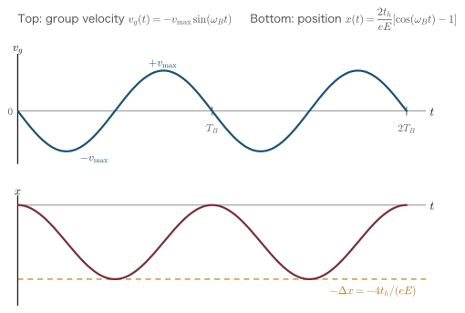

Appendix ESolutions to the Exercises
At the end of each chapter of this book there are exercises, 250 problems in all. This appendix gives a solution to every one of them. We prepared it so that students of the Mochizuki Research Group can work all the way through on their own, even when the time available to ask the instructor is limited.
The policy for the solutions is the same as in the main text: that is, we do not write only the answer. We write out every step of the manipulation from the starting point to the conclusion. What trips students up in solid-state physics exercises is usually not that they do not know the final answer, but that they cannot see “how the second line turned into the third.” So this appendix exists less for checking answers than for comparing your own work with it and finding where the paths diverged.
- First solve it yourself. It is fine if you cannot. If you have thought for 15 minutes and nothing moves, that is the signal to return to the main text. If you look at the solution first, you feel you understand at the moment you read it, and a week later nothing remains.
- If you get stuck, go back to the relevant section of the text, not to the solution. At the beginning of each problem we have placed links to the problem statement and to the relevant place in the main text.
- Read the solution even if your answer is correct. Even when the answers agree, the line of reasoning may differ. That is where understanding divides. Conversely, if you solved a problem by a different line of reasoning from the book, that is a good sign.
- Do not skip the “Supplement”. Many problems come with a Supplement, in which we wrote the mistakes students often make, alternative solutions, the physical meaning, and the connection with experiment. It is sometimes more useful than the problem itself.
crystod-group, introduced in Appendix B. Note, however, that what --product returns is the full direct product, not the symmetric product (this matters in the Jahn–Teller discussion in Chapter 10).If you find an error: This collection of solutions has been verified several times, but errors may always remain. If something looks wrong, do not simply take it at face value: check it against the main text and your own calculation, and let Mochizuki know. That means you have read it correctly.
Chapter 1: Describing Crystal Structures — Conventional Cell and Primitive Cell
Exercise 1.1: The Wigner–Seitz cell of bcc
Problem: For the Wigner–Seitz cell (a truncated octahedron) of the body-centered cubic lattice, (1) find the distances to the nearest and second-nearest neighbors, (2) find the number of faces that originate from each, and (3) show that the volume is $a^3/2$. Full problem statement
Solution
(1) Let the edge of the cube be $a$, and take the lattice point of interest to be the body center $\left(\frac a2,\frac a2,\frac a2\right)$. If we shift the coordinate origin to this point, the lattice points of the bcc lattice are exhaustively given by
$$ \TT = n_1\aa_1 + n_2\aa_2 + n_3\aa_3 ,\qquad \aa_1=\frac a2(-1,1,1),\quad \aa_2=\frac a2(1,-1,1),\quad \aa_3=\frac a2(1,1,-1) $$(the bcc example in Section 1.4). We only have to pick out these integer combinations in order of increasing length.
Nearest neighbors. Collecting $\aa_1,\aa_2,\aa_3$ themselves, $\aa_1+\aa_2+\aa_3=\frac a2(1,1,1)$, and their sign reversals, we obtain
$$ \TT = \frac a2(\pm1,\pm1,\pm1) \qquad (\text{signs chosen independently: }2^3=8\ \text{vectors}) $$These are none other than the vectors from the body center to the eight vertices of the cube. Their length is
$$ \abs{\TT} = \frac a2\sqrt{1^2+1^2+1^2} = \frac{\sqrt3}{2}\,a \approx 0.866\,a $$That is, there are 8 nearest neighbors, at distance $\frac{\sqrt3}{2}a$ (this is exactly half of the body diagonal $\sqrt3 a$ of the cube).
Second-nearest neighbors. The next shortest lattice translations are $\aa_2+\aa_3=(a,0,0)$, $\aa_1+\aa_3=(0,a,0)$, $\aa_1+\aa_2=(0,0,a)$ and their sign reversals:
$$ \TT = (\pm a,0,0),\ (0,\pm a,0),\ (0,0,\pm a)\qquad(6\ \text{vectors}),\qquad \abs{\TT}=a $$These are the vectors from the body center to the body centers of the adjacent cells. Since $\frac{\sqrt3}{2}a\approx0.866a \lt a$, these are indeed the second-nearest neighbors, and there are 6 second-nearest neighbors, at distance $a$.
(2) The Wigner–Seitz cell is the region enclosed by the perpendicular bisecting planes of the line segments joining the central lattice point to the other lattice points (Section 1.5). The equation of the perpendicular bisecting plane for the lattice point $\TT$ follows from the condition that $\rr$ is equidistant from $\bm{0}$ and $\TT$, $\abs{\rr}^2=\abs{\rr-\TT}^2$, and can be written as
$$ \rr\cdot\TT = \frac{1}{2}\abs{\TT}^2 $$We apply this to the nearest and second-nearest neighbors in turn.
Nearest neighbors (8). For $\TT=\frac a2(1,1,1)$ we have $\abs{\TT}^2=\frac34a^2$, so
$$ \frac a2(x+y+z) = \frac{3a^2}{8} \quad\Longrightarrow\quad x+y+z = \frac{3a}{4} $$Collecting all eight sign choices, the condition becomes $\abs{x}+\abs{y}+\abs{z}\le \frac{3a}{4}$. This is a regular octahedron.
Second-nearest neighbors (6). For $\TT=(a,0,0)$ we have $\abs{\TT}^2=a^2$, so
$$ ax = \frac{a^2}{2}\quad\Longrightarrow\quad x=\frac a2 $$Collecting the six cases gives $\abs{x}\le\frac a2,\ \abs{y}\le\frac a2,\ \abs{z}\le\frac a2$, that is, a cube of edge $a$.
Third-nearest and farther neighbors do not form faces. The third-nearest neighbors are the 12 of type $\TT=\frac a2(\pm2,\pm2,0)$, with length $\sqrt2\,a$. Their perpendicular bisecting planes are of type $x+y=a$, but inside the regular octahedron obtained above we have
$$ \abs{x}+\abs{y}\ \le\ \abs{x}+\abs{y}+\abs{z}\ \le\ \frac{3a}{4}\ \lt\ a $$so these planes do not intersect the region at all. The same holds for more distant lattice points. Therefore only the nearest and second-nearest neighbors cut out the WS cell, and
$$ \text{WS cell} = \left\{\rr \ \middle|\ \abs{x}+\abs{y}+\abs{z}\le\frac{3a}{4},\ \ \abs{x},\abs{y},\abs{z}\le\frac a2\right\} $$The six vertices of the regular octahedron, of type $\left(\pm\frac{3a}{4},0,0\right)$, violate $\abs{x}\le\frac a2$ and are therefore cut off, and square faces appear there. In summary,
| Origin | Number of lattice points | Distance | Face shape | Number of faces |
|---|---|---|---|---|
| Nearest neighbors $\langle111\rangle$ | 8 | $\frac{\sqrt3}{2}a$ | regular hexagon | 8 |
| Second-nearest neighbors $\langle100\rangle$ | 6 | $a$ | square | 6 |
| Total | 14 | |||
That is, 8 faces (hexagons) originate from the nearest neighbors and 6 faces (squares) from the second-nearest neighbors, for a total of 14 faces. This is the truncated octahedron.
(3) By definition, the Wigner–Seitz cell is “the set of points closer to the central lattice point than to any other lattice point,” and it contains exactly one lattice point. The WS cell is therefore a kind of primitive cell. On the other hand, as proved in Section 1.3.2, the volume of a primitive cell is uniquely determined regardless of how it is chosen. Hence
$$ V_{\text{WS}} = V_{\text{p}} $$And $V_{\text{p}}$ has already been calculated in the bcc example of Section 1.4.1:
$$ V_{\text{p}} = \abs{\aa_1\cdot(\aa_2\times\aa_3)} = \frac{a^3}{8}\abs{\det\begin{pmatrix}-1&1&1\\1&-1&1\\1&1&-1\end{pmatrix}} = \frac{a^3}{8}\times 4 = \frac{a^3}{2} $$Therefore $V_{\text{WS}} = a^3/2$. The same can be said from the fact that the conventional cell (volume $a^3$) contains $8\times\frac18+1=2$ lattice points, so that $V_{\text{p}}=a^3/n_{\text{lp}}=a^3/2$. ∎
Supplement 1: Obtaining the volume directly from the geometry of the truncated octahedron
Part (3) is a model solution that uses the theorem that “the volume of a primitive cell is unique,” but since we know the shape, we may also integrate directly. This makes a good check.
The volume of the regular octahedron $\abs{x}+\abs{y}+\abs{z}\le s$ (with $s=\frac{3a}{4}$) is $\frac43 s^3 = \frac43\cdot\frac{27a^3}{64} = \frac{9a^3}{16}$. From this we cut off the six corners by $\abs{x}\le\frac a2$ and so on. The cross section of the part with $x\gt\frac a2$ is the square $\abs{y}+\abs{z}\le s-x$ with diagonal $2(s-x)$, whose area is $2(s-x)^2$, so
$$ \int_{a/2}^{3a/4} 2(s-x)^2\,\dd x = \left[-\frac23(s-x)^3\right]_{a/2}^{3a/4} = \frac23\left(\frac a4\right)^3 = \frac{a^3}{96} $$At the six corners, $6\times\frac{a^3}{96}=\frac{a^3}{16}$. Hence
$$ V = \frac{9a^3}{16} - \frac{a^3}{16} = \frac{8a^3}{16} = \frac{a^3}{2} $$which agrees. Incidentally, the vertices are all permutations of $\left(0,\pm\frac a4,\pm\frac a2\right)$ (24 of them), there are 36 edges and 14 faces, and Euler's polyhedron formula $24-36+14=2$ is satisfied. Every edge has length $\frac{\sqrt2}{4}a$, and the hexagonal faces are regular hexagons (the truncated octahedron is one of the semiregular polyhedra).
The areas of the faces are $\left(\frac{\sqrt2}{4}a\right)^2=\frac{a^2}{8}$ for a square and $\frac{3\sqrt3}{2}\left(\frac{\sqrt2}{4}a\right)^2=\frac{3\sqrt3}{16}a^2$ for a regular hexagon. Dividing the polyhedron into pyramids whose heights are the distances from the center to each face (= half the corresponding neighbor distance), we obtain
$$ V = 6\cdot\frac13\cdot\frac a2\cdot\frac{a^2}{8} \;+\; 8\cdot\frac13\cdot\frac{\sqrt3\,a}{4}\cdot\frac{3\sqrt3}{16}a^2 = \frac{a^3}{8} + \frac{3a^3}{8} = \frac{a^3}{2} $$which again agrees.
Supplement 2: You must have seen this shape somewhere
The truncated octahedron is a shape that always appears when one draws a band diagram. As we learn in Chapter 3, the reciprocal lattice of the bcc lattice is the fcc lattice, and the reciprocal lattice of the fcc lattice is the bcc lattice. The first Brillouin zone is the WS cell of the reciprocal lattice, so
- the first Brillouin zone of an fcc crystal = the WS cell of bcc (the reciprocal lattice) = the truncated octahedron (the shape in this problem)
- the first Brillouin zone of a bcc crystal = the WS cell of fcc (the reciprocal lattice) = the rhombic dodecahedron
The reason that, in the Brillouin zone of fcc, the $L$ point is called the center of a hexagonal face and the $X$ point the center of a square face is that the 8 faces and 6 faces in this problem correspond to them directly. That “the WS cell of bcc in real space” and “the Brillouin zone of fcc in reciprocal space” have the same shape is no coincidence: it is because both are the WS cell of the same bcc-type set of points.
Common mistake: Many answers get this wrong, thinking “it is bcc, so it must be a rhombic dodecahedron in real space as well.” Always check which lattice's WS cell you are constructing.
Exercise 1.2: The Bravais lattice of the CsCl type
Problem: For the CsCl-type structure ($Pm\bar{3}m$), (1) is the body center a lattice point? (2) What are the Bravais lattice and the number of atoms in the primitive cell? (3) What happens if Cs and Cl are made the same element? Full problem statement
Solution
(1) A lattice point was defined as “a point whose surroundings are completely identical, including the kind, distance, and direction of the neighbors” (Section 1.2.2). In the CsCl type, Cs sits at the vertices of a cube of edge $a$ and Cl sits at the body center $\left(\frac12,\frac12,\frac12\right)$. Writing out the environment of each,
| Point of interest | Nearest neighbors | Distance | Second-nearest neighbors | Distance |
|---|---|---|---|---|
| Vertex (Cs) | 8 Cl | $\frac{\sqrt3}{2}a$ | 6 Cs | $a$ |
| Body center (Cl) | 8 Cs | $\frac{\sqrt3}{2}a$ | 6 Cl | $a$ |
The distances and coordination numbers are the same, but the kinds of atoms differ. Therefore the two environments are not identical, and the body center is not a lattice point.
Restating this in terms of translations makes it clearer. If the body center were a lattice point, $\TT=\frac a2(1,1,1)$ would be a lattice translation vector, and the crystal would have to be invariant under $\rr\to\rr+\TT$. However, this translation maps the position of Cs onto the position of Cl, so as long as $\mathrm{Cs}\neq\mathrm{Cl}$ the atomic arrangement is not invariant. Hence $\frac a2(1,1,1)$ is not a lattice translation, and the body center is not a lattice point.
(2) Since the lattice points are only the vertices, the Bravais lattice is simple cubic (cubic-$P$, lattice constant $a$). That the space-group symbol $Pm\bar{3}m$ begins with $P$ rather than $I$ expresses precisely this.
In this case the conventional cell and the primitive cell coincide ($n_{\text{lp}}=1$, $\det P=1$, $V_{\text{p}}=a^3$), and the numbers of atoms in it are
$$ \mathrm{Cs}:\ 8\times\frac18 = 1\ \text{atom},\qquad \mathrm{Cl}:\ 1\times 1 = 1\ \text{atom} $$That is, the primitive cell contains two atoms (one Cs plus one Cl). Counted in formula units, $Z=1$. The basis can be written as
$$ \text{basis} = \bigl\{\ \mathrm{Cs}\ \text{at}\ (0,0,0),\quad \mathrm{Cl}\ \text{at}\ \left(\tfrac12,\tfrac12,\tfrac12\right)\ \bigr\} $$.
(3) If Cs and Cl are replaced by the same element $X$, the only reason for the difference in environment found in (1) (the difference in atomic species) disappears. Then the vertex and the body center both have the completely identical environment “8 $X$ atoms as nearest neighbors at distance $\frac{\sqrt3}{2}a$, and 6 $X$ atoms as second-nearest neighbors at distance $a$,” and $\TT=\frac a2(1,1,1)$ becomes a lattice translation vector. Therefore the body center also becomes a lattice point, and the Bravais lattice changes to body-centered cubic (cubic-$I$, bcc).
As a consequence,
- the number of lattice points contained in the conventional cell (a cube of edge $a$) increases to $8\times\frac18+1=2$
- the volume of the primitive cell is halved from $a^3$ to $a^3/2$ ($\abs{\det P}=1/2$), and the number of atoms in it decreases from two to one
- the space group rises from $Pm\bar{3}m$ to $Im\bar{3}m$ (the point group $m\bar{3}m$ does not change, but the space group becomes larger by the amount of the additional translation)
This is precisely the bcc structure of $\alpha$-Fe, W, and the alkali metals. ∎
Supplement 1: The real “CsCl type ↔ bcc” transition — the order–disorder transition
(3) is not merely a thought experiment; it is a phenomenon that actually occurs. At low temperatures, $\beta$ brass (CuZn) has the CsCl type (B2 structure, $Pm\bar{3}m$), in which Cu and Zn are arranged regularly, with Cu at the vertices and Zn at the body center. Above about $735\ \mathrm{K}$, however, Cu and Zn exchange places randomly, and each site becomes, on average, “something intermediate between Cu and Zn.” Then the vertex and the body center can no longer be distinguished statistically, and the Bravais lattice changes from cubic-$P$ to cubic-$I$, giving $Im\bar{3}m$. This is called the order–disorder transition. Although the atomic positions hardly change, only the judgment of “whether it is a lattice point” changes, and the symmetry rises.
Supplement 2: This difference shows up directly in X-ray diffraction
Anticipating the structure factor treated in Chapter 3, for the conventional cell of the CsCl type we have
$$ F_{hkl} = f_{\mathrm{Cs}} + f_{\mathrm{Cl}}\,e^{i\pi(h+k+l)} = \begin{cases} f_{\mathrm{Cs}} + f_{\mathrm{Cl}} & (h+k+l\ \text{is even})\\[2pt] f_{\mathrm{Cs}} - f_{\mathrm{Cl}} & (h+k+l\ \text{is odd}) \end{cases} $$The peaks with $h+k+l$ odd (such as $(100)$ and $(111)$) are called superlattice reflections, and they are proportional to the difference $f_{\mathrm{Cs}}-f_{\mathrm{Cl}}$ in the scattering powers of the two kinds of atoms. If the two are made the same element as in (3), then $f_{\mathrm{Cs}}=f_{\mathrm{Cl}}$ and these reflections vanish completely, giving the systematic-absence rule that “in bcc, reflections with $h+k+l$ odd do not appear.” The argument of (1) about whether a point is a lattice point can thus be observed directly as the appearance of the diffraction pattern.
Common mistake: Answering “there is an atom at the body center, so it is bcc.” What decides whether a structure is bcc is not where the atoms are, but whether the body center and the vertex are carried into each other by a translation. For the same reason, rock-salt-type NaCl is an “arrangement that looks simple cubic,” yet its Bravais lattice is fcc (Section 1.7).
Exercise 1.3: Calculating the packing fraction
Problem: In the hard-sphere model, find the packing fraction (APF) of the simple cubic, body-centered cubic, face-centered cubic, and diamond structures. Full problem statement
Solution
The strategy is common to all cases. Take the conventional cell (a cube of edge $a$, volume $a^3$), and
- Find the direction in which the spheres touch, and from that condition express the sphere radius $r$ in terms of $a$
- Count the number of atoms $N$ in the cell (the rule of Section 1.6)
- Calculate $\displaystyle \mathrm{APF} = \frac{N\cdot\frac43\pi r^3}{a^3}$
Step 1 is everything. It suffices to look for the direction that satisfies “nearest-neighbor interatomic distance $=2r$.”
(1) Simple cubic (sc). The atoms are only at the vertices. The nearest neighbor is the adjacent vertex in the $\langle100\rangle$ direction along an edge of the cube, at distance $a$. Hence
$$ 2r = a \quad\Longrightarrow\quad r = \frac a2 ,\qquad N = 8\times\frac18 = 1 $$ $$ \mathrm{APF} = \frac{1\cdot\frac43\pi\left(\frac a2\right)^3}{a^3} = \frac{\frac43\pi\cdot\frac{a^3}{8}}{a^3} = \frac{\pi}{6} \approx 0.524 $$(2) Body-centered cubic (bcc). The vertex atoms and the body-center atom lie in a row along the body diagonal $\langle111\rangle$. The length of the body diagonal is $\sqrt{a^2+a^2+a^2}=\sqrt3\,a$, and along it lie “the radius of the vertex sphere + the diameter of the body-center sphere + the radius of the vertex sphere,” so
$$ \sqrt3\,a = 4r \quad\Longrightarrow\quad r = \frac{\sqrt3}{4}a ,\qquad N = 8\times\frac18 + 1 = 2 $$To be safe, we check that vertex spheres do not overlap one another (distance $a$): $2r = \frac{\sqrt3}{2}a \approx 0.866a \lt a$, so there is no problem. Therefore
$$ \mathrm{APF} = \frac{2\cdot\frac43\pi\left(\frac{\sqrt3}{4}a\right)^3}{a^3} = \frac{\frac83\pi\cdot\frac{3\sqrt3}{64}a^3}{a^3} = \frac{8\cdot 3\sqrt3}{3\cdot 64}\pi = \frac{\sqrt3\,\pi}{8} \approx 0.680 $$(3) Face-centered cubic (fcc). The vertex atoms and the face-center atoms lie in a row along the face diagonal $\langle110\rangle$. The length of the face diagonal is $\sqrt2\,a$, and four radii lie along it, so
$$ \sqrt2\,a = 4r \quad\Longrightarrow\quad r = \frac{\sqrt2}{4}a ,\qquad N = 8\times\frac18 + 6\times\frac12 = 4 $$ $$ \mathrm{APF} = \frac{4\cdot\frac43\pi\left(\frac{\sqrt2}{4}a\right)^3}{a^3} = \frac{\frac{16}{3}\pi\cdot\frac{2\sqrt2}{64}a^3}{a^3} = \frac{16\cdot 2\sqrt2}{3\cdot 64}\pi = \frac{\sqrt2\,\pi}{6} \approx 0.740 $$(4) Diamond structure. It is an fcc lattice with a basis of two carbon atoms placed at $(0,0,0)$ and $\left(\frac14,\frac14,\frac14\right)$ (Table 1.2 in Section 1.7.1). The nearest neighbors are the two atoms of this pair, that is, separated by $\frac14$ of the body diagonal $\langle111\rangle$, at distance
$$ d = \abs{\left(\tfrac a4,\tfrac a4,\tfrac a4\right)} = \frac{\sqrt3}{4}a $$Since the spheres touch here,
$$ 2r = \frac{\sqrt3}{4}a \quad\Longrightarrow\quad r = \frac{\sqrt3}{8}a $$We check that this really is the nearest-neighbor distance. By (3), the nearest-neighbor distance within the same fcc sublattice is $\frac{\sqrt2}{2}a\approx0.707a$, and $\frac{\sqrt3}{4}a\approx0.433a$ is shorter. Hence the touching occurs between different sublattices, and spheres within the same sublattice do not overlap, since $2r=0.433a \lt 0.707a$.
The number of atoms is 4 at the fcc positions plus 4 of the interior $\left(\frac14,\frac14,\frac14\right)$ type, giving $N=8$ (Example 1.3(f) in Section 1.6). Hence
$$ \mathrm{APF} = \frac{8\cdot\frac43\pi\left(\frac{\sqrt3}{8}a\right)^3}{a^3} = \frac{\frac{32}{3}\pi\cdot\frac{3\sqrt3}{512}a^3}{a^3} = \frac{32\cdot 3\sqrt3}{3\cdot 512}\pi = \frac{\sqrt3\,\pi}{16} \approx 0.340 $$We summarize the above.
| Structure | Touching direction | $r$ | $N$ | Coordination number | APF | Numerical value |
|---|---|---|---|---|---|---|
| Simple cubic | $\langle100\rangle$ | $a/2$ | 1 | 6 | $\pi/6$ | 0.5236 |
| Body-centered cubic | $\langle111\rangle$ | $\sqrt3a/4$ | 2 | 8 | $\sqrt3\pi/8$ | 0.6802 |
| Face-centered cubic | $\langle110\rangle$ | $\sqrt2a/4$ | 4 | 12 | $\sqrt2\pi/6$ | 0.7405 |
| Diamond | $1/4$ of $\langle111\rangle$ | $\sqrt3a/8$ | 8 | 4 | $\sqrt3\pi/16$ | 0.3401 |
All of them agree with the values in the hint: $\pi/6\approx0.524$, $\sqrt3\pi/8\approx0.680$, $\sqrt2\pi/6\approx0.740$, and $\sqrt3\pi/16\approx0.340$. ∎
Supplement 1: The APF is determined by the coordination number
If we rearrange Table E.3 in order of coordination number, we see that the APF increases monotonically.
$$ \underbrace{4}_{0.340} \ \lt\ \underbrace{6}_{0.524} \ \lt\ \underbrace{8}_{0.680} \ \lt\ \underbrace{12}_{0.740} $$For rigid spheres it is a matter of course that “the more neighbors a sphere has, the more tightly packed the structure is.” Conversely, however, the diamond structure is so loosely packed because its coordination number is only 4. The reason it settles for a coordination number of 4 is that the $sp^3$ hybrid orbitals of carbon form covalent bonds in the tetrahedral directions, which is a circumstance outside the rigid-sphere model. The metallic bond (which has no directionality) acts toward maximizing the packing, whereas the covalent bond (which has directionality) gives priority to the bond angle. The table of APFs directly reflects the difference in the nature of the bonding.
Incidentally, fcc and the hexagonal close-packed structure (hcp) both have $\sqrt2\pi/6\approx0.7405$, which is the maximum for packing spheres of equal size (the Kepler conjecture, proved in 1998).
Supplement 2: Common mistakes, and an alternative solution using the primitive cell
Mistake 1: In bcc, thinking that “the vertices touch each other” and setting $a=2r$. In bcc the body-center sphere is wedged in, so the contact is along the body diagonal. If the touching direction is wrong, the APF becomes the impossible value $\pi/6\times2=1.047\gt1$, which should be noticed immediately.
Mistake 2: In fcc, setting “face diagonal $=2r$.” On the face diagonal the centers of three spheres lie in a row (vertex, face center, vertex), so the length is $4r$, not $2r$. The body diagonal of bcc is likewise $4r$.
Mistake 3: Taking the number of atoms in diamond to be 4. The fcc lattice has four lattice points, but the basis has two atoms, so there are eight atoms.
Alternative solution (calculating with the primitive cell). Since the APF is a volume ratio, it is the same whichever cell we use for the calculation. For bcc, the volume of the primitive cell is $a^3/2$ and it contains one atom, so
$$ \mathrm{APF} = \frac{1\cdot\frac43\pi\left(\frac{\sqrt3}{4}a\right)^3}{a^3/2} = \frac{2\cdot\frac43\pi\cdot\frac{3\sqrt3}{64}a^3}{a^3} = \frac{\sqrt3\,\pi}{8} $$gives the same value. For diamond, two atoms in $a^3/4$ again give $\sqrt3\pi/16$. This confirms that the result does not depend on the choice of cell.
Exercise 1.4: Constructing the transformation matrix yourself
Problem: For the body-centered tetragonal lattice (tetragonal-$I$, $a=b\neq c$), construct the transformation matrix $P$ from the conventional to the primitive cell, verify that $\det P=1/2$, and express the lengths and angles of the primitive basis vectors in terms of $a,c$. Full problem statement
Solution
Constructing the transformation matrix. Let the basis vectors of the conventional cell be
$$ \aa = (a,0,0),\qquad \bb = (0,a,0),\qquad \cc = (0,0,c) $$The lattice points of the body-centered tetragonal lattice are the vertices (integer combinations of $\aa,\bb,\cc$) together with the body center $\frac12(\aa+\bb+\cc)$ of each cell. The basis vectors of the primitive cell must be chosen so that they can generate this body-center lattice point. Taking them in the same way as for bcc, we obtain
$$ \aa_1 = \frac12(-\aa+\bb+\cc) = \frac12(-a,\,a,\,c),\qquad \aa_2 = \frac12(\aa-\bb+\cc) = \frac12(a,\,-a,\,c),\qquad \aa_3 = \frac12(\aa+\bb-\cc) = \frac12(a,\,a,\,-c) $$(this agrees with $\aa_1=\frac12(-a,a,c)$ in the hint). Written in matrix form,
$$ \begin{pmatrix}\aa_1\\ \aa_2\\ \aa_3\end{pmatrix} = P \begin{pmatrix}\aa\\ \bb\\ \cc\end{pmatrix}, \qquad P = \frac12\begin{pmatrix}-1&1&1\\ 1&-1&1\\ 1&1&-1\end{pmatrix} $$$P$ has exactly the same form as in the cubic-$I$ case of a cubic crystal (Table 1.1). This is only natural: $P$ is determined solely by “which extra lattice points the cell contains” and does not depend on the axis lengths $a,c$.
Checking that these really generate the lattice. Solving in the reverse direction gives
$$ \aa_2+\aa_3 = (a,0,0) = \aa,\qquad \aa_1+\aa_3 = (0,a,0) = \bb,\qquad \aa_1+\aa_2 = (0,0,c) = \cc $$ $$ \aa_1+\aa_2+\aa_3 = \frac12(a,a,c) = \frac12(\aa+\bb+\cc)\quad(\text{body center}) $$so both the three conventional vectors and the body center can be built with integer coefficients. That is,
$$ P^{-1} = \begin{pmatrix}0&1&1\\ 1&0&1\\ 1&1&0\end{pmatrix} $$is an integer matrix, and $\aa_1,\aa_2,\aa_3$ are indeed a set of primitive translation vectors.
Determinant. Since a factor $\frac12$ comes out of each of the three rows, a factor $\left(\frac12\right)^3=\frac18$ comes out in front:
$$ \det P = \frac18 \det\begin{pmatrix}-1&1&1\\ 1&-1&1\\ 1&1&-1\end{pmatrix} $$Expanding along the first row gives
$$ \det = (-1)\bigl[(-1)(-1)-1\cdot1\bigr] - 1\bigl[1\cdot(-1)-1\cdot1\bigr] + 1\bigl[1\cdot1-(-1)\cdot1\bigr] = (-1)\cdot 0 - 1\cdot(-2) + 1\cdot 2 = 4 $$ $$ \therefore\quad \det P = \frac18\times 4 = \frac12 $$This is consistent with $\abs{\det P} = V_{\text{p}}/V_{\text{conv}} = 1/n_{\text{lp}}$. Indeed, the lattice points of the conventional cell are the vertices $8\times\frac18$ plus the body center $1$, so $n_{\text{lp}}=2$ and $V_{\text{p}} = \frac12 a^2c$. That $\det P^{-1}=2$ can also be checked from the $P^{-1}$ above.
Lengths. The absolute values of the components of all three vectors are a permutation of $\left(\frac a2,\frac a2,\frac c2\right)$, differing only in signs, so the lengths are equal:
$$ \abs{\aa_1} = \sqrt{\left(\frac a2\right)^2+\left(\frac a2\right)^2+\left(\frac c2\right)^2} = \frac12\sqrt{2a^2+c^2} $$ $$ \abs{\aa_1}=\abs{\aa_2}=\abs{\aa_3}=\frac12\sqrt{2a^2+c^2} $$This agrees with the value in the hint.
Angles. We calculate the inner products.
$$ \aa_1\cdot\aa_2 = \frac14\bigl[(-a)(a) + (a)(-a) + c\cdot c\bigr] = \frac14\left(c^2-2a^2\right) $$ $$ \aa_1\cdot\aa_3 = \frac14\bigl[(-a)(a) + (a)(a) + c(-c)\bigr] = -\frac{c^2}{4} $$ $$ \aa_2\cdot\aa_3 = \frac14\bigl[(a)(a) + (-a)(a) + c(-c)\bigr] = -\frac{c^2}{4} $$Since the squared length is $\abs{\aa_i}^2 = \frac14(2a^2+c^2)$, letting $\theta_{ij}$ be the angle between $\aa_i$ and $\aa_j$,
$$ \cos\theta_{12} = \frac{\frac14(c^2-2a^2)}{\frac14(2a^2+c^2)} = \frac{c^2-2a^2}{c^2+2a^2}, \qquad \cos\theta_{13} = \cos\theta_{23} = \frac{-\frac{c^2}{4}}{\frac14(2a^2+c^2)} = -\frac{c^2}{2a^2+c^2} $$Letting $x \equiv c/a$ and dividing numerator and denominator by $a^2$,
$$ \cos\theta_{12} = \frac{x^2-2}{x^2+2}, \qquad \cos\theta_{13}=\cos\theta_{23} = -\frac{x^2}{x^2+2} $$Indeed, the angles depend only on $c/a$. The three lengths are equal, but there are two kinds of angles ($\theta_{12}$ is one, and $\theta_{13}=\theta_{23}$ are two), so in general the cell is not rhombohedral. This reflects the fact that the fourfold axis of the tetragonal crystal lies only along the $\cc$ direction, so that $\aa_3$ alone is in a different position from the other two.
Here are some numerical examples.
| $c/a$ | $\abs{\aa_i}/a$ | $\theta_{12}$ | $\theta_{13}=\theta_{23}$ | Remarks |
|---|---|---|---|---|
| $1$ | $0.8660$ | $109.47^\circ$ | $109.47^\circ$ | bcc (rhombohedral) |
| $1.5$ | $1.0308$ | $86.63^\circ$ | $121.97^\circ$ | General tetragonal-$I$ |
| $\sqrt2$ | $1.0000$ | $90^\circ$ | $120^\circ$ | fcc |
For $c=a$ we have $\cos\theta_{12}=\cos\theta_{13}=-\frac13$, and the bcc result $109.47^\circ$ of Section 1.4.1 is correctly reproduced. ∎
Supplement 1: At $c/a=\sqrt2$ it becomes fcc — the Bain distortion
We explain why we wrote “fcc” in the row $c/a=\sqrt2$ of Table E.4. The body-centered tetragonal lattice allows $c/a$ to be varied continuously, but at two special values it turns into a cubic crystal.
- $c/a=1$: the conventional cell becomes a cube, and it is simply bcc.
- $c/a=\sqrt2$: it becomes fcc.
Let us verify the latter. For $c=\sqrt2\,a$, the length of the primitive vectors is
$$ \abs{\aa_i} = \frac12\sqrt{2a^2+2a^2} = a $$and the volume of the primitive cell is
$$ V_{\text{p}} = \frac12 a^2 c = \frac{\sqrt2}{2}a^3 $$On the other hand, for an fcc lattice with cube edge $A$, the volume of the primitive cell is $A^3/4$ and the length of the basis vectors is $A/\sqrt2$, so setting $A=\sqrt2\,a$,
$$ \frac{A^3}{4} = \frac{2\sqrt2\,a^3}{4} = \frac{\sqrt2}{2}a^3,\qquad \frac{A}{\sqrt2} = a $$and both quantities agree. In other words, the body-centered tetragonal lattice with $c/a=\sqrt2$ is exactly the face-centered cubic lattice if we reconsider it by taking the cube edge to be $\sqrt2\,a$ (this body-centered tetragonal cell is the fcc cube redrawn as a slender square prism rotated by $45^\circ$).
This path, along which “$c/a$ is varied continuously from $1$ to $\sqrt2$ to connect bcc and fcc,” is called the Bain distortion (Bain path), and is known as a classic model describing the martensitic transformation of steel. Within the single family of this Bravais lattice, two cubic crystals are embedded as special points.
Supplement 2: Common mistakes
Mistake 1: Confusing the rows and columns of $P$. In this book we use the form $\left(\aa_1\ \aa_2\ \aa_3\right)^{\mathrm T} = P\left(\aa\ \bb\ \cc\right)^{\mathrm T}$, that is, the rows contain the coefficients of the primitive vectors (this is also stated explicitly in the heading of Table 1.1: “the rows are $\aa_1,\aa_2,\aa_3$”). Some references use the transposed convention, so even though the value of $\det$ is the same, the arrangement of the entries may change.
Mistake 2: Concluding “the three lengths are equal, so the cell is rhombohedral.” A rhombohedron requires all three lengths and all three angles to be equal. In this problem, when $c\neq a$ and $c\neq\sqrt2 a$, we have $\theta_{12}\neq\theta_{13}$, so the cell is not rhombohedral.
Mistake 3: Dropping the sign by not distinguishing $\det P$ from $\abs{\det P}$. Here $\det P=+\frac12$, but if the order of $\aa_1,\aa_2,\aa_3$ is exchanged the sign is reversed. What matters for the volume ratio is $\abs{\det P}$.
Exercise 1.5: Miller indices and interplanar spacing
Problem: For a cubic crystal (lattice constant $a$), show that $d_{hkl}=a/\sqrt{h^2+k^2+l^2}$, using the intercepts of the $(hkl)$ plane and the formula for the distance between a point and a plane. Full problem statement
Solution
Step 1: Set up the equation of the plane. Because the crystal is cubic, the crystal axes $\aa,\bb,\cc$ are mutually orthogonal and all have length $a$. We therefore take the directions of $\aa,\bb,\cc$ directly as the axes of Cartesian coordinates $x,y,z$. By the definition of the Miller indices (Section 1.8.1), the $(hkl)$ plane cuts the three axes at $\frac1h,\frac1k,\frac1l$ in units of the lattice constant. Written in units of length, the intercepts are
$$ \frac ah,\qquad \frac ak,\qquad \frac al $$. Using the intercept form of the equation of a plane (for an $x$ intercept $p$, $y$ intercept $q$, and $z$ intercept $r$, $\frac xp+\frac yq+\frac zr=1$), we obtain
$$ \frac{x}{a/h} + \frac{y}{a/k} + \frac{z}{a/l} = 1 $$Multiplying both sides by $a$ gives
$$ hx + ky + lz = a $$. A convenient feature is that this form does not break down even if any of $h,k,l$ is $0$ (the plane is parallel to an axis).
Step 2: Find the distance from the origin. Rather than recalling a formula, we construct it on the spot. Letting $\bm{n}=(h,k,l)$, the equation of the plane is $\rr\cdot\bm{n}=a$. Dividing both sides by $\abs{\bm{n}}$ gives
$$ \rr\cdot\hat{\bm{n}} = \frac{a}{\abs{\bm{n}}}, \qquad \hat{\bm{n}} \equiv \frac{\bm{n}}{\abs{\bm{n}}} $$The left-hand side is the length of the projection of a point $\rr$ on the plane onto the direction $\hat{\bm{n}}$. The meaning of this equation is that the projection takes the same value $a/\abs{\bm{n}}$ for every point on the plane. If the projection is constant, that value is the distance from the origin to the foot of the perpendicular dropped onto the plane, so
$$ D = \frac{a}{\abs{\bm{n}}} = \frac{a}{\sqrt{h^2+k^2+l^2}} $$is the distance from the origin to the $(hkl)$ plane.
Step 3: Show that this is the “spacing between adjacent planes.” This is the heart of the problem and must not be skipped. The interplanar spacing $d_{hkl}$ is the spacing between two adjacent members of a family of parallel lattice planes. We may call $D$ the spacing $d_{hkl}$ only if no other lattice plane lies between the plane through the origin and the plane we have just considered.
First, suppose that $h,k,l$ are coprime (they are, since they were reduced in Step 2 of the definition of the Miller indices). Suppose that the lattice points can be written as $\rr = (n_1 a,\, n_2 a,\, n_3 a)$ ($n_i$ integers). That is, what we are considering here is the simple cubic lattice (the case of fcc and bcc, where lattice points also lie inside the conventional cell, is discussed in Mistake 3 of Supplement 2). Substituting this into the left-hand side of the equation of the plane gives
$$ h(n_1a) + k(n_2a) + l(n_3a) = a\,(hn_1+kn_2+ln_3) \equiv a\,m ,\qquad m\in\mathbb{Z} $$. That is, every lattice point lies on one of the planes $hx+ky+lz = ma$ ($m$ an integer). Conversely, if $h,k,l$ are coprime, then by Bézout's theorem, for any integer $m$ there exist integers $(n_1,n_2,n_3)$ satisfying $hn_1+kn_2+ln_3=m$, so lattice points actually lie on the plane for every $m$. Therefore this family of equally spaced planes is precisely the family of lattice planes, and each increase of $m$ by one advances by exactly one plane.
The $D$ of Step 2 is the distance between the plane with $m=0$ (the plane through the origin) and the plane with $m=1$, so it is exactly the spacing between adjacent planes:
$$ d_{hkl} = \frac{a}{\sqrt{h^2+k^2+l^2}} $$In general, the distance to the $m$th plane is $ma/\sqrt{h^2+k^2+l^2} = m\,d_{hkl}$, which also shows at the same time that the family is equally spaced. ∎
Check. For $(100)$, $d = a/\sqrt{1}=a$, which equals the length of an edge of the cube. For $(110)$, $d=a/\sqrt2$, and for $(111)$, $d=a/\sqrt3$. Also, substituting the Laue indices $(200)$ used in diffraction directly gives $d = a/\sqrt{4}=a/2$, which agrees with the statement in Example 1.5 of Section 1.8.1 that “$(200)$ is parallel to $(100)$ with half the interplanar spacing.” The fact that inserting indices that have not been reduced automatically yields an interplanar spacing $1/n$ times as large corresponds to the following: in Step 3, when $h,k,l$ are not coprime, planes containing no lattice points are interleaved at equal spacing.
Supplement 1: Generalization to the orthorhombic case, and why we restrict to cubic crystals
The same argument goes through unchanged if the axes are orthogonal, even when their lengths differ. For an orthorhombic crystal ($a\neq b\neq c$, all axes orthogonal), the intercepts are $\frac ah,\frac bk,\frac cl$, so the equation of the plane is
$$ \frac hax + \frac kby + \frac lcz = 1 $$. With $\bm{n}=\left(\frac ha,\frac kb,\frac lc\right)$, the distance from the origin is $1/\abs{\bm{n}}$, so
$$ \frac{1}{d_{hkl}^2} = \frac{h^2}{a^2} + \frac{k^2}{b^2} + \frac{l^2}{c^2} $$is obtained. Setting $a=b=c$ returns the result of this problem. For a tetragonal crystal, $\frac{1}{d^2}=\frac{h^2+k^2}{a^2}+\frac{l^2}{c^2}$.
However, for crystal systems in which the axes are not orthogonal (hexagonal, monoclinic, triclinic), the premise of Step 1, “take $\aa,\bb,\cc$ directly as Cartesian coordinates,” breaks down, so this calculation cannot be used. For the hexagonal system,
$$ \frac{1}{d_{hkl}^2} = \frac43\cdot\frac{h^2+hk+k^2}{a^2} + \frac{l^2}{c^2} $$a cross term $hk$ appears. Memorizing a formula for each crystal system is fruitless: substituting $\GG_{hkl}=h\bb_1+k\bb_2+l\bb_3$ into the reciprocal-lattice expression $d_{hkl}=2\pi/\abs{\GG_{hkl}}$, which we learn in Chapter 3, gives the result automatically from the same single line for any crystal system. This problem is that special case, arranged so that it can be verified without knowing the reciprocal lattice.
Supplement 2: Common mistakes
Mistake 1: Stopping at Step 2 and writing “distance from the origin to the plane = interplanar spacing.” The two happen to coincide, but unless you say why they coincide (that the plane through the origin is the adjacent lattice plane of the same family), it is not a proof. This is where grades differ.
Mistake 2: Using $d=a/\sqrt{h^2+k^2+l^2}$ for crystals other than cubic. The normal of the $(hkl)$ plane coincides with the $[hkl]$ direction only in cubic crystals (see the Caution in Section 1.8.2).
Mistake 3: Taking the value obtained by substituting the conventional-cell $a$ into the formula of this problem to be the interplanar spacing of fcc or bcc as it stands. As can be seen from the fact that in Step 3 we put the lattice points as $\rr=(n_1a,n_2a,n_3a)$, this formula holds for the simple cubic lattice. For example, substituting into fcc $(100)$ gives $d=a$, but the fcc Bravais lattice (cubic-$F$) also contains points of the type $\left(\frac12,\frac12,0\right)a$ as lattice points, so there is also a plane carrying lattice points at $x=a/2$, and the actual spacing of the lattice planes perpendicular to $[100]$ is $a/2$.
What produces this difference is not the basis but the centering. The face-center positions are themselves fcc Bravais lattice points (Table 1.2 in Section 1.7), not basis atoms. In fact, for a single-element fcc crystal such as Cu or Al the basis is one atom, so the spacing of the lattice planes and the spacing of the atomic planes coincide, both being $a/2$. If we switch to the viewpoint that reads the same structure as “a simple cubic lattice plus a basis of the four points $\left(0,0,0\right),\left(\frac12,\frac12,0\right),\left(\frac12,0,\frac12\right),\left(0,\frac12,\frac12\right)$,” these four points act on the structure factor, and reflections with mixed parity of $h,k,l$ vanish. This is the systematic absences of Chapter 3, and the fact that $(100)$ vanishes while $(200)$ ($d=a/2$) remains corresponds to the $a/2$ we have just found.
Chapter 2: The Seven Crystal Systems and the 14 Bravais Lattices
Exercise 2.1: Showing that hexagonal-$I$ does not exist
Problem: Show that the arrangement obtained by adding a lattice point at the center $\left(\frac12,\frac12,\frac12\right)$ of the conventional cell of a hexagonal crystal (1) does not have 6-fold rotational symmetry, and (2) determine which Bravais lattice it is. Full problem statement
Solution
(1) First we write down the primitive vectors of the hexagonal system in Cartesian coordinates. Following hexagonal-$P$ in Table 2.3, let
$$ \aa = a(1,0,0),\qquad \bb = a\left(-\frac12,\frac{\sqrt3}{2},0\right),\qquad \cc = c(0,0,1) $$Then $\aa\cdot\bb = -a^2/2$ and $\abs{\aa}=\abs{\bb}=a$, so $\cos\gamma = -1/2$, that is, $\gamma = 120^\circ$, which indeed satisfies the condition for the hexagonal system in Table 2.1.
Next we examine how the $60^\circ$ rotation $C_6$ about the $c$ axis maps the primitive vectors. The rotation matrix in Cartesian coordinates is
$$ C_6 = \begin{pmatrix} \cos 60^\circ & -\sin 60^\circ & 0\\ \sin 60^\circ & \cos 60^\circ & 0\\ 0&0&1 \end{pmatrix} = \begin{pmatrix} \frac12 & -\frac{\sqrt3}{2} & 0\\[2pt] \frac{\sqrt3}{2} & \frac12 & 0\\[2pt] 0&0&1 \end{pmatrix} $$Acting with it on $\aa$ gives
$$ C_6\aa = a\left(\frac12,\frac{\sqrt3}{2},0\right) $$On the other hand,
$$ \aa+\bb = a(1,0,0) + a\left(-\frac12,\frac{\sqrt3}{2},0\right) = a\left(\frac12,\frac{\sqrt3}{2},0\right) $$so $C_6\aa = \aa+\bb$. Similarly, for $\bb$,
$$ C_6\bb = a\left(\frac12\cdot\left(-\frac12\right) - \frac{\sqrt3}{2}\cdot\frac{\sqrt3}{2},\ \ \frac{\sqrt3}{2}\cdot\left(-\frac12\right) + \frac12\cdot\frac{\sqrt3}{2},\ 0\right) = a(-1,0,0) = -\aa $$Since $\cc$ is parallel to the rotation axis, $C_6\cc = \cc$. In summary, on the basis of lattice vectors, $C_6$ acts as
$$ \aa \longmapsto \aa+\bb,\qquad \bb \longmapsto -\aa,\qquad \cc \longmapsto \cc $$Because all the coefficients are integers, this also confirms that $C_6$ is a symmetry operation of the hexagonal-$P$ lattice.
Now let the added body-center point be
$$ \bm{t} = \frac12\aa + \frac12\bb + \frac12\cc $$Using the action above, we obtain
$$ C_6\bm{t} = \frac12(\aa+\bb) + \frac12(-\aa) + \frac12\cc = \frac12\bb + \frac12\cc $$that is, the point is carried to $\left(0,\frac12,\frac12\right)$ in fractional coordinates. By definition, however, the lattice points of hexagonal-$I$ are of only two kinds,
$$ \left\{(n_1,n_2,n_3)\right\} \cup \left\{\left(n_1+\tfrac12,\,n_2+\tfrac12,\,n_3+\tfrac12\right)\right\} \qquad (n_i \in \mathbb{Z}) $$The point $\left(0,\frac12,\frac12\right)$ belongs to neither: its difference from the former, $\left(0,\frac12,\frac12\right)$, and its difference from the latter, $\left(-\frac12,0,0\right)$, is an integer vector. Therefore $C_6\bm{t}$ is not a lattice point, and $C_6$ does not map this set of points onto itself. Hence the hexagonal lattice with a body-center point added does not have 6-fold rotational symmetry. ∎
Let us also look at the 3-fold rotation $C_3 = C_6^{\,2}$ while we are at it. Since $C_3: \aa\mapsto\bb,\ \bb\mapsto-\aa-\bb$,
$$ C_3\bm{t} = \frac12\bb + \frac12(-\aa-\bb) + \frac12\cc = -\frac12\aa + \frac12\cc $$and this too is not a lattice point. Since even the 3-fold axis is lost, the resulting lattice can be neither hexagonal nor trigonal.
(2) Following the hint, we take new axes
$$ \bm{A}_1 = \aa+\bb,\qquad \bm{A}_2 = -\aa+\bb,\qquad \bm{A}_3 = \cc $$In Cartesian coordinates these are
$$ \bm{A}_1 = a\left(\frac12,\frac{\sqrt3}{2},0\right),\qquad \bm{A}_2 = a\left(-\frac32,\frac{\sqrt3}{2},0\right),\qquad \bm{A}_3 = c(0,0,1) $$The lengths are
$$ \abs{\bm{A}_1} = a\sqrt{\frac14+\frac34} = a,\qquad \abs{\bm{A}_2} = a\sqrt{\frac94+\frac34} = a\sqrt3,\qquad \abs{\bm{A}_3} = c $$which agree with the values in the hint. Orthogonality follows immediately from $\abs{\aa}=\abs{\bb}$:
$$ \bm{A}_1\cdot\bm{A}_2 = (\aa+\bb)\cdot(-\aa+\bb) = -\abs{\aa}^2 + \abs{\bb}^2 = -a^2+a^2 = 0 $$Since $\bm{A}_3 = \cc$ is perpendicular to the plane spanned by $\aa,\bb$, $\bm{A}_1\cdot\bm{A}_3 = \bm{A}_2\cdot\bm{A}_3 = 0$. That is, the three axes are mutually orthogonal, and their lengths $a$, $\sqrt3\,a$, $c$ are in general all different. The new cell is a rectangular box.
Let us look at the volume ratio. The transformation matrix is
$$ \begin{pmatrix}\bm{A}_1\\ \bm{A}_2\\ \bm{A}_3\end{pmatrix} = \begin{pmatrix}1&1&0\\-1&1&0\\0&0&1\end{pmatrix} \begin{pmatrix}\aa\\ \bb\\ \cc\end{pmatrix}, \qquad \det\begin{pmatrix}1&1&0\\-1&1&0\\0&0&1\end{pmatrix} = 1\cdot 1 - 1\cdot(-1) = 2 $$so the new cell has twice the volume of the original hexagonal cell. The original hexagonal cell contained two lattice points (one from $P$ plus one body-center point), so the new cell contains $2\times2 = 4$ lattice points. This suggests the possibility of $F$ centering (four points).
Let us actually find the positions. Solving the definitions of $\bm{A}_1,\bm{A}_2$ in reverse gives
$$ \aa = \frac12(\bm{A}_1 - \bm{A}_2),\qquad \bb = \frac12(\bm{A}_1 + \bm{A}_2),\qquad \cc = \bm{A}_3 $$Using these, we express the lattice points lying in the new cell in fractional coordinates of the new basis (dropping integer parts to reduce them to $[0,1)$).
| Lattice point (original description) | Expansion in $\bm{A}_1,\bm{A}_2,\bm{A}_3$ | New fractional coordinates |
|---|---|---|
| $\bm{0}$ | $\bm{0}$ | $(0,0,0)$ |
| $\aa$ | $\frac12\bm{A}_1 - \frac12\bm{A}_2$ | $\left(\frac12,\frac12,0\right)$ |
| $\bb$ | $\frac12\bm{A}_1 + \frac12\bm{A}_2$ | $\left(\frac12,\frac12,0\right)$ |
| $\bm{t} = \frac12(\aa+\bb+\cc)$ | $\frac12\bm{A}_1 + \frac12\bm{A}_3$ | $\left(\frac12,0,\frac12\right)$ |
| $\bm{t}+\aa$ | $\bm{A}_1 - \frac12\bm{A}_2 + \frac12\bm{A}_3$ | $\left(0,\frac12,\frac12\right)$ |
Let us write out just the calculation for $\bm{t}$:
$$ \bm{t} = \frac12(\aa+\bb) + \frac12\cc = \frac12\left[\frac12(\bm{A}_1-\bm{A}_2) + \frac12(\bm{A}_1+\bm{A}_2)\right] + \frac12\bm{A}_3 = \frac12\bm{A}_1 + \frac12\bm{A}_3 $$The key point is that the $\bm{A}_2$ terms cancel neatly.
In the end, the independent lattice points are the four points
$$ (0,0,0),\quad \left(\tfrac12,\tfrac12,0\right),\quad \left(\tfrac12,0,\tfrac12\right),\quad \left(0,\tfrac12,\tfrac12\right) $$which is exactly the $F$ centering in the table of Section 2.3. Since $F$ centering sits on a box with three orthogonal edges $a,\sqrt3\,a,c$, the resulting lattice is the face-centered orthorhombic lattice, orthorhombic-$F$. Thus hexagonal-$I$ does not give a new Bravais lattice. ∎
Supplement: Why the hexagonal system has only $P$, in general
The same thing happens for $C$ centering and for $F$ centering. For example, if we add $C$ centering $\left(\frac12,\frac12,0\right)$, $C_6$ carries $\frac12(\aa+\bb)\mapsto\frac12(\aa+\bb)+\frac12(-\aa) = \frac12\bb$, which again is not a lattice point. In this case, taking $\bm{v} = \frac12(\aa+\bb)$ and $\bm{w} = \frac12(\aa-\bb)$ gives $\bm{v}\cdot\bm{w} = \frac14(a^2-b^2) = 0$, $\abs{\bm{v}} = a/2$, $\abs{\bm{w}} = \sqrt3\,a/2$, so hexagonal-$C$ reduces to orthorhombic-$P$ with the edge ratio $1:\sqrt3:2c/a$.
The general rule behind this is as follows. The set of centering translation vectors must, modulo lattice translations, form an additive group and be invariant under the holohedry (here $6/mmm$). Nontrivial sets satisfying this condition do exist for the hexagonal cell. For example, $\left(0,0,\frac12\right)$, or the pair of points $\left(\frac13,\frac23,0\right)$, $\left(\frac23,\frac13,0\right)$ called $H$ centering, is closed under addition (for $H$ centering, $\left(\frac13,\frac23\right)+\left(\frac13,\frac23\right) = \left(\frac23,\frac43\right)\equiv\left(\frac23,\frac13\right)$) and is also invariant under $6/mmm$. However, in every such case, after re-choosing the axes the lattice reduces to a smaller hexagonal-$P$ lattice: the former is a hexagonal $P$ lattice with $c\to c/2$, and the latter is a hexagonal $P$ lattice rotated by $30^\circ$ with $a\to a/\sqrt3$. That is, they do not give a new Bravais lattice. In the trigonal system, on the other hand, the absence of a 6-fold axis relaxes the condition, and the set of three points $\left(\frac23,\frac13,\frac13\right)$, $\left(\frac13,\frac23,\frac23\right)$ remains invariant under $\bar{3}m$. This is the reason why the fifth centering, $R$, appears only in the trigonal system (Section 2.6.1).
Common mistake: Thinking, “Adding a body-center point does not change the shape of the hexagonal prism, so the 6-fold symmetry should survive.” What has symmetry is not the outer shape of the cell but the set of lattice points. The outer shape is merely a set of lines drawn by a human.
Exercise 2.2: Tetragonal-$F$ = tetragonal-$I$
Problem: Show that when face centering $F$ is added to the tetragonal system, the result is a smaller body-centered tetragonal lattice $I$. Full problem statement
Solution
Take the conventional cell of the tetragonal system in Cartesian coordinates as
$$ \aa = a(1,0,0),\qquad \bb = a(0,1,0),\qquad \cc = c(0,0,1) $$According to the table in Section 2.3, the lattice points with $F$ centering added are
$$ (0,0,0),\quad \left(\tfrac12,\tfrac12,0\right),\quad \left(\tfrac12,0,\tfrac12\right),\quad \left(0,\tfrac12,\tfrac12\right) $$(four points in all).
Step 1: Choose new axes. As in Section 2.4.1 (tetragonal-$C$ = tetragonal-$P$), we re-choose the axes along the diagonals of the base, taking
$$ \aa' = \frac12(\aa+\bb),\qquad \bb' = \frac12(-\aa+\bb),\qquad \cc' = \cc $$instead.
Step 2: Check that the new cell is tetragonal. The lengths are
$$ \abs{\aa'} = \frac12\sqrt{a^2+a^2} = \frac{a}{\sqrt2}, \qquad \abs{\bb'} = \frac12\sqrt{a^2+a^2} = \frac{a}{\sqrt2}, \qquad \abs{\cc'} = c $$For the inner product, using $\aa\cdot\bb = 0$ and $\abs{\aa} = \abs{\bb} = a$,
$$ \aa'\cdot\bb' = \frac14(\aa+\bb)\cdot(-\aa+\bb) = \frac14\left(-a^2 + a^2\right) = 0 $$Also, $\cc' = \cc$ is orthogonal to $\aa,\bb$, so $\aa'\cdot\cc' = \bb'\cdot\cc' = 0$. Therefore
$$ a' = b' = \frac{a}{\sqrt2} \neq c',\qquad \alpha'=\beta'=\gamma'=90^\circ $$which satisfies the condition for the tetragonal system in Table 2.1.
Step 3: Volume ratio and number of lattice points. The transformation matrix and its determinant are
$$ P = \begin{pmatrix}\frac12&\frac12&0\\[2pt]-\frac12&\frac12&0\\[2pt]0&0&1\end{pmatrix}, \qquad \det P = \frac12\cdot\frac12 - \frac12\cdot\left(-\frac12\right) = \frac14+\frac14 = \frac12 $$That is, the volume of the new cell is half the original. Indeed, $\frac{a}{\sqrt2}\cdot\frac{a}{\sqrt2}\cdot c = \frac{a^2c}{2}$, which is half of the original $a^2c$. Since the original $F$ cell contained four lattice points, the new cell should contain $4\times\frac12 = 2$ of them. Two points means either $I$ or $C$.
Step 4: Write the lattice-point positions in the new basis. Solving the definitions of $\aa',\bb'$ in reverse gives
$$ \aa = \aa' - \bb',\qquad \bb = \aa' + \bb',\qquad \cc = \cc' $$(Check: $\aa'-\bb' = \frac12(\aa+\bb) - \frac12(-\aa+\bb) = \aa$.) Using these, we rewrite the three face-center points.
First, $\left(\frac12,\frac12,0\right)$, that is, $\frac12(\aa+\bb)$, follows directly from the definition
$$ \frac12(\aa+\bb) = \aa' $$In the new fractional coordinates this is $(1,0,0)$, that is, it coincides with a vertex of the new cell (equivalent to $(0,0,0)$ by a lattice translation).
Next, $\left(\frac12,0,\frac12\right)$, that is, $\frac12\aa + \frac12\cc$, is
$$ \frac12\aa+\frac12\cc = \frac12(\aa'-\bb') + \frac12\cc' \;\longrightarrow\; \left(\tfrac12,\,-\tfrac12,\,\tfrac12\right) \equiv \left(\tfrac12,\tfrac12,\tfrac12\right) \pmod 1 $$which is the body center of the new cell. Finally, $\left(0,\frac12,\frac12\right)$, that is, $\frac12\bb+\frac12\cc$, is
$$ \frac12\bb+\frac12\cc = \frac12(\aa'+\bb') + \frac12\cc' \;\longrightarrow\; \left(\tfrac12,\tfrac12,\tfrac12\right) $$which is also a body center (the same point as the previous one, differing from it by the lattice translation $\bb'$).
Conclusion. In the new basis there are only two lattice points, $(0,0,0)$ and $\left(\frac12,\frac12,\frac12\right)$. That is, the lattice is the body-centered tetragonal lattice tetragonal-$I$ with edges $a/\sqrt2,\ a/\sqrt2,\ c$. A tetragonal lattice with $F$ centering added is not a new Bravais lattice, so it is not counted among the 14. ∎
Supplement: Why we choose $I$ as the representative, and the Bain path
The argument above can also be read in the reverse direction. If we apply the same $45^\circ$-rotation transformation to a body-centered tetragonal lattice (edges $a', a', c$), we obtain a face-centered tetragonal lattice with edges $\sqrt2\,a', \sqrt2\,a', c$. That is, $F$ and $I$ are two descriptions of the same lattice, and either may be chosen as the conventional cell. The international convention adopts $I$ because it has two lattice points, fewer than $F$ (four), so it is the smaller cell. This is the meaning of the entry “× duplicate → tetragonal-$I$” in the tetragonal $F$ column of Table 2.2.
Common mistake: Wondering, “Since we ended up with $a' = a/\sqrt2$, isn’t this a different crystal system from the original tetragonal one?” What determines the crystal system is the symmetry operations, not the numerical values of the lattice constants (the caution in Section 2.1). Whatever the value of $c/a'$, as long as the 4-fold axis remains about the $\cc$ axis, the lattice is tetragonal.
Advanced topic: This relation plays an essential role in phase transitions of metals. Cubic-$F$ (fcc) can be regarded as tetragonal-$I$ with $c/a' = a/(a/\sqrt2) = \sqrt2$. Cubic-$I$ (bcc), on the other hand, is tetragonal-$I$ with $c/a' = 1$ as it stands. Therefore, simply by continuously shrinking $c/a'$ from $\sqrt2$ to $1$, fcc can be transformed into bcc. This is the Bain path, a classical model describing the martensitic transformation of steel. The result of this problem, that tetragonal $F$ and $I$ are identical, is a prerequisite for the existence of this path.
Exercise 2.3: Predicting that the reciprocal lattice of bcc is fcc
Problem: From the primitive translation vectors of bcc, calculate the primitive reciprocal lattice vectors $\bb_i$ and verify that they take the form of the primitive vectors of fcc with lattice constant $4\pi/a$. Full problem statement
Solution
(1) As the primitive basis vectors of bcc (cubic-$I$), we take the standard three vectors of the $\frac{a}{2}(-1,1,1)$ type in Table 2.3,
$$ \aa_1 = \frac{a}{2}(-1,1,1),\qquad \aa_2 = \frac{a}{2}(1,-1,1),\qquad \aa_3 = \frac{a}{2}(1,1,-1) $$(each is the vector from the center of the cube to one of three adjacent vertices).
Step 1: Check the volume of the primitive cell. First we compute the cross product.
$$ \aa_2\times\aa_3 = \frac{a^2}{4}\,(1,-1,1)\times(1,1,-1) $$Written out component by component,
$$ (1,-1,1)\times(1,1,-1) = \bigl((-1)(-1)-(1)(1),\ (1)(1)-(1)(-1),\ (1)(1)-(-1)(1)\bigr) = (0,\,2,\,2) $$Therefore
$$ \aa_2\times\aa_3 = \frac{a^2}{4}(0,2,2) = \frac{a^2}{2}(0,1,1) $$Taking the inner product of this with $\aa_1$, we obtain
$$ V_{\text{p}} = \aa_1\cdot(\aa_2\times\aa_3) = \frac{a}{2}(-1,1,1)\cdot\frac{a^2}{2}(0,1,1) = \frac{a^3}{4}\bigl(0+1+1\bigr) = \frac{a^3}{2} $$The value $V_{\text{p}} = a^3/2$ given in the hint is confirmed. This is consistent with the fact that the conventional cell (volume $a^3$) contains two lattice points.
Step 2: $\bb_1$. Substitute into the definition.
$$ \bb_1 = 2\pi\frac{\aa_2\times\aa_3}{V_{\text{p}}} = 2\pi\cdot\frac{\frac{a^2}{2}(0,1,1)}{\frac{a^3}{2}} = \frac{2\pi}{a}(0,1,1) $$Step 3: $\bb_2$. Similarly, we compute $\bb_2 = 2\pi(\aa_3\times\aa_1)/V_{\text{p}}$.
$$ (1,1,-1)\times(-1,1,1) = \bigl((1)(1)-(-1)(1),\ (-1)(-1)-(1)(1),\ (1)(1)-(1)(-1)\bigr) = (2,\,0,\,2) $$ $$ \aa_3\times\aa_1 = \frac{a^2}{4}(2,0,2) = \frac{a^2}{2}(1,0,1) \qquad\Longrightarrow\qquad \bb_2 = \frac{2\pi}{a}(1,0,1) $$Step 4: $\bb_3$.
$$ (-1,1,1)\times(1,-1,1) = \bigl((1)(1)-(1)(-1),\ (1)(1)-(-1)(1),\ (-1)(-1)-(1)(1)\bigr) = (2,\,2,\,0) $$ $$ \aa_1\times\aa_2 = \frac{a^2}{2}(1,1,0) \qquad\Longrightarrow\qquad \bb_3 = \frac{2\pi}{a}(1,1,0) $$Check. Let us verify the relation $\aa_i\cdot\bb_j = 2\pi\delta_{ij}$ required by the definition of the reciprocal lattice. For example,
$$ \aa_1\cdot\bb_1 = \frac{a}{2}(-1,1,1)\cdot\frac{2\pi}{a}(0,1,1) = \pi(0+1+1) = 2\pi $$ $$ \aa_2\cdot\bb_1 = \frac{a}{2}(1,-1,1)\cdot\frac{2\pi}{a}(0,1,1) = \pi(0-1+1) = 0, \qquad \aa_3\cdot\bb_1 = \pi(0+1-1) = 0 $$The other pairs work out in the same way.
(2) The three vectors obtained are
$$ \bb_1 = \frac{2\pi}{a}(0,1,1),\qquad \bb_2 = \frac{2\pi}{a}(1,0,1),\qquad \bb_3 = \frac{2\pi}{a}(1,1,0) $$On the other hand, according to Table 2.3, the primitive basis vectors of fcc (cubic-$F$) with lattice constant $A$ have the form
$$ \frac{A}{2}(0,1,1),\qquad \frac{A}{2}(1,0,1),\qquad \frac{A}{2}(1,1,0) $$Comparing the two, we find that
$$ \frac{A}{2} = \frac{2\pi}{a} \qquad\Longleftrightarrow\qquad A = \frac{4\pi}{a} $$makes them coincide exactly. That is, the reciprocal lattice of bcc is fcc with cubic lattice constant $4\pi/a$.
Check by volume. As shown in Chapter 3, the volume of the primitive cell of the reciprocal lattice is $(2\pi)^3/V_{\text{p}}$. In the present case,
$$ \frac{(2\pi)^3}{V_{\text{p}}} = \frac{8\pi^3}{a^3/2} = \frac{16\pi^3}{a^3} $$On the other hand, the volume of the primitive cell of fcc with lattice constant $A$ is $A^3/4$, so
$$ \frac{A^3}{4} = \frac{1}{4}\left(\frac{4\pi}{a}\right)^3 = \frac{64\pi^3}{4a^3} = \frac{16\pi^3}{a^3} $$and the two agree. ∎
Supplement: The converse also holds, and the Brillouin zone
Carrying out exactly the same calculation for fcc with $\aa_1 = \frac{a}{2}(0,1,1)$ and so on, we obtain $V_{\text{p}} = a^3/4$ and
$$ \bb_1 = \frac{2\pi}{a}(-1,1,1),\qquad \bb_2 = \frac{2\pi}{a}(1,-1,1),\qquad \bb_3 = \frac{2\pi}{a}(1,1,-1) $$which is bcc with lattice constant $4\pi/a$. In other words, bcc $\leftrightarrow$ fcc are mapped into each other by the reciprocal-lattice transformation. This is the row of Table 2.4 that reads “the reciprocal lattice of cubic-$I$ is cubic-$F$, and the reciprocal lattice of cubic-$F$ is cubic-$I$.”
This in turn determines the shape of the Brillouin zone described in Section 2.7.2. Since the reciprocal lattice of bcc is fcc, its Wigner–Seitz cell (= the first Brillouin zone) is a rhombic dodecahedron; since the reciprocal lattice of fcc is bcc, the zone is a truncated octahedron. The reason $\Gamma, X, L, W, K, U$ appear along the horizontal axis of the band diagram of Si is that Si is cubic-$F$.
Common mistake: Assuming that the reciprocal lattice of bcc is fcc with the lattice constant still equal to $a$. If the factor $4\pi/a$ is dropped, the numbers will not match when we treat the diffraction conditions numerically in Chapter 3. Moreover, the reciprocal lattice must be built from the primitive vectors, not from the vectors $a\hat{x}, a\hat{y}, a\hat{z}$ of the conventional cell (doing so leaves in even the reflections that ought to vanish in the structure factor).
Exercise 2.4: Classifying real materials
Problem: For each of four materials, read off the crystal system and the Bravais lattice from the space-group symbol, and find the number of atoms in the conventional cell and in the primitive cell. Full problem statement
Solution
Conventions for reading the symbols. A space-group symbol consists of “a centering symbol followed by a sequence of symmetry elements.” The leading uppercase letter ($P, I, F, C, A, B, R$) is the centering symbol of Section 2.3, and the symbols that follow represent symmetry elements placed in directions that are fixed for each crystal system. Therefore we only need to read
- the first letter → the type of centering of the Bravais lattice
- the order of the rotation (screw) axis standing in the first direction among the following symbols → the crystal system
Screw axes such as $4_2, 6_3$ and glide planes such as $n, c, a$ are treated, for the purpose of reading the crystal system, in the same way as the corresponding rotation axes and mirror planes ($4$, $6$, $m$) (Chapter 5). Also, if $N_{\text{f}}$ denotes the number of atoms per formula unit, then
$$ (\text{number of atoms in the conventional cell}) = Z \times N_{\text{f}} $$and the number of atoms in the primitive cell is this number divided by the number $n_{\text{lp}}$ of lattice points in the conventional cell (Table 2.3).
(1) $\mathrm{TiO_2}$ rutile type $P4_2/mnm$ ($Z=2$)
The leading letter is $P$, so the lattice is primitive. The following $4_2/m$ is a fourfold screw axis along the $c$ axis, and it is the tetragonal system in which a fourfold axis stands in the first direction ($n$ is a glide plane perpendicular to $\langle100\rangle$ and $m$ a mirror plane perpendicular to $\langle110\rangle$). Hence the Bravais lattice is tetragonal-$P$, and the point group is $4/mmm$ (order 16 in Table 2.1).
$\mathrm{TiO_2}$ has $N_{\text{f}} = 1+2 = 3$ atoms per formula unit, so
$$ (\text{conventional}) = 2\times3 = 6\ \text{atoms} $$A $P$ lattice has $n_{\text{lp}} = 1$, that is, conventional = primitive, so
$$ (\text{primitive}) = 6/1 = 6\ \text{atoms}\quad(\text{2 Ti, 4 O}) $$(2) $\mathrm{ZnO}$ wurtzite type $P6_3mc$ ($Z=2$)
The leading letter is $P$. The following $6_3$ is a sixfold screw axis along the $c$ axis, and it is the hexagonal system that has a sixfold axis. The Bravais lattice is hexagonal-$P$ (in Section 2.5 as well, “ZnO (wurtzite)” is given as a representative material of hexagonal-$P$). The point group is $6mm$.
Since $N_{\text{f}} = 1+1 = 2$,
$$ (\text{conventional}) = 2\times2 = 4\ \text{atoms},\qquad (\text{primitive}) = 4/1 = 4\ \text{atoms}\quad(\text{2 Zn, 2 O}) $$(3) $\mathrm{LaAlO_3}$ $R\bar{3}c$ ($Z=6$ in hexagonal axes)
The leading letter is $R$, so the centering is rhombohedral. The following $\bar{3}$ is a threefold rotoinversion axis, not a sixfold axis, so the system is trigonal. The Bravais lattice is trigonal-$R$, and the point group is $\bar{3}m$ (order 12). As the caution in Section 2.6 says, a trigonal crystal does not necessarily have an $R$ lattice, but this material has the symbol $R$, so it has an $R$ lattice.
$\mathrm{LaAlO_3}$ has $N_{\text{f}} = 1+1+3 = 5$ atoms. The conventional cell in hexagonal axes has $Z=6$, so
$$ (\text{conventional, hexagonal cell}) = 6\times5 = 30\ \text{atoms} $$An $R$ lattice in hexagonal axes has $n_{\text{lp}} = 3$ ($(0,0,0)$, $\left(\frac23,\frac13,\frac13\right)$, $\left(\frac13,\frac23,\frac23\right)$), so
$$ (\text{primitive, rhombohedral cell}) = 30/3 = 10\ \text{atoms}\quad(Z=2) $$This agrees exactly with the “hexagonal cell of 30 atoms” and the “rhombohedral primitive cell of 10 atoms ($Z=2$)” that we constructed from cubic perovskite in Example 2.3.
(4) $\mathrm{BaCO_3}$ witherite (aragonite type) $Pnma$ ($Z=4$)
The leading letter is $P$. The following symbols are the three letters $n$, $m$, $a$; each of them is a plane (glide plane or mirror plane), and one is placed in each of the three directions $a$, $b$, $c$. Three mutually orthogonal directions being listed on an equal footing is the way symbols are arranged for the orthorhombic system. Hence the Bravais lattice is orthorhombic-$P$, and the point group is $mmm$ (order 8). This is the same space group as that of $\mathrm{CaTiO_3}$ ($Pnma$), which the table in Section 2.5 gives as a representative of orthorhombic-$P$.
$\mathrm{BaCO_3}$ has $N_{\text{f}} = 1+1+3 = 5$ atoms, so
$$ (\text{conventional}) = 4\times5 = 20\ \text{atoms},\qquad (\text{primitive}) = 20/1 = 20\ \text{atoms} $$Summary.
| Material | Space group | Crystal system | Bravais lattice | $n_{\text{lp}}$ | conventional | primitive |
|---|---|---|---|---|---|---|
| $\mathrm{TiO_2}$ (rutile) | $P4_2/mnm$ | tetragonal | tetragonal-$P$ | 1 | 6 atoms | 6 atoms |
| $\mathrm{ZnO}$ (wurtzite) | $P6_3mc$ | hexagonal | hexagonal-$P$ | 1 | 4 atoms | 4 atoms |
| $\mathrm{LaAlO_3}$ | $R\bar{3}c$ | trigonal | trigonal-$R$ | 3 | 30 atoms | 10 atoms |
| $\mathrm{BaCO_3}$ (witherite) | $Pnma$ | orthorhombic | orthorhombic-$P$ | 1 | 20 atoms | 20 atoms |
∎
Supplement: The leading letter alone does not tell the crystal system
Common mistake 1: Reading the crystal system from the centering symbol, as in “the leading letter is $P$, so it is simple cubic,” or “the leading letter is $R$, so it is rhombohedral, and the leading letter is $P$, so it is hexagonal.” The centering symbol tells us only how the lattice points are packed. The crystal system is read from the symmetry elements that follow. For example, $P4_2/mnm$ (tetragonal), $P6_3mc$ (hexagonal), and $Pnma$ (orthorhombic) all begin with $P$, but their crystal systems are all different.
Common mistake 2: Assuming that trigonal = $R$ lattice. As the warning in Section 2.6 says, $P\bar{3}m1$ (for example, $\mathrm{La_2O_3}$) is trigonal but its Bravais lattice is hexagonal-$P$. “The Bravais lattice of a trigonal crystal is either hexagonal-$P$ or trigonal-$R$,” and which one it is is not decided until we look at the leading letter of the space-group symbol.
Common mistake 3: Reading $Z$ directly as “the number of atoms.” $Z$ is the number of formula units. In (4), $\mathrm{BaCO_3}$ has $Z=4$ but contains 20 atoms.
A viewpoint useful for checking the calculation: The reason the primitive cell in (3) has 10 atoms ($Z=2$) is that the $R\bar{3}c$ perovskite is a structure in which the $\mathrm{AlO_6}$ octahedra of cubic perovskite $Pm\bar{3}m$ ($Z=1$, 5 atoms) are rotated alternately about the $[111]$ axis. Because neighboring octahedra rotate alternately in opposite directions, the period along the $[111]$ direction is doubled and $Z=2$. This is a good example linking the classification of lattices (this chapter) with the arrangement of atoms placed on them (the basis).
Exercise 2.5: Why is there no lattice with fivefold symmetry? (A preview of Chapter 4)
Problem: Derive $2a\cos(2\pi/n) = ma$ ($m$ is an integer), and show that only $n = 1,2,3,4,6$ are allowed. Full problem statement
Solution
Step 1: $2\cos\theta\,\aa$ is a lattice vector. Suppose there is an $n$-fold rotation axis at the origin (a lattice point). Since a symmetry operation maps the lattice onto itself, for a lattice vector $\aa$,
$$ R(\theta)\aa \quad\text{and}\quad R(-\theta)\aa \qquad \left(\theta = \frac{2\pi}{n}\right) $$are also lattice vectors (since $R(-\theta) = R(\theta)^{-1} = R(\theta)^{\,n-1}$ is also an element of the same cyclic group, it is a symmetry operation). Since the lattice is closed under addition, their sum
$$ R(\theta)\aa + R(-\theta)\aa $$is also a lattice vector. We write this out explicitly. Take the rotation axis as the $z$ axis and place $\aa$ along the $x$ axis, $\aa = (a,0,0)$. Then
$$ R(\pm\theta)\aa = (a\cos\theta,\ \pm a\sin\theta,\ 0) $$Therefore
$$ R(\theta)\aa + R(-\theta)\aa = (2a\cos\theta,\ 0,\ 0) = 2\cos\theta\;\aa $$The key point is that the $y$ components cancel and only a vector parallel to $\aa$ remains.
Step 2: A parallel lattice vector is an integer multiple of $a$. By the setting of the problem, the row of lattice points in the direction of $\aa$ is spaced at intervals $a$. That is, the set of all lattice vectors parallel to $\aa$ is
$$ \{\,m\aa \;:\; m\in\mathbb{Z}\,\} $$(since $\aa$ is the shortest lattice vector in that direction, if $\lambda\aa$ with $\lambda$ a non-integer were a lattice vector, then by taking its fractional part we could construct a parallel lattice vector shorter than $a$, a contradiction). The vector obtained in Step 1 is a lattice vector parallel to $\aa$, so it must be expressible, with some integer $m$, as
$$ 2a\cos\frac{2\pi}{n} = ma \qquad (m\in\mathbb{Z}) $$This is the required relation. Dividing by $a\neq0$ gives
$$ \boxed{\;2\cos\frac{2\pi}{n} = m \in \mathbb{Z}\;} $$Step 3: Narrow down the candidates for $m$. From $\abs{\cos(2\pi/n)} \le 1$ we get $\abs{m} \le 2$. Since it is an integer, there are only five possibilities,
$$ m \in \{-2,\,-1,\,0,\,1,\,2\} $$For each of them we solve $\cos(2\pi/n) = m/2$. Here $n$ is a positive integer, and $\theta = 2\pi/n$ is greater than $0$ and at most $2\pi$.
| $m$ | $\cos(2\pi/n) = m/2$ | $\theta = 2\pi/n$ | $n$ |
|---|---|---|---|
| $2$ | $1$ | $2\pi$ (= identity operation) | $1$ |
| $1$ | $1/2$ | $60^\circ$ | $6$ |
| $0$ | $0$ | $90^\circ$ | $4$ |
| $-1$ | $-1/2$ | $120^\circ$ | $3$ |
| $-2$ | $-1$ | $180^\circ$ | $2$ |
Therefore the allowed rotation axes are only the five kinds
$$ n = 1,\,2,\,3,\,4,\,6 $$. ∎
Why the fivefold axis drops out. Substituting $n=5$ gives
$$ 2\cos\frac{2\pi}{5} = 2\cos72^\circ = 0.618\ldots = \frac{\sqrt5-1}{2} $$which is not an integer (in terms of the golden ratio $\varphi = (1+\sqrt5)/2$, it is the irrational number $\varphi-1 = 1/\varphi$). For $n=7$ as well, $2\cos(2\pi/7) = 1.2469\ldots$, and for $n=8$, $2\cos45^\circ = \sqrt2 = 1.4142\ldots$; neither is an integer. For $n\ge7$ we have $0 \lt 2\pi/n \le 2\pi/7$, so $2\cos(2\pi/n)$ lies between $1.2469\ldots$ (inclusive) and $2$ (exclusive) and never reaches the integer value $2$. Hence $n=5$ and all $n\ge7$ are excluded.
Supplement: A faster alternative proof, and quasicrystals
Alternative proof (proof by the trace). That a rotation $R$ is a symmetry operation of the lattice means that it maps the primitive vectors $\aa_1,\aa_2,\aa_3$ to lattice vectors, that is, that it can be expressed with an integer matrix $M$ as
$$ R\,\aa_j = \sum_i M_{ij}\,\aa_i, \qquad M_{ij}\in\mathbb{Z} $$. The trace of an integer matrix is an integer, so $\mathrm{Tr}\,M \in \mathbb{Z}$. On the other hand, the trace is invariant under a change of basis ($\mathrm{Tr}(S^{-1}MS) = \mathrm{Tr}\,M$), so it equals the value computed in Cartesian coordinates. In Cartesian coordinates, the rotation by $\theta$ about the $z$ axis is
$$ \begin{pmatrix}\cos\theta&-\sin\theta&0\\ \sin\theta&\cos\theta&0\\ 0&0&1\end{pmatrix}, \qquad \mathrm{Tr} = 1+2\cos\theta $$. Hence $1+2\cos\theta \in \mathbb{Z}$, that is, $2\cos\theta\in\mathbb{Z}$, and the rest is the same as in the main text. A rotoinversion $\bar{n}$ is “rotation by $\theta$ → inversion” and its matrix is $-R(\theta)$, so the trace is merely $\mathrm{Tr}(-R(\theta)) = -(1+2\cos\theta) = -1-2\cos\theta$; since this being an integer is equivalent to $2\cos\theta\in\mathbb{Z}$, the conclusion does not change (incidentally, the trace of a rotoreflection $S_n$ = “rotation by $\theta$ → reflection $\sigma_h$” is $-1+2\cos\theta$, which differs in sign from that of the rotoinversion; note that the two are easily confused). This proof applies as it stands to an axis in any orientation in three dimensions, so it is more general than the present problem.
Physical meaning. The prohibition of the fivefold axis is a mathematical restatement of the fact that “regular pentagons cannot tile the plane.” Conversely, the restriction $n = 1,2,3,4,6$ is merely a consequence of assuming translational symmetry. In 1982, Shechtman observed, in electron diffraction from a rapidly quenched Al–Mn alloy, a pattern with sharp diffraction spots that nevertheless showed tenfold symmetry. Sharp spots imply long-range order, but tenfold symmetry is incompatible with periodicity. This was the discovery of the quasicrystal, which earned the 2011 Nobel Prize in Chemistry. A quasicrystal has no translational periodicity (so the premise of the present problem, that “lattice points are arranged at spacing $a$,” does not hold), and therefore it is not a counterexample to the crystallographic restriction theorem but lies outside its range of applicability.
Common mistake: Skipping the claim in Step 2 that “the length of the lattice vector parallel to $\aa$ is an integer multiple of $a$.” Here we use the condition that $\aa$ is the shortest lattice vector in that direction. Without stating this, we can only conclude that $2\cos\theta$ is rational, and $n$ cannot be narrowed down. Also, when solving $2\cos\theta = m$ for $\theta$, some answers forget the condition that $n$ is a positive integer and pick up even $\theta = 240^\circ,\,270^\circ,\,300^\circ$. These do give integers $2\cos\theta = -1,\,0,\,1$, but $n = 2\pi/\theta = 3/2,\,4/3,\,6/5$ is not an integer. The definition of an $n$-fold axis is “a rotation by $2\pi/n$,” and $n$ is an integer. In fact, these three are merely the inverse operations of the $120^\circ,\,90^\circ,\,60^\circ$ rotations and give no new axes.
Chapter 3: Reciprocal Lattice, Brillouin Zone, and X-Ray Diffraction
Exercise 3.1: The reciprocal lattice of fcc is bcc
Problem: From the primitive translation vectors of fcc, $\aa_1=\frac{a}{2}(0,1,1)$, $\aa_2=\frac{a}{2}(1,0,1)$, $\aa_3=\frac{a}{2}(1,1,0)$, compute $\bb_i$ and show that they form a bcc lattice with lattice constant $4\pi/a$. Full problem statement
Solution
Step 1: Cross products and the volume of the primitive cell. First we write out all three required cross products. For the components we simply use $(\bm{u}\times\bm{v})_x = u_yv_z-u_zv_y$ and so on.
$$ \aa_2\times\aa_3 = \frac{a^2}{4}(1,0,1)\times(1,1,0) = \frac{a^2}{4}\bigl(0\cdot0-1\cdot1,\ 1\cdot1-1\cdot0,\ 1\cdot1-0\cdot1\bigr) = \frac{a^2}{4}(-1,1,1) $$ $$ \aa_3\times\aa_1 = \frac{a^2}{4}(1,1,0)\times(0,1,1) = \frac{a^2}{4}\bigl(1\cdot1-0\cdot1,\ 0\cdot0-1\cdot1,\ 1\cdot1-1\cdot0\bigr) = \frac{a^2}{4}(1,-1,1) $$ $$ \aa_1\times\aa_2 = \frac{a^2}{4}(0,1,1)\times(1,0,1) = \frac{a^2}{4}\bigl(1\cdot1-1\cdot0,\ 1\cdot1-0\cdot1,\ 0\cdot0-1\cdot1\bigr) = \frac{a^2}{4}(1,1,-1) $$The volume is given by the scalar triple product:
$$ V_{\text{p}} = \aa_1\cdot(\aa_2\times\aa_3) = \frac{a}{2}(0,1,1)\cdot\frac{a^2}{4}(-1,1,1) = \frac{a^3}{8}\,(0+1+1) = \frac{a^3}{4} $$This agrees with the value in Example 1.2 of Chapter 1 (the conventional cell of volume $a^3$ contains four lattice points, so the volume per point is $a^3/4$).
Step 2: Primitive reciprocal lattice vectors. Substitute into $\bb_1 = 2\pi(\aa_2\times\aa_3)/V_{\text{p}}$ of Section 3.1.2. The prefactor is $2\pi/(a^3/4) = 8\pi/a^3$, so
$$ \bb_1 = \frac{8\pi}{a^3}\cdot\frac{a^2}{4}(-1,1,1) = \frac{2\pi}{a}(-1,1,1) $$In exactly the same way,
$$ \bb_2 = \frac{2\pi}{a}(1,-1,1), \qquad \bb_3 = \frac{2\pi}{a}(1,1,-1) $$Step 3: Check (duality relation). Here we must always verify $\aa_i\cdot\bb_j = 2\pi\delta_{ij}$. For example,
$$ \aa_1\cdot\bb_1 = \frac{a}{2}(0,1,1)\cdot\frac{2\pi}{a}(-1,1,1) = \pi(0+1+1) = 2\pi $$ $$ \aa_1\cdot\bb_2 = \frac{a}{2}(0,1,1)\cdot\frac{2\pi}{a}(1,-1,1) = \pi(0-1+1) = 0 $$ $$ \aa_2\cdot\bb_1 = \frac{a}{2}(1,0,1)\cdot\frac{2\pi}{a}(-1,1,1) = \pi(-1+0+1) = 0 $$The remaining six cases take the same form: the diagonal elements are $2\pi$ and the off-diagonal elements are $0$. Therefore the calculation is correct.
Step 4: Confirming that the form is bcc. Setting $A \equiv 4\pi/a$, we have
$$ \bb_1 = \frac{A}{2}(-1,1,1),\qquad \bb_2 = \frac{A}{2}(1,-1,1),\qquad \bb_3 = \frac{A}{2}(1,1,-1) $$This is exactly the standard form of the primitive translation vectors of a bcc lattice whose conventional cell is a cube of edge $A$. To be safe, let us confirm that these really span a bcc lattice. Taking integer combinations, we obtain
$$ \bb_2+\bb_3 = \frac{2\pi}{a}(2,0,0) = A\,(1,0,0),\qquad \bb_3+\bb_1 = A\,(0,1,0),\qquad \bb_1+\bb_2 = A\,(0,0,1) $$that is, all the vertices of the cubic lattice of edge $A$ are included. Moreover,
$$ \bb_1+\bb_2+\bb_3 = \frac{2\pi}{a}(1,1,1) = A\left(\tfrac12,\tfrac12,\tfrac12\right) $$so the body center of the cube is also included. Conversely, for an arbitrary integer combination of $\bb_1,\bb_2,\bb_3$, namely $h\bb_1+k\bb_2+l\bb_3 = \frac{2\pi}{a}(-h+k+l,\ h-k+l,\ h+k-l)$, the three components sum to $h+k+l$, and the parity of each component coincides with the parity of $h+k+l$. Thus the components are either integer multiples of $A$ (when all three components are even) or half-integer multiples of $A$ (when all three components are odd), and nothing other than vertices and body centers appears. Hence the reciprocal lattice is exactly bcc with lattice constant $4\pi/a$. ∎
Supplement
Common mistake. Many students try to derive “the reciprocal lattice of fcc is bcc” from the conventional cell (the cube, $\aa_i = a\hat{x}$ and so on), obtain the simple cubic lattice $\bb_i = \frac{2\pi}{a}\hat{x}$, and become confused. If we use the conventional cell, the reciprocal lattice is formally simple cubic, but among its points only those with nonzero structure factor (by Example 3.4 in Section 3.5, the points where $h,k,l$ all have the same parity) are physically meaningful, and collecting them gives a bcc lattice of edge $4\pi/a$. In other words, the route of “direct calculation from the primitive vectors” and the route of “conventional cell + systematic absences” arrive at the same answer. When computing a reciprocal lattice, it is safe always to start from primitive $\aa_i$.
Do not mistake the lattice constant $4\pi/a$. We have $\abs{\bb_1} = \frac{2\pi}{a}\sqrt3 = \frac{4\pi}{a}\cdot\frac{\sqrt3}{2}$, and $4\pi/a$ is not $\abs{\bb_1}$ but the edge of the conventional cubic cell on the reciprocal-lattice side. It is a “lattice constant” in the same sense as the $2\pi/a$ of the reciprocal lattice of simple cubic.
Check of the volume. $V_{\text{p}}^* = (2\pi)^3/V_{\text{p}} = (2\pi)^3/(a^3/4) = \frac{32\pi^3}{a^3}$. On the other hand, a bcc lattice of edge $A = 4\pi/a$ has two lattice points per conventional cubic cell, so the volume of the primitive cell is $A^3/2 = \frac{1}{2}\cdot\frac{64\pi^3}{a^3} = \frac{32\pi^3}{a^3}$. They indeed agree, and this is consistent with the general formula of Example 3.2.
Exercise 3.2: Systematic absences of the diamond structure
Problem: For the diamond structure (fcc + basis $(0,0,0)$, $(\frac14,\frac14,\frac14)$), (1) show that $S_{\GG}=S_{\text{fcc}}\bigl[1+e^{-i\frac{\pi}{2}(h+k+l)}\bigr]$, (2) show that $(200)$ vanishes, and (3) show what happens to $(222)$. Full problem statement
Solution
(1) Factorization. We work with the conventional cell (a cube of edge $a$). Then $\GG_{hkl} = \frac{2\pi}{a}(h,k,l)$. The positions of the eight carbon atoms in the cube can be written, using the fcc lattice points
$$ \bm{t}_m = a\,(0,0,0),\quad a\left(0,\tfrac12,\tfrac12\right),\quad a\left(\tfrac12,0,\tfrac12\right),\quad a\left(\tfrac12,\tfrac12,0\right) $$and the basis
$$ \bm{\beta}_1 = (0,0,0),\qquad \bm{\beta}_2 = a\left(\tfrac14,\tfrac14,\tfrac14\right) $$as $\rr_{mp} = \bm{t}_m + \bm{\beta}_p$ for all combinations ($4\times2=8$ atoms). Since all atoms are carbon, they share the same atomic form factor $f$. Substituting into the definition of Section 3.5, we obtain
$$ S_{\GG} = \sum_{m=1}^{4}\sum_{p=1}^{2} f\, e^{-i\GG\cdot(\bm{t}_m+\bm{\beta}_p)} = f \sum_{m}\sum_{p} e^{-i\GG\cdot\bm{t}_m}\,e^{-i\GG\cdot\bm{\beta}_p} $$Because the exponent is a sum, the exponential splits into a product, and the sum over $m$ and the sum over $p$ come out independently:
$$ S_{\GG} = \underbrace{\left(f\sum_{m} e^{-i\GG\cdot\bm{t}_m}\right)}_{\displaystyle =\,S_{\text{fcc}}} \times \underbrace{\left(\sum_{p} e^{-i\GG\cdot\bm{\beta}_p}\right)}_{\text{basis factor}} $$We compute the content of the basis factor. Since $\bm{\beta}_2 = \frac{a}{4}(1,1,1)$,
$$ \GG\cdot\bm{\beta}_2 = \frac{2\pi}{a}(h,k,l)\cdot\frac{a}{4}(1,1,1) = \frac{\pi}{2}(h+k+l) $$Hence
$$ S_{\GG} = S_{\text{fcc}}\times\left[1 + e^{-i\frac{\pi}{2}(h+k+l)}\right], \qquad S_{\text{fcc}} = f\left[1+(-1)^{k+l}+(-1)^{h+l}+(-1)^{h+k}\right] $$which is what was to be shown. ∎ This separation is an example of the general rule that the “lattice contribution” and the “basis contribution” form a product (the fact that a convolution in real space becomes a product in Fourier space).
(2) The $(200)$ reflection. First we look at the lattice factor. Since $h=2,k=0,l=0$ have the same parity (all even), by Example 3.4,
$$ S_{\text{fcc}} = f\bigl[1+(-1)^{0}+(-1)^{2}+(-1)^{2}\bigr] = 4f \neq 0 $$that is, the fcc lattice itself allows $(200)$. However, from $h+k+l = 2$ the basis factor is
$$ 1 + e^{-i\frac{\pi}{2}\cdot 2} = 1 + e^{-i\pi} = 1 + (-1) = 0 $$Therefore $S_{200} = 4f\times 0 = 0$, and the $(200)$ reflection vanishes. ∎ The point is that it survives the fcc systematic absences but vanishes because of the basis.
(3) The $(222)$ reflection. Since $h,k,l$ are all even, the lattice factor is again $S_{\text{fcc}} = 4f$. From $h+k+l = 6$ the basis factor is
$$ 1 + e^{-i\frac{\pi}{2}\cdot 6} = 1 + e^{-3i\pi} = 1 + (-1) = 0 $$Hence $S_{222} = 0$, and $(222)$ is also a forbidden reflection.
Summary as a general rule. Setting $m \equiv h+k+l$, the basis factor is $1+e^{-i\pi m/2}$, which is determined only by the remainder of $m$ upon division by 4:
| $m \bmod 4$ | $1+e^{-i\pi m/2}$ | $\abs{\,\cdot\,}^2$ |
|---|---|---|
| $0$ | $2$ | $4$ |
| $1$ | $1-i$ | $2$ |
| $2$ | $0$ | $0$ |
| $3$ | $1+i$ | $2$ |
fcc allows only the case where “$h,k,l$ all have the same parity.” We therefore have
- $h,k,l$ all odd: $m$ is odd, so the basis factor is $1\mp i$ and does not vanish. $\abs{S}^2 = \abs{4f}^2\cdot2 = 32f^2$. Examples: $(111)$, $(311)$, $(331)$.
- $h,k,l$ all even and $m \equiv 0 \pmod 4$: the basis factor is $2$. $\abs{S}^2 = 64f^2$. Examples: $(220)$, $(400)$, $(422)$.
- $h,k,l$ all even and $m \equiv 2 \pmod 4$: the basis factor is $0$ and the reflection vanishes. Examples: $(200)$, $(222)$, $(420)$.
The reflections observed for diamond are $111,220,311,400,331,422,\ldots$. ∎
Supplement
The alternation of intensities is meaningful. For all-odd reflections, $\abs{S}^2 = 32f^2$ is exactly half of the value $64f^2$ for all-even (allowed) reflections. This directly reflects the fact that the two atoms of the basis are displaced by $\frac{\sqrt3}{4}a$ along the $(111)$ direction. In the powder XRD of silicon and germanium, $(220)$ is stronger than $(111)$ in terms of the structure factor (the actual intensity is multiplied by the multiplicity $m_{hkl}$, the Lorentz–polarization factor, and the $\sin\theta/\lambda$ dependence of the atomic form factor, so the heights in a measured pattern do not follow this ratio).
Why $(222)$ is “faintly visible.” The calculation above implicitly assumes that the electron density of each carbon atom is spherically symmetric (so that $f$ is a common scalar independent of the orientation of the atom). In diamond, however, the carbon atoms are $sp^3$ hybridized, and the electrons are biased toward the bond directions. The two sublattices are related by inversion, and the nonspherical components contribute with opposite signs, so $f$ differs slightly between the two sites and the cancellation is no longer complete. The observation of this $(222)$ forbidden reflection is historically famous as direct evidence of the bonding electron density.
Common mistake. Looking only at the basis factor and saying “$(200)$ vanishes even for fcc.” The systematic-absence rule of fcc (all indices of the same parity) and the systematic-absence rule of the basis ($m \equiv 2 \bmod 4$) have different origins, and only when the two are multiplied together do we obtain the systematic absences of diamond. Note that the vanishing of $(200)$ is also part of the systematic absences given by the $d$ glide of the space group $Fd\bar{3}m$ (Chapter 5).
Exercise 3.3: Indexing a powder X-ray diffraction pattern
Problem: For a cubic crystal observed with $\lambda=1.5406\ \mathrm{\AA}$ at $2\theta = 43.3^\circ,\ 50.4^\circ,\ 74.1^\circ,\ 89.9^\circ,\ 95.1^\circ$, find (1) the integer ratios of $\sin^2\theta$, (2) the indexing and the Bravais lattice, and (3) the lattice constant. Full problem statement
Solution
Starting point. Combine Bragg's law $2d\sin\theta = \lambda$ with the interplanar spacing of a cubic crystal, $d_{hkl} = a/\sqrt{h^2+k^2+l^2}$ (Theorem 3.1, Example 3.1). Squaring $\sin\theta = \lambda/(2d)$ gives
$$ \sin^2\theta = \frac{\lambda^2}{4d_{hkl}^2} = \frac{\lambda^2}{4a^2}\,(h^2+k^2+l^2) \equiv \frac{\lambda^2}{4a^2}\,N, \qquad N \equiv h^2+k^2+l^2 $$The prefactor $\lambda^2/4a^2$ on the right-hand side is common to all peaks, so $\sin^2\theta$ is proportional to the integer $N$. This is the principle of indexing.
(1) $\sin^2\theta$ and its ratios. The measured quantity is $2\theta$, so first divide by 2 to obtain $\theta$. Be careful not to get this wrong.
| $2\theta\ [^\circ]$ | $\theta\ [^\circ]$ | $\sin^2\theta$ | $\sin^2\theta/\sin^2\theta_1$ | $\times 3$ |
|---|---|---|---|---|
| 43.3 | 21.65 | 0.13611 | 1.000 | 3.00 |
| 50.4 | 25.20 | 0.18129 | 1.332 | 4.00 |
| 74.1 | 37.05 | 0.36302 | 2.667 | 8.00 |
| 89.9 | 44.95 | 0.49913 | 3.667 | 11.00 |
| 95.1 | 47.55 | 0.54445 | 4.000 | 12.00 |
Dividing by the minimum alone gives $1:1.332:2.667:3.667:4.000$, which are not integers. The fractional parts are all $\frac13$ or $\frac23$, so it suffices to multiply everything by 3. The result is
$$ N_1:N_2:N_3:N_4:N_5 = 3:4:8:11:12 $$(2) Indexing and the Bravais lattice. Pick out the $(hkl)$ satisfying $N = h^2+k^2+l^2$ in increasing order:
$$ 3 = 1^2+1^2+1^2 \to (111),\quad 4 = 2^2+0+0 \to (200),\quad 8 = 2^2+2^2+0 \to (220), $$ $$ 11 = 3^2+1^2+1^2 \to (311),\quad 12 = 2^2+2^2+2^2 \to (222) $$Compare this with Table 3.2.
- For simple cubic ($P$) there is no restriction, so all of $N = 1,2,3,4,5,6,8,\ldots$ should appear ($N=7$ is missing from the outset because it cannot be written as a sum of three squares). Low-angle peaks corresponding to $N=1,2$ are not observed, so the lattice is not $P$.
- For body-centered cubic ($I$), $h+k+l$ must be even, that is, $N = 2,4,6,8,10,12,\ldots$, and the ratios should be $1:2:3:4:5:6$. The odd values $N=3,11$ appear, so the lattice is not $I$.
- For face-centered cubic ($F$), $h,k,l$ must all have the same parity, that is, $N = 3,4,8,11,12,16,19,\ldots$.
The observed $3,4,8,11,12$ coincide exactly with the first five members of the fcc series. Therefore the Bravais lattice is cubic-$F$ (fcc). Note also that in the $F$ series $N=3,4$ are adjacent and the next value jumps far to $8$ ($N=5,6,7$ are missing). This characteristic pattern, “two lines side by side and then a gap,” is a practical marker for recognizing fcc.
(3) Lattice constant. Solve $\sin^2\theta = \frac{\lambda^2}{4a^2}N$ for $a$:
$$ a = \frac{\lambda}{2}\sqrt{\frac{N}{\sin^2\theta}} $$Compute it for each peak ($\lambda = 1.5406\ \mathrm{\AA}$). For example, for the first peak,
$$ a = \frac{1.5406}{2}\sqrt{\frac{3}{0.13611}} = 0.7703\times\sqrt{22.041} = 0.7703\times4.6948 = 3.616\ \mathrm{\AA} $$| $(hkl)$ | $N$ | $d_{hkl}\ [\mathrm{\AA}]$ | $a\ [\mathrm{\AA}]$ |
|---|---|---|---|
| $(111)$ | 3 | 2.088 | 3.616 |
| $(200)$ | 4 | 1.809 | 3.618 |
| $(220)$ | 8 | 1.279 | 3.616 |
| $(311)$ | 11 | 1.090 | 3.616 |
| $(222)$ | 12 | 1.044 | 3.616 |
($d_{hkl}$ was obtained from $d = \lambda/(2\sin\theta)$.) Averaging the five values gives
$$ a = 3.617\ \mathrm{\AA} $$(Rounded to three significant figures, this is $3.62\ \mathrm{\AA}$.) This agrees well with the literature value $a = 3.615\ \mathrm{\AA}$ of the fcc metal copper. ∎
Supplement
The most frequent mistake. Computing $\sin^2(2\theta)$. What the instrument displays is $2\theta$, the angle between the incident direction and the diffracted direction, whereas the angle entering Bragg's equation is $\theta$, the angle from the plane (see the Caution in Section 3.3). Always halve the angle before taking $\sin$.
A trick for converting the ratios to integers. If the fractional parts of the values divided by the minimum are of the $0.33/0.67$ type, multiply by 3; if they are of the $0.25/0.5/0.75$ type, multiply by 4; if they are of the $0.5$ type, multiply by 2. Do not round blindly. If the ratios do not become integers on multiplication by 2, 3, or 4, the material is not cubic (in tetragonal and hexagonal crystals $\sin^2\theta$ is a linear combination of two parameters and does not give a simple integer ratio).
Which peak should be used to determine $a$? In the table above all five peaks give almost the same $a$, but in general the higher the angle of the peak, the higher the precision. Differentiating $\lambda = 2d\sin\theta$ gives $\frac{\Delta d}{d} = -\cot\theta\,\Delta\theta$, and as $\theta\to90^\circ$ we have $\cot\theta\to0$, so the reading error of the angle has almost no effect on the error of the lattice constant. In practice, one plots $a$ against the Nelson–Riley function $\frac12\left(\dfrac{\cos^2\theta}{\sin\theta}+\dfrac{\cos^2\theta}{\theta}\right)$ and extrapolates to the limit $\theta\to90^\circ$, where this function becomes $0$ (the Nelson–Riley method), or one performs a Rietveld analysis using all the peaks.
Physical meaning. What we used in this exercise is Theorem 3.3 (Section 3.6): “the peak positions are determined only by $\abs{\GG}$, and $\abs{\GG}$ is determined only by the Bravais lattice and the lattice constant.” Therefore indexing alone tells us only “fcc with $a=3.616\ \mathrm{\AA}$.” Whether it is pure Cu or another material with almost the same $a$ (an fcc solid solution, an alloy, and so on) is judged from the peak heights (the structure factor) and from chemical information.
Exercise 3.4: The reciprocal lattice of the hexagonal lattice
Problem: Find the primitive reciprocal lattice vectors for $\aa_1=a(1,0,0)$, $\aa_2=a(-\tfrac12,\tfrac{\sqrt3}{2},0)$, $\aa_3=c(0,0,1)$, and verify that the reciprocal lattice is also hexagonal and is rotated by $30^\circ$ relative to the real-space lattice. Full problem statement
Solution
Step 1: Volume of the primitive cell. Since $\aa_1,\aa_2$ lie in the $xy$ plane and $\aa_3$ points along the $z$ axis, the volume could simply be taken as “base area $\times$ height,” but here we compute it from the definition.
$$ \aa_2\times\aa_3 = ac\left(-\tfrac12,\tfrac{\sqrt3}{2},0\right)\times(0,0,1) = ac\left(\tfrac{\sqrt3}{2}\cdot1-0\cdot0,\ 0\cdot0-(-\tfrac12)\cdot1,\ 0\right) = ac\left(\tfrac{\sqrt3}{2},\tfrac12,0\right) $$ $$ V_{\text{p}} = \aa_1\cdot(\aa_2\times\aa_3) = a(1,0,0)\cdot ac\left(\tfrac{\sqrt3}{2},\tfrac12,0\right) = \frac{\sqrt3}{2}a^2c $$Step 2: $\bb_1$. The prefactor is $2\pi/V_{\text{p}} = \dfrac{4\pi}{\sqrt3\,a^2c}$.
$$ \bb_1 = \frac{4\pi}{\sqrt3\,a^2c}\cdot ac\left(\tfrac{\sqrt3}{2},\tfrac12,0\right) = \frac{4\pi}{\sqrt3\,a}\left(\tfrac{\sqrt3}{2},\tfrac12,0\right) = \frac{2\pi}{a}\left(1,\ \frac{1}{\sqrt3},\ 0\right) $$Step 3: $\bb_2$.
$$ \aa_3\times\aa_1 = ca(0,0,1)\times(1,0,0) = ca\,(0\cdot0-1\cdot0,\ 1\cdot1-0\cdot0,\ 0) = ca\,(0,1,0) $$ $$ \bb_2 = \frac{4\pi}{\sqrt3\,a^2c}\cdot ca\,(0,1,0) = \frac{4\pi}{\sqrt3\,a}(0,1,0) = \frac{2\pi}{a}\left(0,\ \frac{2}{\sqrt3},\ 0\right) $$Step 4: $\bb_3$.
$$ \aa_1\times\aa_2 = a^2(1,0,0)\times\left(-\tfrac12,\tfrac{\sqrt3}{2},0\right) = a^2\left(0,\ 0,\ 1\cdot\tfrac{\sqrt3}{2}-0\cdot(-\tfrac12)\right) = a^2\left(0,0,\tfrac{\sqrt3}{2}\right) $$ $$ \bb_3 = \frac{4\pi}{\sqrt3\,a^2c}\cdot a^2\left(0,0,\tfrac{\sqrt3}{2}\right) = \frac{2\pi}{c}(0,0,1) $$This agrees with the values in the hint.
Step 5: Check. Verify the duality relation.
$$ \aa_1\cdot\bb_1 = a\cdot\frac{2\pi}{a}\,(1,0,0)\cdot\left(1,\tfrac{1}{\sqrt3},0\right) = 2\pi $$ $$ \aa_2\cdot\bb_1 = \frac{2\pi a}{a}\left(-\tfrac12,\tfrac{\sqrt3}{2},0\right)\cdot\left(1,\tfrac{1}{\sqrt3},0\right) = 2\pi\left(-\frac12 + \frac{\sqrt3}{2\sqrt3}\right) = 2\pi\left(-\frac12+\frac12\right) = 0 $$ $$ \aa_1\cdot\bb_2 = \frac{2\pi a}{a}(1,0,0)\cdot\left(0,\tfrac{2}{\sqrt3},0\right) = 0, \qquad \aa_2\cdot\bb_2 = 2\pi\left(0 + \frac{\sqrt3}{2}\cdot\frac{2}{\sqrt3}\right) = 2\pi $$For $\aa_3$ and $\bb_3$ we also have $\aa_3\cdot\bb_3 = c\cdot(2\pi/c) = 2\pi$, and the others are obviously $0$. Everything is correct.
Step 6: The reciprocal lattice is also hexagonal. Measure the lengths of the in-plane components.
$$ \abs{\bb_1} = \frac{2\pi}{a}\sqrt{1+\frac13} = \frac{2\pi}{a}\cdot\frac{2}{\sqrt3} = \frac{4\pi}{\sqrt3\,a}, \qquad \abs{\bb_2} = \frac{2\pi}{a}\cdot\frac{2}{\sqrt3} = \frac{4\pi}{\sqrt3\,a} $$The lengths are equal. The angle between them is
$$ \cos\varphi = \frac{\bb_1\cdot\bb_2}{\abs{\bb_1}\abs{\bb_2}} = \frac{\left(\frac{2\pi}{a}\right)^2\cdot\frac{1}{\sqrt3}\cdot\frac{2}{\sqrt3}}{\left(\frac{4\pi}{\sqrt3\,a}\right)^2} = \frac{\frac{2}{3}}{\frac43} = \frac12 \quad\Longrightarrow\quad \varphi = 60^\circ $$Two vectors of equal length making an angle of $60^\circ$ span the same hexagonal network as two vectors of equal length making an angle of $120^\circ$ (as $\aa_1,\aa_2$ do); taking $\bb_1$ and $\bb_2-\bb_1$ gives $120^\circ$. Since $\bb_3$ is perpendicular to this plane, the reciprocal lattice is hexagonal-$P$ with lattice constants $\dfrac{4\pi}{\sqrt3\,a}$ and $\dfrac{2\pi}{c}$. This agrees with the entry in Table 3.1.
Step 7: The lattice is rotated by $30^\circ$. Compare the in-plane azimuthal angles $\phi = \arctan(y/x)$. On the real-space side,
$$ \aa_1 = a(1,0,0) \to \phi = 0^\circ, \qquad \aa_2 = a\left(-\tfrac12,\tfrac{\sqrt3}{2},0\right) \to \phi = 120^\circ $$and $\aa_1+\aa_2 = a(\tfrac12,\tfrac{\sqrt3}{2},0)$ is at $60^\circ$. The nearest-neighbor directions are the six directions $0^\circ, 60^\circ, 120^\circ, 180^\circ, 240^\circ, 300^\circ$. On the reciprocal-lattice side,
$$ \bb_1 = \frac{2\pi}{a}\left(1,\tfrac{1}{\sqrt3},0\right)\to \phi = \arctan\frac{1/\sqrt3}{1} = 30^\circ, \qquad \bb_2 = \frac{2\pi}{a}\left(0,\tfrac{2}{\sqrt3},0\right)\to \phi = 90^\circ $$and $\bb_2-\bb_1 = \frac{2\pi}{a}(-1,\tfrac{1}{\sqrt3},0)$ is at $150^\circ$. The nearest-neighbor directions are the six directions $30^\circ, 90^\circ, 150^\circ, 210^\circ, 270^\circ, 330^\circ$.
Comparing the two, the hexagonal network of the reciprocal lattice is the hexagonal network of the real-space lattice rotated by $30^\circ$ about the $z$ axis (a rotation by $60^\circ$ brings the network onto itself, so $30^\circ$ and $-30^\circ$ amount to the same thing). ∎
Supplement
Physical meaning — the Brillouin zone of graphene. This $30^\circ$ is not something to memorize; it is a fact tied directly to experiment. The first Brillouin zone is the Wigner–Seitz cell of the reciprocal lattice (Section 3.7), so the edges of the hexagon are perpendicular bisectors of $\bb$, that is, their normals point in the $30^\circ, 90^\circ,\ldots$ directions. Therefore the $M$ point, the center of an edge, lies in the $30^\circ$ direction, and $\abs{\Gamma M} = \abs{\bb_1}/2 = \dfrac{2\pi}{\sqrt3\,a}$. On the other hand, the vertex $K$ of the hexagon is
$$ K = \frac{1}{3}(\bb_1+\bb_2) = \frac{2\pi}{a}\left(\frac13,\ \frac{1}{\sqrt3},\ 0\right), \qquad \phi = 60^\circ,\qquad \abs{\Gamma K} = \frac{4\pi}{3a} $$and lies in the $0^\circ, 60^\circ,\ldots$ directions, that is, in the directions of the nearest-neighbor atoms in real space. The BZ hexagon is rotated by a further $30^\circ$ relative to the reciprocal-lattice network, so the net result is that it has the same orientation as the real lattice. The fact that the Dirac point of graphene sits at the $K$ point, that is, at a vertex of this hexagon, also follows from this geometry. Note, however, that what aligns with the $\Gamma K$ direction is the direction of the real-space lattice translation vectors (the nearest-neighbor direction between atoms of the same sublattice, that is, the zigzag direction), not the direction of the carbon–carbon bond. In the honeycomb lattice the neighboring carbon atom (on the other sublattice) does not lie at the tip of a lattice translation vector; in the coordinate system above the bond directions are $30^\circ, 150^\circ, 270^\circ$, so it is $\Gamma M$ that aligns with the bond direction.
Common mistake. (i) Confusing it with $\aa_2 = a(\tfrac12,\tfrac{\sqrt3}{2},0)$ (the “$60^\circ$ convention”). Both span the same hexagonal lattice, but the component representation of $\bb_i$ changes. Always state explicitly which convention you used. (ii) Jumping to the conclusion that $\abs{\bb_1}$ is $2\pi/a$. The correct value is $4\pi/(\sqrt3 a)$, which is $2/\sqrt3 \approx 1.155$ times $2\pi/a$. The relation $\aa_1\cdot\bb_1 = 2\pi$ says only that the component of $\bb_1$ along $\aa_1$ is $2\pi/a$; $\bb_1$ is not parallel to $\aa_1$ ($\bb_1$ is perpendicular to $\aa_2$ and $\aa_3$, not parallel to $\aa_1$). (iii) Thinking that “the hexagonal lattice is self-dual, so the reciprocal lattice is similar to the real one, including the $c$-axis direction.” The in-plane length $4\pi/(\sqrt3 a) \propto 1/a$ and the axial length $2\pi/c \propto 1/c$, so the axial ratio is inverted: $c^*/a^* \propto a/c$. A real lattice with a long $c$ becomes, in the reciprocal lattice, a shape squashed along the $c$ axis.
Exercise 3.5: The volume of the Brillouin zone
Problem: State that the volume of the first Brillouin zone is $(2\pi)^3/V_{\text{p}}$, and show that for a crystal consisting of $N$ primitive cells ($V=NV_{\text{p}}$), the number of allowed $\kk$ points in the BZ is exactly $N$. Full problem statement
Solution
(1) Volume of the first Brillouin zone. The claim splits into two stages.
(i) The volume of the primitive cell of the reciprocal lattice is $(2\pi)^3/V_{\text{p}}$. This was shown in Example 3.2 (Section 3.2). Restating only the main point, using $\bb_2\times\bb_3 = \frac{(2\pi)^2}{V_{\text{p}}}\aa_1$ we have
$$ V_{\text{p}}^* = \bb_1\cdot(\bb_2\times\bb_3) = \frac{(2\pi)^2}{V_{\text{p}}}\,\bb_1\cdot\aa_1 = \frac{(2\pi)^2}{V_{\text{p}}}\cdot2\pi = \frac{(2\pi)^3}{V_{\text{p}}} $$(ii) The first BZ is a kind of primitive cell of the reciprocal lattice. The first BZ was defined as “the set of points that are closer to the reciprocal-lattice origin than to any other reciprocal-lattice point (or equally close)”, that is, the Wigner–Seitz cell (Section 3.7). Now, for each reciprocal-lattice point $\GG$, consider the set $W(\GG)$ of points closest to that point. Then
- Every point in $\kk$ space has at least one reciprocal-lattice point nearest to it, so it belongs to some $W(\GG)$ (they cover the space without gaps).
- Two sets $W(\GG)$ overlap only on the boundary surfaces defined by “equidistant from the two points”, and these form a set of zero volume (there is no overlap).
- $W(\GG)$ is $W(\bm{0})$ translated by $\GG$ (because the definition respects the translational symmetry of the reciprocal lattice).
Therefore exactly one $W$ corresponds to each reciprocal-lattice point, and the $W$'s tile space. Since “the volume per reciprocal-lattice point” is precisely the definition of the volume of the primitive cell,
$$ V_{\text{BZ}} = V_{\text{p}}^* = \frac{(2\pi)^3}{V_{\text{p}}} $$holds. The shape is neither a cube nor a parallelepiped but a truncated octahedron or a rhombic dodecahedron; the key point of the Wigner–Seitz construction is that only the volume is independent of the shape.
(2) Number of allowed $\kk$ points. Take a finite block of crystal consisting of $N_1,N_2,N_3$ cells arranged along the $\aa_1,\aa_2,\aa_3$ directions, and let $N = N_1N_2N_3$ and $V = NV_{\text{p}}$. The Born–von Kármán periodic boundary conditions (Appendix A, Section A.2) are
$$ \psi(\rr + N_i\aa_i) = \psi(\rr) \qquad (i=1,2,3) $$Since the $\kk$-dependent part of the wave function contains a factor of the form $e^{i\kk\cdot\rr}$, this condition
$$ e^{i\kk\cdot N_i\aa_i} = 1 \quad\Longrightarrow\quad \kk\cdot\aa_i = \frac{2\pi m_i}{N_i} \qquad (m_i \in \mathbb{Z}) $$must hold. Now expand $\kk$ in the primitive reciprocal lattice vectors and write $\kk = x_1\bb_1 + x_2\bb_2 + x_3\bb_3$; by the duality relation $\aa_i\cdot\bb_j = 2\pi\delta_{ij}$,
$$ \kk\cdot\aa_i = 2\pi x_i $$holds. Comparing the two gives $x_i = m_i/N_i$, that is,
$$ \kk = \frac{m_1}{N_1}\bb_1 + \frac{m_2}{N_2}\bb_2 + \frac{m_3}{N_3}\bb_3 \qquad (m_i \in \mathbb{Z}) $$The allowed $\kk$ points form a lattice with $\bb_i/N_i$ as its primitive vectors. The volume per point of this lattice is
$$ \Delta V_{\kk} = \frac{\bb_1}{N_1}\cdot\left(\frac{\bb_2}{N_2}\times\frac{\bb_3}{N_3}\right) = \frac{1}{N_1N_2N_3}\,\bb_1\cdot(\bb_2\times\bb_3) = \frac{V_{\text{p}}^*}{N} = \frac{(2\pi)^3}{N V_{\text{p}}} = \frac{(2\pi)^3}{V} $$This is the same content as the statement in Appendix A, Section A.2 that “the volume in $\kk$ space per state is $(2\pi)^3/V$”, or in other words “the density of $\kk$ points is $V/(2\pi)^3$” (there it was derived for a cube of side $L$; we have now shown that the same holds for a general lattice).
Hence the number of $\kk$ points inside the first BZ is obtained by dividing the volume of the BZ by the volume per point:
That is, the number of $\kk$ points in the BZ is exactly equal to the number of primitive cells in the crystal. ∎
An alternative way of counting (confirming that nothing is missed). The division above may seem to treat the boundary ambiguously, so we check by another route as well. Since $\kk$ and $\kk+\GG$ represent the same physical state (Section 3.7), the independent $\kk$ points can be counted by counting $m_i$ with $\bmod\ N_i$ (that is, modulo the period). Indeed, $m_i \to m_i + N_i$ is nothing but the reciprocal-lattice translation $\kk \to \kk + \bb_i$. Therefore the number of independent $\kk$ points is immediately seen to be
$$ N_1 \times N_2 \times N_3 = N $$Since the BZ is a region that covers exactly one period of the reciprocal lattice, each of these $N$ points falls into the BZ exactly once (on the BZ boundary both $\kk$ and $\kk+\GG$ lie on the boundary, so we adopt the convention of counting only one of them). The result agrees with the above.
Supplement
Where this fact matters. “The number of $\kk$ points in the BZ = the number $N$ of primitive cells” is the foundation of counting states.
- Phonons (Chapters 13 and 14): if there are $p$ atoms in a primitive cell, there are $3p$ branches, and each branch has $N$ $\kk$ points, so the total number of modes is $3pN$. This must agree exactly with the real-space degrees of freedom $3\times(pN)$, and it does. The cutoff frequency $\omega_{\mathrm{D}}$ of the Debye model is determined precisely by the condition that this total be matched.
- Electrons (Chapters 15, 16 and 17): one band has $N$ $\kk$ points and, including spin, can accommodate $2N$ electrons. If the number of valence electrons per primitive cell is even, the bands can be exactly filled, and the material can be an insulator. If it is odd, a half-filled band necessarily remains, so the material is a metal. This is the starting point of the argument that “a monovalent element is always a metal, and a divalent element can also be a metal (because the bands overlap).”
Common mistake. Confusing it with the number of conventional cells. $N$ is the number of primitive cells. For fcc, there are four primitive cells per conventional cubic cell, so for a crystal made of $M$ cubes, $N = 4M$. The statement that “the number of $\kk$ points equals the number of atoms” is also wrong: if a primitive cell contains two atoms, the number of $\kk$ points is half the number of atoms.
Another caution. The $V$ appearing in $\Delta V_{\kk} = (2\pi)^3/V$ is the volume of the whole crystal, not the volume of the primitive cell. As $N\to\infty$ (the thermodynamic limit), the $\kk$ points become continuously dense and the sum is replaced by an integral, $\sum_{\kk} \to \frac{V}{(2\pi)^3}\int \dd^3k$ (Appendix A, Section A.2). The volume of the BZ, $(2\pi)^3/V_{\text{p}}$, on the other hand, remains finite independently of $V$. The fact that the integration region is finite while the density of points is infinite is the reason that the $\kk$-point sampling in a band calculation can be done with a finite mesh.
Chapter 4: The 32 Crystallographic Point Groups
Exercise 4.1: Verifying that $\bar{6} = C_{3h}$
Problem: Compute $\bar{6}=i\,C_6$ in matrix form and show that it equals $\sigma_h C_3^2\,(=S_3^{-1})$. Then verify that the group generated by $\bar{6}$ is $C_{3h}$, that its order is 6, and that it contains a threefold axis and $\sigma_h$ but contains neither a sixfold axis nor an inversion center. Full problem statement
Solution
(1) Verifying $\bar{6} = \sigma_h C_3^2$ with matrices. Inserting $\phi = 2\pi/6 = 60^\circ$ into the rotation matrix of Section 4.1.2 gives
$$ C_6(z) = \begin{pmatrix} \cos 60^\circ & -\sin 60^\circ & 0\\ \sin 60^\circ & \cos 60^\circ & 0\\ 0&0&1 \end{pmatrix} = \begin{pmatrix} \tfrac12 & -\tfrac{\sqrt3}{2} & 0\\[3pt] \tfrac{\sqrt3}{2} & \tfrac12 & 0\\[3pt] 0&0&1 \end{pmatrix} $$Since the inversion is $i = -\,\mathsf{1}$ ($-1$ times the $3\times3$ identity matrix), the rotoinversion $\bar{6} = i\,C_6$ is $C_6$ with the signs of all its components reversed:
$$ \bar{6} = i\,C_6 = \begin{pmatrix} -\tfrac12 & \tfrac{\sqrt3}{2} & 0\\[3pt] -\tfrac{\sqrt3}{2} & -\tfrac12 & 0\\[3pt] 0&0&-1 \end{pmatrix} $$On the other hand, $C_3^2$ is the rotation with $\phi = 240^\circ$ ($\cos240^\circ = -\tfrac12$, $\sin240^\circ = -\tfrac{\sqrt3}{2}$), and $\sigma_h$ is the operation that changes only the sign of the $z$ component, so
$$ C_3^{2} = \begin{pmatrix} -\tfrac12 & \tfrac{\sqrt3}{2} & 0\\[3pt] -\tfrac{\sqrt3}{2} & -\tfrac12 & 0\\[3pt] 0&0&1 \end{pmatrix}, \qquad \sigma_h C_3^{2} = \begin{pmatrix} -\tfrac12 & \tfrac{\sqrt3}{2} & 0\\[3pt] -\tfrac{\sqrt3}{2} & -\tfrac12 & 0\\[3pt] 0&0&-1 \end{pmatrix} $$The two matrices agree in every component. That is,
$$ \bar{6} = i\,C_6 = \sigma_h\,C_3^{2} = S_3^{-1}\,(= S_3^{5}) $$The last equality follows from $S_3 = \sigma_h C_3$, which gives $S_3^{-1} = C_3^{-1}\sigma_h^{-1} = \sigma_h C_3^{2}$ ($\sigma_h$ commutes with $C_3$, and $\sigma_h^2 = E$).
The same conclusion follows without matrices if we use the relation $i = \sigma_h C_2$ of Section 4.3:
$$ \bar{6} = i\,C_6 = \sigma_h C_2 C_6 = \sigma_h C_6^{3}C_6 = \sigma_h C_6^{4} = \sigma_h C_3^{2} $$Here we used $C_2 = C_6^3$ and $C_6^4 = C_3^2$. Note that $C_2C_6 = C_6^4 = C_3^2$, not $C_3$.
(2) The generated group and its order. We form the powers of $\bar{6}$ in turn. Since $i$ commutes with all operations and $i^2 = E$, we can compute $(\bar{6})^k = i^k C_6^k$ by separating the factors.
$$ (\bar{6})^1 = i\,C_6 = S_3^{-1},\qquad (\bar{6})^2 = i^2 C_6^2 = C_6^2 = C_3,\qquad (\bar{6})^3 = i^3 C_6^3 = i\,C_2 = \sigma_h $$ $$ (\bar{6})^4 = i^4 C_6^4 = C_3^{2},\qquad (\bar{6})^5 = i^5 C_6^5 = \sigma_h C_2 C_6^{5} = \sigma_h C_6^{8} = \sigma_h C_3 = S_3,\qquad (\bar{6})^6 = i^6 C_6^6 = E $$In the third equality we used $i\,C_2 = \sigma_h$ (as shown in Section 4.3, $\mathrm{diag}(-1,-1,-1)\cdot\mathrm{diag}(-1,-1,1) = \mathrm{diag}(1,1,-1) = \sigma_h$). We return to $E$ for the first time at $k=6$, and the five intermediate powers are all distinct, so the order of the group generated by $\bar{6}$ is 6. Collecting the elements,
$$ \langle \bar{6}\rangle = \{E,\ C_3,\ C_3^{2},\ \sigma_h,\ S_3,\ S_3^{5}\} = \{E, C_3, C_3^2\}\cdot\{E,\sigma_h\} = C_{3h} $$which is exactly the group $C_{3h}$ generated by $S_3 = \sigma_h C_3$ (the powers of $S_3$ also produce the same six elements). Therefore $\bar{6}$ and $S_3$ generate the same group.
(3) What the group contains and what it does not. We list the determinants and traces of the six elements.
| $k$ | $(\bar{6})^k$ | Equals | $\det$ | $\Tr$ |
|---|---|---|---|---|
| 1 | $i\,C_6$ | $S_3^{-1}$ | $-1$ | $-2$ |
| 2 | $C_6^2$ | $C_3$ | $+1$ | $0$ |
| 3 | $i\,C_2$ | $\sigma_h$ | $-1$ | $+1$ |
| 4 | $C_6^4$ | $C_3^2$ | $+1$ | $0$ |
| 5 | $\sigma_h C_3$ | $S_3$ | $-1$ | $-2$ |
| 6 | $E$ | $E$ | $+1$ | $+3$ |
The table immediately shows the following.
- It contains a threefold rotation axis: $k=2,4$ are $C_3, C_3^2$ themselves.
- It contains $\sigma_h$: $k=3$ is that element. It is the mirror plane perpendicular to the $z$ axis (the principal axis).
- It does not contain a sixfold rotation axis: $C_6$ is a proper rotation ($\det=+1$), and its trace, from the formula of Section 4.1.2, is $1+2\cos60^\circ = 2$. However, the only elements with $\det=+1$ are the three elements $E,\ C_3,\ C_3^2$, whose traces are $3,\ 0,\ 0$ respectively, and none of them equals $2$. Since the trace is independent of the choice of basis (the Math Note in Section 4.1.2), no element of this group can be $C_6$.
- It does not contain an inversion center: the trace of $i = -\mathsf{1}$ is $-3$. The traces of the elements with $\det = -1$ are $-2,\ +1,\ -2$, and $-3$ does not appear. Hence $i \notin \langle\bar{6}\rangle$.
We have thus shown that the group generated by $\bar{6}$ is $C_{3h}$ of order 6, and that it contains a threefold axis and $\sigma_h$ but contains neither a sixfold axis nor an inversion center. ∎
Supplement
Common mistake 1: Confusing $\bar{6}$ with $S_6$. As Table 4.2 shows, the correspondence is crossed (each symbol pairs with the other's counterpart): $\bar{6}\leftrightarrow S_3$ and $\bar{3}\leftrightarrow S_6$. If we write $\bar{6}$ as $S_6$, we get $S_6 = C_{3i} = \bar{3}$ (a group that contains an inversion center), and the conclusion is exactly reversed. We avoid the error by returning every time to the definitions: “$\bar{n}$ multiplies by $i$, and $S_n$ multiplies by $\sigma_h$.”
Common mistake 2: Reading “there is a sixfold axis” from the symbol $\bar{6}$. The only proper rotation that $\bar{6}$ has is the threefold axis. The same holds for $\bar{4}$: $\bar{4}$ has neither a fourfold axis nor an inversion center, and has only the twofold axis $(\bar{4})^2 = C_2$ (see the Caution box in Section 4.3). The $\bar{n}$ of the international notation does not mean “there is an $n$-fold axis”; it means “there is one operation, an $n$-fold rotoinversion.”
Advanced topic: As an abstract group it is the same as $C_6$. Since $\langle\bar{6}\rangle$ consists of the six powers of the single element $\bar{6}$, it is a cyclic group of order 6 and, as an abstract group, is isomorphic to $C_6$. As subgroups of $O(3)$, however, they are different: $C_6$ contains no element with $\det=-1$, whereas $C_{3h}$ contains three. This is exactly the same situation as the relation between $T_d$ and $O$ in Exercise 4.2: “the abstract structure is the same” and “the action on space is the same” are different matters.
Exercise 4.2: $T_d$ and $O$ — same order, but different as subgroups of $O(3)$
Problem: For $\bar{4}3m$ ($T_d$) and $432$ ($O$), (1) count the symmetry operations class by class and compare them, (2) show that $T_d$ contains 12 operations with $\det=-1$ whereas $O$ contains none, and (3) answer which of the two is the point group of $\mathrm{CH_4}$. Full problem statement
Solution
(1) Counting by class. Both groups are collections of symmetry operations of the cube (or the regular tetrahedron). It suffices to count the number of axes and the number of independent rotation angles about each axis.
| Class of $O$ ($432$) | Number | $\det$ | Class of $T_d$ ($\bar{4}3m$) | Number | $\det$ | Axes/planes |
|---|---|---|---|---|---|---|
| $E$ | 1 | $+1$ | $E$ | 1 | $+1$ | — |
| $8C_3$ | 8 | $+1$ | $8C_3$ | 8 | $+1$ | four $\langle111\rangle$ axes $\times$ 2 directions |
| $3C_2$ | 3 | $+1$ | $3C_2$ | 3 | $+1$ | three $\langle100\rangle$ axes |
| $6C_4$ | 6 | $+1$ | $6S_4$ | 6 | $-1$ | three $\langle100\rangle$ axes $\times$ 2 directions |
| $6C_2'$ | 6 | $+1$ | $6\sigma_d$ | 6 | $-1$ | six operations related to $\langle110\rangle$ |
| Total | 24 | Total | 24 |
We have $1+8+3+6+6 = 24$, so both groups have order 24 (the count for $O$ is the same as in Example 4.2). Both also have five classes, and the first three classes ($E$, $8C_3$, $3C_2$) are completely common to the two. The difference lies in the last two classes: in $O$ they are $6C_4$ and $6C_2'$ (both proper rotations), whereas in $T_d$ they are $6S_4$ and $6\sigma_d$ (both improper rotations).
The common part $\{E, 8C_3, 3C_2\}$ is the group $T$ ($23$) of order 12, and both $O$ and $T_d$ have the same form, “$T$ with enough elements added to double its order”:
$$ O = T \cup \{6C_4, 6C_2'\}, \qquad T_d = T \cup \{6S_4, 6\sigma_d\} $$Moreover, the added 12 elements are carried into one another merely by multiplying by the inversion $i$. For example, about the $z$ axis,
$$ i\,C_4(z) = \sigma_h C_2 C_4 = \sigma_h C_4^{3} = S_4^{3} = S_4^{-1} $$ $$ i\,C_2'([110]) : (x,y,z)\to -(y,x,-z) = (-y,-x,z) = \sigma_d $$(here $C_2'([110])$ is $(x,y,z)\to(y,x,-z)$, and the resulting $\sigma_d$ is the mirror plane whose normal is $[110]$).
(2) The number of operations with $\det=-1$. First consider $O$. The symbol $432$ states only that there is a fourfold rotation axis in the first position $[100]$, a threefold rotation axis in the second position $[111]$, and a twofold rotation axis in the third position $[110]$; it contains neither $m$ nor $\bar{n}$. As the table above shows, all 24 operations are proper rotations, so
$$ O \subset SO(3), \qquad \det R = +1 \ \ (\forall R \in O) $$and there are no operations with $\det = -1$.
Next consider $T_d$. $6S_4$ are rotoreflections ($\det = -1$) and $6\sigma_d$ are reflections ($\det=-1$), so there are $6+6 = \mathbf{12}$ in total. The quickest way to confirm the number is to use the determinant. The map $\det : T_d \to \{+1,-1\}$ is a homomorphism, since it satisfies $\det(AB) = \det A \det B$, and its kernel (the set of elements with $\det=+1$) is $T = \{E, 8C_3, 3C_2\}$, of order 12. Since $T_d$ has an element with $\det=-1$ (for example $\sigma_d$), the map is surjective, and the set of elements with $\det=-1$ coincides with the coset $\sigma_d\,T$ of $T$. The number of elements of a coset equals $\abs{T} = 12$, so there are exactly 12 operations with $\det=-1$. ∎
This difference is extremely significant physically. As stated in Section 4.1.1, an operation with $\det=-1$ turns a right-handed system into a left-handed one. Therefore a crystal with $O$ ($432$) can be chiral (it can exhibit optical rotation), whereas a crystal with $T_d$ ($\bar{4}3m$) has mirror planes and so is not chiral.
(3) The point group of $\mathrm{CH_4}$. The answer is $T_d$. We confirm the reason by actually applying the operations. Place the carbon at the origin and the four hydrogens at alternate vertices of a cube of edge $2$:
$$ \mathrm{H}_1 = (1,1,1),\quad \mathrm{H}_2 = (1,-1,-1),\quad \mathrm{H}_3 = (-1,1,-1),\quad \mathrm{H}_4 = (-1,-1,1) $$First, applying the fourfold rotation $C_4(z):(x,y,z)\to(-y,x,z)$ about the $z$ axis (the $\langle100\rangle$ direction) gives
$$ \mathrm{H}_1 = (1,1,1) \ \longrightarrow\ (-1,1,1) $$but $(-1,1,1)$ coincides with none of the four hydrogens. Therefore $C_4$ is not a symmetry operation of $\mathrm{CH_4}$. On the other hand, applying the fourfold rotoreflection $S_4(z) = \sigma_h C_4 : (x,y,z)\to(-y,x,-z)$ gives
$$ \mathrm{H}_1 \to (-1,1,-1) = \mathrm{H}_3,\quad \mathrm{H}_3 \to (-1,-1,1) = \mathrm{H}_4,\quad \mathrm{H}_4 \to (1,-1,-1) = \mathrm{H}_2,\quad \mathrm{H}_2 \to (1,1,1) = \mathrm{H}_1 $$The four hydrogens are merely permuted cyclically, and the set is invariant. Hence $S_4$ (the $\bar{4}$ of the international notation) is a symmetry operation. Also, applying the reflection $\sigma_d : (x,y,z)\to(y,x,z)$ in the plane $x=y$ gives
$$ \mathrm{H}_1 \to \mathrm{H}_1,\quad \mathrm{H}_4 \to \mathrm{H}_4,\quad \mathrm{H}_2 \leftrightarrow \mathrm{H}_3 $$and this too leaves the molecule invariant. This plane contains C and two H atoms, and is one of the six $\sigma_d$ planes of $\mathrm{CH_4}$ (the number of ways to choose two of the four $\mathrm{H}$ atoms is $\binom{4}{2}=6$, which corresponds exactly to the six planes).
In summary, $\mathrm{CH_4}$ has operations with $\det=-1$ ($S_4$ and $\sigma_d$) and does not have $C_4$. Since $O$ contains no operation with $\det=-1$ at all, the point group of $\mathrm{CH_4}$ cannot be $O$; it is $T_d$ ($\bar{4}3m$). Physically, $\mathrm{CH_4}$ is a molecule that coincides with itself when reflected in a mirror (an achiral molecule), and it cannot be described by a group of pure rotations alone, such as $O$. ∎
Supplement
Proof that the two groups are isomorphic as abstract groups. The isomorphism mentioned in the “Caution” of the problem statement can actually be constructed from the structure found in (1) above. Define a map $\psi : O \to T_d$ by
$$ \psi(g) = \begin{cases} g & (g \in T) \\ i\,g & (g \in O \setminus T)\end{cases} $$Since $i\,C_4 = S_4^{-1}$ and $i\,C_2' = \sigma_d$ by (1), $\psi$ maps $O$ one-to-one onto $T_d$. That it is a homomorphism follows from the fact that $i$ commutes with every element of $O(3)$ and $i^2 = E$. When $g,h$ both lie in $O\setminus T$, we have $gh \in T$, and
$$ \psi(g)\psi(h) = (i g)(i h) = i^2 (gh) = gh = \psi(gh) $$When $g \in T$ and $h \in O\setminus T$, we have $gh \in O\setminus T$, and
$$ \psi(g)\psi(h) = g\,(i h) = i\,(gh) = \psi(gh) $$The other cases are similar. Hence $\psi$ is an isomorphism, and $O \cong T_d$. Both are isomorphic to the group of permutations of four objects (of order 24).
The character tables coincide. Because the groups are isomorphic, the dimensions of the irreducible representations and the numerical values of the characters also agree. Indeed, if the classes are arranged as $E,\ 8C_3,\ 3C_2,\ 6S_4,\ 6\sigma_d$, the character table of $T_d$ agrees numerically, entry by entry, with that of $O$ for $E,\ 8C_3,\ 3C_2,\ 6C_4,\ 6C_2'$ (both have the five irreducible representations $A_1, A_2, E, T_1, T_2$, with dimensions $1,1,2,3,3$ and $1+1+4+9+9 = 24$). This can be checked when the table is constructed in Chapter 8.
Common mistake: thinking that $T_d$ has an inversion center. $T_d$ has as many as 12 operations with $\det=-1$, but it does not contain the inversion $i$ itself. If $i \in T_d$, then $i\,C_3 \in T_d$ as well and there would be still more elements with $\det=-1$, which would not fit into order 24. In fact, $T \cup iT$ is a different group of order 24, $T_h$ ($m\bar{3}$). “Having operations with $\det=-1$” and “having an inversion center” are entirely different things, and the former does not make piezoelectricity vanish. Zinc-blende-type $\mathrm{ZnS}$ ($F\bar{4}3m$, point group $T_d$) is piezoelectric because $T_d$ is noncentrosymmetric.
Exercise 4.3: Identifying polar point groups
Problem: Determine whether (1) $4mm$, (2) $\bar{4}2m$, (3) $3m$, (4) $\bar{3}m$, (5) $6$, and (6) $m\bar{3}m$ are polar, and if a group is polar, give the direction of the polar axis. Full problem statement
Solution
Tools for the decision. By the definition in Section 4.6.2, a polar point group is a group that has an axis whose direction is unchanged by all symmetry operations. We place the polarization $\bm{P}$ as a test vector and check whether there exists $\bm{P} \ne \bm{0}$ such that $R\bm{P} = \bm{P}$ for every operation $R$ of the group. In practice, the following three sufficient conditions can be used (if any one of them holds, the group is nonpolar).
- It contains an inversion center $i$: since $i\bm{P} = -\bm{P}$, no direction can be left invariant.
- It contains a twofold axis $C_2^{\perp}$ perpendicular to the candidate axis: $\bm{P}$ along the axis is reversed.
- It contains a mirror plane $\sigma_h$ perpendicular to the candidate axis, or a rotoinversion axis $\bar{4}=S_4$ or $\bar{3}=S_6$ about the candidate axis: again $\bm{P}$ along the axis is reversed.
In what follows, we take the principal axis as $z\,\|\,[001]$ and examine the groups one by one.
(1) $4mm$ ($C_{4v}$, order 8). The operations are the eight elements $E,\ 2C_4(z),\ C_2(z),\ 2\sigma_v,\ 2\sigma_d$ (Example 4.3(a)). Placing $\bm{P} = (0,0,P)$, we find
- $C_4(z):(x,y,z)\to(-y,x,z)$, so $\bm{P}\to(0,0,P)$ ✓
- $C_2(z):(x,y,z)\to(-x,-y,z)$, so $\bm{P}\to(0,0,P)$ ✓
- $\sigma_v(xz):(x,y,z)\to(x,-y,z)$, so $\bm{P}\to(0,0,P)$ ✓
- $\sigma_d:(x,y,z)\to(y,x,z)$, so $\bm{P}\to(0,0,P)$ ✓
All the mirror planes are of the $\sigma_v, \sigma_d$ type, which contain the principal axis, so they do not change the direction of a $\bm{P}$ lying in the plane. There is no twofold axis perpendicular to the principal axis, no $\sigma_h$, and no $i$. Hence the group is polar, with polar axis $[001]$.
(2) $\bar{4}2m$ ($D_{2d}$, order 8). The operations are $E,\ 2S_4(z),\ C_2(z),\ 2C_2'([100],[010]),\ 2\sigma_d$. Trying the $z$ direction first, from $S_4(z) : (x,y,z)\to(-y,x,-z)$ we have
$$ \bm{P} = (0,0,P) \ \longrightarrow\ (0,0,-P) \ne \bm{P} $$so this direction is disqualified. In addition, $C_2'([100]) : (x,y,z)\to(x,-y,-z)$ also reverses this $\bm{P}$. Next we try directions other than $z$. In general, for $\bm{P} = (P_x,P_y,P_z)$ to be invariant under $C_2(z)$ we need $P_x = P_y = 0$, and the remaining $P_z$ is reversed by $S_4$. Hence the only invariant vector is $\bm{P}=\bm{0}$, and the group is nonpolar.
(3) $3m$ ($C_{3v}$, order 6). The operations are $E,\ 2C_3(z),\ 3\sigma_v$. $C_3(z)$ does not move the $z$ axis, and $\sigma_v$ is a reflection in a plane containing the $z$ axis, so it does not move vectors lying along the $z$ axis. $\bm{P} = (0,0,P)$ is invariant under all the operations. There is no twofold axis perpendicular to the principal axis, no $\sigma_h$, and no $i$. Hence the group is polar, with polar axis $[001]$ (in the trigonal setting, the direction of the hexagonal axis $c$).
(4) $\bar{3}m$ ($D_{3d}$, order 12). Since it contains $\bar{3} = i\,C_3$, we have $(\bar{3})^3 = i^3C_3^3 = i\,E = i$, so this group contains an inversion center (the “Center” column of Table 4.3 also reads “yes”). Since $i\bm{P} = -\bm{P}$, no invariant direction exists. The group is nonpolar. Note that it can also be judged nonpolar from the fact that, compared with $3m$, it additionally has $C_2'$ (a twofold axis perpendicular to the principal axis, coming from $D_3$).
(5) $6$ ($C_6$, order 6). The operations are the six elements $E, C_6, C_3, C_2, C_3^2, C_6^5$, all of which are rotations about the $z$ axis. None of them moves a vector on the $z$ axis, so $\bm{P}=(0,0,P)$ is invariant. The group contains no reflection, inversion, or rotoinversion at all. Hence the group is polar, with polar axis $[001]$. Moreover, since this group has no operation with $\det=-1$, it is the unusual combination of being both chiral and polar.
(6) $m\bar{3}m$ ($O_h$, order 48). As seen in Example 4.2, $O_h = O \times \{E, i\}$, and it contains an inversion center. Hence the group is nonpolar. Even without invoking the inversion, this can be shown in two steps. First, for $\bm{P}$ to be invariant under $C_4(z)$, since the invariant vectors of $C_4$ are restricted to the direction of its axis, we must have $\bm{P} = (0,0,P)$, that is, $\bm{P}\,\|\,[001]$. However, $O_h$ has a twofold axis $C_2(x)$ perpendicular to $[001]$, which reverses $(0,0,P) \to (0,0,-P)$. The same argument holds for the remaining two fourfold axes among the $\langle100\rangle$ directions, so the only invariant vector is $\bm{P} = \bm{0}$.
| Point group | Schoenflies | Operations that destroy polarity | Result | Polar axis |
|---|---|---|---|---|
| (1) $4mm$ | $C_{4v}$ | none | polar | $[001]$ |
| (2) $\bar{4}2m$ | $D_{2d}$ | $S_4(z)$, $C_2'\perp z$ | nonpolar | — |
| (3) $3m$ | $C_{3v}$ | none | polar | $[001]$ |
| (4) $\bar{3}m$ | $D_{3d}$ | $i$, $C_2'\perp z$ | nonpolar | — |
| (5) $6$ | $C_6$ | none | polar | $[001]$ |
| (6) $m\bar{3}m$ | $O_h$ | $i$ | nonpolar | — |
This agrees with the answers given in the Hint ((1) polar, $[001]$; (2) nonpolar; (3) polar, $[001]$; (4) nonpolar; (5) polar, $[001]$; (6) nonpolar). ∎
Supplement
Common mistake 1: jumping to the conclusion that “noncentrosymmetric implies polar.” The group $\bar{4}2m$ in (2) is a counterexample. Since $\bar{4}2m$ has no inversion center, it can exhibit piezoelectricity, but it has no polar axis, so it cannot have a spontaneous polarization (it cannot be pyroelectric). As Table 4.3 shows, all 11 centrosymmetric point groups are nonpolar (of course, because if $i$ is present then $i\bm{P}=-\bm{P}$), but the converse does not hold. Of the 21 noncentrosymmetric point groups, only 10 are polar. Keep the inclusion relation “noncentrosymmetric $\supsetneq$ polar” firmly in mind.
Common mistake 2: thinking that a group is nonpolar if it has even a single $m$. A mirror plane does not destroy polarity if it is a plane that contains the polar axis ($\sigma_v, \sigma_d$). What destroys it is a plane perpendicular to the polar axis ($\sigma_h$). If you do not remember correctly the convention in the why box of Section 4.3 that “horizontal = perpendicular to the principal axis,” you will be unable to distinguish $4mm$ from $4/m$. $4mm$ is polar, whereas $4/m$ has $\sigma_h$ and is therefore nonpolar.
Physical meaning. The direction of the polar axis is precisely the direction in which a spontaneous polarization $\bm{P}_s$ is allowed, and it is also the direction of the pyroelectric coefficient vector $p_i = \partial P_i/\partial T$. For example, $3m$ in (3) is the point group of $\mathrm{LiNbO_3}$ ($R3c$), and its polarization points along the hexagonal axis $c$. The $4mm$ in (1) is the room-temperature phase of $\mathrm{BaTiO_3}$ (Exercise 4.4(3)), and its polarization points along $[001]$. A polar point group without reflections, such as $6$ in (5), is special in that polarity and optical rotation can appear simultaneously.
Exercise 4.4: Point groups and properties of real materials
Problem: For $\alpha$-quartz $\mathrm{SiO_2}$ ($P3_121$), ZnO ($P6_3mc$), the room-temperature phase ($P4mm$) and high-temperature phase ($Pm\bar{3}m$) of $\mathrm{BaTiO_3}$, and $\mathrm{NaCl}$ ($Fm\bar{3}m$), read off the point group from the space group and determine whether piezoelectricity and pyroelectricity are present. Full problem statement
Solution
Procedure. To obtain the point group from a space-group symbol, (i) drop the leading Bravais lattice symbol ($P, F, I, C, R$), and (ii) replace each screw axis $n_k$ by the rotation $n$ and each glide plane ($a,b,c,n,d$) by the reflection $m$. We discard only the translational components and read the remaining “directional symmetry elements” (Chapter 5). For the resulting point group, we use the criteria of Section 4.6.
- It contains an inversion center $i$ → no piezoelectricity, no pyroelectricity (paraelectricity only)
- It does not contain $i$ and has no polar axis → piezoelectricity only ($432$ is an exception, where it vanishes)
- It does not contain $i$ and has a polar axis → pyroelectric (of course, it is also piezoelectric)
(1) $\alpha$-quartz $\mathrm{SiO_2}$ ($P3_121$). Since the crystal is trigonal, the first position $=[001]$, the second position $=[100]$, and the third position $=[210]$. Dropping $P$ from the symbol $P\,3_1\,2\,1$ and replacing $3_1$ (a threefold screw axis) by $3$, we obtain
$$ P3_121 \ \longrightarrow\ 3\,2\,1 = 32 \quad (D_3,\ \text{order }6) $$The $1$ in the third position means “nothing in that direction,” so it is not written in the abbreviated form. The point group is $32$. The operations of $32$ are $E,\ 2C_3(z),\ 3C_2'$, all with $\det = +1$ (proper rotations only), so there is no inversion center. On the other hand, there are three twofold axes $C_2'$ perpendicular to the principal axis $[001]$, so there is no polar axis. Therefore
Piezoelectricity: yes / pyroelectricity: no.
It is precisely this piezoelectricity that is used in quartz crystal oscillators for clocks and oscillator circuits ($d_{11} \simeq 2.3\ \mathrm{pC/N}$). Also, $32$ is one of the 11 chiral point groups listed in the phys box of Section 4.1.1, and the distinction between right-handed and left-handed quartz and the optical rotation come from this.
(2) ZnO wurtzite ($P6_3mc$). Since the crystal is hexagonal, the first position $=[001]$, the second position $=[100]$, and the third position $=[210]$. Replacing $6_3$ (a sixfold screw axis) by $6$ and the $c$ glide by $m$, we obtain
$$ P6_3mc \ \longrightarrow\ 6\,m\,m = 6mm \quad (C_{6v},\ \text{order }12) $$The operations of $6mm$ are $E,\ 2C_6,\ 2C_3,\ C_2,\ 3\sigma_v,\ 3\sigma_d$. All the mirror planes are of the $\sigma_v$ type, containing the principal axis, and there is no twofold axis perpendicular to the principal axis, no $\sigma_h$, and no $i$. Hence $[001]$ is the polar axis (the criterion of Exercise 4.3 can be applied as it is).
Piezoelectricity: yes / pyroelectricity: yes.
ZnO belongs to $6mm$, one of the 10 polar point groups in Table 4.3, and is a typical pyroelectric and piezoelectric material. However, as stated in the phys box of Section 4.6.2, the coercive field is larger than the dielectric breakdown field, so the polarization cannot be reversed, and it is not a ferroelectric.
(3) $\mathrm{BaTiO_3}$ room-temperature phase ($P4mm$). Since the crystal is tetragonal, the first position $=[001]$, the second position $=[100]$, and the third position $=[110]$. There is no screw axis or glide plane, so simply dropping $P$ gives
$$ P4mm \ \longrightarrow\ 4mm \quad (C_{4v},\ \text{order }8) $$As shown in Exercise 4.3(1), $4mm$ is polar, with polar axis $[001]$.
Piezoelectricity: yes / pyroelectricity: yes (and in addition, ferroelectricity).
In $\mathrm{BaTiO_3}$ at room temperature, $\mathrm{Ti}$ is displaced from the center of the $\mathrm{O}$ octahedron along the $[001]$ direction, and the spontaneous polarization is about $26\ \mu\mathrm{C}/\mathrm{cm}^2$. Because it can be switched between $[001]$ and $[00\bar{1}]$ by an electric field, it is classified, among pyroelectrics, specifically as a ferroelectric.
(4) $\mathrm{BaTiO_3}$ high-temperature phase ($Pm\bar{3}m$). Since the crystal is cubic, the first position $=[100]$, the second position $=[111]$, and the third position $=[110]$. Dropping $P$, we obtain
$$ Pm\bar{3}m \ \longrightarrow\ m\bar{3}m \quad (O_h,\ \text{order }48) $$As seen in Section 4.5, the full symbol is $\frac{4}{m}\bar{3}\frac{2}{m}$, and since $(\bar{3})^3 = i$ follows from $\bar{3} = iC_3$ in the second position, the group has an inversion center.
Piezoelectricity: no / pyroelectricity: no (paraelectricity only).
As in the derivation in Section 4.6.1, in a centrosymmetric crystal the third-rank polar tensor $d_{ijk}$ vanishes identically. The pyroelectric coefficient is a first-rank tensor (a vector), so by the same argument (odd rank) it vanishes as well.
(5) $\mathrm{NaCl}$ ($Fm\bar{3}m$). Simply dropping the face-centered lattice symbol $F$, we obtain
$$ Fm\bar{3}m \ \longrightarrow\ m\bar{3}m \quad (O_h) $$This is exactly the same point group as in (4).
Piezoelectricity: no / pyroelectricity: no.
The Bravais lattice symbol ($P$ or $F$) is information about translations and does not affect the point group. $Pm\bar{3}m$ and $Fm\bar{3}m$ are different as space groups, but as point groups they are the same, $m\bar{3}m$.
| Material | Space group | Point group | Centrosymmetric | Polar | Piezoelectricity | Pyroelectricity |
|---|---|---|---|---|---|---|
| $\alpha$-quartz $\mathrm{SiO_2}$ | $P3_121$ | $32$ ($D_3$) | No | No | Yes | No |
| ZnO wurtzite | $P6_3mc$ | $6mm$ ($C_{6v}$) | No | Yes $[001]$ | Yes | Yes |
| $\mathrm{BaTiO_3}$ room-temperature phase | $P4mm$ | $4mm$ ($C_{4v}$) | No | Yes $[001]$ | Yes | Yes (ferroelectric) |
| $\mathrm{BaTiO_3}$ high-temperature phase | $Pm\bar{3}m$ | $m\bar{3}m$ ($O_h$) | Yes | No | No | No |
| $\mathrm{NaCl}$ | $Fm\bar{3}m$ | $m\bar{3}m$ ($O_h$) | Yes | No | No | No |
All of these agree with the answers to the hints. ∎
Supplement
The contrast between (3) and (4) is the ferroelectric phase transition itself. $\mathrm{BaTiO_3}$ undergoes a phase transition $m\bar{3}m \to 4mm$ at the Curie temperature of about $393\ \mathrm{K}$ ($120^\circ\mathrm{C}$). What is lost in this transition are the operations that belong to $O_h$ but not to $C_{4v}$. Above all, the fact that the inversion center disappears is decisive: it removes the constraint $d_{ijk}=0$, so that piezoelectricity and spontaneous polarization are allowed at the same time. In the language of group theory, $C_{4v} \subset O_h$ is a subgroup relation, and the order drops, $48 \to 8$. The index $48/8 = 6$ corresponds to the six $\langle100\rangle$ directions along which the polarization can point ($[100],[\bar{1}00],[010],[0\bar{1}0],[001],[00\bar{1}]$), and these are the six orientations of the ferroelectric domains. The relation “when the symmetry is lowered, the number of kinds of domains increases by the amount of the reduction” is treated as a general theory in Chapter 19.
Common mistake: trying to read symmetry elements from the lattice symbol $F$ or $I$. The $F$ in $Fm\bar{3}m$ is information about a translation, namely face centering, and not a position symbol of the point group. When you read off the point group, always drop the first character and then assign the remainder to the first, second, and third positions. Another frequent error is to read $P3_121$ as “$3$, $1$, $2$, and $1$” and so create four positions. $3_1$ is a single symbol meaning “threefold screw axis, translation $1/3$.”
Another caution: an example in which the point group is the same even after screws and glides are dropped. $P6_3mc$ and $P6mm$ (#183) both give the point group $6mm$. Even when the point group is the same, if the space groups differ, the systematic absences (Chapters 3 and 5) and the actual atomic arrangement differ. All that the point group tells us is “whether that physical property is allowed or forbidden”; the magnitude of its value is not determined by the point group.
Exercise 4.5: The two-dimensional version of the crystallographic restriction theorem
Problem: For two-dimensional lattices, carry out the same argument as for Theorem 4.1 and show that it is limited to $n=1,2,3,4,6$, and discuss the relation of this to the fact that regular pentagons and regular octagons cannot tile the plane. Full problem statement
Solution
(1) Proof by the trace (the two-dimensional version of Proof 2). Let $\aa_1, \aa_2$ be the primitive translation vectors of the two-dimensional lattice. The set of lattice points is
$$ \TT = n_1 \aa_1 + n_2 \aa_2 \qquad (n_1, n_2 \in \mathbb{Z}) $$Now suppose that an $n$-fold rotation $R(\phi)$ ($\phi = 2\pi/n$) about a lattice point is a symmetry operation. Since a symmetry operation maps the lattice onto itself, both $R\aa_1$ and $R\aa_2$ are lattice vectors and can be written as linear combinations of $\aa_1,\aa_2$ with integer coefficients:
$$ R\aa_1 = p_{11}\aa_1 + p_{21}\aa_2, \qquad R\aa_2 = p_{12}\aa_1 + p_{22}\aa_2, \qquad p_{ij}\in\mathbb{Z} $$Therefore the matrix representation $\tilde{R} = (p_{ij})$ of $R$ with respect to the basis $\{\aa_1,\aa_2\}$ is an integer matrix, and its trace is an integer:
$$ \Tr \tilde{R} = p_{11} + p_{22} \in \mathbb{Z} $$On the other hand, if we take Cartesian coordinates as the basis, the two-dimensional rotation matrix is
$$ R(\phi) = \begin{pmatrix}\cos\phi & -\sin\phi \\ \sin\phi & \cos\phi\end{pmatrix}, \qquad \Tr R(\phi) = 2\cos\phi $$In three dimensions the component along the rotation axis contributed $+1$, giving $\Tr = 1 + 2\cos\phi$; in two dimensions there is no degree of freedom along an axis, so the $+1$ term drops out, and that is the only difference. Since the trace does not depend on the choice of basis (the Math Note in Section 4.1.2),
$$ 2\cos\frac{2\pi}{n} = \Tr R = \Tr\tilde{R} \in \mathbb{Z} $$follows as a condition. From $\abs{\cos\phi}\le 1$ we have $2\cos\phi \in \{-2,-1,0,1,2\}$, and we examine each case.
| $2\cos\phi$ | $\cos\phi$ | $\phi$ | $n = 2\pi/\phi$ |
|---|---|---|---|
| $-2$ | $-1$ | $180^\circ$ | 2 |
| $-1$ | $-1/2$ | $120^\circ$ | 3 |
| $0$ | $0$ | $90^\circ$ | 4 |
| $1$ | $1/2$ | $60^\circ$ | 6 |
| $2$ | $1$ | $0^\circ$ ($360^\circ$) | 1 |
Hence we are limited to $n = 1,2,3,4,6$, exactly the same conclusion as in three dimensions. Indeed, if we check the excluded values, we find
$$ 2\cos\frac{2\pi}{5} = \frac{\sqrt5 - 1}{2} = 0.6180\cdots,\qquad 2\cos\frac{2\pi}{7} = 1.2470\cdots,\qquad 2\cos\frac{2\pi}{8} = \sqrt2 = 1.4142\cdots $$and none of them is an integer (for $n=5$ and $n=8$, they are not even rational numbers in the first place). ∎
(2) Geometric proof (the two-dimensional version of Proof 1). Take one shortest translation $\aa$ of the lattice (of length $a$), and let the lattice points at its two ends be $A$ (the origin) and $B = (a,0)$. By translational symmetry, if there is an $n$-fold axis at $A$, there is the same $n$-fold axis at $B$ as well. Let
- $A'$ be the point obtained by rotating $B$ about $A$ by $+\phi$,
- $B'$ be the point obtained by rotating $A$ about $B$ by $-\phi$.
Both are lattice points. Writing out the coordinates, we have
$$ A' = R(\phi)\begin{pmatrix}a\\0\end{pmatrix} = (a\cos\phi,\ a\sin\phi) $$ $$ B' = \begin{pmatrix}a\\0\end{pmatrix} + R(-\phi)\begin{pmatrix}-a\\0\end{pmatrix} = (a - a\cos\phi,\ a\sin\phi) $$The two have the same $y$ coordinate, $a\sin\phi$. Therefore $A'$ and $B'$ lie on a single lattice line parallel to the original lattice line $AB$. Since the spacing between lattice points on a lattice line parallel to a lattice line is equal to $a$, the difference of the $x$ coordinates of $A'$ and $B'$ must be an integer multiple of $a$:
$$ x_{A'} - x_{B'} = a\cos\phi - (a - a\cos\phi) = 2a\cos\phi - a = m a \qquad (m\in\mathbb{Z}) $$Dividing both sides by $a$ gives
$$ 2\cos\phi = m + 1 \in \mathbb{Z} $$This is the same condition as in (1), and the same table gives $n=1,2,3,4,6$. ∎
(In Proof 1 in the main text, the construction was chosen differently, so the condition appeared in the form $1 + 2\cos\phi \in \mathbb{Z}$. The situation is the same as the one noted in the Supplement in Section 4.2 concerning Exercise 2.5 of Chapter 2: if the construction is different, the integer that appears along the way shifts by a constant, but the essence, $2\cos\phi \in \mathbb{Z}$, does not change.)
(3) Relation to tilings of the plane by regular polygons. First, we determine from an angle condition those $n$ for which regular $n$-gons alone can tile the plane without gaps. The interior angle of a regular $n$-gon is
$$ \theta_n = \frac{(n-2)\pi}{n} = \left(1 - \frac{2}{n}\right)\times 180^\circ $$For $k$ regular $n$-gons to meet around one vertex without gaps or overlaps, the sum of the interior angles must be exactly $360^\circ$:
$$ k\,\theta_n = 360^\circ \quad\Longrightarrow\quad k = \frac{360^\circ}{\theta_n} = \frac{2n}{n-2} = 2 + \frac{4}{n-2} $$For $k$ to be an integer, $n-2$ must be a divisor of $4$. Since $n \ge 3$, we have $n - 2 \in \{1, 2, 4\}$, that is,
$$ n = 3\ (k=6), \qquad n = 4\ (k=4), \qquad n = 6\ (k=3) $$and these three are the only possibilities. For the regular pentagon, $k = 2n/(n-2) = 10/3 = 3.33\cdots$, and for the regular octagon, $k = 16/6 = 2.67\cdots$, which are not integers. Indeed, the interior angle of a regular pentagon is $108^\circ$; three of them give $324^\circ$ (a gap of $36^\circ$), and four give $432^\circ$ (they overlap). The interior angle of a regular octagon is $135^\circ$; two give $270^\circ$ and three give $405^\circ$. In neither case can the total be made exactly $360^\circ$.
Correspondence with the crystallographic restriction theorem. The two are different faces of the same conclusion, in the following sense. Suppose that a tiling of the plane by regular $n$-gons alone (with edges matching edge to edge) has been obtained. Then the tiling pattern is periodic and has $n$-fold rotational symmetry at the center of each tile. That is, translational symmetry and $n$-fold symmetry coexist, and the two-dimensional crystallographic restriction theorem requires $n \in \{1,2,3,4,6\}$. Since the tiles are polygons, $n \ge 3$, and what remains is $n = 3,4,6$—exactly the same as the answer obtained above from the angles.
Looking at it the other way around, regular pentagons cannot tile the plane because “$108^\circ$ does not divide $360^\circ$,” and crystals with fivefold symmetry do not exist because “$2\cos72^\circ = (\sqrt5-1)/2$ is not an integer.” The same golden ratio $\tau = (1+\sqrt5)/2$ shows up in both conditions ($2\cos72^\circ = 1/\tau = \tau - 1$). The “non-divisibility” of fivefold symmetry comes down to the fact that $\tau$ is irrational, and this is the root common to the two.
The quasicrystals mentioned in the Why box of Section 4.2 are structures that turn this “non-divisibility” to advantage. The Penrose tiling fills the plane without gaps with two kinds of rhombi (with acute angles $36^\circ$ and $72^\circ$), but it has no translational symmetry. If periodicity is given up, a fivefold orientational order is allowed; this is the meaning of checking the assumptions of Theorem 4.1. ∎
Supplement
Why the conclusion is the same in two dimensions. In Proof 2 in three dimensions, the degree of freedom along the rotation axis contributes $+1$ to the trace, giving $\Tr = 1+2\cos\phi$. In two dimensions that term is absent, so $\Tr = 2\cos\phi$. In either case, because “an integer minus an integer is an integer,” the final condition $2\cos(2\pi/n) \in \mathbb{Z}$ is the same. Regardless of the dimension, the essence lies in the single point that “a rotation matrix becomes an integer matrix in the lattice basis.” The same argument does not work in four or more dimensions; in fact, in a four-dimensional lattice both fivefold and eightfold symmetry are allowed (the condition under which $n$-fold symmetry is allowed in a $d$-dimensional lattice can be written, using the Euler function, as $\varphi(n) \le d$. Since $\varphi(5)=\varphi(8)=4$, they are allowed in four dimensions, and solving $\varphi(n)\le 2$ gives $n=1,2,3,4,6$).
The corresponding numbers. In two dimensions there are 10 crystallographic point groups ($1, 2, 3, 4, 6, m, 2mm, 3m, 4mm, 6mm$) and 17 plane groups (wallpaper groups). These are the numbers corresponding to the 32 point groups and 230 space groups in three dimensions. That all two-dimensional point groups are of the $C_n$ type or the $C_{nv}$ type is because an “inversion” in the plane becomes the same operation as $C_2$.
Common mistake: thinking that “since regular octagons cannot tile the plane, there is no quasicrystal with eightfold symmetry.” There is no need to tile with a single kind of regular polygon. If regular octagons and squares are mixed, the plane can be tiled (the 4.8.8 tiling). However, the symmetry of this tiling pattern is $p4m$, which is fourfold, not eightfold, symmetry. Similarly, in the 3.12.12 tiling, which mixes equilateral triangles and regular dodecagons, the symmetry of the whole remains sixfold. As long as it is periodic, the symmetry of the whole pattern necessarily falls to $n=1,2,3,4,6$, no matter how many-fold symmetric the tiles are—this is the statement of the crystallographic restriction theorem. And real quasicrystals with eightfold, tenfold, and twelvefold symmetry have been found, all of which are aperiodic.
Chapter 5: The 230 Space Groups and How to Read the International Notation
Exercise 5.1: Constructing the multiplication table of $P2_1/c$
Problem: Convert the four operations $g_1,\dots,g_4$ of $P2_1/c$ (No. 14) into Seitz symbols, compute $g_2^2$ and $g_3g_2$, and construct the multiplication table. Full problem statement
Solution
(1) All we have to do is decompose the map of fractional coordinates into a “linear part + constant part.” As agreed in Section 5.1, we read $\{R|\bm{\tau}\}\rr = R\rr+\bm{\tau}$.
The linear part of $g_2 = \left(-x,\ y+\tfrac12,\ -z+\tfrac12\right)$ is $(x,y,z)\mapsto(-x,y,-z)$, which in matrix form is
$$ R_2 = \begin{pmatrix}-1&0&0\\0&1&0\\0&0&-1\end{pmatrix} = C_2(y) $$The constant part is $\left(0,\tfrac12,\tfrac12\right)$, that is, $\tfrac12(\bb+\cc)$. Hence
$$ g_2 = \left\{\,C_2(y)\;\Big|\;\left(0,\tfrac12,\tfrac12\right)\,\right\} $$The linear part of $g_3=(-x,-y,-z)$ is $-I$, that is, the inversion $i$, and the constant part is zero. Hence $g_3=\{i|\bm{0}\}$.
The linear part of $g_4=\left(x,\ -y+\tfrac12,\ z+\tfrac12\right)$ is $(x,y,z)\mapsto(x,-y,z)$, that is, the reflection $\sigma_y$ whose normal is $\bb$. The constant part is $\left(0,\tfrac12,\tfrac12\right)$, the same as for $g_2$. Hence
$$ g_4 = \left\{\,\sigma_y\;\Big|\;\left(0,\tfrac12,\tfrac12\right)\,\right\} $$This agrees with the three results given in the hint.
Let us check how the translational part is to be read. The axis of $g_2$ is $[010]$, so among the translations the component $\tfrac12\bb$ parallel to the axis is the intrinsic translation of the $2_1$ screw axis, while the remaining $\tfrac12\cc$ merely shifts the position of the axis by $\tfrac14$ in the $\cc$ direction (Example 5.2). The plane of $g_4$ is $(010)$, so the component $\tfrac12\cc$ lying in the plane is the intrinsic translation of the $c$ glide, and the remaining $\tfrac12\bb$ (along the plane normal) is a nonintrinsic component that merely shifts the position of the plane. In this way both the $2_1$ and the $c$ of the symbol $P2_1/c$ can be read off from the single vector $\left(0,\tfrac12,\tfrac12\right)$.
(2) We use the product rule $\{R_2|\bm{\tau}_2\}\{R_1|\bm{\tau}_1\}=\{R_2R_1\,|\,R_2\bm{\tau}_1+\bm{\tau}_2\}$. The only thing to watch is that the rotation on the left acts on the translation on the right. Since $C_2(y)$ keeps the $y$ component and changes the signs of the $x,z$ components,
$$ C_2(y)\left(0,\tfrac12,\tfrac12\right) = \left(0,\tfrac12,-\tfrac12\right) $$Therefore
$$ g_2^2 = \left\{\,C_2(y)^2\;\Big|\;C_2(y)\left(0,\tfrac12,\tfrac12\right)+\left(0,\tfrac12,\tfrac12\right)\,\right\} = \left\{\,E\;\Big|\;\left(0,\tfrac12,-\tfrac12\right)+\left(0,\tfrac12,\tfrac12\right)\,\right\} = \{\,E\,|\,(0,1,0)\,\} $$That is, $g_2^2=\{E|\bb\}$, which is a pure lattice translation. Checking directly with coordinates gives the same result:
$$ (x,y,z)\ \xrightarrow{\ g_2\ }\ \left(-x,\ y+\tfrac12,\ -z+\tfrac12\right) \ \xrightarrow{\ g_2\ }\ \left(x,\ y+1,\ z\right) $$The $z$ component becomes $-\left(-z+\tfrac12\right)+\tfrac12 = z$ and returns to its original value, and only the $y$ component increases by $1$. The shift in the $\cc$ direction cancels, while the shift in the $\bb$ direction accumulates over the two operations—this is a concrete manifestation of the statement that “only the component parallel to the axis is intrinsic.”
(3) We multiply by $g_3=\{i|\bm{0}\}$ from the left. The inversion is $i=-I$, which commutes with any $R$. The matrix part is
$$ i\,C_2(y) = (-I)\begin{pmatrix}-1&0&0\\0&1&0\\0&0&-1\end{pmatrix} = \begin{pmatrix}1&0&0\\0&-1&0\\0&0&1\end{pmatrix} = \sigma_y $$The translational part is $i\left(0,\tfrac12,\tfrac12\right)+\bm{0} = \left(0,-\tfrac12,-\tfrac12\right)$. Hence
$$ g_3g_2 = \left\{\,\sigma_y\;\Big|\;\left(0,-\tfrac12,-\tfrac12\right)\,\right\} $$We compare this with $g_4=\left\{\sigma_y\,\big|\,\left(0,\tfrac12,\tfrac12\right)\right\}$. The matrix part is the same $\sigma_y$, and the difference of the translational parts is
$$ \left(0,-\tfrac12,-\tfrac12\right)-\left(0,\tfrac12,\tfrac12\right) = (0,-1,-1) $$that is, the lattice translation $-\bb-\cc$. Therefore
$$ g_3g_2 = \{E\,|\,-\bb-\cc\}\,g_4 $$In terms of coordinates, $g_3g_2:(x,y,z)\mapsto\left(x,-y-\tfrac12,z-\tfrac12\right)$, which differs from $g_4:(x,y,z)\mapsto\left(x,-y+\tfrac12,z+\tfrac12\right)$ by exactly $(0,-1,-1)$. Modulo lattice translations, the two are the same operation.
Conclusion. If we assume a $2_1$ screw axis ($g_2$) and an inversion center ($g_3$), their product is an operation consisting of $\sigma_y$ accompanied by an in-plane translation $\tfrac12\cc$, that is, a $c$ glide plane, which therefore arises automatically. It may look redundant that the symbol $P2_1/c$ writes both $2_1$ and $c$, but in fact the relation is “once we place $2_1$ and $i$, the $c$ follows.” For the same reason, the symmetry operations of $P2_1/c$ stop at four.
(4) We compute all 16 products. Write $\bm{\tau}=\left(0,\tfrac12,\tfrac12\right)$, and abbreviate $C_2\equiv C_2(y)$ and $\sigma\equiv\sigma_y$. The products of the matrix parts are exhausted by $C_2^2=\sigma^2=i^2=E$, $C_2 i = i C_2 = \sigma$, $C_2\sigma=\sigma C_2 = i$, and $i\sigma=\sigma i = C_2$ (the multiplication table of the point group $2/m$). It remains only to compute the translational part with the formula $R_2\bm{\tau}_1+\bm{\tau}_2$. For example,
$$ g_4g_2 = \left\{\,\sigma C_2\;\Big|\;\sigma\bm{\tau}+\bm{\tau}\,\right\} = \left\{\,i\;\Big|\;\left(0,-\tfrac12,\tfrac12\right)+\left(0,\tfrac12,\tfrac12\right)\,\right\} = \{\,i\,|\,\cc\,\} = \{E|\cc\}\,g_3 $$Computing all the others in the same way gives the following table. The parentheses give the extra translation needed to make the two sides agree modulo lattice translations.
| $\times$ | $g_1$ | $g_2$ | $g_3$ | $g_4$ |
|---|---|---|---|---|
| $g_1$ | $g_1$ | $g_2$ | $g_3$ | $g_4$ |
| $g_2$ | $g_2$ | $g_1\ (+\bb)$ | $g_4$ | $g_3\ (+\bb)$ |
| $g_3$ | $g_3$ | $g_4\ (-\bb-\cc)$ | $g_1$ | $g_2\ (-\bb-\cc)$ |
| $g_4$ | $g_4$ | $g_3\ (+\cc)$ | $g_2$ | $g_1\ (+\cc)$ |
We check the four group axioms.
- Closure: every entry of the table is one of $g_1,\dots,g_4$ (possibly multiplied by a lattice translation). Modulo lattice translations, the set is closed.
- Identity element: $g_1=\{E|\bm{0}\}$. The first row and first column of the table simply reproduce the elements in order.
- Inverse element: the diagonal entries are all $g_1$ (possibly with a lattice translation attached). That is, $g_2^2=\{E|\bb\}$, $g_3^2=\{E|\bm{0}\}$, and $g_4^2=\{E|\cc\}$, so modulo lattice translations each element is its own inverse (order 2).
- Associativity: it holds automatically because the operations are compositions of maps (Section 5.1.3).
∎ All four elements have order 2, and the product of any two is the remaining one. This is the Klein four-group, and indeed the quotient group $G/T$ of $P2_1/c$ is isomorphic to the point group $2/m$ (order 4, commutative).
Supplement: The multiplication table is commutative only “modulo lattice translations”
The table shows that $g_2g_3=g_4$ but $g_3g_2=\{E|-\bb-\cc\}g_4$, so the right-hand sides do not coincide. Although the point group $2/m$ is commutative, the space group $P2_1/c$ itself is not commutative. The cause is the asymmetry of the product rule $R_2\bm{\tau}_1+\bm{\tau}_2$: only the translation on the right is rotated. The most frequent error in submitted answers is to write $\bm{\tau}_1+\bm{\tau}_2$ here. The fact that in $g_3g_2$ the operation $i$ turned $\left(0,\tfrac12,\tfrac12\right)$ into $\left(0,-\tfrac12,-\tfrac12\right)$ becomes, as it is, the discrepancy $-\bb-\cc$.
One more point. It is not possible to read directly from this multiplication table that “$P2_1/c$ is nonsymmorphic.” The reason is that, whatever origin we choose, we cannot remove the translations of $g_2$ and $g_4$ at the same time. Indeed, the $\tfrac12\bb$ of $g_2$ is parallel to the axis and the $\tfrac12\cc$ of $g_4$ lies in the plane, so by the argument of Example 5.2 these are components that cannot be removed by a shift of the origin. Therefore the point group $2/m$ is not a subgroup of $P2_1/c$.
Exercise 5.2: Read $P4_2/mnm$ (rutile-type $\mathrm{TiO_2}$) one character at a time
Problem: Read the full symbol $P\,\frac{4_2}{m}\,\frac{2_1}{n}\,\frac{2}{m}$ one character at a time, through to the crystal system, the meaning of each character, the point group, the symmorphic or nonsymmorphic character, and the systematic absences. Full problem statement
Solution
(1) There is a $4$-type axis (here $4_2$) in the first position, and no $3$ stands in the second position. In Table 5.5 the system that satisfies this condition is the tetragonal system (if the second position were $3$, the system would be cubic). From the tetragonal row of Table 5.5,
| Position | Direction | Number |
|---|---|---|
| First position | $[001]$ | 1 |
| Second position | $\langle100\rangle$ ($[100],[010]$) | 2 |
| Third position | $\langle110\rangle$ ($[110],[1\bar{1}0]$) | 2 |
(2) We apply Table 5.5 together with the reading rule for each character (a number = an axis parallel to that direction; $m$ or a glide symbol = a plane perpendicular to that direction).
- $P$: simple tetragonal lattice. There is no centering translation, and the unit cell contains one lattice point.
- $4_2$ (first position, $[001]$): a $4_2$ screw axis parallel to the $c$ axis. It is the operation $\{C_4(z)\,|\,\tfrac12\cc\}$, that is, a rotation by $90^\circ$ followed by a lift by $\cc/2$ (Example 5.1). It is not a fourfold rotation axis.
- The first $m$ (denominator of the first position, $[001]$): a mirror plane perpendicular to $[001]$, that is, the $(001)$ plane. The fact that it is a pure mirror plane, with no accompanying translation, matters later.
- $n$ (second position, $\langle100\rangle$): $n$ glide planes (two of them) perpendicular to $[100]$ and $[010]$. For example, the one on the $(100)$ plane has the in-plane translation $\tfrac12(\bb+\cc)$. Since the numerator of the full symbol is $2_1$, $2_1$ screw axes (two of them) also run along the same $\langle100\rangle$ directions.
- The last $m$ (third position, $\langle110\rangle$): mirror planes (two of them) perpendicular to $[110]$ and $[1\bar{1}0]$. Since the numerator of the full symbol is $2$, pure twofold rotation axes (two of them) parallel to $\langle110\rangle$ accompany them.
Note that the first $m$ and the last $m$ are different things. The former is a single $(001)$ plane, and the latter are two diagonal planes of the $(110)$ type. This is the same pitfall as for $Pm\bar{3}m$ in Example 5.3.
(3) We reduce to the point group by the procedure of Section 5.2.3. Removing the Bravais symbol $P$ and replacing $4_2\to4$, $n\to m$, $2_1\to2$, we obtain
$$ P\,\frac{4_2}{m}\,\frac{2_1}{n}\,\frac{2}{m}\ \longrightarrow\ \frac{4}{m}\frac{2}{m}\frac{2}{m} = 4/mmm $$This is a point group of order 16. Centrosymmetry can be checked directly. The product of $C_2(z)=\mathrm{diag}(-1,-1,1)$, the square of the fourfold axis in the first position, and the $(001)$ mirror plane $\sigma_{(001)}=\mathrm{diag}(1,1,-1)$, also in the first position, is
$$ C_2(z)\,\sigma_{(001)} = \mathrm{diag}(-1,-1,-1) = i $$which generates the inversion. That is, $4/mmm$ is centrosymmetric. As we saw in Chapter 4, in a centrosymmetric point group the third-rank tensor $d_{ijk}$ responsible for piezoelectricity vanishes entirely, so rutile-type $\mathrm{TiO_2}$ cannot be piezoelectric.
(4) The symbol contains $4_2$ (a screw axis) and $n$ (a glide plane), so the group is nonsymmorphic. More essentially, the translation $\tfrac12\cc$ of $4_2$ is a component parallel to the rotation axis, and the translation $\tfrac12(\bb+\cc)$ of the $n$ glide is an in-plane component, so neither can be removed by a shift of the origin in the sense of Example 5.2. Therefore the point group $4/mmm$ is not a subgroup of $P4_2/mnm$.
(5) We obtain the result either by applying Table 5.6 or directly from the general form of the systematic-absence rule (Section 5.5.1).
$00l$. The translation of $4_2\parallel[001]$ is $\bm{\tau}=\left(0,0,\tfrac12\right)$ in fractional coordinates. The reciprocal lattice vectors invariant under $C_4(z)$ are those on the $z$ axis, that is, only those of the $00l$ type. The phase is
$$ \GG\cdot\bm{\tau} = 2\pi\left(h\cdot0+k\cdot0+l\cdot\tfrac12\right) = \pi l $$and $e^{-i\pi l}=1$ holds when $l$ is even. Hence
$$ 00l:\ l = 2n $$$hk0$. The operation that leaves a reflection of the $hk0$ type invariant is the reflection $\sigma_z:(h,k,l)\mapsto(h,k,-l)$ in the $(001)$ plane, and it indeed leaves it invariant at $l=0$. This plane is the $m$ in the denominator of the first position of the full symbol, that is, a pure mirror plane with $\bm{\tau}=\bm{0}$. Therefore $\GG\cdot\bm{\tau}=0$, and no condition is imposed.
$$ hk0:\ \text{no condition} $$∎ One must not think, “Since there is a $4_2$, something must appear in $hk0$ as well.” A screw axis eliminates only reflections on a line along the axis (a serial condition), whereas it is a glide plane that eliminates in-plane reflections (a zonal condition).
Supplement: All the systematic absences produced by this space group
Conditions other than the two that were asked about can be obtained by the same procedure. We simply pick up the full symbol one character at a time.
| Origin | $\bm{\tau}$ | Reflection | Condition that appears |
|---|---|---|---|
| $n$ glide $\perp[100]$ | $\left(0,\tfrac12,\tfrac12\right)$ | $0kl$ | $k+l=2n$ |
| $2_1\parallel[100]$ | $\left(\tfrac12,0,0\right)$ | $h00$ | $h=2n$ |
| $4_2\parallel[001]$ | $\left(0,0,\tfrac12\right)$ | $00l$ | $l=2n$ |
| $m\perp[001]$, $m\perp\langle110\rangle$, $2\parallel\langle110\rangle$ | $\bm{0}$ | — | no condition |
Therefore the reflection conditions of $P4_2/mnm$ are $0kl:k+l=2n$, $h00:h=2n$, and $00l:l=2n$. In a tetragonal crystal $[100]$ and $[010]$ are equivalent, so the condition on $h00$ holds unchanged for $0k0$ as well.
Common mistake. Do not conclude from the condition $00l:l=2n$ alone that “there is a $2_1$ axis.” As in Table 5.6, $2_1$, $4_2$, and $6_3$ all have $\bm{\tau}=\left(0,0,\tfrac12\right)$ and give the same condition on $00l$. Which of them is present is decided not by the systematic absences but by the fact that the Laue group (the symmetry of the diffraction intensities) is the tetragonal $4/mmm$. Always use the systematic absences and the Laue group as a set.
Exercise 5.3: Read $I4_1/amd$ (anatase-type $\mathrm{TiO_2}$, white tin $\beta$-Sn)
Problem: Read out the full symbol $I\,\frac{4_1}{a}\,\frac{2}{m}\,\frac{2}{d}$; find the lattice required by the $d$ glide, the point group, and the systematic absences; and compute $\left(4_1\right)^4$. Full problem statement
Solution
(1) The first position has a $4$-type axis and the second position has no $3$, so the crystal is tetragonal. We use the tetragonal row of Table 5.5 (first position $[001]$, second position $\langle100\rangle$, third position $\langle110\rangle$).
- $I$: a body-centered tetragonal lattice. It has the centering translation $\tfrac12(\aa+\bb+\cc)$, and the unit cell contains two lattice points (Table 5.4).
- $4_1$ (first position, $[001]$): a right-handed $4_1$ screw axis parallel to the $c$ axis. This is $\left\{C_4(z)\,\big|\,\tfrac14\cc\right\}$, that is, the operation of rotating by $90^\circ$ and then raising by $\cc/4$ (Table 5.1).
- $a$ (denominator of the first position, $[001]$): an $a$ glide plane on the plane perpendicular to $[001]$, that is, the $(001)$ plane. The in-plane translation is $\aa/2$. The $(001)$ plane contains both $\aa$ and $\bb$, so in principle either an $a$ glide or a $b$ glide could be placed there, but the symbol chooses $a$ as the representative.
- $m$ (second position, $\langle100\rangle$): two mirror planes perpendicular to $[100],[010]$ (the $(100)$ plane and the $(010)$ plane). Because the numerator of the full symbol is $2$, they are accompanied by two pure twofold rotation axes parallel to $\langle100\rangle$.
- $d$ (third position, $\langle110\rangle$): two $d$ glide planes perpendicular to $[110],[1\bar{1}0]$. The translation is $1/4$ of a lattice translation; for example, on the $(1\bar{1}0)$ plane it is $\tfrac14(\aa+\bb+\cc)$ (this is indeed an in-plane vector: both $\aa+\bb$ and $\cc$ lie in the $(1\bar{1}0)$ plane). Because the numerator of the full symbol is $2$, they are accompanied by two twofold rotation axes parallel to $\langle110\rangle$.
(2) We reproduce the argument of Section 5.2.2. Write the translation of the $d$ glide as $\bm{\tau}=\tfrac14\bm{s}$ ($\bm{s}$ is an in-plane lattice translation). Since $\sigma\bm{s}=\bm{s}$ (an in-plane vector is invariant under reflection in the plane), we have
$$ \left\{\sigma\,\Big|\,\tfrac14\bm{s}\right\}^2 = \left\{\,\sigma^2\;\Big|\;\sigma\left(\tfrac14\bm{s}\right)+\tfrac14\bm{s}\,\right\} = \left\{\,E\;\Big|\;\tfrac12\bm{s}\,\right\} $$The result of applying a glide plane twice must be a pure lattice translation (because the set of operations is closed as a group). Therefore $\tfrac12\bm{s}$ must be a lattice translation; that is, half of a lattice vector must again be a lattice vector. This can happen only in a lattice with a centering translation, specifically an $F$-centered or $I$-centered lattice.
Let us check the present case. Let $\bm{s}=\aa+\bb+\cc$. Then $\bm{\tau}=\tfrac14(\aa+\bb+\cc)$, and applying it twice gives
$$ \tfrac12\bm{s} = \tfrac12(\aa+\bb+\cc) $$This is precisely the centering translation of the $I$ lattice. The fact that the symbol begins with $I$ exactly satisfies the existence condition for $d$. ∎ This is the same situation as the appearance of $F$ and $d$ together as a set in $Fd\bar{3}m$ (Example 5.5).
(3) Drop the Bravais symbol and replace $4_1\to4$, $a\to m$, $d\to m$.
$$ I\,\frac{4_1}{a}\,\frac{2}{m}\,\frac{2}{d}\ \longrightarrow\ \frac{4}{m}\frac{2}{m}\frac{2}{m} = 4/mmm $$This is the same point group as that of rutile-type $P4_2/mnm$. It has order 16 and is centrosymmetric, and neither anatase-type $\mathrm{TiO_2}$ nor $\beta$-Sn is piezoelectric.
(4) $00l$. The translation of $4_1\parallel[001]$ is $\bm{\tau}=\left(0,0,\tfrac14\right)$. The $\GG$ vectors invariant under $C_4(z)$ are of the $00l$ type, and
$$ \GG\cdot\bm{\tau} = 2\pi\cdot\frac{l}{4} = \frac{\pi l}{2} $$We have $e^{-i\pi l/2}=1$ when $l/4$ is an integer. Hence
$$ 00l:\ l = 4n $$$I$ centering. By the result of Chapter 3 (the footnote of Table 5.6), a body-centered lattice imposes on all reflections the condition
$$ hkl:\ h+k+l = 2n $$To be safe, let us derive it. For the centering translation $\{E|\tfrac12(\aa+\bb+\cc)\}$ we have $R=E$, so every $\GG$ satisfies $R^{-1}\GG=\GG$, and $\GG\cdot\bm{\tau}=\pi(h+k+l)$ is required to be an integer multiple of $2\pi$.
Conditions on all $hkl$. The two conditions are not independent: for a reflection of the $00l$ type, $h+k+l=l$, so the $I$ centering already requires $l=2n$ as well. The stronger condition survives, so, summarizing, we have
$$ hkl:\ h+k+l=2n\ \text{(all reflections)},\qquad 00l:\ l=4n\ \text{(even stronger than $l=2n$)} $$The $002$ reflection satisfies the $I$-centering condition but not the $4_1$ condition $l=4n$, so it vanishes. The $004$ reflection survives. The characteristic pattern in which only $l=4,8,12,\dots$ are observed in the $00l$ series is the fingerprint of $4_1$ (or $4_3$).
(5) We have $4_1=\left\{C_4(z)\,\big|\,\tfrac14\cc\right\}$. The general formula for powers of a screw axis (Section 5.2.1),
$$ \left(n_m\right)^n = \left\{\,E\;\Big|\;n\cdot\frac{m}{n}\cc\,\right\} = \{E\,|\,m\cc\} $$with $n=4$ and $m=1$ substituted gives $\left(4_1\right)^4=\{E|\cc\}$. Let us verify this by working it out by hand. Using $C_4(z)\cc=\cc$ (a vector along the rotation axis does not move), we obtain
$$ \left(4_1\right)^2 = \left\{\,C_4^2\;\Big|\;C_4\left(\tfrac14\cc\right)+\tfrac14\cc\,\right\} = \left\{C_2(z)\,\Big|\,\tfrac12\cc\right\} $$ $$ \left(4_1\right)^3 = \left\{C_4\Big|\tfrac14\cc\right\}\left\{C_2\Big|\tfrac12\cc\right\} = \left\{\,C_4^3\;\Big|\;C_4\left(\tfrac12\cc\right)+\tfrac14\cc\,\right\} = \left\{C_4^3\,\Big|\,\tfrac34\cc\right\} $$ $$ \left(4_1\right)^4 = \left\{C_4\Big|\tfrac14\cc\right\}\left\{C_4^3\Big|\tfrac34\cc\right\} = \left\{\,E\;\Big|\;C_4\left(\tfrac34\cc\right)+\tfrac14\cc\,\right\} = \{E\,|\,\cc\} $$∎ After four applications, the rotational part returns to the identity, and the translational part is exactly one lattice translation $\cc$. We can also read off that the intermediate result $\left(4_1\right)^2=\left\{C_2\big|\tfrac12\cc\right\}$ is itself a $2_1$ screw axis, so a $2_1$ axis is always superposed on a $4_1$ axis.
Supplement 1: The remaining systematic absences, and the coexistence of $4_1$ and $4_3$
Writing out all the reflection conditions of $I4_1/amd$ gives the following.
| Origin | $\bm{\tau}$ | Reflection | Resulting condition |
|---|---|---|---|
| $I$ centering | $\left(\tfrac12,\tfrac12,\tfrac12\right)$ | $hkl$ | $h+k+l=2n$ |
| $a$ glide $\perp[001]$ | $\left(\tfrac12,0,0\right)$ | $hk0$ | $h=2n$ |
| $d$ glide $\perp[1\bar{1}0]$ | $\left(\tfrac14,\tfrac14,\tfrac14\right)$ | $hhl$ | $2h+l=4n$ |
| $4_1\parallel[001]$ | $\left(0,0,\tfrac14\right)$ | $00l$ | $l=4n$ |
| $m\perp\langle100\rangle$ | $\bm{0}$ | $0kl$ | only $k+l=2n$ from the $I$ centering |
Let us compute only the condition for $hhl$. Reflection in the $(1\bar{1}0)$ plane is $(x,y,z)\mapsto(y,x,z)$ in fractional coordinates and $(h,k,l)\mapsto(k,h,l)$ in the reciprocal lattice, so the invariant reflections are those with $h=k$, that is, of the $hhl$ type. With $\bm{\tau}=\left(\tfrac14,\tfrac14,\tfrac14\right)$,
$$ \GG\cdot\bm{\tau} = 2\pi\left(\frac{h}{4}+\frac{h}{4}+\frac{l}{4}\right) = 2\pi\cdot\frac{2h+l}{4} $$Therefore $2h+l=4n$.
Incidentally, $4_1$ is right-handed (Table 5.1). Then does this crystal lack the left-handed $4_3$? In fact it has one. Because the point group is centrosymmetric, the inversion $\{i|\bm{0}\}$ belongs to the space group, and conjugating $4_1$ by it gives
$$ \{i|\bm{0}\}\left\{C_4\Big|\tfrac14\cc\right\}\{i|\bm{0}\}^{-1} = \left\{\,i C_4 i\;\Big|\;i\left(\tfrac14\cc\right)\,\right\} = \left\{C_4\,\Big|\,-\tfrac14\cc\right\} = \{E|-\cc\}\left\{C_4\,\Big|\,\tfrac34\cc\right\} $$(Inversion commutes with any $R$, so $iC_4i=C_4$.) The right-hand side is nothing other than a $4_3$ screw axis modulo a lattice translation. That is, $I4_1/amd$ contains both $4_1$ axes and $4_3$ axes at different positions. This is why this space group does not form an enantiomorphic pair (Table 5.7), and why a space group $I4_3/amd$ does not exist. Only chiral space groups containing neither inversion nor reflection, such as $P4_12_12$ and $P4_32_12$, form enantiomorphic pairs (Exercise 5.6(3)).
Supplement 2: The same $\mathrm{TiO_2}$ has two space groups
Rutile-type ($P4_2/mnm$, Exercise 5.2) and anatase-type ($I4_1/amd$) have the same composition and the same point group $4/mmm$, yet they are different space groups, differing both in lattice ($P$ and $I$) and in the structure of the nonprimitive translations. Both are built from $\mathrm{TiO_6}$ octahedra, but the way the octahedra are connected (the way the chains of edge-sharing octahedra are assembled) is different. It is well known that anatase is more active than rutile as a photocatalyst, but the microscopic origin of this lies in differences in the band structure and the surface. “Even with the same composition, a different space group means a different material”—the content of the word polymorph is written precisely in the language of this chapter.
Exercise 5.4: Narrowing down the space group from the systematic absences
Problem: For an orthorhombic crystal with no condition on $hkl$, $0kl:k=2n$, $h0l:l=2n$, and no condition on $hk0$, discuss the lattice, the glide planes, the third position, the candidate space groups, and the value of additional information. Full problem statement
Solution
(1) Lattice centering “imposes a condition on all $hkl$” (the integral condition, the top of the three levels in Section 5.5.1). As stated in the footnote of Table 5.6, an $I$-centered lattice would show $h+k+l=2n$, an $F$-centered lattice would show that $h,k,l$ are all even or all odd, and a $C$-centered lattice would show $h+k=2n$, in each case for all reflections. The given data, however, say “$hkl$: no condition.” Hence there is no centering translation, and the lattice is
$$ \boxed{P} $$that is, a primitive orthorhombic lattice.
(2) The $0kl$ reflections lie in the plane $h=0$, that is, in the $b^*c^*$ plane of the reciprocal lattice. As in Section 5.5.1, it is a glide plane that imposes a condition on in-plane reflections (the zonal condition), and what keeps $0kl$ invariant is the reflection whose normal is $[100]$, $\sigma_x:(h,k,l)\mapsto(-h,k,l)$ (invariant for $h=0$). Writing its glide translation as $\bm{\tau}=(\tau_1,\tau_2,\tau_3)$, only the in-plane components matter, and
$$ \GG\cdot\bm{\tau} = 2\pi\left(k\tau_2+l\tau_3\right) $$To reproduce the given condition $k=2n$ we must have $\tau_2=\tfrac12$ and $\tau_3=0$. That is, $\bm{\tau}=\left(0,\tfrac12,0\right)=\bb/2$, which is the
$$ \boxed{[100]\ \text{-normal}\ b\ \text{glide plane}} $$of Table 5.6.
(3) Similarly, $h0l$ lies in the plane $k=0$, and what keeps it invariant is the reflection $\sigma_y$ with normal $[010]$. Writing the in-plane components of the translation as $(\tau_1,0,\tau_3)$, we have $\GG\cdot\bm{\tau}=2\pi(h\tau_1+l\tau_3)$, and to reproduce the condition $l=2n$ we need $\tau_1=0$ and $\tau_3=\tfrac12$, that is, $\bm{\tau}=\cc/2$. Therefore
$$ \boxed{[010]\ \text{-normal}\ c\ \text{glide plane}} $$So far the symbol has been fixed to the form $Pbc?$. In the orthorhombic system, the first position refers to $[100]$, the second position to $[010]$, and the third position to $[001]$ (Table 5.5).
(4) The third position is the slot written for $[001]$. We eliminate the possibilities one by one.
(i) No glide plane can enter. By Table 5.6, glide planes perpendicular to $[001]$ ($a$, $b$, $n$) require $h=2n$, $k=2n$, $h+k=2n$ for $hk0$, respectively. The given data say “$hk0$: no condition,” so all of them are contradictory. In particular, $Pbcn$ (No. 60) is excluded here. $Pbca$ (No. 61) is excluded in the same way, since its $a$ glide requires $hk0:h=2n$.
(ii) A pure twofold axis cannot enter either. Let us compute the product of the $b$ glide in the first position and the $c$ glide in the second position. The $b$ glide $\perp[100]$ is $\left\{\sigma_x\,\big|\,\left(0,\tfrac12,0\right)\right\}$, and the $c$ glide $\perp[010]$ is $\left\{\sigma_y\,\big|\,\left(0,0,\tfrac12\right)\right\}$. Since $\sigma_x=\mathrm{diag}(-1,1,1)$ does not change the $z$ component,
$$ \left\{\sigma_x\Big|\left(0,\tfrac12,0\right)\right\}\left\{\sigma_y\Big|\left(0,0,\tfrac12\right)\right\} = \left\{\,\sigma_x\sigma_y\;\Big|\;\sigma_x\left(0,0,\tfrac12\right)+\left(0,\tfrac12,0\right)\,\right\} = \left\{\,C_2(z)\;\Big|\;\left(0,\tfrac12,\tfrac12\right)\,\right\} $$Here we used $\sigma_x\sigma_y=\mathrm{diag}(-1,1,1)\,\mathrm{diag}(1,-1,1)=\mathrm{diag}(-1,-1,1)=C_2(z)$. Of the translation of the resulting operation, the component parallel to the axis is $\tfrac12\cc$, and this cannot be removed by a shift of origin. That is, along the $[001]$ direction there is always a $2_1$ screw axis, not a twofold rotation axis. This is why a space group $Pbc2$ does not exist.
(iii) The remaining candidates. What can be placed in the third position is $m$ or $2_1$.
| Candidate | Number | Full symbol | Point group | Centrosymmetric |
|---|---|---|---|---|
| $Pbcm$ | No. 57 | $P\,\dfrac{2}{b}\,\dfrac{2_1}{c}\,\dfrac{2_1}{m}$ | $mmm$ | Yes |
| $Pbc2_1$ | No. 29 (alternative setting of $Pca2_1$) | — | $mm2$ | No |
That $Pbc2_1$ is an alternative setting of $Pca2_1$ can be confirmed by interchanging $\aa$ and $\bb$. $Pca2_1$ has a $c$ glide $\perp[100]$, an $a$ glide $\perp[010]$, and $2_1\parallel[001]$. When we relabel $\aa\leftrightarrow\bb$, the $c$ glide that was $\perp[100]$ moves to $\perp[010]$ and remains a $c$ glide (the translation $\cc/2$ is unaffected by the relabeling), while the $a$ glide $\perp[010]$ (translation $\aa/2$) moves to $\perp[100]$ and becomes a $b$ glide with translation $\bb/2$. That is, we obtain $Pbc2_1$.
A $2_1$ axis along $[001]$ gives $00l:l=2n$, but this is the same as setting $h=0$ in $h0l:l=2n$ of (3), so it is not a new condition. The same holds for the $2_1\parallel[010]$ and $2_1\parallel[001]$ of $Pbcm$. Therefore the systematic absences of the two candidates coincide completely.
(5) It does not give any new information. The reason is as stated above:
$$ 0k0:\ k=2n\ \text{is}\ 0kl:\ k=2n\ \text{with}\ l=0\ \text{substituted} $$ $$ 00l:\ l=2n\ \text{is}\ h0l:\ l=2n\ \text{with}\ h=0\ \text{substituted} $$and nothing more. Both $0k0$ and $00l$ are reflections lying on planes where a condition is already imposed (the $0kl$ plane and the $h0l$ plane), so it is of course natural that the condition shows up there. In fact, the reflection conditions of $Pbcm$ and $Pbc2_1$ are both
$$ 0kl:\ k=2n,\qquad h0l:\ l=2n,\qquad 0k0:\ k=2n,\qquad 00l:\ l=2n $$and coincide completely, so the two cannot be distinguished by the diffraction systematic absences alone.
The difference between them is the presence or absence of an inversion center (point group $mmm$ or $mm2$), and, as stated in the Caution in Section 5.5.2, symmetry elements that contain no translation do not show up in the systematic absences. We therefore use other kinds of information, such as the following.
- SHG (second-harmonic generation): the noncentrosymmetric $Pbc2_1$ gives a signal; $Pbcm$ does not. This is the most direct test.
- Statistical distribution of diffraction intensities: the distribution of the normalized structure factor $\abs{E}$ differs between the centrosymmetric and noncentrosymmetric cases; if $\langle\abs{E^2-1}\rangle$ is close to $0.968$ the structure is judged centrosymmetric, and if it is close to $0.736$ it is judged noncentrosymmetric.
- Piezoelectric response: $mm2$ is a polar point group, so it shows piezoelectricity and pyroelectricity.
- Refine the structure in both space groups and compare the $R$ factors and the plausibility of the atomic displacement parameters.
∎ This is what it means to say that the task of “determining the space group” is not mere measurement but inference.
Supplement: Three checkpoints when reading systematic absences
The way of solving this problem is, as it stands, the procedure to follow when facing experimental data.
- First look at $hkl$ as a whole (integral condition). If there is a condition here, the lattice is centered; if not, it is $P$.
- Next look at the planes (zonal): $0kl$, $h0l$, $hk0$. If there is a condition, there is a glide plane in that plane; if not, it is either a pure mirror plane or there is no plane in that direction at all.
- Finally look at the lines (serial): $h00$, $0k0$, $00l$. In most cases the conditions here already follow from the plane conditions. Only an independent condition that does not follow from the plane conditions is new information about a screw axis.
A mistake students often make is to recount dependent conditions, as in (5), and believe that “the candidates have been narrowed down.” Conversely, when $h00:h=2n$ does not follow from the $h0l$ condition (for $Pnma$ there is no condition), as in $Pnma$ (Example 5.13), it is genuinely new information showing the presence of $2_1\parallel[100]$. It is good to form the habit of asking every time, “In which plane does that line lie?”
Exercise 5.5: Wyckoff positions and multiplicity
Problem: For $Fm\bar{3}m$ (NaCl) and $P4_2/mnm$ (rutile), find the multiplicity of the general position, the order of the site symmetry, $Z$, and the number of free parameters. Full problem statement
Solution
(1) We use Theorem 5.1 (the orbit–stabilizer theorem):
$$ M\times\abs{G_{\rr}} = M_{\text{gen}} = (\text{order of the point group})\times(\text{number of lattice points in the unit cell}) $$The point group of $Fm\bar{3}m$ is $m\bar{3}m$ ($O_h$, order 48), and since the lattice is $F$-centered, the unit cell contains four lattice points (Table 5.4). Therefore
$$ M_{\text{gen}} = 48\times4 = 192 $$The $4a$ position occupied by Na has multiplicity $M=4$, so
$$ \abs{G_{\rr}} = \frac{M_{\text{gen}}}{M} = \frac{192}{4} = 48 $$The only point group of order 48 is $m\bar{3}m$, so the site symmetry of $4a\ (0,0,0)$ is $m\bar{3}m$. For the $4b\ \left(\tfrac12,\tfrac12,\tfrac12\right)$ position of Cl we likewise have $192/4=48$, so the site symmetry is $m\bar{3}m$.
This also makes sense physically. $(0,0,0)$ is a vertex of the cube, and there the three fourfold axes, four threefold rotoinversion axes, and nine mirror planes all meet. That both Na and Cl in NaCl are sixfold coordinated in a regular octahedron is just another way of saying that the site symmetry is $m\bar{3}m$ ($O_h$).
(2) The point group of $P4_2/mnm$ is $4/mmm$ (order 16, Exercise 5.2(3)), and since the lattice is $P$, there is one lattice point. Hence
$$ M_{\text{gen}} = 16\times1 = 16 $$(Indeed, the general position of No. 136 is $16k$.)
$2a\ (0,0,0)$ of Ti:
$$ \abs{G_{\rr}} = \frac{16}{2} = 8 $$The order is 8, and the group is a subgroup of $4/mmm$ (order 16). The fourfold axis does not survive (if it did, the order would be 16), but three mutually perpendicular mirror planes do, so the site symmetry is $mmm$ ($D_{2h}$, order 8). In the International Tables the directions are shown explicitly and it is written $m.mm$.
We can also confirm this by writing out the orbit directly. The $4_2$ screw axis acts on fractional coordinates as $(x,y,z)\mapsto\left(-y+\tfrac12,\ x+\tfrac12,\ z+\tfrac12\right)$, so $(0,0,0)$ is mapped to $\left(\tfrac12,\tfrac12,\tfrac12\right)$. Even after applying all 16 operations we obtain only these two points, so $M=2$. ✓
$4f\ (x,x,0)$ of O:
$$ \abs{G_{\rr}} = \frac{16}{4} = 4 $$The order is 4. The point $(x,x,0)$ lies on the $(001)$ mirror plane ($z=0$) and also on the $(1\bar{1}0)$ mirror plane ($x=y$). These two planes are perpendicular, and their line of intersection $[110]$ is a twofold axis. Hence the site symmetry is of type $mm2$, written $m.2m$ (order 4) in the International Tables notation. The orbit is
$$ (x,x,0),\quad(-x,-x,0),\quad\left(\tfrac12-x,\ \tfrac12+x,\ \tfrac12\right),\quad\left(\tfrac12+x,\ \tfrac12-x,\ \tfrac12\right) $$that is, four points, and $M=4$. ✓ (Inserting $x\approx0.305$ gives $(0.305,0.305,0)$, its inversion image, and the two points moved to $z=\tfrac12$ by the $4_2$ operation.)
$Z$: The unit cell contains two Ti atoms ($2a$) and four O atoms ($4f$). Counting in terms of the formula unit $\mathrm{TiO_2}$,
$$ Z = \frac{2}{1} = \frac{4}{2} = 2 $$so the unit cell contains two formula units of $\mathrm{TiO_2}$. Ti:O $=2:4=1:2$, so the composition is also correct. ✓
(3) We count the free parameters that determine the structure.
| Material | Lattice constants | Internal coordinates | Total |
|---|---|---|---|
| Rutile-type $\mathrm{TiO_2}$ ($P4_2/mnm$) | $a$, $c$ (tetragonal, so $a=b\ne c$) | $x$ of $4f$ ($\approx0.305$): one | 3 |
| $\mathrm{SrTiO_3}$ ($Pm\bar{3}m$, Example 5.14) | $a$ (cubic, so $a=b=c$) | None (the coordinates of $1a$, $1b$, and $3c$ are all fixed) | 1 |
In rutile, the coordinates $(0,0,0)$ of $2a$ are completely fixed by symmetry, but $4f$ is a one-parameter family $(x,x,0)$, and the value of $x$ is not determined by symmetry. Since the Ti–O bond length changes with $x$, this is a quantity to be determined by measurement or first-principles calculation.
∎ When optimizing the structure by first-principles calculation, we need to vary only $a$ for $\mathrm{SrTiO_3}$, whereas for rutile we search the three-variable space $(a,c,x)$. This is far lighter than moving all the atomic coordinates ($6\times3=18$ variables) and the lattice (6 variables) independently without imposing symmetry. Specifying the space group is also an operation that directly lowers the computational cost.
Supplement: Two places where multiplicity calculations go wrong
Mistake 1: forgetting to multiply by the number of lattice points. Many answers put $M_{\text{gen}}=48$ for $Fm\bar{3}m$. $M_{\text{gen}}$ is the number of equivalent points inside the conventional cell, so a factor of $\times4$ is needed for an $F$ lattice, $\times2$ for an $I$ lattice, and $\times3$ for an $R$ lattice (in hexagonal axes). This is why the general position of $Fm\bar{3}m$ is $192l$ and that of $Fd\bar{3}m$ is $192i$ (Example 5.15), both large numbers. Conversely, for a $P$ lattice $M_{\text{gen}}$ is simply the order of the point group.
Mistake 2: guessing the site symmetry from “the coordination environment that the point seems likely to have” rather than from “the symmetry elements passing through the point.” The site symmetry is, exactly as in the definition $G_{\rr}=\{g\in G: g\rr=\rr\}$, the group collecting only the operations that leave the point fixed. The $4f$ position of rutile is $m.2m$, neither $4/mmm$ nor $mmm$, because $(x,x,0)$ lies on the line of intersection of the $(001)$ and $(1\bar{1}0)$ planes, not because it was guessed from the Ti coordination around O (threefold coordination). The two are not unrelated, however: as stated in Example 5.15, the site symmetry determines how the $d$ orbitals split (Chapter 10) and which vibrational modes are allowed. Keep to the order: first determine the group, then read off the consequences for the coordination environment.
The habit of checking. For every Wyckoff position, check that $M\times\abs{G_{\rr}}$ gives the same value. For rutile, $2\times8=4\times4=16\times1=16$. If even one fails to match, the order has been miscounted somewhere.
Exercise 5.6: Symmorphicity and the breakdown of the 230
Problem: Decide the symmorphicity of eight space groups, write out the 16 symmorphic tetragonal space groups, and explain why $P4_12_12$ and $P4_32_12$ are counted separately and how they are distinguished experimentally. Full problem statement
Solution
(1) We use the criterion of Section 5.3 as it stands. If a screw-axis symbol ($2_1,3_1,4_1,4_2,6_3,\dots$) or a glide symbol ($a,b,c,n,d,e$) appears in the symbol, the group is nonsymmorphic; if none appears, it is symmorphic.
| Space group | Letters in question | Verdict | Point group |
|---|---|---|---|
| $Pm\bar{3}m$ | None | Symmorphic | $m\bar{3}m$ |
| $Fd\bar{3}m$ | $d$ (glide) | Nonsymmorphic | $m\bar{3}m$ |
| $I4/mmm$ | None | Symmorphic | $4/mmm$ |
| $P6_3/mmc$ | $6_3$ (screw), $c$ (glide) | Nonsymmorphic | $6/mmm$ |
| $R\bar{3}m$ | None | Symmorphic | $\bar{3}m$ |
| $Cmcm$ | $c$ (glide, two places) | Nonsymmorphic | $mmm$ |
| $P2_12_12_1$ | $2_1$ (screw, three axes) | Nonsymmorphic | $222$ |
| $F\bar{4}3m$ | None | Symmorphic | $\bar{4}3m$ |
The symmorphic ones are the four groups $Pm\bar{3}m$, $I4/mmm$, $R\bar{3}m$, and $F\bar{4}3m$.
Let us recall here the Caution of Section 5.3. In a space group with a centered lattice, such as $I4/mmm$ or $F\bar{4}3m$, as the product of a centering translation and a reflection,
$$ \left\{E\Big|\tfrac12(\aa+\bb+\cc)\right\}\{\sigma|\bm{0}\} = \left\{\sigma\Big|\tfrac12(\aa+\bb+\cc)\right\} $$a glide operation actually exists. The group is nevertheless symmorphic because the definition is “whether the group contains the point group $\mathcal{P}$ as a subgroup,” that is, “whether elements of the form $\{R|\bm{0}\}$ are present for all elements of the point group.” In $I4/mmm$ all 16 elements of $4/mmm$ exist in the form $\{R|\bm{0}\}$, and the glide operations are a “bonus” obtained by multiplying them by the centering translation.
$P2_12_12_1$ (No. 19) is worth remembering. Its point group is $222$, containing neither reflections nor inversion, so it is a chiral space group, and it is the space group that occurs most often in protein crystals.
(2) We combine the seven tetragonal point groups $4,\ \bar{4},\ 4/m,\ 422,\ 4mm,\ \bar{4}2m,\ 4/mmm$ with the two Bravais types allowed in the tetragonal system, $P,\ I$. Naively this gives $7\times2=14$, but as Table 5.3 shows, the actual number is 16. Where does the difference of 2 come from?
Duplication from the choice of orientation. In the tetragonal system the second position is $\langle100\rangle$ and the third position is $\langle110\rangle$, and these two are not symmetrically equivalent (they are tilted by $45^\circ$ from each other and are not interchanged by the fourfold axis). Therefore, for a point group in which different symbols enter the second and third positions, placing one or the other in a given position produces different space groups. Checking the seven point groups,
| Point group | Second position | Third position | When swapped | Orientation variants |
|---|---|---|---|---|
| $4$, $\bar{4}$, $4/m$ | — | — | — | 1 way |
| $422$ | $2$ | $2$ | Same symbol | 1 way |
| $4mm$ | $m$ | $m$ | Same symbol | 1 way |
| $4/mmm$ | $m$ | $m$ | Same symbol | 1 way |
| $\bar{4}2m$ | $2$ | $m$ | A different one, $\bar{4}m2$ | 2 ways |
That is, only $\bar{4}2m$ has two ways of being placed, which gives eight kinds of symbols. $8\times2=16$ is the answer.
| Point group | $P$ lattice | $I$ lattice |
|---|---|---|
| $4$ | $P4$ (No. 75) | $I4$ (No. 79) |
| $\bar{4}$ | $P\bar{4}$ (No. 81) | $I\bar{4}$ (No. 82) |
| $4/m$ | $P4/m$ (No. 83) | $I4/m$ (No. 87) |
| $422$ | $P422$ (No. 89) | $I422$ (No. 97) |
| $4mm$ | $P4mm$ (No. 99) | $I4mm$ (No. 107) |
| $\bar{4}2m$ ($2\parallel\langle100\rangle$) | $P\bar{4}2m$ (No. 111) | $I\bar{4}2m$ (No. 121) |
| $\bar{4}2m$ ($2\parallel\langle110\rangle$) | $P\bar{4}m2$ (No. 115) | $I\bar{4}m2$ (No. 119) |
| $4/mmm$ | $P4/mmm$ (No. 123) | $I4/mmm$ (No. 139) |
Counting gives $8\times2=16$. ✓ The $+2$ in the tetragonal row of Table 5.3, “naive product $14$ + orientation duplicates $+2$ = $16$,” corresponds to the difference between the sixth and seventh rows of this table, that is, to the two groups $P\bar{4}m2$ and $I\bar{4}m2$.
(3) Why are they counted separately? $P4_12_12$ (No. 92) has a right-handed $4_1$ screw axis, and $P4_32_12$ (No. 96) has a left-handed $4_3$ screw axis (Table 5.1). The two are mirror images of each other (the third pair in Table 5.7).
As abstract groups they are isomorphic. Indeed, for $4_1=\left\{C_4\big|\tfrac14\cc\right\}$ and $4_3=\left\{C_4\big|\tfrac34\cc\right\}$, reflecting the coordinate system by the mirror operation $z\to-z$ gives $\tfrac14\cc\to-\tfrac14\cc\equiv\tfrac34\cc$ (modulo lattice translations), so $4_1$ is carried into $4_3$. Hence the two are mapped onto each other by an affine transformation with a negative determinant, and their multiplication tables coincide completely.
However, if the coordinate transformations allowed in classifying space groups are restricted to those that preserve orientation (positive determinant), these two cannot be mapped onto each other. A crystal is a real physical object, and rewriting $z\to-z$ on paper does not turn a right-handed screw into a left-handed one. Only when we adopt this standpoint does the number become 230. Classifying by isomorphism of abstract groups gives only 219 (Section 5.7), and the difference of 11 consists of mirror-image pairs of this kind.
$$ 230 = 219 + 11 $$In other words, the way of counting that gives “230” is a declaration of the standpoint that admits chirality as a physically meaningful distinction. Both $P4_12_12$ and $P4_32_12$ have point group $422$, which contains no reflection, inversion, or rotoinversion. Such space groups are called chiral space groups, and chiral molecules (sugars, amino acids, proteins) can crystallize only in space groups of this kind.
Experimental distinction. The two have exactly the same systematic absences ($00l:l=4n$, etc.) and the same X-ray diffraction intensities as long as Friedel's law holds. Therefore the following means are used.
- Determination of the absolute structure using anomalous dispersion. When a wavelength near an absorption edge is used, the atomic scattering factor becomes a complex number $f=f_0+f'+if''$, Friedel's law is broken, and $\abs{S_{hkl}}\ne\abs{S_{\bar{h}\bar{k}\bar{l}}}$. The absolute structure is determined from the sign of this difference (the Bijvoet difference). Quantitatively, one refines the Flack parameter $x$: if $x\approx0$ the assumed structure is correct, and if $x\approx1$ the mirror image should be taken. This is now standard in single-crystal structure analysis.
- Measurement of optical rotation. A chiral crystal rotates the plane of polarization of linearly polarized light. The classic example is that the direction of rotation is opposite in right-handed quartz ($P3_121$) and left-handed quartz ($P3_221$); the same holds for $P4_12_12$ and $P4_32_12$.
- Circular dichroism (CD): one measures the difference in absorption of left- and right-circularly polarized light.
- External shape of the crystal (crystal habit): in mirror-image forms the arrangement of crystal faces is a mirror image. The manual separation that Pasteur performed on tartrate salts is the origin of this method.
∎ Counting them “as different space groups” goes hand in hand with the fact that they can actually be distinguished by such experiments. A mathematical counting convention corresponds to a measurable physical quantity.
Supplement: Symmorphism, chirality, and polarity are different concepts
The three properties that appeared in this exercise are easily confused, so we organize them here.
| Property | Criterion | Number | Example |
|---|---|---|---|
| Symmorphic | The point group is a subgroup of the space group (no screw or glide letters in the symbol) | 73 | $Pm\bar{3}m$, $I4/mmm$ |
| Chiral (forming a mirror-image pair) | Has right-handed and left-handed screw axes, and the mirror image is a different space group | 11 pairs, 22 groups | $P4_12_12$ / $P4_32_12$ |
| Polar | The point group is one of the 10 polar point groups ($1,2,m,mm2,4,4mm,3,3m,6,6mm$) | 68 | $P4mm$, $P6_3mc$ |
They are independent of one another. $P2_12_12_1$ is nonsymmorphic and chiral (though not part of a mirror-image pair: interchanging the three $2_1$ axes of $222$ returns the same space group), but it is not polar. $P4mm$ is symmorphic and polar but not chiral (it has mirror planes). $P4_12_12$ is nonsymmorphic and chiral but not polar ($422$ is not a polar point group).
A common mistake is to think “chiral = noncentrosymmetric.” There are 21 noncentrosymmetric point groups, but among them only 11 consist solely of proper rotations, containing no reflection or rotoinversion: $1,2,222,4,422,3,32,6,622$ (the point groups that give the Sohncke groups). $\bar{4}3m$ (zinc-blende-type ZnS) is noncentrosymmetric and piezoelectric, but it has mirror planes, so it is not chiral and does not form mirror-image pairs. Do not mix the discussion of piezoelectricity (Chapter 4) with the discussion of chirality.
Chapter 6: Group Basics — Multiplication Tables, Subgroups, and Classes
Exercise 6.1: Constructing the multiplication table of $C_{4v}$
Problem: For the symmetry $C_{4v}$ of a square (order 8), construct the $8\times8$ multiplication table, verify the rearrangement theorem, and show that $\sigma_vC_4 \ne C_4\sigma_v$. Full problem statement
Solution
(1) First we write down the eight matrices. Denoting the counterclockwise rotation by $\phi$ about the $z$ axis by $C(\phi)$, we have
$$ C(\phi) = \begin{pmatrix}\cos\phi & -\sin\phi & 0\\ \sin\phi & \cos\phi & 0\\ 0&0&1\end{pmatrix}, \qquad C_4 = C(90^\circ),\quad C_2 = C(180^\circ),\quad C_4^3 = C(270^\circ) $$For the reflections, we substitute $\theta = 0^\circ, 90^\circ, 45^\circ, 135^\circ$ into $\sigma(\theta)$ of Section 6.1. Since $2\theta = 0^\circ, 180^\circ, 90^\circ, 270^\circ$,
$$ \sigma_v = \sigma(0^\circ) = \begin{pmatrix}1&0&0\\0&-1&0\\0&0&1\end{pmatrix}, \qquad \sigma_v' = \sigma(90^\circ) = \begin{pmatrix}-1&0&0\\0&1&0\\0&0&1\end{pmatrix} $$ $$ \sigma_d = \sigma(45^\circ) = \begin{pmatrix}0&1&0\\1&0&0\\0&0&1\end{pmatrix}, \qquad \sigma_d' = \sigma(135^\circ) = \begin{pmatrix}0&-1&0\\-1&0&0\\0&0&1\end{pmatrix} $$The matrix $\sigma_d$ sends $x \leftrightarrow y$ and $\sigma_d'$ sends $x\to-y,\ y\to-x$, so they are indeed the reflections in the $x=y$ plane and the $x=-y$ plane.
Numbering the vertices. Fix the locations of the four vertices of the square at the azimuthal angles $0^\circ, 90^\circ, 180^\circ, 270^\circ$, put vertex 1 on the $+x$ axis ($0^\circ$), and number the vertices $1,2,3,4$ counterclockwise. As in Section 6.2, we regard the locations as fixed and the numbers as moving.
- $C_4$: it sends the numbers to the locations $0^\circ\to90^\circ\to180^\circ\to270^\circ\to0^\circ$. That is, $C_4 = (1\,2\,3\,4)$.
- $C_2 = C_4^2 = (1\,3)(2\,4)$, $C_4^3 = (1\,4\,3\,2)$.
- $\sigma_v$ ($xz$ plane, $\theta=0^\circ$): it sends the azimuthal angle $\varphi \to -\varphi$, so $0^\circ$ and $180^\circ$ are fixed and $90^\circ \leftrightarrow 270^\circ$. Hence $\sigma_v = (2\,4)$.
- $\sigma_v'$ ($yz$ plane, $\theta=90^\circ$): since $\varphi \to 180^\circ-\varphi$, we have $0^\circ\leftrightarrow180^\circ$, while the angles $90^\circ,270^\circ$ are fixed. Hence $\sigma_v' = (1\,3)$.
- $\sigma_d$ ($\theta=45^\circ$): since $\varphi\to 90^\circ-\varphi$, we have $0^\circ\leftrightarrow90^\circ$ and $180^\circ\leftrightarrow270^\circ$. Hence $\sigma_d = (1\,2)(3\,4)$.
- $\sigma_d'$ ($\theta=135^\circ$): since $\varphi\to270^\circ-\varphi$, we have $0^\circ\leftrightarrow270^\circ$ and $90^\circ\leftrightarrow180^\circ$. Hence $\sigma_d' = (1\,4)(2\,3)$.
All of these agree with the permutations given in the Hint. We have used only the fact that, in general, $\sigma(\theta)$ is the operation that sends the azimuthal angle $\varphi \to 2\theta-\varphi$ (the derivation in Section 6.1).
Examples of computing products. By the convention of this book, $AB$ means “first $B$, then $A$,” and as permutations we compose them as $x \mapsto A(B(x))$.
$C_4\,C_4$: $1\to2\to3$, $2\to3\to4$, $3\to4\to1$, $4\to1\to2$, which gives $(1\,3)(2\,4) = C_2$.
$\sigma_d\,\sigma_v$ (first $\sigma_v=(2\,4)$, then $\sigma_d=(1\,2)(3\,4)$): $1\to1\to2$, $2\to4\to3$, $3\to3\to4$, $4\to2\to1$, which gives $(1\,2\,3\,4) = C_4$.
$\sigma_v\,\sigma_d$ (reversing the order): $1\to2\to4$, $2\to1\to1$, $3\to4\to2$, $4\to3\to3$, which gives $(1\,4\,3\,2) = C_4^3$. Once again the order matters.
Obtaining all 64 products in the same way gives the following table. The rows are the left factor $A$, the columns are the right factor $B$, and the entry at the intersection is $AB$.
| $A \backslash B$ | $E$ | $C_4$ | $C_2$ | $C_4^3$ | $\sigma_v$ | $\sigma_v'$ | $\sigma_d$ | $\sigma_d'$ |
|---|---|---|---|---|---|---|---|---|
| $E$ | $E$ | $C_4$ | $C_2$ | $C_4^3$ | $\sigma_v$ | $\sigma_v'$ | $\sigma_d$ | $\sigma_d'$ |
| $C_4$ | $C_4$ | $C_2$ | $C_4^3$ | $E$ | $\sigma_d$ | $\sigma_d'$ | $\sigma_v'$ | $\sigma_v$ |
| $C_2$ | $C_2$ | $C_4^3$ | $E$ | $C_4$ | $\sigma_v'$ | $\sigma_v$ | $\sigma_d'$ | $\sigma_d$ |
| $C_4^3$ | $C_4^3$ | $E$ | $C_4$ | $C_2$ | $\sigma_d'$ | $\sigma_d$ | $\sigma_v$ | $\sigma_v'$ |
| $\sigma_v$ | $\sigma_v$ | $\sigma_d'$ | $\sigma_v'$ | $\sigma_d$ | $E$ | $C_2$ | $C_4^3$ | $C_4$ |
| $\sigma_v'$ | $\sigma_v'$ | $\sigma_d$ | $\sigma_v$ | $\sigma_d'$ | $C_2$ | $E$ | $C_4$ | $C_4^3$ |
| $\sigma_d$ | $\sigma_d$ | $\sigma_v$ | $\sigma_d'$ | $\sigma_v'$ | $C_4$ | $C_4^3$ | $E$ | $C_2$ |
| $\sigma_d'$ | $\sigma_d'$ | $\sigma_v'$ | $\sigma_d$ | $\sigma_v$ | $C_4^3$ | $C_4$ | $C_2$ | $E$ |
If we compute all 64 products of the eight $3\times3$ matrices, every one of them agrees with this table (it suffices to look at the upper-left $2\times2$ block, because the (3,3) entry is $1$ for every element).
(2) The rearrangement theorem. We read off each row of the table above.
| Row $X$ | Elements appearing in the row | All eight elements? |
|---|---|---|
| $E$ | $E,\ C_4,\ C_2,\ C_4^3,\ \sigma_v,\ \sigma_v',\ \sigma_d,\ \sigma_d'$ | ✓ |
| $C_4$ | $C_4,\ C_2,\ C_4^3,\ E,\ \sigma_d,\ \sigma_d',\ \sigma_v',\ \sigma_v$ | ✓ |
| $C_2$ | $C_2,\ C_4^3,\ E,\ C_4,\ \sigma_v',\ \sigma_v,\ \sigma_d',\ \sigma_d$ | ✓ |
| $C_4^3$ | $C_4^3,\ E,\ C_4,\ C_2,\ \sigma_d',\ \sigma_d,\ \sigma_v,\ \sigma_v'$ | ✓ |
| $\sigma_v$ | $\sigma_v,\ \sigma_d',\ \sigma_v',\ \sigma_d,\ E,\ C_2,\ C_4^3,\ C_4$ | ✓ |
| $\sigma_v'$ | $\sigma_v',\ \sigma_d,\ \sigma_v,\ \sigma_d',\ C_2,\ E,\ C_4,\ C_4^3$ | ✓ |
| $\sigma_d$ | $\sigma_d,\ \sigma_v,\ \sigma_d',\ \sigma_v',\ C_4,\ C_4^3,\ E,\ C_2$ | ✓ |
| $\sigma_d'$ | $\sigma_d',\ \sigma_v',\ \sigma_d,\ \sigma_v,\ C_4^3,\ C_4,\ C_2,\ E$ | ✓ |
The same holds for the columns: every row and every column contains each of the eight elements exactly once (a Latin square), in accordance with Theorem 6.1. Moreover, the inverse elements can be read off from the positions where $E$ appears: $C_4^{-1}=C_4^3$, $(C_4^3)^{-1}=C_4$, $C_2^{-1}=C_2$, and all four reflections satisfy $\sigma^{-1}=\sigma$.
(3) Noncommutativity. We compute with permutations. For $\sigma_v C_4$, first $C_4=(1\,2\,3\,4)$ and then $\sigma_v=(2\,4)$:
$$ 1 \xrightarrow{C_4} 2 \xrightarrow{\sigma_v} 4, \qquad 2 \xrightarrow{C_4} 3 \xrightarrow{\sigma_v} 3, \qquad 3 \xrightarrow{C_4} 4 \xrightarrow{\sigma_v} 2, \qquad 4 \xrightarrow{C_4} 1 \xrightarrow{\sigma_v} 1 $$Altogether, $1\leftrightarrow4$ and $2\leftrightarrow3$, that is, $(1\,4)(2\,3) = \sigma_d'$. On the other hand, for $C_4\sigma_v$, first $\sigma_v$ and then $C_4$:
$$ 1 \to 1 \to 2, \qquad 2 \to 4 \to 1, \qquad 3 \to 3 \to 4, \qquad 4 \to 2 \to 3 $$that is, $(1\,2)(3\,4) = \sigma_d$. We also check this with matrices (upper-left $2\times2$ block only).
$$ \sigma_v C_4 = \begin{pmatrix}1&0\\0&-1\end{pmatrix}\begin{pmatrix}0&-1\\1&0\end{pmatrix} = \begin{pmatrix}0&-1\\-1&0\end{pmatrix} = \sigma_d' $$ $$ C_4 \sigma_v = \begin{pmatrix}0&-1\\1&0\end{pmatrix}\begin{pmatrix}1&0\\0&-1\end{pmatrix} = \begin{pmatrix}0&1\\1&0\end{pmatrix} = \sigma_d $$Since $\sigma_d \ne \sigma_d'$, we have $\sigma_vC_4 \ne C_4\sigma_v$. Therefore $C_{4v}$ is a non-abelian group. ∎
Supplement: Products of reflections and rotations can be done in your head by adding and subtracting angles
Without multiplying matrices each time, the product of $\sigma(\theta)$ and $C(\phi)$ follows from a calculation with angles alone. Multiplying $\sigma(\theta)$ of Section 6.1 by the rotation matrix $C(\phi)$ and computing the first row, we obtain
$$ \sigma(\theta)\,C(\phi) = \sigma\!\left(\theta - \tfrac{\phi}{2}\right), \qquad C(\phi)\,\sigma(\theta) = \sigma\!\left(\theta + \tfrac{\phi}{2}\right) $$(this is the formula paired with $\sigma(\theta_1)\sigma(\theta_2) = C\!\left(2(\theta_1-\theta_2)\right)$ shown in Example 6.2). Indeed,
$$ \sigma_v C_4 = \sigma(0^\circ - 45^\circ) = \sigma(-45^\circ) = \sigma(135^\circ) = \sigma_d', \qquad C_4\sigma_v = \sigma(0^\circ + 45^\circ) = \sigma_d $$which agrees with the calculation above (the mirror plane has a period of $180^\circ$, so $\sigma(-45^\circ)=\sigma(135^\circ)$). The origin of the noncommutativity is the difference between subtracting and adding $\phi/2$.
A common student mistake. (i) Confusing the order of the product, so that the whole table ends up transposed. The convention of this book is that “in $AB$, $B$ acts first,” and the composition of permutations is also $x\mapsto A(B(x))$. (ii) The $\theta$ in $\sigma(\theta)$ is the azimuthal angle of the mirror plane, and what appears in the matrix is $2\theta$. Many students mistakenly take $\theta=90^\circ$ for $\sigma_d$. (iii) Skipping the check. If the same element appears twice in a row or column, there is certainly a calculation error, so always use the rearrangement theorem.
Exercise 6.2: Showing that $D_3 \cong C_{3v}$
Problem: Find the six matrices of $D_3$ ($32$, order 6) and its multiplication table, and show that $C_2^{(k)}\mapsto\sigma_v^{(k)}$ is an isomorphism and that the classes split as $1+2+3$. Full problem statement
Solution
(1) Deriving the rotation matrices about the twofold axes. Let the direction of the rotation axis be the unit vector $\bm{n} = (\cos\theta,\ \sin\theta,\ 0)$ (in the $xy$ plane, at an angle $\theta$ to the $x$ axis). Decompose an arbitrary vector $\rr$ into components parallel and perpendicular to the axis.
$$ \rr = \rr_\parallel + \rr_\perp, \qquad \rr_\parallel = (\bm{n}\cdot\rr)\,\bm{n} $$A $180^\circ$ rotation about the axis leaves the parallel component unchanged and reverses the sign of the perpendicular component. Therefore
$$ C_2(\theta)\,\rr = \rr_\parallel - \rr_\perp = 2(\bm{n}\cdot\rr)\bm{n} - \rr $$In matrix form, $C_2(\theta) = 2\,\bm{n}\bm{n}^{\mathsf T} - I$. Writing out the components,
$$ \bm{n}\bm{n}^{\mathsf T} = \begin{pmatrix}\cos^2\theta & \cos\theta\sin\theta & 0\\ \sin\theta\cos\theta & \sin^2\theta & 0\\ 0&0&0\end{pmatrix} $$Using the double-angle formulas $2\cos^2\theta-1 = \cos2\theta$, $2\sin^2\theta-1 = -\cos2\theta$, and $2\sin\theta\cos\theta = \sin2\theta$, we obtain
$$ C_2(\theta) = \begin{pmatrix}\cos2\theta & \sin2\theta & 0\\ \sin2\theta & -\cos2\theta & 0\\ 0&0&-1\end{pmatrix} $$We have thus derived the matrix given in the Hint. Check: $\det C_2(\theta) = \left[-\cos^2 2\theta - \sin^2 2\theta\right]\times(-1) = +1$ (a proper rotation ✓), and $\Tr\,C_2(\theta) = \cos2\theta - \cos2\theta - 1 = -1$ (in agreement with $1+2\cos180^\circ = -1$ ✓).
We take the three twofold axes in the same orientations as the three mirror planes of $C_{3v}$, $\theta = 0^\circ, 120^\circ, 240^\circ$ (since $C_2(\theta)$ and $C_2(\theta+180^\circ)$ are the same operation, geometrically these are three lines separated by $60^\circ$). Substituting the same values of $2\theta$ as in Section 6.1, we obtain
$$ E = \begin{pmatrix}1&0&0\\0&1&0\\0&0&1\end{pmatrix}, \quad C_3 = \begin{pmatrix}-\frac12&-\frac{\sqrt3}{2}&0\\[3pt] \frac{\sqrt3}{2}&-\frac12&0\\[3pt] 0&0&1\end{pmatrix}, \quad C_3^2 = \begin{pmatrix}-\frac12&\frac{\sqrt3}{2}&0\\[3pt] -\frac{\sqrt3}{2}&-\frac12&0\\[3pt] 0&0&1\end{pmatrix} $$ $$ C_2^{(1)} = \begin{pmatrix}1&0&0\\0&-1&0\\0&0&-1\end{pmatrix}, \quad C_2^{(2)} = \begin{pmatrix}-\frac12&-\frac{\sqrt3}{2}&0\\[3pt] -\frac{\sqrt3}{2}&\frac12&0\\[3pt] 0&0&-1\end{pmatrix}, \quad C_2^{(3)} = \begin{pmatrix}-\frac12&\frac{\sqrt3}{2}&0\\[3pt] \frac{\sqrt3}{2}&\frac12&0\\[3pt] 0&0&-1\end{pmatrix} $$Here $C_2^{(1)}=C_2(0^\circ)$, $C_2^{(2)}=C_2(120^\circ)$, and $C_2^{(3)}=C_2(240^\circ)$. Comparing with the six elements of $C_{3v}$ (Section 6.1), the only difference is the sign of the (3,3) entry. We have $\Tr E = 3$, $\Tr C_3 = \Tr C_3^2 = 0$, and $\Tr C_2^{(k)} = -1$, which differs from the trace of a reflection, $\Tr\sigma = +1$.
(2) The multiplication table. Since every matrix has the block-diagonal form
$$ g = \begin{pmatrix} M(g) & 0 \\ 0 & s(g)\end{pmatrix} \qquad (M \text{ is } 2\times2,\ s = \pm1) $$the product can be computed separately in two parts, $M(AB) = M(A)M(B)$ and $s(AB) = s(A)s(B)$. The set of $M$ for $D_3$ is exactly the same six matrices as the set of $M$ for $C_{3v}$. Therefore the structure of the products of the $2\times2$ blocks is completely identical to that of Table 6.1, and the multiplication table is as follows.
| $A \backslash B$ | $E$ | $C_3$ | $C_3^2$ | $C_2^{(1)}$ | $C_2^{(2)}$ | $C_2^{(3)}$ |
|---|---|---|---|---|---|---|
| $E$ | $E$ | $C_3$ | $C_3^2$ | $C_2^{(1)}$ | $C_2^{(2)}$ | $C_2^{(3)}$ |
| $C_3$ | $C_3$ | $C_3^2$ | $E$ | $C_2^{(3)}$ | $C_2^{(1)}$ | $C_2^{(2)}$ |
| $C_3^2$ | $C_3^2$ | $E$ | $C_3$ | $C_2^{(2)}$ | $C_2^{(3)}$ | $C_2^{(1)}$ |
| $C_2^{(1)}$ | $C_2^{(1)}$ | $C_2^{(2)}$ | $C_2^{(3)}$ | $E$ | $C_3$ | $C_3^2$ |
| $C_2^{(2)}$ | $C_2^{(2)}$ | $C_2^{(3)}$ | $C_2^{(1)}$ | $C_3^2$ | $E$ | $C_3$ |
| $C_2^{(3)}$ | $C_2^{(3)}$ | $C_2^{(1)}$ | $C_2^{(2)}$ | $C_3$ | $C_3^2$ | $E$ |
As a representative case, we compute $C_2^{(1)}C_3$ by hand (first $C_3$, then $C_2^{(1)}$). The $2\times2$ block is
$$ \begin{pmatrix}1&0\\0&-1\end{pmatrix} \begin{pmatrix}-\frac12&-\frac{\sqrt3}{2}\\[3pt] \frac{\sqrt3}{2}&-\frac12\end{pmatrix} = \begin{pmatrix}-\frac12&-\frac{\sqrt3}{2}\\[3pt] -\frac{\sqrt3}{2}&\frac12\end{pmatrix} $$The (3,3) entry is $(-1)\times(+1) = -1$. Hence $C_2^{(1)}C_3 = C_2^{(2)}$. The corresponding entry of Table 6.1 is $\sigma_v C_3 = \sigma_v'$, which agrees under the correspondence of indices $1\leftrightarrow v,\ 2\leftrightarrow v',\ 3\leftrightarrow v''$. The whole table is just Table 6.1 with $\sigma_v^{(k)}$ rewritten as $C_2^{(k)}$.
(3) Proof of isomorphism. Consider the map
$$ \varphi:\ D_3 \to C_{3v}, \qquad \varphi(E)=E,\ \varphi(C_3)=C_3,\ \varphi(C_3^2)=C_3^2,\ \varphi(C_2^{(k)}) = \sigma_v^{(k)}\ (k=1,2,3) $$(with $\sigma_v^{(1)}=\sigma_v$, $\sigma_v^{(2)}=\sigma_v'$, $\sigma_v^{(3)}=\sigma_v''$). This is obviously a bijection. We show that it preserves products not by checking the multiplication table but from the block structure.
Every element of $D_3$ and every element of $C_{3v}$ has the block-diagonal form $\mathrm{diag}(M, s)$, and by definition $\varphi$ is a map that leaves the $2\times2$ block $M$ unchanged (the $M$ of $C_2(\theta)$ and that of $\sigma(\theta)$ are the same). Therefore $\varphi(A)\varphi(B)$ and $\varphi(AB)$ have the same $2\times2$ block. It remains only to show that the (3,3) entries agree. In $C_{3v}$ this entry is always $+1$, and since both $\varphi(AB)$ and $\varphi(A)\varphi(B)$ are elements of $C_{3v}$, their (3,3) entries are $+1$ and agree automatically. Hence
$$ \varphi(AB) = \varphi(A)\varphi(B) \qquad (\text{for all } A,B \in D_3) $$that is, $\varphi$ is a homomorphism, and since it is a bijection it is an isomorphism. $D_3 \cong C_{3v}$. ∎
The key to this argument is that in $D_3$ the (3,3) entry $s$ is uniquely determined by the $2\times2$ block $M$ ($s = \det M$: for a rotation $\det M = +1$ and $s=+1$, for a twofold axis $\det M=-1$ and $s=-1$). Hence each element is completely determined by $M$ alone, and the set of blocks $M$ is common to $C_{3v}$ and $D_3$.
(4) Classes. $E$ always forms a class by itself. We compute the conjugates of $C_3$. Rotations commute with each other, so conjugation by $E, C_3, C_3^2$ leaves $C_3$ unchanged. For conjugation by $C_2^{(1)}$, noting that $\left(C_2^{(1)}\right)^{-1} = C_2^{(1)}$, we obtain from the multiplication table
$$ C_2^{(1)} C_3 C_2^{(1)} = \left(C_2^{(1)}C_3\right)C_2^{(1)} = C_2^{(2)}C_2^{(1)} = C_3^2 $$Conjugation by $C_2^{(2)}, C_2^{(3)}$ likewise gives $C_3^2$. Hence the class is $\{C_3, C_3^2\}$.
Next, the conjugates of $C_2^{(1)}$. Conjugation by $C_3$ gives (with $C_3^{-1}=C_3^2$)
$$ C_3\,C_2^{(1)}\,C_3^2 = \left(C_3C_2^{(1)}\right)C_3^2 = C_2^{(3)}C_3^2 = C_2^{(2)} $$Similarly $C_3^2 C_2^{(1)} C_3 = C_2^{(3)}$, $C_2^{(2)}C_2^{(1)}C_2^{(2)} = C_3^2 C_2^{(2)} = C_2^{(3)}$, and $C_2^{(3)}C_2^{(1)}C_2^{(3)} = C_3 C_2^{(3)} = C_2^{(2)}$, so the three twofold axes are all conjugate to one another. Therefore
$$ D_3 = \{E\} \cup \{C_3, C_3^2\} \cup \{C_2^{(1)}, C_2^{(2)}, C_2^{(3)}\}, \qquad 1+2+3 = 6 $$This is exactly the same $1+2+3$ partition as in $C_{3v}$. ∎ In fact, once the isomorphism has been shown in (3), this is automatic: an isomorphism preserves products and hence also conjugation, so the partitions into classes correspond.
Supplement: even if two groups are the same as abstract groups, their physics is not the same
$D_3$ and $C_{3v}$ are identical as abstract groups, so the character table, the dimensions of the irreducible representations, and the form of the selection rules are all the same (this exhausts the information used from Chapter 8 onward). As point groups, however, they are different, and this is where the difference in physics remains.
- All six elements of $D_3$ are proper rotations with $\det = +1$. Hence $D_3$ is chiral and does not overlap its mirror image. This is why $\alpha$-quartz exhibits optical rotation (optical activity).
- $C_{3v}$ contains reflections with $\det=-1$, so it is not chiral. On the other hand, $C_{3v}$ is a polar group and allows an electric polarization along the $z$ direction (the reason $\mathrm{NH_3}$ has a permanent dipole moment). $D_3$ is not a polar group.
“They are isomorphic, so they are the same” can be said only of quantities determined by the multiplicative structure of the group alone (the number and dimensions of the irreducible representations, the characters, the decomposition of direct products, the form of the selection rules). The assignment of basis functions, that is, which irreducible representation $x,y,z$ belong to, differs from one point group to another. In $C_{3v}$, $z$ belongs to $A_1$, but in $D_3$, $z$ belongs to $A_2$. Do not confuse the two.
Exercise 6.3: A group in which every element satisfies $X^2=E$ is abelian
Problem: Show that if every element of a group $G$ satisfies $X^2=E$, then $G$ is abelian, and apply this to $C_{2v}$ and $C_{3v}$. Full problem statement
Solution
Preparation: $X^2=E$ is equivalent to $X^{-1}=X$. Multiplying both sides of $X^2=E$ by $X^{-1}$ from the left, we obtain by associativity
$$ X^{-1}(XX) = (X^{-1}X)X = EX = X, \qquad X^{-1}E = X^{-1} $$Hence $X = X^{-1}$. Conversely, if $X=X^{-1}$, then $X^2 = XX^{-1} = E$.
Main point. Take arbitrary $A, B \in G$. By closure $AB \in G$, and since the assumption holds for all elements, it can also be applied to $AB$ itself. That is,
$$ (AB)^2 = E \quad\Longrightarrow\quad (AB)^{-1} = AB $$On the other hand, by the general formula for the inverse (the one confirmed in the proof of transitivity in Section 6.6),
$$ (AB)^{-1} = B^{-1}A^{-1} $$Now using the assumption for $A$ and $B$ separately, $A^{-1}=A$ and $B^{-1}=B$, so
$$ (AB)^{-1} = B^{-1}A^{-1} = BA $$Equating the two expressions,
$$ AB = BA $$Since $A,B$ were arbitrary, $G$ is an abelian group. ∎
An alternative proof without inverses. Multiply both sides of $(AB)(AB) = E$ by $A$ from the left and by $B$ from the right.
$$ A(AB)(AB)B = AEB = AB $$Regrouping the left-hand side by associativity gives $(AA)(BA)(BB) = E\,(BA)\,E = BA$. Hence $BA = AB$. This proof is shorter in that it does not go through the formula for the inverse.
Application to $C_{2v}$. For each element of $C_{2v} = \{E, C_2, \sigma_v, \sigma_v'\}$,
$$ E^2 = E, \qquad C_2^2 = C(180^\circ)C(180^\circ) = C(360^\circ) = E, \qquad \sigma_v^2 = E, \qquad \sigma_v'^2 = E $$(A reflection returns to the original when applied twice. In terms of matrices, $\sigma^2=I$ because $\sigma^{\mathsf T}=\sigma$ and $\sigma^{\mathsf T}\sigma = I$.) Since every element satisfies the premise, $C_{2v}$ is abelian by the theorem above. This proves what was stated in the table of Section 6.4, that “$C_{2v}$ is commutative.”
In $C_{3v}$ the premise fails. The order of $C_3$ is 3, and
$$ C_3^2 = C(240^\circ) \ne E $$($C_3^3 = E$ is the smallest such power). Therefore the premise of the theorem, “every element satisfies $X^2=E$,” is not met, and commutativity cannot be derived. In fact $C_{3v}$ is noncommutative; as in Example 6.4, $\sigma_v C_3 = \sigma_v' \ne \sigma_v'' = C_3\sigma_v$. ∎
Supplement: the converse does not hold, and there is a restriction on the order
The converse is false. “If commutative, then every element satisfies $X^2=E$” does not hold. A counterexample is $C_4 = \{E, C_4, C_2, C_4^3\}$, which is commutative because it consists only of rotations about the same axis, but $C_4^2 = C_2 \ne E$. Note that the theorem is a one-way implication.
Restriction on the order. In a group in which every element satisfies $X^2=E$, the order of every element is 1 or 2. By Corollary 1 of Lagrange's theorem (Section 6.5.3), the order of an element is a divisor of the order $h$ of the group; conversely, by Cauchy's theorem, if $h$ is divisible by an odd prime $p$, an element of order $p$ must exist. Therefore $h$ is restricted to powers of two, $h = 2^n$. The case $n=2$ is $C_{2v}$ (the Klein four-group), and for $n=3$ it is the abelian group $C_2\times C_2\times C_2$ of order 8. That no group of order 6 has this property is the background to the failure of the premise in $C_{3v}$.
A common student mistake. Writing $(AB)^{-1} = A^{-1}B^{-1}$. The correct formula is $(AB)^{-1} = B^{-1}A^{-1}$, in which the order is reversed (this can be checked from $(AB)(B^{-1}A^{-1}) = A(BB^{-1})A^{-1} = AA^{-1} = E$). If one forgets to reverse the order, the proof reduces to the empty statement “$AB = AB$,” and commutativity does not emerge. This proof is a good example in which the reversal of the order directly yields the conclusion.
Exercise 6.4: Subgroups and normal subgroups of $C_{4v}$
Problem: Using the multiplication table of Exercise 6.1, find all subgroups, classes, and normal subgroups of $C_{4v}$, and construct the multiplication table of the quotient group by the normal subgroup of order 4. Full problem statement
Solution
(1) Finding all subgroups. First we read off the order of each element from the multiplication table.
| Element | Powers | Order | Cyclic subgroup generated |
|---|---|---|---|
| $E$ | $E$ | 1 | $\{E\}$ |
| $C_4$ | $C_4^2 = C_2$, $C_4^3$, $C_4^4=E$ | 4 | $\{E, C_4, C_2, C_4^3\}$ |
| $C_2$ | $C_2^2 = E$ | 2 | $\{E, C_2\}$ |
| $C_4^3$ | $(C_4^3)^2 = C_2$, $(C_4^3)^4 = E$ | 4 | $\{E, C_4, C_2, C_4^3\}$ |
| $\sigma_v,\ \sigma_v',\ \sigma_d,\ \sigma_d'$ | $\sigma^2 = E$ | 2 | $\{E,\sigma\}$ (four of them) |
By Lagrange's theorem (Theorem 6.2), the order of a subgroup is limited to the divisors $1,2,4,8$ of 8. We count them in turn.
Order 1: only $\{E\}$.
Order 2: $\{E, X\}$ with $X^2 = E$, $X \ne E$. There are five such $X$, namely $C_2, \sigma_v, \sigma_v', \sigma_d, \sigma_d'$, so there are five subgroups of order 2.
Order 4: A group of order 4 is either of the cyclic $C_4$ type or of the Klein type (the three elements other than $E$ all have order 2).
- Cyclic type: the elements of order 4 are $C_4$ and $C_4^3$, but whichever generates, we get the same $\{E, C_4, C_2, C_4^3\}$. One subgroup.
- Klein type: $\{E, X, Y, XY\}$, where $X,Y$ are commuting elements of order 2. We choose two from the candidates $C_2, \sigma_v, \sigma_v', \sigma_d, \sigma_d'$ and look at their products. From the multiplication table, $$ \sigma_v\sigma_v' = C_2,\quad \sigma_d\sigma_d' = C_2,\quad \sigma_v\sigma_d = C_4^3,\quad \sigma_v\sigma_d' = C_4,\quad \sigma_v'\sigma_d = C_4,\quad \sigma_v'\sigma_d' = C_4^3 $$ Also $C_2\sigma_v = \sigma_v'$ and $C_2\sigma_d = \sigma_d'$. Pairs whose product is an element of order 4, $C_4$ or $C_4^3$, cannot satisfy closure and are excluded. What remains are the pair $\{\sigma_v,\sigma_v'\}$ and the pair $\{\sigma_d,\sigma_d'\}$, both with product $C_2$, and we obtain the two subgroups $$ \{E, C_2, \sigma_v, \sigma_v'\}, \qquad \{E, C_2, \sigma_d, \sigma_d'\} $$ Both can be confirmed to be closed in the multiplication table (of the $C_{2v}$ type).
Therefore there are three subgroups of order 4.
Order 8: only $C_{4v}$ itself.
Conclusion: there are 10 subgroups in all.
| Subgroup | Order | Index | Type |
|---|---|---|---|
| $\{E\}$ | 1 | 8 | $C_1$ |
| $\{E, C_2\}$ | 2 | 4 | $C_2$ |
| $\{E,\sigma_v\}$, $\{E,\sigma_v'\}$, $\{E,\sigma_d\}$, $\{E,\sigma_d'\}$ | 2 | 4 | $C_s$ (four of them) |
| $\{E, C_4, C_2, C_4^3\}$ | 4 | 2 | $C_4$ |
| $\{E, C_2, \sigma_v, \sigma_v'\}$ | 4 | 2 | $C_{2v}$ |
| $\{E, C_2, \sigma_d, \sigma_d'\}$ | 4 | 2 | $C_{2v}$ |
| $C_{4v}$ | 8 | 1 | $C_{4v}$ |
The orders are $1,\ 2,2,2,2,2,\ 4,4,4,\ 8$, and all of them are divisors of 8 ✓
(2) Classes. The inverses were $C_4^{-1}=C_4^3$, $(C_4^3)^{-1}=C_4$, $C_2^{-1}=C_2$, and $\sigma^{-1}=\sigma$ (for all four reflections). We compute $XAX^{-1}$ in turn.
$A=E$: $XEX^{-1} = XX^{-1} = E$. The class is $\{E\}$.
$A=C_2$: We check whether $C_2$ commutes with every element. Rotations commute with one another because they are about the same axis. For the reflections, the multiplication table gives $C_2\sigma_v = \sigma_v'$ and $\sigma_v C_2 = \sigma_v'$, and likewise $C_2\sigma_d = \sigma_d' = \sigma_d C_2$. That is, $C_2$ commutes with all elements, and its centralizer is $Z(C_2) = C_{4v}$. Hence $XC_2X^{-1} = C_2XX^{-1} = C_2$. The class is $\{C_2\}$, and its magnitude is the index $8/8 = 1$ (Theorem 6.3 ✓).
$A=C_4$: Conjugation by a rotation commutes, so it stays $C_4$. For the reflection $\sigma_v$,
$$ \sigma_v C_4 \sigma_v^{-1} = \left(\sigma_v C_4\right)\sigma_v = \sigma_d'\,\sigma_v = C_4^3 $$($\sigma_v C_4 = \sigma_d'$ is from Exercise 6.1, and $\sigma_d'\sigma_v = C_4^3$ is the entry in row $\sigma_d'$, column $\sigma_v$ of the multiplication table.) Similarly,
$$ \sigma_v' C_4 \sigma_v' = \sigma_d\,\sigma_v' = C_4^3, \qquad \sigma_d C_4 \sigma_d = \sigma_v'\,\sigma_d = C_4^3, \qquad \sigma_d' C_4 \sigma_d' = \sigma_v\,\sigma_d' = C_4^3 $$Of the eight results, four are $C_4$ and four are $C_4^3$. The class is $\{C_4, C_4^3\}$.
$A=\sigma_v$: Conjugation by $E$ and by $C_2$ gives $\sigma_v$ ($C_2$ is a central element). We compute the rest.
$$ C_4\sigma_vC_4^{-1} = \left(C_4\sigma_v\right)C_4^3 = \sigma_d\,C_4^3 = \sigma_v' $$ $$ C_4^3\sigma_vC_4 = \left(C_4^3\sigma_v\right)C_4 = \sigma_d'\,C_4 = \sigma_v' $$ $$ \sigma_v\sigma_v\sigma_v = \sigma_v, \qquad \sigma_v'\sigma_v\sigma_v' = C_2\,\sigma_v' = \sigma_v $$ $$ \sigma_d\sigma_v\sigma_d = C_4\,\sigma_d = \sigma_v', \qquad \sigma_d'\sigma_v\sigma_d' = C_4^3\,\sigma_d' = \sigma_v' $$The eight results are four copies of $\sigma_v$ and four of $\sigma_v'$. The class is $\{\sigma_v, \sigma_v'\}$.
$A=\sigma_d$: Exactly the same calculation gives, for example, $C_4\sigma_dC_4^{-1} = \sigma_v C_4^3 = \sigma_d'$, and the class is $\{\sigma_d, \sigma_d'\}$.
Conclusion: $C_{4v}$ has five classes.
$$ C_{4v} = \{E\} \cup \{C_2\} \cup \{C_4, C_4^3\} \cup \{\sigma_v,\sigma_v'\} \cup \{\sigma_d,\sigma_d'\}, \qquad 1+1+2+2+2 = 8 $$This agrees with the hint. The magnitudes $1,1,2,2,2$ are all divisors of 8 ✓ These are what the heading of the character table, “$E,\ 2C_4,\ C_2,\ 2\sigma_v,\ 2\sigma_d$,” actually stands for.
It is important that $\sigma_v$ and $\sigma_d$ are not conjugate. Both are reflections, with equal determinant and equal trace, but $\sigma_v$ is a plane through the vertices of the square and $\sigma_d$ is a plane through the midpoints of the edges, and no operation of $C_{4v}$, however it is turned, carries one into the other. The situation differs from that of $C_{3v}$, where the three reflections gathered into a single class.
(3) Normal subgroups. A normal subgroup is “a subgroup that is a union of some classes” (Section 6.7.1). We decide for each of the 10 subgroups in (1) whether it can be written as a union of the classes in (2).
| Subgroup | Union of classes? | Normal? |
|---|---|---|
| $\{E\}$ | $\{E\}$ | Normal ✓ |
| $\{E, C_2\}$ | $\{E\}\cup\{C_2\}$ | Normal ✓ |
| $\{E,\sigma_v\}$ and the other three | The class of $\sigma_v$ is $\{\sigma_v,\sigma_v'\}$, and only one of its two elements is included | Not normal ✗ |
| $\{E, C_4, C_2, C_4^3\}$ | $\{E\}\cup\{C_2\}\cup\{C_4,C_4^3\}$ | Normal ✓ |
| $\{E, C_2, \sigma_v, \sigma_v'\}$ | $\{E\}\cup\{C_2\}\cup\{\sigma_v,\sigma_v'\}$ | Normal ✓ |
| $\{E, C_2, \sigma_d, \sigma_d'\}$ | $\{E\}\cup\{C_2\}\cup\{\sigma_d,\sigma_d'\}$ | Normal ✓ |
| $C_{4v}$ | Union of all the classes | Normal ✓ |
That is, the normal subgroups are $\{E\}$, $\{E,C_2\}$, the three of order 4, and $C_{4v}$ itself, six in all. The ones of order 4 all have index 2, so this also follows immediately from the Supplement in Section 6.7.1, “a subgroup of index 2 is always normal.” On the other hand, that $\{E,\sigma_v\}$ is not normal can also be confirmed directly from $C_4\sigma_vC_4^{-1} = \sigma_v' \notin \{E,\sigma_v\}$.
(4) Quotient group. We choose $N = \{E, C_4, C_2, C_4^3\}$ (the subgroup consisting only of rotations). The index is $8/4 = 2$, so there are two cosets.
$$ N = \{E, C_4, C_2, C_4^3\} $$ $$ M \equiv \sigma_v N = \{\sigma_v E,\ \sigma_v C_4,\ \sigma_v C_2,\ \sigma_v C_4^3\} = \{\sigma_v,\ \sigma_d',\ \sigma_v',\ \sigma_d\} $$(We read off row $\sigma_v$ of the multiplication table.) $M$ is the set of all four reflections. We compute the four products $(XN)(YN) = (XY)N$ of the quotient group.
- $N\cdot N$: rotation $\times$ rotation = rotation, so this is $N$. For example, $C_4C_4 = C_2 \in N$.
- $N\cdot M = M$: rotation $\times$ reflection = reflection. For example, $C_4\sigma_v = \sigma_d \in M$.
- $M\cdot N = M$: likewise. For example, $\sigma_vC_4 = \sigma_d' \in M$.
- $M\cdot M = N$: reflection $\times$ reflection = rotation. For example, $\sigma_v\sigma_d = C_4^3 \in N$ and $\sigma_v\sigma_v = E \in N$.
| $N$ | $M$ | |
|---|---|---|
| $N$ | $N$ | $M$ |
| $M$ | $M$ | $N$ |
This is the only multiplication table of a group of order 2, and if we make the correspondence $N \leftrightarrow E$, $M \leftrightarrow C_2$, then
$$ C_{4v}\,/\,\{E,C_4,C_2,C_4^3\} \;\cong\; C_2 $$This is exactly the same structure as in Example 6.9: $N$ is the kernel of the homomorphism $\varphi = \det$, and the quotient group is isomorphic to its image $\{+1,-1\}\cong C_2$.
Choosing another normal subgroup of order 4 gives the same result. For example, for $N' = \{E,C_2,\sigma_v,\sigma_v'\}$ we have $M' = C_4N' = \{C_4, C_4^3, \sigma_d, \sigma_d'\}$, and $M'M' \subseteq N'$ ($C_4C_4 = C_2$, $\sigma_d\sigma_d = E$, $C_4\sigma_d = \sigma_v'$, and so on), so again it is isomorphic to $C_2$. A quotient group by a subgroup of index 2 has order 2, so it cannot be anything other than $C_2$. ∎
Supplement: Predicting the irreducible representations from the number of classes, and on to physics
Predicting the irreducible representations. We combine “the number of irreducible representations = the number of classes,” which will be shown in Chapter 8, with the dimension theorem $\sum_i \ell_i^2 = h$ of Chapter 7. $C_{4v}$ has five classes and its order is $h=8$, so we only need to look for sets of positive integers satisfying
$$ \ell_1^2 + \ell_2^2 + \ell_3^2 + \ell_4^2 + \ell_5^2 = 8 $$Since $\ell_i \ge 1$ and there are five terms, the sum is at least 5, and since each $\ell_i$ is less than $\sqrt8$, each is limited to $1$ or $2$. If there are $m$ values equal to $2$, then $4m + (5-m) = 8$, so $m=1$. That is, the dimensions are uniquely determined to be $1,1,1,1,2$. Indeed, the irreducible representations of $C_{4v}$ are $A_1, A_2, B_1, B_2, E$. Just by constructing the multiplication table by hand, the number and dimensions of the irreducible representations are already determined this far.
Normal subgroups and phase transitions. The fact that there are three normal subgroups of order 4 has a physical meaning. When a $C_{4v}$ crystal lowers its symmetry, there are exactly three routes by which it can drop to a subgroup of index 2: $C_{4v} \to C_4$ (losing the reflections), $C_{4v}\to C_{2v}(\sigma_v)$, and $C_{4v}\to C_{2v}(\sigma_d)$. The latter two differ in whether the symmetry of the square is squashed in the “vertex direction” or in the “edge-midpoint direction,” which corresponds, in ferroelectrics and structural phase transitions, to which way the polarization or the strain points. That $\sigma_v$ and $\sigma_d$ belong to different classes is what distinguishes these two physically.
Another quotient group. Since $\{E,C_2\}$ is also normal, we can form $C_{4v}/\{E,C_2\}$ as well. Its index is 4, and the cosets are the four sets $\{E,C_2\}$, $\{C_4,C_4^3\}$, $\{\sigma_v,\sigma_v'\}$, $\{\sigma_d,\sigma_d'\}$, which are exactly the nontrivial classes themselves. Squaring any coset returns the identity $\{E,C_2\}$ ($C_4^2 = C_2$, $\sigma^2 = E$), so by the theorem of Exercise 6.3 this is an abelian group, and it has order 4 and is of Klein type, that is, isomorphic to $C_{2v}$.
A common student mistake. (i) Listing a “collection of reflections” such as $\{E, \sigma_v, \sigma_d, \sigma_d'\}$ as a subgroup of order 4. Since $\sigma_v\sigma_d = C_4^3$ is not in it, closure fails. Always check closure with the multiplication table. (ii) Thinking “it is a class, so it is a subgroup.” $\{C_4,C_4^3\}$ does not contain $E$, so it is not a subgroup (the Caution in Section 6.6). (iii) Thinking that $\{E,\sigma_v\}$ is normal. Normality requires, in addition to “being a subgroup,” “being closed under conjugation.”
Exercise 6.5: Properties of conjugation and classes
Problem: Show that conjugate elements have the same order, that in an abelian group every element forms a class by itself, and that in $C_{3v}$ the set of rotations is a subgroup but the set of reflections is not. Full problem statement
Solution
(1) Conjugate elements have the same order. Let $B = XAX^{-1}$. First, we show
$$ B^n = X A^n X^{-1} \qquad (n = 1, 2, 3, \dots) $$by mathematical induction.
$n=1$: This is the definition itself, $B = XAX^{-1}$. ✓
$n \to n+1$: Assuming $B^n = XA^nX^{-1}$, we have
$$ B^{n+1} = B^n B = \left(XA^nX^{-1}\right)\left(XAX^{-1}\right) = XA^n\left(X^{-1}X\right)AX^{-1} = XA^nEAX^{-1} = XA^{n+1}X^{-1} $$(We used the fact that, by associativity, parentheses may be regrouped freely.) Hence the relation holds for all $n$. ∎
Next, using this relation, we show that the two sets
$$ S_A = \{n \ge 1 \mid A^n = E\}, \qquad S_B = \{n \ge 1 \mid B^n = E\} $$coincide. If $A^n = E$, then
$$ B^n = XA^nX^{-1} = XEX^{-1} = XX^{-1} = E $$so $S_A \subseteq S_B$. Conversely, if $B^n = E$, then multiplying both sides of $XA^nX^{-1} = E$ by $X^{-1}$ from the left and by $X$ from the right gives
$$ A^n = X^{-1}EX = X^{-1}X = E $$so $S_B \subseteq S_A$. Therefore $S_A = S_B$, and their smallest elements are also equal. That is, $A$ and $B$ have the same order. ∎
We check this in $C_{3v}$. $\sigma_v$ and $\sigma_v'$ are conjugate (in (ii) of Calculation 3, $C_3\sigma_vC_3^{-1} = \sigma_v'$), and both have order 2 ✓. $C_3$ and $C_3^2$ are conjugate, and both have order 3 ✓.
(2) In an abelian group every element forms a class by itself. Let $G$ be an abelian group and $A \in G$ an arbitrary element. For any $X \in G$, using the commutativity $XA = AX$, we have
$$ XAX^{-1} = (XA)X^{-1} = (AX)X^{-1} = A\left(XX^{-1}\right) = AE = A $$That is, whichever $X$ we conjugate by, only $A$ itself comes out. The class of $A$ is $\{A\}$. Since $A$ was arbitrary, every element of an abelian group forms a class by itself. Because the classes cover the group without overlap,
$$ (\text{number of classes}) = (\text{order of the group}) = h $$∎ In the language of Theorem 6.3, in an abelian group the centralizer is $Z(A) = G$ (all elements commute with $A$), so the magnitude of every class is the index $h/h = 1$.
For $C_{2v}$ (order 4, abelian), there are four classes: $\{E\},\{C_2\},\{\sigma_v\},\{\sigma_v'\}$. On the other hand, $C_{3v}$ (order 6, nonabelian) has only three classes, indeed fewer than its order.
(3) The set of rotations is a subgroup; the set of reflections is not.
The set of rotations $\{E\}\cup\{C_3,C_3^2\} = \{E, C_3, C_3^2\}$: The upper-left $3\times3$ block of Table 6.1 is closed within this set. Concretely,
$$ C_3C_3 = C_3^2, \qquad C_3C_3^2 = C_3^2C_3 = E, \qquad C_3^2C_3^2 = C_3 $$together with the products involving $E$, and all nine products lie in $\{E,C_3,C_3^2\}$. As stated in the definition in Section 6.5.1, in a finite group a nonempty subset is a subgroup as soon as closure holds, so this is a subgroup (order 3, index 2).
The set of reflections $\{E\}\cup\{\sigma_v,\sigma_v',\sigma_v''\} = \{E,\sigma_v,\sigma_v',\sigma_v''\}$: From row $\sigma_v$, column $\sigma_v'$ of Table 6.1,
$$ \sigma_v\sigma_v' = C_3 \notin \{E, \sigma_v, \sigma_v', \sigma_v''\} $$Closure fails, so it is not a subgroup. In any case, 4 is not a divisor of 6, so Lagrange's theorem also shows that it cannot be a subgroup.
General theory. $\varphi(A) = \det A$ is a homomorphism (Example 6.9; it follows from the multiplicativity of the determinant, $\det(AB) = \det A\det B$). The set of all proper rotations is
$$ \{A \in G \mid \det A = +1\} = \mathrm{Ker}\,\varphi $$that is, the kernel of $\varphi$, and a kernel is always a normal subgroup. Looking directly at closure as well, if $\det A = \det B = +1$ then $\det(AB) = (+1)(+1) = +1$, so the set is closed. By contrast, for the set of reflections ($\det = -1$), $\det(\sigma_1\sigma_2) = (-1)(-1) = +1$, so the product falls outside the set. Moreover, since $\det E = +1$, the set of reflections does not contain $E$. Therefore a set consisting only of reflections can never be a subgroup. ∎
Supplement: Elements of the same order need not be conjugate
The converse of (1) does not hold. The statement “elements of the same order are conjugate” is false. A counterexample is $C_{4v}$, studied in Exercise 6.4: $\sigma_v$ and $\sigma_d$ both have order 2, and their determinants and traces are equal, yet they belong to different classes ($\{\sigma_v,\sigma_v'\}$ and $\{\sigma_d,\sigma_d'\}$). Having equal order, determinant, and trace is merely a necessary condition for being conjugate. Assuming that “since we have proved (1), the converse must also hold” is the most common mistake in problems of this kind.
Physical reading. What (1) says is that “conjugate = looking at the same operation after changing the coordinate system” (Section 6.6), so it is only natural that the property of returning to the identity after $n$ applications does not depend on the choice of coordinate system. The converse fails because there are cases, like $\sigma_v$ and $\sigma_d$ of $C_{4v}$, in which two operations “look like the same kind of operation but are placed differently within the group.”
Consequence of (2). The number of classes of an abelian group is $h$, so there are also $h$ irreducible representations. Substituting $h$ terms into $\sum_i\ell_i^2 = h$ of Chapter 7, we find that $\ell_i = 1$ must hold for every irreducible representation. That is, every irreducible representation of an abelian group is one-dimensional, and the physics note in Section 6.4 that “no symmetry-induced degeneracy occurs in a commutative point group” has now been proved from part (2) of this exercise.
Generalization of (3). For a point group $G$ containing reflections or rotoinversions, the set $G^+ = \mathrm{Ker}(\det)$ consisting of the proper rotations alone is always a normal subgroup of index 2 (if there is even one element with $\det=-1$, the rearrangement theorem implies that exactly half of the elements have $\det=-1$), and the remaining half $G \setminus G^+$ is a coset, not a subgroup. For $C_{3v}$ we have $G^+ = \{E,C_3,C_3^2\}$, and for $C_{4v}$ we have $G^+ = \{E,C_4,C_2,C_4^3\}$; in both cases this is exactly the $N$ with which we constructed the quotient group $C_2$ in Exercise 6.4(4) and Example 6.8.
Exercise 6.6: Symmetry of nondegenerate states
Problem: For a nondegenerate eigenfunction $\psi$ under $[\Ham,\hat R]=0$, show that $\hat R\psi = c_R\psi$ and $\abs{c_R}=1$, show the symmetry of the density, and apply the results to the $p$ orbitals of $\mathrm{NH_3}$. Full problem statement
Solution
(1) We can write $\hat R\psi = c_R\psi$. Suppose $\Ham\psi = E\psi$. By Theorem 6.4, $\hat R\psi$ is also an eigenfunction with the same eigenvalue $E$. Indeed,
$$ \Ham\left(\hat R\psi\right) = \hat R\left(\Ham\psi\right) = \hat R(E\psi) = E\left(\hat R\psi\right) $$(the first equality is $[\Ham,\hat R]=0$, and the third uses the fact that $E$ is a constant and $\hat R$ is linear).
Moreover, $\hat R\psi$ is not the zero function. This is because $\hat R$ is invertible, with inverse operator $\widehat{R^{-1}}$. Indeed, $\hat R\widehat{R^{-1}} = \widehat{RR^{-1}} = \hat E = 1$ follows from $\hat R_1\hat R_2 = \widehat{R_1R_2}$ in Section 6.8.1. If $\hat R\psi = 0$, then acting with $\widehat{R^{-1}}$ on both sides gives $\psi = 0$, which contradicts the fact that it is an eigenfunction.
Therefore $\hat R\psi$ is a nonzero element of the eigenspace $\mathcal{V}_E$ belonging to the eigenvalue $E$. Now $\psi$ is nondegenerate, that is, $\dim\mathcal{V}_E = 1$, and $\mathcal{V}_E$ is spanned by the single function $\psi$. An element of a one-dimensional space can only be a constant multiple of the basis vector, so
$$ \hat R\,\psi = c_R\,\psi, \qquad c_R \ne 0 $$can be written in this form. ∎
(2) $\abs{c_R} = 1$. We first show from the definition that $\hat R$ preserves the norm. Since $\hat R\psi(\rr) = \psi(R^{-1}\rr)$,
$$ \int \abs{\hat R\psi(\rr)}^2 \dd^3r = \int \abs{\psi(R^{-1}\rr)}^2\dd^3r $$We change variables to $\rr' = R^{-1}\rr$. Since $R$ is an orthogonal matrix (a rotation or a reflection), $\abs{\det R} = 1$, and the Jacobian gives
$$ \dd^3 r = \abs{\det R}\,\dd^3 r' = \dd^3 r' $$The region of integration is all of space, so it is unchanged by the transformation. Hence
$$ \int\abs{\hat R\psi(\rr)}^2\dd^3r = \int\abs{\psi(\rr')}^2\dd^3r' $$that is, $\hat R$ preserves the norm. On the other hand, substituting the result of (1) into the left-hand side gives
$$ \int\abs{c_R\psi(\rr)}^2\dd^3r = \abs{c_R}^2\int\abs{\psi(\rr)}^2\dd^3 r $$Equating the two expressions,
$$ \abs{c_R}^2\int\abs{\psi}^2\dd^3r = \int\abs{\psi}^2\dd^3r $$Since $\psi$ is a normalizable eigenfunction, $\int\abs{\psi}^2\dd^3r$ is finite and nonzero. Dividing both sides by it, we obtain
$$ \abs{c_R}^2 = 1 \quad\Longrightarrow\quad \abs{c_R} = 1 $$∎ Therefore $c_R$ is a complex number of absolute value 1, that is, a phase factor $c_R = e^{i\alpha_R}$.
(3) Invariance of the probability density. Write the density as $\rho(\rr) \equiv \abs{\psi(\rr)}^2$. From (1) and (2), for any $R \in G$,
$$ \abs{\hat R\psi(\rr)}^2 = \abs{c_R\psi(\rr)}^2 = \abs{c_R}^2\abs{\psi(\rr)}^2 = \abs{\psi(\rr)}^2 $$By definition the left-hand side is $\abs{\psi(R^{-1}\rr)}^2 = \rho(R^{-1}\rr)$. Hence
$$ \rho\left(R^{-1}\rr\right) = \rho(\rr) \qquad (\text{for all } \rr,\ \text{for all } R \in G) $$When $R$ runs over the whole group $G$, so does $R^{-1}$ run over all of $G$ (rearrangement theorem), so this may equally be written as $\rho(R\rr) = \rho(\rr)$. That is, the electron density is invariant under all operations of the group $G$. ∎
This conclusion has real consequences in density functional calculations. For a nondegenerate state, the electron density always has the same symmetry as the molecule or crystal. Conversely, if the density obtained in a calculation has lower symmetry than the crystal, then either (i) the level is degenerate, (ii) the symmetry is spontaneously broken, or (iii) the calculation is wrong.
(4) The $p$ orbitals of $\mathrm{NH_3}$. The $p$ orbitals have the form $p_i(\rr) = x_i\,g(r)$, and the radial function $g(r)$ is invariant under symmetry operations because $\abs{R^{-1}\rr} = \abs{\rr}$. Therefore it suffices to look only at how $x, y, z$ transform.
The $p_z$ orbital. Looking at the six matrices in Section 6.1, we see that the third row of each is $(0,0,1)$. Since the inverse element also belongs to the same group, the same holds for $R^{-1}$:
$$ \left(R^{-1}\rr\right)_z = z \qquad (\text{for all } R \in C_{3v}) $$Hence, from the definition $\hat Rf(\rr) = f(R^{-1}\rr)$,
$$ \hat R\,p_z(\rr) = \left(R^{-1}\rr\right)_z\,g(r) = z\,g(r) = p_z(\rr) $$that is,
$$ c_E = c_{C_3} = c_{C_3^2} = c_{\sigma_v} = c_{\sigma_v'} = c_{\sigma_v''} = 1 $$We have $c_R = +1$ for all six elements. This is the representation in which “even the sign is unchanged under every operation,” which is none other than the totally symmetric representation $A_1$ (Chapter 8). The condition $\abs{c_R}=1$ is also satisfied ✓
The $p_x$ orbital. We try the same calculation. The $2\times2$ block of $C_3^{-1} = C_3^2$ is
$$ C_3^2 = \begin{pmatrix}-\frac12&\frac{\sqrt3}{2}\\[3pt] -\frac{\sqrt3}{2}&-\frac12\end{pmatrix} $$so $\left(C_3^{-1}\rr\right)_x = -\tfrac12 x + \tfrac{\sqrt3}{2}y$ and $\left(C_3^{-1}\rr\right)_y = -\tfrac{\sqrt3}{2}x - \tfrac12 y$. Therefore
$$ \hat{C}_3\,p_x = -\tfrac12 p_x + \tfrac{\sqrt3}{2}p_y, \qquad \hat{C}_3\,p_y = -\tfrac{\sqrt3}{2}p_x - \tfrac12 p_y $$(These are exactly the first and second columns of the representation matrix $D(C_3)$ of Example 6.11.)
What happens. $\hat C_3p_x$ is not a constant multiple of $p_x$. Because $p_y$ is mixed in, there is no constant $c$ satisfying $\hat C_3\,p_x = c\,p_x$. In other words, the assumption of (1), “nondegenerate,” is violated. To summarize the conclusions:
- $p_x$ alone cannot be an eigenfunction of $\hat C_3$. Therefore, if $p_x$ is an eigenfunction of $\Ham$, its eigenspace cannot be one-dimensional.
- The space that actually closes under the operations is the two-dimensional space $\{p_x, p_y\}$, which corresponds to the two-dimensional irreducible representation $E$. Under $C_{3v}$ symmetry, $p_x$ and $p_y$ are necessarily degenerate (Example 6.11).
- In this case the transformation is described not by a single number $c_R$ but by a $2\times2$ matrix $D(R)$. $c_R$ is a “one-dimensional representation” and $D(R)$ is a “two-dimensional representation,” and the former is a special case of the latter.
∎
Supplement: $c_R$ is a one-dimensional representation — what follows from this
$c_R$ forms a homomorphism. The $c_R$ of (1) is a number determined once $R$ is fixed. When two operations are applied in succession, $\hat R_1\hat R_2 = \widehat{R_1R_2}$ of Section 6.8.1 gives
$$ c_{R_1R_2}\,\psi = \widehat{R_1R_2}\,\psi = \hat R_1\left(\hat R_2\psi\right) = \hat R_1\left(c_{R_2}\psi\right) = c_{R_1}c_{R_2}\,\psi $$that is, $c_{R_1R_2} = c_{R_1}c_{R_2}$. The map $R \mapsto c_R$ is a homomorphism from the group $G$ to $\{z \in \mathbb{C} \mid \abs{z}=1\}$, and this is precisely a one-dimensional representation. A nondegenerate state is always labeled by some one-dimensional representation.
In $C_{3v}$, $c_{C_3}=1$ is forced. Conjugate elements have the same $c$ (by the same calculation as in Exercise 6.5(1), $c_{XAX^{-1}} = c_Xc_Ac_X^{-1} = c_A$). In $C_{3v}$ we have $\sigma_v C_3\sigma_v^{-1} = C_3^2$, so $c_{C_3} = c_{C_3^2} = \left(c_{C_3}\right)^2$. Dividing by $c_{C_3}\ne0$ gives $c_{C_3} = 1$. Furthermore, $c_{\sigma_v}^2 = c_E = 1$ gives $c_{\sigma_v} = \pm1$. Therefore a nondegenerate state of $C_{3v}$ can only have
$$ (c_{C_3},\ c_{\sigma_v}) = (1,\ +1) \quad\text{or}\quad (1,\ -1) $$that is, only these two possibilities. The former is $A_1$ and the latter is $A_2$. That $p_x$ cannot have a value such as $c_{C_3} = -\tfrac12$ is also clear from this general theory.
A common student mistake. (i) Assuming that “if the state is nondegenerate, the wave function itself is invariant under symmetry operations ($c_R=1$).” What one can correctly say is only $\abs{c_R}=1$, and $c_R=-1$ (antisymmetric) is also allowed. What becomes invariant is the density $\abs{\psi}^2$. (ii) Taking the Jacobian in (2) to be $\det R$. For a reflection $\det R = -1$ is negative, so one must correctly take the absolute value $\abs{\det R}=1$. (iii) Regarding the fact that $p_x$ is not an eigenfunction as a “calculational error.” It is not; it is physical information telling us that the assumption of nondegeneracy is violated.
Advanced topic. The conclusion of (3) fails to hold when there is degeneracy. In a system in which a degenerate level is only partially occupied, the electron density can have lower symmetry than the crystal. This is the starting point of the Jahn–Teller effect, and together with the crystal-field splitting treated in Chapter 10, it is the key to understanding structural distortions of transition-metal complexes.
Chapter 7: Representation Theory — Irreducible Representations and the Great Orthogonality Theorem
Exercise 7.1: Checking the great orthogonality theorem for $C_3$
Problem: For the three one-dimensional irreducible representations of $C_3$ obtained in Example 7.7, verify directly that (1) the norm of each representation is $h/\ell_i=3$, and (2) the inner product between different representations is zero. Full problem statement
Solution
Preparation. $C_3=\{E,A,B\}$ and $h=3$. Let $\omega\equiv e^{2\pi i/3}$. Then Table 7.2 of Example 7.7 reads
$$ \Gamma^{(1)}:(1,\,1,\,1),\qquad \Gamma^{(2)}:(1,\,\omega,\,\omega^2),\qquad \Gamma^{(3)}:(1,\,\omega^2,\,\omega^4) $$(the entries are in the order $E,\,A,\,B$). Since all of them are one-dimensional, $\ell_i=1$, and the only matrix-element indices are $\mu=\nu=\alpha=\beta=1$. Therefore the great orthogonality theorem takes the simple form
$$ \sum_{R\in G} D^{(i)}(R)^{*}\,D^{(j)}(R) = \frac{h}{\ell_i}\delta_{ij} = 3\,\delta_{ij} $$In the calculations below we use only the following three facts.
$$ \omega^3=1,\qquad \omega^{*}=\omega^{-1}=\omega^2,\qquad 1+\omega+\omega^2=0 $$The second follows because multiplying both sides of $\omega^3=1$ by $\omega^{-1}$ gives $\omega^2=\omega^{-1}$, and $\omega^{-1}=\omega^{*}$ because $\abs{\omega}=1$. The third follows, as stated in Example 7.7, from the fact that the second factor of $\epsilon^3-1=(\epsilon-1)(\epsilon^2+\epsilon+1)$ vanishes. Written out explicitly,
$$ \omega=-\tfrac12+i\tfrac{\sqrt3}{2},\qquad \omega^2=-\tfrac12-i\tfrac{\sqrt3}{2},\qquad 1+\omega+\omega^2 = \left(1-\tfrac12-\tfrac12\right)+i\left(\tfrac{\sqrt3}{2}-\tfrac{\sqrt3}{2}\right)=0 $$(1) The square of the norm. A number satisfying $\epsilon^3=1$ has $\abs{\epsilon}^3=1$, that is, $\abs{\epsilon}=1$ (the absolute value is a positive real number, so its cube root is unique). Hence every number appearing in Table 7.2 has absolute value $1$, and
$$ \Gamma^{(1)}:\quad \abs{1}^2+\abs{1}^2+\abs{1}^2 = 1+1+1 = 3 $$ $$ \Gamma^{(2)}:\quad \abs{1}^2+\abs{\omega}^2+\abs{\omega^2}^2 = 1+1+1 = 3 $$ $$ \Gamma^{(3)}:\quad \abs{1}^2+\abs{\omega^2}^2+\abs{\omega^4}^2 = 1+1+1 = 3 $$Each agrees with $h/\ell_i=3/1=3$. Note also that $\omega^4=\omega^3\cdot\omega=\omega$, so the third entry of $\Gamma^{(3)}$ could equally be written as $\omega$.
(2) The inner product between different representations. We compute all three pairs.
$i=1,\ j=2$: since $D^{(1)}(R)^{*}=1$,
$$ \sum_R D^{(1)}(R)^{*}D^{(2)}(R) = 1^{*}\cdot1 + 1^{*}\cdot\omega + 1^{*}\cdot\omega^2 = 1+\omega+\omega^2 = 0 $$$i=1,\ j=3$: similarly,
$$ 1\cdot1 + 1\cdot\omega^2 + 1\cdot\omega^4 = 1+\omega^2+\omega = 0 $$$i=2,\ j=3$: only here does the complex conjugation matter. Using $\omega^{*}=\omega^2$ and $(\omega^2)^{*}=\omega^{-2}=\omega$, we obtain
$$ \sum_R D^{(2)}(R)^{*}D^{(3)}(R) = 1^{*}\cdot1 + \omega^{*}\cdot\omega^2 + (\omega^2)^{*}\cdot\omega^4 = 1 + \omega^2\cdot\omega^2 + \omega\cdot\omega $$Combining the exponents, $\omega^2\cdot\omega^2=\omega^4=\omega$ and $\omega\cdot\omega=\omega^2$, so
$$ = 1+\omega+\omega^2 = 0 $$The remaining pairs $(i,j)=(2,1),(3,1),(3,2)$ are the complex conjugates of those just computed ($\sum_R D^{(j)\,*}D^{(i)} = \left(\sum_R D^{(i)\,*}D^{(j)}\right)^{*}$), so they also vanish.
It follows that the three vectors $\bm{V}^{(1)},\bm{V}^{(2)},\bm{V}^{(3)}$ are mutually orthogonal and the square of each norm is $3$. The number of vectors is $\sum_i\ell_i^2=1+1+1=3$ and the dimension of the space is $h=3$, so the statement in Section 7.10 that they “span exactly” the space holds here as well.
Supplement: Dropping the complex conjugate gives the wrong answer
The most common mistake is to forget the $*$ in the inner product of $\Gamma^{(2)}$ and $\Gamma^{(3)}$. Then one obtains
$$ 1\cdot1 + \omega\cdot\omega^2 + \omega^2\cdot\omega^4 = 1+\omega^3+\omega^6 = 1+1+1 = 3 \neq 0 $$so that, far from being orthogonal, the two give the maximum possible value. The $*$ on the left-hand side of the great orthogonality theorem is not decoration: it is the result of using unitarity, $\left[D^{-1}\right]_{\nu\mu}=D^{*}_{\mu\nu}$ (Step 3 of the proof in Section 7.8). For a representation by real matrices (for example, the $E$ representation of $C_{3v}$) it makes no difference whether the $*$ is written, which makes it easy to be careless, but for a complex representation the omission is fatal, as seen here.
One more point. Since $C_3$ is a commutative group, all its irreducible representations are one-dimensional (Corollary 7.1), and the characters coincide with the matrix elements. The calculation in this problem is therefore also, as it stands, a check of the orthogonality theorem for characters, $\sum_R\chi^{(i)\,*}\chi^{(j)}=h\delta_{ij}=3\delta_{ij}$. Only when $\ell_i=1$ does $h/\ell_i=h$ hold, so that the two theorems coincide.
Exercise 7.2: For a unitary representation the orthogonal complement is also invariant
Problem: For an invariant subspace $W$ of a unitary representation, show that the orthogonal complement $W^\perp$ is also an invariant subspace, and explain why “block-triangular” is upgraded to “block-diagonal.” Full problem statement
Solution
Preparation. The inner product $\langle u,v\rangle$ is taken to be antilinear in the first argument and linear in the second (the physics convention). The adjoint matrix is defined by the requirement that, for arbitrary $u,v$,
$$ \langle u,\,Av\rangle = \langle A^\dagger u,\,v\rangle $$holds. Suppose that $W$ is an invariant subspace, that is, $D(R)W\subseteq W$ for all $R\in G$.
Step 1: $W^\perp$ is a subspace. For $v_1,v_2\in W^\perp$ and scalars $c_1,c_2$, the linearity of the inner product gives, for any $w\in W$,
$$ \langle w,\,c_1v_1+c_2v_2\rangle = c_1\langle w,v_1\rangle + c_2\langle w,v_2\rangle = 0 $$Hence $c_1v_1+c_2v_2\in W^\perp$. Thus $W^\perp$ is indeed a subspace.
Step 2: Showing that $D(R)v\in W^\perp$. Fix arbitrary $v\in W^\perp$ and $R\in G$. To say that $D(R)v$ lies in $W^\perp$, it suffices to show that $\langle w,\,D(R)v\rangle=0$ for every $w\in W$. By the definition of the adjoint,
$$ \langle w,\,D(R)v\rangle = \langle D(R)^\dagger w,\,v\rangle $$Now we use the unitarity of the representation, $D(R)^\dagger = D(R)^{-1}$, together with $D(R)^{-1}=D(R^{-1})$ derived in Section 7.1.1:
$$ = \langle D(R^{-1})\,w,\,v\rangle $$Since $G$ is a group, $R^{-1}\in G$, and because $W$ is an invariant subspace,
$$ w' \equiv D(R^{-1})\,w \in W $$But $v\in W^\perp$ is orthogonal to every element of $W$, and in particular to $w'$:
$$ \langle w,\,D(R)v\rangle = \langle w',\,v\rangle = 0 $$Since $w\in W$ was arbitrary, $D(R)v\in W^\perp$. Moreover, since $v\in W^\perp$ and $R\in G$ were also arbitrary,
$$ D(R)\,W^\perp \subseteq W^\perp \qquad(\text{for all }R\in G) $$∎ $W^\perp$ is also an invariant subspace.
Step 3: From block-triangular to block-diagonal. Let $\dim V=\ell$ and $\dim W=m$. In a finite-dimensional inner-product space, $V=W\oplus W^\perp$ and $\dim W^\perp=\ell-m$, so joining an orthonormal basis $\{w_1,\dots,w_m\}$ of $W$ and an orthonormal basis $\{u_{m+1},\dots,u_\ell\}$ of $W^\perp$ gives an orthonormal basis of $V$,
$$ \{w_1,\dots,w_m,\ u_{m+1},\dots,u_\ell\} $$Let $U$ be the matrix whose columns are these vectors. Then $U$ is unitary, and the representation matrix in the new basis is $D'(R)=U^\dagger D(R)U$.
We now read off the form of $D'(R)$ in this basis.
- Columns $1\sim m$: since $D(R)w_j\in W$, the components along the $u$'s are zero; that is, the lower-left block is $0$.
- Columns $m+1\sim\ell$: by Step 2, $D(R)u_k\in W^\perp$, so the components along the $w$'s are zero; that is, the upper-right block is also $0$.
Hence
$$ D'(R)=\begin{pmatrix} A(R) & 0\\ 0 & C(R)\end{pmatrix}\qquad(\text{for all }R\in G) $$In the “Why” box of Section 7.4.1, the mere existence of an invariant subspace left the upper-right block $B(R)$ in place, so that we could say only that the matrix is block-triangular. If unitarity is assumed, $W^\perp$ is also invariant, and $B(R)=0$ is guaranteed.
What is more, and this is decisive, $W$ and $W^\perp$ are fixed subspaces independent of $R$, so the basis $U$ is also unique, and the $h$ matrices of the group are block-diagonalized simultaneously. By Theorem 7.3 any representation may be taken to be unitary, so in the end a representation of a finite group is always completely reducible. ∎
Supplement: Without unitarity it really fails
It is tempting to assume that “if there is an invariant subspace $W$, its orthogonal complement is automatically invariant too,” but this does not hold without unitarity. The representation of Exercise 7.3 serves as a counterexample as it stands.
$$ D(E)=I,\qquad D(A)=\begin{pmatrix}-1&1\\0&1\end{pmatrix} $$$W=\mathrm{span}\{(1,0)^{T}\}$ is invariant. Indeed,
$$ D(A)\begin{pmatrix}1\\0\end{pmatrix}=\begin{pmatrix}-1\\0\end{pmatrix}\in W $$But $W^\perp=\mathrm{span}\{(0,1)^{T}\}$ is not invariant:
$$ D(A)\begin{pmatrix}0\\1\end{pmatrix}=\begin{pmatrix}1\\1\end{pmatrix}\notin W^\perp $$This is because the representation is not unitary (Exercise 7.3 (2)). An invariant complement itself does exist, however. Taking the eigenvector $(1,2)^{T}$ of $D(A)$ with eigenvalue $+1$,
$$ D(A)\begin{pmatrix}1\\2\end{pmatrix}=\begin{pmatrix}-1+2\\ 2\end{pmatrix}=\begin{pmatrix}1\\2\end{pmatrix} $$and $V=\mathrm{span}\{(1,0)^{T}\}\oplus\mathrm{span}\{(1,2)^{T}\}$ is a decomposition into invariant subspaces. These two vectors, however, are not orthogonal (their inner product is $1\ne0$). In other words, being able to decompose is a different matter from being able to decompose orthogonally. The benefit of Theorem 7.3 is that once the representation is made unitary, the two coincide.
Exercise 7.3: Making a non-unitary representation unitary
Problem: For the two-dimensional representation $D(A)=\begin{pmatrix}-1&1\\0&1\end{pmatrix}$ of $C_2=\{E,A\}$, verify that it is a representation, that it is not unitary, and the properties of $H=\sum_R D(R)D(R)^\dagger$, and predict from the characters what the unitarized $D'(A)$ is equivalent to. Full problem statement
Solution
(1) $D(A)^2=I$, and it is a representation. We compute component by component.
$$ D(A)^2=\begin{pmatrix}-1&1\\0&1\end{pmatrix}\begin{pmatrix}-1&1\\0&1\end{pmatrix} =\begin{pmatrix}(-1)(-1)+1\cdot0 & (-1)\cdot1+1\cdot1\\ 0\cdot(-1)+1\cdot0 & 0\cdot1+1\cdot1\end{pmatrix} =\begin{pmatrix}1&0\\0&1\end{pmatrix}=I $$The multiplication table of $C_2$ consists of the four products $EE=E$, $EA=AE=A$, $AA=E$. Checking the homomorphism condition $D(R)D(S)=D(RS)$ for all four,
$$ D(E)D(E)=II=I=D(E),\qquad D(E)D(A)=ID(A)=D(A), $$ $$ D(A)D(E)=D(A)I=D(A),\qquad D(A)D(A)=I=D(E) $$All are satisfied. Also, $\det D(A)=(-1)(1)-(1)(0)=-1\neq0$, so $D(A)$ is invertible, and it satisfies the definition of a representation (assigning invertible matrices). Hence this is a two-dimensional representation of $C_2$.
(2) It is not unitary. Since $D(A)$ is a real matrix, $D(A)^\dagger=D(A)^{T}$.
$$ D(A)^\dagger D(A) =\begin{pmatrix}-1&0\\1&1\end{pmatrix}\begin{pmatrix}-1&1\\0&1\end{pmatrix} =\begin{pmatrix}1&-1\\-1&2\end{pmatrix}\ \neq\ I $$Hence it is not unitary. More intuitively, the column vectors of a unitary matrix must form an orthonormal set, but the second column of $D(A)$ is $(1,1)^{T}$, whose squared norm is $2\neq1$, and its inner product with the first column $(-1,0)^{T}$ is $-1\neq0$. Both the length and the orthogonality are broken.
(3) Computing $H$. We sum over the two elements of the group, as in the definition.
$$ H=\sum_{R\in C_2}D(R)D(R)^\dagger = D(E)D(E)^\dagger + D(A)D(A)^\dagger = I + D(A)D(A)^{T} $$ $$ D(A)D(A)^{T}=\begin{pmatrix}-1&1\\0&1\end{pmatrix}\begin{pmatrix}-1&0\\1&1\end{pmatrix} =\begin{pmatrix}(-1)(-1)+1\cdot1 & 0+1\cdot1\\ 0+1\cdot1 & 0+1\cdot1\end{pmatrix} =\begin{pmatrix}2&1\\1&1\end{pmatrix} $$Therefore
$$ H=\begin{pmatrix}1&0\\0&1\end{pmatrix}+\begin{pmatrix}2&1\\1&1\end{pmatrix}=\begin{pmatrix}3&1\\1&2\end{pmatrix} $$Hermiticity. $H$ is a real symmetric matrix, so $H^\dagger=H^{T}=H$. It is indeed Hermitian (this also agrees with the general theory in Step 2 of the proof of Theorem 7.3).
Positive definiteness. We find the eigenvalues.
$$ \det(H-\lambda I)=(3-\lambda)(2-\lambda)-1\cdot1 = \lambda^2-5\lambda+6-1=\lambda^2-5\lambda+5=0 $$ $$ \lambda = \frac{5\pm\sqrt{25-20}}{2}=\frac{5\pm\sqrt5}{2} $$Since $\sqrt5\approx2.236$, $\lambda_+\approx3.618$ and $\lambda_-\approx1.382$, both of which are positive. Hence $H$ is positive definite.
It can also be shown directly by completing the square. For a real vector $v=(x,y)^{T}$,
$$ v^{T}Hv = 3x^2+2xy+2y^2 = 3\left(x+\frac{y}{3}\right)^2 + \left(2-\frac13\right)y^2 = 3\left(x+\frac{y}{3}\right)^2 + \frac53\,y^2 $$This vanishes only for $x=y=0$. Moreover, using the general argument of the proof of Theorem 7.3 (Step 3), we have
$$ v^\dagger Hv=\sum_R\left\|D(R)^\dagger v\right\|^2 \ \ge\ \left\|D(E)^\dagger v\right\|^2=\left\|v\right\|^2 \gt 0\quad(v\neq0) $$so the conclusion follows without any calculation.
(4) What is $D'(A)$ equivalent to? First we compute the characters.
$$ \chi(E)=\Tr I = 2,\qquad \chi(A)=\Tr D(A) = -1+1 = 0 $$$C_2$ is a commutative group (a group of order 2 is always commutative), so by Corollary 7.1 all its irreducible representations are one-dimensional. From the dimension theorem $\sum_i\ell_i^2=h=2$ there are two irreducible representations, both one-dimensional:
$$ \Gamma^{(1)}=(1,\,1),\qquad \Gamma^{(2)}=(1,\,-1) $$(Since $D(A)^2=D(E)=1$ gives $D(A)=\pm1$, these exhaust the possibilities.) Using the reduction formula $a_j=\frac1h\sum_R\chi^{(j)}(R)^{*}\chi(R)$,
$$ a_1=\frac12\left[1\cdot2+1\cdot0\right]=1,\qquad a_2=\frac12\left[1\cdot2+(-1)\cdot0\right]=1 $$that is, $\Gamma=\Gamma^{(1)}\oplus\Gamma^{(2)}$, and
$$ D'(A)\ \sim\ \begin{pmatrix}1&0\\0&-1\end{pmatrix} $$The same conclusion follows from the eigenvalues. From $D(A)^2=I$, an eigenvalue $\lambda$ satisfies $\lambda^2=1$, that is, $\lambda=\pm1$; and since $\Tr D(A)=0$ the eigenvalues sum to zero, so one must be $+1$ and the other $-1$ (consistent with $\det D(A)=-1$). Hence $D(A)\sim\mathrm{diag}(1,-1)$.
And $\mathrm{diag}(1,-1)$ is obviously unitary. As Theorem 7.3 guarantees, the unitarization procedure carries this representation to a unitary representation. ∎
Supplement: Carrying out the procedure of Theorem 7.3 to the end
Instead of stopping at the conjecture, let us actually construct $D'(A)$. The formulas become remarkably clean if we use the golden ratio $\varphi\equiv\dfrac{1+\sqrt5}{2}$ ($\varphi^2=\varphi+1$). The eigenvalues are
$$ d_1=\frac{5-\sqrt5}{2}=3-\varphi,\qquad d_2=\frac{5+\sqrt5}{2}=2+\varphi $$The eigenvectors follow from $(3-\lambda)x+y=0$, that is, $y=(\lambda-3)x$. Since $d_1-3=-\varphi$ and $d_2-3=\varphi-1=1/\varphi$,
$$ v_1\propto\begin{pmatrix}1\\-\varphi\end{pmatrix},\qquad v_2\propto\begin{pmatrix}\varphi\\1\end{pmatrix} $$(They are orthogonal, since the inner product is $1\cdot\varphi+(-\varphi)\cdot1=0$.) Both have squared norm $N^2\equiv1+\varphi^2=2+\varphi=d_2$, so after normalization
$$ U=\frac{1}{N}\begin{pmatrix}1&\varphi\\-\varphi&1\end{pmatrix},\qquad U^{T}HU=\begin{pmatrix}d_1&0\\0&d_2\end{pmatrix}=d $$Next we compute $\tilde D(A)=U^{T}D(A)U$ componentwise. Since $D(A)v_1=(-1-\varphi,\,-\varphi)^{T}$ and $D(A)v_2=(1-\varphi,\,1)^{T}$ (normalization constants omitted), using $\varphi^2=\varphi+1$ we obtain
$$ \tilde D_{11}=\frac{1\cdot(-1-\varphi)+(-\varphi)(-\varphi)}{N^2}=\frac{-1-\varphi+\varphi^2}{N^2}=0,\qquad \tilde D_{22}=\frac{\varphi(1-\varphi)+1}{N^2}=\frac{\varphi-\varphi^2+1}{N^2}=0 $$ $$ \tilde D_{21}=\frac{\varphi(-1-\varphi)+1\cdot(-\varphi)}{N^2}=\frac{-(3\varphi+1)}{2+\varphi}=-\varphi,\qquad \tilde D_{12}=\frac{1\cdot(1-\varphi)+(-\varphi)\cdot1}{N^2}=\frac{1-2\varphi}{2+\varphi}=-\frac{1}{\varphi} $$(We used $3\varphi+1=\varphi(2+\varphi)$, $1-2\varphi=-\sqrt5$, and $2+\varphi=\varphi\sqrt5$.) Finally, constructing $D'(A)=d^{-1/2}\tilde D(A)d^{1/2}$ multiplies only the off-diagonal elements by $\sqrt{d_2/d_1}$ or $\sqrt{d_1/d_2}$. Here
$$ \varphi^2 d_1=(\varphi+1)(3-\varphi)=3\varphi-\varphi^2+3-\varphi=2\varphi+3-(\varphi+1)=\varphi+2=d_2 \quad\Longrightarrow\quad \sqrt{d_2/d_1}=\varphi $$so that
$$ D'(A)_{12}=-\frac{1}{\varphi}\cdot\varphi=-1,\qquad D'(A)_{21}=-\varphi\cdot\frac{1}{\varphi}=-1 $$ $$ D'(A)=\begin{pmatrix}0&-1\\-1&0\end{pmatrix} $$Indeed $D'(A)D'(A)^\dagger=I$, so it is unitary, and $\Tr D'(A)=0$, $\det D'(A)=-1$, $D'(A)^2=I$. The eigenvectors are $(1,-1)^{T}/\sqrt2$ (eigenvalue $+1$) and $(1,1)^{T}/\sqrt2$ (eigenvalue $-1$), so the conjecture in (4), $D'(A)\sim\mathrm{diag}(1,-1)$, has actually been confirmed.
Common mistake. Jumping to the conclusion that “since $D(A)^2=I$, it must be unitary.” $D(A)^2=I$ says only that it is an involution, which is a condition entirely different from $D(A)^\dagger D(A)=I$. Indeed, as we saw in (2), it is not unitary. Another point: do not remember $H$ with the order reversed, as $\sum_R D(R)^\dagger D(R)$. The proof in the main text is consistent when paired with the direction $D'=d^{-1/2}\tilde D d^{1/2}$.
Exercise 7.4: Completing Table 7.3
Problem: For Table 7.3 of Example 7.8, compute the 11 inner products that have not yet been checked, and confirm that the six vectors are mutually orthogonal. Full problem statement
Solution
Preparation. We reproduce Table 7.3. The order of the columns is $E,\ C_3,\ C_3^2,\ \sigma_1,\ \sigma_2,\ \sigma_3$. All the matrices are real, so no complex conjugation is needed, and the inner product is simply the sum of the products of corresponding components.
| $\bm{V}^{(i)}_{\mu\nu}$ | $E$ | $C_3$ | $C_3^2$ | $\sigma_1$ | $\sigma_2$ | $\sigma_3$ |
|---|---|---|---|---|---|---|
| $\bm{V}^{(A_1)}_{11}$ | $1$ | $1$ | $1$ | $1$ | $1$ | $1$ |
| $\bm{V}^{(A_2)}_{11}$ | $1$ | $1$ | $1$ | $-1$ | $-1$ | $-1$ |
| $\bm{V}^{(E)}_{11}$ | $1$ | $-\tfrac12$ | $-\tfrac12$ | $1$ | $-\tfrac12$ | $-\tfrac12$ |
| $\bm{V}^{(E)}_{12}$ | $0$ | $-\tfrac{\sqrt3}{2}$ | $\tfrac{\sqrt3}{2}$ | $0$ | $\tfrac{\sqrt3}{2}$ | $-\tfrac{\sqrt3}{2}$ |
| $\bm{V}^{(E)}_{21}$ | $0$ | $\tfrac{\sqrt3}{2}$ | $-\tfrac{\sqrt3}{2}$ | $0$ | $\tfrac{\sqrt3}{2}$ | $-\tfrac{\sqrt3}{2}$ |
| $\bm{V}^{(E)}_{22}$ | $1$ | $-\tfrac12$ | $-\tfrac12$ | $-1$ | $\tfrac12$ | $\tfrac12$ |
(i) Two one-dimensional representations.
$$ \bm{V}^{(A_1)}_{11}\cdot\bm{V}^{(A_2)}_{11} = 1+1+1+(-1)+(-1)+(-1) = 3-3 = 0 $$The contribution $+3$ of the three rotations is exactly canceled by the contribution $-3$ of the three reflections.
(ii) $A_1$ and the components of $E$. All components of $A_1$ are $1$, so we only need to take the sum of the components of the other vector.
$$ \bm{V}^{(A_1)}_{11}\cdot\bm{V}^{(E)}_{12} = 0+\left(-\tfrac{\sqrt3}{2}\right)+\tfrac{\sqrt3}{2}+0+\tfrac{\sqrt3}{2}+\left(-\tfrac{\sqrt3}{2}\right)=0 $$ $$ \bm{V}^{(A_1)}_{11}\cdot\bm{V}^{(E)}_{21} = 0+\tfrac{\sqrt3}{2}+\left(-\tfrac{\sqrt3}{2}\right)+0+\tfrac{\sqrt3}{2}+\left(-\tfrac{\sqrt3}{2}\right)=0 $$ $$ \bm{V}^{(A_1)}_{11}\cdot\bm{V}^{(E)}_{22} = 1+\left(-\tfrac12\right)+\left(-\tfrac12\right)+(-1)+\tfrac12+\tfrac12 = (1-1)+\left(-\tfrac12-\tfrac12+\tfrac12+\tfrac12\right)=0 $$(iii) $A_2$ and the components of $E$. $A_2$ is $+1$ in the rotation columns and $-1$ in the reflection columns, so we only need to subtract the “sum over the three reflections” from the “sum over the three rotations.”
$$ \bm{V}^{(A_2)}_{11}\cdot\bm{V}^{(E)}_{11} = \underbrace{1-\tfrac12-\tfrac12}_{\text{rotations}}\ \underbrace{-\,1+\tfrac12+\tfrac12}_{\text{reflections}} = 0-0 = 0 $$ $$ \bm{V}^{(A_2)}_{11}\cdot\bm{V}^{(E)}_{12} = \left(0-\tfrac{\sqrt3}{2}+\tfrac{\sqrt3}{2}\right)+\left(-0-\tfrac{\sqrt3}{2}+\tfrac{\sqrt3}{2}\right) = 0 $$ $$ \bm{V}^{(A_2)}_{11}\cdot\bm{V}^{(E)}_{21} = \left(0+\tfrac{\sqrt3}{2}-\tfrac{\sqrt3}{2}\right)+\left(-0-\tfrac{\sqrt3}{2}+\tfrac{\sqrt3}{2}\right) = 0 $$ $$ \bm{V}^{(A_2)}_{11}\cdot\bm{V}^{(E)}_{22} = 1-\tfrac12-\tfrac12+(-1)(-1)+(-1)\tfrac12+(-1)\tfrac12 = 1-\tfrac12-\tfrac12+1-\tfrac12-\tfrac12 = 0 $$The last expression is the same as the hint in the problem statement. The only key point is that in the $\sigma_1$ column the product of the $-1$ of $A_2$ and the $-1$ of $E_{22}$ gives $+1$.
(iv) Components of $E$ with each other. $\bm{V}^{(E)}_{12}$ and $\bm{V}^{(E)}_{21}$ vanish in the $E$ and $\sigma_1$ columns (because $D^{(E)}(E)$ and $D^{(E)}(\sigma_1)$ are diagonal matrices), so the calculation effectively has only four terms.
$$ \bm{V}^{(E)}_{11}\cdot\bm{V}^{(E)}_{21} = 1\cdot0+\left(-\tfrac12\right)\tfrac{\sqrt3}{2}+\left(-\tfrac12\right)\left(-\tfrac{\sqrt3}{2}\right)+1\cdot0+\left(-\tfrac12\right)\tfrac{\sqrt3}{2}+\left(-\tfrac12\right)\left(-\tfrac{\sqrt3}{2}\right) $$ $$ = -\tfrac{\sqrt3}{4}+\tfrac{\sqrt3}{4}-\tfrac{\sqrt3}{4}+\tfrac{\sqrt3}{4}=0 $$ $$ \bm{V}^{(E)}_{12}\cdot\bm{V}^{(E)}_{22} = 0\cdot1+\left(-\tfrac{\sqrt3}{2}\right)\left(-\tfrac12\right)+\tfrac{\sqrt3}{2}\left(-\tfrac12\right)+0\cdot(-1)+\tfrac{\sqrt3}{2}\cdot\tfrac12+\left(-\tfrac{\sqrt3}{2}\right)\tfrac12 $$ $$ = \tfrac{\sqrt3}{4}-\tfrac{\sqrt3}{4}+\tfrac{\sqrt3}{4}-\tfrac{\sqrt3}{4}=0 $$ $$ \bm{V}^{(E)}_{21}\cdot\bm{V}^{(E)}_{22} = 0\cdot1+\tfrac{\sqrt3}{2}\left(-\tfrac12\right)+\left(-\tfrac{\sqrt3}{2}\right)\left(-\tfrac12\right)+0\cdot(-1)+\tfrac{\sqrt3}{2}\cdot\tfrac12+\left(-\tfrac{\sqrt3}{2}\right)\tfrac12 $$ $$ = -\tfrac{\sqrt3}{4}+\tfrac{\sqrt3}{4}+\tfrac{\sqrt3}{4}-\tfrac{\sqrt3}{4}=0 $$Summary. All 11 are zero. In Example 7.8, four inner products have already been computed, namely $\bm{V}^{(A_1)}_{11}\cdot\bm{V}^{(E)}_{11}$, $\bm{V}^{(E)}_{11}\cdot\bm{V}^{(E)}_{12}$, $\bm{V}^{(E)}_{12}\cdot\bm{V}^{(E)}_{21}$, and $\bm{V}^{(E)}_{11}\cdot\bm{V}^{(E)}_{22}$, so altogether we have $4+11=15$. This is exactly equal to the number of ways to choose two vectors out of six, $\binom{6}{2}=15$, so all pairs have been exhausted. As shown in the rightmost column of the table in Example 7.8, the squared norms are $6,6,3,3,3,3$, each of which agrees with $h/\ell_i$.
∎ The six vectors form an orthogonal basis of the $h=6$-dimensional space. The number of vectors, $\sum_i\ell_i^2=1^2+1^2+2^2=6$, coincides exactly with the dimension of the space, $h=6$, and the statement of Figure 7.4 has been confirmed as it stands.
Supplement: Telling which $\delta$ made each product vanish
The right-hand side of the great orthogonality theorem $\sum_R D^{(i)\,*}_{\mu\nu}D^{(j)}_{\alpha\beta}=\frac{h}{\ell_i}\delta_{ij}\delta_{\mu\alpha}\delta_{\nu\beta}$ contains three $\delta$'s. The 15 inner products we computed fall into two kinds, according to which $\delta$ made them zero.
- Type $\delta_{ij}=0$ (different representations): $A_1$ with $A_2$, the four components of $A_1$ with $E$, and the four components of $A_2$ with $E$, nine in all. Here Schur's second lemma ($M=0$ if the representations are inequivalent) is at work.
- Type $\delta_{\mu\alpha}\delta_{\nu\beta}=0$ (the same representation $E$ but different positions): the six ways of choosing two out of the four components of $E$. Here Schur's first lemma ($M=cI$, so the off-diagonal elements are zero) is at work.
Common mistake 1. Thinking that “since $\bm{V}^{(E)}_{12}$ and $\bm{V}^{(E)}_{21}$ are transposes of each other, their inner product need not be zero.” What the great orthogonality theorem requires is $\delta_{\mu\alpha}\delta_{\nu\beta}$, and for $(\mu\nu)=(12)$ and $(\alpha\beta)=(21)$ we have $\delta_{\mu\alpha}=\delta_{12}=0$, so the product is zero after all. Unless the “positions” of the matrix elements coincide completely, the vectors are orthogonal.
Common mistake 2. Out of habit from character tables, grouping $\sigma_1,\sigma_2,\sigma_3$ into one class, as a “$3\sigma$ column,” and multiplying by the weight $3$. This is something you must not do. The sum in the great orthogonality theorem is taken over each element $R$ of the group individually, and the matrix element $D_{\mu\nu}$ is not a class function, so even elements of the same class have different values (see $\bm{V}^{(E)}_{11}$ in Table 7.3: it is $1$ for $\sigma_1$ and $-\tfrac12$ for $\sigma_2,\sigma_3$). Grouping by classes and weighting by the number of elements is legitimate only in the orthogonality theorem for characters (Chapter 8).
Exercise 7.5: Determining the dimensions of irreducible representations from the dimension theorem
Problem: For $C_{2v}$, $D_3$, $T_d$, and $D_{6h}$, determine the set of dimensions of the irreducible representations from the order and the number of conjugacy classes. Full problem statement
Solution
Tools used. Just the following two.
$$ (\text{number of irreducible representations}) = (\text{number of conjugacy classes}) \equiv k,\qquad \sum_{i=1}^{k}\ell_i^2 = h $$In addition, every group has the identity representation, so at least one has $\ell_i=1$. Also, $\ell_i^2\le h$ gives the upper bound $\ell_i\le\sqrt h$. In what follows, we write $n_n$ for the number of irreducible representations of dimension $n$. Then
$$ n_1+n_2+n_3+\cdots = k,\qquad n_1+4n_2+9n_3+16n_4+\cdots = h $$It is convenient to subtract the first equation from the second:
$$ 3n_2+8n_3+15n_4+24n_5+\cdots = h-k $$(the number $n_1$ of $1$-dimensional representations drops out, so the search becomes much lighter).
(1) $C_{2v}$: $h=4$, $k=4$. Since $h-k=0$, the equation above reads $3n_2+8n_3+\cdots=0$. Each term on the left-hand side is nonnegative, so $n_2=n_3=\cdots=0$, that is, $n_1=4$.
$$ (\ell_i)=(1,1,1,1),\qquad 1+1+1+1=4=h\quad\checkmark $$These are $A_1,A_2,B_1,B_2$. Note also that $h=4$ with four conjugacy classes means that every conjugacy class contains only one element, that is, $X^{-1}RX=R$ for all $X$, so $C_{2v}$ is an abelian group. This is in complete agreement with Corollary 7.1 (every irreducible representation of an abelian group is one-dimensional).
(2) $D_3\cong C_{3v}$: $h=6$, $k=3$. Since $\ell_i\le\sqrt6\lt3$, we have $\ell_i\in\{1,2\}$. From $h-k=3$,
$$ 3n_2=3\quad\Longrightarrow\quad n_2=1,\qquad n_1=k-n_2=2 $$ $$ (\ell_i)=(1,1,2),\qquad 1+1+4=6=h\quad\checkmark $$These are $A_1,A_2,E$. This agrees with Example 7.9(a) and with $\Gamma_{(x,y,z)}=A_1\oplus E$ of Section 7.4.2.
(3) $T_d$: $h=24$, $k=5$. Since $\ell_i\le\sqrt{24}\lt5$, we have $\ell_i\in\{1,2,3,4\}$. From $h-k=19$,
$$ 3n_2+8n_3+15n_4 = 19 $$From $15n_4\le19$ we get $n_4\le1$.
- For $n_4=1$: $3n_2+8n_3=4$. From $8n_3\le4$ we get $n_3=0$, and then $3n_2=4$, which has no integer solution.
- For $n_4=0$: $3n_2+8n_3=19$. From $8n_3\le19$ we get $n_3\le2$. If $n_3=2$, then $3n_2=3$ and $n_2=1$ (a solution). If $n_3=1$, then $3n_2=11$, which is impossible. If $n_3=0$, then $3n_2=19$, which is impossible.
Therefore $(n_1,n_2,n_3,n_4)=(2,1,2,0)$ is the only solution, and
$$ (\ell_i)=(1,1,2,3,3),\qquad 1+1+4+9+9=24=h\quad\checkmark $$These are $A_1,A_2,E,T_1,T_2$. That the result is exactly the same as the one obtained for $O$ in Example 7.9(c) is no accident: $T_d$ and $O$ both have order 24, and as abstract groups they are isomorphic (isomorphic to $S_4$, the permutation group of four objects).
(4) $D_{6h}$: $h=24$, $k=12$. The bound $\ell_i\le\sqrt{24}\lt5$ is the same, but $h-k=12$ is small:
$$ 3n_2+8n_3+15n_4 = 12 $$From $15n_4\le12$ we get $n_4=0$. From $8n_3\le12$ we get $n_3\le1$, and for $n_3=1$ we would have $3n_2=4$, which has no integer solution. Hence $n_3=0$ and $3n_2=12$, that is, $n_2=4$. The rest is
$$ n_1 = k-n_2 = 12-4 = 8 $$ $$ (\ell_i)=(\underbrace{1,1,1,1,1,1,1,1}_{8\ \text{of them}},\ \underbrace{2,2,2,2}_{4\ \text{of them}}),\qquad 8\times1+4\times4 = 8+16 = 24 = h\quad\checkmark $$∎ This can also be seen from the structure $D_{6h}=D_6\times\{E,i\}$. $D_6$ has $h=12$ and six conjugacy classes, and the same procedure gives $3n_2=12-6=6$, that is, $n_2=2$ and $n_1=4$, which means $(1,1,1,1,2,2)$. Doubling by inversion into $g$ (even) and $u$ (odd), we get eight one-dimensional and four two-dimensional representations: $A_{1g},A_{2g},B_{1g},B_{2g},E_{1g},E_{2g}$ and their $u$ counterparts.
Supplement: The dimension theorem alone sometimes does not determine the answer
In all four cases of this problem the solution was uniquely determined, but this is thanks to the smallness of $h$. As $h$ grows, cases appear in which the order and the number of conjugacy classes alone do not fix the set of dimensions. For example, if we impose $h=36$ and nine conjugacy classes, the equation above becomes $3n_2+8n_3+15n_4=27$, and
$$ (n_1,n_2,n_3)=(5,1,3)\ :\ 5\times1+1\times4+3\times9 = 36 $$ $$ (n_1,n_2,n_4)=(4,4,1)\ :\ 4\times1+4\times4+1\times16 = 36 $$both hold numerically. The dimension theorem is a powerful way of narrowing down the possibilities, but not a universal method of determination. In the end one has to actually construct the character table (Chapter 8).
Common mistake. Forgetting the condition “$n_1\ge1$ because the identity representation always exists.” For example, if in (4) we allow $n_1=0$, all $12$ representations are two-dimensional and $\sum\ell_i^2=48\neq24$, so it does not fit in the first place and little harm results; but when $h$ is large one picks up a spurious solution with $n_1=0$. Another frequent error is confusing $k$ (the number of conjugacy classes) with $h$ (the order). If one misreads $h=24$ of $D_{6h}$ as “there are 24 conjugacy classes,” then satisfying $\sum\ell_i^2=24$ with 24 terms forces all of them to be one-dimensional, and one overlooks the existence of the two-dimensional irreducible representations $E_{1g}$ and $E_{2g}$.
Exercise 7.6: Evaluating a group average using Schur's lemma
Problem: For the group average of an irreducible representation, $\bar D=\frac1h\sum_R D^{(i)}(R)$, show that $D^{(i)}(A)\bar D=\bar D$, derive $\bar D=cI$ from Schur's first lemma, and determine $c$ to show that $\bar D=0$ for every representation other than the identity representation. Full problem statement
Solution
(1) $D^{(i)}(A)\bar D=\bar D$. Fix an arbitrary $A\in G$. Substituting the definition of $\bar D$ and using the fact that matrix multiplication distributes over sums, we obtain
$$ D^{(i)}(A)\,\bar D = D^{(i)}(A)\cdot\frac1h\sum_{R\in G}D^{(i)}(R) = \frac1h\sum_{R\in G}D^{(i)}(A)\,D^{(i)}(R) $$Applying the definition of a representation, $D(A)D(R)=D(AR)$, to each term gives
$$ = \frac1h\sum_{R\in G}D^{(i)}(AR) $$Here we use the rearrangement theorem. With $A$ fixed, as $R$ runs over the whole group $G$, the product $AR$ also runs over the whole of $G$ exactly once each (Chapter 6). Indeed, if $AR_1=AR_2$, multiplying both sides by $A^{-1}$ from the left gives $R_1=R_2$, so the map $R\mapsto AR$ is injective, and an injective map from a finite set to itself is bijective. Replacing the variable by $R'\equiv AR$, the summand merely counts through the elements of $G$ once, and
$$ = \frac1h\sum_{R'\in G}D^{(i)}(R') = \bar D $$∎ That is, $D^{(i)}(A)\bar D=\bar D$ holds for every $A\in G$.
(2) Commutativity and Schur's first lemma. We carry out exactly the same argument for multiplication from the right.
$$ \bar D\,D^{(i)}(A) = \frac1h\sum_{R\in G}D^{(i)}(R)D^{(i)}(A) = \frac1h\sum_{R\in G}D^{(i)}(RA) = \frac1h\sum_{R''\in G}D^{(i)}(R'') = \bar D $$(This time we set $R''=RA$. Again, by the rearrangement theorem, $R''$ runs over $G$ once each.) Comparing the results from the left and from the right, we obtain
$$ D^{(i)}(A)\,\bar D = \bar D = \bar D\,D^{(i)}(A)\qquad(\text{for all }A\in G) $$That is, $\bar D$ commutes with all the matrices of the irreducible representation $D^{(i)}$. This is exactly the hypothesis of Schur's first lemma (Theorem 7.4), so we conclude
$$ \bar D = c\,I_{\ell_i}\qquad(c\ \text{is a complex number}) $$(3) Determination of $c$. Substituting $\bar D=cI$ into the equality $D^{(i)}(A)\bar D=\bar D$ of (1), we obtain
$$ c\,D^{(i)}(A) = c\,I\qquad\Longleftrightarrow\qquad c\left[D^{(i)}(A)-I\right]=0\qquad(\text{for all }A\in G) $$If $c\neq0$, then dividing both sides by $c$, we must have
$$ D^{(i)}(A) = I\qquad(\text{for all }A\in G) $$We examine these cases in turn.
(a) The case $\ell_i\ge2$. If $D^{(i)}(A)=I_{\ell_i}$ for all $A$, then for any vector $v\neq0$ we have $D^{(i)}(A)v=v$, so $\mathrm{span}\{v\}$ is a one-dimensional invariant subspace. Since $\ell_i\ge2$, we have $0\lt1\lt\ell_i$, so this is a proper invariant subspace; that is, $D^{(i)}$ is reducible. This contradicts the assumption that it is irreducible. Hence $c=0$.
(b) The case $\ell_i=1$ and the representation is not the identity representation. The statement that $D^{(i)}(A)=I_1=1$ holds for all $A$ means that $D^{(i)}$ is the identity representation itself. This contradicts the assumption. Hence $c=0$.
In either case $c=0$, that is,
$$ \bar D = 0 \qquad\Longleftrightarrow\qquad \frac1h\sum_{R\in G}D^{(i)}(R)_{\mu\nu}=0 \qquad\Longleftrightarrow\qquad \sum_{R\in G}D^{(i)}(R)_{\mu\nu}=0 $$This is the desired result. Note that when $\Gamma^{(i)}$ is the identity representation, $D^{(i)}(R)=1$ (for all $R$), so
$$ \bar D = \frac1h\sum_{R\in G}1 = \frac{h}{h} = 1 $$and $c=1$. ∎
Relation to the great orthogonality theorem. This result is a special case of the great orthogonality theorem. In the great orthogonality theorem
$$ \sum_{R\in G} D^{(i)}(R)^{*}_{\mu\nu}\,D^{(j)}(R)_{\alpha\beta} = \frac{h}{\ell_i}\,\delta_{ij}\,\delta_{\mu\alpha}\,\delta_{\nu\beta} $$take $\Gamma^{(j)}$ to be the identity representation. The identity representation is one-dimensional with $D^{(j)}(R)_{11}=1$, so only $\alpha=\beta=1$ exists, and the left-hand side becomes $\sum_R D^{(i)}(R)^{*}_{\mu\nu}$. If $\Gamma^{(i)}$ is not the identity representation, then $\delta_{ij}=0$, so the right-hand side is zero. Therefore
$$ \sum_{R\in G}D^{(i)}(R)^{*}_{\mu\nu}=0 $$Taking the complex conjugate of both sides gives $\sum_R D^{(i)}(R)_{\mu\nu}=0$, which agrees with the equation derived above. Conversely, this problem is an exercise in extracting part of the great orthogonality theorem using only Schur's first lemma (without going through the proof of the great orthogonality theorem).
Supplement: This is the seed of projection operators and selection rules
Character version. Setting $\nu=\mu$ in the result above and summing over $\mu$, we obtain, for an irreducible representation that is not the identity representation,
$$ \sum_{R\in G}\chi^{(i)}(R)=0 $$Since the character is a class function, if $N_k$ denotes the number of elements of the conjugacy class $\mathcal{C}_k$, this can be written as $\sum_k N_k\chi^{(i)}(\mathcal{C}_k)=0$. This is a handy rule that can be used every time as a check after constructing a character table. Checking it for $C_{3v}$ gives
$$ A_2:\ 1\cdot1+2\cdot1+3\cdot(-1)=0,\qquad E:\ 1\cdot2+2\cdot(-1)+3\cdot0=0 $$(Since $A_1$ is the identity representation, $1+2+3=6=h$, and the sum does not vanish.)
Physical meaning. The group average $\frac1h\sum_R\hat P_R$ is a projection operator that extracts from a function space only the “totally symmetric component (the component of the identity representation)” (Chapter 9). The result of this problem states that the basis functions of an irreducible representation other than the identity representation contain no totally symmetric component at all. Translated into the language of integrals: if the integrand belongs to an irreducible representation that is not totally symmetric, the integral over a symmetric region vanishes:
$$ \int f\,\dd\tau = 0\qquad(f\ \text{does not contain the identity representation}) $$For example, the integral of $x$ over a $C_{3v}$-symmetric region is zero ($x$ belongs to $E$). This is the prototype of the selection rules that we study in Chapter 10.
Common mistake. Seeing the result $D^{(i)}(A)\bar D=\bar D$ of (1) and concluding “canceling $\bar D$ from both sides gives $D^{(i)}(A)=I$.” One can cancel only when $\bar D$ is invertible, and as we have just shown, $\bar D=0$ (except for the identity representation), so it is not invertible at all. The operation of “dividing” in a matrix equation is permitted only after one has checked that an inverse matrix exists.
Chapter 8: Character Tables — How to Construct and Read Them
Exercise 8.1: Constructing the character table of $C_{2v}$ from scratch
Problem: For $C_{2v}=\{E,\ C_2,\ \sigma_v(xz),\ \sigma_v'(yz)\}$ (the point group of $\mathrm{H_2O}$, $h=4$), construct the multiplication table, classify the elements into classes, determine the dimensions, complete the table by means of the first orthogonality relation, and check it. Finally, reduce the three-dimensional representation on $(x,y,z)$ into irreducible representations. Full problem statement
Solution
(1) Multiplication table and classes. We take the principal axis as the $z$ axis and begin by writing down the action of each operation on the coordinates.
$$ E:(x,y,z)\to(x,y,z),\qquad C_2:(x,y,z)\to(-x,-y,z) $$ $$ \sigma_v(xz):(x,y,z)\to(x,-y,z),\qquad \sigma_v'(yz):(x,y,z)\to(-x,y,z) $$Products are computed with the convention that the operation on the right is applied first. For example, $C_2\,\sigma_v$ is
$$ (x,y,z)\ \xrightarrow{\ \sigma_v\ }\ (x,-y,z)\ \xrightarrow{\ C_2\ }\ (-x,y,z) $$which equals $\sigma_v'$. The product in the reverse order, $\sigma_v\,C_2$, is also
$$ (x,y,z)\ \xrightarrow{\ C_2\ }\ (-x,-y,z)\ \xrightarrow{\ \sigma_v\ }\ (-x,y,z) $$that is, again $\sigma_v'$. Thus $C_2\sigma_v=\sigma_v C_2$. Checking the other pairs in the same way, we obtain the following multiplication table.
| $\times$ | $E$ | $C_2$ | $\sigma_v$ | $\sigma_v'$ |
|---|---|---|---|---|
| $E$ | $E$ | $C_2$ | $\sigma_v$ | $\sigma_v'$ |
| $C_2$ | $C_2$ | $E$ | $\sigma_v'$ | $\sigma_v$ |
| $\sigma_v$ | $\sigma_v$ | $\sigma_v'$ | $E$ | $C_2$ |
| $\sigma_v'$ | $\sigma_v'$ | $\sigma_v$ | $C_2$ | $E$ |
The multiplication table is symmetric about the diagonal. This means that $AB=BA$ holds for every pair, that is, that $C_{2v}$ is an abelian group. If the group is commutative, then for any $A,X$
$$ XAX^{-1} = AXX^{-1} = AE = A $$so the only element conjugate to $A$ is $A$ itself. Therefore each of the four elements forms a class by itself.
$$ n_c = 4,\qquad (N_1,N_2,N_3,N_4)=(1,1,1,1),\qquad \sum_k N_k = 4 = h\ \checkmark $$We can also read off from the multiplication table that all the diagonal elements are $E$, that is, $C_2^2=\sigma_v^2=\sigma_v'^2=E$. This will be useful in (3).
(2) Number and dimensions of the irreducible representations. By Theorem 8.3 (the number of irreducible representations equals the number of classes), $n_r = n_c = 4$. From $\sum_i\ell_i^2=h$ the dimensions satisfy
$$ \ell_1^2+\ell_2^2+\ell_3^2+\ell_4^2 = 4,\qquad \ell_i\ \text{is a positive integer} $$Since $\ell_i\ge1$, the left-hand side is at least $1+1+1+1=4$. This already equals the right-hand side, so if even one of them were made $\ell_i\ge2$, the sum would be $4-1+4=7\gt4$ and would exceed it. Hence
$$ (\ell_1,\ell_2,\ell_3,\ell_4)=(1,1,1,1) $$All four are one-dimensional. The first column of the character table is thus fixed to be $1,1,1,1$ from top to bottom.
(3) Filling in the table with the first orthogonality relation. The first row is the identity representation $A_1=(1,1,1,1)$. We write the remaining rows as $\Gamma=(1,a,b,c)$ (the first component is $\chi(E)=\ell=1$).
First, in a one-dimensional representation the matrices are the numbers themselves, so $\chi(R^2)=\chi(R)^2$ holds. From the diagonal of the multiplication table, $C_2^2=\sigma_v^2=\sigma_v'^2=E$, so
$$ a^2 = b^2 = c^2 = \chi(E) = 1 \qquad\Longrightarrow\qquad a,b,c \in \{+1,\,-1\} $$Next we use the first orthogonality relation. Orthogonality to $A_1$ (the right-hand side is $h\delta_{ij}=0$, and all the weights are $N_k=1$) gives
$$ 1\cdot1\cdot1 + 1\cdot1\cdot a + 1\cdot1\cdot b + 1\cdot1\cdot c = 0 \qquad\Longrightarrow\qquad a+b+c = -1 $$Since each of $a,b,c$ is $\pm1$, their sum can take only the four values $3,\,1,\,-1,\,-3$. The sum equals $-1$ only when exactly one of them is $+1$ and the other two are $-1$. The corresponding triples are
$$ (a,b,c) = (+1,-1,-1),\quad (-1,+1,-1),\quad (-1,-1,+1) $$three in all, which is exactly the number of the remaining irreducible representations. We also check that the three are mutually orthogonal.
$$ (1,1,-1,-1)\cdot(1,-1,1,-1) = 1-1-1+1 = 0\ \checkmark $$ $$ (1,1,-1,-1)\cdot(1,-1,-1,1) = 1-1+1-1 = 0\ \checkmark,\qquad (1,-1,1,-1)\cdot(1,-1,-1,1) = 1+1-1-1 = 0\ \checkmark $$Four mutually orthogonal vectors are now in hand, so this is all of them.
Note also that, from the multiplication table, $\sigma_v' = C_2\,\sigma_v$, so $c = \chi(\sigma_v')=\chi(C_2)\chi(\sigma_v)=ab$ must hold. All three triples above satisfy $c=ab$ ($(+1)(-1)=-1$, $(-1)(+1)=-1$, $(-1)(-1)=+1$), so they are consistent.
Assigning the Mulliken symbols. We follow the rules of Table 8.8. If the character of the principal axis $C_2$ is $+1$, the symbol is $A$; if it is $-1$, the symbol is $B$. The subscript is $1$ if the character of $\sigma_v(xz)$ is $+1$ and $2$ if it is $-1$.
| $C_{2v}$ | $E$ | $C_2$ | $\sigma_v(xz)$ | $\sigma_v'(yz)$ | Example bases |
|---|---|---|---|---|---|
| $A_1$ | $1$ | $1$ | $1$ | $1$ | $z$, $x^2$, $y^2$, $z^2$ |
| $A_2$ | $1$ | $1$ | $-1$ | $-1$ | $xy$, $R_z$ |
| $B_1$ | $1$ | $-1$ | $1$ | $-1$ | $x$, $xz$, $R_y$ |
| $B_2$ | $1$ | $-1$ | $-1$ | $1$ | $y$, $yz$, $R_x$ |
(4) Check. For the normalization of the rows (the case $i=j$ of the first orthogonality relation), the absolute value of every component is $1$ and $N_k=1$, so for every row
$$ \sum_k N_k\abs{\chi^{(i)}(C_k)}^2 = 1+1+1+1 = 4 = h\ \checkmark $$There are six pairs of rows for orthogonality ($i\ne j$).
$$ A_1\cdot A_2 = 1+1-1-1 = 0,\qquad A_1\cdot B_1 = 1-1+1-1 = 0,\qquad A_1\cdot B_2 = 1-1-1+1 = 0 $$ $$ A_2\cdot B_1 = 1-1-1+1 = 0,\qquad A_2\cdot B_2 = 1-1+1-1 = 0,\qquad B_1\cdot B_2 = 1+1-1-1 = 0 $$All are $0$ ✓. For the orthogonality of the columns (the second orthogonality relation; the weights $N_k$ are not multiplied in), we check that the squared length of each column is $h/N_k = 4/1 = 4$ and that the inner product of different columns is $0$.
$$ E\ \text{column}:\ 1+1+1+1=4\ \checkmark,\qquad C_2\ \text{column}:\ 1+1+1+1=4\ \checkmark $$ $$ \sigma_v\ \text{column}:\ 1+1+1+1=4\ \checkmark,\qquad \sigma_v'\ \text{column}:\ 1+1+1+1=4\ \checkmark $$ $$ E\cdot C_2 = 1+1-1-1 = 0,\quad E\cdot\sigma_v = 1-1+1-1 = 0,\quad E\cdot\sigma_v' = 1-1-1+1 = 0 $$ $$ C_2\cdot\sigma_v = 1-1-1+1 = 0,\quad C_2\cdot\sigma_v' = 1-1+1-1 = 0,\quad \sigma_v\cdot\sigma_v' = 1+1-1-1 = 0 $$All pass.
(5) The three-dimensional representation on $(x,y,z)$. The $3\times3$ matrix of each operation is diagonal.
$$ D(E)=\mathrm{diag}(1,1,1),\quad D(C_2)=\mathrm{diag}(-1,-1,1),\quad D(\sigma_v)=\mathrm{diag}(1,-1,1),\quad D(\sigma_v')=\mathrm{diag}(-1,1,1) $$Taking the traces gives
$$ \chi^{(xyz)} = \bigl(3,\ -1+(-1)+1,\ 1+(-1)+1,\ -1+1+1\bigr) = (3,\,-1,\,1,\,1) $$(The general formula for the trace of a rotation, $1+2\cos\phi$, also confirms $\chi(C_2)=1+2\cos180^\circ=-1$.) Substituting $h=4$ and $N_k=1$ into the reduction formula $a_i=\frac1h\sum_k N_k\chi^{(i)}(C_k)^*\chi(C_k)$, we obtain
$$ a_{A_1} = \frac14\left[1(1)(3)+1(1)(-1)+1(1)(1)+1(1)(1)\right] = \frac{3-1+1+1}{4} = \frac44 = 1 $$ $$ a_{A_2} = \frac14\left[3 + (1)(-1) + (-1)(1) + (-1)(1)\right] = \frac{3-1-1-1}{4} = \frac04 = 0 $$ $$ a_{B_1} = \frac14\left[3 + (-1)(-1) + (1)(1) + (-1)(1)\right] = \frac{3+1+1-1}{4} = \frac44 = 1 $$ $$ a_{B_2} = \frac14\left[3 + (-1)(-1) + (-1)(1) + (1)(1)\right] = \frac{3+1-1+1}{4} = \frac44 = 1 $$All are nonnegative integers ✓. Therefore
$$ \Gamma^{(xyz)} = A_1 \oplus B_1 \oplus B_2 $$Dimension check: $1+1+1=3$ ✓. Reconstruction of the characters: $(1,1,1,1)+(1,-1,1,-1)+(1,-1,-1,1)=(3,-1,1,1)$ ✓.
Which coordinate belongs to which representation can be read off simply by taking the diagonal elements of the diagonal matrices above and reading them across.
$$ z \to (1,1,1,1) = A_1,\qquad x \to (1,-1,1,-1) = B_1,\qquad y \to (1,-1,-1,1) = B_2 $$The three coordinates split into three different one-dimensional representations, and no degeneracy appears anywhere. ∎
Supplement: Beware of the interchange of $B_1$ and $B_2$
The most common confusion for $C_{2v}$ is whether $x$ is $B_1$ or $B_2$. The answer is interchanged depending on the convention for which plane is called $\sigma_v$. If $\sigma_v$ is taken to be the $xz$ plane, as in this solution, then $x\to B_1$ and $y\to B_2$, but in the convention that takes $\sigma_v$ to be the $yz$ plane it is the other way around. When you look up a character table in the literature, always check whether the column heading says $(xz)$ or $(yz)$. The structure of the group (the fact that there are four one-dimensional representations) does not depend on the convention, but the way the labels are assigned does.
Another point worth noting is that the completed character table is a symmetric matrix (the value in row $i$, column $k$ equals the value in row $k$, column $i$). That is why the check of the rows and the check of the columns in (4) turned out to be exactly the same formulas. This reflects the fact that $C_{2v}$ is the Klein four-group (an abelian group in which every element squares to $E$), and it is a coincidence that does not occur for general groups.
Physical meaning. In an abelian group, $\sum_i\ell_i^2=h$ consists of $n_c=h$ terms, so inevitably all $\ell_i=1$. That is, an abelian group has no irreducible representation of dimension two or higher. This is why no degeneracy of symmetry origin appears among the molecular orbitals $(a_1,\ b_1,\ a_1,\ b_2,\ \dots)$ of $\mathrm{H_2O}$. Conversely, $\mathrm{NH_3}$ ($C_{3v}$) and $\mathrm{BF_3}$ ($D_{3h}$) are noncommutative, so they have the $E$ representation, and twofold degenerate molecular orbitals appear.
Exercise 8.2: Character tables of $D_3$ ($=C_{3v}$ as abstract groups) and $D_{3h}$
Problem: (1) Construct the character table of $D_3=\{E,2C_3,3C_2'\}$ ($h=6$) from scratch and compare it with Table 8.3. (2) Construct the character table of $D_{3h}=D_3\otimes\{E,\sigma_h\}$ ($h=12$) by means of the direct product. (3) Reduce the $3N=12$-dimensional representation of $\mathrm{BF_3}$ into irreducible representations and classify the vibrational modes. Full problem statement
Solution
(1) The character table of $D_3$. The elements of $D_3$ are the six rotations $E,\ C_3,\ C_3^2$ about the principal axis $z$ and $C_2'^{(a)},C_2'^{(b)},C_2'^{(c)}$ about the three twofold axes perpendicular to $z$ ($h=6$).
Steps 1 and 2: classification. $C_2'$ reverses the sense of rotation (it has the same effect on the rotation component about $z$ as a reflection in a plane containing the axis), so
$$ C_2'\,C_3\,C_2'^{-1} = C_3^{-1} = C_3^2 $$that is, $C_3$ and $C_3^2$ are conjugate. Moreover, taking the conjugate by $C_3$ rotates the three twofold axes by $120^\circ$ each, carrying them into one another, so
$$ C_3\,C_2'^{(a)}\,C_3^{-1} = C_2'^{(b)},\qquad C_3\,C_2'^{(b)}\,C_3^{-1} = C_2'^{(c)} $$and the three are collected into a single class. Hence
$$ \{E\}\,(N_1=1),\quad \{C_3,C_3^2\}\,(N_2=2),\quad \{3C_2'\}\,(N_3=3),\qquad n_c=3 $$Step 3: dimensions. We have $n_r=3$ and $\ell_1^2+\ell_2^2+\ell_3^2=6$. By exactly the same argument as the search in Section 8.5.2 (if an $\ell\ge3$ were included, $1+1+9=11\gt6$), the dimensions are fixed to be $(1,1,2)$.
Steps 4 and 5: simultaneous equations. The weights $(N_k)=(1,2,3)$ are exactly the same as in the case of $C_{3v}$. Therefore the equations set up starting from $A_1=(1,1,1)$
$$ 1+2b+3c = 0,\qquad 2\abs{b}^2+3\abs{c}^2 = 5,\qquad c^2=1\ (\because C_2'^2=E) $$ $$ 2+2x+3y = 0,\qquad 2+2x-3y = 0 $$are also word for word the same as in Sections 8.5.3 and 8.5.4 (the only difference is that $C_2'^2=E$ is used in place of $\sigma_v^2=E$). Naturally the solution is also the same:
$$ A_1=(1,1,1),\qquad A_2=(1,1,-1),\qquad E=(2,-1,0) $$Comparison. The character table of $D_3$ is just Table 8.3 with the column heading $3\sigma_v$ rewritten as $3C_2'$. Indeed, the correspondence $\sigma_i \leftrightarrow C_2'^{(i)}$, $C_3\leftrightarrow C_3$ is a product-preserving bijection (an isomorphism), and both groups are isomorphic to $S_3$, the group that permutes three objects.
The lesson to be drawn from this is that the character table is determined solely by the abstract product structure of the group and does not depend at all on how the group is realized in three-dimensional space (by reflections or by twofold rotations). Indeed, the only tools we used to construct the character table were the three items “the number of classes,” “$\sum\ell_i^2=h$,” and “the orthogonality relations,” none of which involves geometry. Geometric information enters at the stage where we bring in concrete bases such as $(x,y,z)$ or $d$ orbitals and compute the characters (the “Example bases” column of Table 8.3). $D_3$ and $C_{3v}$ have different assignments of bases for the same character table.
(2) Constructing $D_{3h}$ by the direct product. First we check the conditions for a direct product (the definition in Section 8.7.2). $\sigma_h$ ($z\to-z$) commutes with rotations about $z$, and it also commutes with $C_2'$ whose twofold axis is the $x$ axis:
$$ \sigma_h\,C_2':(x,y,z)\to(x,-y,-z)\to(x,-y,z),\qquad C_2'\,\sigma_h:(x,y,z)\to(x,y,-z)\to(x,-y,z) $$They agree ✓. Moreover, $D_3$ consists only of proper rotations ($\det=+1$), whereas $\sigma_h$ has $\det=-1$, so the only common element is $E$ ✓. Since $\sigma_h^2=E$, $\{E,\sigma_h\}$ is a group of order 2. Therefore
$$ D_{3h} = D_3\otimes\{E,\sigma_h\},\qquad h = 6\times2 = 12 $$We check what the three new classes (those multiplied by $\sigma_h$) turn out to be.
$$ \sigma_h\cdot E = \sigma_h,\qquad \sigma_h\cdot C_3 = S_3,\qquad \sigma_h\cdot C_2' = \sigma_v $$The last equality is the calculation just made above: multiplying $C_2'$ about the $x$ axis by $\sigma_h$ gives the reflection in the $xz$ plane. The classes are thus the six $(E,\ 2C_3,\ 3C_2',\ \sigma_h,\ 2S_3,\ 3\sigma_v)$, with weights
$$ (N_k) = (1,\,2,\,3,\,1,\,2,\,3),\qquad \sum_k N_k = 12 = h\ \checkmark $$Since $\{E,\sigma_h\}$ is an abelian group of order 2, its irreducible representations are the two one-dimensional representations
$$ \Gamma' = (1,\ 1)\quad(\chi(\sigma_h)=+1),\qquad \Gamma'' = (1,\ -1)\quad(\chi(\sigma_h)=-1) $$The characters of a direct-product group are products (Section 8.7.2), so for an irreducible representation $\Gamma^{(a)}$ of $D_3$
$$ \chi^{(a\,')}(R) = \chi^{(a)}(R),\quad \chi^{(a\,')}(\sigma_h R) = +\chi^{(a)}(R) $$ $$ \chi^{(a\,'')}(R) = \chi^{(a)}(R),\quad \chi^{(a\,'')}(\sigma_h R) = -\chi^{(a)}(R) $$In other words, the right half is a copy of the left half for $'$, and a copy with the signs reversed for $''$. This gives $3\times2=6$ irreducible representations, and the sum of the squares of the dimensions is $(1+1+4)\times(1+1)=6\times2=12=h$ ✓, which is saturated, so this is all of them.
| $D_{3h}$ | $E$ | $2C_3$ | $3C_2'$ | $\sigma_h$ | $2S_3$ | $3\sigma_v$ | Example basis functions |
|---|---|---|---|---|---|---|---|
| $A_1'$ | $1$ | $1$ | $1$ | $1$ | $1$ | $1$ | $x^2+y^2$, $z^2$ |
| $A_2'$ | $1$ | $1$ | $-1$ | $1$ | $1$ | $-1$ | $R_z$ |
| $E'$ | $2$ | $-1$ | $0$ | $2$ | $-1$ | $0$ | $(x,y)$, $(x^2-y^2,\,xy)$ |
| $A_1''$ | $1$ | $1$ | $1$ | $-1$ | $-1$ | $-1$ | — |
| $A_2''$ | $1$ | $1$ | $-1$ | $-1$ | $-1$ | $1$ | $z$ |
| $E''$ | $2$ | $-1$ | $0$ | $-2$ | $1$ | $0$ | $(R_x,R_y)$, $(xz,yz)$ |
Check. We compute the normalization of $E'$ with the weights $(1,2,3,1,2,3)$.
$$ 1(2^2)+2(-1)^2+3(0)^2+1(2^2)+2(-1)^2+3(0)^2 = 4+2+0+4+2+0 = 12 = h\ \checkmark $$For $E''$ we also have $4+2+0+4+2+0=12$ ✓. The orthogonality of $E'$ and $E''$ reads
$$ 1(2)(2)+2(-1)(-1)+0+1(2)(-2)+2(-1)(1)+0 = 4+2-4-2 = 0\ \checkmark $$The mechanism is that the left half and the right half give $+6$ and $-6$, respectively, and cancel each other.
(3) The $12$-dimensional representation of $\mathrm{BF_3}$. $\mathrm{BF_3}$ is a planar molecule with $\mathrm{B}$ at the center and three $\mathrm{F}$ atoms at the vertices of an equilateral triangle, so $N=4$ and $3N=12$. We use the formula $\chi^{(3N)}(R)=N_{\mathrm{unmoved}}(R)\times\chi_{3\mathrm{D}}(R)$ (Section 8.8.2).
First we count the unmoved atoms.
- $E$: no atom moves, so $4$.
- $C_3$: only the $\mathrm{B}$ on the $z$ axis remains in place, and the three $\mathrm{F}$ atoms are permuted cyclically. $1$.
- $C_2'$: the twofold axis passes through $\mathrm{B}$ and one $\mathrm{F}$, so these two atoms are unmoved. The remaining two $\mathrm{F}$ atoms are interchanged. $2$.
- $\sigma_h$: this is the molecular plane itself, so all four atoms lie in the plane and are unmoved. $4$.
- $S_3=\sigma_h C_3$: only $\mathrm{B}$. $1$.
- $\sigma_v$: this plane contains the $z$ axis and one $C_2'$ axis, so the unmoved atoms are $\mathrm{B}$ and the $\mathrm{F}$ on that axis, two in all. $2$.
Next we compute the $3\times3$ trace per atom, $\chi_{3\mathrm{D}}=\pm1+2\cos\phi$ ($+1$ for a proper rotation, $-1$ for an improper rotation).
$$ \chi_{3\mathrm{D}}(E)=1+2\cos0^\circ=3,\qquad \chi_{3\mathrm{D}}(C_3)=1+2\cos120^\circ=1-1=0 $$ $$ \chi_{3\mathrm{D}}(C_2')=1+2\cos180^\circ=1-2=-1,\qquad \chi_{3\mathrm{D}}(\sigma_h)=-1+2\cos0^\circ=-1+2=1 $$ $$ \chi_{3\mathrm{D}}(S_3)=-1+2\cos120^\circ=-1-1=-2,\qquad \chi_{3\mathrm{D}}(\sigma_v)=-1+2\cos0^\circ=1 $$Multiplying the two, we obtain
$$ \chi^{(12)} = (4\cdot3,\ 1\cdot0,\ 2\cdot(-1),\ 4\cdot1,\ 1\cdot(-2),\ 2\cdot1) = (12,\ 0,\ -2,\ 4,\ -2,\ 2) $$Reduction. With $h=12$ and $(N_k)=(1,2,3,1,2,3)$, we apply the formula six times.
$$ a_{A_1'} = \frac1{12}\left[1(1)(12)+2(1)(0)+3(1)(-2)+1(1)(4)+2(1)(-2)+3(1)(2)\right] = \frac{12+0-6+4-4+6}{12} = \frac{12}{12}=1 $$ $$ a_{A_2'} = \frac1{12}\left[12+0+3(-1)(-2)+4+2(1)(-2)+3(-1)(2)\right] = \frac{12+0+6+4-4-6}{12} = \frac{12}{12}=1 $$ $$ a_{E'} = \frac1{12}\left[1(2)(12)+2(-1)(0)+0+1(2)(4)+2(-1)(-2)+0\right] = \frac{24+0+0+8+4+0}{12} = \frac{36}{12}=3 $$ $$ a_{A_1''} = \frac1{12}\left[12+0+3(1)(-2)+1(-1)(4)+2(-1)(-2)+3(-1)(2)\right] = \frac{12+0-6-4+4-6}{12} = \frac{0}{12}=0 $$ $$ a_{A_2''} = \frac1{12}\left[12+0+3(-1)(-2)+1(-1)(4)+2(-1)(-2)+3(1)(2)\right] = \frac{12+0+6-4+4+6}{12} = \frac{24}{12}=2 $$ $$ a_{E''} = \frac1{12}\left[1(2)(12)+2(-1)(0)+0+1(-2)(4)+2(1)(-2)+0\right] = \frac{24+0+0-8-4+0}{12} = \frac{12}{12}=1 $$All of them are nonnegative integers ✓. Therefore
$$ \Gamma^{(12)} = A_1' \oplus A_2' \oplus 3E' \oplus 2A_2'' \oplus E'' $$Dimension check: $1+1+3\times2+2\times1+2 = 1+1+6+2+2 = 12$ ✓
Classification of the vibrational modes. The $3N$-dimensional representation includes the three translational degrees of freedom and the three rotational degrees of freedom of the molecule as a whole. From the table, the translations $(x,y,z)$ transform as $E'\oplus A_2''$ and the rotations $(R_x,R_y,R_z)$ as $E''\oplus A_2'$. Subtracting these, we obtain
$$ \Gamma^{\text{vib}} = \left(A_1'\oplus A_2'\oplus 3E'\oplus 2A_2''\oplus E''\right) \ominus\left(E'\oplus A_2''\right)\ominus\left(A_2'\oplus E''\right) $$ $$ = A_1' \oplus 2E' \oplus A_2'' $$Dimension check: $1 + 2\times2 + 1 = 6 = 3N-6$ ($N=4$, nonlinear molecule) ✓
Matching these to the actual motions, $A_1'$ is the symmetric stretch (the three $\mathrm{B\text{–}F}$ bonds stretch and contract in phase), $A_2''$ is the out-of-plane bending (an umbrella-type vibration in which $\mathrm{B}$ moves out of the plane), and the two sets of $E'$ are the in-plane asymmetric stretch and the in-plane bending. ∎
Supplement: Miscounting the unmoved atoms, and infrared and Raman activity
Common mistake. The most frequent failure in (3) is a miscount of $N_{\mathrm{unmoved}}$. Note the following two cases in particular.
- Treating $\sigma_h$ as “only the central $\mathrm{B}$ is unmoved.” In a planar molecule every atom lies on the mirror plane, so all four atoms are unmoved. An atom on a mirror plane does not move.
- Treating $C_2'$ as “only $\mathrm{B}$ is unmoved.” The twofold axis passes through $\mathrm{B}$ and one $\mathrm{F}$, so two atoms are unmoved. An atom on a rotation axis does not move.
Either mistake spoils $\chi^{(12)}$ and produces fractions or negative numbers in the $a_i$. If a fraction appears, suspect either a forgotten factor $N_k$ (the caution in Section 8.8) or this miscount of the unmoved atoms.
Advanced topic: infrared and Raman activity. A normal mode is infrared-active when it belongs to the same irreducible representation as the dipole $(x,y,z)$, that is, when it is $E'$ or $A_2''$. It is Raman-active when it belongs to the same representation as the polarizability (the quadratic forms $x^2+y^2,\ z^2,\ x^2-y^2,\ xy,\ xz,\ yz$, and so on), that is, when it is $A_1'$, $E'$, or $E''$. Therefore, in $\mathrm{BF_3}$,
- $A_1'$ (symmetric stretch): Raman-active only
- $A_2''$ (umbrella): infrared-active only
- $2E'$: both infrared- and Raman-active
The reason $E'$ appears in both is that $D_{3h}$ lacks an inversion center. In a group with an inversion center, the $g$ quantities (polarizability) and the $u$ quantities (dipole) are completely separated, and the same mode never appears in both (the mutual exclusion rule). $D_{3h}$ has $\sigma_h$ but no $i$, so this rule does not apply.
Exercise 8.3: Decomposing the $d$ orbitals in a $C_{3v}$ field
Problem: Using the character formula for spherical harmonics, $\chi_l(\phi)=\sin[(l+\frac12)\phi]/\sin(\phi/2)$, and $\chi_l(iR)=(-1)^l\chi_l(R)$, find the characters of $l=2$ in $C_{3v}$, reduce them into irreducible representations, and check the degeneracies of the split levels. Full problem statement
Solution
(1) Characters for each class of $C_{3v}$. Since $l=2$, we have $l+\frac12=\frac52$, and the formula is
$$ \chi_2(\phi) = \frac{\sin\left(\tfrac52\phi\right)}{\sin\left(\tfrac12\phi\right)} $$Class $E$ ($\phi=0$). The denominator and the numerator both become $0$, so we take the limit. As $\phi\to0$, $\sin\theta\simeq\theta$, so
$$ \chi_2(E) = \lim_{\phi\to0}\frac{\sin(5\phi/2)}{\sin(\phi/2)} = \lim_{\phi\to0}\frac{5\phi/2}{\phi/2} = 5 $$Indeed this is $2l+1=5$, the fivefold degeneracy of the $d$ orbitals.
Class $2C_3$ ($\phi=120^\circ$).
$$ \chi_2(C_3) = \frac{\sin\left(\tfrac52\times120^\circ\right)}{\sin\left(60^\circ\right)} = \frac{\sin300^\circ}{\sin60^\circ} = \frac{-\sqrt3/2}{\sqrt3/2} = -1 $$For $C_3^2$ ($\phi=240^\circ$) as well, $\sin(600^\circ)/\sin(120^\circ)=\sin240^\circ/\sin120^\circ=(-\sqrt3/2)/(\sqrt3/2)=-1$, which is consistent with Theorem 8.2, that elements of the same class have the same character.
Class $3\sigma_v$. A reflection is not a rotation, so the formula cannot be used as it stands. We therefore decompose the reflection into “inversion $\times$ rotation.” Consider the $180^\circ$ rotation $C_2^{\perp}$ about the axis perpendicular to the plane. Then
$$ \sigma_v = i\,C_2^{\perp} $$holds. (Indeed, if the plane is the $xz$ plane, then $\sigma_v:(x,y,z)\to(x,-y,z)$; $C_2^{\perp}$ is the $180^\circ$ rotation about the $y$ axis, $(x,y,z)\to(-x,y,-z)$; and the inversion is $(x,y,z)\to(-x,-y,-z)$. The product $i\,C_2^{\perp}$ gives $(x,y,z)\to(-x,y,-z)\to(x,-y,z)$, which coincides with the reflection.) Putting $l=2$ into the given rule $\chi_l(iR)=(-1)^l\chi_l(R)$ gives $(-1)^2=+1$, so
$$ \chi_2(\sigma_v) = \chi_2(C_2^{\perp}) = \frac{\sin\left(\tfrac52\times180^\circ\right)}{\sin\left(90^\circ\right)} = \frac{\sin450^\circ}{1} = \sin90^\circ = 1 $$To summarize, in the column order $(E,\ 2C_3,\ 3\sigma_v)$,
$$ \chi_d = (5,\ -1,\ 1) $$(2) Reduction. We use Table 8.3 ($h=6$, $(N_k)=(1,2,3)$).
$$ a_{A_1} = \frac16\left[1(1)(5) + 2(1)(-1) + 3(1)(1)\right] = \frac{5-2+3}{6} = \frac66 = 1 $$ $$ a_{A_2} = \frac16\left[1(1)(5) + 2(1)(-1) + 3(-1)(1)\right] = \frac{5-2-3}{6} = \frac06 = 0 $$ $$ a_{E} = \frac16\left[1(2)(5) + 2(-1)(-1) + 3(0)(1)\right] = \frac{10+2+0}{6} = \frac{12}{6} = 2 $$All of them are nonnegative integers ✓. Therefore
$$ \Gamma_d = A_1 \oplus 2E $$Dimension check: $1\times1 + 2\times2 = 5$ ✓. Reconstruction of the characters: $(1,1,1)+2(2,-1,0)=(5,-1,1)$ ✓
Physically, the $d$ level, which was fivefold degenerate in a spherically symmetric field, splits into three levels in a $C_{3v}$-symmetric field (a trigonal field). The breakdown is one nondegenerate $a_1$ level and two twofold-degenerate $e$ levels.
(3) Counting the degeneracies.
| Level | Irreducible representation | Degeneracy | Typical orbital combination |
|---|---|---|---|
| First | $A_1$ | $1$ | $d_{z^2}$ |
| Second | $E$ | $2$ | $(d_{xz},\,d_{yz})$ type |
| Third | $E$ | $2$ | $(d_{x^2-y^2},\,d_{xy})$ type |
The original fivefold degeneracy is preserved. This is as far as group theory answers: in what order the three levels lie and how far apart they are is not determined by the character table. It depends on the magnitude of the actual potential. ∎
Supplement: Checking by looking at the $d$ orbitals directly / The two $E$ levels mix
Alternative solution (a check without the formula). Take the principal axis along $z$ and classify the five real $d$ orbitals by their behavior under a rotation through an angle $\phi$ about the $z$ axis: $d_{z^2}$ is invariant, $(d_{xz},d_{yz})$ is a pair that rotates through the angle $\phi$, and $(d_{x^2-y^2},d_{xy})$ is a pair that rotates through the angle $2\phi$. Therefore
$$ \chi_2(\phi) = 1 + 2\cos\phi + 2\cos2\phi $$At $\phi=0$ this gives $1+2+2=5$ ✓, and at $\phi=120^\circ$ it gives $1+2(-\tfrac12)+2(-\tfrac12)=1-1-1=-1$ ✓. For the reflection $\sigma_v$ (the $yz$ plane, $x\to-x$), we have $d_{z^2}\to d_{z^2}$ ($+1$), $d_{xz}\to-d_{xz}$ and $d_{yz}\to d_{yz}$ (total $0$), and $d_{x^2-y^2}\to d_{x^2-y^2}$ and $d_{xy}\to -d_{xy}$ (total $0$), so $\chi=1+0+0=1$ ✓. This agrees completely with the result from the formula.
Common mistake. One must not jump to the conclusion that, because two $E$ levels appeared, $(d_{xz},d_{yz})$ corresponds to one of them and $(d_{x^2-y^2},d_{xy})$ to the other. When the same irreducible representation appears twice, the two have the same symmetry and can therefore mix freely. The actual eigenstates are
$$ \ket{e_1} = \alpha\ket{(d_{xz},d_{yz})} + \beta\ket{(d_{x^2-y^2},d_{xy})},\qquad \ket{e_2} = -\beta^*\ket{\cdots} + \alpha^*\ket{\cdots} $$that is, linear combinations, and the coefficients $\alpha,\beta$ are not determined by group theory (one must solve a $2\times2$ secular equation). All that group theory guarantees is that “a state of $A_1$ and a state of $E$ never mix.” This is the meaning of the word “type” attached to “Typical orbital combination” in the table.
Advanced topic: Relation to the octahedral field. In an octahedral field $O_h$, the $d$ orbitals split into $E_g\oplus T_{2g}$ (degeneracies $2+3$). If we now introduce a trigonal distortion along the $\langle111\rangle$ direction and lower the symmetry to $C_{3v}$, then $E_g\to E$ and $T_{2g}\to A_1\oplus E$, which together give $A_1\oplus 2E$, in agreement with the answer to this problem. In other words, the picture is that the threefold degeneracy of $T_{2g}$ is split into $1+2$ by the trigonal distortion, and the resulting $E$ mixes with the original $E_g$. Transition-metal sites with trigonal symmetry, such as $\mathrm{Cr^{3+}}$ in corundum-type $\mathrm{Al_2O_3}$ (ruby), show this splitting.
Exercise 8.4: Actually decomposing the regular representation
Problem: (1) Write the characters of the regular representation (six-dimensional) of $C_{3v}$ and reduce it using Table 8.3. (2) Check $a_i=\ell_i$ and the count of dimensions. (3) Do the same for $C_{4v}$ (eight-dimensional). Full problem statement
Solution
(1) The regular representation of $C_{3v}$. The character of the regular representation is $\chi^{\mathrm{reg}}(X)=h\,\delta_{X,E}$ (Section 8.3.1). For $C_{3v}$ we have $h=6$, so only the class of the identity element has the value $6$, and all other classes have $0$.
$$ \chi^{\mathrm{reg}} = \bigl(\chi(E),\ \chi(2C_3),\ \chi(3\sigma_v)\bigr) = (6,\ 0,\ 0) $$As a check, the $6\times6$ permutation matrix corresponding to $C_3$ shifts the six basis vectors $\ket{E},\ket{C_3},\ket{C_3^2},\ket{\sigma_1},\ket{\sigma_2},\ket{\sigma_3}$ among one another “without any overlap,” so no diagonal element remains. That is why the trace is $0$.
We apply the reduction formula using $h=6$, $(N_k)=(1,2,3)$, and each row of Table 8.3. Since the second and third components of $\chi^{\mathrm{reg}}$ are $0$, only the first term (the class of the identity element) survives in every calculation.
$$ a_{A_1} = \frac16\left[1(1)(6) + 2(1)(0) + 3(1)(0)\right] = \frac{6}{6} = 1 $$ $$ a_{A_2} = \frac16\left[1(1)(6) + 2(1)(0) + 3(-1)(0)\right] = \frac{6}{6} = 1 $$ $$ a_{E} = \frac16\left[1(2)(6) + 2(-1)(0) + 3(0)(0)\right] = \frac{12}{6} = 2 $$ $$ \therefore\quad \Gamma^{\mathrm{reg}} = A_1 \oplus A_2 \oplus 2E $$(2) $a_i=\ell_i$ and the count of dimensions. From the first column of Table 8.3, $\ell_{A_1}=1$, $\ell_{A_2}=1$, and $\ell_E=2$. The coefficients obtained above are
$$ a_{A_1}=1=\ell_{A_1},\qquad a_{A_2}=1=\ell_{A_2},\qquad a_E=2=\ell_E $$so indeed $a_i=\ell_i$ ✓. This is not an accident; it holds in general. Writing the formula in general form, from $\chi^{\mathrm{reg}}(C_k)=h\delta_{k1}$ and $N_1=1$ we obtain
$$ a_i = \frac1h\sum_k N_k\,\chi^{(i)}(C_k)^*\,\chi^{\mathrm{reg}}(C_k) = \frac1h\cdot 1\cdot \chi^{(i)}(E)^*\cdot h = \chi^{(i)}(E) = \ell_i $$(the same as the derivation in Section 8.3.1). The count of dimensions is
$$ \sum_i a_i\,\ell_i = \sum_i \ell_i^2 = 1^2 + 1^2 + 2^2 = 1+1+4 = 6 = h\ \checkmark $$That is, the decomposition of the regular representation is nothing but $\sum_i\ell_i^2=h$. The characters also add up correctly component by component.
$$ 1\cdot(1,1,1) + 1\cdot(1,1,-1) + 2\cdot(2,-1,0) = (1+1+4,\ 1+1-2,\ 1-1+0) = (6,\,0,\,0)\ \checkmark $$The neat cancellation of the second and third components is exactly what accounts for the fact that the character of the regular representation is $0$ for every class other than $E$.
(3) The case of $C_{4v}$. We have $h=8$, there are five classes with $(N_k)=(1,2,1,2,2)$, and the order of the columns is $(E,\,2C_4,\,C_2,\,2\sigma_v,\,2\sigma_d)$. The character of the regular representation is
$$ \chi^{\mathrm{reg}} = (8,\ 0,\ 0,\ 0,\ 0) $$We reduce it using Table 8.4. Again only the first term survives.
$$ a_{A_1} = \frac18\left[1(1)(8)\right] = 1,\qquad a_{A_2} = \frac18\left[1(1)(8)\right] = 1 $$ $$ a_{B_1} = \frac18\left[1(1)(8)\right] = 1,\qquad a_{B_2} = \frac18\left[1(1)(8)\right] = 1 $$ $$ a_{E} = \frac18\left[1(2)(8)\right] = \frac{16}{8} = 2 $$ $$ \therefore\quad \Gamma^{\mathrm{reg}} = A_1\oplus A_2\oplus B_1\oplus B_2\oplus 2E $$For the dimensions, we multiply by $\ell$ and add.
$$ 1(1)+1(1)+1(1)+1(1)+2(2) = 1+1+1+1+4 = 8 = h\ \checkmark $$We can also check by reconstructing the characters. Multiplying the five rows of Table 8.4 by $a_i$ and adding gives
$$ (1,1,1,1,1)+(1,1,1,-1,-1)+(1,-1,1,1,-1)+(1,-1,1,-1,1)+2(2,0,-2,0,0) $$ $$ = (1+1+1+1+4,\ \ 1+1-1-1+0,\ \ 1+1+1+1-4,\ \ 1-1+1-1+0,\ \ 1-1-1+1+0) = (8,\,0,\,0,\,0,\,0)\ \checkmark $$The highlight is that in the $C_2$ column $1+1+1+1-4=0$: the $\chi(C_2)=-2$ of the two-dimensional representation acts twice ($-4$) and exactly cancels the contributions of the four one-dimensional representations. ∎
Supplement: The regular representation is a “showcase of all the irreducible representations”
How to read the result. $a_i=\ell_i$ says that “the $i$th irreducible representation appears exactly $\ell_i$ times in the regular representation.” In particular, since $a_i\ge1$, every irreducible representation is necessarily contained in the regular representation. If we merely prepare a space whose basis is the group elements themselves, every irreducible representation appears in it without exception. The projection operators of Chapter 9 are precisely the tool for extracting the component of a desired irreducible representation from this space.
Common mistake. Many answers forget the multiplicities “once for a one-dimensional representation, twice for a two-dimensional representation” and write $\Gamma^{\mathrm{reg}}=A_1\oplus A_2\oplus E$ (dimension $1+1+2=4$). Always count the dimensions. Since $4\ne6$, the error is immediately apparent. Conversely, merely checking whether $\sum_i a_i\ell_i$ equals $h$ eliminates every error of this kind.
What this check actually verifies. To be honest, the calculation above used only the first column of the character table (because the other components of $\chi^{\mathrm{reg}}$ are $0$). Hence the decomposition itself does not check any column of the table other than the $E$ column. What really does the work is the final “reconstruction of the characters,” which verifies, over all columns, $\sum_i \ell_i\chi^{(i)}(C_k)=0$ ($k\ne1$), a special case of the second orthogonality relation (the equation with $k'=1$ in Section 8.4). The value of practicing the decomposition of the regular representation lies in the fact that these two checks come as a set.
Exercise 8.5: A group of prime order is always abelian, and all its irreducible representations are one-dimensional
Problem: For a group $G$ of order $h=p$ (a prime number), show (1) that it is cyclic and abelian, (2) that the number of classes is $p$, (3) that there are $p$ irreducible representations, all one-dimensional, and (4) that with $\omega=e^{2\pi i/p}$ we have $\chi^{(m)}(a^n)=\omega^{mn}$. Full problem statement
Solution
(1) $G$ is cyclic and abelian. Since $p$ is a prime number, $p\ge2$, and therefore $G$ contains at least one element $a$ other than the identity element. Consider the subgroup generated by this $a$,
$$ \langle a\rangle \equiv \{E,\ a,\ a^2,\ a^3,\ \dots\} $$Since $G$ is a finite group, if we keep listing the powers of $a$ a repetition must eventually occur, and there exists a smallest positive integer $m$ with $a^{m}=E$ (the order of $a$). Then $\langle a\rangle=\{E,a,\dots,a^{m-1}\}$, and the number of elements is exactly $m$.
By Lagrange's theorem (Chapter 6), the order $m$ of a subgroup must be a divisor of the order $p$ of the group. Since $p$ is prime, its only divisors are $1$ and $p$. On the other hand, since $a\ne E$, $\langle a\rangle$ contains at least two elements, $E$ and $a$, so $m\ge2$, that is, $m\ne1$. Therefore
$$ m = p \qquad\Longrightarrow\qquad \langle a\rangle \subseteq G\ \text{and}\ \abs{\langle a\rangle} = p = \abs{G} \qquad\Longrightarrow\qquad \langle a\rangle = G $$That is,
$$ G = \{E,\ a,\ a^2,\ \dots,\ a^{p-1}\},\qquad a^p = E $$and $G$ is a cyclic group with generator $a$. Commutativity follows immediately from the fact that any two elements can be written in the form $a^{n}$, $a^{n'}$.
$$ a^{n}\,a^{n'} = a^{n+n'} = a^{n'+n} = a^{n'}\,a^{n} $$The commutativity of addition of exponents translates directly into the commutativity of the group.
(2) The number of classes is $p$. In an abelian group, for any $A,X\in G$,
$$ XAX^{-1} = AXX^{-1} = AE = A $$(in the first equality we used $XA=AX$). That is, the only element conjugate to $A$ is $A$ itself, so each element forms a class by itself.
$$ n_c = h = p,\qquad N_k = 1\ (\text{for all } k) $$Of course $\sum_k N_k = p = h$ ✓.
(3) There are $p$ irreducible representations, all one-dimensional. By Theorem 8.3 (the number of irreducible representations equals the number of classes),
$$ n_r = n_c = p $$As for the dimensions, $\sum_{i=1}^{p}\ell_i^2 = h = p$. Since each $\ell_i$ is a positive integer, $\ell_i^2\ge1$, and therefore the left-hand side, being a sum of $p$ terms, satisfies
$$ \sum_{i=1}^{p}\ell_i^2 \ \ge\ \underbrace{1+1+\dots+1}_{p\ \text{terms}} = p $$However, the right-hand side is exactly $p$, so equality must hold. Equality holds only when $\ell_i^2=1$ for every term, that is,
$$ \ell_i = 1 \qquad (i=1,\dots,p) $$Hence all the irreducible representations are one-dimensional. (If even one $\ell_i=2$ existed, the left-hand side would be $4+(p-1)=p+3\gt p$, a contradiction.)
(4) The character table $\chi^{(m)}(a^n)=\omega^{mn}$. Since all the irreducible representations are one-dimensional, the representation matrices are $1\times1$ numbers, and $D(R)=\chi(R)$ and $\chi(RS)=\chi(R)\chi(S)$ hold. Since the group is generated by $a$, determining $\chi(a)$ determines the whole representation:
$$ \chi(a^n) = \chi(a)^n $$Using $a^p=E$ here, we obtain
$$ \chi(a)^p = \chi(a^p) = \chi(E) = 1 $$that is, $\chi(a)$ is a $p$th root of $1$. There are exactly $p$ $p$th roots of $1$, and using $\omega=e^{2\pi i/p}$ we can write
$$ \chi(a) = \omega^m,\qquad m = 0,1,\dots,p-1 $$Accordingly we define the $m$th candidate as
$$ \chi^{(m)}(a^n) \equiv \left(\omega^{m}\right)^n = \omega^{mn} $$We now check that this really is a representation. Noting that $\omega^p=1$,
$$ \chi^{(m)}(a^n)\,\chi^{(m)}(a^{n'}) = \omega^{mn}\omega^{mn'} = \omega^{m(n+n')} = \chi^{(m)}\!\left(a^{n+n'}\right) = \chi^{(m)}\!\left(a^{n}a^{n'}\right) $$so the product is preserved ✓ (even if $n+n'\ge p$, the relations $a^{n+n'}=a^{n+n'-p}$ and $\omega^{m(n+n')}=\omega^{m(n+n'-p)}$ hold simultaneously, so the two sides agree). A one-dimensional representation is always irreducible, and different $m$ give different values $\chi(a)=\omega^m$, so the representations are mutually inequivalent. There are $p$ candidates, and by (3) there are exactly $p$ irreducible representations, so this is all of them.
Check by the first orthogonality relation. Since $N_k=1$ and $h=p$,
$$ \sum_{n=0}^{p-1}\chi^{(m)}(a^n)^{*}\,\chi^{(m')}(a^n) = \sum_{n=0}^{p-1}\omega^{-mn}\,\omega^{m'n} = \sum_{n=0}^{p-1}\left(\omega^{\,m'-m}\right)^{n} $$This is a geometric series with common ratio $r=\omega^{m'-m}$. If $m=m'$, then $r=1$, and since each term is $1$ the sum is $p$. If $m\ne m'$, then $0\lt\abs{m'-m}\lt p$ gives $r\ne1$, and since $r^p=\omega^{p(m'-m)}=1$,
$$ \sum_{n=0}^{p-1}r^n = \frac{1-r^{p}}{1-r} = \frac{1-1}{1-r} = 0 $$In summary, $\sum_n\chi^{(m)*}\chi^{(m')} = p\,\delta_{mm'} = h\,\delta_{mm'}$ ✓
Check by the second orthogonality relation. This time we sum over the representations $m$.
$$ \sum_{m=0}^{p-1}\chi^{(m)}(a^n)^{*}\,\chi^{(m)}(a^{n'}) = \sum_{m=0}^{p-1}\omega^{-mn}\,\omega^{mn'} = \sum_{m=0}^{p-1}\left(\omega^{\,n'-n}\right)^{m} = p\,\delta_{nn'} $$This is exactly the same geometric-series calculation. The right-hand side agrees with $h/N_k = p/1 = p$ ✓. Sums of the same form appear for rows and for columns because the character table is itself the unitary matrix
$$ U_{mn} = \frac{1}{\sqrt p}\,\omega^{mn} $$(weighted by $N_k/h=1/p$), that is, the matrix of the discrete Fourier transform. ∎
Supplement: The converse does not hold / Handling complex characters
“The order is prime” is a sufficient condition, not a necessary one. Prime-order groups are not the only groups that are abelian and have only one-dimensional irreducible representations. The $C_{2v}$ of Exercise 8.1 has order $4$ (not prime), yet it is abelian and all four of its irreducible representations are one-dimensional. What the primality does is yield the strong conclusion in (1) that “$G$ is a cyclic group”; $C_{2v}$ is abelian but not cyclic (both $C_2$ and $\sigma_v$ give $E$ when squared, so a single element cannot generate the whole group). The smallest non-abelian group is $C_{3v}$ ($\cong D_3\cong S_3$) of order $6$.
Checking with a concrete example. For $p=3$, $\omega=e^{2\pi i/3}$, and the character table is
$$ \chi^{(0)} = (1,\,1,\,1),\qquad \chi^{(1)} = (1,\,\omega,\,\omega^2),\qquad \chi^{(2)} = (1,\,\omega^2,\,\omega) $$These are exactly the characters listed for $C_3$ in Example 8.3. For $p=2$, $\omega=-1$ and we obtain $(1,1)$ and $(1,-1)$, which are nothing other than the $g/u$ of $\{E,i\}$ and the $'/''$ of $\{E,\sigma_h\}$ (Exercise 8.2).
The physical treatment of complex characters. For $p\ge3$, $\chi^{(m)}$ and $\chi^{(p-m)}$ are complex conjugates of each other ($\omega^{-mn}=\omega^{(p-m)n}$). As far as group theory is concerned, these two are distinct irreducible representations, and since both are one-dimensional there should be no degeneracy. However, if the actual Hamiltonian is real (time-reversal symmetric), the eigenfunctions can be rechosen to be real, so these two become degenerate at the same energy. This is why, in character tables, complex-conjugate pairs are often grouped together with a brace and treated “like a two-dimensional representation.” When reading off degeneracies from group theory alone, we should take care not to overlook this additional degeneracy due to time reversal.
Exercise 8.6: An application of the second orthogonality relation — finding the number of elements in a class
Problem: Suppose the $k$th column of the character table of some group is $(1,-1,0,1,-1)$ (from the top, $A_1,A_2,E,T_1,T_2$, with dimensions $1,1,2,3,3$). (1) Find the number of elements $N_k$ of this class from the second orthogonality relation, and (2) confirm from the check formula that this column is not the column of the identity element. Full problem statement
Solution
(1) Number of elements $N_k$ of the class. First we find the order of the group from the given dimensions. From $\sum_i\ell_i^2=h$,
$$ h = 1^2 + 1^2 + 2^2 + 3^2 + 3^2 = 1 + 1 + 4 + 9 + 9 = 24 $$Next, in the second orthogonality relation $\sum_i\chi^{(i)}(C_k)^*\chi^{(i)}(C_{k'})=(h/N_k)\delta_{kk'}$, set $k=k'$. This states that “the square of the length of column $k$ equals $h/N_k$.” The given column $(1,-1,0,1,-1)$ is real, so no complex conjugation is needed, and
$$ \sum_{i}\abs{\chi^{(i)}(C_k)}^2 = 1^2 + (-1)^2 + 0^2 + 1^2 + (-1)^2 = 1+1+0+1+1 = 4 $$Since this equals $h/N_k$,
$$ \frac{h}{N_k} = 4 \qquad\Longrightarrow\qquad N_k = \frac{h}{4} = \frac{24}{4} = 6 $$This class contains six elements. If we keep in mind that the second orthogonality relation sums without multiplying by the weight $N_k$ (Section 8.4), this alone gives the answer.
Identifying the group. In addition, we can find out which group it is. The combination of dimensions $(1,1,2,3,3)$, five classes, and $h=24$ matches $O$ ($432$) in Table 8.6 (the isomorphic group $T_d$ has the same character table). In $O$ there are two classes with $6$ elements, $6C_4$ and $6C_2'$, so we distinguish between them by the sequence of characters. Looking up Table 8.6,
$$ 6C_4\ \text{column} = (1,\,-1,\,0,\,1,\,-1),\qquad 6C_2'\ \text{column} = (1,\,-1,\,0,\,-1,\,1) $$The two differ only in the signs for $T_1$ and $T_2$. The given column has $+1$ for $T_1$ and $-1$ for $T_2$, so it is the $6C_4$ column. If we read the same table as that of $T_d$, the corresponding column is $6S_4$ (the classes of $T_d$ are $E,\ 8C_3,\ 3C_2,\ 6S_4,\ 6\sigma_d$; the $6S_4$ column is $(1,-1,0,1,-1)$ and the $6\sigma_d$ column is $(1,-1,0,-1,1)$).
(2) Confirming that it is not the column of the identity element. We use the check formula derived in Section 8.4,
$$ \sum_i \ell_i\,\chi^{(i)}(C_k) = h\,\delta_{k1} $$Computing the left-hand side from the dimensions $\ell_i=(1,1,2,3,3)$ and the given column $(1,-1,0,1,-1)$ gives
$$ \sum_i \ell_i\,\chi^{(i)}(C_k) = 1(1) + 1(-1) + 2(0) + 3(1) + 3(-1) = 1 - 1 + 0 + 3 - 3 = 0 $$If this were the column of the identity element ($k=1$), the right-hand side would have to be $h\delta_{11}=h=24$. In fact it is $0$. Therefore this column is not the column of the identity element ✓
The same conclusion also follows from the result of (1). The identity element always forms a class by itself, so we would need $N_1=1$, but the value obtained is $N_k=6\ne1$. Moreover, the column of the identity element must be $(\ell_1,\dots,\ell_5)=(1,1,2,3,3)$, but the given column contains $0$ and negative values, so it cannot be a sequence of dimensions at all. Three different ways of looking at it give the same conclusion. ∎
Supplement: Confusing it with the first orthogonality relation is the most frequent mistake
Common mistake. The most frequent failure in this problem is to multiply the column calculation by the weight $N_k$. In the first orthogonality relation (row against row) and the second orthogonality relation (column against column), $N_k$ enters in opposite ways.
| What is summed over | Weight | Right-hand side | |
|---|---|---|---|
| First orthogonality relation | Over classes $k$ (horizontal direction) | Multiply by $N_k$ | $h\,\delta_{ij}$ |
| Second orthogonality relation | Over irreducible representations $i$ (vertical direction) | Do not multiply | $(h/N_k)\,\delta_{kk'}$ |
A way to remember it is: “$N_k$ appears on only one side, either the left or the right.” If one mistakenly multiplies by $N_k$ in the second orthogonality relation, then $N_k\cdot4 = h/N_k$ gives $N_k^2=6$, and one obtains the non-integer value $N_k=\sqrt6$. If the number of elements of a class does not come out as an integer, you have put $N_k$ in the wrong place.
Another mistake. Some answers find $h$ by $h=\sum_i\ell_i$ (the simple sum of the dimensions $=1+1+2+3+3=10$). The correct quantity is the sum of squares $\sum_i\ell_i^2=24$. The simple sum of the $\ell_i$ has no group-theoretical meaning. The reason it is the sum of squares is that the regular representation contains $\Gamma^{(i)}$ exactly $\ell_i$ times, so counting dimensions gives $\sum_i \ell_i\cdot\ell_i = h$ (Section 8.3.1, Exercise 8.4).
Significance as a way of “reading” a character table. What this problem shows is that even if we are handed only a single column of a character table, we can reconstruct from it $h$, $N_k$, and even the name of the group. Conversely, a character table contains almost no redundant information. The fact seen in (1) of this problem, that “$O$ and $T_d$ are isomorphic and so have the same character table,” is the flip side of the same thing: the character table determines only the structure of the abstract group, and whether to read the column as $6C_4$ or as $6S_4$ is a matter of the geometrical realization.
Chapter 9: Basis Functions and Projection Operators
Exercise 9.1: Checking $\hat{P}_R\hat{P}_S = \hat{P}_{RS}$ in a concrete example
Problem: For $C_4$ ($+90^\circ$ about the $z$ axis) and $\sigma_v$ (the $xz$ plane) of $C_{4v}$, verify the action on $x,y$, the noncommutativity of the order of action, and $\hat{P}_{C_4}\hat{P}_{\sigma_v} = \hat{P}_{C_4\sigma_v}$. Full problem statement
Solution
(1) The $z$ component is not moved by any of the operations, so it suffices to write only the $xy$ block as a $2\times2$ matrix. We use the definition $\hat{P}_R f(\rr) = f(R^{-1}\rr)$ of Section 9.1, so what we need is the inverse matrix.
$$ C_4 = \begin{pmatrix}0&-1\\1&0\end{pmatrix},\quad C_4^{-1} = \begin{pmatrix}0&1\\-1&0\end{pmatrix},\qquad \sigma_v = \begin{pmatrix}1&0\\0&-1\end{pmatrix} = \sigma_v^{-1} $$(A reflection returns to the original when applied twice, so $\sigma_v^2 = E$; that is, $\sigma_v$ is its own inverse element.) Multiplying these onto $\rr = (x,y)$ gives
$$ C_4^{-1}\rr = \begin{pmatrix}y\\-x\end{pmatrix}, \qquad \sigma_v^{-1}\rr = \begin{pmatrix}x\\-y\end{pmatrix} $$The function $x$ is the function that “returns the first component of its argument,” and $y$ is the function that “returns the second component,” so we can simply read off the first and second components of the vectors above:
$$ \hat{P}_{C_4}x = y,\qquad \hat{P}_{C_4}y = -x,\qquad \hat{P}_{\sigma_v}x = x,\qquad \hat{P}_{\sigma_v}y = -y $$Let us check the signs. The function $x$ is positive on the $+x$ side. If we rotate it by $+90^\circ$, the positive region moves to the $+y$ side, so the answer must be $+y$. ✓ If we rotate the function $y$ by $+90^\circ$, the positive region moves to the $-x$ side, so the answer is $-x$. ✓
(2) We just substitute in order. Since $\hat{P}$ is a linear operator, we may compute the inside of the parentheses first.
$$ \hat{P}_{C_4}\left(\hat{P}_{\sigma_v}x\right) = \hat{P}_{C_4}\,x = y, \qquad \hat{P}_{\sigma_v}\left(\hat{P}_{C_4}x\right) = \hat{P}_{\sigma_v}\,y = -y $$Since $y \ne -y$, exchanging the order of action of the two operators changes the result. That is, $\hat{P}_{C_4}\hat{P}_{\sigma_v} \ne \hat{P}_{\sigma_v}\hat{P}_{C_4}$.
Let us look at the group side. Actually multiplying the matrices gives
$$ C_4\sigma_v = \begin{pmatrix}0&-1\\1&0\end{pmatrix}\begin{pmatrix}1&0\\0&-1\end{pmatrix} = \begin{pmatrix}0&1\\1&0\end{pmatrix}, \qquad \sigma_v C_4 = \begin{pmatrix}1&0\\0&-1\end{pmatrix}\begin{pmatrix}0&-1\\1&0\end{pmatrix} = \begin{pmatrix}0&-1\\-1&0\end{pmatrix} $$The former is $(x,y)\to(y,x)$, that is, the reflection $\sigma_d$ about the line $y=x$. The latter is $(x,y)\to(-y,-x)$, that is, the reflection $\sigma_d'$ about the line $y=-x$. These two are different elements of $C_{4v}$, so $C_4\sigma_v \ne \sigma_v C_4$; that is, $C_{4v}$ is a non-abelian group.
The correspondence is as follows. By the homomorphism $\hat{P}_R\hat{P}_S = \hat{P}_{RS}$ of Section 9.1,
$$ \hat{P}_{C_4}\hat{P}_{\sigma_v} = \hat{P}_{C_4\sigma_v} = \hat{P}_{\sigma_d}, \qquad \hat{P}_{\sigma_v}\hat{P}_{C_4} = \hat{P}_{\sigma_v C_4} = \hat{P}_{\sigma_d'} $$The order in which the operators are written agrees exactly with the order in which the group elements are multiplied. This holds even for the rule that the one on the right acts first. Therefore the fact that “the group is noncommutative” translates directly into the fact that “the operators are noncommutative.” The reason for putting $R^{-1}$ into the definition was precisely to make this correspondence hold (Derivation 2 in Section 9.1).
(3) Let $M \equiv C_4\sigma_v = \begin{pmatrix}0&1\\1&0\end{pmatrix}$. Since $M^2 = I$, we have $M^{-1} = M$, and
$$ M^{-1}\rr = \begin{pmatrix}0&1\\1&0\end{pmatrix}\begin{pmatrix}x\\y\end{pmatrix} = \begin{pmatrix}y\\x\end{pmatrix} $$Therefore, directly from the definition,
$$ \hat{P}_{C_4\sigma_v}\,x = y,\qquad \hat{P}_{C_4\sigma_v}\,y = x $$On the other hand, the composition computed in (2) gives
$$ \hat{P}_{C_4}\hat{P}_{\sigma_v}\,x = \hat{P}_{C_4}x = y \quad ✓, \qquad \hat{P}_{C_4}\hat{P}_{\sigma_v}\,y = \hat{P}_{C_4}(-y) = -(-x) = x \quad ✓ $$The two agree for both basis functions $x,y$. Since $\hat{P}$ is linear, $\hat{P}_{C_4}\hat{P}_{\sigma_v} = \hat{P}_{C_4\sigma_v}$ holds on the entire space spanned by $x$ and $y$ ($z$ is invariant under every operation, so it agrees trivially). ∎
Supplement: Common mistakes, and a definition that reverses the order
The most frequent mistake is to forget the $R^{-1}$ in the definition and write $\hat{P}_{C_4}x = -y$. This results from reading off the first component of $C_4\rr = (-y,\,x)$; although the rotation is $+90^\circ$, the function ends up being rotated by $-90^\circ$.
If we adopt this incorrect definition $\tilde{P}_R f(\rr) \equiv f(R\rr)$, then, as seen in Derivation 2 of this chapter, $\tilde{P}_R\tilde{P}_S = \tilde{P}_{SR}$. Checking this in the present problem, $\tilde{P}_{C_4}x = -y$ and $\tilde{P}_{\sigma_v}(-y) = y$, so $\tilde{P}_{\sigma_v}\tilde{P}_{C_4}x = y$, while $\tilde{P}_{C_4\sigma_v}x = (M\rr)_1 = y$. Indeed we get $\tilde{P}_{\sigma_v}\tilde{P}_{C_4} = \tilde{P}_{C_4\sigma_v}$, so the order of the operators and the order of the product of the elements are interchanged. If one does this for a noncommutative group, the order of the products of the representation matrices becomes out of step with the group product, and all the subsequent arguments break down.
One more point. If you are unsure whether “$\hat{P}_{C_4}\hat{P}_{\sigma_v}$ applies $\sigma_v$ first or $C_4$ first,” think of it as first forming one new function $\hat{P}_{\sigma_v}f$ and then applying $\hat{P}_{C_4}$ to it. The one on the right comes first. In the action on a point, $C_4\sigma_v\rr$, the $\sigma_v$ on the right likewise acts first, so the two are naturally consistent.
Exercise 9.2: Constructing SALCs from four atoms in $C_{4v}$
Problem: For the $s$ orbitals of four atoms placed on the $\pm x,\pm y$ axes, find the characters of the reducible representation, its reduction, and the normalized SALCs. Full problem statement
Solution
(1) First we fix the positions of the atoms. We number them counterclockwise starting from $+x$, so
$$ \rr_1 = a(1,0),\quad \rr_2 = a(0,1),\quad \rr_3 = a(-1,0),\quad \rr_4 = a(0,-1) $$The eight elements of $C_{4v}$ are $\{E,\ C_4,\ C_4^3,\ C_2,\ \sigma_v,\ \sigma_v',\ \sigma_d,\ \sigma_d'\}$ ($h=8$). Here $\sigma_v$ is the $xz$ plane, $\sigma_v'$ is the $yz$ plane, $\sigma_d$ is the plane containing $y=x$, and $\sigma_d'$ is the plane containing $y=-x$. An $s$ orbital is spherically symmetric, so, as shown in Section 9.4, it can be written simply as a relabeling of atom numbers: $\hat{P}_R\phi_i = \phi_j$ (where $R\rr_i = \rr_j$).
| $R$ | Action on a point | $\hat{P}_R\phi_1$ | $\hat{P}_R\phi_2$ | $\hat{P}_R\phi_3$ | $\hat{P}_R\phi_4$ | $\chi(R)$ |
|---|---|---|---|---|---|---|
| $E$ | $(x,y)\to(x,y)$ | $\phi_1$ | $\phi_2$ | $\phi_3$ | $\phi_4$ | $4$ |
| $C_4$ | $(x,y)\to(-y,x)$ | $\phi_2$ | $\phi_3$ | $\phi_4$ | $\phi_1$ | $0$ |
| $C_4^3$ | $(x,y)\to(y,-x)$ | $\phi_4$ | $\phi_1$ | $\phi_2$ | $\phi_3$ | $0$ |
| $C_2$ | $(x,y)\to(-x,-y)$ | $\phi_3$ | $\phi_4$ | $\phi_1$ | $\phi_2$ | $0$ |
| $\sigma_v$ ($xz$) | $(x,y)\to(x,-y)$ | $\phi_1$ | $\phi_4$ | $\phi_3$ | $\phi_2$ | $2$ |
| $\sigma_v'$ ($yz$) | $(x,y)\to(-x,y)$ | $\phi_3$ | $\phi_2$ | $\phi_1$ | $\phi_4$ | $2$ |
| $\sigma_d$ ($y=x$) | $(x,y)\to(y,x)$ | $\phi_2$ | $\phi_1$ | $\phi_4$ | $\phi_3$ | $0$ |
| $\sigma_d'$ ($y=-x$) | $(x,y)\to(-y,-x)$ | $\phi_4$ | $\phi_3$ | $\phi_2$ | $\phi_1$ | $0$ |
By the rule of Section 9.4, “character = number of atoms that did not move,” grouping the operations by class gives
$$ \chi = \left(\chi(E),\ \chi(2C_4),\ \chi(C_2),\ \chi(2\sigma_v),\ \chi(2\sigma_d)\right) = (4,\,0,\,0,\,2,\,0) $$The reflection $\sigma_v$ leaves the two atoms on the axis fixed (atoms 1 and 3 for the $xz$ plane), whereas $\sigma_d$ leaves none fixed because no atom lies on a diagonal. $C_4$ and $C_2$ permute the four atoms cyclically, so they give 0.
(2) We use the reduction formula $a_n = \frac1h\sum_k N_k\,\chi^{(\Gamma_n)}(\mathcal{C}_k)^{*}\chi(\mathcal{C}_k)$ with $h=8$ and $N_k = (1,2,1,2,2)$.
$$ a_{A_1} = \frac18\left[1(1)(4) + 2(1)(0) + 1(1)(0) + 2(1)(2) + 2(1)(0)\right] = \frac{4+4}{8} = 1 $$ $$ a_{A_2} = \frac18\left[4 + 0 + 0 + 2(-1)(2) + 0\right] = \frac{4-4}{8} = 0 $$ $$ a_{B_1} = \frac18\left[4 + 2(-1)(0) + 0 + 2(1)(2) + 2(-1)(0)\right] = \frac{4+4}{8} = 1 $$ $$ a_{B_2} = \frac18\left[4 + 0 + 0 + 2(-1)(2) + 0\right] = \frac{4-4}{8} = 0 $$ $$ a_{E} = \frac18\left[1(2)(4) + 2(0)(0) + 1(-2)(0) + 2(0)(2) + 2(0)(0)\right] = \frac{8}{8} = 1 $$Therefore
$$ \Gamma_{s} = A_1 \oplus B_1 \oplus E $$The dimension count $1+1+2 = 4$ agrees with the number of atoms. ✓
(3) We apply the projection operator $\hat{P}^{(\Gamma_n)} = \frac{\ell_n}{8}\sum_R \chi^{(\Gamma_n)}(R)^{*}\hat{P}_R$ to $\phi_1$. Listing the column of $\hat{P}_R\phi_1$ in the table above in the order $E,\ C_4,\ C_4^3,\ C_2,\ \sigma_v,\ \sigma_v',\ \sigma_d,\ \sigma_d'$ gives $\phi_1,\ \phi_2,\ \phi_4,\ \phi_3,\ \phi_1,\ \phi_3,\ \phi_2,\ \phi_4$.
$A_1$ (all characters are $1$, $\ell=1$).
$$ \hat{P}^{(A_1)}\phi_1 = \frac18\left[\phi_1+\phi_2+\phi_4+\phi_3+\phi_1+\phi_3+\phi_2+\phi_4\right] = \frac{2}{8}\left(\phi_1+\phi_2+\phi_3+\phi_4\right) $$$B_1$ ($\chi = 1,-1,1,1,-1$, that is, $E:1$, $C_4,C_4^3:-1$, $C_2:1$, $\sigma_v,\sigma_v':1$, $\sigma_d,\sigma_d':-1$).
$$ \hat{P}^{(B_1)}\phi_1 = \frac18\left[\phi_1-\phi_2-\phi_4+\phi_3+\phi_1+\phi_3-\phi_2-\phi_4\right] = \frac{2}{8}\left(\phi_1-\phi_2+\phi_3-\phi_4\right) $$$B_2$ ($\sigma_v$ is $-1$, $\sigma_d$ is $+1$).
$$ \hat{P}^{(B_2)}\phi_1 = \frac18\left[\phi_1-\phi_2-\phi_4+\phi_3-\phi_1-\phi_3+\phi_2+\phi_4\right] = 0 $$$A_2$ (all reflections are $-1$).
$$ \hat{P}^{(A_2)}\phi_1 = \frac18\left[\phi_1+\phi_2+\phi_4+\phi_3-\phi_1-\phi_3-\phi_2-\phi_4\right] = 0 $$That $B_2$ and $A_2$ vanish is consistent with $a_{B_2}=a_{A_2}=0$ in (2). ✓
$E$ ($\ell=2$, $\chi(E)=2$, $\chi(C_4)=0$, $\chi(C_2)=-2$, $\chi(\sigma_v)=\chi(\sigma_d)=0$). Six terms drop out because their characters are zero, so this case is easy.
$$ \hat{P}^{(E)} = \frac{2}{8}\left[2\hat{P}_E - 2\hat{P}_{C_2}\right] = \frac12\left(\hat{P}_E - \hat{P}_{C_2}\right) $$ $$ \hat{P}^{(E)}\phi_1 = \frac12\left(\phi_1 - \phi_3\right), \qquad \hat{P}^{(E)}\phi_2 = \frac12\left(\phi_2 - \phi_4\right) $$These two coefficient vectors are $(1,0,-1,0)$ and $(0,1,0,-1)$. Their inner product is zero, so they are orthogonal from the start (unlike the triangle case in Section 9.4, no subtraction or Gram–Schmidt procedure is needed).
Finally we normalize. With $\langle\phi_i|\phi_j\rangle = \delta_{ij}$, the squared norm for a coefficient vector $\bm{c}$ is $N^2\sum_i c_i^2$, so $N=1/2$ for $(1,1,1,1)$ and $(1,-1,1,-1)$, and $N=1/\sqrt2$ for $(1,0,-1,0)$ and $(0,1,0,-1)$.
$$ \psi_{A_1} = \frac12\left(\phi_1+\phi_2+\phi_3+\phi_4\right), \qquad \psi_{B_1} = \frac12\left(\phi_1-\phi_2+\phi_3-\phi_4\right) $$ $$ \psi_{E,1} = \frac{1}{\sqrt2}\left(\phi_1-\phi_3\right), \qquad \psi_{E,2} = \frac{1}{\sqrt2}\left(\phi_2-\phi_4\right) $$That these four form an orthonormal set is quickly confirmed by taking the inner products of the coefficient vectors in all six ways (the number of pairs of two distinct vectors is $\binom{4}{2}=6$). ∎
That the two $E$ functions transform in the same way as $(x,y)$ can also be seen, for the same reason as in Example 9.4 of Section 9.4. The coordinates of the atoms are
$$ (x_1,x_2,x_3,x_4) = a(1,0,-1,0),\qquad (y_1,y_2,y_3,y_4) = a(0,1,0,-1) $$and we have $\psi_{E,1} \propto \sum_i x_i\phi_i$ and $\psi_{E,2}\propto\sum_i y_i\phi_i$. Since the coefficients are the coordinates themselves, it is of course the case that they transform in the same way as $(x,y)$. Seen the same way, the coefficients $(1,-1,1,-1)$ of $\psi_{B_1}$ are proportional to $x_i^2 - y_i^2$, which corresponds to $x^2-y^2$ in the $B_1$ row of the character table.
Supplement 1: Whether it is $B_1$ or $B_2$ depends on where the atoms are placed
If the four atoms were placed in the diagonal directions $(\pm a,\pm a)$, then $\sigma_v$ (the $xz$ and $yz$ planes) would leave no atom fixed, and $\sigma_d$ (the diagonal planes) would leave two fixed each. Hence $\chi = (4,0,0,0,2)$, and the same calculation gives
$$ a_{A_1} = \frac18(4+4) = 1,\quad a_{B_2} = \frac18\left[4 + 2(1)(2)\right] = 1,\quad a_{B_1} = \frac18\left[4 + 2(-1)(2)\right] = 0,\quad a_E = 1 $$that is, $\Gamma = A_1\oplus B_2\oplus E$, and $B_1$ is interchanged with $B_2$. The distinction between $B_1$ and $B_2$ is nothing more than “even or odd under $\sigma_v$,” and which mirror plane is called $\sigma_v$ is merely a convention about the choice of coordinate axes. When $B_1$ and $B_2$ are confused in an answer, it is usually because the correspondence between the arrangement of the atoms and the mirror planes was not checked. When you write down the result, always state explicitly which planes you took as $\sigma_v$.
Supplement 2: Correspondence with the splitting of the $d$ orbitals in a square-planar complex
These four SALCs are none other than the set of ligand $\sigma$-donor orbitals in a square-planar complex (such as $\mathrm{[PtCl_4]^{2-}}$ or $\mathrm{[Ni(CN)_4]^{2-}}$). On the central-metal side, the orbitals belonging to the same irreducible representations can be read off from the rightmost column of the character table:
- $A_1$: $s$, $d_{z^2}$ ($z^2$ is $A_1$)
- $B_1$: $d_{x^2-y^2}$ ($x^2-y^2$ is $B_1$)
- $E$: $(p_x,p_y)$
- $B_2$: $d_{xy}$—no partner
The orbital $d_{xy}$ belongs to $B_2$, but since there is no $B_2$ SALC on the ligand side, it cannot take part in $\sigma$ bonding and remains nonbonding. On the other hand, the lobes of $d_{x^2-y^2}$ point directly at the four ligands, so it interacts strongly, in an antibonding fashion, with the $B_1$ SALC and is pushed far upward. This is why, in a square-planar $d^8$ complex, only $d_{x^2-y^2}$ lies far higher than the rest, and the eight electrons fill the remaining four orbitals, making the complex low-spin and diamagnetic. Group theory predicts all of this from the ligand positions alone.
Exercise 9.3: Hückel levels of an $N$-membered ring and benzene
Problem: From the projection operators of the cyclic group $C_N$, derive $\psi_k$, show that $\varepsilon_k = \alpha+2\beta\cos(2\pi k/N)$, and find the delocalization energy of benzene for $N=6$. Full problem statement
Solution
(1) Number the atoms $j=0,1,\dots,N-1$ and place the $j$th atom at the angle $2\pi j/N$. Then $C_N^{\,j}\rr_0 = \rr_j$, and if we assume an $s$-type (spherically symmetric) orbital, the rule of Section 9.4 gives
$$ \hat{P}_{C_N^{\,j}}\phi_0 = \phi_j $$The cyclic group $C_N = \{E, C_N, C_N^2,\dots,C_N^{N-1}\}$ is an abelian group, so there are as many classes as elements ($h=N$ classes), and there are $N$ irreducible representations, all one-dimensional, $\ell_k = 1$. Their characters are $\chi^{(k)}(C_N^{\,j}) = e^{2\pi ikj/N}$ ($k=0,1,\dots,N-1$).
We substitute these into the definition of the projection operator, $\hat{P}^{(\Gamma_n)} = \frac{\ell_n}{h}\sum_R\chi^{(\Gamma_n)}(R)^{*}\hat{P}_R$. The only caution here is not to forget to take the complex conjugate:
$$ \hat{P}^{(k)} = \frac{1}{N}\sum_{j=0}^{N-1}\left(e^{2\pi ikj/N}\right)^{*}\hat{P}_{C_N^{\,j}} = \frac{1}{N}\sum_{j=0}^{N-1}e^{-2\pi ikj/N}\,\hat{P}_{C_N^{\,j}} $$Applying this to $\phi_0$ and using $\hat{P}_{C_N^{\,j}}\phi_0 = \phi_j$, we obtain
$$ \hat{P}^{(k)}\phi_0 = \frac{1}{N}\sum_{j=0}^{N-1}e^{-2\pi ikj/N}\,\phi_j $$Now we normalize. With $\langle\phi_i|\phi_j\rangle=\delta_{ij}$, the coefficients $c_j = e^{-2\pi ikj/N}/N$ satisfy
$$ \sum_{j}\abs{c_j}^2 = \frac{1}{N^2}\sum_{j=0}^{N-1}1 = \frac{1}{N} $$(The absolute value of a phase factor is $1$.) The norm is $1/\sqrt N$, so multiplying the whole function by $\sqrt N$ gives
$$ \psi_k = \frac{1}{\sqrt N}\sum_{j=0}^{N-1}e^{-2\pi ikj/N}\,\phi_j $$∎ Since $k$ and $k+N$ give the same function, $k=0,1,\dots,N-1$ exhausts all the functions.
(2) In the Hückel approximation, coupling only nearest neighbors, and with the convention that the indices are read periodically modulo $N$,
$$ \Ham\phi_j = \alpha\,\phi_j + \beta\left(\phi_{j-1}+\phi_{j+1}\right) $$We apply this to $\psi_k$.
$$ \Ham\psi_k = \frac{1}{\sqrt N}\sum_{j}e^{-2\pi ikj/N}\left[\alpha\phi_j + \beta\phi_{j-1} + \beta\phi_{j+1}\right] $$In the second term, substituting $m = j-1$ (that is, $j = m+1$), and noting that $m$ goes once around the ring when $j$ does, we have
$$ \sum_{j}e^{-2\pi ikj/N}\phi_{j-1} = \sum_{m}e^{-2\pi ik(m+1)/N}\phi_{m} = e^{-2\pi ik/N}\sum_{m}e^{-2\pi ikm/N}\phi_m $$Similarly, in the third term we put $m = j+1$ and obtain
$$ \sum_{j}e^{-2\pi ikj/N}\phi_{j+1} = e^{+2\pi ik/N}\sum_{m}e^{-2\pi ikm/N}\phi_m $$In both cases $\sqrt N\,\psi_k$ appears as a whole. Collecting terms,
$$ \Ham\psi_k = \left[\alpha + \beta\left(e^{-2\pi ik/N}+e^{+2\pi ik/N}\right)\right]\psi_k = \left[\alpha + 2\beta\cos\frac{2\pi k}{N}\right]\psi_k $$That is, $\psi_k$ is an exact eigenfunction of $\Ham$, and since $\langle\psi_k|\psi_k\rangle=1$,
$$ \varepsilon_k = \langle\psi_k|\Ham|\psi_k\rangle = \alpha + 2\beta\cos\frac{2\pi k}{N} $$∎ It is no accident that the expectation value is directly the eigenvalue. Every irreducible representation of a cyclic group appears only once ($a_k=1$), so by the argument of Section 9.5 all the blocks of the secular equation are $1\times1$, and there is nothing left to diagonalize.
(3) We substitute $N=6$. Since $2\cos(2\pi k/6) = 2\cos(60^\circ k)$,
| $k$ | $2\cos(2\pi k/6)$ | $\varepsilon_k$ | Degeneracy | Label |
|---|---|---|---|---|
| $0$ | $2$ | $\alpha+2\beta$ | 1 | $a_{2u}$ |
| $\pm1$ | $1$ | $\alpha+\beta$ | 2 | $e_{1g}$ |
| $\pm2$ | $-1$ | $\alpha-\beta$ | 2 | $e_{2u}$ |
| $3$ | $-2$ | $\alpha-2\beta$ | 1 | $b_{2g}$ |
($k=4,5$ give the same values as $k=-2,-1$, respectively, so we have grouped them as $k=\pm1$ and $k=\pm2$.) Since $\beta$ is a negative quantity, the levels in order from the bottom are $\alpha+2\beta$, $\alpha+\beta$ (twofold), $\alpha-\beta$ (twofold), and $\alpha-2\beta$.
Filling the six $\pi$ electrons from the bottom according to the Pauli principle, two go into $k=0$ and four into $k=\pm1$, giving a closed shell:
$$ E_\pi(\mathrm{C_6H_6}) = 2(\alpha+2\beta) + 4(\alpha+\beta) = 6\alpha + 8\beta $$For comparison, three ethylene molecules contribute $2(\alpha+\beta)$ per molecule, so
$$ 3\times 2(\alpha+\beta) = 6\alpha + 6\beta $$Therefore the delocalization energy (the Hückel resonance energy) is
$$ \Delta E_{\text{deloc}} = E_\pi(\mathrm{C_6H_6}) - 3E_\pi(\mathrm{C_2H_4}) = (6\alpha+8\beta) - (6\alpha+6\beta) = 2\beta $$∎ Since $\beta \lt 0$, we have $2\beta \lt 0$; that is, the molecule is stabilized by $2\abs{\beta}$. Taking $\beta \approx -75\ \mathrm{kJ/mol}$ gives $2\abs{\beta}\approx 150\ \mathrm{kJ/mol}$, in good agreement with the experimental value of the resonance energy. This is the Hückel explanation of the aromatic stability of benzene.
Supplement 1: The $4n+2$ rule can be read off the level diagram
The level structure of $\varepsilon_k = \alpha+2\beta\cos(2\pi k/N)$ is as follows: $k=0$ is always nondegenerate, and then $k=\pm1,\pm2,\dots$ follow as twofold-degenerate pairs (only when $N$ is even is the top level $k=N/2$ nondegenerate again). Hence the numbers of electrons that give a closed shell are
$$ 2 + 4 + 4 + \dots = 2 + 4n \qquad (n = 0,1,2,\dots) $$This is Hückel's $4n+2$ rule. Benzene corresponds to $n=1$, and the cyclopropenyl cation $\mathrm{C_3H_3^+}$ to $n=0$ (the example in Figure 9.3). Conversely, in $4n$-electron systems (such as cyclobutadiene) the highest occupied level is only half filled, so the system is open-shell and unstable. The content of the claim that “aromaticity is a matter of the number of electrons” comes down entirely to counting this degeneracy structure.
Supplement 2: Recasting into real functions, and a pitfall in the comparison
$\psi_{\pm k}$ are complex functions, but since the two have the same energy, we are free to take linear combinations of them.
$$ \frac{1}{\sqrt2}\left(\psi_{k}+\psi_{-k}\right) \propto \sum_j \cos\frac{2\pi kj}{N}\,\phi_j, \qquad \frac{i}{\sqrt2}\left(\psi_{k}-\psi_{-k}\right) \propto \sum_j \sin\frac{2\pi kj}{N}\,\phi_j $$If we form these combinations, we obtain the pictures of real $\pi$ orbitals found in chemistry textbooks (functions with $k$ nodal planes). Going once around the ring, the sign of the coefficient changes $2k$ times, and the nodal planes (vertical planes containing the $C_N$ axis) number half of that, $k$. For $N=6$, the numbers of nodal planes are $0,1,2,3$ for $k=0,1,2,3$, respectively, in exact agreement with the pictures of the $\pi$ orbitals of benzene.
The part that is easy to get wrong is the comparison in (3). Let us list two common mistakes. The first is writing the comparison value for ethylene as “$3\times(\alpha+\beta)$.” We must count two electrons' worth, not the level itself, so $3\times 2(\alpha+\beta)$ is correct. The second is looking at $2\beta$ and concluding “it is positive, so it is stabilization.” Since $\beta$ is the resonance integral and is a negative quantity, $2\beta$ is negative, and this is what signifies stabilization. The level ordering in Figure 9.3 ($\alpha+2\beta$ lowest) can also be drawn correctly only with this sign in place.
As a further physical caution, this comparison assumes that the six $\alpha$'s and the $\beta$ per bond are common to benzene and ethylene. In reality the bond lengths differ and the $\sigma$ framework is also strained, so equating $2\abs{\beta}$ with the “experimental resonance energy” is rather close to back-calculating the value of $\beta$ from it.
Exercise 9.4: Decomposition of the $f$ orbitals ($\ell=3$) in $O_h$
Problem: Using the character formula for the rotation group, find how the sevenfold degeneracy of $\ell=3$ splits in $O_h$, and explain why only irreducible representations of $u$ type appear. Full problem statement
Solution
(1) Putting $\ell=3$ into the formula of Section 9.6, for proper rotations ($\det = +1$) we have
$$ \chi^{(3)}(\alpha) = \frac{\sin\left(\tfrac72\alpha\right)}{\sin\left(\tfrac{\alpha}{2}\right)} $$We substitute the rotation angle of each class.
- $E$ ($\alpha=0$): taking the limit gives the dimension itself, $2\ell+1 = 7$
- $8C_3$ ($\alpha=120^\circ$): $\dfrac{\sin 420^\circ}{\sin 60^\circ} = \dfrac{\sin 60^\circ}{\sin 60^\circ} = +1$
- $6C_4$ ($\alpha=90^\circ$): $\dfrac{\sin 315^\circ}{\sin 45^\circ} = \dfrac{-\sqrt2/2}{\sqrt2/2} = -1$
- $3C_2$ ($\alpha=180^\circ$): $\dfrac{\sin 630^\circ}{\sin 90^\circ} = \dfrac{\sin(-90^\circ)}{1} = -1$
- $6C_2'$ ($\alpha=180^\circ$): likewise $-1$
For improper rotations ($\det=-1$), we use $\chi^{(\ell)}(iR(\alpha)) = (-1)^\ell\chi^{(\ell)}(\alpha)$ from Section 9.6. Since $\ell=3$, this is a factor of $(-1)^3 = -1$. First we factor out the inversion and read off the angle of the remaining proper rotation.
- $i = i\cdot E$ ($\alpha=0$): $(-1)\times 7 = -7$
- $6S_4 = i\,C_4^3$ ($\alpha=270^\circ$): since $\chi^{(3)}$ is an even function of $\alpha$, $270^\circ \equiv -90^\circ$ has the same value, $-1$, as $90^\circ$. Hence $(-1)\times(-1) = +1$
- $8S_6 = i\,C_3^2$ ($\alpha=240^\circ \equiv -120^\circ$): $(-1)\times(+1) = -1$
- $3\sigma_h = i\,C_2$ ($\alpha=180^\circ$): $(-1)\times(-1) = +1$
- $6\sigma_d = i\,C_2'$ ($\alpha=180^\circ$): $+1$
We put these together in a table. From the structure $O_h = O\otimes\{E,i\}$ of Section 8.7, the characters of the $u$ irreducible representations are the same as those of $g$ for proper rotations and have the opposite sign for improper rotations.
| $E$ | $8C_3$ | $6C_2'$ | $6C_4$ | $3C_2$ | $i$ | $6S_4$ | $8S_6$ | $3\sigma_h$ | $6\sigma_d$ | |
|---|---|---|---|---|---|---|---|---|---|---|
| $A_{1u}$ | 1 | 1 | 1 | 1 | 1 | $-1$ | $-1$ | $-1$ | $-1$ | $-1$ |
| $A_{2u}$ | 1 | 1 | $-1$ | $-1$ | 1 | $-1$ | 1 | $-1$ | $-1$ | 1 |
| $E_{u}$ | 2 | $-1$ | 0 | 0 | 2 | $-2$ | 0 | 1 | $-2$ | 0 |
| $T_{1u}$ | 3 | 0 | $-1$ | 1 | $-1$ | $-3$ | $-1$ | 0 | 1 | 1 |
| $T_{2u}$ | 3 | 0 | 1 | $-1$ | $-1$ | $-3$ | 1 | 0 | 1 | $-1$ |
| $\Gamma_f\ (\ell=3)$ | 7 | 1 | $-1$ | $-1$ | $-1$ | $-7$ | 1 | $-1$ | 1 | 1 |
(2) The numbers of elements in the classes are $N_k = (1,8,6,6,3,1,6,8,3,6)$, and $h=48$. We substitute into the formula $a_n = \frac{1}{48}\sum_k N_k\chi^{(\Gamma_n)}(\mathcal{C}_k)\chi_f(\mathcal{C}_k)$ (all the characters of $O_h$ are real, so no complex conjugate is needed).
$$ a_{A_{2u}} = \frac{1}{48}\Big[1(1)(7) + 8(1)(1) + 6(-1)(-1) + 6(-1)(-1) + 3(1)(-1) $$ $$ \qquad\qquad + 1(-1)(-7) + 6(1)(1) + 8(-1)(-1) + 3(-1)(1) + 6(1)(1)\Big] $$ $$ = \frac{1}{48}\left[7+8+6+6-3+7+6+8-3+6\right] = \frac{48}{48} = 1 $$ $$ a_{T_{1u}} = \frac{1}{48}\Big[1(3)(7) + 8(0)(1) + 6(-1)(-1) + 6(1)(-1) + 3(-1)(-1) $$ $$ \qquad\qquad + 1(-3)(-7) + 6(-1)(1) + 8(0)(-1) + 3(1)(1) + 6(1)(1)\Big] $$ $$ = \frac{1}{48}\left[21+0+6-6+3+21-6+0+3+6\right] = \frac{48}{48} = 1 $$ $$ a_{T_{2u}} = \frac{1}{48}\Big[1(3)(7) + 8(0)(1) + 6(1)(-1) + 6(-1)(-1) + 3(-1)(-1) $$ $$ \qquad\qquad + 1(-3)(-7) + 6(1)(1) + 8(0)(-1) + 3(1)(1) + 6(-1)(1)\Big] $$ $$ = \frac{1}{48}\left[21+0-6+6+3+21+6+0+3-6\right] = \frac{48}{48} = 1 $$The remaining odd representations, computed in the same way, give zero:
$$ a_{A_{1u}} = \frac{1}{48}\left[7+8-6-6-3+7-6+8-3-6\right] = \frac{0}{48} = 0 $$ $$ a_{E_{u}} = \frac{1}{48}\left[14-8+0+0-6+14+0-8-6+0\right] = \frac{0}{48} = 0 $$That all the even ($g$) representations vanish is shown in general in (3). Therefore
$$ \Gamma_f = A_{2u}\oplus T_{1u}\oplus T_{2u} $$The count of dimensions is $1+3+3 = 7$, which agrees with $2\ell+1 = 7$ for $\ell=3$. ✓ The $f$ orbitals, which are sevenfold degenerate in an isolated atom, split into the three sets $1+3+3$ in a regular octahedral field.
(3) The starting point is the parity of the spherical harmonics. $Y_{\ell m}$ is a function such that $r^\ell Y_{\ell m}$ is a homogeneous polynomial of degree $\ell$, so under $\rr\to-\rr$
$$ \hat{P}_i\,Y_{\ell m} = (-1)^{\ell}\,Y_{\ell m} \qquad\Longrightarrow\qquad \hat{P}_i\,Y_{3m} = -\,Y_{3m} $$That is, the representation matrix of $\Gamma_f$ is $D^{(3)}(i) = -\bm{1}$ ($-1$ times the $7\times7$ identity matrix), and all of the seven-dimensional space is odd. In terms of characters, $\chi_f(i) = -7 = -\chi_f(E)$, which is exactly what appears in the $i$ column of the table.
We pin down in formulas why this means that only $u$ appears. As in Section 8.7, we can split the group into two parts, $O_h = O \cup iO$, and for each $R\in O$
$$ \chi_f(iR) = (-1)^3\chi_f(R) = -\chi_f(R) $$On the other hand, for the irreducible representations, by definition $\chi^{(\Gamma_g)}(iR) = +\chi^{(\Gamma_g)}(R)$ and $\chi^{(\Gamma_u)}(iR) = -\chi^{(\Gamma_u)}(R)$. Hence, splitting the reduction formula into two sums,
$$ a_n = \frac{1}{48}\left[\sum_{R\in O}\chi^{(\Gamma_n)}(R)\chi_f(R) + \sum_{R\in O}\chi^{(\Gamma_n)}(iR)\chi_f(iR)\right] $$For $g$, the second sum becomes $\sum_R \chi^{(\Gamma_n)}(R)\cdot\left(-\chi_f(R)\right)$, which equals the first sum with its sign changed, so the two cancel completely and $a_n = 0$. For $u$, we have $(-1)\times(-1) = +1$, so the two sums are equal and
$$ a_n = \frac{2}{48}\sum_{R\in O}\chi^{(\Gamma_n)}(R)\chi_f(R) = \frac{1}{24}\sum_{R\in O}\chi^{(\Gamma_n)}(R)\chi_f(R) $$This is precisely the reduction in $O$ ($h=24$). Indeed, computing in $O$ with $\chi_f = (7,1,-1,-1,-1)$ (in the order $E,\,8C_3,\,3C_2,\,6C_4,\,6C_2'$), we obtain
$$ a_{A_2} = \frac{1}{24}\left[7+8-3+6+6\right] = 1,\quad a_{T_1} = \frac{1}{24}\left[21+0+3-6+6\right] = 1,\quad a_{T_2} = \frac{1}{24}\left[21+0+3+6-6\right] = 1 $$so that $\Gamma_f^{(O)} = A_2\oplus T_1\oplus T_2$, and attaching $u$ to this gives the answer to (2). ✓
In words, it comes to this. The inversion operation commutes with every element of $O_h$, so by Schur's lemma it can act on an irreducible representation only as a constant multiple $\pm1$. That $\pm$ is the $g/u$ label. The $f$ orbitals span the entire eigenspace of $\hat{P}_i$ with eigenvalue $-1$, so they cannot possibly contain even a single $g$ representation, which has eigenvalue $+1$.∎
Supplement 1: The identity of the three sets of real $f$ orbitals
Written in terms of real $f$ orbitals, the content of the decomposition is as follows.
- $A_{2u}$ (one): $f_{xyz}$. $C_3$ (about the body diagonal) permutes cyclically $x\to y\to z\to x$, so $xyz$ is invariant and $\chi=+1$; $C_4$ about the $z$ axis sends $(x,y,z)\to(-y,x,z)$, so $xyz\to -xyz$ and $\chi=-1$; and under $i$, $\chi=-1$. These are exactly the characters of $A_{2u}$.
- $T_{1u}$ (three): the $f_{x^3}$ type, that is, $x(5x^2-3r^2)$ and its $y,z$ versions. They transform in the same way as $(x,y,z)$, hence $T_{1u}$.
- $T_{2u}$ (three): the $f_{z(x^2-y^2)}$ type, that is, $z(x^2-y^2)$, $x(y^2-z^2)$, and $y(z^2-x^2)$.
The conclusion that “only $f_{xyz}$ is the odd one out, a singlet” corresponds to the fact that all six ligands of the octahedron lie on the coordinate axes, and only the lobes of $f_{xyz}$ point along the eight body-diagonal directions (the directions with no ligands).
Supplement 2: The Laporte rule, and a caution on its application to the lanthanides
That the $f$ orbitals are all $u$ leads directly to the subject of selection rules. The electric dipole operator $-e\rr$ is $T_{1u}$ in $O_h$, that is, odd. Therefore, for an $f\to f$ transition both the initial and final states are $u$, so the parity of the integrand of the matrix element is $u\times u\times u = u$, and the integral vanishes identically. This is the Laporte rule (Section 10.5), and it is the reason that the $f$–$f$ absorption of lanthanide complexes consists of extremely weak, sharp lines (in reality it is slightly violated by the noncentrosymmetric component of the ligand field and by coupling to vibrations).
However, caution is needed when discussing the actual energy levels of $\mathrm{4f}$ lanthanides. Because the $4f$ electrons are buried in the core, the crystal field is very weak, and the spin-orbit interaction is far larger. Therefore in reality one first forms $J$ multiplets by $LS$ coupling, and then splits the $J$ multiplets by the crystal field. When $J$ is a half-integer, the double group must be used, and the splitting pattern differs from the splitting of the one-electron orbitals, $A_{2u}\oplus T_{1u}\oplus T_{2u}$, of this problem. In cases where the crystal field is stronger than the spin-orbit interaction (such as the $5f$ electrons of the actinides), the decomposition of this problem is a good starting point.
Exercise 9.5: SALCs of $p$ orbitals — the non-spherical case
Problem: For the case in which $p$ orbitals sit on the three atoms of an equilateral triangle, we treat why $p_z$ can be handled with the same table as $1s$, what happens when $\hat{P}_{C_3}$ acts on $p_x$, and the reduction of the $9$-dimensional representation into irreducible representations. Full problem statement
Solution
Preparation: a general rule for oriented orbitals. First we derive a formula that underlies both (1) and (2). Write a $p$ orbital sitting on atom $i$ and pointing along the unit vector $\hat{\bm{e}}$ as
$$ \xi_i^{\hat{\bm{e}}}(\rr) = \left[\hat{\bm{e}}\cdot(\rr-\rr_i)\right]\,g\!\left(\abs{\rr-\rr_i}\right) $$(where $g$ is the radial part). Using the definition in Section 9.1, we have
$$ \left(\hat{P}_R\,\xi_i^{\hat{\bm{e}}}\right)(\rr) = \xi_i^{\hat{\bm{e}}}\!\left(R^{-1}\rr\right) = \left[\hat{\bm{e}}\cdot\left(R^{-1}\rr-\rr_i\right)\right]g\!\left(\abs{R^{-1}\rr-\rr_i}\right) $$As in Section 9.4, we factor out $R^{-1}$. We have $R^{-1}\rr - \rr_i = R^{-1}\left(\rr - R\rr_i\right)$, and since $R$ is an orthogonal matrix it preserves both lengths and inner products:
$$ \hat{\bm{e}}\cdot R^{-1}\left(\rr-R\rr_i\right) = \left(R\hat{\bm{e}}\right)\cdot\left(\rr-R\rr_i\right), \qquad \abs{R^{-1}\left(\rr-R\rr_i\right)} = \abs{\rr-R\rr_i} $$Setting $R\rr_i = \rr_j$, we finally obtain
$$ \hat{P}_R\,\xi_i^{\hat{\bm{e}}} = \xi_j^{R\hat{\bm{e}}} $$That is, “the relabeling of atoms $i\to j$” and “the rotation of the orbital's direction $\hat{\bm{e}}\to R\hat{\bm{e}}$” occur simultaneously. For the spherically symmetric $1s$ orbital the second effect was absent, so the relabeling alone was enough.
(1) Take $\hat{\bm{e}} = \hat{\bm{z}}$. The elements of $C_{3v}$ are the rotations $E,C_3,C_3^2$ about the $z$ axis and the mirror planes $\sigma_1,\sigma_2,\sigma_3$ containing the $z$ axis. The rotations have the $z$ axis as their axis and hence do not move $\hat{\bm{z}}$; each $\sigma_v$ contains the $z$ axis in its own plane and again does not move $\hat{\bm{z}}$. Thus
$$ R\,\hat{\bm{z}} = \hat{\bm{z}}\qquad(\forall R\in C_{3v}) $$Therefore, from the general rule above, for $\zeta_i \equiv \xi_i^{\hat{\bm{z}}}$ we have
$$ \hat{P}_R\,\zeta_i = \zeta_j \qquad (R\rr_i = \rr_j) $$This has exactly the same form as for the $1s$ case, so it suffices to read $\phi$ in Table 9.2 as $\zeta$. ∎
In the language of group theory, the statement that $\hat{\bm{z}}$ does not move is the statement $z\in A_1$ shown in Section 9.2.1. As we will see in the construction of the 9-dimensional representation (below), the three-dimensional representation spanned by $p_z$ is
$$ \Gamma_{p_z} = \Gamma_{\text{perm}}\otimes\Gamma(z) = \Gamma_{\text{perm}}\otimes A_1 = \Gamma_{\text{perm}} = A_1\oplus E $$Since the direct product with the totally symmetric representation changes nothing, both the characters and the SALCs of the $1s$ result can be used as they are. We used this fact when treating the $\pi$ system of benzene (the $p_z$ orbital on each carbon).
(2) This time take $\hat{\bm{e}} = \hat{\bm{x}}$ and $R = C_3$ (rotation by $+120^\circ$ about the $z$ axis). $C_3$ moves $\hat{\bm{x}}$:
$$ C_3\,\hat{\bm{x}} = \left(\cos120^\circ,\ \sin120^\circ,\ 0\right) = -\tfrac12\,\hat{\bm{x}} + \tfrac{\sqrt3}{2}\,\hat{\bm{y}} $$Also, $C_3\rr_1 = \rr_2$. Substituting into the general rule, we get
$$ \hat{P}_{C_3}\,\xi_1^{x} = \xi_2^{\,C_3\hat{\bm{x}}} = -\frac12\,\xi_2^{x} + \frac{\sqrt3}{2}\,\xi_2^{y} $$In words: when $\hat{P}_{C_3}$ acts on the $p_x$ orbital on atom 1, the orbital first moves onto atom 2 and, at the same time, the direction of its lobes rotates by $120^\circ$. That “$p$ orbital tilted by $120^\circ$” is expressed as a linear combination of the $p_x$ and $p_y$ orbitals on atom 2. Hence the three $\{p_x\}$ orbitals alone do not give a closed set of equations. Only when the six orbitals $\{p_x, p_y\}$ are taken together does the set close in the form required by the definition of basis functions.
This is exactly the same situation as in Section 9.2.2, where $x$ alone could not form a basis and $(x,y)$ had to be taken as a set. The only difference is that there a single function got mixed, whereas here the “relabeling of atoms” and the “rotation of direction” occur simultaneously.
(3) The nine-dimensional space of three atoms $\times$ three components is the direct product of the three-dimensional space specifying “which atom” and the three-dimensional space specifying “which direction.” The general rule above, $\hat{P}_R\xi_i^{\hat{\bm{e}}} = \xi_j^{R\hat{\bm{e}}}$, says that the same $R$ acts on both factors, so
$$ \Gamma_9 = \Gamma_{\text{perm}}\otimes\Gamma_{\text{vec}}, \qquad \chi_9(R) = \chi_{\text{perm}}(R)\times\chi_{\text{vec}}(R) $$Here $\chi_{\text{perm}}(R)$ is the “number of unshifted atoms” (the rightmost column of Table 9.2), and $\chi_{\text{vec}}(R)$ is the character of the vector representation: $1+2\cos\alpha$ for a proper rotation and $+1$ for a reflection (the eigenvalues of a reflection matrix are $1,1,-1$, so its trace is $1$).
In the language of matrices: the nine-dimensional representation matrix consists of blocks that are rearranged according to the permutation of the atoms, and each nonzero block contains the $3\times3$ matrix $R$. Diagonal blocks remain only for the unshifted atoms, and those contain $R$ itself, so the trace is (number of unshifted atoms) $\times\Tr R$.
| $R$ | Number of unshifted atoms | $\chi_{\text{vec}}(R)$ | $\chi_9(R)$ |
|---|---|---|---|
| $E$ | $3$ | $1+2\cos0^\circ = 3$ | $9$ |
| $2C_3$ | $0$ | $1+2\cos120^\circ = 0$ | $0$ |
| $3\sigma_v$ | $1$ | $1$ | $1$ |
(For $C_3$ the number of unshifted atoms is zero, so the result is 0 regardless of the value of $\chi_{\text{vec}}$.) Hence $\chi_9 = (9,\,0,\,1)$. Putting $h=6$ and $N_k=(1,2,3)$ into the reduction formula gives
$$ a_{A_1} = \frac16\left[1(1)(9) + 2(1)(0) + 3(1)(1)\right] = \frac{9+3}{6} = 2 $$ $$ a_{A_2} = \frac16\left[1(1)(9) + 2(1)(0) + 3(-1)(1)\right] = \frac{9-3}{6} = 1 $$ $$ a_{E} = \frac16\left[1(2)(9) + 2(-1)(0) + 3(0)(1)\right] = \frac{18}{6} = 3 $$ $$ \Gamma_9 = 2A_1\oplus A_2\oplus 3E $$The dimensions add up: $2\cdot1 + 1 + 3\cdot2 = 9$ ✓. ∎
Check. Let us compute independently as a direct product. Since $\Gamma_{\text{perm}} = A_1\oplus E$ (Section 9.4) and $\Gamma_{\text{vec}} = A_1(z)\oplus E(x,y)$ (Section 9.2),
$$ \Gamma_9 = (A_1\oplus E)\otimes(A_1\oplus E) = A_1 \oplus E \oplus E \oplus (E\otimes E) $$The character of $E\otimes E$ is $(2^2,\ (-1)^2,\ 0^2) = (4,1,0)$, and its reduction gives
$$ a_{A_1} = \frac16\left[4+2+0\right] = 1,\quad a_{A_2} = \frac16\left[4+2-0\right] = 1,\quad a_{E} = \frac16\left[8-2+0\right] = 1 $$that is, $E\otimes E = A_1\oplus A_2\oplus E$. Therefore $\Gamma_9 = A_1\oplus 2E\oplus A_1\oplus A_2\oplus E = 2A_1\oplus A_2\oplus 3E$, in agreement. ✓
Supplement 1: Separating the in-plane and out-of-plane parts
If we split the nine dimensions into the “out-of-plane ($p_z$)” three dimensions and the “in-plane ($p_x,p_y$)” six dimensions, the content becomes clearer.
- Out-of-plane. By (1), $\Gamma_{p_z} = A_1\oplus E$ (the same as in Table 9.2).
- In-plane. $\chi = (6,\,0,\,0)$. For $\sigma_v$ the character is zero, because on the one remaining atom the eigenvalues of the two-dimensional in-plane reflection matrix are $1,-1$, so its trace is $0$. The reduction gives $a_{A_1}=a_{A_2}=1$, $a_E = 2$, that is, $A_1\oplus A_2\oplus 2E$.
The sum is $2A_1\oplus A_2\oplus 3E$, in agreement. ✓ The six in-plane dimensions can be further divided into three orbitals pointing outward (radially) on each atom and three pointing tangentially. The radial components have $\chi=(3,0,1)$ and give $A_1\oplus E$ (exactly the same as the SALCs of the $1s$ orbitals; this is the set of $\sigma$ bonds), and the tangential components have $\chi=(3,0,-1)$ and give $A_2\oplus E$ (the tangential vector is flipped by $\sigma_v$, so the character is $-1$; this is the in-plane $\pi$ set). $A_2$ is the mode in which all three atoms are displaced tangentially in the same sense of rotation, and it corresponds to the molecular rotation $R_z$ discussed later.
Supplement 2: A bridge to Chapter 10 — counting vibrational modes
This $9$-dimensional representation is exactly the same whether we think in terms of a basis of $p$ orbitals or a basis of the displacement vectors of the atoms. In both cases “one vector sits on each atom,” and the construction $\Gamma_9 = \Gamma_{\text{perm}}\otimes\Gamma_{\text{vec}}$ makes no distinction between orbitals and displacements.
So let us count the normal modes of three atoms at the vertices of an equilateral triangle, as in Section 9.4 of the main text (three atoms placed in a $C_{3v}$ environment, like the $\mathrm{H_3}$ framework of $\mathrm{NH_3}$). From the nine degrees of freedom we subtract the translation of the whole molecule ($\Gamma_{\text{trans}} = A_1(z)\oplus E(x,y)$) and its rotation ($\Gamma_{\text{rot}} = A_2(R_z)\oplus E(R_x,R_y)$). Which irreducible representations correspond to translations and rotations can be found simply by reading the rightmost columns of the character table (Section 9.7):
$$ \Gamma_{\text{vib}} = \left(2A_1\oplus A_2\oplus 3E\right) \ominus \left(A_1\oplus E\right) \ominus \left(A_2\oplus E\right) = A_1\oplus E $$The dimension is $1+2 = 3 = 3N-6$ ($N=3$), as it should be. ✓ $A_1$ is the symmetric stretch in which the three bonds stretch and contract simultaneously, and $E$ is the twofold degenerate bending and antisymmetric stretch. By the criterion of Section 9.7, in the character table of $C_{3v}$ the representation $A_1$ contains $z$ and $E$ contains $(x,y)$, so as far as $C_{3v}$ is concerned both are infrared-active and Raman-active. In Chapter 10 we carry out this counting for general molecules.
However, a molecule consisting only of three equivalent atoms does not have symmetry $C_{3v}$. We could use $C_{3v}$ here because, as in Section 9.4 of the main text, we were looking at the fragment of “the three $\mathrm{H}$ atoms of $\mathrm{NH_3}$” within the $C_{3v}$ environment created by the central atom. If the three equivalent atoms at the vertices of an equilateral triangle are treated as an isolated molecule, the molecular plane $\sigma_h$ and three $C_2$ axes are added to the symmetry operations, and the point group becomes $D_{3h}$ ($h=12$). Carrying out the same counting in $D_{3h}$ gives $\chi_9 = (9,\,0,\,-1,\,3,\,0,\,1)$ (the order of the classes being $E,\ 2C_3,\ 3C_2,\ \sigma_h,\ 2S_3,\ 3\sigma_v$), and the reduction is $A_1'\oplus A_2'\oplus 2E'\oplus A_2''\oplus E''$ (dimension $1+1+4+1+2=9$ ✓). Subtracting the translation $A_2''(z)\oplus E'(x,y)$ and the rotation $A_2'(R_z)\oplus E''(R_x,R_y)$ gives $\Gamma_{\text{vib}} = A_1'\oplus E'$. In $D_{3h}$ we have $z\in A_2''$ and $(x,y)\in E'$, and none of $x,y,z$ appears in $A_1'$, so the symmetric stretch $A_1'$ is infrared-inactive (Raman-active only), and only $E'$ appears in the infrared. This is a good example of how the determination of activity changes depending on “which group is used to view” the same vibration.
Common mistake. When finding the characters in (3), many answers count only the “number of unshifted atoms” and write $\chi=(3,0,1)$. That is the character for the $1s$ (scalar) case; in the present case, where a three-component vector sits on each atom, one must multiply by $\chi_{\text{vec}}(R)$. For $E$ one readily notices $3\times3 = 9$, but for $\sigma_v$ the product $1\times1 = 1$ happens to give the same value, so the error is easy to overlook. If one gets the right answer without being conscious of $\chi_{\text{vec}}$, one will always go wrong for groups such as $C_{4v}$, in which $\chi_{\text{vec}}$ is not $1$.
Exercise 9.6: Predicting physical properties by reading the right-hand columns of a character table
Problem: Assignment of basis functions and polarity for $\mathrm{H_2O}$ ($C_{2v}$); showing that $z\in A_2''$ for $\mathrm{BF_3}$ ($D_{3h}$); the separation into $u/g$ and the mutual exclusion rule for centrosymmetric groups. Full problem statement
Solution
(1) $C_{2v} = \{E,\ C_2(z),\ \sigma(xz),\ \sigma(yz)\}$, $h=4$. Since the group is abelian, there are four classes and also four irreducible representations, all of them one-dimensional. The action of each operation on a point is
$$ C_2:(x,y,z)\to(-x,-y,z),\quad \sigma(xz):(x,y,z)\to(x,-y,z),\quad \sigma(yz):(x,y,z)\to(-x,y,z) $$Each gives $E$ when squared, so $R^{-1}=R$, and for this group only, writing $\hat{P}_Rf(\rr) = f(R\rr)$ gives the same result (note that this does not hold in general).
Polar vector components. We simply read off each component of $R^{-1}\rr$.
$$ \hat{P}_{C_2}x = -x,\quad \hat{P}_{\sigma(xz)}x = x,\quad \hat{P}_{\sigma(yz)}x = -x \quad\Longrightarrow\quad \chi_x = (1,-1,1,-1) $$ $$ \chi_y = (1,-1,-1,1),\qquad \chi_z = (1,1,1,1) $$Axial vector components. We represent $R_z$ by the angular momentum $L_z = xp_y - yp_x$. Here $\bm{p}$ transforms as a polar vector, just like $\rr$.
- $C_2$: $x\to-x$ and $p_y\to-p_y$, so $xp_y\to xp_y$. Similarly $yp_x\to yp_x$. Hence $L_z\to L_z$, $\chi=+1$.
- $\sigma(xz)$: only $y\to-y$ and $p_y\to-p_y$ change. $xp_y\to-xp_y$, $yp_x\to-yp_x$. Hence $L_z\to-L_z$, $\chi=-1$.
- $\sigma(yz)$: only $x\to-x$ and $p_x\to-p_x$ change, and similarly $L_z\to-L_z$, $\chi=-1$.
That is, $\chi_{R_z} = (1,1,-1,-1)$. For $L_x = yp_z - zp_y$ and $L_y = zp_x - xp_z$ the same procedure gives
$$ \chi_{R_x} = (1,-1,-1,1),\qquad \chi_{R_y} = (1,-1,1,-1) $$This fills in the character table.
| $C_{2v}$ | $E$ | $C_2(z)$ | $\sigma(xz)$ | $\sigma(yz)$ | Linear basis | Quadratic basis |
|---|---|---|---|---|---|---|
| $A_1$ | 1 | 1 | 1 | 1 | $z$ | $x^2,\ y^2,\ z^2$ |
| $A_2$ | 1 | 1 | $-1$ | $-1$ | $R_z$ | $xy$ |
| $B_1$ | 1 | $-1$ | 1 | $-1$ | $x,\ R_y$ | $xz$ |
| $B_2$ | 1 | $-1$ | $-1$ | 1 | $y,\ R_x$ | $yz$ |
Conclusion on polarity. For the totally symmetric ground state, the $i$ component of the permanent dipole moment is given by $\mu_i = \langle\Psi_0|(-e)x_i|\Psi_0\rangle$. The condition for this integral not to vanish is that the integrand contain a totally symmetric component, that is, that the irreducible representation to which $x_i$ belongs be the totally symmetric representation. From the table,
$$ z\in A_1\ (\text{totally symmetric}),\qquad x\in B_1,\qquad y\in B_2 $$so $\mu_x = \mu_y = 0$, but $\mu_z$ need not be zero. That is, $\mathrm{H_2O}$ is a polar molecule with a permanent dipole along the $C_2$ axis (the bisector of $\mathrm{H}$–$\mathrm{O}$–$\mathrm{H}$). ∎ (Measured: $\mu = 1.85\ \mathrm{D}$.) This is also consistent with the fact that $mm2$ is one of the ten polar point groups of Section 4.6.
(2) $\mathrm{BF_3}$ is a planar triangle with $D_{3h} = \{E,\ 2C_3,\ 3C_2,\ \sigma_h,\ 2S_3,\ 3\sigma_v\}$ ($h=12$). If we take the $C_3$ axis as the $z$ axis, the molecular plane is $\sigma_h$ (the $xy$ plane).
As the problem instructs, we apply $\sigma_h$ to $z$. Since $\sigma_h:(x,y,z)\to(x,y,-z)$ and $\sigma_h^{-1}=\sigma_h$,
$$ \hat{P}_{\sigma_h}\,z = \left(\sigma_h^{-1}\rr\right)_3 = -z \quad\Longrightarrow\quad \chi_z(\sigma_h) = -1 $$The totally symmetric representation $A_1'$ has character $+1$ for every operation, so it is already settled at this point that $z\notin A_1'$. Looking at the other operations as well:
- $C_3$ (about the $z$ axis): it does not move $z$. $\chi = +1$
- $3C_2$ (twofold axes in the plane; for example, about the $x$ axis, $(x,y,z)\to(x,-y,-z)$): $\chi = -1$
- $2S_3 = \sigma_h C_3$: since $z\to-z$, $\chi = -1$
- $3\sigma_v$ (planes containing the $z$ axis): they do not move $z$. $\chi = +1$
Comparing with the character table of $D_{3h}$, this is $A_2''$ (the one-dimensional representation that is odd under $\sigma_h$ and even under $\sigma_v$). Moreover, $(x,y)$ are necessarily mixed by $C_3$, so they belong to the two-dimensional $E'$.
Therefore none of the components $x,y,z$ belongs to the totally symmetric representation $A_1'$. By the same selection rule as in (1), $\mu_x=\mu_y=\mu_z=0$; that is, $\mathrm{BF_3}$ is nonpolar. ∎ (Measured: $\mu = 0$.)
Where does the difference from $\mathrm{NH_3}$ come from? Look at $C_{3v} = \{E,2C_3,3\sigma_v\}$. The $C_3$ rotation is about the $z$ axis, so it does not move $z$, and $\sigma_v$ contains the $z$ axis within the plane, so it likewise does not move $z$. Since no element of the group inverts $z$, we have $z\in A_1$, and $\mathrm{NH_3}$ is polar (Section 9.2.1).
$D_{3h}$ is $C_{3v}$ with $\sigma_h$ added (in terms of the coset decomposition, $D_{3h} = C_{3v}\cup\sigma_h C_{3v}$), and the six added elements $\sigma_h,\ 2S_3,\ 3C_2$ all contain $z\to-z$. In other words, the whole difference is whether $\sigma_h$ is present or not. Geometrically it goes as follows. $\mathrm{NH_3}$ is a trigonal pyramid, and since $\mathrm{N}$ sticks out from the plane of the three $\mathrm{H}$ atoms, the “up” and “down” of the $C_3$ axis can be distinguished physically. $\mathrm{BF_3}$ is planar, so up and down are completely equivalent; even if we put a dipole along the $z$ direction, $\sigma_h$ reverses its sign, which contradicts itself. As for in-plane directions, $C_3$ mixes $x,y$, so again no special direction can be singled out.
Checking against the list of polar point groups in Section 4.6, $3m$ ($C_{3v}$) is among the ten polar point groups, whereas $\bar{6}m2$ ($D_{3h}$) falls among the eleven that are “without centrosymmetry and without polarity.” ✓
(3) Suppose the group contains an inversion center. Since $i\rr = -\rr$ and $i^{-1}=i$, by definition
$$ \hat{P}_i\,x = \left(i^{-1}\rr\right)_1 = (-\rr)_1 = -x, \qquad \hat{P}_i\,y = -y,\qquad \hat{P}_i\,z = -z $$that is, in the three-dimensional representation with $(x,y,z)$ as basis, $D(i) = -\bm{1}$. On the other hand, for the quadratic forms, using the product rule $\hat{P}_R(fg) = (\hat{P}_Rf)(\hat{P}_Rg)$ (Example 9.6),
$$ \hat{P}_i\,(x_a x_b) = \left(-x_a\right)\left(-x_b\right) = +\,x_a x_b $$All six of $xy,\ yz,\ zx,\ x^2,\ y^2,\ z^2$ are invariant.
Let us make sure we understand why this gives the separation into $u$ and $g$. The inversion $i$ commutes with every element of the group ($iR = Ri$), and moreover $i^2 = E$. Therefore, on an irreducible representation, by Schur's lemma (Chapter 7), $D(i)$ must be a constant multiple of the identity matrix, and from $D(i)^2 = \bm{1}$ that constant is restricted to $\pm1$. This $\pm$ is the $g$ ($+1$, gerade) and $u$ ($-1$, ungerade) of the Mulliken symbols (Section 8.9).
Since we obtained $D(i) = -\bm{1}$ above, an irreducible representation containing $x,y,z$ is necessarily $u$. Similarly, an irreducible representation containing a quadratic form is necessarily $g$. ∎
Derivation of the mutual exclusion rule. For the fundamental of a normal mode $Q$, consider the transition from the totally symmetric ground state.
- Condition for infrared activity: the transition dipole $\langle\Psi_1|(-e)x_i|\Psi_0\rangle$ must not vanish. Since $\Psi_0$ is totally symmetric, this requires that $\Gamma(Q)$ be the same irreducible representation as one of $x,y,z$ $\Longrightarrow$ $\Gamma(Q)$ is $u$.
- Condition for Raman activity: the matrix element of the polarizability $\langle\Psi_1|\alpha_{ij}|\Psi_0\rangle$ must not vanish. Since $\alpha_{ij}$ transforms like a quadratic form, this requires that $\Gamma(Q)$ be the same irreducible representation as one of the quadratic forms $\Longrightarrow$ $\Gamma(Q)$ is $g$.
A single irreducible representation cannot be both $g$ and $u$. Therefore in a centrosymmetric molecule or crystal, an infrared-active mode is necessarily Raman-inactive, and a Raman-active mode is necessarily infrared-inactive. This is the mutual exclusion rule. Taking the contrapositive, if a peak at the same frequency appears in both the infrared and Raman spectra, we can conclude that the system is not centrosymmetric. This is an experimental weapon against the problem raised in Chapter 4, that “it is difficult to determine whether a crystal has centrosymmetry.”
Supplement: A shortcut for axial vectors, and a caution on how to use the mutual exclusion rule
Shortcut. In (1), writing out $L_x,L_y,L_z$ every time is tedious. An axial vector transforms as the transformation law of a polar vector multiplied by one extra factor of $\det R$ (Example 9.5 in Section 9.7). For $C_{2v}$, $\det = (1,1,-1,-1)$, so simply multiplying by this gives
$$ \Gamma(R_x) = \Gamma(x)\otimes\Gamma_{\det} = B_1\otimes A_2 = B_2,\qquad \Gamma(R_y) = B_2\otimes A_2 = B_1,\qquad \Gamma(R_z) = A_1\otimes A_2 = A_2 $$(In $C_{2v}$, $\Gamma_{\det} = A_2$.) This agrees with the table above. ✓ Note also that in a centrosymmetric group $\det(i) = -1$, so this rule immediately implies that “if $x,y,z$ are $u$, then $R_x,R_y,R_z$ are $g$.” This is why the magnetic moment belongs to $g$; do not confuse it with the statement derived in (3) that “linear expressions are $u$.”
Common mistake. The biggest pitfall is to memorize “$z$ is always $A_1$ (totally symmetric).” As (2) shows, whether $z$ is totally symmetric depends on the group. As the Supplement in Section 9.2 emphasizes, the question “which representation does $x$ belong to?” has meaning only once the group has been specified.
Direction of the mutual exclusion rule. This rule is a statement in the direction “centrosymmetric $\Rightarrow$ exclusion.” The converse, that is, “exclusion observed $\Rightarrow$ centrosymmetric,” does not hold logically. For example, the $A_2$ mode of $C_{3v}$ appears in neither the infrared nor the Raman spectrum even though the system is not centrosymmetric (a silent mode). In experimental use, the contrapositive is the safe way to use it: if there is a peak common to both spectra, the system is not centrosymmetric. The selection rules are derived in detail in Sections 10.4 through 10.7.
Chapter 10: Applications of Group Theory — Crystal-Field Splitting, Selection Rules, and Molecular Vibrations
Exercise 10.1: Octahedral-field splitting of the $f$ orbitals
Problem: Find the splitting of $\ell=3$ ($f$ orbitals, sevenfold degenerate) in an $O_h$ field by computing the characters for the 10 classes and reducing the representation into irreducible representations, and explain why the result consists only of $u$-type representations. Full problem statement
Solution
(1) We substitute $\ell=3$ into the character formula of Section 10.1. Since $\ell+\frac12=\frac72$, for proper rotations we have
$$ \chi^{(3)}(\alpha) = \frac{\sin(7\alpha/2)}{\sin(\alpha/2)} $$ and for improper rotations $i\,C(\alpha)$ we multiply by $(-1)^\ell=(-1)^3=-1$ to obtain $$ \chi^{(3)}\bigl(i\,C(\alpha)\bigr) = -\,\frac{\sin(7\alpha/2)}{\sin(\alpha/2)} $$ Following the caution in Section 10.1, we first rewrite $S_4 = i\,C(270^\circ)$, $S_6 = i\,C(240^\circ)$, $\sigma = i\,C(180^\circ)$, and $i = i\,C(0^\circ)$, and then substitute.$E$: In the limit $\alpha\to0$, $2\ell+1 = 7$.
$8C_3$: $\alpha=120^\circ$. The numerator is $\sin(7\times60^\circ)=\sin420^\circ=\sin60^\circ=\frac{\sqrt3}{2}$, and the denominator is $\sin60^\circ=\frac{\sqrt3}{2}$.
$$ \chi = \frac{\sqrt3/2}{\sqrt3/2} = \boldsymbol{1} $$$6C_2$: $\alpha=180^\circ$. The numerator is $\sin(7\times90^\circ)=\sin630^\circ$. Since $630^\circ-720^\circ=-90^\circ$, we have $\sin630^\circ=-1$. The denominator is $\sin90^\circ=1$.
$$ \chi = \frac{-1}{1} = \boldsymbol{-1} $$$6C_4$: $\alpha=90^\circ$. The numerator is $\sin(7\times45^\circ)=\sin315^\circ=-\frac{\sqrt2}{2}$, and the denominator is $\sin45^\circ=\frac{\sqrt2}{2}$. Hence $\boldsymbol{-1}$.
$3C_2$: Since $\alpha=180^\circ$, this is the same as $6C_2$, namely $\boldsymbol{-1}$.
$i$: $(-1)^3(2\cdot3+1) = \boldsymbol{-7}$.
$6S_4$: $\alpha=270^\circ$. The numerator is $\sin(7\times135^\circ)=\sin945^\circ$. Since $945^\circ-720^\circ=225^\circ$, we have $\sin945^\circ=-\frac{\sqrt2}{2}$. The denominator is $\sin135^\circ=\frac{\sqrt2}{2}$. The ratio is $-1$. Multiplying this by $(-1)^3=-1$ gives
$$ \chi = (-1)\times(-1) = \boldsymbol{1} $$$8S_6$: $\alpha=240^\circ$. The numerator is $\sin(7\times120^\circ)=\sin840^\circ$. Since $840^\circ-720^\circ=120^\circ$, we have $\sin840^\circ=\frac{\sqrt3}{2}$. The denominator is $\sin120^\circ=\frac{\sqrt3}{2}$. The ratio is $+1$. Multiplying by $(-1)^3$ gives
$$ \chi = (-1)\times(+1) = \boldsymbol{-1} $$$3\sigma_h$: The ratio for $\alpha=180^\circ$ was found above to be $-1$. Multiplying by $(-1)^3$ gives $\boldsymbol{1}$.
$6\sigma_d$: All reflections have the form $i\,C(180^\circ)$, so the result is likewise $\boldsymbol{1}$.
Arranging these in the standard class order of $O_h$, $E,\ 8C_3,\ 6C_2,\ 6C_4,\ 3C_2,\ i,\ 6S_4,\ 8S_6,\ 3\sigma_h,\ 6\sigma_d$, we obtain
$$ \chi^{(\ell=3)} = (\,7,\ 1,\ -1,\ -1,\ -1,\ -7,\ 1,\ -1,\ 1,\ 1\,) $$(2) We substitute into the reduction formula. Here $h=48$ and $N_{\mathcal C}=(1,8,6,6,3,1,6,8,3,6)$. First we use the general theory to show that all the $g$-type representations drop out. The 48 operations of $O_h$ split into the 24 operations $\{R\}$ of $O$ and the 24 operations $\{iR\}$. A $g$-type irreducible representation satisfies $\chi^{g}(iR)=+\chi^{g}(R)$, whereas for $\Gamma_f$, since $(-1)^\ell=-1$, we have $\chi_f(iR) = -\chi_f(R)$. Therefore
$$ \sum_{R\in O_h}\chi^{g}\chi_f = \sum_{R\in O}\chi^{g}(R)\chi_f(R) + \sum_{R\in O}\underbrace{\chi^{g}(iR)}_{+\chi^{g}(R)}\underbrace{\chi_f(iR)}_{-\chi_f(R)} = 0 $$The second half exactly cancels the first half. For the five representations $A_{1g},A_{2g},E_g,T_{1g},T_{2g}$, we have $a_n=0$ without any need for computation.
We now compute the remaining five $u$-type representations. We list the 10 products $N_{\mathcal C}\,\chi^{(\Gamma_n)}\,\chi_f$ and add them.
(a) $a(A_{2u})$. $\chi^{A_{2u}}=(1,1,-1,-1,1,-1,1,-1,-1,1)$.
$$ 1\!\cdot\!1\!\cdot\!7=7,\quad 8\!\cdot\!1\!\cdot\!1=8,\quad 6(-1)(-1)=6,\quad 6(-1)(-1)=6,\quad 3\!\cdot\!1\!\cdot\!(-1)=-3 $$ $$ 1(-1)(-7)=7,\quad 6\!\cdot\!1\!\cdot\!1=6,\quad 8(-1)(-1)=8,\quad 3(-1)(1)=-3,\quad 6\!\cdot\!1\!\cdot\!1=6 $$The sum is $7+8+6+6-3+7+6+8-3+6 = 48$. Hence $a(A_{2u}) = 48/48 = \boldsymbol{1}$.
(b) $a(T_{1u})$. $\chi^{T_{1u}}=(3,0,-1,1,-1,-3,-1,0,1,1)$.
$$ 1\!\cdot\!3\!\cdot\!7=21,\quad 0,\quad 6(-1)(-1)=6,\quad 6\!\cdot\!1\!\cdot\!(-1)=-6,\quad 3(-1)(-1)=3 $$ $$ 1(-3)(-7)=21,\quad 6(-1)(1)=-6,\quad 0,\quad 3\!\cdot\!1\!\cdot\!1=3,\quad 6\!\cdot\!1\!\cdot\!1=6 $$The sum is $21+0+6-6+3+21-6+0+3+6 = 48$. Hence $a(T_{1u}) = \boldsymbol{1}$.
(c) $a(T_{2u})$. $\chi^{T_{2u}}=(3,0,1,-1,-1,-3,1,0,1,-1)$.
$$ 21,\quad 0,\quad 6\!\cdot\!1\!\cdot\!(-1)=-6,\quad 6(-1)(-1)=6,\quad 3(-1)(-1)=3 $$ $$ 21,\quad 6\!\cdot\!1\!\cdot\!1=6,\quad 0,\quad 3\!\cdot\!1\!\cdot\!1=3,\quad 6(-1)(1)=-6 $$The sum is $21+0-6+6+3+21+6+0+3-6 = 48$. Hence $a(T_{2u}) = \boldsymbol{1}$.
(d) $a(A_{1u})$. $\chi^{A_{1u}}=(1,1,1,1,1,-1,-1,-1,-1,-1)$. The terms are, in order,
$$ 7,\ 8,\ -6,\ -6,\ -3,\ 7,\ -6,\ 8,\ -3,\ -6 $$The sum is $7+8-6-6-3+7-6+8-3-6 = 0$. Hence $a(A_{1u}) = 0$.
(e) $a(E_u)$. $\chi^{E_u}=(2,-1,0,0,2,-2,0,1,-2,0)$. The terms are, in order,
$$ 14,\ -8,\ 0,\ 0,\ -6,\ 14,\ 0,\ -8,\ -6,\ 0 $$The sum is $14-8+0+0-6+14+0-8-6+0 = 0$. Hence $a(E_u) = 0$.
Therefore
Dimension check: $1+3+3 = 7 = 2\ell+1$ ✓. The sevenfold degeneracy has split into three levels, with degeneracies one, three, and three.
(3) The $f$ orbitals have $\ell=3$ and hence odd parity. Indeed, substituting $\ell=3$ into $\chi^{(\ell)}(i) = (-1)^\ell(2\ell+1)$ gives $\chi(i)=-7=-\chi(E)$, which means that the representation matrix of the inversion operation is $-1$ times the identity matrix. That is, all the basis functions $Y_3^m$ of $\Gamma_f$ satisfy $\hat P_i Y_3^m = -Y_3^m$.
On the other hand, every irreducible representation of $O_h$ is either $g$-type ($\chi(i)=+\chi(E)$) or $u$-type ($\chi(i)=-\chi(E)$). If $\Gamma_f$ contained a $g$-type component, that component would not change sign under inversion, contradicting the fact that “every basis function changes sign under inversion.” Hence only $u$-type representations can appear. The cancellation shown in (2) is nothing other than a restatement of this fact in the language of characters. ∎
Supplement 1: Which $f$ function corresponds to which irreducible representation
Writing out the seven real $f$ functions, the correspondence can be read at a glance.
| Irreducible representation | Dimension | Corresponding real $f$ functions |
|---|---|---|
| $A_{2u}$ | 1 | $xyz$ |
| $T_{1u}$ | 3 | $x(5x^2-3r^2),\ y(5y^2-3r^2),\ z(5z^2-3r^2)$ |
| $T_{2u}$ | 3 | $x(y^2-z^2),\ y(z^2-x^2),\ z(x^2-y^2)$ |
That the basis of $A_{2u}$ is $xyz$ is written directly in the basis column of Table 10.1. The function $xyz$ is a product of the three coordinates; under every rotation of $O_h$ it returns to itself, sign included, and it changes sign under inversion. This is exactly $A_{2u}$.
Supplement 2: Common mistake — the angle of $S_6$
If one hastily takes $S_6$ to be “inversion × rotation by $60^\circ$” and substitutes $\alpha=60^\circ$, one obtains
$$ -\frac{\sin(7\times30^\circ)}{\sin30^\circ} = -\frac{-1/2}{1/2} = +1 $$which has the opposite sign from the correct value $-1$. Moreover, for $S_4$, even if one wrongly uses $\alpha=90^\circ$, one happens to obtain the value $+1$, the same as the correct answer, so a check using $S_4$ cannot reveal the mistake. Always rewrite $S_6 = i\,C(240^\circ)$ before substituting.
With this mistake one would get $\chi=(7,1,-1,-1,-1,-7,1,1,1,1)$, and, for example, the numerator of $a(A_{2u})$ would be $48-16=32$, which is not a multiple of 48. If $a_n$ does not come out to be an integer, the characters are wrong somewhere. This serves as a powerful self-check.
Supplement 3: The $4f$ electron systems of the lanthanides
This reduction is precisely the crystal-field splitting of rare-earth ions such as $\mathrm{Nd^{3+}}$ and $\mathrm{Eu^{3+}}$. However, because the $4f$ orbitals lie inside the $5s,5p$ shells, their overlap with the ligands is small, and the splitting is only about $\Delta \sim 100\ \mathrm{cm^{-1}}$, two orders of magnitude smaller than that of the $3d$ electrons of transition metals ($\sim10^4\ \mathrm{cm^{-1}}$). Correspondingly the spin-orbit interaction is larger, and the standard order is to treat $J$ as a good quantum number and then add the crystal field as a perturbation (for $3d$ this order is reversed).
The fact that $f$ is $u$-type also bears on the Laporte rule (Section 10.5). An $f\to f$ transition is $u\to u$ and hence forbidden, which is why the emission lines of rare-earth phosphors are extremely narrow and the lifetimes are long (on the order of milliseconds).
Exercise 10.2: Vibrations of ammonia $\mathrm{NH_3}$
Problem: For $\mathrm{NH_3}$ of symmetry $C_{3v}$, find $\chi_{3N}$ and reduce it into irreducible representations, and determine $\Gamma_{vib}$ and the IR and Raman activity of each mode. Full problem statement
Solution
(1) Since $N=4$, $3N=12$, and there should be $3N-6=6$ vibrational modes. For the three classes of $C_{3v}$ we use the formula $\chi_{3N}(R) = N_R\,\Tr R$ of Section 10.6. Here $N_R$ is “the number of atoms that are mapped to themselves by $R$.”
Let us check the geometry. The molecule is a trigonal pyramid with N at the vertex and the three H atoms forming an equilateral triangle at the base; the $C_3$ axis passes through N and the centroid of the base. A $\sigma_v$ is a plane containing the $C_3$ axis and exactly one H atom, and it interchanges the other two H atoms.
| Class | Atoms left unmoved | $N_R$ | $\Tr R$ | $\chi_{3N}=N_R\Tr R$ |
|---|---|---|---|---|
| $E$ | N and the three H | 4 | $1+2\cos0^\circ=3$ | $12$ |
| $2C_3$ | N only (the three H are permuted cyclically) | 1 | $1+2\cos120^\circ=0$ | $0$ |
| $3\sigma_v$ | N and the one H in the plane | 2 | $-1+2\cos0^\circ=1$ | $2$ |
(2) With $h=6$ and $N_{\mathcal C}=(1,2,3)$, we substitute into the reduction formula.
$$ a(A_1) = \frac16\bigl[1\!\cdot\!1\!\cdot\!12 + 2\!\cdot\!1\!\cdot\!0 + 3\!\cdot\!1\!\cdot\!2\bigr] = \frac{12+0+6}{6} = \frac{18}{6} = 3 $$ $$ a(A_2) = \frac16\bigl[1\!\cdot\!1\!\cdot\!12 + 2\!\cdot\!1\!\cdot\!0 + 3\!\cdot\!(-1)\!\cdot\!2\bigr] = \frac{12+0-6}{6} = \frac{6}{6} = 1 $$ $$ a(E) = \frac16\bigl[1\!\cdot\!2\!\cdot\!12 + 2\!\cdot\!(-1)\!\cdot\!0 + 3\!\cdot\!0\!\cdot\!2\bigr] = \frac{24+0+0}{6} = \frac{24}{6} = 4 $$ $$ \Gamma_{3N} = 3A_1 \oplus A_2 \oplus 4E $$Dimension check: $3\times1 + 1\times1 + 4\times2 = 3+1+8 = 12 = 3N$ ✓
We subtract translations and rotations. From the basis column of the $C_{3v}$ character table, $z\to A_1$, $(x,y)\to E$, $R_z\to A_2$, and $(R_x,R_y)\to E$. Therefore
$$ \Gamma_{trans} = \underbrace{A_1}_{z}\oplus\underbrace{E}_{(x,y)}, \qquad \Gamma_{rot} = \underbrace{A_2}_{R_z}\oplus\underbrace{E}_{(R_x,R_y)} $$We subtract the multiplicities irreducible representation by irreducible representation. For $A_1$ it is $3-1-0=2$, for $A_2$ it is $1-0-1=0$, and for $E$ it is $4-1-1=2$.
The dimension is $2\times1 + 2\times2 = 2+4 = 6 = 3N-6$ ✓
(3) We apply the criterion of Section 10.7 by checking against the basis column of the $C_{3v}$ character table.
| Mode | Appears in a linear function $(x,y,z)$? | IR | Appears in a quadratic function? | Raman |
|---|---|---|---|---|
| $A_1$ (two modes) | Yes ($z$) | Active | Yes ($x^2+y^2,\ z^2$) | Active |
| $E$ (two modes) | Yes ($(x,y)$) | Active | Yes ($(x^2-y^2,xy)$, $(xz,yz)$) | Active |
Both $A_1$ and $E$ contain both linear and quadratic functions, so all four normal modes are both IR-active and Raman-active. Since $E$ is twofold degenerate, one $E$ mode gives one absorption line. Therefore
The same four lines also appear in the Raman spectrum. Since $\mathrm{NH_3}$ has no inversion center, the mutual exclusion rule (Theorem 10.4) does not apply. ∎
Supplement 1: Comparison with experiment, and what would happen if the molecule were planar
The measured values are $\nu_1(A_1)=3337$, $\nu_2(A_1)=950$, $\nu_3(E)=3444$, and $\nu_4(E)=1627\ \mathrm{cm^{-1}}$, and indeed four lines appear in the infrared. Here $\nu_1$ is the symmetric stretch, $\nu_2$ is the “umbrella” bending mode in which N moves as if punching through the base, $\nu_3$ is the antisymmetric stretch, and $\nu_4$ is the bending mode.
What if $\mathrm{NH_3}$ were a planar triangle ($D_{3h}$)? The calculation would be exactly the same as that for $\mathrm{BF_3}$ in Exercise 10.3, giving $\Gamma_{vib}=A_1'\oplus2E'\oplus A_2''$, and the totally symmetric stretch $A_1'$ would appear only in the Raman spectrum and not in the infrared. The number of infrared lines would be three. That is, simply by whether four or three lines appear in the infrared, we can decide whether the molecule is a trigonal pyramid or planar. Group theory serves as a device for judging molecular shape.
Supplement 2: Common mistakes
- Counting four atoms left unmoved by $\sigma_v$. The $\sigma_v$ of $C_{3v}$ is a plane containing the $C_3$ axis, not a plane containing the molecule (to begin with, a trigonal pyramid is not planar). Only N and one H atom, two atoms in all, lie in the plane, and the other two H atoms are interchanged with each other.
- Forgetting to subtract $A_2$ from $\Gamma_{rot}$. The $A_2$ of $C_{3v}$ is the representation of $R_z$. $A_2$ appears only once in $\Gamma_{3N}$ because it is exactly the rotation about the molecular axis, and not one copy remains among the vibrations.
- Counting the dimension of $E$ as 1. The dimension of $\Gamma_{vib}=2A_1\oplus2E$ is $2+4=6$, not $2+2=4$. This is where the dimension check helps.
Incidentally, the mode $\nu_2$ (the umbrella mode) leads to a motion in which N passes through the base and the trigonal pyramid inverts. The potential is a double well, and tunneling splits the level into $950$ and $968\ \mathrm{cm^{-1}}$ (the inversion doublet). This is the operating principle of the ammonia maser. Group theory tells us only the symmetry of the modes, but the physics beyond that point is this rich.
Exercise 10.3: Boron trifluoride $\mathrm{BF_3}$ and a case where the mutual exclusion rule does not apply
Problem: For $\mathrm{BF_3}$ of symmetry $D_{3h}$, find $\Gamma_{3N}$ and $\Gamma_{vib}$, determine the activity of each mode, and explain why partial exclusivity arises even though there is no inversion center. Full problem statement
Solution
(1) $N=4$, $3N=12$, and there are $3N-6=6$ vibrations. First we check the geometry. B is at the center and the three F atoms are at the vertices of an equilateral triangle, all lying in the same plane ($\sigma_h$). The $C_3$ axis is perpendicular to the molecular plane. The three $C_2$ axes lie in the molecular plane, and each coincides with one B–F bond. The three $\sigma_v$ are planes containing the $C_3$ axis and one $C_2$ axis, that is, planes perpendicular to the molecular plane that contain one B–F bond.
| Class | Unmoved atoms | $N_R$ | $\Tr R$ | $\chi_{3N}$ |
|---|---|---|---|---|
| $E$ | B and three F | 4 | $+1+2\cos0^\circ = 3$ | $12$ |
| $2C_3$ | B only | 1 | $+1+2\cos120^\circ = 0$ | $0$ |
| $3C_2$ | B and the one F on the axis | 2 | $+1+2\cos180^\circ = -1$ | $-2$ |
| $\sigma_h$ | B and three F (all in the plane) | 4 | $-1+2\cos0^\circ = 1$ | $4$ |
| $2S_3$ | B only | 1 | $-1+2\cos120^\circ = -2$ | $-2$ |
| $3\sigma_v$ | B and the one F in the plane | 2 | $-1+2\cos0^\circ = 1$ | $2$ |
We reduce with $h=12$ and $N_{\mathcal C}=(1,2,3,1,2,3)$. We list the six products $N_{\mathcal C}\chi^{(\Gamma_n)}\chi_{3N}$ and add them.
$$ a(A_1') = \frac1{12}\bigl[12 + 0 + 3(1)(-2) + 1(1)(4) + 2(1)(-2) + 3(1)(2)\bigr] = \frac{12+0-6+4-4+6}{12} = \frac{12}{12} = 1 $$ $$ a(A_2') = \frac1{12}\bigl[12 + 0 + 3(-1)(-2) + 4 + 2(1)(-2) + 3(-1)(2)\bigr] = \frac{12+0+6+4-4-6}{12} = \frac{12}{12} = 1 $$ $$ a(E') = \frac1{12}\bigl[1(2)(12) + 2(-1)(0) + 3(0)(-2) + 1(2)(4) + 2(-1)(-2) + 3(0)(2)\bigr] = \frac{24+0+0+8+4+0}{12} = \frac{36}{12} = 3 $$ $$ a(A_1'') = \frac1{12}\bigl[12 + 0 + 3(1)(-2) + 1(-1)(4) + 2(-1)(-2) + 3(-1)(2)\bigr] = \frac{12+0-6-4+4-6}{12} = 0 $$ $$ a(A_2'') = \frac1{12}\bigl[12 + 0 + 3(-1)(-2) + 1(-1)(4) + 2(-1)(-2) + 3(1)(2)\bigr] = \frac{12+0+6-4+4+6}{12} = \frac{24}{12} = 2 $$ $$ a(E'') = \frac1{12}\bigl[1(2)(12) + 0 + 0 + 1(-2)(4) + 2(1)(-2) + 0\bigr] = \frac{24+0+0-8-4+0}{12} = \frac{12}{12} = 1 $$Dimension check: $1+1+3\times2+2\times1+2 = 1+1+6+2+2 = 12$ ✓
(2) From the basis column of the character table, $(x,y)\to E'$, $z\to A_2''$, $R_z\to A_2'$, and $(R_x,R_y)\to E''$.
$$ \Gamma_{trans} = E' \oplus A_2'', \qquad \Gamma_{rot} = A_2' \oplus E'' $$We subtract the multiplicities. For $A_1'$ we get $1-0-0=1$, for $A_2'$ $1-0-1=0$, for $E'$ $3-1-0=2$, for $A_2''$ $2-1-0=1$, and for $E''$ $1-0-1=0$.
The dimension is $1+2\times2+1 = 1+4+1 = 6 = 3N-6$ ✓
(3) The determination only requires reading the basis column of the character table.
| Mode | Appears in a linear expression? | IR | Appears in a quadratic expression? | Raman |
|---|---|---|---|---|
| $A_1'$ (one) | No ($z$ is $A_2''$, $(x,y)$ is $E'$) | Inactive | Yes ($x^2+y^2,\ z^2$) | Active |
| $E'$ (two) | Yes ($(x,y)$) | Active | Yes ($(x^2-y^2,xy)$) | Active |
| $A_2''$ (one) | Yes ($z$) | Active | No | Inactive |
Three lines appear in the infrared, from $2E'$ and $A_2''$, and three in the Raman spectrum, from $A_1'$ and $2E'$; only the two $E'$ lines appear in both.
Why does partial exclusivity arise? Rereading the proof of Theorem 10.4, we see that what is essential for the mutual exclusion rule to hold is that the inversion $i$
- makes all the linear expressions $x,y,z$ odd, and
- makes all the quadratic expressions $x_ix_j$ even.
That is, the two-valued label $g/u$ completely separates the set of linear expressions from the set of quadratic expressions. Hence no mode can belong to both.
$D_{3h}$ also has a two-valued label. It decomposes as the direct product $D_{3h} = D_3 \times \{E,\sigma_h\}$, and the eigenvalue $\pm1$ of $\sigma_h$ gives $'$ (symmetric) and $''$ (antisymmetric). Under $\sigma_h$ ($z\to-z$), however,
$$ \underbrace{z\ \to\ -z}_{''},\qquad \underbrace{x\to x,\ y\to y}_{'} $$ $$ \underbrace{x^2,\ y^2,\ z^2,\ xy\ \to\ \text{invariant}}_{'},\qquad \underbrace{xz,\ yz\ \to\ \text{sign reversal}}_{''} $$The linear expressions straddle both $'$ and $''$, and so do the quadratic expressions. The label of $\sigma_h$ does not separate the linear expressions from the quadratic ones. The inversion is special because $\rr\to-\rr$ changes the signs of all three components at once, whereas a reflection changes the sign of only one component.
That some partial exclusivity nevertheless remains is due to the specific assignment of irreducible representations. The linear expressions lie in $E'$ and $A_2''$, and the quadratic expressions in $A_1'$, $E'$, and $E''$. The only overlap is $E'$; $A_2''$ has no quadratic partner (there is no quadratic expression of $A_2''$ symmetry in $D_{3h}$), and $A_1'$ has no linear partner. Therefore $A_2''$ is IR-only and $A_1'$ is Raman-only.
In conclusion, the mutual exclusion rule is a one-directional statement, “if there is an inversion center, the modes are completely exclusive”; the converse, “if there is no inversion center, the modes are necessarily active in both,” does not hold. ∎
Supplement 1: Correspondence with measured values
The normal modes of $\mathrm{BF_3}$ are $\nu_1(A_1',\ \text{symmetric stretch})\simeq888$, $\nu_2(A_2'',\ \text{out-of-plane bending})\simeq719$, $\nu_3(E',\ \text{antisymmetric stretch})\simeq1450$, and $\nu_4(E',\ \text{in-plane bending})\simeq480\ \mathrm{cm^{-1}}$ (approximate values for $\mathrm{^{11}BF_3}$).
The reason $\nu_1$ does not appear in the infrared is immediately clear physically. When the three B–F bonds stretch simultaneously by equal amounts, the three bond dipoles are arranged $120^\circ$ apart, so their vector sum always remains zero. Because the dipole moment does not change, the mode does not couple to infrared light. On the other hand, the “size” (polarizability) of the molecule does change, so the mode appears in the Raman spectrum. This is exactly the same logic as for $\nu_1$ of $\mathrm{CO_2}$.
Supplement 2: Common mistakes
- Counting four atoms as unmoved under $\sigma_v$. $\sigma_h$ (the molecular plane) leaves all four atoms unmoved, but $\sigma_v$ is a plane perpendicular to the molecular plane and contains only B and one F. In $D_{3h}$, the distinction between $\sigma_h$ and $\sigma_v$ determines the answer.
- Thinking that $3C_2$ is perpendicular to the molecular plane. The $C_3$ axis is perpendicular to the plane, and the $C_2$ axes lie in the plane. If you take $C_2$ out of the plane, $N_R$ becomes 1, so $\chi_{3N}$ becomes $(12,0,-1,4,-2,2)$ and the $a_n$ of the reduction are not integers.
- Mistaking $\Tr S_3 = -2$ for $0$. $S_3$ is an improper rotation, so $-1+2\cos120^\circ = -1-1 = -2$. It is easily confused with the proper rotation $C_3$ ($= +1-1 = 0$). Check Table 10.4.
Exercise 10.4: Actually computing selection rules
Problem: For the four electric-dipole transitions in the $O_h$ system ($\Gamma_O=T_{1u}$), determine by character calculation whether each is allowed or forbidden. Full problem statement
Solution
Strategy. The necessary condition of Theorem 10.3 is $\Gamma_f^*\otimes\Gamma_O\otimes\Gamma_i \supset \Gamma_1(=A_{1g})$, and the practical form (Section 10.4) is $\Gamma_O\otimes\Gamma_i \supset \Gamma_f$. All irreducible representations of $O_h$ are real, so we may take $\Gamma_f^*=\Gamma_f$.
Preliminary screening by parity. $\Gamma_O = T_{1u}$ is $u$. From the rules $g\otimes g=g$, $g\otimes u=u$, $u\otimes u=g$, the parity of the triple product is $p_f\cdot u\cdot p_i$. Since $A_{1g}$ is $g$, for the product to contain it we need $p_f\cdot p_i = u$, that is, $p_f$ and $p_i$ must differ (the Laporte rule).
- (1) $A_{1g}\to T_{1u}$: $g\to u$ → passes the screening
- (2) $T_{1u}\to T_{2g}$: $u\to g$ → passes the screening
- (3) $E_g\to T_{2g}$: $g\to g$ → forbidden
- (4) $T_{1u}\to A_{2u}$: $u\to u$ → forbidden
Below we verify all four by characters. We use the rows of Table 10.1, and the character of a direct product is the componentwise product ($\chi^{(i\otimes j)}=\chi^{(i)}\chi^{(j)}$). The order of the classes is $E,8C_3,6C_2,6C_4,3C_2,i,6S_4,8S_6,3\sigma_h,6\sigma_d$, with $N_{\mathcal C}=(1,8,6,6,3,1,6,8,3,6)$ and $h=48$.
(1) $A_{1g}\to T_{1u}$. All the characters of $A_{1g}$ are 1, so the direct product simply returns the other representation:
$$ \chi^{T_{1u}\otimes A_{1g}} = \chi^{T_{1u}} = (3,0,-1,1,-1,-3,-1,0,1,1) $$ $$ T_{1u}\otimes A_{1g} = T_{1u} $$This contains $\Gamma_f = T_{1u}$. Hence the transition is allowed. As a check, using the triple product as well, $T_{1u}\otimes T_{1u}\otimes A_{1g} = T_{1u}\otimes T_{1u} = A_{1g}\oplus E_g\oplus T_{1g}\oplus T_{2g}$ (Example 10.7), which contains $A_{1g}$ exactly once ✓
(2) $T_{1u}\to T_{2g}$. Here $\Gamma_O\otimes\Gamma_i = T_{1u}\otimes T_{1u}$. The characters are the squares of the components:
$$ \chi^{T_{1u}\otimes T_{1u}} = (9,\ 0,\ 1,\ 1,\ 1,\ 9,\ 1,\ 0,\ 1,\ 1) $$We compute directly whether this contains $T_{2g}$. Using $\chi^{T_{2g}} = (3,0,1,-1,-1,3,-1,0,-1,1)$,
$$ 1(3)(9)=27,\quad 8(0)(0)=0,\quad 6(1)(1)=6,\quad 6(-1)(1)=-6,\quad 3(-1)(1)=-3 $$ $$ 1(3)(9)=27,\quad 6(-1)(1)=-6,\quad 8(0)(0)=0,\quad 3(-1)(1)=-3,\quad 6(1)(1)=6 $$ $$ a(T_{2g}) = \frac{27+0+6-6-3+27-6+0-3+6}{48} = \frac{48}{48} = 1 $$It is contained. Hence the transition is allowed. This agrees with the result of Example 10.7, $T_{1u}\otimes T_{1u} = A_{1g}\oplus E_g\oplus T_{1g}\oplus T_{2g}$.
(3) $E_g\to T_{2g}$. The parity already shows that it is forbidden, but we back this up with characters. The character of $\Gamma_O\otimes\Gamma_i = T_{1u}\otimes E_g$ is
$$ (3,0,-1,1,-1,-3,-1,0,1,1)\times(2,-1,0,0,2,2,0,-1,2,0) = (6,\ 0,\ 0,\ 0,\ -2,\ -6,\ 0,\ 0,\ 2,\ 0) $$We examine whether $T_{2g}$ is contained.
$$ a(T_{2g}) = \frac{1}{48}\bigl[1(3)(6) + 0 + 0 + 0 + 3(-1)(-2) + 1(3)(-6) + 0 + 0 + 3(-1)(2) + 0\bigr] = \frac{18+6-18-6}{48} = 0 $$It is not contained. The transition is forbidden. For reference, the complete reduction is
$$ T_{1u}\otimes E_g = T_{1u}\oplus T_{2u} $$and only $u$-type representations appear. The final state $T_{2g}$ is of $g$ type, so it could never have been included in the first place.
(4) $T_{1u}\to A_{2u}$. We check whether $A_{2u}$ is contained in the character $(9,0,1,1,1,9,1,0,1,1)$ of $\Gamma_O\otimes\Gamma_i = T_{1u}\otimes T_{1u}$. Using $\chi^{A_{2u}}=(1,1,-1,-1,1,-1,1,-1,-1,1)$,
$$ 1(1)(9)=9,\quad 8(1)(0)=0,\quad 6(-1)(1)=-6,\quad 6(-1)(1)=-6,\quad 3(1)(1)=3 $$ $$ 1(-1)(9)=-9,\quad 6(1)(1)=6,\quad 8(-1)(0)=0,\quad 3(-1)(1)=-3,\quad 6(1)(1)=6 $$ $$ a(A_{2u}) = \frac{9+0-6-6+3-9+6+0-3+6}{48} = \frac{0}{48} = 0 $$It is not contained. The transition is forbidden. Since only $g$-type representations appear in the decomposition of $T_{1u}\otimes T_{1u}$, it is of course the case that $A_{2u}$ does not appear. ∎
Supplement 1: (3) is the $d$–$d$ transition itself
$E_g$ and $T_{2g}$ are the two components of $\Gamma_d = E_g\oplus T_{2g}$ found in Section 10.1. Therefore (3) is precisely the $t_{2g}\to e_g$ crystal-field transition, and its being forbidden is the reason the colors of transition-metal complexes are “pale” (Section 10.5). Vibrations of $u$ type ($t_{1u}$, $t_{2u}$) momentarily break the inversion center, and the transition borrows intensity from them, so it is observed as a very weak absorption with a molar absorption coefficient of roughly $\varepsilon\sim1$–$100\ \mathrm{M^{-1}cm^{-1}}$.
What group theory says is not “$\varepsilon$ is zero” but “it is strictly zero under perfect $O_h$ symmetry.” How seriously one takes the assumption of symmetry determines the strength of the forbidden transition.
Supplement 2: Common mistakes
- Reading “allowed” as “necessarily strong.” As emphasized in Section 10.4, group theory guarantees only prohibitions. “Allowed” says nothing more than “possibly nonzero.” If the radial integral happens to be small, the transition is weak.
- Thinking that $\Gamma_O\otimes\Gamma_i\supset\Gamma_f$ and $\Gamma_f\otimes\Gamma_O\supset\Gamma_i$ are different statements. For real representations the two are equivalent (Theorem 10.2). Exchanging the initial and final states does not change whether the transition is allowed or forbidden. This is consistent with detailed balance.
- Skipping the parity screening. (3) and (4) can be eliminated without computing a single character. Eliminating $g\to g$ and $u\to u$ first is overwhelmingly the fastest way by hand.
Exercise 10.5: The $O_h\to D_{4h}$ correlation and the splitting of the infrared spectrum
Problem: Show that $T_{1u}(O_h)$ splits into $A_{2u}\oplus E_u$ in $D_{4h}$, and state how many lines the infrared absorption of the $T_{1u}$ stretch of $\mathrm{ML_6}$ splits into and why this can be used to detect a Jahn–Teller distortion. Full problem statement
Solution
(1) The restricted representation is constructed as in Section 10.3: we only need to pick out the $O_h$ characters for the operations belonging to $D_{4h}$. The $T_{1u}$ row of Table 10.1 is
$$ \chi^{T_{1u}}(O_h) = (\,3,\ 0,\ -1,\ 1,\ -1,\ -3,\ -1,\ 0,\ 1,\ 1\,) $$(in the order $E,8C_3,6C_2,6C_4,3C_2,i,6S_4,8S_6,3\sigma_h,6\sigma_d$). Following the class correspondence table of Section 10.3, we transfer the values to the ten classes of $D_{4h}$.
| Classes of $D_{4h}$ | $E$ | $2C_4$ | $C_2$ | $2C_2'$ | $2C_2''$ | $i$ | $2S_4$ | $\sigma_h$ | $2\sigma_v$ | $2\sigma_d$ |
|---|---|---|---|---|---|---|---|---|---|---|
| Original classes of $O_h$ | $E$ | $6C_4$ | $3C_2$ | $3C_2$ | $6C_2$ | $i$ | $6S_4$ | $3\sigma_h$ | $3\sigma_h$ | $6\sigma_d$ |
| $\chi(T_{1u}\!\downarrow\!D_{4h})$ | 3 | 1 | $-1$ | $-1$ | $-1$ | $-3$ | $-1$ | 1 | 1 | 1 |
Next we construct the characters of the $u$ type of $D_{4h}$. As the problem statement instructs, it suffices to reverse the signs of the entries from $i$ onward (the last five columns) of the $g$-type characters in Table 10.3.
$$ \chi^{A_{2u}} = (\,1,\ 1,\ 1,\ -1,\ -1,\ -1,\ -1,\ -1,\ 1,\ 1\,) $$ $$ \chi^{E_{u}} = (\,2,\ 0,\ -2,\ 0,\ 0,\ -2,\ 0,\ 2,\ 0,\ 0\,) $$We decompose with $h=16$ and $N_{\mathcal C}=(1,2,1,2,2,1,2,1,2,2)$.
For $a(A_{2u})$, we list the ten products $N_{\mathcal C}\,\chi^{A_{2u}}\,\chi(T_{1u}\!\downarrow)$:
$$ 1(1)(3)=3,\quad 2(1)(1)=2,\quad 1(1)(-1)=-1,\quad 2(-1)(-1)=2,\quad 2(-1)(-1)=2 $$ $$ 1(-1)(-3)=3,\quad 2(-1)(-1)=2,\quad 1(-1)(1)=-1,\quad 2(1)(1)=2,\quad 2(1)(1)=2 $$The sum is $3+2-1+2+2+3+2-1+2+2 = 16$. Hence
$$ a(A_{2u}) = \frac{16}{16} = 1 $$ $$ a(E_u) = \frac1{16}\bigl[1(2)(3) + 2(0)(1) + 1(-2)(-1) + 0 + 0 + 1(-2)(-3) + 0 + 1(2)(1) + 0 + 0\bigr] = \frac{6+2+6+2}{16} = \frac{16}{16} = 1 $$We also check that the remaining multiplicities are zero. First, for the $g$ types, $\chi(T_{1u}\!\downarrow)(i) = -3 = -\chi(E)$, that is, the representation remains of $u$ type even after the restriction, so by the same cancellation argument as in Exercise 10.1 (2) all of them vanish. The remaining three $u$ types give
$$ a(A_{1u}) = \frac{3+2-1-2-2+3+2-1-2-2}{16} = 0 $$ $$ a(B_{1u}) = \frac{3-2-1-2+2+3-2-1-2+2}{16} = 0,\qquad a(B_{2u}) = \frac{3-2-1+2-2+3-2-1+2-2}{16} = 0 $$Dimension check: $1+2 = 3 = \dim T_{1u}$ ✓. In terms of basis functions, of the basis $(x,y,z)$ of $T_{1u}$, $z$ becomes $A_{2u}$ and $(x,y)$ becomes $E_u$. Since we singled out the $z$ axis, this is only natural.
(2) In $O_h$ the $T_{1u}$ is threefold degenerate, so the three stretching modes have the same frequency and appear as a single absorption line in the infrared spectrum. When the octahedron is elongated along $z$ and becomes $D_{4h}$, this threefold degeneracy splits into $A_{2u}$ (nondegenerate, stretching along $z$) and $E_u$ (twofold, in-plane stretching).
We check whether both are infrared-active. In $D_{4h}$ we have $z\to A_{2u}$ and $(x,y)\to E_u$, and both contain a linear function, so both are IR-active. Moreover, $A_{2u}$ and $E_u$ are different irreducible representations, so there is no longer any reason for them to have the same frequency. Therefore
Since $E_u$ is still twofold degenerate in $D_{4h}$, it does not give three lines. The physics becomes visible if we read this as follows: because the force constants of the axial M–L bonds and the in-plane M–L bonds differ, $A_{2u}$ (axial stretching) and $E_u$ (in-plane stretching) have separate frequencies.
(3) The logic is as follows.
- The Jahn–Teller distortion (Theorem 10.1) lowers the point group of an orbitally degenerate system from $O_h$ to $D_{4h}$.
- When the point group is lowered, a high-dimensional irreducible representation such as $T_{1u}$ becomes reducible, and the degenerate vibrational modes split into $A_{2u}$ and $E_u$.
- The split modes have different frequencies, so the number of absorption lines increases in the infrared spectrum.
Therefore, if two absorption lines are seen in the M–L stretching region of the infrared spectrum of an $\mathrm{ML_6}$-type complex, we can conclude that the octahedron is not a regular octahedron but is distorted to tetragonal. Furthermore, the splitting width $\Delta\tilde\nu$ is proportional to the difference between the axial and in-plane force constants, and the difference in force constants is proportional to the difference in bond lengths, that is, to the amplitude $Q_3$ of the distortion. Hence the magnitude of the distortion can be estimated quantitatively from the splitting width.
There is one more strength that is specific to infrared spectroscopy. The time scale of infrared absorption is about $10^{-13}\ \mathrm{s}$, much shorter than that of the dynamic distortion in which the Jahn–Teller distortion hops among three directions. X-ray diffraction sees the average structure over long times and long distances, so a dynamic Jahn–Teller distortion is averaged into an “undistorted octahedron.” Vibrational spectroscopy captures the instantaneous local structure, so it can detect distortions that diffraction cannot see. ∎
Supplement 1: How many infrared absorption lines does $\mathrm{ML_6}$ have in total?
As we saw in Section 10.3, the normal modes of the regular octahedron $\mathrm{ML_6}$ ($N=7$, $3N-6=15$) are
$$ \Gamma_{vib}(\mathrm{ML_6}) = A_{1g}\oplus E_g\oplus T_{2g}\oplus 2T_{1u}\oplus T_{2u} $$(dimension $1+2+3+6+3=15$ ✓). In $O_h$ only $T_{1u}$ contains the linear functions $(x,y,z)$, so the infrared-active modes are only the two lines of $2T_{1u}$ (M–L stretching and L–M–L bending). On lowering to $D_{4h}$, each of these two splits into $A_{2u}\oplus E_u$, giving four lines in total. This problem focuses on one of them, the stretching line.
Looking at the Raman side as well, in $O_h$ the three modes $A_{1g}$, $E_g$ and $T_{2g}$, which contain quadratic functions, are Raman-active, and $T_{2u}$ appears in neither (a silent mode). Because there is an inversion center, the mutual exclusion rule applies, and the two IR lines and the three Raman lines are completely distinct.
Supplement 2: Common mistakes
- Answering that it splits into three lines because it is threefold degenerate. $D_{4h}$ has no three-dimensional irreducible representation, so $T_{1u}$ must split, but $E_u$ remains two-dimensional, so the number of lines is two. Count the “number of irreducible representations,” not the “number of pieces it split into.”
- Confusing the origins of $2C_2'$ and $2C_2''$. The $2C_2'$ of $D_{4h}$ (about the $x,y$ axes) comes from the $3C_2$ of $O_h$ ($\langle100\rangle$), and $2C_2''$ (about $[110],[1\bar10]$) comes from the $6C_2$ of $O_h$ ($\langle110\rangle$). If these are reversed, $\chi$ becomes $(3,1,-1,-1,1,\dots)$ instead of $(3,1,-1,-1,-1,\dots)$, and $a_n$ fails to be an integer. The same caution applies to $2\sigma_v$ and $2\sigma_d$.
- Constructing the $u$-type characters incorrectly. “Reverse the signs from $i$ onward” means changing the signs of only the last five columns ($i,\,2S_4,\,\sigma_h,\,2\sigma_v,\,2\sigma_d$), not changing all the signs. $\chi^{A_{2u}}(E)=+1$ stays as it is.
Exercise 10.6: Crystal fields and real materials
Problem: From the CFSE, discuss the $\Delta_o$ and color of $[\mathrm{Cr(H_2O)_6}]^{3+}$, whether $\mathrm{Cr^{3+}}$ ($d^3$) shows a Jahn–Teller distortion, and the site preference of $\mathrm{Fe^{2+}}$ in $\mathrm{Fe_3O_4}$. Full problem statement
Solution
(1) The relation between photon energy and wavelength is $E = hc/\lambda$. Using $hc = 1239.8\ \mathrm{eV\cdot nm}$, we obtain
$$ E = \frac{1239.8\ \mathrm{eV\cdot nm}}{575\ \mathrm{nm}} = 2.156\ \mathrm{eV} \simeq 2.16\ \mathrm{eV} $$The wavenumber (in $\mathrm{cm^{-1}}$) is simply the reciprocal of the wavelength. Since $\lambda = 575\ \mathrm{nm} = 575\times10^{-7}\ \mathrm{cm}$,
$$ \tilde\nu = \frac{1}{\lambda} = \frac{1}{575\times10^{-7}\ \mathrm{cm}} = 1.739\times10^{4}\ \mathrm{cm^{-1}} \simeq 17400\ \mathrm{cm^{-1}} $$Check using the conversion factor $8065.5\ \mathrm{cm^{-1}/eV}$: $2.156\times8065.5 = 1.739\times10^4\ \mathrm{cm^{-1}}$ ✓. Since this absorption is the $t_{2g}\to e_g$ crystal-field transition,
This falls within the range $\Delta_o \sim 10^4$–$3\times10^4\ \mathrm{cm^{-1}}$ given in Section 10.1.
Color. $575\ \mathrm{nm}$ corresponds to yellow-green. What is transmitted and reaches the eye is its complementary color, so this complex looks violet. Indeed, an aqueous solution of $[\mathrm{Cr(H_2O)_6}]^{3+}$ is blue-violet.
(2) $\mathrm{Cr^{3+}}$ is $[\mathrm{Ar}]3d^3$. We place the three electrons in $t_{2g}$ (three orbitals) and $e_g$ (two orbitals). Since $t_{2g}$ has three orbitals, by Hund's rules the three electrons enter the three $t_{2g}$ orbitals one each, with aligned spins. There is no reason at all to promote any to $e_g$ (it would cost $\Delta_o$ and gain nothing), so the configuration is uniquely determined regardless of the relative size of $\Delta_o$ and the pairing energy $P$:
$$ t_{2g}^{3}\,e_{g}^{0}, \qquad S = 3\times\tfrac12 = \tfrac32 $$Jahn–Teller criterion. What Theorem 10.1 requires is orbital degeneracy. The three $t_{2g}$ orbitals are each filled with one electron uniformly, so there is no other way of filling that interchanges the electrons. That is, the many-electron orbital state is unique, and in term-symbol notation it is $^4A_{2g}$—orbitally nondegenerate ($A_{2g}$ is a one-dimensional representation). Since there is no orbital degeneracy,
We also find the CFSE. Since $E(t_{2g})=-4Dq=-0.4\Delta_o$,
$$ \mathrm{CFSE}(d^3,\ O_h) = 3\times(-4Dq) = -12Dq = -1.2\,\Delta_o $$This is the largest CFSE possible in an octahedral field (because it is the only configuration that fills $t_{2g}$ completely without using any $e_g$). This is why $\mathrm{Cr^{3+}}$ strongly prefers octahedral coordination, and why ruby ($\mathrm{Cr^{3+}}$ in $\mathrm{Al_2O_3}$) and chromite are stable.
(3) First we write down the one-electron levels of both sites from the center-of-gravity rule. For the octahedral site, as in Section 10.1,
$$ E(t_{2g}) = -\tfrac25\Delta_o = -0.4\Delta_o,\qquad E(e_g) = +\tfrac35\Delta_o = +0.6\Delta_o $$For the tetrahedral site, $e$ lies below and $t_2$ above (Section 10.2); since the degeneracies are 2 and 3, solving the center-of-gravity condition $2E_e + 3E_t = 0$ together with $E_t - E_e = \Delta_t$ gives
$$ E_e = -\tfrac35\Delta_t = -0.6\Delta_t,\qquad E_{t_2} = +\tfrac25\Delta_t = +0.4\Delta_t $$$\mathrm{Fe^{3+}}$ (high-spin $d^5$). In the octahedron it is $t_{2g}^3e_g^2$, and in the tetrahedron $e^2t_2^3$ (in both cases one electron in each of the five orbitals).
$$ \mathrm{CFSE}_{\rm oct} = 3(-0.4\Delta_o) + 2(+0.6\Delta_o) = -1.2\Delta_o + 1.2\Delta_o = 0 $$ $$ \mathrm{CFSE}_{\rm tet} = 2(-0.6\Delta_t) + 3(+0.4\Delta_t) = -1.2\Delta_t + 1.2\Delta_t = 0 $$The half-filled shell has zero CFSE at both sites. This is a direct consequence of the center-of-gravity rule: if all the orbitals are filled uniformly, the weighted average equals the center of gravity, which is 0. Hence, from the crystal-field point of view, $\mathrm{Fe^{3+}}$ has no site preference.
$\mathrm{Fe^{2+}}$ (high-spin $d^6$). In the octahedron it is $t_{2g}^4e_g^2$, and in the tetrahedron $e^3t_2^3$ (in both cases, after placing one electron in each of the five orbitals, the sixth pairs up in the lowest orbital).
$$ \mathrm{CFSE}_{\rm oct} = 4(-0.4\Delta_o) + 2(+0.6\Delta_o) = -1.6\Delta_o + 1.2\Delta_o = -0.4\Delta_o $$ $$ \mathrm{CFSE}_{\rm tet} = 3(-0.6\Delta_t) + 3(+0.4\Delta_t) = -1.8\Delta_t + 1.2\Delta_t = -0.6\Delta_t $$To compare the two on the same scale, we substitute $\Delta_t = \frac49\Delta_o$ (Section 10.2):
$$ \mathrm{CFSE}_{\rm tet} = -0.6\times\frac49\Delta_o = -\frac{2.4}{9}\Delta_o = -\frac{4}{15}\Delta_o \simeq -0.267\Delta_o $$The octahedral site preference energy (OSPE) is the octahedral CFSE minus the tetrahedral CFSE:
$$ \mathrm{OSPE}(\mathrm{Fe^{2+}}) = \mathrm{CFSE}_{\rm oct} - \mathrm{CFSE}_{\rm tet} = -\frac{6}{15}\Delta_o + \frac{4}{15}\Delta_o = -\frac{2}{15}\Delta_o \simeq -0.133\,\Delta_o $$Since it is negative, the octahedral site is more stable.
Let us insert numbers. Taking $\Delta_o \sim 10^4\ \mathrm{cm^{-1}}$ for $\mathrm{Fe^{2+}}$–O,
$$ \abs{\mathrm{OSPE}} \simeq \frac{2}{15}\times10^4 = 1.3\times10^3\ \mathrm{cm^{-1}} = \frac{1.3\times10^3}{8065.5}\ \mathrm{eV} \simeq 0.17\ \mathrm{eV} \simeq 16\ \mathrm{kJ/mol} $$This is well above the thermal energy at room temperature ($k_BT\simeq0.026\ \mathrm{eV}$) and is of a magnitude that matters in determining the structure.
Conclusion. $\mathrm{Fe^{3+}}$ has nothing to gain or lose at either site, and only $\mathrm{Fe^{2+}}$ prefers the octahedral (B) site, by $0.13\Delta_o$. Therefore it is advantageous to place $\mathrm{Fe^{2+}}$ on the B site and distribute the remaining $\mathrm{Fe^{3+}}$ between A and B. This is the inverse spinel structure
$$ (\mathrm{Fe^{3+}})_{\rm A}\bigl[\mathrm{Fe^{2+}Fe^{3+}}\bigr]_{\rm B}\mathrm{O_4} $$(for a normal spinel it would be $(\mathrm{Fe^{2+}})_{\rm A}[\mathrm{Fe^{3+}_2}]_{\rm B}\mathrm{O_4}$, in which $\mathrm{Fe^{2+}}$ would end up on the tetrahedral site and lose $0.13\Delta_o$).
However, the actual site distribution is not determined by the CFSE alone. The Madelung energy, covalency, ionic radii and lattice energy all act with comparable magnitudes. The CFSE difference is “one factor that group theory lets us foresee,” not the whole of what determines the distribution. ∎
Supplement 1: A bridge to ferrimagnetism
In the inverse spinel $(\mathrm{Fe^{3+}})_{\rm A}[\mathrm{Fe^{2+}Fe^{3+}}]_{\rm B}\mathrm{O_4}$, the spins on the A and B sites align antiparallel through the superexchange interaction via oxygen. Therefore
$$ \text{A-site}\ \mathrm{Fe^{3+}}\ (5\mu_B) \quad\text{and}\quad \text{B-site}\ \mathrm{Fe^{3+}}\ (5\mu_B) $$cancel exactly, and what remains as the net magnetization is only $\simeq4\mu_B$ from the $\mathrm{Fe^{2+}}$ (high-spin $d^6$, $S=2$) on the B site. The fact that the measured saturation magnetization of magnetite is $4.1\mu_B$ per formula unit agrees well with this picture. The small crystal-field difference of $0.13\Delta_o$ determines the magnitude of the magnetization of this natural magnet. We will treat this again in the discussion of ferrimagnetism in Chapter 20.
Supplement 2: Why is $\mathrm{FeCr_2O_4}$ a normal spinel?
Let us carry out the same calculation for $\mathrm{Cr^{3+}}$ ($d^3$). In an octahedral site the configuration is $t_{2g}^3$ and $\mathrm{CFSE}_{\rm oct} = -1.2\Delta_o$; in a tetrahedral site it is $e^2t_2^1$, and
$$ \mathrm{CFSE}_{\rm tet} = 2(-0.6\Delta_t) + 1(+0.4\Delta_t) = -0.8\Delta_t = -0.8\times\tfrac49\Delta_o \simeq -0.356\Delta_o $$ $$ \mathrm{OSPE}(\mathrm{Cr^{3+}}) \simeq -1.2\Delta_o + 0.356\Delta_o = -0.84\,\Delta_o $$This is more than six times the $-0.13\Delta_o$ of $\mathrm{Fe^{2+}}$. $\mathrm{Cr^{3+}}$ enters an octahedral site at all costs. Therefore, in chromite $\mathrm{FeCr_2O_4}$, $\mathrm{Cr^{3+}}$ completely fills the B sites, and $\mathrm{Fe^{2+}}$ is pushed out to the A sites. That is, the spinel becomes normal. $\mathrm{Fe_3O_4}$ is an inverse spinel and $\mathrm{FeCr_2O_4}$ is a normal spinel—that this contrast can be explained by the magnitude of the OSPE alone is a splendid success of crystal-field theory.
Supplement 3: Common mistakes
- Subtracting $\Delta_o$ and $\Delta_t$ while keeping them on the same yardstick. Many students look at $\mathrm{CFSE}_{\rm oct}=-0.4\Delta_o$ and $\mathrm{CFSE}_{\rm tet}=-0.6\Delta_t$ and conclude that “the tetrahedral site is more stable.” The magnitudes cannot be compared until you substitute $\Delta_t=\frac49\Delta_o$ and put them in the same units.
- Using $-4Dq,+6Dq$ for the tetrahedral levels. Those are the values for the octahedron (degeneracies 3 and 2). In the tetrahedron the lower level is twofold and the upper level threefold, so the values are $-6Dq_t,\ +4Dq_t$, that is, $-0.6\Delta_t,\ +0.4\Delta_t$. It is safest to rewrite the center-of-gravity rule every time.
- Answering “yellow” for the complementary color in (1). The color we see is not the absorbed color but its complement. Since $575\ \mathrm{nm}$ (yellow-green) is absorbed, the color seen is violet. Note also that a $d^3$ ion has a second absorption band at $\sim24500\ \mathrm{cm^{-1}}$ (about $410\ \mathrm{nm}$), and the color actually perceived is determined by the superposition of these two bands. The complementary-color rule is only a rough estimate.
- Judging Jahn–Teller distortion by spin degeneracy. Theorem 10.1 concerns only orbital degeneracy. $\mathrm{Cr^{3+}}$ has $S=3/2$ and spin multiplicity 4, but its orbital state is the single $^4A_{2g}$ state, so it does not distort.
Chapter 11: Representations of Space Groups and Bloch's Theorem
Exercise 11.1: Constructing the character table of the one-dimensional translation group for $N=4$
Problem: For a one-dimensional crystal with lattice constant $a$ and $N=4$, construct the multiplication table, the irreducible representations, and the character table of the translation group $\mathcal{T}_1=\{T_0,T_1,T_2,T_3\}$, write down the allowed $k$ in the first Brillouin zone, and check $\sum_i\ell_i^2=h$ and “the number of irreducible representations = the number of classes.” Full problem statement
Solution
(1) Multiplication table. $T_n=\{E|na\}$. As we saw in Section 11.2.1, setting $R_1=R_2=E$ in the Seitz-symbol product rule gives
$$ T_nT_m=\{E|na\}\{E|ma\}=\{E\,|\,E(ma)+na\}=\{E|(n+m)a\} $$Because of the periodic boundary condition $\{E|4a\}=\{E|0\}$, the subscripts may be read modulo $4$:
$$ T_nT_m=T_{(n+m)\bmod 4} $$Written out explicitly, this is the following table.
| $T_0$ | $T_1$ | $T_2$ | $T_3$ | |
|---|---|---|---|---|
| $T_0$ | $T_0$ | $T_1$ | $T_2$ | $T_3$ |
| $T_1$ | $T_1$ | $T_2$ | $T_3$ | $T_0$ |
| $T_2$ | $T_2$ | $T_3$ | $T_0$ | $T_1$ |
| $T_3$ | $T_3$ | $T_0$ | $T_1$ | $T_2$ |
Every element appears exactly once in each row and each column (the rearrangement theorem), and the table is symmetric about the diagonal. That is, $\mathcal{T}_1$ is an abelian group, and since $T_n=(T_1)^n$ it is the cyclic group $C_4$. The inverse elements are $T_n^{-1}=T_{4-n}$ ($T_0^{-1}=T_0$).
(2) Irreducible representations and the character table. By Theorem 11.1, an abelian group of order $h=4$ has four irreducible representations, all of them one-dimensional. In a one-dimensional representation the representation matrix is just a complex number, so if we let the representation of the generator be $D(T_1)=c$, the homomorphism property determines everything:
$$ D(T_n)=D\bigl((T_1)^n\bigr)=c^{\,n} $$What fixes $c$ is the periodic boundary condition $(T_1)^4=T_0=E$. Taking the representation of both sides,
$$ c^4=D(E)=1 \qquad\Longrightarrow\qquad c=\exp\!\left(-\frac{2\pi i\,m}{4}\right),\quad m=0,1,2,3 $$(choosing the sign $-$ is the same convention as in Section 11.2.1 of the main text). Since $e^{-2\pi i/4}=e^{-i\pi/2}=-i$, the $m$th representation is
$$ D^{(m)}(T_n)=c^{\,n}=\exp\!\left(-\frac{2\pi i\,mn}{4}\right)=(-i)^{mn} $$In a one-dimensional representation the character $\chi=\Tr D$ is the representation matrix itself. Hence the character table is as follows.
| $\mathcal{T}_1$ | $T_0$ | $T_1$ | $T_2$ | $T_3$ | Corresponding $k$ |
|---|---|---|---|---|---|
| $D^{(0)}$ | $1$ | $1$ | $1$ | $1$ | $0$ |
| $D^{(1)}$ | $1$ | $-i$ | $-1$ | $i$ | $\pi/2a$ |
| $D^{(2)}$ | $1$ | $-1$ | $1$ | $-1$ | $\pi/a$ |
| $D^{(3)}$ | $1$ | $i$ | $-1$ | $-i$ | $-\pi/2a$ |
Let us check the orthogonality. For example, for $D^{(1)}$ and $D^{(3)}$,
$$ \sum_{n=0}^{3}\chi^{(1)}(T_n)^{*}\chi^{(3)}(T_n) =1\cdot1+(i)(i)+(-1)(-1)+(-i)(-i) =1-1+1-1=0 $$so they are indeed orthogonal. For a representation with itself, $\sum_n\abs{\chi^{(m)}(T_n)}^2=4=h$, in agreement with the great orthogonality theorem.
(3) Allowed $k$. Putting $N=4$ into the definition $k=2\pi m/(Na)$ of the main text gives
$$ k=\frac{2\pi m}{4a}=\frac{\pi m}{2a} $$Since $m$ and $m+4$ give the same $c$ (in terms of $k$, they differ by $2\pi/a=G$), any four consecutive integers may be chosen. Choosing $m=-1,0,1,2$ so as to fall within the first Brillouin zone $-\pi/a \lt k \le \pi/a$, we obtain
$$ k=-\frac{\pi}{2a},\quad 0,\quad \frac{\pi}{2a},\quad \frac{\pi}{a} $$four values in all. The value $m=3$ ($k=3\pi/2a$) differs from $m=-1$ ($k=-\pi/2a$) only by the reciprocal lattice vector $G=2\pi/a$, so it is merely another name for the same irreducible representation. The rightmost column of the character table above has this relabeling applied.
(4) Check. In an abelian group, $xg x^{-1}=gxx^{-1}=g$, so each element is conjugate only to itself. Hence the classes are the four sets $\{T_0\},\{T_1\},\{T_2\},\{T_3\}$. On the other hand, the irreducible representations we obtained are also four, $D^{(0)},D^{(1)},D^{(2)},D^{(3)}$, so
$$ (\text{number of irreducible representations})=4=(\text{number of classes})\quad\checkmark $$All the dimensions are $\ell_i=1$, so
$$ \sum_{i=1}^{4}\ell_i^{\,2}=1^2+1^2+1^2+1^2=4=h\quad\checkmark $$Both hold. ∎
Supplement
Common mistake. Many answers stop at “since $m=0,1,2,3$, there are four values $k=0,\pi/2a,\pi/a,3\pi/2a$.” As values these are not wrong (they point to the same irreducible representations), but $k=3\pi/2a$ lies outside the first Brillouin zone. The problem says to write the values down “within the first Brillouin zone,” so one must subtract $G=2\pi/a$ and fold it back to $-\pi/2a$. This folding back is the simplest concrete example of the statement in Section 11.3 that “$\kk$ and $\kk+\GG$ belong to the same irreducible representation.”
Characters become complex. If you are used to the character tables of point groups, you may easily acquire the preconception that “characters are real,” but the characters of a translation group are in general complex. $D^{(1)}$ and $D^{(3)}$ are complex conjugates of each other, corresponding to $+\pi/2a$ and $-\pi/2a$ in terms of $k$. That $E(k)=E(-k)$ holds under time-reversal symmetry is because this complex-conjugate pair has the same energy. Only the two points $k=0$ and $k=\pi/a$ are their own complex conjugates (real characters), and these are the special points known as “time-reversal invariant momentum points (TRIM).”
How the limit $N\to\infty$ looks. For $N=4$ there are only four $k$ points, and the band dispersion is merely sampled at four points. As $N$ increases, the spacing $2\pi/Na$ of the points shrinks, and for $N\sim10^{23}$ it looks continuous (Figure 11.1(b)). Increasing the $k$-point mesh in a band calculation is precisely the operation of increasing this $N$.
Exercise 11.2: The little co-group and the size of the star
Problem: For fcc ($O_h$, order 48), show that the little co-group of the $L$ point is $D_{3d}$ (order 12) and that of the $\Lambda$ line is $C_{3v}$ (order 6), and check that $\abs{P_\kk}\times(\text{size of the star})=48$ for each row of Table 11.3. Full problem statement
Solution
Preparation: criterion for reciprocal lattice vectors of fcc. If we first make one tool, (1) and (2) are settled mechanically. Using the $\bb_i$ of Example 11.2, a general reciprocal lattice vector is written
$$ \GG=h\bb_1+k\bb_2+l\bb_3=\frac{2\pi}{a}\bigl(-h+k+l,\ h-k+l,\ h+k-l\bigr) \qquad (h,k,l\in\mathbb{Z}) $$Writing the components as $\frac{2\pi}{a}(g_1,g_2,g_3)$, we have $g_1+g_2=2l$, $g_2+g_3=2h$, $g_3+g_1=2k$, so the sum of any two components is even, that is, the three components have the same parity. Conversely, if $g_1,g_2,g_3$ are integers of the same parity, then $h=(g_2+g_3)/2$ and so on are integers and $\GG$ can be constructed. Hence
$$ \frac{2\pi}{a}(g_1,g_2,g_3)\ \text{ is a reciprocal lattice vector of fcc} \iff g_1,g_2,g_3\ \text{ are integers of the same parity} $$(this is a restatement of “the reciprocal lattice of fcc is bcc”). Also, the 48 operations of $O_h$ are combinations of permutations of the coordinate axes (6 ways) and sign reversals of each axis ($2^3=8$ ways), that is, signed permutation matrices. $6\times8=48$ ✓.
(1) Little co-group of the $L$ point. When a signed permutation $R$ acts on $\kk_L=\frac{2\pi}{a}(\tfrac12,\tfrac12,\tfrac12)$, the components of $R\kk_L$ are a rearrangement of $\pm\frac12$. Therefore the components of the difference are
$$ \kk_L-R\kk_L=\frac{2\pi}{a}\bigl(d_1,d_2,d_3\bigr),\qquad d_i\in\{0,\,1\} $$(for the same sign it is $0$, for opposite signs $\tfrac12-(-\tfrac12)=1$). From the condition that the parities agree, the only allowed cases are all $0$ or all $1$.
(i) The case of all $0$, that is, $R\kk_L=\kk_L$. All the signs must be $+$, so $R$ must be a pure permutation of the coordinate axes. There are six, and the breakdown is
- the identity permutation $E$: 1 element
- the cyclic permutations of the three axes $(xyz)$, $(xzy)$: $C_3$, $C_3^2$ about the $[111]$ axis: 2 elements
- the interchanges of two axes $(xy)$, $(yz)$, $(zx)$: reflections in the $(1\bar10)$, $(01\bar1)$, $(\bar101)$ planes, that is, the three $\sigma_d$ containing $[111]$: 3 elements
In total there are six elements, and this is $C_{3v}=\{E,2C_3,3\sigma_d\}$ with $[111]$ as the principal axis.
(ii) The case of all $1$, that is, $R\kk_L=-\kk_L$. In this case
$$ \kk_L-R\kk_L=2\kk_L=\frac{2\pi}{a}(1,1,1)=\bb_1+\bb_2+\bb_3 $$(all the components are odd, so this is indeed a reciprocal lattice vector). Therefore the condition $R\kk=\kk+\GG$ is satisfied with $\GG=-(\bb_1+\bb_2+\bb_3)$, and it is allowed. The signed permutations with $R\kk_L=-\kk_L$ are the six with “arbitrary permutation part, all signs $-$,” and these are none other than $i\cdot C_{3v}$:
$$ i\{E,\,2C_3,\,3\sigma_d\}=\{i,\,2S_6,\,3C_2\} $$($i\sigma_d$ is a twofold rotation about the normal direction $\langle110\rangle$ of the $\sigma_d$ plane.)
Therefore the little co-group is
$$ P_{\kk_L}=\{E,\,2C_3,\,3C_2,\,i,\,2S_6,\,3\sigma_d\}=C_{3v}\otimes\{E,i\}=D_{3d} $$and its order is $6+6=12$. ∎ The size of the star is $48/12=4$, which indeed agrees with the count that, of the eight hexagonal faces of $\{111\}$ type at the $L$ point, the independent ones number four once the $\pm$ pairs are identified.
(2) Little co-group of the $\Lambda$ line. Let $\kk=\frac{2\pi}{a}(\xi,\xi,\xi)$ with $0\lt\xi\lt\frac12$. By exactly the same argument as in (1), the components of the difference are
$$ \kk-R\kk=\frac{2\pi}{a}(d_1,d_2,d_3),\qquad d_i\in\{0,\ 2\xi\} $$For the parities to agree, the $d_i$ must first of all be integers. Since $0\lt2\xi\lt1$, $2\xi$ cannot be an integer. Therefore not even one $2\xi$ may appear among the $d_i$, and the only possibility is $d_1=d_2=d_3=0$, that is, $R\kk=\kk$ itself. These are the same six elements as in (1)(i), and
$$ P_{\kk_\Lambda}=C_{3v}=\{E,\,2C_3,\,3\sigma_d\},\qquad \abs{P_{\kk_\Lambda}}=6 $$∎
Why the order doubles at the $L$ point. The moment $\xi=\frac12$ is reached, $2\xi=1$, and $(1,1,1)$ becomes a set of “all odd” numbers with the same parity. That is, $2\kk_L$ becomes a reciprocal lattice vector. Then the operations of the type $\kk\to-\kk$ pass the condition of “keeping $\kk$ up to a difference by $\GG$,” and the six that were forbidden are all released at once. The doubling $6\to12$ is due to the addition of one coset that carries $\kk\to-\kk$. In general, this doubling occurs only at those $\kk$ for which $2\kk$ is a reciprocal lattice vector ($\Gamma$, $X$, $L$, and so on—the center and the boundary of the Brillouin zone), and this is what makes the zone boundary a special place.
(3) Check of Table 11.3. Theorem 11.3 (the orbit–stabilizer theorem) states $\abs{P}=\abs{P_\kk}\times(\text{size of the star})$. With $\abs{P}=48$, we divide for each row.
| $\kk$ | $P_\kk$ | $\abs{P_\kk}$ | $48/\abs{P_\kk}$ | Size of the star | Agreement |
|---|---|---|---|---|---|
| $\Gamma$ | $O_h$ | 48 | 1 | 1 | ✓ |
| $X$ | $D_{4h}$ | 16 | 3 | 3 | ✓ |
| $L$ | $D_{3d}$ | 12 | 4 | 4 | ✓ |
| $W$ | $D_{2d}$ | 8 | 6 | 6 | ✓ |
| $K$ | $C_{2v}$ | 4 | 12 | 12 | ✓ |
| $\Delta$ | $C_{4v}$ | 8 | 6 | 6 | ✓ |
| $\Lambda$ | $C_{3v}$ | 6 | 8 | 8 | ✓ |
| $\Sigma$ | $C_{2v}$ | 4 | 12 | 12 | ✓ |
| General point | $C_1$ | 1 | 48 | 48 | ✓ |
This can also be confirmed geometrically. The $\Delta$ lines lie along the six directions $\pm x,\pm y,\pm z$, so the star has size 6; the $\Lambda$ lines lie along the eight $\langle111\rangle$ directions, so the star has size 8; the $\Sigma$ lines lie along the twelve $\langle110\rangle$ directions, so the star has size 12—all in agreement with the table. The $X$ points, on the other hand, lie along the six $\langle100\rangle$ directions, but since $2\kk_X$ is a reciprocal lattice vector, $\pm$ are identified, and only three are independent (Example 11.3). ∎
Supplement
Common mistake 1: counting the size of the star as the “apparent number of equivalent points.” The $X$ points appear as six points, at the centers of the square faces of the Brillouin zone. The size of the star, however, is 3. The points $+X$ and $-X$ are connected by the reciprocal lattice vector $\GG=\frac{2\pi}{a}(0,0,2)$ and therefore refer to the same irreducible representation. The numbers differ between the $\Delta$ line (star of size 6) and the $X$ point (star of size 3) precisely because the identification of $\pm$ occurs at $\xi\to1$. The safe order of work is to compute “size of the star = $\abs{P}/\abs{P_\kk}$” first, and then check whether it agrees with the geometric count.
Common mistake 2: using the same little co-group for the $\Lambda$ line and the $L$ point. If, when writing the compatibility relations, you reason that “the $\Lambda$ line and the $L$ point are both along $[111]$, so they are the same,” you will go wrong. The $L$ point is the endpoint of the $\Lambda$ line, and only there does the little co-group double, $C_{3v}\to D_{3d}$. The order goes from $O_h$ (48) at the $\Gamma$ point, to $C_{3v}$ (6) on the $\Lambda$ line, and back up to $D_{3d}$ (12) at the $L$ point; this “return” of the order at the endpoint is the reason the lines appear to merge at the $L$ point in a band diagram.
Physical meaning. The size of the star is exactly the weight in a first-principles calculation: how many equivalent $\kk$ points one irreducible $\kk$ point represents. When computing the density of states, the $\kk$ points inside the irreducible wedge are multiplied by weights (corresponding to the size of the star) and summed. That the weight is 6 for a point on a $\Delta$ line, 8 on a $\Lambda$ line, and 48 for a general point is the very set of numbers counted in this exercise.
Exercise 11.3: Deriving compatibility relations by character calculations
Problem:Restrict $\Gamma_{12}=E_g$ and $\Gamma_{15}=T_{1u}$ to $C_{4v}$ on the $\Delta$ line and to $C_{3v}$ on the $\Lambda$ line, and reduce them into irreducible representations (checking Table 11.6); then find how many bands arise when a band derived from the $d$ orbitals goes from $\Gamma$ onto the $\Delta$ line. Full problem statement
Solution
Preparation: first fix the correspondence of classes. The first thing to do in a restriction (subduction) is to identify which class of the parent group contains each class of the subgroup. As in Example 11.4, let $\Delta\parallel z$ and $\Lambda\parallel[111]$.
| Class of the subgroup | Contents | Belongs to which class of $O_h$ |
|---|---|---|
| $2C_4$ of $C_{4v}$ | $C_{4z},C_{4z}^3$ | $6C_4$ |
| $C_2$ of $C_{4v}$ | $C_{2z}$ | $3C_2$ |
| $2\sigma_v$ of $C_{4v}$ | $(100)$, $(010)$ planes | $3\sigma_h$ |
| $2\sigma_d$ of $C_{4v}$ | $(110)$, $(1\bar10)$ planes | $6\sigma_d$ |
| $2C_3$ of $C_{3v}$ | about $[111]$ | $8C_3$ |
| $3\sigma_v$ of $C_{3v}$ | three planes of the $(1\bar10)$ type | $6\sigma_d$ |
The characters of $O_h$ that we use are as follows (the character table in Chapter 10).
$$ E_g:\ \chi(E)=2,\ \chi(6C_4)=0,\ \chi(3C_2)=2,\ \chi(3\sigma_h)=2,\ \chi(6\sigma_d)=0,\ \chi(8C_3)=-1 $$ $$ T_{1u}:\ \chi(E)=3,\ \chi(6C_4)=1,\ \chi(3C_2)=-1,\ \chi(3\sigma_h)=1,\ \chi(6\sigma_d)=1,\ \chi(8C_3)=0 $$(1) Restricting $E_g$ to $C_{4v}$. Picking up the values according to the correspondence table above, in the order $(E,\,2C_4,\,C_2,\,2\sigma_v,\,2\sigma_d)$ we have
$$ \chi=(\,2,\ 0,\ 2,\ 2,\ 0\,) $$Into the reduction formula $n_i=\frac1h\sum_{\mathcal{C}}N_{\mathcal C}\,\chi^{(i)}(\mathcal C)^*\chi(\mathcal C)$ we insert $h=8$, $N=(1,2,1,2,2)$, and the character table of Table 11.5.
$$ n_{A_1}=\tfrac18\bigl[1\cdot1\cdot2+2\cdot1\cdot0+1\cdot1\cdot2+2\cdot1\cdot2+2\cdot1\cdot0\bigr]=\tfrac18[2+0+2+4+0]=1 $$ $$ n_{A_2}=\tfrac18\bigl[2+0+2-4-0\bigr]=0 $$ $$ n_{B_1}=\tfrac18\bigl[1\cdot1\cdot2+2\cdot(-1)\cdot0+1\cdot1\cdot2+2\cdot1\cdot2+2\cdot(-1)\cdot0\bigr]=\tfrac18[2+0+2+4+0]=1 $$ $$ n_{B_2}=\tfrac18\bigl[2+0+2-4+0\bigr]=0 $$ $$ n_{E}=\tfrac18\bigl[1\cdot2\cdot2+0+1\cdot(-2)\cdot2+0+0\bigr]=\tfrac18[4-4]=0 $$Therefore, using the BSW symbols of Table 11.5 ($A_1=\Delta_1$, $B_1=\Delta_2$),
$$ \Gamma_{12}\ (E_g)\ \longrightarrow\ A_1\oplus B_1=\Delta_1\oplus\Delta_2 \qquad(1+1=2\ \checkmark) $$That the expressions for $n_{A_1}$ and $n_{B_1}$ have the same form is no accident: the characters of $A_1$ and $B_1$ differ only in the two classes $2C_4$ and $2\sigma_d$, and the character of $E_g$ is $0$ in both of them.
Checking with basis functions. Let $C_{4v}$ about the $z$ axis act on the basis $\{2z^2-x^2-y^2,\ x^2-y^2\}$ of $E_g$. The function $2z^2-x^2-y^2$ is invariant under both $x\leftrightarrow y$ and $x\to-x$, and is totally symmetric, $A_1=\Delta_1$. The function $x^2-y^2$ changes sign under $C_{4z}$ ($x\to y,y\to-x$ takes $x^2-y^2\to y^2-x^2$), is invariant under $\sigma_v$ (the $xz$ and $yz$ planes), and changes sign under $\sigma_d$ (the $(110)$ plane), so its characters are $(1,-1,1,1,-1)=B_1=\Delta_2$. This agrees with the hand calculation.
(2) Restricting $E_g$ to $C_{3v}$. In the order $(E,\,2C_3,\,3\sigma_v)$ we have
$$ \chi=(\,2,\ -1,\ 0\,) $$We use $h=6$, $N=(1,2,3)$, and the character table of $C_{3v}$: $A_1=(1,1,1)$, $A_2=(1,1,-1)$, $E=(2,-1,0)$.
$$ n_{A_1}=\tfrac16\bigl[1\cdot1\cdot2+2\cdot1\cdot(-1)+3\cdot1\cdot0\bigr]=\tfrac16[2-2+0]=0 $$ $$ n_{A_2}=\tfrac16\bigl[2-2-0\bigr]=0 $$ $$ n_{E}=\tfrac16\bigl[1\cdot2\cdot2+2\cdot(-1)\cdot(-1)+3\cdot0\cdot0\bigr]=\tfrac16[4+2]=1 $$Hence
$$ \Gamma_{12}\ (E_g)\ \longrightarrow\ E=\Lambda_3 \qquad(2=2\ \checkmark) $$A two-dimensional representation descends as a two-dimensional representation; that is, it does not split on going onto the $\Lambda$ line. This agrees with Table 11.6.
(3) Restriction of $T_{1u}$. First to $C_{4v}$. From the correspondence table, in the order $(E,\,2C_4,\,C_2,\,2\sigma_v,\,2\sigma_d)$ we have
$$ \chi=(\,3,\ 1,\ -1,\ 1,\ 1\,) $$ $$ n_{A_1}=\tfrac18\bigl[3+2\cdot1+(-1)+2\cdot1+2\cdot1\bigr]=\tfrac18[3+2-1+2+2]=1 $$ $$ n_{A_2}=\tfrac18\bigl[3+2-1-2-2\bigr]=0,\qquad n_{B_1}=\tfrac18\bigl[3-2-1+2-2\bigr]=0 $$ $$ n_{B_2}=\tfrac18\bigl[3-2-1-2+2\bigr]=0,\qquad n_{E}=\tfrac18\bigl[1\cdot2\cdot3+0+1\cdot(-2)\cdot(-1)+0+0\bigr]=\tfrac18[6+2]=1 $$ $$ \therefore\quad \Gamma_{15}\ (T_{1u})\ \longrightarrow\ A_1\oplus E=\Delta_1\oplus\Delta_5 \qquad(1+2=3\ \checkmark) $$Next to $C_{3v}$. Since $(E,\,2C_3,\,3\sigma_v)=(3,\,0,\,1)$,
$$ n_{A_1}=\tfrac16[3+0+3]=1,\qquad n_{A_2}=\tfrac16[3+0-3]=0,\qquad n_{E}=\tfrac16\bigl[1\cdot2\cdot3+2\cdot(-1)\cdot0+0\bigr]=1 $$ $$ \therefore\quad \Gamma_{15}\ (T_{1u})\ \longrightarrow\ A_1\oplus E=\Lambda_1\oplus\Lambda_3 \qquad(1+2=3\ \checkmark) $$Both agree with the corresponding rows of Table 11.6.
Recalling that the basis of $T_{1u}$ is $(x,y,z)$, the result also agrees with intuition. On the $\Delta$ line (the $z$ axis), $z$ is singled out and gives $\Delta_1$, and the remaining $(x,y)$ span the two-dimensional $\Delta_5$. On the $\Lambda$ line ($[111]$), the component along $[111]$, $x+y+z$, gives $\Lambda_1$, and the two components perpendicular to it span $\Lambda_3$.
(4) The number of $d$-orbital bands. In the crystal field the $d$ orbitals split into $E_g\oplus T_{2g}$ (Chapter 10). The compatibility relations for going from $\Gamma$ onto the $\Delta$ line are, from (1) and Example 11.4,
$$ E_g\ \longrightarrow\ \Delta_1\oplus\Delta_2,\qquad T_{2g}\ \longrightarrow\ \Delta_{2'}\oplus\Delta_5 $$Since $\Delta_1,\Delta_2,\Delta_{2'}$ are one-dimensional and $\Delta_5$ is two-dimensional, the number of lines appearing on the $\Delta$ line is
$$ \underbrace{1}_{\Delta_1}+\underbrace{1}_{\Delta_2}+\underbrace{1}_{\Delta_{2'}}+\underbrace{1}_{\Delta_5} =4\ \text{lines} $$and of these only the single line $\Delta_5$ is twofold degenerate. Therefore the number of states (the number of bands counted with their degeneracies) is
$$ 1+1+1+2=5=\underbrace{2}_{E_g}+\underbrace{3}_{T_{2g}}\quad\checkmark $$which agrees with the five original $d$ orbitals. ∎ Note also that the four labels that appeared, $\Delta_1,\Delta_2,\Delta_{2'},\Delta_5$, are all different from one another, so the non-crossing rule (Section 11.7) does not act among these four lines, and on the $\Delta$ line they can cross freely.
Supplement
Common mistake: confusing the correspondence of classes. The most frequent failure in this kind of calculation is assigning $\sigma_v$ and $\sigma_d$ of the subgroup to the wrong classes of the parent group. In $C_{4v}$ on the $\Delta$ line, $\sigma_v$ (the $xz$ and $yz$ planes) belongs to $3\sigma_h$ of $O_h$, and $\sigma_d$ (the $(110)$ and $(1\bar10)$ planes) belongs to $6\sigma_d$ of $O_h$. If, misled by the symbol $\sigma_v$ of $C_{4v}$, you pick up the value of $\sigma_d$ instead of that of $\sigma_h$ of $O_h$, the result for $E_g\to\Delta_1\oplus\Delta_2$ becomes an answer with inconsistent dimensions such as $2\Delta_5$. The correct procedure is to decide not by the name of the symbol but by which class of $O_h$ the orientation of the plane corresponds to. The fact that $3\sigma_v$ of $C_{3v}$ on the $\Lambda$ line belongs to $6\sigma_d$ of $O_h$ is for the same reason (a mirror plane containing $[111]$ is of the $\{110\}$ type).
The habit of checking. Since restriction is a transformation that preserves dimension, “the dimension of the left-hand side = the sum of the dimensions on the right-hand side” must always hold: $2$ for $E_g$ and $3$ for $T_{1u}$. If this fails, the calculation is wrong at that point. Also, $n_i$ must be a nonnegative integer; if a fraction or a negative number appears, suspect how the characters were picked up.
Connection to physics. The result of (4) directly explains the band diagrams of transition metals and oxides. The bands derived from $e_g$ split completely into the two lines $\Delta_1$ and $\Delta_2$ on the $\Delta$ line, whereas those derived from $t_{2g}$ split into $\Delta_{2'}$ and the twofold degenerate $\Delta_5$. What looked like $2+3$ at the $\Gamma$ point looks like four lines, $1+1+1+2$, on the $\Delta$ line. On the $\Lambda$ line, on the other hand, $E_g\to\Lambda_3$ (still twofold) and $T_{2g}\to\Lambda_1\oplus\Lambda_3$, so there are three lines here ($2+1+2=5$ states). Even for the same levels, the number of lines seen depends on the direction in which they emerge.
Exercise 11.4: Checking the sticking together of bands in the diamond structure with a different pair of operations
Problem:Repeat the proof of Theorem 11.5 with the pair $S_1=\{\sigma_y|\bm{\tau}\}$, $S_2=\{C_{2x}|0\}$, find $\bm{v}$ and the phase factor, and explain why sticking together does not occur on the $\Delta$ line. Full problem statement
Solution
(1) Both belong to $G_{\kk_X}$. We have $\kk_X=\frac{2\pi}{a}(0,0,1)$ and $\bm{\tau}=\frac{a}{4}(1,1,1)$.
First we check that the translational parts are correct. According to the classification in Section 11.8.1, if $R\in T_d$ the translational part is zero, and if $R\in O_h\setminus T_d$ it is accompanied by $\bm\tau$. Since $\sigma_y$ (reflection in the $(010)$ plane) is a reflection of $\{100\}$ type, it belongs to the $3\sigma_h$ class of $O_h$ and is not contained in $T_d$ ($E,8C_3,3C_2,6S_4,6\sigma_d$). Hence it takes the form $\{\sigma_y|\bm\tau\}$ ✓. $C_{2x}$ is the twofold rotation about $\langle100\rangle$ and belongs to the $3C_2$ class, which is contained in $T_d$, so it takes the form $\{C_{2x}|0\}$ ✓.
Next we check the condition $R\kk_X=\kk_X+\GG$ for the group of the wave vector.
$$ \sigma_y\,\kk_X=\frac{2\pi}{a}\,\sigma_y(0,0,1)=\frac{2\pi}{a}(0,0,1)=\kk_X $$($\sigma_y$ changes only the sign of $y$, so $\kk_X$, whose $y$ component is $0$, is invariant.) The condition is satisfied with $\GG=0$ ✓. On the other hand,
$$ C_{2x}\,\kk_X=\frac{2\pi}{a}(0,0,-1)=-\kk_X=\kk_X-\GG, \qquad \GG=\frac{2\pi}{a}(0,0,2)=\bb_1+\bb_2 $$and since all three components of $(0,0,2)$ are even (the criterion of Exercise 11.2), this is indeed a reciprocal lattice vector of the fcc lattice ✓. Therefore $S_1,S_2\in G_{\kk_X}$.
(2) The products in both orders and $\bm v$. We use the product rule for Seitz symbols, $\{R_1|\bm\tau_1\}\{R_2|\bm\tau_2\}=\{R_1R_2\,|\,R_1\bm\tau_2+\bm\tau_1\}$.
$$ S_1S_2=\{\sigma_y|\bm\tau\}\{C_{2x}|0\} =\{\sigma_y C_{2x}\,\bigm|\,\sigma_y\cdot 0+\bm\tau\} =\{\sigma_y C_{2x}\,|\,\bm\tau\} $$We compute the point-group part. Since $C_{2x}$ is applied first,
$$ (x,y,z)\ \xrightarrow{\ C_{2x}\ }\ (x,-y,-z)\ \xrightarrow{\ \sigma_y\ }\ (x,y,-z) $$that is, $\sigma_yC_{2x}=\sigma_z$ (reflection in the $xy$ plane). Hence $S_1S_2=\{\sigma_z|\bm\tau\}$.
For the reverse order,
$$ S_2S_1=\{C_{2x}|0\}\{\sigma_y|\bm\tau\} =\{C_{2x}\sigma_y\,\bigm|\,C_{2x}\bm\tau+0\} $$The point-group part is
$$ (x,y,z)\ \xrightarrow{\ \sigma_y\ }\ (x,-y,z)\ \xrightarrow{\ C_{2x}\ }\ (x,y,-z) $$which is the same $\sigma_z$. For the translational part, since $C_{2x}$ changes the signs of $y,z$,
$$ C_{2x}\bm\tau=\frac{a}{4}\,C_{2x}(1,1,1)=\frac{a}{4}(1,-1,-1) $$Hence $S_2S_1=\bigl\{\sigma_z\,\bigm|\,\frac a4(1,-1,-1)\bigr\}$.
The two products have the same point-group part $\sigma_z$ and differ only in the translational part, so their ratio is a pure translation. Writing $S_1S_2=\{E|\bm v\}S_2S_1$, we have
$$ \{E|\bm v\}\Bigl\{\sigma_z\,\Bigm|\,\tfrac a4(1,-1,-1)\Bigr\} =\Bigl\{\sigma_z\,\Bigm|\,\bm v+\tfrac a4(1,-1,-1)\Bigr\} \overset{!}{=}\{\sigma_z|\bm\tau\} $$so comparing the translational parts gives
$$ \bm v=\bm\tau-C_{2x}\bm\tau =\frac a4\bigl[(1,1,1)-(1,-1,-1)\bigr] =\frac a4(0,2,2) =\frac a2(0,1,1)=\aa_1 $$This is precisely one of the primitive translation vectors of the fcc lattice, and $\{E|\aa_1\}\in\mathcal{T}\subset G_{\kk_X}$ ✓.
(3) The phase factor and the conclusion. In an irreducible representation of $G_{\kk_X}$, a translational part is always “identity matrix $\times$ phase factor”, $D(\{E|\RR\})=e^{-i\kk_X\cdot\RR}\mathbf{1}$ (preparation for the proof of Theorem 11.5). Here
$$ \kk_X\cdot\aa_1 =\frac{2\pi}{a}(0,0,1)\cdot\frac{a}{2}(0,1,1) =\frac{2\pi}{a}\cdot\frac{a}{2}\,(0\cdot0+0\cdot1+1\cdot1) =\pi $$Therefore
$$ D\bigl(\{E|\aa_1\}\bigr)=e^{-i\pi}\mathbf 1=-\mathbf 1 $$that is, $e^{-i\kk_X\cdot\bm v}=-1$. Passing both sides of $S_1S_2=\{E|\aa_1\}S_2S_1$ to the representation gives
$$ D(S_1)D(S_2)=D(\{E|\aa_1\})\,D(S_2)D(S_1)=-\,D(S_2)D(S_1) $$so $D(S_1)$ and $D(S_2)$ anticommute.
If the representation were one-dimensional, $D(S_1),D(S_2)$ would be mere complex numbers and would necessarily commute, so the above equation would give
$$ D(S_1)D(S_2)=-D(S_1)D(S_2)\ \Longrightarrow\ 2D(S_1)D(S_2)=0\ \Longrightarrow\ D(S_1)D(S_2)=0 $$However, $S_1,S_2$ are elements of a group and hence invertible, so $D(S_1),D(S_2)$ cannot be $0$ ($D(S)D(S^{-1})=D(E)=1$). This is a contradiction. Therefore every irreducible representation of $G_{\kk_X}$ has dimension two or higher, and all bands at the $X$ point are at least twofold degenerate. ∎ The main text obtained $\bm v=\aa_2$ with $S_1=\{\sigma_x|\bm\tau\}$, $S_2=\{C_{2y}|0\}$; here we have reached the same conclusion with a different pair.
(4) Why it does not occur on the $\Delta$ line. Let $\kk=\frac{2\pi}{a}(0,0,\xi)$ with $0\lt\xi\lt1$. There are two reasons.
Reason 1: there is no partner. We have $C_{2x}\kk=-\kk$, and for this to be allowed, $2\kk=\frac{2\pi}{a}(0,0,2\xi)$ must be a reciprocal lattice vector. By the criterion of Exercise 11.2, the three components of $(0,0,2\xi)$ must be integers of the same parity; since the first two components are $0$ (even), $2\xi$ must also be an even integer. There is no even integer in the range $0\lt2\xi\lt2$, so this is impossible. Hence $C_{2x}\notin P_\kk$, and $S_2$ is not an element of $G_\kk$ in the first place. The partner with which it was to anticommute has disappeared.
Reason 2: the phase does not become $-1$. Even if the same $\bm v=\aa_1$ appeared,
$$ \kk\cdot\aa_1=\frac{2\pi}{a}(0,0,\xi)\cdot\frac a2(0,1,1)=\pi\xi \qquad\Longrightarrow\qquad e^{-i\kk\cdot\aa_1}=e^{-i\pi\xi} $$This equals $-1$ only when $\xi$ is an odd integer, that is, only for $\xi=1$ (the $X$ point). For $\xi\lt1$ the phase is not $-1$, so the anticommutation relation does not hold.
More generally, on the $\Delta$ line the $z$ component of the pure translation $\bm v=\bm\tau-R\bm\tau$ arising from two elements of $G_\kk$ can only be $0$ or $a/2$, because the $z$ component of $R\bm\tau$ is $\pm a/4$, and so $\kk\cdot\bm v$ can only be $0$ or $\pi\xi$. For $\xi\lt1$, neither is an odd multiple of $\pi$. In other words, at interior points of the $\Delta$ line the factor system is trivial, and the irreducible representations of $G_\kk$ correspond one-to-one to those of the little co-group $C_{4v}$ (Section 11.6). Since $C_{4v}$ has four one-dimensional representations $\Delta_1,\Delta_{1'},\Delta_2,\Delta_{2'}$, nondegenerate bands may exist on the $\Delta$ line. Sticking together does not occur. ∎
Only in the limit $\xi\to1$, that is, at the moment we arrive at the $X$ point, does the phase reach $-1$; one-dimensional representations are then forbidden and the bands join in pairs. This is the picture of Figure 11.4(a).
Supplement
Common mistake 1: forgetting to apply $R_1$ to $\bm\tau_2$ in the product rule. If one simply writes $\bm\tau_2$ instead of $R_1\bm\tau_2$ in $\{R_1|\bm\tau_1\}\{R_2|\bm\tau_2\}=\{R_1R_2\,|\,R_1\bm\tau_2+\bm\tau_1\}$, the translational parts of $S_1S_2$ and $S_2S_1$ both become $\bm\tau$, giving $\bm v=0$, phase $+1$, and the wrong conclusion that “sticking together does not occur.” The heart of this problem is that “the rotational part of the left operation rotates the translation on the right,” and it is $C_{2x}\bm\tau\ne\bm\tau$ that produces $\bm v\ne0$.
Common mistake 2: skipping the check that $\bm v$ is a lattice vector. Unless the point-group parts of $S_1S_2$ and $S_2S_1$ are the same (here, $\sigma_z$), one cannot even write $S_1S_2=\{E|\bm v\}S_2S_1$. Moreover, if $\bm v$ is not a lattice vector, $\{E|\bm v\}$ is not even an element of the space group. After the calculation, the small extra step of confirming that “$\bm v=\frac a2(0,1,1)$ is indeed a primitive translation vector of the fcc lattice” is essential.
Freedom in choosing the pair. The main text obtained $\bm v=\aa_2$ with $(\sigma_x,C_{2y})$, and this problem obtained $\bm v=\aa_1$ with $(\sigma_y,C_{2x})$. Both $\aa_1,\aa_2$ satisfy $\kk_X\cdot\aa=\pi$. Note that for $\aa_3=\frac a2(1,1,0)$ we get $\kk_X\cdot\aa_3=0$ and the phase becomes $+1$, so not every pair will do. The trick is to “choose the operations so that $\bm v$ has a component parallel to $\kk_X$.” If one chooses the pair $\sigma_z$ and $C_{2z}$ (both of which single out the $z$ axis), the $z$ component of $\bm v$ vanishes and the attempt fails.
Exercise 11.5: $\Gamma$-point phonons of various crystals
Problem: Using $\chi^{\rm lat}(R)=N_R\,\chi^{\rm vec}(R)$, find the $\Gamma$-point lattice vibration representations of $\mathrm{NaCl}$, $\mathrm{GaAs}$, and $\mathrm{Si}$, separate them into acoustic and optical parts, determine infrared activity and Raman activity, and discuss the role of centrosymmetry. Full problem statement
Solution
(1) NaCl type $\mathrm{NaCl}$ ($Fm\bar3m$). The primitive cell is fcc, and if $\mathrm{Na}$ is placed at the origin $(0,0,0)$, $\mathrm{Cl}$ lies at $\frac a2(1,1,1)$. Since $Fm\bar3m$ is symmorphic, all 48 operations of $O_h$ are realized with zero translational part about the origin (the $\mathrm{Na}$ site).
Counting $N_R$. Since $\mathrm{Na}$ is at the origin, it does not move under any $R$. $\mathrm{Cl}$ is carried to $R\cdot\frac a2(1,1,1)=\frac a2(\pm1,\pm1,\pm1)$ (including permutations of the components), and the difference from the original position is
$$ \frac a2\bigl[(1,1,1)-(\pm1,\pm1,\pm1)\bigr]=\frac a2(d_1,d_2,d_3),\qquad d_i\in\{0,2\} $$where the sum of the components $d_1+d_2+d_3$ is always even. The lattice vectors of fcc are $\frac a2\times$ (integer triples whose component sum is even), so this is a lattice translation. That is, $\mathrm{Cl}$ also does not move “up to a lattice translation.” Hence
$$ N_R=2\qquad(\text{all }R\in O_h) $$Therefore $\chi^{\rm lat}(R)=2\,\chi^{\rm vec}(R)=2\,\chi^{T_{1u}}(R)$, and since the character is exactly twice the character of an irreducible representation, the reduction requires no calculation:
$$ \Gamma^{\rm lat}(\mathrm{NaCl})=2\,T_{1u}=2\,\Gamma_{15} \qquad(3+3=6=3s,\ s=2\ \checkmark) $$(As a check with the formula, $n_{T_{1u}}=\frac1{48}\sum_{\mathcal C}N_{\mathcal C}\,\chi^{T_{1u}}\cdot 2\chi^{T_{1u}}=2\cdot\frac{48}{48}=2$, and all the others are $0$.)
Acoustic and optical. The acoustic modes belong to the same irreducible representation as $\rr$, which is $T_{1u}$ in $O_h$. Hence
$$ \Gamma^{\rm ac}=T_{1u},\qquad \Gamma^{\rm opt}=T_{1u}\ (\text{threefold degenerate, one mode}) $$Selection rules. The condition for infrared activity is that “the irreducible representation of the mode is the same as that of $x,y,z$.” In $O_h$, $x,y,z$ belong to $T_{1u}$, so the optical mode $T_{1u}$ is infrared-active. The condition for Raman activity is that “it is the same as that of a quadratic form”; the quadratic forms of $O_h$ are $A_{1g}\oplus E_g\oplus T_{2g}$ (all $g$), which does not contain $T_{1u}$. It is Raman-inactive. This is why the reststrahlen band of NaCl is seen in the far infrared.
(2) Zinc-blende type $\mathrm{GaAs}$ ($F\bar43m$). The point group is $T_d$ (order 24); we place $\mathrm{Ga}$ at the origin and $\mathrm{As}$ at $\bm\tau=\frac a4(1,1,1)$. $F\bar43m$ is symmorphic, and all 24 operations of $T_d$ have zero translational part (in the diamond structure, it was the $O_h\setminus T_d$ side that was accompanied by $\bm\tau$; in $\mathrm{GaAs}$ the two kinds of atoms differ, so those 24 are not symmetry operations at all).
Counting $N_R$. $\mathrm{Ga}$ is fixed at the origin. For $\mathrm{As}$, as in the discussion of Si in Section 11.9, if $R\in T_d$ then $R\bm\tau-\bm\tau$ is a lattice vector of fcc and the atom returns to the same atom. For example, for $C_{2z}$ we have $R\bm\tau=\frac a4(-1,-1,1)$, and the difference is $\frac a4(-2,-2,0)=-\frac a2(1,1,0)=-\aa_3$ ✓. Hence
$$ N_R=2\qquad(\text{all }R\in T_d) $$Again $\chi^{\rm lat}=2\chi^{\rm vec}$. In $T_d$, $(x,y,z)$ belongs to $T_2$ (characters $E{:}3$, $8C_3{:}0$, $3C_2{:}-1$, $6S_4{:}-1$, $6\sigma_d{:}1$), so
$$ \Gamma^{\rm lat}(\mathrm{GaAs})=2\,T_2 $$Let us check. With $\chi^{\rm lat}=(6,0,-2,-2,2)$, $h=24$, and the numbers of elements in the classes $(1,8,3,6,6)$,
$$ n_{T_2}=\frac1{24}\bigl[1\cdot3\cdot6+8\cdot0\cdot0+3\cdot(-1)(-2)+6\cdot(-1)(-2)+6\cdot1\cdot2\bigr] =\frac{18+0+6+12+12}{24}=\frac{48}{24}=2\ \checkmark $$ $$ n_{T_1}=\frac1{24}\bigl[18+0+6-12-12\bigr]=0,\qquad n_{A_1}=\frac1{24}\bigl[6+0-6-12+12\bigr]=0 $$(Similarly $n_{A_2}=n_E=0$.) The dimensions give $2\times3=6=3s$ ✓.
Acoustic and optical. $\Gamma^{\rm ac}=T_2$ (the same as $\rr$), $\Gamma^{\rm opt}=T_2$ (threefold degenerate, one mode).
Selection rules. $T_d$ has no inversion, so the distinction between $g$ and $u$ does not exist at all. Looking at the character table of $T_d$,
$$ (x,y,z)\ \to\ T_2,\qquad (xy,\ yz,\ zx)\ \to\ T_2 $$the linear forms and part of the quadratic forms belong to the same $T_2$. Therefore the optical mode $T_2$ is both infrared-active and Raman-active. In fact, in GaAs both the TO phonon (near $268\,\mathrm{cm^{-1}}$) and the LO phonon (near $292\,\mathrm{cm^{-1}}$) are observed in Raman scattering, and they also appear in infrared absorption.
(3) Diamond-type $\mathrm{Si}$. We use the result of Example 11.6 (and of the derivation in Section 11.9). For $R\in T_d$ we had $N_R=2$, and for $R\in O_h\setminus T_d$ the two atoms interchange, so $N_R=0$. As a result,
$$ \Gamma^{\rm lat}(\mathrm{Si})=T_{1u}\oplus T_{2g}=\Gamma_{15}\oplus\Gamma_{25'} $$$\Gamma^{\rm ac}=T_{1u}$ (the same as $\rr$) and $\Gamma^{\rm opt}=T_{2g}$ (threefold degenerate, one mode). $T_{2g}$ is not $u$, so it is infrared-inactive, and since it is the same as the quadratic forms $(xy,yz,zx)$, it is Raman-active. This is the single peak at $520.5\,\mathrm{cm^{-1}}$.
Summary table.
| Crystal | Space group | Point group | Inversion | $\Gamma^{\rm lat}$ | Acoustic | Optical | Infrared | Raman |
|---|---|---|---|---|---|---|---|---|
| $\mathrm{NaCl}$ | $Fm\bar3m$ | $O_h$ | Yes | $2T_{1u}$ | $T_{1u}$ | $T_{1u}$ | Active | Inactive |
| $\mathrm{GaAs}$ | $F\bar43m$ | $T_d$ | No | $2T_{2}$ | $T_2$ | $T_2$ | Active | Active |
| $\mathrm{Si}$ | $Fd\bar3m$ | $O_h$ | Yes | $T_{1u}\oplus T_{2g}$ | $T_{1u}$ | $T_{2g}$ | Inactive | Active |
(4) The role of centrosymmetry. If a crystal has inversion symmetry, every irreducible representation of the point group carries the label $g$ (even) or $u$ (odd). In this case
- The linear forms $x,y,z$ change sign under inversion, so they necessarily belong to a representation of $u$ type.
- The quadratic forms $x^2,xy,\dots$ are invariant under inversion, so they necessarily belong to a representation of $g$ type.
Since $g$ and $u$ are different irreducible representations, a single mode can never be both infrared-active and Raman-active. This is the mutual exclusion rule. The optical mode of NaCl is $T_{1u}$ ($u$), so it is infrared-active only; the optical mode of Si is $T_{2g}$ ($g$), so it is Raman-active only. These are manifestations of the rule.
Without inversion, the distinction between $g$ and $u$ disappears, and linear and quadratic forms can belong to the same irreducible representation. The $T_2$ of $T_d$ is exactly such a case, and the optical mode of GaAs appears in both infrared and Raman spectra.
This picture rests on exactly the same logic as the statement in Section 4.6 of Chapter 4 that “the presence or absence of centrosymmetry divides material properties”—the fact that second-order nonlinear optical effects and piezoelectricity appear only in noncentrosymmetric crystals. Infrared transitions are a first-order (odd) response, whereas Raman scattering is a second-order (even) response, and inversion symmetry separates this parity strictly. Without inversion, the separation breaks down, and the same mode shows up in both. ∎
Supplement
Common mistake 1: counting in the conventional cell. The cube (conventional cell) of NaCl contains four $\mathrm{Na}$ and four $\mathrm{Cl}$ atoms, eight atoms in all, so some answers count $3s=24$ modes. The representation of the lattice vibrations at the $\Gamma$ point is counted using the number of atoms in the primitive cell (the caution in Section 11.1.2). The primitive cell of NaCl is fcc with two atoms, so $3s=6$. The same mistake easily occurs for Si (eight atoms in the conventional cell vs. two in the primitive cell).
Common mistake 2: reading $N_R$ as “atoms fixed in place.” $N_R$ is the number of atoms that “do not move, apart from lattice translations.” Under $C_{2z}$ the $\mathrm{As}$ atom of GaAs moves to a different coordinate, $\frac a4(1,1,1)\to\frac a4(-1,-1,1)$, but the difference is a lattice vector, so it returns to “the same atom” and is counted in $N_R$. If one sets it to $0$ because the coordinate has changed, the dimension of $\Gamma^{\rm lat}$ no longer matches $3s$. Always perform the check $\chi^{\rm lat}(E)=3s$.
Advanced topic: the LO–TO splitting lies outside group theory. The optical modes of NaCl and GaAs are infrared-active, that is, “polar modes” in which the vibration produces an electric dipole. In this case the long-range Coulomb field in the limit $\qq\to0$ adds a restoring force to the longitudinal (LO) mode only, giving $\omega_{\rm LO}\gt\omega_{\rm TO}$ (the Lyddane–Sachs–Teller relation). The threefold degenerate $T_{1u}$ (or $T_2$) at the $\Gamma$ point actually appears to split into one LO and two TO modes, depending on how the direction of $\qq$ is taken. This does not contradict the group-theoretical degeneracy at exactly $\qq=0$. The frequency merely depends on the direction of the limit $\qq\to0$ (it is nonanalytic), which lies outside the discrete symmetries that group theory treats. In contrast, the optical mode $T_{2g}$ of Si is nonpolar, so there is no LO–TO splitting, and the three modes remain cleanly degenerate at the $\Gamma$ point. This difference is why two peaks (LO and TO) appear in the Raman spectrum of GaAs and only one in that of Si.
Exercise 11.6: A comprehensive problem — reading a band diagram with group theory
Problem: For the band diagram of Si, confirm the threefold degenerate level at the $\Gamma$ point, the splitting along the $\Delta$ direction, the merging of bands in pairs at the $X$ point, and the lifting of degeneracy along the $\Sigma$ line, and explain the reasons in terms of the little co-group. Then do the same for GaAs and point out the difference at the $X$ point. Full problem statement
Solution
Si has two atoms in the primitive cell, and each atom has four valence electrons, so there are eight valence electrons and four occupied bands. In what follows we compare the predictions of group theory with the band diagram (the spin-orbit interaction is neglected; in Si it is only about $44\,\mathrm{meV}$, which is almost invisible at the scale of the figure).
(1) The threefold degeneracy at the $\Gamma$ point. The little co-group of the $\Gamma$ point is $O_h$ (order 48), and the dimensions of its irreducible representations are $1,1,2,3,3$ (five each for $g$ and $u$). By Theorem 11.4, the maximum degeneracy allowed at the $\Gamma$ point is 3.
Looking at the four valence bands of Si at the $\Gamma$ point, from the bottom there is $\Gamma_1$ ($A_{1g}$, one band, near $-12\,\mathrm{eV}$) and a level formed by three bands meeting at one point at the energy origin. Since $1+3=4$, the number of bands matches. This threefold level is the top of the valence band, $\Gamma_{25'}=T_{2g}$. Its basis is $\{xy,yz,zx\}$, that is, the three components of the $p$-orbital-like bonding state, and since it is a three-dimensional irreducible representation, the threefold degeneracy is guaranteed by symmetry (it is not an accidental degeneracy). On the conduction-band side we see $\Gamma_{15}=T_{1u}$ (threefold, near $3.4\,\mathrm{eV}$) and $\Gamma_{2'}=A_{2u}$ (nondegenerate, near $4.2\,\mathrm{eV}$).
Confirming that “the top of the valence band is that level”: the level just below the Fermi level (inside the band gap) is the top of the valence band, and in Si it is the point where three bands overlap. The gap measured from here to the conduction-band minimum on the $\Delta$ line is $1.17\,\mathrm{eV}$ ($0\,\mathrm{K}$), and this is the indirect gap.
(2) The splitting along the $\Delta$ direction. The little co-group of the $\Delta$ line is $C_{4v}$ (order 8, with irreducible representations of dimensions $1,1,1,1,2$), so the maximum degeneracy drops to 2. A threefold degeneracy cannot exist on the $\Delta$ line. As computed in Example 11.4,
$$ \Gamma_{25'}\ (T_{2g})\ \longrightarrow\ \Delta_{2'}\oplus\Delta_5 $$Since $\Delta_{2'}$ is one-dimensional and $\Delta_5$ is two-dimensional, the band diagram shows two lines (the lower or upper one being twofold degenerate). This is the right half of Figure 11.3. The number of states is $1+2=3$, consistent with the threefold degeneracy at the $\Gamma$ point. Comparing with the row for $\Gamma_{25'}$ in Table 11.6, it matches exactly.
In Si, $\Delta_5$ is the upper one (it decreases more gently as one moves away from $\Gamma$) and $\Delta_{2'}$ is the lower one. Which is higher is not determined by group theory and becomes known only by reference to actual calculations (the caption of Figure 11.3). Note also that the twofold degeneracy of $\Delta_5$ splits into the heavy hole and the light hole when the spin-orbit interaction is included (Chapter 17).
(3) The merging at the $X$ point. $Fd\bar3m$ is nonsymmorphic, and by Theorem 11.5 (and Exercise 11.4) all the irreducible representations of $G_{\kk_X}$ are two-dimensional. Therefore every level at the $X$ point is exactly twofold degenerate.
In the band diagram we see that the four valence bands merge in pairs at the $X$ point into two levels, $X_1$ (lower, twofold) and $X_4$ (upper, twofold). $2+2=4$ ✓. On the conduction-band side the bands likewise merge in pairs.
What is important here is that the two bands that merge at the $X$ point necessarily have different $\Delta$ labels (Example 11.5). If they had the same label, the one-dimensional representation with that label would be carried up to the $X$ point, so a one-dimensional representation would exist at the $X$ point, contradicting Theorem 11.5. The pair that actually merges is $\Delta_1$ and $\Delta_{2'}$, and for this reason the conduction-band minimum lies not at the $X$ point itself but at about $85\%$ of the way to it (the camel's hump). On the other hand, the two-dimensional $\Delta_5$ neither splits nor merges, and connects directly to a two-dimensional representation at the $X$ point.
(4) All degeneracies are lifted along the $\Sigma$ line. The little co-group of the $\Sigma$ line ($\Gamma$–$K$, $\kk=\frac{2\pi}{a}(\xi,\xi,0)$) is $C_{2v}$ (order 4). With $[110]$ as the principal axis, its elements are
$$ C_{2v}=\bigl\{E,\ C_2^{[110]},\ \sigma_{(1\bar10)},\ \sigma_{(001)}\bigr\} $$and $\sum_i\ell_i^2=h$ can be satisfied only by $1+1+1+1=4$. That is, all four irreducible representations are one-dimensional. By Theorem 11.4 the degeneracy equals the dimension of the irreducible representation, so on the $\Sigma$ line every degeneracy (apart from accidental ones) is lifted. Moreover, the $\Sigma$ line is an interior point of a line of symmetry, where the factor system is trivial, so no sticking together due to nonsymmorphic character occurs either.
Let us actually restrict $\Gamma_{25'}$. The correspondence of classes in $O_h$ is $C_2^{[110]}\subset 6C_2'$, $\sigma_{(1\bar10)}\subset 6\sigma_d$, $\sigma_{(001)}\subset 3\sigma_h$, and the characters of $T_{2g}$ are $\chi(6C_2')=1$, $\chi(6\sigma_d)=1$, $\chi(3\sigma_h)=-1$, so
$$ \chi=(\,3,\ 1,\ 1,\ -1\,)\qquad\text{(in the order }E,\ C_2,\ \sigma_{(1\bar10)},\ \sigma_{(001)}\text{)} $$With $h=4$ and each class consisting of one element, using the character table of $C_{2v}$, $A_1=(1,1,1,1)$, $A_2=(1,1,-1,-1)$, $B_1=(1,-1,1,-1)$, $B_2=(1,-1,-1,1)$, we obtain
$$ n_{A_1}=\tfrac14[3+1+1-1]=1,\qquad n_{A_2}=\tfrac14[3+1-1+1]=1 $$ $$ n_{B_1}=\tfrac14[3-1+1+1]=1,\qquad n_{B_2}=\tfrac14[3-1-1-1]=0 $$that is,
$$ \Gamma_{25'}\ (T_{2g})\ \longrightarrow\ A_1\oplus A_2\oplus B_1 \qquad(1+1+1=3\ \checkmark) $$It splits completely into three mutually different one-dimensional representations. This is why, going from $\Gamma$ to $K$ in the band diagram, the three bands at the top of the valence band immediately separate into three (in contrast to the $\Delta$ direction, where they split into only two). ∎
(5) Comparison with GaAs. GaAs has the zinc-blende structure $F\bar43m$, with point group $T_d$ (order 24), and is symmorphic. The differences from Si come down to the following three points.
(i) The $\Gamma$ point. Since there is no inversion, the $g$/$u$ labels disappear. The top of the valence band is $\Gamma_{15}$ (the $T_2$ of $T_d$, threefold), which corresponds to $\Gamma_{25'}$ of Si. The conduction-band minimum is $\Gamma_1$ ($A_1$, nondegenerate) and lies at the same $\Gamma$ point. That is, GaAs is a direct-gap semiconductor ($1.52\,\mathrm{eV}$, $0\,\mathrm{K}$), which differs essentially from the indirect gap of Si. This is why GaAs is used for light-emitting devices and Si is not.
(ii) The $X$ point—the biggest difference. The little co-group of the $X$ point consists of those elements of $T_d$ that satisfy $R\kk_X=\kk_X+\GG$, namely the eight elements $E,\ C_{2z},\ 2\sigma_d,\ C_{2x},\ C_{2y},\ 2S_{4z}$, which form $D_{2d}$ (with $24/8=3$, the size of the star is also 3, the same as in Si). Since $F\bar43m$ is symmorphic, all translational parts become $0$ if the origin is chosen appropriately, so the $\bm v$ of Exercise 11.4 is $0$, the phase factor is $+1$, and no anticommutation relation arises. Since $D_{2d}$ has the one-dimensional representations $A_1,A_2,B_1,B_2$, one-dimensional representations are allowed, and the bands do not stick together.
In the band diagram, the levels at the $X$ point that merged in pairs in Si reach the boundary still separated in GaAs. In particular, what was a single twofold level $X_1$ in Si splits in GaAs into two nondegenerate levels, $X_1$ and $X_3$ (Figure 11.4). The four valence bands form two levels in Si, $X_1$ (twofold) $+X_4$ (twofold), whereas in GaAs they form three levels, a mixture of a twofold level and nondegenerate levels. This is the group-theoretical content of the statement that “Si and GaAs are almost the same crystal, yet behave differently only at the $X$ point.”
(iii) The conduction-band valleys. In GaAs the $\Gamma$ valley is the lowest, with the $L$ valley about $0.3\,\mathrm{eV}$ above it and the $X$ valley about $0.5\,\mathrm{eV}$ above it. When electrons move from the $\Gamma$ valley to the $L$/$X$ valleys in an electric field, the effective mass becomes heavier and the velocity drops (the Gunn effect). In Si the conduction-band minimum lies on the $\Delta$ line and the valley degeneracy is 6, whereas in GaAs it is at the $\Gamma$ point, so the valley degeneracy is 1. ∎
Supplement
Procedure for reading a band diagram. If you look in the following order, the predictions of group theory and the figure can be compared mechanically.
- First, check the little co-group of each point and line on the horizontal axis in Table 11.3.
- Look at the dimensions of the irreducible representations of that little co-group (Table 11.4) to find the maximum degeneracy allowed at that location.
- Count how many bands are degenerate at the high-symmetry point, and check that the dimensions add up.
- When moving onto a line, check how the level splits using the compatibility relations (Table 11.6). The sum of the dimensions is always conserved.
- At the zone boundary, check whether the space group is symmorphic or nonsymmorphic, and determine whether sticking together occurs.
Common mistake: confusing the number of lines with the number of states. “$\Gamma_{25'}$ splits into two lines on the $\Delta$ line” and “three states are preserved” are compatible, because $\Delta_5$ is twofold. In the band diagram only two lines are visible, so many students count the lines and worry that “one is missing.” Always check using the sum of the dimensions. Conversely, on the $\Sigma$ line all three bands are visible, so the number of visible lines for the same level depends on the direction.
Advanced topic: time reversal acts on the $\Delta$ line of GaAs. The little co-group of the $\Delta$ line of GaAs is not $C_{4v}$, because $T_d$ has neither $C_{4z}$ nor $\{100\}$-type reflections; it is merely $C_{2v}=\{E,C_{2z},\sigma_{(110)},\sigma_{(1\bar10)}\}$ (order 4). All four irreducible representations are one-dimensional, so if one considered only unitary symmetries, the $T_2$ at the top of the valence band would be allowed to split as
$$ T_2\ \longrightarrow\ A_1\oplus B_1\oplus B_2\qquad(\text{all three modes nondegenerate}) $$(this can be computed from $\chi=(3,-1,1,1)$). In the actual band diagram of GaAs, however, it splits only as $1+2$, just as in Si. This is because time-reversal symmetry acts. Computing Herring's criterion for the antiunitary operations obtained by combining time reversal with $C_{2x},C_{2y},S_{4z},S_{4z}^3$, which carry $\kk\to-\kk$, we find
$$ \sum_{A}\chi(A^2)=2\chi(E)+2\chi(C_{2z}) =\begin{cases} 4=h & (A_1,\ A_2)\\ 0 & (B_1,\ B_2) \end{cases} $$(where we used $C_{2x}^2=C_{2y}^2=E$ and $S_{4z}^2=(S_{4z}^3)^2=C_{2z}$), and we see that $B_1$ and $B_2$, for which the sum is $0$, pair up and become twofold degenerate. In terms of basis functions, $x-y$ ($B_1$) and $x+y$ ($B_2$) are degenerate, and only $z$ ($A_1$) splits off. The result is $1+2$, the same picture as in Si. It is worth remembering that even when the spatial symmetry of the crystal is lowered, time reversal can rescue a degeneracy. This criterion is due to Herring (1937) (Reference 7 of this chapter).
Chapter 12: Crystal Binding and Elastic Constants
Exercise 12.1: Higher-order terms of the van der Waals expansion and the three-dimensional coefficient
Problem: Expand $\sqrt{1-x}+\sqrt{1+x}$ up to $x^4$ to find the $1/R^{12}$ correction to $\Delta U$, show why $1/R^9$ does not appear, and derive the three-dimensional result $\Delta U=-\frac34\hbar\omega_0\alpha^2/R^6$ by including the two transverse channels. Full problem statement
Solution
(1) We compute the fourth-order coefficient of the binomial expansion $(1+u)^{1/2}=\sum_k \binom{1/2}{k}u^k$ by writing out the four factors of the numerator exactly as the definition prescribes.
$$ \binom{1/2}{4} =\frac{\left(\frac12\right)\left(\frac12-1\right)\left(\frac12-2\right)\left(\frac12-3\right)}{4!} =\frac{\left(\frac12\right)\left(-\frac12\right)\left(-\frac32\right)\left(-\frac52\right)}{24} $$For the numerator, $\frac12\times\left(-\frac12\right)=-\frac14$, $-\frac14\times\left(-\frac32\right)=\frac38$, and $\frac38\times\left(-\frac52\right)=-\frac{15}{16}$, so
$$ \binom{1/2}{4}=\frac{-15/16}{24}=-\frac{15}{384}=-\frac{5}{128} $$Hence the expansion up to fourth order is
$$ (1+u)^{1/2}=1+\frac{u}{2}-\frac{u^2}{8}+\frac{u^3}{16}-\frac{5u^4}{128}+\cdots $$Substitute $u=-x$ and $u=+x$ and add. Note that $u^4$ is an even power and does not change sign, so the two terms add up (the same situation as for the $x^2$ term).
$$ \sqrt{1-x}+\sqrt{1+x} =2+\underbrace{\left(-\frac{x^2}{8}-\frac{x^2}{8}\right)}_{-x^2/4} +\underbrace{\left(-\frac{5x^4}{128}-\frac{5x^4}{128}\right)}_{-5x^4/64}+\cdots =2-\frac{x^2}{4}-\frac{5x^4}{64}+O(x^6) $$We substitute this into $\Delta U=\frac12\hbar\omega_0\left(\sqrt{1-x}+\sqrt{1+x}\right)-\hbar\omega_0$ of Section 12.2.3.
$$ \Delta U=\frac12\hbar\omega_0\left(2-\frac{x^2}{4}-\frac{5x^4}{64}\right)-\hbar\omega_0 =-\frac{\hbar\omega_0}{8}x^2-\frac{5\hbar\omega_0}{128}x^4 $$Here $x=\dfrac{2e^2}{CR^3}$. Using the polarizability $\alpha=e^2/C$ (the Supplement in Section 12.2), we have $x=2\alpha/R^3$, so
$$ x^2=\frac{4\alpha^2}{R^6},\qquad x^4=\frac{16\alpha^4}{R^{12}} $$ $$ \Delta U=-\frac{\hbar\omega_0}{8}\cdot\frac{4\alpha^2}{R^6}-\frac{5\hbar\omega_0}{128}\cdot\frac{16\alpha^4}{R^{12}} =-\frac{\hbar\omega_0\alpha^2}{2}\frac{1}{R^6}-\frac{5\hbar\omega_0\alpha^4}{8}\frac{1}{R^{12}} $$That is, the coefficient of the $1/R^{12}$ correction term is
$$ -\frac{5}{8}\hbar\omega_0\alpha^4=-\frac{5\hbar\omega_0 e^8}{8C^4} $$(here $5/128\times16=5/8$). The sign is negative; that is, this correction also acts in the direction of deepening the attraction.
(2) For $f(x)\equiv\sqrt{1-x}+\sqrt{1+x}$, replacing $x\to-x$ merely interchanges the two square roots, and the sum does not change:
$$ f(-x)=\sqrt{1+x}+\sqrt{1-x}=f(x) $$In other words, $f$ is an even function of $x$. The Taylor expansion of an even function contains no odd-order terms (if $c$ is the coefficient of $x^{2k+1}$, then $f(-x)=f(x)$ gives $-c=c$, hence $c=0$). Therefore $\Delta U$ contains only $x^2,x^4,x^6,\dots$.
Since $x\propto 1/R^3$, we have $x^{2k}\propto 1/R^{6k}$. That is, the powers that can appear are only the multiples of $6$:
$$ \frac{1}{R^6},\quad\frac{1}{R^{12}},\quad\frac{1}{R^{18}},\ \dots $$and $1/R^9$ (which corresponds to $x^3$) is identically zero. Physically, the $x^3$ term is a component in which the “gain of the symmetric mode” and the “loss of the antisymmetric mode” change sign and cancel each other exactly, and this is guaranteed by the symmetry that interchanges the two modes ($x\to-x$ corresponds to the interchange $\omega_+\leftrightarrow\omega_-$).
(3) First we show that in three dimensions the interaction splits completely into three independent channels. Let the direction joining the atoms be $\hat n=\hat x$, let the electron displacements of the atoms be $\bm{u}_1=(x_1,y_1,z_1)$ and $\bm{u}_2=(x_2,y_2,z_2)$, and let the dipoles be $\bm{p}_i=-e\bm{u}_i$. Substituting into the general form of the dipole–dipole interaction gives
$$ U_{dd}=\frac{\bm{p}_1\cdot\bm{p}_2-3(\bm{p}_1\cdot\hat x)(\bm{p}_2\cdot\hat x)}{R^3} =\frac{p_{1x}p_{2x}+p_{1y}p_{2y}+p_{1z}p_{2z}-3p_{1x}p_{2x}}{R^3} $$ $$ =\frac{-2p_{1x}p_{2x}+p_{1y}p_{2y}+p_{1z}p_{2z}}{R^3} =-\frac{2e^2}{R^3}x_1x_2+\frac{e^2}{R^3}y_1y_2+\frac{e^2}{R^3}z_1z_2 $$No terms mixing $x$ with $y$ or $x$ with $z$ appear. Hence the total Hamiltonian is
$$ \Ham=\sum_{c=x,y,z}\left[\frac{p_{1c}^2+p_{2c}^2}{2m}+\frac12C\left(c_1^2+c_2^2\right)+\gamma_c\,c_1c_2\right], \qquad \gamma_x=-\frac{2e^2}{R^3},\quad \gamma_y=\gamma_z=+\frac{e^2}{R^3} $$the sum of three one-dimensional problems of exactly the same form.
We solve one channel (coupling constant $\gamma$). Taking the normal coordinates $q_s=(c_1+c_2)/\sqrt2$ and $q_a=(c_1-c_2)/\sqrt2$, we have $c_1c_2=(q_s^2-q_a^2)/2$, so the spring constants become $C\pm\gamma$ and
$$ \omega_\pm=\omega_0\sqrt{1\pm\frac{\gamma}{C}} $$Taking the lowest order in exactly the same expansion as in (1) ($x\to\gamma/C$), we obtain
$$ \Delta U^{(c)}=\frac{\hbar}{2}(\omega_++\omega_-)-\hbar\omega_0=-\frac{\hbar\omega_0}{8}\left(\frac{\gamma_c}{C}\right)^2 $$Since it depends only on the square of $\gamma$, it is necessarily negative (attractive) regardless of the sign of $\gamma$. Although the transverse channels are in the direction in which “the dipoles line up and repel each other,” the zero-point energy still decreases—this is the essential point of the quantum effect.
We evaluate each channel using $\alpha=e^2/C$.
| Channel | Number | $\gamma_c$ | $\left(\gamma_c/C\right)^2$ | $\Delta U^{(c)}$ |
|---|---|---|---|---|
| Longitudinal (parallel to $\hat n$, $x$) | 1 | $-2e^2/R^3$ | $4\alpha^2/R^6$ | $-\dfrac{\hbar\omega_0\alpha^2}{2R^6}$ |
| Transverse (perpendicular to $\hat n$, $y,z$) | 2 | $+e^2/R^3$ | $\alpha^2/R^6$ | $-\dfrac{\hbar\omega_0\alpha^2}{8R^6}$ each |
Adding the three channels, we get
$$ \Delta U=-\frac{\hbar\omega_0\alpha^2}{2R^6}-2\times\frac{\hbar\omega_0\alpha^2}{8R^6} =-\left(\frac12+\frac14\right)\frac{\hbar\omega_0\alpha^2}{R^6} =-\frac{3}{4}\frac{\hbar\omega_0\alpha^2}{R^6} $$∎ This is London's formula. To the $-\frac12$ of the one-dimensional model, the two transverse channels add $-\frac14$, giving $-\frac34$.
Supplement: How much does the $x^4$ correction actually matter, and a caution about “two $R^{-12}$ terms”
Let us estimate it for Ar. With $\alpha=1.64\,\mathrm{\mathring{A}^3}$ (in Gaussian units it has the dimension of a volume) and $R=3.76\,\mathrm{\mathring{A}}$,
$$ x=\frac{2\alpha}{R^3}=\frac{2\times1.64}{53.16}=0.0617 $$The ratio of the fourth-order term to the second-order term is
$$ \frac{(5/128)x^4}{(1/8)x^2}=\frac{5}{16}x^2=0.3125\times0.00381=1.2\times10^{-3} $$that is, only $0.12\,\%$. We see that the expansion converges very well.
There is, however, a point that must not be confused. The $-\frac58\hbar\omega_0\alpha^4/R^{12}$ obtained here is a higher-order term of the attraction, and it is completely different from the $+B/R^{12}$ of the Lennard-Jones potential (a convenient expression of the Pauli repulsion, Section 12.3). That the power is the same $12$ is a coincidence; the origin and the sign are different. Every year there are students who explain that “the $r^{-12}$ of LJ is the second-order term of the London expansion,” but this is wrong.
One more point. The expansion is meaningful only for $\abs{x}\lt1$, that is, for $R^3\gt2\alpha$. As $x\to1$, $\omega_-\to0$ and the symmetric mode softens (polarization catastrophe). For Ar, $x=0.06$, so there is no cause for concern, but if atoms with large polarizability are forced close together, the model itself breaks down.
Exercise 12.2: Which lattice is stable? — Comparing sc, bcc, and fcc
Problem: For a Lennard-Jones crystal, find $R_0/\sigma$ and the cohesive energy $\frac{A_6^2}{2A_{12}}\epsilon$ for sc, bcc, fcc, and hcp, and discuss why fcc is chosen and what the fcc–hcp difference means. Full problem statement
Solution
(1) The derivation in Section 12.3.3 does not use the values of the lattice sums $A_{12},A_6$ at all, so it can be applied as it is to any lattice. From the equilibrium condition,
$$ \left(\frac{R_0}{\sigma}\right)^6=\frac{2A_{12}}{A_6}, \qquad \frac{\abs{U_{\mathrm{tot}}(R_0)}}{N}=\frac{A_6^2}{2A_{12}}\,\epsilon $$For example, for sc,
$$ \left(\frac{R_0}{\sigma}\right)^6=\frac{2\times6.2002}{8.4019}=\frac{12.4004}{8.4019}=1.47590 $$ $$ \frac{R_0}{\sigma}=1.47590^{1/6}=\exp\!\left(\frac{\ln 1.47590}{6}\right)=\exp\!\left(\frac{0.38927}{6}\right)=e^{0.064878}=1.0670 $$ $$ \frac{\abs{U_{\mathrm{tot}}}}{N}=\frac{8.4019^2}{2\times6.2002}\epsilon=\frac{70.592}{12.400}\epsilon=5.693\,\epsilon $$Carrying out the same calculation for the four lattices, we obtain the following table.
| Lattice | Coordination number $z$ | $A_{12}$ | $A_6$ | $2A_{12}/A_6$ | $R_0/\sigma$ | $\dfrac{A_6^2}{2A_{12}}$ (in units of $\epsilon$) | Ratio to fcc |
|---|---|---|---|---|---|---|---|
| sc | 6 | 6.2002 | 8.4019 | 1.4759 | 1.0670 | 5.693 | 0.661 |
| bcc | 8 | 9.1142 | 12.2533 | 1.4876 | 1.0684 | 8.237 | 0.957 |
| fcc | 12 | 12.13188 | 14.45392 | 1.6787 | 1.09017 | 8.6102 | 1 |
| hcp | 12 | 12.13229 | 14.45489 | 1.6786 | 1.09017 | 8.6111 | 1.0001 |
These agree with the values in the hint (sc $1.067$, $5.69\epsilon$; bcc $8.24\epsilon$; fcc $8.610\epsilon$; hcp $8.611\epsilon$).
(2) The cohesive energy is $E=\dfrac{A_6^2}{2A_{12}}\epsilon$. How to read this formula gives the answer.
- $A_{12}$ is a quantity “determined only by the nearest neighbors.” In close packing it is effectively equal to the coordination number $z$, and for fcc and hcp $A_{12}/z=1.011$ (the deviation is only $1.1\,\%$). It enters the denominator to the first power.
- $A_6$ is a quantity that reaches to long distances, and in close packing it is larger than $z$ by about $20\,\%$ ($A_6/z=1.205$ for fcc and hcp). It enters the numerator squared.
These two estimates, however, apply only to close packing. The more open the lattice, the greater the weight of contributions from the second neighbors and beyond, so the deviations from $z$ become much larger: $A_{12}/z=1.139$, $A_6/z=1.532$ for bcc, and $1.033$, $1.400$ for sc.
So if, restricting ourselves to the neighborhood of close packing, we set $A_{12}\simeq z$, then $E\simeq\dfrac{A_6^2}{2z}\epsilon$ (for fcc this gives $8.705\,\epsilon$, which differs from the correct value $8.610\,\epsilon$ by $1.1\,\%$; applied to bcc it gives $9.384\,\epsilon$, which is off by $14\,\%$ from the correct $8.237\,\epsilon$, so this approximate formula must not be used for open lattices), and because the increase of $A_6$ acts squared, the structure that gathers as many neighbors as possible, as close as possible, wins. Close packing ($z=12$) is precisely the structure that realizes this. Indeed,
$$ \frac{E_{\mathrm{sc}}}{E_{\mathrm{fcc}}}=0.661,\qquad \frac{E_{\mathrm{bcc}}}{E_{\mathrm{fcc}}}=0.957 $$so sc loses as much as $34\,\%$. Although bcc has $z=8$, its second neighbors (six atoms at a distance $2/\sqrt3=1.155$ times the nearest-neighbor distance) are close, so it does well, but it still falls short by $4.3\,\%$.
This is also a consequence of the fact that the van der Waals bond is not directional. If the “orbital directions” were fixed, as in a covalent bond, an open structure with a small coordination number (the diamond structure, $z=4$) could be chosen. Noble-gas atoms are closed-shell and spherically symmetric, so the problem reduces to packing hard spheres, and close packing is the answer.
(3) The difference between fcc and hcp is
$$ \Delta E=(8.6111-8.6102)\,\epsilon=8.6\times10^{-4}\,\epsilon, \qquad \frac{\Delta E}{E}=\frac{8.6\times10^{-4}}{8.61}=1.0\times10^{-4} $$that is, one part in ten thousand (and, moreover, the sign favors hcp). As for $R_0/\sigma$, the two agree to the fifth decimal place.
To see how small this is, let us convert it to a temperature for Ar ($\epsilon=0.0104\,\mathrm{eV}$):
$$ \Delta E=8.6\times10^{-4}\times0.0104\ \mathrm{eV}=9.0\times10^{-6}\ \mathrm{eV}, \qquad \frac{\Delta E}{k_B}=\frac{9.0\times10^{-6}}{8.617\times10^{-5}}=0.10\ \mathrm{K} $$It is only $0.1\,\mathrm{K}$ per atom. On the other hand, the zero-point energy of the same Ar, from $\Theta_D\simeq92\,\mathrm{K}$, is
$$ E_{\mathrm{ZP}}\simeq\frac98 k_B\Theta_D=1.125\times92\times8.617\times10^{-5}\ \mathrm{eV}=8.9\times10^{-3}\ \mathrm{eV}=0.86\,\epsilon $$which is 1000 times the scale of the static fcc–hcp difference. Therefore, if the zero-point energies of fcc and hcp differ by just $0.1\,\%$, the ordering predicted by the two-body Lennard-Jones model is easily reversed. The three-body force (the Axilrod–Teller term) also acts with a comparable magnitude.
Conclusion: two things can be said from the smallness of this difference.
- The two-body Lennard-Jones model has no ability to distinguish fcc from hcp. The prediction of the model (hcp is slightly favored) disagrees with experiment (Ne, Ar, Kr, and Xe are all fcc), but this is less a failure of the model than a case of “asking what must not be asked.” The accuracy of the model (a few $\%$, as we saw in Table 12.3) is far coarser than the difference to be discriminated ($0.01\,\%$).
- Conversely, since fcc/hcp is fixed by experiment, information on zero-point vibration and the three-body force is contained in it. Indeed, $^4\mathrm{He}$ has a zero-point vibration larger by orders of magnitude (de Boer parameter $\Lambda=2.7$) and takes hcp. The answer to “which is more stable” changes from material to material because it is determined not by the static energy but by quantum effects.
Supplement: The same thing happens in first-principles calculations
When we compare, by DFT, structures whose energy difference is below $\mathrm{meV/atom}$, we inevitably meet the same problem. The systematic error of the functional is typically $10$–$100\,\mathrm{meV/atom}$, so one must not claim that a difference of $0.1\,\mathrm{meV/atom}$ was “settled because we calculated it.”
The lesson of this exercise is general. One must not discuss differences smaller than the accuracy of the model (or of the computational method). If we want to discuss the difference between fcc and hcp, we must evaluate the zero-point vibration (phonon calculation) and the interactions among three or more bodies, with the same accuracy, for both structures.
Exercise 12.3: Solving the one-dimensional ionic crystal to the end
Problem: For $U=2\lambda e^{-R/\rho}-\dfrac{2q^2\ln2}{R}$, eliminate $\lambda$ by means of the equilibrium condition and find $U(R_0)$, insert numbers, and further show that a rearrangement of the alternating series gives $\frac32\ln2$. Full problem statement
Solution
(1) In a one-dimensional chain there are two nearest neighbors (left and right), so $z=2$, and the Madelung constant is $\alpha=2\ln2$, as derived in Section 12.4.2. The given expression is precisely the case $z=2$, $\alpha=2\ln2$ of $U=z\lambda e^{-R/\rho}-\alpha q^2/R$.
Step 1: Differentiate. From $\dfrac{\dd}{\dd R}e^{-R/\rho}=-\dfrac{1}{\rho}e^{-R/\rho}$ and $\dfrac{\dd}{\dd R}\left(-\dfrac{1}{R}\right)=\dfrac{1}{R^2}$,
$$ \frac{\dd U}{\dd R}=-\frac{2\lambda}{\rho}e^{-R/\rho}+\frac{2q^2\ln2}{R^2} $$Step 2: Set it equal to zero at $R=R_0$.
$$ \frac{2\lambda}{\rho}e^{-R_0/\rho}=\frac{2q^2\ln2}{R_0^2} \quad\Longrightarrow\quad 2\lambda e^{-R_0/\rho}=\frac{\rho}{R_0^2}\,2q^2\ln2 $$The left-hand side is exactly the first term of $U$ (the repulsive term). In this way $\lambda$ is eliminated without being solved for explicitly.
Step 3: Return to $U$.
$$ U(R_0)=\frac{2q^2\rho\ln2}{R_0^2}-\frac{2q^2\ln2}{R_0} =-\frac{2q^2\ln2}{R_0}\left(1-\frac{\rho}{R_0}\right) $$∎ $\lambda$ has also disappeared, and the details of the strength of the repulsion have been reduced to the single ratio $\rho/R_0$. This has exactly the same structure as the three-dimensional result $-\dfrac{N\alpha q^2}{R_0}\left(1-\dfrac{\rho}{R_0}\right)$.
(2) We use the convenient constant $\dfrac{e^2}{4\pi\varepsilon_0}=14.3996\ \mathrm{eV\cdot\mathring{A}}$ of Gaussian units (the same as in Example 12.4). Since $q=e$,
$$ \frac{q^2}{R_0}=\frac{14.3996\ \mathrm{eV\cdot\mathring{A}}}{3.0\ \mathrm{\mathring{A}}}=4.7999\ \mathrm{eV} $$The Madelung term is
$$ \frac{2q^2\ln2}{R_0}=2\times0.693147\times4.7999\ \mathrm{eV}=6.6540\ \mathrm{eV} $$The repulsion correction is
$$ 1-\frac{\rho}{R_0}=1-\frac{0.30}{3.0}=1-0.10=0.90 $$Hence
$$ U(R_0)=-6.6540\times0.90=-5.9886\ \mathrm{eV}\simeq-5.99\ \mathrm{eV} $$∎ The depth of the bonding is $5.99\,\mathrm{eV}$. The reason it is shallower than the measured $7.95\,\mathrm{eV}$ (per ion pair) of NaCl is that $\alpha$ is smaller in the ratio $1.386$ to $1.748$, and $R_0$ is larger in the ratio $3.0$ to $2.81$. Indeed $\dfrac{1.386}{1.748}\times\dfrac{2.81}{3.0}=0.743$, and $7.95\times0.743=5.9\,\mathrm{eV}$ agrees well.
(3) We write the rearranged series as
$$ \left(1+\frac13\right)-\frac12+\left(\frac15+\frac17\right)-\frac14+\left(\frac19+\frac1{11}\right)-\frac16+\cdots $$Taking two positive terms and one negative term as one block, we evaluate the partial sum $S_{3n}$ up to $n$ blocks ($3n$ terms).
Step 1: Count the terms used. Up to $n$ blocks we have
- positive terms: the first $2n$ reciprocals of odd numbers, that is, $1,\frac13,\frac15,\dots,\frac{1}{4n-1}$
- negative terms: the first $n$ reciprocals of even numbers, that is, $\frac12,\frac14,\dots,\frac{1}{2n}$
Step 2: Express in terms of harmonic numbers. The sum of the reciprocals of even numbers is
$$ \sum_{k=1}^{m}\frac{1}{2k}=\frac12\sum_{k=1}^{m}\frac1k=\frac12 H_m $$The sum of the reciprocals of odd numbers is obtained by subtracting the “even part” from the “sum of everything.” The sum of everything from $1$ to $4n$ is $H_{4n}$, and the part from the even numbers $2,4,\dots,4n$ is $\frac12H_{2n}$, so
$$ \sum_{k=1}^{2n}\frac{1}{2k-1}=H_{4n}-\frac12H_{2n} $$Therefore
$$ S_{3n}=H_{4n}-\frac12H_{2n}-\frac12H_{n} $$Step 3: Insert the asymptotic form. Substitute $H_m=\ln m+\gamma+O(1/m)$.
$$ S_{3n}=\left(\ln 4n+\gamma\right)-\frac12\left(\ln 2n+\gamma\right)-\frac12\left(\ln n+\gamma\right)+O\!\left(\frac1n\right) $$The coefficient of the Euler constant is $1-\frac12-\frac12=0$, so it cancels. Splitting the logarithms by $\ln(ab)=\ln a+\ln b$ gives
$$ S_{3n}=\ln4+\ln n-\frac12\ln2-\frac12\ln n-\frac12\ln n+O\!\left(\frac1n\right) $$The coefficient of $\ln n$ is also $1-\frac12-\frac12=0$, so it cancels. Only the constants remain:
$$ S_{3n}\xrightarrow[n\to\infty]{}\ln4-\frac12\ln2=2\ln2-\frac12\ln2=\frac32\ln2=1.0397 $$Step 4: The same limit holds in the middle of a block. $S_{3n+1},S_{3n+2}$ are $S_{3n}$ plus at most two terms of order $O(1/n)$, so they converge to the same value. Therefore the sum of the rearranged series is $\frac32\ln2$. ∎
In the original order the sum was $\ln2=0.6931$. Although we used exactly the same terms, adding none and discarding none, the sum became $1.5$ times as large.
Meaning for the Madelung sum. The Madelung constant of the one-dimensional chain was the conditionally convergent series $\alpha=2\times(1-\frac12+\frac13-\cdots)$. What we have just shown is that this series has a value only once the order of summation is specified. By Riemann's theorem, if we choose the order suitably, it can be made to converge to any real number.
The situation is the same in three dimensions: $\alpha=\sum'(\pm)/p_{ij}$ is conditionally convergent. Therefore
- the number “$\alpha=1.747565$” has a meaning only once the way of summing is specified.
- The physically correct way of summing is the order in which one adds up electrically neutral groups at each stage. If one builds a finite region that is not neutral, its net charge acts out to large distances as $1/r$ and produces an extra contribution (which, moreover, depends on the way of summing).
- The implementations of this are the Evjen method (assigning fractional weights to the cubic shells so as to make them neutral) and the Ewald method (splitting $1/r$ into a short-range part in real space and a smooth part in reciprocal space).
It may look like a “mathematical caution,” but it is in fact the very design philosophy of the code that runs every time inside a first-principles calculation.
Common Mistake: the meaning of “per ion”
The $U(R_0)=-5.99\,\mathrm{eV}$ obtained here is the sum of the interactions that one ion receives from all the other ions. The total energy of the crystal is obtained by multiplying by $\frac12$ to avoid double counting:
$$ U_{\mathrm{tot}}=\frac12\times(2N)\times U(R_0)=N\,U(R_0) $$(where $2N$ ions $=N$ ion pairs). That is, $-5.99\,\mathrm{eV}$ equals the total energy per ion pair, and the total energy “per ion” in the true sense is half of it, $-3.0\,\mathrm{eV}$.
Section 12.4.1 and Example 12.4 of the main text are also written with the same convention (the $7.968\,\mathrm{eV}$ of NaCl is per ion pair, and $3.98\,\mathrm{eV}$ per atom), so when comparing with literature values, always check which basis is being used. Also do not forget the distinction between the “lattice energy (relative to free ions)” and the “cohesive energy (relative to neutral atoms)” (Section 12.1.1). If the three numbers are confused, the result is off by a factor of $2$ or by an amount $I-A$.
Exercise 12.4: Getting a feel for the factor of 2 in the strain
Problem: For the displacement field $u=ay+bz$, $v=ax+cz$, $w=bx+cy$, find $\varepsilon_{ij},\omega_{ij}$, the Voigt $e_i$, the volume change, and the elastic energy density, and point out the error in a first-principles calculation of $C_{44}$. Full problem statement
Solution
(1) First write out all nine partial derivatives. If you skip this, you will always make a mistake.
| $\partial/\partial x$ | $\partial/\partial y$ | $\partial/\partial z$ | |
|---|---|---|---|
| $u=ay+bz$ | $0$ | $a$ | $b$ |
| $v=ax+cz$ | $a$ | $0$ | $c$ |
| $w=bx+cy$ | $b$ | $c$ | $0$ |
The displacement-gradient tensor $J_{ij}=\partial u_i/\partial x_j$ is
$$ \bm{J}=\begin{pmatrix}0&a&b\\ a&0&c\\ b&c&0\end{pmatrix} $$This is already symmetric ($J_{ij}=J_{ji}$). Therefore
$$ \varepsilon_{ij}=\frac12\left(J_{ij}+J_{ji}\right)=J_{ij}, \qquad \omega_{ij}=\frac12\left(J_{ij}-J_{ji}\right)=0 $$That is,
$$ \bm{\varepsilon}=\begin{pmatrix}0&a&b\\ a&0&c\\ b&c&0\end{pmatrix}, \qquad \bm{\omega}=\bm{0} $$In components, $\varepsilon_{xx}=\varepsilon_{yy}=\varepsilon_{zz}=0$, $\varepsilon_{xy}=a$, $\varepsilon_{zx}=b$, $\varepsilon_{yz}=c$. The rigid-rotation component is zero, and this deformation is pure shear only (the three-direction version of Figure 12.4(c)).
(2) We use the Voigt correspondence $e_1=\varepsilon_{xx}$, $e_2=\varepsilon_{yy}$, $e_3=\varepsilon_{zz}$, $e_4=2\varepsilon_{yz}$, $e_5=2\varepsilon_{zx}$, $e_6=2\varepsilon_{xy}$ as it stands.
$$ e_1=e_2=e_3=0,\qquad e_4=2c,\qquad e_5=2b,\qquad e_6=2a $$The factor of 2 attaches only to the shear components. Writing $e_4=c$ here is the most frequent error in this chapter.
(3) The volume change is $\delta=e_1+e_2+e_3=\Tr\bm{\varepsilon}$, so
$$ \delta=0+0+0=0 $$To first order the volume does not change. Indeed, computing $\det(\bm{I}+\bm{\varepsilon})$ exactly gives
$$ \det\begin{pmatrix}1&a&b\\ a&1&c\\ b&c&1\end{pmatrix} =1-a^2-b^2-c^2+2abc $$so the volume change is $-(a^2+b^2+c^2)+2abc$, which is of second order or higher. Within the range of linear elasticity, $\delta=0$ is fine.
(4) Substitute into the elastic energy density of a cubic crystal (Section 12.7)
$$ U=\frac12C_{11}\left(e_1^2+e_2^2+e_3^2\right) +C_{12}\left(e_2e_3+e_3e_1+e_1e_2\right) +\frac12C_{44}\left(e_4^2+e_5^2+e_6^2\right) $$Since $e_1=e_2=e_3=0$, both the $C_{11}$ term and the $C_{12}$ term drop out entirely, and only the $C_{44}$ term remains:
$$ U=\frac12C_{44}\left[(2c)^2+(2b)^2+(2a)^2\right] =\frac12C_{44}\left(4a^2+4b^2+4c^2\right) =2C_{44}\left(a^2+b^2+c^2\right) $$∎ If one forgets the factor of 2 and writes $U=\frac12C_{44}(a^2+b^2+c^2)$, the answer becomes $\frac14$ of the correct one.
(5) The error in the report is a mix-up of the tensor strain and the engineering strain.
The strain that was applied is $\varepsilon_{yz}=\varepsilon_{zy}=0.01$, which in Voigt notation means
$$ e_4=2\varepsilon_{yz}=0.02 $$Since the elastic constant $C_{44}$ is defined with the engineering strain $e_4$, the correct energy change is
$$ \frac{\Delta E}{V_0}=\frac12C_{44}e_4^2=\frac12C_{44}(0.02)^2=\frac12C_{44}\times4\times(0.01)^2 =2C_{44}(0.01)^2 $$However, the reporter fitted with
$$ \frac{\Delta E}{V_0}=\frac12C_{44}^{\text{reported}}(0.01)^2 $$Both give the same left-hand side (the $\Delta E/V_0$ that was actually computed), so equating the two expressions,
$$ \frac12C_{44}^{\text{reported}}(0.01)^2=2C_{44}^{\text{true}}(0.01)^2 \quad\Longrightarrow\quad C_{44}^{\text{reported}}=4\,C_{44}^{\text{true}} $$∎ The reported value is four times the true $C_{44}$, and the correct $C_{44}$ is $1/4$ of it. For example, if a value of $C_{44}=318\,\mathrm{GPa}$ is reported for Si, the true value is $79.6\,\mathrm{GPa}$ (Table 12.8).
There are two correct ways of applying the strain.
- Apply $\varepsilon_{yz}=\varepsilon_{zy}=\delta/2$ (then $e_4=\delta$ and $\Delta E/V_0=\frac12C_{44}\delta^2$).
- Keep $\varepsilon_{yz}=\varepsilon_{zy}=\delta$ and fit with $\Delta E/V_0=2C_{44}\delta^2$.
The recommended pattern $\left(0,0,\dfrac{\delta^2}{1-\delta^2},0,0,\delta\right)$ of Table 12.9 is written in Voigt components, and $e_6=\delta$ means $\varepsilon_{xy}=\delta/2$ (the $e_3$ term is a correction to keep the volume exactly unchanged).
Common Mistake: telling whether you erred by a factor of 4 or $1/4$
Whether $C_{44}$ has become $4$ times or $1/4$ of the literature value is something you will always hesitate over at least once, sign included. It helps to write the following one-liner on paper before starting.
What we apply to the lattice is $\varepsilon$; what $C_{ij}$ eats is $e$. For shear, $e=2\varepsilon$.
That is, “$e$ is twice the $\varepsilon$ that was applied.” If $e$ is underestimated (if one mistakenly takes $e=\varepsilon$), a larger $C_{44}$ is needed to explain the same $\Delta E$. Therefore an error in this direction always makes $C_{44}$ too large. Conversely, if one intended to prepare an input with $\varepsilon=e$ but applied $\varepsilon=e/2$, the result is too small.
One more practical caution: when the unit cell contains several atoms, as in the diamond and rock-salt structures, if one does not re-relax the internal coordinates after applying the shear strain, $C_{44}$ again comes out too large (by $20\,\%$ or more for Si). The factor of 2 and the internal strain are separate errors, so if both are made at once, one obtains the in-between value $4\times1.2=4.8$ times, and the cause is hard to identify. Always eliminate them one at a time.
Exercise 12.5: Solving for elastic waves along $[111]$ yourself
Problem: Write the Christoffel matrix for $\bm{K}=\frac{K}{\sqrt3}(1,1,1)$, solve the secular equation to find $v_L,v_T$, evaluate them numerically for Cu and Si, and show that the speed of sound is the same in all directions under the isotropy condition. Full problem statement
Solution
(1) From $\bm{K}=\dfrac{K}{\sqrt3}(1,1,1)$ we have $K_x=K_y=K_z=K/\sqrt3$. Therefore
$$ K_x^2=K_y^2=K_z^2=\frac{K^2}{3}, \qquad K_xK_y=K_yK_z=K_zK_x=\frac{K^2}{3} $$so that all nine products are equal, which is the characteristic feature of this direction. Substituting into the Christoffel matrix of Section 12.8.2, the diagonal elements are
$$ M_{11}=C_{11}K_x^2+C_{44}(K_y^2+K_z^2) =C_{11}\frac{K^2}{3}+C_{44}\frac{2K^2}{3} =\frac{K^2}{3}\left(C_{11}+2C_{44}\right) $$$M_{22},M_{33}$ also have the same value by cyclic symmetry. The off-diagonal elements are
$$ M_{12}=(C_{12}+C_{44})K_xK_y=\frac{K^2}{3}\left(C_{12}+C_{44}\right) $$and $M_{13},M_{23}$ are the same. Hence
$$ \bm{M}=\frac{K^2}{3} \begin{pmatrix}a&b&b\\ b&a&b\\ b&b&a\end{pmatrix}, \qquad a\equiv C_{11}+2C_{44},\quad b\equiv C_{12}+C_{44} $$(2) Using the matrix $\bm{J}$ whose components are all $1$, we have
$$ \begin{pmatrix}a&b&b\\ b&a&b\\ b&b&a\end{pmatrix} =(a-b)\bm{I}+b\bm{J} \quad\Longrightarrow\quad \bm{M}=\frac{K^2}{3}\left[(a-b)\bm{I}+b\bm{J}\right] $$Therefore the eigenvectors of $\bm{M}$ coincide with those of $\bm{J}$, and the eigenvalues can be written as $\frac{K^2}{3}\left[(a-b)+b\mu\right]$ in terms of the eigenvalue $\mu$ of $\bm{J}$. It thus suffices to diagonalize $\bm{J}$.
Choice of basis. As the problem instructs, we take as the basis $\hat n=\frac{1}{\sqrt3}(1,1,1)$ and the two vectors perpendicular to it,
$$ \bm{t}_1=\frac{1}{\sqrt2}(1,-1,0), \qquad \bm{t}_2=\frac{1}{\sqrt6}(1,1,-2) $$(be sure to check that $\hat n\cdot\bm{t}_1=\hat n\cdot\bm{t}_2=\bm{t}_1\cdot\bm{t}_2=0$). Since $\bm{J}$ has $J_{ij}=1$, for any vector $\bm{X}$ we have $(\bm{J}\bm{X})_i=\sum_j X_j$, that is,
$$ \bm{J}\bm{X}=\left(\sum_j X_j\right)(1,1,1)^{\mathrm{T}} $$We apply this to the three basis vectors.
- $\hat n$: the sum of the components is $\frac{3}{\sqrt3}=\sqrt3$, so $\bm{J}\hat n=\sqrt3\,(1,1,1)^{\mathrm{T}}=3\hat n$. The eigenvalue is $\mu=3$.
- $\bm{t}_1$: the sum of the components is $\frac{1-1+0}{\sqrt2}=0$, so $\bm{J}\bm{t}_1=\bm{0}$. The eigenvalue is $\mu=0$.
- $\bm{t}_2$: the sum of the components is $\frac{1+1-2}{\sqrt6}=0$, so $\bm{J}\bm{t}_2=\bm{0}$. The eigenvalue is $\mu=0$.
(In general, $\bm{J}=3\hat n\hat n^{\mathrm{T}}$ is three times a projection operator, so it is of course $3$ along $\hat n$ and $0$ in the perpendicular directions.)
Longitudinal wave ($\mu=3$): The eigenvector is $\hat n\parallel[111]$, that is, the polarization is the same as the propagation direction, so this is a longitudinal wave.
$$ \rho\omega^2=\frac{K^2}{3}\left[(a-b)+3b\right]=\frac{K^2}{3}(a+2b) =\frac{K^2}{3}\left(C_{11}+2C_{44}+2C_{12}+2C_{44}\right) =\frac{K^2}{3}\left(C_{11}+2C_{12}+4C_{44}\right) $$Transverse wave ($\mu=0$, twofold): The eigenvectors are arbitrary directions perpendicular to $[111]$, so these are transverse waves.
$$ \rho\omega^2=\frac{K^2}{3}(a-b)=\frac{K^2}{3}\left(C_{11}+2C_{44}-C_{12}-C_{44}\right) =\frac{K^2}{3}\left(C_{11}-C_{12}+C_{44}\right) $$∎ There is no need at all to expand the cubic secular equation. If one sees through the structure of $\bm{J}$, the eigenvalues come out by mental arithmetic. Moreover, the twofold degeneracy is a consequence of the fact that the little co-group $C_{3v}$ of the $[111]$ direction has the two-dimensional irreducible representation $E$ (Chapter 11), and it can be predicted before solving the matrix.
(3) Pay attention to the units. $1\,\mathrm{GPa}=10^9\,\mathrm{Pa}=10^9\,\mathrm{N/m^2}$, and
$$ \sqrt{\frac{\mathrm{Pa}}{\mathrm{kg/m^3}}} =\sqrt{\frac{\mathrm{kg\,m^{-1}s^{-2}}}{\mathrm{kg\,m^{-3}}}} =\sqrt{\mathrm{m^2s^{-2}}}=\mathrm{m/s} $$Cu ($C_{11}=168.4$, $C_{12}=121.4$, $C_{44}=75.4\,\mathrm{GPa}$, $\rho=8960\,\mathrm{kg/m^3}$):
$$ C_{11}+2C_{12}+4C_{44}=168.4+242.8+301.6=712.8\ \mathrm{GPa} $$ $$ v_L=\sqrt{\frac{712.8\times10^{9}}{3\times8960}}=\sqrt{\frac{7.128\times10^{11}}{2.688\times10^{4}}} =\sqrt{2.6518\times10^{7}}=5150\ \mathrm{m/s} $$ $$ C_{11}-C_{12}+C_{44}=168.4-121.4+75.4=122.4\ \mathrm{GPa} $$ $$ v_T=\sqrt{\frac{122.4\times10^{9}}{2.688\times10^{4}}}=\sqrt{4.5536\times10^{6}}=2134\ \mathrm{m/s} $$Si ($C_{11}=165.7$, $C_{12}=63.9$, $C_{44}=79.6\,\mathrm{GPa}$, $\rho=2330\,\mathrm{kg/m^3}$):
$$ C_{11}+2C_{12}+4C_{44}=165.7+127.8+318.4=611.9\ \mathrm{GPa} $$ $$ v_L=\sqrt{\frac{611.9\times10^{9}}{3\times2330}}=\sqrt{\frac{6.119\times10^{11}}{6.990\times10^{3}}} =\sqrt{8.754\times10^{7}}=9356\ \mathrm{m/s} $$ $$ C_{11}-C_{12}+C_{44}=165.7-63.9+79.6=181.4\ \mathrm{GPa} $$ $$ v_T=\sqrt{\frac{181.4\times10^{9}}{6.990\times10^{3}}}=\sqrt{2.595\times10^{7}}=5094\ \mathrm{m/s} $$The results for Cu agree with the values for Cu in Figure 12.5(b) ($v_L=5150$, $v_T=2134\,\mathrm{m/s}$). The values for Si also agree with the hint's $9360$ and $5090\,\mathrm{m/s}$.
Looking at the three directions together (Cu). Combining with the values of Example 12.8, we have
| Direction | $v_L$ (m/s) | $v_{T}$ (m/s) | Degeneracy of the transverse waves |
|---|---|---|---|
| $[100]$ | 4335 | 2901 (twofold) | Yes ($E$ of the little co-group $C_{4v}$) |
| $[110]$ | 4959 | 2901 and 1620 | Lifted (little co-group $C_{2v}$) |
| $[111]$ | 5150 | 2134 (twofold) | Yes ($E$ of the little co-group $C_{3v}$) |
The longitudinal wave becomes monotonically faster in the order $[100]\to[110]\to[111]$. This is no accident. The values of $\rho v_L^2$ are, in this order, $C_{11}$, $\dfrac{C_{11}+C_{12}+2C_{44}}{2}$, and $\dfrac{C_{11}+2C_{12}+4C_{44}}{3}$, and comparing the magnitudes of each adjacent pair gives
$$ \frac{C_{11}+C_{12}+2C_{44}}{2}\gt C_{11} \iff C_{12}+2C_{44}\gt C_{11} $$ $$ \frac{C_{11}+2C_{12}+4C_{44}}{3}\gt\frac{C_{11}+C_{12}+2C_{44}}{2} \iff C_{12}+2C_{44}\gt C_{11} $$so both reduce to exactly the same condition. In Cu, $C_{12}+2C_{44}=121.4+150.8=272.2\,\mathrm{GPa}$ exceeds $C_{11}=168.4\,\mathrm{GPa}$, so the longitudinal wave velocities in the three directions are monotonically ordered. In Si as well, $63.9+159.2=223.1\gt165.7$, so the order is the same. The slowest transverse wave is the mode that propagates along $[110]$ and is polarized along $[1\bar10]$ ($C'=23.5\,\mathrm{GPa}$), with $1620\,\mathrm{m/s}$; the fastest is $2901\,\mathrm{m/s}$; and the ratio is $\sqrt{A}=\sqrt{3.21}=1.79$.
(4) Substitute the isotropy condition $C_{11}-C_{12}=2C_{44}$, that is, $C_{12}=C_{11}-2C_{44}$, into all of the sound-velocity expressions for the three directions.
$[100]$: The expressions do not contain $C_{12}$ to begin with.
$$ v_L=\sqrt{\frac{C_{11}}{\rho}},\qquad v_T=\sqrt{\frac{C_{44}}{\rho}} $$$[110]$: The numerator for the longitudinal wave is
$$ C_{11}+C_{12}+2C_{44}=C_{11}+\left(C_{11}-2C_{44}\right)+2C_{44}=2C_{11} $$ $$ v_L=\sqrt{\frac{2C_{11}}{2\rho}}=\sqrt{\frac{C_{11}}{\rho}}\qquad\checkmark $$The fast transverse wave stays as it is, $\sqrt{C_{44}/\rho}$. For the slow transverse wave (the one determined by $C'$),
$$ C'=\frac{C_{11}-C_{12}}{2}=\frac{2C_{44}}{2}=C_{44} \quad\Longrightarrow\quad v_{T2}=\sqrt{\frac{C_{44}}{\rho}}\qquad\checkmark $$($C'=C_{44}$ is precisely the statement that the Zener ratio is $A=1$.)
$[111]$: The numerator for the longitudinal wave is
$$ C_{11}+2C_{12}+4C_{44}=C_{11}+2\left(C_{11}-2C_{44}\right)+4C_{44}=3C_{11} $$ $$ v_L=\sqrt{\frac{3C_{11}}{3\rho}}=\sqrt{\frac{C_{11}}{\rho}}\qquad\checkmark $$The numerator for the transverse wave is
$$ C_{11}-C_{12}+C_{44}=2C_{44}+C_{44}=3C_{44} \quad\Longrightarrow\quad v_T=\sqrt{\frac{3C_{44}}{3\rho}}=\sqrt{\frac{C_{44}}{\rho}}\qquad\checkmark $$∎ In all three directions we obtain $v_L=\sqrt{C_{11}/\rho}$ and $v_T=\sqrt{C_{44}/\rho}$, in agreement. Moreover, along $[110]$ the degeneracy of the two transverse waves is restored. This is the obvious result that in an isotropic body there are only two kinds of sound velocity, independent of direction (one longitudinal and two transverse).
Supplement: How to use this result — the ultrasonic method and a design for “measuring $C_{44}$ alone”
Part (4) looks like the trivial claim that “if the body is isotropic, everything is the same,” but read in reverse it becomes a guideline for designing experiments.
- Measuring the longitudinal and transverse waves along $[100]$ determines $C_{11}$ and $C_{44}$ individually.
- Measuring the slow transverse wave along $[110]$ determines $C'=(C_{11}-C_{12})/2$ individually, and hence fixes $C_{12}$.
- The two waves along $[111]$ give only the mixed combinations $C_{11}+2C_{12}+4C_{44}$ and $C_{11}-C_{12}+C_{44}$. That is, $[111]$ is disadvantageous for determining the $C_{ij}$; it is correct to use it instead for a cross-check against the values predicted from the other three.
Indeed, what we did in (3) was exactly that check. If the values $5150$ and $2134\,\mathrm{m/s}$ predicted from $C_{11},C_{12},C_{44}$ agree with the measurements, we confirm the premise that the elasticity of a cubic crystal is exhausted by three constants (that is, that the crystal really is cubic and that the measurement orientation is correct).
Incidentally, if even one substitution in (4) is wrong, the result will not be $\sqrt{C_{11}/\rho}$, so this fourth part itself serves as a check of the answer to (2). When you are not confident about a formula you have derived, first try putting in the isotropic limit—a technique that works well beyond elasticity.
Exercise 12.6: Obtaining the Debye temperature from elastic constants (preview of Chapter 14)
Problem: From the sound velocities of Si along $[100]$, find the average sound velocity $v_D$ and the Debye temperature $\Theta_D$, and discuss the cause of the discrepancy from the measured value of $645\,\mathrm{K}$. Full problem statement
Solution
(1) Into the defining equation
$$ \frac{3}{v_D^3}=\frac{1}{v_L^3}+\frac{2}{v_T^3} $$we insert $v_L=8433$ and $v_T=5845\,\mathrm{m/s}$. We compute the cubes first.
$$ v_L^3=(8.433\times10^3)^3=5.9972\times10^{11}\ \mathrm{m^3/s^3} \quad\Longrightarrow\quad \frac{1}{v_L^3}=1.6674\times10^{-12} $$ $$ v_T^3=(5.845\times10^3)^3=1.9969\times10^{11} \quad\Longrightarrow\quad \frac{2}{v_T^3}=1.0016\times10^{-11} $$(The units of both are $\mathrm{s^3/m^3}$.) Adding them,
$$ \frac{3}{v_D^3}=1.6674\times10^{-12}+1.0016\times10^{-11}=1.1683\times10^{-11} $$ $$ v_D^3=\frac{3}{1.1683\times10^{-11}}=2.5678\times10^{11}\ \mathrm{m^3/s^3} $$ $$ v_D=\left(2.5678\times10^{11}\right)^{1/3}=6.356\times10^{3}\ \mathrm{m/s} $$What to read from it. The transverse contribution $1.0016\times10^{-11}$ is 6.0 times the longitudinal contribution $1.6674\times10^{-12}$ (the number of branches is twice as large, and $1/v^3$ is larger by a factor $(8433/5845)^3=3.0$). Because of the weight $1/v^3$, the slow modes dominate overwhelmingly. This is why $v_D=6356$ is much closer to $v_T=5845$. It is wrong to compute the “average sound velocity” as the arithmetic mean $(v_L+2v_T)/3=6708\,\mathrm{m/s}$.
(2) First we find the Debye wavenumber. For $n=4.99\times10^{28}\,\mathrm{m^{-3}}$,
$$ 6\pi^2 n=6\times9.8696\times4.99\times10^{28}=2.9550\times10^{30}\ \mathrm{m^{-3}} $$ $$ k_D=\left(6\pi^2n\right)^{1/3}=\left(2.9550\times10^{30}\right)^{1/3}=1.4350\times10^{10}\ \mathrm{m^{-1}} $$(Let us also check the value of $n$: $n=8/a^3=8/(5.431\times10^{-10})^3=8/1.6020\times10^{-28}=4.994\times10^{28}\,\mathrm{m^{-3}}$.)
Next we compute $\Theta_D=\hbar v_D k_D/k_B$. Starting from the numerator:
$$ \hbar v_D=1.0546\times10^{-34}\times6.356\times10^{3}=6.703\times10^{-31}\ \mathrm{J\cdot m} $$ $$ \hbar v_D k_D=6.703\times10^{-31}\times1.4350\times10^{10}=9.619\times10^{-21}\ \mathrm{J} $$(For reference, $9.619\times10^{-21}/1.6022\times10^{-19}=0.0600\,\mathrm{eV}=60.0\,\mathrm{meV}$. Considering that the optical phonon of Si is about $64\,\mathrm{meV}$, this is a reasonable scale.)
$$ \Theta_D=\frac{9.619\times10^{-21}}{1.3806\times10^{-23}}=697\ \mathrm{K} $$(3) Compared with the measured $645\,\mathrm{K}$, $697\,\mathrm{K}$ is $8.1\,\%$ higher. Almost all of the cause is that “only the sound velocities along $[100]$ were used.” We confirm this quantitatively below.
In the correct definition, $v_D$ must also be averaged over directions:
$$ \frac{3}{v_D^3}=\frac{1}{4\pi}\int \dd\Omega\sum_{i=1}^{3}\frac{1}{v_i(\hat n)^3} $$Here $v_i(\hat n)$ are the sound velocities of the three modes propagating in the direction $\hat n$ (determined from the eigenvalues of the Christoffel matrix). Since Si is by no means isotropic, with $A=1.56$, this averaging cannot be neglected.
As an approximation that can be done by hand, let us average the values for the three high-symmetry directions with equal weights. From Exercise 12.5 and Example 12.8, the sound velocities of Si are
| Direction | $v_L$ (m/s) | $v_{T}$ (m/s) | $\sum_i v_i^{-3}$ ($\mathrm{s^3/m^3}$) | $\Theta_D$ from that direction alone (K) |
|---|---|---|---|---|
| $[100]$ | 8433 | 5845, 5845 | $1.168\times10^{-11}$ | 697 |
| $[110]$ | 9134 | 5845, 4674 | $1.611\times10^{-11}$ | 626 |
| $[111]$ | 9356 | 5094, 5094 | $1.635\times10^{-11}$ | 623 |
(The values for $[110]$ are obtained from the same formulas as in Example 12.8, $v_L=\sqrt{(C_{11}+C_{12}+2C_{44})/2\rho}$, $v_{T1}=\sqrt{C_{44}/\rho}$, $v_{T2}=\sqrt{C'/\rho}$, with $C'=50.9\,\mathrm{GPa}$.)
Averaging $\sum_i v_i^{-3}$ over the three directions,
$$ \left\langle\sum_i \frac{1}{v_i^3}\right\rangle =\frac{1.168+1.611+1.635}{3}\times10^{-11}=1.471\times10^{-11} $$ $$ v_D=\left(\frac{3}{1.471\times10^{-11}}\right)^{1/3}=5885\ \mathrm{m/s}, \qquad \Theta_D=\frac{\hbar v_Dk_D}{k_B}=645\ \mathrm{K} $$This agrees perfectly with the measured value (an exact numerical integration over the sphere also gives $v_D=5890\,\mathrm{m/s}$ and $\Theta_D=646\,\mathrm{K}$). Among the three directions, $[100]$ is a special direction in which the softest transverse wave does not appear, and using only it systematically overestimates the sound velocity. The slowest is the transverse wave that propagates along $[110]$ and is polarized along $[1\bar10]$ ($4674\,\mathrm{m/s}$, determined by $C'$), and with the weight $1/v^3$ it has a strong effect.
Then where does the effect of the dispersion flattening at the Brillouin-zone boundary appear? This effect certainly exists, but it does not affect the quantity being compared here. The reason is as follows.
- The $\Theta_D(T\to0)$ determined from the $T^3$ coefficient of the low-temperature specific heat is a quantity in the limit where only long-wavelength phonons with $k_BT\ll\hbar\omega$ are excited, and it is determined strictly by the speed of sound alone. Therefore the “$\Theta_D$ obtained from the elastic constants” and the “measured $\Theta_D$ at $T\to0$” must agree, provided only that the directional average is taken correctly. We confirmed this above.
- The curvature of the dispersion matters at finite temperature. If we fit the specific heat with the Debye model at each temperature to obtain $\Theta_D(T)$, then for Si it drops to about $470\,\mathrm{K}$ around $60$–$100\,\mathrm{K}$ and rises again at high temperatures. This reflects the fact that $\dd\omega/\dd K\to0$ near the zone boundary, so that the actual density of states is shifted toward lower frequencies than the Debye $\omega^2$ law.
To summarize, the discrepancy has the following three layers of causes.
- Not taking the directional average ($8\,\%$, almost all of the discrepancy in this problem). With $[100]$ alone we miss the softest transverse wave.
- The approximation of the Debye model itself (which matters at finite temperature). The dispersion is approximated by a straight line and cut off at $\omega_D$. This does not affect $\Theta_D$ at $T\to0$, but the entire temperature dependence of $\Theta_D(T)$ is a breakdown of this approximation.
- Temperature and anharmonicity (a few $\%$). The $C_{ij}$ in Table 12.8 are room-temperature values, but for a comparison with $\Theta_D(T\to0)$ one should use the elastic constants at $0\,\mathrm{K}$. Elastic constants usually become a few $\%$ stiffer at low temperature, so this acts in the direction of raising $\Theta_D$.
∎ One is apt to conclude that “since the difference is only $8\,\%$, the Debye model is a good approximation,” but in fact we had merely shifted a quantity that agrees not by accident but by necessity through a crude directional approximation. The approximations of the physics and the shortcuts of the calculation must be evaluated separately.
Supplement: A feel for estimating $\Theta_D$ to an order of magnitude, and the connection to Chapter 14
Beyond following the numbers, we want to grasp the scale. Since $\Theta_D=\hbar v_Dk_D/k_B$ with $k_D\simeq\pi/a$ in order of magnitude (for Si, $k_D=1.44\times10^{10}$ and $\pi/a=5.8\times10^{9}\,\mathrm{m^{-1}}$, so the ratio is 2.5, but the order of magnitude is the same), we have
$$ \Theta_D\sim\frac{\hbar v}{k_B a} $$That is, $\Theta_D$ is determined by “speed of sound ÷ lattice constant.” Since the speed of sound is $\sqrt{C/\rho}$, in the end
- the stiffer (large $C$) and lighter (small $\rho$) the material, the higher its $\Theta_D$. That diamond, with $2230\,\mathrm{K}$, is among the highest is due to both $C_{11}=1076\,\mathrm{GPa}$ and $\rho=3.52\,\mathrm{g/cm^3}$.
- Pb, which is soft and heavy, has $105\,\mathrm{K}$. Whereas lead is “already in the classical limit” at room temperature, diamond is still quantum even at room temperature (which is why its heat capacity does not reach $3Nk_B$).
In Chapter 14 we will see that this $\Theta_D$ determines the low-temperature specific heat $C_V=\frac{12\pi^4}{5}Nk_B\left(T/\Theta_D\right)^3$. The chain of this chapter, elastic constants $\to$ speed of sound $\to$ $v_D$ $\to$ $\Theta_D$ $\to$ low-temperature specific heat, is thus connected. What we thought we had measured as the “stiffness of the bonds” was, as it stands, predicting the “heat capacity near absolute zero.” This is the reason why this chapter and Chapters 13 and 14 should be read as one continuous whole.
Chapter 13: Phonons I — Lattice Vibrations
Exercise 13.1: A chain with second-neighbor couplings, and the stability condition
Problem: Work out $\omega^2(k)$ for a monatomic chain with nearest-neighbor coupling $C_1$ and second-neighbor coupling $C_2$, and find the condition for the lattice to be stable and the $k$ at which $\omega$ is maximal when $C_2=0.5\,C_1$. Full problem statement
Solution
(1) In the general form for long-range forces in Section 13.5
$$ \omega^2(k) = \frac{2}{M}\sum_{p\gt0}C_p\left(1-\cos pka\right) $$we keep only $p=1,2$. The $C_1$ term is $p=1$ and the $C_2$ term is $p=2$, so
$$ \omega^2 = \frac{2}{M}\left[C_1\left(1-\cos ka\right) + C_2\left(1-\cos 2ka\right)\right]. $$As in the main text, we use the half-angle formula $1-\cos\theta = 2\sin^2(\theta/2)$ with $\theta=ka$ in the first term and $\theta=2ka$ in the second:
$$ 1-\cos ka = 2\sin^2\frac{ka}{2},\qquad 1-\cos 2ka = 2\sin^2 (ka). $$Therefore
$$ \omega^2 = \frac{4}{M}\left[C_1\sin^2\frac{ka}{2} + C_2\sin^2 (ka)\right]. $$Here we use the identity in the problem statement. It is the double-angle formula $\sin 2\theta = 2\sin\theta\cos\theta$ applied with $\theta = ka/2$ and then squared:
$$ \sin^2 (ka) = \left(2\sin\frac{ka}{2}\cos\frac{ka}{2}\right)^2 = 4\sin^2\frac{ka}{2}\cos^2\frac{ka}{2}. $$Substituting and factoring out $\sin^2(ka/2)$, we obtain
$$ \omega^2 = \frac{4}{M}\left[C_1\sin^2\frac{ka}{2} + 4C_2\sin^2\frac{ka}{2}\cos^2\frac{ka}{2}\right] = \frac{4}{M}\sin^2\frac{ka}{2}\left[C_1 + 4C_2\cos^2\frac{ka}{2}\right]. $$Setting $C_2=0$ gives $\omega^2 = (4C_1/M)\sin^2(ka/2)$, which returns the monatomic-chain result of the main text. $\;\checkmark$
(2) The prefactor $(4/M)\sin^2(ka/2)$ is always $0$ or greater. Therefore only the expression in the square brackets determines the sign of $\omega^2$. So let
$$ x \equiv \cos^2\frac{ka}{2} $$As $k$ runs over the first Brillouin zone $-\pi/a \lt k \le \pi/a$, $ka/2$ runs over $(-\pi/2,\,\pi/2]$, and $x$ covers the whole of $[0,1]$. The condition is
$$ f(x) \equiv C_1 + 4C_2\,x \ \ge\ 0 \qquad (\text{for all } x\in[0,1]). $$Since $f$ is a linear function of $x$ (a constant if $C_2=0$), its minimum on a closed interval is always attained at an endpoint. Hence the necessary and sufficient condition is nonnegativity at both endpoints:
$$ \boxed{\;C_1 \ge 0 \quad\text{and}\quad C_1 + 4C_2 \ge 0\;} $$Physical meaning of the two conditions. $x=0$ corresponds to $ka/2 = \pi/2$, that is, the zone boundary $k=\pi/a$. The value there is
$$ \omega^2\!\left(\frac{\pi}{a}\right) = \frac{4C_1}{M} $$so if $C_1 \lt 0$, $\omega$ becomes purely imaginary and the displacement diverges as $e^{\abs{\omega}t}$. This is an instability toward the pattern in which neighboring atoms are displaced alternately in opposite directions (the standing wave at the zone boundary).
$x=1$ is the long-wavelength limit $k\to0$. With $\sin(ka/2)\simeq ka/2$,
$$ \omega^2 \simeq \frac{4}{M}\cdot\frac{k^2a^2}{4}\left(C_1+4C_2\right) = \frac{a^2\left(C_1+4C_2\right)}{M}\,k^2, \qquad v = a\sqrt{\frac{C_1+4C_2}{M}} . $$If $C_1+4C_2 \lt 0$, the speed of sound becomes imaginary, and the lattice is unstable against uniform stretching and compression (long-wavelength compressional waves). Reading this again through the relation $Y_{1\mathrm{D}} = \rho_{1\mathrm{D}}v^2$ of Section 13.4, the one-dimensional Young's modulus is
$$ Y_{1\mathrm{D}} = \frac{M}{a}\cdot a^2\,\frac{C_1+4C_2}{M} = a\left(C_1+4C_2\right) $$and $C_1+4C_2 \lt 0$ means “a negative Young's modulus,” that is, a state in which the chain, once pulled, keeps stretching on its own. This is what is meant by saying that the crystal breaks down.
(3) Let $y \equiv \sin^2(ka/2)$. Then $\cos^2(ka/2) = 1-y$ and $y\in[0,1]$. The result of (1) becomes
$$ \omega^2 = \frac{4}{M}\,y\left[C_1+4C_2(1-y)\right] = \frac{4}{M}\left[\left(C_1+4C_2\right)y - 4C_2\,y^2\right] $$which is a quadratic function of $y$. If $C_2\gt0$, the coefficient $-4C_2$ of $y^2$ is negative, so the graph is a concave (downward-opening) parabola, and its vertex is given by
$$ \frac{\dd}{\dd y}\left[\left(C_1+4C_2\right)y-4C_2y^2\right] = \left(C_1+4C_2\right) - 8C_2\,y = 0 \quad\Longrightarrow\quad y^{*} = \frac{C_1+4C_2}{8C_2}. $$The condition for this vertex to lie in the interior of the interval is
$$ y^{*} \lt 1 \ \Longleftrightarrow\ C_1+4C_2 \lt 8C_2 \ \Longleftrightarrow\ C_1 \lt 4C_2 \ \Longleftrightarrow\ C_2 \gt \frac{C_1}{4} $$which agrees with the condition in the problem statement. Substituting $C_2 = 0.5\,C_1$ gives
$$ y^{*} = \frac{C_1 + 4\times0.5\,C_1}{8\times0.5\,C_1} = \frac{3C_1}{4C_1} = \frac34 . $$Hence
$$ \sin^2\frac{ka}{2} = \frac34 \quad\Longrightarrow\quad \sin\frac{ka}{2} = \frac{\sqrt3}{2} \quad\Longrightarrow\quad \frac{ka}{2} = \frac{\pi}{3} \quad\Longrightarrow\quad \boxed{\;k = \frac{2\pi}{3a} \simeq 0.667\,\frac{\pi}{a}\;} $$This is indeed in the interior of the first Brillouin zone ($0.667\,\pi/a \lt \pi/a$). The frequency there is
$$ \omega^2_{\max} = \frac{4}{M}\left[3C_1\cdot\frac34 - 2C_1\cdot\left(\frac34\right)^2\right] = \frac{4}{M}\left[\frac{9C_1}{4}-\frac{9C_1}{8}\right] = \frac{4}{M}\cdot\frac{9C_1}{8} = \frac{9C_1}{2M}, $$ $$ \omega_{\max} = \frac{3}{\sqrt2}\sqrt{\frac{C_1}{M}} \simeq 2.12\sqrt{\frac{C_1}{M}} . $$On the other hand, at the zone boundary $\omega(\pi/a) = 2\sqrt{C_1/M}$. Taking the ratio,
$$ \frac{\omega_{\max}}{\omega(\pi/a)} = \frac{3}{2\sqrt2} = 1.061 , $$that is, the maximum in the interior of the zone is about $6\%$ higher than the value at the zone boundary. $\;\blacksquare$
Supplement
Common mistake 1: Taking the stability condition to be “$C_1\gt0$ and $C_2\gt0$.” $C_2$ may be negative. As derived in (2), the necessary and sufficient condition consists of the two conditions $C_1\ge0$ and $C_1\ge-4C_2$, and the sign of $C_2$ itself is not constrained. When $C_2\lt0$, $-4C_2\gt0$, so $C_1\ge-4C_2$ is the operative condition (in that case $C_1\ge0$ follows automatically). Indeed, as stated in Section 13.5, in metals the conduction electrons mediate the interatomic forces, so $C_p$ decays slowly while changing sign, and $C_2\lt0$ is not unusual.
Common mistake 2: Taking the range of $x$ to be $[-1,1]$. Since $x=\cos^2(ka/2)$ is a square, its range is $[0,1]$. If one uses $[-1,1]$, the spurious extra condition $C_1-4C_2\ge0$ appears.
Physical meaning. When the maximum lies in the interior of the zone, points with $v_g=\dd\omega/\dd k = 0$ appear at $k=2\pi/(3a)$ in addition to the zone boundary. Points where the group velocity vanishes become van Hove singularities of the density of states $D(\omega)$ (Chapter 14), so when forces from the second neighbor onward are included in the dispersion, structure appears in the temperature dependence of the specific heat and the heat conduction. Moreover, since $\omega(k)$ is no longer monotonic in $k$, in the range $\omega(\pi/a)\lt\omega\lt\omega_{\max}$ one frequency corresponds to four values of $k$ in the first Brillouin zone ($\pm k_1,\pm k_2$; two values of $k$ if we restrict to $k\gt0$). This is why, when the dispersion is measured by neutron scattering, peaks at the same energy loss appear at several values of $q$.
Exercise 13.2: What happens in the diatomic chain when $M_1=M_2$?
Problem: Set $M_1=M_2=M$ in the $\omega_\pm$ of the diatomic chain, and show that $\omega_-$ becomes the dispersion relation of the monatomic chain and $\omega_+$ becomes that relation shifted by $\pi/a'$ (zone folding), and discuss the meaning. Full problem statement
Solution
(1) Putting $M_1=M_2=M$ into the shorthand $S=1/M_1+1/M_2$, $P=1/(M_1M_2)$ of Section 13.6, we obtain
$$ S = \frac{2}{M},\qquad P = \frac{1}{M^2}. $$Substitute these into $\omega^2_\pm = CS \pm C\sqrt{S^2-4P\sin^2(ka/2)}$. The quantity under the square root is
$$ S^2 - 4P\sin^2\frac{ka}{2} = \frac{4}{M^2} - \frac{4}{M^2}\sin^2\frac{ka}{2} = \frac{4}{M^2}\left(1-\sin^2\frac{ka}{2}\right) = \frac{4}{M^2}\cos^2\frac{ka}{2} $$so the square root is $(2/M)\abs{\cos(ka/2)}$. Hence
$$ \omega^2_\pm = \frac{2C}{M} \pm \frac{2C}{M}\abs{\cos\frac{ka}{2}} = \frac{2C}{M}\left(1 \pm \abs{\cos\frac{ka}{2}}\right). $$In the first Brillouin zone $-\pi/a \lt k \le \pi/a$ we have $\abs{ka/2}\le\pi/2$, so $\cos(ka/2)\ge0$ and the absolute value can be dropped. Using the half-angle formulas
$$ 1-\cos\theta = 2\sin^2\frac{\theta}{2},\qquad 1+\cos\theta = 2\cos^2\frac{\theta}{2} $$with $\theta = ka/2$ (note that, because these are half-angle formulas, $\theta/2 = ka/4$), we get
$$ \omega_-^2 = \frac{2C}{M}\cdot2\sin^2\frac{ka}{4} = \frac{4C}{M}\sin^2\frac{ka}{4}, \qquad \omega_+^2 = \frac{2C}{M}\cdot2\cos^2\frac{ka}{4} = \frac{4C}{M}\cos^2\frac{ka}{4}. $$Taking the square root,
$$ \boxed{\;\omega_-(k) = 2\sqrt{\frac{C}{M}}\,\abs{\sin\frac{ka}{4}}, \qquad \omega_+(k) = 2\sqrt{\frac{C}{M}}\,\abs{\cos\frac{ka}{4}}\;} $$Check. $\omega_+^2+\omega_-^2 = 4C/M$ is constant, independent of $k$ (because $\sin^2+\cos^2=1$). Also, at the zone boundary $k=\pi/a$ we have $ka/4=\pi/4$, so
$$ \omega_\pm\!\left(\frac{\pi}{a}\right) = 2\sqrt{\frac{C}{M}}\cdot\frac{1}{\sqrt2} = \sqrt{\frac{2C}{M}} $$and the two branches are degenerate. This agrees with the fact that the zone-boundary values $\sqrt{2C/M_1}$ and $\sqrt{2C/M_2}$ in the main text coincide when $M_1=M_2$. $\;\checkmark$
(2) If the masses are equal, all the atoms are of the same kind, and all the springs have the same $C$. The true period is therefore not $a$ but the spacing between neighboring atoms,
$$ a' = \frac{a}{2} $$Using this,
$$ \frac{ka}{4} = \frac{k\,(2a')}{4} = \frac{ka'}{2} $$so $\omega_-$ of (1) becomes
$$ \omega_-(k) = 2\sqrt{\frac{C}{M}}\,\abs{\sin\frac{ka'}{2}} $$This is the dispersion relation $\omega = 2\sqrt{C/M}\abs{\sin(ka/2)}$ of the monatomic chain in the main text with $a$ replaced by $a'$, that is, exactly the dispersion relation of a monatomic chain with lattice constant $a'$. Since the mass and the spring constant are the same, even the coefficient $2\sqrt{C/M}$ agrees completely. $\;\blacksquare$
However, the range of $k$ is restricted to $\abs{k}\le\pi/a = \pi/(2a')$. This is the inner half of the true zone $\abs{k}\le\pi/a'$. That is, $\omega_-$ traces only the inner half of the dispersion curve of the monatomic chain.
(3) The remaining outer half is $\omega_+$. Rewrite the $\cos$ as a $\sin$:
$$ \abs{\cos\frac{ka'}{2}} = \abs{\sin\left(\frac{ka'}{2}+\frac{\pi}{2}\right)} = \abs{\sin\frac{\left(k+\pi/a'\right)a'}{2}} $$(where we have rewritten $\pi/2 = (\pi/a')\cdot a'/2$). Therefore, writing $\omega_{\text{mono}}(k)$ for the dispersion relation of the monatomic chain with lattice constant $a'$, we have
$$ \boxed{\;\omega_+(k) = \omega_{\text{mono}}\!\left(k+\frac{\pi}{a'}\right)\;} $$That is, it is the curve translated by $\pi/a' = 2\pi/a$. When $k$ runs over the small zone $[-\pi/(2a'),\,\pi/(2a')]$, $k+\pi/a'$ runs over $[\pi/(2a'),\,3\pi/(2a')]$; but $\omega_{\text{mono}}$ is an even function with period $2\pi/a'$, so this traces the outer half of the true zone, $\pi/(2a') \le \abs{k}\le \pi/a'$.
Numerical check. At $k=0$, $\omega_+ = 2\sqrt{C/M}$, which is the maximum of $\omega_{\text{mono}}$, attained at the true zone boundary $k=\pi/a'$. At $k=\pi/a$ (the boundary of the small zone), $\omega_+=\sqrt{2C/M}$, which is the value of $\omega_{\text{mono}}$ at $k=\pi/(2a')$ (the midpoint of the true zone). $\;\checkmark$
(4) Apparent optical branch. If we artificially take the unit cell to be twice as large (length $a=2a'$), the Brillouin zone shrinks by half to $\abs{k}\le\pi/(2a')$. The outer half, which sticks out of the true zone, is folded back into the narrow zone by adding or subtracting the reciprocal lattice vector $\pi/a'$. The folded pieces appear with the “look of an optical branch,” with $\omega\neq0$ at $k=0$. But this is merely the same single branch redrawn in different coordinates; no new vibration has sprouted.
This can also be confirmed by counting modes. Let $N$ be the number of cells. (a) In the true picture there are $2N$ cells $\times$ one branch $=2N$ modes; (b) with the doubled cell there are $N$ cells $\times$ two branches $=2N$ modes. They agree. The number of independent degrees of freedom has not increased.
If $M_1$ and $M_2$ differ slightly. At the folding point (the new zone boundary $k=\pi/a$) the two branches were degenerate. If we now make the masses differ, the degeneracy is lifted according to the zone-boundary values of the main text,
$$ \omega_{\text{ac}}\!\left(\frac{\pi}{a}\right)=\sqrt{\frac{2C}{M_1}}, \qquad \omega_{\text{opt}}\!\left(\frac{\pi}{a}\right)=\sqrt{\frac{2C}{M_2}} \qquad (M_1 \gt M_2) $$and the branches split, opening a phonon gap. Writing $M_{1,2} = M(1\pm\delta)$ and expanding for $\delta\ll1$, we obtain
$$ \sqrt{\frac{2C}{M(1\mp\delta)}} \simeq \sqrt{\frac{2C}{M}}\left(1\pm\frac{\delta}{2}\right) \quad\Longrightarrow\quad \Delta\omega \simeq \delta\,\sqrt{\frac{2C}{M}} , $$that is, the gap opens at first order in the magnitude of the perturbation $\delta$. This is precisely $2\times2$ perturbation theory when an off-diagonal element of magnitude $\propto\delta$ enters between two degenerate states. In Chapter 16, when the Fourier component $U_G$ of a periodic potential is introduced into the free electrons, a band gap of $2\abs{U_G}$ opens at the zone boundary—exactly the same picture. $\;\blacksquare$
Supplement
Common mistake: thinking, “When we take the unit cell twice as large, the number of branches doubles, so the number of degrees of freedom doubles.” It does not increase. Because the zone is halved, the number of allowed $k$ values is also halved, so the product $(\text{number of $k$ values})\times(\text{number of branches})$ is invariant. The counting in Section 13.7, “the total number of modes always equals the total number of degrees of freedom,” serves as the check in such cases.
Connection with experiment. Zone folding is a tool for measuring real phenomena. When an alloy orders and forms a superlattice, when a charge-density wave multiplies the period by $n$, or when a superlattice thin film is made artificially—in every case, points inside the original zone are folded onto the new $\Gamma$ point and become visible in Raman or infrared spectra. The appearance of “a new peak” is evidence not that “a new vibration has been born” but that “the period has lengthened.” The $\mathrm{SrTiO_3}$ of Exercise 13.4(3) is exactly such an example.
Exercise 13.3: Finding the force constants of KBr
Problem: For KBr (rock-salt type, $a_0=6.60\,\text{Å}$, $\omega_{\text{TO}}=2.13\times10^{13}\ \mathrm{s^{-1}}$), find the reduced mass, the spring constant, the speed of sound, the zone-boundary frequencies, and the phonon gap, and compare with NaCl. Full problem statement
Solution
The constants used are $1\ \mathrm{u} = 1.6605\times10^{-27}\ \mathrm{kg}$, $\hbar = 1.0546\times10^{-34}\ \mathrm{J\,s}$, and $1\ \mathrm{eV}=1.602\times10^{-19}\ \mathrm{J}$. The model is exactly the same as that for NaCl in Example 13.5: a diatomic chain in which $\mathrm{K}$ and $\mathrm{Br}$ alternate along the $[100]$ direction with spacing $a_0/2 = 3.30\,\text{Å}$, and the length of the unit cell is $a = a_0 = 6.60\,\text{Å}$.
(1) The reduced mass is
$$ \mu = \frac{M_1M_2}{M_1+M_2} = \frac{79.9\times39.1}{79.9+39.1}\ \mathrm{u} = \frac{3124.1}{119.0} = 26.25\ \mathrm{u}, $$ $$ \mu = 26.25\times1.6605\times10^{-27} = 4.36\times10^{-26}\ \mathrm{kg}. $$(2) Solving the long-wavelength-limit formula $\omega_{\text{opt}}(0)=\sqrt{2C/\mu}$ of the main text for $C$ gives $C = \mu\,\omega_{\text{TO}}^2/2$.
$$ \omega_{\text{TO}}^2 = \left(2.13\times10^{13}\right)^2 = 4.537\times10^{26}\ \mathrm{s^{-2}}, $$ $$ C = \frac{4.359\times10^{-26}\times4.537\times10^{26}}{2} = \frac{19.78}{2} = 9.89 \simeq 9.9\ \mathrm{N/m}. $$Check of units: $\mathrm{kg\cdot s^{-2}} = \mathrm{N/m}$. For reference, converting $\omega_{\text{TO}}$ to spectroscopic units gives $\nu_{\text{TO}} = \omega_{\text{TO}}/2\pi = 3.39\ \mathrm{THz} = 113\ \mathrm{cm^{-1}}$ and $\hbar\omega_{\text{TO}} = 14.0\ \mathrm{meV}$.
(3) From the long-wavelength form of the acoustic branch in the main text, $\omega_{\text{ac}} \simeq ka\sqrt{C/[2(M_1+M_2)]}$, the speed of sound is $v = a\sqrt{C/[2(M_1+M_2)]}$. The total mass of the unit cell is
$$ M_1+M_2 = 119.0\ \mathrm{u} = 119.0\times1.6605\times10^{-27} = 1.976\times10^{-25}\ \mathrm{kg}, $$ $$ \frac{C}{2\left(M_1+M_2\right)} = \frac{9.89}{3.952\times10^{-25}} = 2.50\times10^{25}\ \mathrm{s^{-2}}, \qquad \sqrt{\ \ } = 5.00\times10^{12}\ \mathrm{s^{-1}} . $$ $$ v = 6.60\times10^{-10}\times5.00\times10^{12} = 3.3\times10^{3}\ \mathrm{m/s}. $$Estimating from the literature elastic constants ($C_{11}\simeq3.5\times10^{10}\ \mathrm{Pa}$, $\rho\simeq2.75\times10^{3}\ \mathrm{kg/m^3}$) gives $\sqrt{C_{11}/\rho}\simeq3.6\times10^3\ \mathrm{m/s}$, so for a one-dimensional model with only a single nearest-neighbor spring, the discrepancy stays within a little under $1$ part in ten.
(4) The heavier one is $M_1 = \mathrm{Br} = 79.9\ \mathrm{u}$ and the lighter one is $M_2 = \mathrm{K} = 39.1\ \mathrm{u}$:
$$ M_1 = 79.9\times1.6605\times10^{-27} = 1.327\times10^{-25}\ \mathrm{kg}, \qquad M_2 = 39.1\times1.6605\times10^{-27} = 6.493\times10^{-26}\ \mathrm{kg}. $$From the zone-boundary values in the main text, using $2C = 19.78\ \mathrm{N/m}$,
$$ \omega_{\text{ac}}\!\left(\frac{\pi}{a}\right) = \sqrt{\frac{2C}{M_1}} = \sqrt{\frac{19.78}{1.327\times10^{-25}}} = \sqrt{1.491\times10^{26}} = 1.22\times10^{13}\ \mathrm{s^{-1}}, $$ $$ \omega_{\text{opt}}\!\left(\frac{\pi}{a}\right) = \sqrt{\frac{2C}{M_2}} = \sqrt{\frac{19.78}{6.493\times10^{-26}}} = \sqrt{3.046\times10^{26}} = 1.75\times10^{13}\ \mathrm{s^{-1}} . $$Converting to frequencies and energies,
| $\omega\ [\mathrm{s^{-1}}]$ | $\nu=\omega/2\pi\ [\mathrm{THz}]$ | $\hbar\omega\ [\mathrm{meV}]$ | |
|---|---|---|---|
| Acoustic ($\sqrt{2C/M_{\mathrm{Br}}}$) | $1.22\times10^{13}$ | $1.94$ | $8.04$ |
| Optical ($\sqrt{2C/M_{\mathrm{K}}}$) | $1.75\times10^{13}$ | $2.78$ | $11.5$ |
| Gap | $5.24\times10^{12}$ | $0.83$ | $3.5$ |
Calculating the energy width of the gap explicitly,
$$ \hbar\Delta\omega = 1.0546\times10^{-34}\times5.24\times10^{12} = 5.53\times10^{-22}\ \mathrm{J} = \frac{5.53\times10^{-22}}{1.602\times10^{-19}}\ \mathrm{eV} = 3.5\ \mathrm{meV}. $$(5) We place the results side by side with the NaCl of Example 13.5.
| $a_0\ [\text{Å}]$ | Interionic distance $a_0/2\ [\text{Å}]$ | $\mu\ [\mathrm{u}]$ | $M_1+M_2\ [\mathrm{u}]$ | $C\ [\mathrm{N/m}]$ | $v\ [\mathrm{m/s}]$ | |
|---|---|---|---|---|---|---|
| $\mathrm{NaCl}$ | $5.64$ | $2.82$ | $13.95$ | $58.45$ | $11.1$ | $4.3\times10^3$ |
| $\mathrm{KBr}$ | $6.60$ | $3.30$ | $26.25$ | $119.0$ | $9.9$ | $3.3\times10^3$ |
Why $C$ is smaller. The spring constant is the curvature of the potential at its equilibrium point, $C=\varphi''(r_0)$ (Section 13.1). $\mathrm{K^+}$ (ionic radius $1.38\,\text{Å}$) is larger than $\mathrm{Na^+}$ ($1.02\,\text{Å}$), and $\mathrm{Br^-}$ ($1.96\,\text{Å}$) is larger than $\mathrm{Cl^-}$ ($1.81\,\text{Å}$); the sums are $3.34\,\text{Å}$ and $2.83\,\text{Å}$, respectively, in good agreement with the measured interionic distances of $3.30\,\text{Å}$ and $2.82\,\text{Å}$. Because the ions are larger, the equilibrium distance is longer, and the Coulomb attraction and the exchange repulsion balance at a position where both change only gently, so the potential valley becomes shallow and wide. This is why the curvature is small, that is, why the spring is soft. Indeed, the ratio of the $C$ values is $9.9/11.1 = 0.89$. (If one naively applied $1/r_0^3$ scaling from the Coulomb term alone, one would get $(2.82/3.30)^3=0.62$, which is too strong an effect, so the contribution of the short-range repulsion must also be taken into account.)
Why the speed of sound is lower. Three factors enter $v = a\sqrt{C/[2(M_1+M_2)]}$. Taking the ratio,
$$ \frac{v_{\mathrm{KBr}}}{v_{\mathrm{NaCl}}} = \frac{6.60}{5.64}\times\sqrt{\frac{9.9}{11.1}\times\frac{58.45}{119.0}} = 1.17\times\sqrt{0.891\times0.491} = 1.17\times0.661 = 0.77 . $$Indeed $3.3/4.3 = 0.77$, in agreement. Reading off the breakdown, the $17\%$ larger lattice constant acts to raise the speed of sound, but the $11\%$ softer spring and, above all, the fact that the mass of the unit cell is as much as $2.04$ times heavier outweigh it and lower the speed of sound. Both the weakening of the bonds and the increase in atomic mass act in the same direction, and the latter dominates. $\;\blacksquare$
Supplement
Common mistake 1: Using the total mass of the unit cell to find $C$. The optical mode is an antiphase vibration with the center of mass at rest ($M_1u+M_2v=0$, Section 13.6), so what matters is the reduced mass $\mu$. Conversely, the acoustic mode is a motion in which the unit cell moves as a whole, so what matters is the total mass $M_1+M_2$. Two different masses appear for the same crystal because the motions under consideration are different.
Common mistake 2: Using the interionic distance $3.30\,\text{Å}$ for $a$. In the diatomic-chain model of the main text, $a$ is the length of the unit cell (the length containing one $\mathrm{K}$ and one $\mathrm{Br}$), and $a = a_0 = 6.60\,\text{Å}$. The interionic distance is half of that. If this is wrong, the speed of sound comes out half as large.
Comparison with the measured gap. The mass ratio of KBr, $M_1/M_2 = 79.9/39.1 = 2.04$, is larger than the $35.45/23.0 = 1.54$ of NaCl, so the ratio $\sqrt{M_1/M_2}$ of $\sqrt{2C/M_1}$ to $\sqrt{2C/M_2}$ is also larger, and the gap is relatively wider. In absolute terms, however, the frequencies are lower because $C$ is smaller, so the gap width itself is $3.5\ \mathrm{meV}$, not very different from the $3.1\ \mathrm{meV}$ of NaCl. Note that the measured gap is wider than this. This is because the long-range Coulomb force (which produces the LO–TO splitting) has been squeezed into a single nearest-neighbor spring, which is the same circumstance as that described for NaCl in Example 13.5.
Exercise 13.4: Counting modes and group theory
Problem: Discuss the number of branches of graphene and the circumstances specific to two dimensions, the counting of the activity of the $\Gamma$-point modes of cubic $\mathrm{SrTiO_3}$, and how many branches there are after the phase transition at $105\ \mathrm{K}$ and why new Raman-active modes appear. Full problem statement
Solution
(1) Graphene. The conclusion is six branches. It suffices to set $p=2$ in the count $3p$ of Section 13.7.
What must be corrected in the three-dimensional argument. The three numbers in the formula $3pN$ each have a different origin.
- $3$ is the number of components of the displacement vector. Graphene is a two-dimensional crystal, but its atoms can also move out of the plane (in the $z$ direction). Therefore this $3$ does not drop to $2$. Replacing it by $2$ and answering “four branches” is the typical mistake.
- $p$ is the number of atoms in the unit cell; for graphene $p=2$ (the A and B sublattices of the honeycomb lattice).
- $N$ is the number of cells, and it is determined by the two-dimensional periodic boundary conditions. That is, $\kk$ becomes a two-dimensional vector and the first Brillouin zone becomes a regular hexagon (Chapter 3). This is the only thing that changes.
Therefore the total number of modes is $3pN = 6N$ and the number of branches is $3p = 6$. Since the crystal can be translated in the three directions $x,y,z$, there are three acoustic branches (LA, TA, ZA), and there are $3(p-1)=3$ optical branches (LO, TO, ZO). A translation in the out-of-plane direction also produces no restoring force, so there are three acoustic branches, as in three dimensions.
Classification by group theory. The space group of graphene is $P6/mmm$, the point group at the $\Gamma$ point is $D_{6h}$, and the two carbon atoms are interchanged by the inversion operation. The six modes at the $\Gamma$ point decompose as
$$ \Gamma_{\text{total}} = A_{2u}\oplus B_{2g}\oplus E_{1u}\oplus E_{2g} \qquad (1+1+2+2 = 6\ \checkmark) $$The breakdown is as follows.
| Irreducible representation | Mode | Motion of the two atoms | Activity |
|---|---|---|---|
| $A_{2u}$ | ZA (acoustic) | both atoms out of plane in the same direction | — (translation) |
| $E_{1u}$ | LA, TA (acoustic) | both atoms in plane in the same direction | — (translation) |
| $B_{2g}$ | ZO (optical) | the two atoms out of plane in opposite directions | silent |
| $E_{2g}$ | LO, TO (optical) | the two atoms in plane in opposite directions | Raman-active (G band, $1582\ \mathrm{cm^{-1}}$) |
Because there is an inversion center, the mutual exclusion rule (Chapter 10) holds, and $E_{2g}$ appears only in Raman scattering. Since none of the optical modes belongs to $u$, monolayer graphene has no first-order infrared-active phonon.
Why the ZA mode has $\omega\propto k^2$. Even if an out-of-plane displacement $h(x,y)$ is given a nonuniform form, the change of the bond lengths does not occur at first order in $h$ (the in-plane strain is the second-order quantity $(\partial h/\partial x)^2/2$). Therefore the harmonic energy comes not from stretching and compression but from bending. With the bending rigidity $\kappa$ and the two-dimensional mass density $\rho_{2\mathrm{D}}$,
$$ U = \frac{\kappa}{2}\int\left(\nabla^2h\right)^2\dd^2r \quad\Longrightarrow\quad \rho_{2\mathrm{D}}\frac{\partial^2h}{\partial t^2} = -\kappa\,\nabla^4 h . $$Substituting $h\propto e^{i(\kk\cdot\rr-\omega t)}$ gives $\nabla^4 \to k^4$, so
$$ \rho_{2\mathrm{D}}\,\omega^2 = \kappa\,k^4 \quad\Longrightarrow\quad \omega = \sqrt{\frac{\kappa}{\rho_{2\mathrm{D}}}}\;k^2 . $$This is in contrast to the in-plane LA and TA branches, which have $\omega\propto k$. $\;\blacksquare$
(2) Cubic $\mathrm{SrTiO_3}$. The space group is $Pm\bar3m$ and $p=5$, so the total number of modes is $3p=15$. From the given decomposition
$$ \Gamma_{\text{total}} = 4T_{1u}\oplus T_{2u} \qquad (4\times3 + 1\times3 = 15\ \checkmark) $$we remove the acoustic modes. The point group at the $\Gamma$ point is $O_h$, and the irreducible representation to which the translation $(x,y,z)$ belongs is $T_{1u}$. Therefore one of the $4T_{1u}$ is the acoustic mode (three modes), and the rest are optical modes:
$$ \Gamma_{\text{opt}} = 3T_{1u}\oplus T_{2u}\qquad(9+3 = 12\ \text{modes}). $$We now apply the selection rules (Chapter 10).
- Infrared-active: the modes that belong to the same irreducible representation as the dipole moment $(x,y,z)$, that is, $T_{1u}$. Among the optical modes, $3T_{1u}$ qualifies.
- Raman-active: the modes that belong to the same irreducible representation as the polarizability (the quadratic forms such as $x^2$ and $xy$). All the quadratic forms are even ($g$) under inversion. On the other hand, both $T_{1u}$ and $T_{2u}$ are odd ($u$), so there is no Raman-active mode at all. This is a consequence of the mutual exclusion rule, which follows from $O_h$ having an inversion center.
- Silent: $T_{2u}$ coincides neither with $(x,y,z)$ nor with the quadratic forms, so it is seen neither in the infrared nor in Raman scattering.
| Irreducible representation | Number of branches (independent frequencies) | Number of modes (counting degeneracy) | |
|---|---|---|---|
| Acoustic | $T_{1u}$ | 1 | 3 |
| Infrared-active | $3T_{1u}$ | 3 | 9 |
| Raman-active | none | 0 | 0 |
| Silent | $T_{2u}$ | 1 | 3 |
| Total | $4T_{1u}\oplus T_{2u}$ | 5 | 15 |
Check of the decomposition. Rebuilding it from the site symmetry gives the same answer. $\mathrm{Sr}$ and $\mathrm{Ti}$ both lie at $m\bar3m$ sites, where a vector belongs to $T_{1u}$, so each contributes one $T_{1u}$. The three $\mathrm{O}$ atoms lie on the three cubic axes, and their permutation representation is $A_{1g}\oplus E_g$ (the three undirected axes transform in the same way as $x^2,y^2,z^2$). Multiplying this by the vector representation $T_{1u}$ gives
$$ \left(A_{1g}\oplus E_g\right)\otimes T_{1u} = T_{1u} \oplus \left(T_{1u}\oplus T_{2u}\right) = 2T_{1u}\oplus T_{2u} $$($E_g\otimes T_{1u} = T_{1u}\oplus T_{2u}$ follows from the direct-product table of $O_h$). Adding up, $T_{1u}+T_{1u}+2T_{1u}+T_{2u} = 4T_{1u}\oplus T_{2u}$, which agrees. $\;\checkmark$
(3) The phase transition at $105\ \mathrm{K}$. The primitive cell of $I4/mcm$ contains
$$ p = 10 $$atoms (the conventional cell has $Z=4$ and 20 atoms, but since the lattice is body-centered, the primitive cell is half of that). Therefore
$$ 3p = 30\ \text{branches}\quad(\text{acoustic }3\ \text{branches, optical }27\ \text{branches}). $$The numbers match through folding. This phase transition is one in which the oxygen octahedra rotate about the $c$ axis in opposite directions from layer to layer (antiferrodistortive), and the mode that freezes is the octahedral-rotation mode (the $R_{25}$ mode, $R_4^+$ in modern notation) at the $R$ point of the cubic phase,
$$ \kk_R = \frac{\pi}{a_c}\left(1,1,1\right) $$When a modulation with wave vector $\kk_R$ is introduced, the period in real space doubles, so the $R$ point coincides with the $\Gamma$ point of the new lattice. Therefore
$$ \underbrace{15}_{\text{cubic-phase }\Gamma}+\underbrace{15}_{\text{cubic-phase }R} = 30 $$and the number of branches matches. This is the three-dimensional version of the zone folding that we saw in Exercise 13.2.
Why new Raman-active modes appear. There are two reasons, in two stages.
The reason from the wave vector. Optical methods such as Raman and infrared spectroscopy can see only phonons with $\qq\simeq0$ (Section 13.9). In the cubic phase the octahedral-rotation mode is at the $R$ point, so however Raman-active its symmetry may be, it cannot be seen with light. Only when folding brings this mode to $\qq=0$ does it become accessible with light.
The reason from the symmetry. The point group of $I4/mcm$ is $4/mmm = D_{4h}$, and the inversion center remains. Therefore the mutual exclusion rule stays in force, and being $g$ remains a necessary condition for Raman activity. However, $g$ is not a sufficient condition. The criterion is the same as in Exercise 13.4(2): belonging to the same irreducible representation as a quadratic form of the polarizability tensor ($x^2+y^2$, $z^2$, $x^2-y^2$, $xy$, $xz$, $yz$). In fact, the threefold-degenerate rotation mode $R_4^+$ splits, because the rotation axis is chosen along the $c$ axis, as
$$ R_4^+ \ \longrightarrow\ A_{1g}\oplus E_g $$(the rotation about the $c$ axis is $A_{1g}$, and the two rotations about the $a,b$ axes are $E_g$). In $D_{4h}$, $A_{1g}$ has the quadratic forms $x^2+y^2,\ z^2$ and $E_g$ has the quadratic forms corresponding to $(xz,yz)$, so both are indeed Raman-active (even among $g$ modes, $A_{2g}$ coincides with no quadratic form and is Raman-inactive, so one must not jump to the conclusion “it is $g$, hence Raman-active”). This is the well-known soft mode observed in the low-temperature phase of $\mathrm{SrTiO_3}$, whose frequency falls toward $0$ as $T\to T_c$.
Conversely, $T_c$ can be determined from the temperature at which these Raman lines disappear on heating. Raman scattering is a measurement technique by which a structural phase transition “folds” zone-boundary modes, which are originally invisible, and makes them visible. $\;\blacksquare$
Supplement
Common mistake 1: “There is an inversion center, so the infrared activity is also $0$.” What the mutual exclusion rule says is that “infrared activity and Raman activity are not compatible in one and the same mode,” not that “both are $0$.” In cubic $\mathrm{SrTiO_3}$, the Raman activity is $0$ while the infrared has $3T_{1u}$.
Common mistake 2: Taking $p=20$ for $I4/mcm$. $I$ denotes a body-centered lattice, so there are two lattice points in the conventional cell. As in the warning of Section 13.7, $p$ must always be counted in the primitive cell. That $p=10$ is also confirmed by the fact that the volume of the primitive cell is exactly twice the $a_c^3$ of the cubic phase ($2a_c^3$).
Common mistake 3: For graphene, “it is two-dimensional, so $2p=4$ branches.” The $3$ is a number that comes not from the spatial dimension but from the displacement degrees of freedom per atom. The ZA and ZO modes of graphene are out-of-plane motion itself, and moreover the anomalous dispersion $\omega\propto k^2$ of ZA dominates the low-temperature specific heat. In two dimensions, the density of states of a branch with $\omega = \alpha k^2$ is $D(\omega)\propto k/\abs{\dd\omega/\dd k} = k/(2\alpha k) = $ constant, so the contribution to the specific heat is $C\propto T$, which dominates at low temperatures over the $C\propto T^2$ of a linear branch.
Exercise 13.5: The crystal momentum of phonons
Problem: Discuss why $\sum_s e^{iksa}=N$ at $k=0$, the wave vector of the phonon produced when two phonons merge and the distinction between N and U processes, and the mechanism by which U processes give rise to thermal resistance. Full problem statement
Solution
(1) Substituting $k=0$, all the exponents become $0$, so
$$ \sum_{s=0}^{N-1}e^{i\cdot0\cdot sa} = \sum_{s=0}^{N-1}e^{0} = \sum_{s=0}^{N-1}1 = N . $$Why only $k=0$ is an exception. In the main text (Section 13.8) we used the formula for the geometric series
$$ \sum_{s=0}^{N-1}r^{s} = \frac{1-r^{N}}{1-r},\qquad r = e^{ika} $$The crucial point here is that this formula can be used only when $r\neq1$ (at $r=1$ the denominator is $0$). Since the wavenumbers allowed by the periodic boundary conditions are $k = 2\pi n/(Na)$,
$$ r = e^{ika} = e^{2\pi i n/N}, \qquad r^{N} = e^{2\pi i n} = 1 . $$The numerator $1-r^N$ is always $0$ regardless of $n$. Therefore
- For $r\neq1$, that is, when $n$ is not a multiple of $N$: $\dfrac{0}{1-r} = 0$.
- For $r=1$, that is, when $n$ is a multiple of $N$: the expression becomes $\dfrac{0}{0}$ and the formula cannot be used, so we add the terms directly and obtain $N$.
We have $r=1$ when $ka$ is an integer multiple of $2\pi$, that is, when $k$ equals a reciprocal lattice vector $G=2\pi n'/a$; within the first Brillouin zone, this happens only at $k=0$.
Geometric view. The numbers $e^{2\pi ins/N}$ ($s=0,\ldots,N-1$) are points on the unit circle, and for $n\not\equiv0$ they are arranged symmetrically at equal spacing around the circle. Because the center of mass lies at the origin, the vector sum is $0$. Only for $n\equiv0$ do all of them coincide at the single point $(1,0)$, so the sum is $N$.
Physical meaning. $k=0$ is the motion in which all atoms move in phase by the same amount, that is, a translation of the whole crystal. Only this mode carries a genuine momentum $p_{\text{tot}} = NM\dot u \neq 0$. For $k\neq0$, the atoms moving to the right and those moving to the left cancel exactly, and the net mechanical momentum is $0$. This is the most direct manifestation of the statement that “$\hbar k$ is not a true momentum.”
(2) Conservation of crystal momentum holds up to a reciprocal lattice vector $G$:
$$ k_1 + k_2 = k_3 + G . $$First, adding naively, we get
$$ k_1+k_2 = 0.6\,\frac{\pi}{a} + 0.7\,\frac{\pi}{a} = 1.3\,\frac{\pi}{a}. $$The first Brillouin zone is $-\pi/a \lt k \le \pi/a$, so $1.3\,\pi/a$ lies outside it. Folding back with $G = 2\pi/a$, we obtain
$$ k_3 = 1.3\,\frac{\pi}{a} - \frac{2\pi}{a} = \left(1.3-2\right)\frac{\pi}{a} = -0.7\,\frac{\pi}{a}\ \in\ \left(-\frac{\pi}{a},\ \frac{\pi}{a}\right]. $$Since the folding required $G\neq0$, this is a U process (Umklapp process).
(3) Similarly,
$$ k_1+k_2 = 0.8\,\frac{\pi}{a}+0.8\,\frac{\pi}{a} = 1.6\,\frac{\pi}{a}, \qquad k_3 = 1.6\,\frac{\pi}{a}-\frac{2\pi}{a} = -0.4\,\frac{\pi}{a}. $$Again $G = 2\pi/a \neq 0$ is required, so this is a U process.
(4) It is the group velocity that carries energy (as stated in Section 13.3, the physical quantity is the group velocity, not the phase velocity). For the acoustic branch of the monatomic chain, $\omega = 2\sqrt{C/M}\abs{\sin(ka/2)}$, writing $v\equiv a\sqrt{C/M}$ we have
$$ v_g(k) = \frac{\dd\omega}{\dd k} = v\,\cos\frac{ka}{2}\ \ (k\gt0), \qquad v_g(k) = -\,v\,\cos\frac{ka}{2}\ \ (k\lt0) $$(since we differentiate $\abs{\sin}$, the direction changes with the sign of $k$; because $\omega(k)$ is an even function, $v_g$ is an odd function). Inserting values for the process in (3), we get
| $k$ | $ka/2$ | $v_g/v$ | Direction | |
|---|---|---|---|---|
| Incident phonon 1 | $+0.8\,\pi/a$ | $0.4\pi = 72^\circ$ | $+0.309$ | Right |
| Incident phonon 2 | $+0.8\,\pi/a$ | $0.4\pi = 72^\circ$ | $+0.309$ | Right |
| Generated phonon | $-0.4\,\pi/a$ | $-0.2\pi = -36^\circ$ | $-0.809$ | Left |
That is, two phonons that had been carrying heat to the right collide and become a single phonon running to the left. Moreover, the magnitude of the group velocity of the generated phonon is larger than that of the incident ones. The direction of the energy flow is completely reversed.
Why this gives rise to thermal resistance. A heat current arises because the phonon distribution is “shifted in one direction” away from equilibrium.
- With N processes only. Since $\sum_i k_i$ is strictly conserved, a distribution that remains shifted as a whole (a drifted Bose distribution) is not destroyed by collisions. There is no mechanism to return it to equilibrium, so the heat current does not decay and the thermal conductivity diverges. N processes merely redistribute energy and crystal momentum among the modes and cannot remove the net drift.
- With U processes. Crystal momentum of $\hbar G$ is handed over to the crystal as a whole. Since the crystal is a lump of $10^{23}$ atoms, it hardly moves even when it receives $\hbar G$, and it does not absorb energy either (the same situation as the crystal not recoiling in X-ray diffraction). As a result, from the point of view of the phonon gas, crystal momentum has been “thrown away,” and the drift is relaxed. This is the origin of the finite thermal conductivity, that is, of thermal resistance.
To cause a U process, wavenumbers so large that $k_1+k_2$ sticks out of the zone are needed, and such phonons have energies of the order of $\hbar\omega \sim k_B\Theta_D$. Therefore, at low temperatures the U processes are frozen out as $e^{-\Theta_D/(bT)}$, and the thermal conductivity increases sharply. The details are treated in Chapter 14. $\;\blacksquare$
Supplement
Common mistake 1: answering with $k_3 = 1.3\,\pi/a$ as it stands. This is not wrong, but it is an incomplete answer. Since $k$ and $k+G$ are the same state, it is only after folding back into the first Brillouin zone that “which phonon it is” is uniquely determined. And whether $G$ was needed for the folding is itself the N/U criterion.
Common mistake 2: saying “momentum is not conserved in a U process.” It is not that momentum is not conserved; the crystal as a whole receives the surplus $\hbar G$. The momentum conservation law holds exactly for the whole system (phonons plus crystal).
What this exercise leaves out (energy conservation). This problem asks only for the bookkeeping of crystal momentum. A real three-phonon process must at the same time satisfy
$$ \omega(k_1)+\omega(k_2) = \omega(k_3) $$If we insert numbers using only the single acoustic branch of the monatomic chain, then with $A\equiv\sqrt{C/M}$ we get
$$ \omega(0.8\pi/a)\times2 = 2\times1.902A = 3.80A, \qquad \omega(-0.4\pi/a) = 1.176A $$which are not balanced at all. This is no accident. Since $\omega(k)$ is concave on $[0,\pi/a]$ and $\omega(0)=0$, subadditivity $\omega(k_1)+\omega(k_2)\ge\omega(k_1+k_2)$ holds, and a three-phonon process cannot be built within a single branch alone. Real three-phonon processes occur between different branches (acoustic + acoustic $\to$ optical, etc.) or in noncollinear three-dimensional configurations. We will treat this again in Chapter 14.
Exercise 13.6: Choosing among neutrons, X-rays, and Raman scattering
Problem: For four measurements, state with reasons which of inelastic neutron scattering, inelastic X-ray scattering, Raman spectroscopy, and infrared spectroscopy is appropriate. Full problem statement
Solution
There are three axes of judgment: (i) which $\qq$ is needed (only the $\Gamma$ point, or the whole Brillouin zone), (ii) how much energy resolution is needed, and (iii) what the constraints on the sample and the instrument are (size, elements, scale of the facility). To these is added (iv) the selection rule (whether the mode is active in the first place).
(1) The $\Gamma$-point optical phonon of Si, tabletop, $1\ \mathrm{cm^{-1}}$ accuracy $\to$ Raman spectroscopy.
- Selection rule. Si has the diamond structure, and the inversion center lies at the midpoint of the bond and interchanges the two sublattices. Hence the $\Gamma$-point optical mode (the threefold degenerate $\Gamma_{25'} = T_{2g}$) is even under inversion and is Raman-active and infrared-inactive (Section 13.6). Infrared spectroscopy cannot be used in principle.
- Wavenumber. Only the $\Gamma$ point is needed, so the restriction that visible light can see only $\qq\simeq0$ (Section 13.9) is no obstacle at all.
- Resolution. Using $1\ \mathrm{meV}=8.066\ \mathrm{cm^{-1}}$, $520.5\ \mathrm{cm^{-1}}$ is $64.5\ \mathrm{meV}$. The required $1\ \mathrm{cm^{-1}} = 0.124\ \mathrm{meV}$ corresponds to a relative resolution $\Delta E/E = 1/520.5 = 0.19\%$. With a combination of a grating spectrometer and a CCD detector, a resolution of $1\ \mathrm{cm^{-1}}$ or better is routinely obtained. On the other hand, to measure an energy transfer as large as $64.5\ \mathrm{meV}$, the incident energy must be taken large, and the resolution of a neutron triple-axis spectrometer there is a few meV (the $0.1\ \mathrm{meV}$ class in Table E.13-6 below is obtained when measuring low energy transfers with cold neutrons). Synchrotron IXS also gives $\sim1\ \mathrm{meV}$, so both fall short of the required $0.124\ \mathrm{meV}$ by more than one order of magnitude.
- Instrument. The condition “tabletop” is decisive. Neutrons require a nuclear reactor or a spallation neutron source, and IXS requires a synchrotron radiation facility. Raman can be set up in a laboratory.
In fact, the $520.5\ \mathrm{cm^{-1}}$ peak of Si has become a standard means of evaluating crystallinity, stress, and temperature in semiconductor processes (stress can be read from the shift of the peak position).
(2) The entire dispersion curve of $\mathrm{MgB_2}$ along $\Gamma\to A$, single crystal of $0.5\ \mathrm{mm}$ on a side $\to$ inelastic X-ray scattering (IXS).
- Wavenumber. The entire dispersion curve is needed, so Raman and infrared, which can see only $\qq\simeq0$, are excluded. What remains are neutrons and IXS.
- Sample amount. A cube of $0.5\ \mathrm{mm}$ on a side has a volume of only $0.125\ \mathrm{mm^3} = 1.25\times10^{-4}\ \mathrm{cm^3}$. Neutrons interact weakly with nuclei, and inelastic scattering usually requires single crystals of the $\mathrm{mm^3}$ to $\mathrm{cm^3}$ class (several hundred mg or more). Synchrotron IXS, on the other hand, can focus the beam down to a few tens of $\mu\mathrm{m}$, so it can measure a crystal of this size. This is the decisive reason.
- Elemental considerations. $\mathrm{MgB_2}$ contains boron. $^{10}\mathrm{B}$, which makes up about $20\%$ of natural boron, has an extremely large thermal-neutron absorption cross section of $3835\ \mathrm{barn}$, and neutrons hardly pass through the sample. To measure with neutrons, an $^{11}\mathrm{B}$-enriched sample would have to be made, which is all the more unrealistic for a small single crystal.
- Resolution. The $E_{2g}$ branch (in-plane boron stretching), which is responsible for the superconductivity of $\mathrm{MgB_2}$, lies at about $70\ \mathrm{meV}$, so the IXS resolution $\Delta E\simeq1\text{–}1.5\ \mathrm{meV}$ is sufficient to follow it.
(3) Temperature dependence of the soft mode of $\mathrm{BaTiO_3}$ $\to$ Raman (on the low-frequency side) or infrared spectroscopy.
- Wavenumber. The soft mode that drives the ferroelectric phase transition is an optical mode at the $\Gamma$ point (Section 13.7). Optical methods are therefore sufficient, and in fact optimal. Since dozens of points must be measured while varying the temperature finely, being able to measure with temperature control in a laboratory is a great advantage.
- The selection rule changes with temperature. This is the crux of this problem. In the cubic phase ($Pm\bar3m$, $O_h$) the soft mode is $T_{1u}$ and is infrared-active and Raman-inactive (exactly the same logic as in Exercise 13.4(2)). Hence for $T\gt T_c$, infrared reflection spectroscopy (or terahertz time-domain spectroscopy) is the main approach. When the crystal becomes tetragonal $P4mm$ ($4mm = C_{4v}$) for $T\lt T_c$, the inversion center disappears, and $T_{1u}$ splits into $A_1\oplus E$ and becomes Raman-active. That is, the appearance of a Raman peak on the low-wavenumber side is itself an indicator of the phase transition.
- How to read it. A displacive-type soft mode obeys $\omega_{\text{soft}}^2 \propto \abs{T-T_c}$ (the Cochran law), so if $\omega^2$ is plotted against $T$, $T_c$ is obtained by extrapolation.
- Caution. The soft mode of $\mathrm{BaTiO_3}$ is strongly damped (often overdamped) and also has an order–disorder character, so it is known not to appear as a sharp peak that descends cleanly. If one wants to see a textbook-clean soft mode, the $105\ \mathrm{K}$ transition of $\mathrm{SrTiO_3}$ in Exercise 13.4(3) is a better example.
(4) The dispersion curve of a hydrogen-rich organic crystal $\to$ inelastic neutron scattering (but with a deuterium-substituted sample).
- Wavenumber. A dispersion curve is needed, so again Raman and infrared are excluded.
- Why not X-rays. X-rays are scattered by electrons, so the atomic scattering factor is roughly proportional to the number of electrons $Z$, and the intensity is proportional to $Z^2$. Hydrogen has $Z=1$, so it is almost invisible to X-rays. Moreover, organic crystals consist only of light elements and have low scattering power, and they are easily damaged by radiation in the intense beam of synchrotron radiation.
- Why neutrons. Neutrons are scattered by atomic nuclei, so the scattering length does not depend on $Z$. The scattering cross section of hydrogen is, if anything, among the largest of all elements, and neutrons are overwhelmingly sensitive to the motion of hydrogen. In this respect they are irreplaceable.
- But with deuterium substitution. The breakdown of the cross section of $^1\mathrm{H}$ is overwhelmingly incoherent: $\sigma_{\text{inc}}=80.3\ \mathrm{barn}$ against a coherent $\sigma_{\text{coh}}=1.76\ \mathrm{barn}$. It is the coherent scattering (the process in which a wavenumber is selected and measured) that determines the dispersion relation, so the huge incoherent scattering of $^1\mathrm{H}$ is both a source of sensitivity and a source of background. Upon replacement by deuterium, $\sigma_{\text{coh}}=5.6\ \mathrm{barn}$ and $\sigma_{\text{inc}}=2.1\ \mathrm{barn}$, so the coherent part dominates; it is therefore standard practice to use a deuterated single crystal when measuring dispersion curves. Conversely, when one wants to observe localized vibrations or rotational tunneling of hydrogen itself, this incoherent scattering is actively exploited.
$\;\blacksquare$
Supplement
We summarize the character of the four methods on a single sheet. When planning a measurement, it suffices to check, going down this table from the top, “is $\qq$ sufficient?”, “is the resolution sufficient?”, “is the sample sufficient?”, and “is the mode active?”.
| Method | Measurable $\qq$ | Energy resolution | Required sample | Selection rule | Strengths |
|---|---|---|---|---|---|
| Inelastic neutron scattering | The whole Brillouin zone | $0.1\text{–}1\ \mathrm{meV}$ | Large ($\mathrm{mm^3}$ to $\mathrm{cm^3}$) | None | Light elements, hydrogen, magnetic excitations |
| Inelastic X-ray scattering (IXS) | The whole Brillouin zone | $\sim1\ \mathrm{meV}$ | Small ($\mu\mathrm{m}$ to $\mathrm{mm}$) | None | Tiny samples, high pressure, neutron absorbers |
| Raman spectroscopy | Only $\qq\simeq0$ | $\sim1\ \mathrm{cm^{-1}}\ (0.12\ \mathrm{meV})$ | Very small | Polarizability ($g$ modes) | Tabletop setup, in situ observation, stress evaluation |
| Infrared spectroscopy | Only $\qq\simeq0$ | $\sim1\ \mathrm{cm^{-1}}$ | Very small | Dipole ($u$ modes) | Polar modes, soft modes |
Common mistake: “Neutrons can measure anything, so always use neutrons.” Neutrons look like the one all-purpose probe that can measure $\qq$ and energy simultaneously, but they come with constraints: (a) a large single crystal is required, (b) beam time at a large facility is required, (c) for some elements absorption is fatal ($^{10}\mathrm{B}$, $\mathrm{Cd}$, $\mathrm{Gd}$, and so on), and (d) the energy resolution does not match that of Raman scattering. If the information you want is needed only at the $\Gamma$ point, tabletop optical spectroscopy is far faster and more precise, and for a tiny sample IXS wins. You choose the method according to “what you want to measure,” not according to the prestige of the method.
Chapter 14: Phonons II — Thermal Properties
Exercise 14.1: Properties of the Planck distribution
Problem: (1) Find $x=\hbar\omega/k_BT$ for which $\langle n\rangle=1$. (2) Show that the fluctuation is $\langle(\Delta n)^2\rangle=\langle n\rangle(\langle n\rangle+1)$. (3) For $\hbar\omega=25\,\mathrm{meV}$, tabulate $\langle n\rangle$ at $T=10,100,300,1000\,\mathrm{K}$. Full problem statement
Solution
(1) Substitute $\langle n\rangle=1$ into the Planck distribution of Section 14.1
$$ \langle n\rangle=\frac{1}{e^{x}-1},\qquad x\equiv\frac{\hbar\omega}{k_BT} $$Clearing the denominator gives
$$ 1=\frac{1}{e^{x}-1}\quad\Longrightarrow\quad e^{x}-1=1\quad\Longrightarrow\quad e^{x}=2 $$Taking the natural logarithm of both sides,
$$ x=\ln 2=0.6931 $$Since $x=\hbar\omega/k_BT$, solving this for $k_BT$ gives
$$ k_BT=\frac{\hbar\omega}{\ln 2}=\frac{\hbar\omega}{0.6931}=1.443\,\hbar\omega $$That is, for the mode to be occupied by one phonon on average, the thermal energy must be 1.44 times the vibrational quantum. Conversely, at $k_BT=\hbar\omega$ ($x=1$) we still have only $\langle n\rangle=1/(e-1)=0.582$. Note that it is not true that “there is exactly one phonon at $k_BT=\hbar\omega$.”
(2) We show this in two ways.
Method 1 (summing directly from the definition). The zero-point energy cancels between numerator and denominator, so writing $r\equiv e^{-x}$ ($0\lt r\lt 1$) we have
$$ \langle n\rangle=\frac{\displaystyle\sum_{n=0}^{\infty}n\,r^{n}}{\displaystyle\sum_{n=0}^{\infty}r^{n}}, \qquad \langle n^2\rangle=\frac{\displaystyle\sum_{n=0}^{\infty}n^2 r^{n}}{\displaystyle\sum_{n=0}^{\infty}r^{n}} $$Three series are needed. In addition to the two derived in Section 14.1, we only need to differentiate both sides of $\sum n r^n=r/(1-r)^2$ once more with respect to $r$.
$$ \sum_{n=0}^{\infty}n^2r^{n-1}=\frac{\dd}{\dd r}\left(\frac{r}{(1-r)^2}\right) =\frac{(1-r)^2+r\cdot 2(1-r)}{(1-r)^4} =\frac{(1-r)+2r}{(1-r)^3}=\frac{1+r}{(1-r)^3} $$Multiplying both sides by $r$,
$$ \sum_{n=0}^{\infty}n^2r^{n}=\frac{r(1+r)}{(1-r)^3} $$Now substitute these. Dividing by $\sum r^n=1/(1-r)$ is the same as multiplying by $(1-r)$, so
$$ \langle n\rangle=\frac{r}{(1-r)^2}\cdot(1-r)=\frac{r}{1-r}, \qquad \langle n^2\rangle=\frac{r(1+r)}{(1-r)^3}\cdot(1-r)=\frac{r(1+r)}{(1-r)^2} $$Therefore
$$ \langle(\Delta n)^2\rangle=\langle n^2\rangle-\langle n\rangle^2 =\frac{r(1+r)}{(1-r)^2}-\frac{r^2}{(1-r)^2} =\frac{r+r^2-r^2}{(1-r)^2}=\frac{r}{(1-r)^2} $$On the other hand, computing the right-hand side $\langle n\rangle(\langle n\rangle+1)$ gives
$$ \langle n\rangle\left(\langle n\rangle+1\right) =\frac{r}{1-r}\left(\frac{r}{1-r}+1\right) =\frac{r}{1-r}\cdot\frac{r+1-r}{1-r} =\frac{r}{(1-r)^2} $$The two agree. Hence $\langle(\Delta n)^2\rangle=\langle n\rangle(\langle n\rangle+1)$. ∎
Method 2 (second derivative of the partition function). This one is faster. For $Z=\sum_n e^{-(n+1/2)x}$, as shown in Section 14.1,
$$ \frac{\partial\ln Z}{\partial x}=-\left(\langle n\rangle+\tfrac12\right) $$We differentiate this once more with respect to $x$. Let us first verify in general that the second derivative of $\ln Z$ gives the variance. Writing $m\equiv n+\frac12$, we have $\partial\ln Z/\partial x=-\langle m\rangle$, and
$$ \frac{\partial^2\ln Z}{\partial x^2}=-\frac{\partial}{\partial x}\frac{\sum_m m\,e^{-mx}}{\sum_m e^{-mx}} =\frac{\sum_m m^2e^{-mx}}{Z}-\left(\frac{\sum_m m\,e^{-mx}}{Z}\right)^{2} =\langle m^2\rangle-\langle m\rangle^2 $$Since $m$ and $n$ differ by the constant $\frac12$, their variances are equal: $\langle m^2\rangle-\langle m\rangle^2=\langle(\Delta n)^2\rangle$. Therefore
$$ \langle(\Delta n)^2\rangle=\frac{\partial^2\ln Z}{\partial x^2}=-\frac{\partial\langle n\rangle}{\partial x} $$We now actually compute the right-hand side. From $\langle n\rangle=(e^x-1)^{-1}$,
$$ -\frac{\partial\langle n\rangle}{\partial x} =-\left[-\frac{1}{(e^x-1)^2}\cdot e^{x}\right] =\frac{e^{x}}{(e^{x}-1)^2} $$On the other hand,
$$ \langle n\rangle\left(\langle n\rangle+1\right) =\frac{1}{e^{x}-1}\cdot\left(\frac{1}{e^{x}-1}+1\right) =\frac{1}{e^{x}-1}\cdot\frac{e^{x}}{e^{x}-1} =\frac{e^{x}}{(e^{x}-1)^2} $$They agree. ∎
(3) Using $k_B=8.617\times10^{-2}\,\mathrm{meV/K}$, we have $k_BT=0.08617\,T\ \mathrm{meV}$ ($T$ in kelvin). Since $\hbar\omega=25\,\mathrm{meV}$,
$$ x=\frac{25}{0.08617\,T}=\frac{290.1}{T} $$For example, at $T=300\,\mathrm{K}$, $k_BT=0.08617\times300=25.85\,\mathrm{meV}$, $x=25/25.85=0.9671$, and $e^{0.9671}=2.6303$, so
$$ \langle n\rangle=\frac{1}{2.6303-1}=\frac{1}{1.6303}=0.613 $$Computing the four points in the same way gives the following table.
| $T$ [K] | $k_BT$ [meV] | $x=\hbar\omega/k_BT$ | $e^{x}$ | $\langle n\rangle$ |
|---|---|---|---|---|
| 10 | 0.862 | 29.01 | $3.98\times10^{12}$ | $2.5\times10^{-13}$ |
| 100 | 8.617 | 2.901 | 18.19 | 0.058 |
| 300 | 25.85 | 0.9671 | 2.630 | 0.613 |
| 1000 | 86.17 | 0.2901 | 1.3366 | 2.97 |
At $10\,\mathrm{K}$ the average number is $10^{-13}$, that is, the mode is effectively not excited at all (this mode is completely frozen out). Only at $300\,\mathrm{K}$ does it reach just under one, and at $1000\,\mathrm{K}$ it is about three. Since $\hbar\omega=25\,\mathrm{meV}$ is nearly equal to the room-temperature value $k_BT=25.9\,\mathrm{meV}$, room temperature falls exactly on the “boundary between freeze-out and the classical regime.”
Supplement
The fluctuation is larger than the mean. Rewriting the result of (2) as a relative fluctuation, we get
$$ \frac{\sqrt{\langle(\Delta n)^2\rangle}}{\langle n\rangle}=\sqrt{\frac{\langle n\rangle+1}{\langle n\rangle}}=\sqrt{1+\frac{1}{\langle n\rangle}}\ \gt\ 1 $$so at any temperature the standard deviation exceeds the mean. For independent particles obeying Poisson statistics we would have $\langle(\Delta n)^2\rangle=\langle n\rangle$, and the relative fluctuation would be $1/\sqrt{\langle n\rangle}$. The extra fluctuation by the amount $+1$ is a property peculiar to Bose statistics (bunching), and for photons it has been observed directly in the Hanbury Brown–Twiss experiment. The same statistics operates for phonons as well.
Common mistake. Memorizing “there is one phonon when $k_BT=\hbar\omega$.” As we saw in (1), the correct value is $\langle n\rangle=0.582$. Also, if one uses the high-temperature expansion $\langle n\rangle\simeq k_BT/\hbar\omega-\frac12$, then at $x=1$ one gets $1-0.5=0.5$, which is close to the correct value $0.582$. It is worth remembering that this expansion is surprisingly useful for $x\lesssim1$.
Rounding of numbers. The hint in the problem statement gives $2.98$ for the value at $1000\,\mathrm{K}$, but computing straight through with $k_B=8.617\times10^{-2}\,\mathrm{meV/K}$ gives $2.971$. With three significant figures, $2.97$ is correct. This is a difference of rounding, not a physical difference.
Exercise 14.2: The two-dimensional Debye model
Problem: For a two-dimensional crystal with area $A$, $N$ atoms, and two branches with $\omega=vk$, find (1) $k_D$, (2) $D(\omega)$, and (3) the low-temperature specific heat $C\propto T^2$ and its coefficient. Full problem statement
Solution
(1) We redo the procedure of Section 14.2 in two dimensions. The allowed $\kk$ from the periodic boundary conditions form a square lattice of points with spacing $2\pi/L$, and the area of $\kk$ space per state is
$$ \left(\frac{2\pi}{L}\right)^{2}=\frac{(2\pi)^2}{A},\qquad A=L^2 $$Therefore the number of states inside a circle of radius $k$ (per branch) is
$$ \mathcal{N}(k)=\frac{\pi k^{2}}{(2\pi)^2/A}=\frac{\pi k^2 A}{4\pi^2}=\frac{Ak^{2}}{4\pi} $$Since there are two branches, the total number of modes inside a circle of radius $k_D$ is $2\times Ak_D^2/(4\pi)=Ak_D^2/(2\pi)$. We set this equal to the total number of modes, $2N$.
$$ \frac{Ak_D^{2}}{2\pi}=2N \quad\Longrightarrow\quad k_D^{2}=\frac{4\pi N}{A}=4\pi n,\qquad n\equiv\frac{N}{A} $$ $$ k_D=\left(4\pi n\right)^{1/2}=2\sqrt{\pi n} $$Here $n$ is the areal number density (the number of atoms per unit area). This is the two-dimensional counterpart of the three-dimensional $k_D=(6\pi^2n)^{1/3}$.
(2) We differentiate $\mathcal{N}$ with respect to $\omega$. Including both branches, $\mathcal{N}_{\rm tot}(k)=Ak^2/(2\pi)$, and since $\omega=vk$ we have $k=\omega/v$ and $\dd\omega/\dd k=v$, so
$$ D(\omega)=\frac{\dd\mathcal{N}_{\rm tot}}{\dd\omega} =\frac{\dd\mathcal{N}_{\rm tot}}{\dd k}\cdot\frac{\dd k}{\dd\omega} =\frac{A\cdot 2k}{2\pi}\cdot\frac{1}{v} =\frac{Ak}{\pi v} =\frac{A\omega}{\pi v^{2}} $$That is,
$$ D(\omega)=\frac{A\omega}{\pi v^{2}}\quad(0\le\omega\le\omega_D),\qquad D(\omega)=0\quad(\omega\gt\omega_D) $$Here $\omega_D=vk_D$. Check.
$$ \int_0^{\omega_D}D(\omega)\,\dd\omega=\frac{A}{\pi v^2}\cdot\frac{\omega_D^2}{2}=\frac{Ak_D^2}{2\pi}=\frac{A}{2\pi}\cdot 4\pi n=2An=2N\quad\checkmark $$The number of modes indeed comes out as $2N$. In contrast to $D\propto\omega^2$ in three dimensions, in two dimensions $D\propto\omega^1$, which agrees with the general rule that $D\propto\omega^{d-1}$ in $d$ dimensions (Table 14.1 in Section 14.2).
(3) Step 1: Internal energy. The zero-point term is independent of temperature and so does not affect the specific heat; we may drop it.
$$ U=\int_0^{\omega_D}\dd\omega\,D(\omega)\,\frac{\hbar\omega}{e^{\hbar\omega/k_BT}-1} =\frac{A\hbar}{\pi v^{2}}\int_0^{\omega_D}\frac{\omega^{2}\,\dd\omega}{e^{\hbar\omega/k_BT}-1} $$Step 2: Making the integral dimensionless. Setting $x=\hbar\omega/k_BT$, we have $\omega=(k_BT/\hbar)x$ and $\dd\omega=(k_BT/\hbar)\dd x$, so
$$ \omega^{2}\,\dd\omega=\left(\frac{k_BT}{\hbar}\right)^{3}x^{2}\,\dd x $$The upper limit becomes $x_D=\hbar\omega_D/k_BT=\theta_D/T$ (with the two-dimensional Debye temperature $\theta_D\equiv\hbar\omega_D/k_B$). Hence
$$ U=\frac{A\hbar}{\pi v^{2}}\left(\frac{k_BT}{\hbar}\right)^{3}\int_0^{x_D}\frac{x^{2}\,\dd x}{e^{x}-1} $$This agrees with the form given in the hint.
Step 3: The integral in the low-temperature limit. For $T\ll\theta_D$ the upper limit $x_D=\theta_D/T$ is very large, and the integrand vanishes like $e^{-x}$ for $x\gtrsim10$, so we may extend the upper limit to $\infty$ (the error is of order $e^{-\theta_D/T}$). This integral is obtained by exactly the same procedure as the three-dimensional $\int_0^\infty x^3\dd x/(e^x-1)=\pi^4/15$. First, expand
$$ \frac{1}{e^{x}-1}=\frac{e^{-x}}{1-e^{-x}}=\sum_{s=1}^{\infty}e^{-sx}\qquad(x\gt0) $$and integrate term by term. With the substitution $t=sx$,
$$ \int_0^{\infty}x^{2}e^{-sx}\,\dd x=\frac{1}{s^{3}}\int_0^{\infty}t^{2}e^{-t}\,\dd t=\frac{2!}{s^{3}}=\frac{2}{s^{3}} $$Therefore
$$ \int_0^{\infty}\frac{x^{2}\,\dd x}{e^{x}-1}=2\sum_{s=1}^{\infty}\frac{1}{s^{3}}=2\zeta(3)=2\times1.20206=2.404 $$Step 4: $U$ and $C$. At low temperatures,
$$ U=\frac{A\hbar}{\pi v^{2}}\cdot\frac{k_B^{3}T^{3}}{\hbar^{3}}\cdot 2\zeta(3) =\frac{2\zeta(3)\,A\,k_B^{3}\,T^{3}}{\pi\hbar^{2}v^{2}} $$Everything other than $T$ is a temperature-independent constant, so we only need to differentiate with respect to $T$.
$$ C=\left(\frac{\partial U}{\partial T}\right)_A =\frac{2\zeta(3)Ak_B^{3}}{\pi\hbar^{2}v^{2}}\cdot 3T^{2} $$The numerical coefficient is $6\zeta(3)=7.212$. $\zeta(3)$ cannot be expressed as a simple power of $\pi$; it is an irrational number called Apéry's constant (that it does not come out neatly like $\zeta(4)=\pi^4/90$ is because only the even-order $\zeta$ values can be written as powers of $\pi$).
Step 5: Rewriting in terms of $N$ and $\theta_D$ (to see the result more clearly). From $A=N/n$ and $n=k_D^2/(4\pi)$ we have $A=4\pi N/k_D^2$, so
$$ C=\frac{6\zeta(3)k_B^{3}T^{2}}{\pi\hbar^{2}v^{2}}\cdot\frac{4\pi N}{k_D^{2}} =\frac{24\zeta(3)Nk_B^{3}T^{2}}{\hbar^{2}v^{2}k_D^{2}} =\frac{24\zeta(3)Nk_B^{3}T^{2}}{\hbar^{2}\omega_D^{2}} $$Using $\hbar\omega_D=k_B\theta_D$, we have $\hbar^2\omega_D^2=k_B^2\theta_D^2$, and
$$ C=24\,\zeta(3)\,Nk_B\left(\frac{T}{\theta_D}\right)^{2}\simeq 28.8\,Nk_B\left(\frac{T}{\theta_D}\right)^{2} $$It is good to remember this side by side with the three-dimensional $C=\frac{12\pi^4}{5}Nk_B(T/\theta_D)^3\simeq233.8\,Nk_B(T/\theta_D)^3$.
Supplement
Check of the high-temperature limit. For $T\gg\theta_D$ we have $x\ll1$ and $1/(e^x-1)\simeq1/x$, so $\int_0^{x_D}x^2\dd x/(e^x-1)\simeq x_D^2/2$, and
$$ U\simeq\frac{A\hbar}{\pi v^2}\left(\frac{k_BT}{\hbar}\right)^{3}\cdot\frac12\left(\frac{\hbar\omega_D}{k_BT}\right)^{2} =\frac{A\omega_D^2}{2\pi v^2}k_BT=\frac{Ak_D^2}{2\pi}k_BT=2Nk_BT $$That is, $C\to 2Nk_B$. In two dimensions there are two degrees of freedom per atom, so the Dulong–Petit value is also $2Nk_B$ rather than $3Nk_B$. Substituting $T=\theta_D$ into the low-temperature formula $24\zeta(3)Nk_B(T/\theta_D)^2$ gives $28.8Nk_B$, which greatly exceeds the correct upper bound $2Nk_B$. This shows that a low-temperature formula must not be extrapolated to high temperatures.
Connection with experiment. The fact that the low-temperature lattice specific heat of graphite, a layered material, behaves close to $T^2$ over a wide temperature range is precisely this two-dimensional Debye result. For the lowest temperatures of single-layer graphene, however, the story changes. The out-of-plane flexural (ZA) branch has a quadratic dispersion $\omega\propto k^2$ because of the bending rigidity, and then $D(\omega)=\dd\mathcal{N}/\dd\omega\propto k\cdot(1/k)=$ constant, which gives $C\propto T$. At the lowest temperatures this branch dominates. Do not forget that the rule is not “two dimensions, therefore always $T^2$”: the $T^d$ law emerges only when a linear dispersion is assumed.
Exercise 14.3: Estimating the speed of sound from $\theta_D$
Problem: For Al (fcc, $a=4.05\,\text{Å}$, $\theta_D=428\,\mathrm{K}$), find (1) $n$ and $k_D$, (2) the Debye average speed of sound $v$, and (3) the lattice specific heat at $20\,\mathrm{K}$ and the temperature at which it equals the electronic specific heat. Full problem statement
Solution
First we list the constants to be used.
$$ \hbar=1.0546\times10^{-34}\ \mathrm{J\,s},\quad k_B=1.3807\times10^{-23}\ \mathrm{J/K},\quad N_A=6.022\times10^{23}\ \mathrm{mol^{-1}},\quad R=8.314\ \mathrm{J\,mol^{-1}K^{-1}} $$(1) The fcc conventional cell (a cube of edge $a$) contains four atoms (vertices $8\times\frac18=1$ + face centers $6\times\frac12=3$). Its volume is
$$ a^{3}=\left(4.05\times10^{-10}\ \mathrm{m}\right)^{3}=6.643\times10^{-29}\ \mathrm{m^{3}} $$Therefore the number density is
$$ n=\frac{4}{a^{3}}=\frac{4}{6.643\times10^{-29}}=6.02\times10^{28}\ \mathrm{m^{-3}} $$The Debye wavenumber is $k_D=(6\pi^2n)^{1/3}$, as given in Section 14.3. Since $6\pi^2=59.22$,
$$ 6\pi^{2}n=59.22\times6.02\times10^{28}=3.566\times10^{30}\ \mathrm{m^{-3}} $$ $$ k_D=\left(3.566\times10^{30}\right)^{1/3}=1.53\times10^{10}\ \mathrm{m^{-1}}=1.53\ \text{Å}^{-1} $$For reference, the fcc $\Gamma\!-\!X$ distance is $2\pi/a=1.55\,\text{Å}^{-1}$, so the radius of the Debye sphere is almost the same as the size of the Brillouin zone.
(2) From $\theta_D=\hbar\omega_D/k_B$ and $\omega_D=vk_D$,
$$ \theta_D=\frac{\hbar vk_D}{k_B}\quad\Longrightarrow\quad v=\frac{k_B\theta_D}{\hbar k_D} $$Now we insert the numbers. The numerator is
$$ k_B\theta_D=1.3807\times10^{-23}\times428=5.909\times10^{-21}\ \mathrm{J} $$The denominator is
$$ \hbar k_D=1.0546\times10^{-34}\times1.53\times10^{10}=1.611\times10^{-24}\ \mathrm{J\,s\,m^{-1}} $$Therefore
$$ v=\frac{5.909\times10^{-21}}{1.611\times10^{-24}}=3.67\times10^{3}\ \mathrm{m/s} $$Comparison with the measured elastic-wave velocities. As in Example 14.4 of Section 14.3, when the velocities of the three branches differ we take the inverse-cube average.
$$ \frac{3}{v^{3}}=\frac{1}{v_L^{3}}+\frac{2}{v_T^{3}} $$ $$ \frac{1}{(6420)^{3}}=3.78\times10^{-12},\qquad \frac{2}{(3040)^{3}}=\frac{2}{2.810\times10^{10}}=7.12\times10^{-11} $$ $$ \frac{3}{v^{3}}=3.78\times10^{-12}+7.12\times10^{-11}=7.50\times10^{-11} \quad\Longrightarrow\quad v^{3}=4.00\times10^{10} $$ $$ v=3.42\times10^{3}\ \mathrm{m/s} $$The value $3.67\times10^3\,\mathrm{m/s}$ obtained from the specific heat and the value $3.42\times10^3\,\mathrm{m/s}$ obtained from the elastic constants agree to within 7%. The statement that “measuring the low-temperature specific heat is equivalent to measuring the speed of sound” has thus been confirmed numerically. Note also that the inverse-cube average puts a strong weight on the slow transverse wave (in the calculation above the transverse waves contribute 95% of the total), so $v$ comes out close to $v_T$ rather than $v_L$.
(3) Lattice specific heat. The $T^3$ law per mole from Section 14.3 is
$$ C_{\rm latt}=1944\left(\frac{T}{\theta_D}\right)^{3}\ \mathrm{J\,mol^{-1}K^{-1}} $$(where $\frac{12\pi^4}{5}R=233.8\times8.314=1944$). At $T=20\,\mathrm{K}$,
$$ \frac{T}{\theta_D}=\frac{20}{428}=0.04673,\qquad \left(0.04673\right)^{3}=1.020\times10^{-4} $$ $$ C_{\rm latt}=1944\times1.020\times10^{-4}=0.198\ \mathrm{J\,mol^{-1}K^{-1}} $$This is $1/126$ of the Dulong–Petit value $3R=24.9$.
Crossover temperature with the electrons. Writing $C_{\rm latt}=AT^3$, we have
$$ A=\frac{1944}{\theta_D^{3}}=\frac{1944}{428^{3}}=\frac{1944}{7.841\times10^{7}} =2.48\times10^{-5}\ \mathrm{J\,mol^{-1}K^{-4}} $$The electronic specific heat is $C_{\rm el}=\gamma_{\rm el}T$ with $\gamma_{\rm el}=1.35\,\mathrm{mJ\,mol^{-1}K^{-2}}=1.35\times10^{-3}\,\mathrm{J\,mol^{-1}K^{-2}}$. The condition for the two to be equal is
$$ \gamma_{\rm el}T=AT^{3} \quad\Longrightarrow\quad T^{2}=\frac{\gamma_{\rm el}}{A}=\frac{1.35\times10^{-3}}{2.48\times10^{-5}}=54.4\ \mathrm{K^2} $$ $$ T=\sqrt{54.4}=7.4\ \mathrm{K} $$Below $7.4\,\mathrm{K}$ the electronic specific heat is the larger. As a check, the electronic specific heat at $20\,\mathrm{K}$ is $C_{\rm el}=1.35\times10^{-3}\times20=0.027\,\mathrm{J\,mol^{-1}K^{-1}}$, which is only 14% of the lattice value $0.198$. Thus $20\,\mathrm{K}$ is already in the region where the lattice dominates.
Supplement
Common mistake 1: the range of validity of the $T^3$ law. As stated in the cautionary note of Section 14.3, the $T^3$ law can be trusted in real crystals only for $T\lesssim\theta_D/50$. For Al this means only $428/50=8.6\,\mathrm{K}$ and below. Therefore the value $0.198\,\mathrm{J\,mol^{-1}K^{-1}}$ at $20\,\mathrm{K}$ obtained in (3) is a “Debye model value” and deviates from the measured value by about 10%. On the other hand, the crossover temperature $7.4\,\mathrm{K}$ lies just inside the range of validity, so it can be trusted. Make it a habit, once you have an answer, to check whether that temperature really lies in the $T^3$ region.
Common mistake 2: the number of atoms in finding $k_D$. $n$ is the number density of atoms, not of unit cells. If one sets $n=1/a^3$ for fcc, $k_D$ becomes smaller by a factor of $4^{1/3}=1.59$, and $v$ is off by a factor of 1.6. Check every time whether you are using the conventional cell or the primitive cell, and atoms or unit cells.
Connection with experimental methods. If $C/T=\gamma_{\rm el}+AT^2$ is plotted as $C/T$ versus $T^2$, the intercept gives $\gamma_{\rm el}$ (that is, the electronic density of states at the Fermi level) and the slope gives $A$ (that is, $\theta_D$) simultaneously. The value $\gamma_{\rm el}=1.35\,\mathrm{mJ\,mol^{-1}K^{-2}}$ of Al is about 50% larger than the values from the free electron model or band calculations ($\approx0.9$), which reflects the enhancement of the effective mass by the electron–phonon interaction. We treat this in Chapter 15.
Exercise 14.4: Comparing the Debye and Einstein models at intermediate temperatures
Problem: (1) The ratio of the Debye and Einstein specific heats for $\theta_D=\theta_E=\theta$ and $T=\theta/2$. (2) Explain from $D(\omega)$ why optical branches are represented by Einstein terms. (3) Confirm that the high-temperature specific heat of a crystal with $p$ atoms per unit cell is $3pNk_B$. Full problem statement
Solution
(1) Einstein side. We substitute $T=\theta/2$, that is, $x=2$, into the expression from Section 14.4
$$ \frac{C_{\rm E}}{3Nk_B}=\frac{x^{2}e^{x}}{\left(e^{x}-1\right)^{2}},\qquad x=\frac{\theta_E}{T} $$Since $e^{2}=7.389$,
$$ \frac{C_{\rm E}}{3Nk_B}=\frac{4\,e^{2}}{\left(e^{2}-1\right)^{2}} =\frac{4\times7.389}{\left(6.389\right)^{2}} =\frac{29.56}{40.82}=0.724 $$Debye side. As instructed in the problem statement, we use $C_{\rm D}/3Nk_B=0.825$. To be safe, let us check where this comes from. The general formula obtained by differentiating $U$ of Section 14.3 with respect to $T$ is
$$ \frac{C_{\rm D}}{3Nk_B}=3\left(\frac{T}{\theta_D}\right)^{3}\int_0^{\theta_D/T}\frac{x^{4}e^{x}}{\left(e^{x}-1\right)^{2}}\,\dd x $$Putting in $T/\theta_D=1/2$, the prefactor is $3\times\frac18=0.375$ and the upper limit is $x_D=2$; numerical integration gives $\int_0^{2}x^4e^x/(e^x-1)^2\dd x=2.201$. Hence $0.375\times2.201=0.825$ ✓.
Ratio.
$$ \frac{C_{\rm D}}{C_{\rm E}}=\frac{0.825}{0.724}=1.14 $$That is, at $T=\theta/2$ the Debye value is only 14% larger. As long as the same $\theta$ is used, the two models are almost indistinguishable at intermediate temperatures. The difference is dramatic only at low temperatures; as Table 14.3 of Section 14.4 shows, at $T=\theta/30$ they differ by eight orders of magnitude. The reason the Einstein model fails is not that it “goes wrong at intermediate temperatures” but that “the functional form of the decay at low temperatures is different.”
(2) We argue from the general formula for the density of states (Section 14.2)
$$ D(\omega)=\frac{V}{(2\pi)^{3}}\int_{S(\omega)}\frac{\dd S}{\abs{\nabla_{\kk}\omega}} $$An optical branch is a motion in which neighboring atoms vibrate in antiphase, and its spring constant changes little however $\kk$ is varied. Therefore the dispersion $\omega_{\rm opt}(\kk)$ is nearly flat over the entire BZ, and the bandwidth $W$ (the difference between the maximum and minimum of $\omega$ within the branch) is small compared with the central frequency $\omega_0$. As a result,
- $D(\omega)$ is large because $\abs{\nabla_\kk\omega}$ is small,
- and since $\omega$ ranges only over the narrow interval $[\omega_0-W,\ \omega_0]$, this large $D$ is concentrated in a narrow frequency range.
Because the normalization is fixed at $\int D\,\dd\omega=N$ per branch ($N$ is the number of unit cells), $D(\omega)$ of a single optical branch is “a sharp peak of width $W$ and height $\sim N/W$.” In the limit $W\to0$,
$$ D_{\rm opt}(\omega)\ \longrightarrow\ N\,\delta(\omega-\omega_0) $$which is exactly the $D(\omega)$ of the Einstein model (Section 14.4). Therefore replacing one optical branch by one Einstein term is nothing other than approximating a narrow peak by a $\delta$ function.
In contrast, an acoustic branch has $\omega\to0$ as $\kk\to0$ and has a broad distribution in which $D(\omega)$ rises from $\omega=0$ as $\omega^2$, so it can never be represented by a $\delta$ function. We leave this to the Debye term. The sum of the two,
$$ C=C_{\rm Debye}(\theta_D)+\sum_{j}n_j\,C_{\rm Einstein}(\theta_{E,j}) $$is the Debye–Einstein fit, which gives correct behavior both at low temperatures (where the acoustic branches dominate) and at high temperatures (where all modes are classical).
(3) If there are $N$ unit cells and $p$ atoms per cell, the number of atoms in the crystal is $pN$ and the number of degrees of freedom is $3pN$. Counting branches leads to the same conclusion.
$$ \underbrace{3}_{\text{acoustic}}+\underbrace{(3p-3)}_{\text{optical}}=3p\ \text{branches}, \qquad \text{in each branch, }\kk\text{ takes }N\text{ values within the BZ} $$ $$ \therefore\ \text{total number of modes}=3p\times N=3pN $$This is exactly the normalization condition $\int_0^{\omega_{\max}}D(\omega)\dd\omega=3pN$ (the definition box of Section 14.2).
At high temperatures $k_BT\gg\hbar\omega_i$ (for all $i$), the mean energy of each mode takes the equipartition value. In fact, from Section 14.1, for $x_i\ll1$,
$$ \langle\varepsilon_i\rangle=\hbar\omega_i\left(\frac{1}{e^{x_i}-1}+\frac12\right) \simeq\hbar\omega_i\left(\frac{1}{x_i}-\frac12+\frac{x_i}{12}+\frac12\right) =k_BT+\frac{(\hbar\omega_i)^{2}}{12k_BT}+\cdots $$Therefore
$$ U=\sum_{i=1}^{3pN}\langle\varepsilon_i\rangle\ \longrightarrow\ 3pN\,k_BT $$ $$ C=\frac{\partial U}{\partial T}=3pNk_B $$We also confirm this with the Debye–Einstein decomposition. The three acoustic branches give $3Nk_B$ as the Debye term, and each of the $(3p-3)$ optical branches gives $Nk_B$ as $N$ Einstein oscillators, so
$$ C\ \longrightarrow\ 3Nk_B+(3p-3)Nk_B=3pNk_B\quad\checkmark $$Per mole of unit cells this becomes $C=3pR$, and per mole of atoms it is $3R=24.9\,\mathrm{J\,mol^{-1}K^{-1}}$. For example, for $\mathrm{NaCl}$ ($p=2$), the high-temperature limit for one mole of $\mathrm{NaCl}$ is $6R=49.9\,\mathrm{J\,mol^{-1}K^{-1}}$, in good agreement with the measured value $50.0$ used in Example 14.6 of Section 14.6.
Supplement
Common mistake: mechanically remembering Dulong–Petit as “$3R$ per mole.” The correct statement is “$3R$ per mole of atoms.” One mole of $\mathrm{NaCl}$ contains 2 mol of atoms, so it gives $6R$; one mole of $\mathrm{ZrW_2O_8}$ contains 11 mol of atoms, giving $33R=274\,\mathrm{J\,mol^{-1}K^{-1}}$. The expression $3pNk_B$ in (3) is meant to make explicit “one mole of what.”
Size of the high-temperature correction. The $x=2$ in (1) means “$T=\theta/2$” and is by no means a high temperature, yet $C$ already reaches 70–80% of the Dulong–Petit value. The high-temperature expansions are $C=3Nk_B[1-\frac{1}{20}(\theta_D/T)^2]$ for Debye and $3Nk_B[1-\frac{1}{12}(\theta_E/T)^2]$ for Einstein (Section 14.3, Section 14.4); inserting $\theta/T=2$ gives $1-0.20=0.80$ for the former and $1-0.33=0.67$ for the latter, which reproduce the exact values $0.825$ and $0.724$ reasonably well. The correction coefficient $\frac1{12}$ is larger for Einstein (= the rise is slower) because all the modes have the same high frequency.
Exercise 14.5: The Grüneisen parameter and thermal expansion
Problem: (1) Find $\gamma$ of diamond. (2) Estimate $\alpha$ of Cu at $50\,\mathrm{K}$ from the Grüneisen law. (3) Discuss the high-temperature $\gamma$, and the behavior at low temperatures, of a material in which $\gamma_i=+2$ for $3/4$ of the modes and $\gamma_i=-4$ for $1/4$. Full problem statement
Solution
(1) Solve $\alpha=\gamma C_V/3BV$, derived in Section 14.6, for $\gamma$.
$$ \gamma=\frac{3\alpha BV}{C_V} $$We work with quantities per mole: set $V=V_{\rm mol}$ and $C_V=C$. The given values are
$$ \alpha=1.0\times10^{-6}\ \mathrm{K^{-1}},\quad B=442\ \mathrm{GPa}=4.42\times10^{11}\ \mathrm{Pa},\quad V_{\rm mol}=3.42\times10^{-6}\ \mathrm{m^{3}/mol},\quad C=6.2\ \mathrm{J\,mol^{-1}K^{-1}} $$We compute the numerator step by step.
$$ 3\alpha=3.0\times10^{-6}\ \mathrm{K^{-1}} $$ $$ 3\alpha B=3.0\times10^{-6}\times4.42\times10^{11}=1.326\times10^{6}\ \mathrm{Pa\,K^{-1}} $$ $$ 3\alpha BV_{\rm mol}=1.326\times10^{6}\times3.42\times10^{-6}=4.53\ \mathrm{J\,mol^{-1}K^{-1}} $$Let us check that the unit is indeed $\mathrm{J\,mol^{-1}K^{-1}}$ (the same as that of the specific heat). This is because $\mathrm{Pa}\times\mathrm{m^3}=\mathrm{J}$. Therefore
$$ \gamma=\frac{4.53}{6.2}=0.73 $$This is considerably smaller than the typical value $\gamma\approx2$. Diamond is not as extreme as Si ($\gamma=0.46$), but it still has the small $\gamma$ characteristic of tetrahedrally coordinated covalent crystals. Physically, the transverse acoustic branch from the middle of the zone to the zone boundary has $\gamma_i\lt0$, which partially cancels the positive contributions.
(2) If the temperature dependence of $\gamma$, $B$, and $V$ is neglected, the Grüneisen law reads
$$ \alpha(T)=\frac{\gamma\,C_V(T)}{3BV}\ \propto\ C_V(T) $$Therefore, taking the ratio at the two temperatures, $\gamma$, $B$, and $V$ cancel and we obtain
$$ \frac{\alpha(50\,\mathrm{K})}{\alpha(300\,\mathrm{K})}=\frac{C_V(50\,\mathrm{K})}{C_V(300\,\mathrm{K})} $$Since $\theta_D=343\,\mathrm{K}$ for Cu, the reduced temperatures corresponding to the two temperatures are
$$ \frac{50}{343}=0.146,\qquad \frac{300}{343}=0.875 $$The Debye specific-heat values given in the problem statement are $C_V/3Nk_B$ at these reduced temperatures.
$$ \frac{C_V(50)}{C_V(300)}=\frac{0.203}{0.937}=0.2166 $$Hence
$$ \alpha(50\,\mathrm{K})=0.2166\times16.5\times10^{-6}=3.57\times10^{-6}\ \mathrm{K^{-1}} \ \approx\ 3.6\times10^{-6}\ \mathrm{K^{-1}} $$This is about $1/5$ of the room-temperature value. The measured value is about $3.8\times10^{-6}\,\mathrm{K^{-1}}$, so the agreement is within 10%.
Do not estimate it with the low-temperature $T^3$ law. Since $50\,\mathrm{K}$ is much higher than $\theta_D/50=6.9\,\mathrm{K}$, assuming $C\propto T^3$ gives $\alpha(50)=\alpha(300)\times(50/300)^3=16.5\times10^{-6}\times4.6\times10^{-3}=7.6\times10^{-8}\,\mathrm{K^{-1}}$, which is off by orders of magnitude, 1/47 of the correct answer. This is because the $300\,\mathrm{K}$ side is already close to the Dulong–Petit value and saturated. Using $T^3$ where the Debye function should be used is the most common mistake in problems of this type.
(3) High-temperature average. The macroscopic Grüneisen parameter is an average weighted by the specific heats (Section 14.6):
$$ \gamma=\frac{\sum_i\gamma_iC_i}{\sum_iC_i},\qquad C_i=k_B\frac{x_i^{2}e^{x_i}}{\left(e^{x_i}-1\right)^{2}} $$At high temperatures, $T\gg$ (all the $\theta_i$), all $x_i\ll1$ and $C_i\to k_B$, so all modes carry the same weight. The average therefore reduces to a simple average over the number of modes:
$$ \gamma=\frac{3}{4}\times(+2)+\frac{1}{4}\times(-4) =\frac{3}{2}-1=+0.5\ \gt\ 0 $$Since $C_V,B,V\gt0$ in $\alpha=\gamma C_V/3BV$, we have $\alpha\gt0$; that is, this material expands at high temperatures. However, $\gamma=0.5$ is 1/4 of the typical value $2$, so the expansion coefficient is suppressed to about 1/4 of that of an ordinary material with comparable $B$ and $V$.
Behavior at low temperatures. At low temperatures the weights $C_i$ differ greatly from mode to mode. Because $C_i$ decreases exponentially as $k_Bx_i^2e^{-x_i}$ for $x_i=\hbar\omega_i/k_BT\gg1$, only the low-frequency modes satisfying $\hbar\omega_i\lesssim k_BT$ carry weight. If, as assumed, the modes with negative $\gamma_i$ are concentrated on the low-frequency side, then at low temperatures the average is dominated by the negative modes, and
$$ \gamma(T)\ \xrightarrow[T\to\text{low temperature}]{}\ -4\ \lt\ 0 \quad\Longrightarrow\quad \alpha\lt0 $$that is, negative thermal expansion (NTE) appears only at low temperatures.
Let us estimate the crossover temperature. Let $\theta_-$ be the representative frequency of the group of negative modes and $\theta_+$ that of the group of positive modes ($\theta_-\ll\theta_+$), and write $C_-$ and $C_+$ for their respective specific heats per mode. Then
$$ \gamma(T)=\frac{\frac34(+2)C_++\frac14(-4)C_-}{\frac34C_++\frac14C_-} =\frac{1.5\,C_+-1.0\,C_-}{0.75\,C_++0.25\,C_-} $$The condition that the numerator vanish, that is,
$$ 1.5\,C_+=1.0\,C_-\quad\Longleftrightarrow\quad \frac{C_+}{C_-}=\frac{2}{3} $$gives the temperature at which $\gamma$ changes sign. For $T\gtrsim\theta_+$ we have $C_+\simeq C_-\simeq k_B$ and $C_+/C_-=1\gt2/3$, so $\gamma\gt0$; for $T\ll\theta_+$ we have $C_+/C_-\to0$ and $\gamma\lt0$; hence there is a sign-reversal point somewhere in between.
Note also that $C_V\to0$ as $T\to0$, so $\alpha\to0$ (the third law of thermodynamics). Therefore $\alpha$ behaves as follows: “zero at $T=0$ → negative on the low-temperature side → sign reversal at some temperature → a positive constant value at high temperatures.” It is negative only within a finite temperature window.
Supplement
Correspondence with real materials. The scenario sketched in (3), “$\alpha\lt0$ only at low temperatures,” actually occurs in Si, Ge, and diamond. In Si, $\alpha$ is negative in the temperature range from about $18\,\mathrm{K}$ to $120\,\mathrm{K}$, and positive both above and below this range. It returns to positive on the low-temperature side because at or below $18\,\mathrm{K}$ only the long-wavelength acoustic modes near the $\Gamma$ point are excited, and for these $\gamma_i\gt0$ (the modes with $\gamma_i\lt0$ belong to the transverse acoustic branch from the middle of the zone to the boundary, not to the $\Gamma$-point limit). The assumption of (3) that “the modes with negative $\gamma_i$ are concentrated on the low-frequency side” holds well precisely for framework structures with rigid unit modes, such as $\mathrm{ZrW_2O_8}$ and $\mathrm{ScF_3}$. These show NTE over the wide temperature range from $0.3\,\mathrm{K}$ to $1050\,\mathrm{K}$ because the modes with negative $\gamma_i$ have extremely low frequencies (they are soft).
Common mistake: confusing $C_P$ and $C_V$. The value $C=6.2\,\mathrm{J\,mol^{-1}K^{-1}}$ used in (1) is an experimental value, so strictly speaking it is the specific heat at constant pressure $C_P$. The difference between the two is $C_P-C_V=9\alpha^2BVT$, which for diamond is $9\times(1.0\times10^{-6})^2\times4.42\times10^{11}\times3.42\times10^{-6}\times300=4.1\times10^{-3}\,\mathrm{J\,mol^{-1}K^{-1}}$, completely negligible (because $\alpha$ is small). For a material such as Cu, however, whose $\alpha$ is 16 times larger, the difference becomes nearly $10^3$ times larger and reaches 2–3% at room temperature. For materials with a large $\alpha$, or at high temperatures, one must check whether $C_P$ may be used as it is for $C_V$.
Exercise 14.6: Umklapp processes and heat conduction
Problem: For a one-dimensional monatomic chain ($-\pi/a\lt q\le\pi/a$), determine whether (1) $q_1=q_2=0.6\pi/a$ and (2) $q_1=q_2=0.4\pi/a$ are N processes or U processes. (3) Find the minimum $\abs{q}$ required for a U process and its energy. (4) Find the change in the thermal conductivity at $5\,\mathrm{K}$ when LiF is made thinner. Full problem statement
Solution
(1) The conservation law of crystal momentum for a three-phonon merging process is (Section 14.7)
$$ q_1+q_2=q_3+G,\qquad G=\frac{2\pi m}{a}\ (m\in\mathbb{Z}) $$First we simply add.
$$ q_1+q_2=0.6\frac{\pi}{a}+0.6\frac{\pi}{a}=1.2\frac{\pi}{a} $$The first BZ is $-\pi/a\lt q\le\pi/a$, and $1.2\pi/a\gt\pi/a$, so this sum lies outside the BZ. To fold it back into the BZ, $G\ne0$ is needed; we subtract the smallest one-dimensional reciprocal lattice vector, $G=2\pi/a$.
$$ q_3=q_1+q_2-G=1.2\frac{\pi}{a}-2\frac{\pi}{a}=-0.8\frac{\pi}{a} $$This satisfies $-\pi/a\lt-0.8\pi/a\le\pi/a$, so it is indeed inside the BZ. Since $G\ne0$, this is an Umklapp process (U process).
$$ G=\frac{2\pi}{a},\qquad q_3=-0.8\frac{\pi}{a} $$Note the signs. $q_1,q_2$ are both positive (they travel to the right); that is, they carried a rightward heat flow. The generated $q_3$, however, is negative and travels to the left. Looking at the momentum balance,
$$ \hbar q_3-\left(\hbar q_1+\hbar q_2\right)=-\hbar G=-\frac{2\pi\hbar}{a}\ne0 $$and the difference $\hbar G$ is taken up by the whole lattice (the crystal as a macroscopic body). The phonon gas loses momentum, and the heat flow is destroyed. This is the origin of thermal resistance.
(2) We add in the same way.
$$ q_1+q_2=0.4\frac{\pi}{a}+0.4\frac{\pi}{a}=0.8\frac{\pi}{a} $$Since $0.8\pi/a\le\pi/a$, this falls inside the BZ. Therefore $G=0$ suffices, and
$$ q_3=0.8\frac{\pi}{a} $$This is a normal process (N process). Since $q_3\gt0$, it also travels to the right. The total crystal momentum $\hbar(q_1+q_2)=\hbar q_3$ is conserved, and neither the direction nor the magnitude of the heat flow changes. As Theorem 14.2 in Section 14.7 states, N processes alone do not produce thermal resistance.
(3) As is clear from the comparison of (1) and (2), the condition for a U process to occur is
$$ q_1+q_2\gt\frac{\pi}{a} $$(for the case where both are positive; in general, $\abs{q_1+q_2}\gt\pi/a$). Let $q_{\max}$ be the larger of $q_1,q_2$. Then
$$ \frac{\pi}{a}\lt q_1+q_2\le 2q_{\max} \quad\Longrightarrow\quad q_{\max}\gt\frac{\pi}{2a} $$that is, at least one of the phonons must have $\abs{q}\gt\pi/2a$, that is, a wavenumber larger than half the BZ radius. This is the required minimum wavenumber.
$$ \abs{q}_{\min}=\frac{\pi}{2a} $$We now find the corresponding energy. Substituting $q=\pi/2a$ into the dispersion of the monatomic chain in Chapter 13, $\omega=\omega_m\abs{\sin(qa/2)}$, we have $qa/2=\pi/4$, so
$$ \omega=\omega_m\sin\frac{\pi}{4}=\frac{\omega_m}{\sqrt2}=0.707\,\omega_m $$ $$ \therefore\quad \hbar\omega\gt\frac{\hbar\omega_m}{\sqrt2}=0.71\,\hbar\omega_m $$That is, only phonons with an energy of at least 0.71 times the maximum frequency can take part in a U process. At low temperatures $k_BT\ll\hbar\omega_m$, the number of such phonons is given by the tail of the Planck distribution,
$$ \langle n\rangle=\frac{1}{e^{\hbar\omega/k_BT}-1}\simeq e^{-\hbar\omega/k_BT}\lesssim e^{-0.71\hbar\omega_m/k_BT} $$and is exponentially small. Since the scattering rate is proportional to the number of scattering partners,
$$ \frac{1}{\tau_U}\propto e^{-0.71\,\hbar\omega_m/k_BT} \quad\Longrightarrow\quad \ell_U\propto e^{+0.71\,\hbar\omega_m/k_BT} $$and the mean free path grows explosively at low temperatures. If we regard $\hbar\omega_m\approx k_B\theta_D$, this has the same form as $\ell_U\propto e^{\theta_D/bT}$ ($b=2\sim3$) in Section 14.7, and here it corresponds to $b=1/0.71=1.4$. Because the one-dimensional model is crude, agreement of the coefficient to this extent is sufficient. The essential point is that an energy of order $\theta_D$ appears in the exponent.
(4) First, determine the temperature region. The Debye temperature of LiF is $\theta_D\approx730\,\mathrm{K}$. For $T=5\,\mathrm{K}$,
$$ \frac{T}{\theta_D}=\frac{5}{730}=6.8\times10^{-3} $$which is far below the thermal-conductivity peak position $T\approx\theta_D/20=37\,\mathrm{K}$. Estimating the degree of freeze-out of the U process,
$$ e^{-\theta_D/2T}=e^{-73}\sim10^{-32} $$so the U process is completely frozen out. Isotope and impurity scattering also have a cross section $\propto\omega^4$, so they are ineffective at this temperature, where only long-wavelength phonons are excited. Therefore $5\,\mathrm{K}$ is in the region where boundary scattering (the Casimir limit) determines the mean free path.
Next, the expression for $K$. In $K=\frac13Cv\ell$ of Section 14.7, if boundary scattering is the limiting process, then $\ell$ equals the effective thickness $L_s$ of the sample. For a square cross section (area $S$, side $d=\sqrt{S}$), $L_s\approx1.12\,d\propto\sqrt{S}$. Since $C$ (the specific heat per unit volume) and $v$ (the speed of sound) do not depend on the thickness of the sample,
$$ K\propto \ell=L_s\propto\sqrt{S} $$Numerical value. If the cross-sectional area is changed from $S_1=1\,\mathrm{mm^2}$ to $S_2=0.01\,\mathrm{mm^2}$, then
$$ \frac{S_2}{S_1}=\frac{0.01}{1}=\frac{1}{100} \quad\Longrightarrow\quad \frac{L_{s,2}}{L_{s,1}}=\sqrt{\frac{1}{100}}=\frac{1}{10} $$ $$ \therefore\quad \frac{K_2}{K_1}=\frac{1}{10}=0.1 $$It becomes about 1/10. The reason $K$ does not decrease to 1/100 even though the cross-sectional area becomes 1/100 is that what determines $\ell$ is not the cross-sectional area but the width of the sample (a quantity with the dimension of length). The side has merely become 1/10, $1\,\mathrm{mm}\to0.1\,\mathrm{mm}$.
This curious property that “the thermal conductivity is proportional to the sample dimension” is precisely the decisive evidence for the boundary-scattering region. Thermal conductivity should ordinarily be a quantity intrinsic to the material, independent of the shape of the sample, and this breaks down only when $\ell$ reaches the sample dimension. For LiF, Thacher et al. actually confirmed this with a series of single crystals of different thicknesses.
Supplement
Energy conservation cannot be satisfied in a one-dimensional monatomic chain. In (1) and (2) we looked only at the bookkeeping of crystal momentum, but a three-phonon process also requires energy conservation, $\omega_1+\omega_2=\omega_3$. Checking this explicitly, in (1) we have
$$ \omega_1+\omega_2=2\omega_m\sin(0.3\pi)=2\times0.809\,\omega_m=1.618\,\omega_m, \qquad \omega_3=\omega_m\sin(0.4\pi)=0.951\,\omega_m $$so the two sides do not agree. In (2) as well, $\omega_1+\omega_2=2\omega_m\sin(0.2\pi)=1.176\,\omega_m$ whereas $\omega_3=0.951\,\omega_m$, so they do not match. This is no accident. The function $f(q)=\omega_m\sin(qa/2)$ is concave (concave downward, $f''\lt0$) on $0\lt q\lt\pi/a$ and $f(0)=0$, so it is subadditive; that is, $f(q_1+q_2)\le f(q_1)+f(q_2)$ always holds, with equality only when one of the two is zero. Therefore, in a one-dimensional monatomic chain with a single branch, three-phonon processes are kinematically forbidden. Understand this exercise as a thought experiment for practicing “the bookkeeping of momentum that distinguishes U processes from N processes.” In a real three-dimensional crystal there are several branches (longitudinal, transverse, and optical branches) and the dispersion also depends on direction, so three-phonon processes that satisfy energy and crystal momentum simultaneously exist in abundance.
Common mistake: the treatment of the BZ edge. The BZ in this problem is defined as $-\pi/a\lt q\le\pi/a$ (the equality on one side only). When $q_1=q_2=\pi/2a$, the sum is exactly $\pi/a$, which is included in the BZ, so this is an N process. Therefore the correct answer to (3) is $\abs{q}\gt\pi/2a$ (a strict inequality), not $\abs{q}\ge\pi/2a$. Which side includes the endpoint is a matter of convention, but once the convention is fixed, it must be followed consistently to the end.
Temperature dependence of $K$ at low temperature. In the boundary-scattering regime, $\ell=L_s$ is a constant independent of temperature, so the temperature dependence of $K=\frac13CvL_s$ is just that of the specific heat. That is, $K\propto C\propto T^3$. Do not mistake the reason why $K$ rises steeply at low temperature: it is not because $\ell$ grows but because $C$ increases. The growth of $\ell$ plays its role at intermediate temperatures, before it is capped by boundary scattering, where it produces the peak of $K$.
Chapter 15: The Free-Electron Fermi Gas
Exercise 15.1: The two-dimensional electron gas
Problem: For a free-electron gas in a two-dimensional box of area $A=L^2$ with periodic boundary conditions, find the area of one state in $\kk$ space, the relation between $n_s$ and $k_F$, the fact that the density of states is constant, $\epsilon_F$, and $\mu(T)$ and the specific heat. Full problem statement
Solution
(1) Imposing the periodic boundary conditions $\psi(x+L,y)=\psi(x,y)$ and $\psi(x,y+L)=\psi(x,y)$ on the plane wave $e^{i(k_xx+k_yy)}$, exactly the same calculation as in Section 15.2.2 gives
$$ e^{ik_xL}=1,\quad e^{ik_yL}=1 \quad\Longrightarrow\quad \kk=\frac{2\pi}{L}(n_x,\,n_y),\qquad n_x,n_y\in\mathbb{Z} $$The allowed $\kk$ points form a square lattice of spacing $2\pi/L$, so the area in $\kk$ space occupied by one state (= one $\kk$ point; spin has not yet been counted) is
$$ \Delta A_k=\left(\frac{2\pi}{L}\right)^2=\frac{4\pi^2}{A} $$This is the two-dimensional version of the three-dimensional $(2\pi/L)^3=8\pi^3/V$.
(2) At $T=0$ the states are filled in order of increasing energy $\epsilon=\hbar^2k^2/2m$, that is, in order of closeness to the origin, so the occupied region is a circle of radius $k_F$ (the Fermi circle). Dividing its area $\pi k_F^2$ by the area per state gives the number of $\kk$ points:
$$ (\kk\text{-point count})=\frac{\pi k_F^2}{4\pi^2/A}=\frac{A k_F^2}{4\pi} $$Here we multiply by the spin factor of 2 to convert to the number of electrons:
$$ N=2\times\frac{Ak_F^2}{4\pi}=\frac{Ak_F^2}{2\pi} $$Dividing both sides by $A$ and using the areal density $n_s\equiv N/A$, we obtain
$$ n_s=\frac{k_F^2}{2\pi} \quad\Longrightarrow\quad k_F=\sqrt{2\pi n_s} $$This is the two-dimensional counterpart of the three-dimensional $k_F=(3\pi^2n)^{1/3}$.
(3) The total number of states $N(\epsilon)$ with energy up to $\epsilon$ is obtained simply by replacing $k_F\to k=\sqrt{2m\epsilon}/\hbar$ in the calculation above:
$$ N(\epsilon)=\frac{A k^2}{2\pi}=\frac{A}{2\pi}\cdot\frac{2m\epsilon}{\hbar^2}=\frac{Am}{\pi\hbar^2}\,\epsilon $$The key point is that $N(\epsilon)$ is a linear function of $\epsilon$. Differentiating it gives the density of states:
$$ D(\epsilon)=\frac{\dd N}{\dd\epsilon}=\frac{Am}{\pi\hbar^2}=\text{constant}\qquad(\epsilon\gt0) $$The $\epsilon$ has disappeared. In general $D(\epsilon)\propto\epsilon^{(d-2)/2}$ (see the Math Note in Section 15.2.5), and for $d=2$ the exponent is $0$. For $\epsilon\lt0$ there are no states, so $D=0$, and $D(\epsilon)$ rises in a step at $\epsilon=0$.
(4) Substitute $k_F^2=2\pi n_s$ from (2) into $\epsilon_F=\hbar^2k_F^2/2m$:
$$ \epsilon_F=\frac{\hbar^2}{2m}\cdot2\pi n_s=\frac{\pi\hbar^2 n_s}{m} $$Unlike the three-dimensional $\epsilon_F\propto n^{2/3}$, in two dimensions $\epsilon_F$ is directly proportional to the areal density. The same thing can be read off from $N=D\epsilon_F$ (since $D$ is constant, $N(\epsilon_F)=D\epsilon_F$). That is,
$$ D=\frac{N}{\epsilon_F} $$(the relation corresponding to the three-dimensional $D(\epsilon_F)=3N/2\epsilon_F$). Indeed, $N/\epsilon_F=An_s\cdot m/(\pi\hbar^2n_s)=Am/(\pi\hbar^2)$, which agrees with (3).
(5) Putting $D'=0$ into the general formula obtained in Section 15.5.2,
$$ \mu-\epsilon_F=-\frac{\pi^2}{6}(k_BT)^2\frac{D'(\epsilon_F)}{D(\epsilon_F)} $$the right-hand side simply vanishes:
$$ \mu(T)=\epsilon_F+O\!\left((k_BT)^4\right) $$The physical reason is as stated in “Why does $\mu$ decrease?” in Section 15.5.2. If $D$ is constant, the number of electrons leaving from just below $\mu$ and the number entering just above it are balanced from the start, so there is no need to move $\mu$ in order to conserve the number of electrons. In three dimensions, where $D'\gt0$, $\mu$ decreased.
For the specific heat, we can simply substitute into the general formula $C_{el}=\frac{\pi^2}{3}k_B^2TD(\epsilon_F)$ (Section 15.5.3), which does not depend on the form of $D(\epsilon)$:
$$ C_{el}=\frac{\pi^2}{3}k_B^2T\cdot\frac{Am}{\pi\hbar^2} =\frac{\pi}{3}\frac{Amk_B^2T}{\hbar^2} $$Rewriting this using $D=N/\epsilon_F$ gives
$$ C_{el}=\frac{\pi^2}{3}Nk_B\frac{k_BT}{\epsilon_F}=\frac{\pi^2}{3}Nk_B\frac{T}{T_F} $$This differs from the three-dimensional $\frac{\pi^2}{2}Nk_B(T/T_F)$ only in the coefficient (the difference between $3N/2\epsilon_F$ and $N/\epsilon_F$ appears directly), and the basic structure, proportionality to $T$, is independent of the dimension.
Supplement: $\mu(T)$ can be solved exactly in two dimensions
In (5) we showed only that the $(k_BT)^2$ term vanishes, but in two dimensions $D$ is constant, so the equation for the number of electrons can be integrated exactly. Taking $D$ to be constant,
$$ N=\int_0^\infty D\,f(\epsilon)\dd\epsilon = D\int_0^\infty\frac{\dd\epsilon}{e^{(\epsilon-\mu)/k_BT}+1} = D\,k_BT\,\ln\!\left(1+e^{\mu/k_BT}\right) $$(put $y=(\epsilon-\mu)/k_BT$ and use $\int\dd y/(e^y+1)=y-\ln(1+e^y)$). Since the left-hand side is $N=D\epsilon_F$,
$$ \epsilon_F=k_BT\ln\!\left(1+e^{\mu/k_BT}\right) \quad\Longrightarrow\quad \mu(T)=k_BT\,\ln\!\left(e^{\epsilon_F/k_BT}-1\right) $$Rearranging this gives
$$ \mu(T)=\epsilon_F+k_BT\ln\!\left(1-e^{-\epsilon_F/k_BT}\right) \simeq \epsilon_F-k_BT\,e^{-T_F/T} $$That is, the correction is not merely of order $(T/T_F)^2$: it vanishes to all orders in powers and is exponentially small. For a $T_F$ comparable to that of Cu, $e^{-T_F/T}$ can be regarded as exactly zero. This is a neat example of the fact that the Sommerfeld expansion is an asymptotic expansion and not a convergent series (Section 15.4.2).
Common mistake. Some answers reason, “Since $D$ is constant, the specific heat should also vanish.” What vanishes is the shift of $\mu$, not the specific heat. The origin of the specific heat is not $D'$ but $D(\epsilon_F)$ itself. Recalling the derivation in Section 15.5.3, the shift term of $\mu$ and the $\epsilon_FD'$ contained in the second-order Sommerfeld term cancel each other, leaving $C_{el}=\frac{\pi^2}{3}k_B^2TD(\epsilon_F)$. In two dimensions, the two partners of this cancellation are simply both zero from the start.
Connection with experiment. In the two-dimensional electron gas at a GaAs/AlGaAs heterojunction, the effective mass is small, $m^*=0.067\,m$, and for a typical $n_s=3\times10^{15}\,\mathrm{m^{-2}}$ ($=3\times10^{11}\,\mathrm{cm^{-2}}$),
$$ k_F=\sqrt{2\pi n_s}=1.37\times10^{8}\,\mathrm{m^{-1}},\qquad \epsilon_F=\frac{\pi\hbar^2n_s}{m^*}=1.72\times10^{-21}\,\mathrm{J}=10.7\,\mathrm{meV} $$so $T_F=\epsilon_F/k_B=124\,\mathrm{K}$. This is smaller by three orders of magnitude than the $T_F\sim10^5\,\mathrm{K}$ of metals. This is why quantum Hall effect experiments are performed below 1 K. At room temperature this system is not degenerate ($T/T_F=2.4$), and the discussion of this problem cannot be used as it stands.
Exercise 15.2: The Fermi parameters of silver and $\gamma$
Problem: For Ag (fcc, $a=4.086\,\text{Å}$, one valence electron), find $n,k_F,\epsilon_F,T_F,v_F$ and $\gamma_{\rm free}$; from the measured $\gamma_{\rm obs}=0.646\,\mathrm{mJ\,mol^{-1}K^{-2}}$ obtain $m^*_{\rm th}/m$; and further find $\tau$ and $\ell$ from $\rho=1.59\times10^{-8}\,\Omega\,\mathrm{m}$. Full problem statement
Solution
We use the same constants as in Section 15.2.6:
$$ \hbar=1.0546\times10^{-34}\,\mathrm{J\,s},\quad m=9.109\times10^{-31}\,\mathrm{kg},\quad k_B=1.3806\times10^{-23}\,\mathrm{J/K}, $$ $$ e=1.6022\times10^{-19}\,\mathrm{C},\quad 1\,\mathrm{eV}=1.6022\times10^{-19}\,\mathrm{J},\quad R=8.314\,\mathrm{J\,mol^{-1}K^{-1}} $$(1) Electron density. The conventional cell of fcc contains four atoms, and there is one valence electron per atom, so there are four electrons per unit cell.
$$ a^3=(4.086\times10^{-10})^3=6.822\times10^{-29}\,\mathrm{m^3} $$ $$ n=\frac{4}{a^3}=\frac{4}{6.822\times10^{-29}}=5.86\times10^{28}\,\mathrm{m^{-3}} $$$k_F$. Using $3\pi^2=29.61$,
$$ k_F^3=3\pi^2n=29.61\times5.86\times10^{28}=1.736\times10^{30}\,\mathrm{m^{-3}} $$ $$ k_F=(1.736)^{1/3}\times10^{10}=1.202\times10^{10}\,\mathrm{m^{-1}}=1.20\,\text{Å}^{-1} $$$\epsilon_F$. It is quickest to use the practical formula $\epsilon_F[\mathrm{eV}]=1.693\,(n/10^{22}\,\mathrm{cm^{-3}})^{2/3}$ from Example 15.2. Since $n=5.86\times10^{22}\,\mathrm{cm^{-3}}$, we have $x=5.86$ and $x^{2/3}=3.252$, so
$$ \epsilon_F=1.693\times3.252=5.50\,\mathrm{eV}=8.82\times10^{-19}\,\mathrm{J} $$(Computing directly from $\epsilon_F=\hbar^2k_F^2/2m$ gives the same value: the numerator is $1.1122\times10^{-68}\times1.4446\times10^{20}=1.6067\times10^{-48}$, the denominator is $1.8218\times10^{-30}$, and the quotient is $8.82\times10^{-19}\,\mathrm{J}$.)
$T_F$.
$$ T_F=\frac{\epsilon_F}{k_B}=\frac{8.82\times10^{-19}}{1.3806\times10^{-23}}=6.39\times10^{4}\,\mathrm{K} $$$v_F$.
$$ v_F=\frac{\hbar k_F}{m}=\frac{1.0546\times10^{-34}\times1.202\times10^{10}}{9.109\times10^{-31}} =\frac{1.268\times10^{-24}}{9.109\times10^{-31}}=1.39\times10^{6}\,\mathrm{m/s} $$All of these agree with the values in Table 15.2.
(2) One mole of Ag contains $N_A$ atoms with one valence electron each, so there is also one mole of electrons. Putting $Nk_B\to N_Ak_B=R$,
$$ \gamma_{\rm free}=\frac{\pi^2}{2}\frac{R}{T_F} =\frac{9.8696}{2}\times\frac{8.314}{6.39\times10^{4}} =4.9348\times1.3011\times10^{-4} =6.42\times10^{-4}\,\mathrm{J\,mol^{-1}K^{-2}} $$That is, $\gamma_{\rm free}(\mathrm{Ag})=0.642\,\mathrm{mJ\,mol^{-1}K^{-2}}$.
(3) The thermal effective mass is simply the ratio of the $\gamma$ values:
$$ \frac{m^*_{\rm th}}{m}=\frac{\gamma_{\rm obs}}{\gamma_{\rm free}} =\frac{0.646}{0.642}=1.006 $$Compared with the other metals in Table 15.3, this is an unusually good agreement. Cu is $1.38$, Au is $1.14$, Al is $1.48$, the alkali metals Na, K, Rb, and Cs are $1.25$–$1.43$, and Li is as large as $2.18$; a deviation of $10$–$50\%$ from $1$ (more than $100\%$ for Li) is the norm.
However, we must not read this $1.006$ as meaning that “the free electron model is exactly correct for Ag.” As the column of the main causes of the deviation in Table 15.3 shows, the deviation of $\gamma$ has at least two simultaneous contributions:
- the band mass (hybridization with the $d$ band. Ag is of the same $d^{10}s^1$ type as Cu: Ag is $[\mathrm{Kr}]4d^{10}5s^1$ and Cu is $[\mathrm{Ar}]3d^{10}4s^1$. In Ag the $4d$ band lies about $4\,\mathrm{eV}$ below $\epsilon_F$)
- the renormalization $1+\lambda_{\rm ep}$ due to the electron–phonon coupling (which always acts in the direction of making the ratio larger than $1$)
In Ag the $4d$ band is deeper than in Cu, so the band mass lies slightly below the free-electron value, while an increase of about $\lambda_{\rm ep}\simeq0.1$ compensates for it. It is reasonable to regard the $1.006$ as the result of the two corrections almost accidentally canceling each other; it is not that Ag alone is exceptionally free-electron-like. As circumstantial evidence, even among the noble metals, Cu and Au are at $1.1$–$1.4$.
(4) Solve the equations $\sigma=ne^2\tau/m$ and $\rho=1/\sigma$ for $\tau$:
$$ \tau=\frac{m}{ne^2\rho} $$We compute the denominator step by step. $e^2=(1.6022\times10^{-19})^2=2.567\times10^{-38}$,
$$ ne^2=5.86\times10^{28}\times2.567\times10^{-38}=1.505\times10^{-9} $$ $$ ne^2\rho=1.505\times10^{-9}\times1.59\times10^{-8}=2.393\times10^{-17} $$Therefore
$$ \tau=\frac{9.109\times10^{-31}}{2.393\times10^{-17}}=3.81\times10^{-14}\,\mathrm{s}=38\,\mathrm{fs} $$Since the electrons that carry the current are those on the Fermi surface, the mean free path is obtained by multiplying by $v_F$:
$$ \ell=v_F\tau=1.39\times10^{6}\times3.81\times10^{-14} =5.30\times10^{-8}\,\mathrm{m}=530\,\text{Å} $$This is about 130 times the lattice constant $a=4.086\,\text{Å}$.
Supplement: Do not use $v_{\rm th}$ in the calculation of $\ell$
The most common mistake is to substitute the classical thermal velocity $v_{\rm th}=\sqrt{3k_BT/m}=1.17\times10^5\,\mathrm{m/s}$ for the $v$ in $\ell=v\tau$ in (4). This gives $\ell=44\,\text{Å}$, and hence the seemingly plausible but wrong conclusion that “about 10 times the interatomic spacing.”
The correct choice is $v_F$. When an electric field is applied, the only newly occupied region in $\kk$ space is a crescent-shaped region near the Fermi surface (Figure 15.4), and every electron that carries the current is moving with $\abs{\kk}\simeq k_F$, that is, with speed $v_F$. The deeply buried electrons remain filled in pairs of $+\kk$ and $-\kk$ and carry nothing. For the same reason, $v=v_F$ is also used for the thermal conductivity in Section 15.8.
Check. Ag has a lower resistivity than Cu ($\rho=1.70\times10^{-8}$, $\tau=2.47\times10^{-14}\,\mathrm{s}$, $\ell\simeq390\,\text{Å}$); indeed, Ag has the lowest room-temperature resistivity of all metals. The fact that the obtained $\ell=530\,\text{Å}$ is larger than the value for Cu is consistent with this.
As a side remark, let us predict the thermal conductivity of Ag from the Wiedemann–Franz law (Section 15.8). Multiplying $\sigma=1/\rho=6.29\times10^{7}\,\mathrm{S/m}$ by $L=2.44\times10^{-8}\,\mathrm{W\,\Omega\,K^{-2}}$ and $T=300\,\mathrm{K}$ gives $K=L\sigma T=461\,\mathrm{W\,m^{-1}K^{-1}}$. The measured value is $429\,\mathrm{W\,m^{-1}K^{-1}}$, so the prediction is accurate to $7\%$.
Exercise 15.3: Higher-order terms of the Sommerfeld expansion and the $T^3$ correction to the specific heat
Problem: (1) Find the moment integral $A_6$. (2) Expand the total energy $U(T)$ up to $(k_BT)^4$ and derive the $T^3$ correction to the electronic specific heat. (3) Show numerically, for Cu, how small it is compared with the Debye $\beta T^3$ term. Full problem statement
Solution
(1) We follow exactly the same procedure as in Example 15.3. Since the integrand is an even function, we halve the integration range, rewrite $e^x/(e^x+1)^2=e^{-x}/(1+e^{-x})^2$, and substitute the expansion of Step 3 in Section 15.4.3,
$$ \frac{e^{-x}}{(1+e^{-x})^2}=\sum_{\ell=1}^{\infty}(-1)^{\ell-1}\,\ell\,e^{-\ell x} $$Using $\displaystyle\int_0^\infty x^6e^{-\ell x}\dd x=\frac{6!}{\ell^7}=\frac{720}{\ell^7}$, we obtain
$$ A_6=2\sum_{\ell=1}^{\infty}(-1)^{\ell-1}\ell\cdot\frac{720}{\ell^{7}} =1440\sum_{\ell=1}^{\infty}\frac{(-1)^{\ell-1}}{\ell^{6}} $$We convert the alternating series into $\zeta(6)$ by subtracting the even terms twice (the same trick as in the Math Note in Section 15.4.3):
$$ \sum_{\ell=1}^{\infty}\frac{(-1)^{\ell-1}}{\ell^{6}} =\zeta(6)-2\sum_{p=1}^{\infty}\frac{1}{(2p)^6} =\zeta(6)-\frac{2}{64}\zeta(6) =\left(1-\frac{1}{32}\right)\zeta(6)=\frac{31}{32}\zeta(6) $$Therefore, substituting $\zeta(6)=\pi^6/945$,
$$ A_6=1440\times\frac{31}{32}\cdot\frac{\pi^6}{945} =\frac{1395\,\pi^6}{945} =\frac{31\pi^6}{21}=1419.19 $$(Numerical integration also gives $1419.1936$, in agreement.) The sixth-order coefficient of the Sommerfeld expansion is $A_6/6!=31\pi^6/15120$. This is the general formula $A_{2n}=2(2n)!\left(1-2^{1-2n}\right)\zeta(2n)$ evaluated at $n=3$.
(2) In what follows we abbreviate $t\equiv k_BT$, $a_2\equiv\pi^2/6$, and $a_4\equiv7\pi^4/360$; $D,D',D'',D'''$ denote all values at $\epsilon_F$. From $D\propto\epsilon^{1/2}$ for free electrons,
$$ \frac{D'}{D}=\frac{1}{2\epsilon_F},\qquad \frac{D''}{D}=-\frac{1}{4\epsilon_F^2},\qquad \frac{D'''}{D}=\frac{3}{8\epsilon_F^3} $$(differentiating $\epsilon^{1/2}$ successively gives $\frac12\epsilon^{-1/2}$, $-\frac14\epsilon^{-3/2}$, $\frac38\epsilon^{-5/2}$).
Step 1: Find $\mu(T)$ up to $t^4$. We use the Sommerfeld expansion, carried to fourth order, for the conservation of the number of electrons:
$$ N=\int_0^{\mu}D\dd\epsilon+a_2t^2D'(\mu)+a_4t^4D'''(\mu) =\int_0^{\epsilon_F}D\dd\epsilon $$Let $\delta\equiv\mu-\epsilon_F$, take the difference, and expand around $\epsilon_F$ (since $\delta$ is of order $t^2$, keeping terms up to $\delta^2$ reaches $t^4$):
$$ 0=\underbrace{D\delta+\frac12D'\delta^2}_{\int_{\epsilon_F}^{\mu}D\dd\epsilon} +a_2t^2\left(D'+D''\delta\right)+a_4t^4D''' $$Let $\delta=\delta_2t^2+\delta_4t^4$ and compare order by order.
Order $t^2$: from $D\delta_2+a_2D'=0$,
$$ \delta_2=-a_2\frac{D'}{D}=-\frac{\pi^2}{6}\cdot\frac{1}{2\epsilon_F}=-\frac{\pi^2}{12\epsilon_F} $$This is the result $\mu=\epsilon_F\left[1-\frac{\pi^2}{12}(T/T_F)^2\right]$ of Section 15.5.2.
Order $t^4$: from $D\delta_4+\frac12D'\delta_2^2+a_2D''\delta_2+a_4D'''=0$,
$$ \delta_4=-\frac{1}{D}\left[\frac12D'\delta_2^2+a_2D''\delta_2+a_4D'''\right] $$We factor $D/\epsilon_F^3$ out of each term and evaluate it numerically. Using $\delta_2^2=\pi^4/(144\epsilon_F^2)$,
$$ \frac{1}{2}\frac{D'}{D}\delta_2^2=\frac12\cdot\frac{1}{2\epsilon_F}\cdot\frac{\pi^4}{144\epsilon_F^2}=\frac{\pi^4}{576\epsilon_F^3}, \qquad a_2\frac{D''}{D}\delta_2=\frac{\pi^2}{6}\left(-\frac{1}{4\epsilon_F^2}\right)\left(-\frac{\pi^2}{12\epsilon_F}\right)=\frac{\pi^4}{288\epsilon_F^3}, $$ $$ a_4\frac{D'''}{D}=\frac{7\pi^4}{360}\cdot\frac{3}{8\epsilon_F^3}=\frac{7\pi^4}{960\epsilon_F^3} $$Bringing them to a common denominator ($2880$) and summing gives $\dfrac{5+10+21}{2880}\pi^4/\epsilon_F^3=\dfrac{36\pi^4}{2880\epsilon_F^3}=\dfrac{\pi^4}{80\epsilon_F^3}$. Therefore
$$ \delta_4=-\frac{\pi^4}{80\epsilon_F^3} \qquad\Longrightarrow\qquad \mu(T)=\epsilon_F\left[1-\frac{\pi^2}{12}\left(\frac{T}{T_F}\right)^2-\frac{\pi^4}{80}\left(\frac{T}{T_F}\right)^4-\cdots\right] $$Step 2: Find $U(T)$ up to $t^4$. For $H(\epsilon)=\epsilon D(\epsilon)$,
$$ H'=D+\epsilon D',\qquad H''=2D'+\epsilon D'',\qquad H'''=3D''+\epsilon D''' $$(this is the $H'''=3D''+\epsilon D'''$ of the hint). The Sommerfeld expansion reads
$$ U=\int_0^{\mu}\epsilon D\dd\epsilon+a_2t^2H'(\mu)+a_4t^4H'''(\mu) $$We expand the first term around $\epsilon_F$ up to $\delta^2$:
$$ \int_0^{\mu}\epsilon D\dd\epsilon=U_0+\epsilon_FD\,\delta+\frac12\left(D+\epsilon_FD'\right)\delta^2, \qquad U_0\equiv\int_0^{\epsilon_F}\epsilon D\dd\epsilon $$For the second term, $H'(\mu)=\left(D+\epsilon_FD'\right)+\left(2D'+\epsilon_FD''\right)\delta$ suffices, and for the third term $H'''(\mu)\simeq3D''+\epsilon_FD'''$ is enough. Collecting the terms,
$$ U-U_0=\epsilon_FD\delta+\frac12\left(D+\epsilon_FD'\right)\delta^2 +a_2t^2\left[\left(D+\epsilon_FD'\right)+\left(2D'+\epsilon_FD''\right)\delta\right] +a_4t^4\left(3D''+\epsilon_FD'''\right) $$Order $t^2$. Substituting $\delta_2=-a_2D'/D$ into $\epsilon_FD\delta_2+a_2(D+\epsilon_FD')$ gives
$$ -a_2\epsilon_FD'+a_2D+a_2\epsilon_FD'=a_2D $$so the $\epsilon_FD'$ terms cancel. The “miraculous cancellation” we saw in Section 15.5.3 occurs here as well.
Order $t^4$. We evaluate the four remaining terms numerically, using $D/\epsilon_F^2$ as the unit.
$$ \epsilon_FD\delta_4=-\frac{\pi^4}{80}\frac{D}{\epsilon_F^2} $$ $$ \frac12\left(D+\epsilon_FD'\right)\delta_2^2 =\frac12\left(D+\frac{D}{2}\right)\frac{\pi^4}{144\epsilon_F^2} =\frac{3D}{4}\cdot\frac{\pi^4}{144\epsilon_F^2} =+\frac{\pi^4}{192}\frac{D}{\epsilon_F^2} $$ $$ a_2\left(2D'+\epsilon_FD''\right)\delta_2 =\frac{\pi^2}{6}\left(\frac{D}{\epsilon_F}-\frac{D}{4\epsilon_F}\right)\left(-\frac{\pi^2}{12\epsilon_F}\right) =\frac{\pi^2}{6}\cdot\frac{3D}{4\epsilon_F}\cdot\left(-\frac{\pi^2}{12\epsilon_F}\right) =-\frac{\pi^4}{96}\frac{D}{\epsilon_F^2} $$ $$ a_4\left(3D''+\epsilon_FD'''\right) =\frac{7\pi^4}{360}\left(-\frac{3D}{4\epsilon_F^2}+\frac{3D}{8\epsilon_F^2}\right) =\frac{7\pi^4}{360}\left(-\frac{3D}{8\epsilon_F^2}\right) =-\frac{7\pi^4}{960}\frac{D}{\epsilon_F^2} $$Bringing them to a common denominator ($960$),
$$ \left(-\frac{12}{960}+\frac{5}{960}-\frac{10}{960}-\frac{7}{960}\right)\pi^4\frac{D}{\epsilon_F^2} =-\frac{24}{960}\pi^4\frac{D}{\epsilon_F^2} =-\frac{\pi^4}{40}\frac{D}{\epsilon_F^2} $$Therefore
$$ U(T)=U_0+\frac{\pi^2}{6}D(\epsilon_F)(k_BT)^2-\frac{\pi^4}{40}\frac{D(\epsilon_F)}{\epsilon_F^2}(k_BT)^4+\cdots $$Step 3: The specific heat. Differentiating with respect to $T$ ($T^2\to2T$, $T^4\to4T^3$),
$$ C_{el}=\frac{\pi^2}{3}k_B^2D(\epsilon_F)\,T-\frac{\pi^4}{10}\frac{k_B^4D(\epsilon_F)}{\epsilon_F^2}\,T^3 $$Factoring out the first term as $\gamma T$ (with $\gamma=\frac{\pi^2}{3}k_B^2D(\epsilon_F)$),
$$ C_{el}=\gamma T\left[1-\frac{3\pi^2}{10}\left(\frac{k_BT}{\epsilon_F}\right)^2\right] =\gamma T\left[1+c_2\left(\frac{T}{T_F}\right)^2\right], \qquad c_2=-\frac{3\pi^2}{10}=-2.96 $$As the hint says, $c_2$ is negative and of order 1 in magnitude. That it is negative is natural physically: both the fact that the growth rate of $D(\epsilon)$ falls off above $\epsilon_F$ ($D''\lt0$) and the fact that $\mu$ decreases act to reduce the number of electrons that can be excited below the linear expectation.
(3) We insert numbers for Cu. From $T_F=8.16\times10^4\,\mathrm{K}$,
$$ \gamma_{\rm free}=\frac{\pi^2}{2}\frac{R}{T_F}=\frac{9.8696}{2}\times\frac{8.314}{8.16\times10^4} =5.03\times10^{-4}\,\mathrm{J\,mol^{-1}K^{-2}} $$The coefficient of the electronic $T^3$ term is
$$ \abs{c_2}\frac{\gamma}{T_F^2}=\frac{3\pi^2}{10}\cdot\frac{5.03\times10^{-4}}{(8.16\times10^4)^2} =2.96\times\frac{5.03\times10^{-4}}{6.66\times10^{9}} =2.24\times10^{-13}\,\mathrm{J\,mol^{-1}K^{-4}} $$On the other hand, the coefficient of the Debye lattice specific heat, from $\Theta_D=343\,\mathrm{K}$, is
$$ \beta=\frac{12\pi^4}{5}\frac{R}{\Theta_D^3} =\frac{12\times97.409}{5}\times\frac{8.314}{(343)^3} =233.8\times\frac{8.314}{4.035\times10^{7}} =4.82\times10^{-5}\,\mathrm{J\,mol^{-1}K^{-4}} $$Taking the ratio,
$$ \frac{\beta}{\abs{c_2}\gamma/T_F^2}=\frac{4.82\times10^{-5}}{2.24\times10^{-13}}=2.2\times10^{8} $$That is, the lattice $T^3$ term is more than eight orders of magnitude larger than the electronic $T^3$ term. At whatever temperature we measure, the slope of the $C/T$ versus $T^2$ plot is effectively $\beta$ itself, and the electronic $T^3$ correction changes the slope by only $5\times10^{-9}$ of its value. Since the relative precision of the measurement is at best about $10^{-3}$, observation is hopeless.
We may also look at it another way. The crossing point $\gamma T=\beta T^3$ is at $T=\sqrt{\gamma/\beta}=\sqrt{5.03\times10^{-4}/4.82\times10^{-5}}=3.2\,\mathrm{K}$, and below this temperature the electronic term dominates. At that $3.2\,\mathrm{K}$, the relative size of the $T^3$ correction with respect to the electronic specific heat itself is
$$ \frac{3\pi^2}{10}\left(\frac{T}{T_F}\right)^2=2.96\times\left(\frac{3.2}{8.16\times10^4}\right)^2=4.6\times10^{-9} $$The further we go into the low-temperature region where the electronic term is favored, the smaller the $T^3$ correction itself becomes, as $T^2$. There is no temperature region anywhere in which the electronic $T^3$ term can be measured.
Supplement: The difference from the estimate in the hint, and what actually obstructs the observation
The hint in the problem statement estimates the electronic $T^3$ coefficient only to within an order of magnitude, as $\sim\gamma/T_F^2\sim7.6\times10^{-14}$ (an estimate marked with $\sim$), and gives the ratio as $9$ orders of magnitude. When we carefully track the coefficient above, the value is larger by the factor $3\pi^2/10=2.96$, namely $2.24\times10^{-13}$, and the ratio is $2.2\times10^{8}$, that is, $8$ orders of magnitude. The conclusion (unobservable) does not change, but since the point of this problem is to “track $c_2$ carefully,” the coefficient should be worked out.
A more essential obstacle. Even if the measurement precision were $10^{-8}$, the electronic $T^3$ term would not be visible. This is because much larger corrections of the same order $T^3$ take effect first.
- The error of the Debye approximation itself. The real phonon dispersion deviates from $\omega=v_sq$, and in $C_{\rm ph}=\beta T^3+\beta_5T^5+\cdots$ the $T^5$ term already reaches about $1\%$ of $\beta T^3$ at a few K. $\Theta_D$ has to be treated as a “$T$-dependent quantity.”
- Renormalization by the electron–phonon interaction. $\gamma$ itself is multiplied by $1+\lambda_{\rm ep}$ (in Table 15.3, $\gamma_{\rm obs}/\gamma_{\rm free}=1.38$ for Cu), and this renormalization depends weakly on temperature and produces a term of the $T^3\ln T$ type. This is larger by orders of magnitude than the $T^3$ term intrinsic to the electron gas.
- The Schottky anomaly from nuclear spins and impurities. Below 1 K, small amounts of magnetic impurities or nuclear quadrupole splitting give a huge contribution of the $1/T^2$ type.
Therefore the calculation of this problem, “expanding $U(T)$ of the free-electron gas up to $(k_BT)^4$,” is not meant for comparison with experiment; it is an exercise for checking whether one can carry the Sommerfeld expansion correctly through fourth order. In particular, the structure that the coefficient of $t^4$ does not come out right unless $\mu$ is found up to $t^4$ in Step 1 is exactly the same as in the $t^2$ case of Section 15.5.3, and that is the biggest pitfall of this problem. If we try fixing $\mu=\epsilon_F$ (that is, setting $\delta=0$), only the Sommerfeld terms remain:
$$ U^{\rm wrong}=U_0+a_2t^2\left(D+\epsilon_FD'\right)+a_4t^4\left(3D''+\epsilon_FD'''\right) =U_0+\frac{\pi^2}{6}\cdot\frac32D\,t^2-\frac{7\pi^4}{960}\frac{D}{\epsilon_F^2}t^4 $$Not only does the coefficient of $t^2$ swell by a factor of $3/2$ (the same error as in the Caution box in Section 15.5.3), but the coefficient of $t^4$ also becomes $-7\pi^4/960$ where it should be $-24\pi^4/960$, which is smaller by a factor of $3.4$.
Exercise 15.4: Pauli paramagnetism
Problem: Explain the spin-split densities of states in a magnetic field, $D_\uparrow(\epsilon)=\frac12D(\epsilon+\mu_BB)$ and $D_\downarrow(\epsilon)=\frac12D(\epsilon-\mu_BB)$; derive $\chi_{\rm Pauli}=\mu_0\mu_B^2D(\epsilon_F)/V$; investigate its temperature dependence; and evaluate it numerically for Na. Full problem statement
Solution
Note on notation: in this problem $\mu_B$ is the Bohr magneton, $\mu$ is the chemical potential, and $\mu_0$ is the permeability of vacuum. Do not confuse them. Also, following the convention of this chapter, $D(\epsilon)$ is the density of states including both spins (the Caution box in Section 15.2.3), so at zero magnetic field the density of states of one spin alone is $\frac12D(\epsilon)$.
(1) In a magnetic field $B$, the energy of an electron with spin up (magnetic moment in the same direction as $B$) is lowered ($-\mu_BB$), and that of an electron with spin down is raised ($+\mu_BB$). Therefore the total energies of the orbital with wave vector $\kk$ are
$$ \epsilon_\uparrow(\kk)=\frac{\hbar^2k^2}{2m}-\mu_BB, \qquad \epsilon_\downarrow(\kk)=\frac{\hbar^2k^2}{2m}+\mu_BB $$Now we want to count the spin-up states whose total energy is $\epsilon$. The kinetic energy of such a state is
$$ \frac{\hbar^2k^2}{2m}=\epsilon+\mu_BB $$so these states are in one-to-one correspondence with the spin-up states that have kinetic energy $\epsilon+\mu_BB$ at zero field. Since the zero-field density of states of spin up alone is $\frac12D$,
$$ D_\uparrow(\epsilon)=\frac12D(\epsilon+\mu_BB) $$For spin down, replacing $\mu_BB\to-\mu_BB$ gives
$$ D_\downarrow(\epsilon)=\frac12D(\epsilon-\mu_BB) $$In short, the parabola $D(\epsilon)\propto\sqrt\epsilon$ is halved and translated by $\mu_BB$, to the left (the low-energy side) for spin up and to the right for spin down. The two bands are filled up to the same chemical potential $\mu$ (electrons can move between the bands by flipping their spins, so in equilibrium $\mu$ must be common to both).
(2) At $T=0$, both bands are filled without gaps up to $\epsilon_F$. The number of spin-up electrons is
$$ N_\uparrow=\int_{-\mu_BB}^{\epsilon_F}\frac12D(\epsilon+\mu_BB)\dd\epsilon \;\overset{\epsilon'=\epsilon+\mu_BB}{=}\; \int_{0}^{\epsilon_F+\mu_BB}\frac12D(\epsilon')\dd\epsilon' $$Similarly,
$$ N_\downarrow=\int_{0}^{\epsilon_F-\mu_BB}\frac12D(\epsilon')\dd\epsilon' $$Taking the difference, only the difference of the integration intervals remains:
$$ N_\uparrow-N_\downarrow=\frac12\int_{\epsilon_F-\mu_BB}^{\epsilon_F+\mu_BB}D(\epsilon')\dd\epsilon' $$Since $\mu_BB\ll\epsilon_F$, we may regard $D$ as the constant $D(\epsilon_F)$ over the narrow interval of width $2\mu_BB$ (the error is of order $B^3$):
$$ N_\uparrow-N_\downarrow\simeq\frac12D(\epsilon_F)\cdot2\mu_BB=D(\epsilon_F)\,\mu_BB $$This is the $\Delta N=D(\epsilon_F)\mu_BB$ of the hint. The magnetization is obtained by multiplying by the moment per electron, $\mu_B$, and dividing by the volume:
$$ M=\frac{\mu_B\left(N_\uparrow-N_\downarrow\right)}{V}=\frac{\mu_B^2D(\epsilon_F)}{V}B $$In SI units the magnetic susceptibility is defined by $M=\chi H=\chi B/\mu_0$ (since this is linear response, we may set $B\simeq\mu_0H$), so
$$ \chi_{\rm Pauli}=\mu_0\frac{M}{B}=\frac{\mu_0\mu_B^2D(\epsilon_F)}{V} $$For free electrons $D(\epsilon_F)=3N/2\epsilon_F$, so with $n=N/V$ it can also be written in the form
$$ \chi_{\rm Pauli}=\frac{3n\mu_0\mu_B^2}{2\epsilon_F} $$It is worth remembering this form as well.
(3) At finite temperature, both bands are filled with $f(\epsilon)$:
$$ N_\uparrow-N_\downarrow=\int_{-\infty}^{\infty}\left[\frac12D(\epsilon+\mu_BB)-\frac12D(\epsilon-\mu_BB)\right]f(\epsilon)\dd\epsilon $$Expanding the bracket to first order in $\mu_BB$ gives $\frac12\left[D+\mu_BBD'\right]-\frac12\left[D-\mu_BBD'\right]=\mu_BB\,D'(\epsilon)$, so
$$ N_\uparrow-N_\downarrow=\mu_BB\int_{-\infty}^{\infty}D'(\epsilon)f(\epsilon)\dd\epsilon $$We apply the Sommerfeld expansion to this integral with $H(\epsilon)=D'(\epsilon)$. Since $\int_{-\infty}^{\mu}D'\dd\epsilon=D(\mu)$ and $H'=D''$,
$$ \int D'f\dd\epsilon=D(\mu)+\frac{\pi^2}{6}(k_BT)^2D''(\mu)+\cdots $$We rewrite the right-hand side in terms of quantities at $\epsilon_F$. Using $\mu-\epsilon_F=-\frac{\pi^2}{12}(k_BT)^2/\epsilon_F$ (Section 15.5.2) and $D'(\epsilon_F)=D(\epsilon_F)/2\epsilon_F$, we obtain
$$ D(\mu)=D(\epsilon_F)+D'(\epsilon_F)(\mu-\epsilon_F) =D(\epsilon_F)\left[1-\frac{\pi^2}{24}\left(\frac{k_BT}{\epsilon_F}\right)^2\right] $$Also, from $D''(\epsilon_F)=-D(\epsilon_F)/4\epsilon_F^2$,
$$ \frac{\pi^2}{6}(k_BT)^2D''(\epsilon_F)=-\frac{\pi^2}{24}D(\epsilon_F)\left(\frac{k_BT}{\epsilon_F}\right)^2 $$Adding the two, a correction of the same magnitude enters twice, and
$$ \chi_{\rm Pauli}(T)=\frac{\mu_0\mu_B^2D(\epsilon_F)}{V}\left[1-\frac{\pi^2}{12}\left(\frac{T}{T_F}\right)^2\right] $$The temperature dependence appears only as the extremely small correction $(T/T_F)^2$. For Na ($T_F=3.76\times10^4\,\mathrm{K}$) at room temperature,
$$ \frac{\pi^2}{12}\left(\frac{300}{3.76\times10^4}\right)^2=0.822\times(7.98\times10^{-3})^2=5.2\times10^{-5} $$so the susceptibility changes by only $0.005\%$. It is practically independent of temperature.
This is the exact opposite of the Curie law $\chi\propto1/T$ for localized spins. The origin of the difference is clear: in Curie paramagnetism all the spins try to align through the competition between $\mu_BB$ and $k_BT$, whereas in Pauli paramagnetism only the electrons in a thin skin of width $\pm k_BT$ around $\epsilon_F$ can change their orientation (for deeper electrons, the states to which they would go by flipping their spins are already occupied). The number of electrons that can contribute grows as $\propto T$, while the degree of alignment per electron decreases as $\propto1/T$, so the two factors of $T$ cancel and the temperature dependence disappears.
(4) Numerical values for Na (Table 15.2): $n=2.65\times10^{28}\,\mathrm{m^{-3}}$, $\epsilon_F=3.24\,\mathrm{eV}=5.19\times10^{-19}\,\mathrm{J}$, $T_F=3.76\times10^4\,\mathrm{K}$. The constants are $\mu_B=9.274\times10^{-24}\,\mathrm{J/T}$ and $\mu_0=1.2566\times10^{-6}\,\mathrm{T\,m/A}$.
$$ \frac{D(\epsilon_F)}{V}=\frac{3n}{2\epsilon_F}=\frac{3\times2.65\times10^{28}}{2\times5.19\times10^{-19}} =\frac{7.95\times10^{28}}{1.038\times10^{-18}}=7.66\times10^{46}\,\mathrm{J^{-1}m^{-3}} $$ $$ \chi_{\rm Pauli}=\mu_0\mu_B^2\frac{D(\epsilon_F)}{V} =1.2566\times10^{-6}\times\left(9.274\times10^{-24}\right)^2\times7.66\times10^{46} $$With $\left(9.274\times10^{-24}\right)^2=8.60\times10^{-47}$ and $8.60\times10^{-47}\times7.66\times10^{46}=6.59$, multiplying by $1.2566\times10^{-6}$ gives
$$ \chi_{\rm Pauli}=8.3\times10^{-6}\quad(\text{SI, dimensionless}) $$The measured volume magnetic susceptibility of Na is $\simeq8.6\times10^{-6}$, which agrees to within $4\%$.
On the other hand, if spins $S=\frac12$ of the same density were localized ($g=2$, hence $\mu_{\rm eff}^2=g^2S(S+1)\mu_B^2=3\mu_B^2$), the Curie law would be
$$ \chi_{\rm Curie}=\frac{\mu_0n\mu_{\rm eff}^2}{3k_BT}=\frac{\mu_0n\mu_B^2}{k_BT} $$At $T=300\,\mathrm{K}$,
$$ \chi_{\rm Curie}=\frac{1.2566\times10^{-6}\times2.65\times10^{28}\times8.60\times10^{-47}}{1.3806\times10^{-23}\times300} =\frac{2.86\times10^{-24}}{4.14\times10^{-21}}=6.9\times10^{-4} $$Taking the ratio,
$$ \frac{\chi_{\rm Pauli}}{\chi_{\rm Curie}}=\frac{8.3\times10^{-6}}{6.9\times10^{-4}}=1.2\times10^{-2} $$Analytically as well, dividing the two expressions gives
$$ \frac{\chi_{\rm Pauli}}{\chi_{\rm Curie}}=\frac{3n\mu_0\mu_B^2/2\epsilon_F}{\mu_0n\mu_B^2/k_BT}=\frac{3}{2}\frac{k_BT}{\epsilon_F}=\frac{3}{2}\frac{T}{T_F} =1.5\times7.98\times10^{-3}=1.20\times10^{-2} $$in agreement with the numerical calculation. Pauli paramagnetism is two orders of magnitude smaller than Curie paramagnetism. This too is a consequence of the sentence that runs through this chapter: “only a fraction $\sim T/T_F$ of the electrons near the Fermi surface matter.” It has exactly the same structure as the fact that the electronic specific heat was $\frac{\pi^2}{3}(T/T_F)$ times the classical value.
Supplement: Measuring $\chi$ does not give only $\chi_{\rm Pauli}$
Common mistake (1): Counting the factor 2 twice. In (2) one counts as follows: “one spin species increases by $\frac12D\cdot\mu_BB$ and the other decreases by the same amount, so the difference is $D\mu_BB$.” Many answers carelessly write $\Delta N=2\times D(\epsilon_F)\mu_BB$, or conversely $\frac12D(\epsilon_F)\mu_BB$. It is a good habit to check every time that the $D$ of this chapter includes both spins.
Common mistake (2): The definition of $\chi$. In SI units $M=\chi H$, not $M=\chi B$. If you drop $\mu_0$, the result is off by a factor of $10^6$. In CGS textbooks (such as Kittel) $\chi_{\rm Pauli}=\mu_B^2D(\epsilon_F)/V$ and $\mu_0$ does not appear, so check the system of units when reading the literature.
Physical meaning: In a real metal three contributions add up. The measured magnetic susceptibility is
$$ \chi=\chi_{\rm Pauli}+\chi_{\rm Landau}+\chi_{\rm core} $$Here $\chi_{\rm Landau}=-\frac13\chi_{\rm Pauli}$ (for free electrons) is the diamagnetism due to the orbital motion of the conduction electrons (Landau diamagnetism), and $\chi_{\rm core}$ is the Larmor diamagnetism of the closed-shell ions; both are negative. Therefore, comparing only $\chi_{\rm Pauli}$ with the measured value is really a crude procedure. The reason that $8.3\times10^{-6}$ and $8.6\times10^{-6}$ agreed so well above is that the $-33\%$ from Landau diamagnetism and the enhancement due to the exchange interaction between electrons (the Stoner factor $1/(1-\bar U D(\epsilon_F)/V)$, about $1.6$ for Na) happen to cancel each other.
The condition $\bar UD(\epsilon_F)/V\ge1$, under which this exchange enhancement diverges, is the Stoner criterion; when it is satisfied, a spontaneous magnetization appears even without a magnetic field. That is, the system is ferromagnetic. Fe, Co, and Ni are ferromagnetic because the $3d$ band is narrow and $D(\epsilon_F)$ is huge (the fact that $\gamma$ of Fe in Table 15.3 is seven times that of Cu directly shows the size of this $D(\epsilon_F)$). This is the subject of Chapter 20.
Exercise 15.5: The Hall coefficient with two types of carriers
Problem: When electrons (density $n$, mobility $\mu_e$) and holes (density $p$, mobility $\mu_h$) coexist, show that in a weak magnetic field $R_H=\frac1e\frac{p\mu_h^2-n\mu_e^2}{(p\mu_h+n\mu_e)^2}$, and discuss the limit $p=0$, the sign in the case $n=p$, and the positive $R_H$ of Al and Be. Full problem statement
Solution
Note on notation: here $\mu_e,\mu_h$ are mobilities, not chemical potentials (they correspond to $\mu_{\rm mob}$ of Section 15.6.1).
Strategy. When there are two types of carriers, we must not impose $j_y=0$ on each one separately as in Section 15.7. The correct condition is that each type of carrier carries current independently, feels the common electric field $(E_x,E_y)$, and the sum of the $j_y$ of both types vanishes. So we first construct the conductivity tensor for a single type of carrier up to first order in $B$.
Step 1: $\sigma_{xx},\sigma_{xy}$ for one type of carrier. For a carrier of charge $q$, density $N$, mass $m_c$, and relaxation time $\tau$, the steady-state equation of motion for $\bm{B}=(0,0,B)$ is
$$ \frac{m_c\bm{v}}{\tau}=q\left(\bm{E}+\bm{v}\times\bm{B}\right), \qquad \bm{v}\times\bm{B}=\left(v_yB,\,-v_xB,\,0\right) $$In components,
$$ \frac{m_cv_x}{\tau}=q\left(E_x+v_yB\right), \qquad \frac{m_cv_y}{\tau}=q\left(E_y-v_xB\right) $$Substituting the current densities $j_x=Nqv_x$ and $j_y=Nqv_y$ (that is, $v_x=j_x/Nq$) and multiplying both sides by $Nq\tau/m_c$, we obtain
$$ j_x=\sigma_0E_x+\beta\,j_y, \qquad j_y=\sigma_0E_y-\beta\,j_x, \qquad \sigma_0\equiv\frac{Nq^2\tau}{m_c},\quad \beta\equiv\frac{q\tau B}{m_c} $$The quantity $\beta$ is dimensionless and corresponds to $\omega_c\tau$, and it is important that it carries the sign of the charge. In a weak field ($\abs\beta\ll1$), substituting the lowest-order result $j_x\simeq\sigma_0E_x$ of the first equation for $j_x$ in the second equation, and the lowest-order result $j_y\simeq\sigma_0E_y$ of the second equation for $j_y$ in the first equation, we obtain, to first order in $\beta$,
$$ j_x=\sigma_0E_x+\beta\sigma_0E_y, \qquad j_y=\sigma_0E_y-\beta\sigma_0E_x $$that is, $\sigma_{xx}=\sigma_0$, $\sigma_{xy}=\beta\sigma_0$, and $\sigma_{yx}=-\beta\sigma_0$.
Now we rewrite these in terms of the mobility. For electrons $q=-e$, $m_c=m_e$, and $\mu_e=e\tau_e/m_e$, so
$$ \sigma_0^{(e)}=\frac{ne^2\tau_e}{m_e}=ne\mu_e, \qquad \beta_e=\frac{(-e)\tau_eB}{m_e}=-\mu_eB $$ $$ \Longrightarrow\quad \sigma_{xy}^{(e)}=\beta_e\sigma_0^{(e)}=-ne\mu_e^2B $$For holes $q=+e$ and $\mu_h=e\tau_h/m_h$, so
$$ \sigma_0^{(h)}=pe\mu_h, \qquad \beta_h=+\mu_hB \quad\Longrightarrow\quad \sigma_{xy}^{(h)}=+pe\mu_h^2B $$The key point is that the sign of $\sigma_{xy}$ remembers the sign of the carrier ($\beta$ contains one factor of $q$ and $\sigma_0$ contains $q^2$, so together they give $q^3$, which has the same sign as $q$).
Step 2: Add them up and impose $j_y=0$. The current is the sum of the contributions of the two types of carriers, so
$$ j_x=\sigma_{\rm tot}E_x+\sigma_{xy}^{\rm tot}E_y, \qquad j_y=\sigma_{\rm tot}E_y-\sigma_{xy}^{\rm tot}E_x $$ $$ \sigma_{\rm tot}=e\left(n\mu_e+p\mu_h\right), \qquad \sigma_{xy}^{\rm tot}=eB\left(p\mu_h^2-n\mu_e^2\right) $$In the Hall configuration, current cannot leave through the sides of the sample, so $j_y=0$. This gives
$$ E_y=\frac{\sigma_{xy}^{\rm tot}}{\sigma_{\rm tot}}E_x $$Since the effect of $E_y$ on $j_x$ is of order $B^2$, in a weak field we may set $E_x=j_x/\sigma_{\rm tot}$. Therefore
$$ E_y=\frac{\sigma_{xy}^{\rm tot}}{\sigma_{\rm tot}^2}\,j_x $$Inserting this into the definition of the Hall coefficient, $R_H=E_y/(j_xB)$, the factor $B$ cancels and
$$ R_H=\frac{\sigma_{xy}^{\rm tot}}{B\,\sigma_{\rm tot}^2} =\frac{eB\left(p\mu_h^2-n\mu_e^2\right)}{B\,e^2\left(n\mu_e+p\mu_h\right)^2} $$ $$ R_H=\frac{1}{e}\,\frac{p\mu_h^2-n\mu_e^2}{\left(p\mu_h+n\mu_e\right)^2} $$This is the desired expression.
(1) Setting $p=0$,
$$ R_H=\frac{1}{e}\cdot\frac{-n\mu_e^2}{\left(n\mu_e\right)^2}=-\frac{1}{ne} $$This reduces to $R_H=-1/ne$ of Section 15.7. Note that $\mu_e$ drops out completely. The claim of Section 15.7 that, for a single type of carrier, neither $\tau$ nor $m$ appears is preserved here as well. Similarly, setting $n=0$ gives $R_H=+1/pe$, with only the sign reversed.
(2) For $n=p$ (a compensated semimetal), the numerator is $n\left(\mu_h^2-\mu_e^2\right)=n(\mu_h-\mu_e)(\mu_h+\mu_e)$ and the denominator is $n^2(\mu_h+\mu_e)^2$, so
$$ R_H=\frac{1}{ne}\cdot\frac{\mu_h-\mu_e}{\mu_h+\mu_e} $$That is, the sign is determined solely by $\mu_h-\mu_e$. The carrier density plays no role at all in the sign.
- If $\mu_h\gt\mu_e$ (holes are more mobile), then $R_H\gt0$
- If $\mu_h\lt\mu_e$, then $R_H\lt0$
- If $\mu_h=\mu_e$, then $R_H=0$ (the positive and negative contributions cancel exactly)
Moreover, $\abs{R_H}\le1/ne$, so the Hall coefficient of a compensated system is always smaller than in the case where only one type of carrier is present. If the mobility ratio is close to $1$, $R_H$ becomes extremely small, and it becomes difficult to determine its sign experimentally.
(3) In Al ($z=3$) and Be ($z=2$), the Fermi surface extends beyond the first Brillouin zone and spans several bands, and empty states in an almost filled band, that is, holes, appear (the Caution box in Section 15.7, Chapters 17 and 18). These metals are therefore exactly the two-carrier systems of this problem.
The condition for $R_H\gt0$ in the formula of this problem is
$$ p\mu_h^2\gt n\mu_e^2 $$It is noteworthy that the mobility enters squared. Since $\mu$ enters $\sigma$ only to the first power, even if there are somewhat fewer holes ($p\lt n$), the first term of the numerator can win and give $R_H\gt0$ provided that the mobility of the hole-like band is sufficiently larger than that of the electron-like band ($\mu_h/\mu_e\gt\sqrt{n/p}$). The substantive condition for the sign reversal is not merely that “positively charged carriers exist” but that “they are lighter and less easily scattered.”
Be is a divalent, perfectly compensated semimetal ($n=p$), so (2) applies as it stands, and the positive value $R_H=+24.4\times10^{-11}\,\mathrm{m^3/C}$ means that “the holes have the larger mobility.” Al, on the other hand, is also a two-carrier system with a hole-like surface in the second band, but it is uncompensated, and moreover in a weak field the electron contribution wins and $R_H\lt0$ remains (measured: $-3.5\times10^{-11}\,\mathrm{m^3/C}$). The positive value listed in Table 15.5 is the high-field-limit value that appears after the sign reverses while the field is being increased, and it cannot be explained by the formula of this problem (see the Supplement below). That is, the weak-field formula can explain $R_H\gt0$ only for a system such as Be, in which $p\mu_h^2\gt n\mu_e^2$ is actually satisfied.
Supplement: Do not explain the $+10.2\times10^{-11}$ of Al with the weak-field formula
The value $R_H=+10.2\times10^{-11}\,\mathrm{m^3/C}$ for Al listed in Table 15.5 carries the qualification “(high-field limit).” What we derived in this problem is the weak-field formula, valid for $\omega_c\tau\ll1$, so one must not try to explain this number by substituting it directly. In fact, the weak-field Hall coefficient of Al is about $-3.5\times10^{-11}$, a negative value close to the free-electron prediction. The positive value appears after the sign reverses while the field is being increased.
In the high-field limit the answer takes a completely different form. Solving exactly for $\abs\beta\gg1$, the Hall coefficient of a two-carrier system becomes independent of the mobilities and
$$ R_H\;\longrightarrow\;\frac{1}{(p-n)e}\qquad(p\ne n) $$saturates. A remarkable property of the high-field limit is that it is determined solely by the difference of the carrier densities. Let us check this for Al. From Table 15.2, $n_{\rm el}=18.1\times10^{28}\,\mathrm{m^{-3}}$ ($z=3$), so the atomic density is $6.03\times10^{28}\,\mathrm{m^{-3}}$, and if one hole per atom is left uncompensated, then
$$ R_H=\frac{1}{6.03\times10^{28}\times1.6022\times10^{-19}} =\frac{1}{9.67\times10^{9}}=1.03\times10^{-10}\,\mathrm{m^3/C}=+10.3\times10^{-11} $$This agrees beautifully with the measured $+10.2\times10^{-11}$. Al has $z=3$, and its Fermi surface is such that the first band is completely filled, the second band has holes amounting to one per atom, and a small number of electrons remain in the third band (Chapter 18). The value of the Hall coefficient tells us not the carrier density but the accounting of band filling, which is the starting point of Fermi surface research.
Conversely, in a perfectly compensated system such as Be ($p=n$), $1/(p-n)e$ diverges in the high-field limit, so this limiting formula cannot be used. In a compensated system the anisotropy of the mobility remains even in a high field, and $R_H$ shows a complicated behavior tied to the fact that $\rho_{xx}$ increases without bound with the magnetic field (the nonsaturating magnetoresistance). This is one of the reasons why the magnetotransport of semimetals remains an object of study even today.
Exercise 15.6: White dwarfs — the relativistic degenerate electron gas
Problem: For an electron gas with $n\sim10^{36}\,\mathrm{m^{-3}}$, find $k_F$ and show that the gas is relativistic; derive $D(\epsilon)$ for the ultrarelativistic dispersion $\epsilon=\hbar kc$, the energy density at $T=0$, and the degeneracy pressure $P\propto n^{4/3}$; and discuss the origin of the Chandrasekhar limit. Full problem statement
Solution
(1) The expression for $k_F$, $k_F=(3\pi^2n)^{1/3}$, comes only from counting in $\kk$ space and uses no dispersion relation at all (the Physical Meaning box in Section 15.2.4: “$k_F$ contains neither $\hbar$ nor $m$”). It can therefore be used as it stands even in the relativistic case:
$$ k_F=\left(3\pi^2\times10^{36}\right)^{1/3}=\left(2.961\times10^{37}\right)^{1/3} =\left(29.61\right)^{1/3}\times10^{12}=3.09\times10^{12}\,\mathrm{m^{-1}} $$The energy obtained by converting the momentum corresponding to this wavenumber with the speed of light is
$$ \hbar k_Fc=1.0546\times10^{-34}\times3.09\times10^{12}\times2.998\times10^{8} =9.78\times10^{-14}\,\mathrm{J} $$ $$ =\frac{9.78\times10^{-14}}{1.6022\times10^{-13}}\,\mathrm{MeV}=0.61\,\mathrm{MeV} $$Comparing this with the rest energy $mc^2=0.511\,\mathrm{MeV}$, we obtain
$$ \frac{p_Fc}{mc^2}=\frac{\hbar k_F}{mc}=\frac{0.61}{0.511}=1.19 $$That is, the momentum of an electron at the Fermi surface exceeds $mc$, and the nonrelativistic $\epsilon=\hbar^2k^2/2m$ cannot be used. As a check, if we compute with the nonrelativistic formula, $\epsilon_F=\hbar^2k_F^2/2m=5.84\times10^{-14}\,\mathrm{J}=0.36\,\mathrm{MeV}$, which is also comparable to $mc^2$; the breakdown of the nonrelativistic premise “$\epsilon_F\ll mc^2$” thus appears as a self-contradiction. Strictly speaking, this is a situation in which one should use $\epsilon=\sqrt{(\hbar kc)^2+(mc^2)^2}-mc^2$, and if the density rises further, the ultrarelativistic limit $\epsilon\simeq\hbar kc$ becomes a good approximation.
For comparison, recall a metal (Cu, $n=8.47\times10^{28}$): the electron density of a white dwarf is $10^7$ times that. Since $k_F\propto n^{1/3}$, $k_F$ becomes about 200 times larger. The interesting point of this problem is that the same counting formula can be used as it stands for densities that differ by seven orders of magnitude.
(2) In the ultrarelativistic limit $\epsilon=\hbar kc$ we have $k=\epsilon/\hbar c$. The total number of states with energy up to $\epsilon$ is, using the counting of Section 15.2.4 as it stands (divide the volume of the Fermi sphere by the cell volume and multiply by the spin factor 2),
$$ N(\epsilon)=\frac{V}{3\pi^2}k^3=\frac{V}{3\pi^2}\left(\frac{\epsilon}{\hbar c}\right)^3 =\frac{V\epsilon^3}{3\pi^2\hbar^3c^3} $$Differentiating this gives the density of states:
$$ D(\epsilon)=\frac{\dd N}{\dd\epsilon}=\frac{V\epsilon^2}{\pi^2\hbar^3c^3}\propto\epsilon^2 $$This is very different from the nonrelativistic $D\propto\sqrt\epsilon$. In general, if $\epsilon\propto k^s$, then $N\propto k^3\propto\epsilon^{3/s}$ and $D\propto\epsilon^{3/s-1}$, so that $s=2$ (nonrelativistic) gives $\epsilon^{1/2}$ and $s=1$ (ultrarelativistic) gives $\epsilon^{2}$. The form of the density of states is determined only by the dimension and the dispersion relation.
Incidentally, let us obtain the Fermi energy from $N(\epsilon_F)=N$:
$$ n=\frac{\epsilon_F^3}{3\pi^2\hbar^3c^3} \quad\Longrightarrow\quad \epsilon_F=\hbar c\left(3\pi^2n\right)^{1/3}=\hbar ck_F $$Of course, this equals the result of substituting $k=k_F$ into $\epsilon=\hbar kc$. It is the $0.61\,\mathrm{MeV}$ of (1).
(3) The total energy at $T=0$, obtained by filling the states from $\epsilon=0$ to $\epsilon_F$, is
$$ U=\int_0^{\epsilon_F}\epsilon D(\epsilon)\dd\epsilon =\frac{V}{\pi^2\hbar^3c^3}\int_0^{\epsilon_F}\epsilon^3\dd\epsilon =\frac{V}{\pi^2\hbar^3c^3}\cdot\frac{\epsilon_F^4}{4} $$Here, using one factor of $\epsilon_F^3=3\pi^2\hbar^3c^3n$ and rewriting $\epsilon_F^4=\left(3\pi^2\hbar^3c^3n\right)\epsilon_F$, the factors $\hbar^3c^3$ and $\pi^2$ cancel, giving
$$ U=\frac{V}{4\pi^2\hbar^3c^3}\cdot3\pi^2\hbar^3c^3\,n\,\epsilon_F =\frac34\,nV\,\epsilon_F $$That is, using $N=nV$,
$$ U=\frac34N\epsilon_F, \qquad u\equiv\frac UV=\frac34n\epsilon_F=\frac34\hbar c\left(3\pi^2\right)^{1/3}n^{4/3} $$(This corresponds to the nonrelativistic $U=\frac35N\epsilon_F$. It is the case $s=1$ of the general form $\frac{3}{s+3}$.)
Degeneracy pressure. We hold $N$ fixed and rewrite the energy as a function of $V$. Since $n=N/V$,
$$ U=\frac34\hbar c\left(3\pi^2\right)^{1/3}N^{4/3}V^{-1/3} $$Therefore
$$ P=-\frac{\partial U}{\partial V} =-\frac34\hbar c\left(3\pi^2\right)^{1/3}N^{4/3}\cdot\left(-\frac13\right)V^{-4/3} =\frac14\hbar c\left(3\pi^2\right)^{1/3}n^{4/3} $$Comparing with $u$,
$$ P=\frac13u\propto n^{4/3} $$“Pressure equals $1/3$ of the energy density” is a relation common to gases of ultrarelativistic particles (the photon gas is the same). Inserting numbers, for $n=10^{36}\,\mathrm{m^{-3}}$ we have $u=\frac34\times10^{36}\times9.78\times10^{-14}=7.3\times10^{22}\,\mathrm{J/m^3}$, and therefore
$$ P=2.4\times10^{22}\,\mathrm{Pa} $$(this is $2\times10^{17}$ times the pressure of the Earth’s atmosphere). The mass density, assuming two nucleons per electron (C and O), is $\rho=n\cdot2m_H=3.3\times10^{9}\,\mathrm{kg/m^3}=3.3\times10^{6}\,\mathrm{g/cm^3}$, which is just the observed value for white dwarfs. If one solar mass is packed at this density, the radius is $5.2\times10^{3}\,\mathrm{km}$, which is almost the same size as the Earth ($6.4\times10^3\,\mathrm{km}$).
(4) Regard the star as a uniform sphere of radius $R$ and write the total energy as a function of $R$. The gravitational self-energy is
$$ E_{\rm grav}=-\frac35\frac{GM^2}{R}\propto-\frac{M^2}{R} $$On the other hand, since $n\propto N_e/R^3$ gives $n^{1/3}\propto N_e^{1/3}/R$, the degeneracy energy of the electrons is
$$ E_{\rm deg}^{\rm(rel)}=\frac34N_e\hbar c\left(3\pi^2n\right)^{1/3}\propto\frac{N_e^{4/3}}{R} \qquad\text{(ultrarelativistic)} $$ $$ E_{\rm deg}^{\rm(nr)}=\frac35N_e\frac{\hbar^2}{2m}\left(3\pi^2n\right)^{2/3}\propto\frac{N_e^{5/3}}{R^2} \qquad\text{(nonrelativistic)} $$The nonrelativistic case. We have $E(R)=A/R^2-B/R$ ($A\propto N_e^{5/3}$, $B\propto M^2$). As $R\to0$ the $+1/R^2$ term wins and $E\to+\infty$, so a minimum always exists at a finite $R$. From $\dd E/\dd R=0$ we get $R=2A/B\propto N_e^{5/3}/M^2\propto M^{-1/3}$. For any mass there is a radius at which the star balances (the heavier the star, the smaller it simply becomes).
The ultrarelativistic case. This is the crux of the problem. We have $E(R)=(A'-B)/R$, and the $R$ dependences of the two terms are exactly the same. Even after differentiating with respect to $R$, no $R$ remains, so the balance radius is not determined. All that remains is the sign of the quantity in parentheses:
- $A'\gt B$ (light star): $E\gt0$ and it decreases monotonically with $R$. The star expands; as it expands, $n$ decreases and the electrons become nonrelativistic, so it moves over to the $A/R^2$ type above and is stabilized at a finite radius.
- $A'\lt B$ (heavy star): $E\lt0$ and $E\to-\infty$ as $R\to0$. However much it shrinks, gravity keeps winning, and no balance exists. It undergoes gravitational collapse.
Since $A'\propto N_e^{4/3}$ and $B\propto M^2\propto N_e^2$, the condition $A'=B$ reads $N_e^{4/3}=\text{const}\times N_e^2$, which fixes a particular value of $N_e$ (and hence of $M$). This is the Chandrasekhar limit mass.
Restating this in terms of pressure balance gives the same result. Hydrostatic equilibrium requires $P_{\rm c}\sim GM^2/R^4$, whereas the ultrarelativistic degeneracy pressure is
$$ P\propto n^{4/3}\propto\left(\frac{M}{R^3}\right)^{4/3}=\frac{M^{4/3}}{R^4} $$and the $R^{-4}$ on both sides cancels, leaving a condition on $M$ alone. In the nonrelativistic case, $P\propto n^{5/3}\propto M^{5/3}/R^5$, so $R$ remains and the balance $R$ is determined. The single point of whether the exponent is $5/3$ or $4/3$ separates stable stars from collapsing stars.
Numerical evaluation. Let us actually solve $A'=B$. For a uniform sphere of radius $R$, using $n=N_e/\left(\frac43\pi R^3\right)$,
$$ E_{\rm deg}=\frac34\hbar cN_e\left(3\pi^2\cdot\frac{3N_e}{4\pi R^3}\right)^{1/3} =\frac34\left(\frac{9\pi}{4}\right)^{1/3}\frac{\hbar cN_e^{4/3}}{R} =1.44\,\frac{\hbar cN_e^{4/3}}{R} $$Setting $M=N_e\mu_em_H$ ($\mu_e=2$ is the number of nucleons per electron) and equating this to $E_{\rm grav}=-\frac35G N_e^2\mu_e^2m_H^2/R$, we obtain
$$ N_e^{2/3}=\frac{5\times1.44}{3}\frac{\hbar c}{G\mu_e^2m_H^2} =2.40\times\frac{3.16\times10^{-26}}{6.674\times10^{-11}\times4\times(1.673\times10^{-27})^2} =1.02\times10^{38} $$ $$ N_e=1.02\times10^{57},\qquad M=N_e\mu_em_H=3.4\times10^{30}\,\mathrm{kg}=1.7\,M_\odot $$It is enough that this much comes out of the crude approximation of a uniform sphere. The value of Chandrasekhar, obtained by solving the density distribution correctly, is $M_{\rm Ch}=5.84\,\mu_e^{-2}M_\odot=1.46\,M_\odot$ ($\mu_e=2$). The counting of $k_F=(3\pi^2n)^{1/3}$ and $\epsilon_F$ that we built in this chapter for metals becomes, as it stands, the formula that determines the fate of a star.
Supplement: Why temperature appears nowhere
The interior temperature of a white dwarf is as high as about $10^7\,\mathrm{K}$. Yet the calculation above used only the $T=0$ formulas. This may look like a shortcut, but it is not. Just compute the Fermi temperature:
$$ T_F=\frac{\epsilon_F}{k_B}=\frac{9.78\times10^{-14}}{1.3806\times10^{-23}}=7.1\times10^{9}\,\mathrm{K} $$Therefore $T/T_F\sim10^{7}/10^{10}=10^{-3}$. The degeneracy is even stronger than that of a metal at room temperature ($T/T_F\sim4\times10^{-3}$). That the interior of a star as scorching as $10^7\,\mathrm{K}$ is an electron gas that is “colder” than copper at room temperature illustrates well the power of the dimensionless quantity $T/T_F$ in this chapter. The thermal correction is of the order $(T/T_F)^2\sim10^{-6}$ in the Sommerfeld expansion, and can be neglected completely.
Common mistake. Some answers, when computing $P=-\partial U/\partial V$ in (3), treat $\epsilon_F$ as a constant and write $P=-\partial(\frac34N\epsilon_F)/\partial V=0$. But $\epsilon_F$ depends on $V$ through $n=N/V$ ($\epsilon_F\propto V^{-1/3}$), so one must always first rewrite the energy in a form that shows $V$ explicitly, $U\propto N^{4/3}V^{-1/3}$, and only then differentiate. For the same reason, in the nonrelativistic case $U\propto N^{5/3}V^{-2/3}$ and $P=\frac23u\propto n^{5/3}$. Whether $P/u$ is $\frac13$ or $\frac23$ corresponds directly to the difference between the exponents $4/3$ and $5/3$.
Going further. In a real white dwarf, as $M$ approaches $M_{\rm Ch}$ the density rises, and electrons are consumed by inverse beta decay ($p+e^-\to n+\nu_e$), so that still more degeneracy pressure is lost. As a result, the collapse begins slightly below the limiting mass and leads to a neutron star or a Type Ia supernova. The brightness of Type Ia supernovae is uniform (they serve as standard candles) because the mass of every exploding white dwarf is a value fixed by the universal constant $M_{\rm Ch}$, and the discovery of the accelerating expansion of the universe (1998) relied on this property. The calculation of this chapter, which began from the Pauli exclusion principle, connects to observations in cosmology.
Chapter 16: Energy Bands
Exercise 16.1: Numerical solution of the Kronig–Penney model
Problem: For the $\delta$-function Kronig–Penney model with $P=\pi$ and $a=2.5$ Å, find the bottom, the top, and the width of the first band and the width of the first gap, and compare with the high-energy-limit prediction $E_g=4P\cdot\hbar^2/(2ma^2)$. Full problem statement
Solution
The relation of Section 16.3 is
$$ f(Ka) \equiv \frac{P\sin Ka}{Ka} + \cos Ka = \cos ka, \qquad K=\sqrt{\frac{2m\epsilon}{\hbar^2}} $$We first prepare the conversion factor to energy. Since $\hbar^2/2m = 3.810\ \mathrm{eV\cdot\mathring{A}^2}$ and $a^2=(2.5\ \mathrm{\mathring{A}})^2=6.25\ \mathrm{\mathring{A}^2}$,
$$ \frac{\hbar^2}{2ma^2} = \frac{3.810}{6.25} = 0.6096\ \mathrm{eV}, \qquad \epsilon = \frac{\hbar^2}{2ma^2}\,(Ka)^2 = 0.6096\,(Ka)^2\ \mathrm{eV} $$(1) The bottom of the band corresponds to $\cos ka=+1$, that is, $ka=0$, so we need only solve $f(Ka)=1$. Write $x\equiv Ka$ and follow the sign of $g(x)\equiv f(x)-1$. Here $P=\pi=3.1416$.
| $x$ | $\pi\sin x/x$ | $\cos x$ | $f(x)$ | Sign of $g(x)$ |
|---|---|---|---|---|
| $1.95$ | $1.4966$ | $-0.3702$ | $1.1264$ | $+$ |
| $2.000$ | $1.4283$ | $-0.4161$ | $1.0122$ | $+$ |
| $2.050$ | $1.3599$ | $-0.4611$ | $0.8988$ | $-$ |
| $2.025$ | $1.3941$ | $-0.4387$ | $0.9554$ | $-$ |
| $2.0125$ | $1.4112$ | $-0.4275$ | $0.9837$ | $-$ |
| $2.00625$ | $1.4198$ | $-0.4218$ | $0.9979$ | $-$ |
| $2.005$ | $1.4215$ | $-0.4207$ | $1.0008$ | $+$ |
The root lies between $x=2.005$ and $x=2.00625$. Continuing further, we obtain
$$ Ka = 2.005 = 0.6383\,\pi $$(consistent with $2.006=0.6385\pi$ in the hint). Converting to energy,
$$ \epsilon_{\text{bottom}} = 0.6096\times(2.005)^2 = 0.6096\times4.021 = 2.45\ \mathrm{eV} $$For a free electron one would have $\epsilon=0$ at $k=0$, but here it is raised to $2.45$ eV. This is a remnant of the zero-point energy associated with confinement in a well of width $a$.
(2) At $Ka=\pi$ we have $\sin Ka=0$, so the first term vanishes and
$$ f(\pi) = \frac{P\cdot 0}{\pi} + \cos\pi = -1 $$Hence $\cos ka=-1$, that is, $ka=\pi$ ($k=\pi/a$, the boundary of the first Brillouin zone). If $Ka$ is increased slightly beyond $\pi$, the slope at $x=\pi$ is
$$ f'(x) = P\,\frac{x\cos x-\sin x}{x^2} - \sin x \quad\Longrightarrow\quad f'(\pi) = P\cdot\frac{\pi(-1)-0}{\pi^2} - 0 = -\frac{P}{\pi} = -1 \lt 0 $$which is negative, so $f$ falls below $-1$ and enters the region $\abs{f}\gt1$. Since no real $k$ exists there, everything above this point is a band gap. Thus $Ka=\pi$ is the top of the first band, and this is nothing other than a confirmation, by the exact solution, of the conclusion of Section 16.1 that “gaps open at the zone boundary.” The energy is
$$ \epsilon_{\text{top}} = 0.6096\times\pi^2 = 0.6096\times9.870 = 6.02\ \mathrm{eV} $$The bandwidth is
$$ W_1 = 0.6096\times(\pi^2-2.005^2) = 0.6096\times(9.870-4.021) = 0.6096\times5.849 = 3.57\ \mathrm{eV} $$(3) The top of the first gap is the point where $f(Ka)$ returns to $-1$ again (it is not $Ka=3\pi/2$: that point is neither an extremum of $f$ nor a crossing point). Searching for the first root of $f(x)=-1$ with $x\gt\pi$ by the same bisection method, we find
$$ f(4.35)=-1.0298\ (\lt-1),\qquad f(4.40)=-0.9868\ (\gt-1) \quad\Longrightarrow\quad Ka = 4.385 = 1.396\,\pi $$Therefore
$$ \epsilon = 0.6096\times(4.385)^2 = 0.6096\times19.23 = 11.72\ \mathrm{eV} $$ $$ E_g^{(1)} = 11.72 - 6.02 = 5.70\ \mathrm{eV} $$On the other hand, the high-energy-limit prediction follows from the fact that the Fourier component of the $\delta$-function potential is $U_G=A/a$ (the same for all $G$; Section 16.3.6) together with $E_g=2\abs{U_G}$:
$$ E_g = \frac{2A}{a} = \frac{2}{a}\cdot\frac{P\hbar^2}{ma} = 4P\cdot\frac{\hbar^2}{2ma^2} = 4\times3.1416\times0.6096 = 7.66\ \mathrm{eV} $$The actual gap, $5.70$ eV, is $74\%$ of the prediction and is still considerably smaller. Carrying out the same calculation for the higher gaps gives
$$ E_g^{(2)} = 6.79\ \mathrm{eV}\ (91\%),\qquad E_g^{(3)} = 7.20\ \mathrm{eV}\ (94\%) $$so the gap indeed approaches $7.66$ eV monotonically. The deviation in the lower bands arises because there $U_G$ cannot be called a “weak perturbation” compared with $\epsilon$, so the first-order perturbation result $E_g=2\abs{U_G}$ does not hold.
Supplement
Common mistake 1: Taking the bottom of the band to be $Ka=0$. We have $f(0)=P+1=4.14$, which exceeds $1$. The whole region of small $Ka$ is a band gap, and the first band starts at $Ka=2.005$. Only in the limit $P\to0$ does the bottom drop to $Ka\to0$.
Common mistake 2: Placing the top of the gap at $Ka=3\pi/2$. The point $3\pi/2$ is merely where $\sin Ka$ has its minimum, and $f(3\pi/2)=-P/(3\pi/2)+0=-2/3$, which is in fact larger than $-1$. Immediately after $Ka=\pi$, $f$ dips below $-1$ and returns at $4.385$. The asymmetry that “the bottom of a gap is always $Ka=n\pi$, while the top is a root of a transcendental equation” is a characteristic of the Kronig–Penney model.
Physical reading: $P=\pi$ is a weaker barrier than the one in Figure 16.2 of the main text ($P=3\pi/2$). The weaker the barrier, the wider the band ($3.57$ eV versus $2.03$ eV) and the narrower the gap ($5.70$ eV versus $5.22$ eV… though $a$ also differs in the latter, so a direct comparison is not possible). This single parameter connects the two limits: the free electron as $P$ approaches $0$, and the discrete levels of an isolated well as it is sent to $\infty$.
Exercise 16.2: Expanding the square root and the effective mass
Problem: In one dimension, with $a=5.43$ Å ($\mathrm{Si}$) and $G=2\pi/a$, find $\lambda=\hbar^2G^2/8m$, determine $\abs{U}$ from $E_g=1.12$ eV, and calculate the effective masses of the upper and lower bands. Then find the change when the square root is expanded to second order, and a rough estimate of the $\tilde k$ at which the expansion breaks down. Full problem statement
Solution
(1) $\lambda$ is the free-electron energy at the zone boundary $k=G/2=\pi/a$.
$$ \lambda = \frac{\hbar^2G^2}{8m} = \frac{\hbar^2}{2m}\left(\frac{G}{2}\right)^2 = \frac{\hbar^2}{2m}\left(\frac{\pi}{a}\right)^2 $$Inserting numbers: $\pi/a = 3.1416/5.43 = 0.5786\ \mathrm{\mathring{A}^{-1}}$, so
$$ \left(\frac{\pi}{a}\right)^2 = 0.3347\ \mathrm{\mathring{A}^{-2}}, \qquad \lambda = 3.810\ \mathrm{eV\cdot\mathring{A}^2}\times0.3347\ \mathrm{\mathring{A}^{-2}} = 1.275\ \mathrm{eV} $$(consistent with $1.276$ eV in the hint.)
(2) By Section 16.5.3, the gap at the zone boundary is $E_g=2\abs{U}$ (note that $U$ is the Fourier coefficient $U_G$, not the amplitude of the $\cos$). Hence
$$ \abs{U} = \frac{E_g}{2} = \frac{1.12}{2} = 0.560\ \mathrm{eV} $$(3) The effective-mass formula of Section 16.5.5 is
$$ \frac{m^*}{m} = \frac{1}{\,1\pm\dfrac{2\lambda}{\abs{U}}\,} $$First we form the ratio.
$$ \frac{2\lambda}{\abs{U}} = \frac{2\times1.275}{0.560} = \frac{2.551}{0.560} = 4.55 $$Therefore
$$ \frac{m^*_+}{m} = \frac{1}{1+4.55} = \frac{1}{5.55} = 0.180, \qquad \frac{m^*_-}{m} = \frac{1}{1-4.55} = \frac{1}{-3.55} = -0.281 $$The upper band (corresponding to the bottom of the conduction band) has a light, positive mass, and the lower band (corresponding to the top of the valence band) has a negative mass. The mass is negative because $\epsilon_-(\tilde k)$ has a maximum at the zone boundary, and this is the origin of the hole (Chapter 17).
(4) We return to Step 4 of Section 16.5.4. With $X\equiv\dfrac{\hbar^2G\tilde k}{2m}$ and $y\equiv X^2/U^2$,
$$ \sqrt{X^2+U^2} = \abs{U}\sqrt{1+y} = \abs{U}\left(1+\frac{y}{2}-\frac{y^2}{8}+\cdots\right) = \abs{U} + \frac{X^2}{2\abs{U}} - \frac{X^4}{8\abs{U}^3} + \cdots $$The main text stopped at the first term. If we keep the second term (second order in $y$), the dispersion relation acquires
$$ \epsilon_\pm(\tilde k) \simeq \lambda \pm \abs{U} + \frac{\hbar^2\tilde k^2}{2m}\left(1\pm\frac{2\lambda}{\abs{U}}\right) \;\mp\; \frac{X^4}{8\abs{U}^3} $$an additional $\tilde k^4$ term. Squaring $X^2=2\hbar^2\lambda\tilde k^2/m$ (Step 5 of the main text),
$$ X^4 = \frac{4\hbar^4\lambda^2\tilde k^4}{m^2} \quad\Longrightarrow\quad \mp\frac{X^4}{8\abs{U}^3} = \mp\frac{\hbar^4\lambda^2}{2m^2\abs{U}^3}\,\tilde k^4 $$What changes. The $\tilde k^4$ term does not contribute to the second derivative at $\tilde k=0$, so the effective mass at the band edge itself does not change. What changes is the shape away from the band edge. As the sign $\mp$ shows, the upper band ($+$) acquires a negative $\tilde k^4$ term and the lower band ($-$) a positive $\tilde k^4$ term; in both cases they act to push back the spreading of the parabola. That is, the band deviates from a parabola (nonparabolicity). This is only natural physically, since for large $\tilde k$ the $\epsilon_\pm$ must eventually approach the two free-electron parabolas $\lambda_k$ and $\lambda_{k-G}$.
A rough estimate of the $\tilde k$ at which the expansion breaks down. The expansion of $\sqrt{1+y}$ can be used only for $y\lesssim1$. Indeed, the ratio of the $\tilde k^4$ term to the $\tilde k^2$ correction term is
$$ \frac{X^4/(8\abs{U}^3)}{X^2/(2\abs{U})} = \frac{X^2}{4U^2} = \frac{y}{4} $$so the expansion loses its meaning as $y$ approaches $1$. Solving the condition $\abs{X}\lesssim\abs{U}$ for $\tilde k$ gives
$$ \frac{\hbar^2G\abs{\tilde k}}{2m} \lesssim \abs{U} \quad\Longrightarrow\quad \abs{\tilde k} \lesssim \frac{2m\abs{U}}{\hbar^2 G} $$We rewrite this in terms of $\lambda$. Since $\lambda=\hbar^2G^2/8m$, we have $\dfrac{m}{\hbar^2}=\dfrac{G^2}{8\lambda}$, so
$$ \abs{\tilde k} \lesssim \frac{2\abs{U}}{G}\cdot\frac{G^2}{8\lambda} = \frac{G}{4}\cdot\frac{\abs{U}}{\lambda} $$The distance to the zone boundary is $G/2$, so taking the ratio,
$$ \frac{\abs{\tilde k}_{\max}}{G/2} \lesssim \frac{\abs{U}}{2\lambda} $$Since $\abs{U}\ll\lambda$ was the premise of the NFE approximation, this parabolic approximation is usable only in the immediate vicinity of the zone boundary. With the present numbers for $\mathrm{Si}$,
$$ \abs{\tilde k} \lesssim \frac{1.157}{4}\times\frac{0.560}{1.275} = 0.289\times0.439 = 0.127\ \mathrm{\mathring{A}^{-1}} $$which is about $2$ tenths of the distance to the zone boundary, $G/2=0.579\ \mathrm{\mathring{A}^{-1}}$.
Supplement
Nonparabolicity is a real effect. The $\tilde k^4$ term that appeared here is clearly visible experimentally in narrow-gap semiconductors. In $\mathrm{InSb}$ ($E_g=0.17$ eV), the conduction-band effective mass grows markedly with energy from its band-edge value of $0.014\,m$, and as the carrier density is raised, $m^*$ measured from Shubnikov–de Haas oscillations increases. The standard model that treats this effect with two bands is the Kane model, which corresponds to using the square root in this problem as it stands (without expanding it).
Common mistake: setting $\abs{U}=E_g=1.12$ eV. The two-level system at the zone boundary splits into $\lambda\pm\abs{U}$, so the gap is $2\abs{U}$. Moreover, it also differs from the $U_1$ obtained when we write $U(x)=U_1\cos(2\pi x/a)$ as in Section 16.1 ($U_{G}=U_1/2$; see the Supplement in Section 16.5.3). Each time, check whether “that $U$ is the amplitude of the $\cos$, a Fourier coefficient, or the gap itself.”
Why $m^*_+$ and $m^*_-$ differ in absolute value. In $1/(1+4.55)$ and $1/(1-4.55)$, the absolute values of the denominators differ: $5.55$ and $3.55$. Therefore the lower band has the larger $\abs{m^*}$ (it is heavier). In the limit $\abs{U}/\lambda\to0$ the two absolute values become equal, and the bands are symmetric about the gap.
Exercise 16.3: Deriving the Kronig–Penney relation from the central equation (Advanced)
Problem: For the $\delta$-function potential $U(x)=A\sum_n\delta(x-na)$ ($A=U_0b$), show that $U_G=A/a$, that the central equation reduces to $1=(A/a)\sum_G(\epsilon-\lambda_{k-G})^{-1}$, and that carrying out this sum yields the Kronig–Penney relation. Full problem statement
Solution
(1) We use the definition of the Fourier coefficient from Section 16.4.1, taking the integration interval to be $[-a/2,\,a/2]$ so that no $\delta$ function sits on an endpoint. Only the $n=0$ $\delta$ function lies in this interval.
$$ U_G = \frac1a\int_{-a/2}^{a/2} A\,\delta(x)\,e^{-iGx}\,\dd x = \frac{A}{a}\,e^{-iG\cdot0} = \frac{A}{a} $$Since the exponential equals $1$ at $x=0$, the result does not depend on $G$. A $\delta$ function is perfectly localized, so it contains Fourier components of even the shortest wavelengths with equal weight—this is the meaning of “$U_G$ is the same for all $G$.” Note that $U_{G=0}=A/a\neq0$, but this is merely a matter of whether the spatial average is subtracted as the energy origin; below we take $\epsilon$ to be the true energy measured from the bottom of the well and include $G=0$ in the sum (the same convention as in Section 16.3.6).
(2) The central equation is
$$ (\lambda_k-\epsilon)\,C(k) + \sum_G U_G\,C(k-G)=0 $$Substituting $U_G=A/a$ (a constant), it can be pulled out of the sum:
$$ (\lambda_k-\epsilon)\,C(k) + \frac{A}{a}\sum_G C(k-G)=0 $$Now let $S\equiv\sum_G C(k-G)$. Then we can solve for
$$ C(k) = \frac{(A/a)\,S}{\epsilon-\lambda_k} $$Here is the key point: $S$ is a sum over the whole family of $k$, so it has the same value even if $k$ is replaced by $k-G_0$:
$$ \sum_G C\bigl((k-G_0)-G\bigr) = \sum_{G'} C(k-G') = S \qquad (G'\equiv G+G_0\ \text{also runs over all reciprocal lattice vectors}) $$Therefore the central equation with $k\to k-G_0$ also contains the same $S$, and gives
$$ C(k-G_0) = \frac{(A/a)\,S}{\epsilon-\lambda_{k-G_0}} $$Summing this over $G_0$ (that is, over all reciprocal lattice vectors), the left-hand side becomes exactly the definition of $S$ itself.
$$ S = \sum_{G_0} C(k-G_0) = \frac{A}{a}\,S\sum_{G_0}\frac{1}{\epsilon-\lambda_{k-G_0}} $$For a nontrivial solution $S\neq0$, so dividing both sides by $S$ gives
$$ 1 = \frac{A}{a}\sum_G\frac{1}{\epsilon-\lambda_{k-G}} $$∎ The infinite-dimensional matrix eigenvalue problem has become a single transcendental equation in $\epsilon$. What makes this possible is the special nature of the $\delta$-function potential ($U_G$ is independent of $G$).
(3) We carry out the sum. From $\epsilon=\hbar^2K^2/2m$ and $\lambda_{k-G}=\hbar^2(k-G)^2/2m$,
$$ \epsilon-\lambda_{k-G} = \frac{\hbar^2}{2m}\Bigl[K^2-(k-G)^2\Bigr] $$Since $G=2\pi n/a$ ($n$ an integer), letting $z\equiv ka/2\pi$ and $w\equiv Ka/2\pi$ we obtain
$$ k-G = \frac{2\pi}{a}(z-n),\qquad K=\frac{2\pi}{a}w $$ $$ K^2-(k-G)^2 = \left(\frac{2\pi}{a}\right)^2\Bigl[w^2-(z-n)^2\Bigr] $$Because $n$ runs from $-\infty$ to $\infty$, the sum is the same whether we write $(z-n)$ or $(z+n)$. Hence
$$ \sum_G\frac{1}{\epsilon-\lambda_{k-G}} = \frac{2m}{\hbar^2}\left(\frac{a}{2\pi}\right)^2\sum_{n}\frac{1}{w^2-(z+n)^2} = -\left(\frac{a}{2\pi}\right)^2\frac{2m}{\hbar^2}\sum_{n}\frac{1}{(z+n)^2-w^2} $$This is the form given in the hint. Next we construct the identity. Applying the partial-fraction decomposition
$$ \frac{1}{(z+n)^2-w^2} = \frac{1}{2w}\left[\frac{1}{z+n-w}-\frac{1}{z+n+w}\right] $$together with $\displaystyle\sum_{n=-\infty}^{\infty}\frac{1}{u+n}=\pi\cot\pi u$ (the partial-fraction expansion in Appendix A) for $u=z-w$ and $u=z+w$, we obtain
$$ \sum_{n}\frac{1}{(z+n)^2-w^2} = \frac{1}{2w}\Bigl[\pi\cot\pi(z-w)-\pi\cot\pi(z+w)\Bigr] = \frac{\pi}{2w}\Bigl[\cot\pi(z-w)-\cot\pi(z+w)\Bigr] $$Further, letting $X\equiv\pi(z-w)$ and $Y\equiv\pi(z+w)$,
$$ \cot X-\cot Y = \frac{\cos X\sin Y-\cos Y\sin X}{\sin X\sin Y} = \frac{\sin(Y-X)}{\sin X\sin Y}, \qquad Y-X=2\pi w $$For the denominator, the product-to-sum formula $\sin X\sin Y=\tfrac12[\cos(X-Y)-\cos(X+Y)]$ gives
$$ \sin\pi(z-w)\sin\pi(z+w) = \tfrac12\bigl[\cos 2\pi w-\cos 2\pi z\bigr] $$Therefore
$$ \sum_{n}\frac{1}{(z+n)^2-w^2} = \frac{\pi}{2w}\cdot\frac{\sin 2\pi w}{\tfrac12[\cos2\pi w-\cos2\pi z]} = \frac{\pi}{w}\cdot\frac{\sin 2\pi w}{\cos2\pi w-\cos2\pi z} $$We substitute this back into the equation of (2).
$$ 1 = -\frac{A}{a}\left(\frac{a}{2\pi}\right)^2\frac{2m}{\hbar^2}\cdot\frac{\pi}{w}\cdot\frac{\sin2\pi w}{\cos2\pi w-\cos2\pi z} $$We simplify the coefficient.
$$ \frac{A}{a}\cdot\frac{a^2}{4\pi^2}\cdot\frac{2m}{\hbar^2}\cdot\frac{\pi}{w} = \frac{mAa}{2\pi\hbar^2}\cdot\frac{1}{w} $$Here, using $2\pi w=Ka$, that is, $1/w=2\pi/(Ka)$, we get
$$ = \frac{mAa}{2\pi\hbar^2}\cdot\frac{2\pi}{Ka} = \frac{mA}{\hbar^2 K} $$Hence, returning to $2\pi w=Ka$ and $2\pi z=ka$,
$$ 1 = -\frac{mA}{\hbar^2K}\cdot\frac{\sin Ka}{\cos Ka-\cos ka} $$We clear the denominator.
$$ \cos Ka-\cos ka = -\frac{mA}{\hbar^2K}\sin Ka \quad\Longrightarrow\quad \cos ka = \cos Ka + \frac{mA}{\hbar^2K}\sin Ka $$Finally, using $P\equiv mAa/\hbar^2 = mU_0ba/\hbar^2$ (the same definition as in Section 16.3.4), we have $\dfrac{mA}{\hbar^2K}=\dfrac{P}{aK}=\dfrac{P}{Ka}$, so
$$ \frac{P\sin Ka}{Ka} + \cos Ka = \cos ka $$∎ The relation obtained in Section 16.3 from the $4\times4$ matching conditions has been reproduced exactly by a completely different route (the central equation in Fourier space).
Supplement
The different characters of the two routes. The method of Section 16.3 joins wave functions together in real space; it can also be used for general rectangular barriers other than the $\delta$ function, but it breaks down unless the potential is piecewise constant. The method of this problem is the opposite: it relies on the special form of the $\delta$ function ($U_G$ is independent of $G$), but in exchange never uses real-space matching. For a general potential, $U_G$ depends on $G$, so the sum cannot be pulled out and the problem does not collapse to a single ($1$) equation. In that case one truncates the matrix to a finite dimension and diagonalizes it numerically—this is the plane-wave-basis first-principles calculation.
Can we discard the solutions with $S=0$? In (2) we divided by $S$. If $S=0$, the central equation becomes $(\lambda_k-\epsilon)C(k)=0$, and if $C(k)\neq0$ then $\epsilon=\lambda_k$, that is, the free-electron solution. This corresponds to the condition that $\sum_G C(k-G)=\psi(0)$ (the value of the wave function at the position of the $\delta$ function) vanishes; indeed, a wave with nodes at the lattice points, such as $\psi(x)\propto\sin(n\pi x/a)$, does not feel the $\delta$ function. These are special solutions appearing at the edges of the allowed bands at $Ka=n\pi$, and are not general branches of the band structure.
How to watch the signs. In this calculation $-1$ appears twice (the inversion of $w^2-(z+n)^2$, and the denominator $\cos2\pi w-\cos2\pi z$). If either one is dropped, the sign of $P$ in the final formula is reversed, leading to the strange conclusion that “the band goes down even though it is a barrier.” It is good practice always to check at the end that $P\to0$ returns $\cos Ka=\cos ka$ (free electrons).
Exercise 16.4: Metal or insulator?
Problem: For $\mathrm{K}$, $\mathrm{Sr}$, $\mathrm{Zn}$, $\mathrm{InSb}$, $\mathrm{CsCl}$, and graphene, give the number of atoms in the primitive cell, the number of valence electrons, the parity, and the actual property; where the number is even but the material is a metal, state the reason. Full problem statement
Solution
The rule we use is Theorem 16.2. A single band holds $2N$ electrons ($N$ is the number of primitive cells), so if the number of valence electrons per primitive cell $n_v$ is odd, the last band is necessarily half-filled and the material is a metal; if it is even, the material can be an insulator (but it is a metal if the bands overlap). We first tabulate the results.
| Structure, Bravais lattice | Number of atoms /primitive cell | $n_v$ | Parity | Actual | |
|---|---|---|---|---|---|
| (1) $\mathrm{K}$ | bcc | $1$ | $1$ ($4s^1$) | odd | metal (necessarily) |
| (2) $\mathrm{Sr}$ | fcc | $1$ | $2$ ($5s^2$) | even | metal (overlap of $5s$ and $4d$) |
| (3) $\mathrm{Zn}$ | hcp (hexagonal-$P$ + two-atom basis) | $2$ | $4$ ($4s^2\times2$) | even | metal (band overlap) |
| (4) $\mathrm{InSb}$ | zinc-blende type (fcc) | $2$ (In+Sb) | $8$ ($3+5$) | even | semiconductor $E_g=0.17$ eV |
| (5) $\mathrm{CsCl}$ | cesium chloride structure (simple cubic) | $2$ (Cs+Cl) | $8$ ($1+7$) | even | insulator $E_g\simeq8$ eV |
| (6) graphene | two-dimensional hexagonal | $2$ (C+C) | $8$ ($4+4$) | even | semimetal (touching at a single point at the $K$ point) |
(1) $\mathrm{K}$ (bcc). Since bcc is itself a Bravais lattice, the primitive cell contains $1$ atom (not the $2$ atoms of the conventional cubic cell). The valence configuration of $\mathrm{K}$ is $[\mathrm{Ar}]4s^1$, so $n_v=1$. Because this is odd, the band that originates from $4s$ is filled only halfway. There are empty states immediately above, so electrons can move no matter how weak the electric field is. By Theorem 16.2 (1), the material is necessarily a metal, and there is no room for exceptions. Indeed, $\mathrm{K}$ is a typical free-electron metal, and the free electron model of Chapter 15 applies well to it.
(2) $\mathrm{Sr}$ (fcc). fcc is also a Bravais lattice, so there is $1$ atom per primitive cell. With $[\mathrm{Kr}]5s^2$, $n_v=2$, which is even. Looking at rule (2) alone, we would conclude “$1$ band is completely filled → the material may be an insulator.” In reality, however, it is a metal. The reason is exactly the same as for $\mathrm{Ca}$ in Section 16.7.3: the empty $4d$ band overlaps the $5s$ band in energy. In three dimensions, the maximum of the $5s$ band along one $\kk$ direction can be higher than the minimum of the $4d$ band along another $\kk$ direction. Electrons then flow into $4d$ before the $5s$ band is completely filled, both bands become partially filled, and the material is a metal. This is why the alkaline-earth metals ($\mathrm{Be}$, $\mathrm{Mg}$, $\mathrm{Ca}$, $\mathrm{Sr}$, $\mathrm{Ba}$) are all metals.
(3) $\mathrm{Zn}$ (hcp). Here the number of atoms is the easiest thing to get wrong. hcp is not the name of a Bravais lattice. The Bravais lattice is simple hexagonal (hexagonal-$P$), and hcp is that lattice with a two-atom basis placed at each lattice point (Chapter 1). Therefore the primitive cell contains $2$ $\mathrm{Zn}$ atoms. $\mathrm{Zn}$ is $[\mathrm{Ar}]3d^{10}4s^2$; if we exclude $3d$ from the valence electrons as a closed shell, there are $2$ per atom and $n_v=4$ per cell, which is even (even if we count the $d$ electrons as well, the total is $24$, which is still even, so the conclusion about parity does not change). Since the number is even, the material could in principle be an insulator, but in reality it is a metal. As with $\mathrm{Sr}$, this is due to band overlap: the band derived from $4s$ and the band derived from $4p$ overlap at various places in the hexagonal Brillouin zone.
(4) $\mathrm{InSb}$ (zinc-blende type). The Bravais lattice of the zinc-blende type is fcc, and the basis consists of $2$ atoms, one In and one Sb (a structure in which the two sublattices of the diamond structure are replaced by atoms of different species). As for the valence electrons, In has $3$ ($5s^25p^1$) and Sb has $5$ ($5s^25p^3$), giving $n_v=8$ in total, which is even. As in $\mathrm{Si}$ and $\mathrm{GaAs}$, the bands derived from the $4$ $sp^3$ bonding orbitals are completely filled, and a gap opens between them and the antibonding bands above. It is a direct-gap semiconductor with $E_g=0.17$ eV and is used for infrared detectors (Table 16.2).
(5) $\mathrm{CsCl}$ (cesium chloride structure). This is the biggest pitfall. The atomic arrangement of $\mathrm{CsCl}$ has Cs at the vertices of the cube and Cl at the body center, an arrangement that “looks like bcc,” but since the vertices and the body center are atoms of different species, it is not bcc (Chapter 1). Only the vertices of the cube have translational symmetry, so the Bravais lattice is simple cubic, and each lattice point carries a basis of one Cs and one Cl. Therefore the number of atoms in the primitive cell is $2$. As for the valence electrons, Cs has $1$ ($6s^1$) and Cl has $7$ ($3s^23p^5$), so $n_v=1+7=8$, which is even. Through ionic bonding, Cs gives its electron to Cl, and the $3p$ shell of Cl$^-$ is completely closed. The $4$ bands derived from $\mathrm{Cl}\ 3p$ (plus one more band below them if we include the one derived from $3s$) are completely filled, and a large gap opens between them and the empty Cs $6s$ band. The measured absorption edge is about $8$ eV, and, like $\mathrm{NaCl}$ ($\simeq8.5$ eV), it is an insulator transparent down to the vacuum ultraviolet.
(6) Graphene (two-dimensional hexagonal, 2 atoms/cell). The primitive cell contains $2$ C atoms, each with $2s^22p^2$ and thus $4$ valence electrons, so $n_v=8$, which is even. Looking at the breakdown, $3$ electrons per atom go into the $\sigma$ bonds formed by in-plane $sp^2$ hybridization ($6$ per cell → the $3$ $\sigma$ bands are completely filled), and the remaining $1$ electron per atom goes into the $\pi$ orbital derived from the out-of-plane $2p_z$ ($2$ per cell → the $1$ $\pi$ band is completely filled). Since the number is even, the condition “may be an insulator” is satisfied. However, the $\pi$ band (bonding) and the $\pi^*$ band (antibonding) touch at exactly one point at the vertex of the two-dimensional Brillouin zone, the $K$ point (and the $K'$ point). This is because the two carbon sites are equivalent by symmetry, so the off-diagonal element of the tight-binding $2\times2$ matrix vanishes exactly at the $K$ point. The gap is therefore zero, but since the contact is at a point, the density of states there is also zero. The material is neither a metal (whose Fermi surface forms a line) nor an insulator (with a finite gap): it is a semimetal (zero-gap semiconductor).
Supplement
Common mistake 1: counting with the conventional cell. The most frequent error is to treat bcc $\mathrm{K}$ as “2 atoms/cell, 2 valence electrons, even, so an insulator.” $N$ is the number of Bravais lattice points, not the number of cubic cells or the number of atoms. If the conventional cell is used, the Brillouin zone in $k$ space also becomes smaller and the bands are folded back so that their number increases, so “number of bands × $2N$” ends up giving the same answer. Either way of counting is acceptable, but one must not mix the cell in real space with the zone in $k$ space.
Common mistake 2: calling $\mathrm{CsCl}$ bcc. It is not the case that “there is an atom at the body center, so it is bcc.” A Bravais lattice is a set of points with completely identical surroundings, and the surroundings seen from Cs differ from those seen from Cl. This error is the counterpart of the error of calling $\mathrm{NaCl}$ simple cubic ($\mathrm{Na}$ and $\mathrm{Cl}$ alternating) (the Bravais lattice of $\mathrm{NaCl}$ is fcc).
Counterexamples to “an odd number gives a metal.” As in Section 16.7.4, when the one-electron approximation breaks down, even Theorem 16.2 (1) fails. $\mathrm{MnO}$ ($7+6=13$) and $\mathrm{CoO}$ ($9+6=15$) are insulators even though $n_v$ is odd. This is because the Coulomb repulsion $U_{\rm eff}$ between $d$ electrons is larger than the $d$ bandwidth $W$; such materials are called Mott–Hubbard insulators. For the six materials in this problem, the $d$ shell is closed (or there is no $d$ shell), so this concern does not arise.
Graphene and counting in two dimensions. Even in two dimensions, “$2N$ electrons per band” holds as it is (the derivation is the same as in one and three dimensions; one simply multiplies the density of states $S/(2\pi)^2$ in $k$ space by the area $(2\pi)^2/S_{\rm cell}$ of the Brillouin zone). If graphene is counted as 1 atom/cell, then $n_v=4$ and the parity does not change, but the $\pi$ band becomes half of a band instead of one band, and the essential structure, the contact at the $K$ point, does not emerge.
Exercise 16.5: Correspondence between standing waves and Fourier coefficients
Problem: For $U(x)=U_1\cos(2\pi x/a)+U_2\cos(4\pi x/a)$, find $U_G$, find the gap widths at $k=\pi/a$ and $k=2\pi/a$, and explain from the standing-wave picture why $U_2$ has no effect at $k=\pi/a$. Full problem statement
Solution
(1) Using $\cos\theta=(e^{i\theta}+e^{-i\theta})/2$, we rewrite $U(x)$ in terms of complex exponentials. Let $G_1\equiv2\pi/a$.
$$ U_1\cos\frac{2\pi x}{a} = \frac{U_1}{2}e^{iG_1x}+\frac{U_1}{2}e^{-iG_1x} $$ $$ U_2\cos\frac{4\pi x}{a} = \frac{U_2}{2}e^{i2G_1x}+\frac{U_2}{2}e^{-i2G_1x} $$We only need to compare this with $U(x)=\sum_G U_G e^{iGx}$.
$$ U_{+2\pi/a}=U_{-2\pi/a}=\frac{U_1}{2}, \qquad U_{+4\pi/a}=U_{-4\pi/a}=\frac{U_2}{2}, \qquad U_{G=0}=0, $$For all other $G$ ($\pm6\pi/a$ and beyond), $U_G=0$. If $U_1,U_2$ are real, then $U_{-G}=U_G$, which corresponds to $U(x)=U(-x)$ (inversion symmetry) (convention (3) of Section 16.4.1).
(2) We examine which component couples at $k=\pi/a$. As in Section 16.5.1, the partners that mix strongly are those for which the energy denominator $\epsilon-\lambda_{k-G}$ is small, that is, those satisfying $\lambda_k=\lambda_{k-G}$.
$$ \left(\frac{\pi}{a}\right)^2=\left(\frac{\pi}{a}-G\right)^2 \quad\Longrightarrow\quad G = \frac{2\pi}{a}\ \ \left(\text{partner is } k-G=-\frac{\pi}{a}\right) $$Therefore the off-diagonal element entering the $2\times2$ secular equation is $U_{2\pi/a}=U_1/2$, and from $E_g=2\abs{U_G}$ in Section 16.5.3,
$$ E_g\Bigl(k=\frac{\pi}{a}\Bigr) = 2\left|\frac{U_1}{2}\right| = \abs{U_1} $$The component $U_{4\pi/a}$ of $U_2$ takes $+\pi/a$ to $-3\pi/a$ and $-\pi/a$ to $+3\pi/a$. These are states whose $\lambda$ differs by a factor of as much as $9$, so the denominator is large, and they have no effect at first order in $U$. Hence $U_2$ has no effect (at first order).
(3) Similarly, at $k=2\pi/a$ (the second zone boundary),
$$ \left(\frac{2\pi}{a}\right)^2=\left(\frac{2\pi}{a}-G\right)^2 \quad\Longrightarrow\quad G = \frac{4\pi}{a}\ \ \left(\text{partner is } k-G=-\frac{2\pi}{a}\right) $$The off-diagonal element is $U_{4\pi/a}=U_2/2$, so
$$ E_g\Bigl(k=\frac{2\pi}{a}\Bigr) = 2\left|\frac{U_2}{2}\right| = \abs{U_2} $$This time the component $U_{2\pi/a}$ of $U_1$ does not directly connect $+2\pi/a$ and $-2\pi/a$ (subtracting $G_1$ from $+2\pi/a$ takes us only to $0$), so $U_1$ has no effect at first order. To summarize the conclusion: the gap at the $n$th zone boundary is determined at first order by exactly one component, $U_{nG_1}$.
(4) We return to the picture of Section 16.1. At $k=\pi/a$ there are two standing waves
$$ \psi(\pm) = \sqrt2\cos\frac{\pi x}{a},\quad \sqrt2\,i\sin\frac{\pi x}{a} $$and the difference of their probability densities is
$$ \abs{\psi(+)}^2-\abs{\psi(-)}^2 = \left(1+\cos\frac{2\pi x}{a}\right)-\left(1-\cos\frac{2\pi x}{a}\right) = 2\cos\frac{2\pi x}{a} $$The energy difference (since the kinetic energy is common) is just the difference of the expectation values of the potential:
$$ E(+)-E(-) = \frac1a\int_0^a U(x)\Bigl[\abs{\psi(+)}^2-\abs{\psi(-)}^2\Bigr]\dd x = \frac{2}{a}\int_0^a U(x)\cos\frac{2\pi x}{a}\,\dd x $$Substituting $U(x)$ here, we integrate the two terms separately. The $U_1$ term is
$$ \frac{2U_1}{a}\int_0^a \cos^2\frac{2\pi x}{a}\,\dd x = \frac{2U_1}{a}\cdot\frac{a}{2} = U_1 $$The $U_2$ term, by the orthogonality of the trigonometric functions, is
$$ \frac{2U_2}{a}\int_0^a \cos\frac{4\pi x}{a}\cos\frac{2\pi x}{a}\,\dd x = \frac{U_2}{a}\int_0^a\left[\cos\frac{6\pi x}{a}+\cos\frac{2\pi x}{a}\right]\dd x = \frac{U_2}{a}\bigl[0+0\bigr] = 0 $$(We used the product-to-sum formula $\cos A\cos B=\tfrac12[\cos(A+B)+\cos(A-B)]$. Each $\cos$ is integrated over an integer number of periods, so the result is zero.) Therefore
$$ E(+)-E(-) = U_1,\qquad E_g = \abs{U_1} $$This agrees perfectly with the result of (2). Put in physical terms: the modulation of the charge density produced by the standing waves, $2\cos(2\pi x/a)$, has period $a$. The $U_1$ component has precisely the period $a$, so a “distinction” arises: the peaks of one standing wave sit in the valleys of the potential, and the peaks of the other sit on the hills. The $U_2$ component, however, has period $a/2$ and has extrema of the same value at both $x=0$ and $x=a/2$. That is, it treats the places where $\psi(+)$ accumulates and the places where $\psi(-)$ accumulates exactly equally, and cannot make a difference between the two standing waves. A component whose period does not match has no effect; that is the point.
Supplement
It does matter at second order. “$U_2$ has no effect” is a statement about first-order perturbation (the $2\times2$ truncation). If we extend to $3\times3$ or larger, $k=\pi/a$ and $k=-\pi/a$ are
$$ \frac{\pi}{a}\ \xrightarrow{\ U_{-4\pi/a}\ }\ \frac{\pi}{a}+\frac{4\pi}{a}=\frac{5\pi}{a} \quad\text{is far away, but}\quad \frac{\pi}{a}\ \xrightarrow{\ U_{4\pi/a}\ }\ -\frac{3\pi}{a}\ \xrightarrow{\ U_{-2\pi/a}\ }\ -\frac{\pi}{a} $$connected by a two-step path. This effective coupling has a magnitude of $\sim\dfrac{(U_2/2)(U_1/2)}{\lambda_{\pi/a}-\lambda_{3\pi/a}}$ and corrects the gap in the form of the product $U_1U_2$. Therefore, to be precise, the correct statement is “$U_2$ does not change $E_g$ at first order in $U$, but changes it at second order by an amount of order $U_1U_2/\lambda$.” Similarly, the gap in (3) also receives a correction of order $U_1^2/\lambda$.
Common mistake: writing $E_g=2U_1$. The answer to (2) is $\abs{U_1}$, not $2\abs{U_1}$. The $U_G$ in $E_g=2\abs{U_G}$ is the coefficient of the complex exponential, which is half the amplitude $U_1$ of the $\cos$ (the Supplement of Section 16.5.3). This problem is meant for confirming this factor of 2 with your own hands.
Correspondence with real crystals. The rule “the gap at the $n$th zone boundary is $2\abs{U_{nG_1}}$” remains valid in three dimensions as well. In Section 16.8.4, the separate values $U_{111}\simeq-0.24$ eV and $U_{200}\simeq+0.76$ eV were given for $\mathrm{Al}$ because the Fourier component that determines the gap differs between the $L$ point ($\GG=(111)$) and the $X$ point ($\GG=(200)$). As a result, the gap at the $L$ point, $0.48$ eV, and that at the $X$ point, $1.5$ eV, differ greatly. That the gap does not open at first order at a $\GG$ for which the structure factor vanishes (the $(200)$ reflection of the diamond structure, which is subject to the systematic-absence rule, is an example) is a consequence of the same logic.
Exercise 16.6: Direct and indirect gaps
Problem: Find the absorption-edge wavelengths of $\mathrm{GaAs}$ and $\mathrm{Si}$; find the wave vector magnitude of the phonon required for the indirect transition in $\mathrm{Si}$ and decide whether it fits inside the Brillouin zone; explain the meaning of the two absorption thresholds and why one of them disappears at low temperature; and explain why solar cells of the two materials differ in thickness. Full problem statement
Solution
(1) The absorption edge is at the photon with $\hbar\omega=E_g$. From $\hbar\omega = hc/\lambda$ we obtain
$$ \lambda = \frac{hc}{E_g} $$Here $hc = 2\pi\times\hbar c = 2\pi\times1973\ \mathrm{eV\cdot\mathring{A}} = 1.240\times10^{4}\ \mathrm{eV\cdot\mathring{A}} = 1240\ \mathrm{eV\cdot nm}$ (constructed from $\hbar c=1973\ \mathrm{eV\cdot\mathring{A}}$ in Section 16.8.3; $1\ \mathrm{nm}=10\ \mathrm{\mathring{A}}$). We can therefore use the convenient formula
$$ \lambda\,[\mathrm{nm}] = \frac{1240}{E\,[\mathrm{eV}]} $$Substituting, we get
$$ \mathrm{GaAs}:\quad \lambda = \frac{1240}{1.42} = 873\ \mathrm{nm} $$ $$ \mathrm{Si}:\quad \lambda = \frac{1240}{1.12} = 1107\ \mathrm{nm} \simeq 1.11\ \mu\mathrm{m} $$Visible light spans $380\sim780$ nm, so both edges lie in the near-infrared. The $873$ nm of $\mathrm{GaAs}$ is close to the first optical-communication wavelength band ($850$ nm), and the $1107$ nm of $\mathrm{Si}$ is longer than that. This sets the upper limit that “a $\mathrm{Si}$ solar cell cannot use light of wavelengths longer than $1.1\ \mu$m at all.”
(2) In the indirect transition, an electron moves from the VBM ($\Gamma$ point, $\kk=0$) to the CBM ($\kk_{\rm CBM}=0.85\times(2\pi/a)(1,0,0)$). A photon can carry almost no momentum (Section 16.8.3: $k_{\rm photon}/(2\pi/a)=4.9\times10^{-4}$), so a phonon must make up the entire difference.
$$ \abs{\qq} = \abs{\kk_{\rm CBM}-\kk_{\rm VBM}} = 0.85\times\frac{2\pi}{a} $$Since $a=5.43$ Å,
$$ \frac{2\pi}{a} = \frac{6.283}{5.43} = 1.157\ \mathrm{\mathring{A}^{-1}}, \qquad \abs{\qq} = 0.85\times1.157 = 0.983\ \mathrm{\mathring{A}^{-1}} $$Does it fit inside the zone? In the first Brillouin zone of the fcc lattice, the boundary point farthest from $\Gamma$ along the $\langle100\rangle$ direction is the $X$ point, whose position, from Table 16.5, is $\abs{\kk_X}=1.000\times(2\pi/a)=1.157\ \mathrm{\mathring{A}^{-1}}$. Therefore
$$ \abs{\qq} = 0.983\ \mathrm{\mathring{A}^{-1}} \lt \abs{\kk_X} = 1.157\ \mathrm{\mathring{A}^{-1}} $$so the phonon falls just short of the $X$ point, inside the first Brillouin zone (at $85\%$ of the way to $X$; this is of course just the definition of the CBM). In principle there is no concern that $\qq$ might protrude beyond the zone. Even if it did, subtracting a reciprocal lattice vector from $\qq$ and folding it back into the zone points to the same state (Section 16.2.2), so the phonon always exists.
(3) In an indirect transition, energy conservation and crystal-momentum conservation must be satisfied by the three bodies, photon, electron, and phonon. A phonon can be either absorbed or emitted, so two thresholds appear.
$$ \hbar\omega = E_g \mp \hbar\Omega $$- The threshold $\hbar\omega=E_g-\hbar\Omega$: a process in which one phonon, already present in the crystal through thermal excitation, is absorbed and supplies the energy $\hbar\Omega$ that the photon lacks. At the same time the electron receives the phonon's momentum $\hbar\qq$ and balances the books in $\kk$. Because the transition occurs at a photon energy that would be insufficient by itself, the threshold appears on the lower side of $E_g$.
- The threshold $\hbar\omega=E_g+\hbar\Omega$: a process in which one phonon is emitted. The surplus energy $\hbar\Omega$ is handed to the lattice, together with the momentum $-\hbar\qq$. This process occurs only when the photon has an energy of at least $E_g+\hbar\Omega$, so the threshold appears on the higher side of $E_g$.
The one that disappears at low temperature is the absorption side ($E_g-\hbar\Omega$). To absorb a phonon, that mode must be thermally excited. The occupation number is given by the Bose distribution
$$ n(\Omega) = \frac{1}{e^{\hbar\Omega/k_BT}-1} $$(Chapter 13), and $n\to0$ as $T\to0$. The probability of the absorption process is proportional to $n$, so it vanishes. The probability of the emission process, on the other hand, is proportional to $n+1$, and $1$ remains even as $T\to0$ (spontaneous emission). Therefore at low temperatures only the threshold at $E_g+\hbar\Omega$ survives.
This can also be confirmed numerically. The larger of the phonons involved in $\mathrm{Si}$ has $\hbar\Omega\simeq60$ meV (Section 16.8.3), so at liquid-nitrogen temperature $T=77$ K ($k_BT=6.6$ meV),
$$ n = \frac{1}{e^{60/6.6}-1} = \frac{1}{e^{9.1}-1} = 1.1\times10^{-4} $$which is three orders of magnitude smaller than at room temperature ($k_BT=25.9$ meV, $n=0.11$). It effectively disappears.
Experimental significance: The spacing between the two thresholds is $2\hbar\Omega$. Therefore, simply by measuring the onset of the absorption spectrum precisely, one can read off directly the energy of the phonon involved in the transition. In fact, analysis of the absorption edge of $\mathrm{Si}$ has shown that two kinds of phonons, $\mathrm{TA}$ ($\simeq18.7$ meV) and $\mathrm{TO}$ ($\simeq57.5$ meV), contribute, and $E_g$ itself can be determined with high precision as the midpoint of the $2$ thresholds.
(4) In light of (1)–(3), the reason, in a word, is the difference in orders of magnitude of the absorption coefficient. We build it up step by step.
(i) $\mathrm{GaAs}$ has a direct gap, so the transition can occur without changing $\kk$ (along a vertical arrow). Only two bodies, the electron and the photon, are needed. $\mathrm{Si}$ has an indirect gap, so absorbing light near $1.12$ eV always requires one phonon. It is a three-body process of electron, photon, and phonon.
(ii) A three-body process occurs through second-order perturbation (via a virtual intermediate state), so its transition probability is smaller by orders of magnitude. As a result, the absorption coefficient near the absorption edge is
$$ \mathrm{Si}:\ \alpha\sim10\ \mathrm{cm^{-1}}, \qquad \mathrm{GaAs}:\ \alpha\sim10^4\ \mathrm{cm^{-1}} $$differing by three orders of magnitude (Section 16.8.3).
(iii) The light intensity decays as $I(x)=I_0e^{-\alpha x}$, so to absorb nearly all of the light, the thickness $d$ must be several times the penetration depth $\alpha^{-1}$.
$$ \mathrm{Si}:\quad \alpha^{-1} = \frac{1}{10\ \mathrm{cm^{-1}}} = 0.1\ \mathrm{cm} = 1000\ \mu\mathrm{m} $$ $$ \mathrm{GaAs}:\quad \alpha^{-1} = \frac{1}{10^4\ \mathrm{cm^{-1}}} = 10^{-4}\ \mathrm{cm} = 1\ \mu\mathrm{m} $$In an actual solar cell, light of energy somewhat above the absorption edge is also used, so $\alpha$ is somewhat larger, but the ratio does not change. This gives the difference in thickness: $100\ \mu$m or more for a $\mathrm{Si}$ cell, and a few $\mu$m for a $\mathrm{GaAs}$ cell.
(iv) The same reasoning applies to the reverse process (light emission). In $\mathrm{Si}$, the probability that an electron and a hole recombine and emit light is low, so it cannot be used for LEDs or semiconductor lasers (Section 16.8.3). On the other hand, in a $\mathrm{Si}$ solar cell, thanks to this “non-luminous” property the minority-carrier lifetime is long, and carriers can diffuse through a thickness of $100\ \mu$m and reach the electrode. The same property is a drawback in one case and an advantage in the other.
Supplement
Common mistake 1: not remembering where the $1240$ in $\lambda=1240/E$ comes from. We have $hc=1240\ \mathrm{eV\cdot nm}$. It differs by a factor of $2\pi$ from the $\hbar c=1973\ \mathrm{eV\cdot\mathring{A}}=197.3\ \mathrm{eV\cdot nm}$ used in the main text, so do not confuse them. You can check with $2\pi\times197.3=1240$. If you remember either one, the other follows immediately.
Common mistake 2: thinking that the phonon carries the energy. What the phonon essentially supplies in an indirect transition is momentum, not energy. $\hbar\Omega\simeq60$ meV is only $5\%$ of $E_g=1.12$ eV, and is almost negligible in the energy balance. The momentum, however, is $\hbar q=0.983\ \mathrm{\mathring{A}^{-1}}\times\hbar$, more than $1700$ times the photon's $5.7\times10^{-4}\ \mathrm{\mathring{A}^{-1}}\times\hbar$. The phonon has “small energy but large momentum,” and the photon has “large energy but small momentum”—this complementarity determines the whole phenomenon of the indirect transition.
$\mathrm{Si}$ solar cells in practice. Recent high-efficiency $\mathrm{Si}$ cells confine light obliquely by means of a surface texture (pyramid-shaped roughness) and back-surface reflection, extending the effective optical path length to more than $10$ times the thickness. This makes it possible to reduce the physical thickness to about $150\ \mu$m. Even so, the fact of the band structure that “$\mathrm{Si}$ has an indirect gap” still sets the lower limit on cost and weight. The reason $\mathrm{GaAs}$-based solar cells are used for space applications is that being thin and light is decisive.
Chapter 17: Semiconductors
Exercise 17.1: Deriving the exponent of the absorption edge for an indirect transition
Problem: Explain why the joint density of states for an indirect transition is $J(\Delta)\propto\int_0^\Delta\sqrt{\epsilon}\sqrt{\Delta-\epsilon}\,\dd\epsilon$, carry out the integral, and show that $J\propto\Delta^2$. What happens in two and one dimensions? Full problem statement
Solution
(1) Why does an “integral of a product” appear? As we saw in Section 17.1, a photon can carry a wavenumber of only one thousandth of the Brillouin zone. Therefore, in a direct transition, once $\hbar\omega$ is fixed, the $\kk$ that can make the transition is restricted to a single constant-energy surface defined by $\epsilon_c(\kk)-\epsilon_v(\kk)=\hbar\omega$.
In an indirect transition this constraint is lifted. A phonon can have any wave vector across the whole Brillouin zone, so however we choose the valence-band state $\kk_v$ and the conduction-band state $\kk_c$, momentum conservation can be satisfied by choosing a single phonon with
$$ \qq_{\text{phonon}} = \pm\left(\kk_c-\kk_v-\qq_{\text{photon}}\right)+\GG $$The only remaining constraint is energy conservation. Let $\epsilon_e$ be the energy of the electron measured from the bottom of the conduction band, let $\epsilon_h$ be the energy of the hole measured downward from the top of the valence band, and define the excess energy as
$$ \Delta \equiv \hbar\omega\pm\hbar\Omega-E_g = \epsilon_e+\epsilon_h $$Now, the number of conduction-band states with $\epsilon_e$ between $\epsilon$ and $\epsilon+\dd\epsilon$ is $D_c(\epsilon)\,\dd\epsilon$. The partner valence-band state is fixed at $\epsilon_h=\Delta-\epsilon$ by energy conservation, and in its neighborhood there are a number of states proportional to $D_v(\Delta-\epsilon)$. Since the electron side and the hole side can be chosen independently, the number of pairs is the product. Because $\epsilon$ can be distributed freely from $0$ to $\Delta$, summing over all of it gives
$$ J(\Delta)\propto\int_0^{\Delta}D_c(\epsilon)\,D_v(\Delta-\epsilon)\,\dd\epsilon $$(Mathematically, this is the convolution integral of $D_c$ and $D_v$.) For three-dimensional parabolic bands, $D_c\propto\sqrt{\epsilon}$ and $D_v\propto\sqrt{\epsilon_h}$, which gives the expression in the problem statement.
(2) Carrying out the three-dimensional integral. Substitute $\epsilon=\Delta\sin^2\theta$. Then
$$ \dd\epsilon = 2\Delta\sin\theta\cos\theta\,\dd\theta,\qquad \sqrt{\epsilon}=\sqrt{\Delta}\,\sin\theta,\qquad \sqrt{\Delta-\epsilon}=\sqrt{\Delta}\,\cos\theta $$and $\epsilon:0\to\Delta$ maps to $\theta:0\to\pi/2$. Substituting, we obtain
$$ \int_0^{\Delta}\sqrt{\epsilon(\Delta-\epsilon)}\,\dd\epsilon =\int_0^{\pi/2}\left(\Delta\sin\theta\cos\theta\right)\left(2\Delta\sin\theta\cos\theta\right)\dd\theta =2\Delta^2\int_0^{\pi/2}\sin^2\theta\cos^2\theta\,\dd\theta $$Since $\sin\theta\cos\theta=\frac12\sin2\theta$, we have $\sin^2\theta\cos^2\theta=\frac14\sin^2 2\theta$, and since $\int_0^{\pi/2}\sin^2 2\theta\,\dd\theta=\pi/4$,
$$ =2\Delta^2\cdot\frac14\cdot\frac{\pi}{4}=\frac{\pi}{8}\Delta^{2} $$That is, $J\propto\Delta^2$, and the absorption coefficient is
$$ \alpha_{\text{indirect}}\propto\left(\hbar\omega\pm\hbar\Omega-E_g\right)^{2} $$Compared with the $1/2$ power for a direct transition, the exponent is four times larger, and the onset is far more gradual.
(3) Two-dimensional system. Since $D(\epsilon)=$ const (call it $D_0$),
$$ J_{2\mathrm{D}}(\Delta)\propto\int_0^{\Delta}D_0\cdot D_0\,\dd\epsilon = D_0^2\,\Delta $$That is, $J\propto\Delta^{1}$. The absorption edge rises linearly, as a straight line.
(4) One-dimensional system. Since $D(\epsilon)\propto\epsilon^{-1/2}$,
$$ J_{1\mathrm{D}}(\Delta)\propto\int_0^{\Delta}\epsilon^{-1/2}(\Delta-\epsilon)^{-1/2}\,\dd\epsilon $$We use the same substitution $\epsilon=\Delta\sin^2\theta$. Since $\epsilon^{-1/2}=\Delta^{-1/2}/\sin\theta$ and $(\Delta-\epsilon)^{-1/2}=\Delta^{-1/2}/\cos\theta$, multiplying the integrand by $\dd\epsilon$ gives
$$ \frac{1}{\Delta\sin\theta\cos\theta}\cdot2\Delta\sin\theta\cos\theta\,\dd\theta = 2\,\dd\theta $$so that both $\Delta$ and $\theta$ cancel out cleanly. Therefore
$$ J_{1\mathrm{D}}(\Delta)\propto 2\int_0^{\pi/2}\dd\theta = \pi $$This is a constant independent of $\Delta$. That is, the absorption edge rises as a step function.
Summary. For a $d$-dimensional parabolic band, $D(\epsilon)\propto\epsilon^{(d-2)/2}$, so using the beta function $\int_0^{\Delta}\epsilon^{a-1}(\Delta-\epsilon)^{b-1}\dd\epsilon=\Delta^{a+b-1}B(a,b)$ with $a=b=d/2$, we obtain
$$ J_{\text{indirect}}(\Delta)\propto \Delta^{\,d-1} $$as a general rule ($\Delta^2$ for $d=3$, $\Delta^1$ for $d=2$, $\Delta^0$ for $d=1$). Indeed, for $d=3$, $B(3/2,3/2)=\Gamma(3/2)^2/\Gamma(3)=(\sqrt\pi/2)^2/2=\pi/8$, which agrees with the coefficient we computed by hand above.
| Dimension | $D(\epsilon)$ | Indirect: $J\propto$ | Direct: $J\propto$ |
|---|---|---|---|
| Three-dimensional (bulk) | $\epsilon^{1/2}$ | $\Delta^{2}$ | $\Delta^{1/2}$ |
| Two-dimensional (quantum well) | constant | $\Delta^{1}$ | step ($\Delta^{0}$) |
| One-dimensional (quantum wire) | $\epsilon^{-1/2}$ | step ($\Delta^{0}$) | $\Delta^{-1/2}$ (diverges) |
The lower the dimension, the steeper the absorption edge. ∎
Supplement: Common mistakes, and the connection to quantum-well lasers
- Do not conclude that “the integral cannot be done” because the integrand diverges at both ends in one dimension. $\epsilon^{-1/2}$ is an integrable singularity, and after the substitution it turns into the finite integral of $2\dd\theta$. What diverges is the integrand, not the value of the integral.
- Do not misread $J\propto\Delta^0$ as “no absorption.” It is not zero but a constant; it means a step function that jumps to a finite value for $\Delta\gt0$. The correct reading is that the onset is steepest at the threshold.
- The dimensional dependence for a direct transition follows from the same argument. In a direct transition $\kk$ is common to both bands, so $J\propto D_{\text{reduced}}(\Delta)\propto\Delta^{(d-2)/2}$. In two dimensions this gives a step, and in one dimension a divergence $\Delta^{-1/2}$ (a van Hove singularity).
This is one reason why quantum-well lasers have low thresholds. In the bulk, the density of states rises gently as $\sqrt\epsilon$, so there are few states near the band edge, and many carriers must be injected to create a population inversion. In a quantum well (two dimensions), the density of states rises stepwise at the band edge, so the gain peak can be concentrated at the band edge with a small carrier density. The effect becomes stronger as the dimension is lowered toward quantum wires and quantum dots. In practice, however, fluctuations of the well width and inhomogeneous broadening blur the step, so the ideal is not fully realized.
Exercise 17.2: Calculating the intrinsic carrier concentration of Ge and examining its temperature dependence
Problem: (1) Find $n_i$ of Ge at $300\,\mathrm{K}$. (2) Find the temperature rise $\Delta T$ that doubles $n_i$ for Si and for Ge. (3) Discuss why Ge was replaced by Si. Full problem statement
Solution
(1) $n_i$ of Ge at $300\,\mathrm{K}$. We take $E_g=0.67\,\mathrm{eV}$, $m_{de}=0.56m$, and $m_{dh}=0.37m$. The procedure is the same three stages as in Examples 17.7 and 17.8.
Step 1: Effective density of states. We use $N_c=2.51\times10^{19}\,(m^*/m)^{3/2}\ \mathrm{cm^{-3}}$ (at $300\,\mathrm{K}$). Since $0.56^{3/2}=0.56\times\sqrt{0.56}=0.56\times0.7483=0.4190$ and $0.37^{3/2}=0.37\times0.6083=0.2251$,
$$ N_c = 2.51\times10^{19}\times0.4190 = 1.05\times10^{19}\ \mathrm{cm^{-3}}, \qquad N_v = 2.51\times10^{19}\times0.2251 = 5.65\times10^{18}\ \mathrm{cm^{-3}} $$Step 2: Prefactor. Since $n_i=\sqrt{N_cN_v}\,e^{-E_g/2k_BT}$,
$$ N_cN_v = (1.05\times10^{19})(5.65\times10^{18}) = 5.94\times10^{37}\ \mathrm{cm^{-6}}, \qquad \sqrt{N_cN_v} = 7.71\times10^{18}\ \mathrm{cm^{-3}} $$Step 3: Boltzmann factor. Since $k_BT=8.617\times10^{-5}\times300=0.02585\,\mathrm{eV}$,
$$ \frac{E_g}{2k_BT} = \frac{0.67}{2\times0.02585} = \frac{0.67}{0.05170} = 12.96 $$ $$ \log_{10}e^{-12.96} = -12.96\times0.43429 = -5.628 \qquad\Longrightarrow\qquad e^{-12.96} = 10^{-5.628} = 2.36\times10^{-6} $$Step 4: Multiply.
$$ n_i(\mathrm{Ge}) = (7.71\times10^{18})\times(2.36\times10^{-6}) = 1.8\times10^{13}\ \mathrm{cm^{-3}} $$This agrees with the value in the hint (literature value $2.4\times10^{13}\,\mathrm{cm^{-3}}$). Compared with $n_i=8\times10^{9}$–$1\times10^{10}\,\mathrm{cm^{-3}}$ for Si, it is about 2000 times, or three orders of magnitude, larger.
(2) Temperature rise that doubles $n_i$. With $n_i(T)=\sqrt{N_cN_v}\,e^{-E_g/2k_BT}$, we first ignore the $T^{3/2}$ in the prefactor. Taking the logarithm of both sides of $n_i(T+\Delta T)=2n_i(T)$ gives
$$ \ln 2 = \frac{E_g}{2k_B}\left(\frac{1}{T}-\frac{1}{T+\Delta T}\right) = \frac{E_g}{2k_B}\cdot\frac{\Delta T}{T(T+\Delta T)} \simeq \frac{E_g\,\Delta T}{2k_BT^{2}} $$(In the last step we used $\Delta T\ll T$.) Solving for $\Delta T$,
$$ \Delta T = \frac{2k_BT^{2}\ln 2}{E_g} = \frac{2\,(k_BT)\,T\ln 2}{E_g} $$Grouping the factors into the form $k_BT$ lets us substitute in eV directly, which is convenient. We insert $T=300\,\mathrm{K}$, $k_BT=0.0259\,\mathrm{eV}$, and $\ln2=0.693$.
$$ \Delta T(\mathrm{Si}) = \frac{2\times0.0259\times300\times0.693}{1.11} = \frac{10.77}{1.11} = 9.7\ \mathrm{K} $$ $$ \Delta T(\mathrm{Ge}) = \frac{10.77}{0.67} = 16\ \mathrm{K} $$(Solving exactly with the $T^{3/2}$ of the prefactor included gives $9.3\,\mathrm{K}$ for $\mathrm{Si}$ and $15.1\,\mathrm{K}$ for $\mathrm{Ge}$, so the correction is a few percent. The $T^{3/2}$ also acts to increase $n_i$, so the doubling is reached slightly sooner.)
(3) Why was Ge replaced by Si? We read (1) and (2) together.
(a) The starting $n_i$ is three orders of magnitude higher. At $300\,\mathrm{K}$, $n_i(\mathrm{Ge})=1.8\times10^{13}\,\mathrm{cm^{-3}}$. The doping of the base and collector regions of a device is about $10^{14}$–$10^{16}\,\mathrm{cm^{-3}}$, so in Ge $n_i$ already approaches about 1% of the doping concentration at room temperature. A slight rise in temperature pushes it into the intrinsic region.
(b) At what temperature is the limit actually reached? In the same way as in Example 17.12, we solve numerically
$$ n_i(T) = \sqrt{N_cN_v}\Big|_{300\,\mathrm{K}}\left(\frac{T}{300}\right)^{3/2}e^{-E_g/2k_BT} $$which includes the $T^{3/2}$ of the prefactor, and obtain
$$ n_i(\mathrm{Ge}) = 1\times10^{14}\ \mathrm{cm^{-3}}\ \text{is reached at}\ \simeq 340\ \mathrm{K} = 67\ ^\circ\mathrm{C} $$ $$ n_i(\mathrm{Si}) = 1\times10^{14}\ \mathrm{cm^{-3}}\ \text{is reached at}\ \simeq 500\ \mathrm{K} = 230\ ^\circ\mathrm{C} $$That is, in Ge a lightly doped region becomes intrinsic at $70$–$80\,^\circ\mathrm{C}$. The reverse leakage current of a pn junction consists of the thermal generation current in the depletion layer, which is $\propto n_i$, and the diffusion current from the neutral regions, which is $\propto n_i^2$; by either mechanism the leakage current of Ge is $10^3$–$10^6$ times that of Si. The rectifying property is lost, and the transistor can no longer be turned off.
(c) Consequence. Although Ge transistors operate at far lower temperatures than vacuum tubes, they do not operate stably even in a sealed enclosure in summer, let alone in the engine compartment of an automobile. Si has a margin up to $150$–$200\,^\circ\mathrm{C}$. Even though the mobility is higher in Ge ($\mu_e$: $3900$ versus $1350$, $\mu_h$: $1900$ versus $480\ \mathrm{cm^2/(V\,s)}$), Si became the leading material because of this one point: $E_g$ sits in the exponent. ∎
(In addition, Si can form $\mathrm{SiO_2}$, a high-quality thermal oxide film that is insoluble in water, whereas $\mathrm{GeO_2}$ is water-soluble and does not make a stable insulating film. It was this chemical circumstance that supported the MOS structure and the planar process, and it is also a major reason why Si was chosen. However, what this problem asks about is the physics of $n_i$.)
Supplement: “Because Ge is more sensitive to temperature” is a wrong answer
Looking at the result of (2), the temperature rise that doubles $n_i$ is $9.7\,\mathrm{K}$ for Si and $16\,\mathrm{K}$ for Ge, so Si's is smaller. That is, the relative temperature sensitivity is higher for Si, which has the larger $E_g$. Since $\Delta T\propto 1/E_g$, this is of course the case.
Therefore, “Ge cannot be used because $n_i$ changes steeply with temperature” is physically backward and is a wrong answer. The correct reason lies in the absolute value. For Ge the starting $n_i$ is three orders of magnitude higher and the margin up to the doping concentration is smaller by three orders of magnitude, so the limit is reached before the doublings in steps of $16\,\mathrm{K}$ can be repeated ten times (a span of $160\,\mathrm{K}$). The problem is not the “slope” but the “intercept.”
Applying the same argument to wide-gap semiconductors, for $4H$-$\mathrm{SiC}$ ($E_g=3.26\,\mathrm{eV}$) the relative sensitivity is even higher, with $\Delta T=3.3\,\mathrm{K}$, yet thanks to the extraordinarily small intercept $n_i\sim10^{-8}\,\mathrm{cm^{-3}}$ it does not become intrinsic even above $1000\,\mathrm{K}$ (Example 17.12).
Exercise 17.3: Applying the hydrogen-like model to various semiconductors
Problem: For Ge, GaN, ZnO, and $\mathrm{TiO_2}$, calculate the donor level $\epsilon_d$ and the Bohr radius $a_d$, and discuss (i) whether the donor is ionized at room temperature and (ii) how many unit cells the orbital spans. Full problem statement
Solution
We use the two formulas derived in Section 17.6 as they stand.
$$ \epsilon_d = 13.6\ \mathrm{eV}\times\frac{m^*/m}{\epsilon^{2}}, \qquad a_d = 0.529\ \text{Å}\times\epsilon\times\frac{m}{m^{*}} $$(1) Ge ($\epsilon=15.8$, $m^*=0.12m$, $a=5.66\,\text{Å}$). Since $\epsilon^2=15.8^2=249.6$,
$$ \epsilon_d = 13.6\times\frac{0.12}{249.6} = 13.6\times4.808\times10^{-4} = 6.5\times10^{-3}\ \mathrm{eV} = 6.5\ \mathrm{meV} $$ $$ a_d = 0.529\times15.8\times\frac{1}{0.12} = 0.529\times131.7 = 69.7\ \text{Å} \simeq 70\ \text{Å} $$(2) GaN ($\epsilon=9.5$, $m^*=0.20m$, $a=3.19\,\text{Å}$). $\epsilon^2=90.25$.
$$ \epsilon_d = 13.6\times\frac{0.20}{90.25} = 30\ \mathrm{meV}, \qquad a_d = 0.529\times9.5\times5.0 = 25.1\ \text{Å} $$(3) ZnO ($\epsilon=8.5$, $m^*=0.28m$, $a=3.25\,\text{Å}$). $\epsilon^2=72.25$.
$$ \epsilon_d = 13.6\times\frac{0.28}{72.25} = 53\ \mathrm{meV}, \qquad a_d = 0.529\times8.5\times\frac{1}{0.28} = 0.529\times30.36 = 16.1\ \text{Å} $$(4) $\mathrm{TiO_2}$ (rutile, $\epsilon\simeq100$, $m^*\simeq5m$, $a=4.59\,\text{Å}$).
$$ \epsilon_d = 13.6\times\frac{5}{10^{4}} = 6.8\times10^{-3}\ \mathrm{eV} = 6.8\ \mathrm{meV}, \qquad a_d = 0.529\times100\times\frac{1}{5} = 10.6\ \text{Å} $$All of these agree with the values in the hint.
(ii) How many unit cells does the orbital contain? We divide the volume $V=\frac{4\pi}{3}a_d^3$ of a sphere of radius $a_d$ by the volume of the unit cell. For hexagonal and tetragonal crystals the cell volume is not exactly $a^3$, but for an order-of-magnitude estimate it suffices to represent it by $a^3$. For Ge, for example,
$$ V = \frac{4\pi}{3}\times(69.7)^3 = 4.189\times3.386\times10^{5} = 1.42\times10^{6}\ \text{Å}^3, \qquad \frac{V}{a^3} = \frac{1.42\times10^{6}}{181.3} = 7.8\times10^{3} $$The following table gives the results of the same calculation for the four materials, with $\epsilon_d$ compared with the room-temperature value $k_BT=25.9\,\mathrm{meV}$.
| Material | $\epsilon$ | $m^*/m$ | $\epsilon_d$ / meV | $\epsilon_d/k_BT$ | $a_d$ / Å | $a_d/a$ | $V/a^3$ (number of unit cells) |
|---|---|---|---|---|---|---|---|
| $\mathrm{Si}$ (Example 17.9) | 11.7 | 0.2 | 20 | 0.77 | 31 | 5.7 | $8\times10^{2}$ |
| $\mathrm{Ge}$ | 15.8 | 0.12 | 6.5 | 0.25 | 70 | 12.3 | $7.8\times10^{3}$ |
| $\mathrm{GaN}$ | 9.5 | 0.20 | 30 | 1.17 | 25 | 7.9 | $2.0\times10^{3}$ |
| $\mathrm{ZnO}$ | 8.5 | 0.28 | 53 | 2.04 | 16 | 5.0 | $5.1\times10^{2}$ |
| $\mathrm{TiO_2}$ | $\sim100$ | $\sim5$ | 6.8 | 0.26 | 10.6 | 2.3 | $5\times10^{1}$ |
(i) Is the donor ionized at room temperature? Judging by “the magnitude of $\epsilon_d$ relative to $k_BT$” is too crude. We apply the equilibrium condition of Section 17.7,
$$ \frac{n\,N_D^{+}}{N_D^{0}} = \frac{N_c}{2}\,e^{-\epsilon_d/k_BT} $$properly. Let $x=N_D^+/N_D$ be the ionization fraction. Since $n=xN_D$ and $N_D^0=(1-x)N_D$,
$$ \frac{x^{2}}{1-x}N_D = \frac{N_c}{2}e^{-\epsilon_d/k_BT} \equiv \beta N_D \qquad\Longrightarrow\qquad x^{2}+\beta x-\beta = 0 \qquad\Longrightarrow\qquad x = \frac{-\beta+\sqrt{\beta^{2}+4\beta}}{2} $$Take $N_D=10^{17}\,\mathrm{cm^{-3}}$ (and use $N_c=2.51\times10^{19}(m_{de}/m)^{3/2}\,\mathrm{cm^{-3}}$). Here the mass that enters $N_c$ is the density-of-states effective mass $m_{de}$, not the mass of the hydrogen-like model used for $\epsilon_d$ and $a_d$ (Section 17.3). For $\mathrm{Ge}$, the value $m^*=0.12m$ in the problem statement corresponds to the conductivity effective mass, and for $N_c$ we must use $m_{de}=0.56m$ (Example 17.8). $\mathrm{GaN}$ and $\mathrm{ZnO}$ have a single valley at the $\Gamma$ point, so $m^*=m_{de}$ is acceptable.
| Material | $N_c$ / $\mathrm{cm^{-3}}$ | $e^{-\epsilon_d/k_BT}$ | $x$ ($N_D=10^{17}$) | $x$ ($N_D=10^{18}$) |
|---|---|---|---|---|
| $\mathrm{Ge}$ | $1.05\times10^{19}$ ($m_{de}=0.56m$) | 0.78 | 0.98 | 0.83 |
| $\mathrm{GaN}$ | $2.2\times10^{18}$ | 0.31 | 0.81 | 0.44 |
| $\mathrm{ZnO}$ | $3.7\times10^{18}$ | 0.13 | 0.76 | 0.39 |
Reading the results. In Ge, $\epsilon_d$ is only a quarter of $k_BT$, so at room temperature the donors may be regarded as effectively completely ionized (the lower the doping, the closer to complete ionization). In GaN and ZnO, because $\epsilon$ is small and $m^*$ is large, the donors are deeper than in Si, and even at $10^{17}\,\mathrm{cm^{-3}}$ roughly 20% remain neutral. At the higher concentration of $10^{18}\,\mathrm{cm^{-3}}$, 60% are neutral, and the assumption that “as many carriers appear as the number of donors added” breaks down. This incomplete ionization is one reason why the carrier concentration in heavily doped n-type layers of ZnO and GaN is no longer proportional to the doping level.
(ii) The extent of the orbital and the self-consistency of the model. In Ge, $a_d/a=12$, and the orbital encloses $8\times10^3$ unit cells. This is wider still than for Si in Example 17.9 ($a_d/a=5.7$), and it is the reason why, in Table 17.8, “in Ge the values converge to $10$–$13\,\mathrm{meV}$ regardless of the type of impurity.” The wider the orbital, the more the chemical individuality of a single impurity atom (the central-cell correction) is averaged out and disappears. Conversely, for ZnO ($a_d/a=5.0$) and $\mathrm{TiO_2}$ ($a_d/a=2.3$) the orbital spans only a few unit cells, and the picture of “a hydrogen atom in a uniform dielectric” becomes rather doubtful.
(4) $\mathrm{TiO_2}$ — the model breaks down. Judging by the numbers alone, $\epsilon_d=6.8\,\mathrm{meV}$ is as shallow as in Ge, but this answer must not be trusted. There are three reasons.
- It is not clear which permittivity should be used. $\epsilon\simeq100$ is the static permittivity, and most of it comes from the displacement polarization of the ions (the lattice). When the electric field produced by the bound electron varies rapidly, the heavy ions cannot follow it, and the quantity to use is the high-frequency (electronic) permittivity $\epsilon_\infty\simeq6.8$. Calculating with this value gives $$ \epsilon_d = 13.6\times\frac{5}{6.8^{2}} = 1.5\ \mathrm{eV}, \qquad a_d = 0.529\times6.8\times\frac15 = 0.72\ \text{Å} $$ so that $6.8\,\mathrm{meV}$ and $1.5\,\mathrm{eV}$ differ by a factor of 200. A model whose answer fluctuates by two orders of magnitude has no predictive power.
- $a_d$ is too small. The value $0.72\,\text{Å}$ obtained with $\epsilon_\infty$ is shorter than the Ti–O bond length ($\simeq1.95\,\text{Å}$). The assumption of a “continuous medium” cannot possibly hold. Even with $\epsilon=100$, $a_d/a=2.3$, and the argument that justified the model for Si in Example 17.9, “averaging over 6000 atoms,” cannot be used.
- The electron is not bare in the first place. A mass as large as $m^*\simeq5m$ is a manifestation of the electron dragging the lattice along with it. In $\mathrm{TiO_2}$ the electron is self-trapped in a $3d$ orbital on a Ti site and forms a small polaron that displaces the surrounding oxygen atoms. Conduction is not band-like but thermally activated hopping between sites, and the mobility remains at $\sim1\,\mathrm{cm^2/(V\,s)}$ (Table 17.10). The hydrogen-like model presupposes “an effective-mass electron moving freely in a parabolic band,” which is incompatible with this picture.
Therefore the answer for $\mathrm{TiO_2}$ is not “a shallow donor of $6.8\,\mathrm{meV}$” but “this model cannot be applied to $\mathrm{TiO_2}$.” ∎
Supplement: Criteria for deciding whether the hydrogen-like model may be used
It is good practice to check the following three points before calculating.
- Is $a_d \gg a$? Unless the orbital encloses several hundred unit cells or more, there is no justification for using the macroscopic $\epsilon$. $a_d/a\gtrsim5$ is the minimum threshold.
- Is $\epsilon_d \ll \hbar\Omega_{\mathrm{LO}}$? If the binding energy is sufficiently smaller than the energy of the longitudinal optical phonon, the lattice can follow the motion of the electron, so the static relative permittivity $\epsilon_{\mathrm{s}}$ (the $\epsilon$ of this problem) may be used. Conversely, if $\epsilon_d\gg\hbar\Omega_{\mathrm{LO}}$, the high-frequency (electronic) permittivity $\epsilon_\infty$ is to be used. When the two are comparable, neither choice is correct.
- Is the material strongly polar, and is $m^*$ large? In oxides with a large Fröhlich coupling constant ($\mathrm{TiO_2}$, $\mathrm{SrTiO_3}$, $\mathrm{NiO}$, etc.), the polaron is essential, and the effective-mass approximation itself cannot serve as the starting point.
A typical student mistake is to substitute $\epsilon\simeq100$ for $\mathrm{TiO_2}$ mechanically and finish by answering “it is a shallow donor of $6.8\,\mathrm{meV}$.” The small extra step of comparing the resulting $a_d=10.6\,\text{Å}$ with the lattice constant lets one notice that the model does not satisfy its own conditions of applicability. A model tells us not only the answer but also whether it can be used—please place the $31\,\text{Å}$ of Example 17.9 and the $10.6\,\text{Å}$ of $\mathrm{TiO_2}$ side by side and look at them.
Exercise 17.4: The effective-mass tensor and two kinds of averages
Problem: For the valleys of Si ($m_l=0.92m$, $m_t=0.19m$), (1) calculate $m_{de}$ and $m_{ce}$ and explain why two kinds of averages appear. (2) Show that conduction becomes isotropic when there are six valleys. (3) What happens to the mobility when the valleys are shifted by uniaxial stress? Full problem statement
Solution
(1) The two effective masses. We simply substitute into the formulas of Section 17.3.
Density-of-states effective mass. $m_{de}=M_c^{2/3}(m_lm_t^2)^{1/3}$, $M_c=6$.
$$ m_lm_t^2 = 0.92\times(0.19)^2 = 0.92\times0.0361 = 0.03321, \qquad (0.03321)^{1/3} = 0.3215 $$ $$ 6^{2/3} = 36^{1/3} = 3.302 \qquad\Longrightarrow\qquad m_{de} = 3.302\times0.3215\,m = 1.06\,m $$Conductivity effective mass. $\dfrac{3}{m_{ce}}=\dfrac{1}{m_l}+\dfrac{2}{m_t}$.
$$ \frac{1}{0.92}+\frac{2}{0.19} = 1.087+10.526 = 11.613 \qquad\Longrightarrow\qquad m_{ce} = \frac{3}{11.613}\,m = 0.258\,m $$Why does a geometric mean appear in the density of states? The density of states is a quantity that “counts volume in $\kk$ space.” The volume inside the ellipsoid $\dfrac{\hbar^2k_1^2}{2m_t}+\dfrac{\hbar^2k_2^2}{2m_t}+\dfrac{\hbar^2k_3^2}{2m_l}=\epsilon$ is proportional to the product of the three semi-axes $\sqrt{2m_t\epsilon}/\hbar$, $\sqrt{2m_t\epsilon}/\hbar$, and $\sqrt{2m_l\epsilon}/\hbar$, so that
$$ V_{\text{ellipsoid}} = \frac{4\pi}{3}\cdot\frac{(2\epsilon)^{3/2}}{\hbar^3}\sqrt{m_t\cdot m_t\cdot m_l} $$and $\sqrt{m_lm_t^2}$ appears, that is, the geometric mean of the three masses raised to the power $3/2$. Since a volume is the product of the extents in the individual directions, it is inevitable that the average that takes the form of a product, namely the geometric mean, appears. If there are $M_c$ valleys, each is counted independently, so the result is simply multiplied by $M_c$; squeezing this into the form $m_{de}^{3/2}$ of a single band gives $m_{de}=M_c^{2/3}(m_lm_t^2)^{1/3}$.
Why does an arithmetic mean of reciprocals appear in the conductivity? The conductivity is a “response to a force.” The equation of motion of Section 17.3 is
$$ \frac{\dd v_i}{\dd t} = \sum_j\left(\frac{1}{m^*}\right)_{ij}F_j $$so the acceleration depends linearly on the inverse effective-mass tensor. Therefore, when several contributions are combined, one adds the $1/m$'s. The contribution of one valley to the current is $\sigma^{(v)}_{ij}=n_ve^2\tau(1/m^*)^{(v)}_{ij}$, and averaging over the three directions $x,y,z$ gives
$$ \left\langle\frac{1}{m}\right\rangle = \frac13\left(\frac{1}{m_t}+\frac{1}{m_t}+\frac{1}{m_l}\right) = \frac13\left(\frac{2}{m_t}+\frac{1}{m_l}\right) \equiv \frac{1}{m_{ce}} $$The counted quantity (a volume) is combined as a product, whereas the responding quantity (an acceleration) is combined as a sum—this is the origin of the two kinds of averages. As a result, $m_{ce}=0.258m$ differs from $m_{de}=1.06m$ by a factor of as much as four. In the density of states the heavier mass ($m_l$) dominates, whereas in the conductivity the lighter mass ($m_t$) dominates.
(2) Adding the six valleys gives an isotropic result. Taking the principal axes along the crystal axes, the inverse effective-mass tensor of the valley along the $[001]$ direction is
$$ \left(\frac{1}{m}\right)^{[001]} = \begin{pmatrix}1/m_t & 0 & 0\\ 0 & 1/m_t & 0\\ 0&0&1/m_l\end{pmatrix} $$(only the axial direction $z$ has $m_l$). The $[00\bar1]$ valley is mapped onto it by $\kk\to-\kk$, so the inverse effective-mass tensor, which is defined through second derivatives, is the same. The $[100]$ and $[\bar100]$ valleys have $1/m_l$ in the $x$ component, and the $[010]$ and $[0\bar10]$ valleys have $1/m_l$ in the $y$ component. When the six are added, each diagonal element contains $1/m_l$ twice and $1/m_t$ four times, and the off-diagonal elements vanish in every valley, so that
$$ \sum_{v=1}^{6}\left(\frac{1}{m}\right)^{(v)}_{ij} = \left(\frac{2}{m_l}+\frac{4}{m_t}\right)\delta_{ij} = 6\times\frac13\left(\frac{1}{m_l}+\frac{2}{m_t}\right)\delta_{ij} = \frac{6}{m_{ce}}\,\delta_{ij} $$Numerically, $2/0.92+4/0.19=2.174+21.05=23.23$ (in units of $1/m$), which agrees with $6/m_{ce}=6/0.258=23.23$. The electrons are distributed equally among the six valleys ($n_v=n/6$), so the conductivity is
$$ \sigma_{ij} = \sum_v \frac{n}{6}e^2\tau\left(\frac{1}{m}\right)^{(v)}_{ij} = \frac{n e^2\tau}{6}\cdot\frac{6}{m_{ce}}\delta_{ij} = \frac{ne^2\tau}{m_{ce}}\,\delta_{ij} $$That is, although each individual valley is anisotropic by a factor of nearly five, adding the six valleys gives a perfectly isotropic conductivity. Moreover, its coefficient is exactly the definition of the conductivity effective mass $m_{ce}$.
This is no accident. The quantity $\sigma_{ij}$ is a second-rank tensor, and by Neumann's principle (Chapter 4) it must be invariant under all operations of the crystal's point group $O_h$. The only second-rank symmetric tensor that is invariant under cubic symmetry is a constant multiple of $\delta_{ij}$ (the threefold axes interchange $x,y,z$ and the fourfold axes change signs, so $\sigma_{xx}=\sigma_{yy}=\sigma_{zz}$ and the off-diagonal elements vanish). The set of six valleys is a star of the wave vector (Section 17.3), whose members are mapped onto one another by the operations of $O_h$, so its sum is necessarily totally symmetric. The form of the answer was thus fixed before we calculated anything.
(3) Under uniaxial stress. A stress along the $[001]$ direction makes the $[001]$ valleys (two of them) and the $[100],[010]$ valleys (four of them) inequivalent and separates their energies by $\Delta E$ (the sign of the stress determines which of them is lowered). When $\Delta E\gg k_BT$, almost all the electrons fall into the lower valleys. Then the effective mass in the current direction $i$ changes.
Case A: when the $[001]$ valleys (two) are lower. In these valleys the heavy axis points along $z$, so
- for an in-plane current (along $x$ or $y$): both valleys give $1/m_t$, so the effective mass is $m_t=0.19m$. $$ \frac{\mu_{\parallel}}{\mu_0} = \frac{m_{ce}}{m_t} = \frac{0.258}{0.19} = 1.36 $$ That is, the in-plane mobility increases by 36 %.
- for a current along $z$: the effective mass becomes $m_l=0.92m$, and $$ \frac{\mu_{z}}{\mu_0} = \frac{0.258}{0.92} = 0.28 $$ so it drops to $1/3.6$.
Case B: when the $[100],[010]$ valleys (four) are lower. A current along $z$ receives $1/m_t$ from both valleys, so $\mu_z/\mu_0=1.36$. On the other hand, for a current along $x$ the $[100]$ valley gives $1/m_l$ and the $[010]$ valley gives $1/m_t$, so
$$ \left\langle\frac{1}{m}\right\rangle_x = \frac12\left(\frac{1}{m_l}+\frac{1}{m_t}\right) = \frac{1.087+5.263}{2} = 3.175 \quad\Longrightarrow\quad m_x = 0.315\,m, \qquad \frac{\mu_x}{\mu_0} = \frac{0.258}{0.315} = 0.82 $$which is a decrease of 18 %.
Conclusion. In either case the rule is the same: if we gather the electrons into the valleys whose heavy axis is perpendicular to the current direction, the mobility in that direction increases. The upper limit is a factor of $m_{ce}/m_t=1.36$.
This is the principle of strained silicon. In an actual n-channel MOSFET, Si is grown on a $\mathrm{Si_{1-x}Ge_x}$ buffer layer, which imposes in-plane biaxial tensile strain. Then $\epsilon_{xx}=\epsilon_{yy}\gt0$ and $\epsilon_{zz}\lt0$, and through the deformation-potential effect the energy of the $[001]$ valleys ($\Delta_2$ valleys) is lowered—this is Case A. Since the channel current flows in the plane, the electrons travel with the light mass $m_t$. In addition, because the number of occupied valleys is reduced from six to two, intervalley scattering is suppressed and $\tau$ also becomes longer (the cause of the $T^{-2.4}$ dependence mentioned in the Caution of Section 17.8 is reduced). The mass effect and the scattering effect combine, and in practice the mobility is improved by a factor of $1.5$–$2$. Since the 2000s, this has been used as a standard technology in CMOS. ∎
Supplement: How not to mix up the three masses
- Do not use $m_{de}$ in a mobility calculation. The $m^*$ in $\mu=e\tau/m^*$ is $m_{ce}=0.26m$. If one inserts $m_{de}=1.08m$, the mobility becomes one fourth. Conversely, if one uses $m_{ce}$ in the calculation of $N_c$, then since $N_c\propto(m^*)^{3/2}$, $N_c$ becomes smaller by a factor of $(1.08/0.26)^{3/2}=8.5$. However, $n_i=\sqrt{N_cN_v}\,e^{-E_g/2k_BT}$ depends only on the square root of $N_c$, so the error in $n_i$ is a factor of $\sqrt{8.5}=2.9$, that is, about one third.
- Do not forget $M_c^{2/3}$. If one drops the valley-number factor $6^{2/3}=3.30$ from $m_{de}$, one obtains $0.32m$, and $N_c$ becomes one sixth. The reason why the electron density-of-states effective mass of Si is as heavy as $m_{de}=1.06m$ even though both $m_l,m_t$ are lighter than the free-electron mass is this factor (Example 17.5).
- It is not true that “there are six valleys, so the conductivity is also six times larger.” The total number of carriers $n$ is shared among the six valleys, so, as we saw in (2), the number of valleys disappears completely from the conductivity. It remains in the density of states ($M_c^{2/3}$) but not in the conductivity—this too is the difference between a “counted quantity” and a “responding quantity.”
- Do not drop the $3$ in the definition of $m_{ce}$. It is $1/m_{ce}=\frac13(1/m_l+2/m_t)$, not $1/m_l+2/m_t$. Since this is an average over three directions, we divide by 3.
Exercise 17.5: The condition for the Hall coefficient to vanish
Problem: From the expression for the Hall coefficient with two types of carriers, find (1) the condition $R_H=0$, namely $p/n=b^2$, (2) an expression for $p$ at the reversal in terms of $n_i$ and $b$, and (3) $p/n_i$ for Si and Ge. Full problem statement
Solution
The Hall coefficient for two types of carriers derived in Section 17.9,
$$ R_H = \frac{1}{e}\,\frac{p\mu_h^{2}-n\mu_e^{2}}{\left(n\mu_e+p\mu_h\right)^{2}} $$is our starting point.
(1) The condition $R_H=0$. The denominator $(n\mu_e+p\mu_h)^2$ never vanishes as long as $n,p,\mu$ are all positive (even in the intrinsic region, $n=p=n_i\gt0$). Therefore $R_H=0$ is equivalent to the numerator vanishing:
$$ p\,\mu_h^{2} = n\,\mu_e^{2} $$Dividing both sides by $n\mu_h^2$ gives
$$ \frac{p}{n} = \frac{\mu_e^{2}}{\mu_h^{2}} = \left(\frac{\mu_e}{\mu_h}\right)^{2} = b^{2}, \qquad b\equiv\frac{\mu_e}{\mu_h} $$Physical reading. The Hall field is established so that the net Lorentz deflection in the $y$ direction vanishes. The lateral deflection experienced by a single carrier is proportional to $\mu B$, and the current carried by that species is proportional to $q N\mu$, so its contribution to the current in the $y$ direction is proportional to $N\mu^2$. Electrons and holes have charges of opposite sign and also velocities in opposite directions, so the Lorentz force $q\bm{v}\times\bm{B}$ acts in the same direction on both, and they cancel each other with respect to the Hall field. The relation $p\mu_h^2=n\mu_e^2$ is precisely the condition that “the lateral pushes of the two species balance.” The mobility enters as a square because it enters once as the quantity that carries the current and once as the ease with which the carriers are bent by the magnetic field.
(2) $p$ at the reversal. At the reversal point the condition $p=b^2n$ of (1) holds. On the other hand, the law of mass action $np=n_i^2$ always holds. We solve the two equations simultaneously. Substituting $n=p/b^2$ into $np=n_i^2$ gives
$$ \frac{p}{b^{2}}\cdot p = n_i^{2} \qquad\Longrightarrow\qquad p^{2} = b^{2}n_i^{2} \qquad\Longrightarrow\qquad p = b\,n_i $$(We took the root with $p\gt0$.) Then
$$ n = \frac{p}{b^{2}} = \frac{n_i}{b} $$Indeed $np = bn_i\cdot n_i/b = n_i^2$, so there is no inconsistency. Note that if $b\gt1$ (usually the electrons are lighter and faster), then $p\gt n_i\gt n$, so holes are still the majority carriers even at the reversal point. The point at which the sign of $R_H$ changes lies before the point where $n=p$ (complete intrinsic behavior).
(3) Numerical values for Si and Ge.
$$ b(\mathrm{Si}) = \frac{1350}{480} = 2.81, \qquad b(\mathrm{Ge}) = \frac{3900}{1900} = 2.05 $$Therefore the majority-carrier concentration at the reversal is
$$ \frac{p}{n_i}(\mathrm{Si}) = b = 2.81, \qquad \frac{p}{n_i}(\mathrm{Ge}) = b = 2.05 $$At this point the minority carriers are $n/n_i=1/b$, that is, $0.36$ for Si and $0.49$ for Ge, and the carrier ratio is $p/n=b^2$, which is $7.9$ for Si and $4.2$ for Ge.
Meaning. The sign reverses at the stage where the majority-carrier concentration has dropped to two to three times $n_i$, that is, “at the point where the sample is not yet completely intrinsic but is just entering the intrinsic region.” This can also be rewritten in terms of the net acceptor concentration. Combining the charge neutrality condition $p-n=N_A$ with the reversal condition gives
$$ N_A = p-n = n_i\left(b-\frac1b\right) = n_i\,\frac{b^{2}-1}{b} \qquad\Longrightarrow\qquad n_i = \frac{b}{b^{2}-1}\,N_A $$For Si, $n_i=2.81/6.91\times N_A=0.41N_A$, and for Ge, $2.05/3.21\times N_A=0.64N_A$. That is, $R_H$ crosses zero at the temperature at which $n_i$ reaches about half the doping concentration. ∎
Supplement: How to use the sign reversal of $R_H$, and how to misuse it
- $R_H=0$ does not mean that “there are no carriers.” At the reversal point, $p=bn_i$ and $n=n_i/b$, so both kinds are abundantly present. What diverges is not $R_H$ but the apparent concentration $n_H=1/(eR_H)$ obtained by converting under the mistaken assumption of a single type of carrier. $R_H$ itself changes sign continuously.
- Do not judge the type from the sign alone. When a p-type sample is heated, $R_H$ changes from positive to negative. Even if $R_H\lt0$ at high temperature, the sample is not necessarily n-type. The correct procedure is to judge from $R_H$ on the low-temperature side (the saturation region).
- Use in experiments. Conversely, if the temperature $T_0$ at which $R_H$ crosses zero can be measured, then $p/n=b^2$ holds there, so the mobility ratio $b$ is determined. If one calculates $n_i(T_0)$ at $T_0$ from $E_g$ and compares $p=bn_i$ with the majority-carrier concentration, $b$ can be read off. In experiments that measure both the conductivity and the Hall coefficient in a temperature sweep, this is one of the standard analyses.
- Measurements near the reversal point have poor accuracy. Since $R_H\to0$, the Hall voltage becomes small and the $S/N$ ratio drops, and in addition the difference in the temperature dependence of $\mu_e,\mu_h$ comes into play through $b$. Rather than measuring $T_0$ at a single point, it is more reliable to fit $R_H(T)$ over the whole temperature range at once with the two-carrier formula.
Exercise 17.6: Reading parameters from an Arrhenius plot
Problem: From the measured values of $n(T)$, carry out (1) the identification of the three regions, (2) $N_D$, (3) $\epsilon_d$ from the slope of the freeze-out region, and (4) $E_g$ and an estimate of the material from the slope of the intrinsic region. Full problem statement
Solution
(1) Rewrite the data in terms of $1/T$. First we make a table in which the horizontal axis is converted to $1000/T$ and the vertical axis to $\ln n$. This is the starting point of everything.
| $T$ / K | 30 | 50 | 100 | 300 | 500 | 700 | 800 |
|---|---|---|---|---|---|---|---|
| $1000/T$ / $\mathrm{K^{-1}}$ | 33.3 | 20.0 | 10.0 | 3.33 | 2.00 | 1.43 | 1.25 |
| $n$ / $\mathrm{cm^{-3}}$ | $3\times10^{12}$ | $2\times10^{14}$ | $4\times10^{15}$ | $5\times10^{15}$ | $5\times10^{15}$ | $2\times10^{16}$ | $2\times10^{17}$ |
| $\log_{10}n$ | 12.48 | 14.30 | 15.60 | 15.70 | 15.70 | 16.30 | 17.30 |
We read the data starting from the side where $1000/T$ is large (that is, low temperature).
- $T=30$–$100\,\mathrm{K}$ ($1000/T=33$–$10$): freeze-out region. $\log_{10}n$ changes by as many as three orders of magnitude, from $12.5\to15.6$. The curve is a steep straight line sloping downward to the right, and the electrons are being pulled back to the donors.
- $T=100$–$500\,\mathrm{K}$ ($1000/T=10$–$2$): saturation region. $n$ is almost constant at $4$–$5\times10^{15}$. The slope is zero. All the donors are ionized, and there is no further source of electrons. The value $4\times10^{15}$ at $100\,\mathrm{K}$ lies at the shoulder between freeze-out and saturation.
- $T=700$–$800\,\mathrm{K}$ ($1000/T=1.43$–$1.25$): intrinsic region. $n$ exceeds $N_D$ and rises steeply again. This is evidence that thermal excitation across the gap has become dominant.
The three regions of Table 17.9 and Figure 17.4(a) appear exactly as they are.
(2) Reading off $N_D$. In the saturation region the donors are completely ionized and intrinsic excitation is not yet effective, so $n=N_D$. From the height of the plateau,
$$ N_D = 5\times10^{15}\ \mathrm{cm^{-3}} $$(3) Finding $\epsilon_d$ from the slope in the freeze-out region. Taking the logarithm of the freeze-out-region formula derived in Section 17.7,
$$ n = \sqrt{\frac{N_cN_D}{2}}\;e^{-\epsilon_d/2k_BT} $$gives $\ln n = \text{(approximately constant)}-\dfrac{\epsilon_d}{2k_B}\cdot\dfrac1T$. We take the difference between the two points $T=30\,\mathrm{K}$ and $50\,\mathrm{K}$ (the constant term cancels):
$$ \ln\frac{n(50)}{n(30)} = \frac{\epsilon_d}{2k_B}\left(\frac{1}{30}-\frac{1}{50}\right) $$The left-hand side is
$$ \ln\frac{2\times10^{14}}{3\times10^{12}} = \ln 66.67 = 4.200 $$The parenthesis on the right-hand side is
$$ \frac{1}{30}-\frac{1}{50} = 0.03333-0.02000 = 0.01333\ \mathrm{K^{-1}} $$Hence
$$ \frac{\epsilon_d}{2k_B} = \frac{4.200}{0.01333} = 315\ \mathrm{K} $$ $$ \epsilon_d = 2k_B\times315\ \mathrm{K} = 2\times(8.617\times10^{-5}\ \mathrm{eV/K})\times315\ \mathrm{K} = 5.4\times10^{-2}\ \mathrm{eV} = 54\ \mathrm{meV} $$(If we include the temperature dependence of the prefactor, $\sqrt{N_c}\propto T^{3/4}$, we must subtract $0.75\ln(50/30)=0.383$ from $\ln(n_2/n_1)$, which gives $\epsilon_d=49\,\mathrm{meV}$. The correction is about 10%.)
(4) Finding $E_g$ from the slope in the intrinsic region and identifying the material. In the intrinsic region $n\simeq n_i=\sqrt{N_cN_v}\,e^{-E_g/2k_BT}$. We take the difference between $T=700\,\mathrm{K}$ and $800\,\mathrm{K}$:
$$ \ln\frac{n(800)}{n(700)} = \ln\frac{2\times10^{17}}{2\times10^{16}} = \ln10 = 2.303 $$ $$ \frac{1}{700}-\frac{1}{800} = \frac{800-700}{700\times800} = \frac{100}{5.6\times10^{5}} = 1.786\times10^{-4}\ \mathrm{K^{-1}} $$ $$ \frac{E_g}{2k_B} = \frac{2.303}{1.786\times10^{-4}} = 1.29\times10^{4}\ \mathrm{K} $$ $$ E_g = 2\times(8.617\times10^{-5})\times1.29\times10^{4} = 2.2\ \mathrm{eV} $$Identifying the material. Among the materials in Table 17.2, $\mathrm{GaP}$ ($2.26\,\mathrm{eV}$) is closest to $E_g\simeq2.2\,\mathrm{eV}$. $\mathrm{Si}$ ($1.11$) and $\mathrm{GaAs}$ ($1.43$) are too small, and $\mathrm{GaN}$ ($3.4$) and $\mathrm{SiC}$ ($3.26$) are too large. $\mathrm{CdS}$ ($2.42\,\mathrm{eV}$) could also be a candidate, but the value $\epsilon_d=54\,\mathrm{meV}$ found in (3) is also useful for the judgment. The conduction band of $\mathrm{GaP}$ consists of three valleys near the $X$ point ($m_l=1.12m$, $m_t=0.22m$); the density-of-states mass of one valley is $(m_lm_t^2)^{1/3}=0.38m$, and $\epsilon=11.1$, so the prediction of the hydrogen-like model is
$$ \epsilon_d = 13.6\times\frac{0.38}{11.1^{2}} = 42\ \mathrm{meV} $$The measured values for typical donors ($\mathrm{S}$, $\mathrm{Te}$, $\mathrm{Si}$) are deeper than this, $85$–$105\,\mathrm{meV}$. The $54\,\mathrm{meV}$ found in (3) lies between the $42\,\mathrm{meV}$ of the hydrogen-like model and the measured values, and as an order of magnitude it is consistent with $\mathrm{GaP}$. It is common for the $\epsilon_d$ obtained from an Arrhenius analysis to come out smaller than the measured ionization energy, owing to compensation and the contribution of excited levels. In conclusion, $\mathrm{GaP}$ (or an indirect-gap semiconductor with a comparable gap) is a reasonable estimate. ∎
Supplement: Three common mistakes in this analysis, and refinements
- Taking the slope in the freeze-out region to be $-\epsilon_d/k_B$. The correct value is $-\epsilon_d/2k_B$ (Section 17.7). The factor $2$ appears because the dissociation equilibrium of the neutral donor is the quadratic relation $n^2\propto N_D e^{-\epsilon_d/k_BT}$, and we take the square root. However, this applies to the case without compensation; in a sample with strong compensation by acceptors ($N_A\gg n$), $$ n \simeq \frac{N_c}{2}\cdot\frac{N_D-N_A}{N_A}\,e^{-\epsilon_d/k_BT} $$ and the slope changes to $-\epsilon_d/k_B$. If the factor of two is mistaken, $\epsilon_d$ is off by a factor of two. In experiments, one either checks independently whether compensation is present or fits the entire temperature range at once to decide.
- Jumping to the conclusion that $n=n_i$ in the intrinsic region. Precisely, a contribution from $N_D$ remains in $n$: $n=\frac{N_D}{2}+\sqrt{(N_D/2)^2+n_i^2}$, that is, $n_i^2 = n(n-N_D)$. Applying this to the data, $$ n_i(700\,\mathrm{K}) = \sqrt{2\times10^{16}\times1.5\times10^{16}} = 1.73\times10^{16}, \qquad n_i(800\,\mathrm{K}) = \sqrt{2\times10^{17}\times1.95\times10^{17}} = 1.97\times10^{17} $$ and the ratio of the $\ln$ increases to $2.434$. Solving again with this value gives $E_g=2.35\,\mathrm{eV}$.
- Ignoring the $T^{3/2}$ of the prefactor. Since $n_i\propto T^{3/2}e^{-E_g/2k_BT}$, the correct relation is $$ \ln\frac{n_i(T_2)}{n_i(T_1)} = \frac32\ln\frac{T_2}{T_1}-\frac{E_g}{2k_B}\left(\frac{1}{T_2}-\frac{1}{T_1}\right) $$ Subtracting $\frac32\ln(800/700)=0.200$ changes the $2.434$ above to $2.234$, and $E_g=2.16\,\mathrm{eV}$. The value $2.16\,\mathrm{eV}$ obtained with both corrections included is the most reliable estimate, and it approaches the $2.26\,\mathrm{eV}$ of $\mathrm{GaP}$.
One more remark. The $E_g$ that comes out of the slope of an Arrhenius plot is, strictly speaking, a quantity close to the gap extrapolated to absolute zero, $E_g(0)$. The actual gap shrinks with temperature, and at high temperatures it can be written $E_g(T)\simeq E_g(0)-\alpha T$, so that
$$ n_i \propto T^{3/2}e^{-[E_g(0)-\alpha T]/2k_BT} = T^{3/2}e^{\alpha/2k_B}\,e^{-E_g(0)/2k_BT} $$and the part proportional to temperature is absorbed into the prefactor. Properly, one should compare with the $E_g(0)=2.32\,\mathrm{eV}$ of $\mathrm{GaP}$. “The slope of an Arrhenius plot measures the gap at $0\,\mathrm{K}$”—this is a fact to remember when the values of the gap from spectroscopy and from transport disagree.
Exercise 17.7: A comprehensive problem on the semiclassical equation of motion and the effective mass
Problem: A constant electric field $E$ is applied to an electron in the one-dimensional band $\epsilon(k)=\epsilon_0-2t_h\cos ka$. Find (1) $k(t)$, (2) $v_g(t)$, (3) $x(t)$ and the amplitude of the Bloch oscillation, $\Delta x=4t_h/(eE)$, and (4) the numerical values for $t_h=1\,\mathrm{eV}$ and $E=10^4\,\mathrm{V/m}$. Full problem statement
Solution
(1) $k(t)$. The electric field points in the $+x$ direction and has magnitude $E\gt0$. The charge of the electron is $-e$ ($e\gt0$), so the force it feels is $F=-eE\lt0$. The semiclassical equation of motion (Section 17.2) is
$$ \hbar\frac{\dd k}{\dd t} = F = -eE $$The right-hand side is a constant, so we can integrate directly. Using the initial condition $k(0)=0$,
$$ k(t) = -\frac{eE}{\hbar}\,t $$The wave vector $k$ keeps moving in the negative direction at a constant speed. When it reaches the edge of the Brillouin zone, $k=-\pi/a$, it folds back to $k=+\pi/a$ (since these are the same state), so in fact it circulates through the Brillouin zone with period
$$ T_B = \frac{2\pi/a}{eE/\hbar} = \frac{2\pi\hbar}{eEa} = \frac{h}{eEa} $$(Example 17.3).
(2) Group velocity. First we differentiate the band.
$$ \frac{\dd\epsilon}{\dd k} = \frac{\dd}{\dd k}\left(\epsilon_0-2t_h\cos ka\right) = 2t_h a\sin ka $$ $$ v_g = \frac{1}{\hbar}\frac{\dd\epsilon}{\dd k} = \frac{2t_h a}{\hbar}\sin ka $$Here we substitute $k(t)$ from (1). Since $ka = -eEat/\hbar$, using the fact that $\sin$ is an odd function,
$$ v_g(t) = \frac{2t_h a}{\hbar}\sin\left(-\frac{eEat}{\hbar}\right) = -\frac{2t_h a}{\hbar}\sin\left(\frac{eEat}{\hbar}\right) = -v_{\max}\sin\omega_B t $$where we have let
$$ v_{\max} \equiv \frac{2t_h a}{\hbar}, \qquad \omega_B \equiv \frac{eEa}{\hbar} = \frac{2\pi}{T_B} $$Even though a DC electric field is applied, the velocity oscillates sinusoidally with angular frequency $\omega_B$—this is the Bloch oscillation. The time dependence is as shown in the upper panel of the following figure.

(3) Position and the amplitude of the Bloch oscillation. With $x(0)=0$ we integrate $v_g$.
$$ x(t) = \int_0^{t}v_g(t')\,\dd t' = -\frac{2t_h a}{\hbar}\int_0^{t}\sin\omega_B t'\,\dd t' = -\frac{2t_h a}{\hbar}\cdot\frac{1-\cos\omega_B t}{\omega_B} $$Substituting $\omega_B = eEa/\hbar$, $a$ and $\hbar$ cancel, and
$$ \frac{2t_h a}{\hbar}\cdot\frac{1}{\omega_B} = \frac{2t_h a}{\hbar}\cdot\frac{\hbar}{eEa} = \frac{2t_h}{eE} $$Therefore
$$ x(t) = \frac{2t_h}{eE}\left[\cos\left(\frac{eEat}{\hbar}\right)-1\right] $$Since $\cos$ varies between $+1$ and $-1$, $x(t)$ moves back and forth with period $T_B$ in the range
$$ 0 \ \ge\ x(t)\ \ge\ -\frac{4t_h}{eE} $$The amplitude (the peak-to-peak amplitude, the difference between the maximum and the minimum) is
$$ \Delta x = \frac{4t_h}{eE} $$Physical meaning. This result also follows from energy conservation alone. When the electron moves a distance $\ell$ against the electric field (in this case, pushed by the electric field), its electrostatic potential energy changes by $eE\ell$. On the other hand, the range of energies the electron can take within the band is only the bandwidth $W=4t_h$ (from $\epsilon_0-2t_h$ to $\epsilon_0+2t_h$). Therefore
$$ eE\,\Delta x = W = 4t_h \qquad\Longrightarrow\qquad \Delta x = \frac{4t_h}{eE} $$Once the electron has run from the bottom of the band to the top, it cannot receive any more energy, and it is Bragg-reflected and returns. The amplitude of the Bloch oscillation is the bandwidth divided by the electric field.
(4) Numerical values. $t_h=1\,\mathrm{eV}=1.602\times10^{-19}\,\mathrm{J}$, $E=10^{4}\,\mathrm{V/m}$, $e=1.602\times10^{-19}\,\mathrm{C}$.
$$ \Delta x = \frac{4t_h}{eE} = \frac{4\times(1.602\times10^{-19}\ \mathrm{J})}{(1.602\times10^{-19}\ \mathrm{C})\times(10^{4}\ \mathrm{V/m})} = \frac{4}{10^{4}}\ \mathrm{m} = 4\times10^{-4}\ \mathrm{m} = 0.4\ \mathrm{mm} $$If $t_h$ is measured in eV and $E$ in $\mathrm{V/m}$, $e$ cancels between the numerator and the denominator, and we can calculate in our head $\Delta x[\mathrm{m}] = 4t_h[\mathrm{eV}]/E[\mathrm{V/m}]$. Comparing with the lattice constant $a=3\,\text{Å}=3\times10^{-10}\,\mathrm{m}$,
$$ \frac{\Delta x}{a} = \frac{4\times10^{-4}}{3\times10^{-10}} = 1.3\times10^{6} $$This means that the electron moves back and forth over $130$ ten-thousand (1.3 million) atoms. The period is
$$ T_B = \frac{h}{eEa} = \frac{6.626\times10^{-34}}{(1.602\times10^{-19})(10^{4})(3\times10^{-10})} = \frac{6.626\times10^{-34}}{4.806\times10^{-25}} = 1.4\times10^{-9}\ \mathrm{s} $$that is, $1.4\,\mathrm{ns}$, which corresponds to a frequency of $0.73\,\mathrm{GHz}$.
In reality, however, this does not happen. The scattering time is $\tau\sim10^{-13}\,\mathrm{s}$ (Example 17.13), so
$$ \omega_B\tau = \frac{2\pi\tau}{T_B} = \frac{2\pi\times10^{-13}}{1.4\times10^{-9}} = 4.6\times10^{-4} \ll 1 $$The electron is scattered before it has advanced even one ten-thousandth of a period. Expanding $x(t)$ for $\omega_B t\ll1$,
$$ x(t) \simeq \frac{2t_h}{eE}\left[-\frac{(\omega_B t)^2}{2}\right] = -\frac{t_h a^2}{\hbar^2}eE\,t^{2} = -\frac12\cdot\frac{eE}{m^*}t^{2}, \qquad m^* = \frac{\hbar^2}{2t_ha^2} $$we return to the uniformly accelerated motion of a particle with effective mass $m^*$ (this is the same $m^*=\hbar^2/2t_ha^2=0.42m$ that was found in Example 17.4 as the effective mass at the bottom of the band). The displacement at $t=\tau$ is
$$ \abs{x(\tau)} = \frac12\cdot\frac{eE}{m^*}\tau^{2} = \frac12\times\frac{(1.602\times10^{-19})(10^{4})}{3.86\times10^{-31}}\times(10^{-13})^{2} = \frac12\times4.15\times10^{15}\times10^{-26} = 2.1\times10^{-11}\ \mathrm{m} $$This is $0.21\,\text{Å}$, only $1/14$ of the lattice constant. It is only $5\times10^{-8}$ of the amplitude $0.4\,\mathrm{mm}$, and the electron experiences only a tiny part of the rise of the sine wave (effectively a parabola). This is the real content of the statement that “Bloch oscillations cannot be observed in bulk crystals, and instead a Drude-type linear response ($v_d=\mu E$) is seen.” ∎
Supplement: Amplitude and peak-to-peak amplitude, and how to observe Bloch oscillations
- The mistake of answering $2t_h/(eE)$. The coefficient in front of $x(t)=\frac{2t_h}{eE}(\cos\omega_Bt-1)$ is the amplitude; the actual range of motion runs from $0$ to $-4t_h/(eE)$, a width of $4t_h/(eE)$. The $\Delta x$ in the problem statement refers to the peak-to-peak amplitude. If you note that the center of $x(t)$ is not at the origin but shifted to $-2t_h/(eE)$, you will not go wrong.
- There is no contradiction between $k(t)$ “increasing without limit” and $v_g$ oscillating. The wavenumber $k$ keeps moving monotonically, but since $\epsilon(k)$ is a periodic function, $v_g=\hbar^{-1}\dd\epsilon/\dd k$ changes sign periodically. The velocity reverses “even though the force keeps being applied” because the effective mass becomes negative as $k$ approaches the zone boundary (Example 17.4); physically, this is Bragg reflection by the lattice.
- To observe it, make $T_B$ short. There are two ways to make $T_B=h/(eEa)$ shorter than $\tau$: (i) strengthen the electric field, (ii) increase the period $a$. If we build a semiconductor superlattice ($a\sim100\,\text{Å}$), $T_B$ shrinks by two orders of magnitude and a large $E$ can also be applied, so $\omega_B\tau\gt1$ can be achieved. In 1992 it was observed in a $\mathrm{GaAs/AlGaAs}$ superlattice by coherent spectroscopy (four-wave mixing), and in 1993 it was detected directly as THz radiation from the same system. The same physics is also seen cleanly with cold atoms in an optical lattice ($a\sim$ half the wavelength of the light, no scattering).
- Seen from the energy side, it becomes a Wannier–Stark ladder. An oscillation of period $T_B$ is the same phenomenon as a ladder of equally spaced levels with energy spacing $\hbar\omega_B=eEa$ (Wannier–Stark ladder), viewed from the time domain and from the frequency domain. With the numbers above, $eEa = 1.602\times10^{-19}\times10^4\times3\times10^{-10} = 4.8\times10^{-25}\,\mathrm{J}=3.0\,\mu\mathrm{eV}$ is extremely small, completely buried in the level broadening $\hbar/\tau\simeq6.6\,\mathrm{meV}$. That it “cannot be observed” is expressed by the same inequality in this picture as well.
Chapter 18: Fermi Surfaces and Metals
Exercise 18.1: The Harrison construction for a trivalent two-dimensional square lattice
Problem: A two-dimensional square lattice with lattice constant $a$ and three electrons per lattice point. Find $k_F$, compare it with the $X$ and $M$ points, determine the Fermi surfaces of the first through third bands by the Harrison construction, and decide whether the metal is compensated. Full problem statement
Solution
(1) Let us first review the counting of states in two dimensions (Section 18.2.3). If periodic boundary conditions are imposed on a square of area $A$, there is one $\kk$ point per $(2\pi)^2/A$, and the spin doubles this, so the number of electrons inside a circle of radius $k_F$ is
$$ N=2\cdot\frac{A}{(2\pi)^2}\cdot\pi k_F^2=\frac{A\,k_F^2}{2\pi} \quad\Longrightarrow\quad k_F=\sqrt{2\pi n_{2D}} $$The areal density of lattice points is $1/a^2$, and with three electrons per lattice point, $n_{2D}=3/a^2$. Hence
$$ k_F=\sqrt{\frac{6\pi}{a^2}}=\frac{\sqrt{6\pi}}{a}=\frac{4.3416}{a} $$(2) The reciprocal lattice is also a square lattice with spacing $2\pi/a$. The first Brillouin zone is a square of side $2\pi/a$, so
$$ k_X=\frac{\pi}{a}=\frac{3.1416}{a},\qquad k_M=\frac{\sqrt2\,\pi}{a}=\frac{4.4429}{a} $$Taking the ratios gives
$$ \frac{k_F}{k_X}=\frac{4.3416}{3.1416}=1.382,\qquad \frac{k_F}{k_M}=\frac{4.3416}{4.4429}=0.9772 $$That is, the Fermi circle extends well beyond the edge (the $X$ point) but falls short of the corner (the $M$ point) by only 2.3 %. This “narrowly falling short” determines everything that follows.
(3) The rule of the Harrison construction was: “the region covered $m$ or more times is the occupied region of the $m$th band.” We count in order.
The third band (empty). For a point to be covered three times, there must be three reciprocal lattice points within a distance $k_F$ of it. The smallest circle enclosing three reciprocal lattice points has the smallest radius when we take three points forming an isosceles right triangle (for example $(0,0)$, $(2\pi/a,0)$, $(0,2\pi/a)$); its circumcenter is the $M$ point and the circumradius is
$$ R_{\min}=\frac{\sqrt2\,\pi}{a}=\frac{4.4429}{a}\ \gt\ k_F $$(if the three points are chosen on a single line, the radius is $2\pi/a$, which is larger still). Therefore there is no point in $\kk$ space that is covered three times, and the third band is completely empty. In terms of the extended-zone scheme, the point of the third zone closest to the origin is the $M$ point (the vertex of the green triangle in Figure 18.1(a) that touches the corner of the first zone), and the statement is that $k_F$ does not reach it.
The first band (almost full, with a tiny hole pocket at the $M$ point). Conversely, a point not covered by any circle is a point that is farther than $k_F$ from every reciprocal lattice point. Such points exist only around the $M$ point (the $M$ point is at a distance $4.4429/a\gt k_F$ from each of its four nearest reciprocal lattice points). The boundary of this empty region consists of four circular arcs centered on the four reciprocal lattice points surrounding $M$, and the sharp corners (cusps) form at the intersections of adjacent pairs of circles. The intersection of the two circles centered at $(0,0)$ and $(2\pi/a,0)$ lies on $k_x=\pi/a$, at
$$ k_y=\sqrt{k_F^2-\left(\frac{\pi}{a}\right)^2}=\frac{\sqrt{6\pi-\pi^2}}{a}=\frac{2.9967}{a} $$In terms of the distance from the $M$ point, this is $\pi/a-2.9967/a=0.1449/a$. Thus we have a tiny hole pocket with four sharp corners, whose half-diagonal is only $0.145/a$ (its area is found below). The first band is occupied everywhere else.
The second band (a large lens around the $X$ point). The region covered twice is the intersection of two circles centered on two adjacent reciprocal lattice points, that is, a lens, whose center is the midpoint of the two reciprocal lattice points, which is the $X$ point. For two circles of radius $R=k_F$ with center separation $d=2\pi/a$, the area of the intersection is
$$ S_{\rm lens}=2R^2\arccos\!\left(\frac{d}{2R}\right)-\frac{d}{2}\sqrt{4R^2-d^2} $$Inserting $d/2R=\pi/\sqrt{6\pi}=0.72360$ and $\arccos(0.72360)=0.76179\,\mathrm{rad}$, we obtain
$$ S_{\rm lens}=\frac{1}{a^2}\left[2(6\pi)(0.76179)-\pi\sqrt{24\pi-4\pi^2}\right] =\frac{28.719-18.828}{a^2}=\frac{9.890}{a^2} $$Let us also write down the dimensions of the lens. In the $\Gamma$–$X$ direction it extends from $k_x=(2\pi-\sqrt{6\pi})/a=1.9416/a$ to $k_x=4.3416/a$ (width $2.400/a$), and along the zone boundary it extends to $\pm2.9967/a$ (total length $5.993/a$). Since one side of the zone boundary has length $2\pi/a=6.283/a$, the lens is an elongated electron surface stretching over almost the entire length of the edge.
Cross-check of the areas. The first Brillouin zone contains two $X$ points ($(\pi/a,0)$ and $(0,\pi/a)$), so
$$ S_2^{\rm occ}=2S_{\rm lens}=\frac{19.781}{a^2},\qquad S_{\rm BZ}=\left(\frac{2\pi}{a}\right)^2=\frac{39.478}{a^2} $$Using the general rule of the Harrison construction, “$\sum_m S_m^{\rm occ}=\pi k_F^2$” (counting with weights given by the number of times covered gives the area of the Fermi circle), we have
$$ \left(S_{\rm BZ}-S_1^{\rm hole}\right)+S_2^{\rm occ}=\pi k_F^2=\frac{6\pi^2}{a^2}=\frac{3}{2}S_{\rm BZ} $$ $$ \Longrightarrow\quad S_1^{\rm hole}=S_2^{\rm occ}-\frac{1}{2}S_{\rm BZ} =\frac{19.781-19.739}{a^2}=\frac{0.0414}{a^2} $$This is a mere 0.105 % of $S_{\rm BZ}$. Check: the area of the square formed by joining the cusps (diagonal $2\times0.1449/a$) is $(2\times0.1449)^2/2=0.0420/a^2$, which agrees well as an approximation that treats the circular arcs as nearly straight lines.
Converting to the number of carriers per lattice point (since one band holds two electrons, we simply double the area ratio):
$$ n_e^{(2)}=2\frac{S_2^{\rm occ}}{S_{\rm BZ}}=1.0021,\qquad n_h^{(1)}=2\frac{S_1^{\rm hole}}{S_{\rm BZ}}=0.0021 $$The total number of electrons is $2-0.0021+1.0021=3$ ✓. The trivalent count is correctly reproduced.
(4) It is not a compensated metal. From the exact relation obtained above,
$$ S_2^{\rm occ}-S_1^{\rm hole}=\frac{1}{2}S_{\rm BZ} \quad\Longleftrightarrow\quad n_e-n_h=1\ (\text{per lattice point}) $$there is a net excess of one electron over holes. In general, when the number of electrons per primitive cell is $v$, the same counting gives $n_e-n_h=v-2\times(\text{number of completely filled bands})$, and if $v$ is odd, this can never be even. That is, a metal with an odd valence cannot, in principle, be compensated (in the divalent case of Example 18.2, $n_e-n_h=0$ and the metal was compensated).
As a consequence, the high-field Hall coefficient is determined by the net one electron (using the areal density $1/a^2$ since the system is two-dimensional), and is negative, $R_H\simeq-1/(n e)$. Moreover, in this Fermi surface both the hole pocket at the $M$ point and the lens at the $X$ point are closed, so there are no open orbits, and the transverse magnetoresistance saturates. ∎
Supplement: Common mistakes, and the limits of the free-electron construction
Mistake 1: “Since $k_F$ does not reach the $M$ point, the second band is also empty.” What decides whether the second band is occupied is not the $M$ point but the $X$ point (the edge). As long as $k_F\gt\pi/a$, the circle goes beyond the edge, and a region covered twice, that is, the occupied region of the second band, appears. Whether the $M$ point is reached is a matter for the third band.
Mistake 2: “The lens should be small.” The lens for the divalent case ($k_F=3.545/a$, Figure 18.1) is indeed small, but for the trivalent case $k_F$ extends to just short of the $M$ point, so the lens is large enough to cover nearly the whole edge of the zone boundary. In terms of occupied area, the second band is as much as half full ($0.501S_{\rm BZ}$). If you answer from the impression of the picture alone without working out the numbers, you will get it wrong.
When a periodic potential is included. The tip of the lens, $(\pi/a,\pm2.9967/a)$, touches the cusp of the hole pocket at the $M$ point at one and the same point on the zone boundary. In the free-electron construction these touch at a single point, but if $U_\GG\neq0$ this contact is lifted (Section 18.2.4: the surfaces meet the zone boundary perpendicularly, and sharp corners are rounded), and both the lens and the pocket become smoothly closed surfaces. The tiny hole pocket may even disappear depending on $U_\GG$ (the caution in Section 18.2.4, “do not trust small pockets”). On the other hand, the counting $n_e-n_h=1$ does not change, by Luttinger's theorem.
Exercise 18.2: The tight-binding band of a two-dimensional square lattice and perfect nesting
Problem: For $\epsilon(\kk)=-\alpha-2\gamma(\cos k_xa+\cos k_ya)$: the bandwidth and effective mass; $\epsilon_F$ and the Fermi surface at half filling; perfect nesting with $\bm{Q}=(\pi/a,\pi/a)$; the saddle point at the $X$ point and the logarithmic divergence of the density of states. Full problem statement
Solution
(1) $\cos k_xa+\cos k_ya$ ranges from $-2$ to $+2$.
- Minimum: at $\kk=\Gamma=(0,0)$ the sum $=2$, so $\epsilon_{\min}=-\alpha-4\gamma$
- Maximum: at $\kk=M=(\pi/a,\pi/a)$ the sum $=-2$, so $\epsilon_{\max}=-\alpha+4\gamma$
The square lattice is bipartite (it splits into two sublattices according to the parity of $x+y$), so $W=2z\gamma$ holds (the reason it did not hold for fcc is explained in Section 18.4.4).
The effective mass at the band bottom is found by expanding for $\kk\to0$. From $\cos x\simeq1-x^2/2$ we obtain
$$ \epsilon\simeq-\alpha-2\gamma\left(2-\frac{a^2}{2}(k_x^2+k_y^2)\right) =-\alpha-4\gamma+\gamma a^2k^2 $$Equating coefficients with $\epsilon=\epsilon_{\min}+\hbar^2k^2/2m^{*}$ gives
$$ \frac{\hbar^2}{2m^{*}}=\gamma a^2 \quad\Longrightarrow\quad m^{*}=\frac{\hbar^2}{2\gamma a^2} $$This agrees with the general rule in Table 18.2.
(2) One band holds two electrons per lattice point (including spin), so one electron per lattice point means half filling. That is, $\epsilon_F$ is the energy at which the area of the occupied region is exactly half of $S_{\rm BZ}$.
Now consider the map $\kk\to\kk+\bm{Q}$ with $\bm{Q}=(\pi/a,\pi/a)$. Since $\cos(k_ia+\pi)=-\cos k_ia$,
$$ \epsilon(\kk+\bm{Q})=-\alpha+2\gamma\left(\cos k_xa+\cos k_ya\right)=-2\alpha-\epsilon(\kk) $$That is, $\epsilon+\alpha$ changes sign. A translation by $\bm{Q}$ maps the Brillouin zone onto itself while preserving area (it is a simple translation in $\kk$ space plus a folding back by a reciprocal lattice vector), so
$$ \text{area}\left\{\epsilon(\kk)\lt-\alpha\right\}=\text{area}\left\{\epsilon(\kk)\gt-\alpha\right\}=\frac{1}{2}S_{\rm BZ} $$Therefore at half filling $\epsilon_F=-\alpha$ (in other words, because the density of states is symmetric about $\epsilon=-\alpha$, the chemical potential is pinned at that point of symmetry).
The Fermi surface is $\epsilon=-\alpha$, that is,
$$ \cos k_xa+\cos k_ya=0 \quad\Longleftrightarrow\quad \cos k_xa=-\cos k_ya=\cos(\pi-k_ya) $$$\Longrightarrow\ k_xa=\pm(\pi-k_ya)+2\pi n$. Solving within the first Brillouin zone gives
$$ \abs{k_x}+\abs{k_y}=\frac{\pi}{a} $$This is a square rotated by $45^\circ$ (a rhombus) whose vertices lie at the four $X$ points $(\pm\pi/a,0),(0,\pm\pi/a)$. All of its edges are perfectly flat.
(3) Substituting $\epsilon(\kk)=\epsilon_F=-\alpha$ into $\epsilon(\kk+\bm{Q})=-2\alpha-\epsilon(\kk)$, which we showed in (2), we obtain
$$ \epsilon(\kk+\bm{Q})=-2\alpha-(-\alpha)=-\alpha=\epsilon_F $$That is, for any point $\kk$ on the Fermi surface, $\kk+\bm{Q}$ also lies on the Fermi surface. This is perfect nesting.
Let us also check this geometrically. Shifting the edge $k_x+k_y=\pi/a$ in the first quadrant ($k_x,k_y\ge0$) by $\bm{Q}$ gives $k_x+k_y=3\pi/a$, which lies outside the Brillouin zone, so we fold it back by the sum of the reciprocal lattice vectors $-(2\pi/a,0)$ and $-(0,2\pi/a)$. The point then moves to $(k_x-\pi/a,\ k_y-\pi/a)$ (both components $\le0$), and
$$ \abs{k_x-\pi/a}+\abs{k_y-\pi/a}=\left(\frac{\pi}{a}-k_x\right)+\left(\frac{\pi}{a}-k_y\right)=\frac{2\pi}{a}-\frac{\pi}{a}=\frac{\pi}{a} $$That is, it coincides exactly with the edge in the third quadrant. The picture of nesting is that two parallel edges are connected by the same vector $\bm{Q}$.
(4) Expand around the $X$ point $\kk_X=(\pi/a,0)$ by writing $\kk=\kk_X+\qq$.
$$ \cos(k_xa)=\cos(\pi+q_xa)=-\cos q_xa\simeq-1+\frac{q_x^2a^2}{2}, \qquad \cos(k_ya)\simeq1-\frac{q_y^2a^2}{2} $$ $$ \epsilon\simeq-\alpha-2\gamma\left(\frac{q_x^2a^2}{2}-\frac{q_y^2a^2}{2}\right) =-\alpha-\gamma a^2\left(q_x^2-q_y^2\right) $$There is no first-order term, so this is a stationary point (indeed $\partial\epsilon/\partial k_x=2\gamma a\sin k_xa$ vanishes at $k_x=\pi/a$, and $\partial\epsilon/\partial k_y=2\gamma a\sin k_ya$ vanishes at $k_y=0$), and the second derivatives are
$$ \frac{\partial^2\epsilon}{\partial k_x^2}\bigg|_X=2\gamma a^2\cos\pi=-2\gamma a^2\ \lt0, \qquad \frac{\partial^2\epsilon}{\partial k_y^2}\bigg|_X=2\gamma a^2\cos0=+2\gamma a^2\ \gt0 $$which have opposite signs. Hence the $X$ point is neither a maximum nor a minimum but a saddle point, and its energy $\epsilon_X=-\alpha$ coincides exactly with the value of $\epsilon_F$ at half filling found in (2).
Derivation of the logarithmic divergence. Let $\epsilon'\equiv\epsilon-\epsilon_X=\gamma a^2(q_y^2-q_x^2)$. The density of states per unit area (including spin) is
$$ g(\epsilon')=2\int\frac{\dd^2q}{(2\pi)^2}\,\delta\!\left(\epsilon'-\gamma a^2\left(q_y^2-q_x^2\right)\right) $$Changing variables to $u=\sqrt{\gamma a^2}\,q_y$ and $v=\sqrt{\gamma a^2}\,q_x$, we have $\dd^2q=\dd u\,\dd v/(\gamma a^2)$, so
$$ g(\epsilon')=\frac{2}{(2\pi)^2\gamma a^2}\int\dd u\,\dd v\ \delta\!\left(\epsilon'-u^2+v^2\right) $$The contour lines of $f(u,v)=u^2-v^2$ are hyperbolas. We have $\int\dd u\,\dd v\,\delta(f-\epsilon')=\oint\dd\ell/\abs{\nabla f}$ with $\abs{\nabla f}=2\sqrt{u^2+v^2}$. Parametrizing the branch for $\epsilon'\gt0$ as $u=\sqrt{\epsilon'}\cosh t$, $v=\sqrt{\epsilon'}\sinh t$, we obtain
$$ \dd\ell=\sqrt{\epsilon'}\sqrt{\cosh^2t+\sinh^2t}\ \dd t, \qquad \frac{\dd\ell}{2\sqrt{u^2+v^2}}=\frac{\dd t}{2} $$so the integrand turns out to be a constant independent of $t$. This is the origin of the divergence (since $\abs{\nabla f}$ grows at the same rate as the line element stretches, the contribution does not decrease however far out we integrate). To treat only the neighborhood of the saddle point, we cut off at $\abs{v}\lt V$; then $\sqrt{\epsilon'}\sinh t_{\max}=V$, that is, $t_{\max}=\mathrm{arcsinh}\left(V/\sqrt{\epsilon'}\right)\simeq\ln\!\left(2V/\sqrt{\epsilon'}\right)$. The integral over one branch is $\int_{-t_{\max}}^{t_{\max}}\dd t/2=t_{\max}$, and since a hyperbola has two branches, $u\gt0$ and $u\lt0$,
$$ \oint\frac{\dd\ell}{\abs{\nabla f}}=2t_{\max}=2\ln\frac{2V}{\sqrt{\abs{\epsilon'}}}=\ln\frac{4V^2}{\abs{\epsilon'}} $$ $$ g(\epsilon')=\frac{2}{(2\pi)^2\gamma a^2}\ln\frac{4V^2}{\abs{\epsilon'}} =\frac{1}{2\pi^2\gamma a^2}\ln\frac{4V^2}{\abs{\epsilon'}} $$That is, $g\propto\ln(1/\abs{\epsilon-\epsilon_X})$, a logarithmic divergence. The first Brillouin zone contains two inequivalent saddle points, $X=(\pi/a,0)$ and $(0,\pi/a)$; converting to a quantity per lattice point (including spin) and adding the two, we obtain
$$ g(\epsilon)\simeq\frac{1}{\pi^2\gamma}\ln\frac{16\gamma}{\abs{\epsilon+\alpha}} $$(the cutoff constant is fixed by the asymptotic form of the elliptic-integral representation of the exact solution, $g=\frac{1}{\pi^2\gamma}K(\sqrt{1-(\epsilon+\alpha)^2/16\gamma^2})$, where $K$ is the complete elliptic integral of the first kind). Numerically, too, the agreement is good: at $\epsilon+\alpha=0.11\gamma$ the exact and asymptotic values are both $0.505/\gamma$ (the deviation is less than 0.02 %), and at $\epsilon+\alpha=1.01\gamma$ they are $0.282$ versus $0.280$. ∎
Supplement: This problem is the entrance to “high-temperature superconductivity”
In the half-filled square-lattice tight-binding band, the following three things happen simultaneously.
- The Fermi surface is perfectly nested ($\bm{Q}=(\pi/a,\pi/a)$)
- That $\bm{Q}$ connects saddle points on the Fermi surface ($X\to(0,\pi/a)$ are also mapped into each other by the shift $\bm{Q}$)
- The energy of the saddle points lies exactly at $\epsilon_F$ (the van Hove singularity is at the Fermi level)
As a result, the magnetic susceptibility (Lindhard function) $\chi_0(\bm{Q})$ diverges as $\ln$ for nesting alone, and as $\ln^2$ when the van Hove singularity is superposed as well. A diverging response function produces order for any interaction, however weak. Antiferromagnetism (spin density wave), charge-density wave, superconductivity—which of them wins is decided by the details of the interaction, but the shape alone ensures that “something will happen”. The $\mathrm{CuO_2}$ plane of $\mathrm{La_2CuO_4}$ is precisely a square lattice close to half filling, and this is why the theory of cuprate high-temperature superconductors starts from this band.
Common mistake: “Since $m^{*}=\hbar^2/2\gamma a^2$ at the band bottom, the effective mass is the same at half filling too.” At half filling $\epsilon_F$ lies at the saddle point, where $\partial^2\epsilon/\partial k^2$ changes sign depending on the direction. The effective mass is not an isotropic scalar, and one must not use the “$m^{*}$ of the band bottom” on the Fermi surface.
Exercise 18.3: Numerical values for the bcc tight-binding band
Problem: For the bcc $s$ band, derive that the sum over the eight nearest neighbors equals $8c_xc_yc_z$, showing the factorization into a product explicitly; find the energies at the $H$, $N$, and $P$ points; and estimate $\gamma$ and $m^{*}$ from the $3d$ band of $\mathrm{Fe}$ ($W=5\,\mathrm{eV}$, $a=2.87\,\text{Å}$). Full problem statement
Solution
(1) Let $a$ be the edge length of the cubic unit cell. The nearest neighbors of bcc are the eight in the body-center directions,
$$ \bm\rho=\frac{a}{2}\left(s_1,s_2,s_3\right),\qquad s_1,s_2,s_3=\pm1\ (\text{chosen independently, }2^3=8\text{ vectors}) $$(the nearest-neighbor distance is $\sqrt3\,a/2=0.866a$). We substitute into the general tight-binding formula $\epsilon(\kk)=-\alpha-\gamma\sum_{\rm nn}e^{-i\kk\cdot\bm\rho}$ (Section 18.4.2).
$$ \sum_{\rm nn}e^{-i\kk\cdot\bm\rho} =\sum_{s_1=\pm1}\sum_{s_2=\pm1}\sum_{s_3=\pm1} \exp\left[-i\frac{a}{2}\left(s_1k_x+s_2k_y+s_3k_z\right)\right] $$Here is the key point. The exponent is a sum of a term in $s_1$, a term in $s_2$, and a term in $s_3$, so the exponential factorizes into the product
$$ \exp\left[-i\frac{a}{2}s_1k_x\right]\cdot \exp\left[-i\frac{a}{2}s_2k_y\right]\cdot \exp\left[-i\frac{a}{2}s_3k_z\right] $$Moreover, the three sums run independently of one another, so we may interchange the order of sums and products:
$$ \sum_{\rm nn}e^{-i\kk\cdot\bm\rho} =\left(\sum_{s_1=\pm1}e^{-is_1k_xa/2}\right) \left(\sum_{s_2=\pm1}e^{-is_2k_ya/2}\right) \left(\sum_{s_3=\pm1}e^{-is_3k_za/2}\right) $$Each factor is exactly $e^{-i\theta}+e^{+i\theta}=2\cos\theta$, so
$$ =\left(2\cos\frac{k_xa}{2}\right)\left(2\cos\frac{k_ya}{2}\right)\left(2\cos\frac{k_za}{2}\right) =8\,c_xc_yc_z, \qquad c_i\equiv\cos\frac{k_ia}{2} $$Therefore
$$ \epsilon_{\rm bcc}(\kk)=-\alpha-8\gamma\,c_xc_yc_z $$(The trick is to notice the “product of independent sums” at the stage where $\sum_{s=\pm1}$ appears as a triple nesting. Writing out the $8$ terms one by one leads to the same answer, but that approach breaks down for the 12 neighbors of fcc or when second neighbors are included.)
(2) Simply substitute into $c_i=\cos(k_ia/2)$.
| Point | $\kk$ | $c_x$ | $c_y$ | $c_z$ | $\epsilon$ |
|---|---|---|---|---|---|
| $\Gamma$ | $(0,0,0)$ | $1$ | $1$ | $1$ | $-\alpha-8\gamma$ (band bottom) |
| $H$ | $\frac{2\pi}{a}(1,0,0)$ | $\cos\pi=-1$ | $1$ | $1$ | $-\alpha+8\gamma$ (band top) |
| $N$ | $\frac{\pi}{a}(1,1,0)$ | $\cos\frac{\pi}{2}=0$ | $0$ | $1$ | $-\alpha$ |
| $P$ | $\frac{\pi}{a}(1,1,1)$ | $0$ | $0$ | $0$ | $-\alpha$ |
Writing out the calculation: at the $H$ point $k_xa/2=\pi$, so $c_x=-1$ and $c_y=c_z=\cos0=1$, giving $c_xc_yc_z=-1$ and hence $\epsilon=-\alpha-8\gamma\times(-1)=-\alpha+8\gamma$. At the $N$ point $k_xa/2=k_ya/2=\pi/2$, so $c_x=c_y=0$, the product is 0, and $\epsilon=-\alpha$. At the $P$ point all three components equal $\pi/2$ and $c_i=0$, so again $\epsilon=-\alpha$.
The bandwidth is $W=\epsilon_H-\epsilon_\Gamma=16\gamma=2z\gamma$ ($z=8$). The $N$ and $P$ points lie exactly at the center of the band, both with $\epsilon=-\alpha$.
(3) From $W=16\gamma$,
$$ \gamma=\frac{W}{16}=\frac{5.0\ \mathrm{eV}}{16}=0.3125\ \mathrm{eV}=0.3125\times1.602\times10^{-19}=5.007\times10^{-20}\ \mathrm{J} $$For the effective mass, we insert $a=2.87\,\text{Å}=2.87\times10^{-10}\,\mathrm{m}$ into $m^{*}=\hbar^2/2\gamma a^2$ of Table 18.2:
$$ 2\gamma a^2=2\times5.007\times10^{-20}\times\left(2.87\times10^{-10}\right)^2 =2\times5.007\times10^{-20}\times8.237\times10^{-20}=8.247\times10^{-39} $$ $$ m^{*}=\frac{\left(1.0546\times10^{-34}\right)^2}{8.247\times10^{-39}} =\frac{1.1122\times10^{-68}}{8.247\times10^{-39}} =1.35\times10^{-30}\ \mathrm{kg} $$ $$ \frac{m^{*}}{m}=\frac{1.35\times10^{-30}}{9.109\times10^{-31}}=1.5 $$“The $3d$-band electrons are about 1.5 times heavier than free electrons” is an answer of a reasonable order of magnitude. ∎
Supplement 1: How far can this estimate be trusted?
The actual $3d$ band of $\mathrm{Fe}$ is a multiorbital system with fivefold degeneracy. Properly, one should diagonalize the $5\times5$ matrix $H_{\mu\nu}(\kk)$ (the Supplement in Section 18.4.6), and there are three kinds of hopping integrals, $dd\sigma$, $dd\pi$, and $dd\delta$, whose values and signs differ depending on the direction. Therefore the value $m^{*}/m=1.5$ above is a number with the qualification
- “the effective mass at the band bottom when the orbital degeneracy is ignored and replaced by a single $s$ orbital”
Moreover, $\epsilon_F$ of $\mathrm{Fe}$ lies not at the band bottom but partway up the band, and because of ferromagnetism the spin-up and spin-down bands are shifted relative to each other. Even so, the order of magnitude $m^{*}/m\sim1$–$2$ is not inconsistent with the value obtained from the specific heat ($\gamma_{el}=4.98\,\mathrm{mJ\,mol^{-1}K^{-2}}$ in Table 18.3 is seven times that of $\mathrm{Cu}$, and discounting the degeneracy of 5 of the $d$ electrons, the value per orbital is about this size). The right attitude is to use it as a rough estimate of the order of magnitude and not to ask for more.
Supplement 2: The bcc lattice also exhibits perfect nesting at half filling
The same argument as in Exercise 18.2 works for bcc as well. For $\kk\to\kk+\bm{Q}$ with $\bm{Q}=\frac{2\pi}{a}(1,0,0)$, we have $c_x=\cos(k_xa/2)\to\cos(k_xa/2+\pi)=-c_x$, so
$$ \epsilon(\kk+\bm{Q})=-2\alpha-\epsilon(\kk) $$and at half filling $\epsilon_F=-\alpha$. The Fermi surface is then $c_xc_yc_z=0$, that is, a collection of planes $k_x=\pm\pi/a$, $k_y=\pm\pi/a$, $k_z=\pm\pi/a$ (the $N$ and $P$ points both lie on them, which is why both gave $\epsilon=-\alpha$ in (2)). Flat planes face each other separated by $\bm{Q}$, so this too is perfect nesting. This is the most naive understanding of the experimental fact that $\mathrm{Cr}$ (bcc, $3d^54s^1$) exhibits an antiferromagnetic spin density wave whose wavenumber is taken along the $\langle100\rangle$ direction of the Brillouin zone.
Exercise 18.4: Reading the Fermi surface from a dHvA measurement
Problem: For $\mathrm{K}$ (bcc, $a=5.225\,\text{Å}$), $\Delta(1/B)=5.5\times10^{-5}\,\mathrm{T^{-1}}$. Find the extremal cross-section $S$ and $k_F$, compare with the free-electron value, and find the temperature and relaxation time required at $B=5\,\mathrm{T}$. Full problem statement
Solution
(1) We use the result of Section 18.6.3 in SI units (this is the Gaussian form $\Delta(1/B)=2\pi e/\hbar cS$ with $c\to1$).
$$ \Delta\!\left(\frac1B\right)=\frac{2\pi e}{\hbar S} \quad\Longrightarrow\quad S=\frac{2\pi e}{\hbar\,\Delta(1/B)} $$We insert the numbers: $e=1.602\times10^{-19}\,\mathrm{C}$, $\hbar=1.0546\times10^{-34}\,\mathrm{J\,s}$.
$$ 2\pi e=2\pi\times1.602\times10^{-19}=1.0066\times10^{-18}\ \mathrm{C} $$ $$ \hbar\,\Delta(1/B)=1.0546\times10^{-34}\times5.5\times10^{-5}=5.800\times10^{-39} $$ $$ S=\frac{1.0066\times10^{-18}}{5.800\times10^{-39}}=1.736\times10^{20}\ \mathrm{m^{-2}} $$Let us check the units. The ratio is $[\,\mathrm{C}\,]/[\,\mathrm{J\,s}\cdot\mathrm{T^{-1}}\,]$, and substituting $\mathrm{T}=\mathrm{kg\,s^{-1}C^{-1}}$ and $\mathrm{J}=\mathrm{kg\,m^2s^{-2}}$ gives $\mathrm{m^{-2}}$ ✓. Incidentally, the dHvA frequency is $F=1/\Delta(1/B)=1.8\times10^{4}\,\mathrm{T}$.
(2) If the Fermi surface is a sphere, the extremal cross-section is the equatorial plane (a great circle), so $S=\pi k_F^2$.
$$ k_F=\sqrt{\frac{S}{\pi}}=\sqrt{\frac{1.736\times10^{20}}{3.1416}}=\sqrt{5.524\times10^{19}} =7.43\times10^{9}\ \mathrm{m^{-1}}=0.743\ \text{Å}^{-1} $$(3) In the free electron model $k_F=(3\pi^2n)^{1/3}$. Substituting $n=1.40\times10^{22}\,\mathrm{cm^{-3}}=1.40\times10^{28}\,\mathrm{m^{-3}}$, we obtain
$$ 3\pi^2n=29.61\times1.40\times10^{28}=4.145\times10^{29}\ \mathrm{m^{-3}} $$ $$ k_F^{\rm free}=\left(4.145\times10^{29}\right)^{1/3}=7.46\times10^{9}\ \mathrm{m^{-1}}=0.746\ \text{Å}^{-1} $$(We also check that this $n$ itself is consistent with the lattice. The bcc cubic cell contains two atoms, so $n=2/a^3=2/(5.225\times10^{-10})^3=1.40\times10^{28}\,\mathrm{m^{-3}}$ ✓.)
$$ \frac{k_F^{\rm dHvA}}{k_F^{\rm free}}=\frac{7.432\times10^{9}}{7.456\times10^{9}}=0.9969 $$The difference is 0.3 % (if we compute with the values $7.43$ and $7.46$ rounded to three significant figures, it is 0.4 %; either way it is below 1 %). In terms of the cross-section, the difference is only $2\times0.3=0.6$ %. Within the measurement accuracy, the Fermi surface of $\mathrm{K}$ is exactly the free-electron sphere. This is because of two facts together: as we saw in Example 18.9, $k_F/k_N=0.877$, so the sphere does not touch the Brillouin-zone boundary; and as we saw in Section 18.5, owing to the cancellation of the pseudopotential, $\abs{U_\GG}/\epsilon_F$ is only about 10 %.
(4) There are two conditions (the same Argument 1 / 2 as in Example 18.4).
Condition 1: the Landau levels must not be blurred by thermal broadening. Setting $m_c=m$, the cyclotron frequency at $B=5\,\mathrm{T}$ is
$$ \omega_c=\frac{eB}{m}=\frac{1.602\times10^{-19}\times5}{9.109\times10^{-31}}=8.79\times10^{11}\ \mathrm{s^{-1}} $$ $$ \frac{\hbar\omega_c}{k_B}=\frac{1.0546\times10^{-34}\times8.79\times10^{11}}{1.381\times10^{-23}}=6.7\ \mathrm{K} $$(Scaling the $13.4\,\mathrm{K}$ at $10\,\mathrm{T}$ of Example 18.4 by $5/10$ gives the same result.) To satisfy $\hbar\omega_c\gt k_BT$ with a comfortable margin, we need
$$ T\lesssim2\ \mathrm{K} $$Condition 2: an electron must complete one orbit before being scattered. From $\omega_c\tau\gt1$,
$$ \tau\gt\frac{1}{\omega_c}=\frac{1}{8.79\times10^{11}}=1.1\times10^{-12}\ \mathrm{s}=1.1\ \mathrm{ps} $$Converting to the Dingle temperature, an indicator of sample quality, this means that $T_D=\hbar/2\pi k_B\tau=1.1\,\mathrm{K}$ or lower is required. The three requirements of low temperature, strong field, and high purity emerge as concrete numbers even for a moderate field such as $5\,\mathrm{T}$. ∎
Supplement: How generous is the estimate “$T\lesssim2\,\mathrm{K}$”?
The criterion $\hbar\omega_c\gt k_BT$ is correct as a rough estimate, but how much amplitude actually remains is determined by the Lifshitz–Kosevich temperature factor (the Supplement in Section 18.6.4)
$$ R_T=\frac{X}{\sinh X},\qquad X=\frac{2\pi^2k_BT\,m_c}{\hbar eB}=2\pi^2\,\frac{k_BT}{\hbar\omega_c} $$The coefficient $2\pi^2\simeq19.7$ makes this severe. Computing for $B=5\,\mathrm{T}$ and $m_c=m$, we find
| $T$ (K) | 0.3 | 0.5 | 1.0 | 2.0 |
|---|---|---|---|---|
| $X$ | 0.88 | 1.47 | 2.94 | 5.88 |
| $R_T$ | 0.88 | 0.71 | 0.31 | 0.033 |
At $T=2\,\mathrm{K}$ the amplitude has dropped to 3 %. Since the dHvA oscillation is by nature a “ripple” of $10^{-4}$–$10^{-6}$ relative to the nonoscillatory component (Example 18.8), actual measurements usually cool to $0.3$–$0.5\,\mathrm{K}$ with $^3\mathrm{He}$ or a dilution refrigerator. It is worth remembering that “$\hbar\omega_c\gt k_BT$” is a necessary condition, not a sufficient condition.
Incidentally, if we measure $R_T$ as a function of $T$ and fit it to the formula above, $m_c$ is determined. For $\mathrm{K}$, $m_c/m=1.21$ has been obtained in this way, and the deviation from $1$ is due to renormalization by the electron–phonon interaction ($m^{*}=m_{\rm band}(1+\lambda)$). The shape ($S$) is exactly that of free electrons, yet the mass ($m_c$) is 20 % heavier—the ability to measure these two separately is the strength of dHvA.
Exercise 18.5: The node of the empty-core pseudopotential
Problem: For $\mathrm{Al}$ (fcc, $a=4.05\,\text{Å}$), find $\abs{\GG_{111}}$; find the core radius $R_c$ for which $U_{\GG_{111}}=0$ and state its meaning; and give the physical counterpart of the convergence factor $e^{-\kappa r}$ used in the derivation of $U_\GG$. Full problem statement
Solution
(1) The reciprocal lattice of fcc is bcc, and a reciprocal lattice vector of the $\{111\}$ type can be written in the cubic reciprocal-lattice notation as $\GG_{111}=\frac{2\pi}{a}(1,1,1)$. Its magnitude is
$$ G_{111}=\frac{2\pi}{a}\sqrt{1^2+1^2+1^2}=\frac{2\pi\sqrt3}{a} =\frac{2\times3.1416\times1.7321}{4.05}=\frac{10.883}{4.05}=2.687\ \text{Å}^{-1} $$The distance to the corresponding Bragg plane (the $\{111\}$ plane passing through the $L$ point) is $G_{111}/2=1.344\,\text{Å}^{-1}$. Since $\mathrm{Al}$ is trivalent, $n=12/a^3=0.1806\,\text{Å}^{-3}$, and $k_F=(3\pi^2n)^{1/3}=1.749\,\text{Å}^{-1}$ (in agreement with the $1.75\times10^{8}\,\mathrm{cm^{-1}}$ of Table 18.1). Since $k_F\gt G_{111}/2$, the Fermi sphere definitely extends through the $\{111\}$ planes. It also extends through the $\{200\}$ planes ($G_{200}/2=1.551\,\text{Å}^{-1}$). This is precisely why faces form in the second and third zones (Section 18.7.3).
(2) The Fourier component of the empty-core model in Section 18.5.4 was
$$ U_\GG=-\frac{4\pi e^2}{\Omega G^2}\cos\left(GR_c\right) $$The prefactor never vanishes for $G\neq0$, so $U_\GG=0$ is equivalent to $\cos(GR_c)=0$. The smallest solution with $GR_c\gt0$ is
$$ G_{111}R_c=\frac{\pi}{2} \quad\Longrightarrow\quad R_c=\frac{\pi}{2G_{111}}=\frac{3.1416}{2\times2.687}=\frac{3.1416}{5.374}=0.585\ \text{Å} $$(Writing $\lambda=2\pi/G_{111}=2.338\,\text{Å}$, we have $R_c=\lambda/4$; that is, one can also view this as saying that the scattering cancels when the diameter of the core is half the wavelength.)
(3) Let us pin down the meaning numerically. We estimate the magnitude of the prefactor. The volume of the fcc primitive cell is $1/4$ of that of the cubic cell, so
$$ \Omega=\frac{a^3}{4}=\frac{66.43}{4}=16.61\ \text{Å}^3 $$Using $e^2=14.4\,\mathrm{eV\cdot\text{Å}}$,
$$ \frac{4\pi e^2}{\Omega G_{111}^2}=\frac{4\pi\times14.4}{16.61\times(2.687)^2} =\frac{180.96}{16.61\times7.221}=\frac{180.96}{119.9}=1.51\ \mathrm{eV} $$We now include the screening by the conduction electrons (the Supplement in Section 18.5.4: $G^2\to G^2+k_{\rm TF}^2$). Inserting $n=0.1806\,\text{Å}^{-3}$ and $\epsilon_F=11.7\,\mathrm{eV}$ into $k_{\rm TF}^2=6\pi ne^2/\epsilon_F$, we obtain
$$ k_{\rm TF}^2=\frac{6\pi\times0.1806\times14.4}{11.7}=4.19\ \text{Å}^{-2}, \qquad \frac{G^2}{G^2+k_{\rm TF}^2}=\frac{7.221}{7.221+4.19}=0.633 $$ $$ \Longrightarrow\quad U_{\GG_{111}}\approx-0.955\,\cos\left(G_{111}R_c\right)\ \mathrm{eV} $$The coefficient $0.955\,\mathrm{eV}$ is the “bare magnitude” before multiplying by $\cos$. Compared with $\epsilon_F=11.7\,\mathrm{eV}$ it is already 8 %, but when $R_c$ is near $0.585\,\text{Å}$ the $\cos$ suppresses it still further.
| $R_c\ (\text{Å})$ | 0.50 | 0.585 | 0.70 | 1.00 |
|---|---|---|---|---|
| $\cos(G_{111}R_c)$ | $+0.225$ | $0.000$ | $-0.305$ | $-0.899$ |
| $U_{\GG_{111}}$ (eV) | $-0.22$ | $0.00$ | $+0.29$ | $+0.86$ |
| $\abs{U}/\epsilon_F$ | 1.8 % | 0 % | 2.5 % | 7.3 % |
The answer is therefore as follows. If the effective core radius of $\mathrm{Al}$ is close to $0.585\,\text{Å}$, the band gap $2\abs{U_{\GG_{111}}}$ opening at the $\{111\}$ planes becomes almost zero, and the Fermi surface passes through those planes almost as for free electrons. The $R_c$ of $\mathrm{Al}$ is in fact estimated to be around $0.6\,\text{Å}$, and $\abs{U_{111}}$ stays at about 2 % of $\epsilon_F$. This is the basis for the fact that “the Harrison construction works well for $\mathrm{Al}$, despite its complicated trivalent electron count” (Section 18.7.3).
Note also that a small gap means that magnetic breakdown (the phenomenon in which, when the gap is small, electrons in a magnetic field cross between bands and travel on free-electron-like orbits) occurs easily. This is also why the dHvA spectrum of $\mathrm{Al}$ is well explained by the orbits of the free-electron sphere.
(4) The convergence factor $e^{-\kappa r}$ corresponds to screening by the conduction electrons (Thomas–Fermi screening).
Let us confirm why this is so, following the flow of the derivation. The integral $\int_{R_c}^{\infty}\sin(Gr)\,\dd r$ fails to converge because the empty-core model assumes a bare Coulomb tail $-e^2/r$ outside the core. In a real metal, however, conduction electrons gather around the positive charge of each ion and hide it, so the potential far away decays not as $-e^2/r$ but as
$$ U(r)=-\frac{e^2}{r}\,e^{-k_{\rm TF}r} $$that is, it takes the Yukawa form (screened Coulomb form) (Thomas–Fermi screening in Section 18.5.4). In other words, $\kappa$ is not a mathematical trick but has a physical substance, namely $\kappa=k_{\rm TF}$. Indeed, if we carry out the calculation keeping $\kappa$, we obtain
$$ U_\GG=-\frac{4\pi e^2}{\Omega G}\cdot \frac{e^{-\kappa R_c}\left(\kappa\sin GR_c+G\cos GR_c\right)}{\kappa^2+G^2} $$and setting $R_c=0$ gives $U_\GG=-4\pi e^2/\left[\Omega(G^2+\kappa^2)\right]$, which is exactly the Fourier transform of the Yukawa potential. The limit $\kappa\to0$ is the one that returns to the bare Coulomb result ($-4\pi e^2/\Omega G^2$). In metals $k_{\rm TF}\sim1$–$2\,\text{Å}^{-1}$, so $\kappa\to0$ cannot actually be taken; as used in (3), the replacement $G^2\to G^2+k_{\rm TF}^2$ takes effect and makes $U_\GG$ smaller by a further few tens of percent. The convergence factor looks like “a device to make the calculation go through,” but its true identity is screening, and it has a quantitative effect. ∎
Supplement: The general meaning of the node
That $U_\GG\propto\cos(GR_c)$ changes sign means that the pseudopotential form factor $U(G)$, plotted against $G$, has a zero (a node). Which $\GG$ lie near that node is determined by the combination of the element ($R_c$) and the crystal structure (the values of $G$).
- In $\mathrm{Al}$, $G_{111}$ lies very close to the node. Hence the $\{111\}$ gap is small, and the Fermi surface is almost free-electron-like.
- In $\mathrm{Si}$ and $\mathrm{Ge}$, the node lies at $G\sim1.5$–$2\,\text{Å}^{-1}$, so the signs and magnitudes of the form factors $U(111)$, $U(220)$, and $U(311)$ are adjusted just right, and the experimental band gap can be reproduced with only three numerical values (the empirical pseudopotential method of the 1960s).
Common mistake: “If $U_{\GG_{111}}=0$, there is no band gap, so the material is a metal.” This is wrong. The gap fails to open only at the Bragg plane corresponding to that $\GG$; at other planes such as $\{200\}$, $\cos(G_{200}R_c)$ takes a different value and $U$ is finite ($G_{200}R_c=3.103\times0.585=1.815\,\mathrm{rad}$, $\cos=-0.242$). Moreover, even if no gap opens at first order in $U_\GG$, a small gap remains through processes of second and higher order (via $\GG_1$ and $\GG_2$).
Exercise 18.6: The cyclotron mass and the types of orbits
Problem: Derive $m_c=\sqrt{m_1m_2}$ for an ellipsoidal constant-energy surface; find $m_c$ for a valley of $\mathrm{Si}$; explain, in terms of the types of orbits, the abrupt change of the magnetoresistance of $\mathrm{Cu}$ when the field is tilted slightly away from $[111]$; and explain, in terms of the cancellation of the Hall conductivity, why the magnetoresistance of a compensated metal does not saturate. Full problem statement
Solution
(1) The constant-energy surface is
$$ \epsilon=\frac{\hbar^2}{2}\left(\frac{k_x^2}{m_1}+\frac{k_y^2}{m_2}+\frac{k_z^2}{m_3}\right) $$Since $\bm{B}\parallel\hat z$, the orbit is the cross section cut by the plane $k_z=$ constant (conservation law 1 in Section 18.3.1). Fixing $k_z$ and rearranging, we obtain
$$ \frac{k_x^2}{m_1}+\frac{k_y^2}{m_2}=\frac{2\epsilon}{\hbar^2}-\frac{k_z^2}{m_3}\equiv C(\epsilon,k_z) $$This is an ellipse with semi-axes $\sqrt{m_1C}$ and $\sqrt{m_2C}$. Since the area of an ellipse is $\pi\times(\text{semi-axis})\times(\text{semi-axis})$,
$$ S(\epsilon,k_z)=\pi\sqrt{m_1C}\cdot\sqrt{m_2C}=\pi\sqrt{m_1m_2}\,C =\pi\sqrt{m_1m_2}\left(\frac{2\epsilon}{\hbar^2}-\frac{k_z^2}{m_3}\right) $$(The result $S=2\pi\epsilon\sqrt{m_1m_2}/\hbar^2$ for $k_z=0$ given in the hint of the problem is this special case.) Taking the partial derivative with respect to $\epsilon$, the term depending on $k_z$ drops out, and
$$ \frac{\partial S}{\partial\epsilon}=\pi\sqrt{m_1m_2}\cdot\frac{2}{\hbar^2}=\frac{2\pi\sqrt{m_1m_2}}{\hbar^2} $$Substituting into the definition of the cyclotron effective mass in Section 18.3.3, $m_c=\dfrac{\hbar^2}{2\pi}\dfrac{\partial S}{\partial\epsilon}$, we get
$$ m_c=\frac{\hbar^2}{2\pi}\cdot\frac{2\pi\sqrt{m_1m_2}}{\hbar^2}=\sqrt{m_1m_2} $$The mass $m_3$ along the magnetic field does not enter; the cyclotron mass is the geometric mean of the two masses perpendicular to the magnetic field. It also does not depend on $k_z$, so the same $m_c$ is obtained for any cross section (setting $m_1=m_2=m_3=m$ returns $m_c=m$ of Example 18.3 ✓).
(2) The conduction-band valleys of $\mathrm{Si}$ are spheroids elongated along the $\langle100\rangle$ directions; the mass along the long axis is $m_l=0.92m$, and the masses in the two directions perpendicular to it are $m_t=0.19m$. Applying the magnetic field along the long axis of the valley means that the mass along $\bm{B}$ is $m_3=m_l$, and both of the two directions perpendicular to $\bm{B}$ are transverse masses: $m_1=m_2=m_t$. Therefore
$$ m_c=\sqrt{m_t\cdot m_t}=m_t=0.19\,m=0.19\times9.109\times10^{-31}=1.7\times10^{-31}\ \mathrm{kg} $$For comparison, let us also work out the case in which the magnetic field is applied perpendicular to the long axis. In that case the plane perpendicular to the field contains one long-axis direction and one transverse direction, so
$$ m_c=\sqrt{m_lm_t}=\sqrt{0.92\times0.19}\,m=\sqrt{0.1748}\,m=0.418\,m $$Even for the same valley, $m_c$ changes by a factor of 2.2 depending on the direction of the magnetic field. If the angular dependence of $m_c$ is measured by cyclotron resonance, then through this $\sqrt{m_1m_2}$ formula the shape and orientation of the valley can be determined. It was precisely by this method that the effective masses of $\mathrm{Si}$ and $\mathrm{Ge}$ were determined accurately in the 1950s.
(3) The behavior of the magnetoresistance changes qualitatively depending only on whether the orbits are closed or open (Section 18.3.5).
- If there are only closed orbits, then even in real space the electron keeps circling in the same place and cannot advance on net in the direction perpendicular to the magnetic field. Although $\sigma_{xx}\sim\sigma_0/(\omega_c\tau)^2$ becomes small, $\sigma_{xy}\sim\sigma_0/(\omega_c\tau)$ remains, so $\rho_{xx}=\sigma_{xx}/(\sigma_{xx}^2+\sigma_{xy}^2)$ saturates.
- If there is even one open orbit, conduction is maintained in that direction even in a strong magnetic field, the conductivity tensor becomes extremely anisotropic, and $\rho$ in the perpendicular direction keeps increasing as $B^2$.
The Fermi surface of $\mathrm{Cu}$ touches the Brillouin-zone boundary at the $L$ points of the $\{111\}$ planes and sends out eight “necks” (Section 18.7.2); in the repeated-zone scheme it is connected through the necks to the Fermi surface in the neighboring cell. That is, it is multiply connected.
Now take the magnetic field along $[111]$. The orbit is the cross section obtained by cutting the Fermi surface with a plane perpendicular to $[111]$. Depending on whether this cutting plane
- cuts a plane that passes through no neck — a closed electron orbit on the belly,
- cuts a plane that encircles just one neck — a closed orbit on the neck,
- keeps passing through to the neighboring cell along a chain of necks — an open orbit,
which of these occurs is a continuous yet discontinuous consequence of the orientation of the cutting plane, that is, of the direction of the magnetic field. The necks grow in the eight $\langle111\rangle$ directions, so when the magnetic field is tilted slightly, a cross section that had been closed short of a neck becomes connected to the neighboring neck and forms a single path, or conversely is cut. This “connected or cut” is a discrete property, connectivity, so it switches with a slight change in the direction of the magnetic field. Note also that the closed “dog-bone” hole orbit that returns after passing through four necks (Figure 18.4(e)) appears near $\bm{B}\parallel[110]$, not at $[111]$. This is because on the central plane perpendicular to $[110]$ there lie four $L$ points at which the $[110]$ component vanishes.
Therefore, when the transverse magnetoresistance is measured while the direction of the magnetic field is rotated, $\rho$ rises as $B^2$ only at the particular orientations where open orbits arise, and appears as sharp peaks. This is the petal-like anisotropy pattern of the magnetoresistance of $\mathrm{Cu}$ (the experiment of Klauder and Kunzler), and it is one of the most direct pieces of evidence that the Fermi surface of $\mathrm{Cu}$ has necks. Conversely, in a metal such as $\mathrm{Na}$ or $\mathrm{K}$, which has only a single closed sphere, no open orbit arises whichever direction the magnetic field is applied; the magnetoresistance saturates and is hardly anisotropic.
(4) When there are two kinds of carriers, electrons (density $n_e$, mobility $\mu_e$) and holes ($n_h$, $\mu_h$), the conductivity tensor (the Drude-type expressions of Chapter 15 added for two components) can be written as
$$ \sigma_{xx}=\frac{n_ee\mu_e}{1+(\mu_eB)^2}+\frac{n_he\mu_h}{1+(\mu_hB)^2}, \qquad \sigma_{xy}=-\frac{n_ee\mu_e^2B}{1+(\mu_eB)^2}+\frac{n_he\mu_h^2B}{1+(\mu_hB)^2} $$In the high-field limit $\mu B=\omega_c\tau\gg1$, dropping the $1$ in the denominators gives
$$ \sigma_{xx}\simeq\frac{e}{B^2}\left(\frac{n_e}{\mu_e}+\frac{n_h}{\mu_h}\right)\propto\frac{1}{B^2}, \qquad \sigma_{xy}\simeq\frac{e}{B}\left(n_h-n_e\right) $$The key is that no mobility remains in $\sigma_{xy}$. Electrons contribute with a $-$ sign and holes with a $+$ sign, so if the signs are opposite and the magnitudes equal, they cancel completely.
Uncompensated case ($n_h\neq n_e$). Since $\sigma_{xy}\propto1/B$ decreases more slowly than $\sigma_{xx}\propto1/B^2$, in a strong field $\abs{\sigma_{xy}}\gg\sigma_{xx}$. Therefore
$$ \rho_{xx}=\frac{\sigma_{xx}}{\sigma_{xx}^2+\sigma_{xy}^2}\simeq\frac{\sigma_{xx}}{\sigma_{xy}^2} \propto\frac{B^{-2}}{B^{-2}}=\text{constant} $$It saturates. The $1/B^2$ in the numerator and the $1/B^2$ in the denominator exactly cancel; this is the true nature of saturation.
Compensated metal ($n_e=n_h$). We have $\sigma_{xy}\to0$, and $\sigma_{xy}^2$ disappears from the denominator. Then
$$ \rho_{xx}\simeq\frac{\sigma_{xx}}{\sigma_{xx}^2}=\frac{1}{\sigma_{xx}}\propto B^2 $$Having lost the partner to cancel against, $\rho_{xx}$ keeps increasing as $B^2$. The very large magnetoresistance of $\mathrm{Bi}$, $\mathrm{W}$, and $\mathrm{Mg}$ (in $\mathrm{Bi}$ it amounts to several tens of percent even at room temperature and to a factor of $10^5$ at low temperatures) is this.
Restated physically, it goes as follows. The Hall field serves to straighten out the flow of electrons that has been bent by the magnetic field. In an uncompensated metal this Hall field acts, so that the current can keep flowing in the direction perpendicular to the magnetic field, and the resistance saturates. In a compensated metal, however, electrons and holes are bent in the same direction by the Lorentz force, but since the signs of the charges they carry are opposite, the transverse currents exactly cancel. Hence, when $n_e=n_h$, no charge accumulates in the transverse direction and no Hall field is set up. Since there is no mechanism to bring the bent orbits back, the higher the magnetic field, the harder it becomes for the current to flow. ∎
Supplement: Telling the three kinds of magnetoresistance apart
From the $B$ dependence of the transverse magnetoresistance, the following can be read about the Fermi surface (Figure 18.2(e)).
| Behavior | Fermi surface | Examples |
|---|---|---|
| Saturates, no orientation dependence | Single closed surface, uncompensated | $\mathrm{Na}$, $\mathrm{K}$ |
| $\propto B^2$, no orientation dependence | Compensated metal ($n_e=n_h$) | $\mathrm{Bi}$, $\mathrm{W}$, $\mathrm{Mg}$ |
| $\propto B^2$, only at particular orientations | Open orbits (multiply connected) | $\mathrm{Cu}$, $\mathrm{Ag}$, $\mathrm{Au}$ |
Common mistake: “Because it is a compensated metal, the net number of carriers is zero and no current flows.” This is not so. $\sigma_{xy}$ (the transverse response) cancels, but for $\sigma_{xx}$ (the longitudinal response) the contributions of electrons and holes add (in the expression above, both terms of $\sigma_{xx}$ are positive). Only quantities that carry a direction cancel.
One more point. The two-dimensional metal of Exercise 18.1 is uncompensated ($n_e-n_h=1$) and has only closed orbits, so it is classified as the saturating type. On the other hand, the divalent case of Example 18.2 is a compensated metal, so even with the same crystal structure, a difference of just one electron in the number of electrons qualitatively changes the $B$ dependence of the magnetoresistance. Magnetoresistance is a tool for measuring the topology of the Fermi surface.
Chapter 19: Dielectrics and Ferroelectrics
Exercise 19.1: The Lorentz factor of a cylindrical cavity
Problem: Take the Lorentz cavity to be an infinitely long cylinder with axis $z$, and find the field $E_2$ inside the cavity when the polarization $\bm{P}=P\hat{x}$ is perpendicular to the axis. Full problem statement
Solution
(1) The bound surface charge is $\sigma_b = \bm{P}\cdot\hat{n}$, where $\hat{n}$ is the normal pointing out of the dielectric. By exactly the same reasoning as for the sphere in Section 19.2.3, the dielectric lies outside the cavity, so “outward” as seen from the dielectric points toward the center of the cavity, that is, opposite to the radial unit vector $\hat{\rho}$ of cylindrical coordinates.
$$ \hat{n} = -\hat{\rho}, \qquad \hat{\rho} = \cos\phi\,\hat{x} + \sin\phi\,\hat{y} $$Here $\phi$ is the azimuthal angle measured from the $x$ axis. Substituting $\bm{P}=P\hat{x}$ gives
$$ \sigma_b = \bm{P}\cdot(-\hat{\rho}) = -P\,\hat{x}\cdot\left(\cos\phi\,\hat{x}+\sin\phi\,\hat{y}\right) = -P\cos\phi $$This has the same form as $\sigma_b=-P\cos\theta$ for the spherical cavity; the only change is that $\theta$ (the polar angle from $\bm{P}$) is replaced by $\phi$ (the azimuthal angle from $\bm{P}$). Negative charge lies on the $\phi=0$ side (the wall into which $\bm{P}$ points), and positive charge lies on the $\phi=\pi$ side. Note also that the wall normal has no $z$ component, so $\sigma_b$ does not depend on $z$. ∎
(2) Step 1: Checking the field of an infinite line charge. Applying Gauss's law (Gaussian units) to a cylinder of radius $a$ and length $L$ whose axis is an infinite line of linear density $\lambda$, we obtain
$$ E\cdot 2\pi a L = 4\pi\,(\lambda L) \qquad\Longrightarrow\qquad E = \frac{2\lambda}{a} $$and the field points away from the line (for $\lambda\gt0$).
Step 2: Dividing the wall into strips. The strip between azimuthal angles $\phi$ and $\phi+\dd\phi$ has width $a\,\dd\phi$ and is infinitely long in the $z$ direction. The charge per unit length is
$$ \lambda = \sigma_b\,(a\,\dd\phi) = -P a\cos\phi\,\dd\phi $$This strip is nothing other than an infinite line charge at distance $a$ from the axis, in the direction $\hat{\rho}(\phi)$.
Step 3: Writing the field on the axis. Seen from a point on the axis, this line lies on the $+\hat{\rho}$ side. The field produced by the strip therefore points in the $-\hat{\rho}$ direction (for $\lambda\gt0$ it points away from the line, that is, toward the axis side):
$$ \dd\bm{E}_2 = -\frac{2\lambda}{a}\,\hat{\rho} = -\frac{2}{a}\left(-Pa\cos\phi\,\dd\phi\right)\left(\cos\phi\,\hat{x}+\sin\phi\,\hat{y}\right) = 2P\cos\phi\,\dd\phi\,\left(\cos\phi\,\hat{x}+\sin\phi\,\hat{y}\right) $$As in the sphere case, note that $a$ cancels cleanly. Written component by component,
$$ \dd E_{2x} = -\frac{2\lambda}{a}\cos\phi = 2P\cos^2\phi\,\dd\phi, \qquad \dd E_{2y} = 2P\cos\phi\sin\phi\,\dd\phi $$Step 4: Integrating. The $y$ component is
$$ \int_0^{2\pi}\cos\phi\sin\phi\,\dd\phi = \frac12\int_0^{2\pi}\sin2\phi\,\dd\phi = 0 $$and vanishes. The $z$ component does not appear at all, because $\sigma_b$ is independent of $z$ and the field of a line charge is perpendicular to the axis. For the remaining $x$ component we use $\cos^2\phi = \frac{1+\cos2\phi}{2}$:
$$ E_{2x} = 2P\int_0^{2\pi}\cos^2\phi\,\dd\phi = 2P\int_0^{2\pi}\frac{1+\cos2\phi}{2}\,\dd\phi = 2P\cdot\frac{2\pi}{2} = 2P\cdot\pi $$Therefore
$$ \bm{E}_2 = 2\pi\bm{P} \qquad(\text{polarization perpendicular to the axis, infinite cylindrical cavity}) $$For the sphere, $\frac{4\pi}{3}\bm{P}\simeq4.19\,\bm{P}$, whereas here $2\pi\bm{P}\simeq6.28\,\bm{P}$, so the cylinder gives a field $1.5$ times larger. ∎
(3) Placing the sphere and cylinder calculations side by side, we see that the difference lies only in the dimension of the space over which the average is taken. For the sphere,
$$ E_2^{\text{sphere}} = P\int_0^{2\pi}\!\!\dd\phi\int_0^\pi\cos^2\theta\,\sin\theta\,\dd\theta = 4\pi P\cdot\frac{\displaystyle\int_0^\pi\cos^2\theta\sin\theta\,\dd\theta}{\displaystyle\int_0^\pi\sin\theta\,\dd\theta} = 4\pi P\,\langle\cos^2\theta\rangle_{3\mathrm{D}} $$and for the cylinder,
$$ E_2^{\text{cylinder}} = 2P\int_0^{2\pi}\cos^2\phi\,\dd\phi = 4\pi P\cdot\frac{\displaystyle\int_0^{2\pi}\cos^2\phi\,\dd\phi}{\displaystyle\int_0^{2\pi}\dd\phi} = 4\pi P\,\langle\cos^2\phi\rangle_{2\mathrm{D}} $$so both can be written in exactly the same form, $E_2 = 4\pi P\langle\cos^2\rangle$. Moreover,
$$ \langle\cos^2\theta\rangle_{3\mathrm{D}} = \frac{2/3}{2} = \frac13, \qquad \langle\cos^2\phi\rangle_{2\mathrm{D}} = \frac{\pi}{2\pi} = \frac12 $$The difference between $1/3$ and $1/2$ translates directly into the difference between $\frac{4\pi}{3}$ and $2\pi$.
This is the same content as the sum rule for the depolarization factors. In general, the field produced by a cavity of a given shape can be written, using the depolarization factors of a sample of the same shape, as $\bm{E}_2 = +N_d\bm{P}$ (the charges on the cavity wall have exactly the opposite sign to those on the sample surface, so this is $\bm{E}_1=-N_d\bm{P}$ with its sign reversed). Comparing with Table 19.2 in Section 19.1.2, we find
| Shape | Direction of $\bm{P}$ | $N_{d,x}:N_{d,y}:N_{d,z}$ | $E_2$ |
|---|---|---|---|
| Sphere | Arbitrary | $\frac{4\pi}{3}:\frac{4\pi}{3}:\frac{4\pi}{3}$ | $\frac{4\pi}{3}P$ |
| Cylinder (axis $z$) | Perpendicular to the axis | $2\pi:2\pi:0$ | $2\pi P$ |
| Cylinder (axis $z$) | Parallel to the axis | $2\pi:2\pi:0$ | $0$ |
in complete agreement. In both cases the sum is $N_{d,x}+N_{d,y}+N_{d,z}=4\pi$. For the sphere, $4\pi$ is divided equally among three directions, giving $\frac{4\pi}{3}$ per direction; for the cylinder, the depolarization factor along the axis is $0$, so $4\pi$ is shared between the remaining two directions only, giving $2\pi$ per direction. The answer is that “how many directions $4\pi$ is shared among” determines the Lorentz factor.
Incidentally, for polarization parallel to the axis ($\bm{P}=P\hat{z}$), the wall normal $-\hat{\rho}$ is orthogonal to $\hat{z}$, so $\sigma_b=\bm{P}\cdot(-\hat{\rho})=0$ and $E_2=0$. This also agrees with $N_d=0$ in Table 19.2. ∎
Supplement
Common mistake. One is to memorize “the Lorentz factor is $\frac{4\pi}{3}$” by rote. The value $\frac{4\pi}{3}$ appears only when the cavity is taken to be a sphere, and even then it gives the correct local field only when the surroundings of the atom of interest have cubic symmetry so that $\bm{E}_3=0$, as shown in Section 19.2.4. If the shape of the cavity is changed, $E_2$ changes—but the change in $E_2$ is exactly canceled by the change in $E_3$, and the sum $E_2+E_3$ is independent of the cavity shape. If we take a cylinder in this problem, the lattice sum $E_3$ over the dipoles inside the cylinder is no longer $0$, unlike in the sphere case, and exactly cancels the difference $2\pi P - \frac{4\pi}{3}P = \frac{2\pi}{3}P$. One must not replace only $E_2$ and insert it into the expression for $\Eloc$.
Why consider a cylinder anyway. A typical case in real systems where $\frac{4\pi}{3}$ cannot be used is an anisotropic site (the caution in Section 19.2.4). At the oxygen sites of wurtzite-type $\mathrm{ZnO}$ or of perovskites, the Lorentz factor becomes a tensor $L_{ij}$ whose diagonal elements deviate from $\frac{4\pi}{3}$. The values $2\pi$ and $0$ in this problem show, in the simplest example, that such deviations occur within the framework of the sum rule, namely “how $4\pi$ is distributed among the directions.” They can also be used as they stand when estimating the depolarizing field in experiments on elongated needle-shaped crystals or thin films.
Exercise 19.2: Predicting the refractive index of $\mathrm{KCl}$ from the Clausius–Mossotti relation
Problem: For rock-salt-type $\mathrm{KCl}$ ($a=6.29\,\text{Å}$, four pairs per cubic unit cell), find $N$, $u=\frac{4\pi}{3}N\alpha$, $\epsilon(\infty)$, and $n$, and compare with the measured value $n=1.49$. Full problem statement
Solution
(1) Convert the lattice constant to $\mathrm{cm}$. Since $1\,\text{Å}=10^{-8}\ \mathrm{cm}$, we have $a = 6.29\times10^{-8}\ \mathrm{cm}$, and
$$ a^3 = \left(6.29\times10^{-8}\right)^3 = 2.489\times10^{-22}\ \mathrm{cm^3} $$Because four $\mathrm{KCl}$ units fit in the cubic unit cell, the number density of ion pairs is
$$ N = \frac{4}{2.489\times10^{-22}\ \mathrm{cm^3}} = 1.607\times10^{22}\ \mathrm{cm^{-3}} $$(This is smaller than the $2.23\times10^{22}\ \mathrm{cm^{-3}}$ of $\mathrm{NaCl}$ in Example 19.2; the larger lattice means the ions are more sparsely packed.)
(2) The polarizability is summed per pair. With one $\mathrm{K^+}$ and one $\mathrm{Cl^-}$,
$$ \alpha = \alpha(\mathrm{K^+}) + \alpha(\mathrm{Cl^-}) = (0.83+2.96)\times10^{-24} = 3.79\times10^{-24}\ \mathrm{cm^3} $$ $$ N\alpha = \left(1.607\times10^{22}\right)\times\left(3.79\times10^{-24}\right) = 6.09\times10^{-2} $$($N\alpha$ is dimensionless. This is natural, since $\alpha$ is in $\mathrm{cm^3}$ and $N$ in $\mathrm{cm^{-3}}$, but please make a habit of always checking that the dimensions work out here.) Therefore
$$ u = \frac{4\pi}{3}N\alpha = 4.189\times\left(6.09\times10^{-2}\right) = 0.255 $$(3) For visible light the heavy ions cannot follow the field, and only the electronic polarization contributes. Hence the formula $\epsilon=\dfrac{1+2u}{1-u}$ gives $\epsilon(\infty)$.
$$ \epsilon(\infty) = \frac{1+2\times0.255}{1-0.255} = \frac{1.511}{0.745} = 2.03 $$From Maxwell's relation $n^2=\epsilon(\infty)$ (for a nonmagnetic material),
$$ n = \sqrt{2.03} = 1.42 $$The measured value is $n=1.49$ ($\epsilon(\infty)=2.22$), so the deviation is
$$ \frac{1.49-1.42}{1.49} = 4.4\ \% \quad(\text{underestimate}) $$Thus the refractive index, “a quantity that can be measured to $4$ digits,” has been predicted to within $4\%$ using nothing more than the sum of single-atom polarizabilities. ∎
(4) Compared with $u=0.293$ for $\mathrm{NaCl}$, $\mathrm{KCl}$ has $u=0.255$, which is $13\%$ smaller. Since $u\propto N\alpha$, it suffices to compare the two factors separately.
$$ \frac{\alpha(\mathrm{KCl})}{\alpha(\mathrm{NaCl})} = \frac{0.83+2.96}{0.179+2.96} = \frac{3.79}{3.14} = 1.21 $$ $$ \frac{N(\mathrm{KCl})}{N(\mathrm{NaCl})} = \left(\frac{a_{\mathrm{NaCl}}}{a_{\mathrm{KCl}}}\right)^3 = \left(\frac{5.64}{6.29}\right)^3 = (0.897)^3 = 0.721 $$Multiplying them gives
$$ \frac{u(\mathrm{KCl})}{u(\mathrm{NaCl})} = 1.21\times0.721 = 0.87 $$which reproduces the $13\%$ decrease. $\mathrm{K^+}$ is $4.6$ times more polarizable than $\mathrm{Na^+}$ ($0.83$ versus $0.179$), but for the pair as a whole the polarizability increases by only $21\%$. This is because the larger $\mathrm{Cl^-}$ ($2.96$) dominates. On the other hand, the lattice constant grows straightforwardly in proportion to the ionic radius, and since $N\propto a^{-3}$ depends on the cube, the density falls by as much as $28\%$. The reason is that the decrease in density, which goes as the cube of $a$, outweighs the increase in $\alpha$. ∎
Supplement
Where does the $4\%$ underestimate come from? Let us work backward to find the polarizability needed to reproduce the measured $n=1.49$. From $\epsilon=1.49^2=2.220$,
$$ u = \frac{\epsilon-1}{\epsilon+2} = \frac{1.220}{4.220} = 0.289, \qquad \alpha = \frac{3u}{4\pi N} = \frac{0.289}{4.189\times1.607\times10^{22}} = 4.29\times10^{-24}\ \mathrm{cm^3} $$Against the required value $4.29$, the TKS value we used, $3.79$, falls short by $13\%$. On the other hand, if we use Pauling's free-ion values, $\alpha(\mathrm{K^+})+\alpha(\mathrm{Cl^-})=0.83+3.66=4.49$, we obtain $u=0.302$, $\epsilon=2.30$, and $n=1.52$, which is now an overestimate of $1.8\%$. The true value lies between the TKS value and the free-ion value.
This is physically understandable. As stated in Example 19.2, the effective polarizability of $\mathrm{Cl^-}$ is held down by the surrounding cations and is smaller than the free-ion value. The value $2.96$ in parentheses in Table 19.3 was chosen to fit $\mathrm{NaCl}$, but in $\mathrm{KCl}$ the lattice constant is $12\%$ larger and $\mathrm{Cl^-}$ has more room, so the squeezing effect is weaker and $\alpha(\mathrm{Cl^-})$ should be larger than in $\mathrm{NaCl}$. The polarizability of an ion is not a truly intrinsic constant; it depends on the surroundings by about $10\%$. This is also the flip side of the fact that the Clausius–Mossotti relation is sharp enough to detect differences of that size.
Common mistake. In (1), using $8/a^3$ as the “number density of ions.” Since $\alpha$ was taken per pair (the sum for $\mathrm{K^+}$ and $\mathrm{Cl^-}$), $N$ must also be counted in units of one pair, namely $4/a^3$. Always make the way of counting $N$ and $\alpha$ consistent, so that $N\alpha$ is the total polarizability per unit volume.
Exercise 19.3: The Born effective charge of $\mathrm{KBr}$
Problem: For $\mathrm{KBr}$ (rock-salt type, $a=6.60\,\text{Å}$, $\omega_{TO}=113\ \mathrm{cm^{-1}}$, $\epsilon(0)=4.90$, $\epsilon(\infty)=2.34$), find $\omega_{LO}$ and the Born effective charge $Z^*$. Full problem statement
Solution
(1) Solving the LST relation $\dfrac{\omega_{LO}^2}{\omega_{TO}^2}=\dfrac{\epsilon(0)}{\epsilon(\infty)}$ (Section 19.6.3) for $\omega_{LO}$ gives
$$ \omega_{LO} = \omega_{TO}\sqrt{\frac{\epsilon(0)}{\epsilon(\infty)}} $$Since we only take a ratio of frequencies, we may substitute the values in wavenumbers ($\mathrm{cm^{-1}}$) as they are.
$$ \frac{\epsilon(0)}{\epsilon(\infty)} = \frac{4.90}{2.34} = 2.094, \qquad \sqrt{2.094} = 1.447 $$ $$ \omega_{LO} = 113\times1.447 = 163\ \mathrm{cm^{-1}} $$The difference from the measured value $165\ \mathrm{cm^{-1}}$ is $\dfrac{165-163.5}{165}=0.9\%$, that is, agreement within $1\%$. The LST relation holds with the same accuracy as the $\mathrm{KBr}$ row of Table 19.7 (deviation $1.9\%$).∎
(2) We use the formula for the Born effective charge derived in Section 19.6.3,
$$ \epsilon(0)-\epsilon(\infty) = \frac{4\pi N (Z^*e)^2}{\mu\,\omega_{TO}^2} $$We prepare the required quantities one at a time in Gaussian units ($\mathrm{cgs}$).
Step 1: Reduced mass. From the atomic weight $39.1$ of $\mathrm{K}$ and the atomic weight $79.9$ of $\mathrm{Br}$,
$$ \mu = \frac{39.1\times79.9}{39.1+79.9}\ \mathrm{amu} = \frac{3124}{119.0}\ \mathrm{amu} = 26.2\ \mathrm{amu} $$ $$ \mu = 26.2\times1.661\times10^{-24}\ \mathrm{g} = 4.36\times10^{-23}\ \mathrm{g} $$Step 2: Number density of unit cells (ion pairs). Because the structure is of the rock-salt type, the cubic unit cell contains four pairs.
$$ a^3 = \left(6.60\times10^{-8}\right)^3 = 2.875\times10^{-22}\ \mathrm{cm^3}, \qquad N = \frac{4}{a^3} = 1.39\times10^{22}\ \mathrm{cm^{-3}} $$Step 3: Convert the wavenumber to an angular frequency. This is the step where mistakes are most likely. The $\tilde{\nu}=113\ \mathrm{cm^{-1}}$ used in spectroscopy is a wavenumber, not an angular frequency. Since $\tilde\nu = \nu/c$ and $\omega = 2\pi\nu$,
$$ \omega_{TO} = 2\pi c\,\tilde{\nu} = 2\pi\times\left(2.998\times10^{10}\ \mathrm{cm/s}\right)\times\left(113\ \mathrm{cm^{-1}}\right) = 2.13\times10^{13}\ \mathrm{s^{-1}} $$ $$ \omega_{TO}^2 = 4.53\times10^{26}\ \mathrm{s^{-2}} $$Step 4: Form the dimensionless factor. We have $e = 4.803\times10^{-10}\ \mathrm{esu}$ and $e^2 = 2.307\times10^{-19}\ \mathrm{erg\,cm}$.
$$ 4\pi Ne^2 = 4\pi\times\left(1.39\times10^{22}\right)\times\left(2.307\times10^{-19}\right) = 4.03\times10^{4}\ \mathrm{g\,s^{-2}} $$ $$ \mu\,\omega_{TO}^2 = \left(4.36\times10^{-23}\right)\times\left(4.53\times10^{26}\right) = 1.98\times10^{4}\ \mathrm{g\,s^{-2}} $$(Multiplying the unit of $e^2$, $\mathrm{esu^2}=\mathrm{erg\,cm}=\mathrm{g\,cm^3\,s^{-2}}$, by the $\mathrm{cm^{-3}}$ of $N$ gives $\mathrm{g\,s^{-2}}$, which matches the denominator. This confirms that the ratio is dimensionless.) Therefore
$$ \frac{4\pi Ne^2}{\mu\,\omega_{TO}^2} = \frac{4.03\times10^{4}}{1.98\times10^{4}} = 2.04 $$Step 5: Find $Z^*$. For this to equal the measured $\epsilon(0)-\epsilon(\infty) = 4.90-2.34 = 2.56$, we need
$$ (Z^*)^2 = \frac{\epsilon(0)-\epsilon(\infty)}{4\pi Ne^2/\mu\omega_{TO}^2} = \frac{2.56}{2.04} = 1.26 $$ $$ Z^* = \sqrt{1.26} = 1.12 $$∎ (The “bare” effective charge, with the local-field enhancement factor removed, is $e^* = Z^*e\cdot\dfrac{3}{\epsilon(\infty)+2} = 1.12\times\dfrac{3}{4.34}\,e = 0.77\,e$.)
(3) Putting the three side by side gives the following.
| Material / site | Formal charge | $Z^*$ | $Z^*/$formal charge |
|---|---|---|---|
| $\mathrm{NaCl}$ | $+1$ | $1.12$ | $1.12$ |
| $\mathrm{KBr}$ | $+1$ | $1.12$ | $1.12$ |
| $\mathrm{Ti}$ in $\mathrm{BaTiO_3}$ | $+4$ | $7.3$ | $1.8$ |
$\mathrm{KBr}$ has $1.12$, almost the same as $\mathrm{NaCl}$. Two materials with completely different ionic radii, masses, frequencies, and dielectric constants settle on the same value of $Z^*$. In simple alkali halides, $Z^*$ is very close to the formal charge $+1$; that is, the picture of a “well-behaved ionic crystal,” in which the electron cloud simply follows the ion when the ion is displaced and no extra charge flows along the bonds, has been confirmed quantitatively.
In contrast, the $\mathrm{Ti}$ in $\mathrm{BaTiO_3}$ has $1.8$ times its formal charge. Each time the $\mathrm{Ti}$ moves by $0.1\,\text{Å}$, the polarization produced is the same as if a charge nearly $2$ times the formal charge had moved. This is because the hybridization (covalency) of $\mathrm{Ti}\,3d$ and $\mathrm{O}\,2p$ drags a large amount of electrons along with the displacement of the ion (the SOJT effect in Section 19.9.2). An anomalous increase of $Z^*$ is the fingerprint of ferroelectricity, and conversely we can also read off that it is natural for $\mathrm{KBr}$ and $\mathrm{NaCl}$, with $Z^*\simeq$ formal charge, not to become ferroelectrics. In fact, in first-principles searches for new ferroelectrics, an anomalous increase of $Z^*$ serves as a screening indicator on a par with the search for soft modes (Section 19.9.3).∎
Supplement
Common mistake. There are three.
- Using the wavenumber directly as $\omega$. If you substitute $113\ \mathrm{cm^{-1}}$ as $\omega=113$, $(Z^*)^2$ is off by a factor of $10^{22}$. In (1) only a ratio is used, so the wavenumber may be used as it is, but in (2) the absolute value is needed, so $\omega=2\pi c\tilde\nu$ is essential. It helps to remember: “for a ratio alone, no conversion is needed; for an absolute value, conversion is essential.”
- Using $\epsilon(0)$ as it is. The left-hand side of the equation is $\epsilon(0)-\epsilon(\infty)$, that is, only the contribution of ionic polarization. If you forget to subtract $\epsilon(\infty)$ (electronic polarization), $Z^*$ is overestimated by a factor of $\sqrt{4.90/2.56}=1.38$.
- Confusing $Z^*$ with $e^*$. The definition in the main text is $Z^*e \equiv e^*\cdot\dfrac{\epsilon(\infty)+2}{3}$, so $Z^*$ is the quantity into which the local-field enhancement factor has been renormalized. It is different from the bare $e^*$ ($0.77e$ for $\mathrm{KBr}$) that appears in the estimate of the ionic polarizability in Section 19.3.2. What a first-principles calculation outputs is $Z^*$.
Connection with experiment. $Z^*$ is a quantity determined from the infrared reflection spectrum. $\omega_{TO}$ (the pole of $\epsilon(\omega)$) and $\omega_{LO}$ (the point where $\epsilon(\omega)=0$) can be read directly as the two edges of the Reststrahlen band, and $\epsilon(0)$ and $\epsilon(\infty)$ are determined from the reflectivity outside it. That is, the $Z^*=1.12$ of this problem is a quantity obtainable with a single infrared spectrometer alone. The agreement of this value with that given independently by first-principles calculations (the Berry-phase method) is an important point of contact between theory and experiment.
Exercise 19.4: Carrying the Landau analysis of a second-order transition through to the end
Problem: For $F=F_0+\frac12\gamma(T-T_0)P^2+\frac14g_4P^4$ with $\gamma=5.0\times10^{-5}$, $g_4=2.0\times10^{-12}$, and $T_0=300\ \mathrm{K}$ (Gaussian units), find $P_s$, $\epsilon$, $\Delta C_P$, and $E_c$ numerically. Full problem statement
Solution
(1) Insert $T=250\ \mathrm{K}$ ($T_0-T=50\ \mathrm{K}$) into $P_s^2 = -g_2/g_4 = \gamma(T_0-T)/g_4$ of Section 19.7.2.
$$ P_s^2 = \frac{\left(5.0\times10^{-5}\right)\times50}{2.0\times10^{-12}} = \frac{2.5\times10^{-3}}{2.0\times10^{-12}} = 1.25\times10^{9} $$ $$ P_s = \sqrt{1.25\times10^{9}} = 3.54\times10^{4}\ \mathrm{esu/cm^2} $$Convert to practical units. Since $1\ \mathrm{C} = 2.998\times10^{9}\ \mathrm{esu}$, to convert $\mathrm{esu/cm^2}$ to $\mathrm{C/cm^2}$ we divide by $2.998\times10^{9}$.
$$ P_s = \frac{3.54\times10^{4}}{2.998\times10^{9}}\ \mathrm{C/cm^2} = 1.18\times10^{-5}\ \mathrm{C/cm^2} = 11.8\ \mu\mathrm{C/cm^2} $$This is of the same order of magnitude as the $26\ \mu\mathrm{C/cm^2}$ of $\mathrm{BaTiO_3}$, a plausible value for a ferroelectric.∎
(2) We use the result of Section 19.7.2,
$$ \chi^{-1} = \begin{cases} \gamma(T-T_0) & (T\gt T_0)\\[4pt] 2\gamma(T_0-T) & (T\lt T_0) \end{cases} $$In both cases $\abs{T-T_0}=50\ \mathrm{K}$.
$T=350\ \mathrm{K}$ (paraelectric phase):
$$ \chi^{-1} = \left(5.0\times10^{-5}\right)\times50 = 2.5\times10^{-3}, \qquad \chi = 4.0\times10^{2} $$ $$ \epsilon = 1+4\pi\chi = 1 + 12.566\times400 = 5.03\times10^{3} \simeq 5.0\times10^{3} $$$T=250\ \mathrm{K}$ (ferroelectric phase): The coefficient becomes $2\gamma$.
$$ \chi^{-1} = 2\times\left(5.0\times10^{-5}\right)\times50 = 5.0\times10^{-3}, \qquad \chi = 2.0\times10^{2} $$ $$ \epsilon = 1+12.566\times200 = 2.51\times10^{3} \simeq 2.5\times10^{3} $$(Since $\epsilon\gg1$, we may take $\epsilon\simeq4\pi\chi = 4\pi/\chi^{-1}$.) Taking the ratio gives
$$ \frac{\epsilon(350\ \mathrm{K})}{\epsilon(250\ \mathrm{K})} = \frac{5.03\times10^{3}}{2.51\times10^{3}} = 2.00 $$At two points equally distant from $T_0$, the dielectric constant is exactly in the ratio $2:1$. This is precisely the second-order-transition fingerprint of Section 19.7.2, “the ratio of the slopes of $\chi^{-1}$ is (high-temperature side) : (low-temperature side) $=1:2$,” and it holds regardless of the values of $\gamma$ and $g_4$.∎
(3) Substitute into $\Delta C_P(T_0)=\dfrac{\gamma^2T_0}{2g_4}$ of Section 19.7.2.
$$ \gamma^2 = \left(5.0\times10^{-5}\right)^2 = 2.5\times10^{-9} $$ $$ \Delta C_P = \frac{\left(2.5\times10^{-9}\right)\times300}{2\times\left(2.0\times10^{-12}\right)} = \frac{7.5\times10^{-7}}{4.0\times10^{-12}} = 1.9\times10^{5} $$Let us check the units. In Gaussian units the free energy is measured as an energy density, $\mathrm{erg/cm^3}$, so the unit of $\gamma$ is $\mathrm{erg\,cm^{-3}K^{-1}}/(\mathrm{esu/cm^2})^2$ and the unit of $\Delta C_P$ is $\mathrm{erg\,cm^{-3}K^{-1}}$.
$$ \Delta C_P = 1.9\times10^{5}\ \mathrm{erg/(cm^3\,K)} $$Since $1\ \mathrm{erg}=10^{-7}\ \mathrm{J}$,
$$ \Delta C_P = 1.9\times10^{5}\times10^{-7}\ \mathrm{J/(cm^3\,K)} = 1.9\times10^{-2}\ \mathrm{J/(cm^3\,K)} = 1.9\times10^{4}\ \mathrm{J/(m^3\,K)} $$That the specific heat has a jump (it does not diverge) at $T_0$ is the thermodynamic fingerprint of a second-order transition, and its magnitude can be predicted as $\gamma^2T_0/2g_4$.∎
(4) We use the intrinsic coercive field of Section 19.8.2,
$$ \abs{E_c} = \frac{2\abs{g_2}P_s}{3\sqrt3} = 0.385\,\abs{g_2}\,P_s $$(where $2/(3\sqrt3)=2/5.196=0.3849$). At $T=250\ \mathrm{K}$,
$$ \abs{g_2} = \gamma\abs{T-T_0} = \left(5.0\times10^{-5}\right)\times50 = 2.5\times10^{-3} $$and inserting $P_s=3.54\times10^{4}\ \mathrm{esu/cm^2}$ from (1) gives
$$ \abs{E_c} = 0.385\times\left(2.5\times10^{-3}\right)\times\left(3.54\times10^{4}\right) = 34\ \mathrm{statvolt/cm} $$Since $1\ \mathrm{statvolt} = 299.8\ \mathrm{V}$,
$$ \abs{E_c} = 34\times299.8\ \mathrm{V/cm} = 1.0\times10^{4}\ \mathrm{V/cm} = 10\ \mathrm{kV/cm} $$∎
Supplement
The value in (4) must not be compared with experiment. The $10\ \mathrm{kV/cm}$ found here is the intrinsic coercive field, which assumes that “the polarization of the entire crystal reverses all at once.” Real reversal proceeds by the nucleation and growth of reversed domains at defects and electrode interfaces, so it occurs at a far lower electric field (the Landauer paradox of Section 19.8.2). In a $\mathrm{BaTiO_3}$ single crystal the measured value was less than $1/50$ of the theoretical value. Therefore, even if the measured $E_c$ is one or two orders of magnitude smaller than the calculated value, it does not mean that Landau theory is wrong. $E_c$ is not a material-specific constant but a quantity that depends on the defect density, grain size, film thickness, and measurement frequency.
Common mistake. In (2), using $\chi^{-1}=\gamma\abs{T-T_0}$ also in the ferroelectric phase, which makes the ratio $1$. In the ferroelectric phase $P\neq0$, so the second term of $\chi^{-1}=g_2+3g_4P^2$ survives, and substituting $P^2=-g_2/g_4$ gives $\chi^{-1}=-2g_2$. The factor $2$ comes from the $P^4$ term making the bottom of the well sharper (Section 19.7.2). Another frequent error is to multiply by $2.998\times10^{9}$ in converting $\mathrm{esu/cm^2}\to\mathrm{C/cm^2}$. The $\mathrm{esu}$ is a much smaller unit of charge than the $\mathrm{C}$, so the number measured in $\mathrm{esu}$ is larger. Therefore, when converting to $\mathrm{C}$, divide.
Consistency of the numbers. The $\gamma=5.0\times10^{-5}$ of this problem corresponds to a Curie constant $C=4\pi/\gamma = 2.5\times10^{5}\ \mathrm{K}$, which is of the same order of magnitude as the $C=1.7\times10^{5}\ \mathrm{K}$ of $\mathrm{BaTiO_3}$ in Example 19.9. Also $g_4=2.0\times10^{-12}$ is of the same order as $\abs{g_4}=1.0\times10^{-12}$ of $\mathrm{BaTiO_3}$, so it is natural that $P_s$ comes out at about $12\ \mu\mathrm{C/cm^2}$. The habit of checking whether the orders of magnitude of the coefficients are “plausible” by comparing them with real materials is extremely effective for finding calculation errors.
Exercise 19.5: The three temperatures of a first-order transition
Problem: For $F=F_0+\frac12\gamma(T-T_0)P^2-\frac14\abs{g_4}P^4+\frac16g_6P^6$, find $T_1$, show that $\dfrac{T_1-T_0}{T_c-T_0}=\dfrac43$, and find the ratio of $P^2(T_1)$ to $P_s^2(T_c)$. Full problem statement
Solution
(1) The extremum condition at $E=0$ is
$$ \frac{\partial F}{\partial P} = g_2P - \abs{g_4}P^3 + g_6P^5 = P\left(g_6P^4 - \abs{g_4}P^2 + g_2\right) = 0 $$(where $g_2=\gamma(T-T_0)$). The solutions with $P\ne0$ follow from the quadratic equation in $x\equiv P^2$,
$$ g_6x^2 - \abs{g_4}x + g_2 = 0 \qquad\Longrightarrow\qquad x = P^2 = \frac{\abs{g_4}\pm\sqrt{g_4^2-4g_2g_6}}{2g_6} $$For $P^2$ to be real, the discriminant must be nonnegative:
$$ g_4^2 - 4g_2g_6 \ge 0 \qquad\Longleftrightarrow\qquad g_2 \le \frac{g_4^2}{4g_6} $$Substituting $g_2=\gamma(T-T_0)$ and solving for $T$ (the direction of the inequality does not change because $\gamma\gt0$), we obtain
$$ \gamma(T-T_0) \le \frac{g_4^2}{4g_6} \qquad\Longleftrightarrow\qquad T \le T_0 + \frac{g_4^2}{4\gamma g_6} $$Therefore the upper limit of the temperature range in which an extremum with $P\ne0$ exists is
$$ T_1 = T_0 + \frac{g_4^2}{4\gamma g_6} $$For $T\gt T_1$, $P=0$ is the only extremum. $T_1$ is called the limit of superheating. Note also that exactly at $T=T_1$ the discriminant becomes $0$ and the two roots coincide, so the solution with $P\ne0$ is born there as an inflection point, which is neither a minimum nor a maximum. ∎
(2) First we determine $T_c$ again. In a first-order transition, the transition occurs at the temperature at which the two minima, $P=0$ and $P=\pm P_s$, become equal in height. There are two conditions (Section 19.7.3).
$$ \text{(a)}\ \ F(P_s)=F(0):\quad \frac12g_2P_s^2 - \frac14\abs{g_4}P_s^4 + \frac16g_6P_s^6 = 0 $$ $$ \text{(b)}\ \ \left.\frac{\partial F}{\partial P}\right|_{P_s}=0:\quad g_2 - \abs{g_4}P_s^2 + g_6P_s^4 = 0 $$Dividing (a) by $P_s^2\ (\ne0)$ and multiplying by $12$, we obtain
$$ 6g_2 - 3\abs{g_4}P_s^2 + 2g_6P_s^4 = 0 \tag{a'} $$From (b), $g_6P_s^4 = \abs{g_4}P_s^2 - g_2$. Substituting this into (a$'$) gives
$$ 6g_2 - 3\abs{g_4}P_s^2 + 2\left(\abs{g_4}P_s^2 - g_2\right) = 4g_2 - \abs{g_4}P_s^2 = 0 \qquad\Longrightarrow\qquad P_s^2 = \frac{4g_2}{\abs{g_4}} \tag{c} $$Substitute (c) back into (b).
$$ g_2 - \abs{g_4}\cdot\frac{4g_2}{\abs{g_4}} + g_6\cdot\frac{16g_2^2}{g_4^2} = -3g_2 + \frac{16g_6g_2^2}{g_4^2} = g_2\left(-3+\frac{16g_6g_2}{g_4^2}\right) = 0 $$Taking the solution with $g_2\ne0$, we have $g_2(T_c) = \dfrac{3g_4^2}{16g_6}$, that is,
$$ T_c - T_0 = \frac{g_2(T_c)}{\gamma} = \frac{3g_4^2}{16\,\gamma\,g_6} $$On the other hand, from (1),
$$ T_1 - T_0 = \frac{g_4^2}{4\,\gamma\,g_6} = \frac{4\,g_4^2}{16\,\gamma\,g_6} $$and if we write the denominator as $16\gamma g_6$, the ratio is obvious at a glance.
$$ \frac{T_1-T_0}{T_c-T_0} = \frac{4\,g_4^2/(16\gamma g_6)}{3\,g_4^2/(16\gamma g_6)} = \frac{4}{3} $$∎ This ratio is a universal number that does not depend on the values of $\gamma$, $g_4$, or $g_6$. As long as the Landau expansion is truncated at $P^6$, a first-order transition always has the spacing $0 : 3 : 4$ among $T_0 : T_c : T_1$. Conversely, if we measure $T_c-T_0$ (which is known from the extrapolation of $\chi^{-1}$), the limit of superheating $T_1 = T_0+\frac43(T_c-T_0)$ can be predicted automatically. For $\mathrm{BaTiO_3}$, $T_c-T_0\simeq10\ \mathrm{K}$, so $T_1-T_c\simeq3\ \mathrm{K}$, which is consistent with the observation that the width of the thermal hysteresis has an upper bound of about this size.
(3) At $T=T_1$ the discriminant is $0$, so the two roots for $P^2$ coincide.
$$ P^2(T_1) = \frac{\abs{g_4}\pm0}{2g_6} = \frac{\abs{g_4}}{2g_6} $$On the other hand, the spontaneous polarization at $T=T_c$ is obtained by substituting $g_2(T_c)=\dfrac{3g_4^2}{16g_6}$ into (c):
$$ P_s^2(T_c) = \frac{4}{\abs{g_4}}\cdot\frac{3g_4^2}{16g_6} = \frac{3\abs{g_4}}{4g_6} $$Taking the ratio, $\abs{g_4}/g_6$ cancels, and
$$ \frac{P^2(T_1)}{P_s^2(T_c)} = \frac{\abs{g_4}/(2g_6)}{3\abs{g_4}/(4g_6)} = \frac{1/2}{3/4} = \frac{2}{3} $$that is, $P(T_1)/P_s(T_c) = \sqrt{2/3} = 0.816$. This too is a universal number independent of the coefficients.
Physically, this says the following. The solution with $P\ne0$ born at $T_1$ first appears as an inflection point (not a minimum); as the temperature is lowered, it splits into two roots, one of which becomes a minimum. The position of that minimum grows as $T$ is lowered, and by the time $T_c$ is reached it has grown to $\sqrt{3/2}=1.22$ times its value at $T_1$. $P_s$ “jumps out” at $T_c$ because the solution that has been quietly growing as a metastable minimum between $T_1$ and $T_c$ is selected at the moment it becomes lower than $P=0$. ∎
(4) Let $\abs{g_4}\to0$ in the results of (2) and (3).
$$ T_c - T_0 = \frac{3g_4^2}{16\gamma g_6} \propto g_4^2 \;\longrightarrow\; 0 $$ $$ P_s^2(T_c) = \frac{3\abs{g_4}}{4g_6} \propto \abs{g_4} \;\longrightarrow\; 0 $$Therefore $T_c\to T_0$ and $P_s(T_c)\to0$. At the same time, $T_1-T_0 = \frac43(T_c-T_0)\to0$, so all three temperatures converge to a single point. The latent heat $L=\frac12\gamma T_cP_s^2(T_c)\to0$, and the jump of $\chi^{-1}$ (the ratio of $4$ just above and just below $T_c$) also vanishes because $\gamma(T_c-T_0)\to0$. All the features of a first-order transition (the jump of $P_s$, the latent heat, the thermal hysteresis, and the finite value of $\chi^{-1}$) vanish continuously, and the transition changes over to a second-order transition.
We should also note that the rates of convergence differ. $T_c-T_0\propto g_4^2$ approaches $0$ faster than $P_s^2(T_c)\propto\abs{g_4}$. If $\abs{g_4}$ is reduced to $1/10$, $P_s(T_c)$ becomes only $1/3.2$ of its value, but $T_c-T_0$ becomes $1/100$. Experimentally, the splitting of the transition temperatures becomes invisible first, and the jump of the polarization becomes invisible later. ∎
Supplement
Tricritical point. The point where $g_4=0$ is called a tricritical point. There $F = \frac12g_2P^2+\frac16g_6P^6$, and from $P_s^2 = \sqrt{-g_2/g_6}$ we obtain
$$ P_s \propto (T_0-T)^{1/4} $$that is, the critical exponent takes neither the value $\beta=1/2$ nor $\beta=1/4$, but exactly a value in between. It is a special point at which an exponent different from that of the ordinary second-order transition ($\beta=1/2$) appears.
It can actually be reached. In $\mathrm{PbZr_{1-x}Ti_{x}O_3}$ (PZT), it is known that $g_4$ changes sign as the composition $x$ is varied, and the system passes through a tricritical point near $x\simeq0.1$. The $\mathrm{PbTiO_3}$ side (large $x$) shows a clear first-order transition, while the side close to $\mathrm{PbZrO_3}$ is close to second order. The composition, a parameter that can be varied continuously, directly moves the coefficient $g_4$ of the Landau expansion, an abstract quantity—this is where the phenomenological theory meets materials design. Varying the pressure can also move $g_4$.
Common mistake. Confusing $T_1$ with $T_c$ in (1). $T_1$ is the limit up to which a solution with $P\ne0$ exists, not “the temperature at which the transition occurs.” In the temperature range from $T_1$ to $T_c$, a solution with $P\ne0$ exists, but $F$ is higher than at $P=0$, so it is not selected in thermal equilibrium (it is metastable). The meanings of the three temperatures are summarized in Table 19.9. It is also worth remembering that, of the double signs $\pm$ in the discriminant, the root with $-$ is a maximum of $F$ (the top of the barrier between $P=0$ and $P=P_s$), and that the physical solution is the root with $+$.
Exercise 19.6: Predicting the number of domains from the point group (an application of Chapter 4)
Problem: For four ferroelectric phase transitions, find the number of domain types from $[G:H]=\abs{G}/\abs{H}$, and count the types of $180^\circ$ domain walls and of the other domain walls. Full problem statement
Solution
Strategy. As derived in Section 19.4.3, the point group $H$ of the low-temperature phase is the stabilizer subgroup of the spontaneous polarization $\bm{P}_s$ (the set of operations that do not change the direction of $\bm{P}_s$), and the number of equivalent polarization directions equals the number of cosets, that is, the index $[G:H]=\abs{G}/\abs{H}$. The types of domain walls can be classified, once one domain is fixed, by the angles formed by the remaining $[G:H]-1$ domains. The angle is calculated from the inner product of the direction vectors, as
$$ \cos\Theta = \frac{\bm{P}_1\cdot\bm{P}_2}{\abs{\bm{P}_1}\abs{\bm{P}_2}} $$in each case.
(1) $\mathrm{PbTiO_3}$: $m\bar{3}m\to4mm$.
$$ [G:H] = \frac{\abs{m\bar3m}}{\abs{4mm}} = \frac{48}{8} = 6 $$The eight operations of $4mm$ are $E,\,2C_4(z),\,C_2(z),\,2\sigma_v,\,2\sigma_d$, and none of them moves $[001]$. The remaining $48-8=40$ operations of $O_h$ carry $[001]$ to the other $\langle100\rangle$ directions. The six resulting directions are
$$ [100],\ [\bar100],\ [010],\ [0\bar10],\ [001],\ [00\bar1] $$that is, the six $\langle100\rangle$ directions (counted with $\pm$ distinguished; since $\bm{P}_s$ is a polar vector, $[001]$ and $[00\bar1]$ are different domains).
Domain walls. Fix the domain with $\bm{P}_s\parallel[001]$ and calculate the angles to the other five.
| Direction of the partner | $\cos\Theta$ | $\Theta$ | Number | Name of the wall |
|---|---|---|---|---|
| $[00\bar1]$ | $-1$ | $180^\circ$ | 1 | $180^\circ$ domain wall |
| $[\pm100],[0\pm10]$ | $0$ | $90^\circ$ | 4 | $90^\circ$ domain wall |
That is, seen from a given domain, there is one type of partner forming a $180^\circ$ wall and four types forming a $90^\circ$ wall. As “types of wall angle,” there are only two, $180^\circ$ and $90^\circ$. ∎
(2) $\mathrm{BiFeO_3}$: $m\bar{3}m\to3m$.
$$ [G:H] = \frac{48}{6} = 8 $$$3m$ ($C_{3v}$, order $1+2+3=6$) consists of a threefold axis along $[111]$ and the three mirror planes containing it, and it does not move $[111]$. The eight directions are the eight $\langle111\rangle$ directions, that is, $[\pm1\pm1\pm1]$ ($2^3=8$).
Domain walls. Fix $[111]$ and calculate the angles to $[hkl]=[\pm1\pm1\pm1]$. The inner product is $\dfrac{h+k+l}{3}$.
| Number of sign reversals | Example | $\cos\Theta$ | $\Theta$ | Number |
|---|---|---|---|---|
| $0$ | $[111]$ | $1$ | $0^\circ$ (itself) | 1 |
| $1$ | $[\bar111]$ | $+1/3$ | $70.5^\circ\simeq71^\circ$ | 3 |
| $2$ | $[\bar1\bar11]$ | $-1/3$ | $109.5^\circ\simeq109^\circ$ | 3 |
| $3$ | $[\bar1\bar1\bar1]$ | $-1$ | $180^\circ$ | 1 |
Therefore there is one type of $180^\circ$ wall, three types of $71^\circ$ wall, and three types of $109^\circ$ wall, and the total $1+3+3=7=8-1$ checks out. $70.5^\circ$ and $109.5^\circ$ are $\arccos(\pm1/3)$, the same numbers as the tetrahedral angle $109.47^\circ$ (of course, since these are the angles between body diagonals of a cube). The “$71^\circ$ wall” and “$109^\circ$ wall” of the literature are these values rounded off. ∎
(3) $\mathrm{LiNbO_3}$: $\bar{3}m\to3m$.
$$ [G:H] = \frac{\abs{\bar3m}}{\abs{3m}} = \frac{12}{6} = 2 $$Here $G=\bar3m$ ($D_{3d}$, order $1+2+3+1+2+3=12$). Unlike in (2), the parent phase is already trigonal, and there is only one threefold axis from the start. The cosets obtained by dividing $G$ by $H=3m$ are two in number, with representative elements $E$ and $i$ (inversion). Since inversion takes $\bm{P}_s\to-\bm{P}_s$, the two domains are
$$ +\bm{P}_s \quad\text{and}\quad -\bm{P}_s $$that is, only two domains, antiparallel to each other. There is only one kind of domain wall, the $180^\circ$ wall, and walls such as the $90^\circ$ or $71^\circ$ walls, across which the polarization points obliquely, cannot exist in principle.
This is why $\mathrm{LiNbO_3}$ is an ideal material for nonlinear optics. At a $180^\circ$ wall the polarization merely reverses direction, and no distortion of the crystal lattice accompanies it (the strain is determined by even powers of $P$, so it takes the same value for $\pm P$). Hence the lattice constants and the refractive index are the same on both sides of the wall, and the wall does not scatter light. If there are ferroelastic walls such as $90^\circ$ walls, the lattice is tilted at each wall, producing stress and birefringence, and even if domains are arranged artificially the crystal becomes optically inhomogeneous. Periodically poled $\mathrm{LiNbO_3}$ ($\mathrm{PPLN}$, that is, $\mathrm{LiNbO_3}$ with periodic poling) has been put to practical use as a wavelength-conversion device based on quasi-phase matching, with domains of a period of a few $\mu\mathrm{m}$ arranged precisely over thousands of periods, and this is supported by the group-theoretical fact that “only $180^\circ$ walls exist.” ∎
(4) $\mathrm{KH_2PO_4}$: $\bar{4}2m\to mm2$.
$$ [G:H] = \frac{\abs{\bar42m}}{\abs{mm2}} = \frac{8}{4} = 2 $$$G=\bar42m$ ($D_{2d}$, order $1+2+1+2+2=8$) and $H=mm2$ ($C_{2v}$, order 4). $\bm{P}_s$ points along the $c$ axis ($[001]$). $D_{2d}$ has no inversion center, but $\bar4=S_4$ changes the sign of $z$ as $(x,y,z)\to(y,-x,-z)$, so it carries $[001]$ to $[00\bar1]$ (this is the operation about which we cautioned in Section 19.4.1 that “this term is easy to forget”). Therefore there are two domains, $\pm c$, and the only walls are $180^\circ$ walls. ∎
Summary.
| Material | $G\to H$ | $\abs{G}$ | $\abs{H}$ | Number of domains | Types of walls (number of partners seen from one domain) |
|---|---|---|---|---|---|
| $\mathrm{PbTiO_3}$ | $m\bar3m\to4mm$ | 48 | 8 | 6 | $180^\circ$: 1, $90^\circ$: 4 |
| $\mathrm{BiFeO_3}$ | $m\bar3m\to3m$ | 48 | 6 | 8 | $180^\circ$: 1, $71^\circ$: 3, $109^\circ$: 3 |
| $\mathrm{LiNbO_3}$ | $\bar3m\to3m$ | 12 | 6 | 2 | $180^\circ$: 1 |
| $\mathrm{KH_2PO_4}$ | $\bar42m\to mm2$ | 8 | 4 | 2 | $180^\circ$: 1 |
$\mathrm{LiNbO_3}$ and $\mathrm{KH_2PO_4}$, which have only two kinds of domains, have in common that the order of the point group of the parent phase is small ($12$ and $8$), and that the lowering of symmetry is only “the loss of inversion (or of $\bar4$).” The higher the symmetry of the parent phase, the more domains there are, and non-$180^\circ$ walls accompanied by stress appear, making the material difficult to handle. A single group-theoretical calculation, the index $\abs{G}/\abs{H}$, directly serves as a guide to the choice of materials for optical and electro-optic devices. ∎
Supplement
Common mistake. There are two.
- Counting without distinguishing $\pm$. If we count $\langle100\rangle$ as “three directions,” the result does not match $[G:H]=6$. Since $\bm{P}_s$ is a polar vector, $[001]$ and $[00\bar1]$ are physically distinct states. For an axial quantity (for example, a ferroelastic strain), $\pm$ are identified, so the number is halved. The way of counting depends on whether the order parameter is a polar vector, an axial vector, or a second-rank tensor.
- Using the order of the space group of the low-temperature phase for $\abs{H}$. What is used here is the order of the point group. If the space group is included, antiphase domains caused by the lowering of translational symmetry are counted separately. In $R3c$ of $\mathrm{BiFeO_3}$, the rotation of the $\mathrm{FeO_6}$ octahedra (of the $a^-a^-a^-$ type) is in fact added, so each of the eight ferroelectric domains carries two kinds ($\pm$) of rotational order parameter, and overall there are many more domain states. What we have counted in this problem is only the domains distinguished by the direction of polarization (ferroelectric domains).
Physical difference between $180^\circ$ walls and non-$180^\circ$ walls. A $180^\circ$ wall is an electrical wall and is not accompanied by lattice strain. In contrast, the $90^\circ$/$71^\circ$/$109^\circ$ walls also switch the direction of the tetragonal or rhombohedral strain at the same time, so they are also ferroelastic walls. This has two consequences. (a) They can be moved by stress—a considerable part of the giant piezoelectric response of $\mathrm{PZT}$ comes from the motion of non-$180^\circ$ walls (the extrinsic contribution). (b) Their motion distorts the lattice, which causes fatigue and cracks and lowers the rewrite endurance of $\mathrm{FeRAM}$. Materials with non-$180^\circ$ walls are advantageous for sensors and actuators, whereas materials with only $180^\circ$ walls are advantageous for memory and optical elements—the counting in this problem is, as it stands, the branching point of the applications.
Chapter 20: Magnetism
Exercise 20.1: Numerical values of Langevin diamagnetism
Problem: From the molar magnetic susceptibility of $\mathrm{Kr}$, $-28.0\times10^{-6}\,\mathrm{cm^3/mol}$, work back to $\sum_i\langle r_i^2\rangle$, and discuss the contribution of the eight outer-shell electrons, the relative magnitudes in the isoelectronic series $\mathrm{Ar}/\mathrm{K^+}/\mathrm{Cl^-}$, and the reason why diamagnetism does not depend on temperature. Full problem statement
Solution
(1) We only need to solve the numerical formula derived in Section 20.2
$$ \chi_{\rm mol}\,[\mathrm{cm^3/mol}] = -2.83\times10^{-6}\times\sum_i\langle r_i^2\rangle\,[\text{Å}^2] $$for $\sum_i\langle r_i^2\rangle$. The coefficient of this formula was $N_A r_e/6$ ($r_e=e^2/mc^2=2.818\times10^{-13}\,\mathrm{cm}$ is the classical electron radius) multiplied by the conversion $1\,\text{Å}^2=10^{-16}\,\mathrm{cm^2}$. Substituting the measured value for $\mathrm{Kr}$, $\chi_{\rm mol}=-28.0\times10^{-6}\,\mathrm{cm^3/mol}$, we obtain
$$ \sum_i\langle r_i^2\rangle = \frac{28.0\times10^{-6}}{2.83\times10^{-6}} = 9.89\ \text{Å}^2 $$This agrees with the $\mathrm{Kr}$ row of Table 20.3. For reference, the root-mean-square radius obtained by averaging this over all $Z=36$ electrons is
$$ \sqrt{\frac{9.89}{36}} = 0.52\ \text{Å} $$which is not “the size of a $\mathrm{Kr}$ atom” but merely an apparent value obtained by averaging over everything including the inner shells (the same caution as in Example 20.1).
(2) We count only the eight electrons of the outermost shell $4s^24p^6$. Using the mean radius $1.05\,\text{Å}$, we get
$$ \sum_{i\in 4s4p}\langle r_i^2\rangle \simeq 8\times(1.05\,\text{Å})^2 = 8\times1.1025 = 8.82\ \text{Å}^2 $$Hence the fraction relative to the value in (1) is
$$ \frac{8.82}{9.89} = 0.891 \quad\longrightarrow\quad \textbf{about }89\,\% $$The remaining $9.89-8.82=1.07\,\text{Å}^2$ is therefore carried by the 28 inner electrons, which gives $1.07/28=0.038\,\text{Å}^2$ per electron, that is, $r_{\rm rms}\simeq0.20\,\text{Å}$. This is only $1/29$ of the $1.10\,\text{Å}^2$ per outer-shell electron. Diamagnetism is carried almost entirely by the outermost shell. This is because the squared weight $\langle r^2\rangle$ strongly favors the spread-out electrons.
(3) First, to put the three on the same footing, we convert to $\sum\langle r^2\rangle$ by the same procedure as in (1).
| Ion | Number of electrons | Nuclear charge | $\chi_{\rm mol}\,[10^{-6}\,\mathrm{cm^3/mol}]$ | $\sum\langle r^2\rangle\,[\text{Å}^2]$ |
|---|---|---|---|---|
| $\mathrm{K^+}$ | 18 | $+19$ | $-14.6$ | $14.6/2.83=5.16$ |
| $\mathrm{Ar}$ | 18 | $+18$ | $-19.4$ | $19.4/2.83=6.86$ |
| $\mathrm{Cl^-}$ | 18 | $+17$ | $-24.2$ | $24.2/2.83=8.55$ |
All three are 18-electron closed shells $1s^22s^22p^63s^23p^6$, so the part of the expression for $\chi$ involving the number of electrons $Z$ is exactly the same. Only the nuclear charge differs. The larger the nuclear charge, the more strongly the electron cloud is pulled in and the more it contracts, so
$$ \langle r^2\rangle:\quad \mathrm{K^+}\ \lt\ \mathrm{Ar}\ \lt\ \mathrm{Cl^-} $$and $\abs{\chi}$ follows the same order, that is,
$$ \abs{\chi_{\mathrm{K^+}}}\ \lt\ \abs{\chi_{\mathrm{Ar}}}\ \lt\ \abs{\chi_{\mathrm{Cl^-}}} $$The measured values are precisely in this order. The anion holds one extra electron even though its nuclear charge is insufficient, so its electron cloud swells, while the cation, conversely, is squeezed tight. This is exactly the same logic as for $\mathrm{Na^+},\mathrm{Ne},\mathrm{F^-}$ in Example 20.2.
(4) It is evident from the formula. The Langevin diamagnetism
$$ \chi = -\frac{NZe^2}{6mc^2}\langle r^2\rangle $$contains no $T$ anywhere. We explain why it cannot enter, in contrast with paramagnetism.
- Diamagnetism is an induced effect arising because, when a magnetic field is applied, the electron cloud itself begins Larmor precession. What heat could change is the shape of the electron cloud ($\langle r^2\rangle$), but the binding energy of an electron is $\sim10\,\mathrm{eV}$, which in terms of temperature is $\sim10^5\,\mathrm{K}$. At the room-temperature value $k_BT\simeq0.026\,\mathrm{eV}$, the electron cloud does not budge. Therefore $\langle r^2\rangle$ is independent of temperature, and so is $\chi$.
- Paramagnetism is a competition in which the magnetic field tries to align the directions of pre-existing permanent moments while heat tries to disturb them. The variable that determines the degree of alignment was $x=g\mu_B J B/k_BT$, that is, precisely the ratio of the magnetic energy to the thermal energy. The spacing $g\mu_B B$ of the $2J+1$ levels is only $\sim10^{-4}\,\mathrm{eV}$ ($\sim1\,\mathrm{K}$) even at $B=1\,\mathrm{T}$, which is smaller by orders of magnitude than the room-temperature $k_BT$. Heat therefore acts dominantly, and the strong temperature dependence $\chi=C/T$ appears.
In a word, “whether or not there are degrees of freedom whose direction can be changed by heat” separates the two. Diamagnetism lacks those degrees of freedom, and paramagnetism has them.
Supplement: A common student mistake
- Substituting the “atomic radius” into $Z\langle r^2\rangle$. What appears in the formula is $\sum_i\langle r_i^2\rangle$, that is, the sum of $\langle r_i^2\rangle$ over the individual electrons. If one uses the atomic radius of $\mathrm{Kr}$, $\simeq1.1\,\text{Å}$, as it is and writes $36\times1.1^2=43\,\text{Å}^2$, the result is more than four times the measured value. As (2) shows, the inner-shell electrons have small $r$ and hardly contribute.
- Mixing up units. If a value measured in $\text{Å}^2$ is put as it is into a formula in $\mathrm{cm^2}$, the result is off by a factor of $10^{16}$. The coefficient $2.83\times10^{-6}$ is constructed so that “inserting values in $\text{Å}^2$ gives $\mathrm{cm^3/mol}$.”
- Sign. $\chi$ is always negative. The sign of $e$ enters only in the form $e^2$, so the fact that the electron charge is negative does not affect the conclusion. One may regard it as the atomic version of Lenz's law.
Note also that the argument in (3) can be used in the reverse direction. Measurement of the diamagnetic susceptibility was a means of measuring ionic radii before X-ray diffraction became available. Lining up the series of $\sqrt{\sum\langle r^2\rangle}$ makes a periodic table of ionic radii emerge as it is.
Exercise 20.2: Handling the Brillouin function yourself
Problem: Write down $B_J(x)$ for $J=1$, show that it becomes the Langevin function as $J\to\infty$, estimate $M/M_s$ for an $\mathrm{Fe^{3+}}$ salt ($g=2$, $J=5/2$) at $B=2\,\mathrm{T}$ and $T=4.2\,\mathrm{K}$, and explain the principle of adiabatic demagnetization using Figure 20.1. Full problem statement
Solution
(1) We substitute $J=1$ into the Brillouin function of Section 20.3
$$ B_J(x)=\frac{2J+1}{2J}\coth\frac{(2J+1)x}{2J}-\frac{1}{2J}\coth\frac{x}{2J} $$Since $2J=2$ and $2J+1=3$,
$$ B_1(x)=\frac{3}{2}\coth\frac{3x}{2}-\frac{1}{2}\coth\frac{x}{2} $$and the given form is confirmed. It is a mere substitution, but it is good to check its correctness in a limit. Using $\coth y=\frac1y+\frac y3+\cdots$ for $y\to0$, we have
$$ \frac32\coth\frac{3x}{2} = \frac32\left(\frac{2}{3x}+\frac{3x}{2}\cdot\frac13\right) = \frac1x+\frac{3x}{4} $$ $$ \frac12\coth\frac{x}{2} = \frac12\left(\frac{2}{x}+\frac{x}{2}\cdot\frac13\right) = \frac1x+\frac{x}{12} $$Taking the difference, $1/x$ cancels and
$$ B_1(x)\simeq \frac{3x}{4}-\frac{x}{12} = \frac{9x-x}{12}=\frac{2}{3}x $$This agrees with $\frac{2}{3}x$, obtained by substituting $J=1$ into the general formula $B_J(x)\simeq\frac{J+1}{3J}x$ ✓. As $x\to\infty$, both $\coth$ functions approach $1$, so $B_1\to\frac32-\frac12=1$ (saturation) ✓.
(2) Take $J\to\infty$ with $x$ held fixed. We look at the three places in turn.
Prefactor of the first term:
$$ \frac{2J+1}{2J}=1+\frac{1}{2J}\ \longrightarrow\ 1 $$Argument of the $\coth$ in the first term:
$$ \frac{(2J+1)x}{2J}=\left(1+\frac{1}{2J}\right)x\ \longrightarrow\ x \quad\Longrightarrow\quad \coth\frac{(2J+1)x}{2J}\ \longrightarrow\ \coth x $$Second term: since the argument $x/2J\to0$, we may use $\coth y\simeq 1/y$ ($y\to0$), and
$$ \frac{1}{2J}\coth\frac{x}{2J} \ \longrightarrow\ \frac{1}{2J}\cdot\frac{2J}{x} = \frac{1}{x} $$More precisely, using $\coth y=\frac1y+\frac y3$ gives $\frac{1}{2J}\left(\frac{2J}{x}+\frac{x}{6J}\right)=\frac1x+\frac{x}{12J^2}$, and the second term vanishes as $J\to\infty$. Putting these together,
$$ \boxed{\ \lim_{J\to\infty}B_J(x)=\coth x-\frac1x \equiv L(x)\ } $$This is the Langevin function. As a check, look at the initial slope: the slope of $B_J$ is $\frac{J+1}{3J}=\frac13\left(1+\frac1J\right)\to\frac13$, while the slope of $L(x)=\coth x-\frac1x\simeq\left(\frac1x+\frac x3\right)-\frac1x=\frac x3$ is also $\frac13$, in agreement ✓.
Physically, $J\to\infty$ is the limit in which “the allowed values of $J_z$ go over from $2J+1$ discrete values to a continuum,” that is, the classical limit in which the moment direction can take every direction in space continuously. The classical Langevin theory of paramagnetism (the calculation that averages $\langle\cos\theta\rangle$ with the Boltzmann factor) is thus correctly contained in quantum theory as the $J\to\infty$ limit.
(3) We calculate in SI. We have $g=2$, $J=5/2$, $\mu_B=9.274\times10^{-24}\,\mathrm{J/T}$, and $k_B=1.381\times10^{-23}\,\mathrm{J/K}$. First we form the prefactor.
$$ g\mu_B J = 2\times(9.274\times10^{-24})\times\frac52 = 4.637\times10^{-23}\ \mathrm{J/T} $$This is none other than “the maximum moment of one ion,” $5\mu_B$. Next we form $x$.
$$ x=\frac{g\mu_B J B}{k_BT} = \frac{(4.637\times10^{-23})\times(2\,\mathrm{T})}{(1.381\times10^{-23})\times(4.2\,\mathrm{K})} = \frac{9.274\times10^{-23}}{5.800\times10^{-23}} = 1.60 $$For $J=5/2$, $2J=5$ and $2J+1=6$, so
$$ B_{5/2}(x)=\frac65\coth\frac{6x}{5}-\frac15\coth\frac{x}{5} =1.2\coth(1.2x)-0.2\coth(0.2x) $$Substituting $x=1.60$, we have $1.2x=1.92$ and $0.2x=0.32$, and
$$ \coth(1.92)=1.0439,\qquad \coth(0.32)=3.2309 $$ $$ B_{5/2}(1.60)=1.2\times1.0439-0.2\times3.2309 = 1.2527-0.6462 = 0.607 $$That is, about $61\,\%$ of the saturation magnetization is aligned. In terms of the average moment per ion, this is $0.607\times5\mu_B=3.0\,\mu_B$.
It is instructive to see what would happen if we used the Curie law (the linear approximation). We would get $B_J\simeq\frac{J+1}{3J}x=\frac{3.5}{7.5}\times1.60=0.75$, which exceeds the correct $0.61$ by as much as $23\,\%$. $x=1.6$ is already outside the linear region. As seen in Example 20.3, combining liquid-helium temperature with a magnetic field of a few tesla easily takes a paramagnet into the nonlinear region.
(4) Principle of adiabatic demagnetization. The most important property of Figure 20.1 is that the vertical axis $M/M_s$ is a function only of the horizontal axis $x\propto B/T$. The entropy of the spin system, $S_{\rm spin}$, has the same property. Indeed, the partition function $Z=\sinh[(J+\frac12)a]/\sinh(a/2)$ is a function only of $a=g\mu_B B/k_BT\propto B/T$, so $F/k_BT=-N\ln Z(a)$ is also a function only of $a$. Noting that the $T$ derivative acts on both the prefactor and $a$,
$$ S=-\frac{\partial F}{\partial T} =Nk_B\ln Z+Nk_BT\frac{\dd\ln Z}{\dd a}\frac{\partial a}{\partial T} =Nk_B\left[\ln Z-a\frac{\dd\ln Z}{\dd a}\right] $$and the right-hand side is again a function only of $a$ (the free energy $F=-Nk_BT\ln Z(a)$ itself contains $T$ explicitly in the prefactor, so it is not a function of $B/T$ alone). Therefore
$$ S_{\rm spin}=S_{\rm spin}\!\left(\frac{B}{T}\right) $$The cooling is carried out in two stages.
- Step 1: Isothermal magnetization. With the sample kept in thermal contact with liquid $^4\mathrm{He}$ ($T_i\simeq1\,\mathrm{K}$), apply a strong field $B_i$ (a few T). Because $B/T$ becomes large, the system moves toward the right of Figure 20.1 and the spins align. Alignment means that the disorder decreases, so the entropy drops sharply from $R\ln(2J+1)$ (completely disordered). The heat released is absorbed by the liquid helium.
- Step 2: Adiabatic demagnetization. After thermally isolating the sample, lower the field slowly to $B_f$. Since the process is adiabatic and quasistatic, $S_{\rm spin}$ is kept constant. But $S_{\rm spin}$ was a function of $B/T$ only, so constant $S$ means that $B/T$ is constant.
If the field is reduced to $1/100$, the temperature is also reduced to $1/100$. In terms of Figure 20.1, this operation corresponds to staying at the same point on the curve while lowering $B$ and $T$ by the same ratio. Since the system remains at the point of the same $M/M_s$, the degree of spin alignment does not change at all. Only the absolute temperature changes.
Numerical example: demagnetizing from $B_i=5\,\mathrm{T}$, $T_i=1.3\,\mathrm{K}$ to $B_f=0.01\,\mathrm{T}$ gives
$$ T_f = 1.3\times\frac{0.01}{5} = 2.6\times10^{-3}\ \mathrm{K} = 2.6\ \mathrm{mK} $$In practice $B_f$ cannot be made exactly zero. The internal field produced by the dipole interaction between ions and by the hyperfine interaction (about $10^{-2}\,\mathrm{T}$ in paramagnetic salts) sets the lower limit, and this is why adiabatic demagnetization of electron spins stops at $\mathrm{mK}$. To reach still lower temperatures ($\mu\mathrm{K}$), one uses adiabatic demagnetization of nuclear spins, whose moments are smaller by a factor of about $10^{-3}$ and whose internal fields are also small.
Supplement: The $B/T$ scaling is also a means of experimental verification
The property used in (4), that “both $M/M_s$ and $S_{\rm spin}$ are functions of $B/T$ only,” is a prediction of the theory and at the same time a claim that can be tested directly by experiment. Henry's experiment (1952; the measured points in Figure 20.1) showed that data taken over the wide ranges $1.3$–$4.2\,\mathrm{K}$ and $0$–$5\,\mathrm{T}$ fall on a single curve when plotted against $B/T$. The very fact that data obtained by varying temperature and field separately fall on one curve proves that the combination $x=g\mu_B JB/k_BT$ is correct.
We list two common mistakes. The first is forgetting to multiply by $J$ in the definition of $x$. If one writes $x=g\mu_B B/k_BT$, then $x$ becomes $0.64$, which is $1/2.5$ of the correct value. In that case $M/M_s=B_{5/2}(0.64)=0.29$, which is not $1/2.5$ of the correct $0.61$ ($=0.24$). This is because $B_J$ is nonlinear, so an error in $x$ is not passed on to $M/M_s$ in the same ratio. The quantity $x$ is the ratio of “the energy that the maximum moment $g\mu_B J$ gains from the field” to the thermal energy, and it is a different thing from the level spacing $a=g\mu_B B/k_BT$. The second is using $\sqrt{J(J+1)}$ for the saturation magnetization. The saturation magnetization is $M_s=Ng\mu_BJ$, in which $J$ appears. $\sqrt{J(J+1)}$ appears in the magnetic susceptibility (the Curie constant).
Exercise 20.3: Hund's rules and the effective Bohr magneton number
Problem: Find the ground term, $g$, and $p_{\rm calc}$ of $\mathrm{Ce^{3+}},\mathrm{Er^{3+}},\mathrm{Tb^{3+}}$; explain why $p_{\rm exp}=3.4$ for $\mathrm{Eu^{3+}}$ although $J=0$; and predict $\chi_{\rm mol}(300\,\mathrm{K})$ of a $\mathrm{Gd^{3+}}$ salt. Full problem statement
Solution
(1) The $4f$ shell has $l=3$, so there are seven orbitals, $m_l=3,2,1,0,-1,-2,-3$, and half filling means seven electrons. We follow the procedure of Section 20.4 (first fill with spin up in order of decreasing $m_l$; after seven, fill again in the same decreasing order with spin down).
$\mathrm{Ce^{3+}}$ ($4f^1$)
| $m_l$ | $+3$ | $+2$ | $+1$ | $0$ | $-1$ | $-2$ | $-3$ |
|---|---|---|---|---|---|---|---|
| Up | $\uparrow$ |
$2S+1=2$, and $L=3$ corresponds to the symbol $F$. The ground term is ${}^2F_{5/2}$. We calculate $g$.
$$ g=1+\frac{J(J+1)+S(S+1)-L(L+1)}{2J(J+1)} =1+\frac{\frac52\cdot\frac72+\frac12\cdot\frac32-3\cdot4}{2\cdot\frac52\cdot\frac72} =1+\frac{8.75+0.75-12}{17.5} $$ $$ =1-\frac{2.5}{17.5}=1-\frac17=\frac67 $$ $$ p_{\rm calc}=g\sqrt{J(J+1)}=\frac67\sqrt{8.75}=0.8571\times2.958=2.54 $$(Measured: $2.4$.)
$\mathrm{Er^{3+}}$ ($4f^{11}$) Put seven spin-up electrons into all the orbitals, and put the remaining four spin-down electrons into $m_l=3,2,1,0$.
| $m_l$ | $+3$ | $+2$ | $+1$ | $0$ | $-1$ | $-2$ | $-3$ |
|---|---|---|---|---|---|---|---|
| Up | $\uparrow$ | $\uparrow$ | $\uparrow$ | $\uparrow$ | $\uparrow$ | $\uparrow$ | $\uparrow$ |
| Down | $\downarrow$ | $\downarrow$ | $\downarrow$ | $\downarrow$ |
For $L$, the sum over the seven spin-up electrons is $3+2+1+0-1-2-3=0$ (complete cancellation), and the sum over the four spin-down electrons is $3+2+1+0=6$, so
$$ L=0+6=6,\qquad n=11\ (\text{more than half-filled})\ \Rightarrow\ J=L+S=6+\frac32=\frac{15}{2} $$$2S+1=4$, and $L=6$ corresponds to the symbol $I$. The ground term is ${}^4I_{15/2}$.
$$ g=1+\frac{\frac{15}{2}\cdot\frac{17}{2}+\frac32\cdot\frac52-6\cdot7}{2\cdot\frac{15}{2}\cdot\frac{17}{2}} =1+\frac{63.75+3.75-42}{127.5}=1+\frac{25.5}{127.5}=1+\frac15=\frac65 $$ $$ p_{\rm calc}=\frac65\sqrt{63.75}=1.2\times7.984=9.58 $$(Measured: $9.5$.)
$\mathrm{Tb^{3+}}$ ($4f^8$) Put seven electrons with spin up and the remaining one into $m_l=3$ with spin down.
| $m_l$ | $+3$ | $+2$ | $+1$ | $0$ | $-1$ | $-2$ | $-3$ |
|---|---|---|---|---|---|---|---|
| Up | $\uparrow$ | $\uparrow$ | $\uparrow$ | $\uparrow$ | $\uparrow$ | $\uparrow$ | $\uparrow$ |
| Down | $\downarrow$ |
$2S+1=7$, and $L=3$ corresponds to the symbol $F$. The ground term is ${}^7F_6$.
$$ g=1+\frac{6\cdot7+3\cdot4-3\cdot4}{2\cdot6\cdot7}=1+\frac{42}{84}=1+\frac12=\frac32 $$(One may remember this as follows: when $L=S$, $L(L+1)$ and $S(S+1)$ cancel each other and $g=1+\frac12=\frac32$.)
$$ p_{\rm calc}=\frac32\sqrt{42}=1.5\times6.481=9.72 $$(Measured: $9.5$.) For all three cases the values agree with those in Table 20.4, and they also agree well with the measured values.
| Ion | Configuration | $S$ | $L$ | $J$ | Ground term | $g$ | $p_{\rm calc}$ | $p_{\rm exp}$ |
|---|---|---|---|---|---|---|---|---|
| $\mathrm{Ce^{3+}}$ | $4f^1$ | $1/2$ | $3$ | $5/2$ | ${}^2F_{5/2}$ | $6/7$ | $2.54$ | $2.4$ |
| $\mathrm{Er^{3+}}$ | $4f^{11}$ | $3/2$ | $6$ | $15/2$ | ${}^4I_{15/2}$ | $6/5$ | $9.58$ | $9.5$ |
| $\mathrm{Tb^{3+}}$ | $4f^8$ | $3$ | $3$ | $6$ | ${}^7F_6$ | $3/2$ | $9.72$ | $9.5$ |
(2) $\mathrm{Eu^{3+}}$ ($4f^6$) is a configuration with six spin-up electrons in the seven orbitals, so $S=3$ and $L=3+2+1+0-1-2=3$; since it is less than half-filled, $J=\abs{L-S}=0$. The ground term is ${}^7F_0$, which indeed has $J=0$, so Hund's rules would give $p=0$. There are two reasons why the measured value is $3.4$.
Reason 1: The first excited multiplet is thermally populated at room temperature. Hund's third rule gives only the ground multiplet $J=\abs{L-S}$. In $\mathrm{Eu^{3+}}$ the spin–orbit splitting is small, and the first excited multiplet ${}^7F_1$ lies only $\sim300\,\mathrm{cm^{-1}}$ above the ground multiplet. Converted to temperature, this is
$$ 300\,\mathrm{cm^{-1}}\times1.4388\,\mathrm{K/cm^{-1}} = 432\ \mathrm{K} $$On the other hand, the thermal energy at room temperature is $k_BT/hc = 300/1.4388 = 209\,\mathrm{cm^{-1}}$, which corresponds to $300\,\mathrm{K}$. Since ${}^7F_1$ is $2J+1=3$-fold degenerate, the occupation ratio in the Boltzmann distribution is
$$ \frac{n({}^7F_1)}{n({}^7F_0)} = 3\,e^{-432/300} = 3\times0.237 = 0.71 $$so that at room temperature about $42\,\%$ of all ions are calculated to be in the $J=1$ excited multiplet. A $J=1$ state naturally has a moment, so it contributes to the magnetization.
Reason 2: van Vleck paramagnetism. Even if the temperature is lowered as far as we like and all the ions drop into ${}^7F_0$, $\chi$ does not become zero. This is because the magnetic field mixes the excited states $\ket{n}$ into the ground state $\ket{0}$, and from second-order perturbation theory the contribution
$$ \chi_{\rm VV}=2N\sum_{n\ne0}\frac{\abs{\bra{n}\mu_z\ket{0}}^2}{E_n-E_0} $$remains. Even for $J=0$, the off-diagonal element of $\mu_z$ (${}^7F_0\to{}^7F_1$) is not zero, so this term survives. Moreover, only the energy difference enters the denominator, so the characteristic feature is that it is independent of temperature. That ${}^7F_1$ lies low in $\mathrm{Eu^{3+}}$ also means that this denominator is small, and the van Vleck term becomes large.
Therefore $\chi(T)$ of $\mathrm{Eu^{3+}}$ does not follow the $1/T$ of the Curie law; it is the sum of “a Curie-like term due to the thermally populated ${}^7F_1$” and “a temperature-independent van Vleck term.” The value $3.4$ is what one obtains by forcing the measured data to fit $C/T$ and reading off $p$, and it is not the $p$ of the ground multiplet. The same circumstances apply to $\mathrm{Sm^{3+}}$ (multiplet spacing $\sim1000\,\mathrm{cm^{-1}}$).
(3) $\mathrm{Gd^{3+}}$ ($4f^7$, exactly half-filled) has $S=7/2$, $L=0$, $J=S=7/2$, and the ground term ${}^8S_{7/2}$. Since $L=0$, $g=2$ (pure spin), and
$$ p=g\sqrt{J(J+1)}=2\sqrt{\frac72\cdot\frac92}=2\sqrt{15.75}=2\times3.969=7.94 $$ $$ p^2=63.0 $$Substitute into the numerical formula $C_{\rm mol}=0.125\,p^2$ for the molar Curie constant in Section 20.3.
$$ C_{\rm mol}=0.125\times63.0=7.88\ \mathrm{cm^3\,K/mol} $$Putting $T=300\,\mathrm{K}$ into the Curie law $\chi_{\rm mol}=C_{\rm mol}/T$, we obtain
Here 1 mol means 1 mol of $\mathrm{Gd^{3+}}$ ions. For a salt containing two $\mathrm{Gd}$ per formula unit, such as $\mathrm{Gd_2(SO_4)_3\cdot8H_2O}$, the molar susceptibility per formula unit is twice this value, $5.3\times10^{-2}\,\mathrm{cm^3/mol}$.
Let us check the order of magnitude. The density of this salt is $\sim3\,\mathrm{g/cm^3}$ and its formula weight is $\sim747$, so the molar volume is $\sim250\,\mathrm{cm^3/mol}$. Converted to the volume susceptibility,
$$ \chi_{\rm CGS}\simeq\frac{5.3\times10^{-2}}{250}\simeq2\times10^{-4} $$which agrees with the “localized-moment paramagnetism $\sim+2\times10^{-4}$” in Table 20.2 ✓.
Supplement: Why $\mathrm{Gd^{3+}}$ is used as a magnetic refrigeration material
The $\mathrm{Gd^{3+}}$ of (3) is especially easy to handle among the rare earths. Since $L=0$, $g=2$ holds exactly, the crystal field does not act either (to first order, because $L=0$), and the multiplet spacing is also large. The reason that $\mathrm{Gd}$-based and $\mathrm{Ce}$-based salts are chosen as the paramagnetic salts used in the adiabatic demagnetization of Exercise 20.2(4) is that the spin entropy $R\ln(2J+1)=R\ln8$ is large and, moreover, $J$ behaves straightforwardly as a good quantum number. The same reason explains why metallic $\mathrm{Gd}$ ($T_c=292\,\mathrm{K}$) is being studied as a candidate material for room-temperature magnetic refrigeration.
Common mistake: confusing $p$ with $\mu_{\rm sat}$. The $p=7.94$ of $\mathrm{Gd^{3+}}$ is the $g\sqrt{J(J+1)}$ that appears in the susceptibility, whereas the saturation moment is $gJ\mu_B=7\mu_B$. Both are “around $7$,” so the difference is hard to notice, but for $\mathrm{Ce^{3+}}$ the difference is clear: $p=2.54$ against $gJ=\frac67\cdot\frac52=2.14$. Use one or the other depending on whether the quantity being measured is “the length of the vector” or “the maximum value of the $z$ component.”
Exercise 20.4: Quenching and the crystal field
Problem: Compare $p_J$ and $p_S$ of $\mathrm{V^{3+}}$ with the measured value; confirm $\langle L_z\rangle=0$ for $d_{z^2}$ and $d_{xy}$; explain the perfect agreement for $\mathrm{Cr^{3+}}$ from the nondegeneracy of the orbital; and state, in terms of energy scales, why quenching does not occur for $4f$. Full problem statement
Solution
(1) $\mathrm{V^{3+}}$ is $3d^2$. Since $l=2$, there are five orbitals, $m_l=2,1,0,-1,-2$, and half filling means five electrons. Put the two electrons in with spin up in order of decreasing $m_l$.
| $m_l$ | $+2$ | $+1$ | $0$ | $-1$ | $-2$ |
|---|---|---|---|---|---|
| Spin | $\uparrow$ | $\uparrow$ |
$2S+1=3$, and $L=3$ is $F$. The ground term is ${}^3F_2$ (in agreement with Table 20.5).
$$ g=1+\frac{J(J+1)+S(S+1)-L(L+1)}{2J(J+1)} =1+\frac{2\cdot3+1\cdot2-3\cdot4}{2\cdot2\cdot3} =1+\frac{6+2-12}{12}=1-\frac{4}{12}=\frac23 $$Therefore the effective number of Bohr magnetons according to Hund's rules is
$$ p_J=g\sqrt{J(J+1)}=\frac23\sqrt{6}=\frac23\times2.449=1.63 $$On the other hand, discarding the orbital angular momentum and calculating with $L=0$, $J=S=1$, $g=2$, we obtain
$$ p_S=2\sqrt{S(S+1)}=2\sqrt{2}=2.83 $$The measured value is $2.8$.
| $p_J$ (Hund's rules) | $p_S$ (spin only) | $p_{\rm exp}$ | |
|---|---|---|---|
| $\mathrm{V^{3+}}$ ($3d^2$) | $1.63$ | $2.83$ | $2.8$ |
The measured value agrees with $p_S$ and deviates from $p_J$ by as much as $70\,\%$. That is, in $\mathrm{V^{3+}}$ the orbital angular momentum has disappeared (is quenched), and the magnetism is carried by the spin alone. Note that $p_J\lt p_S$ occurs because $L$ and $S$ couple antiparallel (the shell is less than half-filled, so $J=\abs{L-S}$) and reduce each other's moment; the value $g=2/3\lt1$ is a manifestation of this.
(2) We compute the expectation value of $L_z=-i\hbar\,\partial/\partial\phi$ for the two real orbitals.
The case of $d_{z^2}$. $d_{z^2}=Y_2^0$ itself, and $L_zY_2^0=0\cdot\hbar\,Y_2^0$ ($m=0$). Therefore
$$ \langle L_z\rangle = \bra{Y_2^0}L_z\ket{Y_2^0} = 0 $$This can be answered immediately. One may also say that $Y_2^0\propto(3\cos^2\theta-1)$ does not contain $\phi$, so $\partial/\partial\phi$ directly gives zero.
The case of $d_{xy}$. As given in the table (Section 20.5),
$$ \ket{d_{xy}}=\frac{1}{i\sqrt2}\left(\ket{Y_2^{2}}-\ket{Y_2^{-2}}\right) $$We use $L_z\ket{Y_2^{\pm2}}=\pm2\hbar\ket{Y_2^{\pm2}}$ and the orthogonality of $\ket{Y_2^{2}}$ and $\ket{Y_2^{-2}}$. The expansion coefficients are $c_{+2}=\frac{1}{i\sqrt2}$ and $c_{-2}=-\frac{1}{i\sqrt2}$, and both satisfy $\abs{c}^2=\frac12$. Therefore
$$ \langle L_z\rangle = \abs{c_{+2}}^2(+2\hbar)+\abs{c_{-2}}^2(-2\hbar) = \frac12(+2\hbar)+\frac12(-2\hbar) = 0 $$Because $m=+2$ and $m=-2$ are mixed in equal amounts, clockwise and counterclockwise motion cancel exactly. This is the content of the statement that a standing wave (a real orbital) has no orbital angular momentum.
More generally, the theorem of Section 20.5 settles it in one line. Both $d_{xy}\propto xy/r^2$ and $d_{z^2}\propto(3z^2-r^2)/r^2$ are real functions. For a real function $\psi$,
$$ \langle L_z\rangle=\int\psi\left(-i\hbar\frac{\partial\psi}{\partial\phi}\right)\dd V $$is “$-i\hbar\times$ a real number,” hence purely imaginary; but $L_z$ is Hermitian, so its expectation value must be real. A quantity that is both purely imaginary and real can only be $0$. $\therefore\langle L_z\rangle=0$.
Here is one important caution. What vanishes is the expectation value, not $L_z$ itself. For $d_{xy}$, the expectation value of the square is
$$ \langle L_z^2\rangle = \frac12(2\hbar)^2+\frac12(-2\hbar)^2 = 4\hbar^2 \ne 0 $$The orbital angular momentum has not “disappeared”; rather, “its direction is not fixed, and it averages to zero.” The persistence of this fluctuation gives rise to the second-order effect of the spin-orbit interaction (the shift of the $g$ factor treated in (3) below).
(3) In the octahedral field $O_h$, the $d$ orbitals split into $t_{2g}$ (lower, threefold) and $e_g$ (higher, twofold). $\mathrm{Cr^{3+}}$ ($3d^3$) has the high-spin configuration $t_{2g}^3$; that is, one spin-up electron enters each of the three $t_{2g}$ orbitals ($d_{xy},d_{yz},d_{zx}$). Since all three orbitals are equally occupied by one electron each, no matter how the electrons are interchanged, only the same state can be formed. As a result the ground state is orbitally nondegenerate (irreducible representation $A_{2g}$; ${}^4A_{2g}$ as a whole).
The conclusion follows from the following chain of statements.
- Orbitally nondegenerate $\Rightarrow$ the wave function can be taken real. If there is no degeneracy, the eigenfunction of a time-reversal-symmetric Hamiltonian can be made real (by rechoosing the phase). With degeneracy there is no necessity to form real combinations, and complex combinations have the same energy, so $\langle L_z\rangle\ne0$ can remain (the $T_{1g}$ of $\mathrm{Co^{2+}}$ is such a case).
- Real $\Rightarrow\langle \bm{L}\rangle=0$. This is exactly the theorem of (2). All three components vanish regardless of how the axes are chosen.
- $\langle\bm{L}\rangle=0\Rightarrow$ the moment is due to the spin alone. Therefore, with $g=2$ and $J\to S=3/2$,
The measured value is $3.8$, in almost perfect agreement. On the other hand, $p_J=0.77$, calculated from the Hund's-rules ${}^4F_{3/2}$ ($S=3/2$, $L=3$, $J=3/2$, $g=2/5$), is only $1/5$ of the measured value and does not match at all.
It is no accident that the agreement for $\mathrm{Cr^{3+}}$ is better than for $\mathrm{Ni^{2+}}$ ($13\,\%$ too high) or $\mathrm{Co^{2+}}$ ($24\,\%$ too high). Even when the quenching is complete, if the spin-orbit interaction mixes in high-energy excited states at second order, $g$ deviates from $2$. For an $A_{2g}$ ground state, the standard result of ligand-field theory is
$$ g\simeq2-\frac{8\lambda}{\Delta_{\rm cf}} $$Since $\mathrm{Cr^{3+}}$ has a small $\lambda\simeq91\,\mathrm{cm^{-1}}$ and a large $\Delta_{\rm cf}=10Dq\simeq1.7\times10^4\,\mathrm{cm^{-1}}$,
$$ g\simeq2-\frac{8\times91}{1.74\times10^{4}}=2-0.042=1.96, \qquad p=g\sqrt{S(S+1)}=1.96\times1.936=3.79 $$which reproduces the measured value $3.8$ even more precisely than $p_S=3.87$. $3d^3$ is an ideal system in the double sense of “orbitally nondegenerate and with small $\lambda/\Delta_{\rm cf}$.”
(4) Whether quenching occurs is determined by which is larger, the crystal field $\Delta_{\rm cf}$ or the spin-orbit coupling $\lambda$. We line up the numbers of Table 20.6.
| $\Delta_{\rm cf}$ | $\lambda$ | Relative magnitude | Good quantum numbers | $p$ to be used | |
|---|---|---|---|---|---|
| $3d$ | $10^4\,\mathrm{cm^{-1}}$ ($1$–$3\,\mathrm{eV}$) | $10^2$–$10^3\,\mathrm{cm^{-1}}$ | $\Delta_{\rm cf}\gg\lambda$ | $S$ and the irreducible representation of the crystal field | $p_S=2\sqrt{S(S+1)}$ |
| $4f$ | $\sim10^2\,\mathrm{cm^{-1}}$ ($0.01\,\mathrm{eV}$) | $10^3$–$3\times10^3\,\mathrm{cm^{-1}}$ | $\lambda\gg\Delta_{\rm cf}$ | $J$ | $p_J=g\sqrt{J(J+1)}$ |
In $3d$ ions the crystal field is one to two orders of magnitude larger than $\lambda$. Therefore the crystal field first destroys $L$ (the real orbitals become the eigenfunctions), and only after that does the weak spin-orbit interaction act. Since $L$ has been destroyed, there is nothing with which to form $J=L+S$, and only the spin remains.
In $4f$ ions the situation is reversed. The $4f$ orbitals lie inside the $5s^25p^6$ closed shell (the $4f$ extent is $\sim0.35\,\text{Å}$, compared with an ionic radius of $\sim1\,\text{Å}$), so the electrostatic field produced by the ligands is screened and only $\sim100\,\mathrm{cm^{-1}}$ of it gets through. The spin-orbit coupling, on the other hand, is $\lambda\sim10^3\,\mathrm{cm^{-1}}$, ten times larger. Therefore $\bm{L}$ and $\bm{S}$ first couple to $\bm{J}$, and the crystal field is afterwards merely a perturbation that slightly splits the multiplet of $2J+1$ states. $J$ survives as a good quantum number, and the isolated-ion value $p_J=g\sqrt{J(J+1)}$ can be used as it is. The striking agreement in Table 20.4 is due to this.
In addition, $100\,\mathrm{cm^{-1}}$ corresponds to $144\,\mathrm{K}$ in temperature. At room temperature the multiplet is thermally populated almost uniformly across this Stark splitting, so directional averaging takes effect and the value comes still closer to that of the isolated ion. Conversely, at liquid-helium temperature only the lowest Stark level is occupied, and even in $4f$ ions the effects of the crystal field (strong magnetic anisotropy) appear clearly. The enormous anisotropy of neodymium magnets and dysprosium-doped materials is precisely this low-temperature physics.
Supplement: Quenching does not mean that “$L$ disappears”
This is the point that students most easily misunderstand. Even after quenching,
- the $L$ of the electron configuration (the quantum number fixed by Hund's rules) still has a value such as $L=3$.
- $\langle L_z^2\rangle$ is not zero (as seen in (2), it is $4\hbar^2$ for $d_{xy}$).
What vanishes is only the expectation value $\langle\bm{L}\rangle$. The correct picture is that “the crystal field turns traveling waves into standing waves, and the net circulation stops”; this is the same mechanism by which, at the zone boundary in Chapter 16, $e^{ikx}$ turns into $\cos kx,\sin kx$ and the group velocity becomes zero.
One more point. The $g$ used with $p_S$ is not exactly $2$. As seen in (3), there is a deviation of the type $g=2-8\lambda/\Delta_{\rm cf}$: for $\lambda\gt0$ (less than half-filled) $g\lt2$, and for $\lambda\lt0$ (more than half-filled, $\mathrm{Ni^{2+}}$ and $\mathrm{Co^{2+}}$) $g\gt2$. In Table 20.5 as well, for $3d^2$ (measured $2.8$ vs. $p_S=2.83$) and $3d^3$ ($3.8$ vs. $3.87$), which are less than half-filled ($\lambda\gt0$, $g\lt2$), the measured values fall slightly below $p_S$, while for $3d^6$–$3d^9$, which are more than half-filled ($\lambda\lt0$, $g\gt2$), they are conversely too high (the exactly half-filled $3d^5$ is the ${}^6S_{5/2}$ state with $L=0$, for which the spin-orbit coupling does not act at first order, and $5.9$ vs. $5.92$ is almost exactly $p_S$ itself). However, $3d^1$ is too high, $1.8$ vs. $1.73$, even though $\lambda\gt0$ (its ground state in the octahedral field is the orbitally threefold-degenerate $T_{2g}$, so the $g\simeq2-8\lambda/\Delta_{\rm cf}$ for $A_{2g}$ cannot be used in the first place), so the regularity is not absolute. It is safest to read it as a rough tendency, but once one attends even to the sign of the deviation, Table 20.5 can be read one level deeper.
Exercise 20.5: Pauli paramagnetism, Landau diamagnetism, and real metals
Problem: Find $\chi_P$ and $\chi_P/\chi_{\rm Curie}$ of $\mathrm{K}$; estimate $\chi_{\rm core}$ from the reason why the magnetic susceptibility of $\mathrm{Cu}$ is negative; and discuss the meaning of the Stoner criterion and the difference between $\mathrm{Pd}$ and $\mathrm{Ni}$. Full problem statement
Solution
(1) For the free-electron gas, $D(\epsilon_F)=\dfrac{3n}{2\epsilon_F}$, so the Pauli susceptibility of Section 20.6 is
$$ \chi_P=\mu_B^2D(\epsilon_F)=\frac{3n\mu_B^2}{2\epsilon_F} $$We insert numbers in Gaussian units. First we convert $\epsilon_F$ to erg ($1\,\mathrm{eV}=1.602\times10^{-12}\,\mathrm{erg}$).
$$ \epsilon_F = 2.12\times1.602\times10^{-12}=3.40\times10^{-12}\ \mathrm{erg} $$Since $\mu_B=9.274\times10^{-21}\,\mathrm{erg/G}$, $\mu_B^2=8.601\times10^{-41}$. Substituting $n=1.40\times10^{22}\,\mathrm{cm^{-3}}$ gives
$$ \chi_P=\frac{3\times(1.40\times10^{22})\times(8.601\times10^{-41})}{2\times(3.40\times10^{-12})} =\frac{3.61\times10^{-18}}{6.79\times10^{-12}} $$Converted to SI, $\chi_{\rm SI}=4\pi\chi_{\rm CGS}=6.7\times10^{-6}$. This is of the same order of magnitude as the value for $\mathrm{Na}$ in Table 20.2 ($+0.68\times10^{-6}$), and it gives the familiar result that the susceptibility of an alkali metal is of order $10^{-6}$.
(2) The Fermi temperature is
$$ T_F=\frac{\epsilon_F}{k_B}=\frac{3.40\times10^{-12}\,\mathrm{erg}}{1.381\times10^{-16}\,\mathrm{erg/K}}=2.46\times10^{4}\ \mathrm{K} $$(it is lower than the $3.77\times10^4\,\mathrm{K}$ of $\mathrm{Na}$ because $\epsilon_F$ of $\mathrm{K}$ is smaller). Applying the Curie law with the same electron density and the same $g=2$, $S=1/2$, we have $p^2=g^2S(S+1)=3$, so $\chi_{\rm Curie}=n\mu_B^2/k_BT$, and the ratio is
$$ \frac{\chi_P}{\chi_{\rm Curie}} =\frac{3n\mu_B^2/2\epsilon_F}{n\mu_B^2/k_BT} =\frac{3}{2}\frac{T}{T_F} $$in which both $n$ and $\mu_B$ drop out. Putting in $T=300\,\mathrm{K}$,
$$ \frac{\chi_P}{\chi_{\rm Curie}}=\frac32\times\frac{300}{2.46\times10^{4}}=1.8\times10^{-2}\simeq\frac{1}{55} $$As a check, we also confirm this by direct calculation.
$$ \chi_{\rm Curie}=\frac{n\mu_B^2}{k_BT}=\frac{(1.40\times10^{22})(8.601\times10^{-41})}{(1.381\times10^{-16})(300)} =\frac{1.204\times10^{-18}}{4.14\times10^{-14}}=2.91\times10^{-5} $$Taking the ratio, $5.3\times10^{-7}/2.91\times10^{-5}=1.8\times10^{-2}$ ✓. Treating the electrons as localized moments overestimates the susceptibility by a factor of 55. The reason is that only the electrons within $\sim k_BT$ of the Fermi surface (a fraction $\sim T/T_F$ of the total) can flip their spins; the Pauli principle freezes all the other electrons. This is exactly the same logic by which the electronic specific heat in Chapter 15 is suppressed to $T/T_F$ times the classical value.
(3) The measured magnetic susceptibility of a metal is the sum of three contributions.
$$ \chi_{\rm total}=\underbrace{\chi_P}_{\text{conduction-electron spin}\,(+)} +\underbrace{\chi_L}_{\text{conduction-electron orbital}\,(-)} +\underbrace{\chi_{\rm core}}_{\text{ion core}\,(-)} $$In the free-electron approximation, the Landau diamagnetism is $\chi_L=-\frac13\chi_P$, so inserting $\chi_P=+1.0\times10^{-6}$ gives
$$ \chi_L=-\frac13\times1.0\times10^{-6}=-0.33\times10^{-6} $$ $$ \chi_P+\chi_L=\frac23\chi_P=+0.67\times10^{-6} $$The conduction electrons alone would give net paramagnetism. Yet the measured value is negative, $\chi_{\rm total}=-0.77\times10^{-6}$. What fills the difference is the Langevin diamagnetism of the ion core:
Let us check the plausibility of this value independently. The molar volume of $\mathrm{Cu}$ is $V_{\rm mol}=63.55/8.96=7.09\,\mathrm{cm^3/mol}$, so converting to the molar susceptibility gives
$$ \chi_{\rm core}^{\rm mol}=(-1.44\times10^{-6})\times7.09=-1.02\times10^{-5}=-10.2\times10^{-6}\ \mathrm{cm^3/mol} $$This agrees well with the value commonly used for the diamagnetism of the closed-shell ion $\mathrm{Cu^{+}}$ ($\simeq-12\times10^{-6}\,\mathrm{cm^3/mol}$). Furthermore, working backward with the formula of Exercise 20.1 to the extent of the electron cloud,
$$ \sum_i\langle r_i^2\rangle=\frac{10.2}{2.83}=3.6\ \text{Å}^2 $$which is a plausible size for the 28-electron $\mathrm{Cu^+}$ ($1s^2\cdots3d^{10}$).
Conclusion: copper is diamagnetic not because of the conduction electrons but because of the ion core with its $3d^{10}$ closed shell. $\mathrm{Na}$ is paramagnetic merely because $\mathrm{Na^+}$ is a small $\mathrm{Ne}$-type closed shell and $\chi_{\rm core}$ is small. The properties of the conduction electrons themselves hardly differ between the two.
(4) The meaning of the Stoner criterion. When the electron–electron exchange interaction is included in the mean-field approximation, the Pauli susceptibility is enhanced to
$$ \chi=\frac{\chi_P}{1-ID(\epsilon_F)} $$($I$ is the Stoner parameter). The meaning of the denominator is as follows. To create a magnetization $m=n_\uparrow-n_\downarrow$,
- Kinetic-energy cost: Electrons with $\downarrow$ spin are moved into empty $\uparrow$ states above $\epsilon_F$, so we lose an energy $\propto m^2/D(\epsilon_F)$. The larger the density of states, the smaller the energy shift needed to create the same $m$, and the smaller the loss.
- Exchange-energy gain: When the spins are aligned, electrons of the same sign of spin avoid each other through the Pauli principle, and the Coulomb repulsion decreases. The gain is $\propto I m^2$.
Both are proportional to $m^2$, so when $ID(\epsilon_F)$ exceeds $1$ the gain outweighs the cost, and the paramagnetic state with $m=0$ becomes unstable. Formally as well, $\chi\to\infty$ as $ID(\epsilon_F)\to1$; that is, an infinitesimal magnetic field produces a finite magnetization, which is precisely the definition of spontaneous magnetization.
$$ ID(\epsilon_F)\gt1 \quad\Longleftrightarrow\quad \text{itinerant-electron ferromagnetism} $$The difference between $\mathrm{Pd}$ and $\mathrm{Ni}$. $I$ is an atomic quantity and does not change much among transition metals of the same period. What decides the outcome is $D(\epsilon_F)$, that is, the width of the $d$ band.
- $\mathrm{Pd}$ ($4d$): The $4d$ orbitals extend farther in space than the $3d$ orbitals, so the overlap with neighboring atoms is large and the bandwidth $W$ is wide. Since $D(\epsilon_F)\sim1/W$, the density of states is rather small. As a result $ID(\epsilon_F)\simeq0.85$ remains short of the condition. However, the enhancement factor is $1/(1-0.85)\simeq7$, and the magnetic susceptibility, $\chi_{\rm CGS}=+63\times10^{-6}$, is nearly 100 times that of $\mathrm{Na}$. This is a metal that is “one step short,” a nearly ferromagnetic metal.
- $\mathrm{Ni}$ ($3d$): The $3d$ orbitals are contracted in the radial direction and overlap little, so the band is narrow, and moreover $\epsilon_F$ cuts the $d$ band near its peak. $D(\epsilon_F)$ is large and $ID(\epsilon_F)\gt1$, so the Stoner criterion is satisfied, exchange splitting arises spontaneously, and the metal becomes ferromagnetic ($0.6\,\mu_B$/atom).
That $\mathrm{Pd}$ sits just short of the critical point shows up dramatically in experiment. Merely adding $0.1\,\%$ of $\mathrm{Fe}$ to $\mathrm{Pd}$ strongly polarizes the $\mathrm{Pd}$ around each $\mathrm{Fe}$ atom, creating a giant moment of the order of $10\,\mu_B$, and the whole alloy becomes ferromagnetic. It has also been confirmed by first-principles calculations that expanding the $\mathrm{Pd}$ lattice (narrowing the band) brings it closer to ferromagnetism. Whether $\chi$ diverges is decided by a single point of the “shape of the band,” namely $D(\epsilon_F)$.
Supplement: $\chi_L=-\frac13\chi_P$ must not be used unconditionally
In (3) we used the free-electron relation $\chi_L=-\frac13\chi_P$, but this holds when the effective mass equals the free-electron mass. In general,
$$ \chi_L=-\frac13\left(\frac{m}{m^*}\right)^2\chi_P $$so in a material with small $m^*$ the diamagnetism becomes explosively large. For $\mathrm{Bi}$ ($m^*\sim0.01m$) we have $(m/m^*)^2\sim10^4$, which is why this element shows an anomalous diamagnetism. In $\mathrm{Cu}$ the $d$ band lies a little below $\epsilon_F$ and distorts the conduction band, so a correction for $m^*\ne m$ is in principle necessary. Therefore the value $\chi_{\rm core}=-1.44\times10^{-6}$ in (3) is “an estimate whose order of magnitude and sign are reliable,” not a value to be trusted to the third digit.
Common mistake: Substituting $\epsilon_F$ in eV as it is when computing $\chi_P$. To balance against $\mu_B^2$ in Gaussian units ($\mathrm{erg^2/G^2}$), $\epsilon_F$ must be converted to erg. If you forget $1\,\mathrm{eV}=1.602\times10^{-12}\,\mathrm{erg}$, the result is off by 12 orders of magnitude. Also, $\chi_{\rm CGS}$ and $\chi_{\rm SI}$ differ by a factor of $4\pi$, so when comparing with literature values always check which convention is used.
Exercise 20.6: Comprehensive problem on the molecular field, exchange interaction, and spin waves
Problem: Six problems: the exchange integral $J$ of $\mathrm{Ni}$ and $\mathrm{Gd}$; the intrasublattice parameter $\epsilon$ of $\mathrm{MnO}$ and the Goodenough–Kanamori rules; the derivation of $\chi_\perp$ and its continuity at $T_N$; the zone-boundary magnon of $\mathrm{Fe}$; and the logarithmic divergence in two dimensions. Full problem statement
Solution
(1) The mean-field relation obtained in Section 20.8
$$ k_BT_c=\frac{2zJ\,S(S+1)}{3} \qquad\Longrightarrow\qquad J=\frac{3k_BT_c}{2zS(S+1)} $$is evaluated with the values for $\mathrm{Ni}$ ($z=12$ since it is fcc, $T_c=631\,\mathrm{K}$, and with $S=1/2$ we have $S(S+1)=\frac12\cdot\frac32=0.75$).
$$ J=\frac{3\times631\,k_B}{2\times12\times0.75}=\frac{1893}{18}k_B=105.2\,k_B $$Convert to eV using $k_B=8.617\times10^{-5}\,\mathrm{eV/K}$.
$$ J=105.2\times8.617\times10^{-5}=9.06\times10^{-3}\ \mathrm{eV} $$This is of the same order as the $8.4\,\mathrm{meV}$ obtained for $\mathrm{Fe}$ (bcc, $z=8$, $S=1$, $T_c=1043\,\mathrm{K}$) in Example 20.12. The reason $J$ comes out slightly larger for $\mathrm{Ni}$ even though its $T_c$ is lower is that assuming $S=1/2$ makes $S(S+1)$ small, and $J$ has to bear the part that is not absorbed by dividing by the coordination number $z=12$.
(2) $\mathrm{Gd}$ is hcp ($z=12$) with $T_c=292\,\mathrm{K}$ and $S=7/2$, so $S(S+1)=\frac72\cdot\frac92=15.75$.
$$ J=\frac{3\times292\,k_B}{2\times12\times15.75}=\frac{876}{378}k_B=2.32\,k_B $$ $$ J=2.32\times8.617\times10^{-5}=2.00\times10^{-4}\ \mathrm{eV} $$Comparison. $J_{\mathrm{Ni}}/J_{\mathrm{Gd}}=9.06/0.200=45$, so the exchange integrals differ by a factor of 45. Even so, $T_c$ differs by only a factor of 2.2, $631\,\mathrm{K}$ versus $292\,\mathrm{K}$. The trick lies in $S(S+1)$.
$$ \frac{S(S+1)\big|_{\mathrm{Gd}}}{S(S+1)\big|_{\mathrm{Ni}}}=\frac{15.75}{0.75}=21 $$Since $k_BT_c\propto zJS(S+1)$, even if $J$ is $1/45$, a $21$-fold larger $S(S+1)$ reduces $T_c$ only to $21/45=0.47$ times, that is, about half. Indeed $292/631=0.46$, in excellent agreement. $\mathrm{Gd}$ compensates for its “weak exchange” by “having a large spin” and thereby earns a $T_c$ near room temperature.
Then why is $J$ of $\mathrm{Gd}$ so small? As we saw in Exercise 20.4(4), the $4f$ orbitals are hidden inside the $5s^25p^6$ closed shell and hardly overlap with the $4f$ orbitals of the neighboring $\mathrm{Gd}$ atom. There is no direct-exchange path. Therefore the exchange can only be transmitted by the RKKY interaction through the spin polarization of the conduction electrons ($5d6s$), which is a second-order effect proportional to the square of the localized-moment–conduction-electron coupling, and hence is weaker than direct exchange or superexchange by orders of magnitude. In the $3d$ metal $\mathrm{Ni}$, the $3d$ orbitals overlap directly with one another (or form a narrow band), so the exchange is far stronger.
However, the assumption $S=1/2$ in (1) does not agree with the actual saturation moment of $\mathrm{Ni}$, $0.6\,\mu_B$ (a noninteger). The magnetism of $\mathrm{Ni}$ is due not to localized moments but to itinerant electrons, and it is a system that should properly be treated by the Stoner model (Exercise 20.5(4)). The $J$ obtained here is “the effective value when the system is forced into the Heisenberg model,” and it is best understood as a quantity for grasping the order of magnitude. For $\mathrm{Gd}$, the $4f$ electrons are completely localized, so the Heisenberg picture applies far better.
(3) The relation obtained when the intrasublattice interaction is incorporated as a molecular field $-\epsilon\mu$,
$$ \frac{\theta}{T_N}=\frac{1+\epsilon}{1-\epsilon} $$is solved for $\epsilon$ by substituting $\theta/T_N=5.3$.
$$ 5.3(1-\epsilon)=1+\epsilon \ \Longrightarrow\ 5.3-5.3\epsilon=1+\epsilon \ \Longrightarrow\ 4.3=6.3\epsilon $$Since $\epsilon$ is the intrasublattice molecular-field constant divided by the intersublattice one, in $\mathrm{MnO}$ the intrasublattice coupling amounts to about $2/3$ of the intersublattice coupling. As $\epsilon\to1$ we have $\theta/T_N\to\infty$ ($T_N\to0$), so $0.68$ is fairly close to the critical value.
Crystal structure and exchange paths. $\mathrm{MnO}$ is of the rock-salt type, the $\mathrm{Mn^{2+}}$ ions form an fcc sublattice, and each $\mathrm{Mn}$ has
- Nearest neighbors: 12 in the $\langle110\rangle$ directions. The $\mathrm{Mn{-}O{-}Mn}$ bond angle along this path is $90^\circ$.
- Second-nearest neighbors: 6 in the $\langle100\rangle$ directions. An $\mathrm{O}$ sits exactly at the midpoint between $\mathrm{Mn}$ and $\mathrm{Mn}$, and $\mathrm{Mn{-}O{-}Mn}$ is a straight line, that is, $180^\circ$.
We apply the Goodenough–Kanamori rules (Theorem 20.4). $\mathrm{Mn^{2+}}$ is $3d^5$ high-spin, and both $t_{2g}$ and $e_g$ are all half-filled. Therefore the second-nearest neighbors fall under “$180^\circ$, both half-filled,” which gives strong antiferromagnetism. The physical reason is that at $180^\circ$ the $e_g$ orbitals on both sides ($d_{z^2}$ or $d_{x^2-y^2}$) and the oxygen $2p_\sigma$ line up in a straight line and hybridize strongly in a $\sigma$ fashion, so the hopping integral $t$ becomes large. A virtual hop is allowed by the Pauli principle only when the spins on the two sides are antiparallel, so the second-order energy gain $\sim-4t^2/U$ arises only in the antiparallel configuration, and in the convention of this chapter $J\simeq-2t^2/U\lt0$.
On the other hand, along the nearest-neighbor $90^\circ$ path, the $d$ orbitals on the two sides couple to different oxygen $p$ orbitals ($p_x$ and $p_y$). These are orthogonal, so hopping is ineffective; instead two electrons meet on the oxygen, Hund's first rule operates, and this gives a weak ferromagnetic contribution.
Do not confuse which is intersublattice and which is intrasublattice. The magnetic structure of $\mathrm{MnO}$ is the type-II antiferromagnetism determined by neutron diffraction: the $\mathrm{Mn}$ spins within a $(111)$ plane are aligned ferromagnetically, and these planes alternate in orientation along the $[111]$ direction. Then
- Second neighbors along a $\langle100\rangle$ direction are always antiparallel, that is, they belong to different sublattices. These are linked by the strong $180^\circ$ superexchange, and this is the real content of the intersublattice coupling $\mu$ that determines $T_N$.
- Nearest neighbors lying in the same $(111)$ plane are parallel, that is, they belong to the same sublattice. Here the superexchange along the $90^\circ$ path is weak, and the direct exchange between $t_{2g}$–$t_{2g}$ orbitals acts as a weak antiferromagnetic interaction, so it competes with the ferromagnetically aligned state. That is, frustration arises. This antiferromagnetic coupling within a sublattice is the origin of $\epsilon\gt0$.
To summarize, the single number $\theta/T_N=5.3$ carries two pieces of structural information: “the coupling between sublattices is strong because of the $180^\circ$ superexchange” and “there is also a non-negligible antiferromagnetic coupling within each sublattice, which is frustrated.” Note that $\theta/T_N\gt1$ is not necessarily caused by the intrasublattice interaction alone: frustration, low dimensionality, and fluctuations all act to push $T_N$ below $\abs{\theta}$, so in general $f=\abs{\theta}/T_N$ is used as a rough estimate, the frustration parameter.
(4) We trace the derivation of $\chi_\perp$ ourselves. Let the easy axis be the $z$ axis, and suppose that for $T\lt T_N$ sublattice $\mathrm{A}$ points along $+z$ and $\mathrm{B}$ along $-z$. Both have magnitude $M$. If a magnetic field $B_a$ perpendicular to the easy axis (along $x$) is now applied, the moments of both sublattices tilt toward the $x$ direction by an angle $\phi$ while keeping their magnitudes (they open like an umbrella).
Step 1: Energy. Per unit volume,
$$ E=\mu\,\bm{M}_{\rm A}\cdot\bm{M}_{\rm B}-(\bm{M}_{\rm A}+\bm{M}_{\rm B})\cdot\bm{B}_a $$The first term is the exchange energy corresponding to the antiferromagnetic molecular field ($\bm{B}_{\rm A}=-\mu\bm{M}_{\rm B}$, $\mu\gt0$), and the second term is the Zeeman energy. The angle between the two moments is $180^\circ$ before tilting and $180^\circ-2\phi$ after. The $x$ component of each moment is $M\sin\phi$. Therefore
$$ E=\mu M^2\cos(\pi-2\phi)-2MB_a\sin\phi =-\mu M^2\cos2\phi-2MB_a\sin\phi $$Step 2: Expansion for small $\phi$. From $\cos2\phi\simeq1-2\phi^2$ and $\sin\phi\simeq\phi$,
$$ E\simeq-\mu M^2(1-2\phi^2)-2MB_a\phi =\text{const}+2\mu M^2\phi^2-2MB_a\phi $$The cost in exchange energy is $\phi^2$ (the restoring force), and the Zeeman gain is first order in $\phi$ (the driving force).
Step 3: Minimization.
$$ \frac{\dd E}{\dd\phi}=4\mu M^2\phi-2MB_a=0 \quad\Longrightarrow\quad \phi=\frac{B_a}{2\mu M} $$Step 4: Magnetization. The net $x$ component is the sum over the two sublattices, so
$$ M_x=2M\sin\phi\simeq2M\phi=2M\cdot\frac{B_a}{2\mu M}=\frac{B_a}{\mu} $$Why is it independent of temperature? In the tilt angle obtained in Step 3, $M$ is in the denominator, and in Step 4, $M_x=2M\phi$ has $M$ multiplying in the numerator, so $M$ cancels out completely. If the temperature is lowered and the sublattice magnetization $M$ grows, the exchange restoring force ($\propto\mu M^2$) also becomes stronger and the tilt angle $\phi$ becomes smaller by the same factor, so the product $M\phi$ does not change. “The moments become larger, but they become harder to tilt by the same factor,” so the net response stays constant. $\chi_\perp$ measures not the temperature but only the strength $\mu$ of the exchange.
Continuity at $T=T_N$. The expression on the $T\gt T_N$ side was
$$ \chi=\frac{2C}{T+\theta},\qquad \theta=C\mu,\qquad T_N=C\mu=\theta $$Taking the limit $T\to T_N^+$ gives
$$ \chi(T_N)=\frac{2C}{T_N+\theta}=\frac{2C}{2T_N}=\frac{C}{T_N}=\frac{C}{C\mu}=\frac{1}{\mu} $$which agrees exactly with $\chi_\perp=1/\mu$ on the $T\lt T_N$ side ✓. That is, $\chi_\perp$ joins smoothly across $T_N$ and continues flat at a constant value below $T_N$.
In contrast, $\chi_\parallel$ is perfectly aligned at $T=0$ and can neither tilt nor flip, so $\chi_\parallel(0)=0$; it is a monotonically increasing function that reaches $1/\mu$ at $T=T_N$ and has a kink at $T_N$. For a powder (polycrystalline) sample one must take the directional average
$$ \chi_{\rm powder}=\frac13\chi_\parallel+\frac23\chi_\perp $$so that it equals $\frac23\cdot\frac1\mu$ as $T\to0$ and $\frac1\mu$ at $T=T_N$, that is,
$$ \frac{\chi(0)}{\chi(T_N)}=\frac23 $$This is the meaning of the last column of Table 20.8 ($\simeq2/3$ for $\mathrm{MnO}$), and the cusp at $T_N$ is the standard signature for finding an antiferromagnetic transition.
(5) We evaluate the spin-wave dispersion
$$ \hbar\omega=4JS(1-\cos ka) $$at the zone boundary $ka=\pi$. Since $\cos\pi=-1$, we have $1-\cos ka=2$, and so
$$ \hbar\omega_{\max}=4JS\times2=8JS $$Inserting the values for $\mathrm{Fe}$ ($J=8.4\,\mathrm{meV}$, $S=1$) gives
Comparison with phonons. The maximum phonon energy of $\mathrm{Fe}$ is $\sim36\,\mathrm{meV}$, so the ratio is $67/36=1.9$: the magnons are about two times higher. Converted to temperature,
$$ \frac{67\,\mathrm{meV}}{k_B}=780\ \mathrm{K}, \qquad \frac{36\,\mathrm{meV}}{k_B}=418\ \mathrm{K} $$Therefore, as the temperature is raised, at $\sim400\,\mathrm{K}$ the phonons are already thermally excited over the whole range up to the zone boundary, whereas the top of the magnon band has not yet been reached. In the sense of “the entire band being filled by heat,” the phonons saturate first.
Note, however, that on the low-temperature side the story is reversed. In the long-wavelength limit the phonon has $\omega=v_sk$ (finite slope) while the magnon has $\omega=(D/\hbar)k^2$ (zero slope), so as $k\to0$ the magnon has far lower energy. The density of states also behaves as $D_{\rm phonon}(\omega)\propto\omega^2$ for phonons but $D_{\rm magnon}(\omega)\propto\omega^{1/2}$ for magnons, so there are more magnon states on the low-energy side. As a result, in the low-temperature specific heat $C_{\rm magnon}\propto T^{3/2}$ overwhelms $C_{\rm phonon}\propto T^{3}$. At low temperatures the magnons turn on first, and at high temperatures the phonons saturate first—because the shapes of the dispersions differ, which of the two is “more easily excited” interchanges depending on the temperature range.
Note also that the $8JS$ used here is the value for a one-dimensional chain with nearest neighbors only. If the same $J$ is used for a bcc lattice ($z=8$), the general dispersion $\hbar\omega=2JS\sum_{\bm\delta}(1-\cos\bm{k}\cdot\bm\delta)$ gives $\hbar\omega=32JS\simeq270\,\mathrm{meV}$ at the zone boundary (the $H$ point). It is also known from actual inelastic neutron scattering on $\mathrm{Fe}$ that the magnons extend up to several hundred meV before being swallowed by the Stoner continuum. It is best to understand $67\,\mathrm{meV}$ as “a rough estimate for the case where the system is replaced by a one-dimensional chain.”
(6) We redo the derivation of Bloch's $T^{3/2}$ law for $d=2$. Take a square lattice (lattice constant $a$, area $A$) and use the long-wavelength magnon dispersion $\hbar\omega=Dk^2$ ($D=2JSa^2$).
Step 1: Convert the $\bm{k}$ sum into a two-dimensional integral. By the periodic boundary conditions there is one state per area $(2\pi)^2/A$ of $\bm{k}$ space, so
$$ \sum_{\bm{k}}\ \to\ \frac{A}{(2\pi)^2}\int\dd^2k=\frac{A}{(2\pi)^2}\int_0^{k_{\max}}2\pi k\,\dd k=\frac{A}{2\pi}\int_0^{k_{\max}}k\,\dd k $$The $k^2\dd k$ of three dimensions becomes $k\,\dd k$ in two dimensions. This is the case $d=2$ of the fact that in $d$ dimensions it becomes $k^{d-1}\dd k$.
Step 2: Total number of excited magnons. Magnons are bosons with zero chemical potential, so
$$ \sum_{\bm{k}}\langle n_{\bm{k}}\rangle =\frac{A}{2\pi}\int_0 \frac{k\,\dd k}{e^{Dk^2/k_BT}-1} $$Step 3: Examine the behavior as $k\to0$. At the lower limit $Dk^2/k_BT\ll1$, so using $e^y-1\simeq y$, the integrand becomes
$$ \frac{k}{Dk^2/k_BT}=\frac{k_BT}{D}\cdot\frac{1}{k} $$Therefore near the lower limit the integral is
$$ \sum_{\bm{k}}\langle n_{\bm{k}}\rangle \simeq \frac{A}{2\pi}\cdot\frac{k_BT}{D}\int_0\frac{\dd k}{k} $$and $\int\dd k/k=\ln k$ diverges to $-\infty$ as $k\to0$. This is a logarithmic divergence. The same holds if we look at it through the change of variable $x=Dk^2/k_BT$ ($k\,\dd k=\frac{k_BT}{2D}\dd x$):
$$ \sum_{\bm{k}}\langle n_{\bm{k}}\rangle=\frac{A}{2\pi}\cdot\frac{k_BT}{2D}\int_0^{x_{\max}}\frac{\dd x}{e^x-1}, \qquad \frac{1}{e^x-1}\xrightarrow{x\to0}\frac1x $$so that $\int_0\dd x/x$ diverges logarithmically. The factor of $T$ has been taken out in front, and the key point is that no matter how small $T$ is made, the divergence does not go away. For reference, for $d=3$ the integrand is $k^2/k^2=k^0$, which is finite, and for $d=1$ it is $k^{-2}$, which gives a power-law divergence.
Step 4: Meaning. That $\Delta M/M(0)=\sum_{\bm{k}}\langle n_{\bm{k}}\rangle/(NS)$ diverges means, formally, that “the decrease of the magnetization is infinite,” which means that the assumption placed at the starting point, “a small deviation from the perfect alignment at $T=0$,” has become self-contradictory. The physical conclusion is
This is nothing other than the physical content of the Mermin–Wagner theorem of 1966 (the rigorous proof is given for systems with short-range interactions and a continuous symmetry). Long-wavelength fluctuations (that is, fluctuations that require almost no energy) can destroy the order without limit. For a sample of finite size $L$ the integral is cut off at $k_{\min}=2\pi/L$, and the divergence takes the slow form $\ln L$. Hence the theorem acts in a somewhat subtle way: “a finite sample appears to be ordered, but the order disappears in the thermodynamic limit.”
How to avoid it. The premise of the theorem is “continuous symmetry.” If there is magnetic anisotropy, energy is needed to tilt a spin away from the easy axis, and a gap opens in the dispersion:
$$ \hbar\omega=\Delta+Dk^2 $$Then, as $k\to0$, the integrand
$$ \frac{k}{e^{\Delta/k_BT}-1}\ \longrightarrow\ 0 $$is finite (indeed zero), and the integral converges. The exponential factor $e^{-\Delta/k_BT}$ suppresses the long-wavelength fluctuations. It is precisely thanks to this anisotropy gap that monolayer $\mathrm{CrI_3}$ was confirmed to show ferromagnetism in 2017. When you memorize the theorem, remember not only the conclusion but also the assumptions (continuous symmetry and short-range interactions)—the same lesson as in our discussion of the crystallographic restriction theorem and quasicrystals in Chapter 4.
Supplement: The single thread running through these six problems
In (1) and (2) we used the mean-field formula $k_BT_c=\frac{2zJS(S+1)}{3}$ as a “tool for reading off $J$.” In (3) we used the ratio $\theta/T_N$ as a “tool for reading off the exchange paths.” In (4) we saw that $\chi_\perp$ measures only the exchange constant $\mu$. All of these are the same endeavor: working backward from macroscopic measured quantities to the microscopic exchange interaction. Experimental research on magnetism is, boiled down, nothing other than solving this inverse problem.
On the other hand, (5) and (6) are the physics of the side on which order breaks down. Mean-field theory discards fluctuations completely, so although it can give $T_c$, it can say nothing about how the order is destroyed. The operation of counting magnons revives the discarded fluctuations at lowest order and produces two conclusions, the $T^{3/2}$ law and the Mermin–Wagner theorem. The relation is that spin waves answer the question that mean field cannot answer.
Common mistake: mixing the conventions for the definition of $J$ in (1) and (2). This chapter uses the convention $\Ham=-2\sum_{i\lt j}J_{ij}\bm{S}_i\cdot\bm{S}_j$, so $k_BT_c=\frac{2zJS(S+1)}{3}$, but in the convention $\Ham=-J\sum$ it becomes $k_BT_c=\frac{zJS(S+1)}{3}$, and $J$ becomes twice as large. When comparing with literature values, always go back to the definition of the Hamiltonian. The $8JS$ in (5) and the $D=2JSa^2$ in (6) are tied to the same convention.
Chapter 21: Electron Transport Phenomena in Solids — From Classical Theory to Landau Levels
Exercise 21.1: Hall coefficient and magnetoresistance of the two-carrier model — A compensated semimetal
Problem: When electrons and holes coexist, find the Hall coefficient $R_H(B)$ at an arbitrary magnetic field and examine the weak-field and strong-field limits. Show that for $n=p$ the Hall coefficient $R_H$ is independent of the magnetic field and that $\Delta\rho/\rho_0=\mu_e\mu_hB^2$, and compute a numerical example. Full problem statement
Solution
(1) Preparation. By the Math Tool of Section 21.1.4 of the main text, a conductivity tensor of the form $\begin{pmatrix}a&b\\-b&a\end{pmatrix}$ can be treated as the complex number $a+ib$ ($a=\sigma_{xx}$, $b=\sigma_{xy}$), and its inverse matrix (the resistivity tensor) corresponds to $1/(a+ib)$. The real part of $1/(a+ib)$ is $\rho_{xx}$ and the imaginary part is $\rho_{xy}$. The electrons are represented by $\sigma_e/(1+i\beta_e)$ and the holes by $\sigma_h/(1-i\beta_h)$ ($\sigma_e=ne\mu_e$, $\sigma_h=pe\mu_h$, $\beta_e=\mu_eB$, $\beta_h=\mu_hB$). As in Section 21.1.7 of the main text,
$$ Z=\frac{\sigma_e}{1+i\beta_e}+\frac{\sigma_h}{1-i\beta_h}=\frac{S+iD}{(1+i\beta_e)(1-i\beta_h)},\qquad S=\sigma_e+\sigma_h,\quad D=\sigma_h\beta_e-\sigma_e\beta_h $$ $$ \frac1Z=\frac{\left[(1+\beta_e\beta_h)+i(\beta_e-\beta_h)\right](S-iD)}{S^2+D^2} $$Calculating the imaginary part. The imaginary part of the numerator is $(\text{real part})\times(-D)+(\text{imaginary part})\times S$, so
$$ (\beta_e-\beta_h)S-(1+\beta_e\beta_h)D $$Substituting $S$ and $D$ back and expanding, we obtain
$$ (\beta_e-\beta_h)(\sigma_e+\sigma_h)-(\sigma_h\beta_e-\sigma_e\beta_h)-\beta_e\beta_h(\sigma_h\beta_e-\sigma_e\beta_h) $$ $$ \begin{aligned} &=\sigma_e\beta_e+\sigma_h\beta_e-\sigma_e\beta_h-\sigma_h\beta_h-\sigma_h\beta_e+\sigma_e\beta_h-\beta_e\beta_h(\sigma_h\beta_e-\sigma_e\beta_h)\\ &=\sigma_e\beta_e-\sigma_h\beta_h-\beta_e\beta_h(\sigma_h\beta_e-\sigma_e\beta_h) \end{aligned} $$Hence $\rho_{xy}=\mathrm{Im}(1/Z)$ and $\rho_{yx}=-\rho_{xy}$, and the Hall coefficient $R_H=\rho_{yx}/B$ is (restoring $\beta=\mu B$ and collecting the factors of $B$ in the numerator and denominator)
$$ R_H=\frac{\sigma_h\mu_h-\sigma_e\mu_e+\mu_e\mu_hB^2\left(\sigma_h\mu_e-\sigma_e\mu_h\right)}{\left(\sigma_e+\sigma_h\right)^2+B^2\left(\sigma_h\mu_e-\sigma_e\mu_h\right)^2} $$Writing it in terms of densities and mobilities.
$$ \begin{aligned} \sigma_h\mu_h-\sigma_e\mu_e&=e(p\mu_h^2-n\mu_e^2)\\ \sigma_h\mu_e-\sigma_e\mu_h&=pe\mu_h\mu_e-ne\mu_e\mu_h=e\mu_e\mu_h(p-n)\\ \sigma_e+\sigma_h&=e(n\mu_e+p\mu_h) \end{aligned} $$Substituting these and canceling $e^2$ from the numerator and denominator, we obtain
$$ R_H(B)=\frac{1}{e}\,\frac{\left(p\mu_h^2-n\mu_e^2\right)+\mu_e^2\mu_h^2B^2\left(p-n\right)}{\left(n\mu_e+p\mu_h\right)^2+\mu_e^2\mu_h^2B^2\left(p-n\right)^2} $$which proves the expression given in the problem.
Weak field ($B\to0$): Dropping the $B^2$ terms gives $R_H=\dfrac1e\dfrac{p\mu_h^2-n\mu_e^2}{(n\mu_e+p\mu_h)^2}$. This agrees with the two-carrier Hall coefficient of Chapter 17.
Strong field ($B\to\infty$, $n\ne p$): Dividing the numerator and denominator by $\mu_e^2\mu_h^2B^2$ and then letting $B\to\infty$, we get $R_H\to\dfrac1e\dfrac{p-n}{(p-n)^2}=\dfrac{1}{(p-n)e}$. In a strong field the mobilities drop out, and only the net carrier density $p-n$ remains. This is the two-carrier version of the statement in Section 21.5.7 of the main text that “in a strong field the Hall coefficient gives only the carrier density.”
(2) The case $n=p$. Since $p-n=0$, the $B^2$ terms in both the numerator and denominator of $R_H(B)$ vanish, and
$$ R_H=\frac1e\,\frac{n\left(\mu_h^2-\mu_e^2\right)}{n^2\left(\mu_e+\mu_h\right)^2}=\frac{1}{ne}\,\frac{\left(\mu_h-\mu_e\right)\left(\mu_h+\mu_e\right)}{\left(\mu_e+\mu_h\right)^2}=\frac{1}{ne}\,\frac{\mu_h-\mu_e}{\mu_h+\mu_e} $$which is independent of the magnetic field. The magnetoresistance is given by the formula of the main text,
$$ \frac{\Delta\rho}{\rho_0}=\frac{\sigma_e\sigma_h(\mu_e+\mu_h)^2B^2}{(\sigma_e+\sigma_h)^2+(\sigma_h\mu_e-\sigma_e\mu_h)^2B^2} $$and the second term in the denominator vanishes because $e\mu_e\mu_h(p-n)=0$, so
$$ \frac{\Delta\rho}{\rho_0}=\frac{(ne\mu_e)(ne\mu_h)(\mu_e+\mu_h)^2B^2}{n^2e^2(\mu_e+\mu_h)^2}=\mu_e\mu_hB^2 $$holds at an arbitrary magnetic field, without the weak-field approximation.
(3) Numerical value. $\Delta\rho/\rho_0=\mu_e\mu_hB^2=2\times1\times1^2=2$. The resistance becomes three times its zero-field value. For the Hall coefficient, taking $n=10^{18}\,\mathrm{cm^{-3}}=10^{24}\,\mathrm{m^{-3}}$,
$$ R_H=\frac{1}{(10^{24})(1.602\times10^{-19})}\times\frac{1-2}{1+2}=\frac{1}{1.602\times10^{5}}\times\left(-\frac13\right)=-2.08\times10^{-6}\ \mathrm{m^3/C} $$Even when electrons and holes are equal in number, $R_H\ne0$. This is because the electrons, which have the higher mobility, are bent more strongly. ∎
Supplement: The saturation value for $n\ne p$ and how to tell it in experiments
If $n\ne p$, the magnetoresistance saturates as $B\to\infty$ at $\sigma_e\sigma_h(\mu_e+\mu_h)^2/(\sigma_h\mu_e-\sigma_e\mu_h)^2$, and the Hall coefficient changes from its weak-field value to $1/[(p-n)e]$. The change occurs around $\mu B\sim1$ (Figure 21.2 of the main text). Therefore, if the magnetoresistance keeps growing as $B^2$ without saturating and the Hall coefficient is independent of the magnetic field, we can conclude that “electrons and holes are nearly equal in number.” Common mistakes are (i) applying the weak-field formula (Chapter 17) directly to strong-field data, and (ii) assuming that “the Hall voltage is zero if $n=p$.” The Hall voltage vanishes when $p\mu_h^2=n\mu_e^2$ (weak field), not when $n=p$.
Exercise 21.2: Cyclotron resonance in Ge
Problem: For the four valleys of Ge with long axes along $\langle111\rangle$ ($m_l=1.59m$, $m_t=0.082m$), find the cyclotron masses and the resonance magnetic fields at 24 GHz for $\BB\parallel[100]$, $[111]$, and $[110]$, and describe how to distinguish them from the hole lines. Full problem statement
Solution
Formulas used. The cyclotron mass of a spheroidal valley, with $\theta$ the angle between the magnetic field and the long axis, is
$$ \frac{1}{m_c^2}=\frac{\cos^2\theta}{m_t^2}+\frac{\sin^2\theta}{m_tm_l} $$(Theorem 21.2 of the main text with $m_1=m_2=m_t$ and $m_3=m_l$). The numerical values are $m_t^2=0.006724$ and $m_tm_l=0.13038$ (in units of $m^2$). The resonance field at 24 GHz is $B_{\rm res}=(m_c/m)\times0.857\,\mathrm T$ (Example 21.5 of the main text).
Direction cosines. The unit vectors along the long axes of the four valleys are $\bm u_1=(1,1,1)/\sqrt3$, $\bm u_2=(-1,1,1)/\sqrt3$, $\bm u_3=(1,-1,1)/\sqrt3$, and $\bm u_4=(1,1,-1)/\sqrt3$ ($-\bm u$ is the opposite side of the same valley). We have $\cos\theta=\bm b\cdot\bm u_i$.
(1) $\bm b=(1,0,0)$. $\cos\theta=\pm1/\sqrt3$; for all valleys $\cos^2\theta=1/3$ and $\sin^2\theta=2/3$:
$$ \frac{1}{m_c^2}=\frac{1/3}{0.006724}+\frac{2/3}{0.13038}=49.57+5.11=54.69,\qquad m_c=0.135m,\qquad B_{\rm res}=0.116\ \mathrm T $$There is one kind of line (the four valleys are equivalent).
(2) $\bm b=(1,1,1)/\sqrt3$. With $\bm u_1$, $\cos\theta=1$. With $\bm u_2,\bm u_3,\bm u_4$, $\cos\theta=(-1+1+1)/3=1/3$ and $\cos^2\theta=1/9$.
$$ \begin{aligned} [111]\ \text{valley}&:\quad m_c=m_t=0.082m,\qquad B_{\rm res}=0.070\ \mathrm T\\ \text{the other three valleys}&:\quad \frac{1}{m_c^2}=\frac{1/9}{0.006724}+\frac{8/9}{0.13038}=16.52+6.82=23.34\\ &\quad\ m_c=0.207m,\qquad B_{\rm res}=0.177\ \mathrm T \end{aligned} $$There are two kinds of lines. The ratio of the line intensities (the magnitudes of the absorption) is not equal to the ratio of the numbers of valleys, $1:3$, because the absorption strength also depends on the mass along the direction of the microwave electric field (the lighter the mass, the stronger the absorption) and on the linewidth measured in magnetic field (which broadens in proportion to the resonance field). Assuming the same $\tau$ for all valleys and averaging over the direction of the microwave electric field in the plane perpendicular to the magnetic field, the ratio of the peak heights is about $1:1.7$, and the ratio of the areas integrated over the magnetic field is about $1:4.4$.
(3) $\bm b=(1,1,0)/\sqrt2$. With $\bm u_1$ and $\bm u_4$, $\cos\theta=2/\sqrt6$ and $\cos^2\theta=2/3$. With $\bm u_2$ and $\bm u_3$, $\cos\theta=0$.
$$ \begin{aligned} \cos^2\theta=\tfrac23&:\quad \frac{1}{m_c^2}=\frac{2/3}{0.006724}+\frac{1/3}{0.13038}=99.15+2.56=101.71\\ &\quad\ m_c=0.099m,\qquad B_{\rm res}=0.085\ \mathrm T \end{aligned} $$ $$ \cos\theta=0:\quad m_c=\sqrt{m_tm_l}=\sqrt{0.13038}\,m=0.361m,\qquad B_{\rm res}=0.310\ \mathrm T $$There are two kinds of lines. The numbers of valleys are the same, $2:2$, but the line intensities are not the same. Calculating with the same assumption, the ratio of the peak heights is about $1:0.6$ (the heavy line is lower), and the ratio of the areas integrated over the magnetic field is about $1:2.3$.
(4) Distinguishing from holes. The hole lines appear near $m_{lh}=0.043m$ ($0.037\,\mathrm T$) and $m_{hh}\approx0.33m$ ($0.28\,\mathrm T$), overlapping the same magnetic-field range as the electron lines. Holes (charge $+e$) circulate in the direction opposite to that of electrons, so we use circularly polarized microwaves and compare the line that vanishes with the line that appears when the sense of rotation is reversed; this decides whether a line is due to electrons or to holes. ∎
Supplement: The difference from Si and how to read the number of lines
In Si the valleys lie along $\langle100\rangle$, so all valleys are equivalent (one line) for $\BB\parallel[111]$; in Ge the valleys lie along $\langle111\rangle$, so all valleys are equivalent (one line) for $\BB\parallel[100]$. By seeing in which direction the lines contract to a single line, we can tell the orientation of the valleys. The ratio $m_l/m_t\approx19$ for electrons in Ge is far larger than $\approx5$ in Si, and the angular dependence of the cyclotron mass is very strong. If $m_c$ is measured as a function of $\cos\theta$, we can read $m_t$ at $\theta=0$ and $\sqrt{m_tm_l}$ at $\theta=90^\circ$, so the two principal-axis masses are determined separately.
Exercise 21.3: Measuring the electron density of GaAs by Raman scattering
Problem: Find the LO phonon–plasmon coupled modes of n-type GaAs at $n=10^{17}$ and $10^{19}\,\mathrm{cm^{-3}}$ and compare them with the limits, and then work backward from $L_+=60\,\mathrm{meV}$ to the electron density. Full problem statement
Solution
Formulas used. The coupled modes are the solutions of $\omega^4-(\omega_{LO}^2+\omega_p^2)\omega^2+\omega_p^2\omega_{TO}^2=0$,
$$ \omega_\pm^2=\frac12\left[\left(\omega_{LO}^2+\omega_p^2\right)\pm\sqrt{\left(\omega_{LO}^2+\omega_p^2\right)^2-4\omega_p^2\omega_{TO}^2}\right] $$and from the LST relation, $\hbar\omega_{TO}=36\sqrt{10.9/12.9}=33.1\,\mathrm{meV}$, $(\hbar\omega_{TO})^2=1095\,\mathrm{meV^2}$, and $(\hbar\omega_{LO})^2=1296\,\mathrm{meV^2}$. The plasma frequency is $\omega_p\propto\sqrt n$, and since it is $43.4\,\mathrm{meV}$ at $10^{18}\,\mathrm{cm^{-3}}$ in Example 21.7 of the main text,
$$ \hbar\omega_p(n)=43.4\,\mathrm{meV}\times\sqrt{\frac{n}{10^{18}\,\mathrm{cm^{-3}}}} $$(1-a) $n=10^{17}\,\mathrm{cm^{-3}}$. $\hbar\omega_p=43.4/\sqrt{10}=13.7\,\mathrm{meV}$ and $(\hbar\omega_p)^2=188.8$.
$$ \begin{aligned} \text{sum}&=1296+188.8=1484.8\\ \text{inside the root}&=1484.8^2-4\times188.8\times1095=2.2046\times10^{6}-8.27\times10^{5}=1.3777\times10^{6}\\ \text{square root}&=1173.8 \end{aligned} $$ $$ \begin{aligned} (\hbar\omega_+)^2&=\frac{1484.8+1173.8}{2}=1329.3\ \Rightarrow\ \hbar\omega_+=36.5\ \mathrm{meV}\\ (\hbar\omega_-)^2&=\frac{1484.8-1173.8}{2}=155.5\ \Rightarrow\ \hbar\omega_-=12.5\ \mathrm{meV} \end{aligned} $$Comparing with limit (1) of the main text: $\omega_+\simeq\omega_{LO}=36$ and $\omega_-\simeq\omega_p\sqrt{\epsilon_\infty/\epsilon_s}=13.7\times0.919=12.6\,\mathrm{meV}$. The agreement is good.
(1-b) $n=10^{19}\,\mathrm{cm^{-3}}$. $\hbar\omega_p=43.4\times\sqrt{10}=137.4\,\mathrm{meV}$ and $(\hbar\omega_p)^2=1.888\times10^{4}$.
$$ \begin{aligned} \text{sum}&=2.017\times10^{4}\\ \text{inside the root}&=(2.017\times10^{4})^2-4\times1.888\times10^{4}\times1095=4.068\times10^{8}-8.27\times10^{7}=3.241\times10^{8}\\ \text{square root}&=1.800\times10^{4} \end{aligned} $$ $$ \begin{aligned} \hbar\omega_+&=\sqrt{\frac{2.017\times10^{4}+1.800\times10^{4}}{2}}=138\ \mathrm{meV}\\ \hbar\omega_-&=\sqrt{\frac{2.017\times10^{4}-1.800\times10^{4}}{2}}=32.9\ \mathrm{meV} \end{aligned} $$Limit (2): $\omega_+\simeq\omega_p=137$ and $\omega_-\to\omega_{TO}=33.1\,\mathrm{meV}$. This also agrees well. (Because the subtraction causes a loss of significant digits, it is more accurate to obtain $\omega_-$ from $\omega_+^2\omega_-^2=\omega_p^2\omega_{TO}^2$ as $\hbar\omega_-=137.4\times33.1/138.2=32.9\,\mathrm{meV}$.)
(2) The inverse problem. Substitute $\omega=\omega_+$ into the quartic equation and collect the terms containing $\omega_p^2$ on the right-hand side:
$$ \omega_+^4-\omega_{LO}^2\omega_+^2=\omega_p^2\left(\omega_+^2-\omega_{TO}^2\right) \quad\Longrightarrow\quad \omega_p^2=\frac{\omega_+^2\left(\omega_+^2-\omega_{LO}^2\right)}{\omega_+^2-\omega_{TO}^2} $$Inserting $\hbar\omega_+=60\,\mathrm{meV}$ gives
$$ (\hbar\omega_p)^2=\frac{3600\times(3600-1296)}{3600-1095}=\frac{3600\times2304}{2505}=3311,\qquad \hbar\omega_p=57.5\ \mathrm{meV} $$Since $n\propto\omega_p^2$,
$$ n=\left(\frac{57.5}{43.4}\right)^2\times10^{18}\,\mathrm{cm^{-3}}=1.76\times10^{18}\,\mathrm{cm^{-3}} $$∎ As a check, recomputing $\omega_+$ with this $\omega_p$ returns $60\,\mathrm{meV}$.
Supplement: Why use $L_+$?
In the region $\omega_p\gt\omega_{LO}$, $L_+$ is nearly a plasmon and moves sensitively with $\sqrt n$, whereas $L_-$ sticks to $\omega_{TO}$ and hardly moves. To determine the density, it is best to use the position of $L_+$. In an actual measurement, one must correct for the broadening of the linewidth due to scattering ($\tau$) and for the nonparabolicity of the effective mass ($m^*$ becomes heavier at high density). Because the measurement can be made on the wafer as it is, without attaching electrodes, it is used for characterizing GaAs, GaN, SiC, and other materials.
Exercise 21.4: Effect of the energy-dependent $\tau$ — Hall factor, magnetoresistance, and Nernst coefficient
Problem: For nondegenerate electrons with $\tau=\tau_0(E/k_BT)^r$, derive (1) a table of $r_H$ and $\xi$, (2) the saturation value of the magnetoresistance in a strong field, and (3) the isothermal Nernst coefficient $Q_N=-r(k_B/e)\mu_H$. Full problem statement
Solution
Preparation. With the weight $DE(-\partial f_0/\partial E)\propto x^{3/2}\ee^{-x}$ ($x=E/k_BT$), the average is $\langle\langle\tau^k\rangle\rangle=\tau_0^k\,\Gamma(kr+\frac52)/\Gamma(\frac52)$ (in the derivation of the formula in the main text, simply replace $r$ by $kr$).
(1)
$$ \begin{aligned} r_H&=\frac{\langle\langle\tau^2\rangle\rangle}{\langle\langle\tau\rangle\rangle^2}=\frac{\Gamma(2r+\frac52)\Gamma(\frac52)}{\Gamma(r+\frac52)^2}\\ \xi&=\frac{\langle\langle\tau^3\rangle\rangle\langle\langle\tau\rangle\rangle}{\langle\langle\tau^2\rangle\rangle^2}-1=\frac{\Gamma(3r+\frac52)\Gamma(r+\frac52)}{\Gamma(2r+\frac52)^2}-1 \end{aligned} $$$r=0$: all the Gamma functions become $\Gamma(\frac52)$, so $r_H=1$ and $\xi=0$.
$r=\frac12$: $\Gamma(3)=2$, $\Gamma(\frac72)=\frac52\cdot\frac32\cdot\frac12\sqrt\pi=\frac{15}{8}\sqrt\pi$, $\Gamma(4)=6$, $\Gamma(\frac52)=\frac34\sqrt\pi$.
$$ r_H=\frac{\frac{15}{8}\sqrt\pi\cdot\frac34\sqrt\pi}{2^2}=\frac{45\pi}{128}=1.104,\qquad \xi=\frac{\Gamma(4)\Gamma(3)}{\Gamma(\frac72)^2}-1=\frac{12}{\frac{225}{64}\pi}-1=\frac{768}{225\pi}-1=0.087 $$| $r$ | Typical scattering | $\langle\langle\tau\rangle\rangle/\tau_0$ | $r_H$ | $\xi$ | $r_H^2\xi$ |
|---|---|---|---|---|---|
| $-\frac12$ | Acoustic phonon | $0.752$ | $3\pi/8=1.178$ | $4/\pi-1=0.273$ | $0.379$ |
| $0$ | (constant $\tau$) | $1$ | $1$ | $0$ | $0$ |
| $+\frac12$ | — | $1.505$ | $45\pi/128=1.104$ | $0.087$ | $0.105$ |
| $+\frac32$ | Ionized impurity | $4.51$ | $315\pi/512=1.933$ | $0.577$ | $2.155$ |
(2) Saturation in a strong magnetic field. Taking $\omega_c\tau\gg1$ in Theorem 21.6 of the main text, $\dfrac{\tau}{1+\omega_c^2\tau^2}\to\dfrac{1}{\omega_c^2\tau}$ and $\dfrac{\omega_c\tau^2}{1+\omega_c^2\tau^2}\to\dfrac{1}{\omega_c}$, so that
$$ \sigma_{xx}\to\frac{ne^2}{m^*\omega_c^2}\left\langle\left\langle\frac1\tau\right\rangle\right\rangle,\qquad \sigma_{xy}\to-\frac{ne^2}{m^*\omega_c}=-\frac{ne}{B} $$Since $\abs{\sigma_{xx}}\ll\abs{\sigma_{xy}}$, we have $\rho_{xx}=\sigma_{xx}/(\sigma_{xx}^2+\sigma_{xy}^2)\simeq\sigma_{xx}/\sigma_{xy}^2$:
$$ \rho_{xx}\to\frac{ne^2}{m^*\omega_c^2}\left\langle\left\langle\frac1\tau\right\rangle\right\rangle\cdot\frac{B^2}{n^2e^2}=\frac{B^2}{nm^*\omega_c^2}\left\langle\left\langle\frac1\tau\right\rangle\right\rangle=\frac{m^*}{ne^2}\left\langle\left\langle\frac1\tau\right\rangle\right\rangle $$(From $\omega_c=eB/m^*$ we have $B^2/\omega_c^2=m^{*2}/e^2$.) Comparing with $\rho_0=m^*/(ne^2\langle\langle\tau\rangle\rangle)$,
$$ \frac{\rho_{xx}(\infty)}{\rho_0}=\langle\langle\tau\rangle\rangle\left\langle\left\langle\frac1\tau\right\rangle\right\rangle\ \ge1,\qquad \left\langle\left\langle\frac1\tau\right\rangle\right\rangle=\frac{1}{\tau_0}\frac{\Gamma(\frac52-r)}{\Gamma(\frac52)} $$($\ge1$ is the Cauchy–Schwarz inequality.) For $r=-\frac12$: $\dfrac{\Gamma(2)\Gamma(3)}{\Gamma(\frac52)^2}=\dfrac{2}{9\pi/16}=\dfrac{32}{9\pi}=1.132$, and the saturation value is $\Delta\rho/\rho_0\to0.13$. For $r=\frac32$: $\dfrac{\Gamma(4)\Gamma(1)}{\Gamma(\frac52)^2}=\dfrac{6}{9\pi/16}=\dfrac{96}{9\pi}=3.40$, and $\Delta\rho/\rho_0\to2.40$. (For $r\gt0$ the $\tau$ of low-energy electrons is short, and those electrons hardly satisfy the strong-field condition $\omega_c\tau\gg1$, so the approach to saturation is slow.)
(3) Nernst coefficient.
Step 1: Driving force. In Section 21.4.7 of the main text, the deviation of the distribution function in the presence of a temperature gradient and an electric field was $f_1=-\tau(-\partial f_0/\partial E)\,\vv\cdot\bm X$, with $\bm X\equiv e\EE^*+(E-E_F)\nabla T/T$ ($\EE^*$ is the electrochemical electric field). Since $\bm X$ plays the same role as $e\EE$ in Section 21.5.1 of the main text, the same procedure in the presence of a magnetic field gives
$$ \Lambda_x=-\tau\,\frac{X_x-sX_y}{1+s^2},\qquad \Lambda_y=-\tau\,\frac{X_y+sX_x}{1+s^2},\qquad s=\omega_c\tau $$($\bm\Lambda$ is the auxiliary vector of Section 21.5.1 of the main text), and the current is $\jj=-e\int D\frac{v^2}{3}(-\partial f_0/\partial E)\bm\Lambda\,\dd E$.
Step 2: To first order in $B$. $1+s^2\simeq1$. With the weight $w\equiv D\frac{v^2}{3}(-\partial f_0/\partial E)$ ($\propto DE(-\partial f_0/\partial E)$),
$$ j_x=e\int w\tau\left(X_x-\omega_c\tau X_y\right)\dd E,\qquad j_y=e\int w\tau\left(X_y+\omega_c\tau X_x\right)\dd E $$Step 3: Conditions. There is a temperature gradient only in the $x$ direction ($\partial T/\partial y=0$, isothermal), $X_x=e\mathcal{E}^*_x+(E-E_F)G$, $X_y=e\mathcal{E}^*_y$, and $G\equiv(\partial T/\partial x)/T$. Because the circuit is open, $j_x=j_y=0$. From the zeroth-order condition $j_x=0$ we obtain the Seebeck expression $e\mathcal{E}^*_x=-G\langle\langle\tau(E-E_F)\rangle\rangle/\langle\langle\tau\rangle\rangle$.
Step 4: $j_y=0$. $e\mathcal{E}^*_y\langle\langle\tau\rangle\rangle+\omega_c\langle\langle\tau^2X_x\rangle\rangle=0$ ($\omega_c$ does not depend on the energy). Substituting $X_x$,
$$ \begin{aligned} e\mathcal{E}^*_y\langle\langle\tau\rangle\rangle&=-\omega_c\left[e\mathcal{E}^*_x\langle\langle\tau^2\rangle\rangle+G\langle\langle\tau^2(E-E_F)\rangle\rangle\right]\\ &=-\omega_cG\left[\langle\langle\tau^2(E-E_F)\rangle\rangle-\langle\langle\tau^2\rangle\rangle\frac{\langle\langle\tau(E-E_F)\rangle\rangle}{\langle\langle\tau\rangle\rangle}\right] \end{aligned} $$Step 5: The bracket. In $E-E_F=E+(E_c-E_F)$ ($E_c=0$), the constant parts cancel:
$$ \begin{aligned} [\ \ ]&=\langle\langle\tau^2\rangle\rangle\left[\frac{\langle\langle\tau^2E\rangle\rangle}{\langle\langle\tau^2\rangle\rangle}-\frac{\langle\langle\tau E\rangle\rangle}{\langle\langle\tau\rangle\rangle}\right]\\ &=\langle\langle\tau^2\rangle\rangle\,k_BT\left[\frac{\Gamma(2r+\frac72)}{\Gamma(2r+\frac52)}-\frac{\Gamma(r+\frac72)}{\Gamma(r+\frac52)}\right]\\ &=\langle\langle\tau^2\rangle\rangle\,k_BT\left[\left(2r+\tfrac52\right)-\left(r+\tfrac52\right)\right]=r\,k_BT\,\langle\langle\tau^2\rangle\rangle \end{aligned} $$Step 6: Putting it together. $e\mathcal{E}^*_y=-\omega_cG\,rk_BT\,\langle\langle\tau^2\rangle\rangle/\langle\langle\tau\rangle\rangle$. Using $GT=\partial T/\partial x$ and
$$ \frac{\omega_c\langle\langle\tau^2\rangle\rangle}{\langle\langle\tau\rangle\rangle}=\frac{eB}{m^*}\cdot\frac{\langle\langle\tau^2\rangle\rangle}{\langle\langle\tau\rangle\rangle}=\mu_HB $$we obtain
$$ \mathcal{E}^*_y=-r\,\frac{k_B}{e}\,\mu_H\,B\,\frac{\partial T}{\partial x},\qquad Q_N=\frac{\mathcal{E}^*_y}{B\,\partial T/\partial x}=-r\,\frac{k_B}{e}\,\mu_H $$The case of holes. When the charge becomes $+e$, the signs change simultaneously in two places: the electric-field term of the driving force ($e\EE^*\to-e\EE^*$) and the sense of rotation due to the magnetic field ($s\to-s$). In Step 4 the signs of both $\mathcal{E}^*_y$ and $s$ are reversed, so the sign of $\mathcal{E}^*_y$ is the same as for electrons. That is, the sign of the Nernst coefficient is determined by the sign of $r$, regardless of the type of carrier. ∎
Supplement: The physics of the Nernst effect, and a common mistake
For $r=0$ (constant $\tau$), $\langle\langle\tau^2E\rangle\rangle/\langle\langle\tau^2\rangle\rangle=\langle\langle\tau E\rangle\rangle/\langle\langle\tau\rangle\rangle$ holds, and the Nernst effect vanishes. This is because the diffusion flow of fast electrons and the flow due to the electric field that cancels it are bent by the magnetic field by exactly the same amount. It is a mistake to think that “if the Seebeck coefficient is nonzero, the Nernst coefficient is also nonzero.” It is also a mistake to think, by analogy with the Hall coefficient, that “the sign of the Nernst coefficient tells us the type of carrier”; for a single type of carrier, the sign is determined only by the scattering mechanism.
Exercise 21.5: SdH oscillations and the quantum Hall effect of a two-dimensional electron gas
Problem: For a GaAs two-dimensional electron gas with $n_s=4.0\times10^{11}\,\mathrm{cm^{-2}}$, find the SdH period, the magnetic fields for $\nu=1,2,4$, $\hbar\omega_c/k_BT$, the magnetic length and the electron spacing, and the resistance values on the plateaus and the result of a measurement in the Corbino geometry. Full problem statement
Solution
We use $n_s=4.0\times10^{15}\,\mathrm{m^{-2}}$ and $e/h=2.418\times10^{14}\,\mathrm{m^{-2}T^{-1}}$.
(1)
$$ \Delta\!\left(\frac1B\right)=\frac{2e}{hn_s}=\frac{2\times2.418\times10^{14}}{4.0\times10^{15}}=0.121\ \mathrm{T^{-1}} $$(2) Solving $\nu=n_sh/(eB)$ for $B$ gives $B=\dfrac{n_s}{\nu\,(e/h)}=\dfrac{4.0\times10^{15}}{2.418\times10^{14}\,\nu}=\dfrac{16.5}{\nu}\ \mathrm T$: $16.5\,\mathrm T$ for $\nu=1$, $8.27\,\mathrm T$ for $\nu=2$, and $4.14\,\mathrm T$ for $\nu=4$.
(3) In GaAs, $\hbar\omega_c=1.728\,\mathrm{meV/T}$, so $\hbar\omega_c=14.3\,\mathrm{meV}$ at $8.27\,\mathrm T$. $k_BT=8.617\times10^{-5}\times1.5\,\mathrm{eV}=0.129\,\mathrm{meV}$. The ratio is $14.3/0.129=111$.
(4) For $\nu=1$ ($16.5\,\mathrm T$), $l_B=25.66\,\mathrm{nm}/\sqrt{16.5}=6.31\,\mathrm{nm}$. The mean spacing of the electrons is $n_s^{-1/2}=(4.0\times10^{15})^{-1/2}\,\mathrm m$, that is, $15.8\,\mathrm{nm}$.
$$ 2\pi l_B^2n_s=2\pi\frac{\hbar}{eB}n_s=\frac{h}{eB}n_s=\nu=1 $$Exactly one electron fills the area $2\pi l_B^2$ occupied by one state. This is a restatement of the definition of the filling factor, “$\nu$ is the number of electrons per flux quantum.”
(5) $\rho_{xy}=R_K/\nu$: $25\,812.807\,\Omega$ for $\nu=1$, $12\,906.404\,\Omega$ for $\nu=2$, and $6\,453.202\,\Omega$ for $\nu=4$. In a Corbino disk, the Hall voltage is not measured; instead one measures the resistance between the central and outer electrodes, which is $\propto1/\sigma_{xx}$ (Section 21.5.4 of the main text). On a plateau $\sigma_{xx}=0$, so the resistance of the disk is infinite; that is, it looks like an insulator. This is in contrast to the Hall bar, where it looks like $\rho_{xx}=0$ (a perfect conductor); both are two ways of seeing the same state, in which “the current flows only perpendicular to the electric field.” ∎
Exercise 21.6: The Landauer formula at finite temperature and point contacts in metals
Problem: Derive the Landauer formula at finite temperature, show that the number of channels of a three-dimensional point contact is $N\simeq k_F^2A/(4\pi)$ (the Sharvin formula), and estimate the resistance of a $1\,\mathrm{nm^2}$ point contact of Cu. Full problem statement
Solution
(1) We start from the result of the main text, $I=\dfrac{2e}{h}\displaystyle\int \mathcal{T}(E)\left[f_L(E)-f_R(E)\right]\dd E$ (the transmission probability is written $\mathcal{T}$ to distinguish it from the temperature $T$). Write $f_L(E)=f_0(E-E_{F,L})$ and $f_R(E)=f_0(E-E_{F,R})$ (with $f_0(x)=1/(\ee^{x/k_BT}+1)$), and let $E_{F,L}=E_F+\frac12eV$ and $E_{F,R}=E_F-\frac12eV$. Since $eV$ is small, a Taylor expansion gives
$$ f_0(E-E_{F,L})-f_0(E-E_{F,R})\simeq\left(-\frac{\partial f_0}{\partial E}\right)(E_{F,L}-E_{F,R})=\left(-\frac{\partial f_0}{\partial E}\right)eV $$(This is the difference when $f_0$ is regarded as a function of the variable $E-E_F$ and $E_F$ is shifted by $\pm\frac12eV$. We used $\partial f_0/\partial E_F=-\partial f_0/\partial E$.) Hence
$$ I=\frac{2e^2V}{h}\int \mathcal{T}(E)\left(-\frac{\partial f_0}{\partial E}\right)\dd E,\qquad G=\frac{2e^2}{h}\int \mathcal{T}(E)\left(-\frac{\partial f_0}{\partial E}\right)\dd E $$For $T\to0$, $-\partial f_0/\partial E\to\delta(E-E_F)$, so we recover $G=(2e^2/h)\mathcal{T}(E_F)$. At finite temperature, this is the transmission probability averaged around the Fermi level over a width of order $k_BT$.
(2) Within the cross section of the contact (area $A$), the transverse motion is quantized. If periodic boundary conditions are imposed in the two directions of the cross section, there is one transverse wave vector $\kk_\perp=(k_x,k_y)$ per area $(2\pi)^2/A$. An electron at the Fermi level can pass through the contact only if its longitudinal kinetic energy is positive, that is, only in the transverse modes with $\hbar^2k_\perp^2/2m\lt E_F$ ($k_\perp\lt k_F$). The number of transverse modes inside a circle of radius $k_F$ is
$$ N=\frac{\pi k_F^2}{(2\pi)^2/A}=\frac{k_F^2A}{4\pi} $$(per spin. The factor 2 for spin is included in $2e^2/h$.) If the transmission probability of each channel is $1$, then $G=(2e^2/h)\,k_F^2A/(4\pi)$.
(3)
$$ N=\frac{(1.36\times10^{10})^2(1\times10^{-18})}{4\pi}=\frac{1.850\times10^{2}}{12.57}=14.7 $$ $$ G=14.7\times77.48\ \mu\mathrm S=1.14\ \mathrm{mS},\qquad R=\frac1G=877\ \Omega $$A gold contact bridged by a single atom has a cross section of one atom and only one channel through which electrons can pass, so $G\approx2e^2/h$ and $R\approx12.9\,\mathrm{k}\Omega$. $1\,\mathrm{nm^2}$ is a cross section of about ten atoms, and the number of channels is also about 15. ∎
Supplement: The connection between the Sharvin resistance and Ohm's law
The resistance $R_S=\dfrac{h}{2e^2}\cdot\dfrac{4\pi}{k_F^2A}$ in (2) is called the Sharvin resistance. It is independent of the length of the contact and inversely proportional to the cross-sectional area. In a long wire, the Ohmic resistance $\rho L/A$ increases in proportion to the length, whereas in a contact shorter than the mean free path the length-independent Sharvin resistance remains. The ratio of the two is about $L/l$, and the two pictures interchange where the size of the contact is comparable to the mean free path. The quantized conductance is what appears as a staircase when $A$ becomes as small as about $\lambda_F^2$ and $N$ becomes a single-digit integer.
Exercise 21.7: The Einstein relation for degenerate electrons
Problem: Derive the general Einstein relation $D=\mu n/(e\,\partial n/\partial E_F)$, show that $D/\mu=2E_F/(3e)$ for degenerate free electrons, and compare with the nondegenerate expression for n-type GaAs at $10^{18}\,\mathrm{cm^{-3}}$. Full problem statement
Solution
(1) In thermal equilibrium the electrochemical potential (the Fermi level, with the reference of the energy per electron shifted by the electric potential) is constant, independent of position. At a place where the electric potential is $\phi(x)$, the potential energy of an electron is lowered by $-e\phi$, so the local Fermi level measured from the bottom of the band rises to $E_F+e\phi(x)$. Therefore $n(x)=n\big(E_F+e\phi(x)\big)$, and its gradient is
$$ \frac{\dd n}{\dd x}=\frac{\partial n}{\partial E_F}\,e\,\frac{\dd\phi}{\dd x}=-e\,\frac{\partial n}{\partial E_F}\,\mathcal{E}_x $$For the current
$$ j_x=ne\mu\mathcal{E}_x+eD\,\frac{\dd n}{\dd x}=e\mathcal{E}_x\left(n\mu-eD\,\frac{\partial n}{\partial E_F}\right) $$to vanish for an arbitrary $\mathcal{E}_x$, we need
$$ D=\frac{\mu\,n}{e\,\partial n/\partial E_F} $$For a nondegenerate gas $n\propto\ee^{E_F/k_BT}$, so $\partial n/\partial E_F=n/k_BT$, and we return to $D=\mu k_BT/e$.
(2) For a three-dimensional free-electron gas, $n=k_F^3/(3\pi^2)$ and $E_F=\hbar^2k_F^2/2m^*$, so $n\propto E_F^{3/2}$. Taking the logarithm and differentiating gives $\dfrac{1}{n}\dfrac{\partial n}{\partial E_F}=\dfrac{3}{2E_F}$. Hence
$$ \frac{D}{\mu}=\frac{n}{e\,\partial n/\partial E_F}=\frac{2E_F}{3e} $$$\frac23E_F$ appears in place of $k_BT$. In a degenerate electron gas only the electrons on the Fermi surface move, so their kinetic energy (as a rough estimate) plays the role of the “temperature.”
(3) Since $n=10^{24}\,\mathrm{m^{-3}}$,
$$ k_F=(3\pi^2\times10^{24})^{1/3}=(2.961\times10^{25})^{1/3}=3.09\times10^{8}\ \mathrm{m^{-1}} $$ $$ E_F=\frac{\hbar^2k_F^2}{2m^*}=\frac{(1.0546\times10^{-34})^2(3.09\times10^{8})^2}{2\times0.067\times9.109\times10^{-31}}=\frac{1.065\times10^{-51}}{1.221\times10^{-31}}=8.72\times10^{-21}\ \mathrm J=54.4\ \mathrm{meV} $$At $4\,\mathrm K$ ($k_BT=0.345\,\mathrm{meV}\ll E_F$, strongly degenerate), $D/\mu=2\times54.4/3=36.3\,\mathrm{mV}$. The nondegenerate formula $k_BT/e=0.345\,\mathrm{mV}$ is too small by a factor of about $100$. ∎
Supplement: At room temperature
At room temperature ($k_BT=25.9\,\mathrm{meV}$), the effective density of states of the conduction band is $N_c\approx4.4\times10^{17}\,\mathrm{cm^{-3}}$, so $n/N_c\approx2.3$, and the Fermi level lies about $1.6k_BT$ above the bottom of the conduction band. The system is intermediate between the degenerate and nondegenerate cases, and the formula of neither limit can be used. Evaluating $n/(\partial n/\partial E_F)$ numerically with the Fermi–Dirac integral gives $D/\mu\approx46\,\mathrm{mV}$, which is nearly 80% larger than the nondegenerate value $25.9\,\mathrm{mV}$ and also larger than the $0\,\mathrm K$ value $36\,\mathrm{mV}$ (because both the thermal spreading and the Fermi degeneracy enhance diffusion). This correction is needed when analyzing heavily doped emitter and source and drain regions as devices.
Chapter 22: Electron Scattering Processes in Semiconductors — How Mobility Is Determined
Exercise 22.1: Deformation-potential scattering in a two-dimensional material
Problem: For the scattering of two-dimensional electrons in a two-dimensional crystal (elastic constant $C_{2D}$) by acoustic phonons (deformation potential $\Xi$), derive the matrix element, the scattering rate, and the mobility $\mu_{2D}=e\hbar^3C_{2D}/(k_BT\,m^{*2}\Xi^2)$, calculate it for typical values, and compare the temperature dependence with that in three dimensions. Full problem statement
Solution
(1) Matrix element. Let $\rho_{2D}$ be the areal density (mass per unit area) of the two-dimensional crystal and $A$ its area. Replacing the “mass” $\rho V$ in the three-dimensional displacement operator (the equation in the main text) by $\rho_{2D}A$, the displacement of the in-plane longitudinal mode $\qq$ is
$$ \hat\uu_\qq=\bm{e}_\qq\sqrt{\frac{\hbar}{2\rho_{2D}A\,\omega_q}}\left(\hat a_\qq\ee^{i\qq\cdot\rr}+\hat a_\qq^\dagger\ee^{-i\qq\cdot\rr}\right) $$The in-plane dilation is $\nabla\cdot\uu$ (the two-dimensional divergence), and for a longitudinal wave it amounts to multiplying by $\pm iq$, so the squared matrix elements for absorption and emission take the same form as in three dimensions:
$$ \abs{M_{\rm abs}}^2=\frac{\hbar\,\Xi^2q^2}{2\rho_{2D}A\,\omega_q}\,n_q,\qquad \abs{M_{\rm em}}^2=\frac{\hbar\,\Xi^2q^2}{2\rho_{2D}A\,\omega_q}\,(n_q+1) $$Under the equipartition approximation $n_q\simeq n_q+1\simeq k_BT/(\hbar\omega_q)$ and the elastic approximation, adding the absorption and emission paths to the same final state gives
$$ \abs{M_{\rm abs}}^2+\abs{M_{\rm em}}^2=2\cdot\frac{\hbar\,\Xi^2q^2}{2\rho_{2D}A\,\omega_q}\cdot\frac{k_BT}{\hbar\omega_q}=\frac{\Xi^2k_BT\,q^2}{\rho_{2D}A\,\omega_q^2}=\frac{\Xi^2k_BT}{\rho_{2D}v_s^2A}=\frac{\Xi^2k_BT}{C_{2D}A} $$(with $\omega_q=v_sq$ and $C_{2D}=\rho_{2D}v_s^2$). The three-dimensional $\rho v_s^2V$ has been replaced by $C_{2D}A$.
(2) Scattering rate. By the golden rule,
$$ \frac{1}{\tau}=\frac{2\pi}{\hbar}\cdot\frac{\Xi^2k_BT}{C_{2D}A}\sum_{\kk'}\delta\bigl(E(\kk')-E\bigr) $$In two dimensions a single point $\kk'$ occupies an area $(2\pi)^2/A$, so $\sum_{\kk'}\to\frac{A}{(2\pi)^2}\int\dd^2k'$. In polar coordinates, $\dd^2k'=k'\dd k'\dd\varphi$, and
$$ \int\dd^2k'\,\delta\!\left(\frac{\hbar^2k'^2}{2m^*}-E\right)=2\pi\int_0^\infty k'\,\delta\!\left(\frac{\hbar^2k'^2}{2m^*}-E\right)\dd k'=2\pi\cdot\frac{m^*}{\hbar^2} $$(letting $E'=\hbar^2k'^2/2m^*$, we have $k'\dd k'=m^*\dd E'/\hbar^2$). Therefore $\sum_{\kk'}\delta=A\,m^*/(2\pi\hbar^2)=A\,g_{2D}$, and
$$ \frac{1}{\tau}=\frac{2\pi}{\hbar}\cdot\frac{\Xi^2k_BT}{C_{2D}}\cdot\frac{m^*}{2\pi\hbar^2}=\frac{\Xi^2k_BT\,m^*}{\hbar^3C_{2D}} $$which does not contain the energy $E$. This is because the two-dimensional density of states does not depend on energy. Since the scattering is isotropic, $\tau_m=\tau$.
(3) Mobility and numbers. Since $\tau$ does not depend on energy, $\langle\langle\tau\rangle\rangle=\tau$ whatever distribution we average over, and
$$ \mu_{2D}=\frac{e\tau}{m^*}=\frac{e\hbar^3C_{2D}}{\Xi^2k_BT\,m^{*2}} $$The numbers are $\hbar^3=1.1728\times10^{-102}\,\mathrm{J^3s^3}$, $\Xi^2=(5\times1.602\times10^{-19})^2=6.417\times10^{-37}\,\mathrm{J^2}$, $k_BT=4.142\times10^{-21}\,\mathrm{J}$, and $m^*=4.555\times10^{-31}\,\mathrm{kg}$, so that
$$ \begin{aligned} \tau&=\frac{\hbar^3C_{2D}}{\Xi^2k_BT\,m^*}=\frac{(1.1728\times10^{-102})(100)}{(6.417\times10^{-37})(4.142\times10^{-21})(4.555\times10^{-31})}\\ &=\frac{1.1728\times10^{-100}}{1.2107\times10^{-87}}=9.69\times10^{-14}\,\mathrm{s} \end{aligned} $$ $$ \mu_{2D}=\frac{(1.602\times10^{-19})(9.69\times10^{-14})}{4.555\times10^{-31}}=3.41\times10^{-2}\,\mathrm{m^2/(V\,s)}=3.4\times10^2\,\mathrm{cm^2/(V\,s)} $$(4) Temperature dependence. We have $\mu_{2D}\propto1/T$. The factor $k_BT$ in the scattering rate (the number of phonons) is the same as in three dimensions, but in three dimensions the density of states of electrons in thermal equilibrium, $\propto E^{1/2}\propto T^{1/2}$, is multiplied in addition, which gave $T^{3/2}$. In two dimensions the density of states is constant, so this factor is absent.
Supplement. This formula is often used when estimating the mobility of two-dimensional materials (such as transition-metal dichalcogenides) by first-principles calculations ($C_{2D}$ is obtained by differentiating the total energy with respect to the square of the strain, and $\Xi$ from the strain dependence of the band edge). However, as with Si in Example 22.5 of the main text, optical-phonon scattering and so on are ignored, so what is obtained is an upper limit of the mobility.
Exercise 22.2: Comparing the acoustic-phonon-scattering mobilities of Ge and Si
Problem: Find $m_{ce}$ and $m_{dv}$ for the $L$ valley of Ge ($m_l=1.59m$, $m_t=0.082m$), assume $\rho=5.32\,\mathrm{g/cm^3}$, $v_s=5.4\times10^3\,\mathrm{m/s}$, and $\Xi=9\,\mathrm{eV}$, compare $\mu_{ac}$ at room temperature with that of Si, and discuss the result in comparison with measurements. Full problem statement
Solution
(1) Masses. The conductivity effective mass $m_{ce}$ (the same symbol as in Chapter 17) is the arithmetic mean of the inverse masses averaged over the three principal axes of the valley (Section 17.3 of Chapter 17):
$$ \begin{aligned} &\frac{3}{m_{ce}}=\frac{1}{m_l}+\frac{2}{m_t}=\frac{1}{1.59m}+\frac{2}{0.082m}=\frac{0.629+24.39}{m}=\frac{25.02}{m}\\ &\Longrightarrow\quad m_{ce}=\frac{3m}{25.02}=0.12m \end{aligned} $$The density-of-states effective mass of one valley is the geometric mean:
$$ m_{dv}=(m_lm_t^2)^{1/3}=(1.59\times0.082^2)^{1/3}m=(0.01069)^{1/3}m=0.22m $$(The density-of-states mass of the $4$ valleys combined is $4^{2/3}\times0.22m=0.56m$, which agrees with $m_{de}$ in Table 17.6 of Chapter 17.)
(2) Ratio of the mobilities. From the equation in the main text (Theorem 22.2, with $m^{*5/2}\to m_{ce}m_{dv}^{3/2}$), if $\Xi$ and $T$ are the same,
$$ \frac{\mu_{ac}(\mathrm{Ge})}{\mu_{ac}(\mathrm{Si})}=\frac{(\rho v_s^2)_{\mathrm{Ge}}}{(\rho v_s^2)_{\mathrm{Si}}}\times\frac{(m_{ce}m_{dv}^{3/2})_{\mathrm{Si}}}{(m_{ce}m_{dv}^{3/2})_{\mathrm{Ge}}} $$The elastic constants are $(\rho v_s^2)_{\mathrm{Ge}}=5320\times(5.4\times10^3)^2=1.551\times10^{11}\,\mathrm{Pa}$ and $(\rho v_s^2)_{\mathrm{Si}}=2330\times(9.0\times10^3)^2=1.887\times10^{11}\,\mathrm{Pa}$, giving a ratio of $0.822$. The mass factor is $0.26\times0.32^{3/2}=0.04707$ for Si and $0.12\times0.22^{3/2}=0.12\times0.1032=0.01238$ for Ge, giving a ratio of $3.80$. Hence
$$ \frac{\mu_{ac}(\mathrm{Ge})}{\mu_{ac}(\mathrm{Si})}=0.822\times3.80=3.1,\qquad \mu_{ac}(\mathrm{Ge})\simeq3.1\times3.0\times10^3=9.4\times10^3\,\mathrm{cm^2/(V\,s)} $$(3) Comparison with measurements. The measured ratio is $3900/1400=2.8$, close to the calculated $3.1$. The main reasons that the electron mobility of Ge is higher than that of Si are the light conductivity effective mass ($0.12m$ versus $0.26m$) and the small density-of-states mass, which outweigh the softness of the lattice (which acts in the direction of stronger scattering). On the other hand, the calculated absolute value is as much as 2.4 times larger than the measured one. As in Si, the electrons in Ge are scattered by something other than acoustic phonons: intervalley scattering between the $L$ valleys, and optical-phonon scattering within a valley, which is allowed in the $L$ valley of Ge (Section 22.3.2 of the main text). Moreover, the assumption that $\Xi$ of Ge is the same as that of Si has no basis either.
A common student mistake. If one uses $m_{de}=0.56m$, the mass for the density of states of the four valleys combined, one counts the destinations of acoustic-phonon (intravalley) scattering four times over and gets a mobility that is too small by a factor of 4 (since $m_{de}=4^{2/3}m_{dv}$ and the mobility is inversely proportional to the $3/2$ power of the density-of-states mass, $(4^{2/3})^{3/2}=4$). The destinations of intravalley scattering are only the states of a single valley.
Exercise 22.3: The total scattering rate and the momentum relaxation rate of screened Coulomb scattering
Problem: Find the total scattering rate due to a screened Coulomb potential and verify that it diverges as $L_D\to\infty$, show that $\tau_m/\tau=b^2/[2(1+b)\Lambda_{BH}]$, and find the numerical value for Si at room temperature ($10^{17}\,\mathrm{cm^{-3}}$, $E=3k_BT$). Full problem statement
Solution
(1) Total scattering rate. In Derivation 2 of Section 22.2.5 of the main text, it suffices to remove the weight $1-\cos\theta$. Up to the radial integral the calculation is the same, and
$$ \frac{1}{\tau}=\frac{2\pi}{\hbar}N_I\frac{g(E)}{4\pi}\left(\frac{Ze^2}{\epsilon_s\epsilon_0}\right)^2\int\frac{\dd\Omega}{\bigl(2k^2(1-\cos\theta)+L_D^{-2}\bigr)^2} $$For the angular integral, with $x=1-\cos\theta$, $\dd\Omega=2\pi\,\dd x$, and $\beta=L_D^{-2}$,
$$ \begin{aligned} 2\pi\int_0^2\frac{\dd x}{(2k^2x+\beta)^2}&=2\pi\left[-\frac{1}{2k^2(2k^2x+\beta)}\right]_0^2\\ &=\frac{2\pi}{2k^2}\left(\frac1\beta-\frac{1}{4k^2+\beta}\right)=\frac{\pi}{k^2}\cdot\frac{4k^2}{\beta(4k^2+\beta)}=\frac{4\pi}{\beta(4k^2+\beta)} \end{aligned} $$Substituting $\beta=1/L_D^2$ and multiplying the numerator and denominator by $L_D^4$ gives
$$ \frac{4\pi}{\beta(4k^2+\beta)}=\frac{4\pi L_D^4}{4k^2L_D^2+1}=\frac{4\pi L_D^4}{1+b}\qquad(b=4k^2L_D^2) $$which yields the given expression. For $L_D\to\infty$ we have $b\gg1$, and $4\pi L_D^4/b=\pi L_D^2/k^2$, so the rate diverges in proportion to $L_D^2$. Without screening, the slight deflections of the many distant electrons passing by would all be counted as “one scattering event,” and the total scattering rate would be infinite.
(2) Ratio. The angular integral for the momentum relaxation rate is $(\pi/2k^4)\Lambda_{BH}$ in the main text. The other factors are common, so
$$ \frac{1/\tau_m}{1/\tau}=\frac{(\pi/2k^4)\Lambda_{BH}}{4\pi L_D^4/(1+b)}=\frac{(1+b)\Lambda_{BH}}{8k^4L_D^4} $$Since $b=4k^2L_D^2$ gives $k^4L_D^4=b^2/16$,
$$ \frac{1/\tau_m}{1/\tau}=\frac{(1+b)\Lambda_{BH}}{8b^2/16}=\frac{2(1+b)\Lambda_{BH}}{b^2}\qquad\Longrightarrow\qquad\frac{\tau_m}{\tau}=\frac{b^2}{2(1+b)\Lambda_{BH}} $$(3) Numbers. As in Example 22.8 of the main text, $L_D=12.9\,\mathrm{nm}$, $E=3k_BT=1.243\times10^{-20}\,\mathrm{J}$, $k=\sqrt{2m^*E}/\hbar=7.27\times10^8\,\mathrm{m^{-1}}$, $b=354$, and $\Lambda_{BH}=4.87$.
$$ \frac{\tau_m}{\tau}=\frac{354^2}{2\times355\times4.87}=\frac{1.253\times10^5}{3458}=36 $$The momentum relaxation rate, by Theorem 22.3 of the main text, is
$$ \begin{aligned} \frac{1}{\tau_m}&=\frac{N_IZ^2e^4\Lambda_{BH}}{16\sqrt2\,\pi(\epsilon_s\epsilon_0)^2m^{*1/2}E^{3/2}}\\ &=\frac{(10^{23})(6.589\times10^{-76})(4.87)}{71.09\times(1.0732\times10^{-20})(4.866\times10^{-16})(1.385\times10^{-30})}\\ &=\frac{3.21\times10^{-52}}{5.14\times10^{-64}}=6.2\times10^{11}\,\mathrm{s^{-1}} \end{aligned} $$that is, $\tau_m=1.6\,\mathrm{ps}$. The total scattering rate is 36 times that, $1/\tau=2.3\times10^{13}\,\mathrm{s^{-1}}$, and $\tau=44\,\mathrm{fs}$ (fs stands for femtosecond; $1\,\mathrm{fs}=10^{-15}\,\mathrm{s}$).
Physical meaning. Every $44\,\mathrm{fs}$ the electron is slightly deflected by an impurity (within the reach of the screening), but the momentum lost per event is on average only $1/36$. It is $\tau_m$ that determines the mobility, and if one calculates with $\tau$ the mobility is too small by a factor of 36. For strongly forward-peaked scattering such as Coulomb scattering, the “number of scattering events” and “the way momentum is lost” are completely different quantities.
Exercise 22.4: Emission and absorption of LO phonons in GaAs — how hot electrons cool
Problem: For GaAs at room temperature ($\alpha_F=0.072$, $\hbar\omega_{LO}=36\,\mathrm{meV}$), find the scattering rates of LO-phonon absorption and emission for electrons with $E=10,\ 50,\ 100\,\mathrm{meV}$, and estimate the rate at which an electron with $E=100\,\mathrm{meV}$ loses energy and the time it takes to lose $0.1\,\mathrm{eV}$. Full problem statement
Solution
Preparation. $\omega_{LO}=\hbar\omega_{LO}/\hbar=5.47\times10^{13}\,\mathrm{s^{-1}}$, $\alpha_F\omega_{LO}=0.072\times5.47\times10^{13}=3.94\times10^{12}\,\mathrm{s^{-1}}$. At $300\,\mathrm{K}$, $\hbar\omega_{LO}/k_BT=1.393$, $n_{LO}=1/(\ee^{1.393}-1)=1/(4.025-1)=0.331$, and $n_{LO}+1=1.331$. With $y=E/\hbar\omega_{LO}$, the absorption and emission formulas of Theorem 22.5 in the main text become
$$ \frac{1}{\tau_{\rm abs}}=\alpha_F\omega_{LO}n_{LO}\,\frac{1}{\sqrt y}\,\ln\frac{\sqrt{1+y}+\sqrt y}{\sqrt{1+y}-\sqrt y},\qquad \frac{1}{\tau_{\rm em}}=\alpha_F\omega_{LO}(n_{LO}+1)\,\frac{1}{\sqrt y}\,\ln\frac{\sqrt y+\sqrt{y-1}}{\sqrt y-\sqrt{y-1}} $$(we divided the numerator and the denominator by $\sqrt{\hbar\omega_{LO}}$). The logarithm is $\ln\frac{\sqrt{1+y}+\sqrt y}{\sqrt{1+y}-\sqrt y}=2\ln(\sqrt{1+y}+\sqrt y)=2\sinh^{-1}\sqrt y$ (multiplying the numerator and the denominator by $\sqrt{1+y}+\sqrt y$ makes the denominator equal to $1$), and likewise the logarithm for emission is $2\ln(\sqrt y+\sqrt{y-1})=2\cosh^{-1}\sqrt y$.
(1) The example $E=50\,\mathrm{meV}$. $y=50/36=1.389$, $1/\sqrt y=0.8485$, $\sqrt y=1.1785$, $\sqrt{1+y}=1.5456$, $\sqrt{y-1}=0.6237$.
$$ \begin{aligned} &2\sinh^{-1}\sqrt y=2\ln(1.1785+1.5456)=2\ln2.7241=2.004,\\ &2\cosh^{-1}\sqrt y=2\ln(1.1785+0.6237)=2\ln1.8022=1.178 \end{aligned} $$ $$ \begin{aligned} &\frac{1}{\tau_{\rm abs}}=(3.94\times10^{12})(0.331)(0.8485)(2.004)=2.2\times10^{12}\,\mathrm{s^{-1}},\\ &\frac{1}{\tau_{\rm em}}=(3.94\times10^{12})(1.331)(0.8485)(1.178)=5.2\times10^{12}\,\mathrm{s^{-1}} \end{aligned} $$The same calculation gives, for $E=10\,\mathrm{meV}$ ($y=0.278$), an absorption rate of $2.5\times10^{12}\,\mathrm{s^{-1}}$, and an emission rate of 0 because $y\lt1$. For $E=100\,\mathrm{meV}$ ($y=2.78$), the absorption rate is $2.0\times10^{12}$ and the emission rate is $6.9\times10^{12}\,\mathrm{s^{-1}}$.
(2) The rate of energy loss. Each emission event loses $\hbar\omega_{LO}$ and each absorption event gains $\hbar\omega_{LO}$, so the net rate of energy loss is
$$ P=\hbar\omega_{LO}\left(\frac{1}{\tau_{\rm em}}-\frac{1}{\tau_{\rm abs}}\right)=0.036\,\mathrm{eV}\times(6.9-2.0)\times10^{12}\,\mathrm{s^{-1}}=1.8\times10^{11}\,\mathrm{eV/s} $$If $P$ is regarded as constant, the time needed to lose $0.1\,\mathrm{eV}$ is $0.1/(1.8\times10^{11})=5.6\times10^{-13}\,\mathrm{s}\simeq0.6\,\mathrm{ps}$. In reality, as the electron cools and approaches $\hbar\omega_{LO}$, the emission rate decreases (it is 0 at $E\to\hbar\omega_{LO}$), and below $\hbar\omega_{LO}$ only absorption is possible, so the last part proceeds more slowly.
Physical meaning. An electron accelerated by the electric field emits LO phonons on a sub-picosecond time scale once its energy exceeds $\hbar\omega_{LO}$, and passes its energy to the lattice. This is the reason why a “hot electron” does not easily become any hotter, and it gives a rough estimate of the energy relaxation time $\tau_E$ of Chapter 23 (of the order of $0.1\sim1\,\mathrm{ps}$ in GaAs). The reason why emission is 3–4 times as frequent as absorption (at $E=100\,\mathrm{meV}$, $6.9/2.0=3.4$ times) is the ratio of $n_{LO}+1$ to $n_{LO}$ ($1.33/0.33=4.0$) (at energies close to the threshold the logarithmic factor for emission is small, so the ratio is smaller than 4).
Exercise 22.5: The mobility of a compensated semiconductor
Problem: For compensated Si with $N_D=2\times10^{17}$ and $N_A=1\times10^{17}\,\mathrm{cm^{-3}}$, find the electron density and the ionized impurity density, and compare the mobility with that of an uncompensated sample using the Brooks–Herring and Caughey–Thomas formulas. Full problem statement
Solution
(1) In the charge neutrality condition $n+N_A^-=N_D^++p$ (Chapter 17, Section 17.7), if all the impurities are ionized and the holes can be neglected, then $n=N_D-N_A=1\times10^{17}\,\mathrm{cm^{-3}}$. The scattering ions are both the positive donor ions and the negative acceptor ions (the scattering rate is proportional to $Z^2$, so it does not depend on the sign of the charge), and hence $N_I=N_D+N_A=3\times10^{17}\,\mathrm{cm^{-3}}$.
(2) The Brooks–Herring formula (Theorem 22.4) is $\mu_I\propto1/(N_I\Lambda_{BH})$, and $\Lambda_{BH}$ is determined by the density $n$ of the free electrons responsible for the screening. Since $n$ is the same as in the uncompensated sample with $10^{17}\,\mathrm{cm^{-3}}$, $\Lambda_{BH}=4.87$ is also the same, and only $N_I$ becomes three times larger.
$$ \mu_I=\frac{9.4\times10^3}{3}=3.1\times10^3\,\mathrm{cm^2/(V\,s)} $$ $$ \frac{1}{\mu}=\frac{1}{1400}+\frac{1}{3100}=7.14\times10^{-4}+3.23\times10^{-4}=1.04\times10^{-3}\quad\Longrightarrow\quad\mu=970\,\mathrm{cm^2/(V\,s)} $$For the uncompensated sample (Example 22.9) the value is $1220$, so the mobility is lower by about 20%.
(3) Inserting $N=3\times10^{17}$ into the Caughey–Thomas formula $\mu=\mu_{\min}+(\mu_{\max}-\mu_{\min})/[1+(N/N_{\rm ref})^{\alpha}]$ (electrons: $65$, $1330$, $8.5\times10^{16}\,\mathrm{cm^{-3}}$, $0.72$) gives $(N/N_{\rm ref})^{0.72}=(3.53)^{0.72}=\ee^{0.72\ln3.53}=\ee^{0.908}=2.48$,
$$ \mu=65+\frac{1265}{1+2.48}=65+364=429\,\mathrm{cm^2/(V\,s)} $$Compared with $661$ for the uncompensated sample with $N=10^{17}$, this is $429/661=0.65$ times as large.
Physical meaning. A compensated sample has a lower mobility and a higher resistivity, even at the same carrier density (the same $n$), because there are more scatterers. Conversely, by comparing the $n$ and the mobility obtained from a Hall measurement with $\mu(n)$ of an uncompensated sample, we can estimate the degree of compensation ($N_A/N_D$). Note that the difference between the theoretical value in (2) and the empirical-formula value in (3) is due to the limitations of the Brooks–Herring formula discussed in Example 22.9 of the main text.
Exercise 22.6: Remote impurity scattering in a modulation-doped structure
Problem: From the two-dimensional Fourier transform $\propto\ee^{-qd}/q$ of the potential created by a charge at a distance $d$ from a two-dimensional electron gas, show that scattering with large $q$ is suppressed; for $n_s=3\times10^{11}\,\mathrm{cm^{-2}}$ and $d=50\,\mathrm{nm}$, find the suppression factor for backscattering and the typical scattering angle, and explain $\tau_m\gg\tau$. Full problem statement
Solution
Checking the formula. We use the three-dimensional Fourier representation $\dfrac{1}{r}=\displaystyle\int\frac{\dd^3k}{(2\pi)^3}\frac{4\pi}{k^2}\ee^{i\kk\cdot\rr}$ (the same as the Fourier transform of the Poisson equation in Appendix A, A.1) at the point $\rr=(\bm\rho,d)$ at height $d$ above the plane, and take the two-dimensional Fourier transform with respect to $\bm\rho$. Because $\int\dd^2\rho\,\ee^{i(\kk_\parallel-\qq)\cdot\bm\rho}=(2\pi)^2\delta^2(\kk_\parallel-\qq)$, only $\kk_\parallel=\qq$ survives, and
$$ \int\dd^2\rho\,\frac{\ee^{-i\qq\cdot\bm\rho}}{\sqrt{\rho^2+d^2}}=\int_{-\infty}^{\infty}\frac{\dd k_z}{2\pi}\,\frac{4\pi\,\ee^{ik_zd}}{q^2+k_z^2}=2\cdot\frac{\pi\ee^{-qd}}{q}=\frac{2\pi\ee^{-qd}}{q} $$follows ($\int_{-\infty}^\infty\ee^{ik_zd}/(q^2+k_z^2)\,\dd k_z=\pi\ee^{-qd}/q$ comes from the residue at the pole $k_z=iq$ in the upper half-plane; see Appendix A, A.8). The potential energy of the electron is $-Ze^2/(4\pi\epsilon_s\epsilon_0\sqrt{\rho^2+d^2})$, so $\tilde U(q)=-\dfrac{Ze^2}{4\pi\epsilon_s\epsilon_0}\cdot\dfrac{2\pi\ee^{-qd}}{q}=-\dfrac{Ze^2}{2\epsilon_s\epsilon_0}\dfrac{\ee^{-qd}}{q}$.
(1) The scattering probability is proportional to $\abs{\tilde U(q)}^2\propto\ee^{-2qd}/q^2$. For $q\gg1/d$ it becomes exponentially small because of $\ee^{-2qd}$. In elastic scattering $q=2k_F\sin(\theta/2)$, so scattering through larger angles (larger $q$) is suppressed more strongly, and the scattering is restricted to $q\lesssim1/d$, that is, to small angles.
(2) Since $k_F=\sqrt{2\pi n_s}=1.37\times10^8\,\mathrm{m^{-1}}$ (Example 22.15 of the main text), $2k_Fd=1.37\times10^8\times2\times50\times10^{-9}=13.7$, and the suppression factor for backscattering is
$$ \ee^{-2\cdot2k_Fd}=\ee^{-27.5}=1.2\times10^{-12} $$so backscattering practically does not occur.
(3) The angle corresponding to the typical $q\sim1/d$ is $\theta\simeq q/k_F\sim1/(k_Fd)=1/6.86=0.146\,\mathrm{rad}=8.3^\circ$. Then
$$ 1-\cos\theta\simeq\frac{\theta^2}{2}=\frac{0.146^2}{2}=0.011 $$The momentum lost in one scattering event is about 1%, so about $1/0.011\simeq90$ scattering events are needed to lose the momentum. Therefore, under this assumption, $\tau_m/\tau\simeq90$, that is, of the order of 100. Looking at the weighting a little more carefully, the typical $q$ at which $\abs{\tilde U(q)}^2\propto\ee^{-2qd}/q^2$ is effective is about $1/(2d)$, so the angle is about $1/(2k_Fd)$, half the above, and the ratio becomes still larger. If the angular integral is carried out numerically with two-dimensional Thomas–Fermi screening included, $\tau_m/\tau\approx2\times10^2$ is obtained (the exact value depends on $n_s$, $d$, and the way the screening is treated). That the measured ratio stays at 10 to several tens in many samples is because other scattering, such as background impurities and interface roughness, also contributes.
Physical meaning. A remote impurity deflects the electron “frequently, but only slightly.” This is the reason for the property peculiar to modulation-doped structures that, although the mobility ($\tau_m$) is very high, the quantum-mechanical lifetime ($\tau$, obtained from the way the amplitude of the Shubnikov–de Haas oscillations decreases) is much shorter. A thicker spacer $d$ increases $\tau_m$ further, but it makes it harder to supply electrons (so $n_s$ decreases); in the design, the trade-off between the two must be considered.
Exercise 22.7: The Hall factor and scattering mechanisms
Problem: Show that the Hall factor for $\tau\propto E^r$ is $r_H=\Gamma(2r+5/2)\Gamma(5/2)/\Gamma(r+5/2)^2$, compute it for $r=-1/2,0,1/2,3/2$, and find $r_H$ numerically, and discuss it, for the case in which acoustic phonon scattering and ionized impurity scattering are mixed with the same mobility. Full problem statement
Solution
(1) Insert $\tau=\tau_0x^r$ ($x=E/k_BT$) into $\langle\langle\tau^n\rangle\rangle=\int\tau^nE^{3/2}\ee^{-E/k_BT}\dd E/\int E^{3/2}\ee^{-E/k_BT}\dd E$. The numerator is $\tau_0^n(k_BT)^{5/2}\int x^{nr+3/2}\ee^{-x}\dd x=\tau_0^n(k_BT)^{5/2}\Gamma(nr+5/2)$ and the denominator is $(k_BT)^{5/2}\Gamma(5/2)$, so
$$ \langle\langle\tau^n\rangle\rangle=\tau_0^n\,\frac{\Gamma(nr+5/2)}{\Gamma(5/2)} $$Using $n=2$ and $n=1$,
$$ r_H=\frac{\langle\langle\tau^2\rangle\rangle}{\langle\langle\tau\rangle\rangle^2}=\frac{\tau_0^2\Gamma(2r+5/2)/\Gamma(5/2)}{\tau_0^2\Gamma(r+5/2)^2/\Gamma(5/2)^2}=\frac{\Gamma(2r+5/2)\,\Gamma(5/2)}{\Gamma(r+5/2)^2} $$(2) From $\Gamma(s+1)=s\Gamma(s)$ and $\Gamma(1/2)=\sqrt\pi$ we obtain $\Gamma(3/2)=\sqrt\pi/2$, $\Gamma(5/2)=3\sqrt\pi/4$, $\Gamma(7/2)=15\sqrt\pi/8$, $\Gamma(11/2)=\tfrac92\cdot\tfrac72\cdot\tfrac52\cdot\tfrac32\cdot\tfrac12\sqrt\pi=945\sqrt\pi/32$, $\Gamma(2)=1$, $\Gamma(3)=2$, $\Gamma(4)=6$.
$$ r=-\tfrac12:\ \ r_H=\frac{\Gamma(3/2)\Gamma(5/2)}{\Gamma(2)^2}=\frac{\sqrt\pi}{2}\cdot\frac{3\sqrt\pi}{4}=\frac{3\pi}{8}=1.178 $$ $$ r=0:\ \ r_H=\frac{\Gamma(5/2)\Gamma(5/2)}{\Gamma(5/2)^2}=1 $$ $$ r=\tfrac12:\ \ r_H=\frac{\Gamma(7/2)\Gamma(5/2)}{\Gamma(3)^2}=\frac{(15\sqrt\pi/8)(3\sqrt\pi/4)}{4}=\frac{45\pi}{128}=1.104 $$ $$ r=\tfrac32:\ \ r_H=\frac{\Gamma(11/2)\Gamma(5/2)}{\Gamma(4)^2}=\frac{(945\sqrt\pi/32)(3\sqrt\pi/4)}{36}=\frac{2835\pi}{4608}=\frac{315\pi}{512}=1.933 $$(In the last one, the numerator and the denominator were divided by 9.) For $r=0$ (neutral impurity scattering), $\tau$ does not depend on the energy, so $r_H=1$, and the Hall mobility and the drift mobility coincide.
(3) As in Section 22.3.8 of the main text, for $\mu_L=\mu_I$ we have $\tau\propto x^{3/2}/(x^2+6)$. The proportionality constant does not affect $r_H$, so we put $\tau=x^{3/2}/(x^2+6)$ and numerically integrate
$$ \begin{aligned} &I_1=\int_0^\infty x^{3/2}\ee^{-x}\tau\,\dd x=\int_0^\infty\frac{x^3\ee^{-x}}{x^2+6}\dd x=0.3524,\\ &I_2=\int_0^\infty x^{3/2}\ee^{-x}\tau^2\,\dd x=\int_0^\infty\frac{x^{9/2}\ee^{-x}}{(x^2+6)^2}\dd x=0.1060 \end{aligned} $$Since $\langle\langle\tau\rangle\rangle=I_1/\Gamma(5/2)$ and $\langle\langle\tau^2\rangle\rangle=I_2/\Gamma(5/2)$,
$$ r_H=\frac{I_2/\Gamma(5/2)}{(I_1/\Gamma(5/2))^2}=\frac{\Gamma(5/2)\,I_2}{I_1^2}=\frac{1.3293\times0.1060}{0.3524^2}=\frac{0.1409}{0.1242}=1.13 $$Points to discuss. The value $1.13$ is smaller than that for acoustic phonons alone ($1.18$) and smaller than that for impurities alone ($1.93$). The quantity $r_H-1=\langle\langle\tau^2\rangle\rangle/\langle\langle\tau\rangle\rangle^2-1$ expresses the spread of $\tau$ with energy (the ratio of the variance to the square of the mean). When the two mechanisms are mixed, slow electrons have a short $\tau$ because of impurity scattering, and fast electrons are limited by phonon scattering, so $\tau(E)$ takes a form with a peak at an intermediate energy, and the spread becomes, on the contrary, smaller. Therefore the intuition that “we take something between the $r_H$ of the two mechanisms” is wrong, and in the analysis of experiments one must estimate $r_H$ by considering even how the scattering mechanisms are combined.
Chapter 23: High-Field Effects in Semiconductors
Exercise 23.1: Temperature dependence of the saturation velocity
Problem: Redo the derivation of the saturation velocity, this time including the absorption of optical phonons, show that $v_{sat}=\sqrt{8\hbar\omega_{op}/(3\pi m^*)}\,\tanh^{1/2}(\hbar\omega_{op}/2k_BT)$, and find the value for Si at $77$, $300$, and $400\,\mathrm{K}$. Full problem statement
Solution
(1) Collision rates. The rate at which a process with mean free path $\ell$ occurs for one electron is the mean speed $\langle v\rangle$ divided by $\ell$. The mean free path for emission is $\ell_0/(n+1)$ and that for absorption is $\ell_0/n$, so the rates are $(n+1)\langle v\rangle/\ell_0$ and $n\langle v\rangle/\ell_0$, respectively. In either process the direction of the electron is randomized, so the rate of momentum-relaxing collisions is the sum of the two,
$$ \frac{1}{\tau_m}=(2n+1)\frac{\langle v\rangle}{\ell_0}\qquad\Longleftrightarrow\qquad\ell_m=\frac{\ell_0}{2n+1} $$The electron loses $\hbar\omega_{op}$ of energy in emission and gains $\hbar\omega_{op}$ in absorption, so the net loss rate is
$$ P_{\text{loss}}=\hbar\omega_{op}\left[(n+1)-n\right]\frac{\langle v\rangle}{\ell_0}=\frac{\hbar\omega_{op}\langle v\rangle}{\ell_0} $$which is unchanged by the presence of absorption.
(2) Derivation. As in Section 23.1.6 of the main text, the mobility for a constant mean free path follows from the Boltzmann-equation average $\langle\langle\tau\rangle\rangle=4\tau_0/(3\sqrt\pi)$. Here $\tau_0\equiv\ell_m\sqrt{m^*/(2k_BT_e)}$ is the scattering time of an electron with $E=k_BT_e$ (the momentum mean free path $\ell_m$ divided by the speed $\sqrt{2k_BT_e/m^*}$). The mobility is therefore
$$ \mu(T_e)=\frac{4e\ell_m}{3\sqrt{2\pi m^*k_BT_e}}=\frac{4e\ell_0}{3(2n+1)\sqrt{2\pi m^*k_BT_e}} $$Setting the power from the electric field, $e\mathcal{E}v_d=ev_d^2/\mu$, equal to $P_{\text{loss}}$ and using $\langle v\rangle=\sqrt{8k_BT_e/(\pi m^*)}$, we obtain
$$ v_d^2=\frac{\mu}{e}\cdot\frac{\hbar\omega_{op}\langle v\rangle}{\ell_0} =\frac{4\ell_0}{3(2n+1)\sqrt{2\pi m^*k_BT_e}}\cdot\frac{\hbar\omega_{op}}{\ell_0}\sqrt{\frac{8k_BT_e}{\pi m^*}} =\frac{8\hbar\omega_{op}}{3\pi m^*}\cdot\frac{1}{2n+1} $$(we used $\sqrt{8/(2\pi^2)}=2/\pi$; $\ell_0$ and $T_e$ cancel). Letting $x\equiv\hbar\omega_{op}/k_BT$, we have $n=1/(\ee^{x}-1)$, so
$$ 2n+1=\frac{2}{\ee^{x}-1}+1=\frac{\ee^{x}+1}{\ee^{x}-1},\qquad \frac{1}{2n+1}=\frac{\ee^{x}-1}{\ee^{x}+1}=\frac{\ee^{x/2}-\ee^{-x/2}}{\ee^{x/2}+\ee^{-x/2}}=\tanh\frac x2 $$(we divided the numerator and the denominator by $\ee^{x/2}$). Hence
$$ v_{sat}=\sqrt{\frac{8\hbar\omega_{op}}{3\pi m^*}}\,\tanh^{1/2}\!\left(\frac{\hbar\omega_{op}}{2k_BT}\right) $$(3) Numerical values. We have $\hbar\omega_{op}=63\,\mathrm{meV}$, and for mass $m$, $\sqrt{8\hbar\omega_{op}/(3\pi m)}=0.970\times10^{7}\,\mathrm{cm/s}$ (Example 23.3 of the main text). Since $k_BT$ is $6.64\,\mathrm{meV}$ at $77\,\mathrm{K}$, $25.85\,\mathrm{meV}$ at $300\,\mathrm{K}$, and $34.47\,\mathrm{meV}$ at $400\,\mathrm{K}$,
| $T$ / K | $\hbar\omega_{op}/2k_BT$ | $\tanh$ | $\tanh^{1/2}$ | $v_{sat}$ / $(10^{7}\,\mathrm{cm/s})$ |
|---|---|---|---|---|
| 77 | 4.75 | 0.9998 | 0.9999 | 0.97 |
| 300 | 1.22 | 0.839 | 0.916 | 0.89 |
| 400 | 0.914 | 0.723 | 0.850 | 0.82 |
Physical meaning. As the temperature rises, the number of phonons increases; the emission rate is multiplied by $(n+1)$ and the absorption rate by $n$. The net rate of energy loss is determined by the difference $(n+1)-n=1$ and so does not depend on temperature, whereas the rate of momentum relaxation is determined by the sum $(n+1)+n=2n+1$ and so increases with temperature. As a result only the mobility decreases, and the saturation velocity decreases. In real Si as well, the saturation velocity decreases with temperature, which is one of the reasons why devices become slower at high temperatures. Common mistake: “adding” the absorption to the energy loss as well. Absorption is a process that gives energy to the electron.
Exercise 23.2: Producing negative differential mobility with the two-valley model
Problem: In the two-valley model with $\mu_L=0$, $R=24$, $\Delta E=0.29\,\mathrm{eV}$, and $T_e=T[1+(\mathcal{E}/\mathcal{E}_1)^2]$ ($\mathcal{E}_1=2\,\mathrm{kV/cm}$), find the fraction of electrons in the $\Gamma$ valley and the drift velocity, and determine the range in which the condition for negative differential mobility is satisfied. Full problem statement
Solution
(1) The fraction in the $\Gamma$ valley is $\phi=n_\Gamma/(n_\Gamma+n_L)=1/(1+F)$ with $F\equiv R\,\ee^{-\Delta E/k_BT_e}$, and the drift velocity is $v_d=\mu_\Gamma\phi\mathcal{E}$. Working out the case $\mathcal{E}=2\,\mathrm{kV/cm}$ in detail, we have $T_e=300\times(1+1)=600\,\mathrm{K}$, $k_BT_e=0.0517\,\mathrm{eV}$, $\Delta E/k_BT_e=5.61$, $\ee^{-5.61}=3.66\times10^{-3}$, $F=24\times3.66\times10^{-3}=0.088$, and $\phi=1/1.088=0.919$. With $\mu_\Gamma=0.85\,\mathrm{m^2/(V\,s)}$ and $\mathcal{E}=2\times10^{5}\,\mathrm{V/m}$, $v_d=0.85\times0.919\times2\times10^{5}=1.56\times10^{5}\,\mathrm{m/s}$. In the same way,
| $\mathcal{E}$ / (kV/cm) | $T_e$ / K | $\phi$ | $v_d$ / $(10^{7}\,\mathrm{cm/s})$ | $\dd\ln\phi/\dd\ln\mathcal{E}$ |
|---|---|---|---|---|
| 1 | 375 | 0.997 | 0.85 | $-0.01$ |
| 2 | 600 | 0.919 | 1.56 | $-0.45$ |
| 3 | 975 | 0.568 | 1.45 | $-2.07$ |
| 4 | 1500 | 0.282 | 0.96 | $-2.58$ |
(2) Differentiating $\ln\phi=-\ln(1+F)$ gives
$$ \dd\ln\phi/\dd\ln\mathcal{E}=-\frac{F}{1+F}\,\dd\ln F/\dd\ln\mathcal{E}=-(1-\phi)\,\dd\ln F/\dd\ln\mathcal{E} $$Since $\ln F=\ln R-\Delta E/k_BT_e$, and with $u=\mathcal{E}/\mathcal{E}_1$ we have $\dd T_e/\dd\ln\mathcal{E}=\mathcal{E}\,\dd T_e/\dd\mathcal{E}=2Tu^2$,
$$ \frac{\dd\ln F}{\dd\ln\mathcal{E}}=\frac{\Delta E}{k_BT_e^2}\cdot2Tu^2=\frac{2\Delta E}{k_BT}\,\frac{u^2}{(1+u^2)^2},\qquad \frac{\dd\ln\phi}{\dd\ln\mathcal{E}}=-(1-\phi)\,\frac{2\Delta E}{k_BT}\,\frac{u^2}{(1+u^2)^2} $$Here $2\Delta E/k_BT=2\times0.29/0.02585=22.4$. This quantity is smaller than $-1$ for $2.37\,\mathrm{kV/cm}\lt\mathcal{E}\lt8.68\,\mathrm{kV/cm}$, and the velocity takes its maximum value $1.64\times10^{7}\,\mathrm{cm/s}$ exactly at the lower end, $2.37\,\mathrm{kV/cm}$ (because the condition $\dd v_d/\dd\mathcal{E}=0$ is precisely $\dd\ln\phi/\dd\ln\mathcal{E}=-1$).
Physical meaning and limits of the model. The fraction in the $\Gamma$ valley drops sharply from $0.92$ to $0.57$ as $T_e$ rises from $600\,\mathrm{K}$ to $975\,\mathrm{K}$. This is because the $L$ valley, which has about 24 times as many states, sucks in the electrons as soon as $k_BT_e$ reaches a fraction of $\Delta E$. In this model the peak comes at $2.4\,\mathrm{kV/cm}$ ($1.64\times10^{7}\,\mathrm{cm/s}$). The discrepancy from real GaAs ($3.2\,\mathrm{kV/cm}$, about $2\times10^{7}\,\mathrm{cm/s}$) arises because $T_e(\mathcal{E})$ was given by an assumed formula and the mobility of the $L$ valley was set to zero. (If we use $R=94$, which is common in the literature (the Supplement in Section 23.1.8), the peak comes at $1.8\,\mathrm{kV/cm}$ and $1.29\times10^{7}\,\mathrm{cm/s}$, and the discrepancy from reality becomes even larger.) Also, since $\mu_L=0$, at very high electric fields $v_d\to\mu_\Gamma\mathcal{E}/(1+R)$ increases again. In reality the electrons in the $L$ valley also move, and the velocity saturates because of optical phonons.
Exercise 23.3: Avalanche multiplication when the electron and hole ionization coefficients differ
Problem: Derive the multiplication factor $M_n$ for electron injection when $\alpha_n\ne\alpha_p$, and for a uniform electric field ($\alpha_n=2\times10^{4}$, $\alpha_p=1\times10^{4}\,\mathrm{cm^{-1}}$, $W=0.5\,\mu\mathrm{m}$) find $M_n$, $M_p$, and the breakdown $W$. Full problem statement
Solution
(1) Derivation. The continuity equations for the electron particle flux $\Phi_n$ (in the $+x$ direction) and the hole particle flux $\Phi_p$ (in the $-x$ direction) are (Section 23.3.5 of the main text)
$$ \frac{\dd\Phi_n}{\dd x}=\alpha_n\Phi_n+\alpha_p\Phi_p,\qquad-\frac{\dd\Phi_p}{\dd x}=\alpha_n\Phi_n+\alpha_p\Phi_p $$and the sum $\Phi=\Phi_n+\Phi_p$ is constant. Substituting $\Phi_p=\Phi-\Phi_n$ into the first equation gives
$$ \frac{\dd\Phi_n}{\dd x}-(\alpha_n-\alpha_p)\Phi_n=\alpha_p\Phi $$Let $\varphi(x)\equiv\int_0^x(\alpha_n-\alpha_p)\,\dd x'$ and multiply both sides by the integrating factor $\ee^{-\varphi}$; the left-hand side then combines into $\dd(\Phi_n\ee^{-\varphi})/\dd x$. Integrating from $0$ to $W$,
$$ \Phi_n(W)\,\ee^{-\varphi(W)}-\Phi_n(0)=\Phi\int_0^W\alpha_p\,\ee^{-\varphi}\,\dd x $$The boundary conditions are $\Phi_n(0)=\Phi_{n0}$ (injection) and $\Phi_p(W)=0$, that is, $\Phi_n(W)=\Phi$. Furthermore, rewriting $\ee^{-\varphi(W)}$ by means of the identity
$$ \int_0^W(\alpha_n-\alpha_p)\,\ee^{-\varphi}\,\dd x=\int_0^W\varphi'\,\ee^{-\varphi}\,\dd x=1-\ee^{-\varphi(W)} $$we obtain
$$ \Phi\left[1-\int_0^W(\alpha_n-\alpha_p)\ee^{-\varphi}\dd x-\int_0^W\alpha_p\ee^{-\varphi}\dd x\right]=\Phi\left[1-\int_0^W\alpha_n\ee^{-\varphi}\dd x\right]=\Phi_{n0} $$Hence
$$ M_n=\frac{\Phi}{\Phi_{n0}}=\frac{1}{1-\displaystyle\int_0^W\alpha_n\exp\left[-\int_0^x(\alpha_n-\alpha_p)\,\dd x'\right]\dd x} $$If $\alpha_n=\alpha_p$, the exponential becomes 1 and we recover the formula in the main text. When holes are injected from $x=W$, we replace $x\to W-x$ and interchange $n\leftrightarrow p$, which gives $M_p^{-1}=1-\int_0^W\alpha_p\,\ee^{\varphi(W)-\varphi(x)}\dd x$.
(2) Numerical values. Let $\delta\equiv\alpha_n-\alpha_p=10^{4}\,\mathrm{cm^{-1}}$; then $\varphi=\delta x$ and $\delta W=10^{4}\times0.5\times10^{-4}=0.5$.
$$ \int_0^W\alpha_n\ee^{-\delta x}\dd x=\frac{\alpha_n}{\delta}\left(1-\ee^{-\delta W}\right)=2\times(1-0.6065)=0.787,\qquad M_n=\frac{1}{1-0.787}=4.69 $$ $$ \int_0^W\alpha_p\ee^{\delta(W-x)}\dd x=\frac{\alpha_p}{\delta}\left(\ee^{\delta W}-1\right)=1\times(1.6487-1)=0.649,\qquad M_p=\frac{1}{1-0.649}=2.85 $$(3) Breakdown. The condition for $M_n\to\infty$ is $(\alpha_n/\delta)(1-\ee^{-\delta W})=1$, that is, $\ee^{-\delta W}=1-\delta/\alpha_n=\alpha_p/\alpha_n$, so
$$ W_B=\frac{\ln(\alpha_n/\alpha_p)}{\alpha_n-\alpha_p}=\frac{\ln2}{10^{4}\,\mathrm{cm^{-1}}}=0.69\,\mu\mathrm{m} $$The condition for $M_p\to\infty$, $(\alpha_p/\delta)(\ee^{\delta W}-1)=1$, also gives the same $W_B$, since $\ee^{\delta W}=1+\delta/\alpha_p=\alpha_n/\alpha_p$. In general, $M_p^{-1}=\ee^{\varphi(W)}\left[\ee^{-\varphi(W)}-\int_0^W\alpha_p\ee^{-\varphi}\dd x\right]=\ee^{\varphi(W)}M_n^{-1}$ (using an intermediate equation of (1)), so the two denominators necessarily vanish at the same time. The breakdown voltage does not depend on which carrier is injected.
Physical meaning. We have $M_n/M_p=\ee^{\varphi(W)}=\ee^{0.5}=1.65$, and a larger multiplication is obtained by injecting the carrier that ionizes more readily (electrons in Si) into the high-field region. Moreover, since one type of carrier is responsible for most of the multiplication, the noise is low. This is why, in a Si APD, light is absorbed on the p side (the side where electrons are minority carriers) and the electrons are sent into the multiplication region.
Exercise 23.4: A closer look at the impact-ionization threshold
Problem: Show by Lagrange's method of undetermined multipliers that minimizing the kinetic energy makes the velocities of the three particles equal, and find the kinetic energy of each particle immediately after ionization for equal masses and the threshold for InSb. Full problem statement
Solution
(1) The quantity to be minimized is $K=\sum_{i=1}^{3}\hbar^2k_i^2/2m_i$, and the constraint is $\sum_i\kk_i=\kk_0$ (three components) (for Lagrange's method of undetermined multipliers, see the companion volume, University Mathematics, Chapter 6, Section 6.7). Using a vector of undetermined multipliers $\bm{\lambda}$, form $\Lambda=K-\bm{\lambda}\cdot\left(\sum_i\kk_i-\kk_0\right)$, differentiate with respect to the components of each $\kk_i$, and set the result equal to zero:
$$ \frac{\partial\Lambda}{\partial\kk_i}=\frac{\hbar^2\kk_i}{m_i}-\bm{\lambda}=0\quad\Longrightarrow\quad\vv_i=\frac{\hbar\kk_i}{m_i}=\frac{\bm{\lambda}}{\hbar}\qquad(i=1,2,3) $$That is, the velocities of the three particles are equal. Since $K$ is a positive-definite quadratic form in the $\kk_i$, this stationary point is a minimum. From the constraint, $\sum_im_i\vv_i=\hbar\kk_0$, so the common velocity is $\bm{V}=\hbar\kk_0/M$ ($M=2m_e+m_h$). (In the main text we reached the same conclusion using a decomposition in terms of the velocity of the center of mass.)
(2) For equal masses $m$, $M=3m$ and the common velocity is $v_0/3$. The kinetic energy of each particle is
$$ \frac12m\left(\frac{v_0}{3}\right)^2=\frac19\cdot\frac12mv_0^2=\frac{E_{th}}{9}=\frac19\cdot\frac32E_g=\frac{E_g}{6} $$The total for the three is $E_g/2$. Adding to this the $E_g$ used for the creation of the pair gives $\frac32E_g=E_{th}$, so energy is conserved. One third of the threshold energy remains as kinetic energy, as a “fare for carrying the momentum.”
(3) InSb: $\dfrac{2m_e+m_h}{m_e+m_h}=\dfrac{2\times0.014+0.43}{0.014+0.43}=\dfrac{0.458}{0.444}=1.03$, and $E_{th}=1.03\times0.17=0.175\,\mathrm{eV}$. The gap is small to begin with, and the electron is very light, so almost no fare for carrying the momentum is needed and $E_{th}\approx E_g$. In addition, the mobility is large (the electrons readily receive energy from the electric field), so in InSb impact ionization occurs at a much weaker electric field than in Si, and InSb devices at low temperature tend to break down at low voltages. Common mistake: writing the conservation of momentum while treating the hole as a particle of negative mass. If, following the hole rule of Chapter 17, the hole is treated as a particle with positive mass and crystal momentum $\hbar\kk_h$, then the conservation of momentum becomes the simple sum $\kk_0=\kk_1+\kk_2+\kk_h$.
Exercise 23.5: The electric field and time for writing in flash memory
Problem: For Si/SiO₂ ($\phi_B=3.2\,\mathrm{eV}$, $m_{ox}=0.42m$), find the coefficients of the Fowler–Nordheim current, the electric field and voltage (film thickness $10\,\mathrm{nm}$) at which $J=10^{-2}\,\mathrm{A/cm^2}$, and the time needed to put in electrons at an areal density of $10^{12}\,\mathrm{cm^{-2}}$. Full problem statement
Solution
(1) $\phi_B=3.2\times1.602\times10^{-19}=5.126\times10^{-19}\,\mathrm{J}$.
$$ \frac{e^3}{8\pi h\phi_B}=\frac{(1.602\times10^{-19})^3}{8\pi\times6.626\times10^{-34}\times5.126\times10^{-19}}=\frac{4.112\times10^{-57}}{8.537\times10^{-51}}=4.82\times10^{-7}\,\mathrm{A/V^2} $$Multiplying by $m/m_{ox}=1/0.42=2.38$ gives $A=1.15\times10^{-6}\,\mathrm{A/V^2}$. The coefficient in the exponent is $b=2.53\times10^{10}\,\mathrm{V/m}$, from Example 23.13 in the main text.
(2) We calculate $J=A\mathcal{E}^2\ee^{-b/\mathcal{E}}$ in SI units. Note that $10^{-2}\,\mathrm{A/cm^2}=100\,\mathrm{A/m^2}$. Calculating at several electric fields gives
| $\mathcal{E}$ / (MV/cm) | 9 | 10 | 11 | 12 |
|---|---|---|---|---|
| $J$ / $(\mathrm{A/cm^2})$ | $5.5\times10^{-5}$ | $1.1\times10^{-3}$ | $1.4\times10^{-2}$ | $1.1\times10^{-1}$ |
(For example, at $10\,\mathrm{MV/cm}=10^{9}\,\mathrm{V/m}$ we have $1.15\times10^{-6}\times10^{18}\times\ee^{-25.3}$, that is, $1.15\times10^{12}\times1.0\times10^{-11}=11\,\mathrm{A/m^2}$.) Interpolating $\ln J$ between $10$ and $11\,\mathrm{MV/cm}$, or solving the equation numerically, gives $\mathcal{E}=10.9\,\mathrm{MV/cm}$. The voltage across the film of thickness $10\,\mathrm{nm}=10^{-6}\,\mathrm{cm}$ is $V=\mathcal{E}t_{ox}=10.9\times10^{6}\times10^{-6}=10.9\,\mathrm{V}$.
(3) The charge to be injected is $\sigma=10^{12}\times1.602\times10^{-19}=1.60\times10^{-7}\,\mathrm{C/cm^2}$, so $t=\sigma/J=1.60\times10^{-7}/10^{-2}=1.6\times10^{-5}\,\mathrm{s}=16\,\mu\mathrm{s}$.
Physical meaning. A difference of only $1\,\mathrm{MV/cm}$ in the electric field changes the current by a factor of about 10. In an actual device, as electrons accumulate on the floating gate, the electric field in the oxide film decreases and the current decreases with it, so writing is done by repeating pulses of a few $\mu\mathrm{s}$ to a few hundred $\mu\mathrm{s}$. Because the voltage is applied to the floating gate through capacitive coupling to the control gate, a voltage of about 15–20 V, higher than the voltage across the oxide film, is applied to the control gate.
Exercise 23.6: The width and lifetime of a resonant-tunneling level
Problem: For the double barrier of Figure 23.9, find the transmission probability of a single barrier, the resonance width $\Gamma=\hbar v\mathcal{T}_1/a_{\text{eff}}$ (with $a_{\text{eff}}=a+2/\kappa$), and the lifetime, and compare them with the full width at half maximum of $3.20\,\mathrm{meV}$ from the numerical calculation. Also examine what happens if $a_{\text{eff}}$ is replaced by the well width $a$. Full problem statement
Solution
(1) $E=E_r=0.078\,\mathrm{eV}$, $V_0-E=0.142\,\mathrm{eV}$, $m^*=0.067\times9.109\times10^{-31}=6.103\times10^{-32}\,\mathrm{kg}$.
$$ \kappa=\frac{\sqrt{2m^*(V_0-E)}}{\hbar}=\frac{\sqrt{2\times6.103\times10^{-32}\times0.142\times1.602\times10^{-19}}}{1.0546\times10^{-34}}=4.997\times10^{8}\,\mathrm{m^{-1}} $$(so $1/\kappa=2.00\,\mathrm{nm}$). Then $2\kappa b=2\times4.997\times10^{8}\times4\times10^{-9}=3.998$ and $\ee^{-3.998}=1.835\times10^{-2}$. The prefactor is
$$ 16E(V_0-E)/V_0^2=16\times0.078\times0.142/0.0484=3.661 $$Hence $\mathcal{T}_1\approx3.661\times1.835\times10^{-2}=0.0672$ (the exact expression gives $0.065$).
(2) The speed inside the well is
$$ v=\sqrt{2E/m^*}=\sqrt{2\times0.078\times1.602\times10^{-19}/(6.103\times10^{-32})}=6.40\times10^{5}\,\mathrm{m/s} $$ $$ \hbar v\mathcal{T}_1=1.0546\times10^{-34}\times6.40\times10^{5}\times0.0672=4.54\times10^{-30}\,\mathrm{J\,m} $$Dividing by the effective width $a_{\text{eff}}=a+2/\kappa=5.00+2\times2.00=9.00\,\mathrm{nm}$ gives $\Gamma=5.04\times10^{-22}\,\mathrm{J}=3.15\,\mathrm{meV}$, which agrees well with the full width at half maximum of $3.20\,\mathrm{meV}$ from the transfer-matrix numerical calculation (the difference is 2 % or less). If we ignore the energy dependence of the reflection phase and divide by the well width $a=5\,\mathrm{nm}$, we obtain $\Gamma=9.07\times10^{-22}\,\mathrm{J}=5.66\,\mathrm{meV}$, which is as much as 1.8 times too large.
(3) The lifetime is
$$ \hbar/\Gamma=1.0546\times10^{-34}/(5.04\times10^{-22})=2.09\times10^{-13}\,\mathrm{s}=0.21\,\mathrm{ps} $$Physical meaning. The electron travels back and forth in the well (the round-trip time is $2a_{\text{eff}}/v=28\,\mathrm{fs}$), and at each collision it leaks out with probability $\mathcal{T}_1\approx7\,\%$. Because it leaks out on both sides, the well empties in about $28\,\mathrm{fs}/(2\times0.067)\approx0.21\,\mathrm{ps}$. The product of the energy width $\Gamma$ and the lifetime $\tau_r=\hbar/\Gamma$ is constant, $\Gamma\tau_r=\hbar$ (the energy–time uncertainty relation), so the shorter the lifetime, the broader the resonance and the faster the device responds. This is one of the reasons a resonant-tunneling diode can operate at THz frequencies. Common mistake: Because the wave function leaks into the barriers, the well is effectively wider than its geometric width. For a shallow well this correction becomes nearly a factor of two.
Exercise 23.7: Measuring quantized conductance and the series resistance
Problem: From the resistance steps $13.31$, $6.85$, and $4.70\,\mathrm{k\Omega}$ of a QPC, determine the series resistance and the number of modes. Then find the current ratio of a MOSFET with backscattering $r=0.2$ and the resistance of a carbon nanotube with transmission probability $0.8$. Full problem statement
Solution
(1) The measured resistance is $R=R_s+R_Q/N$ (with $R_Q=h/2e^2=12.906\,\mathrm{k\Omega}$). Suppose the steps correspond to $N=1,2,3$. Then the differences between neighboring steps, independent of $R_s$, are
$$ R(1)-R(2)=R_Q\left(1-\frac12\right)=\frac{R_Q}{2},\qquad R(2)-R(3)=R_Q\left(\frac12-\frac13\right)=\frac{R_Q}{6} $$The measured differences are $13.31-6.85=6.46\,\mathrm{k\Omega}$ and $6.85-4.70=2.15\,\mathrm{k\Omega}$, which give $R_Q=12.92$ and $12.90\,\mathrm{k\Omega}$, respectively, in agreement with $h/2e^2$. Therefore the assumption is correct, and $R_s=13.31-12.91=0.40\,\mathrm{k\Omega}$. (If we assume $N=2,3,4$, the ratio of the differences does not match.)
(2) $(1-r)/(1+r)=0.8/1.2=0.67$. If only 20 % of the electrons are reflected, the current drops to two thirds. This is because, by the amount of the reflected electrons, the charge at the top of the barrier is used by “backward-moving electrons,” and so the forward-moving electrons decrease.
(3) The four modes are “two valleys × spin 2.” The factor 2 for spin is already included in the 2 of $2e^2/h$, so we count the orbital modes (valleys) as two, and
$$ G=(2e^2/h)\times2\times0.8=(4e^2/h)\times0.8=155\times0.8=124\,\mu\mathrm{S} $$$R=1/G=8.07\,\mathrm{k\Omega}$.
Common mistake: The “2” in $2e^2/h$ is the spin degeneracy, and the 4 in the four modes of the nanotube is “two valleys × spin 2.” Do not count the spin twice and write $8e^2/h$.
Chapter 24: Physics of Semiconductor Interfaces — p-n Junctions, Heterojunctions, Schottky Junctions, and MIS Structures
Exercise 24.1: The saturation current of a short diode
Problem: In a $\mathrm{p^+n}$ junction of Si ($n_i=1.0\times10^{10}\,\mathrm{cm^{-3}}$), an ohmic contact lies at the far end of an n-type neutral region of width $W_n=5\,\mu\mathrm{m}$. Derive the $\sinh$-type distribution of excess holes and the saturation current $J_s=(eD_pp_{n0}/L_p)\coth(W_n/L_p)$, compare the numerical value with that of a long diode, and estimate the stored amount and the transit time. Full problem statement
Solution
(1) Distribution and current. Let $x'$ be the distance from the edge of the depletion layer. The neutral region has no electric field, and the steady-state excess hole density $\Delta p(x')=p_n-p_{n0}$ satisfies the diffusion equation
$$ \frac{\dd^2\Delta p}{\dd x'^2}=\frac{\Delta p}{L_p^2},\qquad L_p=\sqrt{D_p\tau_p} $$The boundary conditions are the law of the junction at the edge of the depletion layer, $\Delta p(0)=p_{n0}(\ee^{eV/k_BT}-1)$, and $\Delta p(W_n)=0$, because the excess carriers vanish at the ohmic contact. Let $f(x')$ be $\sinh[(W_n-x')/L_p]$ divided by $\sinh(W_n/L_p)$. Differentiating $\sinh$ twice returns the original function, and the inner derivative gives $(-1/L_p)^2=1/L_p^2$, so $f''=f/L_p^2$. Also $f(0)=1$ (numerator and denominator are equal) and $f(W_n)=0$ ($\sinh0=0$). Therefore $\Delta p(x')=\Delta p(0)f(x')$ is the solution (imposing the two conditions on the general solution $A\ee^{x'/L_p}+B\ee^{-x'/L_p}$ gives the same result).
The current is obtained by evaluating the diffusion current $J_p=-eD_p\,\dd\Delta p/\dd x'$ at $x'=0$.
$$ \frac{\dd f}{\dd x'}=-\frac{\cosh[(W_n-x')/L_p]}{L_p\sinh(W_n/L_p)} $$so that
$$ J_p=eD_p\Delta p(0)\frac{\cosh(W_n/L_p)}{L_p\sinh(W_n/L_p)}=\frac{eD_pp_{n0}}{L_p}\coth\frac{W_n}{L_p}\left(\ee^{eV/k_BT}-1\right) $$Hence $J_s=(eD_pp_{n0}/L_p)\coth(W_n/L_p)$. For $W_n\gg L_p$, $\coth\to1$ and we recover the formula for the long diode; for $W_n\ll L_p$, $\coth y=1/y+y/3+\cdots\simeq1/y$ gives $J_s\simeq eD_pp_{n0}/W_n$.
(2) Numerical value. $L_p=\sqrt{12\times10^{-6}}\,\mathrm{cm}$ is $3.46\times10^{-3}\,\mathrm{cm}=34.6\,\mu\mathrm{m}$, and $p_{n0}=n_i^2/N_D$ is $10^{20}/10^{16}=10^{4}\,\mathrm{cm^{-3}}$. For the long diode,
$$ J_s^{(\text{long})}=\frac{(1.602\times10^{-19})(12)(10^{4})}{3.46\times10^{-3}}\ \mathrm{A/cm^2}=5.6\times10^{-12}\,\mathrm{A/cm^2} $$With $W_n/L_p=5/34.6=0.144$ and $\coth0.144=6.98$, the saturation current of the short diode and the value of the approximate formula are
$$ \begin{aligned} J_s^{(\text{short})}&=6.98\times5.6\times10^{-12}\,\mathrm{A/cm^2}=3.9\times10^{-11}\,\mathrm{A/cm^2},\\ \frac{eD_pp_{n0}}{W_n}&=\frac{(1.602\times10^{-19})(12)(10^4)}{5\times10^{-4}}\ \mathrm{A/cm^2}=3.85\times10^{-11}\,\mathrm{A/cm^2} \end{aligned} $$which agree well. Shortening the neutral region steepens the hole concentration gradient, and the current becomes about seven times larger.
(3) Stored amount and transit time. For $W_n\ll L_p$ the distribution is nearly the straight line $\Delta p(0)(1-x'/W_n)$, so the number of excess holes per unit area is $\int_0^{W_n}\Delta p\,\dd x'=\Delta p(0)W_n/2$ (strictly, integrating the $\sinh$ gives $\Delta p(0)\times2.50\,\mu\mathrm{m}$). This is about one fourteenth of the long-diode value $\Delta p(0)L_p=\Delta p(0)\times34.6\,\mu\mathrm{m}$. The ratio of the stored charge $Q$ to the current $J\simeq eD_p\Delta p(0)/W_n$ is the transit time:
$$ t_T=\frac{Q}{J}=\frac{e\Delta p(0)W_n/2}{eD_p\Delta p(0)/W_n}=\frac{W_n^2}{2D_p}=\frac{(5\times10^{-4}\,\mathrm{cm})^2}{2\times12\,\mathrm{cm^2/s}}=1.0\times10^{-8}\,\mathrm{s}=10\,\mathrm{ns} $$This is one hundredth of the lifetime $\tau_p=1\,\mu\mathrm{s}$. Holes run through to the electrode with hardly any recombination, so the diffusion capacitance and the storage time are determined by $t_T$ rather than by the lifetime, and the diode becomes fast. This is the same idea as making the base of a bipolar transistor thin.
Exercise 24.2: The depletion layer and capacitance of a graded junction
Problem: For a graded junction in Si with concentration gradient $a=10^{20}\,\mathrm{cm^{-4}}$, find $V_{bi}$ and $W$ by solving them simultaneously, find the maximum electric field and the capacitance, find $W$ and the capacitance at $-5\,\mathrm{V}$, and check the linearity of $1/C^3$. Full problem statement
Solution
(1) Simultaneous equations. The depletion-layer width of a graded junction is $W=[12\epsilon(V_{bi}-V)/(ea)]^{1/3}$ (with $\epsilon=\epsilon_s\epsilon_0=1.036\times10^{-10}\,\mathrm{F/m}$), and the built-in potential is obtained by putting the concentrations $\pm aW/2$ at the edges of the depletion layer into the formula for the abrupt junction: $V_{bi}\simeq(k_BT/e)\ln[(aW/2)^2/n_i^2]$, that is, $(2k_BT/e)\ln[aW/(2n_i)]$. In SI units, $a=10^{20}\,\mathrm{cm^{-4}}=10^{28}\,\mathrm{m^{-4}}$ and $n_i=10^{16}\,\mathrm{m^{-3}}$.
Starting from $V_{bi}=0.60\,\mathrm{V}$,
$$ \begin{aligned} W&=\left[\frac{12\times1.036\times10^{-10}\times0.60}{1.602\times10^{-19}\times10^{28}}\right]^{1/3}\mathrm{m}=(4.66\times10^{-19})^{1/3}\,\mathrm{m}=7.75\times10^{-7}\,\mathrm{m},\\ V_{bi}&=2\times0.02585\times\ln\frac{10^{28}\times7.75\times10^{-7}}{2\times10^{16}}\ \mathrm{V}\\&=0.0517\times\ln(3.9\times10^{5})\ \mathrm{V}=0.0517\times12.87\ \mathrm{V}=0.665\,\mathrm{V} \end{aligned} $$Computing $W$ once more gives $8.02\times10^{-7}\,\mathrm{m}$ and $V_{bi}=0.667\,\mathrm{V}$, and from here on the values hardly change. The answer is $V_{bi}=0.67\,\mathrm{V}$ and $W=0.80\,\mu\mathrm{m}$.
(2) Maximum electric field and capacitance. The electric field is $\mathcal{E}(x)=(ea/2\epsilon)(x^2-W^2/4)$, and its magnitude is largest at the center, $x=0$:
$$ \begin{aligned} \mathcal{E}_{max}&=\frac{eaW^2}{8\epsilon}=\frac{(1.602\times10^{-19})(10^{28})(8.03\times10^{-7})^2}{8\times1.036\times10^{-10}}\ \mathrm{V/m}\\ &=1.25\times10^{6}\,\mathrm{V/m}=1.3\times10^{4}\,\mathrm{V/cm} \end{aligned} $$(Check: $\tfrac23\mathcal{E}_{max}W=V_{bi}$. The area under the parabola of the electric field is $2/3$ of the rectangle $\mathcal{E}_{max}W$.) The capacitance is $C/A=\epsilon/W=1.29\times10^{-4}\,\mathrm{F/m^2}$ ($\epsilon=1.036\times10^{-10}\,\mathrm{F/m}$, $W=8.03\times10^{-7}\,\mathrm{m}$), that is, $12.9\,\mathrm{nF/cm^2}$.
(3) Reverse bias. At $V=-5\,\mathrm{V}$, $V_{bi}-V=5.67\,\mathrm{V}$ (the voltage dependence of $V_{bi}$ is logarithmic and small, so we take it to be constant). From $W\propto(V_{bi}-V)^{1/3}$ we get $W=0.803\times(5.67/0.667)^{1/3}\,\mu\mathrm{m}$, that is, $0.803\times2.04\,\mu\mathrm{m}=1.64\,\mu\mathrm{m}$, and $C/A=6.3\,\mathrm{nF/cm^2}$. In general,
$$ \left(\frac{A}{C}\right)^3=\frac{W^3}{\epsilon^3}=\frac{12(V_{bi}-V)}{ea\epsilon^2} $$so $1/C^3$ is a linear function of $V$; $a$ can be read from the slope $12/(eaA^3\epsilon^2)$, and $V_{bi}$ from the crossing point with the horizontal axis. This corresponds to the $1/C^2$ plot of an abrupt junction.
Exercise 24.3: Partition of the potential in a p-N heterojunction
Problem: For a junction of p-GaAs ($N_A=10^{16}$) and N-$\mathrm{Al_{0.3}Ga_{0.7}As}$ ($N_D=10^{17}\,\mathrm{cm^{-3}}$), find $V_{bi}$, the thermal-equilibrium depletion-layer widths $x_1$ and $x_2$, and the partition of the potential $V_1$ and $V_2$, and discuss the spike and the notch. Full problem statement
Solution
(1) Built-in potential. The built-in potential is the difference of the work functions before contact. The work function of p-GaAs is $e\chi_1$ from the vacuum level to the bottom of the conduction band, then lower by the gap $E_{g1}$ to the top of the valence band, and $E_F$ lies $0.178\,\mathrm{eV}$ above that, so $e\phi_{s1}=e\chi_1+E_{g1}-0.178\,\mathrm{eV}$. For N-AlGaAs, $e\phi_{s2}=e\chi_2+0.050\,\mathrm{eV}$. Since $e\chi_1-e\chi_2=\Delta E_c$ (the step when the vacuum level is continuous; here we use the measured $\Delta E_c$),
$$ eV_{bi}=e\phi_{s1}-e\phi_{s2}=\Delta E_c+E_{g1}-0.178-0.050=0.225+1.43-0.228=1.43\,\mathrm{eV} $$(2) Depletion-layer widths and partition of the potential. With $\epsilon_1=12.9\epsilon_0$, $\epsilon_2=12.05\epsilon_0$, $N_1=10^{22}\,\mathrm{m^{-3}}$, and $N_2=10^{23}\,\mathrm{m^{-3}}$, we substitute into the formula for the depletion-layer width of a heterojunction
$$ x_1=\sqrt{\frac{2N_2\epsilon_1\epsilon_2V_{bi}}{eN_1(\epsilon_1N_1+\epsilon_2N_2)}},\qquad x_2=\frac{N_1}{N_2}x_1 $$Here
$$ \epsilon_1N_1+\epsilon_2N_2=\epsilon_0(12.9\times10^{22}+12.05\times10^{23})\,\mathrm{m^{-3}}=\epsilon_0\times1.334\times10^{24}\,\mathrm{m^{-3}} $$so that
$$ x_1=\sqrt{\frac{2\times10^{23}\times12.9\times12.05\times(8.854\times10^{-12})\times1.427}{(1.602\times10^{-19})(10^{22})(1.334\times10^{24})}}\ \mathrm{m}=4.29\times10^{-7}\,\mathrm{m}=0.43\,\mu\mathrm{m} $$(Note that $\epsilon_0$ remains twice in the numerator and once in the denominator.) $x_2=0.043\,\mu\mathrm{m}$. The potential drops are $V_1=eN_1x_1^2/(2\epsilon_1)=1.29\,\mathrm{V}$ (GaAs side) and $V_2=eN_2x_2^2/(2\epsilon_2)=0.14\,\mathrm{V}$ (AlGaAs side); their sum agrees with $V_{bi}$, and their ratio is $V_1/V_2=\epsilon_2N_2/(\epsilon_1N_1)$, that is, $12.05\times10/12.9=9.3$.
(3) Spike and notch. Following the conduction band from the interior of the N side toward the interface, it rises by $eV_2=0.14\,\mathrm{eV}$ owing to the bending in the depletion layer, drops by $\Delta E_c=0.225\,\mathrm{eV}$ at the interface as it enters the GaAs side, and from there rises by the bending on the GaAs side, $eV_1=1.29\,\mathrm{eV}$, up to the interior of the p side. The top on the AlGaAs side of the interface is the spike, and the edge on the GaAs side just below it is the notch. Seen from the N side, the height of the spike is $eV_2=0.14\,\mathrm{eV}$, which is not enough to hinder the injection of electrons. Most of the potential drops on the lightly doped p-GaAs side, so the notch remains only as a small, abruptly lowered portion on the GaAs side, and the conduction band on the p-GaAs side climbs steeply from the interface into the interior. If the concentration on the N side is lowered, the share of $V_2$ increases and the spike becomes more conspicuous.
Exercise 24.4: Measuring the barrier height of a Schottky diode in two ways
Problem: For a metal/n-Si junction of area $1\,\mathrm{mm^2}$, from the slope of $1/C^2$–$V$, $1.205\times10^{19}\,\mathrm{F^{-2}V^{-1}}$, the intercept $V_i=0.569\,\mathrm{V}$, and the saturation current $1.6\times10^{-8}\,\mathrm{A}$, find $N_D$ and the barrier heights from C–V and from I–V, and discuss the cause of the difference. Full problem statement
Solution
(1) Donor concentration. In a Schottky junction, $1/C^2$ is proportional to $V_{bi}-V-k_BT/e$ (Section 24.5.5), and its slope is $2/(e\epsilon_s\epsilon_0A^2N_D)$, so
$$ \begin{aligned} N_D&=\frac{2}{e\epsilon_s\epsilon_0A^2\,(\text{slope})}=\frac{2}{(1.602\times10^{-19})(1.036\times10^{-10})(10^{-12})(1.205\times10^{19})}\ \mathrm{m^{-3}}\\ &=1.0\times10^{22}\,\mathrm{m^{-3}}=1.0\times10^{16}\,\mathrm{cm^{-3}} \end{aligned} $$(2) The C–V barrier. The intercept is $V_i=V_{bi}-k_BT/e$. The interior value $E_c-E_F=k_BT\ln(N_c/N_D)$ is $0.02585\ln(2.8\times10^{3})\,\mathrm{eV}=0.205\,\mathrm{eV}$, and since $e\phi_B=eV_{bi}+(E_c-E_F)$,
$$ e\phi_B^{(CV)}=eV_i+k_BT+(E_c-E_F)=0.569+0.026+0.205=0.80\,\mathrm{eV} $$(3) The I–V barrier. $J_s=I_s/A=1.6\times10^{-6}\,\mathrm{A/cm^2}$ ($A=0.010\,\mathrm{cm^2}$). Solving the thermionic-emission expression $J_s=A^*T^2\ee^{-e\phi_B/k_BT}$ gives
$$ \begin{aligned} e\phi_B^{(IV)}&=k_BT\ln\frac{A^*T^2}{J_s}=0.02585\,\mathrm{eV}\times\ln\frac{247\times(300)^2}{1.6\times10^{-6}}\\ &=0.02585\times\ln(1.39\times10^{13})\,\mathrm{eV}=0.02585\times30.26\,\mathrm{eV}=0.78\,\mathrm{eV} \end{aligned} $$(4) Cause of the difference. C–V probes the amount of charge in the depletion layer (that is, the whole potential step), so it gives the “flat” barrier, unaffected by the image force. The I–V current is determined by the height of the top that electrons actually cross, and this is lowered by $\Delta\phi$ because of the image force. The electric field at the interface at $V=0$ is
$$ \mathcal{E}_{max}=\sqrt{\frac{2eN_D(V_{bi}-k_BT/e)}{\epsilon}}=\sqrt{\frac{2\times1.602\times10^{-19}\times10^{22}\times0.569}{1.036\times10^{-10}}}\ \mathrm{V/m}=4.2\times10^{6}\,\mathrm{V/m} $$and
$$ \Delta\phi=\sqrt{\frac{e\mathcal{E}_{max}}{4\pi\epsilon}}=\sqrt{\frac{(1.602\times10^{-19})(4.2\times10^{6})}{4\pi(1.036\times10^{-10})}}\ \mathrm{V}=23\,\mathrm{mV} $$which is of the same order as the difference $0.80-0.78=0.02\,\mathrm{eV}$. In addition, the uncertainty of the Richardson constant (doubling $A^*$ makes $e\phi_B^{(IV)}$ larger by $k_BT\ln2=18\,\mathrm{meV}$) and the inhomogeneity of the interface barrier (the current selectively flows through the low spots) also make the I–V barrier look lower. A mistake students often make: regarding the C–V intercept $V_i$ as the barrier height as it stands. The intercept is the step seen from the interior (smaller than $V_{bi}$ by $k_BT/e$), and $E_c-E_F$ must be added.
Exercise 24.5: The MOS structure: the substrate-bias effect and determining the concentration from C–V
Problem: Derive the formula for the threshold voltage with substrate bias $V_{SB}$, $V_T=V_{FB}+2\psi_B+\gamma\sqrt{2\psi_B+V_{SB}}$, find $\gamma$ and $\Delta V_T$, and determine $W_m$ and $N_A$ from $C_{min}/C_{ox}$ of the high-frequency C–V curve. Full problem statement
Solution
(1) Derivation. The electrons in the inversion layer exchange electrons with the source, so their quasi-Fermi level lines up with the Fermi level of the source. If the (p-type) substrate is biased at $-V_{SB}$ (reverse bias) relative to the source, the substrate $E_F$ (the quasi-Fermi level of the holes) lies above the quasi-Fermi level of the electrons by $eV_{SB}$. The electron density at the surface is determined by the quasi-Fermi level of the electrons, and $n_s=n_i\exp[(E_{Fn}-E_i^s)/k_BT]$. Since $E_{Fn}=E_F-eV_{SB}$, to reach $n_s=N_A$ (strong inversion) we must lower the surface $E_i$ by a further $eV_{SB}$ compared with thermal equilibrium. That is, the condition for strong inversion becomes $\psi_s=2\psi_B+V_{SB}$. The depletion layer is determined by this $\psi_s$, and its charge is $\abs{Q_d}=\sqrt{2\epsilon_s\epsilon_0eN_A(2\psi_B+V_{SB})}$. If all voltages are measured with respect to the source, the potential of the substrate is $-V_{SB}$, so the potential difference between the gate and the substrate is $V_G+V_{SB}$, and this is divided into $V_{FB}+\psi_s+V_{ox}$. At threshold, $\psi_s=2\psi_B+V_{SB}$ and $V_{ox}=\abs{Q_d}/C_{ox}$, so
$$ V_T+V_{SB}=V_{FB}+(2\psi_B+V_{SB})+\frac{\sqrt{2\epsilon_s\epsilon_0eN_A(2\psi_B+V_{SB})}}{C_{ox}} $$The $V_{SB}$ on the two sides cancels, and we obtain
$$ V_T=V_{FB}+2\psi_B+\gamma\sqrt{2\psi_B+V_{SB}},\qquad\gamma=\frac{\sqrt{2\epsilon_s\epsilon_0eN_A}}{C_{ox}} $$This is the result. The substrate bias increases the charge of the depletion layer, and the voltage across the oxide film increases by the same amount.
(2) Numerical value. First,
$$ \begin{aligned} \sqrt{2\epsilon_s\epsilon_0eN_A}&=\sqrt{2\times1.036\times10^{-10}\times1.602\times10^{-19}\times10^{23}}\\ &=\sqrt{3.32\times10^{-6}}=1.82\times10^{-3}\,\mathrm{C\,m^{-2}\,V^{-1/2}} \end{aligned} $$Using $C_{ox}=3.45\times10^{-3}\,\mathrm{F/m^2}$, we get $\gamma=0.53\,\mathrm{V^{1/2}}$. Since $2\psi_B=0.833\,\mathrm{V}$,
$$ \Delta V_T=\gamma\left(\sqrt{0.833+1}-\sqrt{0.833}\right)=0.528\times(1.354-0.913)\,\mathrm{V}=0.23\,\mathrm{V} $$A substrate bias of 1 V raises the threshold voltage by 0.23 V. This is the cause of the shift in the threshold of transistors connected in series in an integrated circuit (the body effect).
(3) Concentration from C–V. The minimum high-frequency capacitance satisfies $1/C_{min}=1/C_{ox}+W_m/(\epsilon_s\epsilon_0)$, so
$$ \begin{aligned} W_m&=\epsilon_s\epsilon_0\left(\frac{1}{C_{min}}-\frac{1}{C_{ox}}\right)=1.036\times10^{-10}\left(\frac{1}{7.73\times10^{-4}}-\frac{1}{3.45\times10^{-3}}\right)\mathrm{m}\\ &=1.036\times10^{-10}\times1003\,\mathrm{m}=1.04\times10^{-7}\,\mathrm{m} \end{aligned} $$From $W_m^2=4\epsilon_s\epsilon_0\psi_B/(eN_A)$ we get $N_A=4\epsilon_s\epsilon_0\psi_B/(eW_m^2)$, but $\psi_B$ itself depends on $N_A$, so we substitute repeatedly. Starting from $\psi_B=0.417\,\mathrm{V}$ (assuming $N_A=10^{17}$),
$$ N_A=\frac{4\times1.036\times10^{-10}\times0.417}{1.602\times10^{-19}\times(1.04\times10^{-7})^2}\ \mathrm{m^{-3}}=9.96\times10^{22}\,\mathrm{m^{-3}} $$This is the result. Recalculating $\psi_B$ changes almost nothing (it depends only logarithmically on it), so $N_A=1.0\times10^{17}\,\mathrm{cm^{-3}}$. The ratio of the maximum to the minimum of the C–V curve alone gives the concentration of the substrate.
Exercise 24.6: Subbands of a quantum well and the two-dimensional density of states
Problem: For a GaAs quantum well of width $10\,\mathrm{nm}$ (infinite barriers), find the subband bottoms, the two-dimensional density of states, and the areal density of electrons, and show that the staircase is tangent to the three-dimensional density of states. Full problem statement
Solution
(1) Subband bottoms. The levels of an infinite well are $E_n=n^2\hbar^2\pi^2/(2m^*d^2)$ (Quantum Mechanics, Chapter 10, Section 10.8).
$$ E_1=\frac{(1.055\times10^{-34})^2\pi^2}{2(0.067\times9.109\times10^{-31})(10^{-8})^2}\ \mathrm{J}=\frac{1.098\times10^{-67}}{1.221\times10^{-47}}\ \mathrm{J}=8.99\times10^{-21}\,\mathrm{J}=56.1\,\mathrm{meV} $$$E_2=4E_1=224\,\mathrm{meV}$ and $E_3=9E_1=505\,\mathrm{meV}$. (The actual AlGaAs barrier is finite, so the levels are lower than these.)
(2) Density of states and areal density.
$$ D_{2D}=\frac{m^*}{\pi\hbar^2}=\frac{0.067\times9.109\times10^{-31}}{\pi(1.055\times10^{-34})^2}\ \mathrm{J^{-1}\,m^{-2}}=1.75\times10^{36}\,\mathrm{J^{-1}\,m^{-2}} $$Converting to eV and $\mathrm{cm^2}$, $1.75\times10^{36}\times1.602\times10^{-19}\times10^{-4}$ gives $2.8\times10^{13}\,\mathrm{cm^{-2}\,eV^{-1}}$. When the electrons occupy only the first subband at absolute zero, $n_s=D_{2D}(E_F-E_1)$, so for $E_F-E_1=10\,\mathrm{meV}$, $n_s=2.8\times10^{13}\times0.010\,\mathrm{cm^{-2}}$, that is, $2.8\times10^{11}\,\mathrm{cm^{-2}}$. Electrons begin to enter the second subband at $E_F=E_2$, that is, at $n_s=D_{2D}(E_2-E_1)$, and its value, from $2.8\times10^{13}\times0.168$, is $4.7\times10^{12}\,\mathrm{cm^{-2}}$.
(3) Matching to three dimensions. At energy $E$, the number of subbands whose bottoms lie at or below $E$ is $\lfloor\sqrt{E/E_1}\rfloor$, so the density of states per unit volume is $D_{2D}\lfloor\sqrt{E/E_1}\rfloor/d$. At $E=E_n$ it reaches exactly the $n$th step, giving $nm^*/(\pi\hbar^2d)$. On the other hand, substituting $\sqrt{E_n}=n\hbar\pi/(\sqrt{2m^*}\,d)$ into the three-dimensional density of states gives
$$ D_{3D}(E_n)=\frac{1}{2\pi^2}\left(\frac{2m^*}{\hbar^2}\right)^{3/2}\frac{n\hbar\pi}{\sqrt{2m^*}\,d}=\frac{1}{2\pi^2}\cdot\frac{2m^*}{\hbar^2}\cdot\frac{\sqrt{2m^*}}{\hbar}\cdot\frac{n\hbar\pi}{\sqrt{2m^*}\,d}=\frac{nm^*}{\pi\hbar^2d} $$Thus the two agree. As the well is made thicker, the staircase becomes finer and approaches the three-dimensional $\sqrt E$ curve. Quantization is a “rearrangement” of the density of states, and the total number of states does not change.
Exercise 24.7: Quantization of the two-dimensional electron gas and the quantum Hall effect
Problem: For a GaAs/AlGaAs two-dimensional electron gas with $n_s=3\times10^{11}\,\mathrm{cm^{-2}}$, find the Fang–Howard $b$ and $\langle z\rangle$, $E_F-E_0$ and the Fermi wavelength, and the magnetic fields and Hall resistances for $\nu=1,2$, and show that $\hbar\omega_c=E_F-E_0$ at $\nu=2$. Full problem statement
Solution
(1) Fang–Howard. Neglecting the charge of the depletion layer, $N^*=\tfrac{11}{32}n_s$, and substituting $n_s=3\times10^{15}\,\mathrm{m^{-2}}$ gives $N^*=1.03\times10^{15}\,\mathrm{m^{-2}}$.
$$ b^3=\frac{12m_ze^2N^*}{\epsilon_s\epsilon_0\hbar^2}=\frac{12\times(6.10\times10^{-32})(2.567\times10^{-38})(1.03\times10^{15})}{(1.142\times10^{-10})(1.112\times10^{-68})}\ \mathrm{m^{-3}}=1.53\times10^{25}\,\mathrm{m^{-3}} $$$b=2.48\times10^{8}\,\mathrm{m^{-1}}=0.248\,\mathrm{nm^{-1}}$ and $\langle z\rangle=3/b=12\,\mathrm{nm}$. The lower the areal density, the weaker the electric field pressing the electrons against the interface, and the thicker the layer.
(2) Fermi energy and Fermi wavelength. $E_F-E_0=n_s/D_{2D}$ is $3\times10^{11}/(2.8\times10^{13})\,\mathrm{eV}=10.7\,\mathrm{meV}$. Including spin, the area $\pi k_F^2$ of the two-dimensional Fermi circle holds $2\pi k_F^2/(2\pi)^2=n_s$ electrons, so $k_F=\sqrt{2\pi n_s}=1.37\times10^{8}\,\mathrm{m^{-1}}$, and $\lambda_F=2\pi/k_F=46\,\mathrm{nm}$. The in-plane electron wavelength is four times the layer thickness ($12\,\mathrm{nm}$), which shows that the motion in the perpendicular direction is “frozen.”
(3) Quantum Hall. The number of states per Landau level (for one spin) is $eB/h$ per unit area, so $\nu=n_sh/(eB)$. Since $n_sh/e=12.4\,\mathrm{T}$ ($n_s=3\times10^{15}\,\mathrm{m^{-2}}$, $h=6.626\times10^{-34}\,\mathrm{J\,s}$), $\nu=1$ corresponds to $B=12.4\,\mathrm{T}$ and $\nu=2$ to $B=6.2\,\mathrm{T}$. The Hall resistance is $h/(\nu e^2)$, which is $25\,812.8\,\Omega$ for $\nu=1$ and $12\,906.4\,\Omega$ for $\nu=2$.
(4) Meaning of $\nu=2$. $\nu=2$ means $n_s=2eB/h$, that is, the state in which the lowest spin-degenerate Landau level is exactly filled. Without a magnetic field, $E_F-E_0$ is
$$ E_F-E_0=\frac{n_s}{D_{2D}}=\frac{2eB}{h}\cdot\frac{\pi\hbar^2}{m^*}=\frac{2eB\pi\hbar^2}{2\pi\hbar m^*}=\frac{\hbar eB}{m^*}=\hbar\omega_c $$This equals the spacing of the Landau levels. This expresses the fact that the magnetic field gathers the constant two-dimensional density of states into one level per width $\hbar\omega_c$ ($D_{2D}\hbar\omega_c=2eB/h$). At $6.2\,\mathrm{T}$, $\hbar\omega_c=10.7\,\mathrm{meV}$, which is far larger than $k_BT=0.36\,\mathrm{meV}$ at $4\,\mathrm{K}$, so the quantization is clearly observed.
Chapter 25: Physics of Semiconductor Light Emission — Recombination, Stimulated Emission, and Semiconductor Lasers
Exercise 25.1: The level that makes SRH recombination fastest, and recombination in a depletion layer
Problem: Find the position of the level that maximizes the SRH recombination rate $U$, the lifetime at high injection, and the maximum recombination rate in the depletion layer of a p-n junction. Full problem statement
Solution
The starting point is the SRH expression (Eq. 25.1.5 of the main text)
$$ U = \frac{np-n_i^2}{\tau_{p0}(n+n_1)+\tau_{n0}(p+p_1)},\qquad n_1=n_i\ee^{x},\quad p_1=n_i\ee^{-x},\quad x\equiv\frac{E_t-E_i}{k_BT} $$.
(1) The level that gives the maximum. The numerator does not depend on $E_t$, so it suffices to minimize the denominator
$$ D(x) = \tau_{p0}n+\tau_{n0}p+n_i\left(\tau_{p0}\ee^{x}+\tau_{n0}\ee^{-x}\right) $$Differentiating with respect to $x$ and setting the result equal to 0, we obtain
$$ \frac{\dd D}{\dd x} = n_i\left(\tau_{p0}\ee^{x}-\tau_{n0}\ee^{-x}\right)=0\quad\Longrightarrow\quad \ee^{2x}=\frac{\tau_{n0}}{\tau_{p0}}\quad\Longrightarrow\quad x=\frac12\ln\frac{\tau_{n0}}{\tau_{p0}} $$The second derivative $n_i(\tau_{p0}\ee^x+\tau_{n0}\ee^{-x})\gt0$ confirms that this is indeed a minimum. Since $\tau_{n0}=1/(\sigma_nv_{th}N_t)$ and $\tau_{p0}=1/(\sigma_pv_{th}N_t)$, we have $\tau_{n0}/\tau_{p0}=\sigma_p/\sigma_n$, and therefore
$$ E_t^* = E_i+\frac{k_BT}{2}\ln\frac{\tau_{n0}}{\tau_{p0}} = E_i+\frac{k_BT}{2}\ln\frac{\sigma_p}{\sigma_n} $$For $\sigma_p/\sigma_n=100$ and $k_BT=0.02585\,\mathrm{eV}$, $(0.02585/2)\times\ln100=0.01293\times4.605=0.060\,\mathrm{eV}$. The optimal level is displaced from the middle of the gap by only $60\,\mathrm{meV}$, and the conclusion that “a deep level near the middle of the gap is the most effective” does not change even if the capture cross sections differ by two orders of magnitude. This is because the displacement depends on the ratio only through $\ln$.
(2) High injection. Let $n=n_0+\Delta n$ and $p=p_0+\Delta n$, with $\Delta n\gg n_0,p_0,n_1,p_1$. Then the numerator is $np-n_i^2=\Delta n(n_0+p_0+\Delta n)\simeq(\Delta n)^2$, and the denominator is $\tau_{p0}\Delta n+\tau_{n0}\Delta n=(\tau_{n0}+\tau_{p0})\Delta n$. Therefore
$$ U\simeq\frac{(\Delta n)^2}{(\tau_{n0}+\tau_{p0})\Delta n}=\frac{\Delta n}{\tau_{n0}+\tau_{p0}},\qquad \tau_{\text{high injection}}=\tau_{n0}+\tau_{p0} $$Physically, at high injection the occupancy of the centers can be rate-limited by either electrons or holes, so the lifetime is the sum of the electron capture time and the hole capture time, added in series. At low injection (p-type) it was only $\tau_{n0}$, so increasing the injection lengthens the SRH lifetime from $\tau_{n0}$ to $\tau_{n0}+\tau_{p0}$.
(3) Depletion layer. Let $\tau_{n0}=\tau_{p0}=\tau_0$ and $E_t=E_i$ ($n_1=p_1=n_i$). Then
$$ U = \frac{np-n_i^2}{\tau_0\,(n+p+2n_i)} $$Inside the depletion layer the difference between the quasi-Fermi levels is constant at $eV$, so $np=n_i^2\ee^{eV/k_BT}$ does not depend on position. Since the numerator is constant, $U$ is largest where the denominator $n+p$ is smallest. For two positive numbers with a constant product $np$, the sum is smallest when $n=p$, by the arithmetic–geometric mean inequality $n+p\ge2\sqrt{np}$, and then $n=p=n_i\ee^{eV/2k_BT}$. Substituting, we obtain
$$ U_{\max} = \frac{n_i^2\left(\ee^{eV/k_BT}-1\right)}{\tau_0\left(2n_i\ee^{eV/2k_BT}+2n_i\right)} = \frac{n_i\left(\ee^{eV/k_BT}-1\right)}{2\tau_0\left(\ee^{eV/2k_BT}+1\right)} $$For $eV\gg k_BT$, dropping the $-1$ in the numerator and the $+1$ in the denominator gives $U_{\max}\simeq\dfrac{n_i}{2\tau_0}\ee^{eV/2k_BT}$.
Physical meaning. The recombination current in the depletion layer is proportional to $\ee^{eV/2k_BT}$, so compared with the diffusion current of an ideal diode ($\ee^{eV/k_BT}$) it is a current with “an ideality factor of 2” (the ideality factor is the quantity we wrote as $\eta$ in Section 24.2 of Chapter 24, and it is distinct from the electron density $n$). It is proportional to $n_i$ (the diffusion current is proportional to $n_i^2$), so this component becomes relatively prominent in wide-gap semiconductors with small $n_i$, and at low temperatures and low voltages. One reason why a GaAs LED operated at a small current is inefficient is that nonradiative recombination in this depletion layer wins out.
Common mistake. Concluding in (3) that “$U$ is largest where $n=p=n_i$.” Under a forward voltage $np$ is larger than $n_i^2$, so the value of $n=p$ is not $n_i$ but $n_i\ee^{eV/2k_BT}$.
Exercise 25.2: The time-resolved spectrum of donor–acceptor pair luminescence
Problem: For DAP emission with transition probability $W(r)=W_0\ee^{-2r/a_D}$, find the distance of the pairs that mainly emit at time $t$ and the time variation of the peak energy, and obtain numerical values for GaP. Also explain the reason for the dependence on excitation intensity. Full problem statement
Solution
(1) The pairs that are emitting at time $t$. A pair at distance $r$ emits with lifetime $1/W(r)$. During the time $t$ after pulsed excitation, close pairs with $W(r)t\gg1$ have already finished emitting, whereas distant pairs with $W(r)t\ll1$ have hardly emitted yet (they emit slowly). The largest emission per unit time comes from the pairs with $W(r)t\approx1$, which are just about to finish emitting (regarding the emission rate $W\ee^{-Wt}$ of each pair as a function of $W$, it is maximal at $W=1/t$: $\dd(W\ee^{-Wt})/\dd W=(1-Wt)\ee^{-Wt}=0$).
$$ W_0\,\ee^{-2r/a_D}\,t=1\quad\Longrightarrow\quad \ee^{2r/a_D}=W_0t\quad\Longrightarrow\quad r(t)=\frac{a_D}{2}\ln(W_0t) $$By the DAP formula of the main text, the photon energy of a pair at this distance is
$$ \hbar\omega(t) = E_g-E_D-E_A+\frac{e^2}{4\pi\epsilon_s\epsilon_0\,r(t)} = E_g-E_D-E_A+\frac{2e^2}{4\pi\epsilon_s\epsilon_0\,a_D\ln(W_0t)} $$As $t$ increases, $\ln(W_0t)$ increases, so the Coulomb term decreases in proportion to $1/\ln(W_0t)$ and the peak moves to the low-energy side. The change is logarithmic and slow.
(2) Numerical values. We use $e^2/(4\pi\epsilon_0)=1.440\,\mathrm{eV\,nm}$.
$t=1\,\mu\mathrm{s}$: $W_0t=10^9\times10^{-6}=10^3$, $\ln10^3=6.91$, and $r=(1.7/2)\times6.91\,\mathrm{nm}=5.87\,\mathrm{nm}$. The Coulomb term $=1.440/(11.1\times5.87)\,\mathrm{eV}=0.0221\,\mathrm{eV}=22\,\mathrm{meV}$.
$t=1\,\mathrm{ms}$: $W_0t=10^6$, $\ln10^6=13.82$, and $r=0.85\times13.82=11.7\,\mathrm{nm}$. The Coulomb term $=1.440/(11.1\times11.7)=0.0110\,\mathrm{eV}=11\,\mathrm{meV}$.
While time advances by three orders of magnitude, the peak drops by only $11\,\mathrm{meV}$. If this logarithmic shift is seen in time-resolved PL, it is good evidence that the emission band is DAP emission.
(3) Dependence on excitation intensity. In the steady state under continuous excitation, each pair repeats the cycle “from being excited to emitting.” Distant pairs emit slowly (small $W$), so under strong excitation the next electron and hole arrive before the pair has finished emitting. A neutral $D^0A^0$ pair that already holds an electron and a hole cannot accept any more carriers (saturation), so the emission from distant pairs no longer increases in proportion to the excitation intensity. Close pairs, on the other hand, emit quickly and become empty, so their emission increases in proportion to the excitation. Therefore, under strong excitation the fraction contributed by close pairs (high energy) increases, and the peak moves to the high-energy side.
Supplement. The lines of free excitons and bound excitons do not change position with time or with the excitation intensity. These two behaviors of the DAP band, “toward low energy with time and toward high energy with intensity,” are routinely used in experiments as the decisive criterion for distinguishing it from other emission processes.
Exercise 25.3: What can be read from Einstein's relations
Problem: Show that without stimulated emission one obtains Wien's formula, find the temperature at which stimulated emission and spontaneous emission become equal, and show that population inversion cannot be created in a two-level system. Full problem statement
Solution
(1) Without stimulated emission. The balance condition in thermal equilibrium becomes $B_{12}\rho N_1=A_{21}N_2$. Inserting $N_2/N_1=(g_2/g_1)\ee^{-h\nu/k_BT}$, we obtain
$$ \rho(\nu)=\frac{A_{21}}{B_{12}}\frac{N_2}{N_1}=\frac{A_{21}g_2}{B_{12}g_1}\,\ee^{-h\nu/k_BT} $$From the formula of the main text, $A/B$ is proportional to $\nu^3$, so $\rho\propto\nu^3\ee^{-h\nu/k_BT}$. This is the form of Wien's formula. At low frequencies $h\nu\ll k_BT$, $\ee^{-h\nu/k_BT}\to1$, so $\rho\propto\nu^3$, which is independent of temperature. However, the Rayleigh–Jeans law shown by experiment (and by the classical equipartition theorem) is $\rho=8\pi\nu^2k_BT/c^3$ ($n_r=1$), which is proportional to $\nu^2$ and to the temperature. Expanding Planck's formula $\rho=\dfrac{8\pi h\nu^3}{c^3}\dfrac{1}{\ee^{h\nu/k_BT}-1}$ for $h\nu\ll k_BT$, we have $\ee^{h\nu/k_BT}-1\simeq h\nu/k_BT$, which gives $8\pi\nu^2k_BT/c^3$ and agrees with the Rayleigh–Jeans law; but the “$-1$” in its denominator came from the stimulated-emission term. Without stimulated emission this region cannot be reproduced.
(2) The temperature at which stimulated emission = spontaneous emission. As in Example 25.9 of the main text, the ratio in thermal radiation is $1/(\ee^{h\nu/k_BT}-1)$. This equals 1 when $\ee^{h\nu/k_BT}=2$, that is, $T=h\nu/(k_B\ln2)$.
- $1.55\,\mu\mathrm{m}$: $h\nu=1239.8/1550=0.800\,\mathrm{eV}$, $$ T=0.800/(8.617\times10^{-5}\times0.693)\,\mathrm{K}=1.34\times10^4\,\mathrm{K} $$
- $10\,\mu\mathrm{m}$: $h\nu=0.124\,\mathrm{eV}$, $T=2.08\times10^3\,\mathrm{K}$.
- $10\,\mathrm{GHz}$: $h\nu=(6.626\times10^{-34})(10^{10})\,\mathrm{J}=4.14\times10^{-5}\,\mathrm{eV}$, $T=4.14\times10^{-5}/(5.97\times10^{-5})\,\mathrm{K}=0.69\,\mathrm{K}$.
For microwaves at room temperature (300 K), the number of thermal photons per mode is as large as $1/(\ee^{4.14\times10^{-5}/0.02585}-1)\approx k_BT/h\nu=625$, and stimulated emission occurs more than 600 times as often as spontaneous emission. In the visible and near-infrared, conversely, spontaneous emission overwhelmingly dominates. This is one of the reasons why the first maser of Townes et al. (ammonia, 1954) was realized with microwaves, and the optical laser came six years later.
(3) The steady state of a two-level system. When there is no degeneracy ($g_1=g_2$, $B_{12}=B_{21}=B$),
$$ \frac{\dd N_2}{\dd t}=B\rho N_1-B\rho N_2-AN_2=0\quad\Longrightarrow\quad B\rho N_1=(B\rho+A)N_2\quad\Longrightarrow\quad \frac{N_2}{N_1}=\frac{B\rho}{B\rho+A}\lt1 $$Even as $\rho\to\infty$, we only get $N_2/N_1\to1$, and the ratio never exceeds 1 (absorption and stimulated emission balance with equal strength, and the material merely becomes transparent = saturation). To create a population inversion, one needs either a three-level or four-level scheme in which the transition used for excitation and the laser transition belong to different pairs of levels, or a method, as in semiconductors, in which carriers are injected directly by a current.
Exercise 25.4: The transparency carrier density of a quantum well, and the effect of strain
Problem: Derive the transparency condition for two-dimensional electrons and holes, and find the transparency carrier density and transparency current density when the effective mass of the holes is changed. Full problem statement
Solution
(1) The conditional equation. We use the two-dimensional carrier density of Eq. 25.4.9 of the main text for the electrons and the holes. The bottom of the electron subband is $E_c+E_{e1}$, and the top of the hole subband is $E_v-E_{h1}$ ($E_{e1},E_{h1}$ are the confinement energies measured from the band edges). Measuring the quasi-Fermi levels from these points in units of $k_BT$, we define $\eta_c\equiv(E_{Fn}-E_c-E_{e1})/k_BT$ and $\eta_v\equiv(E_v-E_{h1}-E_{Fp})/k_BT$, and obtain
$$ n=N_e\ln\left(1+\ee^{\eta_c}\right),\qquad p=N_h\ln\left(1+\ee^{\eta_v}\right),\qquad N_{e,h}=\frac{m_{e,h}k_BT}{\pi\hbar^2} $$(the holes are counted by the distribution $1-f$ of empty states, so the expression has the same form as that for the electrons). From the definitions of $\eta_c$ and $\eta_v$, $E_{Fn}=E_c+E_{e1}+\eta_ck_BT$ and $E_{Fp}=E_v-E_{h1}-\eta_vk_BT$, so $E_{Fn}-E_{Fp}=E_g+E_{e1}+E_{h1}+(\eta_c+\eta_v)k_BT$ ($E_g=E_c-E_v$). The effective gap of the quantum well is $E_g+E_{e1}+E_{h1}$ (including the confinement energies), so the transparency condition $E_{Fn}-E_{Fp}=E_g+E_{e1}+E_{h1}$ is $\eta_c+\eta_v=0$. Writing $\eta\equiv\eta_c$, we have $\eta_v=-\eta$, and charge neutrality $n=p$ reads
$$ N_e\ln\left(1+\ee^{\eta}\right)=N_h\ln\left(1+\ee^{-\eta}\right) $$(2) Numerical values. We calculate $N_e=m_ek_BT/(\pi\hbar^2)$: from $m_e=0.067\times9.109\times10^{-31}=6.103\times10^{-32}\,\mathrm{kg}$, $k_BT=4.142\times10^{-21}\,\mathrm{J}$, and $\pi\hbar^2=3.494\times10^{-68}\,\mathrm{J^2s^2}$, we get $N_e=7.24\times10^{15}\,\mathrm{m^{-2}}=7.24\times10^{11}\,\mathrm{cm^{-2}}$. Also $N_h=(m_h/m_e)N_e$.
- $m_h=m_e$: both sides are symmetric, so $\eta=0$ and $n_{tr}=N_e\ln2=5.0\times10^{11}\,\mathrm{cm^{-2}}$.
- $m_h=0.15m$ ($N_h=1.62\times10^{12}$): we look for the zero of the left side minus the right side as a function of $\eta$. At $\eta=0.5$, the left side is $7.24\times10^{11}\times\ln(2.649)=7.05\times10^{11}$ and the right side is $1.62\times10^{12}\times\ln(1.607)=7.68\times10^{11}$ (the left side is smaller). At $\eta=0.6$, the left side is $7.24\times10^{11}\times1.0375=7.51\times10^{11}$ and the right side is $1.62\times10^{12}\times0.4375=7.09\times10^{11}$ (the left side is larger). By linear interpolation, $\eta\approx0.56$ and $n_{tr}\approx7.3\times10^{11}\,\mathrm{cm^{-2}}$.
- $m_h=0.45m$ ($N_h=4.86\times10^{12}$): similarly, $\eta\approx1.34$ and $n_{tr}\approx1.1\times10^{12}\,\mathrm{cm^{-2}}$.
(3) Transparency current density. Inserting $\tau=3\times10^{-9}\,\mathrm{s}$ into $J_{tr}=en_{tr}/\tau$, we obtain for $m_h=0.45m$, $(1.602\times10^{-19})(1.14\times10^{12})/(3\times10^{-9})=61\,\mathrm{A/cm^2}$; for $0.15m$, $39\,\mathrm{A/cm^2}$; and for $0.067m$, $27\,\mathrm{A/cm^2}$.
Physical meaning. When the holes are heavy, the density of states $N_h$ of the valence band is large, and even if the same number of holes is introduced, $E_{Fp}$ hardly enters the band. For charge neutrality the same number of electrons must also be introduced, so the electron Fermi level has to be pushed deep into the band ($\eta=1.34$), and many carriers are needed to make the well transparent. If compressive strain makes the in-plane holes light, the densities of states of the electrons and holes become balanced, and the transparency carrier density decreases by nearly 40%. Considering that most of the threshold current is spent on achieving transparency (Example 25.13), this directly means a reduction of the threshold current. The differential gain also becomes larger, which also helps to improve the relaxation oscillation frequency (modulation speed).
Caution. In the valence band of an actual quantum well, the heavy-hole and light-hole subbands mix with each other. The in-plane dispersion is light very close to $k=0$ (about $0.1m$ in GaAs), but at slightly higher energies it becomes abruptly heavy because of the mixing and also deviates greatly from a parabola, so the density of states remains large. The advantage of compressive strain is that it separates the energies of the heavy holes and the light holes widely, suppresses this mixing, and keeps the light dispersion over a wide energy range (Eq. 25.4.9 of the main text). Here, in order to see the trend, we used a simple model in which the in-plane mass is constant.
Exercise 25.5: The distributed Bragg reflector of a VCSEL
Problem: Explain why reflections add constructively in a $\lambda/4$ multilayer film, and find the number of pairs and the mirror thickness required for $R\ge0.999$, and the threshold gain of the VCSEL. Full problem statement
Solution
(1) Why the reflections add constructively. When light makes a round trip inside a layer of refractive index $n_j$ ($j=H,L$) and thickness $\lambda/(4n_j)$, its phase advances by $2\times\dfrac{2\pi n_j}{\lambda}\times\dfrac{\lambda}{4n_j}=\pi$. On the other hand, for light incident normally from a medium of refractive index $n_a$ onto a medium of refractive index $n_b$, the amplitude reflection coefficient is $r=(n_a-n_b)/(n_a+n_b)$; at a boundary going from a low-index medium to a high-index medium ($n_a\lt n_b$) we have $r\lt0$ (phase $\pi$), and in the opposite case $r\gt0$ (phase $0$). In an $HLHL\cdots$ multilayer film the type of boundary alternates, so the phase difference between the reflections at adjacent boundaries is the “$\pi$ difference at the boundaries” plus the “$\pi$ of the round trip through one layer,” which together give a difference of $2\pi$, that is, the reflections are in phase. The reflections from all the boundaries add constructively together, and the more layers we add, the closer the reflectance approaches 1.
(2) Number of pairs. Let $q\equiv(n_L/n_H)^{2N}$; then $R=[(1-q)/(1+q)]^2$. The condition $R\ge0.999$ is equivalent to $(1-q)/(1+q)\ge\sqrt{0.999}=0.9995$, and solving this for $q$ gives $1-q\ge0.9995+0.9995q$, so $q\le0.0005/1.9995=2.50\times10^{-4}$. Taking the logarithm of both sides (with $\ln(n_L/n_H)=\ln(3.0/3.5)=-0.1542$) gives
$$ 2N\times(-0.1542)\le\ln(2.50\times10^{-4})=-8.29\quad\Longrightarrow\quad N\ge\frac{8.29}{2\times0.1542}=26.9 $$Therefore $N=27$ pairs ($R=0.99903$ for $N=27$, whereas $N=26$ gives $0.9987$, which is not enough). The thickness of one pair is
$$ \lambda/(4n_H)+\lambda/(4n_L)=850/14+850/12=60.7+70.8=131.5\,\mathrm{nm} $$so the whole mirror has thickness $27\times131.5\,\mathrm{nm}=3.55\,\mu\mathrm{m}$.
(3) Threshold gain. Let the reflectance of the mirrors on both sides be $R$ and neglect the internal loss. In one round trip the light receives gain only over the length $2d$ for which it passes through the active layer twice, so the threshold condition is $R^2\ee^{2gd}=1$, that is, $g_{th}=\ln(1/R)/d$. With $d=24\,\mathrm{nm}=2.4\times10^{-6}\,\mathrm{cm}$,
$$ \begin{aligned} &R=0.999:\ g_{th}=\frac{1.0005\times10^{-3}}{2.4\times10^{-6}\,\mathrm{cm}}=417\,\mathrm{cm^{-1}},\\ &R=0.99:\ g_{th}=\frac{1.005\times10^{-2}}{2.4\times10^{-6}}\,\mathrm{cm^{-1}}=4.19\times10^{3}\,\mathrm{cm^{-1}} \end{aligned} $$The gain of a quantum well is at most of the order of $10^3\,\mathrm{cm^{-1}}$, so mirrors with 99% reflectance cannot support lasing, and mirrors at the 99.9% level are required. This is in contrast to an edge-emitting laser (for which $R=0.32$ suffices), and the design philosophy of the VCSEL is to “make up for the reduction of the gain length from $300\,\mu\mathrm{m}$ to $24\,\mathrm{nm}$, a factor of 10,000, by the quality of the mirrors.”
Supplement. If the quantum well is placed at an antinode of the standing wave, the effective gain becomes nearly twice the average (the intensity of the standing wave goes as $\cos^2$, and at an antinode it is twice the average). In an actual design one takes this effect into account, together with the extension of the light into the DBR (which lengthens the effective cavity length).
Exercise 25.6: The small-signal modulation response of a semiconductor laser
Problem: Derive the modulation response $H(\omega)=\omega_r^2/(\omega_r^2-\omega^2-i\omega\gamma_r)$ from the linearized rate equations, and find the 3 dB bandwidth and the height of the resonance peak. Full problem statement
Solution
Derivation. To the linearized equations of Section 25.4.7 of the main text we add the injection term $\delta I/(eV)$ due to the ac component of the current, $\delta I=I_\omega\ee^{-i\omega t}$ ($I_\omega$ is the complex amplitude of the ac current):
$$ \frac{\dd\,\delta n}{\dd t}=\frac{\delta I}{eV}-\gamma_r\,\delta n-v_gg_{th}\,\delta S,\qquad \frac{\dd\,\delta S}{\dd t}=\Gamma v_gaS_0\,\delta n $$(Here $\gamma_r=1/\tau+v_gaS_0$.) Assuming the steady-state responses $\delta n=n_\omega\ee^{-i\omega t}$ and $\delta S=S_\omega\ee^{-i\omega t}$, we have $\dd/\dd t\to-i\omega$, so
$$ -i\omega n_\omega=\frac{I_\omega}{eV}-\gamma_rn_\omega-v_gg_{th}S_\omega,\qquad -i\omega S_\omega=\Gamma v_gaS_0\,n_\omega $$From the second equation, $n_\omega=-i\omega S_\omega/(\Gamma v_gaS_0)$. Substituting this into the first equation and rearranging gives
$$ (\gamma_r-i\omega)\frac{-i\omega S_\omega}{\Gamma v_gaS_0}+v_gg_{th}S_\omega=\frac{I_\omega}{eV} $$Multiplying both sides by $\Gamma v_gaS_0$ and using $\Gamma v_gg_{th}=1/\tau_{ph}$ and $\omega_r^2=v_gaS_0/\tau_{ph}$, the left-hand side becomes $\left[-i\omega\gamma_r-\omega^2+\omega_r^2\right]S_\omega$ (since $(\gamma_r-i\omega)(-i\omega)=-i\omega\gamma_r-\omega^2$). Therefore
$$ S_\omega=\frac{\Gamma v_gaS_0\,I_\omega/(eV)}{\omega_r^2-\omega^2-i\omega\gamma_r} $$Normalizing by dividing by the value at $\omega\to0$, we obtain $H(\omega)=S_\omega/S_{\omega\to0}=\omega_r^2/(\omega_r^2-\omega^2-i\omega\gamma_r)$. This has the same form as the response of a damped oscillator to forced oscillation, and has a resonance peak near $\omega=\omega_r$.
(1) 3 dB bandwidth ($\gamma_r\to0$). From $\abs{H}^2=\omega_r^4/(\omega_r^2-\omega^2)^2=1/2$ we get $(\omega^2-\omega_r^2)^2=2\omega_r^4$. The solution on the $\omega\gt\omega_r$ side is $\omega^2-\omega_r^2=\sqrt2\,\omega_r^2$, that is, $\omega=\sqrt{1+\sqrt2}\,\omega_r=1.554\,\omega_r$. Therefore $f_{3\mathrm{dB}}=1.55f_r$.
(2) Numerical value. We have $\omega_r=2\pi\times3.16\times10^9=1.99\times10^{10}\,\mathrm{s^{-1}}$, and $\gamma_r=1.24\times10^9\,\mathrm{s^{-1}}$ is only 6% of $\omega_r$, so the approximation of (1) is a good one: $f_{3\mathrm{dB}}=1.55\times3.16=4.9\,\mathrm{GHz}$ (solving $\abs{H}^2=1/2$ numerically with the damping included also gives $4.91\,\mathrm{GHz}$). The height at resonance is
$$ \abs{H(\omega_r)}=\omega_r^2/(\omega_r\gamma_r)=\omega_r/\gamma_r=1.99\times10^{10}/1.24\times10^9=16 $$In terms of power this is $20\log_{10}16=24\,\mathrm{dB}$.
Physical meaning and caution. The modulation bandwidth is about 1.5 times the relaxation oscillation frequency, and since $f_r\propto\sqrt{I-I_{th}}$, the higher the current (optical output power), the faster the laser can be modulated. In this simple model the peak is very high, 24 dB, but in a real laser effects such as the reduction of the gain at high photon density (gain saturation) increase the damping $\gamma_r$, and the peak is held down to a few dB. Because this damping increases in proportion to $f_r^2$, the bandwidth does not increase indefinitely even if the current is raised (the limit set by the K factor).
Exercise 25.7: Photon statistics and the evaluation of a single-photon source
Problem: Verify the variance and $g^{(2)}(0)$ of thermal light by direct summation, and find $g^{(2)}(0)$ of a single-photon source contaminated by two-photon events and $g^{(2)}(0)$ of multimode thermal light. Full problem statement
Solution
(1) Thermal light. Let $x\equiv\bar n/(1+\bar n)$ ($0\lt x\lt1$); then $P(n)=(1-x)x^n$ (with $1/(1+\bar n)=1-x$). Differentiating the geometric series $\sum_{n=0}^\infty x^n=1/(1-x)$ with respect to $x$ and multiplying by $x$ gives $\sum_nn\,x^n=x/(1-x)^2$, and differentiating once more and multiplying by $x^2$ gives $\sum_nn(n-1)x^n=2x^2/(1-x)^3$. Therefore
$$ \langle n\rangle=(1-x)\frac{x}{(1-x)^2}=\frac{x}{1-x}=\bar n,\qquad \langle n(n-1)\rangle=(1-x)\frac{2x^2}{(1-x)^3}=2\left(\frac{x}{1-x}\right)^2=2\bar n^2 $$(we used $x/(1-x)=\bar n$). The variance is
$$ \langle n^2\rangle-\langle n\rangle^2=\langle n(n-1)\rangle+\langle n\rangle-\langle n\rangle^2=2\bar n^2+\bar n-\bar n^2=\bar n+\bar n^2 $$and $g^{(2)}(0)=\langle n(n-1)\rangle/\bar n^2=2$.
(2) A single-photon source contaminated by two-photon events. The photon number in one pulse is 1 with probability $p$, 2 with probability $q$, and 0 otherwise. Then $\langle n\rangle=1\cdot p+2\cdot q=p+2q$. Since $n(n-1)$ is 0 for $n=0,1$ and 2 for $n=2$, we have $\langle n(n-1)\rangle=2q$.
$$ g^{(2)}(0)=\frac{2q}{(p+2q)^2}\simeq\frac{2q}{p^2}\qquad(q\ll p) $$For $p=0.5$ and $q=0.001$, this is $2\times0.001/(0.502)^2=0.0079$. For coherent light (Poisson) with the same mean photon number $\bar n=0.5$, the probability of two photons would be as large as $\bar n^2\ee^{-\bar n}/2=0.076$, so this source suppresses the contamination by two-photon events to about 1/80. The quantity $g^{(2)}(0)$ is the standard measure of the “purity” of a single-photon source, and in quantum key distribution a pulse containing two photons becomes a loophole for eavesdropping, so it is important to make it small.
(3) Multimode thermal light. Let $n_j$ be the photon numbers of $M$ independent modes, each with a thermal distribution of mean $\bar n/M$. For the total photon number $N=\sum_jn_j$ we have $\langle N\rangle=\bar n$. Since $N(N-1)=\sum_jn_j(n_j-1)+\sum_{j\ne l}n_jn_l$, using the independence and the result of (1) we get
$$ \langle N(N-1)\rangle=M\cdot2\left(\frac{\bar n}{M}\right)^2+M(M-1)\left(\frac{\bar n}{M}\right)^2=\bar n^2\,\frac{2+M-1}{M}=\bar n^2\left(1+\frac1M\right) $$Therefore $g^{(2)}(0)=1+1/M$. The light of an LED has a spectral width of several tens of nm (about 10 THz in frequency; for example, for 30 nm at 870 nm, $c\Delta\lambda/\lambda^2=12\,\mathrm{THz}$), so within the time resolution of the detector (of the order of ns) it contains as many as $10^3$–$10^4$ modes (independent components that cannot be distinguished in time), and $g^{(2)}(0)$ is hardly distinguishable from 1. Hanbury Brown and Twiss were able to measure bunching in starlight because they reduced the number of modes with a narrow wavelength filter and a fast detector.
Common mistake. Concluding that “$g^{(2)}(0)=1$, so the light is coherent light (laser light).” The result $g^{(2)}(0)\approx1$ also occurs for multimode thermal light. To show that the light is coherent, one must also examine the narrowness of the spectrum and the phase coherence.
Chapter 26: Nonlinear Optics in Semiconductors — From Second-Harmonic Generation to the Acousto-Optic Effect
Exercise 26.1: Deriving the $d$ matrix of point group $3m$ ($\mathrm{LiNbO_3}$)
Problem: For the point group $3m$, whose threefold axis is the $z$ axis and whose mirror plane is perpendicular to the $x$ axis, find the nonzero components of $d_{il}$ for SHG and the relations among them, and give the number of independent components when Kleinman symmetry is imposed. Full problem statement
Solution
Approach. $d_{ijk}$ transforms in the same way as the product of coordinates $x_ix_jx_k$. Therefore, when the polarization component $P_i(2\omega)$ is written as a quadratic form in the electric field, $\sum_{jk}d_{ijk}\mathcal{E}_j\mathcal{E}_k$, only the “quadratic forms that transform in the same way as $P_i$” survive.
Step 1: Reflection ($x\to-x$). Under this operation $P_x\to-P_x$, $P_y\to P_y$, $P_z\to P_z$, and $\mathcal{E}_x\to-\mathcal{E}_x$. $P_x$ must be an odd function of $\mathcal{E}_x$, and $P_y$ and $P_z$ must be even functions. That is, the components whose indices contain $x$ an odd number of times vanish:
$$ d_{11}=d_{12}=d_{13}=d_{14}=0,\qquad d_{25}=d_{26}=0,\qquad d_{35}=d_{36}=0 $$($d_{xyz}=d_{14}$, $d_{yzx}=d_{25}$, $d_{yxy}=d_{26}$, $d_{zzx}=d_{35}$, and $d_{zxy}=d_{36}$ contain $x$ once, and $d_{xxx}=d_{11}$ contains it three times. $d_{12}=d_{xyy}$ and $d_{13}=d_{xzz}$ also contain $x$ once.) The remaining components are $d_{15},d_{16},d_{21},d_{22},d_{23},d_{24},d_{31},d_{32},d_{33},d_{34}$.
Step 2: Treating the threefold rotation with complex coordinates. Let $P_\pm=P_x\pm iP_y$ and $\mathcal{E}_\pm=\mathcal{E}_x\pm i\mathcal{E}_y$. Under a rotation by $2\pi/3$ about the $z$ axis, $\mathcal{E}_+\to w\mathcal{E}_+$, $\mathcal{E}_-\to w^*\mathcal{E}_-$, and $\mathcal{E}_z\to\mathcal{E}_z$ ($w=\ee^{2\pi i/3}$, $w^3=1$), and $P_+\to wP_+$ and $P_z\to P_z$. The transformation factors of the quadratic monomials of the electric field are
$$ \mathcal{E}_+^2:\ w^2,\qquad \mathcal{E}_-^2:\ w^{*2}=w,\qquad \mathcal{E}_+\mathcal{E}_-:\ 1,\qquad \mathcal{E}_+\mathcal{E}_z:\ w,\qquad \mathcal{E}_-\mathcal{E}_z:\ w^*,\qquad \mathcal{E}_z^2:\ 1 $$(We used $w^{*2}=w^{-2}=w^{3-2}=w$.) Since $P_+$ may contain only the terms that are multiplied by $w$, and $P_z$ only those multiplied by 1,
$$ P_+=\epsilon_0\left(A\,\mathcal{E}_-^2+B\,\mathcal{E}_+\mathcal{E}_z\right),\qquad P_z=\epsilon_0\left(C\,\mathcal{E}_+\mathcal{E}_-+D\,\mathcal{E}_z^2\right)=\epsilon_0\left[C(\mathcal{E}_x^2+\mathcal{E}_y^2)+D\mathcal{E}_z^2\right] $$From $P_z$ we immediately see that $d_{31}=d_{32}=C$, $d_{33}=D$, and $d_{34}=0$.
Step 3: Extracting $P_x$ and $P_y$. Let $A=A_1+iA_2$ and $B=B_1+iB_2$, and use $\mathcal{E}_-^2=\mathcal{E}_x^2-\mathcal{E}_y^2-2i\mathcal{E}_x\mathcal{E}_y$ and $\mathcal{E}_+\mathcal{E}_z=\mathcal{E}_x\mathcal{E}_z+i\mathcal{E}_y\mathcal{E}_z$. Separating the real and imaginary parts, we obtain
$$ \frac{P_x}{\epsilon_0}=A_1(\mathcal{E}_x^2-\mathcal{E}_y^2)+2A_2\mathcal{E}_x\mathcal{E}_y+B_1\mathcal{E}_x\mathcal{E}_z-B_2\mathcal{E}_y\mathcal{E}_z $$ $$ \frac{P_y}{\epsilon_0}=A_2(\mathcal{E}_x^2-\mathcal{E}_y^2)-2A_1\mathcal{E}_x\mathcal{E}_y+B_2\mathcal{E}_x\mathcal{E}_z+B_1\mathcal{E}_y\mathcal{E}_z $$The condition of Step 1 ($P_x$ is an odd function of $\mathcal{E}_x$ and $P_y$ is an even function) gives $A_1=B_2=0$. Comparing the rest with the matrix in contracted notation (the equations of Chapter 26: $P_x/\epsilon_0=d_{15}\cdot2\mathcal{E}_z\mathcal{E}_x+d_{16}\cdot2\mathcal{E}_x\mathcal{E}_y$, $P_y/\epsilon_0=d_{21}\mathcal{E}_x^2+d_{22}\mathcal{E}_y^2+d_{24}\cdot2\mathcal{E}_y\mathcal{E}_z$), we obtain
$$ d_{15}=d_{24}=\frac{B_1}{2},\qquad d_{16}=A_2,\qquad d_{21}=A_2,\qquad d_{22}=-A_2 $$That is, $d_{21}=d_{16}=-d_{22}$, $d_{24}=d_{15}$, and $d_{23}=0$.
Result.
$$ d(3m)=\begin{pmatrix}0&0&0&0&d_{15}&-d_{22}\\-d_{22}&d_{22}&0&d_{15}&0&0\\d_{31}&d_{31}&d_{33}&0&0&0\end{pmatrix} $$The independent components are the four components $d_{15}$, $d_{22}$, $d_{31}$, and $d_{33}$. Imposing Kleinman symmetry (complete symmetry in the three indices) makes $d_{15}=d_{xzx}$ equal to $d_{31}=d_{zxx}$, so the independent components become the three components $d_{22}$, $d_{31}$, and $d_{33}$ ($d_{16}=d_{xxy}$ and $d_{21}=d_{yxx}$ are already equal, so no new condition arises).
Supplement. The same method (eliminate the components with an odd number of indices by the reflection, and match the “phase numbers” of the complex coordinates for the rotation axis) can be used as it stands for other point groups. For example, for $6mm$ (ZnO, GaN) the threefold axis is replaced by a sixfold axis, and under $w=\ee^{2\pi i/6}$ the term $A\mathcal{E}_-^2$ (with $w^{*2}\ne w$) is no longer allowed, so $d_{22}=0$, and the independent components are the three components $d_{15}$, $d_{31}$, and $d_{33}$ (two for Kleinman symmetry).
Exercise 26.2: Complete conversion to the second harmonic — the $\tanh^2$ solution
Problem: For perfect phase matching with $n_\omega=n_{2\omega}=n$, solve the coupled-wave equations exactly to show that $I_{2\omega}(L)=I_\omega(0)\tanh^2(L/L_{SH})$, and find $L_{SH}$ and the length for 50 % conversion for the numerical example of PPLN. Full problem statement
Solution
Step 1: The equations. Let $\Delta k=0$ and $n_\omega=n_{2\omega}=n$, and let $\Gamma_{\rm SH}\equiv\omega d_{\rm eff}/(nc)$ (a constant representing the coupling strength; it is distinct from the phase difference $\Gamma$ of Section 26.7 of the main text). The coupled-wave equations are then
$$ \frac{\dd A_{2\omega}}{\dd z}=i\Gamma_{\rm SH} A_\omega^2,\qquad \frac{\dd A_\omega}{\dd z}=i\Gamma_{\rm SH} A_{2\omega}A_\omega^* $$Step 2: Reducing to real equations. Choose the origin of the phase so that $A_\omega(0)=u_0$ (a positive real number), and try $A_\omega=u_1$ and $A_{2\omega}=iu_2$ ($u_1,u_2$ real). The first equation becomes $i\,\dd u_2/\dd z=i\Gamma_{\rm SH} u_1^2$, and the second becomes $\dd u_1/\dd z=i\Gamma_{\rm SH}(iu_2)u_1=-\Gamma_{\rm SH} u_1u_2$. Both are real equations, so this ansatz is consistent (the phases do not change to the end):
$$ \frac{\dd u_2}{\dd z}=\Gamma_{\rm SH} u_1^2,\qquad \frac{\dd u_1}{\dd z}=-\Gamma_{\rm SH} u_1u_2 $$Step 3: The conserved quantity. $\dfrac{\dd}{\dd z}(u_1^2+u_2^2)=2u_1(-\Gamma_{\rm SH} u_1u_2)+2u_2(\Gamma_{\rm SH} u_1^2)=0$. Hence $u_1^2+u_2^2=u_0^2$ (conservation of energy).
Step 4: Integration. Substituting $u_1^2=u_0^2-u_2^2$ into the first equation gives $\dd u_2/\dd z=\Gamma_{\rm SH}(u_0^2-u_2^2)$. Separating variables,
$$ \int_0^{u_2}\frac{\dd u}{u_0^2-u^2}=\Gamma_{\rm SH} z\quad\Longrightarrow\quad \frac{1}{u_0}\,\mathrm{artanh}\frac{u_2}{u_0}=\Gamma_{\rm SH} z\quad\Longrightarrow\quad u_2=u_0\tanh(\Gamma_{\rm SH} u_0z) $$($\int\dd u/(u_0^2-u^2)=(1/u_0)\,\mathrm{artanh}(u/u_0)$.) The intensity is proportional to the square of the amplitude, and because the refractive indices are equal the proportionality constants are also the same, so
$$ \frac{I_{2\omega}(L)}{I_\omega(0)}=\frac{u_2^2}{u_0^2}=\tanh^2\frac{L}{L_{SH}},\qquad L_{SH}=\frac{1}{\Gamma_{\rm SH} u_0}=\frac{nc}{\omega d_{\rm eff}\abs{A_\omega(0)}} $$The fundamental wave decreases as $I_\omega(L)=I_\omega(0)\,\mathrm{sech}^2(L/L_{SH})$.
Step 5: The limit of a short crystal. For $L\ll L_{SH}$ we have $\tanh x\approx x$, so
$$ I_{2\omega}\approx I_\omega(0)\frac{L^2}{L_{SH}^2}=I_\omega(0)\frac{\omega^2d_{\rm eff}^2\abs{A_\omega}^2L^2}{n^2c^2} =I_\omega(0)\frac{\omega^2d_{\rm eff}^2L^2}{n^2c^2}\cdot\frac{2I_\omega(0)}{n\epsilon_0c} =\frac{2\omega^2d_{\rm eff}^2L^2}{n^3\epsilon_0c^3}I_\omega(0)^2 $$This agrees with the undepleted-pump-approximation formula of the main text, $I_{2\omega}=\dfrac{2\omega^2d_{\rm eff}^2L^2}{n_\omega^2n_{2\omega}\epsilon_0c^3}I_\omega^2$ (for $\Delta k=0$), with $n_\omega=n_{2\omega}=n$.
Step 6: Numerical values. Since $I_\omega(0)=100\,\mathrm{MW/cm^2}=1\times10^{12}\,\mathrm{W/m^2}$,
$$ \abs{A_\omega(0)}=\sqrt{\frac{2I}{n\epsilon_0c}}=\sqrt{\frac{2\times10^{12}}{2.2\times2.654\times10^{-3}}}\ \mathrm{V/m}=\sqrt{3.43\times10^{14}}\ \mathrm{V/m}=1.85\times10^{7}\ \mathrm{V/m} $$Since $\omega=2\pi c/\lambda=1.770\times10^{15}\,\mathrm{s^{-1}}$,
$$ L_{SH}=\frac{2.2\times2.998\times10^{8}}{(1.770\times10^{15})(1.7\times10^{-11})(1.85\times10^{7})}\ \mathrm{m}=\frac{6.60\times10^{8}}{5.57\times10^{11}}\ \mathrm{m}=1.18\ \mathrm{mm} $$A conversion efficiency of 50 % corresponds to $\tanh^2x=0.5$, $\tanh x=0.7071$, and $x=\mathrm{artanh}\,0.7071=0.881$, so $L=0.881\times1.18\,\mathrm{mm}=1.04\,\mathrm{mm}$. For 90 %, $x=1.82$ and $L=2.15\,\mathrm{mm}$.
Physical meaning and cautions. In the undepleted-pump approximation $I_{2\omega}\propto L^2$ grows without bound and exceeds 100 %, but in the exact solution the fundamental wave is depleted, so the conversion approaches 1 as $\tanh^2$. Once all the energy has been transferred to the second harmonic, it does not flow back (for $\Delta k=0$). In actual experiments, because of beam focusing (the spatial distribution of the intensity), the temporal waveform of the pulse, and optical damage and photorefractive effects, such a high efficiency is obtained only under favorable conditions. A mistake students often make is to use the undepleted-pump formula even for $L\sim L_{SH}$ and obtain an “efficiency greater than 1.”
Exercise 26.3: Threshold of an optical parametric oscillator
Problem: Derive the lasing condition $\cosh(g_{th}L)=(1+r_1r_2)/(r_1+r_2)$ of a doubly resonant OPO and the condition $\cosh(g_{th}L)=1/r_1$ of a singly resonant OPO, and find the ratio of the thresholds and the threshold of a singly resonant PPLN OPO. Full problem statement
Solution
Step 1: The solution when both initial amplitudes are present. Let the amplitude $A_3$ of the excitation light be a positive real number, $\Delta k=0$, $\kappa_j=\omega_jdA_3/(n_jc)$, and $g^2=\kappa_1\kappa_2$. The solution of the equations $\dd A_1/\dd z=i\kappa_1A_2^*$ and $\dd A_2^*/\dd z=-i\kappa_2A_1$ is
$$ A_1(z)=A_1(0)\cosh gz+\frac{i\kappa_1}{g}A_2^*(0)\sinh gz,\qquad A_2^*(z)=A_2^*(0)\cosh gz-\frac{i\kappa_2}{g}A_1(0)\sinh gz $$Indeed, differentiating the first expression gives $gA_1(0)\sinh gz+i\kappa_1A_2^*(0)\cosh gz$, while $i\kappa_1A_2^*(z)=i\kappa_1A_2^*(0)\cosh gz+(\kappa_1\kappa_2/g)A_1(0)\sinh gz$, and since $\kappa_1\kappa_2/g=g$ the two agree. The second equation is checked in the same way.
Step 2: Doubly resonant OPO (DRO). Suppose that there is gain only during a single pass through the crystal (the forward pass), and that the waves are reflected by the mirror and return (with their phases matched by the resonance condition). In steady lasing the amplitude returns to its original value after one round trip, so $r_1A_1(L)=A_1(0)$ and $r_2A_2^*(L)=A_2^*(0)$. Writing $C=\cosh gL$ and $S=\sinh gL$, we have
$$ (r_1C-1)A_1(0)+\frac{ir_1\kappa_1S}{g}A_2^*(0)=0,\qquad -\frac{ir_2\kappa_2S}{g}A_1(0)+(r_2C-1)A_2^*(0)=0 $$The condition for a solution other than $A_1(0)=A_2^*(0)=0$ is that the determinant of the coefficients vanish:
$$ (r_1C-1)(r_2C-1)-\left(\frac{ir_1\kappa_1S}{g}\right)\left(-\frac{ir_2\kappa_2S}{g}\right)=(r_1C-1)(r_2C-1)-r_1r_2S^2=0 $$($\kappa_1\kappa_2/g^2=1$.) Expanding and using $C^2-S^2=1$, we obtain
$$ r_1r_2C^2-(r_1+r_2)C+1-r_1r_2S^2=r_1r_2-(r_1+r_2)C+1=0 $$that is,
$$ \cosh(g_{th}L)=\frac{1+r_1r_2}{r_1+r_2} $$When the losses are small, let $r_j=1-\varepsilon_j$ ($\varepsilon_j\ll1$); then the right-hand side is
$$ =\dfrac{2-\varepsilon_1-\varepsilon_2+\varepsilon_1\varepsilon_2}{2-\varepsilon_1-\varepsilon_2}=1+\dfrac{\varepsilon_1\varepsilon_2}{2-\varepsilon_1-\varepsilon_2}\approx1+\dfrac{\varepsilon_1\varepsilon_2}{2} $$Comparing with the left-hand side $\approx1+(g_{th}L)^2/2$, we obtain $(g_{th}L)^2\approx\varepsilon_1\varepsilon_2=(1-r_1)(1-r_2)$.
Step 3: Singly resonant OPO (SRO). Because the idler is not made resonant, it enters the crystal with $A_2^*(0)=0$ every time. The condition is $r_1A_1(0)\cosh gL=A_1(0)$, that is, $\cosh(g_{th}L)=1/r_1\approx1+\varepsilon_1$. Hence $(g_{th}L)^2\approx2\varepsilon_1=2(1-r_1)$.
(2) Ratio of the thresholds. Since $g^2$ is proportional to the excitation intensity $I_3$, the ratio of the threshold excitation intensities is
$$ \frac{I_{3,th}^{\rm SRO}}{I_{3,th}^{\rm DRO}}=\frac{2\varepsilon_1}{\varepsilon_1\varepsilon_2}=\frac{2}{\varepsilon_2}=\frac{2}{0.02}=100 $$(Calculating with the exact formulas also gives $99.7$.)
(3) Singly resonant PPLN OPO. $g_{th}L=\mathrm{arcosh}(1/0.98)=\mathrm{arcosh}(1.0204)=0.202$, and with $L=0.05\,\mathrm{m}$ we get $g_{th}=4.03\,\mathrm{m^{-1}}$. Solving $g^2=8\pi^2d^2I_3/(n_1n_2n_3\epsilon_0c\lambda_1\lambda_2)$ for $I_3$, and inserting $d=1.72\times10^{-11}\,\mathrm{m/V}$, $n^3=9.26$, and
$$ \lambda_1\lambda_2=(1.55\times10^{-6})(3.39\times10^{-6})=5.26\times10^{-12}\,\mathrm{m^2} $$we obtain
$$ \begin{aligned} I_{3,th}&=\frac{g_{th}^2n^3\epsilon_0c\lambda_1\lambda_2}{8\pi^2d^2}\\ &=\frac{16.3\times9.26\times2.654\times10^{-3}\times5.26\times10^{-12}}{78.96\times2.96\times10^{-22}}\ \mathrm{W/m^2}\\ &=\frac{2.10\times10^{-12}}{2.34\times10^{-20}}\ \mathrm{W/m^2}=9.0\times10^{7}\ \mathrm{W/m^2} \end{aligned} $$That is, $9\,\mathrm{kW/cm^2}$. For a beam radius of $50\,\mu\mathrm{m}$ (cross-sectional area $\pi w^2=7.9\times10^{-9}\,\mathrm{m^2}$), the estimate is that lasing is possible with a continuous-wave pump of about $0.7\,\mathrm{W}$.
Supplement. The doubly resonant OPO has a lower threshold, but in exchange both the signal wave and the idler wave must keep satisfying the resonance condition simultaneously, so the lasing wavelength tends to be unstable. For applications in which one wants to tune the wavelength stably, the singly resonant OPO is preferred. This plane-wave estimate changes by the overlap factor for an actual focused beam.
Exercise 26.4: Sum-frequency generation and optical rectification in an anharmonic oscillator
Problem: Apply electric fields of frequencies $\omega_1$ and $\omega_2$ to an anharmonic oscillator, derive the sum-frequency $\chi^{(2)}(\omega_1+\omega_2;\omega_1,\omega_2)$, show that Miller's $\Delta$ is the same as for SHG, and write down the difference-frequency susceptibility. Full problem statement
Solution
(1) Sum frequency. Let the electric field be $\mathcal{E}(t)=\tfrac12(\mathcal{E}_1\ee^{-i\omega_1t}+\mathcal{E}_2\ee^{-i\omega_2t}+\mathrm{c.c.})$. The first-order solution is independent for each frequency:
$$ x^{(1)}=\tfrac12\left(x_1\ee^{-i\omega_1t}+x_2\ee^{-i\omega_2t}+\mathrm{c.c.}\right),\qquad x_j=-\frac{e\mathcal{E}_j}{mD(\omega_j)},\qquad D(\omega)=\omega_0^2-\omega^2-i\gamma\omega $$On the right-hand side of the second-order equation $\ddot x^{(2)}+\gamma\dot x^{(2)}+\omega_0^2x^{(2)}=-a(x^{(1)})^2$, the term in $\ee^{-i\omega_3t}$ (with $\omega_3=\omega_1+\omega_2$) arises in two ways, by multiplying $x_1\ee^{-i\omega_1t}$ and $x_2\ee^{-i\omega_2t}$, so it equals $-a\cdot\tfrac14\cdot2x_1x_2=-\tfrac{a}{2}x_1x_2$. Setting $x^{(2)}\ni\tfrac12x_3\ee^{-i\omega_3t}$, the coefficient on the left-hand side is $\tfrac12D(\omega_3)x_3$, so
$$ x_3=-\frac{a\,x_1x_2}{D(\omega_3)}=-\frac{a}{D(\omega_3)}\cdot\frac{e^2\mathcal{E}_1\mathcal{E}_2}{m^2D(\omega_1)D(\omega_2)} $$Comparing the polarization $P(\omega_3)=-Nex_3=\dfrac{Ne^3a}{m^2D(\omega_3)D(\omega_1)D(\omega_2)}\mathcal{E}_1\mathcal{E}_2$ with the convention $P(\omega_3)=\epsilon_0\chi^{(2)}\mathcal{E}_1\mathcal{E}_2$, we obtain
$$ \chi^{(2)}(\omega_3;\omega_1,\omega_2)=\frac{Ne^3a}{\epsilon_0m^2}\,\frac{1}{D(\omega_3)D(\omega_1)D(\omega_2)} $$Setting $\omega_1=\omega_2=\omega$ returns the SHG expression $\dfrac{Ne^3a}{\epsilon_0m^2D(2\omega)D(\omega)^2}$ (the $\tfrac12$ in the SHG convention $P(2\omega)=\tfrac12\epsilon_0\chi^{(2)}\mathcal{E}^2$ reflects the fact that the two ways of forming the cross term reduce to one).
(2) Miller's $\Delta$. Using $\chi^{(1)}(\omega)=Ne^2/(\epsilon_0mD(\omega))$, we find
$$ \Delta=\frac{\chi^{(2)}(\omega_3;\omega_1,\omega_2)}{\chi^{(1)}(\omega_3)\chi^{(1)}(\omega_1)\chi^{(1)}(\omega_2)} =\frac{Ne^3a}{\epsilon_0m^2D_3D_1D_2}\cdot\frac{\epsilon_0^3m^3D_3D_1D_2}{N^3e^6}=\frac{\epsilon_0^2ma}{N^2e^3} $$which is independent of the frequencies and has the same value as for SHG. Miller's rule holds with the same constant not only for SHG but also for sum-frequency generation, difference-frequency generation, and optical rectification (and, if we restrict attention to the electronic contribution, for the electro-optic effect as well).
(3) Difference frequency and optical rectification. The component at $\omega_1-\omega_2$ comes from the product of $x_1\ee^{-i\omega_1t}$ and $x_2^*\ee^{i\omega_2t}$, so it suffices to replace $\omega_2\to-\omega_2$ and $\mathcal{E}_2\to\mathcal{E}_2^*$ in (1):
$$ \chi^{(2)}(\omega_1-\omega_2;\omega_1,-\omega_2)=\frac{Ne^3a}{\epsilon_0m^2}\,\frac{1}{D(\omega_1-\omega_2)D(\omega_1)D(\omega_2)^*}\qquad(D(-\omega)=D(\omega)^*) $$Furthermore, setting $\omega_1=\omega_2=\omega$ gives $D(0)=\omega_0^2$, and we obtain the optical-rectification susceptibility $\chi^{(2)}(0;\omega,-\omega)=Ne^3a/(\epsilon_0m^2\omega_0^2\abs{D(\omega)}^2)$ (the same as Step 4 of Section 26.4.3 in the main text). This is the susceptibility for THz generation (optical rectification).
Exercise 26.5: Determining $n_2$ and $\beta$ from Z-scan data
Problem: In a Z-scan with a Gaussian pulse with $L=1\,\mathrm{mm}$, $\lambda=1064\,\mathrm{nm}$, and $I_0=1\,\mathrm{GW/cm^2}$, the open-aperture valley was $T=0.95$, and the closed-aperture trace, which shows a valley followed by a peak, had $\Delta T_{pv}=0.10$. Find $\beta$ (using both the first-order expression and the exact expression), $n_2$, and the real and imaginary parts of $\chi^{(3)}$ (take $n_0=3.4$). Full problem statement
Solution
(1) Two-photon absorption coefficient (first-order expression). In the first-order expression of the main text, the open-aperture transmittance is $T(x)=1-\dfrac{\beta I_0L}{2\sqrt2(1+x^2)}$ (the factor $\tfrac12$ comes from the spatial Gaussian distribution and $\tfrac{1}{\sqrt2}$ from the temporal Gaussian waveform). Since $T=0.95$ at the focus ($x=0$),
$$ \frac{\beta I_0L}{2\sqrt2}=0.05\quad\Longrightarrow\quad\beta I_0L=0.05\times2.828=0.141 $$Substituting $I_0=1\,\mathrm{GW/cm^2}=10^{13}\,\mathrm{W/m^2}$ and $L=10^{-3}\,\mathrm{m}$, we get
$$ \beta=\frac{0.141}{10^{13}\times10^{-3}}\ \mathrm{m/W}=1.41\times10^{-11}\ \mathrm{m/W} $$Unit conversion: for $\beta=1\,\mathrm{cm/GW}$, $\beta I$ at $I=1\,\mathrm{GW/cm^2}$ is $1\,\mathrm{cm^{-1}}=100\,\mathrm{m^{-1}}$, so $1\,\mathrm{cm/GW}=100/10^{13}\,\mathrm{m/W}=10^{-11}\,\mathrm{m/W}$. Hence $\beta=1.4\,\mathrm{cm/GW}$.
(1) continued: exact expression. Let the intensity at the focus be $I(r,t)=I_0\ee^{-2r^2/w^2}\ee^{-t^2/\tau^2}$, and use the transmission at each point, $I_{\rm out}=I/(1+\beta IL)$, without expanding it. The fraction of the transmitted energy is
$$ T=\frac{\displaystyle\iint\frac{I}{1+\beta IL}\,2\pi r\,\dd r\,\dd t}{\displaystyle\iint I\,2\pi r\,\dd r\,\dd t} $$Let $\rho=2r^2/w^2$ (so that $2\pi r\,\dd r=\tfrac{\pi w^2}{2}\dd\rho$), $q_0=\beta I_0L$, and $a=q_0\ee^{-t^2/\tau^2}$. Changing variables to $u=\ee^{-\rho}$ ($\dd u=-u\,\dd\rho$), the integral over $\rho$ becomes
$$ \int_0^\infty\frac{\ee^{-\rho}}{1+a\ee^{-\rho}}\dd\rho=\int_0^1\frac{\dd u}{1+au}=\frac{\ln(1+a)}{a} $$The integral over $\rho$ in the denominator is $\int_0^\infty\ee^{-\rho}\dd\rho=1$, so cancelling the common factor gives
$$ T=\frac{\displaystyle\int_{-\infty}^{\infty}\ee^{-t^2/\tau^2}\,\frac{\ln\left(1+q_0\ee^{-t^2/\tau^2}\right)}{q_0\ee^{-t^2/\tau^2}}\,\dd t}{\displaystyle\int_{-\infty}^{\infty}\ee^{-t^2/\tau^2}\dd t} =\frac{1}{q_0\sqrt\pi\,\tau}\int_{-\infty}^{\infty}\ln\left(1+q_0\ee^{-t^2/\tau^2}\right)\dd t $$Integrating term by term, using $\ln(1+y)=\sum_{m=0}^{\infty}(-1)^my^{m+1}/(m+1)$ ($\abs{y}\lt1$) and $\int_{-\infty}^{\infty}\ee^{-(m+1)t^2/\tau^2}\dd t=\sqrt{\pi/(m+1)}\,\tau$, we obtain
$$ T=\sum_{m=0}^{\infty}\frac{(-q_0)^m}{(m+1)^{3/2}}=1-\frac{q_0}{2\sqrt2}+\frac{q_0^2}{3\sqrt3}-\frac{q_0^3}{8}+\cdots $$The first two terms are the first-order expression. For $q_0=0.141$ we get $T=1-0.0499+0.0038-0.0004+\cdots=0.954$, which falls slightly short of $0.95$. Solving numerically for the $q_0$ that gives $T=0.95$, we find $q_0=0.153$, that is, $\beta=1.53\times10^{-11}\,\mathrm{m/W}=1.53\,\mathrm{cm/GW}$, which is about 8 % larger than the first-order value. Even though the valley depth is as small as 5 %, the second-order term $q_0^2/(3\sqrt3)$ cannot be neglected if two-digit accuracy is required (a mistake students often make).
(2) Nonlinear refractive index. The trace shows a valley before the focus ($z\lt0$) and a peak after it, so the sample acts as a convex lens: $n_2\gt0$ (self-focusing). The main-text expression $\Delta T_{pv}=0.406\abs{\Delta\Phi_0}$ applies when the phase $\Delta\Phi_0$ does not depend on time. When the energy transmitted by a pulse is measured, the change in transmittance is proportional to $\Delta\Phi_0$ (to first order), so $\Delta\Phi_0$ is replaced by its time average weighted by the energy. The phase at the center of the focus is $\Delta\Phi_0\ee^{-t^2/\tau^2}$ ($\Delta\Phi_0$ is the value at the peak of the pulse), and the weight is the power $\propto\ee^{-t^2/\tau^2}$, so
$$ \langle\Delta\Phi_0\rangle=\Delta\Phi_0\,\frac{\int\ee^{-2t^2/\tau^2}\dd t}{\int\ee^{-t^2/\tau^2}\dd t}=\frac{\Delta\Phi_0}{\sqrt2} $$(this is the same factor as the time average in (1)). Therefore $\Delta T_{pv}=0.406\,\Delta\Phi_0/\sqrt2$, and
$$ \Delta\Phi_0=\frac{\sqrt2\times0.10}{0.406}=0.348\ \mathrm{rad} $$Solving $\Delta\Phi_0=(2\pi/\lambda)n_2I_0L$, we obtain
$$ n_2=\frac{\Delta\Phi_0\,\lambda}{2\pi I_0L}=\frac{0.348\times1.064\times10^{-6}}{2\pi\times10^{13}\times10^{-3}}\ \mathrm{m^2/W}=\frac{3.70\times10^{-7}}{6.28\times10^{10}}\ \mathrm{m^2/W}=5.9\times10^{-18}\ \mathrm{m^2/W} $$If we forget the time average and take $\Delta\Phi_0=0.10/0.406=0.246$, we get $n_2=4.2\times10^{-18}\,\mathrm{m^2/W}$, which underestimates the value by a factor of $\sqrt2$.
(3) $\chi^{(3)}$. From $n_2=3\,\mathrm{Re}\,\chi^{(3)}/(4n_0^2\epsilon_0c)$,
$$ \mathrm{Re}\,\chi^{(3)}=\frac{4n_0^2\epsilon_0c\,n_2}{3}=\frac{4\times11.56\times2.654\times10^{-3}\times5.89\times10^{-18}}{3}\ \mathrm{m^2/V^2}=2.4\times10^{-19}\ \mathrm{m^2/V^2} $$From $\beta=3\omega\,\mathrm{Im}\,\chi^{(3)}/(2n_0^2\epsilon_0c^2)$, using the first-order value from (1), $\beta=1.41\times10^{-11}\,\mathrm{m/W}$, and $\omega=2\pi c/\lambda=1.770\times10^{15}\,\mathrm{s^{-1}}$, we get
$$ \begin{aligned} \mathrm{Im}\,\chi^{(3)}&=\frac{2n_0^2\epsilon_0c^2\beta}{3\omega}\\ &=\frac{2\times11.56\times8.854\times10^{-12}\times(2.998\times10^{8})^2\times1.41\times10^{-11}}{3\times1.770\times10^{15}}\ \mathrm{m^2/V^2}\\ &=4.9\times10^{-20}\ \mathrm{m^2/V^2} \end{aligned} $$(Using $\beta=1.53\times10^{-11}\,\mathrm{m/W}$ from the exact expression gives $5.3\times10^{-20}\,\mathrm{m^2/V^2}$.)
Supplement. Because two-photon absorption occurs, the band gap of this sample lies between $\hbar\omega=1.165\,\mathrm{eV}$ and $2\hbar\omega=2.33\,\mathrm{eV}$. In an actual measurement, the closed-aperture curve also contains a valley due to two-photon absorption, so one divides the closed-aperture data by the open-aperture data before reading off $\Delta T_{pv}$ (the method of Sheik-Bahae et al.). When there is linear absorption $\alpha_0$, the effective length $L_{\rm eff}=(1-\ee^{-\alpha_0L})/\alpha_0$ is used in place of $L$. It is not unusual for $\mathrm{Re}\,\chi^{(3)}$ and $\mathrm{Im}\,\chi^{(3)}$ to be of the same order of magnitude at wavelengths close to the two-photon-absorption resonance.
Exercise 26.6: Raman selection rules of GaAs (backscattering)
Problem: Using the Raman tensor of zinc blende, determine whether the LO and TO phonons can be observed in backscattering from the $(110)$ and $(111)$ planes of GaAs. Full problem statement
Solution
Preparation. For an optical phonon whose atomic displacement points along the unit vector $\bm{u}$, the Raman tensor is $R(\bm{u})=u_xR(x)+u_yR(y)+u_zR(z)$, which in components reads
$$ R(\bm{u})=d_R\begin{pmatrix}0&u_z&u_y\\u_z&0&u_x\\u_y&u_x&0\end{pmatrix} $$In backscattering, the wave vector of the phonon is parallel to the propagation direction $\hat{\kk}$ of the light; the LO phonon has $\bm{u}\parallel\hat{\kk}$, and the TO phonons have $\bm{u}\perp\hat{\kk}$ (two of them). The polarizations $\bm{e}_i$ and $\bm{e}_s$ of the incident and scattered light are perpendicular to $\hat{\kk}$, and the intensity is proportional to $\abs{\bm{e}_s\cdot R\cdot\bm{e}_i}^2$.
(1) The $(110)$ plane. Here $\hat{\kk}=(1,1,0)/\sqrt2$. The polarizations are spanned by $\bm{e}_1=(0,0,1)$ and $\bm{e}_2=(1,-1,0)/\sqrt2$.
LO ($\bm{u}=(1,1,0)/\sqrt2$): $R_{\rm LO}=\dfrac{d_R}{\sqrt2}\begin{pmatrix}0&0&1\\0&0&1\\1&1&0\end{pmatrix}$. We have $R_{\rm LO}\bm{e}_1=\dfrac{d_R}{\sqrt2}(1,1,0)$, which is orthogonal to both $\bm{e}_1$ and $\bm{e}_2$, and $R_{\rm LO}\bm{e}_2=\dfrac{d_R}{2}(0,0,1-1)=0$. Therefore $\bm{e}_s\cdot R_{\rm LO}\cdot\bm{e}_i=0$ however the polarizations are chosen: the LO phonon is forbidden.
TO1 ($\bm{u}=(0,0,1)$): $R(z)=d_R\begin{pmatrix}0&1&0\\1&0&0\\0&0&0\end{pmatrix}$. Since $\bm{e}_2\cdot R(z)\cdot\bm{e}_2=\tfrac12d_R\,(1,-1,0)\cdot(-1,1,0)=-d_R$, it is allowed for $\bm{e}_i=\bm{e}_s=[1\bar10]$ (intensity $d_R^2$).
TO2 ($\bm{u}=(1,-1,0)/\sqrt2$): $R=\dfrac{d_R}{\sqrt2}\begin{pmatrix}0&0&-1\\0&0&1\\-1&1&0\end{pmatrix}$. Since $R\bm{e}_1=\dfrac{d_R}{\sqrt2}(-1,1,0)$, we have $\bm{e}_2\cdot R\cdot\bm{e}_1=\tfrac12d_R(-1-1)=-d_R$: it is allowed for $\bm{e}_i=[001]$, $\bm{e}_s=[1\bar10]$.
In summary, on the $(110)$ plane the LO phonon is forbidden in every configuration, the TO phonons are allowed for $[001]\to[1\bar10]$ and $[1\bar10]\to[1\bar10]$, and nothing is seen for $[001]\to[001]$. This is exactly the reverse of the $(001)$ plane (where only the LO phonon is allowed).
(2) The $(111)$ plane. Here $\hat{\kk}=(1,1,1)/\sqrt3$. For the LO phonon, $R_{\rm LO}=\dfrac{d_R}{\sqrt3}\begin{pmatrix}0&1&1\\1&0&1\\1&1&0\end{pmatrix}$. For an in-plane unit vector $\bm{e}$ (with $e_x+e_y+e_z=0$),
$$ \bm{e}\cdot R_{\rm LO}\cdot\bm{e}=\frac{d_R}{\sqrt3}\cdot2(e_xe_y+e_ye_z+e_ze_x)=\frac{d_R}{\sqrt3}\left[(e_x+e_y+e_z)^2-\abs{\bm{e}}^2\right]=-\frac{d_R}{\sqrt3} $$so for parallel polarizations the LO phonon is seen with intensity $d_R^2/3$, and this value does not depend on the direction of the in-plane polarization. For crossed polarizations ($\bm{e}_s\perp\bm{e}_i$, both in the plane), similarly $\bm{e}_s\cdot R_{\rm LO}\cdot\bm{e}_i=\frac{d_R}{\sqrt3}[(\sum e_s)(\sum e_i)-\bm{e}_s\cdot\bm{e}_i]=0$, and the LO phonon is forbidden. Carrying out the same calculation for the two TO modes and adding the results, the sum of the intensities is $\tfrac23d_R^2$ for both parallel and crossed polarizations. Therefore, on the $(111)$ plane, both the LO and TO phonons are seen for parallel polarizations (intensity ratio $1:2$), whereas only the TO phonons are seen for crossed polarizations.
Supplement. In real samples, “forbidden” LO scattering may appear weakly because of the electric field in the surface depletion layer or because of the free electrons of n-type samples (coupling to plasmons, Section 26.6.8 of the main text). Conversely, the intensity of the forbidden line provides a clue for investigating these effects. Which plane is being measured can be determined from the Raman spectrum by using this selection rule.
Exercise 26.7: Design of an acousto-optic device
Problem: For a $\mathrm{TeO_2}$ AOM, find the acoustic power required for 100 % diffraction and the efficiency at $0.1\,\mathrm{W}$; derive the number of resolvable spots of a deflector, $N=\Delta f\cdot D/v_s$, and compare the longitudinal wave with the slow transverse wave. Full problem statement
Solution
(1) Diffraction efficiency. The diffraction efficiency is $\eta=\sin^2\!\left(\dfrac{\pi}{\lambda}\sqrt{\dfrac{M_2P_aL}{2H}}\right)$. The minimum power for which $\eta=1$ is the one for which the angle equals $\pi/2$, so
$$ \frac{\pi}{\lambda}\sqrt{\frac{M_2P_aL}{2H}}=\frac{\pi}{2}\quad\Longrightarrow\quad\frac{M_2P_aL}{2H}=\frac{\lambda^2}{4}\quad\Longrightarrow\quad P_a=\frac{\lambda^2H}{2M_2L} $$Inserting numerical values gives
$$ P_a=\frac{(633\times10^{-9})^2\times10^{-3}}{2\times34.5\times10^{-15}\times2\times10^{-2}}\ \mathrm{W}=\frac{4.01\times10^{-16}}{1.38\times10^{-15}}\ \mathrm{W}=0.29\ \mathrm{W} $$For $P_a=0.1\,\mathrm{W}$ the angle is $\dfrac{\pi}{2}\sqrt{0.1/0.29}=1.571\times0.587=0.922\,\mathrm{rad}$, so $\eta=\sin^2(0.922)=0.64$. The small-signal approximation $\eta\approx\dfrac{\pi^2}{2\lambda^2}\dfrac{M_2P_aL}{H}$ gives $0.85$, an overestimate (where $\eta$ is large, the saturation of $\sin^2$ matters).
(2) Number of resolvable spots. The diffraction angle in air (measured from the zeroth-order beam) is $2\theta_{\rm air}\approx\lambda/\Lambda=\lambda f/v_s$. If the frequency is swept by $\Delta f$, the angle moves by $\Delta\theta=\lambda\Delta f/v_s$. On the other hand, a beam of width $D$ is spread by diffraction by about $\delta\theta\approx\lambda/D$, so the number of distinguishable spots is
$$ N=\frac{\Delta\theta}{\delta\theta}=\frac{\lambda\Delta f/v_s}{\lambda/D}=\frac{D}{v_s}\Delta f=\tau\,\Delta f,\qquad\tau\equiv\frac{D}{v_s} $$$\tau$ is the time the sound wave takes to cross the beam, and it is also the time the deflector needs to change direction (the access time). For the longitudinal wave ($v_s=4.2\,\mathrm{km/s}$), $\tau=10^{-2}/4200\,\mathrm{s}=2.38\,\mu\mathrm{s}$ and $N=2.38\times10^{-6}\times5\times10^{7}=119$. For the slow transverse wave ($v_s=0.617\,\mathrm{km/s}$), $\tau=16.2\,\mu\mathrm{s}$ and $N=810$.
Physical meaning. The number of resolvable spots and the access time are tied together by the same $\tau$, so both cannot be improved at the same time. The slow transverse wave is advantageous for gaining $N$, and since $M_2$ is about 20 times larger than for the longitudinal wave, it can diffract with less power, but the response is slower. The material and the sound-wave mode are chosen according to the application (high-speed modulation or scanning with many spots). Note also that $N$ does not depend on $\lambda$, so it does not change if the same device is used at a different wavelength (the diffraction efficiency decreases as $\lambda^{-2}$).
Chapter 27: Introduction to Quasiparticles — Describing Interacting Many-Body Systems in Terms of “Particles”
Exercise 27.1: The strength of the electron–electron interaction in Na
Problem: For Na with $r_s=3.93$, find the ratio of the Coulomb energy to the Fermi energy and the Thomas–Fermi screening length, and compare with Cu. Full problem statement
Solution
(1) Dividing the Hartree energy $e^2/(4\pi\epsilon_0a_0)=27.211\,\mathrm{eV}$ by $r_s$ gives
$$ \frac{e^2}{4\pi\epsilon_0r_sa_0}=\frac{27.211}{3.93}\,\mathrm{eV}=6.92\,\mathrm{eV} $$$r_sa_0=3.93\times0.52918\,\text{Å}=2.080\,\text{Å}$. Substituting $n=3/[4\pi(r_sa_0)^3]$ into $k_F=(3\pi^2n)^{1/3}$ gives $k_F=(9\pi/4)^{1/3}/(r_sa_0)$ $=1.919/2.080\,\text{Å}=0.923\,\text{Å}^{-1}$. From $\hbar^2/m=7.620\,\mathrm{eV\,\text{Å}^2}$,
$$ E_F=\frac{7.620\times0.923^2}{2}\,\mathrm{eV}=3.24\,\mathrm{eV} $$The ratio is $6.92/3.24=2.13$. This is larger than the value $1.45$ for Cu ($r_s=2.67$).
(2) Substituting $n=k_F^3/3\pi^2$ and $E_F=\hbar^2k_F^2/2m$ into $k_{\rm TF}^2=3ne^2/(2\epsilon_0E_F)$ gives
$$ k_{\rm TF}^2=\frac{3e^2}{2\epsilon_0}\cdot\frac{k_F^3}{3\pi^2}\cdot\frac{2m}{\hbar^2k_F^2}=\frac{e^2mk_F}{\pi^2\epsilon_0\hbar^2}=\frac{4k_F}{\pi a_0} $$(We used $a_0=4\pi\epsilon_0\hbar^2/(me^2)$.) Numerically, $k_{\rm TF}^2=4\times0.923/(\pi\times0.52918)\,\text{Å}^{-2}$ $=2.221\,\text{Å}^{-2}$ and $1/k_{\rm TF}=0.671\,\text{Å}$. This is about 1/3 of $r_sa_0=2.08\,\text{Å}$, so once again the screening acts over a range shorter than the distance between electrons.
(3) The Coulomb energy is inversely proportional to the distance $r_sa_0$, so it is $\propto1/r_s$, while the kinetic energy is proportional to $k_F^2\propto1/r_s^2$. The ratio is
$$ \frac{27.211/r_s}{50.1/r_s^2}=0.543\,r_s $$(with $E_F=50.1\,\mathrm{eV}/r_s^2$), so the lower the density (the larger $r_s$), the larger the Coulomb energy is relative to the kinetic energy. When the electrons move apart, the cost in kinetic energy (zero-point motion) decreases rapidly, whereas the Coulomb energy decreases only slowly. In an electron gas of extremely low density, the electrons are expected to line up like a crystal (a Wigner crystal).
Caution: One tends to think that “the higher the density, the closer the electrons are, so the stronger the interaction,” but what should be compared is the ratio to the kinetic energy.
Exercise 27.2: Practice with ladder operators
Problem: Show that $[a,(a^\dagger)^n]=n(a^\dagger)^{n-1}$, and find $a\ket n=\sqrt n\ket{n-1}$ and the expectation values of the kinetic energy and the potential energy. Full problem statement
Solution
(1) For $n=1$, $[a,a^\dagger]=1=1\cdot(a^\dagger)^0$ holds. Assuming that it holds for $n$, and using $[A,BC]=[A,B]C+B[A,C]$, we obtain
$$ [a,(a^\dagger)^{n+1}]=[a,(a^\dagger)^n a^\dagger]=[a,(a^\dagger)^n]a^\dagger+(a^\dagger)^n[a,a^\dagger]=n(a^\dagger)^{n-1}a^\dagger+(a^\dagger)^n=(n+1)(a^\dagger)^n $$so it holds for $n+1$ as well.
(2) $a(a^\dagger)^n=(a^\dagger)^na+[a,(a^\dagger)^n]$ $=(a^\dagger)^na+n(a^\dagger)^{n-1}$. Acting on $\ket0$ and using $a\ket0=0$, we get $a(a^\dagger)^n\ket0=n(a^\dagger)^{n-1}\ket0$. Using $\ket n=(a^\dagger)^n\ket0/\sqrt{n!}$,
$$ a\ket n=\frac{n(a^\dagger)^{n-1}\ket0}{\sqrt{n!}}=\frac{n\sqrt{(n-1)!}}{\sqrt{n!}}\ket{n-1}=\frac{n}{\sqrt n}\ket{n-1}=\sqrt n\ket{n-1} $$(3) Since $P=i\sqrt{M\hbar\omega/2}\,(a^\dagger-a)$, we have $P^2=-\frac{M\hbar\omega}{2}(a^\dagger-a)^2$ $=-\frac{M\hbar\omega}{2}\bigl((a^\dagger)^2-a^\dagger a-aa^\dagger+a^2\bigr)$. In the expectation value in $\ket n$, $(a^\dagger)^2$ and $a^2$ give 0, $\bra na^\dagger a\ket n=n$, and $\bra naa^\dagger\ket n=n+1$, so
$$ \bra nP^2\ket n=\frac{M\hbar\omega}{2}(2n+1),\qquad \left\langle\frac{P^2}{2M}\right\rangle=\frac{\hbar\omega}{4}(2n+1)=\frac12\left(n+\frac12\right)\hbar\omega $$From $\bra nQ^2\ket n=\frac{\hbar}{2M\omega}(2n+1)$ of Example 27.9, $\langle\frac12M\omega^2Q^2\rangle=\frac{\hbar\omega}{4}(2n+1)$ is the same. The kinetic energy and the potential energy are equal, each being half of the total energy (the virial theorem for the harmonic oscillator). Their sum is $(n+\tfrac12)\hbar\omega$, which agrees with the expression $\Ham=\hbar\omega(a^\dagger a+\tfrac12)$.
Exercise 27.3: The Hubbard atom and the energies for adding and removing an electron
Problem: Find the energies of the four states of $\Ham=E_d(n_\uparrow+n_\downarrow)+Un_\uparrow n_\downarrow$, the energies for removing and adding an electron, and $E(2)+E(0)-2E(1)$. Full problem statement
Solution
(1) $n_\sigma$ is 0 or 1, and $n_\uparrow n_\downarrow$ is 1 only for double occupancy (Example 27.11). Hence
$$ E(\ket0)=0,\quad E(\ket\uparrow)=E(\ket\downarrow)=E_d,\quad E(\ket{\uparrow\downarrow})=2E_d+U $$(2) Removing one electron from a state with one electron (energy $E(1)=E_d$) gives $\ket0$ ($E(0)=0$). The energy required for the removal is $E(0)-E(1)=-E_d$; that is, the electron is taken out of the level $E_d$ (the level seen in photoelectron spectroscopy is $E_d$). Adding one more electron gives $\ket{\uparrow\downarrow}$, and the energy required is $E(2)-E(1)=E_d+U$ (the level seen in inverse photoemission spectroscopy is $E_d+U$).
(3) $E(2)+E(0)-2E(1)$ $=(2E_d+U)+0-2E_d=U$. This is the difference between the “level for adding” $E_d+U$ and the “level for removing” $E_d$, and in the one-electron picture it corresponds to the gap. Without interaction ($U=0$), electrons can be put in and taken out at the same level $E_d$, but with $U$ it splits into two levels. When there is one electron on each site of the lattice (half filling), even if hopping between sites broadens these levels into bands, a gap remains if $U$ is larger than the bandwidth. These are the lower and upper Hubbard bands of a Mott insulator (Chapter 28).
Caution: In one-electron band theory the “level for adding an electron” and the “level for removing an electron” are the same $E(\kk)$, but with interactions they become different things. This distinction is also the reason why we look at the spectral function of a quasiparticle.
Exercise 27.4: Convolution of Lorentzians and the instrumental resolution
Problem: The width of the convolution of two Lorentzians, subtracting the instrumental width, and the difference from Gaussians. Full problem statement
Solution
(1) For the Lorentzian $L_\Gamma(E)=\frac1\pi\frac{\Gamma}{E^2+\Gamma^2}$ centered at 0, with half width at half maximum $\Gamma$ and area 1, the Fourier transform follows from the calculation of Example 27.14 with $E^*=0$, closing the contour in the upper half-plane for $t\lt0$ as well:
$$ \int L_\Gamma(E)\ee^{-iEt/\hbar}\dd E=\ee^{-\Gamma\abs t/\hbar} $$The Fourier transform of the convolution $(L_{\Gamma_1}*L_{\Gamma_2})(E)=\int L_{\Gamma_1}(E')L_{\Gamma_2}(E-E')\dd E'$ is the product of the respective Fourier transforms (the convolution theorem), so
$$ \ee^{-\Gamma_1\abs t/\hbar}\ee^{-\Gamma_2\abs t/\hbar}=\ee^{-(\Gamma_1+\Gamma_2)\abs t/\hbar} $$This is the Fourier transform of $L_{\Gamma_1+\Gamma_2}$, so the convolution is a Lorentzian with half width at half maximum $\Gamma_1+\Gamma_2$. (Numerically as well, for $\Gamma_1=0.3$ and $\Gamma_2=0.5$ the peak height of the convolution, $0.3979$, agrees with $1/[\pi(0.8)]=0.3979$.) In the time domain, when two independent decays are superposed, the decay rates add.
(2) Since both are Lorentzians, the widths add: the full width at half maximum of the phonon itself is $4-1=3\,\mathrm{cm^{-1}}$. The lifetime is $\tau=1/(2\pi c\Delta\tilde\nu)$ $=1/(2\pi\times2.998\times10^{10}\times3)\,\mathrm{s}$ $=1.77\,\mathrm{ps}$.
(3) The Fourier transform of a Gaussian $\ee^{-E^2/2\sigma^2}$ is a Gaussian $\ee^{-\sigma^2t^2/2\hbar^2}$, and the product is $\ee^{-(\sigma_1^2+\sigma_2^2)t^2/2\hbar^2}$. Therefore the convolution of two Gaussians is a Gaussian with $\sigma^2=\sigma_1^2+\sigma_2^2$, and the widths combine as the square root of the sum of squares. The Fourier transform of the convolution of a Lorentzian and a Gaussian (the Voigt function) is $\ee^{-\Gamma\abs t/\hbar-\sigma^2t^2/2\hbar^2}$, and the widths cannot be combined by a simple rule. In experiments, a Voigt function is fitted to separate $\Gamma$ and $\sigma$.
A mistake students often make: subtracting “observed width = true width + instrumental width” whatever the shape of the instrumental width. For a Gaussian instrument function, this subtraction is an overcorrection.
Exercise 27.5: Temperature dependence of the optical-phonon linewidth (Klemens model)
Problem: In a model in which an optical phonon decays into two acoustic phonons, show that $\Gamma(T)=\Gamma_0[1+2n(\omega_0/2)]$, and find the values for Si. Full problem statement
Solution
(1) In the matrix element of the decay term $a^\dagger_{\qq_1}a^\dagger_{\qq_2}a_\qq$, a factor $\sqrt{n+1}\sqrt{n+1}$ appears when each of the final-state modes already contains $n$ phonons (since $a^\dagger\ket n=\sqrt{n+1}\ket{n+1}$). The golden-rule rate is proportional to the square of the matrix element, so it is multiplied by $(1+n)^2$. The reverse process $a^\dagger_\qq a_{\qq_1}a_{\qq_2}$ annihilates two phonons, so the factor is $\sqrt n\sqrt n$ and the rate is multiplied by $n^2$. The rate of change of the number of optical phonons (the net decay rate) is the difference
$$ w(T)=w_0\bigl[(1+n)^2-n^2\bigr]=w_0(1+2n) $$and since $\Gamma=\hbar w/2$, $\Gamma(T)=\Gamma_0[1+2n(\omega_0/2)]$ ($\Gamma_0$ is the value at $T=0$). When the temperature rises, the phonons already present “stimulate” the decay and speed it up (as in stimulated emission).
(2) $\hbar\omega_0/2=64.47/2=32.24\,\mathrm{meV}$. $n=1/(\ee^{\hbar\omega_0/2k_BT}-1)$ is
- $77\,\mathrm{K}$ ($k_BT=6.635\,\mathrm{meV}$): $\hbar\omega_0/2k_BT=4.86$, $n=0.0078$, $1+2n=1.016$.
- $300\,\mathrm{K}$ ($k_BT=25.85\,\mathrm{meV}$): ratio $1.247$, $n=1/(3.479-1)=0.403$, $1+2n=1.807$.
- $600\,\mathrm{K}$ ($k_BT=51.70\,\mathrm{meV}$): ratio $0.6236$, $n=1/(1.866-1)=1.156$, $1+2n=3.311$.
(3) If the full width at half maximum at room temperature is $3\,\mathrm{cm^{-1}}$, then at $T=0$ it is $3/1.807=1.66\,\mathrm{cm^{-1}}$, and at $600\,\mathrm{K}$ it is $1.66\times3.311=5.5\,\mathrm{cm^{-1}}$.
Physical meaning: The linewidth does not vanish even at $T=0$ because the phonon can decay spontaneously from the zero-point vibration. The linewidth increasing in proportion to $T$ at high temperatures ($1+2n\simeq2k_BT/(\hbar\omega_0/2)$) is characteristic of the three-phonon process, and if four-phonon processes are present, a $T^2$ term is added. This is why the measured high-temperature linewidth becomes larger than this model predicts, a point treated in Chapter 30.
Exercise 27.6: Reading the coupling constant from an ARPES kink
Problem: From the ratio of the slopes of the dispersion, find $\lambda$, the jump in the linewidth, and the enhancement of the specific-heat coefficient. Full problem statement
Solution
(1) Near the Fermi level the quasiparticle dispersion is $E^*-E_F=(E-E_F)/(1+\lambda)$, so the slope is $1/(1+\lambda)$ times the bare value. Deeper than the kink the cloud is shed and the slope approaches the bare one. Hence
$$ 1+\lambda=\frac{3.0\,\mathrm{eV\,\text{Å}}}{1.875\,\mathrm{eV\,\text{Å}}}=1.6,\qquad\lambda=0.6 $$(2) The imaginary part of the self-energy of an electron coupled to an Einstein phonon is 0 for $\abs{E-E_F}\lt\hbar\Omega$. At $T=0$, when a hole at $\abs{E-E_F}$ below the Fermi level emits a phonon, the hole moves closer to the Fermi level by $\hbar\Omega$. The hole after the emission must also lie below the Fermi level (there is no site for a hole above the Fermi level), so a hole with $\abs{E-E_F}\lt\hbar\Omega$ cannot emit a real phonon. For $\abs{E-E_F}\gt\hbar\Omega$ it can decay, and the linewidth is determined by Fermi's golden rule $\Gamma=\pi\abs V^2\rho$. The magnitude of the coupling $\abs V$ is the electron–phonon coupling matrix element $\abs g$ (in the Einstein model it is assumed to be independent of wavenumber), and the density of final states $\rho$ is the electronic density of states at the Fermi level $N(0)$ (per spin; since the phonon has only one energy, it is the number of electronic states that determines the number of final states), so
$$ \Gamma=\pi\abs g^2N(0) $$Defining the dimensionless coupling constant as $\lambda=2\abs g^2N(0)/\hbar\Omega$ (with this definition the slope of the real part at the Fermi level is exactly $-\lambda$; see the Supplement in Section 27.7.1 of the main text), we have $\abs g^2N(0)=\lambda\hbar\Omega/2$, so $\Gamma=\pi\lambda\hbar\Omega/2$. The jump is
$$ \Delta\Gamma=\frac{\pi\lambda\hbar\Omega}{2}=\frac{\pi\times0.6\times30\,\mathrm{meV}}{2}=28\,\mathrm{meV} $$(3) The specific-heat coefficient is proportional to the density of states at the Fermi level, and hence to $m^*$, so it increases by a factor of $1+\lambda=1.6$.
Supplement: (1) is a method of finding $\lambda$ from the real part (the slope of the dispersion) and (2) from the imaginary part (the linewidth); the two are linked by the Kramers–Kronig relations (they are the real and imaginary parts of the same $\Sigma$). If the values of $\lambda$ obtained from the two agree, this confirms that the kink can be explained by coupling to a single kind of boson. In practice, widths due to impurities and electron–electron scattering are also added, so in (2) we look only at the size of the jump.
Exercise 27.7: The number of phonons in the cloud and the renormalization factor $Z$
Problem: In the one-site electron–phonon model, find the mean phonon number and $Z$ by perturbation theory, and compare with the exact $Z=\ee^{-S}$. Full problem statement
Solution
(1) The first-order perturbed wave function is $\ket\psi=\ket0+\sum_{m\neq0}\frac{\bra m\Ham'\ket0}{E_0-E_m}\ket m$. Since $\Ham'\ket0=g\ket1$ and $E_0-E_1=-\hbar\omega$, we get $\ket\psi=\ket0-\frac{g}{\hbar\omega}\ket1$. The squared norm is $1+(g/\hbar\omega)^2$. The expectation value of the phonon number is
$$ \langle N\rangle=\frac{\bra\psi a^\dagger a\ket\psi}{\langle\psi|\psi\rangle}=\frac{(g/\hbar\omega)^2\cdot1}{1+(g/\hbar\omega)^2}\simeq\left(\frac{g}{\hbar\omega}\right)^2=S $$(2) The weight of the $\ket0$ component of the normalized state is
$$ Z=\frac{\abs{\bra0\psi\rangle}^2}{\langle\psi|\psi\rangle}=\frac{1}{1+S}\simeq1-S $$(3) The exact ground state is the state satisfying $b\ket{\rm GS}=0$ with $b=a+g/\hbar\omega$ of Example 27.12, and $a\ket{\rm GS}=-(g/\hbar\omega)\ket{\rm GS}$ (a coherent state). Expanding it in $\ket n$ gives $\abs{\bra n{\rm GS}\rangle}^2=\ee^{-S}S^n/n!$ (a Poisson distribution with mean $S$), and $Z=\abs{\bra0{\rm GS}\rangle}^2=\ee^{-S}$.
- $S=0.1$: exact $\ee^{-0.1}=0.905$, perturbation $1-S=0.900$ ($1/(1+S)=0.909$), in good agreement.
- $S=2$: exact $\ee^{-2}=0.135$, while the perturbative $1-S=-1$ is meaningless (a weight cannot be negative).
(Numerical diagonalization also confirms $Z=0.90484$ and $0.13534$.)
Physical meaning: The electron is dressed in a cloud of $S$ virtual phonons on average, and only $\ee^{-S}$ remains for the undressed component (with zero phonons). This is the quantity corresponding to $Z$ of a Fermi liquid. When the electron hops to a neighboring site, it must move together with its cloud, so the hopping amplitude is reduced by the factor $\ee^{-S}$, the “overlap of the clouds on the two sites.” This is why, for a small polaron in strong coupling ($S\gg1$), the bandwidth narrows exponentially and the mass becomes large (Chapter 31, Section 31.8). It is an effect invisible in weak-coupling perturbation theory, and also an example showing the limit of second-order perturbation theory.
Chapter 28: Electron–Electron Interaction — When the Predictions of Band Theory Fail: The Hubbard Model and Mott Insulators
Exercise 28.1: The two-site Hubbard model with one electron and with three electrons
Problem: Find all the energy levels of the two-site Hubbard model with one electron and with three electrons, and explain that the three-electron case can be regarded as a single hole. Full problem statement
Solution
One electron. The spin does not change under hopping, so consider the spin-↑ case (the ↓ case is the same). There are two states, $\ket{1}=c^\dagger_{1\uparrow}\ket0$ and $\ket{2}=c^\dagger_{2\uparrow}\ket0$. With only one electron there is no double occupancy, so the $U$ term is 0. For the hopping term,
$$ c^\dagger_{2\uparrow}c_{1\uparrow}\ket{1}=c^\dagger_{2\uparrow}\left(1-c^\dagger_{1\uparrow}c_{1\uparrow}\right)\ket0=\ket{2},\qquad c^\dagger_{1\uparrow}c_{2\uparrow}\ket{2}=\ket{1} $$so the matrix is
$$ \begin{pmatrix}0&-t\\-t&0\end{pmatrix} $$The eigenvalues follow from $\det\begin{pmatrix}-E&-t\\-t&-E\end{pmatrix}=E^2-t^2=0$, giving $E=\mp t$. The eigenvector for $E=-t$ is $\frac1{\sqrt2}(\ket1+\ket2)$ (bonding), and that for $E=+t$ is $\frac1{\sqrt2}(\ket1-\ket2)$ (antibonding). Including the spin-↓ states, there are four levels: $-t$ (twofold), $+t$ (twofold).
Three electrons. There are four spin-orbital sites, so when three electrons are put in, only one vacancy remains. If the vacancy is the ↑ spin on site 1, the state has ↓ on site 1 and ↑↓ on site 2, so one of the sites is necessarily doubly occupied. Therefore each of the four states has $U$ as its $U$ term (there is exactly one double occupancy). Specifying the states by the position of the vacancy ($1\uparrow,1\downarrow,2\uparrow,2\downarrow$), hopping is equivalent to “the vacancy moves to the neighboring site,” and the spin of the vacancy does not change. The magnitude of the matrix element between the two states with an ↑ vacancy is $t$, and the eigenvalues are $U\mp t$ (the sign of the matrix element can be either $\pm t$ depending on how the operators are ordered, but the eigenvalues of the $2\times2$ matrix $\begin{pmatrix}U&\pm t\\\pm t&U\end{pmatrix}$ are $U\pm t$ regardless of the sign). The result is $U-t$ (twofold), $U+t$ (twofold).
The hole picture. If the “missing piece” relative to the filled state (four electrons) is regarded as one particle (a hole), the three-electron problem becomes the problem of a single hole hopping, and shows the same $\mp t$ splitting as the one-electron problem. The energy origin is shifted by $U$ because a three-electron state always contains one double occupancy. This is the simplest example of the particle–hole symmetry of the Hubbard model: centered on half filling (two electrons), the levels with $N$ electrons and with $4-N$ electrons correspond.
Physical meaning: Using the ground-state energy $E_-$ for two electrons, the energy to remove one electron is $(-t)-E_-$ and the energy to add one electron is $(U-t)-E_-$; their difference $U$ is the prototype of the “Mott gap” of the two-site model (for $U\gg t$, with $E_-\to0$, removal $\approx-t$ and addition $\approx U-t$).
Exercise 28.2: Solving again with a different sign convention
Problem: Choose the basis again with the convention that the operator for site 1 is written on the left, find the matrix and the eigenvalues, and construct the $S_z=0$ component of the triplet from $S^-$. Full problem statement
Solution
(1) From the anticommutation relation $c^\dagger_ac^\dagger_b=-c^\dagger_bc^\dagger_a$,
$$ \ket{B'}=c^\dagger_{1\downarrow}c^\dagger_{2\uparrow}\ket0=-c^\dagger_{2\uparrow}c^\dagger_{1\downarrow}\ket0=-\ket{B} $$(2) In the main text the matrix element was $\langle D_i|\Ham|B\rangle=-t$, so $\langle D_i|\Ham|B'\rangle=-\langle D_i|\Ham|B\rangle=+t$, and likewise $\langle B'|\Ham|D_i\rangle=+t$. The other elements are unchanged. In the basis $(\ket A,\ket{B'},\ket{D_1},\ket{D_2})$ the matrix is
$$ \mathsf H'=\begin{pmatrix}0&0&-t&-t\\0&0&+t&+t\\-t&+t&U&0\\-t&+t&0&U\end{pmatrix} $$Using the diagonal matrix $\mathsf S=\mathrm{diag}(1,-1,1,1)$ ($\mathsf S^{-1}=\mathsf S$), we have $\mathsf H'=\mathsf S\mathsf H\mathsf S^{-1}$ (only the signs of the second row and second column are reversed, and the $(2,2)$ diagonal element is multiplied by $(-1)^2=1$ and so is unchanged). A similarity transformation does not change the characteristic polynomial $\det(\mathsf H'-E)=\det(\mathsf S(\mathsf H-E)\mathsf S^{-1})=\det(\mathsf H-E)$, so the eigenvalues are the same as in the main text: $E_\pm=\frac U2\pm\sqrt{\frac{U^2}4+4t^2}$, $0$, and $U$. In this convention the covalent singlet is $\frac1{\sqrt2}(\ket A-\ket{B'})$ and the triplet is $\frac1{\sqrt2}(\ket A+\ket{B'})$ (only the names and signs are interchanged).
(3) Apply $S^-=c^\dagger_{1\downarrow}c_{1\uparrow}+c^\dagger_{2\downarrow}c_{2\uparrow}$ to $c^\dagger_{1\uparrow}c^\dagger_{2\uparrow}\ket0$.
First term:
$$ c^\dagger_{1\downarrow}c_{1\uparrow}c^\dagger_{1\uparrow}c^\dagger_{2\uparrow}\ket0=c^\dagger_{1\downarrow}\left(1-c^\dagger_{1\uparrow}c_{1\uparrow}\right)c^\dagger_{2\uparrow}\ket0=c^\dagger_{1\downarrow}c^\dagger_{2\uparrow}\ket0=-c^\dagger_{2\uparrow}c^\dagger_{1\downarrow}\ket0=-\ket B $$Second term: moving $c_{2\uparrow}$ to the right of $c^\dagger_{1\uparrow}$ changes the sign once:
$$ c^\dagger_{2\downarrow}c_{2\uparrow}c^\dagger_{1\uparrow}c^\dagger_{2\uparrow}\ket0=-c^\dagger_{2\downarrow}c^\dagger_{1\uparrow}c_{2\uparrow}c^\dagger_{2\uparrow}\ket0=-c^\dagger_{2\downarrow}c^\dagger_{1\uparrow}\ket0=+c^\dagger_{1\uparrow}c^\dagger_{2\downarrow}\ket0=\ket A $$The sum is $S^-c^\dagger_{1\uparrow}c^\dagger_{2\uparrow}\ket0=\ket A-\ket B$. Since the operator that lowers the total spin merely lowers $S_z$ by one within the triplet, $\ket A-\ket B$ is proportional to the $S_z=0$ component of the triplet, and when normalized it is $\ket{T_0}$ of the main text.
A mistake students often make: If one writes the states in a mixture of “site order” and “spin order” and gets the sign of just one matrix element wrong, the eigenvalues change (for example, if only the $(1,3)$ element is set to $+t$, it is not a similarity transformation). Use one convention consistently within a single calculation.
Exercise 28.3: The Néel state and the singlet
Problem: Compare the energies of the singlet of $\Ham_{\rm eff}=J_{\rm ex}(\bm S_1\cdot\bm S_2-\frac14)$ and of the Néel state $\ket{\uparrow,\downarrow}$. Full problem statement
Solution
(1) Singlet. Substituting $S=0$ into $\bm S_1\cdot\bm S_2=\frac12[S(S+1)-\frac32]$ gives $-\frac34$. Therefore $E=J_{\rm ex}(-\frac34-\frac14)=-J_{\rm ex}$.
(2) Néel state. Using $S^\pm=S^x\pm iS^y$, we have $S_1^xS_2^x+S_1^yS_2^y=\frac12(S_1^+S_2^-+S_1^-S_2^+)$, so
$$ \bm S_1\cdot\bm S_2=S_1^zS_2^z+\frac12\left(S_1^+S_2^-+S_1^-S_2^+\right) $$Applying the transverse terms to $\ket{\uparrow,\downarrow}$: $S_1^+S_2^-\ket{\uparrow,\downarrow}=0$ ($S_1^+$ cannot raise spin 1, which is already up), and $S_1^-S_2^+\ket{\uparrow,\downarrow}=\ket{\downarrow,\uparrow}$, which is orthogonal to $\ket{\uparrow,\downarrow}$, so the expectation value is 0. The $z$ term is $(+\frac12)(-\frac12)=-\frac14$. Thus
$$ \langle\bm S_1\cdot\bm S_2\rangle_{\rm N\acute eel}=-\frac14,\qquad E_{\rm N\acute eel}=J_{\rm ex}\left(-\frac14-\frac14\right)=-\frac{J_{\rm ex}}2 $$(3) Comparison. $\ket{\uparrow,\downarrow}=\frac1{\sqrt2}\left[\frac{\ket{\uparrow\downarrow}-\ket{\downarrow\uparrow}}{\sqrt2}+\frac{\ket{\uparrow\downarrow}+\ket{\downarrow\uparrow}}{\sqrt2}\right]$ contains the singlet and the triplet $T_0$ in equal halves. Adding half of the singlet's $-J_{\rm ex}$ and half of the triplet's $0$ gives $-J_{\rm ex}/2$, in agreement with (2).
Physical meaning: The Néel state is a “classical” antiferromagnet that aligns the spins antiparallel using the $z$ components alone, and it does not capture the gain from the interchange of spins (quantum fluctuation) through the transverse components $S^+S^-$. The true ground state (the singlet) is a superposition of $\ket{\uparrow\downarrow}$ and $\ket{\downarrow\uparrow}$, and is lower by $J_{\rm ex}/2$ for that reason. This is the same result as the statement “the Néel state of UHF gains half of the correlation energy” in Section 59.6.2 of the companion volume “Quantum Mechanics.” In a lattice antiferromagnet, this quantum fluctuation makes the sublattice magnetization smaller than the classical value (zero-point reduction).
Exercise 28.4: Estimating the Néel temperature from $J_{\rm ex}$
Problem: Find $T_N$ in the two-sublattice molecular-field theory with $z=6$, $S=1$, and $J_{\rm ex}=20\,\mathrm{meV}$, and compare with NiO. Full problem statement
Solution
The molecular-field equation. Comparing the convention of this chapter, $\Ham=J_{\rm ex}\sum_{\langle ij\rangle}\bm S_i\cdot\bm S_j$, with that of Chapter 20, $\Ham=-2J^{(20)}\sum_{\langle ij\rangle}\bm S_i\cdot\bm S_j$, we find $J^{(20)}=-J_{\rm ex}/2$. The molecular field felt by a spin on sublattice A comes from the $z$ nearest neighbors on sublattice B (here, the second neighbors along the $180^\circ$ path). The terms containing spin $i$ (on A) are
$$ J_{\rm ex}\bm S_i\cdot\sum_{j\in\mathrm B}\bm S_j\ \to\ J_{\rm ex}z\,\bm S_i\cdot\langle\bm S_{\rm B}\rangle $$Using the fact that the magnetization of sublattice B is opposite to that of A, this has exactly the same form as the ferromagnetic expression $-2J^{(20)}z\,\bm S_i\cdot\langle\bm S\rangle$ with $2J^{(20)}$ replaced by $J_{\rm ex}$ and $\langle\bm S\rangle$ replaced by $-\langle\bm S_{\rm B}\rangle$. Therefore, if we put $2J\to J_{\rm ex}$ in $k_BT_c=2zJS(S+1)/3$ of Chapter 20 (Section 20.8.2), we obtain
$$ k_BT_N=\frac{zJ_{\rm ex}S(S+1)}{3} $$Numbers.
$$ k_BT_N=\frac{6\times20\,\mathrm{meV}\times1\times2}{3}=80\,\mathrm{meV},\qquad T_N=\frac{0.080\,\mathrm{eV}}{8.617\times10^{-5}\,\mathrm{eV/K}}=928\,\mathrm{K} $$Comparison. This is about 1.8 times the measured value for NiO, $T_N\approx525\,\mathrm{K}$. Molecular-field theory replaces the field felt by each spin with its average value and ignores thermal and quantum fluctuations, so it overestimates the temperature at which order forms. For a three-dimensional Heisenberg antiferromagnet, accurate calculations such as Monte Carlo calculations give a $T_N$ that is lower than the molecular-field value by roughly 20–40%. In addition, real NiO also has a weak interaction between first neighbors, and interactions within a sublattice and frustration also lower $T_N$ (see the discussion of $\theta/T_N$ in Section 20.9 of Chapter 20). Note also that the value $J_{\rm ex}=20\,\mathrm{meV}$ used here is a provisional value for the problem; values in the literature must be reinterpreted after checking the convention for the Hamiltonian (the factor 2, etc.).
Exercise 28.5: Spectral weight of a doped Mott insulator
Problem: For the Hubbard model at $t=0$ with $1-x$ electrons, find the weights of the excitation that removes an electron, the excitation that fills an empty site, and the excitation that creates a double occupancy. Full problem statement
Solution
We count per site. In the ground state, a fraction $x$ of the sites are empty, a fraction $1-x$ of the sites hold one electron (with spin ↑ or ↓), and there is no double occupancy (to avoid $U$).
(1) Removal (near 0): From a site that holds an electron, the single electron on it can be removed. There is one way per site, so the weight is $1-x$.
(2) Filling an empty site (near 0): An empty site can accept either an ↑ or a ↓ electron, and since this does not create a double occupancy the energy is near 0. There are two ways per site, and the weight is $2x$.
(3) Creating a double occupancy (near $U$): To a site with one electron we can add only one electron of opposite spin (the same direction is forbidden by the Pauli principle). The weight is $1-x$.
The total is $(1-x)+2x+(1-x)=2$, which equals the number of seats (↑ and ↓) of a single site (the sum rule). The weight at low energy (near 0) is
$$ (1-x)+2x=1+x $$Of this, the weight that is vacant (to which electrons can be added) is $2x$.
Comparison with a band. In a noninteracting band (at half filling, one of the two seats per site is occupied), doping holes by $x$ gives, within the same band, $1-x$ occupied seats and $1+x$ vacant seats. The low-energy “vacant seats” increase only by $x$ (originally there is one vacant seat just above $E_F$, and $x$ is added to it). In a Mott insulator, the vacant seats near $E_F$, which were 0 at half filling, become $2x$ upon doping by $x$, and at the same time the weight of the upper Hubbard band decreases from $1$ to $1-x$. The fact that doping transfers weight from high energy ($U$) to low energy is called spectral weight transfer, and it has actually been observed in the optical absorption and X-ray absorption of cuprates. In a band in the one-electron approximation, the number of seats in each band does not depend on the number of electrons, so this phenomenon is peculiar to strong correlation.
Exercise 28.6: The energy and potential of DFT+$U$
Problem: Show that $E_U=\frac U2\sum n(1-n)$ vanishes for integer occupations, find the potential and the splitting for $n=0.9$ and $0.1$, and state the meaning of the shape of $E_U(n)$. Full problem statement
Solution
(1) If $n=0$, then $n(1-n)=0\times1=0$, and if $n=1$, then $1\times0=0$. If the occupation number of every orbital is 0 or 1, each term of the sum is 0, so $E_U=0$.
(2) Substituting $U=6\,\mathrm{eV}$ into $V=U(\frac12-n)$, we get
$$ n=0.9:\ V=6\times(0.5-0.9)=-2.4\,\mathrm{eV},\qquad n=0.1:\ V=6\times(0.5-0.1)=+2.4\,\mathrm{eV} $$The splitting introduced between the two levels is $2.4-(-2.4)=4.8\,\mathrm{eV}$, which equals $U(n_1-n_2)=6\times(0.9-0.1)=4.8\,\mathrm{eV}$. The less sharply the occupations are separated into 1 and 0, the smaller the splitting is than $U$.
(3) Per orbital and per spin, $e(n)=\frac U2n(1-n)$ is a quadratic function of $n$; it is 0 at $n=0$ and $n=1$, its vertex follows from $\frac{\dd e}{\dd n}=\frac U2(1-2n)=0$ as $n=\frac12$, and its maximum is $e(\frac12)=\frac U2\cdot\frac12\cdot\frac12=\frac U8$. It is a concave (downward) parabola.
Physical meaning: In the exact theory, when the total energy of an atom is plotted as a function of the (average) number of electrons, it is a straight line between integers and the slope has a kink at the integers (the jump in slope corresponds to the difference between the energy to remove an electron and the energy to add one, that is, to $U$). The total energies of LDA and GGA, however, bend convexly between integers, and unjustly stabilize states in which the electron is spread “half and half” over the orbitals (the self-interaction error). The concave $E_U$ of DFT+$U$ is a correction that cancels this bending and brings the curve closer to a piecewise-linear one. At the same time, its potential $U(\frac12-n)$ puts a difference of $U$ between the occupied and unoccupied orbitals.
Exercise 28.7: Deriving the Brinkman–Rice result by the variational method
Problem: Minimize $E(d)=q(d)\bar\epsilon+Ud$ with $q=8d(1-2d)$, and find $U_c$, the value of $q$ at the minimum, and $U_c$ for a flat density of states. Full problem statement
Solution
(1) Since $q(d)=8d-16d^2$,
$$ E(d)=\bar\epsilon\,(8d-16d^2)+Ud,\qquad \frac{\dd E}{\dd d}=\bar\epsilon\,(8-32d)+U $$Setting this equal to 0 gives $32\bar\epsilon\,d=8\bar\epsilon+U$, that is,
$$ d^*=\frac{8\bar\epsilon+U}{32\bar\epsilon}=\frac14+\frac{U}{32\bar\epsilon}=\frac14\left(1-\frac{U}{8\abs{\bar\epsilon}}\right) $$(Since $\bar\epsilon\lt0$, $\bar\epsilon=-\abs{\bar\epsilon}$.) Since $\frac{\dd^2E}{\dd d^2}=-32\bar\epsilon\gt0$, this is a minimum. At $U=0$, $d^*=\frac14$ (the value for independent electrons).
(2) We have $d^*=0$ when $1-\frac{U}{8\abs{\bar\epsilon}}=0$, that is,
$$ U_c=8\abs{\bar\epsilon} $$For $U\ge U_c$, $d=0$ (no double occupancy) is the minimum, $q(0)=0$, and the electrons cannot move (the Brinkman–Rice insulator).
(3) Let $u=U/U_c$; then $d^*=\frac14(1-u)$. Substituting,
$$ q(d^*)=8\cdot\frac{1-u}{4}\left(1-2\cdot\frac{1-u}{4}\right)=2(1-u)\cdot\frac{2-(1-u)}{2}=(1-u)(1+u)=1-u^2 $$Hence $q=1-(U/U_c)^2$. When the hopping amplitude is reduced by a factor $q$, the width of the quasiparticle band is also multiplied by $q$, and the effective mass is multiplied by $1/q$. This is the $Z=1-(U/U_c)^2$, $m^*/m_b=1/Z$ of Theorem 28.2 in the main text.
(4) For a flat density of states of width $W$ at half filling, as in the derivation in Section 28.3.3 of the main text, the kinetic energy per site is $\bar\epsilon=-W/4$. Therefore
$$ U_c=8\times\frac W4=2W $$Supplement: The energy at the minimum is $E(d^*)=\bar\epsilon(1-u)^2$, which approaches 0 (the energy of the localized state) continuously as $U\to U_c$. In the rough estimate of Section 28.3.3 of the main text (a choice between two options, $d=\frac14$ or $d=0$), the boundary was at $U=W$, but if the double occupancy can be reduced partially, the metal survives up to $U_c=2W$. However, since the Gutzwiller approximation does not contain Hubbard bands, it cannot describe the gap on the insulating side (in DMFT, $U_c$ is about 1.5 times $W$). If the density of states is changed from a flat one to a semicircle (half-width $D$), the Gutzwiller-approximation $U_c$ becomes about $1.7W$ (from $\bar\epsilon=-4D/3\pi$, $D=W/2$, we get $U_c=32D/3\pi\approx1.70W$). The coefficient depends on the model and the approximation, but all of them express the same conclusion, “the Mott transition occurs at $U\sim W$.”
Chapter 29: Electron–Phonon Interaction — From Phonons with Imaginary Frequencies to Cooper Pairs
Exercise 29.1: Oscillation in a valley of the double well — the amplitude mode
Problem: For the two-level-plus-lattice model $E_-(Q)=\frac12KQ^2-\sqrt{\Delta_0^2+g^2Q^2}$ ($g^2\gt K\Delta_0$), find the curvature $K_A$ at the valley $Q_0$, confirm that it is positive, and compute it with the numbers of Example 29.2. Full problem statement
Solution
(1) First, the first derivative of the square root is $\dfrac{\dd}{\dd Q}\sqrt{\Delta_0^2+g^2Q^2}=\dfrac{g^2Q}{\sqrt{\Delta_0^2+g^2Q^2}}$. We differentiate this once more with respect to $Q$. By the quotient rule,
$$ \begin{aligned} \frac{\dd}{\dd Q}\frac{g^2Q}{(\Delta_0^2+g^2Q^2)^{1/2}} &=\frac{g^2}{(\Delta_0^2+g^2Q^2)^{1/2}}-\frac{g^2Q\cdot g^2Q}{(\Delta_0^2+g^2Q^2)^{3/2}}\\ &=\frac{g^2(\Delta_0^2+g^2Q^2)-g^4Q^2}{(\Delta_0^2+g^2Q^2)^{3/2}} =\frac{g^2\Delta_0^2}{(\Delta_0^2+g^2Q^2)^{3/2}} \end{aligned} $$Therefore
$$ \frac{\dd^2E_-}{\dd Q^2}=K-\frac{g^2\Delta_0^2}{(\Delta_0^2+g^2Q^2)^{3/2}} $$From the valley condition $\sqrt{\Delta_0^2+g^2Q_0^2}=g^2/K$ we have $(\Delta_0^2+g^2Q_0^2)^{3/2}=g^6/K^3$, so
$$ K_A=K-\frac{g^2\Delta_0^2K^3}{g^6}=K-\frac{K^3\Delta_0^2}{g^4}=K\left[1-\left(\frac{K\Delta_0}{g^2}\right)^2\right] $$(2) The condition for a double well to form, $g^2\gt K\Delta_0$, means $0\lt K\Delta_0/g^2\lt1$, so the square bracket is positive and $K_A\gt0$. The bottom of the valley is a minimum, and the frequency there, $\omega_A=\sqrt{K_A/M}$, is real.
(3) $K\Delta_0/g^2=10\times0.5/9=0.5556$, and its square is $0.3086$. Then $K_A=10\times(1-0.3086)\,\mathrm{eV/Å^2}=6.91\,\mathrm{eV/Å^2}$. On the other hand, for the symmetric structure $K_{\rm eff}=-8\,\mathrm{eV/Å^2}$, so $\abs{K_{\rm eff}}=8\,\mathrm{eV/Å^2}$.
Physical meaning. If, in a first-principles calculation, we relax the structure along a mode with an imaginary frequency and then calculate the phonons again in the distorted structure, that mode appears as an “amplitude mode” with a real frequency. In Landau theory (a double well up to fourth order) the curvature of the valley is twice $\abs{K_{\rm eff}}$ (Figure 29.9(b)), but in this model the shape of the potential is not a quartic, so the ratio is not constant. Near $g\to g_c$, the curvature approaches $K_A\simeq2\abs{K_{\rm eff}}$ (letting $x=K\Delta_0/g^2=1-\delta$, we get $K_A\simeq2K\delta$ and $\abs{K_{\rm eff}}=K(1/x-1)\simeq K\delta$).
A common student mistake. If we substitute the expression for $Q_0$ directly without using the valley condition, the calculation becomes long and error-prone. The shortcut is to use “$\sqrt{\cdots}=g^2/K$” as it stands.
Exercise 29.2: The two-level model at finite temperature — the simplest model of a structural phase transition
Problem: When one electron is thermally distributed over the two levels $\pm E(Q)$, derive the curvature $K_{\rm eff}(T)$ of the free energy, and find the condition for the transition temperature $T_c$, its numerical value, and the behavior near $T_c$. Full problem statement
Solution
(1) For fixed $Q$ the electron can be in two states (with energies $-E$ and $+E$), so the partition function is $Z_{\rm el}=\ee^{E/k_BT}+\ee^{-E/k_BT}=2\cosh(E/k_BT)$. The free energy of the electron is $-k_BT\ln Z_{\rm el}=-k_BT\ln[2\cosh(E/k_BT)]$. Adding the lattice term $\frac12KQ^2$ gives $F(Q)$ ($Q$ is a slow variable of the lattice, and we use the adiabatic approximation in which the electron is in thermal equilibrium at each $Q$).
Write $\beta=1/k_BT$. Since $\dfrac{\dd}{\dd Q}\ln\cosh(\beta E)=\beta\tanh(\beta E)\dfrac{\dd E}{\dd Q}$ and $\dfrac{\dd E}{\dd Q}=\dfrac{g^2Q}{E}$,
$$ \frac{\dd F}{\dd Q}=KQ-\tanh(\beta E)\,\frac{g^2Q}{E} $$We differentiate once more and set $Q=0$. Because there is a factor proportional to $Q$, at $Q=0$ only the term in which $Q$ itself is differentiated survives, and
$$ K_{\rm eff}(T)=\frac{\dd^2F}{\dd Q^2}\bigg|_{Q=0}=K-\tanh(\beta\Delta_0)\,\frac{g^2}{\Delta_0}=K-\frac{g^2}{\Delta_0}\tanh\frac{\Delta_0}{k_BT} $$As $T\to0$, $\tanh\to1$, and we return to $K_{\rm eff}=K-g^2/\Delta_0$ of Section 29.2.3 of the main text.
(2) $\tanh(\Delta_0/k_BT)$ decreases monotonically with $T$ (it is 1 at $T=0$ and 0 as $T\to\infty$). Therefore $K_{\rm eff}(T)$ increases monotonically with $T$. It is negative at $T=0$ ($g^2\gt K\Delta_0$), so there is exactly one temperature $T_c$ at which it vanishes: $K-\dfrac{g^2}{\Delta_0}\tanh\dfrac{\Delta_0}{k_BT_c}=0$, that is, $\tanh(\Delta_0/k_BT_c)=K\Delta_0/g^2$. For $T\gt T_c$, $K_{\rm eff}\gt0$ and the symmetric structure is stable; for $T\lt T_c$ the structure distorts.
(3) $K\Delta_0/g^2=10\times0.05/0.64=0.78125$. $\tanh^{-1}(0.78125)=\frac12\ln\dfrac{1+0.78125}{1-0.78125}=\frac12\ln8.143=1.0486$. $k_BT_c=\Delta_0/1.0486=0.04768\,\mathrm{eV}$, and $T_c=0.04768/(8.617\times10^{-5})\,\mathrm{K}=553\,\mathrm{K}$.
(4) We expand $K_{\rm eff}(T)$ around $T_c$. From $\dfrac{\dd}{\dd T}\tanh\dfrac{\Delta_0}{k_BT}=-\dfrac{1}{\cosh^2(\Delta_0/k_BT)}\cdot\dfrac{\Delta_0}{k_BT^2}$,
$$ K_{\rm eff}(T)\simeq\frac{g^2}{\Delta_0}\cdot\frac{\Delta_0}{k_BT_c^2\cosh^2(\Delta_0/k_BT_c)}\,(T-T_c)=\frac{g^2}{k_BT_c^2\cosh^2(\Delta_0/k_BT_c)}\,(T-T_c) $$The coefficient is positive, and $K_{\rm eff}\propto T-T_c$; that is, we have a soft mode with $\omega^2\propto T-T_c$. With the numbers of (3), the coefficient is $0.0095\,\mathrm{eV/(Å^2\,K)}$.
Physical meaning. As the temperature rises, some of the electrons move to the upper level, and the effect that “the electron in the lower level gains” is canceled by the loss of the electron in the upper level. This is a model of a structural phase transition seen from the electronic side, and it has the same structure as the cooperative Jahn–Teller transition and the Peierls transition of Chapter 35 (a gap equation containing $\tanh$). It is a different mechanism from the “stabilization by lattice anharmonicity” of Section 30.8 in Chapter 30, but both give $\omega^2\propto T-T_c$.
Exercise 29.3: The two limits of the Bloch–Grüneisen formula
Problem: Derive the high-temperature and low-temperature limits of the Bloch–Grüneisen formula, and consider $\rho_{\rm ph}(10\,\mathrm{K})/\rho_{\rm ph}(300\,\mathrm{K})$ for copper and the main cause of the resistivity at $10\,\mathrm{K}$ of a sample with RRR ($\rho(300\,\mathrm{K})/\rho(4\,\mathrm{K})$) $=1000$. Full problem statement
Solution
The formula is $\rho_{\rm ph}(T)=4\rho_1(T/\Theta_R)^5J_5(\Theta_R/T)$, $J_5(y)=\int_0^y\dfrac{x^5\,\dd x}{(\ee^x-1)(1-\ee^{-x})}$.
(1) High temperature. Since $y=\Theta_R/T\ll1$, all values of $x$ in the range of integration are small. With $\ee^x-1\simeq x$ and $1-\ee^{-x}\simeq x$, the integrand is $x^5/x^2=x^3$, and $J_5\simeq y^4/4$. Hence
$$ \rho_{\rm ph}\simeq4\rho_1\left(\frac{T}{\Theta_R}\right)^5\cdot\frac14\left(\frac{\Theta_R}{T}\right)^4=\rho_1\frac{T}{\Theta_R} $$Low temperature. Since $y\gg1$, we may take the upper limit to be $\infty$ (the integrand decreases like $x^5\ee^{-x}$ at large $x$). Since $(\ee^x-1)(1-\ee^{-x})=(\ee^x-1)^2\ee^{-x}$, the integrand is $x^5\ee^x/(\ee^x-1)^2$. By integration by parts ($\dfrac{\ee^x}{(\ee^x-1)^2}=-\dfrac{\dd}{\dd x}\dfrac{1}{\ee^x-1}$),
$$ \int_0^\infty\frac{x^5\ee^x}{(\ee^x-1)^2}\dd x=\Bigl[-\frac{x^5}{\ee^x-1}\Bigr]_0^\infty+5\int_0^\infty\frac{x^4}{\ee^x-1}\dd x=5\cdot\Gamma(5)\zeta(5)=5!\,\zeta(5)=124.4 $$($\int_0^\infty x^{s-1}/(\ee^x-1)\,\dd x=\Gamma(s)\zeta(s)$, Section A.5 of Appendix A. $\zeta(5)=1.0369$.) Hence $\rho_{\rm ph}\simeq4\times124.4\,\rho_1(T/\Theta_R)^5=498\,\rho_1(T/\Theta_R)^5$.
(2) At $10\,\mathrm{K}$: $T/\Theta_R=0.02915$, $(0.02915)^5=2.11\times10^{-8}$, and $\rho_{\rm ph}/\rho_1=498\times2.11\times10^{-8}=1.05\times10^{-5}$. At $300\,\mathrm{K}$: $T/\Theta_R=0.875$ deviates somewhat from the high-temperature limit, so by numerical integration $\rho_{\rm ph}/\rho_1=0.81$ (the high-temperature straight line gives $0.875$). The ratio is $1.05\times10^{-5}/0.81=1.3\times10^{-5}$.
If RRR $=\rho(300\,\mathrm{K})/\rho(4\,\mathrm{K})\approx1000$, the residual resistivity is $\rho_0\approx10^{-3}\rho(300\,\mathrm{K})$, which is about 80 times the phonon contribution at $10\,\mathrm{K}$ ($1.3\times10^{-5}\rho(300\,\mathrm{K})$). The resistivity at $10\,\mathrm{K}$ is determined almost entirely by the residual resistivity (impurities and lattice defects).
Physical meaning. Because of the steep decrease as $T^5$, the resistivity of a metal at low temperatures is determined by its purity. RRR is often used as a rough measure of the purity of a metal.
Exercise 29.4: The Bohm–Staver speed of sound
Problem: From $c_s=\Omega_p/k_{TF}$ of the jellium model, derive $c_s=\sqrt{Zm/3M}\,v_F$, and find the numerical values for Na and K. Full problem statement
Solution
(1) For small $q$, $\omega_\qq^2=q^2\Omega_p^2/(q^2+k_{TF}^2)\simeq q^2\Omega_p^2/k_{TF}^2$, so $c_s=\Omega_p/k_{TF}$. We substitute the given expressions.
$$ c_s^2=\frac{\Omega_p^2}{k_{TF}^2}=\frac{n_iZ^2e^2}{\epsilon_0M}\cdot\frac{2\epsilon_0E_F}{3ne^2}=\frac{n_iZ^2e^2}{\epsilon_0M}\cdot\frac{2\epsilon_0E_F}{3Zn_ie^2}=\frac{2ZE_F}{3M} $$Inserting $E_F=\frac12mv_F^2$ gives $c_s^2=\dfrac{Zmv_F^2}{3M}$, that is, $c_s=\sqrt{\dfrac{Zm}{3M}}\,v_F$.
(2) Na: $M=22.99\times1.6605\times10^{-27}\,\mathrm{kg}=3.818\times10^{-26}\,\mathrm{kg}$, $\dfrac{m}{3M}=\dfrac{9.109\times10^{-31}}{1.145\times10^{-25}}=7.95\times10^{-6}$, $\sqrt{\phantom{x}}=2.82\times10^{-3}$. $c_s=2.82\times10^{-3}\times1.07\times10^6\,\mathrm{m/s}=3.0\times10^3\,\mathrm{m/s}$.
K: $M=39.10\times1.6605\times10^{-27}\,\mathrm{kg}=6.493\times10^{-26}\,\mathrm{kg}$, $\dfrac{m}{3M}=4.68\times10^{-6}$, $\sqrt{\phantom{x}}=2.16\times10^{-3}$. $c_s=2.16\times10^{-3}\times0.86\times10^6\,\mathrm{m/s}=1.9\times10^3\,\mathrm{m/s}$.
Physical meaning. With bare ions alone, a long-wavelength longitudinal vibration would be a plasma oscillation (with a finite frequency $\Omega_p$), but because the conduction electrons screen the ionic charge instantaneously, it becomes a sound wave whose frequency is proportional to $q$. The ratio $c_s/v_F\sim\sqrt{m/M}$ is the same as the “ratio of the lattice and electron speeds” in Example 29.1.
Exercise 29.5: Without a Fermi sphere, binding has a threshold
Problem: Carry out the same calculation as for the Cooper problem for two particles in three-dimensional vacuum, show that binding has a threshold $N_cV\ge1$, and explain the difference from the Cooper problem. Full problem statement
Solution
(1) Steps 1–4 of Section 29.7.2 hold as they stand whether or not there is a Fermi sphere (only the range of the sum changes). The kinetic energy of each particle is $E_\kk$, so the sum for the two is $2E_\kk$, and the range in which the attraction acts is $0\lt E_\kk\lt E_c$. The equation corresponding to the self-consistency condition of the main text is therefore $1=V\sum_\kk\dfrac{1}{2E_\kk-\varepsilon}$ ($\varepsilon$ is the total energy). Converting the sum into an integral with the density of states,
$$ 1=V\int_0^{E_c}\frac{N(E)\,\dd E}{2E-\varepsilon},\qquad N(E)=N_c\sqrt{E/E_c} $$(2) Let the right-hand side be $I(\varepsilon)$. For $\varepsilon\lt0$, the denominator $2E+\abs\varepsilon$ is an increasing function of $\abs\varepsilon$, so $I$ decreases monotonically as $\abs\varepsilon$ increases. The maximum is in the limit $\varepsilon\to0^-$, and with $t=E/E_c$,
$$ I(0^-)=VN_c\int_0^1\frac{\sqrt t}{2t}\,\dd t=\frac{VN_c}{2}\int_0^1t^{-1/2}\,\dd t=\frac{VN_c}{2}\Bigl[2\sqrt t\Bigr]_0^1=VN_c $$A bound state is an $\varepsilon\lt0$ that satisfies $I(\varepsilon)=1$. If the maximum of $I$, $VN_c$, is smaller than 1, there is no solution. Therefore $N_cV\ge1$ is necessary for a bound state to form ($N_cV=1$ is exactly the threshold, with $\varepsilon=0$).
(3) In three-dimensional vacuum, the lower the energy of a state, the more the density of states decreases as $\sqrt E$, so the integral does not diverge even for $\varepsilon\to0$. In the Cooper problem, (a) the sum starts from the Fermi surface ($\xi=0$), and (b) the density of states $N(0)$ there is finite and constant, so $I(\varepsilon)\simeq\frac{N(0)V}{2}\ln(2\hbar\omega_D/\abs\varepsilon)$ diverges logarithmically as $\abs\varepsilon\to0$. However small $V$ is, we can make $I=1$ by taking $\abs\varepsilon$ sufficiently small.
Supplement. For two particles in two-dimensional vacuum the density of states is constant, so a logarithm appears just as in the Cooper problem, and even an arbitrarily weak attraction binds them. The Fermi sphere turns a three-dimensional problem into a “two-dimensional problem on the Fermi surface.”
Exercise 29.6: Back-calculating $\lambda$ of Al from the McMillan formula
Problem: For Al ($T_c=1.14\,\mathrm{K}$, $\Theta_D=428\,\mathrm{K}$, $\mu^*=0.10$), find $\lambda$ from the McMillan formula and predict the enhancement of the electronic specific heat. Full problem statement
Solution
We rearrange the McMillan formula $T_c=\dfrac{\Theta_D}{1.45}\exp\!\left[-\dfrac{1.04(1+\lambda)}{\lambda-\mu^*(1+0.62\lambda)}\right]$. Letting $x\equiv1.45T_c/\Theta_D=1.45\times1.14/428=3.862\times10^{-3}$ and $L\equiv\ln(1/x)=5.557$, we have
$$ \frac{1.04(1+\lambda)}{\lambda-\mu^*(1+0.62\lambda)}=L \quad\Longrightarrow\quad 1.04+1.04\lambda=L\lambda-L\mu^*-0.62L\mu^*\lambda $$Solving for $\lambda$,
$$ \lambda=\frac{1.04+L\mu^*}{L-1.04-0.62L\mu^*}=\frac{1.04+0.5557}{5.557-1.04-0.3445}=\frac{1.596}{4.172}=0.382 $$The enhancement of the electronic specific heat is $\gamma/\gamma_b=1+\lambda=1.38\approx1.4$.
(Even if we take for $T_c$ the value $1.18\,\mathrm{K}$ from recent literature, we get $\lambda=0.385$, and the conclusion does not change. This is because $\lambda$ depends only on the logarithm of $T_c$.)
Physical meaning. This agrees with $\lambda\approx0.4$ for Al in Table 29.4. If we take $\mu^*$ to be $0.13$, the $\lambda$ that gives the same $T_c$ becomes larger ($\mu^*$ and $\lambda$ cannot be separated from $T_c$ alone). When $\lambda$ is small, $T_c$ is exponentially small, and the $T_c$ of Al amounts to only $0.27\%$ of $\Theta_D$.
A common student mistake. Forgetting the $\lambda$ in $\mu^*(1+0.62\lambda)$ in the exponent, and getting the coefficients of the linear equation in $\lambda$ wrong.
Exercise 29.7: Reading the coupling strength from the ARPES kink
Problem: When the velocity near the Fermi level is $0.45$ times that deep below it and the kink is at $-40\,\mathrm{meV}$, estimate $\lambda$, the phonon energy, and the slope of the high-temperature scattering rate. Full problem statement
Solution
(1) Near the Fermi level $v^*=v_b/(1+\lambda)$, while deep below it the velocity returns to the band velocity $v_b$, so $v^*/v_b=1/(1+\lambda)=0.45$. Thus $1+\lambda=2.22$ and $\lambda=1.22$.
(2) The real part of the self-energy is largest at $\abs E\approx\hbar\omega$, and the dispersion bends there (Figure 29.12). The kink position $40\,\mathrm{meV}$ is a rough estimate of the energy of the phonon to which the electrons are coupled.
(3) From the formula $\hbar/\tau=2\pi\lambda k_BT$, the slope is $2\pi\lambda k_B=2\pi\times1.22\times8.617\times10^{-2}\,\mathrm{meV/K}=0.66\,\mathrm{meV/K}$. At $300\,\mathrm{K}$, $0.66\times300\,\mathrm{meV}=0.20\,\mathrm{eV}$.
Caution. $\hbar/\tau=2\pi\lambda k_BT$ is a high-temperature formula, valid for $k_BT\gg\hbar\omega$. At $300\,\mathrm{K}$, $k_BT=26\,\mathrm{meV}$ is smaller than $\hbar\omega=40\,\mathrm{meV}$, so the actual scattering rate is smaller than this (the phonon number $n(\omega)$ is smaller than $k_BT/\hbar\omega$). Putting $\hbar\omega_E=40\,\mathrm{meV}$ and $k_BT=25.85\,\mathrm{meV}$ into the Einstein-model formula $\hbar/\tau=2\pi\lambda\hbar\omega_E\,[n+f(\hbar\omega_E)]$ (obtained by setting $\abs g^2N(0)=\lambda\hbar\omega_E/2$ in Step 3 of the derivation in Section 29.5.4 of the main text) gives $n=0.270$ and $f=0.175$, so $\hbar/\tau=2\pi\times1.22\times40\,\mathrm{meV}\times0.446=0.14\,\mathrm{eV}$. To obtain the scattering rate of an electron at the Fermi level properly, one needs an integral over $\alpha^2F(\omega)$ rather than an exercise of this kind.
Physical meaning. The same $\lambda$ should follow from two independent measurements: the ratio of the slopes of the ARPES dispersion, and the temperature dependence of the linewidth. If the two agree, this is strong evidence that the kink is due to the electron–phonon interaction.
Chapter 30: Phonon–Phonon Interaction — Thermal Expansion, Thermal Conduction, and Phonon Lifetimes Arising from Anharmonicity
Exercise 30.1: $C_p-C_V$ and $B_S/B_T$ of NaCl
Problem: From the room-temperature thermal expansion coefficient, bulk modulus, molar volume, and specific heat of NaCl, find $C_p-C_V$, $C_p/C_V$, $\gamma$, and $B_S/B_T$, and compare with Cu. Full problem statement
Solution
Since the crystal is isotropic, the volumetric thermal expansion coefficient is
$$ \alpha_V=3\alpha=3\times39.5\times10^{-6}=1.185\times10^{-4}\,\mathrm{K^{-1}} $$Into the thermodynamic relation $C_p-C_V=\alpha_V^2B_TVT$ (derived in Example 30.1) we put the values per mole:
$$ C_p-C_V=(1.185\times10^{-4})^2\times2.4\times10^{10}\times27.0\times10^{-6}\times300\,\mathrm{J\,mol^{-1}K^{-1}} $$Computing step by step, $(1.185\times10^{-4})^2=1.404\times10^{-8}$, $\times2.4\times10^{10}=337.0$, $\times27.0\times10^{-6}=9.10\times10^{-3}$, $\times300=2.73$. Therefore $C_p-C_V=2.73\,\mathrm{J\,mol^{-1}K^{-1}}$, which is $2.73/50=5.5\,\%$ of $C_V$, and $C_p/C_V=1.055$.
The Grüneisen constant is
$$ \gamma=\alpha_VB_TV/C_V=1.185\times10^{-4}\times2.4\times10^{10}\times27.0\times10^{-6}/50=76.8/50=1.54 $$(the same as in Example 14.6 of Chapter 14). As a check,
$$ C_p/C_V=1+\alpha_V\gamma T=1+1.185\times10^{-4}\times1.54\times300=1.055 $$which agrees.
The ratio of the adiabatic bulk modulus to the isothermal bulk modulus is $1.055$, from the general thermodynamic relation $B_S/B_T=C_p/C_V$. In an adiabatic (fast) compression the temperature rises and adds a thermal pressure, so the crystal is about 5 % stiffer than in the isothermal case.
The difference is larger than for Cu (2.9 %) because the difference is proportional to $\alpha_V^2$ and the thermal expansion coefficient of NaCl is $39.5/16.5=2.4$ times that of Cu (the difference in $B_TV/C_V$ also contributes, but it is small). A mistake students often make: if the linear expansion coefficient is used directly as $\alpha_V$, the difference comes out only 1/9 as large as it should be.
Exercise 30.2: Estimating the Grüneisen constant of a Lennard-Jones crystal
Problem: From the Lennard-Jones force constants, find the Grüneisen constant for a one-dimensional chain and for a three-dimensional isotropic estimate, and compare with Morse. Full problem statement
Solution
From Example 30.2, with $r_0$ as the unit, $\Phi^{(2)}=72\varepsilon$ and $\Phi^{(3)}=-1512\varepsilon$, so $r_0\Phi^{(3)}/\Phi^{(2)}=-1512/72=-21$.
(1) One-dimensional chain: in the derivation of Section 30.4.3, the spring constant of the stretched chain is $K(r_0+\delta)=\Phi^{(2)}+\Phi^{(3)}\delta$, $\omega\propto\sqrt K$ for all modes, and $\dd\ln L=\dd\delta/r_0$, so
$$ \gamma_{\rm 1D}=-r_0\frac{\dd\ln\omega}{\dd\delta}=-\frac{r_0\Phi^{(3)}}{2\Phi^{(2)}}=\frac{21}{2}=10.5 $$(2) In three dimensions, if $V\propto r_0^3$ then $\dd\ln V=3\dd\ln r_0$, so $\gamma\simeq-r_0\Phi^{(3)}/6\Phi^{(2)}=21/6=3.5$.
(3) For Morse, $r_0\Phi^{(3)}/\Phi^{(2)}=-3\alpha r_0$, which for the Cu example ($\alpha r_0\simeq3.9$) is $-11.7$, and the three-dimensional estimate is $1.95$. The Lennard-Jones repulsion $r^{-12}$ rises more steeply than the Morse exponential, so near equilibrium the asymmetry between the compressed side and the stretched side is stronger, and $\abs{\Phi^{(3)}}/\Phi^{(2)}$ is large. However, the three-dimensional estimate ignores the vibrations perpendicular to the bond (which contribute to a negative $\gamma$) and the change in the bond direction, so when comparing with actual values it should be regarded as an order-of-magnitude estimate.
Exercise 30.3: The high-temperature limit of the linewidth formula
Problem: Expand the splitting factor $1+n_1+n_2$ and the merging factor $n_1-n_2$ at high temperature, and confirm that $\Gamma\propto T$. Full problem statement
Solution
For $y=\hbar\omega_i/k_BT\ll1$, $\ee^y-1=y+y^2/2+\cdots=y(1+y/2+\cdots)$, so
$$ n_i=\frac{1}{\ee^{y}-1}=\frac1y\Bigl(1-\frac y2+\cdots\Bigr)=\frac{k_BT}{\hbar\omega_i}-\frac12+O\Bigl(\frac{\hbar\omega_i}{k_BT}\Bigr) $$Splitting ($\omega=\omega_1+\omega_2$):
$$ 1+n_1+n_2\simeq1+\frac{k_BT}{\hbar\omega_1}-\frac12+\frac{k_BT}{\hbar\omega_2}-\frac12=\frac{k_BT}{\hbar}\cdot\frac{\omega_1+\omega_2}{\omega_1\omega_2}=\frac{k_BT}{\hbar}\cdot\frac{\omega}{\omega_1\omega_2} $$(The two terms $-\tfrac12$ cancel the 1, so the next correction is small, of order $O(\hbar\omega/k_BT)$.)
Merging ($\omega_2=\omega+\omega_1$):
$$ n_1-n_2\simeq\frac{k_BT}{\hbar}\Bigl(\frac{1}{\omega_1}-\frac1{\omega_2}\Bigr)=\frac{k_BT}{\hbar}\cdot\frac{\omega_2-\omega_1}{\omega_1\omega_2}=\frac{k_BT}{\hbar}\cdot\frac{\omega}{\omega_1\omega_2} $$Both are proportional to $T$, with coefficients of the same form. The other factors of the linewidth formula ($\abs\Psi^2$ and the delta function) do not depend on temperature (if the quasiharmonic volume change is ignored), so $\Gamma\propto T$ at high temperature. Numerically as well, for $\hbar\omega_1=0.4$, $\hbar\omega_2=0.6$, $k_BT=50$ (in the same units) the ratio is $1.00001$.
Physical meaning: at high temperature the phonon number of mode $i$ is proportional to $k_BT/\hbar\omega_i$, and the partners for stimulated emission and absorption increase in proportion to the temperature. For a four-phonon process the factor is of second order in $n$, and is proportional to $T^2$.
Exercise 30.4: The Klemens factor for the Raman line of diamond
Problem: For the optical phonon at $1332\,\mathrm{cm^{-1}}$, find $1+2n(\omega_0/2)$ at $300\,\mathrm{K}$ and $1000\,\mathrm{K}$, and compare with Si. Full problem statement
Solution
Converting $\tilde\nu_0/2=666\,\mathrm{cm^{-1}}$ to energy with $1\,\mathrm{meV}=8.0655\,\mathrm{cm^{-1}}$ gives $\hbar\omega_0/2=82.6\,\mathrm{meV}$.
$300\,\mathrm{K}$ ($k_BT=25.85\,\mathrm{meV}$): $x=82.6/25.85=3.19$, $\ee^{x}=24.4$, $n=1/23.4=0.0428$, $1+2n=1.086$.
$1000\,\mathrm{K}$ ($k_BT=86.17\,\mathrm{meV}$): $x=0.958$, $\ee^{x}=2.607$, $n=1/1.607=0.622$, $1+2n=2.24$.
In Si, $\hbar\omega_0/2=32\,\mathrm{meV}$ is comparable to $k_BT$, so already at room temperature many of the acoustic phonons into which the optical phonon decays are thermally present ($n=0.40$), and the decay is accelerated by stimulated emission ($1+2n=1.81$). In diamond the frequency of the decay products is more than three times $k_BT$ at room temperature, so at room temperature the situation is almost the same as at 0 K ($1+2n=1.09$), and the linewidth hardly changes up to room temperature. The temperature at which the temperature change of the linewidth begins is determined roughly by the frequency of the decay products (the Debye temperature).
Exercise 30.5: The low-temperature thermal-conductivity integral
Problem: Show that $\int_0^\infty x^4\ee^x/(\ee^x-1)^2\dd x=4\pi^4/15$, and confirm that the boundary-scattering limit agrees with $\frac13CvL$. Full problem statement
Solution
Step 1: Write the integrand as a derivative. Since $\dfrac{\dd}{\dd x}\dfrac{1}{\ee^x-1}=-\dfrac{\ee^x}{(\ee^x-1)^2}$, we have $\dfrac{x^4\ee^x}{(\ee^x-1)^2}=-x^4\dfrac{\dd}{\dd x}\dfrac{1}{\ee^x-1}$.
Step 2: Integration by parts.
$$ \int_0^\infty\frac{x^4\ee^x}{(\ee^x-1)^2}\dd x=\Bigl[-\frac{x^4}{\ee^x-1}\Bigr]_0^\infty+\int_0^\infty\frac{4x^3}{\ee^x-1}\dd x $$The boundary term is 0, because $x^4\ee^{-x}\to0$ as $x\to\infty$ and $x^4/(\ee^x-1)\simeq x^3\to0$ as $x\to0$. For the remaining integral we use $\int_0^\infty x^3/(\ee^x-1)\dd x=\pi^4/15$ to obtain $4\pi^4/15$ (numerically $25.976$).
Step 3: Comparison with $\frac13CvL$. The Debye low-temperature specific heat (three branches, per unit volume) follows from
$$ U=\int_0^\infty\hbar\omega\,n(\omega)\frac{3\omega^2}{2\pi^2v^3}\dd\omega=\frac{3}{2\pi^2v^3}\frac{(k_BT)^4}{\hbar^3}\cdot\frac{\pi^4}{15}=\frac{\pi^2(k_BT)^4}{10\hbar^3v^3} $$as $C=\dd U/\dd T=\frac{2\pi^2}{5}k_B\bigl(\frac{k_BT}{\hbar v}\bigr)^3$. Therefore
$$ \frac13CvL=\frac{2\pi^2}{15}k_B\Bigl(\frac{k_BT}{\hbar}\Bigr)^3\frac{L}{v^2} $$which agrees with the value $\frac{k_B}{2\pi^2v}\bigl(\frac{k_BT}{\hbar}\bigr)^3\frac Lv\cdot\frac{4\pi^4}{15}=\frac{2\pi^2}{15}k_B\bigl(\frac{k_BT}{\hbar}\bigr)^3\frac{L}{v^2}$ obtained by evaluating the integral of the Debye–Callaway-type formula of the main text with $\tau=L/v$ and upper limit $\infty$.
Exercise 30.6: The condition for becoming a quantum paraelectric
Problem: Vary $\Phi^{(4)}$ in the model of Example 30.16, show that $\theta\propto\Phi^{(4)}$, and find the value of $\Phi^{(4)}$ at which the transition no longer occurs and the depth of the well at that value. Full problem statement
Solution
(1) The classical transition temperature is $T_c^{\rm cl}=2M^2\bar\omega^2\abs{\omega_0^2}/\Phi^{(4)}k_B\propto1/\Phi^{(4)}$, so $\theta=\hbar\bar\omega/2k_BT_c^{\rm cl}=\hbar\Phi^{(4)}/4M^2\bar\omega\abs{\omega_0^2}\propto\Phi^{(4)}$. The stiffer the quartic wall, the more the effective spring is pushed up by the same fluctuation, and the more easily the zero-point vibration alone stabilizes the system.
(2) In Example 30.16, $\theta=0.30$ for $\Phi^{(4)}=2.0\times10^3\,\mathrm{eV/\text{Å}^4}$. To make $\theta=1$ we need $\Phi^{(4)}=2.0\times10^3/0.30\simeq6.7\times10^3\,\mathrm{eV/\text{Å}^4}$.
(3) The valleys of the double well $V=\frac12M\omega_0^2u^2+\frac{\Phi^{(4)}}{24}u^4$ follow from $\dd V/\dd u=M\omega_0^2u+\frac{\Phi^{(4)}}{6}u^3=0$ as $u_0^2=6M\abs{\omega_0^2}/\Phi^{(4)}$. The depth is
$$ E_b=\frac12M\abs{\omega_0^2}u_0^2-\frac{\Phi^{(4)}}{24}u_0^4=\frac{3M^2\omega_0^4}{\Phi^{(4)}}-\frac{36M^2\omega_0^4}{24\Phi^{(4)}}=\frac{3M^2\omega_0^4}{2\Phi^{(4)}} $$Here
$$ M^2\omega_0^4=(7.949\times10^{-26})^2\times(1.421\times10^{27})^2=1.276\times10^4\,\mathrm{J^2/m^4} $$For $\Phi^{(4)}=6.7\times10^3\,\mathrm{eV/\text{Å}^4}=1.07\times10^{25}\,\mathrm{J/m^4}$, $E_b=1.79\times10^{-21}\,\mathrm{J}=11\,\mathrm{meV}$. This is of the same order as the zero-point vibration energy $\hbar\bar\omega/2=10.3\,\mathrm{meV}$ (for $\Phi^{(4)}=2.0\times10^3$, $E_b=37\,\mathrm{meV}$, which is sufficiently deeper than the zero-point vibration).
Physical meaning: if the well is shallow ($E_b\lesssim\hbar\bar\omega/2$) and the fluctuation of the zero-point vibration carries the atom over the central hill, the atom does not settle into either valley even at 0 K. This is the picture of the quantum paraelectricity of $\mathrm{SrTiO_3}$ and $\mathrm{KTaO_3}$. The mean-field treatment is crude near $\theta\simeq1$, so the exact boundary requires a calculation that treats the quantum fluctuations carefully.
Exercise 30.7: Three-phonon processes cannot occur in a monatomic one-dimensional chain
Problem: Show that, for the dispersion of a monatomic chain, the conservation laws for splitting and merging have no solutions except trivial ones, and explain why such processes occur in three dimensions. Full problem statement
Solution
Preparation: an inequality. For arbitrary $A,B$,
$$ \abs{\sin(A+B)}=\abs{\sin A\cos B+\cos A\sin B}\le\abs{\sin A}\abs{\cos B}+\abs{\cos A}\abs{\sin B}\le\abs{\sin A}+\abs{\sin B} $$We examine when equality holds. The second inequality becomes an equality when $\abs{\sin A}(1-\abs{\cos B})=0$ and $\abs{\sin B}(1-\abs{\cos A})=0$. If $\sin A\ne0$ and $\sin B\ne0$, then $\abs{\cos A}=\abs{\cos B}=1$ would be required, but that implies $\sin A=\sin B=0$, a contradiction. Therefore $\abs{\sin(A+B)}=\abs{\sin A}+\abs{\sin B}$ holds only when $\sin A=0$ or $\sin B=0$.
(1) Splitting. Let $A=q_1a/2$ and $B=(q-q_1+G)a/2$. Then $A+B=(q+G)a/2$, and $\abs{\sin((q+G)a/2)}=\abs{\sin(qa/2)}$ ($Ga/2=\pi\times$ an integer). From the inequality, $\omega(q)\le\omega(q_1)+\omega(q-q_1+G)$, and equality holds only when $\omega(q_1)=0$ or $\omega(q-q_1+G)=0$, that is, only when the frequency of one of the phonons is 0 (a uniform translation with wavenumber 0).
(2) Merging. With $A=qa/2$ and $B=q_1a/2$ we obtain $\omega(q+q_1+G)\le\omega(q)+\omega(q_1)$, and equality holds again only in the trivial case.
(3) Three dimensions. With a single branch and a concave (concave downward) dispersion, a splitting always lacks energy and a merging always has energy left over. A three-dimensional crystal has a longitudinal acoustic (LA) branch and transverse acoustic (TA) branches with different speeds (and also optical branches). If a fast LA phonon is split into two slow TA phonons (LA → TA + TA), or a TA and an LA phonon are combined into an LA phonon, energy and momentum can be conserved simultaneously. The direction of the wave vector (the angles in three dimensions) can also be chosen freely, so sets of wave vectors satisfying the conservation laws exist continuously.
Supplement: even in a one-dimensional monatomic chain, four-phonon processes (two phonons → two phonons) due to the quartic term can occur. Also, the prohibition of three-phonon processes is related to the anomalous heat conduction in one-dimensional anharmonic lattices (the Fermi–Pasta–Ulam problem).
Chapter 31: Excitons and Polarons — Excited States and Lattice Relaxation, the Franck–Condon Principle
Exercise 31.1: The Rydberg excitons of Cu$_2$O
Problem: For the yellow series of Cu$_2$O ($R^*\approx92\,\mathrm{meV}$, $\epsilon_s\approx7.5$), find $a_{\rm ex}$ and the position, spacing, and size of the $n=25$ level, and consider the conditions for observation. Full problem statement
Solution
(1) From $R^*a_{\rm ex}=e^2/(8\pi\epsilon_0\epsilon_s)$, using $e^2/(4\pi\epsilon_0)=1.440\,\mathrm{eV\,nm}$ we obtain
$$ a_{\rm ex}=\frac{1}{2\epsilon_sR^*}\cdot\frac{e^2}{4\pi\epsilon_0}=\frac{1.440\,\mathrm{eV\,nm}}{2\times7.5\times0.092\,\mathrm{eV}}=\frac{1.440}{1.38}\,\mathrm{nm}=1.04\,\mathrm{nm} $$(2) $$E_g-E_{25}=R^*/25^2=92\,\mathrm{meV}/625=0.147\,\mathrm{meV}$$ The spacing is
$$ \begin{aligned} E_{25}-E_{24}&=R^*\left(\frac{1}{24^2}-\frac{1}{25^2}\right)=92\,\mathrm{meV}\times\left(\frac{1}{576}-\frac{1}{625}\right)\\ &=92\,\mathrm{meV}\times1.36\times10^{-4}=12.5\,\mu\mathrm{eV} \end{aligned} $$(3) $n^2a_{\rm ex}=625\times1.04\,\mathrm{nm}=0.65\,\mu\mathrm{m}$. (If we use the mean radius of the hydrogen $np$ state, $\langle r\rangle=\frac12[3n^2-l(l+1)]a$, we obtain about $1\,\mu\mathrm{m}$.)
(4) To resolve a line spacing of $12.5\,\mu\mathrm{eV}$, the linewidth must be smaller than that. Since $k_BT$ is $86\,\mu\mathrm{eV}$ at $1\,\mathrm{K}$, the sample must be cooled to liquid-helium temperature or below to suppress thermal broadening (and scattering by phonons). Moreover, the exciton has a size of the order of $\mu$m and is easily disturbed by the impurities and defects inside it and by the electric field at the surface, so a crystal with extremely few defects (a natural high-quality crystal) is required.
Physical meaning. Because the Rydberg exciton is large, it is extremely sensitive to external fields. As with Rydberg atoms in atomic physics, the levels shift greatly under a small electric or magnetic field or through interaction with other excitons.
Exercise 31.2: Properties of the Poisson distribution
Problem: For $I_n=\ee^{-S}S^n/n!$, show the sum, the mean, the variance, and the position of the maximum, and show the Gauss approximation for $S\gg1$. Full problem statement
Solution
(1) From the expansion of the exponential function, $\ee^S=\sum_{n=0}^\infty S^n/n!$, we have $\sum_nI_n=\ee^{-S}\ee^{S}=1$.
(2) Since the $n=0$ term is 0,
$$ \langle n\rangle=\sum_{n=1}^\infty n\,\ee^{-S}\frac{S^n}{n!}=\ee^{-S}S\sum_{n=1}^\infty\frac{S^{n-1}}{(n-1)!}=\ee^{-S}S\,\ee^S=S $$(3) Similarly,
$$ \langle n(n-1)\rangle=\sum_{n=2}^\infty n(n-1)\ee^{-S}\frac{S^n}{n!}=\ee^{-S}S^2\sum_{n=2}^\infty\frac{S^{n-2}}{(n-2)!}=S^2 $$Therefore $\langle n^2\rangle=S^2+S$, and the variance is $\langle n^2\rangle-\langle n\rangle^2=S^2+S-S^2=S$.
(4) $I_{n+1}/I_n=S/(n+1)$. While this is greater than 1 ($n+1\lt S$), the sequence increases, and once it becomes smaller than 1, it decreases. The maximum is at $n=\lfloor S\rfloor$ (the largest integer not exceeding $S$). When $S$ is an integer, $I_{S-1}=I_S$, so the two are equal and both are maximal. Examples: for $S=3.7$, $n=3$; for $S=2$, $n=1,2$ (in the bar graph of Figure 31.10, two bars of height $0.271$ stand side by side).
(5) Let $n=S+x$ ($\abs x\ll S$) and use Stirling's formula $\ln n!\simeq n\ln n-n+\frac12\ln(2\pi n)$.
$$ \ln I_n=-S+n\ln S-\ln n!\simeq-S+n\ln S-n\ln n+n-\tfrac12\ln(2\pi n) $$$$n\ln S-n\ln n=-n\ln(n/S)=-(S+x)\ln(1+x/S)$$ From $\ln(1+y)=y-y^2/2+\cdots$ ($y=x/S$), $$-(S+x)\left(\dfrac xS-\dfrac{x^2}{2S^2}\right)=-x-\dfrac{x^2}{S}+\dfrac{x^2}{2S}+O(x^3/S^2)=-x-\dfrac{x^2}{2S}$$ Combining this with $-S+n=x$, the terms first order in $x$ cancel, and
$$ \ln I_n\simeq-\frac{x^2}{2S}-\frac12\ln(2\pi S),\qquad I_n\simeq\frac{1}{\sqrt{2\pi S}}\exp\left[-\frac{(n-S)^2}{2S}\right] $$(we set $\ln(2\pi n)\simeq\ln(2\pi S)$). This is a Gauss distribution with mean $S$ and variance $S$.
A common student mistake. Concluding that “the position of the maximum is the mean $S$.” When $S$ is small, the Poisson distribution is asymmetric, and the maximum lies at an integer smaller than $S$.
Exercise 31.3: The intensity distribution of emission and the mirror-image relation
Problem: Show that the emission intensity at $T=0$ is $\ee^{-S}S^n/n!$, and consider the mirror-image relation with absorption and its breakdown when the spring constants differ. Full problem statement
Solution
(1) With the dimensionless coordinate $\xi=Q/\ell$, the lowest vibrational level of the excited state is $\phi_0(\xi-d)$ and the $n$th level of the ground state is $\phi_n(\xi)$ ($d=\Delta Q/\ell$, $S=d^2/2$). The overlap is
$$ \langle\chi_{g,n}|\chi_{e,0}\rangle=\int\phi_n(\xi)\,\phi_0(\xi-d)\,\dd\xi $$This is exactly $J_n(d)$ of Section 31.5.2 in the main text, and by the same calculation as in Steps 3–7, $J_n(d)=\dfrac{d^n}{\sqrt{2^nn!}}\ee^{-d^2/4}$. Squaring gives $\dfrac{(d^2/2)^n}{n!}\ee^{-d^2/2}=\ee^{-S}\dfrac{S^n}{n!}$. (If we use the substitution $\xi\to-\xi$ and the parity $\phi_n(-\xi)=(-1)^n\phi_n(\xi)$ that were used in the main text to obtain the absorption $c_m$, we get $c_m=(-1)^mJ_m(d)$, and it follows directly that the squares for absorption and emission are the same.) The photon energy is the difference between the initial state $E_{\rm ZPL}+\frac12\hbar\omega$ and the final state $(n+\frac12)\hbar\omega$, namely $E_{\rm ZPL}-n\hbar\omega$.
(2) The absorption lines lie at $E_{\rm ZPL}+m\hbar\omega$ with intensity $\ee^{-S}S^m/m!$, and the emission lines lie at $E_{\rm ZPL}-n\hbar\omega$ with the same intensity $\ee^{-S}S^n/n!$. Folding the spectrum back about $E_{\rm ZPL}$ makes the two coincide, so the spectra are mirror images.
(3) If the angular frequency of the excited state, $\omega_e$, is smaller than that of the ground state, $\omega_g$, then the spacing of the absorption lines is $\hbar\omega_e$ (the vibrational levels of the excited state) and the spacing of the emission lines is $\hbar\omega_g$, so the absorption band is narrower and more closely packed. Furthermore, since the widths of the two oscillators differ, the Franck–Condon factors also deviate from the Poisson distribution, and the mirror-image relation breaks down. Classically, the parabola of the softer excited state has gentler slopes, so the absorption band is narrow and the emission band is broad.
Exercise 31.4: The large polaron in CdTe
Problem: For CdTe ($m^*=0.09m$, $\epsilon_\infty=7.1$, $\epsilon_s=10.2$, $\hbar\omega_{\rm LO}=21\,\mathrm{meV}$), find $\alpha_F$, the energy, the mass, the number of phonons in the cloud, and the radius. Full problem statement
Solution
We use $\alpha_F=\dfrac{1}{137.0}\sqrt{\dfrac{m^*c^2}{2\hbar\omega_{\rm LO}}}\left(\dfrac1{\epsilon_\infty}-\dfrac1{\epsilon_s}\right)$. We have $m^*c^2=0.09\times0.511\times10^6\,\mathrm{eV}=4.60\times10^4\,\mathrm{eV}$ and $2\hbar\omega_{\rm LO}=0.042\,\mathrm{eV}$, so $\sqrt{4.60\times10^4/0.042}=\sqrt{1.095\times10^6}=1046$. Also $1/7.1-1/10.2=0.1408-0.0980=0.0428$.
$$ \alpha_F=\frac{1046\times0.0428}{137.0}=0.33 $$Energy: $$\Delta E=-\alpha_F\hbar\omega_{\rm LO}=-0.33\times21\,\mathrm{meV}=-6.9\,\mathrm{meV}$$ Mass: $m_{\rm pol}/m^*=1/(1-0.33/6)=1/0.945=1.058$ ($1+\alpha_F/6=1.055$). Number of phonons in the cloud: $N=\alpha_F/2=0.16$. Radius:
$$ r_p=\sqrt{\frac{\hbar^2}{2m}\cdot\frac{m}{m^*}\cdot\frac{1}{\hbar\omega_{\rm LO}}}=\sqrt{\frac{0.0381}{0.09\times0.021}}\,\mathrm{nm}=\sqrt{20.2}\,\mathrm{nm}=4.5\,\mathrm{nm} $$Judgment. Since $\alpha_F=0.33\ll1$, the second-order perturbation correction (the $-\alpha_F^2/81$ term of Feynman's theory) is only 0.4% of $\alpha_F$, so the weak-coupling treatment is fully justified. The radius of $4.5\,\mathrm{nm}$ is about seven times the lattice constant ($0.648\,\mathrm{nm}$), so the continuum treatment is also justified.
Exercise 31.5: Does it become a small polaron? — Dimension and temperature
Problem: For the Holstein model with $E_p=0.50\,\mathrm{eV}$, $\hbar\omega_0=40\,\mathrm{meV}$, and $t=0.10\,\mathrm{eV}$, find the criterion based on dimension, $t_{\rm eff}$, the activation energy, and the crossover temperature. Full problem statement
Solution
(1) One dimension: $zt=2\times0.10=0.20\,\mathrm{eV}\lt E_p=0.50\,\mathrm{eV}$, so it is self-trapped. Simple cubic lattice: $zt=0.60\,\mathrm{eV}\gt0.50\,\mathrm{eV}$, so according to the rough estimate it is not self-trapped. However, since $E_p$ and $zt$ are close, in reality it may become an intermediate polaron (spread over a few sites), and the rough estimate alone cannot settle the matter. The lower the dimension, the smaller the gain in kinetic energy upon spreading out ($zt$), so self-trapping occurs more easily (the same tendency as the conclusion of Section 31.9.2).
(2) $S=E_p/\hbar\omega_0=0.50/0.040=12.5$. $$t_{\rm eff}=t\,\ee^{-S}=0.10\,\mathrm{eV}\times\ee^{-12.5}=0.10\times3.73\times10^{-6}\,\mathrm{eV}=0.37\,\mu\mathrm{eV}$$
(3) Nonadiabatic: $E_p/2=0.25\,\mathrm{eV}$. Adiabatic approximation: $E_p/2-t=0.15\,\mathrm{eV}$. Exact two-site expression: $(E_p-t)^2/(2E_p)=0.16/1.0=0.16\,\mathrm{eV}$.
(4) $$T^*=\hbar\omega_0/(2k_B)=0.040\,\mathrm{eV}/(2\times8.617\times10^{-5}\,\mathrm{eV/K})=232\,\mathrm{K}$$
Supplement. Whether the motion is adiabatic or nonadiabatic is determined by the relative magnitudes of $t$ and $\hbar\omega_0$ (and $\sqrt{E_ak_BT}$). Here $t=0.10\,\mathrm{eV}$ is larger than $\hbar\omega_0=0.04\,\mathrm{eV}$, so the motion is close to adiabatic, and it is reasonable to regard the activation energy as $0.15$–$0.16\,\mathrm{eV}$.
Exercise 31.6: Constructing a configuration-coordinate diagram from a thermal-quenching measurement
Problem: From the quantum efficiencies $\eta(300\,\mathrm{K})=0.90$ and $\eta(450\,\mathrm{K})=0.30$, find $E_a$ and $C$, and from $E_R=0.30\,\mathrm{eV}$ find $E_{\rm ZPL}$ and $T_{1/2}$. Full problem statement
Solution
(1) From $\eta=1/(1+C\ee^{-E_a/k_BT})$ we have $1/\eta-1=C\ee^{-E_a/k_BT}$. At $300\,\mathrm{K}$: $1/0.90-1=0.111$. At $450\,\mathrm{K}$: $1/0.30-1=2.333$. Taking the ratio,
$$ \frac{2.333}{0.111}=21.0=\exp\left[E_a\left(\frac1{k_B\cdot300\,\mathrm{K}}-\frac1{k_B\cdot450\,\mathrm{K}}\right)\right] $$The values of $1/k_BT$ are $38.68\,\mathrm{eV^{-1}}$ and $25.79\,\mathrm{eV^{-1}}$, and the difference is $12.89\,\mathrm{eV^{-1}}$. $$E_a=\ln21.0/12.89\,\mathrm{eV}=3.045/12.89\,\mathrm{eV}=0.236\,\mathrm{eV}$$ $$C=0.111\times\ee^{0.236\times38.68}=0.111\times\ee^{9.13}=0.111\times9.2\times10^3=1.0\times10^3$$
(2) Solving $E_a=(E_{\rm ZPL}-E_R)^2/(4E_R)$ gives $E_{\rm ZPL}-E_R=\pm2\sqrt{E_aE_R}$. For a center that emits light, the crossing point lies to the right, above the bottom of the excited state, and $E_{\rm ZPL}\gt E_R$, so we take the positive root:
$$ E_{\rm ZPL}=E_R+2\sqrt{E_aE_R}=0.30+2\sqrt{0.236\times0.30}\,\mathrm{eV}=0.30+2\times0.266\,\mathrm{eV}=0.83\,\mathrm{eV} $$(The negative root $E_{\rm ZPL}=-0.23\,\mathrm{eV}$ would put the excited state below the ground state and is meaningless.) The absorption peak is expected at $E_{\rm ZPL}+E_R=1.13\,\mathrm{eV}$ and the emission peak at $E_{\rm ZPL}-E_R=0.53\,\mathrm{eV}$.
(3) $$T_{1/2}=E_a/(k_B\ln C)=0.236/(8.617\times10^{-5}\times6.94)\,\mathrm{K}=395\,\mathrm{K}$$
Physical meaning. Combining the quenching measurement (the temperature dependence of transport and emission) with the spectroscopic measurement ($E_R$) fixes completely the relative positions of the two parabolas of the configuration-coordinate diagram. By comparing the resulting absorption and emission peaks with the measured ones, we can check the validity of the single-mode model.
Exercise 31.7: The barrier of a self-trapped exciton
Problem: For $E(\lambda)=B\lambda^2-E_{\rm LR}\lambda^3$ ($B=0.5\,\mathrm{eV}$, $E_{\rm LR}=0.8\,\mathrm{eV}$), investigate the self-trapped state, the barrier, the change with temperature, and the one-dimensional case. Full problem statement
Solution
(1) $E(1)=B-E_{\rm LR}=0.5-0.8=-0.3\,\mathrm{eV}$. This is $0.3\,\mathrm{eV}$ lower than the free exciton, $E(0)=0$, so the self-trapped state is more stable.
(2) $$\dd E/\dd\lambda=2B\lambda-3E_{\rm LR}\lambda^2=\lambda(2B-3E_{\rm LR}\lambda)=0$$ gives $\lambda^*=2B/(3E_{\rm LR})=1.0/2.4=0.417$. The height is
$$ E(\lambda^*)=\frac{4B^3}{27E_{\rm LR}^2}=\frac{4\times0.125}{27\times0.64}\,\mathrm{eV}=\frac{0.5}{17.28}\,\mathrm{eV}=0.029\,\mathrm{eV} $$(3) $k_BT$ is $0.86\,\mathrm{meV}$ at $10\,\mathrm{K}$, $6.6\,\mathrm{meV}$ at $77\,\mathrm{K}$, and $25.9\,\mathrm{meV}$ at $300\,\mathrm{K}$, so the barrier/$k_BT$ is about 34, 4.4, and 1.1, respectively. The probability of crossing thermally, $\ee^{-E(\lambda^*)/k_BT}$, is $\sim10^{-15}$ at $10\,\mathrm{K}$, which is effectively zero (only tunneling remains), $\sim10^{-2}$ at $77\,\mathrm{K}$, and $\sim0.3$ at room temperature. Therefore at low temperatures the free exciton cannot cross the barrier before it emits light (ns), and the sharp free-exciton emission is strong. As the temperature is raised, self-trapping becomes faster, the broad self-trapped-exciton emission becomes stronger, and the free-exciton emission becomes weaker.
(4) In one dimension, $E(\lambda)=B\lambda^2-E_{\rm LR}\lambda$, and the slope at $\lambda=0$ is $-E_{\rm LR}\lt0$. The free state is not a minimum, and the exciton rolls down into the self-trapped state without a barrier. In a one-dimensional material, free-exciton emission is hardly visible.
Caution. This estimate is a crude model in which “an exciton spread uniformly is shrunk by $\lambda$ alone,” and the coefficients (such as $4/27$) depend on the model. The key point is the conclusion that the presence or absence of a barrier is determined by the dimension.
Chapter 32: Splitting of Longitudinal and Transverse Optical Phonons — LO–TO Splitting and the Nonanalytic-Term Correction
Exercise 32.1: The Born effective charges of KBr and LiF
Problem: For KBr and LiF, verify the LST relation, find the Born effective charge $Z^*$ from the LO–TO splitting, and compare it with that of NaCl. Full problem statement
Solution
(1) The LST relation. KBr: $(165/113)^2=1.4602^2=2.132$, $\epsilon_s/\epsilon_\infty=4.90/2.34=2.094$ (difference 1.8 %). LiF: $(659/306)^2=2.1536^2=4.638$, $9.0/1.96=4.592$ (difference 1.0 %).
(2) $Z^*$. Solving the LO formula $\omega_{\rm LO}^2=\omega_{\rm TO}^2+(Z^*e)^2/(\epsilon_0\epsilon_\infty M_r\Omega)$ gives $(Z^*)^2=(\omega_{\rm LO}^2-\omega_{\rm TO}^2)\epsilon_0\epsilon_\infty M_r\Omega/e^2$.
KBr: $M_r=39.098\times79.904/119.002\,\mathrm{u}=26.25\,\mathrm{u}=4.359\times10^{-26}\,\mathrm{kg}$, $\Omega=(6.60\times10^{-10})^3/4=7.187\times10^{-29}\,\mathrm{m^3}$. With $\omega=2\pi c\tilde\nu$, $\omega_{\rm LO}=3.108\times10^{13}$ and $\omega_{\rm TO}=2.129\times10^{13}\,\mathrm{s^{-1}}$, and the difference of the squares is $9.66\times10^{26}-4.53\times10^{26}=5.13\times10^{26}\,\mathrm{s^{-2}}$.
$$ \begin{aligned} (Z^*)^2&=\frac{5.13\times10^{26}\times8.854\times10^{-12}\times2.34\times4.359\times10^{-26}\times7.187\times10^{-29}}{(1.602\times10^{-19})^2}\\ &=1.30,\qquad Z^*=1.14 \end{aligned} $$LiF: $M_r=6.941\times18.998/25.939\,\mathrm{u}=5.084\,\mathrm{u}=8.442\times10^{-27}\,\mathrm{kg}$, $\Omega=(4.03\times10^{-10})^3/4=1.636\times10^{-29}\,\mathrm{m^3}$, $\omega_{\rm LO}=1.2413\times10^{14}$, $\omega_{\rm TO}=5.764\times10^{13}\,\mathrm{s^{-1}}$, $\omega_{\rm LO}^2-\omega_{\rm TO}^2=1.541\times10^{28}-0.332\times10^{28}=1.208\times10^{28}\,\mathrm{s^{-2}}$.
$$ \begin{aligned} (Z^*)^2&=\frac{1.208\times10^{28}\times8.854\times10^{-12}\times1.96\times8.442\times10^{-27}\times1.636\times10^{-29}}{(1.602\times10^{-19})^2}\\ &=1.13,\qquad Z^*=1.06 \end{aligned} $$Comparison. The values NaCl 1.11, KBr 1.14, and LiF 1.06 are all close to the formal charge 1, so in alkali halides there is almost no extra flow of electrons when the ions move. The splitting of LiF ($353\,\mathrm{cm^{-1}}$) is larger than that of NaCl ($100\,\mathrm{cm^{-1}}$) not because of $Z^*$ but because the reduced mass is smaller (5.1 versus 13.9 u), the unit cell is smaller (16.4 versus 44.9 Å$^3$), and $\epsilon_\infty$ is also smaller (1.96 versus 2.25).
A mistake students often make: using the value in $\mathrm{cm^{-1}}$ directly as $\omega$ (forgetting to multiply by $2\pi c$). Another is using the cube $a^3$ for $\Omega$ (the unit cell of the face-centered cubic lattice is $a^3/4$).
Exercise 32.2: The dielectric function of a crystal with two sets of optical modes
Problem: Show that the zeros of a dielectric function consisting of two oscillators alternate with the poles, and derive the generalized LST relation. Full problem statement
Solution
(1) Let $x=\omega^2$; then $\epsilon(x)=\epsilon_\infty+S_1\omega_1^2/(\omega_1^2-x)+S_2\omega_2^2/(\omega_2^2-x)$. Differentiating gives
$$ \frac{\dd\epsilon}{\dd x}=\frac{S_1\omega_1^2}{(\omega_1^2-x)^2}+\frac{S_2\omega_2^2}{(\omega_2^2-x)^2}\gt0 $$so $\epsilon$ increases monotonically between the poles.
- $0\le x\lt\omega_1^2$: both fractions are positive and $\epsilon\gt\epsilon_\infty\gt0$. There is no zero.
- $\omega_1^2\lt x\lt\omega_2^2$: the second term tends to $-\infty$ as $x\to\omega_1^2+0$, and the third term tends to $+\infty$ as $x\to\omega_2^2-0$. Since the function is continuous and increases monotonically, there is exactly one zero ($x_{{\rm LO},1}$).
- $x\gt\omega_2^2$: the function tends to $-\infty$ as $x\to\omega_2^2+0$, and as $x\to\infty$, $\epsilon\to\epsilon_\infty\gt0$. Since it increases monotonically, there is exactly one zero ($x_{{\rm LO},2}$).
Therefore $\omega_1\lt\omega_{{\rm LO},1}\lt\omega_2\lt\omega_{{\rm LO},2}$.
(2) Putting everything over a common denominator gives $\epsilon(x)=N(x)/[(\omega_1^2-x)(\omega_2^2-x)]$, where the numerator $N(x)$ is a quadratic polynomial in $x$. Since $\epsilon\to\epsilon_\infty$ as $x\to\infty$, the coefficient of $x^2$ in $N(x)$ is $\epsilon_\infty$. The roots are the two zeros found in (1), so $N(x)=\epsilon_\infty(x_{{\rm LO},1}-x)(x_{{\rm LO},2}-x)$. Hence
$$ \epsilon(\omega)=\epsilon_\infty\frac{(\omega_{{\rm LO},1}^2-\omega^2)(\omega_{{\rm LO},2}^2-\omega^2)}{(\omega_1^2-\omega^2)(\omega_2^2-\omega^2)} $$Setting $\omega=0$ gives $\epsilon_s=\epsilon_\infty\,\omega_{{\rm LO},1}^2\omega_{{\rm LO},2}^2/(\omega_1^2\omega_2^2)$. ∎
Physical meaning: Each LO mode does not necessarily lie directly above its “corresponding TO mode”; depending on the oscillator strengths, LO$_1$ can be pushed up to just below TO$_2$. In that case, which TO and LO modes form a pair cannot be decided without looking at the eigenvectors.
Exercise 32.3: The depolarizing field of a thin slab, and LO and TO
Problem: Find the electric field inside an infinitely wide, uniformly polarized slab for the cases where the polarization is perpendicular to the slab and where it lies along the slab, and relate the results to LO and TO. Full problem statement
Solution
(1) Because the polarization is uniform, the bound charge density inside is $\rho_b=-\nabla\cdot\bm P=0$. The bound charge on the surface is $\sigma_b=\bm P\cdot\hat{\bm n}$ ($\hat{\bm n}$ is the outward normal); if $\bm P$ points upward, the upper face carries $+P$ and the lower face $-P$. A sheet charge $\sigma$ on an infinite plane produces an electric field of magnitude $\sigma/2\epsilon_0$ on both sides. Inside the slab, the field of the upper face ($+P$) points downward with magnitude $P/2\epsilon_0$, and the field of the lower face ($-P$) also points downward with magnitude $P/2\epsilon_0$; adding them gives $P/\epsilon_0$ downward. Outside the slab the fields cancel and the total is 0. That is, inside the slab $\EE=-\bm P/\epsilon_0$.
(2) When $\bm P$ lies along the slab, $\bm P\cdot\hat{\bm n}=0$ and there is no charge on the upper and lower faces. The charge is only on the side faces at infinity, so the electric field at any finite location is 0.
(3) The polarization of a long-wavelength LO mode is parallel to $\qq$ and can be regarded as uniform on each wavefront perpendicular to $\qq$. If we regard a wavefront as a thin slab, the situation of (1) applies, and $\EE=-\bm P/\epsilon_0$ (with the electronic polarization included, $-\bm P_{\rm ion}/\epsilon_0\epsilon_\infty$). The polarization of a TO mode lies along the wavefront, so the situation of (2) applies and $\EE=0$. ∎ In a real LO mode, the magnitude of the polarization differs from that on the neighboring wavefront, so the surface charge is distributed through the volume as the difference between adjacent slabs, giving $\rho_b=-\nabla\cdot\bm P$; but the essential point is the same, namely that the field at each point is determined locally as $-\bm P/\epsilon_0$.
Exercise 32.4: Diagonalizing the nonanalytic term of NaCl for $\qq\parallel[111]$
Problem: Write the $6\times6$ matrix of the nonanalytic term of NaCl for $\hat{\qq}=(1,1,1)/\sqrt3$, find its eigenvalues and eigenvectors, and show that they do not depend on the direction. Full problem statement
Solution
Since $Z^*_{\rm Na}=Z^*\bm 1$, $Z^*_{\rm Cl}=-Z^*\bm 1$, and $\epsilon_\infty$ is a scalar, we have $(\qq\cdot Z^*_\kappa)_\alpha=s_\kappa Z^*q_\alpha$ ($s_{\rm Na}=1$, $s_{\rm Cl}=-1$) and $\qq\cdot\epsilon_\infty\cdot\qq=\epsilon_\infty q^2$. Hence
$$ D^{\rm NA}_{\kappa\alpha,\kappa'\beta}=C\,v_{\kappa\alpha}v_{\kappa'\beta},\qquad C=\frac{(Z^*e)^2}{\epsilon_0\epsilon_\infty\Omega},\qquad v_{\kappa\alpha}=\frac{s_\kappa\hat q_\alpha}{\sqrt{M_\kappa}} $$For $\hat{\qq}=(1,1,1)/\sqrt3$, $\hat q_\alpha\hat q_\beta=1/3$ is the same for all $\alpha,\beta$, so each $3\times3$ block is a matrix with all components equal: the Na–Na block has $C/(3M_{\rm Na})$ in every component, the Na–Cl block has $-C/(3\sqrt{M_{\rm Na}M_{\rm Cl}})$, and the Cl–Cl block has $C/(3M_{\rm Cl})$.
(1) Since $D^{\rm NA}\bm x=C\bm v(\bm v\cdot\bm x)$, the image is always proportional to $\bm v$. The rank of the matrix is 1, and there is only one nonzero eigenvalue.
(2) Its eigenvector is $\bm v$ itself: $e_{{\rm Na},\alpha}\propto\hat q_\alpha/\sqrt{M_{\rm Na}}$, $e_{{\rm Cl},\alpha}\propto-\hat q_\alpha/\sqrt{M_{\rm Cl}}$. The actual displacements $u_\kappa=e_\kappa/\sqrt{M_\kappa}$ are proportional to $+\hat{\qq}/M_{\rm Na}$ for Na and $-\hat{\qq}/M_{\rm Cl}$ for Cl, and $M_{\rm Na}u_{\rm Na}+M_{\rm Cl}u_{\rm Cl}=0$ (the center of mass does not move). This is a longitudinal optical mode in which the two ions move in opposite directions along $[111]$.
(3) The eigenvalue is $C\abs{\bm v}^2=C(1/M_{\rm Na}+1/M_{\rm Cl})\abs{\hat{\qq}}^2=C/M_r$. Since $\abs{\hat{\qq}}=1$, it does not depend on the direction. The numerical value is $C/M_r=4\pi\times14.400\times1.11^2/(2.25\times44.85\times13.95)\,\mathrm{eV/(\text{Å}^2u)}=0.1584\,\mathrm{eV/(\text{Å}^2u)}=(207.5\,\mathrm{cm^{-1}})^2$. For $\hat{\qq}=(1,0,0)$ the form of the matrix differs (only the $x$ components are nonzero), but the eigenvalue is the same, $(207.5\,\mathrm{cm^{-1}})^2$. ∎
Supplement: The matrix changes with the direction but the eigenvalue does not. This is the matrix-language expression of the statement that “in a cubic crystal the frequency does not depend on the direction, and only which displacement is the LO mode is determined by the direction.”
Exercise 32.5: An approximate formula for the angular dispersion of a uniaxial crystal
Problem: Show that when the anisotropy of the TO modes is smaller than the nonanalytic term, the square of the quasi-LO frequency is a weighted average of $\cos^2\theta$ and $\sin^2\theta$. Full problem statement
Solution
First we write down the correspondence of symbols. Take the $c$ axis along $z$; $\omega_\perp$ is the TO frequency for displacements perpendicular to the $c$ axis ($E_1$(TO)), $\omega_\parallel$ is the TO frequency for displacements along the $c$ axis ($A_1$(TO)), and $b_\perp$, $b_\parallel$ and $\epsilon_\perp$, $\epsilon_\parallel$ are the strengths of the effective charge and the electronic permittivities for the respective directions. Let $\epsilon(\theta)\equiv\epsilon_\perp\sin^2\theta+\epsilon_\parallel\cos^2\theta$ and $\hat{\bm b}=\bm b/\abs{\bm b}$. Then $D=D^{\rm an}+\abs{\bm b}^2\hat{\bm b}\hat{\bm b}^{\rm T}/\epsilon(\theta)$.
Zeroth order. With the second term alone, the eigenvalues are $\abs{\bm b}^2/\epsilon(\theta)$ (eigenvector $\hat{\bm b}$) and 0 (twofold, orthogonal to $\hat{\bm b}$).
First order. Treating $D^{\rm an}$ as a perturbation, the quasi-LO eigenvalue is $\omega_{\rm qLO}^2\simeq\abs{\bm b}^2/\epsilon(\theta)+\hat{\bm b}^{\rm T}D^{\rm an}\hat{\bm b}$. Here $\hat{\bm b}^{\rm T}D^{\rm an}\hat{\bm b}=(\omega_\perp^2b_\perp^2\sin^2\theta+\omega_\parallel^2b_\parallel^2\cos^2\theta)/\abs{\bm b}^2$ and $\abs{\bm b}^2=b_\perp^2\sin^2\theta+b_\parallel^2\cos^2\theta$.
Both ends. $\theta=0$: $\omega_{\rm qLO}^2=b_\parallel^2/\epsilon_\parallel+\omega_\parallel^2=\omega_{A_1({\rm LO})}^2$ (the same form as for the two-atom case). $\theta=90^\circ$: $b_\perp^2/\epsilon_\perp+\omega_\perp^2=\omega_{E_1({\rm LO})}^2$.
Intermediate angles. If $\epsilon_\perp\approx\epsilon_\parallel$ and $b_\perp\approx b_\parallel$, as in GaN, then both $\abs{\bm b}^2/\epsilon(\theta)\simeq(b_\perp^2\sin^2\theta+b_\parallel^2\cos^2\theta)/\epsilon$ and $\hat{\bm b}^{\rm T}D^{\rm an}\hat{\bm b}\simeq\omega_\perp^2\sin^2\theta+\omega_\parallel^2\cos^2\theta$ are weighted averages of $\sin^2\theta$ and $\cos^2\theta$, and their sum is
$$ \omega_{\rm qLO}^2\simeq\omega_{A_1({\rm LO})}^2\cos^2\theta+\omega_{E_1({\rm LO})}^2\sin^2\theta $$Quasi-TO. For the vector $\hat{\bm t}\simeq(\cos\theta,0,-\sin\theta)$ in the $xz$ plane orthogonal to $\hat{\bm b}$, $\omega_{\rm qTO}^2\simeq\hat{\bm t}^{\rm T}D^{\rm an}\hat{\bm t}=\omega_\perp^2\cos^2\theta+\omega_\parallel^2\sin^2\theta$ ($\omega_\perp=E_1$(TO), $\omega_\parallel=A_1$(TO)). The displacement in the $y$ direction remains orthogonal to $\bm b$ and is a pure $E_1$(TO) mode. ∎
Condition for the approximation: The matrix element that mixes the quasi-LO and quasi-TO modes is $\hat{\bm t}^{\rm T}D^{\rm an}\hat{\bm b}\simeq(\omega_\perp^2-\omega_\parallel^2)\sin\theta\cos\theta$, which is largest at $\theta=45^\circ$, where it equals $(\omega_\perp^2-\omega_\parallel^2)/2$. The correction from second-order perturbation is of the order of (mixing matrix element)$^2$/(difference of $\omega^2$ between the quasi-LO and quasi-TO modes), which for GaN is
$$ \frac{\bigl[(559^2-531^2)/2\bigr]^2}{741^2-559^2}\,\mathrm{cm^{-2}}=\frac{15260^2}{236600}\,\mathrm{cm^{-2}}\approx9.8\times10^2\,\mathrm{cm^{-2}} $$This is the size of the correction. Converting to frequency with $\Delta\omega\approx\Delta(\omega^2)/2\omega$, this is small: about $0.7\,\mathrm{cm^{-1}}$ for the quasi-LO mode and about $0.9\,\mathrm{cm^{-1}}$ for the quasi-TO mode. In fact, the difference between the values obtained by numerically diagonalizing the $3\times3$ matrix and those from the formula is at most $0.3\,\mathrm{cm^{-1}}$ (it is smaller than the estimate because the error of the first-order approximation $b_\perp\approx b_\parallel$ and the second-order correction partly cancel). Conversely, in crystals in which the anisotropy of the TO modes is larger than the splitting (some layered materials), the distinction between “quasi-LO” and “quasi-TO” breaks down depending on the direction, and this approximation cannot be used.
Exercise 32.6: When the acoustic sum rule for $Z^*$ is violated
Problem: Add the nonanalytic term using a $Z^*$ whose sum is not zero, and use a $2\times2$ matrix to examine what happens to the acoustic mode and the LO mode at $\Gamma$. Full problem statement
Solution
Considering only displacements along $\hat{\qq}$, the analytic part at $\Gamma$ is $D^{\rm an}=M_r\omega_{\rm TO}^2\begin{pmatrix}1/M_1&-1/\sqrt{M_1M_2}\\-1/\sqrt{M_1M_2}&1/M_2\end{pmatrix}$ (an acoustic mode with eigenvalue 0 and an optical mode with $\omega_{\rm TO}^2$). The nonanalytic term is $C'\bm v\bm v^{\rm T}$, with $\bm v=(Z_1/\sqrt{M_1},Z_2/\sqrt{M_2})$ and $C'=e^2/(\epsilon_0\epsilon_\infty\Omega)$.
For the acoustic eigenvector $\bm a=(\sqrt{M_1},\sqrt{M_2})/\sqrt{M_1+M_2}$, $\bm v\cdot\bm a=(Z_1+Z_2)/\sqrt{M_1+M_2}$. If the sum is not zero, this does not vanish, and the nonanalytic term also acts on the acoustic mode (in first-order perturbation theory $C'(Z_1+Z_2)^2/(M_1+M_2)$ is added to $\omega^2$, but because of mixing with the optical mode the actual value is smaller than this).
Numerically diagonalizing the $2\times2$ matrix with $Z_1=1.11$, $Z_2=-1.08$ ($M_1=22.990$, $M_2=35.453\,\mathrm{u}$, $\omega_{\rm TO}=164\,\mathrm{cm^{-1}}$, $\epsilon_\infty=2.25$, $\Omega=44.85\,\text{Å}^3$), the acoustic mode at $\Gamma$ becomes about $1.7\,\mathrm{cm^{-1}}$ (it should be 0). The LO mode drops to $262.8\,\mathrm{cm^{-1}}$ because the optical component $(Z_1/M_1-Z_2/M_2)\sqrt{M_r}$ of $\bm v$ becomes smaller (this is the value from numerically diagonalizing the $2\times2$ matrix). For $Z_2=-1.00$, the acoustic mode is $6.4\,\mathrm{cm^{-1}}$ and the LO mode is $258.3\,\mathrm{cm^{-1}}$.
The fix. Subtract the mean of the sum, $\bar Z=(Z_1+Z_2)/2=0.015$, from each atom to obtain $Z_1=1.095$, $Z_2=-1.095$ (in general, for $p$ atoms, subtract $\sum_\kappa Z^*_\kappa/p$ from the tensor of each atom). ∎
Caution: A small frequency of the acoustic mode appears in the dispersion diagram, just next to $\Gamma$, as an acoustic branch that does not fall all the way to 0 (or that becomes imaginary), and it causes large errors in calculations of, for example, heat conduction.
Exercise 32.7: The coupled modes of GaAs with $n=5\times10^{17}\,\mathrm{cm^{-3}}$
Problem: Find the plasma frequency of n-type GaAs and the energies of the LO phonon–plasmon coupled modes, and explain why they mix strongly and where they go as the density is increased. Full problem statement
Solution
(1) Plasma frequency. $n=5\times10^{23}\,\mathrm{m^{-3}}$, $m^*=0.067\times9.109\times10^{-31}=6.103\times10^{-32}\,\mathrm{kg}$.
$$ \omega_p^2=\frac{ne^2}{\epsilon_0\epsilon_\infty m^*}=\frac{5\times10^{23}\times(1.602\times10^{-19})^2}{8.854\times10^{-12}\times10.9\times6.103\times10^{-32}}=2.17\times10^{27}\,\mathrm{s^{-2}} $$$\omega_p=4.66\times10^{13}\,\mathrm{s^{-1}}$, $\hbar\omega_p=4.66\times10^{13}\times6.582\times10^{-16}\,\mathrm{eV}=30.7\,\mathrm{meV}$.
Coupled modes. In units of meV squared, $\omega_{\rm LO}^2=1296$, $\omega_p^2=943$, $\omega_{\rm TO}^2=1095$.
$$ \begin{aligned}\omega_\pm^2&=\frac12\left[(1296+943)\pm\sqrt{(2239)^2-4\times943\times1095}\right]\\&=\frac12\left[2239\pm\sqrt{5013121-4130340}\right]=\frac12\left[2239\pm939.6\right]\end{aligned} $$$\omega_+^2=1589$, $\omega_-^2=650$, that is, $L_+=39.9\,\mathrm{meV}$, $L_-=25.5\,\mathrm{meV}$. Check: $\omega_+^2\omega_-^2=1.033\times10^6$, $\omega_p^2\omega_{\rm TO}^2=1.033\times10^6$.
(2) Why they mix strongly. The uncoupled LO phonon (36.0) and the plasmon (30.7) are only $5\,\mathrm{meV}$ apart. The two longitudinal waves are coupled through the same macroscopic electric field, and the coupling strength (the cross term of the dispersion equation written in terms of $\omega^2$) is of the same order as the difference of the frequencies, so the two branches repel each other as they mix. $L_+$ lies $3.9\,\mathrm{meV}$ above the LO phonon and $L_-$ lies $5.2\,\mathrm{meV}$ below the plasmon; each has somewhat more LO-like or plasmon-like character, respectively, but neither is pure.
(3) As the density is increased. $\omega_p\propto\sqrt n$ keeps rising. For $\omega_p\gg\omega_{\rm LO}$, expanding the square root in the quadratic formula gives $\omega_+^2\simeq\omega_p^2+\omega_{\rm LO}^2-\omega_{\rm TO}^2$, $\omega_-^2=\omega_p^2\omega_{\rm TO}^2/\omega_+^2\to\omega_{\rm TO}^2$. Therefore $L_+$ approaches the plasmon and becomes plasmon-like, while $L_-$ approaches the TO phonon (33.1) and becomes phonon-like (Figure 32.19(b)). The reason $L_-$ goes to the TO frequency rather than the LO frequency is that the electrons screen and cancel the electric field of the LO phonon. ∎
Chapter 33: Optical Excitation Phenomena — From the Kramers–Kronig Relations to Excitons and Polaritons
Exercise 33.1: Reflectivity of a metal — the Hagen–Rubens formula
Problem: Show that at low frequencies with $\omega\tau\ll1$ and $\sigma\gg\epsilon_0\omega$, the reflectivity of a metal is $R\simeq1-2\sqrt{2\epsilon_0\omega/\sigma}$, and find $1-R$ for Cu at a wavelength of $1\,\mathrm{mm}$. Full problem statement
Solution
(1) Complex refractive index. The dielectric function is $\epsilon=\epsilon_b+i\sigma/(\epsilon_0\omega)$, and for $\sigma\gg\epsilon_0\omega$ the second term is overwhelmingly larger, so $\epsilon\simeq i\sigma/(\epsilon_0\omega)$. For $\omega\tau\ll1$, $\sigma$ is a real number equal to its DC value. Since $\sqrt{i}=\ee^{i\pi/4}=(1+i)/\sqrt2$,
$$ \tilde n=\sqrt{\frac{i\sigma}{\epsilon_0\omega}}=\frac{1+i}{\sqrt2}\sqrt{\frac{\sigma}{\epsilon_0\omega}},\qquad n=\kappa=\sqrt{\frac{\sigma}{2\epsilon_0\omega}}\equiv N_0\gg1 $$Reflectivity. Substituting $n=\kappa=N_0$ into the normal-incidence formula $R=\dfrac{(n-1)^2+\kappa^2}{(n+1)^2+\kappa^2}$ gives
$$ R=\frac{(N_0-1)^2+N_0^2}{(N_0+1)^2+N_0^2}=\frac{2N_0^2-2N_0+1}{2N_0^2+2N_0+1} $$Dividing the numerator and denominator by $2N_0^2$ gives $R=\dfrac{1-1/N_0+1/(2N_0^2)}{1+1/N_0+1/(2N_0^2)}$. Since $1/N_0\ll1$, expanding to first order in $1/N_0$ and using $\dfrac{1-x}{1+x}\simeq1-2x$ (with $x=1/N_0$), we obtain
$$ R\simeq1-\frac{2}{N_0}=1-2\sqrt{\frac{2\epsilon_0\omega}{\sigma}} $$This is the Hagen–Rubens formula.
(2) Numbers for Cu. For $\lambda=1\,\mathrm{mm}$,
$$ \omega=2\pi c/\lambda=2\pi(3.00\times10^8)/(1.0\times10^{-3})=1.88\times10^{12}\,\mathrm{s^{-1}} $$- Checking the conditions: $\omega\tau=1.88\times10^{12}\times2.5\times10^{-14}=0.047\ll1$, $$ \sigma/(\epsilon_0\omega)=5.96\times10^7/(8.854\times10^{-12}\times1.88\times10^{12})=3.6\times10^6\gg1 $$ Both are satisfied.
- Calculation: $$ \dfrac{2\epsilon_0\omega}{\sigma}=\dfrac{2\times8.854\times10^{-12}\times1.88\times10^{12}}{5.96\times10^7}=5.60\times10^{-7} $$ Its square root is $7.48\times10^{-4}$.
Only $0.15\%$ of the incident millimeter wave is absorbed, and the rest is reflected.
A common student mistake. Using the Hagen–Rubens formula for visible light or near-infrared light. For Cu with $\tau=2.5\times10^{-14}\,\mathrm{s}$, $\omega\tau=1$ corresponds to a wavelength of $47\,\mu$m (Chapter 15, Section 15.6.3), and at shorter wavelengths $\omega\tau\gt1$, so $\sigma(\omega)$ becomes a complex number and this approximation cannot be used. The reflection from a metal in the visible range is understood from the plasma edge ($\epsilon_1\lt0$) of Section 33.4.4.
Physical meaning. By Kirchhoff's law, the emissivity of an opaque body equals $1-R$. This is why a well-polished metal emits almost no thermal radiation (gold plating is used on the inner surface of a thermos bottle and for the thermal control of spacecraft). Also, in KK analysis (Section 33.2.7), the reflectivity at frequencies below the measured range is extrapolated with this formula.
Exercise 33.2: The $f$-sum rule for the Drude model
Problem: Find $\epsilon_2$ for the Drude model $\epsilon=1-\omega_p^2/(\omega^2+i\omega/\tau)$, show that the $f$-sum rule holds independently of $\tau$, and examine the high-frequency limit. Full problem statement
Solution
(1) Real and imaginary parts. Multiplying the numerator and denominator by the complex conjugate of the denominator, $\omega^2-i\omega/\tau$, the denominator becomes $(\omega^2)^2+(\omega/\tau)^2=\omega^2(\omega^2+1/\tau^2)$, so
$$ \epsilon=1-\frac{\omega_p^2(\omega^2-i\omega/\tau)}{\omega^2(\omega^2+1/\tau^2)} =1-\frac{\omega_p^2}{\omega^2+1/\tau^2}+i\,\frac{\omega_p^2/\tau}{\omega(\omega^2+1/\tau^2)} $$Multiplying the numerator and denominator by $\tau^2$ and simplifying gives
$$ \epsilon_1=1-\frac{\omega_p^2\tau^2}{1+\omega^2\tau^2},\qquad \epsilon_2=\frac{\omega_p^2\tau}{\omega(1+\omega^2\tau^2)} $$(2) The $f$-sum rule. Since $\omega\epsilon_2=\dfrac{\omega_p^2\tau}{1+\omega^2\tau^2}$, substituting $u=\omega\tau$ ($\dd\omega=\dd u/\tau$) gives
$$ \int_0^\infty\omega\epsilon_2\,\dd\omega=\omega_p^2\tau\int_0^\infty\frac{\dd\omega}{1+\omega^2\tau^2}=\omega_p^2\int_0^\infty\frac{\dd u}{1+u^2}=\omega_p^2\Bigl[\arctan u\Bigr]_0^\infty=\frac{\pi}{2}\,\omega_p^2 $$The $\tau$ cancels and disappears. If the scattering is made stronger (smaller $\tau$), the curve of $\omega\epsilon_2$ becomes lower and broader, but its area does not change.
(3) High frequencies. For $\omega\tau\gg1$, $1+\omega^2\tau^2\simeq\omega^2\tau^2$, so $\epsilon_1\simeq1-\omega_p^2\tau^2/(\omega^2\tau^2)=1-\omega_p^2/\omega^2$. This has the same form as Step 2 of Section 33.2.6 (at sufficiently high frequencies the electrons respond as free electrons), and we see that the premise of the derivation of the $f$-sum rule holds in this model.
Supplement: the other KK relation and the $\sigma_0$ term. As $\omega\to0$, $\epsilon_2\simeq\omega_p^2\tau/\omega=\sigma_0/(\epsilon_0\omega)$ ($\sigma_0=\epsilon_0\omega_p^2\tau$ is the DC conductivity), which diverges as $1/\omega$. This reflects the fact that $\epsilon$ has a pole at $\omega=0$; in the KK relation that gives $\epsilon_2$ from $\epsilon_1$, the term $\sigma_0/(\epsilon_0\omega)$ must be added to the right-hand side as the contribution from avoiding the origin with a small semicircle (the second half of Theorem 33.1). The relation that gives $\epsilon_1$ from $\epsilon_2$ is unchanged. Indeed, $\frac2\pi\mathcal{P}\!\int_0^\infty\frac{\omega'}{\omega'^2-\omega^2}\cdot\frac{\sigma_0}{\epsilon_0\omega'}\dd\omega'=\frac{2\sigma_0}{\pi\epsilon_0}\mathcal{P}\!\int_0^\infty\frac{\dd\omega'}{\omega'^2-\omega^2}=0$, so the pole part contributes nothing to $\epsilon_1$.
Exercise 33.3: Finding the refractive index from a rectangular absorption band
Problem: For a rectangular absorption band with $\epsilon_2=\epsilon_2^{(0)}$ (constant) for $\omega_1\lt\omega\lt\omega_2$, find $\epsilon_1(\omega)$ from the KK relation, and calculate the static permittivity and the refractive index at $1.5\,\mathrm{eV}$. Full problem statement
Solution
(1) Carrying out the integral. In the KK relation $\epsilon_1(\omega)-1=\dfrac2\pi\mathcal{P}\!\displaystyle\int_0^\infty\frac{\omega'\epsilon_2(\omega')}{\omega'^2-\omega^2}\dd\omega'$, $\epsilon_2$ is zero outside $[\omega_1,\omega_2]$, so
$$ \epsilon_1(\omega)-1=\frac{2\epsilon_2^{(0)}}{\pi}\,\mathcal{P}\!\int_{\omega_1}^{\omega_2}\frac{\omega'}{\omega'^2-\omega^2}\dd\omega' $$Letting $u=\omega'^2-\omega^2$, we have $\dd u=2\omega'\dd\omega'$, and the integrand becomes $\dfrac{1}{2}\dfrac{\dd u}{u}$. Since $\int\dd u/u=\ln\abs{u}$ (when the range straddles $u=0$, cutting it symmetrically as a principal value gives the same expression),
$$ \epsilon_1(\omega)-1=\frac{2\epsilon_2^{(0)}}{\pi}\cdot\frac12\Bigl[\ln\abs{\omega'^2-\omega^2}\Bigr]_{\omega_1}^{\omega_2} =\frac{\epsilon_2^{(0)}}{\pi}\ln\left|\frac{\omega_2^2-\omega^2}{\omega_1^2-\omega^2}\right| $$(2) Static permittivity. Setting $\omega=0$,
$$ \epsilon_1(0)=1+\frac{\epsilon_2^{(0)}}{\pi}\ln\frac{\omega_2^2}{\omega_1^2}=1+\frac{2\epsilon_2^{(0)}}{\pi}\ln\frac{\omega_2}{\omega_1} $$(This also follows directly from $\epsilon_1(0)-1=\frac2\pi\int\epsilon_2/\omega\,\dd\omega=\frac{2\epsilon_2^{(0)}}{\pi}\int_{\omega_1}^{\omega_2}\dd\omega/\omega$. We have written the height of the absorption band as $\epsilon_2^{(0)}$ to distinguish it from the Planck constant $h$.)
(3) Numbers. Only the ratios of energies matter, so $\hbar\omega$ may be used in eV as it is.
$$ \epsilon_1(0)=1+\frac{2\times20}{\pi}\ln\frac{6}{3}=1+12.73\times0.693=9.83 $$ $$ \begin{aligned} \epsilon_1(1.5\,\mathrm{eV})&=1+\frac{20}{\pi}\ln\frac{36-2.25}{9-2.25}\\ &=1+6.366\times\ln5.00=1+6.366\times1.609=11.2,\\ n&=\sqrt{11.2}=3.35 \end{aligned} $$Physical meaning. A material with an absorption band of $\epsilon_2\simeq20$ at $3$–$6\,\mathrm{eV}$ is a typical semiconductor such as Si or GaAs (the actual peak of $\epsilon_2$ is $20$–$50$). Even this crude model gives the semiconductor-like values of a refractive index of $3$–$3.5$ and a permittivity of about $10$ from the position and height of the absorption band alone. Also, $\epsilon_1$ at $1.5\,\mathrm{eV}$ is larger than the static value, so the normal dispersion, in which the refractive index increases as the absorption band is approached, is reproduced.
Caution. $\epsilon_1$ diverges logarithmically at $\omega\to\omega_1$ and $\omega\to\omega_2$. This is due to the idealization in which the edges of the absorption band are cut off vertically; real edges are smooth, so there is no divergence. It is a remnant of the fact that $\epsilon_1$ has sharp structure near a critical point (Section 33.3.5).
Exercise 33.4: Step-like absorption of a quantum well
Problem: Show that the joint density of states between the subbands of a quantum well is the constant value $m_r/(\pi\hbar^2)$, and find the position of the first absorption step of a GaAs well of width $10\,\mathrm{nm}$. Full problem statement
Solution
(1) Two-dimensional joint density of states. For a pair consisting of electron subband $n$ and hole subband $n$, the optical transition conserves the in-plane wave vector $\kk_\parallel$, and the energy is $\hbar\omega=E_g+E_n^e+E_n^h+\hbar^2k_\parallel^2/(2m_r)$. Per unit area, the number of states including spin is $2\,\dd^2k_\parallel/(2\pi)^2$, and using the annulus $\dd^2k_\parallel=2\pi k\,\dd k$,
$$ \frac{2\cdot2\pi k\,\dd k}{(2\pi)^2}=\frac{k\,\dd k}{\pi} $$Differentiating $E\equiv\hbar\omega-E_g-E_n^e-E_n^h=\hbar^2k^2/(2m_r)$ gives $\dd E=\hbar^2k\,\dd k/m_r$, that is, $k\,\dd k=m_r\dd E/\hbar^2$. Therefore
$$ J_{2\mathrm D}=\frac{1}{\pi}\cdot\frac{m_r}{\hbar^2}=\frac{m_r}{\pi\hbar^2}\qquad(E\gt0),\qquad J_{2\mathrm D}=0\quad(E\lt0) $$It is a constant value independent of the energy. The matrix element $\abs{\hat{\bm{e}}\cdot\pp_{cv}}^2$ is also nearly constant, so the absorption jumps up one step at a time at the threshold $E_g+E_n^e+E_n^h$ of each subband pair. In an infinitely deep well, the orthogonality of the envelope functions $\sin(n\pi z/L)$ allows only the pairs with $\Delta n=0$ (the same reasoning as for the Landau levels in Section 33.8.1). When the well is made thicker, the spacing of the steps narrows, and the envelope of the steps approaches the three-dimensional $\sqrt{\hbar\omega-E_g}$.
(2) Numbers for a GaAs well. The ground level of an infinitely deep well is $E_1=\hbar^2\pi^2/(2m^*L^2)$. For the electron,
$$ \begin{aligned} E_1^e&=\frac{(1.0546\times10^{-34}\times\pi)^2}{2\times(0.067\times9.109\times10^{-31})\times(1.0\times10^{-8})^2}\,\mathrm{J}\\ &=\frac{1.098\times10^{-67}}{1.221\times10^{-47}}\,\mathrm{J}=8.99\times10^{-21}\,\mathrm{J}=56\,\mathrm{meV} \end{aligned} $$The heavy-hole mass is $0.45/0.067=6.7$ times larger, so $E_1^{hh}=56/6.7=8.4\,\mathrm{meV}$. The first step is at $E_g+56+8.4=E_g+64\,\mathrm{meV}$.
Supplement. In an actual GaAs/AlGaAs well the barrier height is finite (several hundred meV in the conduction band), so the wave function leaks into the barrier, the confinement is weakened, and the levels are lower than these values (companion volume Quantum Mechanics, Chapter 11, Section 11.4). Also, just below the threshold a strong absorption line of the two-dimensional exciton (Example 33.18) appears, and the corners of the steps are raised by the Sommerfeld factor. The step-like density of states is also the reason that gain can be obtained with few carriers when a quantum well is used in a semiconductor laser (Chapter 25).
Exercise 33.5: Variational calculation of an exciton (Gaussian trial function)
Problem: Using the trial function $\ee^{-br^2}$, find the ground-state energy of a three-dimensional exciton by the variational method and show that it is $-\frac{8}{3\pi}R^*$. Also compare with an exponential trial function. Full problem statement
Solution
Preparation: Gaussian integrals. For $a\gt0$, $\displaystyle\int_0^\infty r^2\ee^{-ar^2}\dd r=\frac{\sqrt\pi}{4}a^{-3/2}$, $\displaystyle\int_0^\infty r^4\ee^{-ar^2}\dd r=\frac{3\sqrt\pi}{8}a^{-5/2}$, and $\displaystyle\int_0^\infty r\,\ee^{-ar^2}\dd r=\frac{1}{2a}$ (Section A.4 of Appendix A). Here $a=2b$.
(1) Normalization. Setting $\varphi=N\ee^{-br^2}$, we have $1=N^2\int_0^\infty\ee^{-2br^2}4\pi r^2\dd r=N^2\cdot4\pi\cdot\frac{\sqrt\pi}{4}(2b)^{-3/2}$, so $N^2=(2b/\pi)^{3/2}$.
Potential energy. With $\beta=e^2/(4\pi\epsilon_0\epsilon_s)$, $\langle V\rangle=-\beta\langle1/r\rangle$.
$$ \Bigl\langle\frac1r\Bigr\rangle=N^2\int_0^\infty\ee^{-2br^2}\frac1r\,4\pi r^2\dd r=4\pi N^2\cdot\frac{1}{4b}=\frac{\pi}{b}\left(\frac{2b}{\pi}\right)^{3/2}=2\sqrt{\frac{2b}{\pi}} $$Kinetic energy. We have $\langle T\rangle=\dfrac{\hbar^2}{2m_r}\int\abs{\nabla\varphi}^2\dd^3r$, and since $\nabla\varphi=-2br\,\varphi\,\hat{\rr}$, $\abs{\nabla\varphi}^2=4b^2r^2\abs\varphi^2$. Hence $\langle T\rangle=\dfrac{\hbar^2}{2m_r}4b^2\langle r^2\rangle$.
$$ \langle r^2\rangle=\frac{\int r^4\ee^{-2br^2}\dd r}{\int r^2\ee^{-2br^2}\dd r}=\frac{\frac{3\sqrt\pi}{8}(2b)^{-5/2}}{\frac{\sqrt\pi}{4}(2b)^{-3/2}}=\frac{3}{2}\cdot\frac{1}{2b}=\frac{3}{4b} $$Therefore $\langle T\rangle=\dfrac{\hbar^2}{2m_r}\cdot4b^2\cdot\dfrac{3}{4b}=\dfrac{3\hbar^2b}{2m_r}$.
(2) Minimization. $E(b)=\dfrac{3\hbar^2b}{2m_r}-2\beta\sqrt{\dfrac2\pi}\,b^{1/2}$. Differentiating with respect to $b$ and setting the result to zero gives
$$ \frac{3\hbar^2}{2m_r}-\beta\sqrt{\frac2\pi}\,b^{-1/2}=0 \qquad\Longrightarrow\qquad b^{1/2}=\frac{2m_r\beta}{3\hbar^2}\sqrt{\frac2\pi},\qquad b=\frac{8m_r^2\beta^2}{9\pi\hbar^4} $$Substituting, the first term is $\dfrac{3\hbar^2}{2m_r}\cdot\dfrac{8m_r^2\beta^2}{9\pi\hbar^4}=\dfrac{4m_r\beta^2}{3\pi\hbar^2}$ and the second term is $2\beta\sqrt{\dfrac2\pi}\cdot\dfrac{2m_r\beta}{3\hbar^2}\sqrt{\dfrac2\pi}=\dfrac{8m_r\beta^2}{3\pi\hbar^2}$, so
$$ E_{\min}=\frac{4m_r\beta^2}{3\pi\hbar^2}-\frac{8m_r\beta^2}{3\pi\hbar^2}=-\frac{4m_r\beta^2}{3\pi\hbar^2}=-\frac{8}{3\pi}R^*=-0.849\,R^* $$(We used $R^*=m_r\beta^2/(2\hbar^2)$.)
(3) Exponential trial function. For $\varphi\propto\ee^{-r/\lambda}$, the same calculation as for the hydrogen atom gives $\langle T\rangle=\hbar^2/(2m_r\lambda^2)$ and $\langle V\rangle=-\beta/\lambda$. At $\lambda=\hbar^2/(m_r\beta)=a^*$, which minimizes $E(\lambda)$, $E=-m_r\beta^2/(2\hbar^2)=-R^*$. This is the exact ground state itself. For GaAs ($R^*=4.2\,\mathrm{meV}$), the Gaussian form gives $-0.849\times4.2=-3.6\,\mathrm{meV}$, and the exponential function (exact) gives $-4.2\,\mathrm{meV}$.
Physical meaning. The answer of the variational method is always greater than or equal to the true ground-state energy (the variational principle). A Gaussian function has no cusp at the origin (it cannot represent the sharp kink, the so-called cusp, of the wave function produced by the Coulomb potential), and it decays too quickly at large distances, so the binding energy comes out about 15% too shallow. In the two-dimensional exciton (Section 33.7.6) we used an exponential function because it is the exact form. In quantum-chemistry calculations, many Gaussian functions are superposed as a basis in order to compensate for this shortcoming.
Exercise 33.6: Finding the surface electric field from Franz–Keldysh oscillations
Problem: From the positions of the extrema of the Franz–Keldysh oscillations in the optical reflection spectrum, $E_j-E_g=44.3,\ 70.3,\ 92.1,\ 111.5\,\mathrm{meV}$, find the electro-optic energy $\hbar\theta$ and the electric field at the GaAs surface. Full problem statement
Solution
(1) Linearization. Multiplying both sides of the extremum condition $\frac43\left(\frac{E_j-E_g}{\hbar\theta}\right)^{3/2}=j\pi+\varphi$ by $\frac34(\hbar\theta)^{3/2}$ gives
$$ (E_j-E_g)^{3/2}=\frac{3\pi}{4}(\hbar\theta)^{3/2}\,j+\frac34(\hbar\theta)^{3/2}\varphi $$$(E_j-E_g)^{3/2}$ is a linear function of $j$, and the unknown phase $\varphi$ enters only the intercept. The slope determines $\hbar\theta$. Raising the data to the 3/2 power gives
| $j$ | 1 | 2 | 3 | 4 |
|---|---|---|---|---|
| $E_j-E_g$ (meV) | 44.3 | 70.3 | 92.1 | 111.5 |
| $(E_j-E_g)^{3/2}$ ($\mathrm{meV^{3/2}}$) | 294.9 | 589.4 | 883.9 | 1177.4 |
The differences between neighboring values are $294.5$, $294.5$, and $293.5\,\mathrm{meV^{3/2}}$, which are nearly constant, and a least-squares straight-line fit to the four points gives a slope of $294.2\,\mathrm{meV^{3/2}}$. Therefore
$$ \begin{aligned} &\frac{3\pi}{4}(\hbar\theta)^{3/2}=294.2\,\mathrm{meV^{3/2}}\\ &\Longrightarrow\qquad (\hbar\theta)^{3/2}=\frac{294.2}{2.356}\,\mathrm{meV^{3/2}}=125\,\mathrm{meV^{3/2}},\\ &\hbar\theta=125^{2/3}\,\mathrm{meV}=25.0\,\mathrm{meV} \end{aligned} $$(2) Electric field. Raising $\hbar\theta=\left(\dfrac{e^2\hbar^2\mathcal{E}^2}{2m_r}\right)^{1/3}$ to the 3/2 power gives $(\hbar\theta)^{3/2}=\dfrac{e\hbar\mathcal{E}}{\sqrt{2m_r}}$, and hence $\mathcal{E}=\dfrac{\sqrt{2m_r}\,(\hbar\theta)^{3/2}}{e\hbar}$. The numerical values are
$$ \begin{aligned} &\sqrt{2m_r}=\sqrt{2\times0.0583\times9.109\times10^{-31}}=3.26\times10^{-16}\,\mathrm{kg^{1/2}},\\ &(\hbar\theta)^{3/2}=(25.0\times10^{-3}\times1.602\times10^{-19}\,\mathrm{J})^{3/2}=2.53\times10^{-31}\,\mathrm{J^{3/2}} \end{aligned} $$ $$ \mathcal{E}=\frac{(3.26\times10^{-16})(2.53\times10^{-31})}{(1.602\times10^{-19})(1.0546\times10^{-34})}\,\mathrm{V/m}=4.9\times10^{6}\,\mathrm{V/m}=49\,\mathrm{kV/cm} $$Physical meaning. The GaAs surface has many surface states, and the Fermi level is pinned near the middle of the gap (Chapter 24, Section 24.4). As a result, a depletion layer forms at the surface, and an electric field of about $10^4$–$10^5\,\mathrm{V/cm}$ arises. Franz–Keldysh oscillations in optical reflection are a standard method of measuring this field without contact, and from the electric field and the band bending (the surface potential) one can also estimate the donor density by using the Poisson equation.
A common student mistake. Worrying about how to number $j$ (whether the first extremum is $j=0$ or $1$). A shift in the numbering is absorbed into the intercept ($\varphi$), so it does not affect $\hbar\theta$, which is obtained from the slope. However, the definition of $\hbar\theta$ (with $2m_r$ or $8m_r$) differs from one reference to another, so always check the definition used in the equation.
Exercise 33.7: Temperature dependence of the photocurrent and open-circuit voltage of a solar cell
Problem: For a Si solar cell with $L_n=200\,\mu$m, $L_p=0.5\,\mu$m, $W=0.5\,\mu$m, and $G=1.2\times10^{19}\,\mathrm{cm^{-3}s^{-1}}$, find the photocurrent and the open-circuit voltage, and estimate the open-circuit voltage and the temperature coefficient at $60\,{}^\circ\mathrm{C}$. Full problem statement
Solution
(1) Photocurrent. In the formula $J_L=eG(L_n+L_p+W)$, we insert the lengths in cm ($1\,\mu\mathrm{m}=10^{-4}\,\mathrm{cm}$):
$$ L_n+L_p+W=(200+0.5+0.5)\times10^{-4}\,\mathrm{cm}=2.01\times10^{-2}\,\mathrm{cm} $$ $$ \begin{aligned} J_L&=(1.602\times10^{-19}\,\mathrm{C})(1.2\times10^{19}\,\mathrm{cm^{-3}s^{-1}})(2.01\times10^{-2}\,\mathrm{cm})\\ &=3.86\times10^{-2}\,\mathrm{A/cm^2}=38.6\,\mathrm{mA/cm^2} \end{aligned} $$Most of the photocurrent (99.5%) is carried by electrons generated in the p-type substrate, where the diffusion length is long.
(2) Open-circuit voltage at 300 K.
$$ V_{oc}=\frac{k_BT}{e}\ln\left(\frac{J_L}{J_s}+1\right)=0.02585\,\mathrm{V}\times\ln(3.86\times10^{10})=0.02585\times24.38\,\mathrm{V}=0.630\,\mathrm{V} $$(3) Open-circuit voltage at 60 °C. $J_s\propto n_i^2\propto N_cN_v\ee^{-E_g/k_BT}\propto T^3\ee^{-E_g/k_BT}$ (Chapter 17, Section 17.5; the temperature changes of $D$ and $L$ are neglected). Since $E_g/k_B=1.11/(8.617\times10^{-5})\,\mathrm{K}=1.288\times10^4\,\mathrm{K}$,
$$ \frac{J_s(333\,\mathrm{K})}{J_s(300\,\mathrm{K})}=\left(\frac{333}{300}\right)^3\exp\left[1.288\times10^4\left(\frac1{300}-\frac1{333}\right)\right] =1.368\times\ee^{4.255}=1.368\times70.5=96 $$($1/300-1/333=3.303\times10^{-4}\,\mathrm{K^{-1}}$, $1.288\times10^4\times3.303\times10^{-4}=4.255$.) Then $J_s=96\times1.0\times10^{-12}=9.6\times10^{-11}\,\mathrm{A/cm^2}$ and $k_BT/e=8.617\times10^{-5}\times333\,\mathrm{V}=0.028695\,\mathrm{V}$, so
$$ V_{oc}(333\,\mathrm{K})=0.028695\,\mathrm{V}\times\ln\frac{3.86\times10^{-2}}{9.6\times10^{-11}}=0.028695\times19.81\,\mathrm{V}=0.568\,\mathrm{V} $$A rough estimate of the temperature coefficient is $(0.568-0.630)\,\mathrm{V}/33\,\mathrm{K}=-1.9\,\mathrm{mV/K}$. (If we calculate with $60\,{}^\circ\mathrm{C}$ taken as $333.15\,\mathrm{K}$, the ratio becomes $98$, but $V_{oc}$ and the temperature coefficient do not change within the number of significant figures.)
Alternative solution (analytic temperature coefficient). Writing $J_s=CT^3\ee^{-E_g/k_BT}$, we have $V_{oc}\simeq\dfrac{k_BT}{e}\left[\ln J_L-\ln C-3\ln T\right]+\dfrac{E_g}{e}$. Differentiating with respect to $T$ gives
$$ \begin{aligned} \frac{\dd V_{oc}}{\dd T}&=\frac{V_{oc}-E_g/e}{T}-\frac{3k_B}{e}=-\frac{E_g/e-V_{oc}+3k_BT/e}{T}\\ &=-\frac{1.11-0.630+0.078}{300}\,\mathrm{V/K}=-1.9\,\mathrm{mV/K} \end{aligned} $$This agrees with the numerical calculation.
Physical meaning. As the temperature rises, the intrinsic carrier density increases sharply, the reverse saturation current $J_s$ increases, and the open-circuit voltage decreases. This is mainly why the output of a Si solar cell is said to drop by about 0.4% per 1 K; on a rooftop in summer (where the panel temperature reaches $60$–$70\,{}^\circ\mathrm{C}$), the power generation can be lower than in spring. For a semiconductor with a larger gap, the fraction $E_g/e-V_{oc}$ is smaller, and the relative value of the temperature coefficient is also smaller.
Exercise 33.8: Explicit solution for the surface plasmon polariton of a Drude metal
Problem: Solve explicitly for the dispersion of the surface plasmon polariton at the interface between vacuum and a Drude metal in terms of $x=\omega/\omega_p$ and $\bar k=ck/\omega_p$, find the limits and the value at $\bar k=1$, and show that no TE surface wave exists. Full problem statement
Solution
(1) Writing the dispersion in terms of $x$ and $\bar k$. Substituting $\epsilon_d=1$ into the dispersion of the surface plasmon polariton, $k=\dfrac{\omega}{c}\sqrt{\dfrac{\epsilon_m\epsilon_d}{\epsilon_m+\epsilon_d}}$, squaring, and multiplying both sides by $c^2/\omega_p^2$ gives
$$ \bar k^2=x^2\,\frac{\epsilon_m}{\epsilon_m+1} $$Since $\epsilon_m=1-1/x^2=(x^2-1)/x^2$ and $\epsilon_m+1=(2x^2-1)/x^2$, we have $\epsilon_m/(\epsilon_m+1)=(x^2-1)/(2x^2-1)$. Hence
$$ \bar k^2=\frac{x^2(x^2-1)}{2x^2-1} $$Clearing the denominator gives $\bar k^2(2x^2-1)=x^4-x^2$. Rearranging in terms of $u\equiv x^2$,
$$ u^2-(1+2\bar k^2)u+\bar k^2=0 $$By the quadratic formula, $u=\frac12\bigl[1+2\bar k^2\pm\sqrt{(1+2\bar k^2)^2-4\bar k^2}\bigr]$. The quantity under the square root is $1+4\bar k^2+4\bar k^4-4\bar k^2=1+4\bar k^4$, so
$$ x^2=\frac12+\bar k^2\pm\sqrt{\frac14+\bar k^4} $$The condition for a wave bound to the surface, $\epsilon_m\lt-1$, reads $1-1/x^2\lt-1$, that is, $x^2\lt\frac12$. For the $+$ solution, $\sqrt{\frac14+\bar k^4}\ge\frac12$ gives $x^2\ge1$, that is, $\epsilon_m\ge0$ at $\omega\ge\omega_p$; the wave is then not bound to the surface (it also propagates into the metal), so we discard it. The SPP is the $-$ solution
$$ x^2=\frac12+\bar k^2-\sqrt{\frac14+\bar k^4} $$(since $\sqrt{\frac14+\bar k^4}\gt \bar k^2$, we indeed have $x^2\lt\frac12$).
(2) Limits. For $\bar k\ll1$, $\sqrt{\frac14+\bar k^4}=\frac12\sqrt{1+4\bar k^4}\simeq\frac12(1+2\bar k^4)=\frac12+\bar k^4$, so $x^2\simeq \bar k^2-\bar k^4$ and $x\simeq \bar k(1-\frac12\bar k^2)$. That is, $\omega\simeq ck$, and the curve lies slightly below the light line (at the same $\omega$, at a slightly larger $k$). For $\bar k\gg1$, $\sqrt{\frac14+\bar k^4}=\bar k^2\sqrt{1+1/(4\bar k^4)}\simeq \bar k^2+1/(8\bar k^2)$, so $x^2\simeq\frac12-1/(8\bar k^2)\to\frac12$ and $\omega\to\omega_p/\sqrt2$ (the surface plasmon).
(3) $\bar k=1$. $x^2=\frac12+1-\sqrt{\frac54}=\frac32-\frac{\sqrt5}{2}=\frac{3-\sqrt5}{2}=0.382$. Since $\left(\frac{\sqrt5-1}{2}\right)^2=\frac{6-2\sqrt5}{4}=\frac{3-\sqrt5}{2}$, $x=\frac{\sqrt5-1}{2}=0.618$: when $ck=\omega_p$, $\omega=0.618\,\omega_p$ (the reciprocal of the golden ratio). This lies well below the light line ($\omega=\omega_p$), and around here the mixing of light and the surface plasmon becomes pronounced.
(4) TE wave. Take the electric field along the $y$ direction, and let $\mathcal{E}_y=F_d\ee^{ikx-\kappa_dz}$ ($z\gt0$) and $\mathcal{E}_y=F_m\ee^{ikx+\kappa_mz}$ ($z\lt0$), with $\kappa_d,\kappa_m\gt0$. The $x$ component of Faraday's equation $\nabla\times\EE=i\omega\mu_0\bm H$ is $-\partial_z\mathcal{E}_y=i\omega\mu_0H_x$. Since $\mathcal{E}_y$ is continuous at the interface, $F_d=F_m$. From the continuity of $H_x$ (there is no magnetism and both sides have $\mu_0$), $\partial_z\mathcal{E}_y$ must also be continuous, so
$$ -\kappa_dF_d=\kappa_mF_m\quad\Longrightarrow\quad(\kappa_d+\kappa_m)F_d=0 $$Since $\kappa_d+\kappa_m\gt0$, $F_d=0$: no wave exists. For the TM wave, $1/\epsilon_j$ enters the boundary conditions, and if the signs of $\epsilon$ are opposite the terms can cancel; for the TE wave, however, $\epsilon$ does not enter the boundary conditions, so no cancellation occurs.
A common student mistake. Regarding both solutions in (1) as SPPs without thinking about why the $+$ solution is discarded. The $+$ branch lies at $\omega\gt\omega_p$, where the permittivity is positive even inside the metal, so it is a solution that is not bound to the interface (it radiates to one side or to both sides).
Physical meaning. The surface plasmon polariton is light at small $k$ and a collective oscillation of the electrons at large $k$, and the two mix strongly in between, at $ck\sim\omega_p$. This is the same shape, “the lower half of an anticrossing,” as the lower branch of the phonon polariton.
Exercise 33.9: The anticrossing gap is set by the “geometric mean” of the longitudinal–transverse splittings
Problem: Show that the spacing between the branches at the crossing point of the phonon polariton is exactly $\sqrt{\omega_{\rm LO}^2-\omega_{\rm TO}^2}$, derive that it becomes $\sqrt{2E_T\Delta_{\rm LT}}$ for the exciton polariton, and compare the values for the GaAs exciton and the GaP phonon. Full problem statement
Solution
(1) Splitting at the crossing point. The phonon-polariton dispersion can be written in the coupled-oscillator form $(\omega^2-\omega_{\rm TO}^2)(\omega^2-\Omega_c^2)=(\omega_{\rm LO}^2-\omega_{\rm TO}^2)\omega^2$ (with $\Omega_c=ck/\sqrt{\epsilon_\infty}$). At the wavenumber where the uncoupled light crosses $\omega_{\rm TO}$ ($\Omega_c=\omega_{\rm TO}$), letting $a\equiv\sqrt{\omega_{\rm LO}^2-\omega_{\rm TO}^2}$, we have
$$ (\omega^2-\omega_{\rm TO}^2)^2=a^2\omega^2\quad\Longrightarrow\quad\omega^2-\omega_{\rm TO}^2=\pm a\omega $$For the $+$ sign, the positive solution of $\omega^2-a\omega-\omega_{\rm TO}^2=0$ is $\omega_+=\frac12\bigl[a+\sqrt{a^2+4\omega_{\rm TO}^2}\bigr]$. For the $-$ sign, the positive solution of $\omega^2+a\omega-\omega_{\rm TO}^2=0$ is $\omega_-=\frac12\bigl[-a+\sqrt{a^2+4\omega_{\rm TO}^2}\bigr]$. Taking the difference gives
$$ \omega_+-\omega_-=a=\sqrt{\omega_{\rm LO}^2-\omega_{\rm TO}^2} $$which holds without any approximation.
(2) Exciton polariton. If spatial dispersion is neglected, the dielectric function of the exciton, $\epsilon=\epsilon_b(\omega_L^2-\omega^2)/(\omega_T^2-\omega^2)$, has the same form as that of the phonon, so the result of (1) can be used as it stands, and the splitting is $\sqrt{\omega_L^2-\omega_T^2}$.
$$ \omega_L^2-\omega_T^2=(\omega_L-\omega_T)(\omega_L+\omega_T) $$Since $\omega_L-\omega_T=\Delta_{\rm LT}/\hbar\ll\omega_T$, we have $\omega_L+\omega_T\simeq2\omega_T$. Written in terms of energy,
$$ \hbar\sqrt{\omega_L^2-\omega_T^2}\simeq\sqrt{(\Delta_{\rm LT})(2E_T)}=\sqrt{2E_T\Delta_{\rm LT}} $$For GaAs,
$$ \sqrt{2\times1515\,\mathrm{meV}\times0.08\,\mathrm{meV}}=\sqrt{242.4}\,\mathrm{meV}=15.6\,\mathrm{meV} $$which is about 200 times the longitudinal–transverse splitting of $0.08\,\mathrm{meV}$.
(3) Phonons in GaP.
$$ \sqrt{403^2-367^2}\,\mathrm{cm^{-1}}=\sqrt{162409-134689}\,\mathrm{cm^{-1}}=\sqrt{27720}\,\mathrm{cm^{-1}}=166.5\,\mathrm{cm^{-1}} $$Multiplying by $1\,\mathrm{cm^{-1}}=0.12398\,\mathrm{meV}$ gives $20.6\,\mathrm{meV}$. This is about 4.6 times the LO–TO splitting of $36\,\mathrm{cm^{-1}}=4.5\,\mathrm{meV}$.
Physical meaning. The longitudinal–transverse splittings of the exciton and the phonon differ by more than a factor of 50, yet the splitting at the crossing point is about 10–20 meV in both cases. The splitting is determined by the geometric mean $\sqrt{2E_T\Delta_{\rm LT}}$ of the “longitudinal–transverse splitting” and the “resonance energy”; for the exciton, which has a high energy, the small $\Delta_{\rm LT}$ is compensated by the large $E_T$. For this reason, even in bulk GaAs, light near the exciton resonance is strongly mixed with the exciton over a range of about $16\,\mathrm{meV}$.
A common student mistake. Confusing the splitting at the crossing point with the longitudinal–transverse splitting itself ($\omega_{\rm LO}-\omega_{\rm TO}$ or $\Delta_{\rm LT}$). The longitudinal–transverse splitting is the width of the “band with no propagating wave,” and it is a different quantity from the width of the anticrossing.
Chapter 34: Infrared and Raman Spectroscopy — From Group-Theoretical Selection Rules to Quantum Theory
Exercise 34.1: Vibrations of SF6
Problem: For the regular octahedral SF6 ($O_h$), reduce $\Gamma_{3N}$ into irreducible representations, and give the irreducible representations of the vibrations and the infrared-active, Raman-active, and silent modes. Full problem statement
Solution
Atoms that do not move. S is at the center and never moves. The F atoms lie on the $\pm x,\pm y,\pm z$ axes. $E$: 7. $8C_3$ (axes along the body diagonals): no F atom lies on the axis, so only S: 1. $3C_2$ (for example the $z$ axis): S and the F atoms at $\pm z$, giving 3. $6C_4$ ($z$ axis): likewise 3. $6C_2'$ ($[110]$ axis): only S, 1. $i$: only S, 1 (each F is interchanged with the F on the opposite side). $8S_6$: 1. $3\sigma_h$ (for example the $xy$ plane): S and the four F atoms in the plane, giving 5. $6S_4$: only S, 1 (the F atoms at $\pm z$ are interchanged). $6\sigma_d$ (the plane containing the $z$ axis and $[110]$): S and the F atoms at $\pm z$, giving 3.
Characters. $\Tr R$ is $E{:}\,3$, $C_3{:}\,0$, $C_2{:}\,-1$, $C_4{:}\,1$, $C_2'{:}\,-1$, $i{:}\,-3$, $S_6{:}\,0$, $\sigma_h{:}\,1$, $S_4{:}\,-1$, $\sigma_d{:}\,1$, so
$$ \chi_{3N}=(21,\ 0,\ -3,\ 3,\ -1,\ -3,\ 0,\ 5,\ -1,\ 3) $$Reduction ($h=48$; the numbers of elements in the classes are $1,8,3,6,6,1,8,3,6,6$). We use the character table of $O_h$ (Chapter 8, Table 8.7). For example,
$$ \begin{aligned} a(T_{1u})&=\tfrac1{48}\bigl[3\cdot21+0+3(-1)(-3)+6(1)(3)+6(-1)(-1)\\&\qquad+(-3)(-3)+0+3(1)(5)+6(-1)(-1)+6(1)(3)\bigr]\\ &=\tfrac1{48}[63+9+18+6+9+15+6+18]=\tfrac{144}{48}=3,\\ a(A_{1g})&=\tfrac1{48}[21+0-9+18-6-3+0+15-6+18]=\tfrac{48}{48}=1. \end{aligned} $$The remaining representations are computed in the same way. In the class order $E,8C_3,3C_2,6C_4,6C_2',i,8S_6,3\sigma_h,6S_4,6\sigma_d$, $\chi_{3N}$ multiplied by the numbers of elements in the classes is $(21,0,-9,18,-6,-3,0,15,-6,18)$. The characters of $O_h$ (Chapter 8, Table 8.7) are $E_g=(2,-1,2,0,0,2,-1,2,0,0)$, $T_{1g}=(3,0,-1,1,-1,3,0,-1,1,-1)$, $T_{2g}=(3,0,-1,-1,1,3,0,-1,-1,1)$, $T_{2u}=(3,0,-1,-1,1,-3,0,1,1,-1)$, and so on (for $g$ the right half is a copy of the left half; for $u$ it has the opposite sign). Adding the products of the corresponding components (omitting the terms that are 0), we obtain
$$ \begin{aligned} a(E_g)&=\tfrac1{48}\bigl[42-18-6+30\bigr]=\tfrac{48}{48}=1,\\ a(T_{1g})&=\tfrac1{48}\bigl[63+9+18+6-9-15-6-18\bigr]=\tfrac{48}{48}=1,\\ a(T_{2g})&=\tfrac1{48}\bigl[63+9-18-6-9-15+6+18\bigr]=\tfrac{48}{48}=1,\\ a(T_{2u})&=\tfrac1{48}\bigl[63+9-18-6+9+15-6-18\bigr]=\tfrac{48}{48}=1,\\ a(A_{2g})&=\tfrac1{48}\bigl[21-9-18+6-3+15+6-18\bigr]=\tfrac{0}{48}=0,\\ a(E_u)&=\tfrac1{48}\bigl[42-18+6-30\bigr]=\tfrac{0}{48}=0. \end{aligned} $$$T_{2g}$ and $T_{2u}$ differ only in the signs of the right half ($i,8S_6,3\sigma_h,6S_4,6\sigma_d$), so in computing them it is easy to mix up the correspondence between $C_4$ and $S_4$ and between $C_2'$ and $\sigma_d$. As in the examples of $A_{2g}$ and $E_u$, the other representations ($A_{2g}$, $A_{1u}$, $A_{2u}$, $E_u$) give 0. In summary, $a(A_{1g})=1$, $a(E_g)=1$, $a(T_{1g})=1$, $a(T_{2g})=1$, $a(T_{1u})=3$, $a(T_{2u})=1$, and all others are 0. Thus $\Gamma_{3N}=A_{1g}\oplus E_g\oplus T_{1g}\oplus T_{2g}\oplus3T_{1u}\oplus T_{2u}$ (dimension $1+2+3+3+9+3=21$ ✓).
Subtracting translations and rotations. Subtracting the translation $T_{1u}$ and the rotation $T_{1g}$, we obtain
$$ \Gamma_{\rm vib}(\mathrm{SF_6})=A_{1g}\oplus E_g\oplus T_{2g}\oplus2T_{1u}\oplus T_{2u}\qquad(1+2+3+6+3=15=3N-6\ ✓) $$Activity. Since $x,y,z\to T_{1u}$, there are two infrared-active modes ($2T_{1u}$). The quadratic functions belong to $A_{1g},E_g,T_{2g}$, so there are three Raman-active modes. $T_{2u}$ is silent. Because there is an inversion center, the infrared and Raman lines do not overlap.
Common mistake: If the correspondence between $C_4$ and $C_2'$ and between $S_4$ and $\sigma_d$ (the partner of $S_4=iC_4$) is mixed up, the numbers of $T_{1u}$ and $T_{2u}$ come out wrong (the Supplement in Section 8.7 of Chapter 8).
Exercise 34.2: Anatase TiO2
Problem: Classify the $\Gamma$-point optical modes of anatase TiO2 ($I4_1/amd$, $D_{4h}$, $s=6$), and explain why it can be distinguished from rutile by Raman spectroscopy. Full problem statement
Solution
Multiply the given $N_R=(6,0,6,0,2,0,2,0,6,0)$ (class order $E,2C_4,C_2,2C_2',2C_2'',i,2S_4,\sigma_h,2\sigma_v,2\sigma_d$) by $\Tr R=(3,1,-1,-1,-1,-3,-1,1,1,1)$ to obtain
$$ \chi_{\rm mech}=(18,\ 0,\ -6,\ 0,\ -2,\ 0,\ -2,\ 0,\ 6,\ 0) $$The classes with nonzero values are $E$ (1 element), $C_2$ (1), $2C_2''$ (2), $2S_4$ (2), and $2\sigma_v$ (2), so
$$ a(\Gamma)=\frac1{16}\bigl[18\chi(E)-6\chi(C_2)-4\chi(C_2'')-4\chi(S_4)+12\chi(\sigma_v)\bigr] $$Insert the characters of $D_{4h}$ ($\chi(E),\chi(C_2),\chi(C_2''),\chi(S_4),\chi(\sigma_v)$).
$$ \begin{aligned} A_{1g}&:(1,1,1,1,1)\to\tfrac{18-6-4-4+12}{16}=1, & A_{2g}&:(1,1,-1,1,-1)\to\tfrac{18-6+4-4-12}{16}=0,\\ B_{1g}&:(1,1,-1,-1,1)\to\tfrac{18-6+4+4+12}{16}=2, & B_{2g}&:(1,1,1,-1,-1)\to\tfrac{18-6-4+4-12}{16}=0,\\ E_g&:(2,-2,0,0,0)\to\tfrac{36+12}{16}=3, & A_{1u}&:(1,1,1,-1,-1)\to0,\\ A_{2u}&:(1,1,-1,-1,1)\to2, & B_{1u}&:(1,1,-1,1,-1)\to0,\\ B_{2u}&:(1,1,1,1,1)\to1, & E_u&:(2,-2,0,0,0)\to3. \end{aligned} $$(Since $S_4=iC_4$, for $g$ we have $\chi(S_4)=\chi(C_4)$, and for $u$ the sign is reversed. The same holds for $\sigma_v=iC_2'$.) $\Gamma_{\rm mech}=A_{1g}\oplus2B_{1g}\oplus3E_g$ $\oplus2A_{2u}\oplus B_{2u}\oplus3E_u$ (dimension $1+2+6+2+1+6=18$ ✓). Subtracting the acoustic modes $A_{2u}\oplus E_u$, we obtain
$$ \Gamma_{\rm opt}=A_{1g}\oplus2B_{1g}\oplus3E_g\oplus A_{2u}\oplus2E_u\oplus B_{2u} $$There are six Raman-active modes, $A_{1g}+2B_{1g}+3E_g$, three infrared-active modes, $A_{2u}+2E_u$, and one silent mode, $B_{2u}$. Rutile (four Raman lines: $B_{1g}$ at about $143$, $E_g$ at about $447$, $A_{1g}$ at about $612$, and $B_{2g}$ at about $826\,\mathrm{cm^{-1}}$) differs both in the number and in the positions of the lines; in particular, the $E_g$ line of anatase at about $144\,\mathrm{cm^{-1}}$ is very strong, so the proportions of the two phases can be estimated even in a mixture.
Supplement: The names $B_{1g}$ and $B_{2g}$ are interchanged depending on which of $C_2'$ and $C_2''$ is taken as the axis along the $a$ axis. When comparing with tables in the literature, check the axis convention.
Exercise 34.3: Backscattering from the (110) plane of zinc blende
Problem: For backscattering from the GaAs(110) plane, find the scattering amplitudes of LO and the two TO phonons as functions of the polarization angle, and show that LO is forbidden. Full problem statement
Solution
Polarization. Since $[001]=(0,0,1)$ and $\tfrac1{\sqrt2}[1\bar10]=\tfrac1{\sqrt2}(1,-1,0)$,
$$ \bm e(a)=\Bigl(\frac{\sin a}{\sqrt2},\,-\frac{\sin a}{\sqrt2},\,\cos a\Bigr) $$Tensors. The three components $\mathcal{R}(x),\mathcal{R}(y),\mathcal{R}(z)$ of $T_2$ have their nonzero components at $yz$, $zx$, and $xy$, respectively, with value $d$. Since the phonon wave vector is $\qq\parallel[110]$, the tensor of the LO phonon, whose vibration direction is $[110]$, is $\mathcal{R}_{\rm LO}=(\mathcal{R}(x)+\mathcal{R}(y))/\sqrt2$, that of the TO phonon along $[1\bar10]$ is $\mathcal{R}_{\rm TO1}=(\mathcal{R}(x)-\mathcal{R}(y))/\sqrt2$, and that of the TO phonon along $[001]$ is $\mathcal{R}_{\rm TO2}=\mathcal{R}(z)$.
Amplitudes. In general we use $\bm e_s\cdot\mathcal{R}(x)\cdot\bm e_i=d(e_{s,y}e_{i,z}+e_{s,z}e_{i,y})$ and so on. Inserting $\bm e_i=\bm e(a_i)$ and $\bm e_s=\bm e(a_s)$ gives
$$ \begin{aligned} \bm e_s\cdot\mathcal{R}(x)\cdot\bm e_i&=d\Bigl(-\frac{\sin a_s}{\sqrt2}\cos a_i-\cos a_s\frac{\sin a_i}{\sqrt2}\Bigr)=-\frac{d}{\sqrt2}\sin(a_i+a_s),\\ \bm e_s\cdot\mathcal{R}(y)\cdot\bm e_i&=d\Bigl(\frac{\sin a_s}{\sqrt2}\cos a_i+\cos a_s\frac{\sin a_i}{\sqrt2}\Bigr)=+\frac{d}{\sqrt2}\sin(a_i+a_s),\\ \bm e_s\cdot\mathcal{R}(z)\cdot\bm e_i&=d\Bigl(\frac{\sin a_s}{\sqrt2}\cdot\Bigl(-\frac{\sin a_i}{\sqrt2}\Bigr)+\Bigl(-\frac{\sin a_s}{\sqrt2}\Bigr)\frac{\sin a_i}{\sqrt2}\Bigr)=-d\sin a_i\sin a_s. \end{aligned} $$Therefore
$$ \begin{aligned} A_{\rm LO}&=\frac{1}{\sqrt2}\Bigl(-\frac{d}{\sqrt2}+\frac{d}{\sqrt2}\Bigr)\sin(a_i+a_s)=0,\\ A_{\rm TO1}&=\frac1{\sqrt2}\Bigl(-\frac{d}{\sqrt2}-\frac{d}{\sqrt2}\Bigr)\sin(a_i+a_s)=-d\sin(a_i+a_s),\\ A_{\rm TO2}&=-d\sin a_i\sin a_s \end{aligned} $$The LO amplitude is identically 0 regardless of the polarization. In contrast to the (001) plane (Example 34.12), only the TO phonons are seen on the (110) plane. For example, for $a_i=0$ (incidence along $[001]$) and $a_s=90^\circ$ (scattering along $[1\bar10]$), TO1 has intensity $d^2$, and for $a_i=a_s=90^\circ$, TO2 has intensity $d^2$. The light enters along the $x'=[110]$ direction and returns along $-x'$, so in Porto notation the former is written $x'(zy')\bar x'$ and the latter $x'(y'y')\bar x'$ ($y'=[\bar110]$ is the same axis as $[1\bar10]$ with the opposite direction, so the intensity does not change). Note that writing $x(\dots)\bar x$ would describe a different configuration, in which the light enters along the $[100]$ direction.
Physical meaning: In backscattering, the polarization vectors are always perpendicular to $\qq$. In the Raman tensor of zinc blende, the component vibrating along $\qq$ cancels for the pair of “two polarizations perpendicular to $\qq$,” so the LO phonon is not seen on the (110) plane.
Exercise 34.4: Intensity of overtones
Problem: For $\mu(Q)=\mu_0+\mu_1Q+\tfrac12\mu_2Q^2$, find $\bra2Q^2\ket0$ and the ratio of the absorption intensities of the overtone and the fundamental. Full problem statement
Solution
(1) Since $Q=\sqrt{\hbar/2\omega_v}\,(a+a^\dagger)$, we have $Q^2=\tfrac{\hbar}{2\omega_v}(a^2+aa^\dagger+a^\dagger a+a^{\dagger2})$. Acting on $\ket0$, since $a\ket0=0$ we have $a^2\ket0=0$ and $a^\dagger a\ket0=0$, while $aa^\dagger\ket0=a\ket1=\ket0$ and $a^{\dagger2}\ket0=a^\dagger\ket1=\sqrt2\ket2$. Hence
$$ Q^2\ket0=\frac{\hbar}{2\omega_v}\bigl(\ket0+\sqrt2\ket2\bigr),\qquad \bra2Q^2\ket0=\frac{\sqrt2\,\hbar}{2\omega_v} $$(2) The transition amplitudes are, for the fundamental, $A_{1}=\mu_1\bra1Q\ket0=\mu_1\sqrt{\hbar/2\omega_v}$, and for the overtone, $A_{2}=\tfrac12\mu_2\bra2Q^2\ket0=\tfrac12\mu_2\cdot\sqrt2\hbar/2\omega_v$ ($\mu_1Q$ does not connect $\ket0$ to $\ket2$). The golden-rule intensity is proportional to the square of the amplitude, so
$$ \frac{I(0\to2)}{I(0\to1)}=\frac{\tfrac14\mu_2^2\cdot2\hbar^2/4\omega_v^2}{\mu_1^2\,\hbar/2\omega_v}=\frac{\hbar\,\mu_2^2}{4\omega_v\,\mu_1^2} $$(Since the frequency of the overtone is almost twice that of the fundamental, the absorption coefficient is further multiplied by a factor of the light frequency $\omega$, but the order of magnitude does not change.)
(3) Suppose $\mu_2/\mu_1\sim1/\ell_Q$ ($\ell_Q$ is the scale of $Q$ over which $\mu$ changes appreciably; it is about the length of the bond weighted by the masses). Then the ratio is $(\hbar/2\omega_v)/\ell_Q^2\times\tfrac12$, that is, of the order of “the square of the zero-point vibration amplitude divided by the square of the bond length.” The zero-point vibration amplitude is about one tenth of the bond length or less, so the ratio is about $10^{-2}$ or smaller. In practice, a contribution from mechanical anharmonicity of about the same size is added.
Exercise 34.5: A Raman thermometer based on a low-wavenumber mode
Problem: From $I_{\rm AS}/I_{\rm S}=0.80$ for the $50\,\mathrm{cm^{-1}}$ line ($532\,\mathrm{nm}$ excitation), find the temperature, and compare the difference from the cubic formula and the sensitivity of the thermometer with those of the Si line. Full problem statement
Solution
$\tilde\nu_L=18797\,\mathrm{cm^{-1}}$, $\tilde\nu_{\rm AS}/\tilde\nu_{\rm S}=18847/18747=1.00534$. $\hbar\omega_v/k_B=50\times1.4388\,\mathrm{K}=71.94\,\mathrm{K}$.
(1) The fourth-power prefactor is $1.00534^4=1.0215$.
$$ 0.80=1.0215\,\ee^{-71.94/T}\ \Longrightarrow\ \frac{71.94}{T}=\ln\frac{1.0215}{0.80}=\ln1.2769=0.2444\ \Longrightarrow\ T=294\,\mathrm{K} $$(2) The third-power prefactor is $1.00534^3=1.0161$. $\ln(1.0161/0.80)=\ln1.2701=0.2391$, $T=71.94/0.2391=301\,\mathrm{K}$. The difference is about $7\,\mathrm{K}$.
(3) Since $\ln(I_{\rm AS}/I_{\rm S})=\text{constant}-\hbar\omega_v/k_BT$, we have $\dd\ln(I_{\rm AS}/I_{\rm S})/\dd T=(\hbar\omega_v/k_B)/T^2$. At $300\,\mathrm{K}$, the $50\,\mathrm{cm^{-1}}$ line gives $71.94/90000=8.0\times10^{-4}\,\mathrm{K^{-1}}$, and the $520\,\mathrm{cm^{-1}}$ line of Si gives $748.2/90000=8.3\times10^{-3}\,\mathrm{K^{-1}}$. The sensitivity of the low-wavenumber line is about 1/10 of that.
Physical meaning: For $k_BT\gg\hbar\omega_v$ we have $\bar n\approx k_BT/\hbar\omega_v\gg1$ and $\bar n/(\bar n+1)\approx1-\hbar\omega_v/k_BT$, so the ratio approaches 1 and the information on temperature becomes diluted. Modes with $\hbar\omega_v\sim k_BT$, up to a few times that value, are suitable for a Raman thermometer.
Exercise 34.6: The reststrahlen band of NaCl
Problem: For NaCl with $\epsilon_s=5.90$, $\epsilon_\infty=2.25$, and $\tilde\nu_{\rm TO}=164\,\mathrm{cm^{-1}}$, find the wavenumber of the LO phonon, the wavelength range in which the reflectivity is nearly 1, the wavenumber at which the reflectivity is 0, and the low-frequency and high-frequency reflectivities. Full problem statement
Solution
(1) From the Lyddane–Sachs–Teller relation,
$$ \frac{\omega_{\rm LO}}{\omega_{\rm TO}}=\sqrt{\frac{\epsilon_s}{\epsilon_\infty}}=\sqrt{\frac{5.90}{2.25}}=\sqrt{2.622}=1.619,\qquad \tilde\nu_{\rm LO}=164\times1.619=265.6\approx266\,\mathrm{cm^{-1}} $$(2) When there is no damping, for $\omega_{\rm TO}\lt\omega\lt\omega_{\rm LO}$ we have $\epsilon=\epsilon_\infty(\omega_{\rm LO}^2-\omega^2)/(\omega_{\rm TO}^2-\omega^2)\lt0$. Then $\tilde n=\sqrt\epsilon$ is purely imaginary, $i\kappa$, and
$$ R=\abs{\frac{i\kappa-1}{i\kappa+1}}^2=\frac{\kappa^2+1}{\kappa^2+1}=1 $$(total reflection). The wavelength is $1/\tilde\nu$, so the range runs from $1/265.6\,\mathrm{cm^{-1}}=37.7\,\mu\mathrm{m}$ to $1/164\,\mathrm{cm^{-1}}=61.0\,\mu\mathrm{m}$.
(3) $R=0$ means $\tilde n=1$, that is, $\epsilon=1$. Solving $\epsilon_\infty(\omega_{\rm LO}^2-\omega^2)=\omega_{\rm TO}^2-\omega^2$ and using $\epsilon_\infty\omega_{\rm LO}^2=\epsilon_s\omega_{\rm TO}^2$, we obtain
$$ \begin{aligned} \omega^2(\epsilon_\infty-1)&=\epsilon_s\omega_{\rm TO}^2-\omega_{\rm TO}^2\ \Longrightarrow\ \omega=\omega_{\rm TO}\sqrt{\frac{\epsilon_s-1}{\epsilon_\infty-1}}\\ \tilde\nu&=164\times\sqrt{\frac{4.90}{1.25}}\,\mathrm{cm^{-1}}=164\times1.980\,\mathrm{cm^{-1}}=325\,\mathrm{cm^{-1}} \end{aligned} $$(4) For $\omega\to0$, $n_r=\sqrt{\epsilon_s}=2.429$ and $R=(1.429/3.429)^2=0.174$. For $\omega\gg\omega_{\rm LO}$, $n_r=\sqrt{\epsilon_\infty}=1.500$ and $R=(0.500/2.500)^2=0.040$.
Supplement: The $266\,\mathrm{cm^{-1}}$ in (1) is about 1% higher than the measured LO value (about $264\,\mathrm{cm^{-1}}$). Since $\epsilon_s$, $\epsilon_\infty$, and $\omega_{\rm TO}$ are each determined by separate measurements and contain errors, substituting them into the Lyddane–Sachs–Teller relation gives a deviation of about 1% (Chapter 32, Section 32.3.5).
Supplement: The high reflectivity of the reststrahlen band was historically used in the “residual rays” (Reststrahlen) method, in which multiple reflections isolate only particular far-infrared light (this is the origin of the name). The actual reflectivity is slightly smaller than 1 because of damping.
Exercise 34.7: Fluorite-type CaF2
Problem: Classify the $\Gamma$-point optical modes of CaF2 ($Fm\bar3m$, $s=3$), and explain why, unlike the rock-salt type, there is a Raman-active mode. Full problem statement
Solution
Atoms that do not move. Ca (the origin) has site symmetry $O_h$ and always stays fixed. The two F atoms ($\pm\tfrac a4(1,1,1)$) have site symmetry $T_d$; under the operations belonging to $T_d$ ($E,8C_3,3C_2,6S_4,6\sigma_d$) they do not move, while under the remaining operations, which include inversion ($6C_4,6C_2',i,8S_6,3\sigma_h$), they interchange with each other. Hence $N_R$ is 3 for the classes of $T_d$ and 1 for the rest.
Characters. In the class order $E,8C_3,3C_2,6C_4,6C_2',i,8S_6,3\sigma_h,6S_4,6\sigma_d$, we have $N_R=(3,3,3,1,1,1,1,1,3,3)$ and $\Tr R=(3,0,-1,1,-1,-3,0,1,-1,1)$, so
$$ \chi_{\rm mech}=(9,\ 0,\ -3,\ 1,\ -1,\ -3,\ 0,\ 1,\ -3,\ 3) $$Reduction.
$$ \begin{aligned} a(T_{1u})&=\tfrac1{48}\bigl[27+0+9+6+6+9+0+3+18+18\bigr]=\tfrac{96}{48}=2,\\ a(T_{2g})&=\tfrac1{48}\bigl[27+0+9-6-6-9+0-3+18+18\bigr]=\tfrac{48}{48}=1 \end{aligned} $$(The others are 0. For example,
$$ a(A_{1g})=\tfrac1{48}[9+0-9+6-6-3+0+3-18+18]=0 $$holds.) $\Gamma_{\rm mech}=2T_{1u}\oplus T_{2g}$ ($6+3=9$ ✓), $\Gamma_{\rm opt}=T_{1u}\oplus T_{2g}$. $T_{1u}$ is infrared-active and $T_{2g}$ is Raman-active (about $322\,\mathrm{cm^{-1}}$).
Reason. In the rock-salt type, every atom lies on an inversion center, and all the modes became $u$ (Example 34.8). In CaF2, the inversion center lies on Ca, but the two F atoms interchange with each other under inversion. For the mode in which the two F atoms move in opposite directions (with Ca at rest), inversion carries “the displacement $\uu$ of F$_1$” to “$-\uu$ at the position of F$_2$,” which is the same as the original, so the mode is $g$. This is the same mechanism as the $T_{2g}$ of the diamond structure (Example 34.7): if there is a set of atoms none of which lies on an inversion center, $g$ optical modes can arise.
Chapter 35: Physics of One-Dimensional Electron Systems — Peierls Instability, Charge-Density Waves, and Solitons
Exercise 35.1: The Peierls energy and the magnitude of dimerization in a tight-binding chain
Problem: Express the electron energy of a half-filled chain whose hopping alternates as $t(1\pm\delta)$ in terms of a complete elliptic integral, expand it for small $\delta$ to find the energy gain, and combine it with the elastic energy of the SSH model to find the optimal $\delta$. Full problem statement
Solution
(1) Expressing the energy by an elliptic integral. The bands of the dimerized chain are $E_\pm(k)=\pm2t\sqrt{\cos^2ka+\delta^2\sin^2ka}$ (Section 35.1.3 of the main text). Since the unit cell is $2a$, the Brillouin zone is $-\pi/2a\lt k\le\pi/2a$, and it contains $N_s/2$ values of $k$ ($N_s$ is the number of sites). At half filling ($N_s$ electrons), the $N_s/2$ values of $k$ in the lower branch are filled with spin up and down. Converting the sum to an integral, $\sum_k\to\dfrac{N_sa}{2\pi}\int\dd k$, so that
$$ E_{\mathrm{el}}=2\times\frac{N_sa}{2\pi}\int_{-\pi/2a}^{\pi/2a}\left(-2t\sqrt{\cos^2ka+\delta^2\sin^2ka}\right)\dd k $$Putting $x=ka$ and dividing by $N_s$, we obtain
$$ \frac{E_{\mathrm{el}}}{N_s}=-\frac{2t}{\pi}\int_{-\pi/2}^{\pi/2}\sqrt{\cos^2x+\delta^2\sin^2x}\,\dd x $$Since $\cos^2x=1-\sin^2x$, the quantity under the root is $1-(1-\delta^2)\sin^2x$. The integrand is an even function, so $\int_{-\pi/2}^{\pi/2}=2\int_0^{\pi/2}$, and letting $\beta^2=1-\delta^2$ ($\beta$ is the modulus of the elliptic integral, not a wavenumber), we have
$$ \frac{E_{\mathrm{el}}}{N_s}=-\frac{4t}{\pi}\int_0^{\pi/2}\sqrt{1-\beta^2\sin^2x}\,\dd x=-\frac{4t}{\pi}\,\mathrm{E}\!\left(\sqrt{1-\delta^2}\right) $$For $\delta=0$ we have $\beta=1$ and $\mathrm{E}(1)=\int_0^{\pi/2}\cos x\,\dd x=1$, which returns the value $-4t/\pi$ of the uniform chain.
(2) Expansion for small $\delta$. Since $\beta'=\sqrt{1-\beta^2}=\delta$, the given expansion yields
$$ \mathrm{E}\simeq1+\frac{\delta^2}{2}\left[\ln\frac4\delta-\frac12\right] \qquad\Longrightarrow\qquad \frac{E_{\mathrm{el}}}{N_s}\simeq-\frac{4t}{\pi}-\frac{2t}{\pi}\delta^2\left[\ln\frac4\delta-\frac12\right] $$The second term is the energy gain due to dimerization. For example, for $\delta=0.1$ it is $-\frac{2\times2.5}{\pi}\times0.01\times(3.689-0.5)\,\mathrm{eV}=-50.8\,\mathrm{meV}$, in good agreement with the value from the elliptic integral ($-50.9\,\mathrm{meV}$). Comparing with the linearized expression $-\frac{\Delta^2}{2\pi t}\left[\ln\frac{2\Lambda}{\Delta}+\frac12\right]$ ($\Delta=2t\delta$) of the main text, we find $\ln(4/\delta)-\frac12=\ln(2W/\Delta)-\frac12$, which corresponds to $\Lambda=W/\ee$.
(3) The optimal $\delta$. In the SSH model, $\delta t=2\alpha u_0$ and $\delta=\delta t/t=2\alpha u_0/t$, so $u_0=t\delta/2\alpha$. The elastic energy per site is $2Ku_0^2=2K\dfrac{t^2\delta^2}{4\alpha^2}=\dfrac{Kt^2\delta^2}{2\alpha^2}$. The part of the total energy that depends on $\delta$ is
$$ \frac{E}{N_s}=\frac{Kt^2}{2\alpha^2}\delta^2-\frac{2t}{\pi}\delta^2\left[\ln4-\ln\delta-\frac12\right] $$We differentiate with respect to $\delta$. Noting that $\dfrac{\dd}{\dd\delta}(\delta^2\ln\delta)=2\delta\ln\delta+\delta$, we obtain
$$ \frac{1}{N_s}\frac{\dd E}{\dd\delta}=\frac{Kt^2}{\alpha^2}\delta-\frac{2t}{\pi}\left[2\delta\ln4-2\delta\ln\delta-\delta-\delta\right]=\frac{Kt^2}{\alpha^2}\delta-\frac{4t}{\pi}\delta\left[\ln\frac4\delta-1\right] $$Setting this equal to zero and dividing by $\delta$ gives $\ln\dfrac4\delta=1+\dfrac{\pi tK}{4\alpha^2}=1+\dfrac1\lambda$ ($\lambda=4\alpha^2/\pi tK$). Therefore
$$ \delta=4\,\ee^{-1-1/\lambda},\qquad \Delta_0=2t\delta=\frac{2W}{\ee}\ee^{-1/\lambda}\quad(W=4t) $$(4) Numerical values. $\lambda=\dfrac{4\times(4.1)^2}{3.1416\times2.5\times21}=\dfrac{67.24}{164.9}=0.408$, $1/\lambda=2.453$.
$$ \delta=4\ee^{-3.453}=4\times0.0317=0.127,\qquad u_0=\frac{t\delta}{2\alpha}=\frac{2.5\times0.127}{8.2}\,\text{Å}=0.039\,\text{Å} $$ $$ 2\Delta_0=4t\delta=1.27\,\mathrm{eV} $$If we minimize numerically with the elliptic integral itself, without the expansion, we obtain $\delta=0.130$, $u_0=0.040\,\text{Å}$, and $2\Delta_0=1.30\,\mathrm{eV}$, so the error due to the expansion is 2–3%.
A common student mistake. Integrating over the Brillouin zone from $-\pi/a$ to $\pi/a$ as before even though the unit cell has become $2a$, and thereby counting the states twice. The lower branch has $N_s/2$ values of $k$ in $\abs k\lt\pi/2a$ alone.
Physical meaning. Thanks to the logarithm in $\delta^2\ln(1/\delta)$, no matter how large the elastic energy $\propto\delta^2$ is, the minimum lies at $\delta\ne0$. The quantity $\delta$ is proportional to $\ee^{-1/\lambda}$; it becomes exponentially small when the coupling is weak but never vanishes.
Exercise 35.2: The mean-field transition temperature and $2\Delta_0/k_BT_P$
Problem: Derive the gap equation at finite temperature, find the mean-field transition temperature and the universal ratio $2\Delta_0/k_BT_P$ from the limit $\Delta\to0$, and apply them to polyacetylene and TTF–TCNQ. Full problem statement
Solution
(1) The gap equation. For one pair of wavenumbers $k$ and $k-2k_F$ and one spin, there are two levels $\pm E$ ($E=\sqrt{\varepsilon^2+\Delta^2}$), and the chemical potential is 0. The grand potential of a single fermion level $E_i$ is $-k_BT\ln(1+\ee^{-E_i/k_BT})$, so for the two levels
$$ \begin{aligned} \Omega_{\mathrm{pair}}&=-k_BT\ln\left[(1+\ee^{E/k_BT})(1+\ee^{-E/k_BT})\right]\\ &=-k_BT\ln\left[4\cosh^2\frac{E}{2k_BT}\right]=-2k_BT\ln\left[2\cosh\frac{E}{2k_BT}\right] \end{aligned} $$(Here $(1+\ee^y)(1+\ee^{-y})=2+2\cosh y=4\cosh^2(y/2)$.) Differentiating with respect to $\Delta$ gives $\dfrac{\partial\Omega_{\mathrm{pair}}}{\partial\Delta}=-\tanh\dfrac{E}{2k_BT}\cdot\dfrac{\Delta}{E}$. The number of pairs between $\varepsilon$ and $\varepsilon+\dd\varepsilon$ is $L\,\dd\varepsilon/2\pi\hbar v_F$. Multiplying by 2 for spin, integrating over $\varepsilon\in(-\Lambda,\Lambda)$, and adding the elastic energy $LN(0)\Delta^2/\lambda$, the condition for the free energy $F$ to be at a minimum is
$$ -2\cdot\frac{L}{2\pi\hbar v_F}\cdot2\int_0^\Lambda\frac{\Delta}{E}\tanh\frac{E}{2k_BT}\dd\varepsilon+\frac{2LN(0)\Delta}{\lambda}=0 $$Using $N(0)=1/\pi\hbar v_F$ and rearranging, we obtain
$$ \int_0^\Lambda\frac{\dd\varepsilon}{\sqrt{\varepsilon^2+\Delta^2}}\tanh\frac{\sqrt{\varepsilon^2+\Delta^2}}{2k_BT}=\frac1\lambda $$(2) The transition temperature. In the limit $\Delta\to0$ the left-hand side becomes $\int_0^\Lambda\frac{\dd\varepsilon}{\varepsilon}\tanh\frac{\varepsilon}{2k_BT_P}$. Letting $x=\varepsilon/2k_BT_P$ and $X=\Lambda/2k_BT_P$ and integrating by parts, we have
$$ \int_0^X\frac{\tanh x}{x}\dd x=\Bigl[\tanh x\ln x\Bigr]_0^X-\int_0^X\frac{\ln x}{\cosh^2x}\dd x\simeq\ln X+\ln\frac{4\ee^{\gamma_E}}{\pi}=\ln\frac{2\ee^{\gamma_E}\Lambda}{\pi k_BT_P} $$(For $X\gg1$, $\tanh X\simeq1$; at the lower limit $x\ln x\to0$; and the upper limit of the remaining integral was taken to be $\infty$.) Equating this to $1/\lambda$ gives $k_BT_P=\dfrac{2\ee^{\gamma_E}}{\pi}\Lambda\ee^{-1/\lambda}=1.134\,\Lambda\ee^{-1/\lambda}$.
(3) The universal ratio. At $T=0$, $\tanh=1$, so $\sinh^{-1}(\Lambda/\Delta_0)\simeq\ln(2\Lambda/\Delta_0)=1/\lambda$, and $\Delta_0=2\Lambda\ee^{-1/\lambda}$. Hence
$$ \frac{2\Delta_0}{k_BT_P}=\frac{4\Lambda\ee^{-1/\lambda}}{(2\ee^{\gamma_E}/\pi)\Lambda\ee^{-1/\lambda}}=\frac{2\pi}{\ee^{\gamma_E}}=\frac{6.2832}{1.7811}=3.528 $$(4) Polyacetylene.
$$ T_P^{\mathrm{MF}}=\dfrac{2\Delta_0}{3.528\,k_B}=\dfrac{1.30\,\mathrm{eV}}{3.528\times8.617\times10^{-5}\,\mathrm{eV/K}}=4.3\times10^3\,\mathrm{K} $$The polymer decomposes at a few hundred °C, so it never reaches the temperature at which the dimerization would disappear. This is what is meant by “remains dimerized up to the decomposition temperature” in Table 35.1.
(5) TTF–TCNQ.
$$ 2\Delta=3.528\,k_BT_P=3.528\times8.617\times10^{-5}\times54\,\mathrm{eV}=16\,\mathrm{meV} $$The measured gap tends to be larger than this mean-field estimate, which is consistent with the actual $T_P$ being lower than the mean-field value because of one-dimensional fluctuations.
Physical meaning. The ratio $3.53$ is exactly the same number as $2\Delta(0)/k_BT_c$ of the BCS theory. Both arise from the same mathematics, the competition between “a gap opening at the Fermi level” and “thermal excitation.”
Exercise 35.3: The overdamped solution, narrow-band noise, and Shapiro steps of the washboard model
Problem: Solve the overdamped phase equation $\gamma\dot\phi=F_E-\omega_0^2\sin\phi$ to find the period and the CDW current, and find the frequency of the narrow-band noise and the current at the first Shapiro step. Full problem statement
Solution
(1) The period. If $F_E\gt\omega_0^2$, the right-hand side is always positive and $\phi$ increases monotonically. We integrate $\dd t=\dfrac{\gamma\,\dd\phi}{F_E-\omega_0^2\sin\phi}$ from $\phi=0$ to $2\pi$. Substituting $s=\tan(\phi/2)$ (the range of integration may be shifted to $-\pi$ through $\pi$), we have $\sin\phi=\dfrac{2s}{1+s^2}$ and $\dd\phi=\dfrac{2\dd s}{1+s^2}$, so that
$$ \begin{aligned} T_\phi&=\gamma\int_{-\infty}^{\infty}\frac{2\,\dd s}{F_E(1+s^2)-2\omega_0^2s}=\frac{2\gamma}{F_E}\int_{-\infty}^{\infty}\frac{\dd s}{\left(s-\omega_0^2/F_E\right)^2+1-\omega_0^4/F_E^2}\\ &=\frac{2\gamma}{F_E}\cdot\frac{\pi}{\sqrt{1-\omega_0^4/F_E^2}}=\frac{2\pi\gamma}{\sqrt{F_E^2-\omega_0^4}} \end{aligned} $$(2) The CDW current. The average phase velocity is $\langle\dot\phi\rangle=2\pi/T_\phi=\sqrt{F_E^2-\omega_0^4}/\gamma$. The displacement of the CDW is $X=\phi/2k_F$, so $v_d=\langle\dot\phi\rangle/2k_F$ and $j_{\mathrm{CDW}}=en_cv_d$. Substituting $F_E=2k_Fe\mathcal{E}/m^*$ and the threshold $\omega_0^2=2k_Fe\mathcal{E}_T/m^*$, we obtain
$$ j_{\mathrm{CDW}}=\frac{en_c}{2k_F\gamma}\cdot\frac{2k_Fe}{m^*}\sqrt{\mathcal{E}^2-\mathcal{E}_T^2}=\frac{n_ce^2}{m^*\gamma}\sqrt{\mathcal{E}^2-\mathcal{E}_T^2}=\sigma_\infty\sqrt{\mathcal{E}^2-\mathcal{E}_T^2} $$(3) Narrow-band noise. The equation is invariant under $\phi\to\phi+2\pi$, so $\phi(t+T_\phi)=\phi(t)+2\pi$, and $\dot\phi(t)$ (and hence the current) is a periodic function with period $T_\phi$. The fundamental frequency is $f=1/T_\phi=\langle\dot\phi\rangle/2\pi$. While $\phi$ advances by $2\pi$, the CDW advances by one wavelength $\lambda_{\mathrm{CDW}}=\pi/k_F$, so $v_d=\lambda_{\mathrm{CDW}}/T_\phi=\lambda_{\mathrm{CDW}}f$. Therefore $j_{\mathrm{CDW}}=en_cv_d=en_c\lambda_{\mathrm{CDW}}f$, that is, $j_{\mathrm{CDW}}/f=en_c\lambda_{\mathrm{CDW}}$, which contains neither $\gamma$ nor $\omega_0$.
(4) Shapiro steps. At the first step the internal oscillation synchronizes with the external alternating field and is locked at $f=f_{ex}=10\,\mathrm{MHz}$.
$$ \begin{aligned} j_{\mathrm{CDW}}=en_c\lambda_{\mathrm{CDW}}f_{ex}&=(1.602\times10^{-19})(1\times10^{27})(1.4\times10^{-9})(1\times10^{7})\,\mathrm{A/m^2}\\ &=2.24\times10^6\,\mathrm{A/m^2} \end{aligned} $$Multiplying by the cross section $5\times10^{-12}\,\mathrm{m^2}$, we obtain $I_{\mathrm{CDW}}=1.1\times10^{-5}\,\mathrm{A}=11\,\mu\mathrm{A}$.
A common student mistake. Mistaking $\sqrt{\mathcal{E}^2-\mathcal{E}_T^2}$ for $\mathcal{E}-\mathcal{E}_T$ just above the threshold. If $\mathcal{E}=\mathcal{E}_T(1+\eta)$, then $\sqrt{\mathcal{E}^2-\mathcal{E}_T^2}\simeq\mathcal{E}_T\sqrt{2\eta}$, and the current rises as a square root.
Physical meaning. The reason $j_{\mathrm{CDW}}/f$ is independent of the details of the model is that the argument uses only the geometrical fact that “the pinning situation returns to its original state each time the CDW advances by one wavelength.” For this reason, narrow-band noise and Shapiro steps provide a reliable way to measure the density $n_c$ of condensed electrons.
Exercise 35.4: The shape of the Kohn anomaly in three and two dimensions
Problem: Show that the slope of the three-dimensional Lindhard function diverges logarithmically at $q=2k_F$, and investigate its effect on the slope of the phonon dispersion and the way the curve bends in the two-dimensional case. Full problem statement
Solution
(1) The three-dimensional slope. Let $\dfrac{\chi_{3D}}{D(E_F)}=\dfrac12+P(x)L(x)$, with $P(x)=\dfrac{1-x^2}{4x}$ and $L(x)=\ln\left|\dfrac{1+x}{1-x}\right|$.
$$ P'(x)=\frac{(-2x)(4x)-(1-x^2)\cdot4}{16x^2}=\frac{-4x^2-4}{16x^2}=-\frac{1+x^2}{4x^2} $$ $$ L'(x)=\frac{1}{1+x}+\frac{1}{1-x}=\frac{2}{1-x^2} $$(This is for $x\lt1$. For $x\gt1$ as well, examining the sign inside the absolute value gives the same expression.) Hence
$$ \begin{aligned} \frac{1}{D(E_F)}\frac{\dd\chi_{3D}}{\dd x}=P'L+PL'&=-\frac{1+x^2}{4x^2}\ln\left|\frac{1+x}{1-x}\right|+\frac{1-x^2}{4x}\cdot\frac{2}{1-x^2}\\ &=-\frac{1+x^2}{4x^2}\ln\left|\frac{1+x}{1-x}\right|+\frac{1}{2x} \end{aligned} $$As $x\to1$, $\dfrac{1+x^2}{4x^2}\to\dfrac12$, $\ln\abs{1+x}\to\ln2$, and $\dfrac1{2x}\to\dfrac12$, so
$$ \frac{1}{D(E_F)}\frac{\dd\chi_{3D}}{\dd x}\simeq-\frac12\ln\frac{2}{\abs{1-x}}+\frac12 $$For $\abs{1-x}=10^{-3}$ it is $-\frac12\ln2000+\frac12=-3.80+0.5=-3.30$ (also $-3.30$ from the exact expression). As $\abs{1-x}\to0$ it diverges to $-\infty$.
(2) The slope of the phonon dispersion. Differentiating $\omega_q^2=\Omega_q^2\left[1-c\,\chi(q)/D(E_F)\right]$ ($c=2g^2D(E_F)/\hbar\Omega_q$, assumed independent of $q$) with respect to $q$, we have
$$ 2\omega_q\frac{\dd\omega_q}{\dd q}=\frac{\dd\Omega_q^2}{\dd q}\left[1-c\frac{\chi}{D}\right]-\Omega_q^2\,\frac{c}{D}\frac{\dd\chi}{\dd q} $$The first term is finite, but the second contains $\dd\chi/\dd q=\dfrac{1}{2k_F}\dd\chi/\dd x$, which diverges like $\ln\abs{q-2k_F}$ as $q\to2k_F$. Since $\omega_q$ is finite ($\chi(2k_F)=D/2$ is finite), $\dd\omega_q/\dd q$ diverges logarithmically. The dispersion curve remains continuous, and only the slope becomes infinite at the single point $q=2k_F$—this is the Kohn anomaly in three dimensions. As for the sign, $-\Omega^2c/D$ multiplies $\dd\chi/\dd x\to-\infty$, giving $+\infty$; that is, the dispersion curve rises steeply at $2k_F$ (Figure 35.8(a)).
(3) Two dimensions. Let $x=1+\eta$ ($0\lt\eta\ll1$). Then $1/x^2\simeq1-2\eta$, so $1-1/x^2\simeq2\eta$, and $\chi_{2D}/D\simeq1-\sqrt{2\eta}=1-\sqrt{2(x-1)}$. On the $x\lt1$ side, $\chi_{2D}=D$ and the slope is 0; on the $x\gt1$ side the slope is $\propto-(x-1)^{-1/2}$, which diverges more strongly than a logarithm. The two-dimensional Kohn anomaly has an asymmetric shape, smooth on the left and sharply bent only on the right, and it is more conspicuous than in three dimensions.
Physical meaning. The strength of the singularity is determined by “the size of the portion where the Fermi surfaces touch when shifted by $\qq=2k_F$.” Going from three dimensions (spheres touch at a single point) → two dimensions (circles touch at a point, but the “surface” is a line) → one dimension (the whole overlaps), the singularity grows stronger: a logarithmic divergence of the slope → a square-root divergence of the slope → a logarithmic divergence of the value itself.
Exercise 35.5: Connecting the effective mass, giant dielectric constant, and threshold field of a CDW
Problem: Find the Lee–Rice–Anderson effective mass, work backward from the measured low-frequency relative permittivity to the pinning frequency, and estimate the threshold field of the washboard model. Full problem statement
Solution
(1) Effective mass.
$$ \dfrac{m^*}{m}=1+\dfrac{4\Delta^2}{\lambda(\hbar\Omega_{2k_F})^2}=1+\dfrac{4\times(0.030)^2}{0.5\times(0.005)^2}=1+\dfrac{3.6\times10^{-3}}{1.25\times10^{-5}}=1+288=289 $$(2) Pinning frequency. With $n_c=10^{27}\,\mathrm{m^{-3}}$ and $m^*=300m_e=2.733\times10^{-28}\,\mathrm{kg}$,
$$ \omega_p^{*2}=\frac{n_ce^2}{\epsilon_0m^*}=\frac{(10^{27})(2.567\times10^{-38})}{(8.854\times10^{-12})(2.733\times10^{-28})}\,\mathrm{s^{-2}}=1.06\times10^{28}\,\mathrm{s^{-2}} $$From $\epsilon(0)\simeq\omega_p^{*2}/\omega_0^2$ (the background $\epsilon_b$ can be neglected),
$$ \omega_0=\sqrt{\frac{\omega_p^{*2}}{\epsilon(0)}}=\sqrt{\frac{1.06\times10^{28}}{10^8}}\,\mathrm{s^{-1}}=1.03\times10^{10}\,\mathrm{s^{-1}}, \qquad f_0=\frac{\omega_0}{2\pi}=1.6\,\mathrm{GHz} $$(3) Threshold field. Since $\omega_0^2=1.06\times10^{20}\,\mathrm{s^{-2}}$,
$$ \mathcal{E}_T=\frac{m^*\omega_0^2\lambda_{\mathrm{CDW}}}{2\pi e}=\frac{(2.733\times10^{-28})(1.06\times10^{20})(1.4\times10^{-9})}{2\pi\times1.602\times10^{-19}}\,\mathrm{V/m}=40\,\mathrm{V/m}=0.4\,\mathrm{V/cm} $$(4) What we learn. The three quantities are linked by $\epsilon(0)=\omega_p^{*2}/\omega_0^2$ and $\mathcal{E}_T=m^*\omega_0^2\lambda_{\mathrm{CDW}}/2\pi e$. Multiplying them together gives $\epsilon(0)\,\mathcal{E}_T=\dfrac{n_ce\lambda_{\mathrm{CDW}}}{2\pi\epsilon_0}$, in which both the pinning strength $\omega_0$ and $m^*$ drop out. The more weakly a CDW is pinned, the larger its relative permittivity and the smaller its threshold field. The prediction of this model is that the product $\epsilon(0)\mathcal{E}_T$ does not change even between samples whose pinning strengths differ because their impurity contents differ, and this provides one rough guide for comparison with experiment. However, a real CDW is not rigid but is pinned while deforming, so the numerical values need not be reproduced by this simple model.
A common student mistake. Using the electron mass (the band mass $m\approx m_e$) for $\omega_p^*$. The CDW moves while dragging the lattice along with it, so the mass that governs the response is $m^*$. If $m$ is used, $\omega_0$ comes out larger by a factor of $\sqrt{300}$.
Exercise 35.6: The Jackiw–Rebbi zero mode
Problem: For the one-dimensional Dirac equation $[-i\hbar v_F\sigma_z\partial_x+\Delta(x)\sigma_x]\psi=E\psi$, find the dispersion for uniform $\Delta$ and the zero mode of a kink at which the sign of $\Delta$ changes, and discuss its robustness. Full problem statement
Solution
(1) Uniform $\Delta$. Substituting $\psi=\ee^{ipx}\chi$ gives $-i\hbar v_F\sigma_z(ip)\chi=\hbar v_Fp\,\sigma_z\chi$, so the eigenvalue problem is $h\chi=E\chi$ with $h=\hbar v_Fp\,\sigma_z+\Delta\sigma_x$. The Pauli matrices satisfy $\sigma_z^2=\sigma_x^2=1$ and $\sigma_z\sigma_x+\sigma_x\sigma_z=0$, so
$$ h^2=(\hbar v_Fp)^2\sigma_z^2+\Delta^2\sigma_x^2+\hbar v_Fp\,\Delta(\sigma_z\sigma_x+\sigma_x\sigma_z)=(\hbar v_Fp)^2+\Delta^2 $$Hence $E^2=(\hbar v_Fp)^2+\Delta^2$ and $E=\pm\sqrt{(\hbar v_Fp)^2+\Delta^2}$. This is the same as $E_k=\pm\sqrt{\varepsilon_k^2+\Delta^2}$ in the main text (with $\varepsilon_k=\hbar v_Fp$).
(2) Zero mode. Multiplying the $E=0$ equation $-i\hbar v_F\sigma_z\psi'+\Delta\sigma_x\psi=0$ from the left by $\sigma_z$ and using $\sigma_z\sigma_x=i\sigma_y$, we obtain
$$ -i\hbar v_F\psi'+i\Delta\sigma_y\psi=0\qquad\Longrightarrow\qquad\hbar v_F\psi'=\Delta(x)\,\sigma_y\psi $$Let $\psi=f(x)\chi$ and take $\chi$ to be an eigenvector of $\sigma_y$ ($\sigma_y\chi=s\chi$ with $s=\pm1$; $\chi=(1,i)/\sqrt2$ for $s=+1$ and $(1,-i)/\sqrt2$ for $s=-1$). Then $\hbar v_Ff'=s\Delta f$. This can be solved by separation of variables:
$$ f(x)=\exp\left[\frac{s}{\hbar v_F}\int_0^x\Delta(x')\,\dd x'\right] $$(3) The $\tanh$ kink. $\Delta=\Delta_0\tanh(x/\xi)$ is negative for $x\lt0$ and positive for $x\gt0$. Since $\int_0^x\tanh(x'/\xi)\dd x'=\xi\ln\cosh(x/\xi)$ (because $\frac{\dd}{\dd x}\ln\cosh(x/\xi)=\frac1\xi\tanh(x/\xi)$),
$$ f(x)=\exp\left[\frac{s\Delta_0\xi}{\hbar v_F}\ln\cosh\frac x\xi\right]=\left[\cosh\frac x\xi\right]^{s\Delta_0\xi/\hbar v_F} $$Only for $s=-1$ does this decay as $x\to\pm\infty$. If $\xi=\hbar v_F/\Delta_0$, the exponent is $-1$ and $f=\mathrm{sech}(x/\xi)$. From the normalization integral $\int_{-\infty}^\infty\mathrm{sech}^2(x/\xi)\dd x=\xi\bigl[\tanh u\bigr]_{-\infty}^{\infty}=2\xi$,
$$ f(x)=\frac{1}{\sqrt{2\xi}}\,\mathrm{sech}\frac{x}{\xi},\qquad\abs{\psi_0}^2=\frac{1}{2\xi}\mathrm{sech}^2\frac{x}{\xi} $$(4) Robustness. Even if $\xi$ differs from $\hbar v_F/\Delta_0$, we have $f=[\cosh(x/\xi)]^{-p}$ with $p=\Delta_0\xi/\hbar v_F\gt0$, and for $\abs x\to\infty$ it decays exponentially as $f\sim2^p\ee^{-p\abs x/\xi}$, so it can be normalized. More generally, as long as $\Delta(x)$ approaches a negative constant value as $x\to-\infty$ and a positive constant value as $x\to+\infty$, the integral $\int_0^x\Delta\,\dd x'$ tends to $+\infty$ on both sides, so the $s=-1$ solution can always be normalized. The existence of the zero mode does not depend on the details of the shape of the kink; it is determined solely by the topology, namely that “the sign of $\Delta$ differs on the two sides.” Conversely, if $\Delta$ has the same sign on both sides (that is, if there is no kink), then whichever $s$ is chosen the solution diverges on one side, and there is no zero mode.
Relation to the charge. There is one zero mode per spin, and because of the sublattice symmetry ($E\leftrightarrow-E$) it is built half from states of positive energy and half from states of negative energy. If the zero mode is empty, the charge per spin is $+e/2$; if it is filled, the charge is $-e/2$ (the “fermion number $1/2$” of Jackiw and Rebbi). Combining the factor of 2 from spin gives the combination of $0,\pm e$ and spin $1/2,0$ in Section 35.7.5 of the main text.
Exercise 35.7: Phase solitons of commensurability $N$
Problem: Show that a gradient of the phase carries charge, and find the charge of a soliton of commensurability $N$, the charge density at the center of the kink, and the width of a moving kink. Full problem statement
Solution
(1) Phase gradient and charge. In one dimension, the electron density counting both spins is $n=2k_F/\pi$ (there are $L/2\pi$ values of $k$ in each width of $2k_F$, and the spin factor is 2). The local wavenumber $2k_F+\partial_x\phi$ of the CDW means that the local Fermi wavenumber is $k_F+\frac12\partial_x\phi$ (a gap yields no energy gain unless it opens at the local Fermi points). Hence
$$ \delta n=\frac{2}{\pi}\cdot\frac12\partial_x\phi=\frac{1}{\pi}\partial_x\phi, \qquad \Delta N_e=\int\delta n\,\dd x=\frac{\phi(+\infty)-\phi(-\infty)}{\pi}=\frac{\Delta\phi}{\pi} $$(2) Charge. The valleys for commensurability $N$ are at $\phi=2\pi m/N$, so a soliton that moves to the neighboring valley has $\Delta\phi=2\pi/N$ and $\Delta N_e=2/N$. Since the electron charge is $-e$, the charge carried by the phase part of the soliton is $-2e/N$. Because an integer number of electrons enter or leave through the occupation of the levels in the gap, the charge is $-2e/N+ke$ ($k$ an integer).
- $N=2$: from $-e+ke$ we get $-e,0,+e$. These are the $S^-$, $S^0$, and $S^+$ of polyacetylene.
- $N=3$: $-\frac23e,+\frac13e,\ldots$, and for the antisoliton $+\frac23e,-\frac13e$. That is, $\pm\frac13e$ and $\pm\frac23e$.
- $N=4$: from $-\frac12e+ke$ we get $\pm\frac12e$.
(3) Charge density at the center. The kink $\theta=N\phi=4\arctan\ee^{x/\xi_N}$ satisfies $\theta'=\dfrac{2}{\xi_N}\sin\dfrac\theta2$ (Step 3 in Section 35.7.8 of the main text). The maximum of $\phi'=\theta'/N=\dfrac{2}{N\xi_N}\sin\dfrac{N\phi}{2}$ occurs at the center ($\theta=\pi$), where it equals $\dfrac{2}{N\xi_N}$. Hence
$$ \delta n_{\max}=\frac{\phi'_{\max}}{\pi}=\frac{2}{\pi N\xi_N} $$For $N=3$ and $\xi_3=5a$, $\delta n_{\max}=\dfrac{2}{3\pi\times5a}=\dfrac{0.042}{a}$. This is a bump of about 6% of the average density $n=\nu/a=0.67/a$, spread over a width of $\sim2\xi_3=10a$. The area is $2/3$ of an electron.
(4) The moving kink. Let $s=\dfrac{x-vt}{\sqrt{1-v^2/v_\phi^2}}$ and $\phi=F(s)$. Then $\phi_x=\dfrac{F'}{\sqrt{1-v^2/v_\phi^2}}$ and $\phi_t=\dfrac{-vF'}{\sqrt{1-v^2/v_\phi^2}}$, so
$$ \phi_{tt}-v_\phi^2\phi_{xx}=\frac{v^2-v_\phi^2}{1-v^2/v_\phi^2}F''=-v_\phi^2F'' $$Substituting into the time-dependent sine-Gordon equation $\phi_{tt}-v_\phi^2\phi_{xx}+\dfrac{v_\phi^2}{N\xi_N^2}\sin N\phi=0$ gives $-v_\phi^2F''+\dfrac{v_\phi^2}{N\xi_N^2}\sin NF=0$, that is, $F''=\dfrac{\sin NF}{N\xi_N^2}$, which for $\theta=NF$ is identical to the static equation $\theta''=\sin\theta/\xi_N^2$. Therefore $F(s)=\dfrac4N\arctan\ee^{s/\xi_N}$, and the width as a function of $x$ contracts to $\xi_N\sqrt{1-v^2/v_\phi^2}$ (a factor of $0.87$ at $v=0.5v_\phi$ and $0.44$ at $0.9v_\phi$).
Physical meaning. The fractional charge follows from the almost geometrical relation in (1). That the phase of the CDW advances by only $2\pi/N$ means that the wave is shifted by $1/N$ of a wavelength, and electrons are “pushed out” by that amount. The moving kink undergoes Lorentz contraction because the speed $v_\phi$ of the phase mode plays the role of the “speed of light” in the world of the CDW.
Chapter 36: Physics of Random Systems — Amorphous Semiconductors, Anderson Localization, and the Mott Transition
Exercise 36.1: Reading the position of the halo using the Debye formula
Problem: Show from the Debye formula that the structure factor of a gas of diatomic molecules is $S(q)=1+\sin(qd)/(qd)$, and find the positions of its extrema. Read off a representative distance from the halo of a-Si at $q_1\approx2.0\,\text{Å}^{-1}$, and check the interpretation using the contributions of the first and second neighbors. Full problem statement
Solution
(1) A gas of diatomic molecules. The Debye formula is
$$ S(q)=1+\frac1N\sum_j\sum_{k\ne j}\frac{\sin(qr_{jk})}{qr_{jk}} $$Seen from atom $j$, the partner $k$ is of two kinds. (a) The other atom of the same molecule, at the constant distance $d$. (b) An atom of another molecule, at a large distance, with random direction and random distance. Because $r$ varies randomly, the positive and negative values of the term $\sin(qr)/(qr)$ in (b) cancel, and for $q\ne0$ the average is $0$ (in a dilute gas there is no correlation between the positions of different molecules, so these terms contribute nowhere except in the forward direction $q\approx0$). Therefore each atom contributes only the single term (a), and summing over the $N$ atoms and dividing by $N$ gives
$$ S(q)=1+\frac1N\cdot N\cdot\frac{\sin qd}{qd}=1+\frac{\sin qd}{qd} $$Extrema. Let $x=qd$ and differentiate $F(x)=\sin x/x$:
$$ F'(x)=\frac{x\cos x-\sin x}{x^2}=0\qquad\Longrightarrow\qquad\tan x=x $$Solving numerically for $x\gt0$, we obtain $x=4.493$ (minimum, $F=-0.217$), $x=7.725$ (maximum, $F=+0.128$), and so on. Therefore $S(q)$ has its first minimum, $0.783$, at $q=4.493/d$, and its next maximum, $1.128$, at $q=7.725/d$. For example, for $\mathrm{N_2}$ ($d=1.10\,\text{Å}$) these positions are $4.08$ and $7.02\,\text{Å}^{-1}$.
(2) The halo of a-Si. If we assume that only a single distance $r$ matters, the first peak appears at $qr=7.725$. Therefore
$$ r=\frac{7.725}{q_1}=\frac{7.725}{2.0\,\text{Å}^{-1}}=3.86\,\text{Å} $$This corresponds not to the first neighbors ($2.35\,\text{Å}$) but to the second neighbors ($3.84\,\text{Å}$). This relation $qr\approx7.7$ (written in terms of the diffraction angle, $2\sin\theta/\lambda\approx1.23/r$), by which a characteristic distance is read off from the position of the halo, is called the Ehrenfest relation.
(3) Check. The contribution $Z\sin(qr)/(qr)$ of each shell at $q=2.0\,\text{Å}^{-1}$ is
$$ \begin{aligned} \text{first neighbors:}&\ 4\times\frac{\sin(4.70)}{4.70}=4\times\frac{-0.9999}{4.70}=-0.851\\ \text{second neighbors:}&\ 12\times\frac{\sin(7.68)}{7.68}=12\times\frac{0.985}{7.68}=+1.539 \end{aligned} $$($\sin7.68=\sin(7.68-2\pi)=\sin1.397=0.985$.) The first-neighbor term is negative at this $q$ (its peak lies at $q=7.725/2.35=3.29\,\text{Å}^{-1}$), and it is the 12 second neighbors that produce the positive peak.
Physical meaning. A halo is formed when the “most numerous distance” is shared by many pairs of atoms. In a-Si the bond angle is preserved, so the distances of the 12 second neighbors coincide, and this produces the first halo. For the third neighbors and beyond, the distances do not coincide because of the disorder in the dihedral angles, so they do not produce a sharp halo. A mistake students often make is to associate the first halo with the bond length (the first neighbors).
Exercise 36.2: Inverse participation ratio and localization length in two and three dimensions
Problem: Find the inverse participation ratios in three and two dimensions for $\abs{\psi}^2=C\ee^{-2r/\xi}$, and compare the localization length of a state with $P=0.01$ with the value of $P$ for a uniformly extended state. Full problem statement
Solution
The integral we use. $\int_0^\infty r^n\ee^{-br}\dd r=n!/b^{n+1}$ (Gamma function $\Gamma(n+1)=n!$).
(1) Three dimensions. Using the volume of a spherical shell, $4\pi r^2\dd r$, the normalization $\int\abs\psi^2\dd^3r=1$ becomes
$$ C\int_0^\infty\ee^{-2r/\xi}4\pi r^2\dd r=4\pi C\cdot\frac{2!}{(2/\xi)^3}=4\pi C\cdot\frac{2\xi^3}{8}=\pi C\xi^3=1 \qquad\Longrightarrow\qquad C=\frac{1}{\pi\xi^3} $$The inverse participation ratio is obtained by integrating $\abs\psi^4=C^2\ee^{-4r/\xi}$:
$$ \int\abs\psi^4\dd^3r=C^2\cdot4\pi\cdot\frac{2!}{(4/\xi)^3}=C^2\cdot4\pi\cdot\frac{2\xi^3}{64}=C^2\,\frac{\pi\xi^3}{8}=\frac{1}{\pi^2\xi^6}\cdot\frac{\pi\xi^3}{8}=\frac{1}{8\pi\xi^3} $$On a lattice, the probability at one site is $\abs{\psi_i}^2=a^3\abs{\psi(\rr_i)}^2$, so $P=\sum_i\abs{\psi_i}^4=\sum_ia^6\abs{\psi(\rr_i)}^4\approx a^3\int\abs\psi^4\dd^3r$ (when the sum is converted to an integral, each site has volume $a^3$). Hence $P=a^3/(8\pi\xi^3)$.
(2) Two dimensions. Using the area of an annulus, $2\pi r\,\dd r$, we have
$$ C\cdot2\pi\cdot\frac{1!}{(2/\xi)^2}=\frac{\pi C\xi^2}{2}=1\ \Rightarrow\ C=\frac{2}{\pi\xi^2} $$ $$ \int\abs\psi^4\dd^2r=C^2\cdot2\pi\cdot\frac{1!}{(4/\xi)^2}=C^2\,\frac{\pi\xi^2}{8}=\frac{4}{\pi^2\xi^4}\cdot\frac{\pi\xi^2}{8}=\frac{1}{2\pi\xi^2} $$Multiplying by the area of a site, $a^2$, we obtain $P=a^2/(2\pi\xi^2)$.
(3) Solving $P=a^3/(8\pi\xi^3)=0.01$ gives
$$ \frac\xi a=\left(\frac{1}{8\pi\times0.01}\right)^{1/3}=(3.98)^{1/3}=1.58 $$A state uniformly extended over a cube of side $L=20$ (8000 sites) has $P=1/8000=1.25\times10^{-4}$, which differs by two orders of magnitude in this example, so the two cases can be distinguished. However, when the localization length is long (for example, $\xi=10a$ gives $P=4\times10^{-5}$), $P$ of even a localized state becomes smaller than $1/L^3$, and the value of $P$ alone cannot distinguish them. In that case we vary the size $L$ of the sample and see whether $P$ decreases as $L^{-3}$ (extended state) or stays constant (localized state). This is the same idea as the level-statistics argument in the main text (what does not change when the size is varied determines the transition point).
Exercise 36.3: Variable-range hopping in two dimensions
Problem: Show that two-dimensional variable-range hopping gives $\sigma=\sigma_0\exp[-(T_0/T)^{1/3}]$ with $T_0=27/(\pi k_BN_2\xi^2)$, and find the numerical values for $N_2=10^{13}\,\mathrm{eV^{-1}cm^{-2}}$, $\xi=10\,\mathrm{nm}$, and $T=10\,\mathrm{K}$. Full problem statement
Solution
(1) Step 1. Within a circle of radius $R$, the number of states with energies from $E_F$ to $E_F+\Delta E$ is $\pi R^2N_2\Delta E$. Setting this equal to 1, we obtain
$$ \Delta E(R)=\frac{1}{\pi R^2N_2} $$Step 2. Differentiate the exponent
$$ f(R)=\frac{2R}{\xi}+\frac{\Delta E}{k_BT}=\frac{2R}{\xi}+\frac{1}{\pi N_2k_BT}\,\frac{1}{R^2} $$with respect to $R$ and set the result equal to $0$:
$$ \frac{2}{\xi}-\frac{2}{\pi N_2k_BT}\,\frac{1}{R^3}=0\qquad\Longrightarrow\qquad R_{\mathrm{opt}}^3=\frac{\xi}{\pi N_2k_BT} $$Step 3. Using the optimality condition, the second term is $\dfrac{1}{\pi N_2k_BTR^2}=\dfrac{R}{\pi N_2k_BTR^3}=\dfrac{R}{\xi}$, which is half of the first term $2R/\xi$. Therefore
$$ f_{\min}=\frac{3R_{\mathrm{opt}}}{\xi}=\frac3\xi\left(\frac{\xi}{\pi N_2k_BT}\right)^{1/3}=\left(\frac{27}{\pi N_2k_BT\xi^2}\right)^{1/3}=\left(\frac{T_0}{T}\right)^{1/3} $$ $$ T_0=\frac{27}{\pi}\,\frac{1}{k_BN_2\xi^2}=\frac{8.59}{k_BN_2\xi^2} $$(2) Since $N_2=10^{13}\,\mathrm{eV^{-1}cm^{-2}}=10^{17}\,\mathrm{eV^{-1}m^{-2}}$ and $\xi^2=10^{-16}\,\mathrm{m^2}$, we have $N_2\xi^2=10\,\mathrm{eV^{-1}}$ and $k_BN_2\xi^2=8.617\times10^{-5}\times10=8.62\times10^{-4}\,\mathrm{K^{-1}}$.
$$ T_0=\frac{8.59}{8.62\times10^{-4}}\,\mathrm{K}=1.0\times10^{4}\,\mathrm{K} $$At $T=10\,\mathrm{K}$, $(T_0/T)^{1/3}=(997)^{1/3}=9.99$ and $\sigma/\sigma_0=\ee^{-9.99}=4.6\times10^{-5}$. The optimal hopping distance is $R_{\mathrm{opt}}=\xi f_{\min}/3=10\,\mathrm{nm}\times3.33=33\,\mathrm{nm}$. From the second term, $\Delta E/k_BT=f_{\min}/3$, the energy difference is $\Delta E=0.862\,\mathrm{meV}\times3.33=2.9\,\mathrm{meV}$.
Physical meaning. In two dimensions the number of available states grows only as $R^2$, so the electron must hop farther than in three dimensions, and the exponent changes to $1/3$. Whether the conduction of a thin film follows $T^{-1/3}$ or $T^{-1/4}$ tells us which is larger, the localization length or the film thickness (that is, whether the film is effectively two-dimensional or three-dimensional). Caution: because the dimension of the density of states changes, do not confuse the unit of $N_2$ ($\mathrm{eV^{-1}cm^{-2}}$) with that of the three-dimensional $N$.
Exercise 36.4: Poole–Frenkel conduction in a silicon nitride film
Problem: Find $\beta_{PF}$ for a film with an optical relative permittivity of $4.0$, and compare by what factor the current increases from $1\to4\,\mathrm{MV/cm}$ for Poole–Frenkel and for Schottky emission. Find the trap depth from the activation energy of $0.62\,\mathrm{eV}$. Full problem statement
Solution
(1) Expressed in eV, the barrier lowering is $\Delta\phi_{PF}=\beta_{PF}\sqrt{\mathcal E}$, with $\beta_{PF}=\sqrt{e/(\pi\epsilon_0\epsilon_r)}$ ($\mathcal E$ in V/m, and $\epsilon_r=4.0$ is the optical relative permittivity).
$$ \beta_{PF}=\sqrt{\frac{1.602\times10^{-19}}{\pi\times8.854\times10^{-12}\times4.0}}=\sqrt{1.440\times10^{-9}}=3.79\times10^{-5}\,\mathrm{V^{1/2}m^{1/2}} $$Since $1\,\mathrm{MV/cm}=10^8\,\mathrm{V/m}$, $\sqrt{\mathcal E}$ increases from $10^4$ to $2\times10^4\,(\mathrm{V/m})^{1/2}$, and the barrier lowering increases from $0.379\,\mathrm{eV}$ to $0.759\,\mathrm{eV}$, an increase of $0.380\,\mathrm{eV}$. For the Poole–Frenkel current $J\propto\mathcal E\exp[-(\phi-\beta_{PF}\sqrt{\mathcal E})/k_BT]$, the ratio is
$$ \frac{J(4\,\mathrm{MV/cm})}{J(1\,\mathrm{MV/cm})}=4\times\exp\!\left(\frac{0.380}{0.02585}\right)=4\times\ee^{14.7}=4\times2.4\times10^{6}=9.5\times10^{6} $$For Schottky emission ($J\propto T^2\exp[-(\phi_B-\beta_S\sqrt{\mathcal E})/k_BT]$, $\beta_S=\beta_{PF}/2$), there is no factor of $\mathcal E$ in front, and the exponent is halved, so
$$ \exp\!\left(\frac{0.190}{0.02585}\right)=\ee^{7.34}=1.5\times10^{3} $$(2) The activation energy given by the slope of the Arrhenius plot when the temperature is varied at a constant electric field is $E_a=\phi-\beta_{PF}\sqrt{\mathcal E}$ (the prefactor $\mathcal E$ does not depend on temperature). Therefore
$$ \phi=E_a+\beta_{PF}\sqrt{\mathcal E}=0.62+3.79\times10^{-5}\times10^4=0.62+0.38=1.00\,\mathrm{eV} $$Physical meaning. The increase of the current over the same electric-field range differs by nearly four orders of magnitude between Poole–Frenkel and Schottky emission. The fact that the activation energy decreases as $\sqrt{\mathcal E}$ with the electric field is also direct evidence of the barrier lowering. A mistake students often make is to assume, when extracting the permittivity from the slope, that the static permittivity (about 7 for silicon nitride) is the right one; for the rate of emission from a trap, the correct comparison is with the optical value (the square of the refractive index, about 4).
Exercise 36.5: Determining the mobility and the trap density from the space-charge-limited current
Problem: For a film with a relative permittivity of $3.0$ and a thickness of $100\,\mathrm{nm}$, with $V_{TFL}=1.5\,\mathrm{V}$ and $J=50\,\mathrm{A/cm^2}$ at $V=4.0\,\mathrm{V}$, find the trap density and the mobility, and describe the change when the film thickness is doubled. Full problem statement
Solution
$\epsilon=3.0\times8.854\times10^{-12}=2.656\times10^{-11}\,\mathrm{F/m}$ and $L=1.0\times10^{-7}\,\mathrm{m}$.
(1) The trap-filled-limit voltage is the potential difference produced by a uniform charge of density $eN_t$ starting from an electric field of $0$ on the injecting side: $V_{TFL}=\int_0^L\frac{eN_tx}{\epsilon}\dd x=\frac{eN_tL^2}{2\epsilon}$. Solving this for $N_t$, we obtain
$$ \begin{aligned} N_t&=\frac{2\epsilon V_{TFL}}{eL^2}=\frac{2\times2.656\times10^{-11}\times1.5}{1.602\times10^{-19}\times(1.0\times10^{-7})^2}=\frac{7.97\times10^{-11}}{1.602\times10^{-33}}\\ &=5.0\times10^{22}\,\mathrm{m^{-3}}=5.0\times10^{16}\,\mathrm{cm^{-3}} \end{aligned} $$(2) The $V^2$ law after the traps have been completely filled is the trap-free Mott–Gurney law $J=\frac98\epsilon\mu V^2/L^3$, so substituting $J=50\,\mathrm{A/cm^2}=5.0\times10^5\,\mathrm{A/m^2}$ gives
$$ \begin{aligned} \mu&=\frac{8JL^3}{9\epsilon V^2}=\frac{8\times5.0\times10^5\times(1.0\times10^{-7})^3}{9\times2.656\times10^{-11}\times4.0^2}=\frac{4.0\times10^{-15}}{3.82\times10^{-9}}\\ &=1.05\times10^{-6}\,\mathrm{m^2/(V\,s)}=0.010\,\mathrm{cm^2/(V\,s)} \end{aligned} $$(3) Since $V_{TFL}\propto L^2$, it becomes four times as large ($6.0\,\mathrm{V}$). Since $J\propto L^{-3}$ for the SCLC at the same voltage, the current becomes one eighth.
Physical meaning. The proportionality of the current to the $-3$rd power of the film thickness is the fingerprint of the space-charge-limited current. For Ohm's law it would be $L^{-1}$, and for tunneling the dependence on film thickness would be exponential. Caution: if we use the current in the trap-containing region ($V\lt V_{TFL}$) to extract the mobility, we obtain a value that is too small, $\theta\mu$. Always make sure which region the $V^2$ law belongs to.
Exercise 36.6: The Mott transition in ZnO and GaN
Problem: Find $a_H$, $\mathrm{Ry}^*$, and $U$ for ZnO and GaN, and compare the critical concentrations for the three criteria ($0.24,0.25,0.36$). Determine whether ZnO at $10^{19}\,\mathrm{cm^{-3}}$ is metallic and whether it is degenerate. Full problem statement
Solution
(1) In the hydrogen-like model (Chapter 17), $a_H=a_0\epsilon_s(m/m^*)$ and $\mathrm{Ry}^*=13.6\,\mathrm{eV}\times(m^*/m)/\epsilon_s^2$ ($a_0=0.0529\,\mathrm{nm}$).
$$ \begin{aligned} \text{ZnO:}&\quad a_H=0.0529\times\frac{8.5}{0.28}=1.606\,\mathrm{nm},\quad \mathrm{Ry}^*=13.6\times\frac{0.28}{72.25}=52.7\,\mathrm{meV},\\ &\quad U=0.945\times52.7=49.8\,\mathrm{meV}\\ \text{GaN:}&\quad a_H=0.0529\times\frac{9.5}{0.20}=2.514\,\mathrm{nm},\quad \mathrm{Ry}^*=13.6\times\frac{0.20}{90.25}=30.2\,\mathrm{meV},\\ &\quad U=0.945\times30.2=28.5\,\mathrm{meV} \end{aligned} $$(2) Let $n_c=(C/a_H)^3$ with $C=0.24$ (Hubbard's $B=U$; the hopping integral obtained from the LCAO treatment of the hydrogen molecular ion, with $z=6$), $0.25$ (Mott's criterion), and $0.36$ (the exact bound-state condition for a screened Coulomb potential). For ZnO, with $a_H=1.606\times10^{-7}\,\mathrm{cm}$ (using the value from (1) without rounding),
$$ \begin{aligned} C=0.24&:\quad n_c=\left(\frac{0.24}{1.606\times10^{-7}\,\mathrm{cm}}\right)^3=3.3\times10^{18}\,\mathrm{cm^{-3}}\\ C=0.25&:\quad n_c=\left(\frac{0.25}{1.606\times10^{-7}\,\mathrm{cm}}\right)^3=3.8\times10^{18}\,\mathrm{cm^{-3}}\\ C=0.36&:\quad n_c=\left(\frac{0.36}{1.606\times10^{-7}\,\mathrm{cm}}\right)^3=1.1\times10^{19}\,\mathrm{cm^{-3}} \end{aligned} $$For GaN ($a_H=2.514\times10^{-7}\,\mathrm{cm}$), the same calculation gives $8.7\times10^{17}$, $9.8\times10^{17}$, and $2.9\times10^{18}\,\mathrm{cm^{-3}}$. The cube of the ratio of the coefficients, $0.36/0.24=1.5$, gives a spread of about a factor of 3.4. The measured critical concentration of ZnO, $4.2\times10^{18}\,\mathrm{cm^{-3}}$ (a systematic measurement from 2017), is close to the predictions for $0.24$ and $0.25$.
(3) $10^{19}\,\mathrm{cm^{-3}}$ lies above the critical concentrations for the criteria with $0.24$ and $0.25$ ($3.3$ and $3.8\times10^{18}\,\mathrm{cm^{-3}}$) and is almost the same as that for the criterion with $0.36$ ($1.1\times10^{19}\,\mathrm{cm^{-3}}$). The numerical coefficient of the criterion alone does not settle the matter, but since this concentration is about 2.4 times higher than the measured $n_c\approx4.2\times10^{18}\,\mathrm{cm^{-3}}$, we can judge the material to be a metal. To see the degree of degeneracy, from $k_F=(3\pi^2\times10^{25}\,\mathrm{m^{-3}})^{1/3}=6.67\times10^8\,\mathrm{m^{-1}}$ we obtain
$$ E_F=\frac{\hbar^2k_F^2}{2m^*}=\frac{(1.055\times10^{-34}\times6.67\times10^8)^2}{2\times0.28\times9.109\times10^{-31}}\,\mathrm{J}=9.7\times10^{-21}\,\mathrm{J}=60\,\mathrm{meV}=2.3\,k_BT $$so at room temperature the electron gas is only just beginning to be degenerate (for $10^{20}\,\mathrm{cm^{-3}}$, $E_F$ is larger by a factor of $10^{2/3}=4.6$, namely $280\,\mathrm{meV}$, and the gas is completely degenerate).
Physical meaning. ZnO and GaN have large effective masses and small permittivities, so $a_H$ is as small as in Si and the critical concentration is high. Even so, the doping levels of $10^{19}$–$10^{20}\,\mathrm{cm^{-3}}$ used in transparent conducting films and in the contact layers of LEDs far exceed the critical concentration, and the materials behave as degenerate semiconductors in which carriers do not freeze out even at low temperatures. Supplement: The hydrogen-like $\mathrm{Ry}^*$ ($53\,\mathrm{meV}$ for ZnO and $30\,\mathrm{meV}$ for GaN) is of about the same size as the measured ionization energies of the donors.
Exercise 36.7: Why is the transparent conducting film ITO transparent and electrically conducting?
Problem: For ITO with $n=10^{21}\,\mathrm{cm^{-3}}$ and $m^*=0.35m$, find the Mott criterion, $E_F$, the Burstein–Moss shift, and the plasma wavelength, and explain why it is transparent to visible light. Full problem statement
Solution
(1) $a_H=0.0529\times9/0.35=1.36\,\mathrm{nm}$.
$$ n_c=\left(\frac{0.25}{1.36\times10^{-7}\,\mathrm{cm}}\right)^3=(1.84\times10^{6})^3\,\mathrm{cm^{-3}}=6.2\times10^{18}\,\mathrm{cm^{-3}} $$$n=10^{21}$ is 160 times this value, so the material is a metal far beyond the Mott transition.
(2)
$$ k_F=(3\pi^2\times10^{27}\,\mathrm{m^{-3}})^{1/3}=(2.96\times10^{28})^{1/3}=3.09\times10^{9}\,\mathrm{m^{-1}} $$ $$ E_F=\frac{(1.055\times10^{-34}\times3.09\times10^9)^2}{2\times0.35\times9.109\times10^{-31}}\,\mathrm{J}=\frac{1.066\times10^{-49}}{6.38\times10^{-31}}\,\mathrm{J}=1.67\times10^{-19}\,\mathrm{J}=1.04\,\mathrm{eV} $$This is 40 times $k_BT=0.0259\,\mathrm{eV}$, so the electron gas is completely degenerate. The electron term of the Burstein–Moss shift, $\hbar^2k_F^2/(2m_e^*)$, is exactly this $E_F$, about $1\,\mathrm{eV}$. In reality, at kinetic energies of this size the nonparabolicity of the conduction band (the effective mass becomes heavier) and the renormalization of the gap by the electron–electron interaction become important, and the observed shift is smaller than this.
(3)
$$ \begin{aligned} \omega_p&=\sqrt{\frac{ne^2}{\epsilon_0\epsilon_\infty m^*}}=\sqrt{\frac{10^{27}\times(1.602\times10^{-19})^2}{8.854\times10^{-12}\times4\times0.35\times9.109\times10^{-31}}}\\ &=\sqrt{\frac{2.566\times10^{-11}}{1.129\times10^{-41}}}=1.51\times10^{15}\,\mathrm{s^{-1}} \end{aligned} $$ $$ \hbar\omega_p=\frac{1.055\times10^{-34}\times1.51\times10^{15}}{1.602\times10^{-19}}\,\mathrm{eV}=0.99\,\mathrm{eV} $$ $$ \lambda_p=\frac{2\pi c}{\omega_p}=\frac{2\pi\times3.00\times10^8}{1.51\times10^{15}}\,\mathrm{m}=1.25\,\mu\mathrm{m} $$(4) Visible light, $400$–$700\,\mathrm{nm}$, has photon energies from $1240/700=1.77$ to $1240/400=3.10\,\mathrm{eV}$. (i) These lie above $\hbar\omega_p=0.99\,\mathrm{eV}$, so the free-electron plasma cannot follow the light and does not reflect it (the dielectric function $\epsilon=\epsilon_\infty(1-\omega_p^2/\omega^2)$ is positive and the light propagates; see the plasma reflection edge in Chapter 21). (ii) They lie below the absorption edge of the host (about $3.5\,\mathrm{eV}$, in the ultraviolet), and the Burstein–Moss shift raises the absorption edge still further, so interband absorption does not occur either. Hence visible light is transmitted. On the other hand, infrared light with $\lambda\gt1.25\,\mu\mathrm{m}$ has $\epsilon\lt0$ and is reflected.
Supplement. If the mobility is about $40\,\mathrm{cm^2/(V\,s)}$, then
$$ \sigma=ne\mu=10^{21}\times1.602\times10^{-19}\times40=6.4\times10^3\,\Omega^{-1}\mathrm{cm^{-1}} $$The resistivity is $1.6\times10^{-4}\,\Omega\,\mathrm{cm}$, which is about the typical value for ITO. “Transparent” and “conducting” coexist within a window defined by two conditions: the plasma frequency is below the visible range, and the absorption edge is above it. If the number of electrons is increased further, $\lambda_p$ approaches the visible range and red light begins to be reflected, so there is an upper limit to the electron density of ITO.
Chapter 37: Physics of Superconductivity — Ginzburg–Landau Theory, BCS Theory, and the Higgs Mode
Exercise 37.1: The magnetic field inside a thin slab
Problem: A slab of superconductor of thickness $d$ is placed in a magnetic field $B_0$ parallel to its surface, applied from both sides. Find $B(x)$ and the average magnetic field from the London equation, and consider why the critical field of a thin film becomes larger. Full problem statement
Solution
(1) Inside the slab, $\dfrac{\dd^2B}{\dd x^2}=\dfrac{B}{\lambda_L^2}$. The general solution is $B=C_1\cosh(x/\lambda_L)+C_2\sinh(x/\lambda_L)$. Because the same field is applied from both sides, $B(x)=B(-x)$ (an even function), and $C_2=0$. From the boundary condition $B(\pm d/2)=B_0$ we get $C_1=B_0/\cosh(d/2\lambda_L)$. Hence
$$ B(x)=B_0\frac{\cosh(x/\lambda_L)}{\cosh(d/2\lambda_L)} $$(2) The average is
$$ \frac{\langle B\rangle}{B_0}=\frac1d\int_{-d/2}^{d/2}\frac{\cosh(x/\lambda_L)}{\cosh(d/2\lambda_L)}\dd x=\frac{1}{d\cosh(d/2\lambda_L)}\Bigl[\lambda_L\sinh\frac{x}{\lambda_L}\Bigr]_{-d/2}^{d/2}=\frac{2\lambda_L}{d}\tanh\frac{d}{2\lambda_L} $$For $d=2\lambda_L$, $\tanh1=0.7616$. For $d=10\lambda_L$, $0.2\tanh5=0.2000$.
(3) The free energy required to expel the field in an external magnetic field $B_0$ is, per unit volume, approximately of the order of $\frac{B_0}{2\mu_0}(B_0-\langle B\rangle)$, which is proportional to the expelled fraction $1-\langle B\rangle/B_0$. For $d\ll\lambda_L$, $\tanh y\approx y-y^3/3$ gives $1-\langle B\rangle/B_0\approx d^2/12\lambda_L^2$, which is small, so the magnetic field that balances the condensation energy $\mu_0H_c^2/2$ becomes larger, up to about $\sqrt{12}\lambda_L/d$ times $H_c$.
A mistake students often make: using the one-sided exponential function $\ee^{-x/\lambda_L}$. Because the field enters from both sides, we choose the even function $\cosh$.
Exercise 37.2: Determining the GL coefficients from measured values (Sn)
Problem: From $T_c$, $\mu_0H_c(0)$, and $\lambda(0)$ of Sn, find the pair density, the GL coefficients $a(0)$ and $b$, the coherence length, and $\kappa_{\rm GL}$. Full problem statement
Solution
(1) Solve the GL penetration depth $\lambda^2=m^*/(\mu_0e^{*2}\abs{\psi_\infty}^2)$ for $\abs{\psi_\infty}^2$.
$$ \abs{\psi_\infty}^2=\frac{m^*}{\mu_0e^{*2}\lambda^2}=\frac{2\times9.109\times10^{-31}}{1.2566\times10^{-6}\times(3.2044\times10^{-19})^2\times(34\times10^{-9})^2}\,\mathrm{m^{-3}}=1.22\times10^{28}\,\mathrm{m^{-3}} $$(2) From $\abs{\psi_\infty}^2=-a/b$ and $\mu_0H_c^2=a^2/b$, we get $a=-\mu_0H_c^2/\abs{\psi_\infty}^2$ and $b=\mu_0H_c^2/\abs{\psi_\infty}^4$ (with $\mu_0H_c^2=B_c^2/\mu_0$). $$B_c^2/\mu_0=(0.0309)^2/1.2566\times10^{-6}\,\mathrm{J/m^3}=759.8\,\mathrm{J/m^3}$$
$$ a(0)=-\frac{759.8}{1.22\times10^{28}}\,\mathrm{J}=-6.22\times10^{-26}\,\mathrm{J}=-0.39\,\mu\mathrm{eV} $$ $$ b=\frac{759.8}{(1.22\times10^{28})^2}\,\mathrm{J\,m^3}=5.09\times10^{-54}\,\mathrm{J\,m^3}=0.032\,\mu\mathrm{eV\,nm^3} $$($1\,\mathrm{nm^3}=10^{-27}\,\mathrm{m^3}$, $1\,\mu\mathrm{eV}=1.602\times10^{-25}\,\mathrm{J}$.)
(3) $\xi=\hbar/\sqrt{2m^*\abs a}$, or equivalently $\xi=\Phi_0/(2\sqrt2\,\pi\lambda B_c)$:
$$ \xi(0)=\frac{2.0678\times10^{-15}}{2\sqrt2\,\pi\times34\times10^{-9}\times0.0309}\,\mathrm{m}=2.22\times10^{-7}\,\mathrm{m}=222\,\mathrm{nm} $$Since $\kappa_{\rm GL}=34/222=0.15\lt1/\sqrt2$, Sn is a type-I superconductor.
Physical meaning: The condensation energy per pair, $\abs a/2$, is only $0.2\,\mu\mathrm{eV}$. The GL coherence length of 222 nm is of the same order as the BCS value $\xi_0\approx230\,\mathrm{nm}$, so even the linear extrapolation to $T=0$ gives the correct order of magnitude.
Exercise 37.3: Flux quantization and the fluxoid
Problem: Consider the magnetic field at which one flux quantum threads a ring, the quantization of the fluxoid in a thin wall, and the reason for the sample size in the 1961 experiment. Full problem statement
Solution
(1) The area of the hole is $S=\pi(d/2)^2$. For a diameter of $1\,\mu\mathrm{m}$, $S=7.854\times10^{-13}\,\mathrm{m^2}$, and $$B=\Phi_0/S=2.0678\times10^{-15}/7.854\times10^{-13}\,\mathrm{T}=2.6\times10^{-3}\,\mathrm{T}$$ For a diameter of $10\,\mu\mathrm{m}$ the area is 100 times larger, so $B=2.6\times10^{-5}\,\mathrm{T}=26\,\mu\mathrm{T}$.
(2) Rewriting the supercurrent expression $\bm j_s=\dfrac{e^{*2}\abs\psi^2}{m^*}\left(\dfrac{\hbar}{e^*}\nabla\theta-\bm A\right)$, we obtain
$$ \frac{m^*}{e^{*2}\abs\psi^2}\bm j_s+\bm A=\frac{\hbar}{e^*}\nabla\theta $$Integrate once around a closed path inside the wall. By single-valuedness, the right-hand side gives $\frac{\hbar}{e^*}2\pi n=n\Phi_0$. By Stokes' theorem, the second term on the left-hand side is the magnetic flux $\Phi$ enclosed by the path. Hence
$$ \Phi+\frac{m^*}{e^{*2}\abs\psi^2}\oint\bm j_s\cdot\dd\bm l=n\Phi_0 $$It is this left-hand side (the fluxoid) that is quantized. If the wall is thick and the path can be taken deep inside, where no current flows, the second term vanishes and the magnetic flux itself is quantized.
(3) To observe the quantization, we must vary the magnetic field finely over a range of a few flux quanta. For a diameter of about $10\,\mu\mathrm{m}$, one flux quantum corresponds to several tens of $\mu\mathrm{T}$, a magnetic field that is easy to control in an environment where the geomagnetic field has been canceled. If the diameter is too large, the field per flux quantum is too small to resolve; if it is too small, fabricating the sample and measuring the flux become difficult.
Exercise 37.4: Interference in a SQUID
Problem: For a superconducting ring containing two junctions, find the difference of the phase differences $2\pi\Phi/\Phi_0$, the maximum current $2I_c\abs{\cos(\pi\Phi/\Phi_0)}$, and the period of the oscillation. Full problem statement
Solution
(1) Deep inside the superconducting parts of the ring (away from the junctions), $\hbar\nabla\theta=e^*\bm A$. Going once around the ring, the total change of the phase is the sum of the change in the superconducting parts ($\frac{e^*}{\hbar}\int\bm A\cdot\dd\bm l$) and the jumps at the two junctions ($\delta_A$ and $-\delta_B$, with the signs aligned to the direction of the circuit), and the total must be $2\pi n$. Since the thickness of the junctions is negligible, $\frac{e^*}{\hbar}\oint\bm A\cdot\dd\bm l=\frac{e^*}{\hbar}\Phi=2\pi\Phi/\Phi_0$. Hence $\delta_A-\delta_B=2\pi\Phi/\Phi_0$ (up to $2\pi n$; the sign depends on the definition of the gauge-invariant phase difference).
(2) Letting $\delta_A=\delta+\pi\Phi/\Phi_0$ and $\delta_B=\delta-\pi\Phi/\Phi_0$, we have
$$ I=I_c(\sin\delta_A+\sin\delta_B)=2I_c\sin\delta\cos\frac{\pi\Phi}{\Phi_0} $$Since $\delta$ adjusts freely according to the current, the maximum is attained at $\sin\delta=\pm1$, giving $I_{\max}=2I_c\abs{\cos(\pi\Phi/\Phi_0)}$. The same value recurs each time $\Phi$ changes by $\Phi_0$.
(3) $$\Delta B=\Phi_0/S=2.0678\times10^{-15}/10^{-6}\,\mathrm{T}=2.07\times10^{-9}\,\mathrm{T}$$
Physical meaning: As in the interference of two optical paths (the double slit), the magnetic flux produces interference fringes as a “phase difference.” The larger the area (collecting the flux with a pickup coil), the higher the sensitivity to the magnetic field.
Exercise 37.5: Variational calculation of the BCS state
Problem: Compute $\langle H\rangle$ using the BCS state as the trial function, and derive the gap equation and the condensation energy by minimization. Full problem statement
Solution
(1) Kinetic energy: the expectation value of the number of electrons in the pair $\kk$ is $2v_\kk^2$ (Example 37.11), so $\langle\sum\xi_\kk n_{\kk\sigma}\rangle=\sum_\kk2\xi_\kk v_\kk^2$. Interaction: for $\kk\ne\kk'$, $\hat b^\dagger_\kk\hat b_{\kk'}$ annihilates the pair $\kk'$ and creates the pair $\kk$. From the factor $(u'+v'\hat b'^\dagger)\ket0$ of $\kk'$, the “occupied” component $v'$ is removed and moved to “empty,” and from the factor of $\kk$ the “empty” component $u$ is moved to “occupied.” The overlap with the original state can be computed factor by factor for $\kk$ and $\kk'$, as follows (the other factors give 1 by the normalization $\abs u^2+\abs v^2=1$).
| Factor | Result of applying the operator | Overlap with the original factor |
|---|---|---|
| $\kk$ ($\hat b^\dagger_\kk$ acts) | $\hat b^\dagger_\kk(u+v\hat b^\dagger_\kk)\ket0=u\,\hat b^\dagger_\kk\ket0$ ($(\hat b^\dagger_\kk)^2=0$) | $\langle0|(u^*+v^*\hat b_\kk)\,u\,\hat b^\dagger_\kk|0\rangle=v^*u$ |
| $\kk'$ ($\hat b_{\kk'}$ acts) | $\hat b_{\kk'}(u'+v'\hat b^\dagger_{\kk'})\ket0=v'\ket0$ ($\hat b_{\kk'}\ket0=0$) | $\langle0|(u'^*+v'^*\hat b_{\kk'})\,v'|0\rangle=u'^*v'$ |
That is, in the factor of $\kk$, “empty (amplitude $u$)” is moved to “occupied” and overlaps with the original “occupied amplitude $v$,” while in the factor of $\kk'$, “occupied (amplitude $v'$)” is moved to “empty” and overlaps with the original “empty amplitude $u'$.” If $u,v$ are real, $\langle\hat b^\dagger_\kk\hat b_{\kk'}\rangle=u_\kk v_\kk u_{\kk'}v_{\kk'}$. The term $V\sum v_\kk^2$ with $\kk=\kk'$ involves a single sum and is smaller than the terms of the double sum by one power of the number of states, so we neglect it. Therefore
$$ \langle H\rangle=\sum_\kk2\xi_\kk v_\kk^2-V\Bigl(\sum_\kk u_\kk v_\kk\Bigr)^2 $$(2) Using $v^2=\sin^2\vartheta=\frac12(1-\cos2\vartheta)$ and $uv=\frac12\sin2\vartheta$, we get $\langle H\rangle=\sum_\kk\xi_\kk(1-\cos2\vartheta_\kk)-\frac V4\bigl(\sum_\kk\sin2\vartheta_\kk\bigr)^2$. Differentiating with respect to $\vartheta_\kk$ and setting the result to zero gives
$$ 2\xi_\kk\sin2\vartheta_\kk-\frac{V}{4}\cdot2\Bigl(\sum_{\kk'}\sin2\vartheta_{\kk'}\Bigr)\cdot2\cos2\vartheta_\kk=0 $$Letting $\Delta\equiv V\sum_{\kk'}u_{\kk'}v_{\kk'}=\frac V2\sum\sin2\vartheta_{\kk'}$, we obtain $\xi_\kk\sin2\vartheta_\kk=\Delta\cos2\vartheta_\kk$, that is, $\tan2\vartheta_\kk=\Delta/\xi_\kk$. This is the same as Derivation 5 in Section 37.6.5, and $\sin2\vartheta_\kk=\Delta/E_\kk$. Returning to the definition of $\Delta$, $\Delta=V\sum\frac12\cdot\frac{\Delta}{E_\kk}$, that is, $1=V\sum_\kk\frac{1}{2E_\kk}$ (the gap equation at $T=0$).
(3) From $2v^2=1-\xi/E$ and $V(\sum uv)^2=V(\Delta/V)^2=\Delta^2/V$, the minimum is $\langle H\rangle_{\min}=\sum_\kk\xi_\kk(1-\xi_\kk/E_\kk)-\Delta^2/V$. Converting the sum over the shell $\abs\xi\lt w$ ($w=\hbar\omega_D$) into an integral, the part odd in $\xi$ vanishes, and
$$ \begin{aligned} \sum_\kk\xi_\kk\Bigl(1-\frac{\xi_\kk}{E_\kk}\Bigr)&=-2N(0)\int_0^w\frac{\xi^2\,\dd\xi}{\sqrt{\xi^2+\Delta^2}} =-N(0)\Bigl[w\sqrt{w^2+\Delta^2}-\Delta^2\sinh^{-1}\frac w\Delta\Bigr]\\ &\approx-N(0)\Bigl[w^2+\frac{\Delta^2}{2}-\Delta^2\ln\frac{2w}{\Delta}\Bigr] \end{aligned} $$(The antiderivative is
$$ \int\frac{\xi^2}{\sqrt{\xi^2+\Delta^2}}\dd\xi=\frac12\Bigl[\xi\sqrt{\xi^2+\Delta^2}-\Delta^2\sinh^{-1}\frac{\xi}{\Delta}\Bigr] $$and for $w\gg\Delta$, $w\sqrt{w^2+\Delta^2}\approx w^2+\Delta^2/2$ and $\sinh^{-1}(w/\Delta)\approx\ln(2w/\Delta)$.) From the gap equation at $T=0$, $\Delta^2/V=N(0)\Delta^2\ln(2w/\Delta)$, so the logarithmic terms cancel and $\langle H\rangle_{\min}\approx-N(0)w^2-\frac12N(0)\Delta^2$. The value in the normal state ($v=1$ only for $\xi\lt0$) is $\sum_{\xi\lt0}2\xi=2N(0)\int_{-w}^0\xi\,\dd\xi=-N(0)w^2$, so the difference is $-\frac12N(0)\Delta_0^2$ (the same result as (c) in Section 37.7.6). Minimizing numerically in units where $N(0)V=0.25$ and $\hbar\omega_D=1$, we obtain $\Delta=0.03665$ ($1/\sinh4=0.03664$), and the condensation energy $-6.72\times10^{-4}N(0)$ agrees with $-\frac12\Delta^2=-6.72\times10^{-4}$.
Meaning of the alternative solution: The variational method finds the $u,v$ that minimize the ground-state energy, whereas the mean-field method finds the ground state of the self-consistent one-body Hamiltonian; the two give the same answer. The original BCS paper used the variational method, while the mean-field method is convenient for the extension to finite temperatures.
Exercise 37.6: Numerical check of the transition-temperature formula
Problem: Check the numerical integration of $\int_0^\infty\ln x\,\mathrm{sech}^2x\,\dd x$, the $T_c$ of Nb, and the accuracy of the approximation for the gap at $0.95T_c$. Full problem statement
Solution
(1) Putting $x=\ee^s$ ($s=\ln x$), we have $\dd x=\ee^s\dd s$, and the integral becomes $\int_{-\infty}^{\infty}s\,\ee^s\,\mathrm{sech}^2(\ee^s)\,\dd s$. The integrand tends to zero as $s\to-\infty$ because $s\ee^s\to0$, and rapidly vanishes as $s\to+\infty$ because of $\mathrm{sech}^2$. Dividing the range from $s=\ln10^{-6}=-13.8$ to $s=\ln30=3.4$ into 2000 equal intervals and summing with the trapezoidal rule gives $-0.81877$ (it approaches $-0.81878$ as the division is refined). This agrees with $$-\ln(4\ee^{\gamma_E}/\pi)=-\ln(4\times1.78107/3.14159)=-\ln2.26773=-0.81878$$
(2) $\ee^{-1/0.286}=\ee^{-3.4965}=0.03030$. $T_c=1.1339\times275\times0.03030\,\mathrm{K}=9.45\,\mathrm{K}$. This nearly reproduces the measured $9.50\,\mathrm{K}$ ($N(0)V$ is the value $0.2864$, originally back-calculated from this $T_c$, rounded to three digits, and the rounding causes a deviation of 0.5%. This is also an example of how a small difference in $N(0)V$ affects $T_c$ exponentially).
(3) $$\ee^{\gamma_E}\sqrt{8/7\zeta(3)}=1.7811\times\sqrt{0.95077}=1.7811\times0.97507=1.7367$$ $1.7367\times\sqrt{0.05}=1.7367\times0.22361=0.3883$. The difference from the numerical solution 0.3803 is $(0.3883-0.3803)/0.3803=2.1\%$. The closer to $T_c$, the smaller the next terms of the expansion (the $\Delta^4$ term and the $(1-T/T_c)$ correction) become, so the approximation improves.
Exercise 37.7: Counting degrees of freedom in the Anderson–Higgs mechanism and the “photon mass”
Problem: Count the number of degrees of freedom, compare the plasma frequency of Al with $2\Delta_0$, and find the “photon mass” $\hbar c/\lambda$ in Pb. Full problem statement
Solution
(1) Outside a superconductor, an electromagnetic wave has only two polarizations perpendicular to the propagation direction (transverse waves); for a massless field the longitudinal wave is not a physical degree of freedom. The order parameter $\psi$ is a complex number, so it has two degrees of freedom, the amplitude $\eta$ and the phase $\theta$. The total is 4. Inside a superconductor, the phase $\theta$ is removed by the gauge transformation $\bm A\to\bm A-\frac{\hbar}{e^*}\nabla\theta$, and in its place a mass term $\frac{e^{*2}\psi_\infty^2}{2m^*}\bm A^2$ appears in $\bm A$. A massive vector field has three degrees of freedom: two transverse waves plus one longitudinal wave. The remaining amplitude $\eta$ is the Higgs mode, which gives one more. The total is $3+1=4$, so the number of degrees of freedom is conserved. The phase degree of freedom has taken the form of the “longitudinal wave of the electromagnetic field.”
(2)
$$ \omega_p=\sqrt{\frac{ne^2}{\epsilon_0m}}=\sqrt{\frac{1.81\times10^{29}\times(1.602\times10^{-19})^2}{8.854\times10^{-12}\times9.109\times10^{-31}}}\,\mathrm{s^{-1}}=2.40\times10^{16}\,\mathrm{s^{-1}} $$$$\hbar\omega_p=1.0546\times10^{-34}\times2.40\times10^{16}\,\mathrm{J}=2.53\times10^{-18}\,\mathrm{J}=15.8\,\mathrm{eV}$$ This is $4.6\times10^4$ times $2\Delta_0=0.346\,\mathrm{meV}$.
(3) The static equation for a field of mass $m_\gamma$ is $\nabla^2\bm A=(m_\gamma c/\hbar)^2\bm A$, so $1/\lambda=m_\gamma c/\hbar$; that is, $m_\gamma c^2=\hbar c/\lambda=197.3\,\mathrm{eV\,nm}/37\,\mathrm{nm}=5.3\,\mathrm{eV}$.
Physical meaning: The distance $\lambda$ that the electromagnetic field reaches and the “mass” $\hbar/\lambda c$ are inversely proportional. For the W boson of particle physics (about $80\,\mathrm{GeV}$), $$\hbar c/m_Wc^2=0.1973\,\mathrm{GeV\,fm}/80.4\,\mathrm{GeV}=2.5\times10^{-3}\,\mathrm{fm}=2.5\times10^{-18}\,\mathrm{m}$$ which is the reason why the distance reached by the weak interaction is extremely short. The Meissner effect in a superconductor and the short range of the weak force are two faces of the same Higgs mechanism.
Appendix B: Crystallography in Practice — International Tables, CIF, VESTA, and CrystOD
Exercise B.1: Reading a given CIF
Problem: For a CIF with $a=b=3.9945$, $c=4.0335\ \mathrm{Å}$, and $P4mm$ (No. 99), find the crystal system, point group, Wyckoff symbols, site symmetry, number of atoms and $Z$, number of independent parameters, piezoelectricity and pyroelectricity, and the Ti–O distance along the $c$ axis. Full problem statement
Solution
(1) Crystal system and point group.
The cell constants in the CIF are $a=b=3.9945\ \mathrm{Å}$, $c=4.0335\ \mathrm{Å}$, and $\alpha=\beta=\gamma=90^\circ$. Since $a=b\ne c$ and the three axes are orthogonal, the crystal system is tetragonal. Because $c/a = 4.0335/3.9945 = 1.0098$, the deviation from cubic is only about $1\%$.
In the space-group symbol $P4mm$, the leading $P$ is the lattice type (primitive lattice), and the remaining $4mm$ is the point group. In the tetragonal system the three positions of the international symbol correspond to $[001]$, $\{100\}$, and $\{110\}$ (Section B.1, Chapter 4, Section 4.5), so
- first position $4$: fourfold rotation axis along the $c$ axis
- second position $m$: mirror planes of the $\{100\}$ type (the $x=0$ plane and the $y=0$ plane)
- third position $m$: mirror planes of the $\{110\}$ type
Therefore the point group is $4mm$ ($C_{4v}$), and its order is $1(E)+1(C_2)+2(C_4)+2(\sigma_v)+2(\sigma_d) = 8$. Since the lattice is $P$, $n_{\rm lat}=1$, and the multiplicity of the general position given by Theorem B.1 is $M_{\rm gen} = \abs{P}\times n_{\rm lat} = 8\times1 = 8$ ($8g$ in the International Tables). All the checks below use this $8$ as the reference.
(2) Wyckoff symbols and site symmetry.
Among the Wyckoff positions of $P4mm$, the following three have small multiplicity.
| Wyckoff | Representative coordinates | site symmetry | $\abs{G_\rr}$ | $M\times\abs{G_\rr}$ |
|---|---|---|---|---|
| $1a$ | $0,\ 0,\ z$ | $4mm$ | 8 | $1\times8=8$ ✓ |
| $1b$ | $\tfrac12,\ \tfrac12,\ z$ | $4mm$ | 8 | $1\times8=8$ ✓ |
| $2c$ | $\tfrac12,\ 0,\ z$ and $0,\ \tfrac12,\ z$ | $2mm.$ | 4 | $2\times4=8$ ✓ |
We now fit the four lines of the CIF to these positions.
- Ba1 $(0,0,0)$: it has the form $(0,0,z)$ (with $z=0$), so it is at $1a$, with site symmetry $4mm$.
- Ti1 $(\tfrac12,\tfrac12,0.5120)$: it has the form $(\tfrac12,\tfrac12,z)$, so it is at $1b$, $4mm$.
- O1 $(\tfrac12,\tfrac12,0.9740)$: this too has the form $(\tfrac12,\tfrac12,z)$, so it is at $1b$, $4mm$. Different atoms may occupy the same Wyckoff letter at different values of $z$, because a Wyckoff letter is a “kind of site,” not the “site itself.”
- O2 $(\tfrac12,0,0.4870)$: it has the form $(\tfrac12,0,z)$, so it is at $2c$, $2mm.$. The equivalent point $(0,\tfrac12,0.4870)$ is generated automatically by the space group.
Let us also confirm how to read the site symmetry $2mm.$ of $2c$. The three symbol positions are in the order $[001],\{100\},\{110\}$, so $2mm.$ means “a twofold axis along the $c$ axis, mirror planes of the $\{100\}$ type present, mirror planes of the $\{110\}$ type absent.” Indeed, the point $(\tfrac12,0,z)$ lies on the $x=\tfrac12$ plane and the $y=0$ plane (both of the $\{100\}$ type), but not on the plane $x=y$ of the $\{110\}$ type. The order is $\abs{2mm} = 4$.
(3) Number of atoms in the unit cell and $Z$.
We simply add up the multiplicities.
$$ N = \underbrace{1}_{\mathrm{Ba}\ 1a} + \underbrace{1}_{\mathrm{Ti}\ 1b} + \underbrace{1}_{\mathrm{O1}\ 1b} + \underbrace{2}_{\mathrm{O2}\ 2c} = 5 $$The composition ratio is $\mathrm{Ba}:\mathrm{Ti}:\mathrm{O} = 1:1:3$; that is, the structure is of the $\mathrm{ABO_3}$ type, and the unit cell contains one formula unit of $\mathrm{BaTiO_3}$. Hence the number of atoms is 5 and $Z=1$.
(4) Total number of independent structural parameters.
First, the lattice constants. Since the crystal is tetragonal, the independent ones are the two quantities $a$ and $c$ ($b$ equals $a$, and the three angles are fixed at $90^\circ$).
Next, the coordinates. For $1a$, $1b$, and $2c$ the representative coordinates all have the form $(\cdot,\cdot,z)$, with one degree of freedom each. There are four kinds of atoms, so naively there are four parameters, $z_{\rm Ba}, z_{\rm Ti}, z_{\rm O1}, z_{\rm O2}$. However, $P4mm$ is a polar space group, and there is no symmetry element that fixes the origin along the $c$ axis. Shifting the $z$ of all atoms simultaneously by $\delta$,
$$ z_j \ \longrightarrow\ z_j + \delta \qquad (\text{all } j) $$describes the same crystal (the origin has merely been moved). To remove this one-parameter indeterminacy, by convention the $z$ of one atom is fixed at zero. In this CIF the $z$ of Ba is fixed at $0.0000$. Therefore the independent coordinates are the three quantities $z_{\rm Ti}, z_{\rm O1}, z_{\rm O2}$.
$$ \text{total} \;=\; \underbrace{2}_{a,\ c} + \underbrace{3}_{z_{\rm Ti},\ z_{\rm O1},\ z_{\rm O2}} \;=\; \boxed{5\ \text{parameters}} $$This agrees with the way of counting in Table B.5 (tetragonal $\mathrm{BaTiO_3}$). For reference, for cubic $\mathrm{SrTiO_3}$ with $Pm\bar{3}m$, which also has five atoms, there was one lattice constant and no coordinates, giving a total of one (Table B.4). The structural degrees of freedom have increased by exactly the amount that the symmetry has been lowered from $m\bar{3}m$ (order 48) to $4mm$ (order 8).
(5) Piezoelectricity and pyroelectricity.
The point group is $4mm$. We apply the classification of Chapter 4, Section 4.6.
- Piezoelectricity: yes. The piezoelectric tensor $d_{ijk}$ is a polar tensor of rank 3, so under inversion $d_{ijk}\to(-1)^3 d_{ijk} = -d_{ijk}$. If the crystal were centrosymmetric, Neumann's principle would force $d_{ijk}=0$, but $4mm$ does not contain the inversion center $\bar{1}$ (the eight elements of $4mm$ are $E, C_2, 2C_4, 2\sigma_v, 2\sigma_d$, and the only elements with $\det=-1$ are the reflections). Among the 21 noncentrosymmetric point groups, the only exception in which the piezoelectricity vanishes is $432$, and $4mm$ is not that group. Hence the crystal is piezoelectric.
- Pyroelectricity: yes. Only the 10 polar point groups ($1, 2, m, mm2, 4, 4mm, 3, 3m, 6, 6mm$) can have pyroelectricity (spontaneous polarization), and $4mm$ is one of them. Indeed, if we set $\bm{P}=(0,0,P)$, then $C_4(z)$, $\sigma_v$ (the $xz$ and $yz$ planes), and $\sigma_d$ (the $x=\pm y$ planes) all leave the $z$ component unchanged, so $\bm{P}$ is invariant under all the operations. The $c$ axis is the polar axis.
In summary, the crystal is both piezoelectric and pyroelectric. In fact, as we see in (6) below, Ti is displaced along the $c$ axis, and the degree of freedom that $4mm$ allows along the $c$ axis appears directly as the spontaneous polarization. However, we must not stop here. Being in a polar point group (that is, being able to have a spontaneous polarization) is only a necessary condition; whether a crystal is a ferroelectric, that is, whether the polarization can be reversed by a realistic electric field, is decided by a separate condition, namely whether the coercive field is smaller than the dielectric breakdown field (Section 4.6). In fact, ZnO ($6mm$) is a polar crystal in which Zn is displaced along the $c$ axis, yet its polarization cannot be reversed, and it remains “pyroelectric but not ferroelectric.” For $\mathrm{BaTiO_3}$, reversal has been confirmed experimentally, and it is a ferroelectric (Chapter 19).
(6) The Ti–O bond distance along the $c$ axis.
Ti is at $(\tfrac12,\tfrac12,0.5120)$ and O1 is at $(\tfrac12,\tfrac12,0.9740)$. Since the coordinates $x,y$ are the same, the two atoms lie on one straight line parallel to the $c$ axis. The distance is obtained simply by multiplying the difference in $z$ by $c$.
The upper O1. We use $z_{\rm O1} = 0.9740$ as it is.
$$ d_{\rm short} = (0.9740 - 0.5120)\times c = 0.4620 \times 4.0335\ \mathrm{Å} = 1.8635\ \mathrm{Å} \simeq 1.863\ \mathrm{Å} $$The lower O1. There is also an O1 below Ti. It is the image obtained by the lattice translation $-\cc$, that is, the one at $z = 0.9740 - 1 = -0.0260$.
$$ d_{\rm long} = \bigl(0.5120 - (-0.0260)\bigr)\times c = 0.5380 \times 4.0335\ \mathrm{Å} = 2.1700\ \mathrm{Å} \simeq 2.170\ \mathrm{Å} $$Check: the sum of the two distances must equal $1.8635 + 2.1700 = 4.0335\ \mathrm{Å} = c$ (because the upper and lower O1 are separated by exactly one lattice translation). It does indeed equal $c$ exactly.
If Ti were at the center of the octahedron, the two distances would be equal, $c/2 = 2.017\ \mathrm{Å}$ each. In reality they split into $1.863$ and $2.170\ \mathrm{Å}$, and Ti is closer to the upper O1 by about $0.15\ \mathrm{Å}$. This up–down asymmetry directly gives rise to the spontaneous polarization.
Supplement
Identifying the material and checking by the density. With $\mathrm{Ba}\ 137.33 + \mathrm{Ti}\ 47.87 + 3\times\mathrm{O}\ 16.00 = 233.20$ and $V = a^2c = 3.9945^2\times4.0335 = 64.359\ \mathrm{Å^3}$,
$$ \rho = \frac{ZM}{N_{\rm A}V} = \frac{1\times233.20}{6.022\times10^{23}\times64.359\times10^{-24}} = \frac{233.20}{38.75} = 6.02\ \mathrm{g/cm^3} $$This agrees with the measured density of tetragonal $\mathrm{BaTiO_3}$, $6.02\ \mathrm{g/cm^3}$. The material is room-temperature tetragonal $\mathrm{BaTiO_3}$ (Example B.5). The practice described in Section B.3.4, to compute the density first whenever you receive a CIF, is effective here as well.
A common student mistake. Many answers to (6) treat the “lower O” as still having $z=0.9740$ and subtract in a way such as $0.9740-0.5120$ and $1-(0.9740-0.5120)$. The correct way of thinking is that “the O1 below Ti is the image of the O1 at $z=0.9740$ translated by $-\cc$.” In fractional coordinates we must not forget that the images of the same atom are lined up infinitely at $z, z\pm1, z\pm2,\ldots$. Checking whether the sum equals $c$ verifies this at a glance.
Let us also find the in-plane Ti–O distance. O2 is at $(\tfrac12,0,0.4870)$ and Ti is at $(\tfrac12,\tfrac12,0.5120)$, so separating the components along the $a$ and $b$ axes from the component along the $c$ axis,
$$ d_{\rm eq} = \sqrt{\left(\frac{a}{2}\right)^2 + \bigl[(0.5120-0.4870)\,c\bigr]^2} = \sqrt{1.99725^2 + 0.10084^2} = 2.000\ \mathrm{Å} $$The four Ti–O bonds in the equatorial plane of the octahedron are $2.000\ \mathrm{Å}$ long. The $1.863$ and $2.170\ \mathrm{Å}$ distances along the $c$ axis split above and below this value, bracketing it. Ti lies $0.0250\times c = 0.101\ \mathrm{Å}$ above the equatorial plane, and $0.0380\times c = 0.153\ \mathrm{Å}$ above the midpoint of the upper and lower apical O atoms ($z=0.4740$). The standard picture of displacive ferroelectricity is that this displacement is stabilized by the hybridization of the $\mathrm{Ti}$ $3d^0$ and $\mathrm{O}\ 2p$ states (the second-order Jahn–Teller effect) (Chapter 19).
Exercise B.2: Checking Wyckoff positions and multiplicities
Problem: For the four structures NaCl, $\mathrm{CaF_2}$, rutile $\mathrm{TiO_2}$, and spinel $\mathrm{MgAl_2O_4}$, verify Theorem B.1 ($M\times\abs{G_\rr}=M_{\rm gen}$) and find the number of atoms in the unit cell and $Z$. Full problem statement
Solution
The procedure is the same for all four problems.
- Read the point group $P$ from the space-group symbol and find its order $\abs{P}$.
- Read the lattice type from the leading letter and find the number of lattice points $n_{\rm lat}$ in the conventional cell ($P$: 1, $I$: 2, $C$: 2, $F$: 4, $R$ (hexagonal axes): 3).
- Form $M_{\rm gen} = \abs{P}\times n_{\rm lat}$. This is the multiplicity of the general position, and it is the “invariant” common to all Wyckoff positions.
- For each atom, compute $M\times\abs{G_\rr}$ and see whether it equals $M_{\rm gen}$.
- Add up the multiplicities to obtain the number of atoms, and divide by the chemical formula to obtain $Z$.
The orders of the point groups we use are obtained by adding up the class sizes in the character table (Chapter 8). We collect the ones we need here.
| Point group | Schoenflies | Breakdown by class | Order |
|---|---|---|---|
| $m\bar{3}m$ | $O_h$ | $1+8+6+6+3+1+6+8+3+6$ | 48 |
| $\bar{4}3m$ | $T_d$ | $1+8+3+6+6$ | 24 |
| $\bar{3}m$ | $D_{3d}$ | $1+2+3+1+2+3$ | 12 |
| $3m$ | $C_{3v}$ | $1+2+3$ | 6 |
| $4/mmm$ | $D_{4h}$ | $1+2+1+2+2+1+2+1+2+2$ | 16 |
| $mmm$ ($=m.mm$) | $D_{2h}$ | $1+1+1+1+1+1+1+1$ | 8 |
| $mm2$ ($=m.2m$) | $C_{2v}$ | $1+1+1+1$ | 4 |
(1) Rock-salt-type $\mathrm{NaCl}$: $Fm\bar{3}m$ (No. 225).
The point group is $m\bar{3}m$ with $\abs{P}=48$, and the lattice type is $F$ with $n_{\rm lat}=4$. Hence
$$ M_{\rm gen} = 48\times4 = 192 $$(The general position of $Fm\bar{3}m$ in the International Tables is indeed $192l$.) Let us check.
$$ \text{Na}\ 4a\ (m\bar{3}m):\quad M\abs{G_\rr} = 4\times48 = 192 \ ✓ $$ $$ \text{Cl}\ 4b\ (m\bar{3}m):\quad M\abs{G_\rr} = 4\times48 = 192 \ ✓ $$The coordinates are $(0,0,0)$ for $4a$ and $(\tfrac12,\tfrac12,\tfrac12)$ for $4b$, and in both cases the site symmetry coincides with the full point group $m\bar{3}m$ of the space group. That is, there are no degrees of freedom, and the structure is completely determined by the single lattice constant $a$.
The number of atoms is $4+4=8$, and since the chemical formula $\mathrm{NaCl}$ has two atoms, $Z = 8/2 = 4$. Number of atoms 8, $Z=4$.
(2) Fluorite-type $\mathrm{CaF_2}$: $Fm\bar{3}m$.
Since the space group is the same, $M_{\rm gen}=192$ as before.
$$ \text{Ca}\ 4a\ (m\bar{3}m):\quad 4\times48 = 192 \ ✓ $$ $$ \text{F}\ 8c\ (\bar{4}3m):\quad 8\times24 = 192 \ ✓ $$The coordinates of $8c$ are $(\tfrac14,\tfrac14,\tfrac14)$ and its equivalent points. Let us also see why the site symmetry of this point is $\bar{4}3m$ rather than $m\bar{3}m$. Under inversion of the origin $\rr\to-\rr$, $(\tfrac14,\tfrac14,\tfrac14)$ is mapped to $(-\tfrac14,-\tfrac14,-\tfrac14)$, and adding a lattice translation does not bring it back to $(\tfrac14,\tfrac14,\tfrac14)$ (the centering translations of the $F$ lattice are of the type $(\tfrac12,\tfrac12,0)$, so we cannot shift by $(\tfrac12,\tfrac12,\tfrac12)$). That is, the inversion center is lost. Dropping the inversion from $m\bar{3}m$ leaves $\bar{4}3m$ ($T_d$, order 24), whose order is half as large. That is how the multiplicity increases by just the factor $48/24 = 2$, $4\to8$.
The number of atoms is $4+8=12$, and since the chemical formula $\mathrm{CaF_2}$ has three atoms, $Z = 12/3 = 4$. Number of atoms 12, $Z=4$.
(3) Rutile-type $\mathrm{TiO_2}$: $P4_2/mnm$ (No. 136).
Dropping the translations of the screw axes and glides from the full symbol $P\,4_2/m\,2_1/n\,2/m$, the point group is $4/mmm$, of order 16. The lattice type is $P$ with $n_{\rm lat}=1$. Hence
$$ M_{\rm gen} = 16\times1 = 16 $$(The general position is $16k$.)
$$ \text{Ti}\ 2a\ (m.mm):\quad 2\times8 = 16 \ ✓ $$ $$ \text{O}\ 4f\ (m.2m):\quad 4\times4 = 16 \ ✓ $$The key point is to read the site-symmetry symbols correctly. The symbol positions of a tetragonal crystal are, in order, $[001],\{100\},\{110\}$, so $m.mm$ means “an $m$ perpendicular to $[001]$, nothing of the $\{100\}$ type, and two $m$ of the $\{110\}$ type”—in the end there are three mutually orthogonal mirror planes, so it is isomorphic to $mmm$ ($D_{2h}$, order 8). Similarly, $m.2m$ means “an $m$ perpendicular to $[001]$, an $m$ of the $\{110\}$ type, and the twofold axis along their line of intersection,” and is isomorphic to $mm2$ ($C_{2v}$, order 4). A dot is a marker of direction and does not contribute to the counting of the order.
The representative coordinates of $4f$ are $(x,x,0)$ with $x\simeq0.3048$, and it has one degree of freedom. Therefore the structural parameters of rutile are three: $a$, $c$, and $x$ (Example B.9).
The number of atoms is $2+4=6$, and since the chemical formula $\mathrm{TiO_2}$ has three atoms, $Z = 6/3 = 2$. Number of atoms 6, $Z=2$.
(4) Spinel-type $\mathrm{MgAl_2O_4}$: $Fd\bar{3}m$ (No. 227, origin choice 2).
The point group is $m\bar{3}m$ with $\abs{P}=48$ (dropping the translation of the $d$ glide gives $m$), and the lattice type is $F$ with $n_{\rm lat}=4$. Hence
$$ M_{\rm gen} = 48\times4 = 192 $$(The general position is $192i$.)
$$ \text{Mg}\ 8a\ (\bar{4}3m):\quad 8\times24 = 192 \ ✓ $$ $$ \text{Al}\ 16d\ (.\bar{3}m):\quad 16\times12 = 192 \ ✓ $$ $$ \text{O}\ 32e\ (.3m):\quad 32\times6 = 192 \ ✓ $$Here too we must pay attention to the positions of the symbols. The symbol positions of a cubic crystal are, in order, $[100],[111],[110]$, so $.\bar{3}m$ means “nothing of the $[100]$ type, a $\bar{3}$ along the $[111]$ direction, and an $m$ of the $[110]$ type,” and is isomorphic to $\bar{3}m$ ($D_{3d}$, order 12); $.3m$ means “a threefold axis along $[111]$ and an $m$ of the $[110]$ type,” and is isomorphic to $3m$ ($C_{3v}$, order 6). Since all three rows come out equal to $192$, there is no inconsistency in the combination of Wyckoff symbols.
The number of atoms is $8+16+32 = 56$, and since the chemical formula $\mathrm{MgAl_2O_4}$ has $1+2+4 = 7$ atoms, $Z = 56/7 = 8$. Number of atoms 56, $Z=8$.
Let us also count the degrees of freedom. $8a$ and $16d$ have no degrees of freedom (no letters appear in the coordinates), and $32e$ has the form $(u,u,u)$ and thus one degree of freedom. Since the crystal is cubic, there is only one lattice constant, $a$. Therefore the spinel structure, although it contains as many as 56 atoms, is completely determined by just two parameters, $a$ and the oxygen parameter $u$. This is why spinel is discussed in terms of a single “$u$ parameter.”
Supplement
Common student mistake 1: forgetting to multiply by $n_{\rm lat}$. A great many answers set $M_{\rm gen} = \abs{P} = 48$ for $Fm\bar{3}m$ and conclude that “for Na $4a$, $4\times48=192\ne48$, so the theorem does not hold.” The right-hand side of Theorem B.1 is $\abs{P}\times n_{\rm lat}$, not $\abs{P}$. The conventional cell of an $F$ lattice contains four lattice points, and the centering translations such as $(\tfrac12,\tfrac12,0)$ are also counted, within the cell, as operations that “move to a different place.” When in doubt, look up the multiplicity of the general position in the International Tables ($192l$ for $Fm\bar{3}m$).
Common student mistake 2: counting the dots of the site symmetry. There are cases where $m.mm$ is read as “three $m$ and one dot” and the order is miscounted. A dot is a marker meaning “there is no symmetry element in that direction” and is not an element of the group (Section B.2). The order of $m.mm$ is, after all, 8, as for $mmm$.
What happens if we count in the primitive cell. The numbers of atoms above are all values for the conventional cell. In first-principles calculations the primitive cell is often used, and for an $F$ lattice the number of atoms becomes $1/4$. NaCl has two atoms ($Z=1$), $\mathrm{CaF_2}$ has three atoms ($Z=1$), and $\mathrm{MgAl_2O_4}$ has 14 atoms ($Z=2$). Rutile has a $P$ lattice, so it remains six atoms. Believing that “a calculation for $\mathrm{MgAl_2O_4}$ is heavy with 56 atoms” and therefore not using the primitive cell is a waste of computational resources. Conversely, if a paper says “we calculated with a 56-atom cell,” we can tell that the conventional cell was used—the number of atoms is also information that tells us which cell was used (Table B.13).
Exercise B.3: Cell transformation matrices
Problem: For the $I4/mcm$ cell built from the cubic perovskite by $\aa'=\aa_p-\bb_p$, $\bb'=\aa_p+\bb_p$, $\cc'=2\cc_p$, find $Z$ from $P$ and $\det P$, predict the lattice constants, and find the destination of $(\tfrac12,\tfrac12,\tfrac12)$ using $P^{-1}$. Full problem statement
Solution
(1) The transformation matrix $P$, $\det P$, and $Z$.
In the convention of the International Tables, the basis is transformed by multiplying the row of basis vectors by the matrix from the right (Section B.4.4):
$$ (\aa',\ \bb',\ \cc') = (\aa_p,\ \bb_p,\ \cc_p)\,P $$The meaning of this equation is that “the $j$th column of $P$ gives the components of the new $j$th basis vector expressed in the original basis.” Writing the three given vectors in components, we have
$$ \aa' = 1\cdot\aa_p + (-1)\cdot\bb_p + 0\cdot\cc_p,\qquad \bb' = 1\cdot\aa_p + 1\cdot\bb_p + 0\cdot\cc_p,\qquad \cc' = 0\cdot\aa_p + 0\cdot\bb_p + 2\cdot\cc_p $$Arranging these in columns,
$$ P = \begin{pmatrix} 1 & 1 & 0 \\ -1 & 1 & 0 \\ 0 & 0 & 2 \end{pmatrix} $$For the determinant, if we expand along the third row and third column, we need to compute only the $2\times2$ minor.
$$ \det P = 2\times\det\begin{pmatrix}1&1\\-1&1\end{pmatrix} = 2\times\bigl(1\cdot1 - 1\cdot(-1)\bigr) = 2\times2 = 4 $$The volume ratio is $V'/V_p = \det P = 4$. The original cubic cell contains one formula unit of $\mathrm{ABO_3}$ (five atoms), so the new cell contains
$$ Z = 1\times\det P = \boxed{4} \qquad (\text{number of atoms}\ 5\times4 = 20) $$formula units. Since $\det P \gt 0$, we can also confirm that this is a transformation from a right-handed system to a right-handed system (if $\det P \lt 0$ it would become left-handed).
(2) Predicting the lattice constants $a'$ and $c'$.
Since $\aa_p \perp \bb_p$ and $\abs{\aa_p}=\abs{\bb_p}=a_p$, by the Pythagorean theorem
$$ a' = \abs{\aa_p - \bb_p} = \sqrt{a_p^2 + a_p^2} = \sqrt2\,a_p = 1.41421\times3.90\ \mathrm{Å} = 5.5154\ \mathrm{Å} \simeq 5.52\ \mathrm{Å} $$$\bb'$ has the same length, $\abs{\aa_p+\bb_p} = \sqrt2\,a_p$, and moreover
$$ \aa'\cdot\bb' = (\aa_p-\bb_p)\cdot(\aa_p+\bb_p) = \abs{\aa_p}^2 - \abs{\bb_p}^2 = 0 $$so $\aa'\perp\bb'$. And $\cc' = 2\cc_p$ is orthogonal to both of $\aa',\bb'$. Therefore the new cell is tetragonal with $a'=b'\ne c'$, which is consistent with the space-group symbol $I4/mcm$.
$$ c' = 2a_p = 2\times3.90\ \mathrm{Å} = 7.80\ \mathrm{Å} $$ $$ \frac{c'}{a'} = \frac{2a_p}{\sqrt2\,a_p} = \sqrt2 = 1.414 $$Without octahedral tilting, $c'/a'$ would be exactly $\sqrt2$. The actual low-temperature phase of $\mathrm{SrTiO_3}$ (below $105\ \mathrm{K}$, $I4/mcm$) has $a'\simeq5.51$, $c'\simeq7.80\ \mathrm{Å}$, so $c'/a' = 1.416$, and the slight deviation from $\sqrt2$ ($+0.1\%$) is precisely the tetragonal distortion caused by the tilting.
(3) $P^{-1}$ and the destination of $(\tfrac12,\tfrac12,\tfrac12)$.
Since $P$ is block diagonal, it suffices to invert the $2\times2$ part and the $1\times1$ part separately. The $2\times2$ part gives
$$ \begin{pmatrix}1&1\\-1&1\end{pmatrix}^{-1} = \frac{1}{\det}\begin{pmatrix}1&-1\\1&1\end{pmatrix} = \frac12\begin{pmatrix}1&-1\\1&1\end{pmatrix} $$(The inverse of a $2\times2$ matrix $\begin{pmatrix}p&q\\r&s\end{pmatrix}$ is $\frac{1}{ps-qr}\begin{pmatrix}s&-q\\-r&p\end{pmatrix}$.) The $1\times1$ part is $2^{-1} = \tfrac12$. Therefore
$$ P^{-1} = \begin{pmatrix} \tfrac12 & -\tfrac12 & 0 \\[2pt] \tfrac12 & \tfrac12 & 0 \\[2pt] 0 & 0 & \tfrac12 \end{pmatrix} $$Check: the $(1,1)$ component of $PP^{-1}$ is $1\cdot\tfrac12 + 1\cdot\tfrac12 + 0 = 1$, the $(1,2)$ component is $1\cdot(-\tfrac12) + 1\cdot\tfrac12 + 0 = 0$, the $(2,1)$ component is $(-1)\cdot\tfrac12 + 1\cdot\tfrac12 = 0$, and the $(3,3)$ component is $2\cdot\tfrac12 = 1$. It is indeed the identity matrix.
Coordinates transform in the direction opposite to the basis (by $P^{-1}$). Since there is no origin shift,
$$ \begin{pmatrix}x'\\y'\\z'\end{pmatrix} = P^{-1}\begin{pmatrix}\tfrac12\\[2pt]\tfrac12\\[2pt]\tfrac12\end{pmatrix} = \begin{pmatrix} \tfrac12\cdot\tfrac12 - \tfrac12\cdot\tfrac12 + 0 \\[2pt] \tfrac12\cdot\tfrac12 + \tfrac12\cdot\tfrac12 + 0 \\[2pt] 0 + 0 + \tfrac12\cdot\tfrac12 \end{pmatrix} = \begin{pmatrix} 0 \\[2pt] \tfrac12 \\[2pt] \tfrac14 \end{pmatrix} $$ $$ \therefore\quad \left(\tfrac12,\ \tfrac12,\ \tfrac12\right)_{\rm cubic} \ \longrightarrow\ \boxed{\left(0,\ \tfrac12,\ \tfrac14\right)_{I4/mcm}} $$To be safe, let us confirm this directly. Writing $\rr = \tfrac12\aa_p+\tfrac12\bb_p+\tfrac12\cc_p$ in the new basis, we get
$$ 0\cdot\aa' + \tfrac12\bb' + \tfrac14\cc' = \tfrac12(\aa_p+\bb_p) + \tfrac14(2\cc_p) = \tfrac12\aa_p + \tfrac12\bb_p + \tfrac12\cc_p = \rr \quad ✓ $$Supplement
Why the lattice becomes body-centered. The appearance of an $I$ lattice under this transformation can be derived from the tilt pattern. For an antiphase rotation about the $c$ axis (Glazer notation $a^0a^0c^-$), the rotation angle of the octahedra changes sign from one neighboring cell to the next. Writing the rotation angle of the octahedron in the pseudocubic cell $(n_1,n_2,n_3)$ as $\varphi(\bm{n}) = (-1)^{n_1+n_2+n_3}\varphi$, the only translations that leave the structure invariant are those for which $n_1+n_2+n_3$ is even. The vectors $\aa_p-\bb_p$ (sum $0$), $\aa_p+\bb_p$ (sum $2$), and $2\cc_p$ (sum $2$) all have an even sum and therefore survive. But $\aa_p+\cc_p$ (sum $2$) also has an even sum and survives too; written in the new basis, it is
$$ \aa_p + \cc_p = \tfrac12(\aa'+\bb') + \tfrac12\cc' \ \longrightarrow\ \left(\tfrac12,\tfrac12,\tfrac12\right) $$that is, a body-centering translation. “We took a cell with lattice constants enlarged fourfold, and a centering translation was still left over”—this is what the $I$ lattice really is. The primitive cell of the new cell has volume $2V_p$ and $Z=2$ (10 atoms), nothing more. For calculations, a 10-atom cell is sufficient.
A mistake students often make: confusing the rows and columns of $P$. If you write the components $(1,-1,0)$ of $\aa'=\aa_p-\bb_p$ as the first row, what you obtain is $P^{\rm T}$. In the present case $\det P^{\rm T} = \det P = 4$, so the volume check does not reveal the error, and only the coordinates in (3) come out wrong (using the inverse of $P^{\rm T}$ turns $(\tfrac12,\tfrac12,\tfrac12)\to(\tfrac12,0,\tfrac14)$). This is why the main text warns both “always check the volume after substituting” and “even experienced people make the mistake of substituting the inverse matrix.” The surest final check is, as done above, to expand $x'\aa'+y'\bb'+z'\cc'$ and see whether it returns to the original $\rr$.
Matching the standard setting requires an origin shift. This transformation alone puts the A site (the origin of the cubic cell) at $(0,0,0)$ of the new cell and the B site (Ti) at $(0,\tfrac12,\tfrac14)$. In the International Tables, on the other hand, the standard setting of $I4/mcm$ usually has the B site at $4c\ (0,0,0)$ and the A site at $4b\ (0,\tfrac12,\tfrac14)$. To make the two agree, we move the origin to the B site of the cubic cell, that is, we use, with $\bm{p} = (\tfrac12,\tfrac12,\tfrac12)$,
$$ \begin{pmatrix}x'\\y'\\z'\end{pmatrix} = P^{-1}\left[\begin{pmatrix}x\\y\\z\end{pmatrix} - \bm{p}\right] $$Indeed, the B site goes to $(0,0,0)$, and the A site becomes $P^{-1}(-\tfrac12,-\tfrac12,-\tfrac12)^{\rm T} = (0,-\tfrac12,-\tfrac14) \equiv (0,\tfrac12,\tfrac34)$, which is an equivalent point of $4b$. The apical oxygen goes to $(0,0,\tfrac34)$ ($4a$), and the equatorial oxygen goes to $(\tfrac34,\tfrac34,0)$, that is, the point $x=\tfrac14$ of $8h\ (x,x+\tfrac12,0)$. When the tilt is introduced, $x$ shifts away from $\tfrac14$, and the magnitude of that shift is directly the rotation angle of the octahedron. The lesson of Table B.13—that the transformation matrix alone is not enough and the origin must also be specified—appears here.
Exercise B.4: Narrowing down a structure from an XRD pattern
Problem: From the powder XRD of a cubic crystal, observed with $\mathrm{Cu\ K\alpha_1}$ ($\lambda=1.5406\ \mathrm{Å}$) at $2\theta = 27.28,\ 45.31,\ 53.70,\ 66.00,\ 72.79^\circ$, determine the $d$ values, the indexing, the lattice constant, and the Bravais lattice, and identify the material. Full problem statement
Solution
(1) The $d$ values.
From Bragg's law $2d\sin\theta = \lambda$ (take first-order reflection, $n=1$; higher-order reflections are treated as indices $hkl$ multiplied by an integer),
$$ d = \frac{\lambda}{2\sin\theta},\qquad \theta = \frac{2\theta_{\rm obs}}{2} $$Let us work through the first peak carefully. For $2\theta = 27.28^\circ$ we have $\theta = 13.64^\circ$ and $\sin\theta = 0.23582$, so
$$ d = \frac{1.5406}{2\times0.23582} = \frac{1.5406}{0.47164} = 3.2666\ \mathrm{Å} $$The remaining peaks are calculated in the same way.
| $2\theta$ (deg) | $\theta$ (deg) | $\sin\theta$ | $d$ ($\mathrm{Å}$) | $1/d^2$ ($\mathrm{Å^{-2}}$) |
|---|---|---|---|---|
| 27.28 | 13.640 | 0.23582 | 3.2666 | 0.09372 |
| 45.31 | 22.655 | 0.38518 | 1.9998 | 0.25004 |
| 53.70 | 26.850 | 0.45166 | 1.7055 | 0.34379 |
| 66.00 | 33.000 | 0.54464 | 1.4143 | 0.49992 |
| 72.79 | 36.395 | 0.59335 | 1.2982 | 0.59334 |
(2) Indexing and the lattice constant.
The interplanar spacing of a cubic crystal is $d_{hkl} = a/\sqrt{h^2+k^2+l^2}$, so
$$ \frac{1}{d^2} = \frac{h^2+k^2+l^2}{a^2} = \frac{N}{a^2},\qquad N \equiv h^2+k^2+l^2 $$That is, $1/d^2$ is proportional to the integer $N$. Since $a$ is unknown, we take only the ratios. Dividing by the first peak gives
$$ \frac{1/d_i^2}{1/d_1^2} = 1.0000,\ 2.6679,\ 3.6682,\ 5.3340,\ 6.3308 $$These are not integer ratios. We need to multiply by a small integer to turn them into a sequence of integers. Multiplying by $\times2$ gives $2, 5.34, \ldots$, which does not work; multiplying by $\times3$ gives
$$ 3.000,\ 8.004,\ 11.005,\ 16.002,\ 18.992 \ \longrightarrow\ N = 3,\ 8,\ 11,\ 16,\ 19 $$They fall neatly onto integers. The fact that the factor $\times3$ was needed means that the first peak is not $N=1$ but $N=3$. Decomposing $N$ into $h^2+k^2+l^2$ gives
$$ 3 = 1+1+1 \to (111),\quad 8 = 4+4+0 \to (220),\quad 11 = 9+1+1 \to (311),\quad 16 = 16+0+0 \to (400),\quad 19 = 9+9+1 \to (331) $$The lattice constant is obtained independently from each peak by $a = d\sqrt{N}$.
| $2\theta$ | $N$ | $hkl$ | $d$ ($\mathrm{Å}$) | $a = d\sqrt{N}$ ($\mathrm{Å}$) |
|---|---|---|---|---|
| 27.28 | 3 | $(111)$ | 3.2666 | 5.6577 |
| 45.31 | 8 | $(220)$ | 1.9998 | 5.6564 |
| 53.70 | 11 | $(311)$ | 1.7055 | 5.6565 |
| 66.00 | 16 | $(400)$ | 1.4143 | 5.6573 |
| 72.79 | 19 | $(331)$ | 1.2982 | 5.6588 |
The scatter of the five values is within $\pm0.0012\ \mathrm{Å}$ ($2\times10^{-4}$ in relative terms). Averaging,
$$ a = 5.657\ \mathrm{Å}\ \ (\simeq 5.658\ \mathrm{Å}) $$The fact that all the peaks could be explained by a single $a$ is itself evidence that the assumption “the crystal is cubic” is correct.
(3) Determining the Bravais lattice.
First we narrow down $P$, $I$, and $F$ by the systematic absences (Section 3.5 of Chapter 3).
- For a $P$ lattice there is no restriction on $N$, and $N = 1,2,3,4,5,6,8,\ldots$ all appear. Since the first peak is $N=3$, it is excluded.
- The condition for an $I$ lattice (centering translation $(\tfrac12,\tfrac12,\tfrac12)$) is $h+k+l = 2n$. The allowed $N$ form the even sequence $2,4,6,8,10,12,\ldots$. Since $N=3$ appears, it is excluded.
- The condition for an $F$ lattice (centering translations of the $(\tfrac12,\tfrac12,0)$ type) is “$h,k,l$ are all even or all odd.” The allowed values are $N = 3(111),\ 4(200),\ 8(220),\ 11(311),\ 12(222),\ 16(400),\ 19(331),\ 20(420),\ldots$. The observed $3,8,11,16,19$ are all contained in this sequence.
Hence the lattice is an $F$ lattice. However, $N=4$ ($(200)$) and $N=12$ ($(222)$), which an $F$ lattice should allow, are not observed. This cannot be explained by the systematic-absence rule of the Bravais lattice; it is an additional absence arising from the structure (the basis).
The diamond structure is an fcc lattice with two atoms, at $(0,0,0)$ and $(\tfrac14,\tfrac14,\tfrac14)$, placed at each lattice point. The structure factor can be decomposed into “lattice factor $\times$ basis factor” (Section 3.5 of Chapter 3):
$$ F(hkl) = f\underbrace{\left[1 + e^{i\pi(h+k)} + e^{i\pi(k+l)} + e^{i\pi(l+h)}\right]}_{\text{fcc factor}} \times \underbrace{\left[1 + e^{2\pi i(h+k+l)/4}\right]}_{\text{basis factor}} $$The first factor is $4$ if $h,k,l$ all have the same parity and $0$ otherwise (this is the systematic-absence rule of the $F$ lattice). We evaluate the second factor by letting $n \equiv h+k+l$. Since $e^{2\pi i n/4} = i^{\,n}$,
$$ \abs{1+i^{\,n}}^2 = \begin{cases} \abs{1+1}^2 = 4 & (n \equiv 0 \bmod 4) \\ \abs{1\pm i}^2 = 2 & (n\ \text{odd}) \\ \abs{1-1}^2 = 0 & (n \equiv 2 \bmod 4) \end{cases} $$If $h,k,l$ are all odd, then $n$ is odd (odd + odd + odd), so the reflection is always allowed. If $h,k,l$ are all even, then $n$ is even, and the reflection is allowed only when $n = 4m$ and forbidden when $n \equiv 2\ (\mathrm{mod}\ 4)$. This is the content of the hint in the problem statement, “when all are even, $h+k+l = 4n$.” We summarize it in a table.
| $N$ | $hkl$ | Parity | $n=h+k+l$ | $\abs{1+i^n}^2$ | Decision | Observed |
|---|---|---|---|---|---|---|
| 3 | $(111)$ | all odd | 3 | 2 | allowed | yes |
| 4 | $(200)$ | all even | 2 | 0 | forbidden | no ✓ |
| 8 | $(220)$ | all even | 4 | 4 | allowed | yes |
| 11 | $(311)$ | all odd | 5 | 2 | allowed | yes |
| 12 | $(222)$ | all even | 6 | 0 | forbidden | no ✓ |
| 16 | $(400)$ | all even | 4 | 4 | allowed | yes |
| 19 | $(331)$ | all odd | 7 | 2 | allowed | yes |
The observed $3,8,11,16,19$ and the missing $4,12$ are now completely explained. The crystal is an $F$ lattice and of the diamond type ($Fd\bar{3}m$, No. 227). The fact that the basis contains one more atom of the same kind at $(\tfrac14,\tfrac14,\tfrac14)$ directly produces the $i^{\,n}$ of the second factor (it is because of this basis that a $d$ glide appears in the space-group symbol, whereas $(\tfrac14,\tfrac14,\tfrac14)$ itself is not the translation vector of the $d$ glide).
(4) Identifying the material.
We list the lattice constants of the diamond-type elemental semiconductors (Group 14).
| Element | $a$ ($\mathrm{Å}$) |
|---|---|
| C (diamond) | 3.567 |
| Si | 5.431 |
| Ge | 5.658 |
| $\alpha$-Sn (gray tin) | 6.489 |
The value obtained, $a = 5.657\ \mathrm{Å}$, is $4\%$ larger than that of Si ($5.431$) and smaller than that of $\alpha$-Sn ($6.489$). Going down the periodic table, the atomic radius increases and the lattice constant increases monotonically, so the element lies between Si and Sn, that is, it is Ge (germanium). It agrees with the literature value $a_{\rm Ge} = 5.6575\ \mathrm{Å}$ to four significant figures.
It can also be confirmed from the density. The atomic weight of $\mathrm{Ge}$ is $72.63$, and the diamond-type unit cell contains 8 atoms (4 fcc lattice points $\times$ 2 basis atoms), so
$$ \rho = \frac{8\times72.63}{6.022\times10^{23}\times(5.657\times10^{-8})^3} = \frac{581.0}{6.022\times10^{23}\times1.810\times10^{-22}} = \frac{581.0}{109.0} = 5.33\ \mathrm{g/cm^3} $$This agrees with the measured density of Ge, $5.32\ \mathrm{g/cm^3}$.
Supplement
A mistake students often make, 1: confusing $\theta$ and $2\theta$. The $\theta$ in Bragg's law is the angle of incidence (= angle of reflection), not the $2\theta$ (scattering angle) displayed by the instrument. If you use $\sin(27.28^\circ) = 0.4584$, you get $d = 1.680\ \mathrm{Å}$, and $a$ comes out nearly halved. This is the most common mishap in XRD calculations.
A mistake students often make, 2: stopping at the stage of turning the ratios into integers. Looking at the ratios of $1/d^2$, $1 : 2.67 : 3.67 : 5.33 : 6.33$, one must not conclude “they are not integer ratios, so the crystal is not cubic.” This is because the lowest-angle peak is not necessarily $N=1$. The standard procedure is to multiply by small integers (2, 3, 4) in turn and test whether an integer sequence results; that multiplication by $\times3$ gives integers is a characteristic of the $F$ lattice, in which the lowest angle is $N=3$, that is, $(111)$ comes first. For an $I$ lattice one multiplies by $\times2$ ($1:2:3:4\ldots$, with $(110)$ at the lowest angle), and for a $P$ lattice the ratios are already integers as they stand. “By what factor did we have to multiply to get integers” is itself a hint to the Bravais lattice.
The “systematic-absence rule of the $F$ lattice” and the “additional condition of the diamond structure” are different things. The former is caused by the Bravais lattice (the centering translations) and holds whatever is placed on the lattice points. The latter is caused by the content of the basis (the presence of one more atom of the same kind at $(\tfrac14,\tfrac14,\tfrac14)$) and arises from the second factor of the structure factor. For example, in zinc-blende-type GaAs, which has the same $F$ lattice, the two atoms are different elements, so the second factor becomes $f_{\rm Ga} + f_{\rm As}i^{\,n}$, and even for $n\equiv2$ it does not vanish because $\abs{f_{\rm Ga}-f_{\rm As}}^2\ne0$. In fact, in GaAs $(200)$ and $(222)$ are observed, though weakly—whether $(200)$ appears or not is the decisive clue for distinguishing the diamond type from the zinc-blende type. In discussing systematic absences, always distinguish whether they come from the lattice or from the basis.
The next step in practice. We have now determined “cubic, $F$ lattice, diamond type, $a=5.657\ \mathrm{Å}$.” If we write a CIF in VESTA with $Fd\bar{3}m$, $a=5.6575$, and C (Ge) placed at $8a$ (following Exercise B.5), calculate the $\mathrm{Cu\ K\alpha}$ powder pattern, and overlay it on the observed one, we can check whether not only the peak positions but also the intensity ratios agree. If the positions match but the intensities do not, suspect preferred orientation or another isostructural compound (a mix-up of elements) (Section B.4.2).
Exercise B.5: Writing a CIF yourself
Problem: Write the CIF of the high-temperature phase of cubic perovskite $\mathrm{LaAlO_3}$ ($Pm\bar{3}m$, $a=3.79\ \mathrm{Å}$, La $1a$, Al $1b$, O $3c$), and find the density, the bond lengths, and the $2\theta$ of the strongest line. Full problem statement
Solution
(1) CIF.
Use Code B.1 ($\mathrm{SrTiO_3}$) as a template. Only the lattice constant and the atoms change. From Table B.3 for $Pm\bar{3}m$, $1a$ is $(0,0,0)$, $1b$ is $(\tfrac12,\tfrac12,\tfrac12)$, and the representative point of $3c$ is $(0,\tfrac12,\tfrac12)$. Since the space group is specified, write only one line, the representative point, for oxygen (the space group generates the remaining two).
# --- LaAlO3, cubic perovskite (high-temperature phase) -----------
data_LaAlO3
_chemical_name_common 'lanthanum aluminate'
_chemical_formula_sum 'La Al O3'
_chemical_formula_weight 213.89
_cell_length_a 3.7900
_cell_length_b 3.7900
_cell_length_c 3.7900
_cell_angle_alpha 90.0
_cell_angle_beta 90.0
_cell_angle_gamma 90.0
_cell_volume 54.44
_cell_formula_units_Z 1
_symmetry_cell_setting cubic
_symmetry_space_group_name_H-M 'P m -3 m'
_symmetry_Int_Tables_number 221
loop_
_atom_site_label
_atom_site_type_symbol
_atom_site_fract_x
_atom_site_fract_y
_atom_site_fract_z
_atom_site_occupancy
_atom_site_U_iso_or_equiv
La1 La 0.00000 0.00000 0.00000 1.0 0.0060
Al1 Al 0.50000 0.50000 0.50000 1.0 0.0040
O1 O 0.00000 0.50000 0.50000 1.0 0.0080
# --- end ---------------------------------------------------------
Three notes on format. (i) Since an overbar cannot be written in ASCII, $\bar{3}$ is spelled -3 (Section B.3.4). (ii) The unit must always be $\mathrm{Å}$; do not write $0.379$ (Table B.13). (iii) For $U_{\rm iso}$ we entered $0.004$–$0.008\ \mathrm{Å^2}$, a typical value for oxides at room temperature. If it is confused with the $B$ factor, the value is off by a factor of $8\pi^2\simeq79$.
When the file is opened in VESTA, only three atom lines have been written, yet $1+1+3 = 5$ atoms should be displayed. If the oxygen count comes out as 9 instead of 3 (11 atoms in total), this is the typical accident of writing three oxygen lines and also specifying the space group (item (1) of Section B.3.6).
(2) Density.
The formula weight is
$$ M = 138.91 + 26.98 + 3\times16.00 = 138.91+26.98+48.00 = 213.89\ \mathrm{g/mol} $$Since the crystal is cubic, the volume is
$$ V = a^3 = (3.79)^3 = 3.79\times3.79\times3.79 = 14.364\times3.79 = 54.44\ \mathrm{Å^3} $$The key point is the unit conversion. Since $1\ \mathrm{Å} = 10^{-8}\ \mathrm{cm}$, we have $1\ \mathrm{Å^3} = 10^{-24}\ \mathrm{cm^3}$. Constructing the denominator first gives
$$ N_{\rm A}V = 6.022\times10^{23}\ \mathrm{mol^{-1}} \times 54.44\times10^{-24}\ \mathrm{cm^3} = 6.022\times54.44\times10^{-1} = 32.78\ \mathrm{cm^3/mol} $$This is “the volume occupied by $1\ \mathrm{mol}$ of $\mathrm{LaAlO_3}$,” and since $Z=1$ we only need to divide the formula weight by it.
$$ \rho = \frac{ZM}{N_{\rm A}V} = \frac{1\times213.89}{32.78} = 6.52\ \mathrm{g/cm^3} $$This agrees with the measured density of $\mathrm{LaAlO_3}$, $6.52\ \mathrm{g/cm^3}$. It is heavier than the $5.12\ \mathrm{g/cm^3}$ of $\mathrm{SrTiO_3}$ (Example B.7) because the lattice is slightly smaller and La ($138.91$) is much heavier than Sr ($87.62$).
(3) La–O and Al–O bond lengths.
We calculate directly from the coordinates. Since the crystal is cubic, the Cartesian coordinates are simply $X = ax$.
Al–O. Al is at $(\tfrac12,\tfrac12,\tfrac12)$, and the nearest O atoms are, for example, $(0,\tfrac12,\tfrac12)$ among the three points of $3c$. The coordinate difference is $(\tfrac12,0,0)$, so
$$ d_{\rm Al-O} = a\sqrt{\left(\tfrac12\right)^2+0^2+0^2} = \frac{a}{2} = \frac{3.79}{2} = 1.895\ \mathrm{Å} $$Together with $(\tfrac12,0,\tfrac12)$, $(\tfrac12,\tfrac12,0)$, and the three points obtained from them by a translation of $\pm1$, six O atoms in total lie at the same distance. That is, Al is six-coordinated in a regular octahedron.
La–O. La is at $(0,0,0)$, and the nearest O atoms are, for example, $(0,\tfrac12,\tfrac12)$. The coordinate difference is $(0,\tfrac12,\tfrac12)$, so
$$ d_{\rm La-O} = a\sqrt{0^2+\left(\tfrac12\right)^2+\left(\tfrac12\right)^2} = a\sqrt{\tfrac12} = \frac{a}{\sqrt2} = \frac{3.79}{1.41421} = 2.680\ \mathrm{Å} $$For each of the three kinds of $3c$ site, there are four O atoms from the combinations of $\pm$, so 12 O atoms in total lie at the same distance. La is 12-coordinated (cuboctahedron).
Check of plausibility. The sum of the Shannon ionic radii ($\mathrm{Al^{3+}}$ six-coordinated $0.535\ \mathrm{Å}$, $\mathrm{O^{2-}}$ $1.40\ \mathrm{Å}$) is $1.935\ \mathrm{Å}$, and the calculated value $1.895\ \mathrm{Å}$ is only $2\%$ shorter. This easily satisfies the criterion in Section B.6.2, “be cautious if the distance deviates from the sum of the ionic radii by $\pm10\%$ or more.” Moreover, the ratio
$$ \frac{d_{\rm La-O}}{d_{\rm Al-O}} = \frac{a/\sqrt2}{a/2} = \sqrt2 = 1.414 $$is a constant independent of the lattice constant because the cubic perovskite has zero degrees of freedom (every atom sits at a site with zero degrees of freedom, $1a$, $1b$, or $3c$). All distances are determined by $a$ alone (the discussion of Table B.4).
(4) $2\theta$ of the strongest line.
First, the peak position. For a cubic crystal, $d = a/\sqrt{N}$ with $N = h^2+k^2+l^2$, so
$$ \sin\theta = \frac{\lambda}{2d} = \frac{\lambda\sqrt{N}}{2a} $$Substituting $\lambda = 1.5406\ \mathrm{Å}$ and $a = 3.79\ \mathrm{Å}$ for $(110)$ ($N=2$), we obtain
$$ \sin\theta = \frac{1.5406\times\sqrt2}{2\times3.79} = \frac{1.5406\times1.41421}{7.58} = \frac{2.17874}{7.58} = 0.28744 $$ $$ \theta = \arcsin(0.28744) = 16.70^\circ,\qquad 2\theta = 33.41^\circ \simeq 33.4^\circ $$Next, we show that this is really the strongest line. The case analysis of Table B.9 applies to perovskites in general with the arrangement in which the A site is $1a$, the B site is $1b$, and O is $3c$, so it suffices to read $\mathrm{Sr}\to\mathrm{La}$ and $\mathrm{Ti}\to\mathrm{Al}$.
$$ F(hkl) = f_{\rm La} + f_{\rm Al}(-1)^{h+k+l} + f_{\rm O}\left[(-1)^{k+l}+(-1)^{h+l}+(-1)^{h+k}\right] $$For the four low-angle lines, we count the exponents of $(-1)$.
- $(100)$: two even plus one odd. $h+k+l=1$ gives $(-1)^{h+k+l}=-1$, and the three O terms are $(+1)+(-1)+(-1) = -1$. $F = f_{\rm La}-f_{\rm Al}-f_{\rm O}$
- $(110)$: one even plus two odd. $h+k+l=2$ gives $+1$, and the three O terms are $(-1)+(-1)+(+1) = -1$. $F = f_{\rm La}+f_{\rm Al}-f_{\rm O}$
- $(111)$: all odd. $h+k+l=3$ gives $-1$, and the three O terms are $(+1)+(+1)+(+1) = +3$. $F = f_{\rm La}-f_{\rm Al}+3f_{\rm O}$
- $(200)$: all even. $+1$, and the three O terms are $+3$. $F = f_{\rm La}+f_{\rm Al}+3f_{\rm O}$
None of them vanishes. This is consistent with the conclusion of Section B.1.5 that $Pm\bar{3}m$ is a $P$ lattice, symmorphic, and has no systematic absences at all.
The intensity is not determined by $\abs{F}^2$ alone; the multiplicity factor $m_{hkl}$ and the $LP$ factor also contribute (Section B.4.2).
$$ I \;\propto\; m_{hkl}\,\abs{F}^2\,LP(\theta),\qquad LP = \frac{1+\cos^2 2\theta}{\sin^2\theta\,\cos\theta} $$The atomic scattering factor decreases with $\sin\theta/\lambda = 1/(2d)$. We tabulate it together with the values at each reflection (rough estimates read from the measured $f$ curves).
| $hkl$ | $2\theta$ (deg) | $\sin\theta/\lambda$ ($\mathrm{Å^{-1}}$) | $f_{\rm La}$ | $f_{\rm Al}$ | $f_{\rm O}$ | $F$ | $m$ | $LP$ | $I$ (relative) |
|---|---|---|---|---|---|---|---|---|---|
| $(100)$ | 23.45 | 0.132 | 49.7 | 10.5 | 6.8 | 32.5 | 6 | 45.5 | 46 |
| $(110)$ | 33.41 | 0.187 | 46.1 | 9.4 | 5.9 | 49.6 | 12 | 21.4 | 100 |
| $(111)$ | 41.22 | 0.229 | 43.4 | 8.8 | 5.2 | 50.1 | 8 | 13.5 | 43 |
| $(200)$ | 47.97 | 0.264 | 41.3 | 8.3 | 4.6 | 63.3 | 6 | 9.6 | 36 |
Let us follow the calculation for $(110)$. Since $\theta = 16.70^\circ$, we have $\sin^2\theta = 0.0826$, $\cos\theta = 0.9578$, $\cos2\theta = 0.8347$, and $\cos^2 2\theta = 0.6968$.
$$ LP = \frac{1+0.6968}{0.0826\times0.9578} = \frac{1.6968}{0.07913} = 21.4 $$ $$ I(110) \;\propto\; 12 \times (49.6)^2 \times 21.4 = 12\times2460\times21.4 = 6.3\times10^5 $$Similarly, $I(200) \propto 6\times(63.3)^2\times9.6 = 2.3\times10^5$. Looking at $\abs{F}^2$ alone, $(200)$ is $1.6$ times larger, but the multiplicity is halved ($12\to6$) and $LP$ becomes $1/2.2$, so the intensities are reversed and $(110)$ is $2.7$ times stronger. What was stated for $\mathrm{SrTiO_3}$ in Example B.10 holds just as it is for $\mathrm{LaAlO_3}$.
$$ \therefore\quad \text{the strongest line is}\ (110),\qquad \boxed{2\theta = 33.4^\circ} $$If we set $\lambda = 1.5406\ \mathrm{Å}$, $2\theta = 10$–$80^\circ$, and $\mathrm{FWHM} = 0.1^\circ$ in Utilities → Powder Diffraction Pattern of VESTA, we should obtain a pattern with the strongest line at $33.4^\circ$ and lines of roughly $46\%$, $43\%$, and $36\%$ at $23.5^\circ$, $41.2^\circ$, and $48.0^\circ$.
Supplement
Differences from real $\mathrm{LaAlO_3}$ — looking for superlattice reflections. As noted in the problem statement, $\mathrm{LaAlO_3}$ is slightly distorted to $R\bar{3}c$ at room temperature (a structure with Glazer notation $a^-a^-a^-$, in which the $\mathrm{AlO_6}$ octahedra rotate in antiphase about the pseudocubic $[111]$ axis; it becomes cubic near $500\ ^\circ\mathrm{C}$). The antiphase rotation doubles the pseudocubic cell along $[111]$, so the $R$ point $\left(\tfrac12,\tfrac12,\tfrac12\right)$ of the Brillouin zone is folded onto $\Gamma$, and superlattice reflections, which do not exist in the cubic crystal, appear at positions with half-integer indices. The one at the lowest angle is $\left(\tfrac12\tfrac12\tfrac12\right)_{\rm pc}$ in pseudocubic indices, and
$$ d = \frac{a}{\sqrt{(\tfrac12)^2\times3}} = \frac{2a}{\sqrt3} = \frac{2\times3.79}{1.7321} = 4.376\ \mathrm{Å} $$ $$ \sin\theta = \frac{1.5406}{2\times4.376} = 0.17602,\quad \theta = 10.14^\circ,\quad 2\theta = 20.3^\circ $$That is, one extra weak line appears at $20.3^\circ$, an even lower angle than the lowest-angle peak $(100)$ ($23.5^\circ$) of the calculated pattern. If this is observed, it is decisive evidence that “the crystal is not cubic and the octahedra are tilted.” Its intensity is below $1\%$ of the main reflections, and since only the displacements of the light oxygen atoms contribute, it is easily overlooked in X-ray diffraction (neutron diffraction is more advantageous). The practical rule of thumb, “if a weak peak absent from the calculated pattern appears, suspect symmetry lowering,” concretely amounts to going to look for this $20.3^\circ$ line (Section B.4.2).
A mistake students often make: writing three oxygen lines. The most common accident is to think “it is $3c$, so three atoms,” write all of $(0,\tfrac12,\tfrac12)$, $(\tfrac12,0,\tfrac12)$, $(\tfrac12,\tfrac12,0)$, and also specify the space group as $Pm\bar{3}m$. If you specify the space group, write only one line, the representative point; if you write all the atoms, set the space group to 'P 1'—these are the two options, and there is no middle ground (Section B.3.6). The symptom is immediately recognized from an abnormal density. If there are nine oxygen atoms, the chemical formula becomes equivalent to $\mathrm{LaAlO_9}$, and the density comes out as $9.45\ \mathrm{g/cm^3}$ instead of $6.52$. The practice of always checking the density after writing a CIF exists precisely to catch this kind of accident within seconds.
Another check: the intensity ratio of $(200)$ and $(100)$. In $\mathrm{LaAlO_3}$, $F(100) = f_{\rm La}-f_{\rm Al}-f_{\rm O}$, and since the contribution of the heavy La far exceeds those of Al and O, $(100)$ remains without vanishing. On the other hand, in a material in which the scattering powers of the A and B sites are close (for example, $(100)$ of $\mathrm{SrTiO_3}$), $f_{\rm A}-f_{\rm B}-f_{\rm O}$ becomes small, and $(100)$ becomes markedly weak. That the weight contrast between the A and B sites appears directly in the peak intensities is a characteristic of perovskite XRD, and the detection of cation ordering (double perovskites, in which the B site is alternately occupied by two kinds of elements) also uses this principle.
Appendix C: Bloch States — What a k Point in a Band Diagram Is: A Variable That Labels a State
Exercise C.1: Table of phases ($\kk=(\tfrac13,0,0)$)
Problem: For the Bloch state with $\kk=\frac{2\pi}{a}(\tfrac13,0,0)$ in a simple cubic lattice, answer the following: the rotation of the clock hand per cell, the phase factors and real parts for $n_1=0,\dots,6$, the period of the pattern, the fact that it is the same state as $\kk'=\frac{2\pi}{a}(-\tfrac23,0,0)$, and whether the wave function can be chosen real. Full problem statement
Solution
(1) Rotation of the clock hand per cell.
The phase factor is $\ee^{\ii\kk\cdot\RR}=\exp[2\pi\ii\,(k_1n_1+k_2n_2+k_3n_3)]$, and since $(k_1,k_2,k_3)=(\tfrac13,0,0)$, each step of one cell in the $a_1$ direction turns the phase by
$$ 2\pi k_1=\frac{2\pi}{3}=120^\circ $$In the $b$ and $c$ directions $2\pi k_2=2\pi k_3=0$, so the hand does not turn.
(2) Phase factors and real parts for $n_1=0,\dots,6$.
For $\RR=(n_1,0,0)a$ we have $\ee^{\ii\kk\cdot\RR}=\ee^{2\pi\ii n_1/3}$. Using $\ee^{2\pi\ii/3}=\cos120^\circ+\ii\sin120^\circ=-\tfrac12+\tfrac{\sqrt3}{2}\ii$ and $\ee^{4\pi\ii/3}=-\tfrac12-\tfrac{\sqrt3}{2}\ii$, we summarize the results in a table.
| $n_1$ | 0 | 1 | 2 | 3 | 4 | 5 | 6 |
|---|---|---|---|---|---|---|---|
| Angle of the hand | $0^\circ$ | $120^\circ$ | $240^\circ$ | $360^\circ=0^\circ$ | $120^\circ$ | $240^\circ$ | $0^\circ$ |
| Phase factor | $1$ | $-\tfrac12+\tfrac{\sqrt3}{2}\ii$ | $-\tfrac12-\tfrac{\sqrt3}{2}\ii$ | $1$ | $-\tfrac12+\tfrac{\sqrt3}{2}\ii$ | $-\tfrac12-\tfrac{\sqrt3}{2}\ii$ | $1$ |
| Real part $\cos(2\pi n_1/3)$ | $1$ | $-\tfrac12$ | $-\tfrac12$ | $1$ | $-\tfrac12$ | $-\tfrac12$ | $1$ |
(3) Period of the pattern.
When $n_1$ increases by 3, the phase turns by $3\times120^\circ=360^\circ$ and returns to its original value. The phase pattern therefore has a period of three cells ($3a$) in the $a_1$ direction. Looking at the real part alone, it repeats $1,-\tfrac12,-\tfrac12$, so the period is again 3. As in Table C.1, the period equals the denominator of $k_1=\tfrac13$.
(4) $\kk$ and $\kk'$ are the same state.
We have $\kk-\kk'=\frac{2\pi}{a}\bigl(\tfrac13-(-\tfrac23),0,0\bigr)=\frac{2\pi}{a}(1,0,0)=\bb_1$, which is a reciprocal lattice vector. For every lattice vector $\RR=(n_1,n_2,n_3)a$,
$$ \ee^{\ii\kk'\cdot\RR}=\ee^{\ii\kk\cdot\RR}\,\ee^{-\ii(\kk-\kk')\cdot\RR}=\ee^{\ii\kk\cdot\RR}\,\ee^{-2\pi\ii n_1}=\ee^{\ii\kk\cdot\RR} $$($n_1$ is an integer). Since the phase factors are equal in every cell, $\kk$ and $\kk'$ refer to the same state. Indeed, $k_1'=-\tfrac23$ of $\kk'$ lies outside the first Brillouin zone ($\abs{k_1}\le\tfrac12$), and folding back to $k_1'+1=\tfrac13$ gives $\kk$. Checking with numerical values of the phase factor: for $\kk'$ and $n_1=1$ we get $\ee^{-4\pi\ii/3}=\cos240^\circ-\ii\sin240^\circ=-\tfrac12+\tfrac{\sqrt3}{2}\ii$, which agrees with the entry for $n_1=1$ in the table of (2).
(5) Can the wave function be chosen real?
The condition for it to be possible to choose it real is $\kk\equiv-\kk$ ($2\kk$ is a reciprocal lattice vector). Here $2\kk=\frac{2\pi}{a}(\tfrac23,0,0)$, and since the component $\tfrac23$ is not an integer, it is not a reciprocal lattice vector. Therefore the phase factor is complex (the $\pm\tfrac{\sqrt3}{2}\ii$ in the table of (2)), and the wave function cannot be chosen real. This state is a traveling wave propagating in the $\hat x$ direction.
Supplement
A common student mistake. In (2), remembering the phase factor $\ee^{2\pi\ii n_1/3}$ as “equal to 1 only when $n_1$ is a multiple of 3,” and overlooking that the real part takes values other than $\pm1$, such as $1,-\tfrac12,-\tfrac12$. The phase factor equals $\pm1$ only when $k_i=0,\tfrac12$. Also, in (4), regarding $\kk'$ as “a different state” and counting $\kk$ outside the first Brillouin zone separately. $\kk$ and $\kk+\GG$ are the same state.
Physical meaning. The real parts $1,-\tfrac12,-\tfrac12$ are a “wave that repeats every three cells” sampled at three points. Forming the sum of $\ee^{\ii\kk\cdot\RR}$ and $\ee^{-\ii\kk\cdot\RR}$ gives a real standing wave ($\cos(2\pi n_1/3)$), but this is a mixture of the two states $\kk$ and $-\kk$ (see the box in Section C.2).
Exercise C.2: Points on the $\Sigma$ and $\Lambda$ lines of the $s$ band
Problem: For the $s$ band $E=\epsilon_s+2t(\cos k_xa+\cos k_ya+\cos k_za)$ ($t<0$), find the energy, the phase pattern, and the explanation in terms of bonding and antibonding for the midpoint $(\tfrac14,\tfrac14,0)$ of the $\Sigma$ line and for the point $(\tfrac13,\tfrac13,\tfrac13)$ on the $\Lambda$ line, and line up four points on the $\Lambda$ line to confirm that the energy rises monotonically. Full problem statement
Solution
(1) Midpoint of the $\Sigma$ line, $\kk=\frac{2\pi}{a}(\tfrac14,\tfrac14,0)$.
Since $k_xa=k_ya=2\pi\cdot\tfrac14=\tfrac\pi2$ and $k_za=0$, we have $\cos k_xa=\cos k_ya=0$ and $\cos k_za=1$.
$$ E=\epsilon_s+2t\,(0+0+1)=\epsilon_s+2t $$For $t=-1$ (energy unit $\abs{t}$), $E-\epsilon_s=-2$. The phase pattern turns by $90^\circ$ per cell in the $a$ and $b$ directions (period of four cells), and does not turn in the $c$ direction (all layers are the same). It is a traveling wave propagating in the $[110]$ direction.
In the language of bonding and antibonding: the neighboring pair in the $x$ direction has phases $+90^\circ$ and $-90^\circ$, which cancel, giving the contribution $t(\ee^{\ii\pi/2}+\ee^{-\ii\pi/2})=0$ (neither bonding nor antibonding); the $y$ direction is the same. The two neighbors in the $z$ direction have the same phase ($0^\circ$) and are bonding, with contribution $2t$. Hence, in net terms, this corresponds to the equivalent of two bonding bonds out of six ($m-n=2$).
(2) $\kk=\frac{2\pi}{a}(\tfrac13,\tfrac13,\tfrac13)$ on the $\Lambda$ line.
In each direction $k_ia=2\pi/3$, and $\cos(2\pi/3)=-\tfrac12$.
$$ E=\epsilon_s+2t\cdot3\cdot\Bigl(-\frac12\Bigr)=\epsilon_s-3t $$For $t=-1$, $E-\epsilon_s=+3$. The phase turns by $120^\circ$ per cell in each direction (period of three cells). The neighboring pair in each direction (the two of $\pm$ together) contributes $2t\cos120^\circ=-t=+\abs{t}$ (positive because $t<0$; it raises the energy, i.e., leans toward antibonding). Over the three directions this is $3\abs{t}$.
(3) Four points on the $\Lambda$ line. For $\kk=\frac{2\pi}{a}(\xi,\xi,\xi)$ we have $E-\epsilon_s=6t\cos(2\pi\xi)$, which for $t=-1$ is $-6\cos2\pi\xi$.
| $\xi$ | Point | $\cos2\pi\xi$ | $(E-\epsilon_s)/\abs{t}$ |
|---|---|---|---|
| $0$ | $\Gamma$ | $1$ | $-6$ |
| $\tfrac14$ | Midpoint of Example C.2 | $0$ | $0$ |
| $\tfrac13$ | Point of (2) | $-\tfrac12$ | $+3$ |
| $\tfrac12$ | $R$ | $-1$ | $+6$ |
Since $\cos2\pi\xi$ decreases monotonically for $0\le\xi\le\tfrac12$, $E$ rises monotonically from $\Gamma$ to $R$. At both ends ($\Gamma$, $R$) the slope is 0 (standing waves), and at intermediate $\kk$ the states are traveling waves.
Supplement
A common student mistake. Examples include writing $\cos(2\pi\xi)$ as $\cos(\pi\xi)$, dropping the factor 3 from the sum over three directions, and inserting the sign of $t$ ($t<0$) the wrong way around. Another mistake is to remember “neither bonding nor antibonding, so $E=0$” at $\xi=\tfrac14$, and then, at a general point such as $\xi=\tfrac13$ where the phase angle is not $90^\circ$, to try to count the number of bonding and antibonding bonds without using the value of $\cos\theta$. A pair with phase angle $\theta$ contributes $2t\cos\theta$.
Physical meaning. The $\Lambda$ line is a path along which the phase angle changes continuously from $0^\circ$ (all bonding) to $180^\circ$ (all antibonding), and the energy rises in proportion to the degree of bonding character $\cos\theta$, as $-6\abs{t}\cos\theta$.
Exercise C.3: Phases at the $X$ point of fcc ($\mathrm{Si}$)
Problem: For the $X$ point $\kk=\frac{2\pi}{a}(1,0,0)$ of the fcc lattice (primitive translations $\aa_1=\tfrac a2(0,1,1)$, $\aa_2=\tfrac a2(1,0,1)$, $\aa_3=\tfrac a2(1,1,0)$), find the phase factor per cell, the fractional coordinates, a check of $\kk\equiv-\kk$, and the volume of the lattice formed by the cells with phase factor $+1$. Full problem statement
Solution
(1) Phase factor for a step of one cell in the $\aa_i$ direction.
We calculate $\kk\cdot\aa_i$ directly.
$$ \kk\cdot\aa_1=\frac{2\pi}{a}\cdot\frac a2\,(1\cdot0+0\cdot1+0\cdot1)=0,\qquad \kk\cdot\aa_2=\frac{2\pi}{a}\cdot\frac a2\,(1\cdot1)=\pi,\qquad \kk\cdot\aa_3=\frac{2\pi}{a}\cdot\frac a2\,(1\cdot1)=\pi $$Therefore the phase factors are $\ee^{\ii\kk\cdot\aa_1}=+1$, $\ee^{\ii\kk\cdot\aa_2}=\ee^{\ii\pi}=-1$, and $\ee^{\ii\kk\cdot\aa_3}=-1$. That is, $(+1,-1,-1)$ (the rotations of the hand are $0^\circ$, $180^\circ$, $180^\circ$).
(2) Fractional coordinates.
The primitive reciprocal lattice vectors of fcc are $\bb_1=\frac{2\pi}{a}(-1,1,1)$, $\bb_2=\frac{2\pi}{a}(1,-1,1)$, and $\bb_3=\frac{2\pi}{a}(1,1,-1)$ (one can check $\bb_i\cdot\aa_j=2\pi\delta_{ij}$; for example, $\bb_1\cdot\aa_1=\pi(0+1+1)=2\pi$, $\bb_1\cdot\aa_2=\pi(-1+0+1)=0$, $\bb_1\cdot\aa_3=\pi(-1+1+0)=0$). Writing $\kk=k_1\bb_1+k_2\bb_2+k_3\bb_3$ in components gives
$$ x:\ -k_1+k_2+k_3=1,\qquad y:\ k_1-k_2+k_3=0,\qquad z:\ k_1+k_2-k_3=0 $$Adding the $y$ and $z$ equations gives $2k_1=0$, so $k_1=0$. Then the $y$ equation gives $k_3=k_2$, and the $x$ equation gives $2k_2=1$, so $k_2=k_3=\tfrac12$.
$$ (k_1,k_2,k_3)=\Bigl(0,\tfrac12,\tfrac12\Bigr) $$The phase factor is $\exp[2\pi\ii(\tfrac12n_2+\tfrac12n_3)]=(-1)^{n_2+n_3}$, which agrees with the result of (1) ($-1$ in the $\aa_2$ and $\aa_3$ directions, $+1$ in the $\aa_1$ direction).
(3) $\kk\equiv-\kk$.
In fractional coordinates, $2\kk=(0,1,1)$ is a set of integers, so it is a reciprocal lattice vector. In Cartesian coordinates, $\kk-(-\kk)=\frac{2\pi}{a}(2,0,0)$, and the points $\frac{2\pi}{a}(h,k,l)$ of the reciprocal lattice of fcc (bcc) are those for which $h,k,l$ are all even or all odd, so $(2,0,0)$ is a reciprocal lattice vector. Hence the $X$ point satisfies $\kk\equiv-\kk$, the phase factors are $\pm1$, and the wave function can be chosen real (a standing wave). The equivalent points are $\frac{2\pi}{a}$ times $(0,1,0)$ and $(0,0,1)$ (in fractional coordinates, $(\tfrac12,0,\tfrac12)$ and $(\tfrac12,\tfrac12,0)$), and the star has three arms.
(4) Volume of the lattice formed by the cells with phase factor $+1$.
We have $(-1)^{n_2+n_3}=+1$ for the cells with $n_2+n_3$ even. The set of all these cells is the lattice generated by $\aa_1$, $\aa_2+\aa_3$, and $\aa_2-\aa_3$. The volume of its primitive cell is
$$ V'=\bigl|\aa_1\cdot\bigl[(\aa_2+\aa_3)\times(\aa_2-\aa_3)\bigr]\bigr| $$and expanding the vector product gives $(\aa_2+\aa_3)\times(\aa_2-\aa_3)=\aa_2\times\aa_2-\aa_2\times\aa_3+\aa_3\times\aa_2-\aa_3\times\aa_3=-2\,\aa_2\times\aa_3$. Hence
$$ V'=2\bigl|\aa_1\cdot(\aa_2\times\aa_3)\bigr|=2V_{\rm prim},\qquad V_{\rm prim}=\frac{a^3}{4}\ \Rightarrow\ V'=\frac{a^3}{2} $$This is twice the original primitive cell. As for the $X$, $M$, and $R$ points of the simple cubic lattice (Section C.3, all $2a^3$), at a point with $\kk=\tfrac12\GG$ the period of the phase pattern is twice the original (the volume of the primitive cell is doubled).
Supplement
A common student mistake. In (1), assuming that $\kk=\frac{2\pi}{a}(1,0,0)$ is “$\kk=(1,0,0)$ of the simple cubic lattice, that is, the same point as $\Gamma$,” and setting all the phase factors to $+1$. The primitive translations of fcc are the $\aa_i$, not the edges of the cube, so the phase must be calculated as $\kk\cdot\aa_i$. Another frequent error is to write the fractional coordinates as “still $(1,0,0)$.” Fractional coordinates use the $\bb_i$ as the basis, so they are $(0,\tfrac12,\tfrac12)$.
Physical meaning. At the $X$ point of fcc, the phase does not turn in the $\aa_1$ direction and turns by a half turn in the $\aa_2$ and $\aa_3$ directions. Even for the same $X$ point, the fractional coordinates change with the choice of lattice (simple cubic or fcc). This is the reason why, in a band diagram, one should not remember $\kk$ merely as the numbers of its coordinates but should understand it as how the phase turns.
Exercise C.4: The $\mathrm{Ti}\ d_{xy}$–$\mathrm{O}$ matrix element, and why $d_{xy}$ shows no dispersion along $k_z$
Problem: Find (1) the matrix element between the Bloch sums of $d_{xy}$ and of the $p_x$ of $\mathrm{O_y}$, (2) $\abs{H_{dp}}$ at $\kk=\frac{2\pi}{a}(\tfrac14,0,0)$ ($t_\pi=1.34$ eV), (3) $E^+_{xy}$ at $\kk=\frac{2\pi}{a}(\tfrac14,\tfrac14,0)$ ($\epsilon_{t2g}=1.52$, $\epsilon_p=-1.52$ eV), and (4) show that $d_{xy}$ does not bond with any $p$ of $\mathrm{O_z}$. Full problem statement
Solution
(1) The matrix element between $d_{xy}$ and the $p_x$ of $\mathrm{O_y}$.
$\mathrm{O_y}$ is the $\mathrm{O}$ lying in the $y$ direction from $\mathrm{Ti}$. The $\mathrm{O_y}$ on the $-y$ side, $(\tfrac12,0,\tfrac12)$, is in the same cell, and the $\mathrm{O_y}$ on the $+y$ side, $(\tfrac12,1,\tfrac12)$, belongs to the cell with $\RR=\aa_2$. Let the matrix elements with $p_x$ be $t'_-$ and $t'_+$, respectively.
The reflection in the plane through $\mathrm{Ti}$ perpendicular to the $y$ axis ($y\to-y$) interchanges the left and right $\mathrm{O_y}$, leaves $p_x$ unchanged, and reverses the sign of $d_{xy}$. By the same argument as in Step 1 of C.6.3, $t'_-=-t'_+$. Next, consider the reflection in the diagonal plane (the interchange $x\leftrightarrow y$). It leaves $d_{xy}$ unchanged ($xy$ is invariant under $x\leftrightarrow y$), and it carries the $p_y$ of $\mathrm{O_x}$ to the $p_x$ of $\mathrm{O_y}$ and the two sides of $\mathrm{O_x}$ (the $\mp x$ sides) to the $\mp y$ sides of $\mathrm{O_y}$. Therefore $t'_\pm=t_\pm$. Forming the Bloch sum gives
$$ H_{dp}^{(y)}(\kk)=t'_-+t'_+\ee^{\ii k_ya}=t_+\bigl(\ee^{\ii k_ya}-1\bigr),\qquad \abs{H_{dp}^{(y)}}=2\abs{t_+}\Bigl|\sin\frac{k_ya}{2}\Bigr| $$This is the form obtained from the matrix element with the $p_y$ of $\mathrm{O_x}$ (the $x$-direction version of $H_{dp}=t_+(\ee^{\ii k_xa}-1)$ in Section C.6.3) by interchanging $x\leftrightarrow y$.
(2) $\abs{H_{dp}}$ at $\kk=\frac{2\pi}{a}(\tfrac14,0,0)$.
Since $k_xa=2\pi\cdot\tfrac14=\tfrac\pi2$ and $k_ya=0$, the contribution of $\mathrm{O_y}$ is $2\abs{t_+}\sin0=0$, and the contribution of $\mathrm{O_x}$ is
$$ \abs{H_{dp}^{(x)}}=2\abs{t_+}\sin\frac\pi4=2\times1.34\times\frac{1}{\sqrt2}=1.895\ \mathrm{eV}\simeq1.90\ \mathrm{eV} $$($\abs{t_+}=t_\pi=1.34$ eV). This is about $71\,\%$ of the maximum value $2t_\pi=2.68$ eV at the $X$ point ($\sin\tfrac\pi2=1$).
(3) $E^+_{xy}$ at $\kk=\frac{2\pi}{a}(\tfrac14,\tfrac14,0)$.
Since $\sin^2\frac{k_xa}{2}=\sin^2\frac{k_ya}{2}=\sin^2\frac\pi4=\tfrac12$, the sum is $\tfrac12+\tfrac12=1$. At $X$ $(\tfrac12,0,0)$, $\sin^2\frac\pi2+\sin^20=1$, so the sum is the same, 1. Therefore, from the closed-form expression in Section C.6.4 (the expression for $E^{\pm}_{xy}$),
$$ E^+_{xy}=0+\sqrt{1.52^2+4\times1.34^2\times1}=\sqrt{2.3104+7.1824}=\sqrt{9.4928}=3.081\ \mathrm{eV} $$which is equal to the value at $X$ (Example C.4: $3.081$ eV). In this closed-form expression the energy is determined only by the sum of the $\sin^2$ terms, $\sin^2\frac{k_xa}{2}+\sin^2\frac{k_ya}{2}$, so the point reached by going half a period ($180^\circ$) in the $k_x$ direction and the point reached by going $90^\circ$ in each of the $k_x$ and $k_y$ directions have the same energy. (In the numerical diagonalization that also includes hopping between $\mathrm{O}$ atoms, $(\tfrac14,\tfrac14,0)$ gives $2.93$ eV, which differs somewhat from the $3.08$ eV at $X$. This difference is an effect beyond the nearest-neighbor $\mathrm{Ti}$–$\mathrm{O}$ model.)
(4) Why $d_{xy}$ does not couple to the $p$ orbitals of $\mathrm{O_z}$.
$\mathrm{O_z}$ lies directly above and below $\mathrm{Ti}$ (on the $z$ axis), and under the reflection in either of the planes through $\mathrm{Ti}$, $x\to-x$ and $y\to-y$, each $\mathrm{O_z}$ is carried into itself. $d_{xy}$ changes sign under both $x\to-x$ and $y\to-y$ (it is odd). The parities of the $p$ orbitals of $\mathrm{O_z}$ are as follows.
| Orbital of $\mathrm{O_z}$ | $x\to-x$ | $y\to-y$ | Matrix element with $d_{xy}$ (odd, odd) |
|---|---|---|---|
| $p_x$ | odd | even | under $y\to-y$, (even) and (odd) → 0 |
| $p_y$ | even | odd | under $x\to-x$, (even) and (odd) → 0 |
| $p_z$ | even | even | under either, (even) and (odd) → 0 |
Since $\Ham$ is invariant under these reflections, the matrix element between even and odd functions is 0. $d_{xy}$ does not couple to any of the $p$ orbitals of $\mathrm{O_z}$ listed above. Therefore $H_{dp}(\kk)$ has no contribution from $\mathrm{O_z}$, and $k_z$ does not appear in the closed-form expression of Section C.6.4. $E^+_{xy}$ is independent of $k_z$.
Supplement
A common student mistake. In (1), one omits the sign-reversing factor $(\ee^{\ii k_ya}-1)$ in the matrix element with $\mathrm{O_y}$ and writes $(\ee^{\ii k_ya}+1)$ instead. If one forgets that the signs of the left and right $\mathrm{O}$ are opposite (because $d_{xy}$ is odd under the reflection), the matrix element does not vanish at $\Gamma$, and the bottom of the conduction band is no longer at $\Gamma$. In (4), to say “$d_{xy}$ has its lobes in the $xy$ plane, so it does not overlap with the $\mathrm{O}$ in the $z$ direction” gives the correct conclusion but an insufficient reason. The proper procedure is to use the reflection parities to check that the matrix element vanishes for all the $p$ orbitals, including $p_z$.
Physical meaning. A $d_{xy}$-like band is a band that disperses only within the $xy$ plane (a two-dimensional band) and is flat in the $z$ direction (in this nearest-neighbor model). The $d_{yz}$-like and $d_{zx}$-like bands are two-dimensional bands in the $yz$ plane and the $zx$ plane, respectively. This is the reason why, along the $\Gamma$–$X$ line, these three bands split into “two (dispersive) $+$ one (flat)”.
Exercise C.5: A-type, C-type, and G-type order and $X$, $M$, $R$
Problem: Write the spin signs of the A-type, C-type, and G-type orders in the form $\ee^{\ii\kk\cdot\RR}$, and find the volume of the primitive cell of the magnetic period and its number of formula units, the number of cells contained in the conventional cell and the number of those with sign $+$, and the number of points at which $2\kk$ is a reciprocal lattice vector. Full problem statement
Solution
(1) The spin signs and $\kk$.
Compare the spin sign $s(\RR)$ of the cell $\RR=(n_1,n_2,n_3)a$ with $\ee^{\ii\kk\cdot\RR}=\exp[2\pi\ii(k_1n_1+k_2n_2+k_3n_3)]$. Since $\ee^{\ii\pi n}=(-1)^n$, in a direction with $k_i=\tfrac12$ the sign reverses from one cell to the next, and in a direction with $k_i=0$ it does not reverse.
- A-type: reversal along $a$, the same along $b$ and $c$. $s=(-1)^{n_1}=\exp[2\pi\ii\cdot\tfrac12n_1]$. $\kk=(\tfrac12,0,0)$, that is, the $X$ point.
- C-type: reversal along $a$ and $b$, the same along $c$. $s=(-1)^{n_1+n_2}$. $\kk=(\tfrac12,\tfrac12,0)$, that is, the $M$ point.
- G-type: reversal along all three directions. $s=(-1)^{n_1+n_2+n_3}$. $\kk=(\tfrac12,\tfrac12,\tfrac12)$, that is, the $R$ point.
(The F-type has all spins in the same direction, $s=1$, $\kk=0$, the $\Gamma$ point.) Equivalent orders obtained by exchanging the directions of reversal (such as the $b$-direction version of the A-type) correspond to other arms of $X$, such as $(0,\tfrac12,0)$.
(2) The volume of the primitive cell of the magnetic period and its number of formula units.
The primitive cell of the lattice formed by the cells with the same sign (for example $s=+1$) is the primitive cell of the magnetic period.
- A-type: $s=+1$ when $n_1$ is even. The lattice vectors are $2a\hat x$, $a\hat y$, $a\hat z$. The volume is $2a\times a\times a=2a^3$.
- C-type: $s=+1$ when $n_1+n_2$ is even. The lattice vectors are $a(\hat x+\hat y)$, $a(\hat x-\hat y)$, $a\hat z$. The volume is $\sqrt2a\times\sqrt2a\times a=2a^3$.
- G-type: $s=+1$ when $n_1+n_2+n_3$ is even. The lattice vectors are $a(1,1,0)$, $a(0,1,1)$, $a(1,0,1)$ (fcc). The volume is calculated below.
We calculate the volume for the G-type. $a(0,1,1)\times a(1,0,1)=a^2(1\cdot1-1\cdot0,\ 1\cdot1-0\cdot1,\ 0\cdot0-1\cdot1)=a^2(1,1,-1)$, and its inner product with $a(1,1,0)$ is $a^3(1+1+0)=2a^3$. For each of the A-type, C-type, and G-type, the volume of the primitive cell is $2a^3$, that is, twice that of the original cell (volume $a^3$), and it contains two original cells (two formula units in the case of $\mathrm{SrTiO_3}$, whose original cell has one formula unit).
(3) The number of cells contained in the conventional cell.
- $X$ (A-type): $2a\times a\times a$ contains two original cells, and one of them has $s=+1$.
- $M$ (C-type): $\sqrt2a\times\sqrt2a\times a$ (volume $2a^3$) contains two original cells, and one of them has $s=+1$.
- $R$ (G-type): the cube $2a\times2a\times2a$ (volume $8a^3$) contains eight original cells, of which four have $n_1+n_2+n_3$ even ($(0,0,0)$, $(1,1,0)$, $(1,0,1)$, $(0,1,1)$); four have $s=+1$ and the other four have $s=-1$.
The cube for $R$ is the conventional cell of the fcc lattice; it contains four lattice points (the cells with $s=+1$), and its volume is four times that of the primitive cell ($4\times2a^3=8a^3$).
(4) The number of points at which $2\kk$ is a reciprocal lattice vector.
We count the points $\kk=\tfrac12\GG$ for which $2\kk=\GG$ within the first Brillouin zone (each $k_i$ in $[-\tfrac12,\tfrac12]$, with equivalent points on the boundary identified). In fractional coordinates, $2k_i$ is an integer when $k_i=0$ or $\tfrac12$ ($-\tfrac12$ is equivalent to $\tfrac12$), so there are $2^3=8$ points. They break down as $\Gamma$ (one), $X$ (three), $M$ (three), and $R$ (one). The eight points correspond one to one to the eight magnetic orders (sign patterns): the F-type, the A-type (three directions), the C-type (three directions), and the G-type.
Supplement
A common student mistake. In (3), one counts the $+$ cells contained in the conventional cell $2a\times2a\times2a$ of $R$ as “one” (assuming that the volume corresponds to two original cells). The whole cube consists of eight original cells, of which four are $+$. Do not confuse the primitive cell ($2a^3$, with one lattice point, a $+$ cell) with the conventional cell ($8a^3$, with four lattice points). It is also a common mistake, in (4), to forget to count the equivalent arms of $X$ and $M$ and answer “the four points $\Gamma$, $X$, $M$, $R$”.
Physical meaning. The period $\kk$ of the magnetic order has the same form as the phase pattern of an electronic Bloch state (Figure C.4). At every point with $\kk\equiv-\kk$, the primitive cell of the magnetic (or phase) period becomes twice the original one and the Brillouin zone becomes half as large (the number of bands doubles). This “doubling of the period” is the same as in the rotation at the $R$ point of $\mathrm{SrTiO_3}$ in Section C.7.
Exercise C.6: The primitive cell and phonon branches when the rotation at the $R$ point freezes in
Problem: When the octahedral rotation at the $R$ point of $\mathrm{SrTiO_3}$ freezes in and the structure becomes $I4/mcm$, find the volume, number of formula units, and number of atoms of the conventional cell; the volume, number of formula units, and number of atoms of the primitive cell; the number of branches; and the folding. Full problem statement
Solution
(1) The conventional cell of $I4/mcm$.
The conventional cell is $\sqrt2a\times\sqrt2a\times2a$, so its volume is
$$ V_{\rm conv}=\sqrt2a\times\sqrt2a\times2a=4a^3 $$The volume of one formula unit (five atoms) of the cubic phase is $a^3$, so the conventional cell contains $4a^3/a^3=4$ formula units (four $\mathrm{SrTiO_3}$), and the number of atoms is $4\times5=\mathbf{20}$.
(2) The primitive cell.
$I$ denotes a body-centered lattice, and the conventional cell has two lattice points (a vertex and the body center). The primitive cell is half of the conventional cell.
$$ V_{\rm prim}=\frac{4a^3}{2}=2a^3,\qquad \text{number of formula units}=2,\qquad \text{number of atoms}=2\times5=\mathbf{10} $$In the phase pattern at $R$ (Figure C.4), the volume of the primitive cell of the fcc lattice formed by the cells of the same sign was $2a^3$. This agrees with $V_{\rm prim}=2a^3$ above. In fact, the translation vectors of the $I$ lattice are $(a,a,0)$, $(a,0,a)$, $(0,a,a)$ (fcc), which is the same lattice as that of the translation vectors of the cells for which the phase factor $(-1)^{n_1+n_2+n_3}$ at $R$ equals $+1$.
(3) The number of phonon branches.
If one primitive cell contains $p$ atoms, there are $3p$ phonon branches. Since $p=10$, there are 30 branches (3 acoustic, 27 optical). This is twice the 15 of the cubic phase ($p=5$).
(4) Folding.
The reciprocal lattice of the $I$ lattice (the fcc translation lattice, with cubic edge $2a$) is bcc, and its points are $\frac{\pi}{a}(h,k,l)$ ($h,k,l$ all even or all odd). Therefore $\frac{\pi}{a}(1,1,1)=\frac{2\pi}{a}(\tfrac12,\tfrac12,\tfrac12)$, that is, the coordinates of the $R$ point of the cubic phase, become a new reciprocal lattice vector. In the new Brillouin zone, $\kk$ and $\kk+\GG_R$ ($\GG_R=\frac{2\pi}{a}(\tfrac12,\tfrac12,\tfrac12)$) are the same point, and the $\Gamma$ and $R$ of the cubic phase are both folded onto the new $\Gamma$. The number of branches at the new $\Gamma$ is
$$ 15\ (\text{formerly }\Gamma)+15\ (\text{formerly }R)=30 $$which agrees with the 30 of (3). Similarly, adding $\GG_R$ to the old $X$ $(\tfrac12,0,0)$ gives $(1,\tfrac12,\tfrac12)\equiv(0,\tfrac12,\tfrac12)$ (a point equivalent to the old $M$), so the old $X$ and the old $M$ are also folded onto the same point of the new Brillouin zone.
Supplement
A common student mistake. In (1), one mistakes the number of atoms in the conventional cell, 20, for the number of atoms in the primitive cell, and takes the number of branches to be $3\times20=60$. In a body-centered lattice there are two lattice points, so the primitive cell is half of the conventional cell. Also, when one says that “the unit cell doubles” in the $I4/mcm$ transition, unless one states explicitly what it is twice of (twice the primitive cell of the cubic phase, $2a^3$), it is easily confused with four times the cell (the conventional cell, $4a^3$).
Physical meaning. The folded modes of the old $R$ appear as modes at the new $\Gamma$ ($\kk=0$). In experiments, modes that are Raman-active at the new $\Gamma$ appear and are used to detect the structural phase transition (Chapter 13, Exercise 13.4 (3)). The octahedral rotation mode of the old $R$ also appears as a mode at the new $\Gamma$.
Exercise C.7: Reading $\kk$ from a picture
Problem: Find $\kk$ from five verbal descriptions of phase patterns. Read from the line colors whether each of the four states in Figure C.1 is $\mathrm{Ti}\ 3d$-like or $\mathrm{O}\ 2p$-like. Explain, by means of four questions, why the top of the valence band at $R$ and the bottom of the conduction band at $\Gamma$ are threefold degenerate, and answer the question of C.1 in your own words. Full problem statement
Solution
(1) Reading $\kk$ from the phase pattern.
We use the fact that the phase factor $\ee^{\ii\kk\cdot\RR}$ changes by $\ee^{2\pi\ii k_i}$ for each cell advanced in the $\aa_i$ direction. In a direction in which the color reverses, $k_i=\tfrac12$ (phase $-1$); in a direction in which the same color continues, $k_i=0$ (phase $+1$).
| Description | Phase after advancing one cell $(a,b,c)$ | $\kk$ (fractional) | Point |
|---|---|---|---|
| (a) Every cell has the same color | $(+1,+1,+1)$ | $(0,0,0)$ | $\Gamma$ |
| (b) Inverted only along the $x$ direction | $(-1,+1,+1)$ | $(\tfrac12,0,0)$ | $X$ |
| (c) Checkerboard within the $xy$ plane, the same along the $z$ direction | $(-1,-1,+1)$ | $(\tfrac12,\tfrac12,0)$ | $M$ |
| (d) Inverted along all three directions | $(-1,-1,-1)$ | $(\tfrac12,\tfrac12,\tfrac12)$ | $R$ |
| (e) Period of three cells along the $x$ direction, real parts $1,-\tfrac12,-\tfrac12,\dots$ | $(\ee^{2\pi\ii/3},+1,+1)$ (in steps of $120^\circ$) | $(\tfrac13,0,0)$ | Not a high-symmetry point (on the $\Delta$ line) |
If the direction that is inverted in (b) is $y$, then the point is $(0,\tfrac12,0)$, and if it is $z$, then $(0,0,\tfrac12)$; each of these is an equivalent arm of $X$ ($X'$, $X''$). $M$ likewise has three arms. In (e) the phase factor is a complex number ($\ee^{\pm2\pi\ii/3}$), and the wave function is a traveling wave that cannot be chosen real (as in Exercise C.1). Patterns consisting only of $\pm1$ are limited to the four kinds $\Gamma$, $X$, $M$, and $R$ of (a)–(d).
(2) From the colors of the lines in Figure C.1.
The color of a line is the $\mathrm{Ti}\ 3d$ weight $/$ ($\mathrm{Ti}\ 3d$ weight $+$ $\mathrm{O}\ 2p$ weight) (amber is $\mathrm{Ti}\ 3d$, dark blue is $\mathrm{O}\ 2p$). Comparing with Table C.6 and the PBE weights gives the following.
| State | Line color | Assignment | PBE weights ($\mathrm{Ti}\ 3d$, $\mathrm{O}\ 2p$) |
|---|---|---|---|
| (i) $\Gamma$, $E=+1.34$ eV | Amber | $\mathrm{Ti}\ 3d$-like ($t_{2g}$) | $0.906$, $0.000$ |
| (ii) $R$, $E=0$ | Dark blue | $\mathrm{O}\ 2p$-like | $0.000$, $1.000$ |
| (iii) $X$, $E=-0.66$ eV | Dark blue | $\mathrm{O}\ 2p$-like | $0.000$, $0.964$ |
| (iv) $M$, $E=+3.2$ eV | Amber (slightly greenish) | $\mathrm{Ti}\ 3d$-like (about $20\,\%$ admixture of $\mathrm{O}\ 2p$) | $0.789$, $0.196$ |
The color in (iv) corresponds to $0.789/(0.789+0.196)=0.80$, an intermediate color close to amber. Note that the color tells us not only the character but also the degree of mixing.
(3) The reason for the threefold degeneracy, and the answer to the question of C.1.
The threefold degeneracy is explained by Question 4 (what is the little co-group, and what is the degeneracy?) of the four questions. The little co-groups of $\Gamma$ and $R$ contain all the symmetries of the cube ($O_h$) and have three-dimensional irreducible representations, so threefold degeneracy appears. The little co-group of $X$ and $M$ is $D_{4h}$, which has irreducible representations only up to two dimensions, so the degeneracy is at most twofold. The bottom at $\Gamma$ ($t_{2g}$) and the top at $R$ ($\pi$-type $\mathrm{O}\ 2p$) each consist of three states that are carried into one another by the threefold rotation that interchanges $x$, $y$, and $z$. In Question 2 (the stamp within the cell), the difference can be seen: the bottom at $\Gamma$ is the $\mathrm{Ti}$ $d_{xy}$, $d_{yz}$, $d_{zx}$, while the top at $R$ is the combination in which the $\mathrm{O}$ $p$ orbitals in the $xy$, $yz$, and $zx$ planes circulate.
An example of an answer to the question of C.1: the bottom of the conduction band at $\Gamma$ is the state in which the four lobes of a $\mathrm{Ti}$ $t_{2g}$ orbital (for example $d_{xy}$) are arranged with the same sign in all cells, with no $\mathrm{O}\ 2p$ mixed in. The top of the valence band at $R$ is the state in which the $\mathrm{O}$ $p$ orbitals are arranged so as to circulate around $\mathrm{Ti}$, with the opposite sense of circulation in the neighboring octahedron (alternating along all three directions), with no $\mathrm{Ti}$ orbital mixed in. Both the stamp (the kind of orbital) and the pattern of the phase per cell are different.
Supplement
A common student mistake. (1) Mistaking (e) for $M$ (or $R$) on the grounds that “the period is three.” Patterns consisting only of $\pm1$ are the four kinds $\Gamma$, $X$, $M$, and $R$; a pattern in which the phase turns by, for example, $120^\circ$ is a traveling wave and corresponds to a point on a high-symmetry line. (2) Deciding by the color of the line alone and overlooking the degree of mixing (the intermediate color). (3) Explaining the threefold degeneracy by the number of orbitals or atoms, such as “because there are three $\mathrm{Ti}$ $d$ orbitals” or “because there are three $\mathrm{O}$ atoms.” The degeneracy is determined by the dimension of the irreducible representation of the little co-group.
Physical meaning. To read a band diagram means, as in this exercise, to read off from a single point of the figure “how the phase turns from one cell to the next,” “the stamp within the cell,” and “the degeneracy.”
About this appendix
- It covers the exercises of Chapters 1 through 37 and of Appendices B and C, all 250 problems. Appendix A (the “Mathematical Notes”) contains no exercises.
- Each solution was prepared after reading through the text of the corresponding chapter, and was then verified independently from the standpoints of physics, equations, numerical values, and notation. All numerical values were recalculated, and the group-theoretical calculations were checked against the orthogonality of characters and against
crystod-group. - A solution is one model answer, not the only path. If you find a shorter path, it is a better solution than the one in this book.
Mochizuki Research Group, Department of Materials Science and Technology, Faculty of Advanced Engineering, Tokyo University of Science